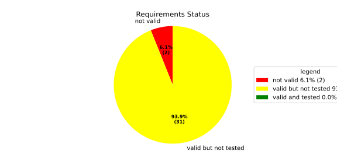
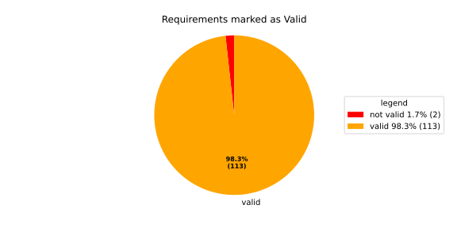
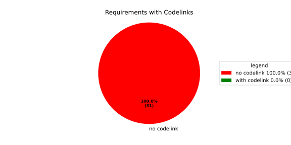
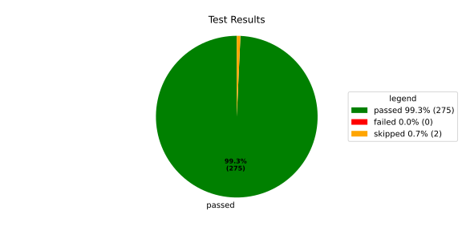
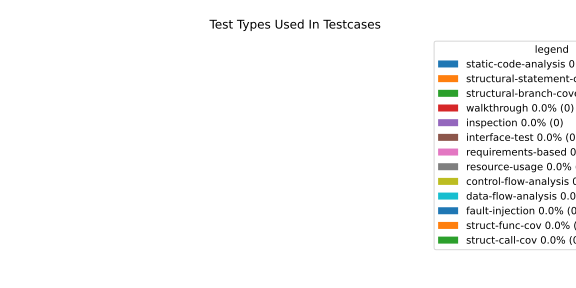
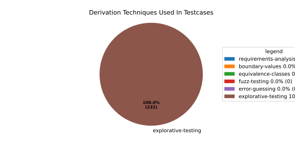

Verification Statistics#
Overview#

In Detail#



Failed Tests
Hint: This table should be empty. Before a PR can be merged all tests have to be successful.
No needs passed the filters
Skipped / Disabled Tests
testcase |
Result |
Fully Verifies |
Partially Verifies |
Test Type |
Derivation Technique |
link |
|---|---|---|---|---|---|---|
ValidateRangeTest/4__RejectsValueAboveMax |
skipped |
interface-test |
explorative-testing |
|||
ValidateRangeTest/4__RejectsValueBelowMin |
skipped |
interface-test |
explorative-testing |
All passed Tests#
testcase |
Result |
Fully Verifies |
Partially Verifies |
Test Type |
Derivation Technique |
link |
|---|---|---|---|---|---|---|
AliveImplTest__DoesNotThrowWhenInterfacePathEnvVarIsSet |
passed |
interface-test |
explorative-testing |
testcase__AliveImplTest__DoesNotThrowWhenInterfacePathEnvVarIsSet_xpewu |
||
AliveImplTest__ReportCheckpointSafeWhenNotConnected |
passed |
interface-test |
explorative-testing |
testcase__AliveImplTest__ReportCheckpointSafeWhenNotConnected_ppvuc |
||
AliveImplTest__ThrowsWhenInterfacePathEnvVarIsNotSet |
passed |
interface-test |
explorative-testing |
testcase__AliveImplTest__ThrowsWhenInterfacePathEnvVarIsNotSet_ekxfw |
||
AliveSupervisionTest__AliveDebouncesThroughFailedBeforeExpired |
passed |
interface-test |
explorative-testing |
testcase__AliveSupervisionTest__AliveDebouncesThroughFailedBeforeExpired_mlnbe |
||
AliveSupervisionTest__AliveReportsEnqueueFailureWhenRingBufferFull |
passed |
interface-test |
explorative-testing |
testcase__AliveSupervisionTest__AliveReportsEnqueueFailureWhenRingBufferFull_byhrd |
||
AliveSupervisionTest__AliveStaysOkWithCorrectHeartbeats |
passed |
interface-test |
explorative-testing |
testcase__AliveSupervisionTest__AliveStaysOkWithCorrectHeartbeats_vekof |
||
AliveSupervisionTest__AliveTransitionsOkToExpiredOnMissingHeartbeat |
passed |
interface-test |
explorative-testing |
testcase__AliveSupervisionTest__AliveTransitionsOkToExpiredOnMissingHeartbeat_jymxo |
||
AliveSupervisionTest__DeactivatesOnProcessCrash |
passed |
interface-test |
explorative-testing |
testcase__AliveSupervisionTest__DeactivatesOnProcessCrash_ypejs |
||
AliveSupervisionTest__DeactivatesOnProcessSigterm |
passed |
interface-test |
explorative-testing |
testcase__AliveSupervisionTest__DeactivatesOnProcessSigterm_hzaal |
||
AliveSupervisionTest__IgnoresIrrelevantProcessStates |
passed |
interface-test |
explorative-testing |
testcase__AliveSupervisionTest__IgnoresIrrelevantProcessStates_aolvb |
||
AliveSupervisionTest__MaxIndicationViolationExpires |
passed |
interface-test |
explorative-testing |
testcase__AliveSupervisionTest__MaxIndicationViolationExpires_whhhi |
||
AliveSupervisionTest__ReactivatesAfterCrash |
passed |
interface-test |
explorative-testing |
|||
ApplicationTypes/ApplicationTypeTest__ConvertsToExpectedValue/Native |
passed |
interface-test |
explorative-testing |
testcase__ApplicationTypes/ApplicationTypeTest__ConvertsToExpectedValue/Native_yxxcz |
||
ApplicationTypes/ApplicationTypeTest__ConvertsToExpectedValue/Reporting |
passed |
interface-test |
explorative-testing |
testcase__ApplicationTypes/ApplicationTypeTest__ConvertsToExpectedValue/Reporting_wcfwr |
||
ApplicationTypes/ApplicationTypeTest__ConvertsToExpectedValue/ReportingAndSupervised |
passed |
interface-test |
explorative-testing |
testcase__ApplicationTypes/ApplicationTypeTest__ConvertsToExpectedValue/ReportingAndSupervised_yxgad |
||
ApplicationTypes/ApplicationTypeTest__ConvertsToExpectedValue/StateManager |
passed |
interface-test |
explorative-testing |
testcase__ApplicationTypes/ApplicationTypeTest__ConvertsToExpectedValue/StateManager_ivuzc |
||
ConfigurationAdapterFallbackTest__FallbackRunTargetResolvesDependenciesRecursively |
passed |
interface-test |
explorative-testing |
testcase__ConfigurationAdapterFallbackTest__FallbackRunTargetResolvesDependenciesRecursively_qcvvz |
||
ConfigurationAdapterReadyConditionTest__DependencyDefaultsToRunningWhenTargetHasNoReadyCondition |
passed |
interface-test |
explorative-testing |
|||
ConfigurationAdapterReadyConditionTest__DependencyUsesTargetComponentReadyCondition |
passed |
interface-test |
explorative-testing |
testcase__ConfigurationAdapterReadyConditionTest__DependencyUsesTargetComponentReadyCondition_wvyyj |
||
ConfigurationAdapterTest__GetListOfProcessGroupsReturnsSingleImplicitGroup |
passed |
interface-test |
explorative-testing |
testcase__ConfigurationAdapterTest__GetListOfProcessGroupsReturnsSingleImplicitGroup_fthqq |
||
ConfigurationAdapterTest__GetMainPGStartupStateMapsToInitialRunTarget |
passed |
interface-test |
explorative-testing |
testcase__ConfigurationAdapterTest__GetMainPGStartupStateMapsToInitialRunTarget_wtcit |
||
ConfigurationAdapterTest__GetNameOfOffStateMapsToMainPGOff |
passed |
interface-test |
explorative-testing |
testcase__ConfigurationAdapterTest__GetNameOfOffStateMapsToMainPGOff_jczne |
||
ConfigurationAdapterTest__GetNameOfRecoveryStateMapsToFallbackRunTarget |
passed |
interface-test |
explorative-testing |
testcase__ConfigurationAdapterTest__GetNameOfRecoveryStateMapsToFallbackRunTarget_mxndq |
||
ConfigurationAdapterTest__GetNumberOfOsProcessesReturnsComponentCount |
passed |
interface-test |
explorative-testing |
testcase__ConfigurationAdapterTest__GetNumberOfOsProcessesReturnsComponentCount_eyzdp |
||
ConfigurationAdapterTest__GetOsProcessConfigurationInjectsAliveInterfaceForSupervised |
passed |
interface-test |
explorative-testing |
|||
ConfigurationAdapterTest__GetOsProcessConfigurationMapsComponentFields |
passed |
interface-test |
explorative-testing |
testcase__ConfigurationAdapterTest__GetOsProcessConfigurationMapsComponentFields_rszfk |
||
ConfigurationAdapterTest__GetOsProcessConfigurationNoAliveInterfaceForNative |
passed |
interface-test |
explorative-testing |
testcase__ConfigurationAdapterTest__GetOsProcessConfigurationNoAliveInterfaceForNative_cbsad |
||
ConfigurationAdapterTest__GetOsProcessConfigurationReturnsNulloptForInvalidIndex |
passed |
interface-test |
explorative-testing |
testcase__ConfigurationAdapterTest__GetOsProcessConfigurationReturnsNulloptForInvalidIndex_yoorg |
||
ConfigurationAdapterTest__GetOsProcessConfigurationReturnsNulloptForUnknownPG |
passed |
interface-test |
explorative-testing |
testcase__ConfigurationAdapterTest__GetOsProcessConfigurationReturnsNulloptForUnknownPG_ewqla |
||
ConfigurationAdapterTest__GetOsProcessDependenciesEmptyForComponentWithNoDeps |
passed |
interface-test |
explorative-testing |
testcase__ConfigurationAdapterTest__GetOsProcessDependenciesEmptyForComponentWithNoDeps_odxew |
||
ConfigurationAdapterTest__GetOsProcessDependenciesMapsComponentDependsOn |
passed |
interface-test |
explorative-testing |
testcase__ConfigurationAdapterTest__GetOsProcessDependenciesMapsComponentDependsOn_varth |
||
ConfigurationAdapterTest__GetProcessIndexesListResolvesRunTargetDependencies |
passed |
interface-test |
explorative-testing |
testcase__ConfigurationAdapterTest__GetProcessIndexesListResolvesRunTargetDependencies_otimf |
||
ConfigurationAdapterTest__GetProcessIndexesListResolvesTransitiveDependencies |
passed |
interface-test |
explorative-testing |
testcase__ConfigurationAdapterTest__GetProcessIndexesListResolvesTransitiveDependencies_iemgm |
||
ConfigurationAdapterTest__GetSoftwareClusterReturnsDefault |
passed |
interface-test |
explorative-testing |
testcase__ConfigurationAdapterTest__GetSoftwareClusterReturnsDefault_ixyoq |
||
ConfigurationAdapterTest__OffStateReturnsProcessIndexesListEmpty |
passed |
interface-test |
explorative-testing |
testcase__ConfigurationAdapterTest__OffStateReturnsProcessIndexesListEmpty_zngsc |
||
ConverterTest__ConvertAliveSupervisionMissingCycleReturnsError |
passed |
interface-test |
explorative-testing |
testcase__ConverterTest__ConvertAliveSupervisionMissingCycleReturnsError_bifzg |
||
ConverterTest__ConvertAliveSupervisionNullReturnsDefault |
passed |
interface-test |
explorative-testing |
testcase__ConverterTest__ConvertAliveSupervisionNullReturnsDefault_clyua |
||
ConverterTest__ConvertAliveSupervisionValid |
passed |
interface-test |
explorative-testing |
|||
ConverterTest__ConvertApplicationProfileMissingSelfTerminatingReturnsError |
passed |
interface-test |
explorative-testing |
testcase__ConverterTest__ConvertApplicationProfileMissingSelfTerminatingReturnsError_zddjb |
||
ConverterTest__ConvertApplicationProfileMissingTypeReturnsError |
passed |
interface-test |
explorative-testing |
testcase__ConverterTest__ConvertApplicationProfileMissingTypeReturnsError_zrfcs |
||
ConverterTest__ConvertApplicationProfileValid |
passed |
interface-test |
explorative-testing |
testcase__ConverterTest__ConvertApplicationProfileValid_oohxq |
||
ConverterTest__ConvertComponentAliveSupervisionBothIndicationsAbsentReturnsError |
passed |
interface-test |
explorative-testing |
testcase__ConverterTest__ConvertComponentAliveSupervisionBothIndicationsAbsentReturnsError_gvtfi |
||
ConverterTest__ConvertComponentAliveSupervisionMissingReportingCycleReturnsError |
passed |
interface-test |
explorative-testing |
testcase__ConverterTest__ConvertComponentAliveSupervisionMissingReportingCycleReturnsError_ajymy |
||
ConverterTest__ConvertComponentAliveSupervisionMissingToleranceReturnsError |
passed |
interface-test |
explorative-testing |
testcase__ConverterTest__ConvertComponentAliveSupervisionMissingToleranceReturnsError_lgrhj |
||
ConverterTest__ConvertComponentAliveSupervisionNullReturnsDefault |
passed |
interface-test |
explorative-testing |
testcase__ConverterTest__ConvertComponentAliveSupervisionNullReturnsDefault_xhaus |
||
ConverterTest__ConvertComponentAliveSupervisionOnlyMaxIndicationsPresent |
passed |
interface-test |
explorative-testing |
testcase__ConverterTest__ConvertComponentAliveSupervisionOnlyMaxIndicationsPresent_smwht |
||
ConverterTest__ConvertComponentAliveSupervisionOnlyMinIndicationsPresent |
passed |
interface-test |
explorative-testing |
testcase__ConverterTest__ConvertComponentAliveSupervisionOnlyMinIndicationsPresent_ybbrr |
||
ConverterTest__ConvertComponentAliveSupervisionValid |
passed |
interface-test |
explorative-testing |
testcase__ConverterTest__ConvertComponentAliveSupervisionValid_ijedh |
||
ConverterTest__ConvertComponentsValid |
passed |
interface-test |
explorative-testing |
|||
ConverterTest__ConvertComponentsWithInvalidComponentReturnsError |
passed |
interface-test |
explorative-testing |
testcase__ConverterTest__ConvertComponentsWithInvalidComponentReturnsError_wridc |
||
ConverterTest__ConvertComponentValid |
passed |
interface-test |
explorative-testing |
|||
ConverterTest__ConvertDeploymentConfigMissingReadyTimeoutReturnsError |
passed |
interface-test |
explorative-testing |
testcase__ConverterTest__ConvertDeploymentConfigMissingReadyTimeoutReturnsError_ljzfl |
||
ConverterTest__ConvertDeploymentConfigMissingShutdownTimeoutReturnsError |
passed |
interface-test |
explorative-testing |
testcase__ConverterTest__ConvertDeploymentConfigMissingShutdownTimeoutReturnsError_vyqye |
||
ConverterTest__ConvertDeploymentConfigValid |
passed |
interface-test |
explorative-testing |
|||
ConverterTest__ConvertEnvironmentalVariables |
passed |
interface-test |
explorative-testing |
testcase__ConverterTest__ConvertEnvironmentalVariables_fnhgo |
||
ConverterTest__ConvertEnvironmentalVariablesNullReturnsEmpty |
passed |
interface-test |
explorative-testing |
testcase__ConverterTest__ConvertEnvironmentalVariablesNullReturnsEmpty_vglrx |
||
ConverterTest__ConvertFallbackRunTargetMissingTimeoutReturnsError |
passed |
interface-test |
explorative-testing |
testcase__ConverterTest__ConvertFallbackRunTargetMissingTimeoutReturnsError_aevly |
||
ConverterTest__ConvertFallbackRunTargetValid |
passed |
interface-test |
explorative-testing |
testcase__ConverterTest__ConvertFallbackRunTargetValid_nexxj |
||
ConverterTest__ConvertReadyConditionMissingProcessStateReturnsError |
passed |
interface-test |
explorative-testing |
testcase__ConverterTest__ConvertReadyConditionMissingProcessStateReturnsError_ileav |
||
ConverterTest__ConvertReadyConditionValid |
passed |
interface-test |
explorative-testing |
|||
ConverterTest__ConvertRestartActionMissingFieldsReturnsError |
passed |
interface-test |
explorative-testing |
testcase__ConverterTest__ConvertRestartActionMissingFieldsReturnsError_aapjb |
||
ConverterTest__ConvertRestartActionNullReturnsNullopt |
passed |
interface-test |
explorative-testing |
testcase__ConverterTest__ConvertRestartActionNullReturnsNullopt_ifvyd |
||
ConverterTest__ConvertRestartActionValid |
passed |
interface-test |
explorative-testing |
|||
ConverterTest__ConvertRunTargetMissingTransitionTimeoutReturnsError |
passed |
interface-test |
explorative-testing |
testcase__ConverterTest__ConvertRunTargetMissingTransitionTimeoutReturnsError_ynekv |
||
ConverterTest__ConvertRunTargetsValid |
passed |
interface-test |
explorative-testing |
|||
ConverterTest__ConvertRunTargetsWithInvalidRunTargetReturnsError |
passed |
interface-test |
explorative-testing |
testcase__ConverterTest__ConvertRunTargetsWithInvalidRunTargetReturnsError_ldlox |
||
ConverterTest__ConvertRunTargetValid |
passed |
interface-test |
explorative-testing |
|||
ConverterTest__ConvertSandboxMissingGidReturnsError |
passed |
interface-test |
explorative-testing |
testcase__ConverterTest__ConvertSandboxMissingGidReturnsError_veeel |
||
ConverterTest__ConvertSandboxMissingSchedulingPolicyReturnsError |
passed |
interface-test |
explorative-testing |
testcase__ConverterTest__ConvertSandboxMissingSchedulingPolicyReturnsError_pkfts |
||
ConverterTest__ConvertSandboxMissingSchedulingPriorityReturnsError |
passed |
interface-test |
explorative-testing |
testcase__ConverterTest__ConvertSandboxMissingSchedulingPriorityReturnsError_xzdho |
||
ConverterTest__ConvertSandboxMissingUidReturnsError |
passed |
interface-test |
explorative-testing |
testcase__ConverterTest__ConvertSandboxMissingUidReturnsError_ogfku |
||
ConverterTest__ConvertSandboxSupplementaryGidOutOfRangeReturnsError |
passed |
interface-test |
explorative-testing |
testcase__ConverterTest__ConvertSandboxSupplementaryGidOutOfRangeReturnsError_zavpx |
||
ConverterTest__ConvertSandboxUidOutOfRangeReturnsError |
passed |
interface-test |
explorative-testing |
testcase__ConverterTest__ConvertSandboxUidOutOfRangeReturnsError_mcuaf |
||
ConverterTest__ConvertSandboxValid |
passed |
interface-test |
explorative-testing |
|||
ConverterTest__ConvertSwitchRunTargetActionNullReturnsNullopt |
passed |
interface-test |
explorative-testing |
testcase__ConverterTest__ConvertSwitchRunTargetActionNullReturnsNullopt_zmitx |
||
ConverterTest__ConvertSwitchRunTargetActionValid |
passed |
interface-test |
explorative-testing |
testcase__ConverterTest__ConvertSwitchRunTargetActionValid_tdklr |
||
ConverterTest__ConvertWatchdogMissingDeactivateReturnsError |
passed |
interface-test |
explorative-testing |
testcase__ConverterTest__ConvertWatchdogMissingDeactivateReturnsError_gzwjt |
||
ConverterTest__ConvertWatchdogMissingMagicCloseReturnsError |
passed |
interface-test |
explorative-testing |
testcase__ConverterTest__ConvertWatchdogMissingMagicCloseReturnsError_gexxk |
||
ConverterTest__ConvertWatchdogMissingMaxTimeoutReturnsError |
passed |
interface-test |
explorative-testing |
testcase__ConverterTest__ConvertWatchdogMissingMaxTimeoutReturnsError_lffxm |
||
ConverterTest__ConvertWatchdogNullReturnsNullopt |
passed |
interface-test |
explorative-testing |
testcase__ConverterTest__ConvertWatchdogNullReturnsNullopt_irsdk |
||
ConverterTest__ConvertWatchdogValid |
passed |
interface-test |
explorative-testing |
|||
DeadlineFixture__Start_AlreadyRunning |
passed |
interface-test |
explorative-testing |
|||
DeadlineFixture__Start_Succeeds |
passed |
interface-test |
explorative-testing |
|||
DeadlineMonitorBuilderFixture__AddDeadline_Succeeds |
passed |
interface-test |
explorative-testing |
testcase__DeadlineMonitorBuilderFixture__AddDeadline_Succeeds_nagke |
||
DeadlineMonitorBuilderFixture__New_Succeeds |
passed |
interface-test |
explorative-testing |
|||
DeadlineMonitorFixture__GetDeadline_Succeeds |
passed |
interface-test |
explorative-testing |
testcase__DeadlineMonitorFixture__GetDeadline_Succeeds_tmltf |
||
DeadlineMonitorFixture__GetDeadline_Unknown |
passed |
interface-test |
explorative-testing |
|||
EnumConversionTest__ConvertSchedulingPolicyUnsupported |
passed |
interface-test |
explorative-testing |
testcase__EnumConversionTest__ConvertSchedulingPolicyUnsupported_iavqm |
||
EnvironmentTest__AddIncreasesSize |
passed |
interface-test |
explorative-testing |
|||
EnvironmentTest__DefaultConstructedIsEmpty |
passed |
interface-test |
explorative-testing |
|||
EnvironmentTest__EmptyEnvironmentEnvpIsNullTerminated |
passed |
interface-test |
explorative-testing |
testcase__EnvironmentTest__EmptyEnvironmentEnvpIsNullTerminated_wwumw |
||
EnvironmentTest__EnvpReturnsNullTerminatedArray |
passed |
interface-test |
explorative-testing |
testcase__EnvironmentTest__EnvpReturnsNullTerminatedArray_aubkv |
||
EnvironmentTest__EnvpWithMultipleEntries |
passed |
interface-test |
explorative-testing |
|||
EnvironmentTest__MoveAssignmentPreservesEntries |
passed |
interface-test |
explorative-testing |
testcase__EnvironmentTest__MoveAssignmentPreservesEntries_vkydj |
||
EnvironmentTest__MoveConstructorPreservesEntries |
passed |
interface-test |
explorative-testing |
testcase__EnvironmentTest__MoveConstructorPreservesEntries_upclt |
||
EnvironmentTest__RangeBasedForLoopWorks |
passed |
interface-test |
explorative-testing |
|||
EnvironmentTest__ReserveAndAddAvoidReallocation |
passed |
interface-test |
explorative-testing |
testcase__EnvironmentTest__ReserveAndAddAvoidReallocation_lgzmu |
||
EnvironmentTest__SsoLengthStringSurvivesReallocation |
passed |
interface-test |
explorative-testing |
testcase__EnvironmentTest__SsoLengthStringSurvivesReallocation_jfmtl |
||
EnvironmentVariableTest__CStrReturnsKeyEqualsValue |
passed |
interface-test |
explorative-testing |
testcase__EnvironmentVariableTest__CStrReturnsKeyEqualsValue_rkwan |
||
EnvironmentVariableTest__EmptyValue |
passed |
interface-test |
explorative-testing |
|||
EnvironmentVariableTest__KeyAndValueAreAccessible |
passed |
interface-test |
explorative-testing |
testcase__EnvironmentVariableTest__KeyAndValueAreAccessible_kcrth |
||
EnvironmentVariableTest__ValueContainingEquals |
passed |
interface-test |
explorative-testing |
testcase__EnvironmentVariableTest__ValueContainingEquals_apzgz |
||
ExecErrorDomainTest__AllKnownCodesHaveDistinctMessages |
passed |
interface-test |
explorative-testing |
testcase__ExecErrorDomainTest__AllKnownCodesHaveDistinctMessages_qpoka |
||
ExecErrorDomainTest__AllKnownCodesReturnNonEmptyMessage |
passed |
interface-test |
explorative-testing |
testcase__ExecErrorDomainTest__AllKnownCodesReturnNonEmptyMessage_bawzg |
||
ExecErrorDomainTest__UnknownCodeReturnsNonEmptyMessage |
passed |
interface-test |
explorative-testing |
testcase__ExecErrorDomainTest__UnknownCodeReturnsNonEmptyMessage_kkwpr |
||
FlatbufferConfigLoaderTest__CorruptedBufferReturnsInvalidFormat |
passed |
interface-test |
explorative-testing |
testcase__FlatbufferConfigLoaderTest__CorruptedBufferReturnsInvalidFormat_twyac |
||
FlatbufferConfigLoaderTest__LoadAliveSupervision |
passed |
interface-test |
explorative-testing |
testcase__FlatbufferConfigLoaderTest__LoadAliveSupervision_hhuux |
||
FlatbufferConfigLoaderTest__LoadBufferFailsWithGenericErrorReturnsGeneralError |
passed |
interface-test |
explorative-testing |
testcase__FlatbufferConfigLoaderTest__LoadBufferFailsWithGenericErrorReturnsGeneralError_kmatm |
||
FlatbufferConfigLoaderTest__LoadBufferFailsWithNoSuchFileReturnsFileNotFound |
passed |
interface-test |
explorative-testing |
testcase__FlatbufferConfigLoaderTest__LoadBufferFailsWithNoSuchFileReturnsFileNotFound_yzlra |
||
FlatbufferConfigLoaderTest__LoadBufferFailsWithPermissionDeniedReturnsInsufficientPermission |
passed |
interface-test |
explorative-testing |
|||
FlatbufferConfigLoaderTest__LoadComponentAliveSupervision |
passed |
interface-test |
explorative-testing |
testcase__FlatbufferConfigLoaderTest__LoadComponentAliveSupervision_fwfad |
||
FlatbufferConfigLoaderTest__LoadEnvironmentalVariables |
passed |
interface-test |
explorative-testing |
testcase__FlatbufferConfigLoaderTest__LoadEnvironmentalVariables_wsosu |
||
FlatbufferConfigLoaderTest__LoadFallbackRunTarget |
passed |
interface-test |
explorative-testing |
testcase__FlatbufferConfigLoaderTest__LoadFallbackRunTarget_wduqm |
||
FlatbufferConfigLoaderTest__LoadMinimalConfig |
passed |
interface-test |
explorative-testing |
testcase__FlatbufferConfigLoaderTest__LoadMinimalConfig_hdkck |
||
FlatbufferConfigLoaderTest__LoadMultipleComponents |
passed |
interface-test |
explorative-testing |
testcase__FlatbufferConfigLoaderTest__LoadMultipleComponents_abpom |
||
FlatbufferConfigLoaderTest__LoadRestartRecoveryAction |
passed |
interface-test |
explorative-testing |
testcase__FlatbufferConfigLoaderTest__LoadRestartRecoveryAction_wyfqg |
||
FlatbufferConfigLoaderTest__LoadRunTargets |
passed |
interface-test |
explorative-testing |
|||
FlatbufferConfigLoaderTest__LoadSandbox |
passed |
interface-test |
explorative-testing |
|||
FlatbufferConfigLoaderTest__LoadSingleComponent |
passed |
interface-test |
explorative-testing |
testcase__FlatbufferConfigLoaderTest__LoadSingleComponent_yidty |
||
FlatbufferConfigLoaderTest__LoadSwitchRunTargetAction |
passed |
interface-test |
explorative-testing |
testcase__FlatbufferConfigLoaderTest__LoadSwitchRunTargetAction_uchgp |
||
FlatbufferConfigLoaderTest__LoadWatchdog |
passed |
interface-test |
explorative-testing |
|||
FlatbufferConfigLoaderTest__MissingSchemaVersionReturnsInvalidFormat |
passed |
interface-test |
explorative-testing |
testcase__FlatbufferConfigLoaderTest__MissingSchemaVersionReturnsInvalidFormat_qqmfn |
||
FlatbufferConfigLoaderTest__OptionalReadyConditionAbsent |
passed |
interface-test |
explorative-testing |
testcase__FlatbufferConfigLoaderTest__OptionalReadyConditionAbsent_lhddx |
||
FlatbufferConfigLoaderTest__OptionalWatchdogAbsent |
passed |
interface-test |
explorative-testing |
testcase__FlatbufferConfigLoaderTest__OptionalWatchdogAbsent_pkhkp |
||
FlatbufferConfigLoaderTest__WrongSchemaVersionReturnsUnsupportedVersion |
passed |
interface-test |
explorative-testing |
testcase__FlatbufferConfigLoaderTest__WrongSchemaVersionReturnsUnsupportedVersion_zrbjv |
||
HealthMonitor__GetDeadlineMonitor_Available |
passed |
|||||
HealthMonitor__GetDeadlineMonitor_Taken |
passed |
|||||
HealthMonitor__GetDeadlineMonitor_Unknown |
passed |
|||||
HealthMonitor__GetHeartbeatMonitor_Available |
passed |
testcase__HealthMonitor__GetHeartbeatMonitor_Available_aacat |
||||
HealthMonitor__GetHeartbeatMonitor_Taken |
passed |
|||||
HealthMonitor__GetHeartbeatMonitor_Unknown |
passed |
|||||
HealthMonitor__GetLogicMonitor_Available |
passed |
|||||
HealthMonitor__GetLogicMonitor_Taken |
passed |
|||||
HealthMonitor__GetLogicMonitor_Unknown |
passed |
|||||
HealthMonitor__Start_MonitorsNotTaken |
passed |
|||||
HealthMonitor__Start_Succeeds |
passed |
|||||
HealthMonitorBuilderFixture__Build_InvalidCycles |
passed |
interface-test |
explorative-testing |
testcase__HealthMonitorBuilderFixture__Build_InvalidCycles_pdigk |
||
HealthMonitorBuilderFixture__Build_NoMonitors |
passed |
interface-test |
explorative-testing |
testcase__HealthMonitorBuilderFixture__Build_NoMonitors_ktcve |
||
HealthMonitorBuilderFixture__Build_Succeeds |
passed |
interface-test |
explorative-testing |
|||
HealthMonitorBuilderFixture__New_Succeeds |
passed |
interface-test |
explorative-testing |
|||
HealthMonitorTest__Integrated |
passed |
interface-test |
explorative-testing |
|||
HeartbeatMonitor__Heartbeat_Succeeds |
passed |
interface-test |
explorative-testing |
|||
HeartbeatMonitorBuilder__New_Succeeds |
passed |
interface-test |
explorative-testing |
|||
IdentifierHashTest__IdentifierHash_default_created |
passed |
interface-test |
explorative-testing |
testcase__IdentifierHashTest__IdentifierHash_default_created_yhhvi |
||
IdentifierHashTest__IdentifierHash_EqualityOperators |
passed |
interface-test |
explorative-testing |
testcase__IdentifierHashTest__IdentifierHash_EqualityOperators_nnsuj |
||
IdentifierHashTest__IdentifierHash_invalid_hash_no_string_representation |
passed |
interface-test |
explorative-testing |
testcase__IdentifierHashTest__IdentifierHash_invalid_hash_no_string_representation_rxowr |
||
IdentifierHashTest__IdentifierHash_LessThanOperator |
passed |
interface-test |
explorative-testing |
testcase__IdentifierHashTest__IdentifierHash_LessThanOperator_rnbax |
||
IdentifierHashTest__IdentifierHash_no_dangling_pointer_after_source_string_dies |
passed |
interface-test |
explorative-testing |
testcase__IdentifierHashTest__IdentifierHash_no_dangling_pointer_after_source_string_dies_qsjin |
||
IdentifierHashTest__IdentifierHash_with_string_created |
passed |
interface-test |
explorative-testing |
testcase__IdentifierHashTest__IdentifierHash_with_string_created_aygdm |
||
IdentifierHashTest__IdentifierHash_with_string_view_created |
passed |
interface-test |
explorative-testing |
testcase__IdentifierHashTest__IdentifierHash_with_string_view_created_dbpol |
||
LogicMonitorBuilderFixture__AddState_Succeeds |
passed |
interface-test |
explorative-testing |
testcase__LogicMonitorBuilderFixture__AddState_Succeeds_axdxj |
||
LogicMonitorBuilderFixture__New_Succeeds |
passed |
interface-test |
explorative-testing |
|||
LogicMonitorFixture__State_Invalid |
passed |
interface-test |
explorative-testing |
|||
LogicMonitorFixture__State_Succeeds |
passed |
interface-test |
explorative-testing |
|||
LogicMonitorFixture__Transition_Invalid |
passed |
interface-test |
explorative-testing |
|||
LogicMonitorFixture__Transition_Succeeds |
passed |
interface-test |
explorative-testing |
|||
LogicMonitorFixture__Transition_Unknown |
passed |
interface-test |
explorative-testing |
|||
MonitorIfDaemonTest__Active_CheckpointDataForwarded |
passed |
interface-test |
explorative-testing |
testcase__MonitorIfDaemonTest__Active_CheckpointDataForwarded_evumz |
||
MonitorIfDaemonTest__Active_FutureTimestamp_NotForwardedInCurrentCycle |
passed |
interface-test |
explorative-testing |
testcase__MonitorIfDaemonTest__Active_FutureTimestamp_NotForwardedInCurrentCycle_oycau |
||
MonitorIfDaemonTest__Active_FutureTimestampCheckpoint_ConsumedInLaterCycle |
passed |
interface-test |
explorative-testing |
testcase__MonitorIfDaemonTest__Active_FutureTimestampCheckpoint_ConsumedInLaterCycle_veyyy |
||
MonitorIfDaemonTest__Active_MultipleCheckpointsInOneCycle_AllForwarded |
passed |
interface-test |
explorative-testing |
testcase__MonitorIfDaemonTest__Active_MultipleCheckpointsInOneCycle_AllForwarded_gmbms |
||
MonitorIfDaemonTest__Active_NonMatchingCheckpointId_NotForwarded |
passed |
interface-test |
explorative-testing |
testcase__MonitorIfDaemonTest__Active_NonMatchingCheckpointId_NotForwarded_bohck |
||
MonitorIfDaemonTest__Active_OverflowDetected_TransitionsToInactiveOverflow |
passed |
interface-test |
explorative-testing |
testcase__MonitorIfDaemonTest__Active_OverflowDetected_TransitionsToInactiveOverflow_ovitk |
||
MonitorIfDaemonTest__Active_TwoAttachedCheckpoints_RoutedByCheckpointId |
passed |
interface-test |
explorative-testing |
testcase__MonitorIfDaemonTest__Active_TwoAttachedCheckpoints_RoutedByCheckpointId_skqhd |
||
MonitorIfDaemonTest__GetInterfaceName_ReturnsNameGivenAtConstruction |
passed |
interface-test |
explorative-testing |
testcase__MonitorIfDaemonTest__GetInterfaceName_ReturnsNameGivenAtConstruction_iaemz |
||
MonitorIfDaemonTest__InactiveOverflow_NoProcessRestart_DoesNotRepeatNotification |
passed |
interface-test |
explorative-testing |
testcase__MonitorIfDaemonTest__InactiveOverflow_NoProcessRestart_DoesNotRepeatNotification_gdbxg |
||
MonitorIfDaemonTest__InactiveOverflow_ProcessRestartFlag_ClearedAfterNotification |
passed |
interface-test |
explorative-testing |
testcase__MonitorIfDaemonTest__InactiveOverflow_ProcessRestartFlag_ClearedAfterNotification_pqfyy |
||
MonitorIfDaemonTest__InactiveOverflow_ProcessRestarts_PushesOverflowNotificationAgain |
passed |
interface-test |
explorative-testing |
|||
MonitorIfDaemonTest__InitiallyInactive_CheckForNewData_DoesNotNotifyCheckpoint |
passed |
interface-test |
explorative-testing |
testcase__MonitorIfDaemonTest__InitiallyInactive_CheckForNewData_DoesNotNotifyCheckpoint_wjrfl |
||
MonitorIfDaemonTest__ProcessOff_DeactivatesMonitor_NoFurtherDataForwarded |
passed |
interface-test |
explorative-testing |
testcase__MonitorIfDaemonTest__ProcessOff_DeactivatesMonitor_NoFurtherDataForwarded_uialh |
||
MonitorIfDaemonTest__ProcessOffBeforeActivation_RemainsInactive |
passed |
interface-test |
explorative-testing |
testcase__MonitorIfDaemonTest__ProcessOffBeforeActivation_RemainsInactive_kzzyy |
||
MonitorIfDaemonTest__ProcessRunning_ActivatesMonitorOnNextCheckForNewData |
passed |
interface-test |
explorative-testing |
testcase__MonitorIfDaemonTest__ProcessRunning_ActivatesMonitorOnNextCheckForNewData_fkkmk |
||
MonitorIfDaemonTest__ProcessStarting_AlsoActivatesMonitor |
passed |
interface-test |
explorative-testing |
testcase__MonitorIfDaemonTest__ProcessStarting_AlsoActivatesMonitor_xdkbg |
||
MPMCConcurrentQueueTest_Basic__LvaluePushCopiesItem |
passed |
testcase__MPMCConcurrentQueueTest_Basic__LvaluePushCopiesItem_oysfc |
||||
MPMCConcurrentQueueTest_Basic__PopReturnsNulloptOnSemaphoreWaitFailure |
passed |
testcase__MPMCConcurrentQueueTest_Basic__PopReturnsNulloptOnSemaphoreWaitFailure_rgznm |
||||
MPMCConcurrentQueueTest_Basic__PushAndPopPreservesOrder |
passed |
testcase__MPMCConcurrentQueueTest_Basic__PushAndPopPreservesOrder_aijdb |
||||
MPMCConcurrentQueueTest_Basic__PushAndPopSingleItem |
passed |
testcase__MPMCConcurrentQueueTest_Basic__PushAndPopSingleItem_jrxwz |
||||
MPMCConcurrentQueueTest_Basic__RvaluePushWorksWithMoveOnlyType |
passed |
testcase__MPMCConcurrentQueueTest_Basic__RvaluePushWorksWithMoveOnlyType_cxxaj |
||||
MPMCConcurrentQueueTest_Blocking__PopBlocksUntilItemAvailable |
passed |
testcase__MPMCConcurrentQueueTest_Blocking__PopBlocksUntilItemAvailable_ttwcx |
||||
MPMCConcurrentQueueTest_Blocking__PushBlocksWhenFull |
passed |
testcase__MPMCConcurrentQueueTest_Blocking__PushBlocksWhenFull_ecujf |
||||
MPMCConcurrentQueueTest_Blocking__StopUnblocksBlockedConsumer |
passed |
testcase__MPMCConcurrentQueueTest_Blocking__StopUnblocksBlockedConsumer_snzyr |
||||
MPMCConcurrentQueueTest_Blocking__StopUnblocksBlockedProducer |
passed |
testcase__MPMCConcurrentQueueTest_Blocking__StopUnblocksBlockedProducer_inddu |
||||
MPMCConcurrentQueueTest_MPMC__AllItemsDelivered |
passed |
testcase__MPMCConcurrentQueueTest_MPMC__AllItemsDelivered_ztjqe |
||||
MPMCConcurrentQueueTest_Stop__ItemsAreDroppedAfterStop |
passed |
testcase__MPMCConcurrentQueueTest_Stop__ItemsAreDroppedAfterStop_ragzw |
||||
MPMCConcurrentQueueTest_Stop__PopReturnsNulloptWhenStoppedAndEmpty |
passed |
testcase__MPMCConcurrentQueueTest_Stop__PopReturnsNulloptWhenStoppedAndEmpty_cevga |
||||
MPMCConcurrentQueueTest_Stop__PushReturnsFalseAfterStop |
passed |
testcase__MPMCConcurrentQueueTest_Stop__PushReturnsFalseAfterStop_qqnhw |
||||
MPMCConcurrentQueueTest_Timeout__PushWithTimeoutReturnsFalseWhenFull |
passed |
testcase__MPMCConcurrentQueueTest_Timeout__PushWithTimeoutReturnsFalseWhenFull_aeips |
||||
MPMCConcurrentQueueTest_Timeout__PushWithTimeoutSucceedsWhenSlotAvailable |
passed |
testcase__MPMCConcurrentQueueTest_Timeout__PushWithTimeoutSucceedsWhenSlotAvailable_klzpo |
||||
OsHandlerTest__WaitReturnsError_OsHandlerSleepsAndDoesNotCallFindTerminated |
passed |
interface-test |
explorative-testing |
testcase__OsHandlerTest__WaitReturnsError_OsHandlerSleepsAndDoesNotCallFindTerminated_cibtr |
||
OsHandlerTest__WaitReturnsErrorThenProcessId_HandlerRecoversAndInvokesCallback |
passed |
interface-test |
explorative-testing |
testcase__OsHandlerTest__WaitReturnsErrorThenProcessId_HandlerRecoversAndInvokesCallback_nqstd |
||
OsHandlerTest__WaitReturnsProcessId_FindTerminatedIsCalled |
passed |
interface-test |
explorative-testing |
testcase__OsHandlerTest__WaitReturnsProcessId_FindTerminatedIsCalled_chlsq |
||
OsHandlerTest__WaitReturnsProcessIdBeforeRegistration_LaterRegistrationReceivesStoredTermination |
passed |
interface-test |
explorative-testing |
|||
OsHandlerTest__WaitReturnsUnknownPidWhenMapIsFull_OutOfResourcesPathDoesNotNotifyCallbacks |
passed |
interface-test |
explorative-testing |
|||
OsHandlerTest__WaitReturnsZeroPid_OsHandlerSleepsAndDoesNotCallFindTerminated |
passed |
interface-test |
explorative-testing |
testcase__OsHandlerTest__WaitReturnsZeroPid_OsHandlerSleepsAndDoesNotCallFindTerminated_rkttz |
||
ProcessStateClient_UT__ProcessStateClient_ConstructReceiver_Succeeds |
passed |
interface-test |
explorative-testing |
testcase__ProcessStateClient_UT__ProcessStateClient_ConstructReceiver_Succeeds_hodwy |
||
ProcessStateClient_UT__ProcessStateClient_QueueMaxNumberOfProcesses_Succeeds |
passed |
interface-test |
explorative-testing |
testcase__ProcessStateClient_UT__ProcessStateClient_QueueMaxNumberOfProcesses_Succeeds_qohom |
||
ProcessStateClient_UT__ProcessStateClient_QueueOneProcess_Succeeds |
passed |
interface-test |
explorative-testing |
testcase__ProcessStateClient_UT__ProcessStateClient_QueueOneProcess_Succeeds_tmzfz |
||
ProcessStateClient_UT__ProcessStateClient_QueueOneProcessTooMany_Fails |
passed |
interface-test |
explorative-testing |
testcase__ProcessStateClient_UT__ProcessStateClient_QueueOneProcessTooMany_Fails_sspoj |
||
ProcessStates/ProcessStateTest__ConvertsToExpectedValue/Running |
passed |
interface-test |
explorative-testing |
testcase__ProcessStates/ProcessStateTest__ConvertsToExpectedValue/Running_hinlr |
||
ProcessStates/ProcessStateTest__ConvertsToExpectedValue/Terminated |
passed |
interface-test |
explorative-testing |
testcase__ProcessStates/ProcessStateTest__ConvertsToExpectedValue/Terminated_zrytn |
||
RecoveryClientTest__FIFOOrdering |
passed |
interface-test |
explorative-testing |
|||
RecoveryClientTest__GetNextRequest |
passed |
interface-test |
explorative-testing |
|||
RecoveryClientTest__GetNextRequestEmpty |
passed |
interface-test |
explorative-testing |
|||
RecoveryClientTest__RingBufferFull |
passed |
interface-test |
explorative-testing |
|||
RecoveryClientTest__SendSingleRequest |
passed |
interface-test |
explorative-testing |
|||
RunTest__AsPosixProcessCreatesAndDestroysLifeCycleManager |
passed |
testcase__RunTest__AsPosixProcessCreatesAndDestroysLifeCycleManager_sooex |
||||
RunTest__AsPosixProcessForwardsConstructorArgsToApplication |
passed |
testcase__RunTest__AsPosixProcessForwardsConstructorArgsToApplication_dmeur |
||||
RunTest__AsPosixProcessForwardsNonZeroExitCode |
passed |
testcase__RunTest__AsPosixProcessForwardsNonZeroExitCode_lldqd |
||||
RunTest__AsPosixProcessPassesCorrectApplicationTypeToRun |
passed |
testcase__RunTest__AsPosixProcessPassesCorrectApplicationTypeToRun_ajqwz |
||||
RunTest__AsPosixProcessReturnsZeroExitCode |
passed |
|||||
RunTest__RunApplicationFreeFunctionDelegatesToAsPosixProcess |
passed |
testcase__RunTest__RunApplicationFreeFunctionDelegatesToAsPosixProcess_ccing |
||||
RunTest__RunConstructorPassesArgcArgvToApplicationContext |
passed |
testcase__RunTest__RunConstructorPassesArgcArgvToApplicationContext_agerd |
||||
SafeProcessMapTest__ConcurrentFindAndInsertFromMultipleThreads |
passed |
interface-test |
explorative-testing |
testcase__SafeProcessMapTest__ConcurrentFindAndInsertFromMultipleThreads_kzfyg |
||
SafeProcessMapTest__ConcurrentInsertAndFindFromMultipleThreads |
passed |
interface-test |
explorative-testing |
testcase__SafeProcessMapTest__ConcurrentInsertAndFindFromMultipleThreads_hnyqj |
||
SafeProcessMapTest__ConstructWithZeroCapacity |
passed |
interface-test |
explorative-testing |
testcase__SafeProcessMapTest__ConstructWithZeroCapacity_gjmqg |
||
SafeProcessMapTest__FindTerminatedInsertsEntryWhenPidNotPresent |
passed |
interface-test |
explorative-testing |
testcase__SafeProcessMapTest__FindTerminatedInsertsEntryWhenPidNotPresent_ixtlt |
||
SafeProcessMapTest__FindTerminatedMatchesExistingInsertAndCallsCallback |
passed |
interface-test |
explorative-testing |
testcase__SafeProcessMapTest__FindTerminatedMatchesExistingInsertAndCallsCallback_ehuzb |
||
SafeProcessMapTest__FindTerminatedSamePidTwiceYieldsUntilInsertResolves |
passed |
interface-test |
explorative-testing |
testcase__SafeProcessMapTest__FindTerminatedSamePidTwiceYieldsUntilInsertResolves_hsekx |
||
SafeProcessMapTest__FindTerminatedWithNegativePidReturnsInvalid |
passed |
interface-test |
explorative-testing |
testcase__SafeProcessMapTest__FindTerminatedWithNegativePidReturnsInvalid_dewoh |
||
SafeProcessMapTest__FindTerminatedWorksAtMaxTreeDepth |
passed |
interface-test |
explorative-testing |
testcase__SafeProcessMapTest__FindTerminatedWorksAtMaxTreeDepth_adtzi |
||
SafeProcessMapTest__InsertBeyondCapacityReturnsOutOfMemory |
passed |
interface-test |
explorative-testing |
testcase__SafeProcessMapTest__InsertBeyondCapacityReturnsOutOfMemory_qjnie |
||
SafeProcessMapTest__InsertIntoEmptyTreeReturnsZero |
passed |
interface-test |
explorative-testing |
testcase__SafeProcessMapTest__InsertIntoEmptyTreeReturnsZero_zfbaq |
||
SafeProcessMapTest__InsertMatchesExistingFindTerminatedEntry |
passed |
interface-test |
explorative-testing |
testcase__SafeProcessMapTest__InsertMatchesExistingFindTerminatedEntry_fuwrp |
||
SafeProcessMapTest__InsertMultipleNodesThenFindTerminatedRemovesAll |
passed |
interface-test |
explorative-testing |
testcase__SafeProcessMapTest__InsertMultipleNodesThenFindTerminatedRemovesAll_fvowh |
||
SafeProcessMapTest__InsertSamePidTwiceYieldsUntilFindTerminatedResolves |
passed |
interface-test |
explorative-testing |
testcase__SafeProcessMapTest__InsertSamePidTwiceYieldsUntilFindTerminatedResolves_wzwyb |
||
SchedulingPolicies/SchedulingPolicyTest__ConvertsToExpectedPosixValue/SCHED_FIFO |
passed |
interface-test |
explorative-testing |
testcase__SchedulingPolicies/SchedulingPolicyTest__ConvertsToExpectedPosixValue/SCHED_FIFO_soddq |
||
SchedulingPolicies/SchedulingPolicyTest__ConvertsToExpectedPosixValue/SCHED_OTHER |
passed |
interface-test |
explorative-testing |
testcase__SchedulingPolicies/SchedulingPolicyTest__ConvertsToExpectedPosixValue/SCHED_OTHER_oigmk |
||
SchedulingPolicies/SchedulingPolicyTest__ConvertsToExpectedPosixValue/SCHED_RR |
passed |
interface-test |
explorative-testing |
testcase__SchedulingPolicies/SchedulingPolicyTest__ConvertsToExpectedPosixValue/SCHED_RR_pcjci |
||
score/health_monitor/src/rust/test-510566969/tests |
passed |
testcase__score/health_monitor/src/rust/test-510566969/tests_kjjlw |
||||
score/health_monitor/src/rust/test-827801879/loom_tests |
passed |
testcase__score/health_monitor/src/rust/test-827801879/loom_tests_cpmix |
||||
SecondsToMsTest__ConvertsPositiveValue |
passed |
interface-test |
explorative-testing |
|||
SecondsToMsTest__ConvertsZero |
passed |
interface-test |
explorative-testing |
|||
SecondsToMsTest__RejectsNegativeValue |
passed |
interface-test |
explorative-testing |
|||
SecondsToMsTest__RejectsOverflow |
passed |
interface-test |
explorative-testing |
|||
SecondsToMsTest__RejectsSubMillisecond |
passed |
interface-test |
explorative-testing |
|||
StringHelperTest__ConvertGidVectorReturnsEmptyWhenNull |
passed |
interface-test |
explorative-testing |
testcase__StringHelperTest__ConvertGidVectorReturnsEmptyWhenNull_jmcsr |
||
StringHelperTest__ConvertStringVectorReturnsEmptyWhenNull |
passed |
interface-test |
explorative-testing |
testcase__StringHelperTest__ConvertStringVectorReturnsEmptyWhenNull_zsuvv |
||
StringHelperTest__SafeStringReturnsEmptyWhenNull |
passed |
interface-test |
explorative-testing |
testcase__StringHelperTest__SafeStringReturnsEmptyWhenNull_crelr |
||
StringHelperTest__SafeStringReturnsValueWhenNotNull |
passed |
interface-test |
explorative-testing |
testcase__StringHelperTest__SafeStringReturnsValueWhenNotNull_anbko |
||
test_complex_monitoring |
passed |
|||||
test_crash_on_startup |
passed |
|||||
test_incorrect_config_non_reporting |
passed |
|||||
test_process_crash_monitoring |
passed |
|||||
test_process_launch_args |
passed |
|||||
test_process_wrong_binary_failure |
passed |
|||||
test_recovery_action_complex_rep_failure |
passed |
|||||
test_recovery_action_simple_rep_failure |
passed |
|||||
test_smoke |
passed |
|||||
test_switch_run_target |
passed |
|||||
TimeRangeFixture__MinMax |
passed |
interface-test |
explorative-testing |
|||
TimeRangeFixture__New_InvalidOrder |
passed |
interface-test |
explorative-testing |
|||
TimeRangeFixture__New_Succeeds |
passed |
interface-test |
explorative-testing |
|||
ValidateRangeTest/0__AcceptsMaxBoundary |
passed |
interface-test |
explorative-testing |
|||
ValidateRangeTest/0__AcceptsMinBoundary |
passed |
interface-test |
explorative-testing |
|||
ValidateRangeTest/0__AcceptsZero |
passed |
interface-test |
explorative-testing |
|||
ValidateRangeTest/0__RejectsValueAboveMax |
passed |
interface-test |
explorative-testing |
|||
ValidateRangeTest/0__RejectsValueBelowMin |
passed |
interface-test |
explorative-testing |
|||
ValidateRangeTest/1__AcceptsMaxBoundary |
passed |
interface-test |
explorative-testing |
|||
ValidateRangeTest/1__AcceptsMinBoundary |
passed |
interface-test |
explorative-testing |
|||
ValidateRangeTest/1__AcceptsZero |
passed |
interface-test |
explorative-testing |
|||
ValidateRangeTest/1__RejectsValueAboveMax |
passed |
interface-test |
explorative-testing |
|||
ValidateRangeTest/1__RejectsValueBelowMin |
passed |
interface-test |
explorative-testing |
|||
ValidateRangeTest/2__AcceptsMaxBoundary |
passed |
interface-test |
explorative-testing |
|||
ValidateRangeTest/2__AcceptsMinBoundary |
passed |
interface-test |
explorative-testing |
|||
ValidateRangeTest/2__AcceptsZero |
passed |
interface-test |
explorative-testing |
|||
ValidateRangeTest/2__RejectsValueAboveMax |
passed |
interface-test |
explorative-testing |
|||
ValidateRangeTest/2__RejectsValueBelowMin |
passed |
interface-test |
explorative-testing |
|||
ValidateRangeTest/3__AcceptsMaxBoundary |
passed |
interface-test |
explorative-testing |
|||
ValidateRangeTest/3__AcceptsMinBoundary |
passed |
interface-test |
explorative-testing |
|||
ValidateRangeTest/3__AcceptsZero |
passed |
interface-test |
explorative-testing |
|||
ValidateRangeTest/3__RejectsValueAboveMax |
passed |
interface-test |
explorative-testing |
|||
ValidateRangeTest/3__RejectsValueBelowMin |
passed |
interface-test |
explorative-testing |
|||
ValidateRangeTest/4__AcceptsMaxBoundary |
passed |
interface-test |
explorative-testing |
|||
ValidateRangeTest/4__AcceptsMinBoundary |
passed |
interface-test |
explorative-testing |
|||
ValidateRangeTest/4__AcceptsZero |
passed |
interface-test |
explorative-testing |
Details About Testcases#


Test Log Files#
tests-report/tests/integration/process_simple_rep_failure/process_simple_rep_failure/test.log
exec ${PAGER:-/usr/bin/less} "$0" || exit 1
Executing tests from //tests/integration/process_simple_rep_failure:process_simple_rep_failure
-----------------------------------------------------------------------------
============================= test session starts ==============================
platform linux -- Python 3.12.12, pytest-9.0.3, pluggy-1.5.0
rootdir: /home/runner/.bazel/sandbox/processwrapper-sandbox/1127/execroot/_main/bazel-out/k8-fastbuild/bin/tests/integration/process_simple_rep_failure/process_simple_rep_failure.runfiles/score_itf+
configfile: pytest.ini
collected 1 item
../score_itf+::test_recovery_action_simple_rep_failure
-------------------------------- live log setup --------------------------------
[2026-07-10 07:31:11.176] [INFO] [score.itf.plugins.docker] Executing custom image bootstrap command: tests/utils/environments/x86_64-linux/x86_64-linux.sh
[2026-07-10 07:31:12.036] [DEBUG] [docker.utils.config] Trying paths: ['/home/runner/.docker/config.json', '/home/runner/.dockercfg']
[2026-07-10 07:31:12.036] [DEBUG] [docker.utils.config] Found file at path: /home/runner/.docker/config.json
[2026-07-10 07:31:12.036] [DEBUG] [docker.auth] Found 'auths' section
[2026-07-10 07:31:12.036] [DEBUG] [docker.auth] Found entry (registry='https://index.docker.io/v1/', username='githubactions')
[2026-07-10 07:31:12.051] [DEBUG] [urllib3.connectionpool] http://localhost:None "GET /version HTTP/1.1" 200 823
[2026-07-10 07:31:12.088] [DEBUG] [urllib3.connectionpool] http://localhost:None "POST /v1.48/containers/create HTTP/1.1" 201 88
[2026-07-10 07:31:12.094] [DEBUG] [urllib3.connectionpool] http://localhost:None "GET /v1.48/containers/c1e63f2f0f439ad9dbd4e6a27b2163e2661625ab0d17443037c82a0717e77e30/json HTTP/1.1" 200 None
[2026-07-10 07:31:12.310] [DEBUG] [urllib3.connectionpool] http://localhost:None "POST /v1.48/containers/c1e63f2f0f439ad9dbd4e6a27b2163e2661625ab0d17443037c82a0717e77e30/start HTTP/1.1" 204 0
[2026-07-10 07:31:12.311] [DEBUG] [docker.utils.config] Trying paths: ['/home/runner/.docker/config.json', '/home/runner/.dockercfg']
[2026-07-10 07:31:12.311] [DEBUG] [docker.utils.config] Found file at path: /home/runner/.docker/config.json
[2026-07-10 07:31:12.311] [DEBUG] [docker.auth] Found 'auths' section
[2026-07-10 07:31:12.311] [DEBUG] [docker.auth] Found entry (registry='https://index.docker.io/v1/', username='githubactions')
[2026-07-10 07:31:12.327] [DEBUG] [urllib3.connectionpool] http://localhost:None "GET /version HTTP/1.1" 200 823
[2026-07-10 07:31:12.843] [INFO] [tests.utils.testing_utils.setup_test] Test case setup finished
-------------------------------- live log call ---------------------------------
[2026-07-10 07:31:13.089] [INFO] [launch_manager] 2026/07/10 07:31:13.8673071 8264231 000 ECU1 LM LM log debug verbose 1
[2026-07-10 07:31:13.090] [INFO] [launch_manager] Launch Manager Started !!!!
[2026-07-10 07:31:13.090] [INFO] [launch_manager] 2026/07/10 07:31:13.8673073 8264235 000 ECU1 LM LM log debug verbose 1
[2026-07-10 07:31:13.090] [INFO] [launch_manager] Loading LCM Configurations...
[2026-07-10 07:31:13.090] [INFO] [launch_manager] 2026/07/10 07:31:13.8673073 8264236 000 ECU1 LM LM log debug verbose 1
[2026-07-10 07:31:13.090] [INFO] [launch_manager] ECUCFG_ENV_VAR_ROOTFOLDER set successfully
[2026-07-10 07:31:13.092] [INFO] [launch_manager] 2026/07/10 07:31:13.8673073 8264239 000 ECU1 LM LM log debug verbose 5 FlatBufferParser::getModeGroupPgName: MainPG ( IdentifierHash: 18079021346025578134 )
[2026-07-10 07:31:13.092] [INFO] [launch_manager] 2026/07/10 07:31:13.8673073 8264240 000 ECU1 LM LM log debug verbose 5
[2026-07-10 07:31:13.093] [INFO] [launch_manager] FlatBufferParser::getModeGroupPgStateName: MainPG/Startup ( IdentifierHash: 10504605499600661529 )
[2026-07-10 07:31:13.093] [INFO] [launch_manager] 2026/07/10 07:31:13.8673073 8264241 000 ECU1 LM LM log debug verbose 5
[2026-07-10 07:31:13.093] [INFO] [launch_manager] FlatBufferParser::getModeGroupPgStateName: MainPG/run_target_app_does_report_krunning_in_time ( IdentifierHash: 11934981641920773349 )
[2026-07-10 07:31:13.097] [INFO] [launch_manager] 2026/07/10 07:31:13.8673073 8264242 000 ECU1 LM LM log debug verbose 5 FlatBufferParser::getModeGroupPgStateName: MainPG/run_target_app_does_not_report_krunning_in_time ( IdentifierHash: 7672161913816744053 )
[2026-07-10 07:31:13.097] [INFO] [launch_manager] 2026/07/10 07:31:13.8673073 8264244 000 ECU1 LM LM log debug verbose 5
[2026-07-10 07:31:13.104] [INFO] [launch_manager] FlatBufferParser::getModeGroupPgStateName: MainPG/Off ( IdentifierHash: 15281793077830264047 )
[2026-07-10 07:31:13.104] [INFO] [launch_manager] 2026/07/10 07:31:13.8673074 8264245 000 ECU1 LM LM log debug verbose 5
[2026-07-10 07:31:13.104] [INFO] [launch_manager] FlatBufferParser::getModeGroupPgStateName: MainPG/fallback_run_target ( IdentifierHash: 4059409696722237352 )
[2026-07-10 07:31:13.104] [INFO] [launch_manager] 2026/07/10 07:31:13.8673074 8264246 000 ECU1 LM LM log debug verbose 4
[2026-07-10 07:31:13.104] [INFO] [launch_manager] parseProcessConfigurations: Process index: 0 executable_path_: /tmp/tests/process_simple_rep_failure/control_client_mock
[2026-07-10 07:31:13.104] [INFO] [launch_manager] 2026/07/10 07:31:13.8673074 8264248 000 ECU1 LM LM log debug verbose 3
[2026-07-10 07:31:13.104] [INFO] [launch_manager] Process control_client_mock is Reporting execution state
[2026-07-10 07:31:13.104] [INFO] [launch_manager] 2026/07/10 07:31:13.8673074 8264249 000 ECU1 LM LM log debug verbose 1
[2026-07-10 07:31:13.104] [INFO] [launch_manager] Process is STATE_MANAGEMENT function Cluster Affiliation
[2026-07-10 07:31:13.104] [INFO] [launch_manager] 2026/07/10 07:31:13.8673074 8264250 000 ECU1 LM LM log debug verbose 3
[2026-07-10 07:31:13.105] [INFO] [launch_manager] Process control_client_mock is Self terminating
[2026-07-10 07:31:13.105] [INFO] [launch_manager] 2026/07/10 07:31:13.8673074 8264252 000 ECU1 LM LM log debug verbose 4
[2026-07-10 07:31:13.105] [INFO] [launch_manager] ParseProcessProcessGroup: id:::pg_name_: MainPG , pg_state_name_: MainPG/Startup
[2026-07-10 07:31:13.105] [INFO] [launch_manager] 2026/07/10 07:31:13.8673074 8264253 000 ECU1 LM LM log debug verbose 4
[2026-07-10 07:31:13.105] [INFO] [launch_manager] ParseProcessProcessGroup: id:::pg_name_: MainPG , pg_state_name_: MainPG/run_target_app_does_report_krunning_in_time
[2026-07-10 07:31:13.105] [INFO] [launch_manager] 2026/07/10 07:31:13.8673074 8264254 000 ECU1 LM LM log debug verbose 4
[2026-07-10 07:31:13.105] [INFO] [launch_manager] ParseProcessProcessGroup: id:::pg_name_: MainPG , pg_state_name_: MainPG/run_target_app_does_not_report_krunning_in_time
[2026-07-10 07:31:13.105] [INFO] [launch_manager] 2026/07/10 07:31:13.8673075 8264255 000 ECU1 LM LM log debug verbose 4
[2026-07-10 07:31:13.105] [INFO] [launch_manager] ParseProcessProcessGroup: id:::pg_name_: MainPG , pg_state_name_: MainPG/fallback_run_target
[2026-07-10 07:31:13.114] [INFO] [launch_manager] 2026/07/10 07:31:13.8673075 8264257 000 ECU1 LM LM log debug verbose 4
[2026-07-10 07:31:13.114] [INFO] [launch_manager] parseProcessConfigurations: Process index: 1 executable_path_: /tmp/tests/process_simple_rep_failure/process_simple_reporting
[2026-07-10 07:31:13.114] [INFO] [launch_manager] 2026/07/10 07:31:13.8673075 8264258 000 ECU1 LM LM log debug verbose 3
[2026-07-10 07:31:13.114] [INFO] [launch_manager] Process component_does_report_krunning_in_time is Reporting execution state
[2026-07-10 07:31:13.114] [INFO] [launch_manager] 2026/07/10 07:31:13.8673075 8264259 000 ECU1 LM LM log debug verbose 1
[2026-07-10 07:31:13.115] [INFO] [launch_manager] Process is NOT associated with any function Cluster Affiliation
[2026-07-10 07:31:13.115] [INFO] [launch_manager] 2026/07/10 07:31:13.8673075 8264260 000 ECU1 LM LM log debug verbose 3
[2026-07-10 07:31:13.115] [INFO] [launch_manager] Process component_does_report_krunning_in_time is Self terminating
[2026-07-10 07:31:13.115] [INFO] [launch_manager] 2026/07/10 07:31:13.8673075 8264262 000 ECU1 LM LM log debug verbose 4
[2026-07-10 07:31:13.117] [INFO] [launch_manager] ParseProcessProcessGroup: id:::pg_name_: MainPG , pg_state_name_: MainPG/run_target_app_does_report_krunning_in_time
[2026-07-10 07:31:13.120] [INFO] [launch_manager] 2026/07/10 07:31:13.8673075 8264263 000 ECU1 LM LM log debug verbose 4
[2026-07-10 07:31:13.120] [INFO] [launch_manager] parseProcessConfigurations: Process index: 2 executable_path_: /tmp/tests/process_simple_rep_failure/process_simple_reporting
[2026-07-10 07:31:13.122] [INFO] [launch_manager] 2026/07/10 07:31:13.8673076 8264265 000 ECU1 LM LM log debug verbose 3
[2026-07-10 07:31:13.122] [INFO] [launch_manager] Process component_does_not_report_krunning_in_time is Reporting execution state
[2026-07-10 07:31:13.123] [INFO] [launch_manager] 2026/07/10 07:31:13.8673076 8264267 000 ECU1 LM LM log debug verbose 1
[2026-07-10 07:31:13.123] [INFO] [launch_manager] Process is NOT associated with any function Cluster Affiliation
[2026-07-10 07:31:13.123] [INFO] [launch_manager] 2026/07/10 07:31:13.8673076 8264268 000 ECU1 LM LM log debug verbose 3
[2026-07-10 07:31:13.123] [INFO] [launch_manager] Process component_does_not_report_krunning_in_time is Self terminating
[2026-07-10 07:31:13.123] [INFO] [launch_manager] 2026/07/10 07:31:13.8673076 8264270 000 ECU1 LM LM log debug verbose 4
[2026-07-10 07:31:13.124] [INFO] [launch_manager] ParseProcessProcessGroup: id:::pg_name_: MainPG , pg_state_name_: MainPG/run_target_app_does_not_report_krunning_in_time
[2026-07-10 07:31:13.124] [INFO] [launch_manager] 2026/07/10 07:31:13.8673076 8264273 000 ECU1 LM LM log debug verbose 4
[2026-07-10 07:31:13.125] [INFO] [launch_manager] parseProcessConfigurations: Process index: 3 executable_path_: /tmp/tests/process_simple_rep_failure/verification_process
[2026-07-10 07:31:13.125] [INFO] [launch_manager] 2026/07/10 07:31:13.8673077 8264275 000 ECU1 LM LM log debug verbose 3 Process verification_component is NOT Reporting execution state
[2026-07-10 07:31:13.126] [INFO] [launch_manager] 2026/07/10 07:31:13.8673077 8264275 000 ECU1 LM LM log debug verbose 1 Process is NOT associated with any function Cluster Affiliation
[2026-07-10 07:31:13.126] [INFO] [launch_manager] 2026/07/10 07:31:13.8673077 8264275 000 ECU1 LM LM log debug verbose 3 Process verification_component is Self terminating
[2026-07-10 07:31:13.127] [INFO] [launch_manager] 2026/07/10 07:31:13.8673077 8264275 000 ECU1 LM LM log debug verbose 4 ParseProcessProcessGroup: id:::pg_name_: MainPG , pg_state_name_: MainPG/fallback_run_target
[2026-07-10 07:31:13.127] [INFO] [launch_manager] 2026/07/10 07:31:13.8673077 8264276 000 ECU1 LM LM log debug verbose 3 Loading SWCL Nr. 0 Succeeded
[2026-07-10 07:31:13.128] [INFO] [launch_manager] 2026/07/10 07:31:13.8673077 8264276 000 ECU1 LM LM log debug verbose 2 1 process group(s)
[2026-07-10 07:31:13.128] [INFO] [launch_manager] 2026/07/10 07:31:13.8673077 8264276 000 ECU1 LM LM log debug verbose 3 Creating graph with 4 nodes
[2026-07-10 07:31:13.128] [INFO] [launch_manager] 2026/07/10 07:31:13.8673077 8264276 000 ECU1 LM LM log debug verbose 1 Process groups initialized successfully
[2026-07-10 07:31:13.129] [INFO] [launch_manager] 2026/07/10 07:31:13.8673077 8264276 000 ECU1 LM LM log debug verbose 1 Process Group initialization done
[2026-07-10 07:31:13.130] [INFO] [launch_manager] 2026/07/10 07:31:13.8673077 8264277 000 ECU1 LM LM log debug verbose 3 Creating Safe Process Map with 4 entries
[2026-07-10 07:31:13.130] [INFO] [launch_manager] 2026/07/10 07:31:13.8673077 8264277 000 ECU1 LM LM log debug verbose 2 Creating job queue with capacity 1024
[2026-07-10 07:31:13.130] [INFO] [launch_manager] 2026/07/10 07:31:13.8673077 8264277 000 ECU1 LM LM log debug verbose 1 Creating worker threads...
[2026-07-10 07:31:13.131] [INFO] [launch_manager] 2026/07/10 07:31:13.8673079 8264295 000 ECU1 LM LM log debug verbose 7 Process group index 0 (with name MainPG ) has 4 processes
[2026-07-10 07:31:13.132] [INFO] [launch_manager] 2026/07/10 07:31:13.8673079 8264295 000 ECU1 LM LM log debug verbose 2 Creating process node with id: 0
[2026-07-10 07:31:13.132] [INFO] [launch_manager] 2026/07/10 07:31:13.8673079 8264295 000 ECU1 LM LM log debug verbose 5 Process 0 has 0 start dependencies
[2026-07-10 07:31:13.132] [INFO] [launch_manager] 2026/07/10 07:31:13.8673079 8264295 000 ECU1 LM LM log debug verbose 2 Creating process node with id: 1
[2026-07-10 07:31:13.132] [INFO] [launch_manager] 2026/07/10 07:31:13.8673079 8264296 000 ECU1 LM LM log debug verbose 5 Process 1 has 0 start dependencies
[2026-07-10 07:31:13.132] [INFO] [launch_manager] 2026/07/10 07:31:13.8673079 8264296 000 ECU1 LM LM log debug verbose 2 Creating process node with id: 2
[2026-07-10 07:31:13.134] [INFO] [launch_manager] 2026/07/10 07:31:13.8673079 8264296 000 ECU1 LM LM log debug verbose 5 Process 2 has 0 start dependencies
[2026-07-10 07:31:13.134] [INFO] [launch_manager] 2026/07/10 07:31:13.8673079 8264296 000 ECU1 LM LM log debug verbose 2 Creating process node with id: 3
[2026-07-10 07:31:13.134] [INFO] [launch_manager] 2026/07/10 07:31:13.8673079 8264296 000 ECU1 LM LM log debug verbose 5 Process 3 has 0 start dependencies
[2026-07-10 07:31:13.134] [INFO] [launch_manager] 2026/07/10 07:31:13.8673079 8264297 000 ECU1 LM LM log debug verbose 3 Created 4 process nodes
[2026-07-10 07:31:13.134] [INFO] [launch_manager] 2026/07/10 07:31:13.8673079 8264297 000 ECU1 LM LM log debug verbose 2 Creating successor lists for process group MainPG
[2026-07-10 07:31:13.135] [INFO] [launch_manager] 2026/07/10 07:31:13.8673079 8264297 000 ECU1 LM LM log debug verbose 1 Graphs initialized
[2026-07-10 07:31:13.136] [INFO] [launch_manager] 2026/07/10 07:31:13.8673079 8264300 000 ECU1 LM Fcty log info verbose 2
[2026-07-10 07:31:13.137] [INFO] [launch_manager] Factory for FlatCfg MachineConfig: Loading of HM Machine Configuration succeeded.
[2026-07-10 07:31:13.137] [INFO] [launch_manager] 2026/07/10 07:31:13.8673079 8264301 000 ECU1 LM Fcty log debug verbose 3
[2026-07-10 07:31:13.137] [INFO] [launch_manager] Factory for FlatCfg MachineConfig: Alive Supervision buffer size: 100
[2026-07-10 07:31:13.139] [INFO] [launch_manager] 2026/07/10 07:31:13.8673079 8264302 000 ECU1 LM Fcty log debug verbose 3 Factory for FlatCfg MachineConfig: Monitor buffer size: 512
[2026-07-10 07:31:13.139] [INFO] [launch_manager] 2026/07/10 07:31:13.8673079 8264302 000 ECU1 LM Fcty log debug verbose 4 Factory for FlatCfg MachineConfig: Periodicity: 50000000 ns
[2026-07-10 07:31:13.139] [INFO] [launch_manager] 2026/07/10 07:31:13.8673079 8264303 000 ECU1 LM Fcty log debug verbose 3 Factory for FlatCfg MachineConfig: Configured watchdogs: 0
[2026-07-10 07:31:13.139] [INFO] [launch_manager] 2026/07/10 07:31:13.8673079 8264303 000 ECU1 LM Fcty log warn verbose 2
[2026-07-10 07:31:13.140] [INFO] [launch_manager] Factory for FlatCfg MachineConfig: No watchdog configured
[2026-07-10 07:31:13.140] [INFO] [launch_manager] 2026/07/10 07:31:13.8673081 8264320 000 ECU1 LM Fcty log debug verbose 2 Software Cluster Handler starts constructing workers: MainCluster
[2026-07-10 07:31:13.141] [INFO] [launch_manager] 2026/07/10 07:31:13.8673081 8264321 000 ECU1 LM Fcty log debug verbose 3 Factory for FlatCfg AR24-11: Successfully created Process States: control_client_mock
[2026-07-10 07:31:13.141] [INFO] [launch_manager] 2026/07/10 07:31:13.8673081 8264322 000 ECU1 LM Fcty log debug verbose 3 Factory for FlatCfg AR24-11: Number of constructed Process States: 1
[2026-07-10 07:31:13.141] [INFO] [launch_manager] 2026/07/10 07:31:13.8673081 8264323 000 ECU1 LM Fcty log debug verbose 3 Factory for FlatCfg AR24-11: Successfully created Alive interface IPC with path: lifecycle_health_control_client_mock
[2026-07-10 07:31:13.141] [INFO] [launch_manager] 2026/07/10 07:31:13.8673081 8264324 000 ECU1 LM Fcty log debug verbose 3 Factory for FlatCfg AR24-11: Number of constructed Alive interface IPCs: 1
[2026-07-10 07:31:13.142] [INFO] [launch_manager] 2026/07/10 07:31:13.8673082 8264325 000 ECU1 LM Fcty log debug verbose 3 Factory for FlatCfg AR24-11: Successfully created Alive Interface: /lifecycle_health_control_client_mock
[2026-07-10 07:31:13.142] [INFO] [launch_manager] 2026/07/10 07:31:13.8673082 8264325 000 ECU1 LM Fcty log debug verbose 3 Factory for FlatCfg AR24-11: Number of constructed Alive interfaces: 1
[2026-07-10 07:31:13.142] [INFO] [launch_manager] 2026/07/10 07:31:13.8673082 8264325 000 ECU1 LM Fcty log debug verbose 3 Factory for FlatCfg AR24-11: Successfully created supervision checkpoint: control_client_mock_checkpoint
[2026-07-10 07:31:13.142] [INFO] [launch_manager] 2026/07/10 07:31:13.8673082 8264325 000 ECU1 LM Fcty log debug verbose 3 Factory for FlatCfg AR24-11: Number of constructed supervision checkpoints: 1
[2026-07-10 07:31:13.143] [INFO] [launch_manager] 2026/07/10 07:31:13.8673082 8264326 000 ECU1 LM Fcty log debug verbose 3 Factory for FlatCfg AR24-11: Successfully created alive supervision worker object: control_client_mock_alive_supervision
[2026-07-10 07:31:13.143] [INFO] [launch_manager] 2026/07/10 07:31:13.8673082 8264326 000 ECU1 LM Fcty log debug verbose 3 Factory for FlatCfg AR24-11: Number of constructed alive supervisions: 1
[2026-07-10 07:31:13.143] [INFO] [launch_manager] 2026/07/10 07:31:13.8673082 8264326 000 ECU1 LM Fcty log info verbose 2 Phm Daemon: The (configured) periodicity in [ns] is set to: 50000000
[2026-07-10 07:31:13.145] [INFO] [launch_manager] 2026/07/10 07:31:13.8673082 8264327 000 ECU1 LM Fcty log debug verbose 2 Phm Daemon: The accuracy of the monotonic system clock in [ns] is: 1
[2026-07-10 07:31:13.145] [INFO] [launch_manager] 2026/07/10 07:31:13.8673082 8264327 000 ECU1 LM Fcty log debug verbose 3 AliveMonitor: Initialization took 2 ms
[2026-07-10 07:31:13.146] [INFO] [launch_manager] 2026/07/10 07:31:13.8673083 8264340 000 ECU1 LM LM log info verbose 1 LCM started successfully
[2026-07-10 07:31:13.146] [INFO] [launch_manager] 2026/07/10 07:31:13.8673083 8264341 000 ECU1 LM LM log debug verbose 3 clock() at run(): 43.164000 ms
[2026-07-10 07:31:13.146] [INFO] [launch_manager] 2026/07/10 07:31:13.8673083 8264342 000 ECU1 LM LM log debug verbose 1 =============STARTING MAINPG STARTUP STATE============
[2026-07-10 07:31:13.146] [INFO] [launch_manager] 2026/07/10 07:31:13.8673083 8264342 000 ECU1 LM LM log debug verbose 9 Graph::setState changes from kSuccess to kInTransition for PG 0 ( MainPG )
[2026-07-10 07:31:13.146] [INFO] [launch_manager] 2026/07/10 07:31:13.8673083 8264342 000 ECU1 LM LM log debug verbose 2 Stop Dependencies: 0
[2026-07-10 07:31:13.146] [INFO] [launch_manager] 2026/07/10 07:31:13.8673083 8264343 000 ECU1 LM LM log debug verbose 2 Stop Dependencies: 0
[2026-07-10 07:31:13.146] [INFO] [launch_manager] 2026/07/10 07:31:13.8673083 8264343 000 ECU1 LM LM log debug verbose 2 Stop Dependencies: 0
[2026-07-10 07:31:13.146] [INFO] [launch_manager] 2026/07/10 07:31:13.8673083 8264343 000 ECU1 LM LM log debug verbose 2 Stop Dependencies: 0
[2026-07-10 07:31:13.146] [INFO] [launch_manager] 2026/07/10 07:31:13.8673083 8264343 000 ECU1 LM LM log debug verbose 2 Start Dependencies: 0
[2026-07-10 07:31:13.147] [INFO] [launch_manager] 2026/07/10 07:31:13.8673083 8264344 000 ECU1 LM LM log debug verbose 2 Start Dependencies: 0
[2026-07-10 07:31:13.147] [INFO] [launch_manager] 2026/07/10 07:31:13.8673083 8264344 000 ECU1 LM LM log debug verbose 2 Start Dependencies: 0
[2026-07-10 07:31:13.147] [INFO] [launch_manager] 2026/07/10 07:31:13.8673083 8264344 000 ECU1 LM LM log debug verbose 2 Start Dependencies: 0
[2026-07-10 07:31:13.150] [INFO] [launch_manager] 2026/07/10 07:31:13.8673084 8264345 000 ECU1 LM LM log debug verbose 6
[2026-07-10 07:31:13.150] [INFO] [launch_manager] Starting process 0 ( control_client_mock ) from executable /tmp/tests/process_simple_rep_failure/control_client_mock
[2026-07-10 07:31:13.150] [INFO] [launch_manager] 2026/07/10 07:31:13.8673084 8264347 000 ECU1 LM LM log debug verbose 3
[2026-07-10 07:31:13.150] [INFO] [launch_manager] Initialize the control client for control_client_mock process
[2026-07-10 07:31:13.151] [INFO] [launch_manager] 2026/07/10 07:31:13.8673084 8264350 000 ECU1 LM LM log debug verbose 1
[2026-07-10 07:31:13.151] [INFO] [launch_manager] ControlClientChannel initialized
[2026-07-10 07:31:13.152] [INFO] [launch_manager] 2026/07/10 07:31:13.8673085 8264364 000 ECU1 LM LM log debug verbose 4
[2026-07-10 07:31:13.154] [INFO] [launch_manager] startProcess pid 68 received for process: control_client_mock
[2026-07-10 07:31:13.154] [INFO] [launch_manager] 2026/07/10 07:31:13.8673090 8264410 000 ECU1 LM LM log debug verbose 1 ControlClientChannel obtained from sync.
[2026-07-10 07:31:13.154] [INFO] [launch_manager] [==========] Running 1 test from 1 test suite.
[2026-07-10 07:31:13.154] [INFO] [launch_manager] [----------] Global test environment set-up.
[2026-07-10 07:31:13.154] [INFO] [launch_manager] [----------] 1 test from RecoveryActionSimpleRepFailure
[2026-07-10 07:31:13.154] [INFO] [launch_manager] [ RUN ] RecoveryActionSimpleRepFailure.ControlClientMock
[2026-07-10 07:31:13.155] [INFO] [launch_manager] [ STEP ] Report running from ControlClientMock
[2026-07-10 07:31:13.156] [INFO] [launch_manager] [ END STEP ] Report running from ControlClientMock
[2026-07-10 07:31:13.156] [INFO] [launch_manager] [ STEP ] Activate RunTarget run_target_app_does_report_krunning_in_time
[2026-07-10 07:31:13.156] [INFO] [launch_manager] 2026/07/10 07:31:13.8673097 8264482 000 ECU1 LM LM log debug verbose 1
[2026-07-10 07:31:13.156] [INFO] [launch_manager] Request sent. Waiting for acknowledgment...
[2026-07-10 07:31:13.157] [INFO] [launch_manager] 2026/07/10 07:31:13.8673099 8264496 000 ECU1 LM LM log debug verbose 8
[2026-07-10 07:31:13.157] [INFO] [launch_manager] Got kRunning for pid 68 ( control_client_mock ) process 0 of group MainPG
[2026-07-10 07:31:13.158] [INFO] [launch_manager] 2026/07/10 07:31:13.8673099 8264497 000 ECU1 LM LM log debug verbose 7 startProcess for MainPG process 0 ( control_client_mock ) done
[2026-07-10 07:31:13.158] [INFO] [launch_manager] 2026/07/10 07:31:13.8673099 8264498 000 ECU1 LM LM log debug verbose 1 Control Client handler nudged
[2026-07-10 07:31:13.158] [INFO] [launch_manager] 2026/07/10 07:31:13.8673099 8264498 000 ECU1 LM LM log debug verbose 3 clock() at successful initial state transition: 44.801000 ms
[2026-07-10 07:31:13.160] [INFO] [launch_manager] 2026/07/10 07:31:13.8673099 8264499 000 ECU1 LM LM log debug verbose 9 Graph::setState changes from kInTransition to kSuccess for PG 0 ( MainPG )
[2026-07-10 07:31:13.160] [INFO] [launch_manager] 2026/07/10 07:31:13.8673099 8264501 000 ECU1 LM LM log info verbose 7
[2026-07-10 07:31:13.160] [INFO] [launch_manager] Completed the request for PG MainPG to State MainPG/Startup in 15 ms
[2026-07-10 07:31:13.160] [INFO] [launch_manager] 2026/07/10 07:31:13.8673099 8264502 000 ECU1 LM LM log debug verbose 1
[2026-07-10 07:31:13.161] [INFO] [launch_manager] Control Client handler nudged
[2026-07-10 07:31:13.162] [INFO] [launch_manager] 2026/07/10 07:31:13.8673100 8264511 000 ECU1 LM LM log debug verbose 8 ProcessGroupManager::ControlClientHandler: got request kSetStateRequest ( 16 ) re state MainPG/run_target_app_does_report_krunning_in_time of PG MainPG
[2026-07-10 07:31:13.162] [INFO] [launch_manager] 2026/07/10 07:31:13.8673100 8264512 000 ECU1 LM LM log debug verbose 6 Pending state for process group MainPG changed from to MainPG/run_target_app_does_report_krunning_in_time
[2026-07-10 07:31:13.162] [INFO] [launch_manager] 2026/07/10 07:31:13.8673100 8264512 000 ECU1 LM LM log debug verbose 1 Request acknowledged.
[2026-07-10 07:31:13.162] [INFO] [launch_manager] 2026/07/10 07:31:13.8673100 8264512 000 ECU1 LM LM log debug verbose 6 Pending state for process group MainPG changed from MainPG/run_target_app_does_report_krunning_in_time to
[2026-07-10 07:31:13.162] [INFO] [launch_manager] 2026/07/10 07:31:13.8673100 8264513 000 ECU1 LM LM log debug verbose 4 Start transition to MainPG/run_target_app_does_report_krunning_in_time for PG MainPG
[2026-07-10 07:31:13.163] [INFO] [launch_manager] 2026/07/10 07:31:13.8673100 8264513 000 ECU1 LM LM log debug verbose 9 Graph::setState changes from kSuccess to kInTransition for PG 0 ( MainPG )
[2026-07-10 07:31:13.163] [INFO] [launch_manager] 2026/07/10 07:31:13.8673100 8264513 000 ECU1 LM LM log debug verbose 2 Stop Dependencies: 0
[2026-07-10 07:31:13.163] [INFO] [launch_manager] 2026/07/10 07:31:13.8673100 8264513 000 ECU1 LM LM log debug verbose 2 Stop Dependencies: 0
[2026-07-10 07:31:13.163] [INFO] [launch_manager] 2026/07/10 07:31:13.8673100 8264514 000 ECU1 LM LM log debug verbose 2 Stop Dependencies: 0
[2026-07-10 07:31:13.163] [INFO] [launch_manager] 2026/07/10 07:31:13.8673100 8264514 000 ECU1 LM LM log debug verbose 2 Stop Dependencies: 0
[2026-07-10 07:31:13.165] [INFO] [launch_manager] 2026/07/10 07:31:13.8673100 8264514 000 ECU1 LM LM log debug verbose 2 Start Dependencies: 0
[2026-07-10 07:31:13.165] [INFO] [launch_manager] 2026/07/10 07:31:13.8673100 8264514 000 ECU1 LM LM log debug verbose 2 Start Dependencies: 0
[2026-07-10 07:31:13.165] [INFO] [launch_manager] 2026/07/10 07:31:13.8673100 8264514 000 ECU1 LM LM log debug verbose 2 Start Dependencies: 0
[2026-07-10 07:31:13.165] [INFO] [launch_manager] 2026/07/10 07:31:13.8673101 8264515 000 ECU1 LM LM log debug verbose 1 2026/07/10 07:31:13.8673101 8264515 000 ECU1 LM LM log debug verbose 2 Start Dependencies: 0
[2026-07-10 07:31:13.166] [INFO] [launch_manager] Request acknowledged.
[2026-07-10 07:31:13.166] [INFO] [launch_manager] 2026/07/10 07:31:13.8673101 8264516 000 ECU1 LM LM log debug verbose 6 Starting process 1 ( component_does_report_krunning_in_time ) from executable /tmp/tests/process_simple_rep_failure/process_simple_reporting
[2026-07-10 07:31:13.166] [INFO] [launch_manager] 2026/07/10 07:31:13.8673101 8264522 000 ECU1 LM LM log debug verbose 4 startProcess pid 70 received for process: component_does_report_krunning_in_time
[2026-07-10 07:31:13.166] [INFO] [launch_manager] [==========] Running 1 test from 1 test suite.
[2026-07-10 07:31:13.166] [INFO] [launch_manager] [----------] Global test environment set-up.
[2026-07-10 07:31:13.166] [INFO] [launch_manager] [----------] 1 test from ProcessSimpleRepFailure
[2026-07-10 07:31:13.167] [INFO] [launch_manager] [ RUN ] ProcessSimpleRepFailure.ProcessSimpleReporting
[2026-07-10 07:31:13.167] [INFO] [launch_manager] [ STEP ] Check args
[2026-07-10 07:31:13.167] [INFO] [launch_manager] [ END STEP ] Check args
[2026-07-10 07:31:13.167] [INFO] [launch_manager] [ STEP ] Report running from ProcessSimpleReporting
[2026-07-10 07:31:13.168] [INFO] [launch_manager] 2026/07/10 07:31:13.8673132 8264830 000 ECU1 LM Sprv log debug verbose 6 Process with Id control_client_mock changed state PG MainPG/Startup PS 1
[2026-07-10 07:31:13.170] [INFO] [launch_manager] 2026/07/10 07:31:13.8673132 8264834 000 ECU1 LM Sprv log debug verbose 6
[2026-07-10 07:31:13.171] [INFO] [launch_manager] Process with Id control_client_mock changed state PG MainPG/Startup PS 2
[2026-07-10 07:31:13.171] [INFO] [launch_manager] 2026/07/10 07:31:13.8673133 8264835 000 ECU1 LM Sprv log debug verbose 6
[2026-07-10 07:31:13.171] [INFO] [launch_manager] Process with Id component_does_report_krunning_in_time changed state PG MainPG/run_target_app_does_report_krunning_in_time PS 1
[2026-07-10 07:31:13.173] [INFO] [launch_manager] 2026/07/10 07:31:13.8673133 8264838 000 ECU1 LM Sprv log info verbose 3 Alive Supervision ( control_client_mock_alive_supervision ) switched to OK.
[2026-07-10 07:31:13.215] [DEBUG] [tests.utils.testing_utils.run_until_file_deployed] Waiting for /tmp/tests/test_end
[2026-07-10 07:31:13.606] [INFO] [launch_manager] [ END STEP ] Report running from ProcessSimpleReporting
[2026-07-10 07:31:13.607] [INFO] [launch_manager] [ OK ] ProcessSimpleRepFailure.ProcessSimpleReporting (502 ms)
[2026-07-10 07:31:13.607] [INFO] [launch_manager] [----------] 1 test from ProcessSimpleRepFailure (502 ms total)
[2026-07-10 07:31:13.607] [INFO] [launch_manager] [----------] Global test environment tear-down
[2026-07-10 07:31:13.607] [INFO] [launch_manager] [==========] 1 test from 1 test suite ran. (502 ms total)
[2026-07-10 07:31:13.607] [INFO] [launch_manager] [ PASSED ] 1 test.
[2026-07-10 07:31:13.607] [INFO] [launch_manager] 2026/07/10 07:31:13.8673606 8269574 000 ECU1 LM LM log debug verbose 12 Child process 1 of MainPG pid 70 ( component_does_report_krunning_in_time ) for node True terminated with status 0
[2026-07-10 07:31:13.608] [INFO] [launch_manager] 2026/07/10 07:31:13.8673607 8269579 000 ECU1 LM LM log debug verbose 8 Got kRunning for pid 70 ( component_does_report_krunning_in_time ) process 1 of group MainPG
[2026-07-10 07:31:13.608] [INFO] [launch_manager] 2026/07/10 07:31:13.8673607 8269581 000 ECU1 LM LM log debug verbose 7 startProcess for MainPG process 1 ( component_does_report_krunning_in_time ) done
[2026-07-10 07:31:13.608] [INFO] [launch_manager] 2026/07/10 07:31:13.8673607 8269581 000 ECU1 LM LM log debug verbose 9 Graph::setState changes from kInTransition to kSuccess for PG 0 ( MainPG )
[2026-07-10 07:31:13.608] [INFO] [launch_manager] 2026/07/10 07:31:13.8673607 8269581 000 ECU1 LM LM log info verbose 7 Completed the request for PG MainPG to State MainPG/run_target_app_does_report_krunning_in_time in 506 ms
[2026-07-10 07:31:13.608] [INFO] [launch_manager] 2026/07/10 07:31:13.8673607 8269581 000 ECU1 LM LM log debug verbose 1 Control Client handler nudged
[2026-07-10 07:31:13.614] [INFO] [launch_manager] 2026/07/10 07:31:13.8673609 8269600 000 ECU1 LM LM log debug verbose 8 ProcessGroupManager::ControlClientHandler: Sending kSetStateSuccess ( 20 ) re state MainPG/run_target_app_does_report_krunning_in_time of PG MainPG
[2026-07-10 07:31:13.614] [INFO] [launch_manager] 2026/07/10 07:31:13.8673609 8269601 000 ECU1 LM LM log debug verbose 1 Response sent.
[2026-07-10 07:31:13.637] [INFO] [launch_manager] 2026/07/10 07:31:13.8673632 8269831 000 ECU1 LM Sprv log debug verbose 6 Process with Id component_does_report_krunning_in_time changed state PG MainPG/run_target_app_does_report_krunning_in_time PS 4
[2026-07-10 07:31:13.697] [INFO] [launch_manager] 2026/07/10 07:31:13.8673695 8270459 000 ECU1 LM LM log debug verbose 1 Response retrieved.
[2026-07-10 07:31:13.697] [INFO] [launch_manager] [ END STEP ] Activate RunTarget run_target_app_does_report_krunning_in_time
[2026-07-10 07:31:13.774] [DEBUG] [tests.utils.testing_utils.run_until_file_deployed] Waiting for /tmp/tests/test_end
[2026-07-10 07:31:14.347] [DEBUG] [tests.utils.testing_utils.run_until_file_deployed] Waiting for /tmp/tests/test_end
[2026-07-10 07:31:14.696] [INFO] [launch_manager] [ STEP ] Verify fallback run target has not been activated
[2026-07-10 07:31:14.696] [INFO] [launch_manager] [ END STEP ] Verify fallback run target has not been activated
[2026-07-10 07:31:14.696] [INFO] [launch_manager] [ STEP ] Activate RunTarget run_target_app_does_not_report_krunning_in_time
[2026-07-10 07:31:14.696] [INFO] [launch_manager] 2026/07/10 07:31:14.8674696 8280465 000 ECU1 LM LM log debug verbose 1 Request sent. Waiting for acknowledgment...
[2026-07-10 07:31:14.699] [INFO] [launch_manager] 2026/07/10 07:31:14.8674698 8280485 000 ECU1 LM LM log debug verbose 8 ProcessGroupManager::ControlClientHandler: got request kSetStateRequest ( 16 ) re state MainPG/run_target_app_does_not_report_krunning_in_time of PG MainPG
[2026-07-10 07:31:14.700] [INFO] [launch_manager] 2026/07/10 07:31:14.8674698 8280486 000 ECU1 LM LM log debug verbose 6 Pending state for process group MainPG changed from to MainPG/run_target_app_does_not_report_krunning_in_time
[2026-07-10 07:31:14.700] [INFO] [launch_manager] 2026/07/10 07:31:14.8674698 8280487 000 ECU1 LM LM log debug verbose 1 Request acknowledged.
[2026-07-10 07:31:14.700] [INFO] [launch_manager] 2026/07/10 07:31:14.8674698 8280488 000 ECU1 LM LM log debug verbose 1 2026/07/10 07:31:14.8674698 8280488 000 ECU1 LM LM log debug verbose 6 Pending state for process group MainPG changed from MainPG/run_target_app_does_not_report_krunning_in_time to
[2026-07-10 07:31:14.700] [INFO] [launch_manager] Request acknowledged.
[2026-07-10 07:31:14.700] [INFO] [launch_manager] 2026/07/10 07:31:14.8674698 8280489 000 ECU1 LM LM log debug verbose 4 Start transition to MainPG/run_target_app_does_not_report_krunning_in_time for PG MainPG
[2026-07-10 07:31:14.701] [INFO] [launch_manager] 2026/07/10 07:31:14.8674698 8280489 000 ECU1 LM LM log debug verbose 9 Graph::setState changes from kSuccess to kInTransition for PG 0 ( MainPG )
[2026-07-10 07:31:14.701] [INFO] [launch_manager] 2026/07/10 07:31:14.8674698 8280490 000 ECU1 LM LM log debug verbose 2 Stop Dependencies: 0
[2026-07-10 07:31:14.701] [INFO] [launch_manager] 2026/07/10 07:31:14.8674698 8280491 000 ECU1 LM LM log debug verbose 2 Stop Dependencies: 0
[2026-07-10 07:31:14.702] [INFO] [launch_manager] 2026/07/10 07:31:14.8674698 8280491 000 ECU1 LM LM log debug verbose 2 Stop Dependencies: 0
[2026-07-10 07:31:14.702] [INFO] [launch_manager] 2026/07/10 07:31:14.8674698 8280492 000 ECU1 LM LM log debug verbose 2 Stop Dependencies: 0
[2026-07-10 07:31:14.704] [INFO] [launch_manager] 2026/07/10 07:31:14.8674698 8280492 000 ECU1 LM LM log debug verbose 2 Start Dependencies: 0
[2026-07-10 07:31:14.704] [INFO] [launch_manager] 2026/07/10 07:31:14.8674698 8280493 000 ECU1 LM LM log debug verbose 2 Start Dependencies: 0
[2026-07-10 07:31:14.704] [INFO] [launch_manager] 2026/07/10 07:31:14.8674698 8280494 000 ECU1 LM LM log debug verbose 2 Start Dependencies: 0
[2026-07-10 07:31:14.705] [INFO] [launch_manager] 2026/07/10 07:31:14.8674698 8280494 000 ECU1 LM LM log debug verbose 2
[2026-07-10 07:31:14.705] [INFO] [launch_manager] Start Dependencies: 0
[2026-07-10 07:31:14.705] [INFO] [launch_manager] 2026/07/10 07:31:14.8674699 8280497 000 ECU1 LM LM log debug verbose 6 Starting process 2 ( component_does_not_report_krunning_in_time ) from executable /tmp/tests/process_simple_rep_failure/process_simple_reporting
[2026-07-10 07:31:14.710] [INFO] [launch_manager] 2026/07/10 07:31:14.8674699 8280504 000 ECU1 LM LM log debug verbose 4 startProcess pid 88 received for process: component_does_not_report_krunning_in_time
[2026-07-10 07:31:14.710] [INFO] [launch_manager] [==========] Running 1 test from 1 test suite.
[2026-07-10 07:31:14.710] [INFO] [launch_manager] [----------] Global test environment set-up.
[2026-07-10 07:31:14.711] [INFO] [launch_manager] [----------] 1 test from ProcessSimpleRepFailure
[2026-07-10 07:31:14.711] [INFO] [launch_manager] [ RUN ] ProcessSimpleRepFailure.ProcessSimpleReporting
[2026-07-10 07:31:14.711] [INFO] [launch_manager] [ STEP ] Check args
[2026-07-10 07:31:14.711] [INFO] [launch_manager] [ END STEP ] Check args
[2026-07-10 07:31:14.711] [INFO] [launch_manager] [ STEP ] Report running from ProcessSimpleReporting
[2026-07-10 07:31:14.738] [INFO] [launch_manager] 2026/07/10 07:31:14.8674732 8280830 000 ECU1 LM Sprv log debug verbose 6 Process with Id component_does_not_report_krunning_in_time changed state PG MainPG/run_target_app_does_not_report_krunning_in_time PS 1
[2026-07-10 07:31:14.921] [DEBUG] [tests.utils.testing_utils.run_until_file_deployed] Waiting for /tmp/tests/test_end
[2026-07-10 07:31:15.499] [DEBUG] [tests.utils.testing_utils.run_until_file_deployed] Waiting for /tmp/tests/test_end
[2026-07-10 07:31:15.802] [INFO] [launch_manager] 2026/07/10 07:31:15.8675802 8291527 000 ECU1 LM LM log warn verbose 5 Got kRunning timeout for process 2 ( component_does_not_report_krunning_in_time )
[2026-07-10 07:31:15.802] [INFO] [launch_manager] 2026/07/10 07:31:15.8675802 8291527 000 ECU1 LM LM log debug verbose 5 terminating process 2 ( component_does_not_report_krunning_in_time )
[2026-07-10 07:31:15.802] [INFO] [launch_manager] 2026/07/10 07:31:15.8675802 8291528 000 ECU1 LM LM log debug verbose 9 Requesting termination of process 2 of MainPG pid 88 ( component_does_not_report_krunning_in_time )
[2026-07-10 07:31:15.803] [INFO] [launch_manager] 2026/07/10 07:31:15.8675802 8291528 000 ECU1 LM LM log debug verbose 2 Request termination received for 88
[2026-07-10 07:31:15.832] [INFO] [launch_manager] 2026/07/10 07:31:15.8675832 8291829 000 ECU1 LM Sprv log debug verbose 6 Process with Id component_does_not_report_krunning_in_time changed state PG MainPG/run_target_app_does_not_report_krunning_in_time PS 3
[2026-07-10 07:31:16.059] [DEBUG] [tests.utils.testing_utils.run_until_file_deployed] Waiting for /tmp/tests/test_end
[2026-07-10 07:31:16.202] [INFO] [launch_manager] [ END STEP ] Report running from ProcessSimpleReporting
[2026-07-10 07:31:16.203] [INFO] [launch_manager] [ OK ] ProcessSimpleRepFailure.ProcessSimpleReporting (1500 ms)
[2026-07-10 07:31:16.203] [INFO] [launch_manager] [----------] 1 test from ProcessSimpleRepFailure (1500 ms total)
[2026-07-10 07:31:16.203] [INFO] [launch_manager] [----------] Global test environment tear-down
[2026-07-10 07:31:16.203] [INFO] [launch_manager] [==========] 1 test from 1 test suite ran. (1500 ms total)
[2026-07-10 07:31:16.203] [INFO] [launch_manager] [ PASSED ] 1 test.
[2026-07-10 07:31:16.205] [INFO] [launch_manager] 2026/07/10 07:31:16.8676203 8295535 000 ECU1 LM LM log debug verbose 12 Child process 2 of MainPG pid 88 ( component_does_not_report_krunning_in_time ) for node True terminated with status 0
[2026-07-10 07:31:16.205] [INFO] [launch_manager] 2026/07/10 07:31:16.8676203 8295539 000 ECU1 LM LM log debug verbose 5 Queuing jobs after regular termination of process wait 2 ( component_does_not_report_krunning_in_time )
[2026-07-10 07:31:16.205] [INFO] [launch_manager] 2026/07/10 07:31:16.8676203 8295540 000 ECU1 LM LM log debug verbose 7 terminateProcess for MainPG process 2 ( component_does_not_report_krunning_in_time ) done
[2026-07-10 07:31:16.205] [INFO] [launch_manager] 2026/07/10 07:31:16.8676203 8295541 000 ECU1 LM LM log debug verbose 9 Graph::setState changes from kInTransition to kAborting for PG 0 ( MainPG )
[2026-07-10 07:31:16.206] [INFO] [launch_manager] 2026/07/10 07:31:16.8676203 8295541 000 ECU1 LM LM log debug verbose 7 startProcess for MainPG process 2 ( component_does_not_report_krunning_in_time ) done
[2026-07-10 07:31:16.207] [INFO] [launch_manager] 2026/07/10 07:31:16.8676203 8295542 000 ECU1 LM LM log debug verbose 9 Graph::setState changes from kAborting to kUndefinedState for PG 0 ( MainPG )
[2026-07-10 07:31:16.214] [INFO] [launch_manager] 2026/07/10 07:31:16.8676203 8295542 000 ECU1 LM LM log debug verbose 1 Control Client handler nudged
[2026-07-10 07:31:16.214] [INFO] [launch_manager] 2026/07/10 07:31:16.8676203 8295542 000 ECU1 LM LM log debug verbose 8 ProcessGroupManager::ControlClientHandler: Sending kSetStateFailed ( 19 ) re state MainPG/run_target_app_does_not_report_krunning_in_time of PG MainPG
[2026-07-10 07:31:16.214] [INFO] [launch_manager] 2026/07/10 07:31:16.8676203 8295543 000 ECU1 LM LM log debug verbose 1 Response sent.
[2026-07-10 07:31:16.214] [INFO] [launch_manager] 2026/07/10 07:31:16.8676203 8295543 000 ECU1 LM LM log warn verbose 3 Problem discovered in PG MainPG Activating Recovery state.
[2026-07-10 07:31:16.215] [INFO] [launch_manager] 2026/07/10 07:31:16.8676203 8295543 000 ECU1 LM LM log debug verbose 9 Graph::setState changes from kUndefinedState to kInTransition for PG 0 ( MainPG )
[2026-07-10 07:31:16.215] [INFO] [launch_manager] 2026/07/10 07:31:16.8676203 8295544 000 ECU1 LM LM log debug verbose 2 Stop Dependencies: 0
[2026-07-10 07:31:16.215] [INFO] [launch_manager] 2026/07/10 07:31:16.8676203 8295544 000 ECU1 LM LM log debug verbose 2 Stop Dependencies: 0
[2026-07-10 07:31:16.215] [INFO] [launch_manager] 2026/07/10 07:31:16.8676203 8295544 000 ECU1 LM LM log debug verbose 2 Stop Dependencies: 0
[2026-07-10 07:31:16.215] [INFO] [launch_manager] 2026/07/10 07:31:16.8676203 8295544 000 ECU1 LM LM log debug verbose 2 Stop Dependencies: 0
[2026-07-10 07:31:16.215] [INFO] [launch_manager] 2026/07/10 07:31:16.8676203 8295544 000 ECU1 LM LM log debug verbose 2 Start Dependencies: 0
[2026-07-10 07:31:16.225] [INFO] [launch_manager] 2026/07/10 07:31:16.8676204 8295545 000 ECU1 LM LM log debug verbose 2 Start Dependencies: 0
[2026-07-10 07:31:16.225] [INFO] [launch_manager] 2026/07/10 07:31:16.8676204 8295545 000 ECU1 LM LM log debug verbose 2 Start Dependencies: 0
[2026-07-10 07:31:16.225] [INFO] [launch_manager] 2026/07/10 07:31:16.8676204 8295545 000 ECU1 LM LM log debug verbose 2 Start Dependencies: 0
[2026-07-10 07:31:16.225] [INFO] [launch_manager] 2026/07/10 07:31:16.8676204 8295546 000 ECU1 LM LM log debug verbose 6 Starting process 3 ( verification_component ) from executable /tmp/tests/process_simple_rep_failure/verification_process
[2026-07-10 07:31:16.226] [INFO] [launch_manager] 2026/07/10 07:31:16.8676204 8295553 000 ECU1 LM LM log debug verbose 4 startProcess pid 108 received for process: verification_component
[2026-07-10 07:31:16.226] [INFO] [launch_manager] 2026/07/10 07:31:16.8676204 8295553 000 ECU1 LM LM log debug verbose 8 Considered kRunning for Non Reporting Process pid 108 ( verification_component ) process 3 of group MainPG
[2026-07-10 07:31:16.226] [INFO] [launch_manager] 2026/07/10 07:31:16.8676204 8295553 000 ECU1 LM LM log debug verbose 7 startProcess for MainPG process 3 ( verification_component ) done
[2026-07-10 07:31:16.226] [INFO] [launch_manager] 2026/07/10 07:31:16.8676204 8295554 000 ECU1 LM LM log debug verbose 9 Graph::setState changes from kInTransition to kSuccess for PG 0 ( MainPG )
[2026-07-10 07:31:16.226] [INFO] [launch_manager] 2026/07/10 07:31:16.8676204 8295554 000 ECU1 LM LM log info verbose 7 Completed the request for PG MainPG to State MainPG/fallback_run_target in 1 ms
[2026-07-10 07:31:16.226] [INFO] [launch_manager] 2026/07/10 07:31:16.8676204 8295554 000 ECU1 LM LM log debug verbose 1 Control Client handler nudged
[2026-07-10 07:31:16.226] [INFO] [launch_manager] 2026/07/10 07:31:16.8676206 8295567 000 ECU1 LM LM log debug verbose 8 ProcessGroupManager::ControlClientHandler: Sending kSetStateSuccess ( 20 ) re state MainPG/fallback_run_target of PG MainPG
[2026-07-10 07:31:16.226] [INFO] [launch_manager] 2026/07/10 07:31:16.8676206 8295567 000 ECU1 LM LM log debug verbose 1 Failed to send response: response is not empty.
[2026-07-10 07:31:16.226] [INFO] [launch_manager] 2026/07/10 07:31:16.8676206 8295567 000 ECU1 LM LM log debug verbose 1 Control Client handler nudged
[2026-07-10 07:31:16.226] [INFO] [launch_manager] 2026/07/10 07:31:16.8676206 8295568 000 ECU1 LM LM log debug verbose 8 ProcessGroupManager::ControlClientHandler: Sending kSetStateSuccess ( 20 ) re state MainPG/fallback_run_target of PG MainPG
[2026-07-10 07:31:16.226] [INFO] [launch_manager] 2026/07/10 07:31:16.8676206 8295568 000 ECU1 LM LM log debug verbose 1 Failed to send response: response is not empty.
[2026-07-10 07:31:16.226] [INFO] [launch_manager] 2026/07/10 07:31:16.8676206 8295568 000 ECU1 LM LM log debug verbose 1 Control Client handler nudged
[2026-07-10 07:31:16.226] [INFO] [launch_manager] 2026/07/10 07:31:16.8676206 8295568 000 ECU1 LM LM log debug verbose 8 ProcessGroupManager::ControlClientHandler: Sending kSetStateSuccess ( 20 ) re state MainPG/fallback_run_target of PG MainPG
[2026-07-10 07:31:16.227] [INFO] [launch_manager] 2026/07/10 07:31:16.8676206 8295568 000 ECU1 LM LM log debug verbose 1 Failed to send response: response is not empty.
[2026-07-10 07:31:16.227] [INFO] [launch_manager] 2026/07/10 07:31:16.8676206 8295569 000 ECU1 LM LM log debug verbose 1 Control Client handler nudged
[2026-07-10 07:31:16.227] [INFO] [launch_manager] 2026/07/10 07:31:16.8676206 8295569 000 ECU1 LM LM log debug verbose 8 ProcessGroupManager::ControlClientHandler: Sending kSetStateSuccess ( 20 ) re state MainPG/fallback_run_target of PG MainPG
[2026-07-10 07:31:16.227] [INFO] [launch_manager] 2026/07/10 07:31:16.8676206 8295569 000 ECU1 LM LM log debug verbose 1 Failed to send response: response is not empty.
[2026-07-10 07:31:16.227] [INFO] [launch_manager] 2026/07/10 07:31:16.8676206 8295569 000 ECU1 LM LM log debug verbose 1 Control Client handler nudged
[2026-07-10 07:31:16.227] [INFO] [launch_manager] 2026/07/10 07:31:16.8676206 8295570 000 ECU1 LM LM log debug verbose 8 ProcessGroupManager::ControlClientHandler: Sending kSetStateSuccess ( 20 ) re state MainPG/fallback_run_target of PG MainPG
[2026-07-10 07:31:16.242] [INFO] [launch_manager] 2026/07/10 07:31:16.8676206 8295570 000 ECU1 LM LM log debug verbose 1 Failed to send response: response is not empty.
[2026-07-10 07:31:16.242] [INFO] [launch_manager] 2026/07/10 07:31:16.8676206 8295570 000 ECU1 LM LM log debug verbose 1 Control Client handler nudged
[2026-07-10 07:31:16.245] [INFO] [launch_manager] 2026/07/10 07:31:16.8676206 8295571 000 ECU1 LM LM log debug verbose 8 ProcessGroupManager::ControlClientHandler: Sending kSetStateSuccess ( 20 ) re state MainPG/fallback_run_target of PG MainPG
[2026-07-10 07:31:16.246] [INFO] [launch_manager] 2026/07/10 07:31:16.8676206 8295571 000 ECU1 LM LM log debug verbose 1 Failed to send response: response is not empty.
[2026-07-10 07:31:16.246] [INFO] [launch_manager] 2026/07/10 07:31:16.8676206 8295571 000 ECU1 LM LM log debug verbose 1 Control Client handler nudged
[2026-07-10 07:31:16.246] [INFO] [launch_manager] 2026/07/10 07:31:16.8676206 8295571 000 ECU1 LM LM log debug verbose 8 ProcessGroupManager::ControlClientHandler: Sending kSetStateSuccess ( 20 ) re state MainPG/fallback_run_target of PG MainPG
[2026-07-10 07:31:16.246] [INFO] [launch_manager] 2026/07/10 07:31:16.8676206 8295572 000 ECU1 LM LM log debug verbose 1 Failed to send response: response is not empty.
[2026-07-10 07:31:16.246] [INFO] [launch_manager] 2026/07/10 07:31:16.8676206 8295572 000 ECU1 LM LM log debug verbose 1 Control Client handler nudged
[2026-07-10 07:31:16.246] [INFO] [launch_manager] 2026/07/10 07:31:16.8676206 8295572 000 ECU1 LM LM log debug verbose 8 ProcessGroupManager::ControlClientHandler: Sending kSetStateSuccess ( 20 ) re state MainPG/fallback_run_target of PG MainPG
[2026-07-10 07:31:16.246] [INFO] [launch_manager] 2026/07/10 07:31:16.8676206 8295572 000 ECU1 LM LM log debug verbose 1 Failed to send response: response is not empty.
[2026-07-10 07:31:16.246] [INFO] [launch_manager] 2026/07/10 07:31:16.8676206 8295573 000 ECU1 LM LM log debug verbose 1 Control Client handler nudged
[2026-07-10 07:31:16.247] [INFO] [launch_manager] 2026/07/10 07:31:16.8676206 8295573 000 ECU1 LM LM log debug verbose 8 ProcessGroupManager::ControlClientHandler: Sending kSetStateSuccess ( 20 ) re state MainPG/fallback_run_target of PG MainPG
[2026-07-10 07:31:16.247] [INFO] [launch_manager] 2026/07/10 07:31:16.8676206 8295573 000 ECU1 LM LM log debug verbose 1 Failed to send response: response is not empty.
[2026-07-10 07:31:16.247] [INFO] [launch_manager] 2026/07/10 07:31:16.8676206 8295574 000 ECU1 LM LM log debug verbose 1 Control Client handler nudged
[2026-07-10 07:31:16.247] [INFO] [launch_manager] 2026/07/10 07:31:16.8676206 8295575 000 ECU1 LM LM log debug verbose 12 Child process 3 of MainPG pid 108 ( verification_component ) for node True terminated with status 0
[2026-07-10 07:31:16.247] [INFO] [launch_manager] 2026/07/10 07:31:16.8676207 8295576 000 ECU1 LM LM log debug verbose 8 ProcessGroupManager::ControlClientHandler: Sending kSetStateSuccess ( 20 ) re state MainPG/fallback_run_target of PG MainPG
[2026-07-10 07:31:16.266] [INFO] [launch_manager] 2026/07/10 07:31:16.8676207 8295576 000 ECU1 LM LM log debug verbose 1 Failed to send response: response is not empty.
[2026-07-10 07:31:16.266] [INFO] [launch_manager] 2026/07/10 07:31:16.8676207 8295577 000 ECU1 LM LM log debug verbose 1 Control Client handler nudged
[2026-07-10 07:31:16.266] [INFO] [launch_manager] 2026/07/10 07:31:16.8676207 8295577 000 ECU1 LM LM log debug verbose 8 ProcessGroupManager::ControlClientHandler: Sending kSetStateSuccess ( 20 ) re state MainPG/fallback_run_target of PG MainPG
[2026-07-10 07:31:16.266] [INFO] [launch_manager] 2026/07/10 07:31:16.8676207 8295577 000 ECU1 LM LM log debug verbose 1 Failed to send response: response is not empty.
[2026-07-10 07:31:16.267] [INFO] [launch_manager] 2026/07/10 07:31:16.8676207 8295577 000 ECU1 LM LM log debug verbose 1 Control Client handler nudged
[2026-07-10 07:31:16.267] [INFO] [launch_manager] 2026/07/10 07:31:16.8676207 8295578 000 ECU1 LM LM log debug verbose 8 ProcessGroupManager::ControlClientHandler: Sending kSetStateSuccess ( 20 ) re state MainPG/fallback_run_target of PG MainPG
[2026-07-10 07:31:16.267] [INFO] [launch_manager] 2026/07/10 07:31:16.8676207 8295578 000 ECU1 LM LM log debug verbose 1 Failed to send response: response is not empty.
[2026-07-10 07:31:16.267] [INFO] [launch_manager] 2026/07/10 07:31:16.8676207 8295578 000 ECU1 LM LM log debug verbose 1 Control Client handler nudged
[2026-07-10 07:31:16.267] [INFO] [launch_manager] 2026/07/10 07:31:16.8676207 8295578 000 ECU1 LM LM log debug verbose 8 ProcessGroupManager::ControlClientHandler: Sending kSetStateSuccess ( 20 ) re state MainPG/fallback_run_target of PG MainPG
[2026-07-10 07:31:16.281] [INFO] [launch_manager] 2026/07/10 07:31:16.8676207 8295579 000 ECU1 LM LM log debug verbose 1 Failed to send response: response is not empty.
[2026-07-10 07:31:16.281] [INFO] [launch_manager] 2026/07/10 07:31:16.8676207 8295579 000 ECU1 LM LM log debug verbose 1 Control Client handler nudged
[2026-07-10 07:31:16.281] [INFO] [launch_manager] 2026/07/10 07:31:16.8676207 8295579 000 ECU1 LM LM log debug verbose 8 ProcessGroupManager::ControlClientHandler: Sending kSetStateSuccess ( 20 ) re state MainPG/fallback_run_target of PG MainPG
[2026-07-10 07:31:16.281] [INFO] [launch_manager] 2026/07/10 07:31:16.8676207 8295579 000 ECU1 LM LM log debug verbose 1 Failed to send response: response is not empty.
[2026-07-10 07:31:16.281] [INFO] [launch_manager] 2026/07/10 07:31:16.8676207 8295580 000 ECU1 LM LM log debug verbose 1 Control Client handler nudged
[2026-07-10 07:31:16.282] [INFO] [launch_manager] 2026/07/10 07:31:16.8676207 8295580 000 ECU1 LM LM log debug verbose 8 ProcessGroupManager::ControlClientHandler: Sending kSetStateSuccess ( 20 ) re state MainPG/fallback_run_target of PG MainPG
[2026-07-10 07:31:16.282] [INFO] [launch_manager] 2026/07/10 07:31:16.8676207 8295580 000 ECU1 LM LM log debug verbose 1 Failed to send response: response is not empty.
[2026-07-10 07:31:16.282] [INFO] [launch_manager] 2026/07/10 07:31:16.8676207 8295581 000 ECU1 LM LM log debug verbose 1 Control Client handler nudged
[2026-07-10 07:31:16.282] [INFO] [launch_manager] 2026/07/10 07:31:16.8676207 8295581 000 ECU1 LM LM log debug verbose 8 ProcessGroupManager::ControlClientHandler: Sending kSetStateSuccess ( 20 ) re state MainPG/fallback_run_target of PG MainPG
[2026-07-10 07:31:16.282] [INFO] [launch_manager] 2026/07/10 07:31:16.8676207 8295581 000 ECU1 LM LM log debug verbose 1 Failed to send response: response is not empty.
[2026-07-10 07:31:16.289] [INFO] [launch_manager] 2026/07/10 07:31:16.8676207 8295581 000 ECU1 LM LM log debug verbose 1 Control Client handler nudged
[2026-07-10 07:31:16.289] [INFO] [launch_manager] 2026/07/10 07:31:16.8676207 8295582 000 ECU1 LM LM log debug verbose 8
[2026-07-10 07:31:16.290] [INFO] [launch_manager] ProcessGroupManager::ControlClientHandler: Sending kSetStateSuccess ( 20 ) re state MainPG/fallback_run_target of PG MainPG
[2026-07-10 07:31:16.290] [INFO] [launch_manager] 2026/07/10 07:31:16.8676207 8295582 000 ECU1 LM LM log debug verbose 1
[2026-07-10 07:31:16.290] [INFO] [launch_manager] Failed to send response: response is not empty.
[2026-07-10 07:31:16.290] [INFO] [launch_manager] 2026/07/10 07:31:16.8676207 8295582 000 ECU1 LM LM log debug verbose 1 Control Client handler nudged
[2026-07-10 07:31:16.290] [INFO] [launch_manager] 2026/07/10 07:31:16.8676207 8295582 000 ECU1 LM LM log debug verbose 8 ProcessGroupManager::ControlClientHandler: Sending kSetStateSuccess ( 20 ) re state MainPG/fallback_run_target of PG MainPG
[2026-07-10 07:31:16.295] [INFO] [launch_manager] 2026/07/10 07:31:16.8676207 8295583 000 ECU1 LM LM log debug verbose 1 Failed to send response: response is not empty.
[2026-07-10 07:31:16.295] [INFO] [launch_manager] 2026/07/10 07:31:16.8676207 8295583 000 ECU1 LM LM log debug verbose 1 Control Client handler nudged
[2026-07-10 07:31:16.295] [INFO] [launch_manager] 2026/07/10 07:31:16.8676207 8295583 000 ECU1 LM LM log debug verbose 8
[2026-07-10 07:31:16.295] [INFO] [launch_manager] ProcessGroupManager::ControlClientHandler: Sending kSetStateSuccess ( 20 ) re state MainPG/fallback_run_target of PG MainPG
[2026-07-10 07:31:16.296] [INFO] [launch_manager] 2026/07/10 07:31:16.8676207 8295583 000 ECU1 LM LM log debug verbose 1 Failed to send response: response is not empty.
[2026-07-10 07:31:16.296] [INFO] [launch_manager] 2026/07/10 07:31:16.8676207 8295584 000 ECU1 LM LM log debug verbose 1 Control Client handler nudged
[2026-07-10 07:31:16.296] [INFO] [launch_manager] 2026/07/10 07:31:16.8676207 8295584 000 ECU1 LM LM log debug verbose 8 ProcessGroupManager::ControlClientHandler: Sending kSetStateSuccess ( 20 ) re state MainPG/fallback_run_target of PG MainPG
[2026-07-10 07:31:16.296] [INFO] [launch_manager] 2026/07/10 07:31:16.8676207 8295584 000 ECU1 LM LM log debug verbose 1
[2026-07-10 07:31:16.296] [INFO] [launch_manager] Failed to send response: response is not empty.
[2026-07-10 07:31:16.296] [INFO] [launch_manager] 2026/07/10 07:31:16.8676207 8295584 000 ECU1 LM LM log debug verbose 1 Control Client handler nudged
[2026-07-10 07:31:16.296] [INFO] [launch_manager] 2026/07/10 07:31:16.8676208 8295585 000 ECU1 LM LM log debug verbose 8 ProcessGroupManager::ControlClientHandler: Sending kSetStateSuccess ( 20 ) re state MainPG/fallback_run_target of PG MainPG
[2026-07-10 07:31:16.296] [INFO] [launch_manager] 2026/07/10 07:31:16.8676208 8295585 000 ECU1 LM LM log debug verbose 1
[2026-07-10 07:31:16.296] [INFO] [launch_manager] Failed to send response: response is not empty.
[2026-07-10 07:31:16.296] [INFO] [launch_manager] 2026/07/10 07:31:16.8676208 8295585 000 ECU1 LM LM log debug verbose 1 Control Client handler nudged
[2026-07-10 07:31:16.297] [INFO] [launch_manager] 2026/07/10 07:31:16.8676208 8295585 000 ECU1 LM LM log debug verbose 8 ProcessGroupManager::ControlClientHandler: Sending kSetStateSuccess ( 20 ) re state MainPG/fallback_run_target of PG MainPG
[2026-07-10 07:31:16.297] [INFO] [launch_manager] 2026/07/10 07:31:16.8676208 8295586 000 ECU1 LM LM log debug verbose 1 Failed to send response: response is not empty.
[2026-07-10 07:31:16.297] [INFO] [launch_manager] 2026/07/10 07:31:16.8676208 8295586 000 ECU1 LM LM log debug verbose 1 Control Client handler nudged
[2026-07-10 07:31:16.297] [INFO] [launch_manager] 2026/07/10 07:31:16.8676208 8295586 000 ECU1 LM LM log debug verbose 8 ProcessGroupManager::ControlClientHandler: Sending kSetStateSuccess ( 20 ) re state MainPG/fallback_run_target of PG MainPG
[2026-07-10 07:31:16.297] [INFO] [launch_manager] 2026/07/10 07:31:16.8676208 8295586 000 ECU1 LM LM log debug verbose 1 Failed to send response: response is not empty.
[2026-07-10 07:31:16.297] [INFO] [launch_manager] 2026/07/10 07:31:16.8676208 8295587 000 ECU1 LM LM log debug verbose 1 Control Client handler nudged
[2026-07-10 07:31:16.297] [INFO] [launch_manager] 2026/07/10 07:31:16.8676208 8295587 000 ECU1 LM LM log debug verbose 8
[2026-07-10 07:31:16.297] [INFO] [launch_manager] ProcessGroupManager::ControlClientHandler: Sending kSetStateSuccess ( 20 ) re state MainPG/fallback_run_target of PG MainPG
[2026-07-10 07:31:16.297] [INFO] [launch_manager] 2026/07/10 07:31:16.8676208 8295587 000 ECU1 LM LM log debug verbose 1 Failed to send response: response is not empty.
[2026-07-10 07:31:16.298] [INFO] [launch_manager] 2026/07/10 07:31:16.8676208 8295587 000 ECU1 LM LM log debug verbose 1 Control Client handler nudged
[2026-07-10 07:31:16.298] [INFO] [launch_manager] 2026/07/10 07:31:16.8676208 8295588 000 ECU1 LM LM log debug verbose 8 ProcessGroupManager::ControlClientHandler: Sending kSetStateSuccess ( 20 ) re state MainPG/fallback_run_target of PG MainPG
[2026-07-10 07:31:16.298] [INFO] [launch_manager] 2026/07/10 07:31:16.8676208 8295588 000 ECU1 LM LM log debug verbose 1 Failed to send response: response is not empty.
[2026-07-10 07:31:16.298] [INFO] [launch_manager] 2026/07/10 07:31:16.8676208 8295588 000 ECU1 LM LM log debug verbose 1 Control Client handler nudged
[2026-07-10 07:31:16.298] [INFO] [launch_manager] 2026/07/10 07:31:16.8676208 8295588 000 ECU1 LM LM log debug verbose 8 ProcessGroupManager::ControlClientHandler: Sending kSetStateSuccess ( 20 ) re state MainPG/fallback_run_target of PG MainPG
[2026-07-10 07:31:16.301] [INFO] [launch_manager] 2026/07/10 07:31:16.8676208 8295589 000 ECU1 LM LM log debug verbose 1 Failed to send response: response is not empty.
[2026-07-10 07:31:16.301] [INFO] [launch_manager] 2026/07/10 07:31:16.8676208 8295589 000 ECU1 LM LM log debug verbose 1
[2026-07-10 07:31:16.301] [INFO] [launch_manager] Control Client handler nudged
[2026-07-10 07:31:16.301] [INFO] [launch_manager] 2026/07/10 07:31:16.8676208 8295589 000 ECU1 LM LM log debug verbose 8 ProcessGroupManager::ControlClientHandler: Sending kSetStateSuccess ( 20 ) re state MainPG/fallback_run_target of PG MainPG
[2026-07-10 07:31:16.302] [INFO] [launch_manager] 2026/07/10 07:31:16.8676208 8295589 000 ECU1 LM LM log debug verbose 1 Failed to send response: response is not empty.
[2026-07-10 07:31:16.302] [INFO] [launch_manager] 2026/07/10 07:31:16.8676208 8295590 000 ECU1 LM LM log debug verbose 1 Control Client handler nudged
[2026-07-10 07:31:16.302] [INFO] [launch_manager] 2026/07/10 07:31:16.8676208 8295590 000 ECU1 LM LM log debug verbose 8 ProcessGroupManager::ControlClientHandler: Sending kSetStateSuccess ( 20 ) re state MainPG/fallback_run_target of PG MainPG
[2026-07-10 07:31:16.302] [INFO] [launch_manager] 2026/07/10 07:31:16.8676208 8295590 000 ECU1 LM LM log debug verbose 1 Failed to send response: response is not empty.
[2026-07-10 07:31:16.302] [INFO] [launch_manager] 2026/07/10 07:31:16.8676208 8295591 000 ECU1 LM LM log debug verbose 1 Control Client handler nudged
[2026-07-10 07:31:16.302] [INFO] [launch_manager] 2026/07/10 07:31:16.8676208 8295591 000 ECU1 LM LM log debug verbose 8 ProcessGroupManager::ControlClientHandler: Sending kSetStateSuccess ( 20 ) re state MainPG/fallback_run_target of PG MainPG
[2026-07-10 07:31:16.302] [INFO] [launch_manager] 2026/07/10 07:31:16.8676208 8295591 000 ECU1 LM LM log debug verbose 1 Failed to send response: response is not empty.
[2026-07-10 07:31:16.302] [INFO] [launch_manager] 2026/07/10 07:31:16.8676208 8295591 000 ECU1 LM LM log debug verbose 1 Control Client handler nudged
[2026-07-10 07:31:16.302] [INFO] [launch_manager] 2026/07/10 07:31:16.8676208 8295592 000 ECU1 LM LM log debug verbose 8
[2026-07-10 07:31:16.302] [INFO] [launch_manager] ProcessGroupManager::ControlClientHandler: Sending kSetStateSuccess ( 20 ) re state MainPG/fallback_run_target of PG MainPG
[2026-07-10 07:31:16.302] [INFO] [launch_manager] 2026/07/10 07:31:16.8676208 8295592 000 ECU1 LM LM log debug verbose 1 Failed to send response: response is not empty.
[2026-07-10 07:31:16.303] [INFO] [launch_manager] 2026/07/10 07:31:16.8676208 8295592 000 ECU1 LM LM log debug verbose 1 Control Client handler nudged
[2026-07-10 07:31:16.303] [INFO] [launch_manager] 2026/07/10 07:31:16.8676208 8295592 000 ECU1 LM LM log debug verbose 8 ProcessGroupManager::ControlClientHandler: Sending kSetStateSuccess ( 20 ) re state MainPG/fallback_run_target of PG MainPG
[2026-07-10 07:31:16.303] [INFO] [launch_manager] 2026/07/10 07:31:16.8676208 8295593 000 ECU1 LM LM log debug verbose 1 Failed to send response: response is not empty.
[2026-07-10 07:31:16.303] [INFO] [launch_manager] 2026/07/10 07:31:16.8676208 8295593 000 ECU1 LM LM log debug verbose 1 Control Client handler nudged
[2026-07-10 07:31:16.303] [INFO] [launch_manager] 2026/07/10 07:31:16.8676208 8295593 000 ECU1 LM LM log debug verbose 8 ProcessGroupManager::ControlClientHandler: Sending kSetStateSuccess ( 20 ) re state MainPG/fallback_run_target of PG MainPG
[2026-07-10 07:31:16.303] [INFO] [launch_manager] 2026/07/10 07:31:16.8676208 8295593 000 ECU1 LM LM log debug verbose 1 Failed to send response: response is not empty.
[2026-07-10 07:31:16.303] [INFO] [launch_manager] 2026/07/10 07:31:16.8676208 8295594 000 ECU1 LM LM log debug verbose 1 Control Client handler nudged
[2026-07-10 07:31:16.303] [INFO] [launch_manager] 2026/07/10 07:31:16.8676208 8295594 000 ECU1 LM LM log debug verbose 8 ProcessGroupManager::ControlClientHandler: Sending kSetStateSuccess ( 20 ) re state MainPG/fallback_run_target of PG MainPG
[2026-07-10 07:31:16.303] [INFO] [launch_manager] 2026/07/10 07:31:16.8676208 8295594 000 ECU1 LM LM log debug verbose 1 Failed to send response: response is not empty.
[2026-07-10 07:31:16.303] [INFO] [launch_manager] 2026/07/10 07:31:16.8676208 8295594 000 ECU1 LM LM log debug verbose 1 Control Client handler nudged
[2026-07-10 07:31:16.304] [INFO] [launch_manager] 2026/07/10 07:31:16.8676209 8295595 000 ECU1 LM LM log debug verbose 8 ProcessGroupManager::ControlClientHandler: Sending kSetStateSuccess ( 20 ) re state MainPG/fallback_run_target of PG MainPG
[2026-07-10 07:31:16.304] [INFO] [launch_manager] 2026/07/10 07:31:16.8676209 8295595 000 ECU1 LM LM log debug verbose 1 Failed to send response: response is not empty.
[2026-07-10 07:31:16.304] [INFO] [launch_manager] 2026/07/10 07:31:16.8676209 8295595 000 ECU1 LM LM log debug verbose 1 Control Client handler nudged
[2026-07-10 07:31:16.304] [INFO] [launch_manager] 2026/07/10 07:31:16.8676209 8295595 000 ECU1 LM LM log debug verbose 8 ProcessGroupManager::ControlClientHandler: Sending kSetStateSuccess ( 20 ) re state MainPG/fallback_run_target of PG MainPG
[2026-07-10 07:31:16.304] [INFO] [launch_manager] 2026/07/10 07:31:16.8676209 8295596 000 ECU1 LM LM log debug verbose 1 Failed to send response: response is not empty.
[2026-07-10 07:31:16.304] [INFO] [launch_manager] 2026/07/10 07:31:16.8676209 8295596 000 ECU1 LM LM log debug verbose 1 Control Client handler nudged
[2026-07-10 07:31:16.311] [INFO] [launch_manager] 2026/07/10 07:31:16.8676209 8295596 000 ECU1 LM LM log debug verbose 8 ProcessGroupManager::ControlClientHandler: Sending kSetStateSuccess ( 20 ) re state MainPG/fallback_run_target of PG MainPG
[2026-07-10 07:31:16.311] [INFO] [launch_manager] 2026/07/10 07:31:16.8676209 8295596 000 ECU1 LM LM log debug verbose 1 Failed to send response: response is not empty.
[2026-07-10 07:31:16.311] [INFO] [launch_manager] 2026/07/10 07:31:16.8676209 8295597 000 ECU1 LM LM log debug verbose 1 Control Client handler nudged
[2026-07-10 07:31:16.312] [INFO] [launch_manager] 2026/07/10 07:31:16.8676209 8295597 000 ECU1 LM LM log debug verbose 8 ProcessGroupManager::ControlClientHandler: Sending kSetStateSuccess ( 20 ) re state MainPG/fallback_run_target of PG MainPG
[2026-07-10 07:31:16.312] [INFO] [launch_manager] 2026/07/10 07:31:16.8676209 8295597 000 ECU1 LM LM log debug verbose 1 Failed to send response: response is not empty.
[2026-07-10 07:31:16.312] [INFO] [launch_manager] 2026/07/10 07:31:16.8676209 8295597 000 ECU1 LM LM log debug verbose 1 Control Client handler nudged
[2026-07-10 07:31:16.312] [INFO] [launch_manager] 2026/07/10 07:31:16.8676209 8295598 000 ECU1 LM LM log debug verbose 8 ProcessGroupManager::ControlClientHandler: Sending kSetStateSuccess ( 20 ) re state MainPG/fallback_run_target of PG MainPG
[2026-07-10 07:31:16.312] [INFO] [launch_manager] 2026/07/10 07:31:16.8676209 8295598 000 ECU1 LM LM log debug verbose 1 Failed to send response: response is not empty.
[2026-07-10 07:31:16.312] [INFO] [launch_manager] 2026/07/10 07:31:16.8676209 8295598 000 ECU1 LM LM log debug verbose 1 Control Client handler nudged
[2026-07-10 07:31:16.312] [INFO] [launch_manager] 2026/07/10 07:31:16.8676209 8295599 000 ECU1 LM LM log debug verbose 8 ProcessGroupManager::ControlClientHandler: Sending kSetStateSuccess ( 20 ) re state MainPG/fallback_run_target of PG MainPG
[2026-07-10 07:31:16.312] [INFO] [launch_manager] 2026/07/10 07:31:16.8676209 8295599 000 ECU1 LM LM log debug verbose 1 Failed to send response: response is not empty.
[2026-07-10 07:31:16.312] [INFO] [launch_manager] 2026/07/10 07:31:16.8676209 8295599 000 ECU1 LM LM log debug verbose 1 Control Client handler nudged
[2026-07-10 07:31:16.312] [INFO] [launch_manager] 2026/07/10 07:31:16.8676209 8295599 000 ECU1 LM LM log debug verbose 8 ProcessGroupManager::ControlClientHandler: Sending kSetStateSuccess ( 20 ) re state MainPG/fallback_run_target of PG MainPG
[2026-07-10 07:31:16.312] [INFO] [launch_manager] 2026/07/10 07:31:16.8676209 8295599 000 ECU1 LM LM log debug verbose 1 Failed to send response: response is not empty.
[2026-07-10 07:31:16.313] [INFO] [launch_manager] 2026/07/10 07:31:16.8676209 8295600 000 ECU1 LM LM log debug verbose 1 Control Client handler nudged
[2026-07-10 07:31:16.313] [INFO] [launch_manager] 2026/07/10 07:31:16.8676209 8295600 000 ECU1 LM LM log debug verbose 8 ProcessGroupManager::ControlClientHandler: Sending kSetStateSuccess ( 20 ) re state MainPG/fallback_run_target of PG MainPG
[2026-07-10 07:31:16.313] [INFO] [launch_manager] 2026/07/10 07:31:16.8676209 8295601 000 ECU1 LM LM log debug verbose 1 Failed to send response: response is not empty.
[2026-07-10 07:31:16.313] [INFO] [launch_manager] 2026/07/10 07:31:16.8676209 8295601 000 ECU1 LM LM log debug verbose 1 Control Client handler nudged
[2026-07-10 07:31:16.313] [INFO] [launch_manager] 2026/07/10 07:31:16.8676209 8295601 000 ECU1 LM LM log debug verbose 8 ProcessGroupManager::ControlClientHandler: Sending kSetStateSuccess ( 20 ) re state MainPG/fallback_run_target of PG MainPG
[2026-07-10 07:31:16.313] [INFO] [launch_manager] 2026/07/10 07:31:16.8676209 8295601 000 ECU1 LM LM log debug verbose 1 Failed to send response: response is not empty.
[2026-07-10 07:31:16.313] [INFO] [launch_manager] 2026/07/10 07:31:16.8676209 8295601 000 ECU1 LM LM log debug verbose 1 Control Client handler nudged
[2026-07-10 07:31:16.313] [INFO] [launch_manager] 2026/07/10 07:31:16.8676209 8295602 000 ECU1 LM LM log debug verbose 8 ProcessGroupManager::ControlClientHandler: Sending kSetStateSuccess ( 20 ) re state MainPG/fallback_run_target of PG MainPG
[2026-07-10 07:31:16.313] [INFO] [launch_manager] 2026/07/10 07:31:16.8676209 8295602 000 ECU1 LM LM log debug verbose 1 Failed to send response: response is not empty.
[2026-07-10 07:31:16.314] [INFO] [launch_manager] 2026/07/10 07:31:16.8676209 8295602 000 ECU1 LM LM log debug verbose 1 Control Client handler nudged
[2026-07-10 07:31:16.314] [INFO] [launch_manager] 2026/07/10 07:31:16.8676209 8295603 000 ECU1 LM LM log debug verbose 8 ProcessGroupManager::ControlClientHandler: Sending kSetStateSuccess ( 20 ) re state MainPG/fallback_run_target of PG MainPG
[2026-07-10 07:31:16.314] [INFO] [launch_manager] 2026/07/10 07:31:16.8676209 8295603 000 ECU1 LM LM log debug verbose 1 Failed to send response: response is not empty.
[2026-07-10 07:31:16.314] [INFO] [launch_manager] 2026/07/10 07:31:16.8676209 8295603 000 ECU1 LM LM log debug verbose 1 Control Client handler nudged
[2026-07-10 07:31:16.323] [INFO] [launch_manager] 2026/07/10 07:31:16.8676209 8295603 000 ECU1 LM LM log debug verbose 8 ProcessGroupManager::ControlClientHandler: Sending kSetStateSuccess ( 20 ) re state MainPG/fallback_run_target of PG MainPG
[2026-07-10 07:31:16.323] [INFO] [launch_manager] 2026/07/10 07:31:16.8676209 8295603 000 ECU1 LM LM log debug verbose 1 Failed to send response: response is not empty.
[2026-07-10 07:31:16.323] [INFO] [launch_manager] 2026/07/10 07:31:16.8676209 8295604 000 ECU1 LM LM log debug verbose 1 Control Client handler nudged
[2026-07-10 07:31:16.323] [INFO] [launch_manager] 2026/07/10 07:31:16.8676209 8295604 000 ECU1 LM LM log debug verbose 8 ProcessGroupManager::ControlClientHandler: Sending kSetStateSuccess ( 20 ) re state MainPG/fallback_run_target of PG MainPG
[2026-07-10 07:31:16.324] [INFO] [launch_manager] 2026/07/10 07:31:16.8676209 8295604 000 ECU1 LM LM log debug verbose 1 Failed to send response: response is not empty.
[2026-07-10 07:31:16.324] [INFO] [launch_manager] 2026/07/10 07:31:16.8676209 8295604 000 ECU1 LM LM log debug verbose 1 Control Client handler nudged
[2026-07-10 07:31:16.324] [INFO] [launch_manager] 2026/07/10 07:31:16.8676210 8295605 000 ECU1 LM LM log debug verbose 8 ProcessGroupManager::ControlClientHandler: Sending kSetStateSuccess ( 20 ) re state MainPG/fallback_run_target of PG MainPG
[2026-07-10 07:31:16.324] [INFO] [launch_manager] 2026/07/10 07:31:16.8676210 8295605 000 ECU1 LM LM log debug verbose 1 Failed to send response: response is not empty.
[2026-07-10 07:31:16.324] [INFO] [launch_manager] 2026/07/10 07:31:16.8676210 8295605 000 ECU1 LM LM log debug verbose 1 Control Client handler nudged
[2026-07-10 07:31:16.324] [INFO] [launch_manager] 2026/07/10 07:31:16.8676210 8295606 000 ECU1 LM LM log debug verbose 8 ProcessGroupManager::ControlClientHandler: Sending kSetStateSuccess ( 20 ) re state MainPG/fallback_run_target of PG MainPG
[2026-07-10 07:31:16.324] [INFO] [launch_manager] 2026/07/10 07:31:16.8676210 8295606 000 ECU1 LM LM log debug verbose 1 Failed to send response: response is not empty.
[2026-07-10 07:31:16.324] [INFO] [launch_manager] 2026/07/10 07:31:16.8676210 8295606 000 ECU1 LM LM log debug verbose 1
[2026-07-10 07:31:16.325] [INFO] [launch_manager] Control Client handler nudged
[2026-07-10 07:31:16.325] [INFO] [launch_manager] 2026/07/10 07:31:16.8676210 8295606 000 ECU1 LM LM log debug verbose 8 ProcessGroupManager::ControlClientHandler: Sending kSetStateSuccess ( 20 ) re state MainPG/fallback_run_target of PG MainPG
[2026-07-10 07:31:16.325] [INFO] [launch_manager] 2026/07/10 07:31:16.8676210 8295606 000 ECU1 LM LM log debug verbose 1 Failed to send response: response is not empty.
[2026-07-10 07:31:16.325] [INFO] [launch_manager] 2026/07/10 07:31:16.8676210 8295607 000 ECU1 LM LM log debug verbose 1 Control Client handler nudged
[2026-07-10 07:31:16.325] [INFO] [launch_manager] 2026/07/10 07:31:16.8676210 8295607 000 ECU1 LM LM log debug verbose 8 ProcessGroupManager::ControlClientHandler: Sending kSetStateSuccess ( 20 ) re state MainPG/fallback_run_target of PG MainPG
[2026-07-10 07:31:16.325] [INFO] [launch_manager] 2026/07/10 07:31:16.8676210 8295607 000 ECU1 LM LM log debug verbose 1 Failed to send response: response is not empty.
[2026-07-10 07:31:16.325] [INFO] [launch_manager] 2026/07/10 07:31:16.8676210 8295607 000 ECU1 LM LM log debug verbose 1
[2026-07-10 07:31:16.325] [INFO] [launch_manager] Control Client handler nudged
[2026-07-10 07:31:16.325] [INFO] [launch_manager] 2026/07/10 07:31:16.8676210 8295608 000 ECU1 LM LM log debug verbose 8 ProcessGroupManager::ControlClientHandler: Sending kSetStateSuccess ( 20 ) re state MainPG/fallback_run_target of PG MainPG
[2026-07-10 07:31:16.326] [INFO] [launch_manager] 2026/07/10 07:31:16.8676210 8295608 000 ECU1 LM LM log debug verbose 1 Failed to send response: response is not empty.
[2026-07-10 07:31:16.326] [INFO] [launch_manager] 2026/07/10 07:31:16.8676210 8295608 000 ECU1 LM LM log debug verbose 1 Control Client handler nudged
[2026-07-10 07:31:16.326] [INFO] [launch_manager] 2026/07/10 07:31:16.8676210 8295609 000 ECU1 LM LM log debug verbose 8 ProcessGroupManager::ControlClientHandler: Sending kSetStateSuccess ( 20 ) re state MainPG/fallback_run_target of PG MainPG
[2026-07-10 07:31:16.326] [INFO] [launch_manager] 2026/07/10 07:31:16.8676210 8295609 000 ECU1 LM LM log debug verbose 1 Failed to send response: response is not empty.
[2026-07-10 07:31:16.326] [INFO] [launch_manager] 2026/07/10 07:31:16.8676210 8295609 000 ECU1 LM LM log debug verbose 1 Control Client handler nudged
[2026-07-10 07:31:16.335] [INFO] [launch_manager] 2026/07/10 07:31:16.8676210 8295609 000 ECU1 LM LM log debug verbose 8 ProcessGroupManager::ControlClientHandler: Sending kSetStateSuccess ( 20 ) re state MainPG/fallback_run_target of PG MainPG
[2026-07-10 07:31:16.335] [INFO] [launch_manager] 2026/07/10 07:31:16.8676210 8295609 000 ECU1 LM LM log debug verbose 1 Failed to send response: response is not empty.
[2026-07-10 07:31:16.336] [INFO] [launch_manager] 2026/07/10 07:31:16.8676210 8295610 000 ECU1 LM LM log debug verbose 1 Control Client handler nudged
[2026-07-10 07:31:16.336] [INFO] [launch_manager] 2026/07/10 07:31:16.8676210 8295610 000 ECU1 LM LM log debug verbose 8 ProcessGroupManager::ControlClientHandler: Sending kSetStateSuccess ( 20 ) re state MainPG/fallback_run_target of PG MainPG
[2026-07-10 07:31:16.336] [INFO] [launch_manager] 2026/07/10 07:31:16.8676210 8295610 000 ECU1 LM LM log debug verbose 1 Failed to send response: response is not empty.
[2026-07-10 07:31:16.336] [INFO] [launch_manager] 2026/07/10 07:31:16.8676210 8295611 000 ECU1 LM LM log debug verbose 1 Control Client handler nudged
[2026-07-10 07:31:16.336] [INFO] [launch_manager] 2026/07/10 07:31:16.8676210 8295611 000 ECU1 LM LM log debug verbose 8 ProcessGroupManager::ControlClientHandler: Sending kSetStateSuccess ( 20 ) re state MainPG/fallback_run_target of PG MainPG
[2026-07-10 07:31:16.336] [INFO] [launch_manager] 2026/07/10 07:31:16.8676210 8295611 000 ECU1 LM LM log debug verbose 1 Failed to send response: response is not empty.
[2026-07-10 07:31:16.336] [INFO] [launch_manager] 2026/07/10 07:31:16.8676210 8295611 000 ECU1 LM LM log debug verbose 1 Control Client handler nudged
[2026-07-10 07:31:16.337] [INFO] [launch_manager] 2026/07/10 07:31:16.8676210 8295612 000 ECU1 LM LM log debug verbose 8 ProcessGroupManager::ControlClientHandler: Sending kSetStateSuccess ( 20 ) re state MainPG/fallback_run_target of PG MainPG
[2026-07-10 07:31:16.337] [INFO] [launch_manager] 2026/07/10 07:31:16.8676210 8295612 000 ECU1 LM LM log debug verbose 1 Failed to send response: response is not empty.
[2026-07-10 07:31:16.337] [INFO] [launch_manager] 2026/07/10 07:31:16.8676210 8295612 000 ECU1 LM LM log debug verbose 1 Control Client handler nudged
[2026-07-10 07:31:16.337] [INFO] [launch_manager] 2026/07/10 07:31:16.8676210 8295612 000 ECU1 LM LM log debug verbose 8 ProcessGroupManager::ControlClientHandler: Sending kSetStateSuccess ( 20 ) re state MainPG/fallback_run_target of PG MainPG
[2026-07-10 07:31:16.337] [INFO] [launch_manager] 2026/07/10 07:31:16.8676210 8295613 000 ECU1 LM LM log debug verbose 1 Failed to send response: response is not empty.
[2026-07-10 07:31:16.337] [INFO] [launch_manager] 2026/07/10 07:31:16.8676210 8295613 000 ECU1 LM LM log debug verbose 1 Control Client handler nudged
[2026-07-10 07:31:16.337] [INFO] [launch_manager] 2026/07/10 07:31:16.8676210 8295613 000 ECU1 LM LM log debug verbose 8 ProcessGroupManager::ControlClientHandler: Sending kSetStateSuccess ( 20 ) re state MainPG/fallback_run_target of PG MainPG
[2026-07-10 07:31:16.337] [INFO] [launch_manager] 2026/07/10 07:31:16.8676210 8295614 000 ECU1 LM LM log debug verbose 1 Failed to send response: response is not empty.
[2026-07-10 07:31:16.337] [INFO] [launch_manager] 2026/07/10 07:31:16.8676210 8295614 000 ECU1 LM LM log debug verbose 1 Control Client handler nudged
[2026-07-10 07:31:16.337] [INFO] [launch_manager] 2026/07/10 07:31:16.8676210 8295614 000 ECU1 LM LM log debug verbose 8 ProcessGroupManager::ControlClientHandler: Sending kSetStateSuccess ( 20 ) re state MainPG/fallback_run_target of PG MainPG
[2026-07-10 07:31:16.338] [INFO] [launch_manager] 2026/07/10 07:31:16.8676210 8295614 000 ECU1 LM LM log debug verbose 1 Failed to send response: response is not empty.
[2026-07-10 07:31:16.338] [INFO] [launch_manager] 2026/07/10 07:31:16.8676210 8295614 000 ECU1 LM LM log debug verbose 1 Control Client handler nudged
[2026-07-10 07:31:16.338] [INFO] [launch_manager] 2026/07/10 07:31:16.8676211 8295615 000 ECU1 LM LM log debug verbose 8 ProcessGroupManager::ControlClientHandler: Sending kSetStateSuccess ( 20 ) re state MainPG/fallback_run_target of PG MainPG
[2026-07-10 07:31:16.338] [INFO] [launch_manager] 2026/07/10 07:31:16.8676211 8295615 000 ECU1 LM LM log debug verbose 1 Failed to send response: response is not empty.
[2026-07-10 07:31:16.338] [INFO] [launch_manager] 2026/07/10 07:31:16.8676211 8295615 000 ECU1 LM LM log debug verbose 1 Control Client handler nudged
[2026-07-10 07:31:16.347] [INFO] [launch_manager] 2026/07/10 07:31:16.8676211 8295616 000 ECU1 LM LM log debug verbose 8
[2026-07-10 07:31:16.347] [INFO] [launch_manager] ProcessGroupManager::ControlClientHandler: Sending kSetStateSuccess ( 20 ) re state MainPG/fallback_run_target of PG MainPG
[2026-07-10 07:31:16.347] [INFO] [launch_manager] 2026/07/10 07:31:16.8676211 8295616 000 ECU1 LM LM log debug verbose 1 Failed to send response: response is not empty.
[2026-07-10 07:31:16.348] [INFO] [launch_manager] 2026/07/10 07:31:16.8676211 8295616 000 ECU1 LM LM log debug verbose 1 Control Client handler nudged
[2026-07-10 07:31:16.348] [INFO] [launch_manager] 2026/07/10 07:31:16.8676211 8295616 000 ECU1 LM LM log debug verbose 8 ProcessGroupManager::ControlClientHandler: Sending kSetStateSuccess ( 20 ) re state MainPG/fallback_run_target of PG MainPG
[2026-07-10 07:31:16.348] [INFO] [launch_manager] 2026/07/10 07:31:16.8676211 8295616 000 ECU1 LM LM log debug verbose 1 Failed to send response: response is not empty.
[2026-07-10 07:31:16.348] [INFO] [launch_manager] 2026/07/10 07:31:16.8676211 8295617 000 ECU1 LM LM log debug verbose 1 Control Client handler nudged
[2026-07-10 07:31:16.348] [INFO] [launch_manager] 2026/07/10 07:31:16.8676211 8295617 000 ECU1 LM LM log debug verbose 8 ProcessGroupManager::ControlClientHandler: Sending kSetStateSuccess ( 20 ) re state MainPG/fallback_run_target of PG MainPG
[2026-07-10 07:31:16.348] [INFO] [launch_manager] 2026/07/10 07:31:16.8676211 8295617 000 ECU1 LM LM log debug verbose 1 Failed to send response: response is not empty.
[2026-07-10 07:31:16.348] [INFO] [launch_manager] 2026/07/10 07:31:16.8676211 8295617 000 ECU1 LM LM log debug verbose 1 Control Client handler nudged
[2026-07-10 07:31:16.348] [INFO] [launch_manager] 2026/07/10 07:31:16.8676211 8295618 000 ECU1 LM LM log debug verbose 8 ProcessGroupManager::ControlClientHandler: Sending kSetStateSuccess ( 20 ) re state MainPG/fallback_run_target of PG MainPG
[2026-07-10 07:31:16.348] [INFO] [launch_manager] 2026/07/10 07:31:16.8676211 8295618 000 ECU1 LM LM log debug verbose 1 Failed to send response: response is not empty.
[2026-07-10 07:31:16.349] [INFO] [launch_manager] 2026/07/10 07:31:16.8676211 8295618 000 ECU1 LM LM log debug verbose 1 Control Client handler nudged
[2026-07-10 07:31:16.349] [INFO] [launch_manager] 2026/07/10 07:31:16.8676211 8295618 000 ECU1 LM LM log debug verbose 8 ProcessGroupManager::ControlClientHandler: Sending kSetStateSuccess ( 20 ) re state MainPG/fallback_run_target of PG MainPG
[2026-07-10 07:31:16.349] [INFO] [launch_manager] 2026/07/10 07:31:16.8676211 8295619 000 ECU1 LM LM log debug verbose 1 Failed to send response: response is not empty.
[2026-07-10 07:31:16.349] [INFO] [launch_manager] 2026/07/10 07:31:16.8676211 8295619 000 ECU1 LM LM log debug verbose 1 Control Client handler nudged
[2026-07-10 07:31:16.352] [INFO] [launch_manager] 2026/07/10 07:31:16.8676211 8295619 000 ECU1 LM LM log debug verbose 8 ProcessGroupManager::ControlClientHandler: Sending kSetStateSuccess ( 20 ) re state MainPG/fallback_run_target of PG MainPG
[2026-07-10 07:31:16.352] [INFO] [launch_manager] 2026/07/10 07:31:16.8676211 8295619 000 ECU1 LM LM log debug verbose 1 Failed to send response: response is not empty.
[2026-07-10 07:31:16.352] [INFO] [launch_manager] 2026/07/10 07:31:16.8676211 8295620 000 ECU1 LM LM log debug verbose 1 Control Client handler nudged
[2026-07-10 07:31:16.352] [INFO] [launch_manager] 2026/07/10 07:31:16.8676211 8295620 000 ECU1 LM LM log debug verbose 8 ProcessGroupManager::ControlClientHandler: Sending kSetStateSuccess ( 20 ) re state MainPG/fallback_run_target of PG MainPG
[2026-07-10 07:31:16.353] [INFO] [launch_manager] 2026/07/10 07:31:16.8676211 8295620 000 ECU1 LM LM log debug verbose 1 Failed to send response: response is not empty.
[2026-07-10 07:31:16.353] [INFO] [launch_manager] 2026/07/10 07:31:16.8676211 8295621 000 ECU1 LM LM log debug verbose 1 Control Client handler nudged
[2026-07-10 07:31:16.353] [INFO] [launch_manager] 2026/07/10 07:31:16.8676211 8295621 000 ECU1 LM LM log debug verbose 8 ProcessGroupManager::ControlClientHandler: Sending kSetStateSuccess ( 20 ) re state MainPG/fallback_run_target of PG MainPG
[2026-07-10 07:31:16.353] [INFO] [launch_manager] 2026/07/10 07:31:16.8676211 8295621 000 ECU1 LM LM log debug verbose 1 Failed to send response: response is not empty.
[2026-07-10 07:31:16.359] [INFO] [launch_manager] 2026/07/10 07:31:16.8676211 8295621 000 ECU1 LM LM log debug verbose 1 Control Client handler nudged
[2026-07-10 07:31:16.359] [INFO] [launch_manager] 2026/07/10 07:31:16.8676211 8295622 000 ECU1 LM LM log debug verbose 8 ProcessGroupManager::ControlClientHandler: Sending kSetStateSuccess ( 20 ) re state MainPG/fallback_run_target of PG MainPG
[2026-07-10 07:31:16.359] [INFO] [launch_manager] 2026/07/10 07:31:16.8676211 8295622 000 ECU1 LM LM log debug verbose 1
[2026-07-10 07:31:16.360] [INFO] [launch_manager] Failed to send response: response is not empty.
[2026-07-10 07:31:16.360] [INFO] [launch_manager] 2026/07/10 07:31:16.8676211 8295622 000 ECU1 LM LM log debug verbose 1 Control Client handler nudged
[2026-07-10 07:31:16.360] [INFO] [launch_manager] 2026/07/10 07:31:16.8676211 8295623 000 ECU1 LM LM log debug verbose 8 ProcessGroupManager::ControlClientHandler: Sending kSetStateSuccess ( 20 ) re state MainPG/fallback_run_target of PG MainPG
[2026-07-10 07:31:16.360] [INFO] [launch_manager] 2026/07/10 07:31:16.8676211 8295623 000 ECU1 LM LM log debug verbose 1 Failed to send response: response is not empty.
[2026-07-10 07:31:16.360] [INFO] [launch_manager] 2026/07/10 07:31:16.8676211 8295623 000 ECU1 LM LM log debug verbose 1 Control Client handler nudged
[2026-07-10 07:31:16.360] [INFO] [launch_manager] 2026/07/10 07:31:16.8676211 8295623 000 ECU1 LM LM log debug verbose 8 ProcessGroupManager::ControlClientHandler: Sending kSetStateSuccess ( 20 ) re state MainPG/fallback_run_target of PG MainPG
[2026-07-10 07:31:16.360] [INFO] [launch_manager] 2026/07/10 07:31:16.8676211 8295624 000 ECU1 LM LM log debug verbose 1 Failed to send response: response is not empty.
[2026-07-10 07:31:16.361] [INFO] [launch_manager] 2026/07/10 07:31:16.8676211 8295624 000 ECU1 LM LM log debug verbose 1 Control Client handler nudged
[2026-07-10 07:31:16.361] [INFO] [launch_manager] 2026/07/10 07:31:16.8676211 8295624 000 ECU1 LM LM log debug verbose 8 ProcessGroupManager::ControlClientHandler: Sending kSetStateSuccess ( 20 ) re state MainPG/fallback_run_target of PG MainPG
[2026-07-10 07:31:16.361] [INFO] [launch_manager] 2026/07/10 07:31:16.8676211 8295624 000 ECU1 LM LM log debug verbose 1 Failed to send response: response is not empty.
[2026-07-10 07:31:16.362] [INFO] [launch_manager] 2026/07/10 07:31:16.8676212 8295625 000 ECU1 LM LM log debug verbose 1 Control Client handler nudged
[2026-07-10 07:31:16.362] [INFO] [launch_manager] 2026/07/10 07:31:16.8676212 8295625 000 ECU1 LM LM log debug verbose 8 ProcessGroupManager::ControlClientHandler: Sending kSetStateSuccess ( 20 ) re state MainPG/fallback_run_target of PG MainPG
[2026-07-10 07:31:16.362] [INFO] [launch_manager] 2026/07/10 07:31:16.8676212 8295625 000 ECU1 LM LM log debug verbose 1 Failed to send response: response is not empty.
[2026-07-10 07:31:16.362] [INFO] [launch_manager] 2026/07/10 07:31:16.8676212 8295625 000 ECU1 LM LM log debug verbose 1 Control Client handler nudged
[2026-07-10 07:31:16.363] [INFO] [launch_manager] 2026/07/10 07:31:16.8676212 8295626 000 ECU1 LM LM log debug verbose 8
[2026-07-10 07:31:16.363] [INFO] [launch_manager] ProcessGroupManager::ControlClientHandler: Sending kSetStateSuccess ( 20 ) re state MainPG/fallback_run_target of PG MainPG
[2026-07-10 07:31:16.363] [INFO] [launch_manager] 2026/07/10 07:31:16.8676212 8295626 000 ECU1 LM LM log debug verbose 1
[2026-07-10 07:31:16.363] [INFO] [launch_manager] Failed to send response: response is not empty.
[2026-07-10 07:31:16.363] [INFO] [launch_manager] 2026/07/10 07:31:16.8676212 8295626 000 ECU1 LM LM log debug verbose 1 Control Client handler nudged
[2026-07-10 07:31:16.368] [INFO] [launch_manager] 2026/07/10 07:31:16.8676212 8295626 000 ECU1 LM LM log debug verbose 8 ProcessGroupManager::ControlClientHandler: Sending kSetStateSuccess ( 20 ) re state MainPG/fallback_run_target of PG MainPG
[2026-07-10 07:31:16.368] [INFO] [launch_manager] 2026/07/10 07:31:16.8676212 8295627 000 ECU1 LM LM log debug verbose 1 Failed to send response: response is not empty.
[2026-07-10 07:31:16.368] [INFO] [launch_manager] 2026/07/10 07:31:16.8676212 8295627 000 ECU1 LM LM log debug verbose 1 Control Client handler nudged
[2026-07-10 07:31:16.369] [INFO] [launch_manager] 2026/07/10 07:31:16.8676212 8295627 000 ECU1 LM LM log debug verbose 8 ProcessGroupManager::ControlClientHandler: Sending kSetStateSuccess ( 20 ) re state MainPG/fallback_run_target of PG MainPG
[2026-07-10 07:31:16.369] [INFO] [launch_manager] 2026/07/10 07:31:16.8676212 8295627 000 ECU1 LM LM log debug verbose 1 Failed to send response: response is not empty.
[2026-07-10 07:31:16.369] [INFO] [launch_manager] 2026/07/10 07:31:16.8676212 8295627 000 ECU1 LM LM log debug verbose 1 Control Client handler nudged
[2026-07-10 07:31:16.369] [INFO] [launch_manager] 2026/07/10 07:31:16.8676212 8295628 000 ECU1 LM LM log debug verbose 8 ProcessGroupManager::ControlClientHandler: Sending kSetStateSuccess ( 20 ) re state MainPG/fallback_run_target of PG MainPG
[2026-07-10 07:31:16.369] [INFO] [launch_manager] 2026/07/10 07:31:16.8676212 8295628 000 ECU1 LM LM log debug verbose 1 Failed to send response: response is not empty.
[2026-07-10 07:31:16.369] [INFO] [launch_manager] 2026/07/10 07:31:16.8676212 8295628 000 ECU1 LM LM log debug verbose 1
[2026-07-10 07:31:16.369] [INFO] [launch_manager] Control Client handler nudged
[2026-07-10 07:31:16.369] [INFO] [launch_manager] 2026/07/10 07:31:16.8676212 8295629 000 ECU1 LM LM log debug verbose 8 ProcessGroupManager::ControlClientHandler: Sending kSetStateSuccess ( 20 ) re state MainPG/fallback_run_target of PG MainPG
[2026-07-10 07:31:16.370] [INFO] [launch_manager] 2026/07/10 07:31:16.8676212 8295629 000 ECU1 LM LM log debug verbose 1 Failed to send response: response is not empty.
[2026-07-10 07:31:16.370] [INFO] [launch_manager] 2026/07/10 07:31:16.8676212 8295629 000 ECU1 LM LM log debug verbose 1 Control Client handler nudged
[2026-07-10 07:31:16.370] [INFO] [launch_manager] 2026/07/10 07:31:16.8676212 8295629 000 ECU1 LM LM log debug verbose 8 ProcessGroupManager::ControlClientHandler: Sending kSetStateSuccess ( 20 ) re state MainPG/fallback_run_target of PG MainPG
[2026-07-10 07:31:16.370] [INFO] [launch_manager] 2026/07/10 07:31:16.8676212 8295629 000 ECU1 LM LM log debug verbose 1 Failed to send response: response is not empty.
[2026-07-10 07:31:16.370] [INFO] [launch_manager] 2026/07/10 07:31:16.8676212 8295630 000 ECU1 LM LM log debug verbose 1 Control Client handler nudged
[2026-07-10 07:31:16.370] [INFO] [launch_manager] 2026/07/10 07:31:16.8676212 8295630 000 ECU1 LM LM log debug verbose 8 ProcessGroupManager::ControlClientHandler: Sending kSetStateSuccess ( 20 ) re state MainPG/fallback_run_target of PG MainPG
[2026-07-10 07:31:16.370] [INFO] [launch_manager] 2026/07/10 07:31:16.8676212 8295631 000 ECU1 LM LM log debug verbose 1 Failed to send response: response is not empty.
[2026-07-10 07:31:16.370] [INFO] [launch_manager] 2026/07/10 07:31:16.8676212 8295631 000 ECU1 LM LM log debug verbose 1 Control Client handler nudged
[2026-07-10 07:31:16.370] [INFO] [launch_manager] 2026/07/10 07:31:16.8676212 8295631 000 ECU1 LM LM log debug verbose 8 ProcessGroupManager::ControlClientHandler: Sending kSetStateSuccess ( 20 ) re state MainPG/fallback_run_target of PG MainPG
[2026-07-10 07:31:16.371] [INFO] [launch_manager] 2026/07/10 07:31:16.8676212 8295631 000 ECU1 LM LM log debug verbose 1 Failed to send response: response is not empty.
[2026-07-10 07:31:16.371] [INFO] [launch_manager] 2026/07/10 07:31:16.8676212 8295631 000 ECU1 LM LM log debug verbose 1 Control Client handler nudged
[2026-07-10 07:31:16.371] [INFO] [launch_manager] 2026/07/10 07:31:16.8676212 8295632 000 ECU1 LM LM log debug verbose 8 ProcessGroupManager::ControlClientHandler: Sending kSetStateSuccess ( 20 ) re state MainPG/fallback_run_target of PG MainPG
[2026-07-10 07:31:16.371] [INFO] [launch_manager] 2026/07/10 07:31:16.8676212 8295632 000 ECU1 LM LM log debug verbose 1 Failed to send response: response is not empty.
[2026-07-10 07:31:16.371] [INFO] [launch_manager] 2026/07/10 07:31:16.8676212 8295632 000 ECU1 LM LM log debug verbose 1 Control Client handler nudged
[2026-07-10 07:31:16.379] [INFO] [launch_manager] 2026/07/10 07:31:16.8676212 8295633 000 ECU1 LM LM log debug verbose 8 ProcessGroupManager::ControlClientHandler: Sending kSetStateSuccess ( 20 ) re state MainPG/fallback_run_target of PG MainPG
[2026-07-10 07:31:16.379] [INFO] [launch_manager] 2026/07/10 07:31:16.8676212 8295633 000 ECU1 LM LM log debug verbose 1 Failed to send response: response is not empty.
[2026-07-10 07:31:16.380] [INFO] [launch_manager] 2026/07/10 07:31:16.8676212 8295633 000 ECU1 LM LM log debug verbose 1 Control Client handler nudged
[2026-07-10 07:31:16.380] [INFO] [launch_manager] 2026/07/10 07:31:16.8676212 8295633 000 ECU1 LM LM log debug verbose 8 ProcessGroupManager::ControlClientHandler: Sending kSetStateSuccess ( 20 ) re state MainPG/fallback_run_target of PG MainPG
[2026-07-10 07:31:16.380] [INFO] [launch_manager] 2026/07/10 07:31:16.8676212 8295634 000 ECU1 LM LM log debug verbose 1 Failed to send response: response is not empty.
[2026-07-10 07:31:16.380] [INFO] [launch_manager] 2026/07/10 07:31:16.8676212 8295634 000 ECU1 LM LM log debug verbose 1 Control Client handler nudged
[2026-07-10 07:31:16.380] [INFO] [launch_manager] 2026/07/10 07:31:16.8676212 8295634 000 ECU1 LM LM log debug verbose 8
[2026-07-10 07:31:16.380] [INFO] [launch_manager] ProcessGroupManager::ControlClientHandler: Sending kSetStateSuccess ( 20 ) re state MainPG/fallback_run_target of PG MainPG
[2026-07-10 07:31:16.380] [INFO] [launch_manager] 2026/07/10 07:31:16.8676212 8295634 000 ECU1 LM LM log debug verbose 1 Failed to send response: response is not empty.
[2026-07-10 07:31:16.380] [INFO] [launch_manager] 2026/07/10 07:31:16.8676212 8295634 000 ECU1 LM LM log debug verbose 1 Control Client handler nudged
[2026-07-10 07:31:16.380] [INFO] [launch_manager] 2026/07/10 07:31:16.8676213 8295635 000 ECU1 LM LM log debug verbose 8
[2026-07-10 07:31:16.381] [INFO] [launch_manager] ProcessGroupManager::ControlClientHandler: Sending kSetStateSuccess ( 20 ) re state MainPG/fallback_run_target of PG MainPG
[2026-07-10 07:31:16.381] [INFO] [launch_manager] 2026/07/10 07:31:16.8676213 8295635 000 ECU1 LM LM log debug verbose 1 Failed to send response: response is not empty.
[2026-07-10 07:31:16.381] [INFO] [launch_manager] 2026/07/10 07:31:16.8676213 8295635 000 ECU1 LM LM log debug verbose 1 Control Client handler nudged
[2026-07-10 07:31:16.381] [INFO] [launch_manager] 2026/07/10 07:31:16.8676213 8295636 000 ECU1 LM LM log debug verbose 8 ProcessGroupManager::ControlClientHandler: Sending kSetStateSuccess ( 20 ) re state MainPG/fallback_run_target of PG MainPG
[2026-07-10 07:31:16.381] [INFO] [launch_manager] 2026/07/10 07:31:16.8676213 8295636 000 ECU1 LM LM log debug verbose 1 Failed to send response: response is not empty.
[2026-07-10 07:31:16.381] [INFO] [launch_manager] 2026/07/10 07:31:16.8676213 8295636 000 ECU1 LM LM log debug verbose 1 Control Client handler nudged
[2026-07-10 07:31:16.381] [INFO] [launch_manager] 2026/07/10 07:31:16.8676213 8295636 000 ECU1 LM LM log debug verbose 8 ProcessGroupManager::ControlClientHandler: Sending kSetStateSuccess ( 20 ) re state MainPG/fallback_run_target of PG MainPG
[2026-07-10 07:31:16.381] [INFO] [launch_manager] 2026/07/10 07:31:16.8676213 8295637 000 ECU1 LM LM log debug verbose 1 Failed to send response: response is not empty.
[2026-07-10 07:31:16.381] [INFO] [launch_manager] 2026/07/10 07:31:16.8676213 8295637 000 ECU1 LM LM log debug verbose 1 Control Client handler nudged
[2026-07-10 07:31:16.382] [INFO] [launch_manager] 2026/07/10 07:31:16.8676213 8295637 000 ECU1 LM LM log debug verbose 8
[2026-07-10 07:31:16.382] [INFO] [launch_manager] ProcessGroupManager::ControlClientHandler: Sending kSetStateSuccess ( 20 ) re state MainPG/fallback_run_target of PG MainPG
[2026-07-10 07:31:16.382] [INFO] [launch_manager] 2026/07/10 07:31:16.8676213 8295637 000 ECU1 LM LM log debug verbose 1 Failed to send response: response is not empty.
[2026-07-10 07:31:16.382] [INFO] [launch_manager] 2026/07/10 07:31:16.8676213 8295637 000 ECU1 LM LM log debug verbose 1 Control Client handler nudged
[2026-07-10 07:31:16.382] [INFO] [launch_manager] 2026/07/10 07:31:16.8676213 8295638 000 ECU1 LM LM log debug verbose 8 ProcessGroupManager::ControlClientHandler: Sending kSetStateSuccess ( 20 ) re state MainPG/fallback_run_target of PG MainPG
[2026-07-10 07:31:16.391] [INFO] [launch_manager] 2026/07/10 07:31:16.8676213 8295638 000 ECU1 LM LM log debug verbose 1 Failed to send response: response is not empty.
[2026-07-10 07:31:16.391] [INFO] [launch_manager] 2026/07/10 07:31:16.8676213 8295638 000 ECU1 LM LM log debug verbose 1
[2026-07-10 07:31:16.391] [INFO] [launch_manager] Control Client handler nudged
[2026-07-10 07:31:16.392] [INFO] [launch_manager] 2026/07/10 07:31:16.8676213 8295638 000 ECU1 LM LM log debug verbose 8 ProcessGroupManager::ControlClientHandler: Sending kSetStateSuccess ( 20 ) re state MainPG/fallback_run_target of PG MainPG
[2026-07-10 07:31:16.392] [INFO] [launch_manager] 2026/07/10 07:31:16.8676213 8295639 000 ECU1 LM LM log debug verbose 1 Failed to send response: response is not empty.
[2026-07-10 07:31:16.392] [INFO] [launch_manager] 2026/07/10 07:31:16.8676213 8295639 000 ECU1 LM LM log debug verbose 1 Control Client handler nudged
[2026-07-10 07:31:16.392] [INFO] [launch_manager] 2026/07/10 07:31:16.8676213 8295639 000 ECU1 LM LM log debug verbose 8 ProcessGroupManager::ControlClientHandler: Sending kSetStateSuccess ( 20 ) re state MainPG/fallback_run_target of PG MainPG
[2026-07-10 07:31:16.392] [INFO] [launch_manager] 2026/07/10 07:31:16.8676213 8295639 000 ECU1 LM LM log debug verbose 1 Failed to send response: response is not empty.
[2026-07-10 07:31:16.392] [INFO] [launch_manager] 2026/07/10 07:31:16.8676213 8295640 000 ECU1 LM LM log debug verbose 1 Control Client handler nudged
[2026-07-10 07:31:16.392] [INFO] [launch_manager] 2026/07/10 07:31:16.8676213 8295640 000 ECU1 LM LM log debug verbose 8 ProcessGroupManager::ControlClientHandler: Sending kSetStateSuccess ( 20 ) re state MainPG/fallback_run_target of PG MainPG
[2026-07-10 07:31:16.392] [INFO] [launch_manager] 2026/07/10 07:31:16.8676213 8295640 000 ECU1 LM LM log debug verbose 1 Failed to send response: response is not empty.
[2026-07-10 07:31:16.392] [INFO] [launch_manager] 2026/07/10 07:31:16.8676213 8295641 000 ECU1 LM LM log debug verbose 1 Control Client handler nudged
[2026-07-10 07:31:16.393] [INFO] [launch_manager] 2026/07/10 07:31:16.8676213 8295641 000 ECU1 LM LM log debug verbose 8 ProcessGroupManager::ControlClientHandler: Sending kSetStateSuccess ( 20 ) re state MainPG/fallback_run_target of PG MainPG
[2026-07-10 07:31:16.393] [INFO] [launch_manager] 2026/07/10 07:31:16.8676213 8295641 000 ECU1 LM LM log debug verbose 1 Failed to send response: response is not empty.
[2026-07-10 07:31:16.393] [INFO] [launch_manager] 2026/07/10 07:31:16.8676213 8295641 000 ECU1 LM LM log debug verbose 1 Control Client handler nudged
[2026-07-10 07:31:16.393] [INFO] [launch_manager] 2026/07/10 07:31:16.8676213 8295642 000 ECU1 LM LM log debug verbose 8 ProcessGroupManager::ControlClientHandler: Sending kSetStateSuccess ( 20 ) re state MainPG/fallback_run_target of PG MainPG
[2026-07-10 07:31:16.393] [INFO] [launch_manager] 2026/07/10 07:31:16.8676213 8295642 000 ECU1 LM LM log debug verbose 1 Failed to send response: response is not empty.
[2026-07-10 07:31:16.393] [INFO] [launch_manager] 2026/07/10 07:31:16.8676213 8295642 000 ECU1 LM LM log debug verbose 1 Control Client handler nudged
[2026-07-10 07:31:16.393] [INFO] [launch_manager] 2026/07/10 07:31:16.8676213 8295642 000 ECU1 LM LM log debug verbose 8 ProcessGroupManager::ControlClientHandler: Sending kSetStateSuccess ( 20 ) re state MainPG/fallback_run_target of PG MainPG
[2026-07-10 07:31:16.393] [INFO] [launch_manager] 2026/07/10 07:31:16.8676213 8295643 000 ECU1 LM LM log debug verbose 1 Failed to send response: response is not empty.
[2026-07-10 07:31:16.393] [INFO] [launch_manager] 2026/07/10 07:31:16.8676213 8295643 000 ECU1 LM LM log debug verbose 1 Control Client handler nudged
[2026-07-10 07:31:16.393] [INFO] [launch_manager] 2026/07/10 07:31:16.8676213 8295643 000 ECU1 LM LM log debug verbose 8 ProcessGroupManager::ControlClientHandler: Sending kSetStateSuccess ( 20 ) re state MainPG/fallback_run_target of PG MainPG
[2026-07-10 07:31:16.393] [INFO] [launch_manager] 2026/07/10 07:31:16.8676213 8295643 000 ECU1 LM LM log debug verbose 1 Failed to send response: response is not empty.
[2026-07-10 07:31:16.393] [INFO] [launch_manager] 2026/07/10 07:31:16.8676213 8295644 000 ECU1 LM LM log debug verbose 1 Control Client handler nudged
[2026-07-10 07:31:16.394] [INFO] [launch_manager] 2026/07/10 07:31:16.8676213 8295644 000 ECU1 LM LM log debug verbose 8 ProcessGroupManager::ControlClientHandler: Sending kSetStateSuccess ( 20 ) re state MainPG/fallback_run_target of PG MainPG
[2026-07-10 07:31:16.394] [INFO] [launch_manager] 2026/07/10 07:31:16.8676213 8295644 000 ECU1 LM LM log debug verbose 1 Failed to send response: response is not empty.
[2026-07-10 07:31:16.394] [INFO] [launch_manager] 2026/07/10 07:31:16.8676213 8295644 000 ECU1 LM LM log debug verbose 1 Control Client handler nudged
[2026-07-10 07:31:16.394] [INFO] [launch_manager] 2026/07/10 07:31:16.8676214 8295645 000 ECU1 LM LM log debug verbose 8 ProcessGroupManager::ControlClientHandler: Sending kSetStateSuccess ( 20 ) re state MainPG/fallback_run_target of PG MainPG
[2026-07-10 07:31:16.394] [INFO] [launch_manager] 2026/07/10 07:31:16.8676214 8295645 000 ECU1 LM LM log debug verbose 1 Failed to send response: response is not empty.
[2026-07-10 07:31:16.394] [INFO] [launch_manager] 2026/07/10 07:31:16.8676214 8295645 000 ECU1 LM LM log debug verbose 1 Control Client handler nudged
[2026-07-10 07:31:16.394] [INFO] [launch_manager] 2026/07/10 07:31:16.8676214 8295645 000 ECU1 LM LM log debug verbose 8 ProcessGroupManager::ControlClientHandler: Sending kSetStateSuccess ( 20 ) re state MainPG/fallback_run_target of PG MainPG
[2026-07-10 07:31:16.399] [INFO] [launch_manager] 2026/07/10 07:31:16.8676214 8295646 000 ECU1 LM LM log debug verbose 1 Failed to send response: response is not empty.
[2026-07-10 07:31:16.399] [INFO] [launch_manager] 2026/07/10 07:31:16.8676214 8295646 000 ECU1 LM LM log debug verbose 1 Control Client handler nudged
[2026-07-10 07:31:16.399] [INFO] [launch_manager] 2026/07/10 07:31:16.8676214 8295646 000 ECU1 LM LM log debug verbose 8 ProcessGroupManager::ControlClientHandler: Sending kSetStateSuccess ( 20 ) re state MainPG/fallback_run_target of PG MainPG
[2026-07-10 07:31:16.399] [INFO] [launch_manager] 2026/07/10 07:31:16.8676214 8295646 000 ECU1 LM LM log debug verbose 1 Failed to send response: response is not empty.
[2026-07-10 07:31:16.399] [INFO] [launch_manager] 2026/07/10 07:31:16.8676214 8295646 000 ECU1 LM LM log debug verbose 1 Control Client handler nudged
[2026-07-10 07:31:16.399] [INFO] [launch_manager] 2026/07/10 07:31:16.8676214 8295647 000 ECU1 LM LM log debug verbose 8 ProcessGroupManager::ControlClientHandler: Sending kSetStateSuccess ( 20 ) re state MainPG/fallback_run_target of PG MainPG
[2026-07-10 07:31:16.399] [INFO] [launch_manager] 2026/07/10 07:31:16.8676214 8295647 000 ECU1 LM LM log debug verbose 1 Failed to send response: response is not empty.
[2026-07-10 07:31:16.400] [INFO] [launch_manager] 2026/07/10 07:31:16.8676214 8295647 000 ECU1 LM LM log debug verbose 1 Control Client handler nudged
[2026-07-10 07:31:16.400] [INFO] [launch_manager] 2026/07/10 07:31:16.8676214 8295648 000 ECU1 LM LM log debug verbose 8 ProcessGroupManager::ControlClientHandler: Sending kSetStateSuccess ( 20 ) re state MainPG/fallback_run_target of PG MainPG
[2026-07-10 07:31:16.400] [INFO] [launch_manager] 2026/07/10 07:31:16.8676214 8295648 000 ECU1 LM LM log debug verbose 1 Failed to send response: response is not empty.
[2026-07-10 07:31:16.400] [INFO] [launch_manager] 2026/07/10 07:31:16.8676214 8295648 000 ECU1 LM LM log debug verbose 1 Control Client handler nudged
[2026-07-10 07:31:16.400] [INFO] [launch_manager] 2026/07/10 07:31:16.8676214 8295648 000 ECU1 LM LM log debug verbose 8 ProcessGroupManager::ControlClientHandler: Sending kSetStateSuccess ( 20 ) re state MainPG/fallback_run_target of PG MainPG
[2026-07-10 07:31:16.400] [INFO] [launch_manager] 2026/07/10 07:31:16.8676214 8295649 000 ECU1 LM LM log debug verbose 1 Failed to send response: response is not empty.
[2026-07-10 07:31:16.400] [INFO] [launch_manager] 2026/07/10 07:31:16.8676214 8295649 000 ECU1 LM LM log debug verbose 1 Control Client handler nudged
[2026-07-10 07:31:16.400] [INFO] [launch_manager] 2026/07/10 07:31:16.8676214 8295649 000 ECU1 LM LM log debug verbose 8 ProcessGroupManager::ControlClientHandler: Sending kSetStateSuccess ( 20 ) re state MainPG/fallback_run_target of PG MainPG
[2026-07-10 07:31:16.400] [INFO] [launch_manager] 2026/07/10 07:31:16.8676214 8295649 000 ECU1 LM LM log debug verbose 1 Failed to send response: response is not empty.
[2026-07-10 07:31:16.400] [INFO] [launch_manager] 2026/07/10 07:31:16.8676214 8295660 000 ECU1 LM LM log debug verbose 1 Control Client handler nudged
[2026-07-10 07:31:16.400] [INFO] [launch_manager] 2026/07/10 07:31:16.8676215 8295661 000 ECU1 LM LM log debug verbose 8 ProcessGroupManager::ControlClientHandler: Sending kSetStateSuccess ( 20 ) re state MainPG/fallback_run_target of PG MainPG
[2026-07-10 07:31:16.400] [INFO] [launch_manager] 2026/07/10 07:31:16.8676215 8295661 000 ECU1 LM LM log debug verbose 1 Failed to send response: response is not empty.
[2026-07-10 07:31:16.401] [INFO] [launch_manager] 2026/07/10 07:31:16.8676215 8295661 000 ECU1 LM LM log debug verbose 1 Control Client handler nudged
[2026-07-10 07:31:16.401] [INFO] [launch_manager] 2026/07/10 07:31:16.8676215 8295661 000 ECU1 LM LM log debug verbose 8 ProcessGroupManager::ControlClientHandler: Sending kSetStateSuccess ( 20 ) re state MainPG/fallback_run_target of PG MainPG
[2026-07-10 07:31:16.401] [INFO] [launch_manager] 2026/07/10 07:31:16.8676215 8295662 000 ECU1 LM LM log debug verbose 1 Failed to send response: response is not empty.
[2026-07-10 07:31:16.401] [INFO] [launch_manager] 2026/07/10 07:31:16.8676215 8295662 000 ECU1 LM LM log debug verbose 1 Control Client handler nudged
[2026-07-10 07:31:16.401] [INFO] [launch_manager] 2026/07/10 07:31:16.8676215 8295662 000 ECU1 LM LM log debug verbose 8 ProcessGroupManager::ControlClientHandler: Sending kSetStateSuccess ( 20 ) re state MainPG/fallback_run_target of PG MainPG
[2026-07-10 07:31:16.401] [INFO] [launch_manager] 2026/07/10 07:31:16.8676215 8295662 000 ECU1 LM LM log debug verbose 1 Failed to send response: response is not empty.
[2026-07-10 07:31:16.401] [INFO] [launch_manager] 2026/07/10 07:31:16.8676215 8295662 000 ECU1 LM LM log debug verbose 1 Control Client handler nudged
[2026-07-10 07:31:16.402] [INFO] [launch_manager] 2026/07/10 07:31:16.8676215 8295663 000 ECU1 LM LM log debug verbose 8 ProcessGroupManager::ControlClientHandler: Sending kSetStateSuccess ( 20 ) re state MainPG/fallback_run_target of PG MainPG
[2026-07-10 07:31:16.402] [INFO] [launch_manager] 2026/07/10 07:31:16.8676215 8295663 000 ECU1 LM LM log debug verbose 1 Failed to send response: response is not empty.
[2026-07-10 07:31:16.402] [INFO] [launch_manager] 2026/07/10 07:31:16.8676215 8295663 000 ECU1 LM LM log debug verbose 1 Control Client handler nudged
[2026-07-10 07:31:16.402] [INFO] [launch_manager] 2026/07/10 07:31:16.8676215 8295664 000 ECU1 LM LM log debug verbose 8 ProcessGroupManager::ControlClientHandler: Sending kSetStateSuccess ( 20 ) re state MainPG/fallback_run_target of PG MainPG
[2026-07-10 07:31:16.402] [INFO] [launch_manager] 2026/07/10 07:31:16.8676215 8295664 000 ECU1 LM LM log debug verbose 1 Failed to send response: response is not empty.
[2026-07-10 07:31:16.403] [INFO] [launch_manager] 2026/07/10 07:31:16.8676215 8295664 000 ECU1 LM LM log debug verbose 1 Control Client handler nudged
[2026-07-10 07:31:16.403] [INFO] [launch_manager] 2026/07/10 07:31:16.8676215 8295664 000 ECU1 LM LM log debug verbose 8 ProcessGroupManager::ControlClientHandler: Sending kSetStateSuccess ( 20 ) re state MainPG/fallback_run_target of PG MainPG
[2026-07-10 07:31:16.403] [INFO] [launch_manager] 2026/07/10 07:31:16.8676216 8295665 000 ECU1 LM LM log debug verbose 1 Failed to send response: response is not empty.
[2026-07-10 07:31:16.403] [INFO] [launch_manager] 2026/07/10 07:31:16.8676216 8295665 000 ECU1 LM LM log debug verbose 1 Control Client handler nudged
[2026-07-10 07:31:16.403] [INFO] [launch_manager] 2026/07/10 07:31:16.8676216 8295665 000 ECU1 LM LM log debug verbose 8 ProcessGroupManager::ControlClientHandler: Sending kSetStateSuccess ( 20 ) re state MainPG/fallback_run_target of PG MainPG
[2026-07-10 07:31:16.403] [INFO] [launch_manager] 2026/07/10 07:31:16.8676216 8295665 000 ECU1 LM LM log debug verbose 1 Failed to send response: response is not empty.
[2026-07-10 07:31:16.403] [INFO] [launch_manager] 2026/07/10 07:31:16.8676216 8295666 000 ECU1 LM LM log debug verbose 1 Control Client handler nudged
[2026-07-10 07:31:16.403] [INFO] [launch_manager] 2026/07/10 07:31:16.8676216 8295666 000 ECU1 LM LM log debug verbose 8 ProcessGroupManager::ControlClientHandler: Sending kSetStateSuccess ( 20 ) re state MainPG/fallback_run_target of PG MainPG
[2026-07-10 07:31:16.403] [INFO] [launch_manager] 2026/07/10 07:31:16.8676216 8295666 000 ECU1 LM LM log debug verbose 1 Failed to send response: response is not empty.
[2026-07-10 07:31:16.403] [INFO] [launch_manager] 2026/07/10 07:31:16.8676216 8295666 000 ECU1 LM LM log debug verbose 1 Control Client handler nudged
[2026-07-10 07:31:16.403] [INFO] [launch_manager] 2026/07/10 07:31:16.8676216 8295667 000 ECU1 LM LM log debug verbose 8 ProcessGroupManager::ControlClientHandler: Sending kSetStateSuccess ( 20 ) re state MainPG/fallback_run_target of PG MainPG
[2026-07-10 07:31:16.404] [INFO] [launch_manager] 2026/07/10 07:31:16.8676216 8295667 000 ECU1 LM LM log debug verbose 1 Failed to send response: response is not empty.
[2026-07-10 07:31:16.404] [INFO] [launch_manager] 2026/07/10 07:31:16.8676216 8295667 000 ECU1 LM LM log debug verbose 1 Control Client handler nudged
[2026-07-10 07:31:16.404] [INFO] [launch_manager] 2026/07/10 07:31:16.8676216 8295667 000 ECU1 LM LM log debug verbose 8 ProcessGroupManager::ControlClientHandler: Sending kSetStateSuccess ( 20 ) re state MainPG/fallback_run_target of PG MainPG
[2026-07-10 07:31:16.404] [INFO] [launch_manager] 2026/07/10 07:31:16.8676216 8295668 000 ECU1 LM LM log debug verbose 1 Failed to send response: response is not empty.
[2026-07-10 07:31:16.404] [INFO] [launch_manager] 2026/07/10 07:31:16.8676216 8295668 000 ECU1 LM LM log debug verbose 1 Control Client handler nudged
[2026-07-10 07:31:16.404] [INFO] [launch_manager] 2026/07/10 07:31:16.8676216 8295668 000 ECU1 LM LM log debug verbose 8 ProcessGroupManager::ControlClientHandler: Sending kSetStateSuccess ( 20 ) re state MainPG/fallback_run_target of PG MainPG
[2026-07-10 07:31:16.404] [INFO] [launch_manager] 2026/07/10 07:31:16.8676216 8295668 000 ECU1 LM LM log debug verbose 1 Failed to send response: response is not empty.
[2026-07-10 07:31:16.404] [INFO] [launch_manager] 2026/07/10 07:31:16.8676216 8295669 000 ECU1 LM LM log debug verbose 1 Control Client handler nudged
[2026-07-10 07:31:16.404] [INFO] [launch_manager] 2026/07/10 07:31:16.8676216 8295669 000 ECU1 LM LM log debug verbose 8 ProcessGroupManager::ControlClientHandler: Sending kSetStateSuccess ( 20 ) re state MainPG/fallback_run_target of PG MainPG
[2026-07-10 07:31:16.404] [INFO] [launch_manager] 2026/07/10 07:31:16.8676216 8295669 000 ECU1 LM LM log debug verbose 1 Failed to send response: response is not empty.
[2026-07-10 07:31:16.404] [INFO] [launch_manager] 2026/07/10 07:31:16.8676216 8295669 000 ECU1 LM LM log debug verbose 1 Control Client handler nudged
[2026-07-10 07:31:16.404] [INFO] [launch_manager] 2026/07/10 07:31:16.8676216 8295670 000 ECU1 LM LM log debug verbose 8 ProcessGroupManager::ControlClientHandler: Sending kSetStateSuccess ( 20 ) re state MainPG/fallback_run_target of PG MainPG
[2026-07-10 07:31:16.404] [INFO] [launch_manager] 2026/07/10 07:31:16.8676216 8295670 000 ECU1 LM LM log debug verbose 1 Failed to send response: response is not empty.
[2026-07-10 07:31:16.405] [INFO] [launch_manager] 2026/07/10 07:31:16.8676216 8295670 000 ECU1 LM LM log debug verbose 1 Control Client handler nudged
[2026-07-10 07:31:16.405] [INFO] [launch_manager] 2026/07/10 07:31:16.8676216 8295671 000 ECU1 LM LM log debug verbose 8 ProcessGroupManager::ControlClientHandler: Sending kSetStateSuccess ( 20 ) re state MainPG/fallback_run_target of PG MainPG
[2026-07-10 07:31:16.405] [INFO] [launch_manager] 2026/07/10 07:31:16.8676216 8295671 000 ECU1 LM LM log debug verbose 1 Failed to send response: response is not empty.
[2026-07-10 07:31:16.405] [INFO] [launch_manager] 2026/07/10 07:31:16.8676216 8295671 000 ECU1 LM LM log debug verbose 1 Control Client handler nudged
[2026-07-10 07:31:16.405] [INFO] [launch_manager] 2026/07/10 07:31:16.8676216 8295671 000 ECU1 LM LM log debug verbose 8 ProcessGroupManager::ControlClientHandler: Sending kSetStateSuccess ( 20 ) re state MainPG/fallback_run_target of PG MainPG
[2026-07-10 07:31:16.405] [INFO] [launch_manager] 2026/07/10 07:31:16.8676216 8295672 000 ECU1 LM LM log debug verbose 1 Failed to send response: response is not empty.
[2026-07-10 07:31:16.411] [INFO] [launch_manager] 2026/07/10 07:31:16.8676216 8295672 000 ECU1 LM LM log debug verbose 1 Control Client handler nudged
[2026-07-10 07:31:16.411] [INFO] [launch_manager] 2026/07/10 07:31:16.8676216 8295672 000 ECU1 LM LM log debug verbose 8 ProcessGroupManager::ControlClientHandler: Sending kSetStateSuccess ( 20 ) re state MainPG/fallback_run_target of PG MainPG
[2026-07-10 07:31:16.411] [INFO] [launch_manager] 2026/07/10 07:31:16.8676216 8295673 000 ECU1 LM LM log debug verbose 1 Failed to send response: response is not empty.
[2026-07-10 07:31:16.411] [INFO] [launch_manager] 2026/07/10 07:31:16.8676216 8295673 000 ECU1 LM LM log debug verbose 1 Control Client handler nudged
[2026-07-10 07:31:16.412] [INFO] [launch_manager] 2026/07/10 07:31:16.8676216 8295673 000 ECU1 LM LM log debug verbose 8 ProcessGroupManager::ControlClientHandler: Sending kSetStateSuccess ( 20 ) re state MainPG/fallback_run_target of PG MainPG
[2026-07-10 07:31:16.412] [INFO] [launch_manager] 2026/07/10 07:31:16.8676216 8295673 000 ECU1 LM LM log debug verbose 1 Failed to send response: response is not empty.
[2026-07-10 07:31:16.412] [INFO] [launch_manager] 2026/07/10 07:31:16.8676216 8295673 000 ECU1 LM LM log debug verbose 1 Control Client handler nudged
[2026-07-10 07:31:16.412] [INFO] [launch_manager] 2026/07/10 07:31:16.8676216 8295674 000 ECU1 LM LM log debug verbose 8 ProcessGroupManager::ControlClientHandler: Sending kSetStateSuccess ( 20 ) re state MainPG/fallback_run_target of PG MainPG
[2026-07-10 07:31:16.412] [INFO] [launch_manager] 2026/07/10 07:31:16.8676216 8295674 000 ECU1 LM LM log debug verbose 1 Failed to send response: response is not empty.
[2026-07-10 07:31:16.412] [INFO] [launch_manager] 2026/07/10 07:31:16.8676216 8295674 000 ECU1 LM LM log debug verbose 1 Control Client handler nudged
[2026-07-10 07:31:16.412] [INFO] [launch_manager] 2026/07/10 07:31:16.8676216 8295674 000 ECU1 LM LM log debug verbose 8 ProcessGroupManager::ControlClientHandler: Sending kSetStateSuccess ( 20 ) re state MainPG/fallback_run_target of PG MainPG
[2026-07-10 07:31:16.412] [INFO] [launch_manager] 2026/07/10 07:31:16.8676217 8295675 000 ECU1 LM LM log debug verbose 1 Failed to send response: response is not empty.
[2026-07-10 07:31:16.412] [INFO] [launch_manager] 2026/07/10 07:31:16.8676217 8295675 000 ECU1 LM LM log debug verbose 1 Control Client handler nudged
[2026-07-10 07:31:16.412] [INFO] [launch_manager] 2026/07/10 07:31:16.8676217 8295675 000 ECU1 LM LM log debug verbose 8 ProcessGroupManager::ControlClientHandler: Sending kSetStateSuccess ( 20 ) re state MainPG/fallback_run_target of PG MainPG
[2026-07-10 07:31:16.412] [INFO] [launch_manager] 2026/07/10 07:31:16.8676217 8295675 000 ECU1 LM LM log debug verbose 1 Failed to send response: response is not empty.
[2026-07-10 07:31:16.412] [INFO] [launch_manager] 2026/07/10 07:31:16.8676217 8295676 000 ECU1 LM LM log debug verbose 1 Control Client handler nudged
[2026-07-10 07:31:16.413] [INFO] [launch_manager] 2026/07/10 07:31:16.8676217 8295676 000 ECU1 LM LM log debug verbose 8 ProcessGroupManager::ControlClientHandler: Sending kSetStateSuccess ( 20 ) re state MainPG/fallback_run_target of PG MainPG
[2026-07-10 07:31:16.413] [INFO] [launch_manager] 2026/07/10 07:31:16.8676217 8295676 000 ECU1 LM LM log debug verbose 1 Failed to send response: response is not empty.
[2026-07-10 07:31:16.413] [INFO] [launch_manager] 2026/07/10 07:31:16.8676217 8295676 000 ECU1 LM LM log debug verbose 1 Control Client handler nudged
[2026-07-10 07:31:16.413] [INFO] [launch_manager] 2026/07/10 07:31:16.8676217 8295677 000 ECU1 LM LM log debug verbose 8 ProcessGroupManager::ControlClientHandler: Sending kSetStateSuccess ( 20 ) re state MainPG/fallback_run_target of PG MainPG
[2026-07-10 07:31:16.413] [INFO] [launch_manager] 2026/07/10 07:31:16.8676217 8295677 000 ECU1 LM LM log debug verbose 1 Failed to send response: response is not empty.
[2026-07-10 07:31:16.413] [INFO] [launch_manager] 2026/07/10 07:31:16.8676217 8295677 000 ECU1 LM LM log debug verbose 1 Control Client handler nudged
[2026-07-10 07:31:16.413] [INFO] [launch_manager] 2026/07/10 07:31:16.8676217 8295677 000 ECU1 LM LM log debug verbose 8 ProcessGroupManager::ControlClientHandler: Sending kSetStateSuccess ( 20 ) re state MainPG/fallback_run_target of PG MainPG
[2026-07-10 07:31:16.413] [INFO] [launch_manager] 2026/07/10 07:31:16.8676217 8295678 000 ECU1 LM LM log debug verbose 1 Failed to send response: response is not empty.
[2026-07-10 07:31:16.413] [INFO] [launch_manager] 2026/07/10 07:31:16.8676217 8295678 000 ECU1 LM LM log debug verbose 1 Control Client handler nudged
[2026-07-10 07:31:16.413] [INFO] [launch_manager] 2026/07/10 07:31:16.8676217 8295678 000 ECU1 LM LM log debug verbose 8 ProcessGroupManager::ControlClientHandler: Sending kSetStateSuccess ( 20 ) re state MainPG/fallback_run_target of PG MainPG
[2026-07-10 07:31:16.414] [INFO] [launch_manager] 2026/07/10 07:31:16.8676217 8295678 000 ECU1 LM LM log debug verbose 1 Failed to send response: response is not empty.
[2026-07-10 07:31:16.414] [INFO] [launch_manager] 2026/07/10 07:31:16.8676217 8295679 000 ECU1 LM LM log debug verbose 1 Control Client handler nudged
[2026-07-10 07:31:16.414] [INFO] [launch_manager] 2026/07/10 07:31:16.8676217 8295679 000 ECU1 LM LM log debug verbose 8 ProcessGroupManager::ControlClientHandler: Sending kSetStateSuccess ( 20 ) re state MainPG/fallback_run_target of PG MainPG
[2026-07-10 07:31:16.414] [INFO] [launch_manager] 2026/07/10 07:31:16.8676217 8295679 000 ECU1 LM LM log debug verbose 1 Failed to send response: response is not empty.
[2026-07-10 07:31:16.414] [INFO] [launch_manager] 2026/07/10 07:31:16.8676217 8295679 000 ECU1 LM LM log debug verbose 1 Control Client handler nudged
[2026-07-10 07:31:16.414] [INFO] [launch_manager] 2026/07/10 07:31:16.8676217 8295680 000 ECU1 LM LM log debug verbose 8 ProcessGroupManager::ControlClientHandler: Sending kSetStateSuccess ( 20 ) re state MainPG/fallback_run_target of PG MainPG
[2026-07-10 07:31:16.414] [INFO] [launch_manager] 2026/07/10 07:31:16.8676217 8295680 000 ECU1 LM LM log debug verbose 1 Failed to send response: response is not empty.
[2026-07-10 07:31:16.417] [INFO] [launch_manager] 2026/07/10 07:31:16.8676217 8295680 000 ECU1 LM LM log debug verbose 1 Control Client handler nudged
[2026-07-10 07:31:16.417] [INFO] [launch_manager] 2026/07/10 07:31:16.8676217 8295681 000 ECU1 LM LM log debug verbose 8 ProcessGroupManager::ControlClientHandler: Sending kSetStateSuccess ( 20 ) re state MainPG/fallback_run_target of PG MainPG
[2026-07-10 07:31:16.417] [INFO] [launch_manager] 2026/07/10 07:31:16.8676217 8295681 000 ECU1 LM LM log debug verbose 1 Failed to send response: response is not empty.
[2026-07-10 07:31:16.417] [INFO] [launch_manager] 2026/07/10 07:31:16.8676217 8295681 000 ECU1 LM LM log debug verbose 1 Control Client handler nudged
[2026-07-10 07:31:16.417] [INFO] [launch_manager] 2026/07/10 07:31:16.8676217 8295681 000 ECU1 LM LM log debug verbose 8 ProcessGroupManager::ControlClientHandler: Sending kSetStateSuccess ( 20 ) re state MainPG/fallback_run_target of PG MainPG
[2026-07-10 07:31:16.418] [INFO] [launch_manager] 2026/07/10 07:31:16.8676217 8295682 000 ECU1 LM LM log debug verbose 1 Failed to send response: response is not empty.
[2026-07-10 07:31:16.418] [INFO] [launch_manager] 2026/07/10 07:31:16.8676217 8295682 000 ECU1 LM LM log debug verbose 1 Control Client handler nudged
[2026-07-10 07:31:16.418] [INFO] [launch_manager] 2026/07/10 07:31:16.8676217 8295682 000 ECU1 LM LM log debug verbose 8 ProcessGroupManager::ControlClientHandler: Sending kSetStateSuccess ( 20 ) re state MainPG/fallback_run_target of PG MainPG
[2026-07-10 07:31:16.418] [INFO] [launch_manager] 2026/07/10 07:31:16.8676217 8295682 000 ECU1 LM LM log debug verbose 1 Failed to send response: response is not empty.
[2026-07-10 07:31:16.418] [INFO] [launch_manager] 2026/07/10 07:31:16.8676217 8295683 000 ECU1 LM LM log debug verbose 1 Control Client handler nudged
[2026-07-10 07:31:16.418] [INFO] [launch_manager] 2026/07/10 07:31:16.8676217 8295683 000 ECU1 LM LM log debug verbose 8 ProcessGroupManager::ControlClientHandler: Sending kSetStateSuccess ( 20 ) re state MainPG/fallback_run_target of PG MainPG
[2026-07-10 07:31:16.418] [INFO] [launch_manager] 2026/07/10 07:31:16.8676217 8295683 000 ECU1 LM LM log debug verbose 1 Failed to send response: response is not empty.
[2026-07-10 07:31:16.418] [INFO] [launch_manager] 2026/07/10 07:31:16.8676217 8295683 000 ECU1 LM LM log debug verbose 1 Control Client handler nudged
[2026-07-10 07:31:16.418] [INFO] [launch_manager] 2026/07/10 07:31:16.8676217 8295684 000 ECU1 LM LM log debug verbose 8 ProcessGroupManager::ControlClientHandler: Sending kSetStateSuccess ( 20 ) re state MainPG/fallback_run_target of PG MainPG
[2026-07-10 07:31:16.418] [INFO] [launch_manager] 2026/07/10 07:31:16.8676217 8295684 000 ECU1 LM LM log debug verbose 1 Failed to send response: response is not empty.
[2026-07-10 07:31:16.418] [INFO] [launch_manager] 2026/07/10 07:31:16.8676217 8295684 000 ECU1 LM LM log debug verbose 1 Control Client handler nudged
[2026-07-10 07:31:16.418] [INFO] [launch_manager] 2026/07/10 07:31:16.8676217 8295684 000 ECU1 LM LM log debug verbose 8 ProcessGroupManager::ControlClientHandler: Sending kSetStateSuccess ( 20 ) re state MainPG/fallback_run_target of PG MainPG
[2026-07-10 07:31:16.419] [INFO] [launch_manager] 2026/07/10 07:31:16.8676218 8295685 000 ECU1 LM LM log debug verbose 1 Failed to send response: response is not empty.
[2026-07-10 07:31:16.419] [INFO] [launch_manager] 2026/07/10 07:31:16.8676218 8295685 000 ECU1 LM LM log debug verbose 1 Control Client handler nudged
[2026-07-10 07:31:16.419] [INFO] [launch_manager] 2026/07/10 07:31:16.8676218 8295685 000 ECU1 LM LM log debug verbose 8 ProcessGroupManager::ControlClientHandler: Sending kSetStateSuccess ( 20 ) re state MainPG/fallback_run_target of PG MainPG
[2026-07-10 07:31:16.419] [INFO] [launch_manager] 2026/07/10 07:31:16.8676218 8295685 000 ECU1 LM LM log debug verbose 1 Failed to send response: response is not empty.
[2026-07-10 07:31:16.419] [INFO] [launch_manager] 2026/07/10 07:31:16.8676218 8295686 000 ECU1 LM LM log debug verbose 1 Control Client handler nudged
[2026-07-10 07:31:16.419] [INFO] [launch_manager] 2026/07/10 07:31:16.8676218 8295686 000 ECU1 LM LM log debug verbose 8 ProcessGroupManager::ControlClientHandler: Sending kSetStateSuccess ( 20 ) re state MainPG/fallback_run_target of PG MainPG
[2026-07-10 07:31:16.419] [INFO] [launch_manager] 2026/07/10 07:31:16.8676218 8295686 000 ECU1 LM LM log debug verbose 1 Failed to send response: response is not empty.
[2026-07-10 07:31:16.419] [INFO] [launch_manager] 2026/07/10 07:31:16.8676218 8295686 000 ECU1 LM LM log debug verbose 1 Control Client handler nudged
[2026-07-10 07:31:16.419] [INFO] [launch_manager] 2026/07/10 07:31:16.8676218 8295687 000 ECU1 LM LM log debug verbose 8 ProcessGroupManager::ControlClientHandler: Sending kSetStateSuccess ( 20 ) re state MainPG/fallback_run_target of PG MainPG
[2026-07-10 07:31:16.419] [INFO] [launch_manager] 2026/07/10 07:31:16.8676218 8295687 000 ECU1 LM LM log debug verbose 1 Failed to send response: response is not empty.
[2026-07-10 07:31:16.419] [INFO] [launch_manager] 2026/07/10 07:31:16.8676218 8295687 000 ECU1 LM LM log debug verbose 1 Control Client handler nudged
[2026-07-10 07:31:16.420] [INFO] [launch_manager] 2026/07/10 07:31:16.8676218 8295688 000 ECU1 LM LM log debug verbose 8 ProcessGroupManager::ControlClientHandler: Sending kSetStateSuccess ( 20 ) re state MainPG/fallback_run_target of PG MainPG
[2026-07-10 07:31:16.420] [INFO] [launch_manager] 2026/07/10 07:31:16.8676218 8295688 000 ECU1 LM LM log debug verbose 1 Failed to send response: response is not empty.
[2026-07-10 07:31:16.420] [INFO] [launch_manager] 2026/07/10 07:31:16.8676218 8295688 000 ECU1 LM LM log debug verbose 1 Control Client handler nudged
[2026-07-10 07:31:16.420] [INFO] [launch_manager] 2026/07/10 07:31:16.8676218 8295688 000 ECU1 LM LM log debug verbose 8 ProcessGroupManager::ControlClientHandler: Sending kSetStateSuccess ( 20 ) re state MainPG/fallback_run_target of PG MainPG
[2026-07-10 07:31:16.420] [INFO] [launch_manager] 2026/07/10 07:31:16.8676218 8295688 000 ECU1 LM LM log debug verbose 1 Failed to send response: response is not empty.
[2026-07-10 07:31:16.420] [INFO] [launch_manager] 2026/07/10 07:31:16.8676218 8295688 000 ECU1 LM LM log debug verbose 1 Control Client handler nudged
[2026-07-10 07:31:16.420] [INFO] [launch_manager] 2026/07/10 07:31:16.8676218 8295689 000 ECU1 LM LM log debug verbose 8 ProcessGroupManager::ControlClientHandler: Sending kSetStateSuccess ( 20 ) re state MainPG/fallback_run_target of PG MainPG
[2026-07-10 07:31:16.420] [INFO] [launch_manager] 2026/07/10 07:31:16.8676218 8295689 000 ECU1 LM LM log debug verbose 1 Failed to send response: response is not empty.
[2026-07-10 07:31:16.420] [INFO] [launch_manager] 2026/07/10 07:31:16.8676218 8295689 000 ECU1 LM LM log debug verbose 1 Control Client handler nudged
[2026-07-10 07:31:16.420] [INFO] [launch_manager] 2026/07/10 07:31:16.8676218 8295689 000 ECU1 LM LM log debug verbose 8 ProcessGroupManager::ControlClientHandler: Sending kSetStateSuccess ( 20 ) re state MainPG/fallback_run_target of PG MainPG
[2026-07-10 07:31:16.420] [INFO] [launch_manager] 2026/07/10 07:31:16.8676218 8295689 000 ECU1 LM LM log debug verbose 1 Failed to send response: response is not empty.
[2026-07-10 07:31:16.421] [INFO] [launch_manager] 2026/07/10 07:31:16.8676218 8295690 000 ECU1 LM LM log debug verbose 1 Control Client handler nudged
[2026-07-10 07:31:16.421] [INFO] [launch_manager] 2026/07/10 07:31:16.8676218 8295690 000 ECU1 LM LM log debug verbose 8 ProcessGroupManager::ControlClientHandler: Sending kSetStateSuccess ( 20 ) re state MainPG/fallback_run_target of PG MainPG
[2026-07-10 07:31:16.421] [INFO] [launch_manager] 2026/07/10 07:31:16.8676218 8295690 000 ECU1 LM LM log debug verbose 1 Failed to send response: response is not empty.
[2026-07-10 07:31:16.421] [INFO] [launch_manager] 2026/07/10 07:31:16.8676218 8295690 000 ECU1 LM LM log debug verbose 1 Control Client handler nudged
[2026-07-10 07:31:16.421] [INFO] [launch_manager] 2026/07/10 07:31:16.8676218 8295691 000 ECU1 LM LM log debug verbose 8 ProcessGroupManager::ControlClientHandler: Sending kSetStateSuccess ( 20 ) re state MainPG/fallback_run_target of PG MainPG
[2026-07-10 07:31:16.421] [INFO] [launch_manager] 2026/07/10 07:31:16.8676218 8295691 000 ECU1 LM LM log debug verbose 1 Failed to send response: response is not empty.
[2026-07-10 07:31:16.421] [INFO] [launch_manager] 2026/07/10 07:31:16.8676218 8295691 000 ECU1 LM LM log debug verbose 1 Control Client handler nudged
[2026-07-10 07:31:16.421] [INFO] [launch_manager] 2026/07/10 07:31:16.8676218 8295691 000 ECU1 LM LM log debug verbose 8 ProcessGroupManager::ControlClientHandler: Sending kSetStateSuccess ( 20 ) re state MainPG/fallback_run_target of PG MainPG
[2026-07-10 07:31:16.421] [INFO] [launch_manager] 2026/07/10 07:31:16.8676218 8295691 000 ECU1 LM LM log debug verbose 1 Failed to send response: response is not empty.
[2026-07-10 07:31:16.421] [INFO] [launch_manager] 2026/07/10 07:31:16.8676218 8295692 000 ECU1 LM LM log debug verbose 1 Control Client handler nudged
[2026-07-10 07:31:16.421] [INFO] [launch_manager] 2026/07/10 07:31:16.8676218 8295692 000 ECU1 LM LM log debug verbose 8 ProcessGroupManager::ControlClientHandler: Sending kSetStateSuccess ( 20 ) re state MainPG/fallback_run_target of PG MainPG
[2026-07-10 07:31:16.421] [INFO] [launch_manager] 2026/07/10 07:31:16.8676218 8295692 000 ECU1 LM LM log debug verbose 1 Failed to send response: response is not empty.
[2026-07-10 07:31:16.422] [INFO] [launch_manager] 2026/07/10 07:31:16.8676218 8295692 000 ECU1 LM LM log debug verbose 1 Control Client handler nudged
[2026-07-10 07:31:16.422] [INFO] [launch_manager] 2026/07/10 07:31:16.8676218 8295692 000 ECU1 LM LM log debug verbose 8 ProcessGroupManager::ControlClientHandler: Sending kSetStateSuccess ( 20 ) re state MainPG/fallback_run_target of PG MainPG
[2026-07-10 07:31:16.422] [INFO] [launch_manager] 2026/07/10 07:31:16.8676218 8295693 000 ECU1 LM LM log debug verbose 1 Failed to send response: response is not empty.
[2026-07-10 07:31:16.422] [INFO] [launch_manager] 2026/07/10 07:31:16.8676218 8295693 000 ECU1 LM LM log debug verbose 1 Control Client handler nudged
[2026-07-10 07:31:16.422] [INFO] [launch_manager] 2026/07/10 07:31:16.8676218 8295693 000 ECU1 LM LM log debug verbose 8 ProcessGroupManager::ControlClientHandler: Sending kSetStateSuccess ( 20 ) re state MainPG/fallback_run_target of PG MainPG
[2026-07-10 07:31:16.422] [INFO] [launch_manager] 2026/07/10 07:31:16.8676218 8295693 000 ECU1 LM LM log debug verbose 1 Failed to send response: response is not empty.
[2026-07-10 07:31:16.422] [INFO] [launch_manager] 2026/07/10 07:31:16.8676218 8295693 000 ECU1 LM LM log debug verbose 1 Control Client handler nudged
[2026-07-10 07:31:16.422] [INFO] [launch_manager] 2026/07/10 07:31:16.8676218 8295694 000 ECU1 LM LM log debug verbose 8 ProcessGroupManager::ControlClientHandler: Sending kSetStateSuccess ( 20 ) re state MainPG/fallback_run_target of PG MainPG
[2026-07-10 07:31:16.422] [INFO] [launch_manager] 2026/07/10 07:31:16.8676218 8295694 000 ECU1 LM LM log debug verbose 1 Failed to send response: response is not empty.
[2026-07-10 07:31:16.422] [INFO] [launch_manager] 2026/07/10 07:31:16.8676218 8295694 000 ECU1 LM LM log debug verbose 1 Control Client handler nudged
[2026-07-10 07:31:16.422] [INFO] [launch_manager] 2026/07/10 07:31:16.8676218 8295694 000 ECU1 LM LM log debug verbose 8 ProcessGroupManager::ControlClientHandler: Sending kSetStateSuccess ( 20 ) re state MainPG/fallback_run_target of PG MainPG
[2026-07-10 07:31:16.422] [INFO] [launch_manager] 2026/07/10 07:31:16.8676219 8295695 000 ECU1 LM LM log debug verbose 1 Failed to send response: response is not empty.
[2026-07-10 07:31:16.423] [INFO] [launch_manager] 2026/07/10 07:31:16.8676219 8295695 000 ECU1 LM LM log debug verbose 1 Control Client handler nudged
[2026-07-10 07:31:16.423] [INFO] [launch_manager] 2026/07/10 07:31:16.8676219 8295695 000 ECU1 LM LM log debug verbose 8 ProcessGroupManager::ControlClientHandler: Sending kSetStateSuccess ( 20 ) re state MainPG/fallback_run_target of PG MainPG
[2026-07-10 07:31:16.423] [INFO] [launch_manager] 2026/07/10 07:31:16.8676219 8295695 000 ECU1 LM LM log debug verbose 1 Failed to send response: response is not empty.
[2026-07-10 07:31:16.423] [INFO] [launch_manager] 2026/07/10 07:31:16.8676219 8295695 000 ECU1 LM LM log debug verbose 1 Control Client handler nudged
[2026-07-10 07:31:16.423] [INFO] [launch_manager] 2026/07/10 07:31:16.8676219 8295696 000 ECU1 LM LM log debug verbose 8 ProcessGroupManager::ControlClientHandler: Sending kSetStateSuccess ( 20 ) re state MainPG/fallback_run_target of PG MainPG
[2026-07-10 07:31:16.423] [INFO] [launch_manager] 2026/07/10 07:31:16.8676219 8295696 000 ECU1 LM LM log debug verbose 1 Failed to send response: response is not empty.
[2026-07-10 07:31:16.423] [INFO] [launch_manager] 2026/07/10 07:31:16.8676219 8295696 000 ECU1 LM LM log debug verbose 1 Control Client handler nudged
[2026-07-10 07:31:16.423] [INFO] [launch_manager] 2026/07/10 07:31:16.8676219 8295696 000 ECU1 LM LM log debug verbose 8 ProcessGroupManager::ControlClientHandler: Sending kSetStateSuccess ( 20 ) re state MainPG/fallback_run_target of PG MainPG
[2026-07-10 07:31:16.423] [INFO] [launch_manager] 2026/07/10 07:31:16.8676219 8295696 000 ECU1 LM LM log debug verbose 1 Failed to send response: response is not empty.
[2026-07-10 07:31:16.423] [INFO] [launch_manager] 2026/07/10 07:31:16.8676219 8295696 000 ECU1 LM LM log debug verbose 1 Control Client handler nudged
[2026-07-10 07:31:16.423] [INFO] [launch_manager] 2026/07/10 07:31:16.8676219 8295697 000 ECU1 LM LM log debug verbose 8 ProcessGroupManager::ControlClientHandler: Sending kSetStateSuccess ( 20 ) re state MainPG/fallback_run_target of PG MainPG
[2026-07-10 07:31:16.423] [INFO] [launch_manager] 2026/07/10 07:31:16.8676219 8295697 000 ECU1 LM LM log debug verbose 1 Failed to send response: response is not empty.
[2026-07-10 07:31:16.423] [INFO] [launch_manager] 2026/07/10 07:31:16.8676219 8295700 000 ECU1 LM LM log debug verbose 1 Control Client handler nudged
[2026-07-10 07:31:16.423] [INFO] [launch_manager] 2026/07/10 07:31:16.8676219 8295700 000 ECU1 LM LM log debug verbose 8 ProcessGroupManager::ControlClientHandler: Sending kSetStateSuccess ( 20 ) re state MainPG/fallback_run_target of PG MainPG
[2026-07-10 07:31:16.424] [INFO] [launch_manager] 2026/07/10 07:31:16.8676219 8295701 000 ECU1 LM LM log debug verbose 1 Failed to send response: response is not empty.
[2026-07-10 07:31:16.424] [INFO] [launch_manager] 2026/07/10 07:31:16.8676219 8295701 000 ECU1 LM LM log debug verbose 1 Control Client handler nudged
[2026-07-10 07:31:16.424] [INFO] [launch_manager] 2026/07/10 07:31:16.8676219 8295701 000 ECU1 LM LM log debug verbose 8 ProcessGroupManager::ControlClientHandler: Sending kSetStateSuccess ( 20 ) re state MainPG/fallback_run_target of PG MainPG
[2026-07-10 07:31:16.424] [INFO] [launch_manager] 2026/07/10 07:31:16.8676219 8295701 000 ECU1 LM LM log debug verbose 1 Failed to send response: response is not empty.
[2026-07-10 07:31:16.424] [INFO] [launch_manager] 2026/07/10 07:31:16.8676219 8295701 000 ECU1 LM LM log debug verbose 1 Control Client handler nudged
[2026-07-10 07:31:16.424] [INFO] [launch_manager] 2026/07/10 07:31:16.8676219 8295702 000 ECU1 LM LM log debug verbose 8 ProcessGroupManager::ControlClientHandler: Sending kSetStateSuccess ( 20 ) re state MainPG/fallback_run_target of PG MainPG
[2026-07-10 07:31:16.424] [INFO] [launch_manager] 2026/07/10 07:31:16.8676219 8295702 000 ECU1 LM LM log debug verbose 1 Failed to send response: response is not empty.
[2026-07-10 07:31:16.424] [INFO] [launch_manager] 2026/07/10 07:31:16.8676219 8295702 000 ECU1 LM LM log debug verbose 1 Control Client handler nudged
[2026-07-10 07:31:16.424] [INFO] [launch_manager] 2026/07/10 07:31:16.8676219 8295702 000 ECU1 LM LM log debug verbose 8 ProcessGroupManager::ControlClientHandler: Sending kSetStateSuccess ( 20 ) re state MainPG/fallback_run_target of PG MainPG
[2026-07-10 07:31:16.424] [INFO] [launch_manager] 2026/07/10 07:31:16.8676219 8295703 000 ECU1 LM LM log debug verbose 1 Failed to send response: response is not empty.
[2026-07-10 07:31:16.424] [INFO] [launch_manager] 2026/07/10 07:31:16.8676219 8295703 000 ECU1 LM LM log debug verbose 1 Control Client handler nudged
[2026-07-10 07:31:16.425] [INFO] [launch_manager] 2026/07/10 07:31:16.8676219 8295703 000 ECU1 LM LM log debug verbose 8 ProcessGroupManager::ControlClientHandler: Sending kSetStateSuccess ( 20 ) re state MainPG/fallback_run_target of PG MainPG
[2026-07-10 07:31:16.425] [INFO] [launch_manager] 2026/07/10 07:31:16.8676219 8295703 000 ECU1 LM LM log debug verbose 1 Failed to send response: response is not empty.
[2026-07-10 07:31:16.425] [INFO] [launch_manager] 2026/07/10 07:31:16.8676219 8295704 000 ECU1 LM LM log debug verbose 1 Control Client handler nudged
[2026-07-10 07:31:16.425] [INFO] [launch_manager] 2026/07/10 07:31:16.8676219 8295704 000 ECU1 LM LM log debug verbose 8 ProcessGroupManager::ControlClientHandler: Sending kSetStateSuccess ( 20 ) re state MainPG/fallback_run_target of PG MainPG
[2026-07-10 07:31:16.425] [INFO] [launch_manager] 2026/07/10 07:31:16.8676219 8295704 000 ECU1 LM LM log debug verbose 1 Failed to send response: response is not empty.
[2026-07-10 07:31:16.425] [INFO] [launch_manager] 2026/07/10 07:31:16.8676219 8295704 000 ECU1 LM LM log debug verbose 1 Control Client handler nudged
[2026-07-10 07:31:16.425] [INFO] [launch_manager] 2026/07/10 07:31:16.8676220 8295705 000 ECU1 LM LM log debug verbose 8 ProcessGroupManager::ControlClientHandler: Sending kSetStateSuccess ( 20 ) re state MainPG/fallback_run_target of PG MainPG
[2026-07-10 07:31:16.425] [INFO] [launch_manager] 2026/07/10 07:31:16.8676220 8295705 000 ECU1 LM LM log debug verbose 1 Failed to send response: response is not empty.
[2026-07-10 07:31:16.425] [INFO] [launch_manager] 2026/07/10 07:31:16.8676220 8295705 000 ECU1 LM LM log debug verbose 1 Control Client handler nudged
[2026-07-10 07:31:16.425] [INFO] [launch_manager] 2026/07/10 07:31:16.8676220 8295706 000 ECU1 LM LM log debug verbose 8 ProcessGroupManager::ControlClientHandler: Sending kSetStateSuccess ( 20 ) re state MainPG/fallback_run_target of PG MainPG
[2026-07-10 07:31:16.425] [INFO] [launch_manager] 2026/07/10 07:31:16.8676220 8295706 000 ECU1 LM LM log debug verbose 1 Failed to send response: response is not empty.
[2026-07-10 07:31:16.425] [INFO] [launch_manager] 2026/07/10 07:31:16.8676220 8295706 000 ECU1 LM LM log debug verbose 1 Control Client handler nudged
[2026-07-10 07:31:16.426] [INFO] [launch_manager] 2026/07/10 07:31:16.8676220 8295706 000 ECU1 LM LM log debug verbose 8 ProcessGroupManager::ControlClientHandler: Sending kSetStateSuccess ( 20 ) re state MainPG/fallback_run_target of PG MainPG
[2026-07-10 07:31:16.426] [INFO] [launch_manager] 2026/07/10 07:31:16.8676220 8295707 000 ECU1 LM LM log debug verbose 1 Failed to send response: response is not empty.
[2026-07-10 07:31:16.426] [INFO] [launch_manager] 2026/07/10 07:31:16.8676220 8295707 000 ECU1 LM LM log debug verbose 1 Control Client handler nudged
[2026-07-10 07:31:16.426] [INFO] [launch_manager] 2026/07/10 07:31:16.8676220 8295707 000 ECU1 LM LM log debug verbose 8 ProcessGroupManager::ControlClientHandler: Sending kSetStateSuccess ( 20 ) re state MainPG/fallback_run_target of PG MainPG
[2026-07-10 07:31:16.426] [INFO] [launch_manager] 2026/07/10 07:31:16.8676220 8295707 000 ECU1 LM LM log debug verbose 1 Failed to send response: response is not empty.
[2026-07-10 07:31:16.426] [INFO] [launch_manager] 2026/07/10 07:31:16.8676220 8295708 000 ECU1 LM LM log debug verbose 1 Control Client handler nudged
[2026-07-10 07:31:16.426] [INFO] [launch_manager] 2026/07/10 07:31:16.8676220 8295708 000 ECU1 LM LM log debug verbose 8 ProcessGroupManager::ControlClientHandler: Sending kSetStateSuccess ( 20 ) re state MainPG/fallback_run_target of PG MainPG
[2026-07-10 07:31:16.426] [INFO] [launch_manager] 2026/07/10 07:31:16.8676220 8295708 000 ECU1 LM LM log debug verbose 1 Failed to send response: response is not empty.
[2026-07-10 07:31:16.426] [INFO] [launch_manager] 2026/07/10 07:31:16.8676220 8295708 000 ECU1 LM LM log debug verbose 1 Control Client handler nudged
[2026-07-10 07:31:16.426] [INFO] [launch_manager] 2026/07/10 07:31:16.8676220 8295709 000 ECU1 LM LM log debug verbose 8 ProcessGroupManager::ControlClientHandler: Sending kSetStateSuccess ( 20 ) re state MainPG/fallback_run_target of PG MainPG
[2026-07-10 07:31:16.426] [INFO] [launch_manager] 2026/07/10 07:31:16.8676220 8295709 000 ECU1 LM LM log debug verbose 1 Failed to send response: response is not empty.
[2026-07-10 07:31:16.427] [INFO] [launch_manager] 2026/07/10 07:31:16.8676220 8295709 000 ECU1 LM LM log debug verbose 1 Control Client handler nudged
[2026-07-10 07:31:16.427] [INFO] [launch_manager] 2026/07/10 07:31:16.8676220 8295709 000 ECU1 LM LM log debug verbose 8 ProcessGroupManager::ControlClientHandler: Sending kSetStateSuccess ( 20 ) re state MainPG/fallback_run_target of PG MainPG
[2026-07-10 07:31:16.427] [INFO] [launch_manager] 2026/07/10 07:31:16.8676220 8295710 000 ECU1 LM LM log debug verbose 1 Failed to send response: response is not empty.
[2026-07-10 07:31:16.427] [INFO] [launch_manager] 2026/07/10 07:31:16.8676220 8295710 000 ECU1
[2026-07-10 07:31:16.427] [INFO] [launch_manager] LM LM log debug verbose 1 Control Client handler nudged
[2026-07-10 07:31:16.427] [INFO] [launch_manager] 2026/07/10 07:31:16.8676220 8295710 000 ECU1 LM LM log debug verbose 8 ProcessGroupManager::ControlClientHandler: Sending kSetStateSuccess ( 20 ) re state MainPG/fallback_run_target of PG MainPG
[2026-07-10 07:31:16.427] [INFO] [launch_manager] 2026/07/10 07:31:16.8676220 8295711 000 ECU1 LM LM log debug verbose 1 Failed to send response: response is not empty.
[2026-07-10 07:31:16.427] [INFO] [launch_manager] 2026/07/10 07:31:16.8676220 8295711 000 ECU1 LM LM log debug verbose 1 Control Client handler nudged
[2026-07-10 07:31:16.427] [INFO] [launch_manager] 2026/07/10 07:31:16.8676220 8295711 000 ECU1 LM LM log debug verbose 8 ProcessGroupManager::ControlClientHandler: Sending kSetStateSuccess ( 20 ) re state MainPG/fallback_run_target of PG MainPG
[2026-07-10 07:31:16.427] [INFO] [launch_manager] 2026/07/10 07:31:16.8676220 8295712 000 ECU1 LM LM log debug verbose 1 Failed to send response: response is not empty.
[2026-07-10 07:31:16.427] [INFO] [launch_manager] 2026/07/10 07:31:16.8676220 8295712 000 ECU1 LM LM log debug verbose 1 Control Client handler nudged
[2026-07-10 07:31:16.428] [INFO] [launch_manager] 2026/07/10 07:31:16.8676220 8295712 000 ECU1 LM LM log debug verbose 8 ProcessGroupManager::ControlClientHandler: Sending kSetStateSuccess ( 20 ) re state MainPG/fallback_run_target of PG MainPG
[2026-07-10 07:31:16.428] [INFO] [launch_manager] 2026/07/10 07:31:16.8676220 8295712 000 ECU1 LM LM log debug verbose 1 Failed to send response: response is not empty.
[2026-07-10 07:31:16.428] [INFO] [launch_manager] 2026/07/10 07:31:16.8676220 8295713 000 ECU1 LM LM log debug verbose 1 Control Client handler nudged
[2026-07-10 07:31:16.428] [INFO] [launch_manager] 2026/07/10 07:31:16.8676220 8295713 000 ECU1 LM LM log debug verbose 8 ProcessGroupManager::ControlClientHandler: Sending kSetStateSuccess ( 20 ) re state MainPG/fallback_run_target of PG MainPG
[2026-07-10 07:31:16.428] [INFO] [launch_manager] 2026/07/10 07:31:16.8676220 8295713 000 ECU1 LM LM log debug verbose 1 Failed to send response: response is not empty.
[2026-07-10 07:31:16.428] [INFO] [launch_manager] 2026/07/10 07:31:16.8676220 8295713 000 ECU1 LM LM log debug verbose 1 Control Client handler nudged
[2026-07-10 07:31:16.428] [INFO] [launch_manager] 2026/07/10 07:31:16.8676220 8295714 000 ECU1 LM LM log debug verbose 8 ProcessGroupManager::ControlClientHandler: Sending kSetStateSuccess ( 20 ) re state MainPG/fallback_run_target of PG MainPG
[2026-07-10 07:31:16.428] [INFO] [launch_manager] 2026/07/10 07:31:16.8676220 8295714 000 ECU1 LM LM log debug verbose 1 Failed to send response: response is not empty.
[2026-07-10 07:31:16.428] [INFO] [launch_manager] 2026/07/10 07:31:16.8676220 8295714 000 ECU1 LM LM log debug verbose 1 Control Client handler nudged
[2026-07-10 07:31:16.428] [INFO] [launch_manager] 2026/07/10 07:31:16.8676220 8295714 000 ECU1 LM LM log debug verbose 8 ProcessGroupManager::ControlClientHandler: Sending kSetStateSuccess ( 20 ) re state MainPG/fallback_run_target of PG MainPG
[2026-07-10 07:31:16.428] [INFO] [launch_manager] 2026/07/10 07:31:16.8676221 8295715 000 ECU1 LM LM log debug verbose 1 Failed to send response: response is not empty.
[2026-07-10 07:31:16.428] [INFO] [launch_manager] 2026/07/10 07:31:16.8676221 8295715 000 ECU1 LM LM log debug verbose 1 Control Client handler nudged
[2026-07-10 07:31:16.428] [INFO] [launch_manager] 2026/07/10 07:31:16.8676221 8295715 000 ECU1 LM LM log debug verbose 8 ProcessGroupManager::ControlClientHandler: Sending kSetStateSuccess ( 20 ) re state MainPG/fallback_run_target of PG MainPG
[2026-07-10 07:31:16.429] [INFO] [launch_manager] 2026/07/10 07:31:16.8676221 8295715 000 ECU1 LM LM log debug verbose 1 Failed to send response: response is not empty.
[2026-07-10 07:31:16.429] [INFO] [launch_manager] 2026/07/10 07:31:16.8676221 8295716 000 ECU1 LM LM log debug verbose 1 Control Client handler nudged
[2026-07-10 07:31:16.429] [INFO] [launch_manager] 2026/07/10 07:31:16.8676221 8295716 000 ECU1 LM LM log debug verbose 8 ProcessGroupManager::ControlClientHandler: Sending kSetStateSuccess ( 20 ) re state MainPG/fallback_run_target of PG MainPG
[2026-07-10 07:31:16.429] [INFO] [launch_manager] 2026/07/10 07:31:16.8676221 8295716 000 ECU1 LM LM log debug verbose 1 Failed to send response: response is not empty.
[2026-07-10 07:31:16.429] [INFO] [launch_manager] 2026/07/10 07:31:16.8676221 8295716 000 ECU1 LM LM log debug verbose 1 Control Client handler nudged
[2026-07-10 07:31:16.429] [INFO] [launch_manager] 2026/07/10 07:31:16.8676221 8295717 000 ECU1 LM LM log debug verbose 8 ProcessGroupManager::ControlClientHandler: Sending kSetStateSuccess ( 20 ) re state MainPG/fallback_run_target of PG MainPG
[2026-07-10 07:31:16.429] [INFO] [launch_manager] 2026/07/10 07:31:16.8676221 8295717 000 ECU1 LM LM log debug verbose 1 Failed to send response: response is not empty.
[2026-07-10 07:31:16.429] [INFO] [launch_manager] 2026/07/10 07:31:16.8676221 8295717 000 ECU1 LM LM log debug verbose 1 Control Client handler nudged
[2026-07-10 07:31:16.429] [INFO] [launch_manager] 2026/07/10 07:31:16.8676221 8295717 000 ECU1 LM LM log debug verbose 8 ProcessGroupManager::ControlClientHandler: Sending kSetStateSuccess ( 20 ) re state MainPG/fallback_run_target of PG MainPG
[2026-07-10 07:31:16.429] [INFO] [launch_manager] 2026/07/10 07:31:16.8676221 8295718 000 ECU1 LM LM log debug verbose 1 Failed to send response: response is not empty.
[2026-07-10 07:31:16.430] [INFO] [launch_manager] 2026/07/10 07:31:16.8676221 8295718 000 ECU1 LM LM log debug verbose 1 Control Client handler nudged
[2026-07-10 07:31:16.430] [INFO] [launch_manager] 2026/07/10 07:31:16.8676221 8295718 000 ECU1 LM LM log debug verbose 8 ProcessGroupManager::ControlClientHandler: Sending kSetStateSuccess ( 20 ) re state MainPG/fallback_run_target of PG MainPG
[2026-07-10 07:31:16.430] [INFO] [launch_manager] 2026/07/10 07:31:16.8676221 8295718 000 ECU1 LM LM log debug verbose 1 Failed to send response: response is not empty.
[2026-07-10 07:31:16.430] [INFO] [launch_manager] 2026/07/10 07:31:16.8676221 8295718 000 ECU1 LM LM log debug verbose 1 Control Client handler nudged
[2026-07-10 07:31:16.430] [INFO] [launch_manager] 2026/07/10 07:31:16.8676221 8295719 000 ECU1 LM LM log debug verbose 8 ProcessGroupManager::ControlClientHandler: Sending kSetStateSuccess ( 20 ) re state MainPG/fallback_run_target of PG MainPG
[2026-07-10 07:31:16.430] [INFO] [launch_manager] 2026/07/10 07:31:16.8676221 8295719 000 ECU1 LM LM log debug verbose 1 Failed to send response: response is not empty.
[2026-07-10 07:31:16.430] [INFO] [launch_manager] 2026/07/10 07:31:16.8676221 8295719 000 ECU1 LM LM log debug verbose 1 Control Client handler nudged
[2026-07-10 07:31:16.430] [INFO] [launch_manager] 2026/07/10 07:31:16.8676221 8295720 000 ECU1 LM LM log debug verbose 8 ProcessGroupManager::ControlClientHandler: Sending kSetStateSuccess ( 20 ) re state MainPG/fallback_run_target of PG MainPG
[2026-07-10 07:31:16.430] [INFO] [launch_manager] 2026/07/10 07:31:16.8676221 8295720 000 ECU1 LM LM log debug verbose 1 Failed to send response: response is not empty.
[2026-07-10 07:31:16.430] [INFO] [launch_manager] 2026/07/10 07:31:16.8676221 8295720 000 ECU1 LM LM log debug verbose 1 Control Client handler nudged
[2026-07-10 07:31:16.430] [INFO] [launch_manager] 2026/07/10 07:31:16.8676221 8295720 000 ECU1 LM LM log debug verbose 8 ProcessGroupManager::ControlClientHandler: Sending kSetStateSuccess ( 20 ) re state MainPG/fallback_run_target of PG MainPG
[2026-07-10 07:31:16.430] [INFO] [launch_manager] 2026/07/10 07:31:16.8676221 8295721 000 ECU1 LM LM log debug verbose 1 Failed to send response: response is not empty.
[2026-07-10 07:31:16.431] [INFO] [launch_manager] 2026/07/10 07:31:16.8676221 8295721 000 ECU1 LM LM log debug verbose 1 Control Client handler nudged
[2026-07-10 07:31:16.431] [INFO] [launch_manager] 2026/07/10 07:31:16.8676221 8295721 000 ECU1 LM LM log debug verbose 8 ProcessGroupManager::ControlClientHandler: Sending kSetStateSuccess ( 20 ) re state MainPG/fallback_run_target of PG MainPG
[2026-07-10 07:31:16.431] [INFO] [launch_manager] 2026/07/10 07:31:16.8676221 8295722 000 ECU1 LM LM log debug verbose 1 Failed to send response: response is not empty.
[2026-07-10 07:31:16.431] [INFO] [launch_manager] 2026/07/10 07:31:16.8676221 8295722 000 ECU1 LM LM log debug verbose 1 Control Client handler nudged
[2026-07-10 07:31:16.431] [INFO] [launch_manager] 2026/07/10 07:31:16.8676221 8295722 000 ECU1 LM LM log debug verbose 8 ProcessGroupManager::ControlClientHandler: Sending kSetStateSuccess ( 20 ) re state MainPG/fallback_run_target of PG MainPG
[2026-07-10 07:31:16.431] [INFO] [launch_manager] 2026/07/10 07:31:16.8676221 8295722 000 ECU1 LM LM log debug verbose 1 Failed to send response: response is not empty.
[2026-07-10 07:31:16.431] [INFO] [launch_manager] 2026/07/10 07:31:16.8676221 8295723 000 ECU1 LM LM log debug verbose 1 Control Client handler nudged
[2026-07-10 07:31:16.431] [INFO] [launch_manager] 2026/07/10 07:31:16.8676221 8295723 000 ECU1 LM LM log debug verbose 8 ProcessGroupManager::ControlClientHandler: Sending kSetStateSuccess ( 20 ) re state MainPG/fallback_run_target of PG MainPG
[2026-07-10 07:31:16.431] [INFO] [launch_manager] 2026/07/10 07:31:16.8676221 8295723 000 ECU1 LM LM log debug verbose 1 Failed to send response: response is not empty.
[2026-07-10 07:31:16.431] [INFO] [launch_manager] 2026/07/10 07:31:16.8676221 8295723 000 ECU1 LM LM log debug verbose 1 Control Client handler nudged
[2026-07-10 07:31:16.431] [INFO] [launch_manager] 2026/07/10 07:31:16.8676221 8295724 000 ECU1 LM LM log debug verbose 8 ProcessGroupManager::ControlClientHandler: Sending kSetStateSuccess ( 20 ) re state MainPG/fallback_run_target of PG MainPG
[2026-07-10 07:31:16.431] [INFO] [launch_manager] 2026/07/10 07:31:16.8676221 8295724 000 ECU1 LM LM log debug verbose 1 Failed to send response: response is not empty.
[2026-07-10 07:31:16.431] [INFO] [launch_manager] 2026/07/10 07:31:16.8676221 8295724 000 ECU1 LM LM log debug verbose 1 Control Client handler nudged
[2026-07-10 07:31:16.432] [INFO] [launch_manager] 2026/07/10 07:31:16.8676221 8295724 000 ECU1 LM LM log debug verbose 8 ProcessGroupManager::ControlClientHandler: Sending kSetStateSuccess ( 20 ) re state MainPG/fallback_run_target of PG MainPG
[2026-07-10 07:31:16.432] [INFO] [launch_manager] 2026/07/10 07:31:16.8676222 8295725 000 ECU1 LM LM log debug verbose 1 Failed to send response: response is not empty.
[2026-07-10 07:31:16.435] [INFO] [launch_manager] 2026/07/10 07:31:16.8676222 8295725 000 ECU1 LM LM log debug verbose 1 Control Client handler nudged
[2026-07-10 07:31:16.435] [INFO] [launch_manager] 2026/07/10 07:31:16.8676222 8295725 000 ECU1 LM LM log debug verbose 8 ProcessGroupManager::ControlClientHandler: Sending kSetStateSuccess ( 20 ) re state MainPG/fallback_run_target of PG MainPG
[2026-07-10 07:31:16.435] [INFO] [launch_manager] 2026/07/10 07:31:16.8676222 8295726 000 ECU1 LM LM log debug verbose 1 Failed to send response: response is not empty.
[2026-07-10 07:31:16.435] [INFO] [launch_manager] 2026/07/10 07:31:16.8676222 8295726 000 ECU1 LM LM log debug verbose 1 Control Client handler nudged
[2026-07-10 07:31:16.436] [INFO] [launch_manager] 2026/07/10 07:31:16.8676222 8295726 000 ECU1 LM LM log debug verbose 8 ProcessGroupManager::ControlClientHandler: Sending kSetStateSuccess ( 20 ) re state MainPG/fallback_run_target of PG MainPG
[2026-07-10 07:31:16.436] [INFO] [launch_manager] 2026/07/10 07:31:16.8676222 8295726 000 ECU1 LM LM log debug verbose 1 Failed to send response: response is not empty.
[2026-07-10 07:31:16.436] [INFO] [launch_manager] 2026/07/10 07:31:16.8676222 8295726 000 ECU1 LM LM log debug verbose 1 Control Client handler nudged
[2026-07-10 07:31:16.436] [INFO] [launch_manager] 2026/07/10 07:31:16.8676222 8295727 000 ECU1 LM LM log debug verbose 8 ProcessGroupManager::ControlClientHandler: Sending kSetStateSuccess ( 20 ) re state MainPG/fallback_run_target of PG MainPG
[2026-07-10 07:31:16.436] [INFO] [launch_manager] 2026/07/10 07:31:16.8676222 8295727 000 ECU1 LM LM log debug verbose 1 Failed to send response: response is not empty.
[2026-07-10 07:31:16.436] [INFO] [launch_manager] 2026/07/10 07:31:16.8676222 8295727 000 ECU1 LM LM log debug verbose 1 Control Client handler nudged
[2026-07-10 07:31:16.436] [INFO] [launch_manager] 2026/07/10 07:31:16.8676222 8295727 000 ECU1 LM LM log debug verbose 8 ProcessGroupManager::ControlClientHandler: Sending kSetStateSuccess ( 20 ) re state MainPG/fallback_run_target of PG MainPG
[2026-07-10 07:31:16.436] [INFO] [launch_manager] 2026/07/10 07:31:16.8676222 8295728 000 ECU1 LM LM log debug verbose 1 Failed to send response: response is not empty.
[2026-07-10 07:31:16.436] [INFO] [launch_manager] 2026/07/10 07:31:16.8676222 8295728 000 ECU1 LM LM log debug verbose 1 Control Client handler nudged
[2026-07-10 07:31:16.436] [INFO] [launch_manager] 2026/07/10 07:31:16.8676222 8295728 000 ECU1 LM LM log debug verbose 8 ProcessGroupManager::ControlClientHandler: Sending kSetStateSuccess ( 20 ) re state MainPG/fallback_run_target of PG MainPG
[2026-07-10 07:31:16.436] [INFO] [launch_manager] 2026/07/10 07:31:16.8676222 8295728 000 ECU1 LM LM log debug verbose 1 Failed to send response: response is not empty.
[2026-07-10 07:31:16.436] [INFO] [launch_manager] 2026/07/10 07:31:16.8676222 8295728 000 ECU1 LM LM log debug verbose 1 Control Client handler nudged
[2026-07-10 07:31:16.437] [INFO] [launch_manager] 2026/07/10 07:31:16.8676222 8295729 000 ECU1 LM LM log debug verbose 8 ProcessGroupManager::ControlClientHandler: Sending kSetStateSuccess ( 20 ) re state MainPG/fallback_run_target of PG MainPG
[2026-07-10 07:31:16.437] [INFO] [launch_manager] 2026/07/10 07:31:16.8676222 8295729 000 ECU1 LM LM log debug verbose 1 Failed to send response: response is not empty.
[2026-07-10 07:31:16.437] [INFO] [launch_manager] 2026/07/10 07:31:16.8676222 8295729 000 ECU1 LM LM log debug verbose 1 Control Client handler nudged
[2026-07-10 07:31:16.437] [INFO] [launch_manager] 2026/07/10 07:31:16.8676222 8295729 000 ECU1 LM LM log debug verbose 8 ProcessGroupManager::ControlClientHandler: Sending kSetStateSuccess ( 20 ) re state MainPG/fallback_run_target of PG MainPG
[2026-07-10 07:31:16.437] [INFO] [launch_manager] 2026/07/10 07:31:16.8676223 8295740 000 ECU1 LM LM log debug verbose 1 Failed to send response: response is not empty.
[2026-07-10 07:31:16.437] [INFO] [launch_manager] 2026/07/10 07:31:16.8676223 8295741 000 ECU1 LM LM log debug verbose 1 Control Client handler nudged
[2026-07-10 07:31:16.437] [INFO] [launch_manager] 2026/07/10 07:31:16.8676223 8295741 000 ECU1 LM LM log debug verbose 8 ProcessGroupManager::ControlClientHandler: Sending kSetStateSuccess ( 20 ) re state MainPG/fallback_run_target of PG MainPG
[2026-07-10 07:31:16.437] [INFO] [launch_manager] 2026/07/10 07:31:16.8676223 8295741 000 ECU1 LM LM log debug verbose 1 Failed to send response: response is not empty.
[2026-07-10 07:31:16.437] [INFO] [launch_manager] 2026/07/10 07:31:16.8676223 8295741 000 ECU1 LM LM log debug verbose 1 Control Client handler nudged
[2026-07-10 07:31:16.437] [INFO] [launch_manager] 2026/07/10 07:31:16.8676223 8295742 000 ECU1 LM LM log debug verbose 8 ProcessGroupManager::ControlClientHandler: Sending kSetStateSuccess ( 20 ) re state MainPG/fallback_run_target of PG MainPG
[2026-07-10 07:31:16.437] [INFO] [launch_manager] 2026/07/10 07:31:16.8676223 8295742 000 ECU1 LM LM log debug verbose 1 Failed to send response: response is not empty.
[2026-07-10 07:31:16.437] [INFO] [launch_manager] 2026/07/10 07:31:16.8676223 8295742 000 ECU1 LM LM log debug verbose 1 Control Client handler nudged
[2026-07-10 07:31:16.438] [INFO] [launch_manager] 2026/07/10 07:31:16.8676223 8295742 000 ECU1 LM LM log debug verbose 8 ProcessGroupManager::ControlClientHandler: Sending kSetStateSuccess ( 20 ) re state MainPG/fallback_run_target of PG MainPG
[2026-07-10 07:31:16.438] [INFO] [launch_manager] 2026/07/10 07:31:16.8676223 8295743 000 ECU1 LM LM log debug verbose 1 Failed to send response: response is not empty.
[2026-07-10 07:31:16.438] [INFO] [launch_manager] 2026/07/10 07:31:16.8676223 8295743 000 ECU1 LM LM log debug verbose 1 Control Client handler nudged
[2026-07-10 07:31:16.438] [INFO] [launch_manager] 2026/07/10 07:31:16.8676223 8295743 000 ECU1 LM LM log debug verbose 8 ProcessGroupManager::ControlClientHandler: Sending kSetStateSuccess ( 20 ) re state MainPG/fallback_run_target of PG MainPG
[2026-07-10 07:31:16.438] [INFO] [launch_manager] 2026/07/10 07:31:16.8676223 8295743 000 ECU1 LM LM log debug verbose 1 Failed to send response: response is not empty.
[2026-07-10 07:31:16.443] [INFO] [launch_manager] 2026/07/10 07:31:16.8676223 8295744 000 ECU1 LM LM log debug verbose 1 Control Client handler nudged
[2026-07-10 07:31:16.443] [INFO] [launch_manager] 2026/07/10 07:31:16.8676223 8295744 000 ECU1 LM LM log debug verbose 8 ProcessGroupManager::ControlClientHandler: Sending kSetStateSuccess ( 20 ) re state MainPG/fallback_run_target of PG MainPG
[2026-07-10 07:31:16.444] [INFO] [launch_manager] 2026/07/10 07:31:16.8676223 8295744 000 ECU1 LM LM log debug verbose 1 Failed to send response: response is not empty.
[2026-07-10 07:31:16.444] [INFO] [launch_manager] 2026/07/10 07:31:16.8676223 8295744 000 ECU1 LM LM log debug verbose 1 Control Client handler nudged
[2026-07-10 07:31:16.444] [INFO] [launch_manager] 2026/07/10 07:31:16.8676224 8295745 000 ECU1 LM LM log debug verbose 8 ProcessGroupManager::ControlClientHandler: Sending kSetStateSuccess ( 20 ) re state MainPG/fallback_run_target of PG MainPG
[2026-07-10 07:31:16.444] [INFO] [launch_manager] 2026/07/10 07:31:16.8676224 8295745 000 ECU1 LM LM log debug verbose 1 Failed to send response: response is not empty.
[2026-07-10 07:31:16.444] [INFO] [launch_manager] 2026/07/10 07:31:16.8676224 8295745 000 ECU1 LM LM log debug verbose 1 Control Client handler nudged
[2026-07-10 07:31:16.444] [INFO] [launch_manager] 2026/07/10 07:31:16.8676224 8295745 000 ECU1 LM LM log debug verbose 8 ProcessGroupManager::ControlClientHandler: Sending kSetStateSuccess ( 20 ) re state MainPG/fallback_run_target of PG MainPG
[2026-07-10 07:31:16.444] [INFO] [launch_manager] 2026/07/10 07:31:16.8676224 8295746 000 ECU1 LM LM log debug verbose 1 Failed to send response: response is not empty.
[2026-07-10 07:31:16.444] [INFO] [launch_manager] 2026/07/10 07:31:16.8676224 8295746 000 ECU1 LM LM log debug verbose 1 Control Client handler nudged
[2026-07-10 07:31:16.444] [INFO] [launch_manager] 2026/07/10 07:31:16.8676224 8295746 000 ECU1 LM LM log debug verbose 8 ProcessGroupManager::ControlClientHandler: Sending kSetStateSuccess ( 20 ) re state MainPG/fallback_run_target of PG MainPG
[2026-07-10 07:31:16.444] [INFO] [launch_manager] 2026/07/10 07:31:16.8676224 8295746 000 ECU1 LM LM log debug verbose 1 Failed to send response: response is not empty.
[2026-07-10 07:31:16.444] [INFO] [launch_manager] 2026/07/10 07:31:16.8676224 8295747 000 ECU1 LM LM log debug verbose 1 Control Client handler nudged
[2026-07-10 07:31:16.445] [INFO] [launch_manager] 2026/07/10 07:31:16.8676224 8295747 000 ECU1 LM LM log debug verbose 8 ProcessGroupManager::ControlClientHandler: Sending kSetStateSuccess ( 20 ) re state MainPG/fallback_run_target of PG MainPG
[2026-07-10 07:31:16.445] [INFO] [launch_manager] 2026/07/10 07:31:16.8676224 8295747 000 ECU1 LM LM log debug verbose 1 Failed to send response: response is not empty.
[2026-07-10 07:31:16.445] [INFO] [launch_manager] 2026/07/10 07:31:16.8676224 8295747 000 ECU1 LM LM log debug verbose 1 Control Client handler nudged
[2026-07-10 07:31:16.445] [INFO] [launch_manager] 2026/07/10 07:31:16.8676224 8295748 000 ECU1 LM LM log debug verbose 8 ProcessGroupManager::ControlClientHandler: Sending kSetStateSuccess ( 20 ) re state MainPG/fallback_run_target of PG MainPG
[2026-07-10 07:31:16.445] [INFO] [launch_manager] 2026/07/10 07:31:16.8676224 8295748 000 ECU1 LM LM log debug verbose 1 Failed to send response: response is not empty.
[2026-07-10 07:31:16.445] [INFO] [launch_manager] 2026/07/10 07:31:16.8676224 8295748 000 ECU1 LM LM log debug verbose 1 Control Client handler nudged
[2026-07-10 07:31:16.447] [INFO] [launch_manager] 2026/07/10 07:31:16.8676224 8295749 000 ECU1 LM LM log debug verbose 8 ProcessGroupManager::ControlClientHandler: Sending kSetStateSuccess ( 20 ) re state MainPG/fallback_run_target of PG MainPG
[2026-07-10 07:31:16.447] [INFO] [launch_manager] 2026/07/10 07:31:16.8676224 8295749 000 ECU1 LM LM log debug verbose 1 Failed to send response: response is not empty.
[2026-07-10 07:31:16.447] [INFO] [launch_manager] 2026/07/10 07:31:16.8676224 8295749 000 ECU1 LM LM log debug verbose 1 Control Client handler nudged
[2026-07-10 07:31:16.447] [INFO] [launch_manager] 2026/07/10 07:31:16.8676224 8295749 000 ECU1 LM LM log debug verbose 8 ProcessGroupManager::ControlClientHandler: Sending kSetStateSuccess ( 20 ) re state MainPG/fallback_run_target of PG MainPG
[2026-07-10 07:31:16.447] [INFO] [launch_manager] 2026/07/10 07:31:16.8676224 8295750 000 ECU1 LM LM log debug verbose 1 Failed to send response: response is not empty.
[2026-07-10 07:31:16.448] [INFO] [launch_manager] 2026/07/10 07:31:16.8676224 8295750 000 ECU1 LM LM log debug verbose 1 Control Client handler nudged
[2026-07-10 07:31:16.448] [INFO] [launch_manager] 2026/07/10 07:31:16.8676224 8295750 000 ECU1 LM LM log debug verbose 8 ProcessGroupManager::ControlClientHandler: Sending kSetStateSuccess ( 20 ) re state MainPG/fallback_run_target of PG MainPG
[2026-07-10 07:31:16.448] [INFO] [launch_manager] 2026/07/10 07:31:16.8676224 8295751 000 ECU1 LM LM log debug verbose 1 Failed to send response: response is not empty.
[2026-07-10 07:31:16.448] [INFO] [launch_manager] 2026/07/10 07:31:16.8676224 8295751 000 ECU1 LM LM log debug verbose 1 Control Client handler nudged
[2026-07-10 07:31:16.448] [INFO] [launch_manager] 2026/07/10 07:31:16.8676224 8295751 000 ECU1 LM LM log debug verbose 8 ProcessGroupManager::ControlClientHandler: Sending kSetStateSuccess ( 20 ) re state MainPG/fallback_run_target of PG MainPG
[2026-07-10 07:31:16.448] [INFO] [launch_manager] 2026/07/10 07:31:16.8676224 8295752 000 ECU1 LM LM log debug verbose 1 Failed to send response: response is not empty.
[2026-07-10 07:31:16.448] [INFO] [launch_manager] 2026/07/10 07:31:16.8676224 8295752 000 ECU1 LM LM log debug verbose 1 Control Client handler nudged
[2026-07-10 07:31:16.451] [INFO] [launch_manager] 2026/07/10 07:31:16.8676224 8295752 000 ECU1 LM LM log debug verbose 8 ProcessGroupManager::ControlClientHandler: Sending kSetStateSuccess ( 20 ) re state MainPG/fallback_run_target of PG MainPG
[2026-07-10 07:31:16.451] [INFO] [launch_manager] 2026/07/10 07:31:16.8676224 8295752 000 ECU1 LM LM log debug verbose 1 Failed to send response: response is not empty.
[2026-07-10 07:31:16.451] [INFO] [launch_manager] 2026/07/10 07:31:16.8676224 8295752 000 ECU1 LM LM log debug verbose 1 Control Client handler nudged
[2026-07-10 07:31:16.451] [INFO] [launch_manager] 2026/07/10 07:31:16.8676224 8295753 000 ECU1 LM LM log debug verbose 8 ProcessGroupManager::ControlClientHandler: Sending kSetStateSuccess ( 20 ) re state MainPG/fallback_run_target of PG MainPG
[2026-07-10 07:31:16.451] [INFO] [launch_manager] 2026/07/10 07:31:16.8676224 8295753 000 ECU1 LM LM log debug verbose 1 Failed to send response: response is not empty.
[2026-07-10 07:31:16.452] [INFO] [launch_manager] 2026/07/10 07:31:16.8676224 8295753 000 ECU1 LM LM log debug verbose 1 Control Client handler nudged
[2026-07-10 07:31:16.452] [INFO] [launch_manager] 2026/07/10 07:31:16.8676224 8295754 000 ECU1 LM LM log debug verbose 8 ProcessGroupManager::ControlClientHandler: Sending kSetStateSuccess ( 20 ) re state MainPG/fallback_run_target of PG MainPG
[2026-07-10 07:31:16.452] [INFO] [launch_manager] 2026/07/10 07:31:16.8676224 8295754 000 ECU1 LM LM log debug verbose 1 Failed to send response: response is not empty.
[2026-07-10 07:31:16.452] [INFO] [launch_manager] 2026/07/10 07:31:16.8676224 8295754 000 ECU1 LM LM log debug verbose 1 Control Client handler nudged
[2026-07-10 07:31:16.452] [INFO] [launch_manager] 2026/07/10 07:31:16.8676224 8295754 000 ECU1 LM LM log debug verbose 8 ProcessGroupManager::ControlClientHandler: Sending kSetStateSuccess ( 20 ) re state MainPG/fallback_run_target of PG MainPG
[2026-07-10 07:31:16.452] [INFO] [launch_manager] 2026/07/10 07:31:16.8676225 8295755 000 ECU1 LM LM log debug verbose 1 Failed to send response: response is not empty.
[2026-07-10 07:31:16.452] [INFO] [launch_manager] 2026/07/10 07:31:16.8676225 8295755 000 ECU1 LM LM log debug verbose 1 Control Client handler nudged
[2026-07-10 07:31:16.452] [INFO] [launch_manager] 2026/07/10 07:31:16.8676225 8295755 000 ECU1 LM LM log debug verbose 8 ProcessGroupManager::ControlClientHandler: Sending kSetStateSuccess ( 20 ) re state MainPG/fallback_run_target of PG MainPG
[2026-07-10 07:31:16.452] [INFO] [launch_manager] 2026/07/10 07:31:16.8676225 8295755 000 ECU1 LM LM log debug verbose 1 Failed to send response: response is not empty.
[2026-07-10 07:31:16.452] [INFO] [launch_manager] 2026/07/10 07:31:16.8676225 8295756 000 ECU1 LM LM log debug verbose 1 Control Client handler nudged
[2026-07-10 07:31:16.452] [INFO] [launch_manager] 2026/07/10 07:31:16.8676225 8295756 000 ECU1 LM LM log debug verbose 8 ProcessGroupManager::ControlClientHandler: Sending kSetStateSuccess ( 20 ) re state MainPG/fallback_run_target of PG MainPG
[2026-07-10 07:31:16.452] [INFO] [launch_manager] 2026/07/10 07:31:16.8676225 8295756 000 ECU1 LM LM log debug verbose 1 Failed to send response: response is not empty.
[2026-07-10 07:31:16.453] [INFO] [launch_manager] 2026/07/10 07:31:16.8676225 8295756 000 ECU1 LM LM log debug verbose 1 Control Client handler nudged
[2026-07-10 07:31:16.453] [INFO] [launch_manager] 2026/07/10 07:31:16.8676225 8295757 000 ECU1 LM LM log debug verbose 8 ProcessGroupManager::ControlClientHandler: Sending kSetStateSuccess ( 20 ) re state MainPG/fallback_run_target of PG MainPG
[2026-07-10 07:31:16.453] [INFO] [launch_manager] 2026/07/10 07:31:16.8676225 8295757 000 ECU1 LM LM log debug verbose 1 Failed to send response: response is not empty.
[2026-07-10 07:31:16.453] [INFO] [launch_manager] 2026/07/10 07:31:16.8676225 8295757 000 ECU1 LM LM log debug verbose 1 Control Client handler nudged
[2026-07-10 07:31:16.453] [INFO] [launch_manager] 2026/07/10 07:31:16.8676225 8295758 000 ECU1 LM LM log debug verbose 8 ProcessGroupManager::ControlClientHandler: Sending kSetStateSuccess ( 20 ) re state MainPG/fallback_run_target of PG MainPG
[2026-07-10 07:31:16.453] [INFO] [launch_manager] 2026/07/10 07:31:16.8676225 8295758 000 ECU1 LM LM log debug verbose 1 Failed to send response: response is not empty.
[2026-07-10 07:31:16.453] [INFO] [launch_manager] 2026/07/10 07:31:16.8676225 8295758 000 ECU1 LM LM log debug verbose 1 Control Client handler nudged
[2026-07-10 07:31:16.453] [INFO] [launch_manager] 2026/07/10 07:31:16.8676225 8295758 000 ECU1 LM LM log debug verbose 8 ProcessGroupManager::ControlClientHandler: Sending kSetStateSuccess ( 20 ) re state MainPG/fallback_run_target of PG MainPG
[2026-07-10 07:31:16.453] [INFO] [launch_manager] 2026/07/10 07:31:16.8676225 8295759 000 ECU1 LM LM log debug verbose 1 Failed to send response: response is not empty.
[2026-07-10 07:31:16.453] [INFO] [launch_manager] 2026/07/10 07:31:16.8676225 8295759 000 ECU1 LM LM log debug verbose 1 Control Client handler nudged
[2026-07-10 07:31:16.453] [INFO] [launch_manager] 2026/07/10 07:31:16.8676225 8295759 000 ECU1 LM LM log debug verbose 8 ProcessGroupManager::ControlClientHandler: Sending kSetStateSuccess ( 20 ) re state MainPG/fallback_run_target of PG MainPG
[2026-07-10 07:31:16.453] [INFO] [launch_manager] 2026/07/10 07:31:16.8676225 8295759 000 ECU1 LM LM log debug verbose 1 Failed to send response: response is not empty.
[2026-07-10 07:31:16.454] [INFO] [launch_manager] 2026/07/10 07:31:16.8676225 8295759 000 ECU1 LM LM log debug verbose 1 Control Client handler nudged
[2026-07-10 07:31:16.454] [INFO] [launch_manager] 2026/07/10 07:31:16.8676227 8295780 000 ECU1 LM LM log debug verbose 8 ProcessGroupManager::ControlClientHandler: Sending kSetStateSuccess ( 20 ) re state MainPG/fallback_run_target of PG MainPG
[2026-07-10 07:31:16.454] [INFO] [launch_manager] 2026/07/10 07:31:16.8676227 8295781 000 ECU1 LM LM log debug verbose 1 Failed to send response: response is not empty.
[2026-07-10 07:31:16.454] [INFO] [launch_manager] 2026/07/10 07:31:16.8676227 8295781 000 ECU1 LM LM log debug verbose 1 Control Client handler nudged
[2026-07-10 07:31:16.454] [INFO] [launch_manager] 2026/07/10 07:31:16.8676227 8295781 000 ECU1 LM LM log debug verbose 8 ProcessGroupManager::ControlClientHandler: Sending kSetStateSuccess ( 20 ) re state MainPG/fallback_run_target of PG MainPG
[2026-07-10 07:31:16.454] [INFO] [launch_manager] 2026/07/10 07:31:16.8676227 8295782 000 ECU1 LM LM log debug verbose 1 Failed to send response: response is not empty.
[2026-07-10 07:31:16.458] [INFO] [launch_manager] 2026/07/10 07:31:16.8676227 8295782 000 ECU1 LM LM log debug verbose 1 Control Client handler nudged
[2026-07-10 07:31:16.458] [INFO] [launch_manager] 2026/07/10 07:31:16.8676227 8295782 000 ECU1 LM LM log debug verbose 8 ProcessGroupManager::ControlClientHandler: Sending kSetStateSuccess ( 20 ) re state MainPG/fallback_run_target of PG MainPG
[2026-07-10 07:31:16.459] [INFO] [launch_manager] 2026/07/10 07:31:16.8676227 8295782 000 ECU1 LM LM log debug verbose 1 Failed to send response: response is not empty.
[2026-07-10 07:31:16.459] [INFO] [launch_manager] 2026/07/10 07:31:16.8676227 8295783 000 ECU1 LM LM log debug verbose 1 Control Client handler nudged
[2026-07-10 07:31:16.459] [INFO] [launch_manager] 2026/07/10 07:31:16.8676227 8295783 000 ECU1 LM LM log debug verbose 8 ProcessGroupManager::ControlClientHandler: Sending kSetStateSuccess ( 20 ) re state MainPG/fallback_run_target of PG MainPG
[2026-07-10 07:31:16.459] [INFO] [launch_manager] 2026/07/10 07:31:16.8676227 8295783 000 ECU1 LM LM log debug verbose 1 Failed to send response: response is not empty.
[2026-07-10 07:31:16.459] [INFO] [launch_manager] 2026/07/10 07:31:16.8676227 8295783 000 ECU1 LM LM log debug verbose 1 Control Client handler nudged
[2026-07-10 07:31:16.459] [INFO] [launch_manager] 2026/07/10 07:31:16.8676227 8295784 000 ECU1 LM LM log debug verbose 8 ProcessGroupManager::ControlClientHandler: Sending kSetStateSuccess ( 20 ) re state MainPG/fallback_run_target of PG MainPG
[2026-07-10 07:31:16.459] [INFO] [launch_manager] 2026/07/10 07:31:16.8676227 8295784 000 ECU1 LM LM log debug verbose 1 Failed to send response: response is not empty.
[2026-07-10 07:31:16.459] [INFO] [launch_manager] 2026/07/10 07:31:16.8676227 8295784 000 ECU1 LM LM log debug verbose 1 Control Client handler nudged
[2026-07-10 07:31:16.459] [INFO] [launch_manager] 2026/07/10 07:31:16.8676227 8295784 000 ECU1 LM LM log debug verbose 8 ProcessGroupManager::ControlClientHandler: Sending kSetStateSuccess ( 20 ) re state MainPG/fallback_run_target of PG MainPG
[2026-07-10 07:31:16.459] [INFO] [launch_manager] 2026/07/10 07:31:16.8676227 8295784 000 ECU1 LM LM log debug verbose 1 Failed to send response: response is not empty.
[2026-07-10 07:31:16.459] [INFO] [launch_manager] 2026/07/10 07:31:16.8676228 8295785 000 ECU1 LM LM log debug verbose 1 Control Client handler nudged
[2026-07-10 07:31:16.459] [INFO] [launch_manager] 2026/07/10 07:31:16.8676228 8295785 000 ECU1 LM LM log debug verbose 8 ProcessGroupManager::ControlClientHandler: Sending kSetStateSuccess ( 20 ) re state MainPG/fallback_run_target of PG MainPG
[2026-07-10 07:31:16.460] [INFO] [launch_manager] 2026/07/10 07:31:16.8676228 8295785 000 ECU1 LM LM log debug verbose 1 Failed to send response: response is not empty.
[2026-07-10 07:31:16.460] [INFO] [launch_manager] 2026/07/10 07:31:16.8676228 8295785 000 ECU1 LM LM log debug verbose 1 Control Client handler nudged
[2026-07-10 07:31:16.460] [INFO] [launch_manager] 2026/07/10 07:31:16.8676228 8295786 000 ECU1 LM LM log debug verbose 8 ProcessGroupManager::ControlClientHandler: Sending kSetStateSuccess ( 20 ) re state MainPG/fallback_run_target of PG MainPG
[2026-07-10 07:31:16.460] [INFO] [launch_manager] 2026/07/10 07:31:16.8676228 8295786 000 ECU1 LM LM log debug verbose 1 Failed to send response: response is not empty.
[2026-07-10 07:31:16.460] [INFO] [launch_manager] 2026/07/10 07:31:16.8676228 8295786 000 ECU1 LM LM log debug verbose 1 Control Client handler nudged
[2026-07-10 07:31:16.460] [INFO] [launch_manager] 2026/07/10 07:31:16.8676228 8295786 000 ECU1 LM LM log debug verbose 8 ProcessGroupManager::ControlClientHandler: Sending kSetStateSuccess ( 20 ) re state MainPG/fallback_run_target of PG MainPG
[2026-07-10 07:31:16.460] [INFO] [launch_manager] 2026/07/10 07:31:16.8676228 8295787 000 ECU1 LM LM log debug verbose 1 Failed to send response: response is not empty.
[2026-07-10 07:31:16.460] [INFO] [launch_manager] 2026/07/10 07:31:16.8676228 8295787 000 ECU1 LM LM log debug verbose 1 Control Client handler nudged
[2026-07-10 07:31:16.460] [INFO] [launch_manager] 2026/07/10 07:31:16.8676228 8295787 000 ECU1 LM LM log debug verbose 8 ProcessGroupManager::ControlClientHandler: Sending kSetStateSuccess ( 20 ) re state MainPG/fallback_run_target of PG MainPG
[2026-07-10 07:31:16.460] [INFO] [launch_manager] 2026/07/10 07:31:16.8676228 8295787 000 ECU1 LM LM log debug verbose 1 Failed to send response: response is not empty.
[2026-07-10 07:31:16.460] [INFO] [launch_manager] 2026/07/10 07:31:16.8676228 8295787 000 ECU1 LM LM log debug verbose 1 Control Client handler nudged
[2026-07-10 07:31:16.460] [INFO] [launch_manager] 2026/07/10 07:31:16.8676228 8295788 000 ECU1 LM LM log debug verbose 8 ProcessGroupManager::ControlClientHandler: Sending kSetStateSuccess ( 20 ) re state MainPG/fallback_run_target of PG MainPG
[2026-07-10 07:31:16.460] [INFO] [launch_manager] 2026/07/10 07:31:16.8676228 8295788 000 ECU1 LM LM log debug verbose 1 Failed to send response: response is not empty.
[2026-07-10 07:31:16.460] [INFO] [launch_manager] 2026/07/10 07:31:16.8676228 8295788 000 ECU1 LM LM log debug verbose 1 Control Client handler nudged
[2026-07-10 07:31:16.461] [INFO] [launch_manager] 2026/07/10 07:31:16.8676228 8295788 000 ECU1 LM LM log debug verbose 8 ProcessGroupManager::ControlClientHandler: Sending kSetStateSuccess ( 20 ) re state MainPG/fallback_run_target of PG MainPG
[2026-07-10 07:31:16.461] [INFO] [launch_manager] 2026/07/10 07:31:16.8676228 8295789 000 ECU1 LM LM log debug verbose 1 Failed to send response: response is not empty.
[2026-07-10 07:31:16.461] [INFO] [launch_manager] 2026/07/10 07:31:16.8676228 8295789 000 ECU1 LM LM log debug verbose 1 Control Client handler nudged
[2026-07-10 07:31:16.461] [INFO] [launch_manager] 2026/07/10 07:31:16.8676228 8295789 000 ECU1 LM LM log debug verbose 8 ProcessGroupManager::ControlClientHandler: Sending kSetStateSuccess ( 20 ) re state MainPG/fallback_run_target of PG MainPG
[2026-07-10 07:31:16.461] [INFO] [launch_manager] 2026/07/10 07:31:16.8676228 8295789 000 ECU1 LM LM log debug verbose 1 Failed to send response: response is not empty.
[2026-07-10 07:31:16.461] [INFO] [launch_manager] 2026/07/10 07:31:16.8676228 8295790 000 ECU1 LM LM log debug verbose 1 Control Client handler nudged
[2026-07-10 07:31:16.461] [INFO] [launch_manager] 2026/07/10 07:31:16.8676228 8295790 000 ECU1 LM LM log debug verbose 8 ProcessGroupManager::ControlClientHandler: Sending kSetStateSuccess ( 20 ) re state MainPG/fallback_run_target of PG MainPG
[2026-07-10 07:31:16.463] [INFO] [launch_manager] 2026/07/10 07:31:16.8676228 8295791 000 ECU1 LM LM log debug verbose 1 Failed to send response: response is not empty.
[2026-07-10 07:31:16.463] [INFO] [launch_manager] 2026/07/10 07:31:16.8676228 8295791 000 ECU1 LM LM log debug verbose 1 Control Client handler nudged
[2026-07-10 07:31:16.463] [INFO] [launch_manager] 2026/07/10 07:31:16.8676228 8295791 000 ECU1 LM LM log debug verbose 8 ProcessGroupManager::ControlClientHandler: Sending kSetStateSuccess ( 20 ) re state MainPG/fallback_run_target of PG MainPG
[2026-07-10 07:31:16.463] [INFO] [launch_manager] 2026/07/10 07:31:16.8676228 8295791 000 ECU1 LM LM log debug verbose 1 Failed to send response: response is not empty.
[2026-07-10 07:31:16.463] [INFO] [launch_manager] 2026/07/10 07:31:16.8676228 8295792 000 ECU1 LM LM log debug verbose 1 Control Client handler nudged
[2026-07-10 07:31:16.463] [INFO] [launch_manager] 2026/07/10 07:31:16.8676228 8295792 000 ECU1 LM LM log debug verbose 8 ProcessGroupManager::ControlClientHandler: Sending kSetStateSuccess ( 20 ) re state MainPG/fallback_run_target of PG MainPG
[2026-07-10 07:31:16.464] [INFO] [launch_manager] 2026/07/10 07:31:16.8676228 8295792 000 ECU1 LM LM log debug verbose 1 Failed to send response: response is not empty.
[2026-07-10 07:31:16.464] [INFO] [launch_manager] 2026/07/10 07:31:16.8676228 8295792 000 ECU1 LM LM log debug verbose 1 Control Client handler nudged
[2026-07-10 07:31:16.464] [INFO] [launch_manager] 2026/07/10 07:31:16.8676228 8295793 000 ECU1 LM LM log debug verbose 8 ProcessGroupManager::ControlClientHandler: Sending kSetStateSuccess ( 20 ) re state MainPG/fallback_run_target of PG MainPG
[2026-07-10 07:31:16.464] [INFO] [launch_manager] 2026/07/10 07:31:16.8676228 8295793 000 ECU1 LM LM log debug verbose 1 Failed to send response: response is not empty.
[2026-07-10 07:31:16.464] [INFO] [launch_manager] 2026/07/10 07:31:16.8676228 8295793 000 ECU1 LM LM log debug verbose 1 Control Client handler nudged
[2026-07-10 07:31:16.464] [INFO] [launch_manager] 2026/07/10 07:31:16.8676228 8295794 000 ECU1 LM LM log debug verbose 8 ProcessGroupManager::ControlClientHandler: Sending kSetStateSuccess ( 20 ) re state MainPG/fallback_run_target of PG MainPG
[2026-07-10 07:31:16.464] [INFO] [launch_manager] 2026/07/10 07:31:16.8676228 8295794 000 ECU1 LM LM log debug verbose 1 Failed to send response: response is not empty.
[2026-07-10 07:31:16.464] [INFO] [launch_manager] 2026/07/10 07:31:16.8676228 8295794 000 ECU1 LM LM log debug verbose 1 Control Client handler nudged
[2026-07-10 07:31:16.465] [INFO] [launch_manager] 2026/07/10 07:31:16.8676228 8295794 000 ECU1 LM LM log debug verbose 8 ProcessGroupManager::ControlClientHandler: Sending kSetStateSuccess ( 20 ) re state MainPG/fallback_run_target of PG MainPG
[2026-07-10 07:31:16.465] [INFO] [launch_manager] 2026/07/10 07:31:16.8676229 8295795 000 ECU1 LM LM log debug verbose 1 Failed to send response: response is not empty.
[2026-07-10 07:31:16.466] [INFO] [launch_manager] 2026/07/10 07:31:16.8676229 8295795 000 ECU1 LM LM log debug verbose 1 Control Client handler nudged
[2026-07-10 07:31:16.466] [INFO] [launch_manager] 2026/07/10 07:31:16.8676229 8295795 000 ECU1 LM LM log debug verbose 8 ProcessGroupManager::ControlClientHandler: Sending kSetStateSuccess ( 20 ) re state MainPG/fallback_run_target of PG MainPG
[2026-07-10 07:31:16.466] [INFO] [launch_manager] 2026/07/10 07:31:16.8676229 8295795 000 ECU1 LM LM log debug verbose 1 Failed to send response: response is not empty.
[2026-07-10 07:31:16.466] [INFO] [launch_manager] 2026/07/10 07:31:16.8676229 8295796 000 ECU1 LM LM log debug verbose 1 Control Client handler nudged
[2026-07-10 07:31:16.466] [INFO] [launch_manager] 2026/07/10 07:31:16.8676229 8295796 000 ECU1 LM LM log debug verbose 8 ProcessGroupManager::ControlClientHandler: Sending kSetStateSuccess ( 20 ) re state MainPG/fallback_run_target of PG MainPG
[2026-07-10 07:31:16.466] [INFO] [launch_manager] 2026/07/10 07:31:16.8676229 8295796 000 ECU1 LM LM log debug verbose 1 Failed to send response: response is not empty.
[2026-07-10 07:31:16.466] [INFO] [launch_manager] 2026/07/10 07:31:16.8676229 8295796 000 ECU1 LM LM log debug verbose 1 Control Client handler nudged
[2026-07-10 07:31:16.466] [INFO] [launch_manager] 2026/07/10 07:31:16.8676229 8295797 000 ECU1 LM LM log debug verbose 8 ProcessGroupManager::ControlClientHandler: Sending kSetStateSuccess ( 20 ) re state MainPG/fallback_run_target of PG MainPG
[2026-07-10 07:31:16.466] [INFO] [launch_manager] 2026/07/10 07:31:16.8676229 8295797 000 ECU1 LM LM log debug verbose 1 Failed to send response: response is not empty.
[2026-07-10 07:31:16.466] [INFO] [launch_manager] 2026/07/10 07:31:16.8676229 8295797 000 ECU1 LM LM log debug verbose 1 Control Client handler nudged
[2026-07-10 07:31:16.466] [INFO] [launch_manager] 2026/07/10 07:31:16.8676229 8295797 000 ECU1 LM LM log debug verbose 8 ProcessGroupManager::ControlClientHandler: Sending kSetStateSuccess ( 20 ) re state MainPG/fallback_run_target of PG MainPG
[2026-07-10 07:31:16.466] [INFO] [launch_manager] 2026/07/10 07:31:16.8676229 8295797 000 ECU1 LM LM log debug verbose 1 Failed to send response: response is not empty.
[2026-07-10 07:31:16.467] [INFO] [launch_manager] 2026/07/10 07:31:16.8676229 8295798 000 ECU1 LM LM log debug verbose 1 Control Client handler nudged
[2026-07-10 07:31:16.467] [INFO] [launch_manager] 2026/07/10 07:31:16.8676229 8295798 000 ECU1 LM LM log debug verbose 8 ProcessGroupManager::ControlClientHandler: Sending kSetStateSuccess ( 20 ) re state MainPG/fallback_run_target of PG MainPG
[2026-07-10 07:31:16.467] [INFO] [launch_manager] 2026/07/10 07:31:16.8676229 8295798 000 ECU1 LM LM log debug verbose 1 Failed to send response: response is not empty.
[2026-07-10 07:31:16.467] [INFO] [launch_manager] 2026/07/10 07:31:16.8676229 8295798 000 ECU1 LM LM log debug verbose 1 Control Client handler nudged
[2026-07-10 07:31:16.467] [INFO] [launch_manager] 2026/07/10 07:31:16.8676229 8295799 000 ECU1 LM LM log debug verbose 8 ProcessGroupManager::ControlClientHandler: Sending kSetStateSuccess ( 20 ) re state MainPG/fallback_run_target of PG MainPG
[2026-07-10 07:31:16.467] [INFO] [launch_manager] 2026/07/10 07:31:16.8676229 8295799 000 ECU1 LM LM log debug verbose 1 Failed to send response: response is not empty.
[2026-07-10 07:31:16.467] [INFO] [launch_manager] 2026/07/10 07:31:16.8676229 8295799 000 ECU1 LM LM log debug verbose 1 Control Client handler nudged
[2026-07-10 07:31:16.467] [INFO] [launch_manager] 2026/07/10 07:31:16.8676229 8295799 000 ECU1 LM LM log debug verbose 8 ProcessGroupManager::ControlClientHandler: Sending kSetStateSuccess ( 20 ) re state MainPG/fallback_run_target of PG MainPG
[2026-07-10 07:31:16.470] [INFO] [launch_manager] 2026/07/10 07:31:16.8676229 8295799 000 ECU1 LM LM log debug verbose 1 Failed to send response: response is not empty.
[2026-07-10 07:31:16.470] [INFO] [launch_manager] 2026/07/10 07:31:16.8676229 8295800 000 ECU1 LM LM log debug verbose 1 Control Client handler nudged
[2026-07-10 07:31:16.470] [INFO] [launch_manager] 2026/07/10 07:31:16.8676229 8295800 000 ECU1 LM LM log debug verbose 8 ProcessGroupManager::ControlClientHandler: Sending kSetStateSuccess ( 20 ) re state MainPG/fallback_run_target of PG MainPG
[2026-07-10 07:31:16.470] [INFO] [launch_manager] 2026/07/10 07:31:16.8676229 8295800 000 ECU1 LM LM log debug verbose 1 Failed to send response: response is not empty.
[2026-07-10 07:31:16.470] [INFO] [launch_manager] 2026/07/10 07:31:16.8676229 8295801 000 ECU1 LM LM log debug verbose 1 Control Client handler nudged
[2026-07-10 07:31:16.471] [INFO] [launch_manager] 2026/07/10 07:31:16.8676229 8295801 000 ECU1 LM LM log debug verbose 8 ProcessGroupManager::ControlClientHandler: Sending kSetStateSuccess ( 20 ) re state MainPG/fallback_run_target of PG MainPG
[2026-07-10 07:31:16.471] [INFO] [launch_manager] 2026/07/10 07:31:16.8676229 8295801 000 ECU1 LM LM log debug verbose 1 Failed to send response: response is not empty.
[2026-07-10 07:31:16.471] [INFO] [launch_manager] 2026/07/10 07:31:16.8676229 8295801 000 ECU1 LM LM log debug verbose 1 Control Client handler nudged
[2026-07-10 07:31:16.471] [INFO] [launch_manager] 2026/07/10 07:31:16.8676229 8295802 000 ECU1 LM LM log debug verbose 8 ProcessGroupManager::ControlClientH
[2026-07-10 07:31:16.471] [INFO] [launch_manager] andler: Sending kSetStateSuccess ( 20 ) re state MainPG/fallback_run_target of PG MainPG
[2026-07-10 07:31:16.471] [INFO] [launch_manager] 2026/07/10 07:31:16.8676229 8295802 000 ECU1 LM LM log debug verbose 1 Failed to send response: response is not empty.
[2026-07-10 07:31:16.471] [INFO] [launch_manager] 2026/07/10 07:31:16.8676229 8295802 000 ECU1 LM LM log debug verbose 1 Control Client handler nudged
[2026-07-10 07:31:16.471] [INFO] [launch_manager] 2026/07/10 07:31:16.8676229 8295802 000 ECU1 LM LM log debug verbose 8 ProcessGroupManager::ControlClientHandler: Sending kSetStateSuccess ( 20 ) re state MainPG/fallback_run_target of PG MainPG
[2026-07-10 07:31:16.471] [INFO] [launch_manager] 2026/07/10 07:31:16.8676229 8295803 000 ECU1 LM LM log debug verbose 1 Failed to send response: response is not empty.
[2026-07-10 07:31:16.471] [INFO] [launch_manager] 2026/07/10 07:31:16.8676229 8295803 000 ECU1 LM LM log debug verbose 1 Control Client handler nudged
[2026-07-10 07:31:16.471] [INFO] [launch_manager] 2026/07/10 07:31:16.8676229 8295803 000 ECU1 LM LM log debug verbose 8 ProcessGroupManager::ControlClientHandler: Sending kSetStateSuccess ( 20 ) re state MainPG/fallback_run_target of PG MainPG
[2026-07-10 07:31:16.472] [INFO] [launch_manager] 2026/07/10 07:31:16.8676229 8295803 000 ECU1 LM LM log debug verbose 1 Failed to send response: response is not empty.
[2026-07-10 07:31:16.472] [INFO] [launch_manager] 2026/07/10 07:31:16.8676229 8295803 000 ECU1 LM LM log debug verbose 1 Control Client handler nudged
[2026-07-10 07:31:16.472] [INFO] [launch_manager] 2026/07/10 07:31:16.8676229 8295804 000 ECU1 LM LM log debug verbose 8 ProcessGroupManager::ControlClientHandler: Sending kSetStateSuccess ( 20 ) re state MainPG/fallback_run_target of PG MainPG
[2026-07-10 07:31:16.472] [INFO] [launch_manager] 2026/07/10 07:31:16.8676229 8295804 000 ECU1 LM LM log debug verbose 1 Failed to send response: response is not empty.
[2026-07-10 07:31:16.472] [INFO] [launch_manager] 2026/07/10 07:31:16.8676229 8295804 000 ECU1 LM LM log debug verbose 1 Control Client handler nudged
[2026-07-10 07:31:16.472] [INFO] [launch_manager] 2026/07/10 07:31:16.8676230 8295805 000 ECU1 LM LM log debug verbose 8 ProcessGroupManager::ControlClientHandler: Sending kSetStateSuccess ( 20 ) re state MainPG/fallback_run_target of PG MainPG
[2026-07-10 07:31:16.472] [INFO] [launch_manager] 2026/07/10 07:31:16.8676230 8295805 000 ECU1 LM LM log debug verbose 1 Failed to send response: response is not empty.
[2026-07-10 07:31:16.475] [INFO] [launch_manager] 2026/07/10 07:31:16.8676230 8295805 000 ECU1 LM LM log debug verbose 1 Control Client handler nudged
[2026-07-10 07:31:16.475] [INFO] [launch_manager] 2026/07/10 07:31:16.8676230 8295805 000 ECU1 LM LM log debug verbose 8 ProcessGroupManager::ControlClientHandler: Sending kSetStateSuccess ( 20 ) re state MainPG/fallback_run_target of PG MainPG
[2026-07-10 07:31:16.475] [INFO] [launch_manager] 2026/07/10 07:31:16.8676230 8295805 000 ECU1 LM LM log debug verbose 1 Failed to send response: response is not empty.
[2026-07-10 07:31:16.475] [INFO] [launch_manager] 2026/07/10 07:31:16.8676230 8295806 000 ECU1 LM LM log debug verbose 1 Control Client handler nudged
[2026-07-10 07:31:16.476] [INFO] [launch_manager] 2026/07/10 07:31:16.8676230 8295806 000 ECU1 LM LM log debug verbose 8 ProcessGroupManager::ControlClientHandler: Sending kSetStateSuccess ( 20 ) re state MainPG/fallback_run_target of PG MainPG
[2026-07-10 07:31:16.476] [INFO] [launch_manager] 2026/07/10 07:31:16.8676230 8295806 000 ECU1 LM LM log debug verbose 1 Failed to send response: response is not empty.
[2026-07-10 07:31:16.476] [INFO] [launch_manager] 2026/07/10 07:31:16.8676230 8295806 000 ECU1 LM LM log debug verbose 1 Control Client handler nudged
[2026-07-10 07:31:16.476] [INFO] [launch_manager] 2026/07/10 07:31:16.8676230 8295806 000 ECU1 LM LM log debug verbose 8 ProcessGroupManager::ControlClientHandler: Sending kSetStateSuccess ( 20 ) re state MainPG/fallback_run_target of PG MainPG
[2026-07-10 07:31:16.476] [INFO] [launch_manager] 2026/07/10 07:31:16.8676230 8295807 000 ECU1 LM LM log debug verbose 1 Failed to send response: response is not empty.
[2026-07-10 07:31:16.476] [INFO] [launch_manager] 2026/07/10 07:31:16.8676230 8295807 000 ECU1 LM LM log debug verbose 1 Control Client handler nudged
[2026-07-10 07:31:16.476] [INFO] [launch_manager] 2026/07/10 07:31:16.8676230 8295807 000 ECU1 LM LM log debug verbose 8 ProcessGroupManager::ControlClientHandler: Sending kSetStateSuccess ( 20 ) re state MainPG/fallback_run_target of PG MainPG
[2026-07-10 07:31:16.476] [INFO] [launch_manager] 2026/07/10 07:31:16.8676230 8295807 000 ECU1 LM LM log debug verbose 1 Failed to send response: response is not empty.
[2026-07-10 07:31:16.476] [INFO] [launch_manager] 2026/07/10 07:31:16.8676230 8295807 000 ECU1 LM LM log debug verbose 1 Control Client handler nudged
[2026-07-10 07:31:16.476] [INFO] [launch_manager] 2026/07/10 07:31:16.8676230 8295808 000 ECU1 LM LM log debug verbose 8 ProcessGroupManager::ControlClientHandler: Sending kSetStateSuccess ( 20 ) re state MainPG/fallback_run_target of PG MainPG
[2026-07-10 07:31:16.477] [INFO] [launch_manager] 2026/07/10 07:31:16.8676230 8295808 000 ECU1 LM LM log debug verbose 1 Failed to send response: response is not empty.
[2026-07-10 07:31:16.477] [INFO] [launch_manager] 2026/07/10 07:31:16.8676230 8295808 000 ECU1 LM LM log debug verbose 1 Control Client handler nudged
[2026-07-10 07:31:16.477] [INFO] [launch_manager] 2026/07/10 07:31:16.8676230 8295808 000 ECU1 LM LM log debug verbose 8 ProcessGroupManager::ControlClientHandler: Sending kSetStateSuccess ( 20 ) re state MainPG/fallback_run_target of PG MainPG
[2026-07-10 07:31:16.477] [INFO] [launch_manager] 2026/07/10 07:31:16.8676230 8295808 000 ECU1 LM LM log debug verbose 1 Failed to send response: response is not empty.
[2026-07-10 07:31:16.477] [INFO] [launch_manager] 2026/07/10 07:31:16.8676230 8295808 000 ECU1 LM LM log debug verbose 1 Control Client handler nudged
[2026-07-10 07:31:16.477] [INFO] [launch_manager] 2026/07/10 07:31:16.8676230 8295809 000 ECU1 LM LM log debug verbose 8 ProcessGroupManager::ControlClientHandler: Sending kSetStateSuccess ( 20 ) re state MainPG/fallback_run_target of PG MainPG
[2026-07-10 07:31:16.477] [INFO] [launch_manager] 2026/07/10 07:31:16.8676230 8295809 000 ECU1 LM LM log debug verbose 1 Failed to send response: response is not empty.
[2026-07-10 07:31:16.477] [INFO] [launch_manager] 2026/07/10 07:31:16.8676230 8295809 000 ECU1 LM LM log debug verbose 1 Control Client handler nudged
[2026-07-10 07:31:16.477] [INFO] [launch_manager] 2026/07/10 07:31:16.8676230 8295809 000 ECU1 LM LM log debug verbose 8 ProcessGroupManager::ControlClientHandler: Sending kSetStateSuccess ( 20 ) re state MainPG/fallback_run_target of PG MainPG
[2026-07-10 07:31:16.477] [INFO] [launch_manager] 2026/07/10 07:31:16.8676230 8295809 000 ECU1 LM LM log debug verbose 1 Failed to send response: response is not empty.
[2026-07-10 07:31:16.477] [INFO] [launch_manager] 2026/07/10 07:31:16.8676230 8295810 000 ECU1 LM LM log debug verbose 1 Control Client handler nudged
[2026-07-10 07:31:16.477] [INFO] [launch_manager] 2026/07/10 07:31:16.8676230 8295810 000 ECU1 LM LM log debug verbose 8 ProcessGroupManager::ControlClientHandler: Sending kSetStateSuccess ( 20 ) re state MainPG/fallback_run_target of PG MainPG
[2026-07-10 07:31:16.478] [INFO] [launch_manager] 2026/07/10 07:31:16.8676230 8295810 000 ECU1 LM LM log debug verbose 1 Failed to send response: response is not empty.
[2026-07-10 07:31:16.478] [INFO] [launch_manager] 2026/07/10 07:31:16.8676230 8295810 000 ECU1 LM LM log debug verbose 1 Control Client handler nudged
[2026-07-10 07:31:16.478] [INFO] [launch_manager] 2026/07/10 07:31:16.8676230 8295811 000 ECU1 LM LM log debug verbose 8 ProcessGroupManager::ControlClientHandler: Sending kSetStateSuccess ( 20 ) re state MainPG/fallback_run_target of PG MainPG
[2026-07-10 07:31:16.478] [INFO] [launch_manager] 2026/07/10 07:31:16.8676230 8295811 000 ECU1 LM LM log debug verbose 1 Failed to send response: response is not empty.
[2026-07-10 07:31:16.478] [INFO] [launch_manager] 2026/07/10 07:31:16.8676230 8295811 000 ECU1 LM LM log debug verbose 1 Control Client handler nudged
[2026-07-10 07:31:16.478] [INFO] [launch_manager] 2026/07/10 07:31:16.8676230 8295811 000 ECU1 LM LM log debug verbose 8 ProcessGroupManager::ControlClientHandler: Sending kSetStateSuccess ( 20 ) re state MainPG/fallback_run_target of PG MainPG
[2026-07-10 07:31:16.478] [INFO] [launch_manager] 2026/07/10 07:31:16.8676230 8295811 000 ECU1 LM LM log debug verbose 1 Failed to send response: response is not empty.
[2026-07-10 07:31:16.478] [INFO] [launch_manager] 2026/07/10 07:31:16.8676230 8295812 000 ECU1 LM LM log debug verbose 1 Control Client handler nudged
[2026-07-10 07:31:16.478] [INFO] [launch_manager] 2026/07/10 07:31:16.8676230 8295812 000 ECU1 LM LM log debug verbose 8 ProcessGroupManager::ControlClientHandler: Sending kSetStateSuccess ( 20 ) re state MainPG/fallback_run_target of PG MainPG
[2026-07-10 07:31:16.478] [INFO] [launch_manager] 2026/07/10 07:31:16.8676230 8295812 000 ECU1 LM LM log debug verbose 1 Failed to send response: response is not empty.
[2026-07-10 07:31:16.478] [INFO] [launch_manager] 2026/07/10 07:31:16.8676230 8295812 000 ECU1 LM LM log debug verbose 1 Control Client handler nudged
[2026-07-10 07:31:16.478] [INFO] [launch_manager] 2026/07/10 07:31:16.8676230 8295813 000 ECU1 LM LM log debug verbose 8 ProcessGroupManager::ControlClientHandler: Sending kSetStateSuccess ( 20 ) re state MainPG/fallback_run_target of PG MainPG
[2026-07-10 07:31:16.478] [INFO] [launch_manager] 2026/07/10 07:31:16.8676230 8295813 000 ECU1 LM LM log debug verbose 1 Failed to send response: response is not empty.
[2026-07-10 07:31:16.479] [INFO] [launch_manager] 2026/07/10 07:31:16.8676230 8295813 000 ECU1 LM LM log debug verbose 1 Control Client handler nudged
[2026-07-10 07:31:16.479] [INFO] [launch_manager] 2026/07/10 07:31:16.8676230 8295814 000 ECU1 LM LM log debug verbose 8 ProcessGroupManager::ControlClientHandler: Sending kSetStateSuccess ( 20 ) re state MainPG/fallback_run_target of PG MainPG
[2026-07-10 07:31:16.479] [INFO] [launch_manager] 2026/07/10 07:31:16.8676230 8295814 000 ECU1 LM LM log debug verbose 1 Failed to send response: response is not empty.
[2026-07-10 07:31:16.479] [INFO] [launch_manager] 2026/07/10 07:31:16.8676230 8295814 000 ECU1 LM LM log debug verbose 1 Control Client handler nudged
[2026-07-10 07:31:16.479] [INFO] [launch_manager] 2026/07/10 07:31:16.8676230 8295814 000 ECU1 LM LM log debug verbose 8 ProcessGroupManager::ControlClientHandler: Sending kSetStateSuccess ( 20 ) re state MainPG/fallback_run_target of PG MainPG
[2026-07-10 07:31:16.479] [INFO] [launch_manager] 2026/07/10 07:31:16.8676230 8295814 000 ECU1 LM LM log debug verbose 1 Failed to send response: response is not empty.
[2026-07-10 07:31:16.479] [INFO] [launch_manager] 2026/07/10 07:31:16.8676231 8295815 000 ECU1 LM LM log debug verbose 1 Control Client handler nudged
[2026-07-10 07:31:16.482] [INFO] [launch_manager] 2026/07/10 07:31:16.8676231 8295815 000 ECU1 LM LM log debug verbose 8 ProcessGroupManager::ControlClientHandler: Sending kSetStateSuccess ( 20 ) re state MainPG/fallback_run_target of PG MainPG
[2026-07-10 07:31:16.482] [INFO] [launch_manager] 2026/07/10 07:31:16.8676231 8295815 000 ECU1 LM LM log debug verbose 1 Failed to send response: response is not empty.
[2026-07-10 07:31:16.482] [INFO] [launch_manager] 2026/07/10 07:31:16.8676231 8295815 000 ECU1 LM LM log debug verbose 1 Control Client handler nudged
[2026-07-10 07:31:16.482] [INFO] [launch_manager] 2026/07/10 07:31:16.8676231 8295815 000 ECU1 LM LM log debug verbose 8 ProcessGroupManager::ControlClientHandler: Sending kSetStateSuccess ( 20 ) re state MainPG/fallback_run_target of PG MainPG
[2026-07-10 07:31:16.482] [INFO] [launch_manager] 2026/07/10 07:31:16.8676231 8295816 000 ECU1 LM LM log debug verbose 1 Failed to send response: response is not empty.
[2026-07-10 07:31:16.483] [INFO] [launch_manager] 2026/07/10 07:31:16.8676231 8295816 000 ECU1 LM LM log debug verbose 1 Control Client handler nudged
[2026-07-10 07:31:16.483] [INFO] [launch_manager] 2026/07/10 07:31:16.8676231 8295816 000 ECU1 LM LM log debug verbose 8 ProcessGroupManager::ControlClientHandler: Sending kSetStateSuccess ( 20 ) re state MainPG/fallback_run_target of PG MainPG
[2026-07-10 07:31:16.483] [INFO] [launch_manager] 2026/07/10 07:31:16.8676231 8295816 000 ECU1 LM LM log debug verbose 1 Failed to send response: response is not empty.
[2026-07-10 07:31:16.483] [INFO] [launch_manager] 2026/07/10 07:31:16.8676231 8295816 000 ECU1 LM LM log debug verbose 1 Control Client handler nudged
[2026-07-10 07:31:16.483] [INFO] [launch_manager] 2026/07/10 07:31:16.8676231 8295817 000 ECU1 LM LM log debug verbose 8 ProcessGroupManager::ControlClientHandler: Sending kSetStateSuccess ( 20 ) re state MainPG/fallback_run_target of PG MainPG
[2026-07-10 07:31:16.483] [INFO] [launch_manager] 2026/07/10 07:31:16.8676231 8295817 000 ECU1 LM LM log debug verbose 1 Failed to send response: response is not empty.
[2026-07-10 07:31:16.483] [INFO] [launch_manager] 2026/07/10 07:31:16.8676231 8295817 000 ECU1 LM LM log debug verbose 1 Control Client handler nudged
[2026-07-10 07:31:16.483] [INFO] [launch_manager] 2026/07/10 07:31:16.8676231 8295817 000 ECU1 LM LM log debug verbose 8 ProcessGroupManager::ControlClientHandler: Sending kSetStateSuccess ( 20 ) re state MainPG/fallback_run_target of PG MainPG
[2026-07-10 07:31:16.483] [INFO] [launch_manager] 2026/07/10 07:31:16.8676231 8295817 000 ECU1 LM LM log debug verbose 1 Failed to send response: response is not empty.
[2026-07-10 07:31:16.483] [INFO] [launch_manager] 2026/07/10 07:31:16.8676231 8295818 000 ECU1 LM LM log debug verbose 1 Control Client handler nudged
[2026-07-10 07:31:16.483] [INFO] [launch_manager] 2026/07/10 07:31:16.8676231 8295818 000 ECU1 LM LM log debug verbose 8 ProcessGroupManager::ControlClientHandler: Sending kSetStateSuccess ( 20 ) re state MainPG/fallback_run_target of PG MainPG
[2026-07-10 07:31:16.484] [INFO] [launch_manager] 2026/07/10 07:31:16.8676231 8295818 000 ECU1 LM LM log debug verbose 1 Failed to send response: response is not empty.
[2026-07-10 07:31:16.484] [INFO] [launch_manager] 2026/07/10 07:31:16.8676231 8295818 000 ECU1 LM LM log debug verbose 1 Control Client handler nudged
[2026-07-10 07:31:16.484] [INFO] [launch_manager] 2026/07/10 07:31:16.8676231 8295818 000 ECU1 LM LM log debug verbose 8 ProcessGroupManager::ControlClientHandler: Sending kSetStateSuccess ( 20 ) re state MainPG/fallback_run_target of PG MainPG
[2026-07-10 07:31:16.484] [INFO] [launch_manager] 2026/07/10 07:31:16.8676231 8295819 000 ECU1 LM LM log debug verbose 1 Failed to send response: response is not empty.
[2026-07-10 07:31:16.484] [INFO] [launch_manager] 2026/07/10 07:31:16.8676231 8295819 000 ECU1 LM LM log debug verbose 1 Control Client handler nudged
[2026-07-10 07:31:16.484] [INFO] [launch_manager] 2026/07/10 07:31:16.8676231 8295819 000 ECU1 LM LM log debug verbose 8 ProcessGroupManager::ControlClientHandler: Sending kSetStateSuccess ( 20 ) re state MainPG/fallback_run_target of PG MainPG
[2026-07-10 07:31:16.484] [INFO] [launch_manager] 2026/07/10 07:31:16.8676231 8295819 000 ECU1 LM LM log debug verbose 1 Failed to send response: response is not empty.
[2026-07-10 07:31:16.484] [INFO] [launch_manager] 2026/07/10 07:31:16.8676231 8295819 000 ECU1 LM LM log debug verbose 1 Control Client handler nudged
[2026-07-10 07:31:16.484] [INFO] [launch_manager] 2026/07/10 07:31:16.8676231 8295820 000 ECU1 LM LM log debug verbose 8 ProcessGroupManager::ControlClientHandler: Sending kSetStateSuccess ( 20 ) re state MainPG/fallback_run_target of PG MainPG
[2026-07-10 07:31:16.484] [INFO] [launch_manager] 2026/07/10 07:31:16.8676231 8295820 000 ECU1 LM LM log debug verbose 1 Failed to send response: response is not empty.
[2026-07-10 07:31:16.484] [INFO] [launch_manager] 2026/07/10 07:31:16.8676231 8295820 000 ECU1 LM LM log debug verbose 1 Control Client handler nudged
[2026-07-10 07:31:16.484] [INFO] [launch_manager] 2026/07/10 07:31:16.8676231 8295821 000 ECU1 LM LM log debug verbose 8 ProcessGroupManager::ControlClientHandler: Sending kSetStateSuccess ( 20 ) re state MainPG/fallback_run_target of PG MainPG
[2026-07-10 07:31:16.484] [INFO] [launch_manager] 2026/07/10 07:31:16.8676231 8295821 000 ECU1 LM LM log debug verbose 1 Failed to send response: response is not empty.
[2026-07-10 07:31:16.485] [INFO] [launch_manager] 2026/07/10 07:31:16.8676231 8295821 000 ECU1 LM LM log debug verbose 1 Control Client handler nudged
[2026-07-10 07:31:16.485] [INFO] [launch_manager] 2026/07/10 07:31:16.8676231 8295821 000 ECU1 LM LM log debug verbose 8 ProcessGroupManager::ControlClientHandler: Sending kSetStateSuccess ( 20 ) re state MainPG/fallback_run_target of PG MainPG
[2026-07-10 07:31:16.485] [INFO] [launch_manager] 2026/07/10 07:31:16.8676231 8295822 000 ECU1 LM LM log debug verbose 1 Failed to send response: response is not empty.
[2026-07-10 07:31:16.485] [INFO] [launch_manager] 2026/07/10 07:31:16.8676231 8295822 000 ECU1 LM LM log debug verbose 1 Control Client handler nudged
[2026-07-10 07:31:16.485] [INFO] [launch_manager] 2026/07/10 07:31:16.8676231 8295822 000 ECU1 LM LM log debug verbose 8 ProcessGroupManager::ControlClientHandler: Sending kSetStateSuccess ( 20 ) re state MainPG/fallback_run_target of PG MainPG
[2026-07-10 07:31:16.485] [INFO] [launch_manager] 2026/07/10 07:31:16.8676231 8295823 000 ECU1 LM LM log debug verbose 1 Failed to send response: response is not empty.
[2026-07-10 07:31:16.485] [INFO] [launch_manager] 2026/07/10 07:31:16.8676231 8295823 000 ECU1 LM LM log debug verbose 1 Control Client handler nudged
[2026-07-10 07:31:16.485] [INFO] [launch_manager] 2026/07/10 07:31:16.8676231 8295823 000 ECU1 LM LM log debug verbose 8 ProcessGroupManager::ControlClientHandler: Sending kSetStateSuccess ( 20 ) re state MainPG/fallback_run_target of PG MainPG
[2026-07-10 07:31:16.487] [INFO] [launch_manager] 2026/07/10 07:31:16.8676231 8295823 000 ECU1 LM LM log debug verbose 1 Failed to send response: response is not empty.
[2026-07-10 07:31:16.487] [INFO] [launch_manager] 2026/07/10 07:31:16.8676231 8295823 000 ECU1 LM LM log debug verbose 1 Control Client handler nudged
[2026-07-10 07:31:16.487] [INFO] [launch_manager] 2026/07/10 07:31:16.8676231 8295824 000 ECU1 LM LM log debug verbose 8 ProcessGroupManager::ControlClientHandler: Sending kSetStateSuccess ( 20 ) re state MainPG/fallback_run_target of PG MainPG
[2026-07-10 07:31:16.487] [INFO] [launch_manager] 2026/07/10 07:31:16.8676231 8295824 000 ECU1 LM LM log debug verbose 1 Failed to send response: response is not empty.
[2026-07-10 07:31:16.488] [INFO] [launch_manager] 2026/07/10 07:31:16.8676231 8295824 000 ECU1 LM LM log debug verbose 1 Control Client handler nudged
[2026-07-10 07:31:16.488] [INFO] [launch_manager] 2026/07/10 07:31:16.8676232 8295825 000 ECU1 LM LM log debug verbose 8 ProcessGroupManager::ControlClientHandler: Sending kSetStateSuccess ( 20 ) re state MainPG/fallback_run_target of PG MainPG
[2026-07-10 07:31:16.488] [INFO] [launch_manager] 2026/07/10 07:31:16.8676232 8295825 000 ECU1 LM LM log debug verbose 1 Failed to send response: response is not empty.
[2026-07-10 07:31:16.488] [INFO] [launch_manager] 2026/07/10 07:31:16.8676232 8295825 000 ECU1 LM LM log debug verbose 1 Control Client handler nudged
[2026-07-10 07:31:16.488] [INFO] [launch_manager] 2026/07/10 07:31:16.8676232 8295825 000 ECU1 LM LM log debug verbose 8 ProcessGroupManager::ControlClientHandler: Sending kSetStateSuccess ( 20 ) re state MainPG/fallback_run_target of PG MainPG
[2026-07-10 07:31:16.488] [INFO] [launch_manager] 2026/07/10 07:31:16.8676232 8295826 000 ECU1 LM LM log debug verbose 1 Failed to send response: response is not empty.
[2026-07-10 07:31:16.488] [INFO] [launch_manager] 2026/07/10 07:31:16.8676232 8295826 000 ECU1 LM LM log debug verbose 1 Control Client handler nudged
[2026-07-10 07:31:16.488] [INFO] [launch_manager] 2026/07/10 07:31:16.8676232 8295826 000 ECU1 LM LM log debug verbose 8 ProcessGroupManager::ControlClientHandler: Sending kSetStateSuccess ( 20 ) re state MainPG/fallback_run_target of PG MainPG
[2026-07-10 07:31:16.488] [INFO] [launch_manager] 2026/07/10 07:31:16.8676232 8295826 000 ECU1 LM LM log debug verbose 1 Failed to send response: response is not empty.
[2026-07-10 07:31:16.488] [INFO] [launch_manager] 2026/07/10 07:31:16.8676232 8295827 000 ECU1 LM LM log debug verbose 1 Control Client handler nudged
[2026-07-10 07:31:16.488] [INFO] [launch_manager] 2026/07/10 07:31:16.8676232 8295827 000 ECU1 LM LM log debug verbose 8 ProcessGroupManager::ControlClientHandler: Sending kSetStateSuccess ( 20 ) re state MainPG/fallback_run_target of PG MainPG
[2026-07-10 07:31:16.489] [INFO] [launch_manager] 2026/07/10 07:31:16.8676232 8295827 000 ECU1 LM LM log debug verbose 1 Failed to send response: response is not empty.
[2026-07-10 07:31:16.489] [INFO] [launch_manager] 2026/07/10 07:31:16.8676232 8295827 000 ECU1 LM LM log debug verbose 1 Control Client handler nudged
[2026-07-10 07:31:16.489] [INFO] [launch_manager] 2026/07/10 07:31:16.8676232 8295828 000 ECU1 LM LM log debug verbose 8 ProcessGroupManager::ControlClientHandler: Sending kSetStateSuccess ( 20 ) re state MainPG/fallback_run_target of PG MainPG
[2026-07-10 07:31:16.489] [INFO] [launch_manager] 2026/07/10 07:31:16.8676232 8295828 000 ECU1 LM LM log debug verbose 1 Failed to send response: response is not empty.
[2026-07-10 07:31:16.489] [INFO] [launch_manager] 2026/07/10 07:31:16.8676232 8295828 000 ECU1 LM LM log debug verbose 1 Control Client handler nudged
[2026-07-10 07:31:16.489] [INFO] [launch_manager] 2026/07/10 07:31:16.8676232 8295828 000 ECU1 LM LM log debug verbose 8 ProcessGroupManager::ControlClientHandler: Sending kSetStateSuccess ( 20 ) re state MainPG/fallback_run_target of PG MainPG
[2026-07-10 07:31:16.489] [INFO] [launch_manager] 2026/07/10 07:31:16.8676232 8295828 000 ECU1 LM LM log debug verbose 1 Failed to send response: response is not empty.
[2026-07-10 07:31:16.489] [INFO] [launch_manager] 2026/07/10 07:31:16.8676232 8295829 000 ECU1 LM LM log debug verbose 1 Control Client handler nudged
[2026-07-10 07:31:16.489] [INFO] [launch_manager] 2026/07/10 07:31:16.8676232 8295829 000 ECU1 LM LM log debug verbose 8 ProcessGroupManager::ControlClientHandler: Sending kSetStateSuccess ( 20 ) re state MainPG/fallback_run_target of PG MainPG
[2026-07-10 07:31:16.489] [INFO] [launch_manager] 2026/07/10 07:31:16.8676232 8295829 000 ECU1 LM LM log debug verbose 1 Failed to send response: response is not empty.
[2026-07-10 07:31:16.489] [INFO] [launch_manager] 2026/07/10 07:31:16.8676232 8295830 000 ECU1 LM Sprv log debug verbose 6 Process with Id component_does_not_report_krunning_in_time changed state PG MainPG/run_target_app_does_not_report_krunning_in_time PS 4
[2026-07-10 07:31:16.489] [INFO] [launch_manager] 2026/07/10 07:31:16.8676232 8295830 000 ECU1 LM LM log debug verbose 1 Control Client handler nudged
[2026-07-10 07:31:16.489] [INFO] [launch_manager] 2026/07/10 07:31:16.8676232 8295831 000 ECU1 LM LM log debug verbose 8 ProcessGroupManager::ControlClientHandler: Sending kSetStateSuccess ( 20 ) re state MainPG/fallback_run_target of PG MainPG
[2026-07-10 07:31:16.490] [INFO] [launch_manager] 2026/07/10 07:31:16.8676232 8295831 000 ECU1 LM LM log debug verbose 1 Failed to send response: response is not empty.
[2026-07-10 07:31:16.490] [INFO] [launch_manager] 2026/07/10 07:31:16.8676232 8295831 000 ECU1 LM LM log debug verbose 1 Control Client handler nudged
[2026-07-10 07:31:16.490] [INFO] [launch_manager] 2026/07/10 07:31:16.8676232 8295832 000 ECU1 LM LM log debug verbose 8 ProcessGroupManager::ControlClientHandler: Sending kSetStateSuccess ( 20 ) re state MainPG/fallback_run_target of PG MainPG
[2026-07-10 07:31:16.490] [INFO] [launch_manager] 2026/07/10 07:31:16.8676232 8295832 000 ECU1 LM LM log debug verbose 1 Failed to send response: response is not empty.
[2026-07-10 07:31:16.490] [INFO] [launch_manager] 2026/07/10 07:31:16.8676232 8295832 000 ECU1 LM LM log debug verbose 1 Control Client handler nudged
[2026-07-10 07:31:16.490] [INFO] [launch_manager] 2026/07/10 07:31:16.8676232 8295833 000 ECU1 LM LM log debug verbose 8 ProcessGroupManager::ControlClientHandler: Sending kSetStateSuccess ( 20 ) re state MainPG/fallback_run_target of PG MainPG
[2026-07-10 07:31:16.493] [INFO] [launch_manager] 2026/07/10 07:31:16.8676232 8295833 000 ECU1 LM LM log debug verbose 1 Failed to send response: response is not empty.
[2026-07-10 07:31:16.496] [INFO] [launch_manager] 2026/07/10 07:31:16.8676232 8295833 000 ECU1 LM LM log debug verbose 1 Control Client handler nudged
[2026-07-10 07:31:16.496] [INFO] [launch_manager] 2026/07/10 07:31:16.8676232 8295833 000 ECU1 LM LM log debug verbose 8 ProcessGroupManager::ControlClientHandler: Sending kSetStateSuccess ( 20 ) re state MainPG/fallback_run_target of PG MainPG
[2026-07-10 07:31:16.496] [INFO] [launch_manager] 2026/07/10 07:31:16.8676232 8295834 000 ECU1 LM LM log debug verbose 1 Failed to send response: response is not empty.
[2026-07-10 07:31:16.496] [INFO] [launch_manager] 2026/07/10 07:31:16.8676232 8295834 000 ECU1 LM LM log debug verbose 1 Control Client handler nudged
[2026-07-10 07:31:16.496] [INFO] [launch_manager] 2026/07/10 07:31:16.8676232 8295834 000 ECU1 LM LM log debug verbose 8 ProcessGroupManager::ControlClientHandler: Sending kSetStateSuccess ( 20 ) re state MainPG/fallback_run_target of PG MainPG
[2026-07-10 07:31:16.496] [INFO] [launch_manager] 2026/07/10 07:31:16.8676232 8295834 000 ECU1 LM LM log debug verbose 1 Failed to send response: response is not empty.
[2026-07-10 07:31:16.497] [INFO] [launch_manager] 2026/07/10 07:31:16.8676233 8295835 000 ECU1 LM LM log debug verbose 1 Control Client handler nudged
[2026-07-10 07:31:16.497] [INFO] [launch_manager] 2026/07/10 07:31:16.8676233 8295835 000 ECU1 LM LM log debug verbose 8 ProcessGroupManager::ControlClientHandler: Sending kSetStateSuccess ( 20 ) re state MainPG/fallback_run_target of PG MainPG
[2026-07-10 07:31:16.497] [INFO] [launch_manager] 2026/07/10 07:31:16.8676233 8295835 000 ECU1 LM LM log debug verbose 1 Failed to send response: response is not empty.
[2026-07-10 07:31:16.497] [INFO] [launch_manager] 2026/07/10 07:31:16.8676233 8295835 000 ECU1 LM LM log debug verbose 1 Control Client handler nudged
[2026-07-10 07:31:16.497] [INFO] [launch_manager] 2026/07/10 07:31:16.8676233 8295836 000 ECU1 LM LM log debug verbose 8 ProcessGroupManager::ControlClientHandler: Sending kSetStateSuccess ( 20 ) re state MainPG/fallback_run_target of PG MainPG
[2026-07-10 07:31:16.497] [INFO] [launch_manager] 2026/07/10 07:31:16.8676233 8295836 000 ECU1 LM LM log debug verbose 1 Failed to send response: response is not empty.
[2026-07-10 07:31:16.497] [INFO] [launch_manager] 2026/07/10 07:31:16.8676233 8295836 000 ECU1 LM LM log debug verbose 1 Control Client handler nudged
[2026-07-10 07:31:16.497] [INFO] [launch_manager] 2026/07/10 07:31:16.8676233 8295836 000 ECU1 LM LM log debug verbose 8 ProcessGroupManager::ControlClientHandler: Sending kSetStateSuccess ( 20 ) re state MainPG/fallback_run_target of PG MainPG
[2026-07-10 07:31:16.497] [INFO] [launch_manager] 2026/07/10 07:31:16.8676233 8295836 000 ECU1 LM LM log debug verbose 1 Failed to send response: response is not empty.
[2026-07-10 07:31:16.497] [INFO] [launch_manager] 2026/07/10 07:31:16.8676233 8295837 000 ECU1 LM LM log debug verbose 1 Control Client handler nudged
[2026-07-10 07:31:16.497] [INFO] [launch_manager] 2026/07/10 07:31:16.8676233 8295837 000 ECU1 LM LM log debug verbose 8 ProcessGroupManager::ControlClientHandler: Sending kSetStateSuccess ( 20 ) re state MainPG/fallback_run_target of PG MainPG
[2026-07-10 07:31:16.497] [INFO] [launch_manager] 2026/07/10 07:31:16.8676233 8295837 000 ECU1 LM LM log debug verbose 1 Failed to send response: response is not empty.
[2026-07-10 07:31:16.497] [INFO] [launch_manager] 2026/07/10 07:31:16.8676233 8295837 000 ECU1 LM LM log debug verbose 1 Control Client handler nudged
[2026-07-10 07:31:16.497] [INFO] [launch_manager] 2026/07/10 07:31:16.8676233 8295838 000 ECU1 LM LM log debug verbose 8 ProcessGroupManager::ControlClientHandler: Sending kSetStateSuccess ( 20 ) re state MainPG/fallback_run_target of PG MainPG
[2026-07-10 07:31:16.498] [INFO] [launch_manager] 2026/07/10 07:31:16.8676233 8295838 000 ECU1 LM LM log debug verbose 1 Failed to send response: response is not empty.
[2026-07-10 07:31:16.498] [INFO] [launch_manager] 2026/07/10 07:31:16.8676233 8295838 000 ECU1 LM LM log debug verbose 1 Control Client handler nudged
[2026-07-10 07:31:16.498] [INFO] [launch_manager] 2026/07/10 07:31:16.8676233 8295838 000 ECU1 LM LM log debug verbose 8 ProcessGroupManager::ControlClientHandler: Sending kSetStateSuccess ( 20 ) re state MainPG/fallback_run_target of PG MainPG
[2026-07-10 07:31:16.498] [INFO] [launch_manager] 2026/07/10 07:31:16.8676233 8295839 000 ECU1 LM LM log debug verbose 1 Failed to send response: response is not empty.
[2026-07-10 07:31:16.498] [INFO] [launch_manager] 2026/07/10 07:31:16.8676233 8295839 000 ECU1 LM LM log debug verbose 1 Control Client handler nudged
[2026-07-10 07:31:16.498] [INFO] [launch_manager] 2026/07/10 07:31:16.8676233 8295839 000 ECU1 LM LM log debug verbose 8 ProcessGroupManager::ControlClientHandler: Sending kSetStateSuccess ( 20 ) re state MainPG/fallback_run_target of PG MainPG
[2026-07-10 07:31:16.501] [INFO] [launch_manager] 2026/07/10 07:31:16.8676233 8295839 000 ECU1 LM LM log debug verbose 1 Failed to send response: response is not empty.
[2026-07-10 07:31:16.501] [INFO] [launch_manager] 2026/07/10 07:31:16.8676233 8295840 000 ECU1 LM LM log debug verbose 1 Control Client handler nudged
[2026-07-10 07:31:16.501] [INFO] [launch_manager] 2026/07/10 07:31:16.8676233 8295840 000 ECU1 LM LM log debug verbose 8 ProcessGroupManager::ControlClientHandler: Sending kSetStateSuccess ( 20 ) re state MainPG/fallback_run_target of PG MainPG
[2026-07-10 07:31:16.501] [INFO] [launch_manager] 2026/07/10 07:31:16.8676233 8295841 000 ECU1 LM LM log debug verbose 1 Failed to send response: response is not empty.
[2026-07-10 07:31:16.501] [INFO] [launch_manager] 2026/07/10 07:31:16.8676233 8295841 000 ECU1 LM LM log debug verbose 1 Control Client handler nudged
[2026-07-10 07:31:16.502] [INFO] [launch_manager] 2026/07/10 07:31:16.8676233 8295841 000 ECU1 LM LM log debug verbose 8 ProcessGroupManager::ControlClientHandler: Sending kSetStateSuccess ( 20 ) re state MainPG/fallback_run_target of PG MainPG
[2026-07-10 07:31:16.502] [INFO] [launch_manager] 2026/07/10 07:31:16.8676233 8295841 000 ECU1 LM LM log debug verbose 1 Failed to send response: response is not empty.
[2026-07-10 07:31:16.502] [INFO] [launch_manager] 2026/07/10 07:31:16.8676233 8295842 000 ECU1 LM LM log debug verbose 1 Control Client handler nudged
[2026-07-10 07:31:16.502] [INFO] [launch_manager] 2026/07/10 07:31:16.8676233 8295842 000 ECU1 LM LM log debug verbose 8 ProcessGroupManager::ControlClientHandler: Sending kSetStateSuccess ( 20 ) re state MainPG/fallback_run_target of PG MainPG
[2026-07-10 07:31:16.502] [INFO] [launch_manager] 2026/07/10 07:31:16.8676233 8295842 000 ECU1 LM LM log debug verbose 1 Failed to send response: response is not empty.
[2026-07-10 07:31:16.502] [INFO] [launch_manager] 2026/07/10 07:31:16.8676233 8295842 000 ECU1 LM LM log debug verbose 1 Control Client handler nudged
[2026-07-10 07:31:16.502] [INFO] [launch_manager] 2026/07/10 07:31:16.8676233 8295843 000 ECU1 LM LM log debug verbose 8 ProcessGroupManager::ControlClientHandler: Sending kSetStateSuccess ( 20 ) re state MainPG/fallback_run_target of PG MainPG
[2026-07-10 07:31:16.502] [INFO] [launch_manager] 2026/07/10 07:31:16.8676233 8295843 000 ECU1 LM LM log debug verbose 1 Failed to send response: response is not empty.
[2026-07-10 07:31:16.502] [INFO] [launch_manager] 2026/07/10 07:31:16.8676233 8295843 000 ECU1 LM LM log debug verbose 1 Control Client handler nudged
[2026-07-10 07:31:16.502] [INFO] [launch_manager] 2026/07/10 07:31:16.8676233 8295844 000 ECU1 LM LM log debug verbose 8 ProcessGroupManager::ControlClientHandler: Sending kSetStateSuccess ( 20 ) re state MainPG/fallback_run_target of PG MainPG
[2026-07-10 07:31:16.502] [INFO] [launch_manager] 2026/07/10 07:31:16.8676233 8295844 000 ECU1 LM LM log debug verbose 1 Failed to send response: response is not empty.
[2026-07-10 07:31:16.502] [INFO] [launch_manager] 2026/07/10 07:31:16.8676233 8295844 000 ECU1 LM LM log debug verbose 1 Control Client handler nudged
[2026-07-10 07:31:16.502] [INFO] [launch_manager] 2026/07/10 07:31:16.8676233 8295844 000 ECU1 LM LM log debug verbose 8 ProcessGroupManager::ControlClientHandler: Sending kSetStateSuccess ( 20 ) re state MainPG/fallback_run_target of PG MainPG
[2026-07-10 07:31:16.503] [INFO] [launch_manager] 2026/07/10 07:31:16.8676234 8295845 000 ECU1 LM LM log debug verbose 1 Failed to send response: response is not empty.
[2026-07-10 07:31:16.503] [INFO] [launch_manager] 2026/07/10 07:31:16.8676234 8295845 000 ECU1 LM LM log debug verbose 1 Control Client handler nudged
[2026-07-10 07:31:16.503] [INFO] [launch_manager] 2026/07/10 07:31:16.8676234 8295845 000 ECU1 LM LM log debug verbose 8 ProcessGroupManager::ControlClientHandler: Sending kSetStateSuccess ( 20 ) re state MainPG/fallback_run_target of PG MainPG
[2026-07-10 07:31:16.503] [INFO] [launch_manager] 2026/07/10 07:31:16.8676234 8295845 000 ECU1 LM LM log debug verbose 1 Failed to send response: response is not empty.
[2026-07-10 07:31:16.503] [INFO] [launch_manager] 2026/07/10 07:31:16.8676234 8295845 000 ECU1 LM LM log debug verbose 1 Control Client handler nudged
[2026-07-10 07:31:16.503] [INFO] [launch_manager] 2026/07/10 07:31:16.8676234 8295846 000 ECU1 LM LM log debug verbose 8 ProcessGroupManager::ControlClientHandler: Sending kSetStateSuccess ( 20 ) re state MainPG/fallback_run_target of PG MainPG
[2026-07-10 07:31:16.503] [INFO] [launch_manager] 2026/07/10 07:31:16.8676234 8295846 000 ECU1 LM LM log debug verbose 1 Failed to send response: response is not empty.
[2026-07-10 07:31:16.503] [INFO] [launch_manager] 2026/07/10 07:31:16.8676234 8295846 000 ECU1 LM LM log debug verbose 1 Control Client handler nudged
[2026-07-10 07:31:16.503] [INFO] [launch_manager] 2026/07/10 07:31:16.8676234 8295846 000 ECU1 LM LM log debug verbose 8 ProcessGroupManager::ControlClientHandler: Sending kSetStateSuccess ( 20 ) re state MainPG/fallback_run_target of PG MainPG
[2026-07-10 07:31:16.503] [INFO] [launch_manager] 2026/07/10 07:31:16.8676234 8295847 000 ECU1 LM LM log debug verbose 1 Failed to send response: response is not empty.
[2026-07-10 07:31:16.503] [INFO] [launch_manager] 2026/07/10 07:31:16.8676234 8295847 000 ECU1 LM LM log debug verbose 1 Control Client handler nudged
[2026-07-10 07:31:16.503] [INFO] [launch_manager] 2026/07/10 07:31:16.8676234 8295847 000 ECU1 LM LM log debug verbose 8 ProcessGroupManager::ControlClientHandler: Sending kSetStateSuccess ( 20 ) re state MainPG/fallback_run_target of PG MainPG
[2026-07-10 07:31:16.503] [INFO] [launch_manager] 2026/07/10 07:31:16.8676234 8295847 000 ECU1 LM LM log debug verbose 1 Failed to send response: response is not empty.
[2026-07-10 07:31:16.504] [INFO] [launch_manager] 2026/07/10 07:31:16.8676234 8295847 000 ECU1 LM LM log debug verbose 1 Control Client handler nudged
[2026-07-10 07:31:16.504] [INFO] [launch_manager] 2026/07/10 07:31:16.8676234 8295848 000 ECU1 LM LM log debug verbose 8 ProcessGroupManager::ControlClientHandler: Sending kSetStateSuccess ( 20 ) re state MainPG/fallback_run_target of PG MainPG
[2026-07-10 07:31:16.504] [INFO] [launch_manager] 2026/07/10 07:31:16.8676234 8295848 000 ECU1 LM LM log debug verbose 1 Failed to send response: response is not empty.
[2026-07-10 07:31:16.504] [INFO] [launch_manager] 2026/07/10 07:31:16.8676234 8295848 000 ECU1 LM LM log debug verbose 1 Control Client handler nudged
[2026-07-10 07:31:16.504] [INFO] [launch_manager] 2026/07/10 07:31:16.8676234 8295848 000 ECU1 LM LM log debug verbose 8 ProcessGroupManager::ControlClientHandler: Sending kSetStateSuccess ( 20 ) re state MainPG/fallback_run_target of PG MainPG
[2026-07-10 07:31:16.504] [INFO] [launch_manager] 2026/07/10 07:31:16.8676234 8295849 000 ECU1 LM LM log debug verbose 1 Failed to send response: response is not empty.
[2026-07-10 07:31:16.504] [INFO] [launch_manager] 2026/07/10 07:31:16.8676234 8295849 000 ECU1 LM LM log debug verbose 1 Control Client handler nudged
[2026-07-10 07:31:16.504] [INFO] [launch_manager] 2026/07/10 07:31:16.8676234 8295849 000 ECU1 LM LM log debug verbose 8 ProcessGroupManager::ControlClientHandler: Sending kSetStateSuccess ( 20 ) re state MainPG/fallback_run_target of PG MainPG
[2026-07-10 07:31:16.504] [INFO] [launch_manager] 2026/07/10 07:31:16.8676234 8295849 000 ECU1 LM LM log debug verbose 1 Failed to send response: response is not empty.
[2026-07-10 07:31:16.504] [INFO] [launch_manager] 2026/07/10 07:31:16.8676234 8295850 000 ECU1 LM LM log debug verbose 1 Control Client handler nudged
[2026-07-10 07:31:16.504] [INFO] [launch_manager] 2026/07/10 07:31:16.8676234 8295850 000 ECU1 LM LM log debug verbose 8 ProcessGroupManager::ControlClientHandler: Sending kSetStateSuccess ( 20 ) re state MainPG/fallback_run_target of PG MainPG
[2026-07-10 07:31:16.505] [INFO] [launch_manager] 2026/07/10 07:31:16.8676234 8295851 000 ECU1 LM LM log debug verbose 1 Failed to send response: response is not empty.
[2026-07-10 07:31:16.505] [INFO] [launch_manager] 2026/07/10 07:31:16.8676234 8295851 000 ECU1 LM LM log debug verbose 1 Control Client handler nudged
[2026-07-10 07:31:16.505] [INFO] [launch_manager] 2026/07/10 07:31:16.8676234 8295851 000 ECU1 LM LM log debug verbose 8 ProcessGroupManager::ControlClientHandler: Sending kSetStateSuccess ( 20 ) re state MainPG/fallback_run_target of PG MainPG
[2026-07-10 07:31:16.505] [INFO] [launch_manager] 2026/07/10 07:31:16.8676234 8295851 000 ECU1 LM LM log debug verbose 1 Failed to send response: response is not empty.
[2026-07-10 07:31:16.505] [INFO] [launch_manager] 2026/07/10 07:31:16.8676234 8295851 000 ECU1 LM LM log debug verbose 1 Control Client handler nudged
[2026-07-10 07:31:16.505] [INFO] [launch_manager] 2026/07/10 07:31:16.8676234 8295852 000 ECU1 LM LM log debug verbose 8 ProcessGroupManager::ControlClientHandler: Sending kSetStateSuccess ( 20 ) re state MainPG/fallback_run_target of PG MainPG
[2026-07-10 07:31:16.505] [INFO] [launch_manager] 2026/07/10 07:31:16.8676234 8295852 000 ECU1 LM LM log debug verbose 1 Failed to send response: response is not empty.
[2026-07-10 07:31:16.507] [INFO] [launch_manager] 2026/07/10 07:31:16.8676234 8295852 000 ECU1 LM LM log debug verbose 1 Control Client handler nudged
[2026-07-10 07:31:16.507] [INFO] [launch_manager] 2026/07/10 07:31:16.8676234 8295853 000 ECU1 LM LM log debug verbose 8 ProcessGroupManager::ControlClientHandler: Sending kSetStateSuccess ( 20 ) re state MainPG/fallback_run_target of PG MainPG
[2026-07-10 07:31:16.507] [INFO] [launch_manager] 2026/07/10 07:31:16.8676234 8295853 000 ECU1 LM LM log debug verbose 1 Failed to send response: response is not empty.
[2026-07-10 07:31:16.507] [INFO] [launch_manager] 2026/07/10 07:31:16.8676234 8295853 000 ECU1 LM LM log debug verbose 1 Control Client handler nudged
[2026-07-10 07:31:16.507] [INFO] [launch_manager] 2026/07/10 07:31:16.8676234 8295853 000 ECU1 LM LM log debug verbose 8 ProcessGroupManager::ControlClientHandler: Sending kSetStateSuccess ( 20 ) re state MainPG/fallback_run_target of PG MainPG
[2026-07-10 07:31:16.507] [INFO] [launch_manager] 2026/07/10 07:31:16.8676234 8295854 000 ECU1 LM LM log debug verbose 1 Failed to send response: response is not empty.
[2026-07-10 07:31:16.508] [INFO] [launch_manager] 2026/07/10 07:31:16.8676234 8295854 000 ECU1 LM LM log debug verbose 1 Control Client handler nudged
[2026-07-10 07:31:16.508] [INFO] [launch_manager] 2026/07/10 07:31:16.8676234 8295854 000 ECU1 LM LM log debug verbose 8 ProcessGroupManager::ControlClientHandler: Sending kSetStateSuccess ( 20 ) re state MainPG/fallback_run_target of PG MainPG
[2026-07-10 07:31:16.508] [INFO] [launch_manager] 2026/07/10 07:31:16.8676234 8295854 000 ECU1 LM LM log debug verbose 1 Failed to send response: response is not empty.
[2026-07-10 07:31:16.508] [INFO] [launch_manager] 2026/07/10 07:31:16.8676234 8295854 000 ECU1 LM LM log debug verbose 1 Control Client handler nudged
[2026-07-10 07:31:16.508] [INFO] [launch_manager] 2026/07/10 07:31:16.8676235 8295855 000 ECU1 LM LM log debug verbose 8 ProcessGroupManager::ControlClientHandler: Sending kSetStateSuccess ( 20 ) re state MainPG/fallback_run_target of PG MainPG
[2026-07-10 07:31:16.508] [INFO] [launch_manager] 2026/07/10 07:31:16.8676235 8295855 000 ECU1 LM LM log debug verbose 1 Failed to send response: response is not empty.
[2026-07-10 07:31:16.508] [INFO] [launch_manager] 2026/07/10 07:31:16.8676235 8295855 000 ECU1 LM LM log debug verbose 1 Control Client handler nudged
[2026-07-10 07:31:16.508] [INFO] [launch_manager] 2026/07/10 07:31:16.8676235 8295855 000 ECU1 LM LM log debug verbose 8 ProcessGroupManager::ControlClientHandler: Sending kSetStateSuccess ( 20 ) re state MainPG/fallback_run_target of PG MainPG
[2026-07-10 07:31:16.508] [INFO] [launch_manager] 2026/07/10 07:31:16.8676235 8295856 000 ECU1 LM LM log debug verbose 1 Failed to send response: response is not empty.
[2026-07-10 07:31:16.508] [INFO] [launch_manager] 2026/07/10 07:31:16.8676235 8295856 000 ECU1 LM LM log debug verbose 1 Control Client handler nudged
[2026-07-10 07:31:16.508] [INFO] [launch_manager] 2026/07/10 07:31:16.8676235 8295856 000 ECU1 LM LM log debug verbose 8 ProcessGroupManager::ControlClientHandler: Sending kSetStateSuccess ( 20 ) re state MainPG/fallback_run_target of PG MainPG
[2026-07-10 07:31:16.508] [INFO] [launch_manager] 2026/07/10 07:31:16.8676235 8295856 000 ECU1 LM LM log debug verbose 1 Failed to send response: response is not empty.
[2026-07-10 07:31:16.509] [INFO] [launch_manager] 2026/07/10 07:31:16.8676235 8295857 000 ECU1 LM LM log debug verbose 1 Control Client handler nudged
[2026-07-10 07:31:16.509] [INFO] [launch_manager] 2026/07/10 07:31:16.8676235 8295857 000 ECU1 LM LM log debug verbose 8 ProcessGroupManager::ControlClientHandler: Sending kSetStateSuccess ( 20 ) re state MainPG/fallback_run_target of PG MainPG
[2026-07-10 07:31:16.509] [INFO] [launch_manager] 2026/07/10 07:31:16.8676235 8295857 000 ECU1 LM LM log debug verbose 1 Failed to send response: response is not empty.
[2026-07-10 07:31:16.509] [INFO] [launch_manager] 2026/07/10 07:31:16.8676235 8295857 000 ECU1 LM LM log debug verbose 1 Control Client handler nudged
[2026-07-10 07:31:16.509] [INFO] [launch_manager] 2026/07/10 07:31:16.8676235 8295858 000 ECU1 LM LM log debug verbose 8 ProcessGroupManager::ControlClientHandler: Sending kSetStateSuccess ( 20 ) re state MainPG/fallback_run_target of PG MainPG
[2026-07-10 07:31:16.509] [INFO] [launch_manager] 2026/07/10 07:31:16.8676235 8295858 000 ECU1 LM LM log debug verbose 1 Failed to send response: response is not empty.
[2026-07-10 07:31:16.509] [INFO] [launch_manager] 2026/07/10 07:31:16.8676235 8295858 000 ECU1 LM LM log debug verbose 1 Control Client handler nudged
[2026-07-10 07:31:16.514] [INFO] [launch_manager] 2026/07/10 07:31:16.8676235 8295858 000 ECU1 LM LM log debug verbose 8 ProcessGroupManager::ControlClientHandler: Sending kSetStateSuccess ( 20 ) re state MainPG/fallback_run_target of PG MainPG
[2026-07-10 07:31:16.514] [INFO] [launch_manager] 2026/07/10 07:31:16.8676235 8295859 000 ECU1 LM LM log debug verbose 1 Failed to send response: response is not empty.
[2026-07-10 07:31:16.514] [INFO] [launch_manager] 2026/07/10 07:31:16.8676235 8295859 000 ECU1 LM LM log debug verbose 1 Control Client handler nudged
[2026-07-10 07:31:16.514] [INFO] [launch_manager] 2026/07/10 07:31:16.8676235 8295859 000 ECU1 LM LM log debug
[2026-07-10 07:31:16.515] [INFO] [launch_manager] verbose 8 ProcessGroupManager::ControlClientHandler: Sending kSetStateSuccess ( 20 ) re state MainPG/fallback_run_target of PG MainPG
[2026-07-10 07:31:16.515] [INFO] [launch_manager] 2026/07/10 07:31:16.8676235 8295859 000 ECU1 LM LM log debug verbose 1 Failed to send response: response is not empty.
[2026-07-10 07:31:16.515] [INFO] [launch_manager] 2026/07/10 07:31:16.8676235 8295860 000 ECU1 LM LM log debug verbose 1 Control Client handler nudged
[2026-07-10 07:31:16.515] [INFO] [launch_manager] 2026/07/10 07:31:16.8676237 8295881 000 ECU1 LM LM log debug verbose 8 ProcessGroupManager::ControlClientHandler: Sending kSetStateSuccess ( 20 ) re state MainPG/fallback_run_target of PG MainPG
[2026-07-10 07:31:16.515] [INFO] [launch_manager] 2026/07/10 07:31:16.8676237 8295881 000 ECU1 LM LM log debug verbose 1 Failed to send response: response is not empty.
[2026-07-10 07:31:16.515] [INFO] [launch_manager] 2026/07/10 07:31:16.8676237 8295881 000 ECU1 LM LM log debug verbose 1 Control Client handler nudged
[2026-07-10 07:31:16.515] [INFO] [launch_manager] 2026/07/10 07:31:16.8676237 8295881 000 ECU1 LM LM log debug verbose 8 ProcessGroupManager::ControlClientHandler: Sending kSetStateSuccess ( 20 ) re state MainPG/fallback_run_target of PG MainPG
[2026-07-10 07:31:16.515] [INFO] [launch_manager] 2026/07/10 07:31:16.8676237 8295881 000 ECU1 LM LM log debug verbose 1 Failed to send response: response is not empty.
[2026-07-10 07:31:16.515] [INFO] [launch_manager] 2026/07/10 07:31:16.8676237 8295882 000 ECU1 LM LM log debug verbose 1 Control Client handler nudged
[2026-07-10 07:31:16.515] [INFO] [launch_manager] 2026/07/10 07:31:16.8676237 8295882 000 ECU1 LM LM log debug verbose 8 ProcessGroupManager::ControlClientHandler: Sending kSetStateSuccess ( 20 ) re state MainPG/fallback_run_target of PG MainPG
[2026-07-10 07:31:16.515] [INFO] [launch_manager] 2026/07/10 07:31:16.8676237 8295882 000 ECU1 LM LM log debug verbose 1 Failed to send response: response is not empty.
[2026-07-10 07:31:16.515] [INFO] [launch_manager] 2026/07/10 07:31:16.8676237 8295882 000 ECU1 LM LM log debug verbose 1 Control Client handler nudged
[2026-07-10 07:31:16.515] [INFO] [launch_manager] 2026/07/10 07:31:16.8676237 8295883 000 ECU1 LM LM log debug verbose 8 ProcessGroupManager::ControlClientHandler: Sending kSetStateSuccess ( 20 ) re state MainPG/fallback_run_target of PG MainPG
[2026-07-10 07:31:16.515] [INFO] [launch_manager] 2026/07/10 07:31:16.8676237 8295883 000 ECU1 LM LM log debug verbose 1 Failed to send response: response is not empty.
[2026-07-10 07:31:16.516] [INFO] [launch_manager] 2026/07/10 07:31:16.8676237 8295883 000 ECU1 LM LM log debug verbose 1 Control Client handler nudged
[2026-07-10 07:31:16.516] [INFO] [launch_manager] 2026/07/10 07:31:16.8676237 8295884 000 ECU1 LM LM log debug verbose 8 ProcessGroupManager::ControlClientHandler: Sending kSetStateSuccess ( 20 ) re state MainPG/fallback_run_target of PG MainPG
[2026-07-10 07:31:16.516] [INFO] [launch_manager] 2026/07/10 07:31:16.8676237 8295884 000 ECU1 LM LM log debug verbose 1 Failed to send response: response is not empty.
[2026-07-10 07:31:16.516] [INFO] [launch_manager] 2026/07/10 07:31:16.8676237 8295884 000 ECU1 LM LM log debug verbose 1 Control Client handler nudged
[2026-07-10 07:31:16.516] [INFO] [launch_manager] 2026/07/10 07:31:16.8676237 8295884 000 ECU1 LM LM log debug verbose 8 ProcessGroupManager::ControlClientHandler: Sending kSetStateSuccess ( 20 ) re state MainPG/fallback_run_target of PG MainPG
[2026-07-10 07:31:16.516] [INFO] [launch_manager] 2026/07/10 07:31:16.8676238 8295885 000 ECU1 LM LM log debug verbose 1 Failed to send response: response is not empty.
[2026-07-10 07:31:16.516] [INFO] [launch_manager] 2026/07/10 07:31:16.8676238 8295885 000 ECU1 LM LM log debug verbose 1 Control Client handler nudged
[2026-07-10 07:31:16.516] [INFO] [launch_manager] 2026/07/10 07:31:16.8676238 8295885 000 ECU1 LM LM log debug verbose 8 ProcessGroupManager::ControlClientHandler: Sending kSetStateSuccess ( 20 ) re state MainPG/fallback_run_target of PG MainPG
[2026-07-10 07:31:16.516] [INFO] [launch_manager] 2026/07/10 07:31:16.8676238 8295885 000 ECU1 LM LM log debug verbose 1 Failed to send response: response is not empty.
[2026-07-10 07:31:16.516] [INFO] [launch_manager] 2026/07/10 07:31:16.8676238 8295886 000 ECU1 LM LM log debug verbose 1 Control Client handler nudged
[2026-07-10 07:31:16.516] [INFO] [launch_manager] 2026/07/10 07:31:16.8676238 8295886 000 ECU1 LM LM log debug verbose 8 ProcessGroupManager::ControlClientHandler: Sending kSetStateSuccess ( 20 ) re state MainPG/fallback_run_target of PG MainPG
[2026-07-10 07:31:16.516] [INFO] [launch_manager] 2026/07/10 07:31:16.8676238 8295886 000 ECU1 LM LM log debug verbose 1 Failed to send response: response is not empty.
[2026-07-10 07:31:16.516] [INFO] [launch_manager] 2026/07/10 07:31:16.8676238 8295886 000 ECU1 LM LM log debug verbose 1 Control Client handler nudged
[2026-07-10 07:31:16.516] [INFO] [launch_manager] 2026/07/10 07:31:16.8676238 8295887 000 ECU1 LM LM log debug verbose 8 ProcessGroupManager::ControlClientHandler: Sending kSetStateSuccess ( 20 ) re state MainPG/fallback_run_target of PG MainPG
[2026-07-10 07:31:16.516] [INFO] [launch_manager] 2026/07/10 07:31:16.8676238 8295887 000 ECU1 LM LM log debug verbose 1 Failed to send response: response is not empty.
[2026-07-10 07:31:16.517] [INFO] [launch_manager] 2026/07/10 07:31:16.8676238 8295887 000 ECU1 LM LM log debug verbose 1 Control Client handler nudged
[2026-07-10 07:31:16.517] [INFO] [launch_manager] 2026/07/10 07:31:16.8676238 8295887 000 ECU1 LM LM log debug verbose 8 ProcessGroupManager::ControlClientHandler: Sending kSetStateSuccess ( 20 ) re state MainPG/fallback_run_target of PG MainPG
[2026-07-10 07:31:16.517] [INFO] [launch_manager] 2026/07/10 07:31:16.8676238 8295888 000 ECU1 LM LM log debug verbose 1 Failed to send response: response is not empty.
[2026-07-10 07:31:16.517] [INFO] [launch_manager] 2026/07/10 07:31:16.8676238 8295888 000 ECU1 LM LM log debug verbose 1 Control Client handler nudged
[2026-07-10 07:31:16.517] [INFO] [launch_manager] 2026/07/10 07:31:16.8676238 8295888 000 ECU1 LM LM log debug verbose 8 ProcessGroupManager::ControlClientHandler: Sending kSetStateSuccess ( 20 ) re state MainPG/fallback_run_target of PG MainPG
[2026-07-10 07:31:16.517] [INFO] [launch_manager] 2026/07/10 07:31:16.8676238 8295889 000 ECU1 LM LM log debug verbose 1 Failed to send response: response is not empty.
[2026-07-10 07:31:16.517] [INFO] [launch_manager] 2026/07/10 07:31:16.8676238 8295889 000 ECU1 LM LM log debug verbose 1 Control Client handler nudged
[2026-07-10 07:31:16.522] [INFO] [launch_manager] 2026/07/10 07:31:16.8676238 8295889 000 ECU1 LM LM log debug verbose 8 ProcessGroupManager::ControlClientHandler: Sending kSetStateSuccess ( 20 ) re state MainPG/fallback_run_target of PG MainPG
[2026-07-10 07:31:16.522] [INFO] [launch_manager] 2026/07/10 07:31:16.8676238 8295889 000 ECU1 LM LM log debug verbose 1 Failed to send response: response is not empty.
[2026-07-10 07:31:16.522] [INFO] [launch_manager] 2026/07/10 07:31:16.8676238 8295890 000 ECU1 LM LM log debug verbose 1 Control Client handler nudged
[2026-07-10 07:31:16.522] [INFO] [launch_manager] 2026/07/10 07:31:16.8676238 8295890 000 ECU1 LM LM log debug verbose 8 ProcessGroupManager::ControlClientHandler: Sending kSetStateSuccess ( 20 ) re state MainPG/fallback_run_target of PG MainPG
[2026-07-10 07:31:16.522] [INFO] [launch_manager] 2026/07/10 07:31:16.8676238 8295890 000 ECU1 LM LM log debug verbose 1 Failed to send response: response is not empty.
[2026-07-10 07:31:16.522] [INFO] [launch_manager] 2026/07/10 07:31:16.8676238 8295891 000 ECU1 LM LM log debug verbose 1 Control Client handler nudged
[2026-07-10 07:31:16.523] [INFO] [launch_manager] 2026/07/10 07:31:16.8676238 8295891 000 ECU1 LM LM log debug verbose 8 ProcessGroupManager::ControlClientHandler: Sending kSetStateSuccess ( 20 ) re state MainPG/fallback_run_target of PG MainPG
[2026-07-10 07:31:16.523] [INFO] [launch_manager] 2026/07/10 07:31:16.8676238 8295891 000 ECU1 LM LM log debug verbose 1 Failed to send response: response is not empty.
[2026-07-10 07:31:16.523] [INFO] [launch_manager] 2026/07/10 07:31:16.8676238 8295891 000 ECU1 LM LM log debug verbose 1 Control Client handler nudged
[2026-07-10 07:31:16.523] [INFO] [launch_manager] 2026/07/10 07:31:16.8676238 8295892 000 ECU1 LM LM log debug verbose 8 ProcessGroupManager::ControlClientHandler: Sending kSetStateSuccess ( 20 ) re state MainPG/fallback_run_target of PG MainPG
[2026-07-10 07:31:16.523] [INFO] [launch_manager] 2026/07/10 07:31:16.8676238 8295892 000 ECU1 LM LM log debug verbose 1 Failed to send response: response is not empty.
[2026-07-10 07:31:16.523] [INFO] [launch_manager] 2026/07/10 07:31:16.8676238 8295892 000 ECU1 LM LM log debug verbose 1 Control Client handler nudged
[2026-07-10 07:31:16.523] [INFO] [launch_manager] 2026/07/10 07:31:16.8676238 8295893 000 ECU1 LM LM log debug verbose 8 ProcessGroupManager::ControlClientHandler: Sending kSetStateSuccess ( 20 ) re state MainPG/fallback_run_target of PG MainPG
[2026-07-10 07:31:16.523] [INFO] [launch_manager] 2026/07/10 07:31:16.8676238 8295893 000 ECU1 LM LM log debug verbose 1 Failed to send response: response is not empty.
[2026-07-10 07:31:16.523] [INFO] [launch_manager] 2026/07/10 07:31:16.8676238 8295893 000 ECU1 LM LM log debug verbose 1 Control Client handler nudged
[2026-07-10 07:31:16.523] [INFO] [launch_manager] 2026/07/10 07:31:16.8676238 8295893 000 ECU1 LM LM log debug verbose 8 ProcessGroupManager::ControlClientHandler: Sending kSetStateSuccess ( 20 ) re state MainPG/fallback_run_target of PG MainPG
[2026-07-10 07:31:16.523] [INFO] [launch_manager] 2026/07/10 07:31:16.8676238 8295893 000 ECU1 LM LM log debug verbose 1 Failed to send response: response is not empty.
[2026-07-10 07:31:16.523] [INFO] [launch_manager] 2026/07/10 07:31:16.8676238 8295894 000 ECU1 LM LM log debug verbose 1 Control Client handler nudged
[2026-07-10 07:31:16.524] [INFO] [launch_manager] 2026/07/10 07:31:16.8676238 8295894 000 ECU1 LM LM log debug verbose 8 ProcessGroupManager::ControlClientHandler: Sending kSetStateSuccess ( 20 ) re state MainPG/fallback_run_target of PG MainPG
[2026-07-10 07:31:16.524] [INFO] [launch_manager] 2026/07/10 07:31:16.8676238 8295894 000 ECU1 LM LM log debug verbose 1 Failed to send response: response is not empty.
[2026-07-10 07:31:16.524] [INFO] [launch_manager] 2026/07/10 07:31:16.8676238 8295894 000 ECU1 LM LM log debug verbose 1 Control Client handler nudged
[2026-07-10 07:31:16.524] [INFO] [launch_manager] 2026/07/10 07:31:16.8676239 8295895 000 ECU1 LM LM log debug verbose 8 ProcessGroupManager::ControlClientHandler: Sending kSetStateSuccess ( 20 ) re state MainPG/fallback_run_target of PG MainPG
[2026-07-10 07:31:16.524] [INFO] [launch_manager] 2026/07/10 07:31:16.8676239 8295895 000 ECU1 LM LM log debug verbose 1 Failed to send response: response is not empty.
[2026-07-10 07:31:16.525] [INFO] [launch_manager] 2026/07/10 07:31:16.8676239 8295895 000 ECU1 LM LM log debug verbose 1 Control Client handler nudged
[2026-07-10 07:31:16.525] [INFO] [launch_manager] 2026/07/10 07:31:16.8676239 8295895 000 ECU1 LM LM log debug verbose 8 ProcessGroupManager::ControlClientHandler: Sending kSetStateSuccess ( 20 ) re state MainPG/fallback_run_target of PG MainPG
[2026-07-10 07:31:16.525] [INFO] [launch_manager] 2026/07/10 07:31:16.8676239 8295896 000 ECU1 LM LM log debug verbose 1 Failed to send response: response is not empty.
[2026-07-10 07:31:16.525] [INFO] [launch_manager] 2026/07/10 07:31:16.8676239 8295896 000 ECU1 LM LM log debug verbose 1 Control Client handler nudged
[2026-07-10 07:31:16.525] [INFO] [launch_manager] 2026/07/10 07:31:16.8676239 8295897 000 ECU1 LM LM log debug verbose 8 ProcessGroupManager::ControlClientHandler: Sending kSetStateSuccess ( 20 ) re state MainPG/fallback_run_target of PG MainPG
[2026-07-10 07:31:16.531] [INFO] [launch_manager] 2026/07/10 07:31:16.8676239 8295898 000 ECU1 LM LM log debug verbose 1 Failed to send response: response is not empty.
[2026-07-10 07:31:16.531] [INFO] [launch_manager] 2026/07/10 07:31:16.8676239 8295898 000 ECU1 LM LM log debug verbose 1 Control Client handler nudged
[2026-07-10 07:31:16.531] [INFO] [launch_manager] 2026/07/10 07:31:16.8676239 8295899 000 ECU1 LM LM log debug verbose 8 ProcessGroupManager::ControlClientHandler: Sending kSetStateSuccess ( 20 ) re state MainPG/fallback_run_target of PG MainPG
[2026-07-10 07:31:16.531] [INFO] [launch_manager] 2026/07/10 07:31:16.8676239 8295900 000 ECU1 LM LM log debug verbose 1 Failed to send response: response is not empty.
[2026-07-10 07:31:16.531] [INFO] [launch_manager] 2026/07/10 07:31:16.8676239 8295901 000 ECU1 LM LM log debug verbose 1 Control Client handler nudged
[2026-07-10 07:31:16.532] [INFO] [launch_manager] 2026/07/10 07:31:16.8676239 8295902 000 ECU1 LM LM log debug verbose 8 ProcessGroupManager::ControlClientHandler: Sending kSetStateSuccess ( 20 ) re state MainPG/fallback_run_target of PG MainPG
[2026-07-10 07:31:16.532] [INFO] [launch_manager] 2026/07/10 07:31:16.8676239 8295903 000 ECU1 LM LM log debug verbose 1 Failed to send response: response is not empty.
[2026-07-10 07:31:16.532] [INFO] [launch_manager] 2026/07/10 07:31:16.8676239 8295904 000 ECU1 LM LM log debug verbose 1 Control Client handler nudged
[2026-07-10 07:31:16.532] [INFO] [launch_manager] 2026/07/10 07:31:16.8676240 8295905 000 ECU1 LM LM log debug verbose 8 ProcessGroupManager::ControlClientHandler: Sending kSetStateSuccess ( 20 ) re state MainPG/fallback_run_target of PG MainPG
[2026-07-10 07:31:16.532] [INFO] [launch_manager] 2026/07/10 07:31:16.8676240 8295906 000 ECU1 LM LM log debug verbose 1 Failed to send response: response is not empty.
[2026-07-10 07:31:16.532] [INFO] [launch_manager] 2026/07/10 07:31:16.8676240 8295907 000 ECU1 LM LM log debug verbose 1 Control Client handler nudged
[2026-07-10 07:31:16.532] [INFO] [launch_manager] 2026/07/10 07:31:16.8676240 8295908 000 ECU1 LM LM log debug verbose 8 ProcessGroupManager::ControlClientHandler: Sending kSetStateSuccess ( 20 ) re state MainPG/fallback_run_target of PG MainPG
[2026-07-10 07:31:16.532] [INFO] [launch_manager] 2026/07/10 07:31:16.8676240 8295909 000 ECU1 LM LM log debug verbose 1 Failed to send response: response is not empty.
[2026-07-10 07:31:16.532] [INFO] [launch_manager] 2026/07/10 07:31:16.8676240 8295910 000 ECU1 LM LM log debug verbose 1 Control Client handler nudged
[2026-07-10 07:31:16.532] [INFO] [launch_manager] 2026/07/10 07:31:16.8676240 8295911 000 ECU1 LM LM log debug verbose 8 ProcessGroupManager::ControlClientHandler: Sending kSetStateSuccess ( 20 ) re state MainPG/fallback_run_target of PG MainPG
[2026-07-10 07:31:16.532] [INFO] [launch_manager] 2026/07/10 07:31:16.8676240 8295912 000 ECU1 LM LM log debug verbose 1 Failed to send response: response is not empty.
[2026-07-10 07:31:16.532] [INFO] [launch_manager] 2026/07/10 07:31:16.8676240 8295912 000 ECU1 LM LM log debug verbose 1 Control Client handler nudged
[2026-07-10 07:31:16.533] [INFO] [launch_manager] 2026/07/10 07:31:16.8676240 8295913 000 ECU1 LM LM log debug verbose 8 ProcessGroupManager::ControlClientHandler: Sending kSetStateSuccess ( 20 ) re state MainPG/fallback_run_target of PG MainPG
[2026-07-10 07:31:16.533] [INFO] [launch_manager] 2026/07/10 07:31:16.8676240 8295914 000 ECU1 LM LM log debug verbose 1 Failed to send response: response is not empty.
[2026-07-10 07:31:16.533] [INFO] [launch_manager] 2026/07/10 07:31:16.8676241 8295915 000 ECU1 LM LM log debug verbose 1 Control Client handler nudged
[2026-07-10 07:31:16.533] [INFO] [launch_manager] 2026/07/10 07:31:16.8676241 8295916 000 ECU1 LM LM log debug verbose 8 ProcessGroupManager::ControlClientHandler: Sending kSetStateSuccess ( 20 ) re state MainPG/fallback_run_target of PG MainPG
[2026-07-10 07:31:16.533] [INFO] [launch_manager] 2026/07/10 07:31:16.8676241 8295917 000 ECU1 LM LM log debug verbose 1 Failed to send response: response is not empty.
[2026-07-10 07:31:16.533] [INFO] [launch_manager] 2026/07/10 07:31:16.8676241 8295917 000 ECU1 LM LM log debug verbose 1 Control Client handler nudged
[2026-07-10 07:31:16.533] [INFO] [launch_manager] 2026/07/10 07:31:16.8676241 8295918 000 ECU1 LM LM log debug verbose 8 ProcessGroupManager::ControlClientHandler: Sending kSetStateSuccess ( 20 ) re state MainPG/fallback_run_target of PG MainPG
[2026-07-10 07:31:16.533] [INFO] [launch_manager] 2026/07/10 07:31:16.8676241 8295919 000 ECU1 LM LM log debug verbose 1 Failed to send response: response is not empty.
[2026-07-10 07:31:16.533] [INFO] [launch_manager] 2026/07/10 07:31:16.8676241 8295920 000 ECU1 LM LM log debug verbose 1 Control Client handler nudged
[2026-07-10 07:31:16.533] [INFO] [launch_manager] 2026/07/10 07:31:16.8676241 8295921 000 ECU1 LM LM log debug verbose 8 ProcessGroupManager::ControlClientHandler: Sending kSetStateSuccess ( 20 ) re state MainPG/fallback_run_target of PG MainPG
[2026-07-10 07:31:16.533] [INFO] [launch_manager] 2026/07/10 07:31:16.8676241 8295922 000 ECU1 LM LM log debug verbose 1 Failed to send response: response is not empty.
[2026-07-10 07:31:16.533] [INFO] [launch_manager] 2026/07/10 07:31:16.8676241 8295922 000 ECU1 LM LM log debug verbose 1 Control Client handler nudged
[2026-07-10 07:31:16.533] [INFO] [launch_manager] 2026/07/10 07:31:16.8676241 8295923 000 ECU1 LM LM log debug verbose 8 ProcessGroupManager::ControlClientHandler: Sending kSetStateSuccess ( 20 ) re state MainPG/fallback_run_target of PG MainPG
[2026-07-10 07:31:16.533] [INFO] [launch_manager] 2026/07/10 07:31:16.8676241 8295924 000 ECU1 LM LM log debug verbose 1 Failed to send response: response is not empty.
[2026-07-10 07:31:16.533] [INFO] [launch_manager] 2026/07/10 07:31:16.8676242 8295925 000 ECU1 LM LM log debug verbose 1 Control Client handler nudged
[2026-07-10 07:31:16.534] [INFO] [launch_manager] 2026/07/10 07:31:16.8676242 8295931 000 ECU1 LM LM log debug verbose 8 ProcessGroupManager::ControlClientHandler: Sending kSetStateSuccess ( 20 ) re state MainPG/fallback_run_target of PG MainPG
[2026-07-10 07:31:16.534] [INFO] [launch_manager] 2026/07/10 07:31:16.8676242 8295932 000 ECU1 LM LM log debug verbose 1 Failed to send response: response is not empty.
[2026-07-10 07:31:16.534] [INFO] [launch_manager] 2026/07/10 07:31:16.8676242 8295933 000 ECU1 LM LM log debug verbose 1 Control Client handler nudged
[2026-07-10 07:31:16.534] [INFO] [launch_manager] 2026/07/10 07:31:16.8676242 8295934 000 ECU1 LM LM log debug verbose 8 ProcessGroupManager::ControlClientHandler: Sending kSetStateSuccess ( 20 ) re state MainPG/fallback_run_target of PG MainPG
[2026-07-10 07:31:16.534] [INFO] [launch_manager] 2026/07/10 07:31:16.8676242 8295935 000 ECU1 LM LM log debug verbose 1 Failed to send response: response is not empty.
[2026-07-10 07:31:16.534] [INFO] [launch_manager] 2026/07/10 07:31:16.8676243 8295935 000 ECU1 LM LM log debug verbose 1 Control Client handler nudged
[2026-07-10 07:31:16.534] [INFO] [launch_manager] 2026/07/10 07:31:16.8676243 8295936 000 ECU1 LM LM log debug verbose 8 ProcessGroupManager::ControlClientHandler: Sending kSetStateSuccess ( 20 ) re state MainPG/fallback_run_target of PG MainPG
[2026-07-10 07:31:16.540] [INFO] [launch_manager] 2026/07/10 07:31:16.8676243 8295937 000 ECU1 LM LM log debug verbose 1 Failed to send response: response is not empty.
[2026-07-10 07:31:16.540] [INFO] [launch_manager] 2026/07/10 07:31:16.8676243 8295938 000 ECU1 LM LM log debug verbose 1 Control Client handler nudged
[2026-07-10 07:31:16.540] [INFO] [launch_manager] 2026/07/10 07:31:16.8676243 8295939 000 ECU1 LM LM log debug verbose 8 ProcessGroupManager::ControlClientHandler: Sending kSetStateSuccess ( 20 ) re state MainPG/fallback_run_target of PG MainPG
[2026-07-10 07:31:16.540] [INFO] [launch_manager] 2026/07/10 07:31:16.8676243 8295940 000 ECU1 LM LM log debug verbose 1 Failed to send response: response is not empty.
[2026-07-10 07:31:16.540] [INFO] [launch_manager] 2026/07/10 07:31:16.8676243 8295941 000 ECU1 LM LM log debug verbose 1 Control Client handler nudged
[2026-07-10 07:31:16.540] [INFO] [launch_manager] 2026/07/10 07:31:16.8676243 8295942 000 ECU1 LM LM log debug verbose 8 ProcessGroupManager::ControlClientHandler: Sending kSetStateSuccess ( 20 ) re state MainPG/fallback_run_target of PG MainPG
[2026-07-10 07:31:16.541] [INFO] [launch_manager] 2026/07/10 07:31:16.8676243 8295943 000 ECU1 LM LM log debug verbose 1 Failed to send response: response is not empty.
[2026-07-10 07:31:16.541] [INFO] [launch_manager] 2026/07/10 07:31:16.8676243 8295944 000 ECU1 LM LM log debug verbose 1 Control Client handler nudged
[2026-07-10 07:31:16.541] [INFO] [launch_manager] 2026/07/10 07:31:16.8676243 8295944 000 ECU1 LM LM log debug verbose 8 ProcessGroupManager::ControlClientHandler: Sending kSetStateSuccess ( 20 ) re state MainPG/fallback_run_target of PG MainPG
[2026-07-10 07:31:16.541] [INFO] [launch_manager] 2026/07/10 07:31:16.8676244 8295945 000 ECU1 LM LM log debug verbose 1 Failed to send response: response is not empty.
[2026-07-10 07:31:16.541] [INFO] [launch_manager] 2026/07/10 07:31:16.8676244 8295946 000 ECU1 LM LM log debug verbose 1 Control Client handler nudged
[2026-07-10 07:31:16.541] [INFO] [launch_manager] 2026/07/10 07:31:16.8676244 8295947 000 ECU1 LM LM log debug verbose 8 ProcessGroupManager::ControlClientHandler: Sending kSetStateSuccess ( 20 ) re state MainPG/fallback_run_target of PG MainPG
[2026-07-10 07:31:16.541] [INFO] [launch_manager] 2026/07/10 07:31:16.8676244 8295948 000 ECU1 LM LM log debug verbose 1 Failed to send response: response is not empty.
[2026-07-10 07:31:16.541] [INFO] [launch_manager] 2026/07/10 07:31:16.8676244 8295949 000 ECU1 LM LM log debug verbose 1 Control Client handler nudged
[2026-07-10 07:31:16.541] [INFO] [launch_manager] 2026/07/10 07:31:16.8676244 8295950 000 ECU1 LM LM log debug verbose 8 ProcessGroupManager::ControlClientHandler: Sending kSetStateSuccess ( 20 ) re state MainPG/fallback_run_target of PG MainPG
[2026-07-10 07:31:16.541] [INFO] [launch_manager] 2026/07/10 07:31:16.8676244 8295951 000 ECU1 LM LM log debug verbose 1 Failed to send response: response is not empty.
[2026-07-10 07:31:16.541] [INFO] [launch_manager] 2026/07/10 07:31:16.8676244 8295952 000 ECU1 LM LM log debug verbose 1 Control Client handler nudged
[2026-07-10 07:31:16.541] [INFO] [launch_manager] 2026/07/10 07:31:16.8676244 8295953 000 ECU1 LM LM log debug verbose 8 ProcessGroupManager::ControlClientHandler: Sending kSetStateSuccess ( 20 ) re state MainPG/fallback_run_target of PG MainPG
[2026-07-10 07:31:16.541] [INFO] [launch_manager] 2026/07/10 07:31:16.8676244 8295954 000 ECU1 LM LM log debug verbose 1 Failed to send response: response is not empty.
[2026-07-10 07:31:16.541] [INFO] [launch_manager] 2026/07/10 07:31:16.8676244 8295954 000 ECU1 LM LM log debug verbose 1 Control Client handler nudged
[2026-07-10 07:31:16.542] [INFO] [launch_manager] 2026/07/10 07:31:16.8676245 8295955 000 ECU1 LM LM log debug verbose 8 ProcessGroupManager::ControlClientHandler: Sending kSetStateSuccess ( 20 ) re state MainPG/fallback_run_target of PG MainPG
[2026-07-10 07:31:16.542] [INFO] [launch_manager] 2026/07/10 07:31:16.8676245 8295956 000 ECU1 LM LM log debug verbose 1 Failed to send response: response is not empty.
[2026-07-10 07:31:16.542] [INFO] [launch_manager] 2026/07/10 07:31:16.8676245 8295957 000 ECU1 LM LM log debug verbose 1 Control Client handler nudged
[2026-07-10 07:31:16.542] [INFO] [launch_manager] 2026/07/10 07:31:16.8676245 8295958 000 ECU1 LM LM log debug verbose 8 ProcessGroupManager::ControlClientHandler: Sending kSetStateSuccess ( 20 ) re state MainPG/fallback_run_target of PG MainPG
[2026-07-10 07:31:16.542] [INFO] [launch_manager] 2026/07/10 07:31:16.8676245 8295959 000 ECU1 LM LM log debug verbose 1 Failed to send response: response is not empty.
[2026-07-10 07:31:16.542] [INFO] [launch_manager] 2026/07/10 07:31:16.8676245 8295959 000 ECU1 LM LM log debug verbose 1 Control Client handler nudged
[2026-07-10 07:31:16.542] [INFO] [launch_manager] 2026/07/10 07:31:16.8676245 8295961 000 ECU1 LM LM log debug verbose 8 ProcessGroupManager::ControlClientHandler: Sending kSetStateSuccess ( 20 ) re state MainPG/fallback_run_target of PG MainPG
[2026-07-10 07:31:16.542] [INFO] [launch_manager] 2026/07/10 07:31:16.8676245 8295962 000 ECU1 LM LM log debug verbose 1 Failed to send response: response is not empty.
[2026-07-10 07:31:16.542] [INFO] [launch_manager] 2026/07/10 07:31:16.8676245 8295962 000 ECU1 LM LM log debug verbose 1 Control Client handler nudged
[2026-07-10 07:31:16.542] [INFO] [launch_manager] 2026/07/10 07:31:16.8676245 8295964 000 ECU1 LM LM log debug verbose 8 ProcessGroupManager::ControlClientHandler: Sending kSetStateSuccess ( 20 ) re state MainPG/fallback_run_target of PG MainPG
[2026-07-10 07:31:16.542] [INFO] [launch_manager] 2026/07/10 07:31:16.8676247 8295980 000 ECU1 LM LM log debug verbose 1 Failed to send response: response is not empty.
[2026-07-10 07:31:16.542] [INFO] [launch_manager] 2026/07/10 07:31:16.8676247 8295980 000 ECU1 LM LM log debug verbose 1 Control Client handler nudged
[2026-07-10 07:31:16.542] [INFO] [launch_manager] 2026/07/10 07:31:16.8676247 8295981 000 ECU1 LM LM log debug verbose 8 ProcessGroupManager::ControlClientHandler: Sending kSetStateSuccess ( 20 ) re state MainPG/fallback_run_target of PG MainPG
[2026-07-10 07:31:16.542] [INFO] [launch_manager] 2026/07/10 07:31:16.8676247 8295981 000 ECU1 LM LM log debug verbose 1 Failed to send response: response is not empty.
[2026-07-10 07:31:16.543] [INFO] [launch_manager] 2026/07/10 07:31:16.8676247 8295981 000 ECU1 LM LM log debug verbose 1 Control Client handler nudged
[2026-07-10 07:31:16.543] [INFO] [launch_manager] 2026/07/10 07:31:16.8676247 8295981 000 ECU1 LM LM log debug verbose 8 ProcessGroupManager::ControlClientHandler: Sending kSetStateSuccess ( 20 ) re state MainPG/fallback_run_target of PG MainPG
[2026-07-10 07:31:16.543] [INFO] [launch_manager] 2026/07/10 07:31:16.8676247 8295982 000 ECU1 LM LM log debug verbose 1 Failed to send response: response is not empty.
[2026-07-10 07:31:16.543] [INFO] [launch_manager] 2026/07/10 07:31:16.8676247 8295982 000 ECU1 LM LM log debug verbose 1 Control Client handler nudged
[2026-07-10 07:31:16.543] [INFO] [launch_manager] 2026/07/10 07:31:16.8676247 8295982 000 ECU1 LM LM log debug verbose 8 ProcessGroupManager::ControlClientHandler: Sending kSetStateSuccess ( 20 ) re state MainPG/fallback_run_target of PG MainPG
[2026-07-10 07:31:16.543] [INFO] [launch_manager] 2026/07/10 07:31:16.8676247 8295982 000 ECU1 LM LM log debug verbose 1 Failed to send response: response is not empty.
[2026-07-10 07:31:16.543] [INFO] [launch_manager] 2026/07/10 07:31:16.8676247 8295983 000 ECU1 LM LM log debug verbose 1 Control Client handler nudged
[2026-07-10 07:31:16.543] [INFO] [launch_manager] 2026/07/10 07:31:16.8676247 8295983 000 ECU1 LM LM log debug verbose 8 ProcessGroupManager::ControlClientHandler: Sending kSetStateSuccess ( 20 ) re state MainPG/fallback_run_target of PG MainPG
[2026-07-10 07:31:16.549] [INFO] [launch_manager] 2026/07/10 07:31:16.8676247 8295983 000 ECU1 LM LM log debug verbose 1 Failed to send response: response is not empty.
[2026-07-10 07:31:16.549] [INFO] [launch_manager] 2026/07/10 07:31:16.8676247 8295983 000 ECU1 LM LM log debug verbose 1 Control Client handler nudged
[2026-07-10 07:31:16.549] [INFO] [launch_manager] 2026/07/10 07:31:16.8676247 8295983 000 ECU1 LM LM log debug verbose 8 ProcessGroupManager::ControlClientHandler: Sending kSetStateSuccess ( 20 ) re state MainPG/fallback_run_target of PG MainPG
[2026-07-10 07:31:16.549] [INFO] [launch_manager] 2026/07/10 07:31:16.8676247 8295984 000 ECU1 LM LM log debug verbose 1 Failed to send response: response is not empty.
[2026-07-10 07:31:16.550] [INFO] [launch_manager] 2026/07/10 07:31:16.8676247 8295984 000 ECU1 LM LM log debug verbose 1 Control Client handler nudged
[2026-07-10 07:31:16.550] [INFO] [launch_manager] 2026/07/10 07:31:16.8676247 8295984 000 ECU1 LM LM log debug verbose 8 ProcessGroupManager::ControlClientHandler: Sending kSetStateSuccess ( 20 ) re state MainPG/fallback_run_target of PG MainPG
[2026-07-10 07:31:16.550] [INFO] [launch_manager] 2026/07/10 07:31:16.8676247 8295984 000 ECU1 LM LM log debug verbose 1 Failed to send response: response is not empty.
[2026-07-10 07:31:16.550] [INFO] [launch_manager] 2026/07/10 07:31:16.8676247 8295984 000 ECU1 LM LM log debug verbose 1 Control Client handler nudged
[2026-07-10 07:31:16.550] [INFO] [launch_manager] 2026/07/10 07:31:16.8676248 8295985 000 ECU1 LM LM log debug verbose 8 ProcessGroupManager::ControlClientHandler: Sending kSetStateSuccess ( 20 ) re state MainPG/fallback_run_target of PG MainPG
[2026-07-10 07:31:16.550] [INFO] [launch_manager] 2026/07/10 07:31:16.8676248 8295985 000 ECU1 LM LM log debug verbose 1 Failed to send response: response is not empty.
[2026-07-10 07:31:16.550] [INFO] [launch_manager] 2026/07/10 07:31:16.8676248 8295985 000 ECU1 LM LM log debug verbose 1 Control Client handler nudged
[2026-07-10 07:31:16.550] [INFO] [launch_manager] 2026/07/10 07:31:16.8676248 8295985 000 ECU1 LM LM log debug verbose 8 ProcessGroupManager::ControlClientHandler: Sending kSetStateSuccess ( 20 ) re state MainPG/fallback_run_target of PG MainPG
[2026-07-10 07:31:16.550] [INFO] [launch_manager] 2026/07/10 07:31:16.8676248 8295986 000 ECU1 LM LM log debug verbose 1 Failed to send response: response is not empty.
[2026-07-10 07:31:16.550] [INFO] [launch_manager] 2026/07/10 07:31:16.8676248 8295986 000 ECU1 LM LM log debug verbose 1 Control Client handler nudged
[2026-07-10 07:31:16.550] [INFO] [launch_manager] 2026/07/10 07:31:16.8676248 8295986 000 ECU1 LM LM log debug verbose 8 ProcessGroupManager::ControlClientHandler: Sending kSetStateSuccess ( 20 ) re state MainPG/fallback_run_target of PG MainPG
[2026-07-10 07:31:16.550] [INFO] [launch_manager] 2026/07/10 07:31:16.8676248 8295986 000 ECU1 LM LM log debug verbose 1 Failed to send response: response is not empty.
[2026-07-10 07:31:16.550] [INFO] [launch_manager] 2026/07/10 07:31:16.8676248 8295986 000 ECU1 LM LM log debug verbose 1 Control Client handler nudged
[2026-07-10 07:31:16.551] [INFO] [launch_manager] 2026/07/10 07:31:16.8676248 8295987 000 ECU1 LM LM log debug verbose 8 ProcessGroupManager::ControlClientHandler: Sending kSetStateSuccess ( 20 ) re state MainPG/fallback_run_target of PG MainPG
[2026-07-10 07:31:16.551] [INFO] [launch_manager] 2026/07/10 07:31:16.8676248 8295987 000 ECU1 LM LM log debug verbose 1 Failed to send response: response is not empty.
[2026-07-10 07:31:16.551] [INFO] [launch_manager] 2026/07/10 07:31:16.8676248 8295987 000 ECU1 LM LM log debug verbose 1 Control Client handler nudged
[2026-07-10 07:31:16.551] [INFO] [launch_manager] 2026/07/10 07:31:16.8676248 8295987 000 ECU1 LM LM log debug verbose 8 ProcessGroupManager::ControlClientHandler: Sending kSetStateSuccess ( 20 ) re state MainPG/fallback_run_target of PG MainPG
[2026-07-10 07:31:16.551] [INFO] [launch_manager] 2026/07/10 07:31:16.8676248 8295988 000 ECU1 LM LM log debug verbose 1 Failed to send response: response is not empty.
[2026-07-10 07:31:16.551] [INFO] [launch_manager] 2026/07/10 07:31:16.8676248 8295988 000 ECU1 LM LM log debug verbose 1 Control Client handler nudged
[2026-07-10 07:31:16.551] [INFO] [launch_manager] 2026/07/10 07:31:16.8676248 8295988 000 ECU1 LM LM log debug verbose 8 ProcessGroupManager::ControlClientHandler: Sending kSetStateSuccess ( 20 ) re state MainPG/fallback_run_target of PG MainPG
[2026-07-10 07:31:16.551] [INFO] [launch_manager] 2026/07/10 07:31:16.8676248 8295988 000 ECU1 LM LM log debug verbose 1 Failed to send response: response is not empty.
[2026-07-10 07:31:16.551] [INFO] [launch_manager] 2026/07/10 07:31:16.8676248 8295988 000 ECU1 LM LM log debug verbose 1 Control Client handler nudged
[2026-07-10 07:31:16.551] [INFO] [launch_manager] 2026/07/10 07:31:16.8676248 8295989 000 ECU1 LM LM log debug verbose 8 ProcessGroupManager::ControlClientHandler: Sending kSetStateSuccess ( 20 ) re state MainPG/fallback_run_target of PG MainPG
[2026-07-10 07:31:16.551] [INFO] [launch_manager] 2026/07/10 07:31:16.8676248 8295989 000 ECU1 LM LM log debug verbose 1 Failed to send response: response is not empty.
[2026-07-10 07:31:16.551] [INFO] [launch_manager] 2026/07/10 07:31:16.8676248 8295989 000 ECU1 LM LM log debug verbose 1 Control Client handler nudged
[2026-07-10 07:31:16.551] [INFO] [launch_manager] 2026/07/10 07:31:16.8676248 8295989 000 ECU1 LM LM log debug verbose 8 ProcessGroupManager::ControlClientHandler: Sending kSetStateSuccess ( 20 ) re state MainPG/fallback_run_target of PG MainPG
[2026-07-10 07:31:16.552] [INFO] [launch_manager] 2026/07/10 07:31:16.8676248 8295990 000 ECU1 LM LM log debug verbose 1 Failed to send response: response is not empty.
[2026-07-10 07:31:16.552] [INFO] [launch_manager] 2026/07/10 07:31:16.8676248 8295990 000 ECU1 LM LM log debug verbose 1 Control Client handler nudged
[2026-07-10 07:31:16.552] [INFO] [launch_manager] 2026/07/10 07:31:16.8676248 8295991 000 ECU1 LM LM log debug verbose 8 ProcessGroupManager::ControlClientHandler: Sending kSetStateSuccess ( 20 ) re state MainPG/fallback_run_target of PG MainPG
[2026-07-10 07:31:16.552] [INFO] [launch_manager] 2026/07/10 07:31:16.8676248 8295991 000 ECU1 LM LM log debug verbose 1 Failed to send response: response is not empty.
[2026-07-10 07:31:16.552] [INFO] [launch_manager] 2026/07/10 07:31:16.8676248 8295991 000 ECU1 LM LM log debug verbose 1 Control Client handler nudged
[2026-07-10 07:31:16.552] [INFO] [launch_manager] 2026/07/10 07:31:16.8676248 8295991 000 ECU1 LM LM log debug verbose 8 ProcessGroupManager::ControlClientHandler: Sending kSetStateSuccess ( 20 ) re state MainPG/fallback_run_target of PG MainPG
[2026-07-10 07:31:16.552] [INFO] [launch_manager] 2026/07/10 07:31:16.8676248 8295991 000 ECU1 LM LM log debug verbose 1 Failed to send response: response is not empty.
[2026-07-10 07:31:16.558] [INFO] [launch_manager] 2026/07/10 07:31:16.8676248 8295992 000 ECU1 LM LM log debug verbose 1 Control Client handler nudged
[2026-07-10 07:31:16.558] [INFO] [launch_manager] 2026/07/10 07:31:16.8676248 8295992 000 ECU1 LM LM log debug verbose 8 ProcessGroupManager::ControlClientHandler: Sending kSetStateSuccess ( 20 ) re state MainPG/fallback_run_target of PG MainPG
[2026-07-10 07:31:16.558] [INFO] [launch_manager] 2026/07/10 07:31:16.8676248 8295992 000 ECU1 LM LM log debug verbose 1 Failed to send response: response is not empty.
[2026-07-10 07:31:16.558] [INFO] [launch_manager] 2026/07/10 07:31:16.8676248 8295992 000 ECU1 LM LM log debug verbose 1 Control Client handler nudged
[2026-07-10 07:31:16.558] [INFO] [launch_manager] 2026/07/10 07:31:16.8676248 8295993 000 ECU1 LM LM log debug verbose 8 ProcessGroupManager::ControlClientHandler: Sending kSetStateSuccess ( 20 ) re state MainPG/fallback_run_target of PG MainPG
[2026-07-10 07:31:16.558] [INFO] [launch_manager] 2026/07/10 07:31:16.8676248 8295993 000 ECU1 LM LM log debug verbose 1 Failed to send response: response is not empty.
[2026-07-10 07:31:16.558] [INFO] [launch_manager] 2026/07/10 07:31:16.8676248 8295993 000 ECU1 LM LM log debug verbose 1 Control Client handler nudged
[2026-07-10 07:31:16.559] [INFO] [launch_manager] 2026/07/10 07:31:16.8676248 8295993 000 ECU1 LM LM log debug verbose 8 ProcessGroupManager::ControlClientHandler: Sending kSetStateSuccess ( 20 ) re state MainPG/fallback_run_target of PG MainPG
[2026-07-10 07:31:16.559] [INFO] [launch_manager] 2026/07/10 07:31:16.8676248 8295994 000 ECU1 LM LM log debug verbose 1 Failed to send response: response is not empty.
[2026-07-10 07:31:16.559] [INFO] [launch_manager] 2026/07/10 07:31:16.8676248 8295994 000 ECU1 LM LM log debug verbose 1 Control Client handler nudged
[2026-07-10 07:31:16.559] [INFO] [launch_manager] 2026/07/10 07:31:16.8676248 8295994 000 ECU1 LM LM log debug verbose 8 ProcessGroupManager::ControlClientHandler: Sending kSetStateSuccess ( 20 ) re state MainPG/fallback_run_target of PG MainPG
[2026-07-10 07:31:16.559] [INFO] [launch_manager] 2026/07/10 07:31:16.8676248 8295994 000 ECU1 LM LM log debug verbose 1 Failed to send response: response is not empty.
[2026-07-10 07:31:16.559] [INFO] [launch_manager] 2026/07/10 07:31:16.8676248 8295994 000 ECU1 LM LM log debug verbose 1 Control Client handler nudged
[2026-07-10 07:31:16.559] [INFO] [launch_manager] 2026/07/10 07:31:16.8676249 8295995 000 ECU1 LM LM log debug verbose 8 ProcessGroupManager::ControlClientHandler: Sending kSetStateSuccess ( 20 ) re state MainPG/fallback_run_target of PG MainPG
[2026-07-10 07:31:16.559] [INFO] [launch_manager] 2026/07/10 07:31:16.8676249 8295995 000 ECU1 LM LM log debug verbose 1 Failed to send response: response is not empty.
[2026-07-10 07:31:16.559] [INFO] [launch_manager] 2026/07/10 07:31:16.8676249 8295995 000 ECU1 LM LM log debug verbose 1 Control Client handler nudged
[2026-07-10 07:31:16.559] [INFO] [launch_manager] 2026/07/10 07:31:16.8676249 8295995 000 ECU1 LM LM log debug verbose 8 ProcessGroupManager::ControlClientHandler: Sending kSetStateSuccess ( 20 ) re state MainPG/fallback_run_target of PG MainPG
[2026-07-10 07:31:16.559] [INFO] [launch_manager] 2026/07/10 07:31:16.8676249 8295996 000 ECU1 LM LM log debug verbose 1 Failed to send response: response is not empty.
[2026-07-10 07:31:16.559] [INFO] [launch_manager] 2026/07/10 07:31:16.8676249 8295996 000 ECU1 LM LM log debug verbose 1 Control Client handler nudged
[2026-07-10 07:31:16.559] [INFO] [launch_manager] 2026/07/10 07:31:16.8676249 8295996 000 ECU1 LM LM log debug verbose 8 ProcessGroupManager::ControlClientHandler: Sending kSetStateSuccess ( 20 ) re state MainPG/fallback_run_target of PG MainPG
[2026-07-10 07:31:16.560] [INFO] [launch_manager] 2026/07/10 07:31:16.8676249 8295996 000 ECU1 LM LM log debug verbose 1 Failed to send response: response is not empty.
[2026-07-10 07:31:16.560] [INFO] [launch_manager] 2026/07/10 07:31:16.8676249 8295997 000 ECU1 LM LM log debug verbose 1 Control Client handler nudged
[2026-07-10 07:31:16.560] [INFO] [launch_manager] 2026/07/10 07:31:16.8676249 8295997 000 ECU1 LM LM log debug verbose 8 ProcessGroupManager::ControlClientHandler: Sending kSetStateSuccess ( 20 ) re state MainPG/fallback_run_target of PG MainPG
[2026-07-10 07:31:16.560] [INFO] [launch_manager] 2026/07/10 07:31:16.8676249 8295997 000 ECU1 LM LM log debug verbose 1 Failed to send response: response is not empty.
[2026-07-10 07:31:16.560] [INFO] [launch_manager] 2026/07/10 07:31:16.8676249 8295997 000 ECU1 LM LM log debug verbose 1 Control Client handler nudged
[2026-07-10 07:31:16.560] [INFO] [launch_manager] 2026/07/10 07:31:16.8676249 8295998 000 ECU1 LM LM log debug verbose 8 ProcessGroupManager::ControlClientHandler: Sending kSetStateSuccess ( 20 ) re state MainPG/fallback_run_target of PG MainPG
[2026-07-10 07:31:16.560] [INFO] [launch_manager] 2026/07/10 07:31:16.8676249 8295998 000 ECU1 LM LM log debug verbose 1 Failed to send response: response is not empty.
[2026-07-10 07:31:16.566] [INFO] [launch_manager] 2026/07/10 07:31:16.8676249 8295998 000 ECU1 LM LM log debug verbose 1 Control Client handler nudged
[2026-07-10 07:31:16.566] [INFO] [launch_manager] 2026/07/10 07:31:16.8676249 8295998 000 ECU1 LM LM log debug verbose 8 ProcessGroupManager::ControlClientHandler: Sending kSetStateSuccess ( 20 ) re state MainPG/fallback_run_target of PG MainPG
[2026-07-10 07:31:16.566] [INFO] [launch_manager] 2026/07/10 07:31:16.8676249 8295999 000 ECU1 LM LM log debug verbose 1 Failed to send response: response is not empty.
[2026-07-10 07:31:16.566] [INFO] [launch_manager] 2026/07/10 07:31:16.8676249 8295999 000 ECU1 LM LM log debug verbose 1 Control Client handler nudged
[2026-07-10 07:31:16.567] [INFO] [launch_manager] 2026/07/10 07:31:16.8676249 8295999 000 ECU1 LM LM log debug verbose 8 ProcessGroupManager::ControlClientHandler: Sending kSetStateSuccess ( 20 ) re state MainPG/fallback_run_target of PG MainPG
[2026-07-10 07:31:16.567] [INFO] [launch_manager] 2026/07/10 07:31:16.8676249 8295999 000 ECU1 LM LM log debug verbose 1 Failed to send response: response is not empty.
[2026-07-10 07:31:16.567] [INFO] [launch_manager] 2026/07/10 07:31:16.8676249 8296000 000 ECU1 LM LM log debug verbose 1 Control Client handler nudged
[2026-07-10 07:31:16.567] [INFO] [launch_manager] 2026/07/10 07:31:16.8676249 8296001 000 ECU1 LM LM log debug verbose 8 ProcessGroupManager::ControlClientHandler: Sending kSetStateSuccess ( 20 ) re state MainPG/fallback_run_target of PG MainPG
[2026-07-10 07:31:16.567] [INFO] [launch_manager] 2026/07/10 07:31:16.8676249 8296002 000 ECU1 LM LM log debug verbose 1 Failed to send response: response is not empty.
[2026-07-10 07:31:16.567] [INFO] [launch_manager] 2026/07/10 07:31:16.8676249 8296003 000 ECU1 LM LM log debug verbose 1 Control Client handler nudged
[2026-07-10 07:31:16.567] [INFO] [launch_manager] 2026/07/10 07:31:16.8676249 8296004 000 ECU1 LM LM log debug verbose 8 ProcessGroupManager::ControlClientHandler: Sending kSetStateSuccess ( 20 ) re state MainPG/fallback_run_target of PG MainPG
[2026-07-10 07:31:16.567] [INFO] [launch_manager] 2026/07/10 07:31:16.8676250 8296005 000 ECU1 LM LM log debug verbose 1 Failed to send response: response is not empty.
[2026-07-10 07:31:16.567] [INFO] [launch_manager] 2026/07/10 07:31:16.8676250 8296006 000 ECU1 LM LM log debug verbose 1 Control Client handler nudged
[2026-07-10 07:31:16.569] [INFO] [launch_manager] 2026/07/10 07:31:16.8676250 8296007 000 ECU1 LM LM log debug verbose 8 ProcessGroupManager::ControlClientHandler: Sending kSetStateSuccess ( 20 ) re state MainPG/fallback_run_target of PG MainPG
[2026-07-10 07:31:16.569] [INFO] [launch_manager] 2026/07/10 07:31:16.8676250 8296008 000 ECU1 LM LM log debug verbose 1 Failed to send response: response is not empty.
[2026-07-10 07:31:16.569] [INFO] [launch_manager] 2026/07/10 07:31:16.8676250 8296008 000 ECU1 LM LM log debug verbose 1 Control Client handler nudged
[2026-07-10 07:31:16.569] [INFO] [launch_manager] 2026/07/10 07:31:16.8676250 8296010 000 ECU1 LM LM log debug verbose 8 ProcessGroupManager::ControlClientHandler: Sending kSetStateSuccess ( 20 ) re state MainPG/fallback_run_target of PG MainPG
[2026-07-10 07:31:16.569] [INFO] [launch_manager] 2026/07/10 07:31:16.8676250 8296011 000 ECU1 LM LM log debug verbose 1 Failed to send response: response is not empty.
[2026-07-10 07:31:16.570] [INFO] [launch_manager] 2026/07/10 07:31:16.8676250 8296011 000 ECU1 LM LM log debug verbose 1 Control Client handler nudged
[2026-07-10 07:31:16.570] [INFO] [launch_manager] 2026/07/10 07:31:16.8676250 8296012 000 ECU1 LM LM log debug verbose 8 ProcessGroupManager::ControlClientHandler: Sending kSetStateSuccess ( 20 ) re state MainPG/fallback_run_target of PG MainPG
[2026-07-10 07:31:16.570] [INFO] [launch_manager] 2026/07/10 07:31:16.8676250 8296012 000 ECU1 LM LM log debug verbose 1 Failed to send response: response is not empty.
[2026-07-10 07:31:16.570] [INFO] [launch_manager] 2026/07/10 07:31:16.8676250 8296012 000 ECU1 LM LM log debug verbose 1 Control Client handler nudged
[2026-07-10 07:31:16.570] [INFO] [launch_manager] 2026/07/10 07:31:16.8676250 8296012 000 ECU1 LM LM log debug verbose 8 ProcessGroupManager::ControlClientHandler: Sending kSetStateSuccess ( 20 ) re state MainPG/fallback_run_target of PG MainPG
[2026-07-10 07:31:16.570] [INFO] [launch_manager] 2026/07/10 07:31:16.8676250 8296013 000 ECU1 LM LM log debug verbose 1 Failed to send response: response is not empty.
[2026-07-10 07:31:16.570] [INFO] [launch_manager] 2026/07/10 07:31:16.8676250 8296013 000 ECU1 LM LM log debug verbose 1 Control Client handler nudged
[2026-07-10 07:31:16.583] [INFO] [launch_manager] 2026/07/10 07:31:16.8676250 8296013 000 ECU1 LM LM log debug verbose 8 ProcessGroupManager::ControlClientHandler: Sending kSetStateSuccess ( 20 ) re state MainPG/fallback_run_target of PG MainPG
[2026-07-10 07:31:16.600] [INFO] [launch_manager] 2026/07/10 07:31:16.8676250
[2026-07-10 07:31:16.601] [INFO] [launch_manager] 8296013 000 ECU1 LM LM log debug verbose 1 Failed to send response: response is not empty.
[2026-07-10 07:31:16.601] [INFO] [launch_manager] 2026/07/10 07:31:16.8676250 8296013 000 ECU1 LM LM log debug verbose 1 Control Client handler nudged
[2026-07-10 07:31:16.602] [INFO] [launch_manager] 2026/07/10 07:31:16.8676250 8296014 000 ECU1 LM LM log debug verbose 8 ProcessGroupManager::ControlClientHandler: Sending kSetStateSuccess ( 20 ) re state MainPG/fallback_run_target of PG MainPG
[2026-07-10 07:31:16.602] [INFO] [launch_manager] 2026/07/10 07:31:16.8676250 8296014 000 ECU1 LM LM log debug verbose 1 Failed to send response: response is not empty.
[2026-07-10 07:31:16.602] [INFO] [launch_manager] 2026/07/10 07:31:16.8676250 8296014 000 ECU1 LM LM log debug verbose 1 Control Client handler nudged
[2026-07-10 07:31:16.602] [INFO] [launch_manager] 2026/07/10 07:31:16.8676250 8296014 000 ECU1 LM LM log debug verbose 8 ProcessGroupManager::ControlClientHandler: Sending kSetStateSuccess ( 20 ) re state MainPG/fallback_run_target of PG MainPG
[2026-07-10 07:31:16.602] [INFO] [launch_manager] 2026/07/10 07:31:16.8676251 8296015 000 ECU1 LM LM log debug verbose 1 Failed to send response: response is not empty.
[2026-07-10 07:31:16.602] [INFO] [launch_manager] 2026/07/10 07:31:16.8676251 8296015 000 ECU1 LM LM log debug verbose 1 Control Client handler nudged
[2026-07-10 07:31:16.603] [INFO] [launch_manager] 2026/07/10 07:31:16.8676251 8296015 000 ECU1 LM LM log debug verbose 8 ProcessGroupManager::ControlClientHandler: Sending kSetStateSuccess ( 20 ) re state MainPG/fallback_run_target of PG MainPG
[2026-07-10 07:31:16.603] [INFO] [launch_manager] 2026/07/10 07:31:16.8676251 8296015 000 ECU1 LM LM log debug verbose 1 Failed to send response: response is not empty.
[2026-07-10 07:31:16.603] [INFO] [launch_manager] 2026/07/10 07:31:16.8676251 8296015 000 ECU1 LM LM log debug verbose 1 Control Client handler nudged
[2026-07-10 07:31:16.603] [INFO] [launch_manager] 2026/07/10 07:31:16.8676251 8296016 000 ECU1 LM LM log debug verbose 8 ProcessGroupManager::ControlClientHandler: Sending kSetStateSuccess ( 20 ) re state MainPG/fallback_run_target of PG MainPG
[2026-07-10 07:31:16.603] [INFO] [launch_manager] 2026/07/10 07:31:16.8676251 8296016 000 ECU1 LM LM log debug verbose 1 Failed to send response: response is not empty.
[2026-07-10 07:31:16.603] [INFO] [launch_manager] 2026/07/10 07:31:16.8676251 8296016 000 ECU1 LM LM log debug verbose 1 Control Client handler nudged
[2026-07-10 07:31:16.603] [INFO] [launch_manager] 2026/07/10 07:31:16.8676251 8296016 000 ECU1 LM LM log debug verbose 8 ProcessGroupManager::ControlClientHandler: Sending kSetStateSuccess ( 20 ) re state MainPG/fallback_run_target of PG MainPG
[2026-07-10 07:31:16.603] [INFO] [launch_manager] 2026/07/10 07:31:16.8676251 8296017 000 ECU1 LM LM log debug verbose 1 Failed to send response: response is not empty.
[2026-07-10 07:31:16.603] [INFO] [launch_manager] 2026/07/10 07:31:16.8676251 8296017 000 ECU1 LM LM log debug verbose 1 Control Client handler nudged
[2026-07-10 07:31:16.603] [INFO] [launch_manager] 2026/07/10 07:31:16.8676251 8296017 000 ECU1 LM LM log debug verbose 8 ProcessGroupManager::ControlClientHandler: Sending kSetStateSuccess ( 20 ) re state MainPG/fallback_run_target of PG MainPG
[2026-07-10 07:31:16.604] [INFO] [launch_manager] 2026/07/10 07:31:16.8676251 8296017 000 ECU1 LM LM log debug verbose 1 Failed to send response: response is not empty.
[2026-07-10 07:31:16.604] [INFO] [launch_manager] 2026/07/10 07:31:16.8676251 8296017 000 ECU1 LM LM log debug verbose 1 Control Client handler nudged
[2026-07-10 07:31:16.604] [INFO] [launch_manager] 2026/07/10 07:31:16.8676251 8296018 000 ECU1 LM LM log debug verbose 8 ProcessGroupManager::ControlClientHandler: Sending kSetStateSuccess ( 20 ) re state MainPG/fallback_run_target of PG MainPG
[2026-07-10 07:31:16.604] [INFO] [launch_manager] 2026/07/10 07:31:16.8676251 8296018 000 ECU1 LM LM log debug verbose 1 Failed to send response: response is not empty.
[2026-07-10 07:31:16.604] [INFO] [launch_manager] 2026/07/10 07:31:16.8676251 8296018 000 ECU1 LM LM log debug verbose 1 Control Client handler nudged
[2026-07-10 07:31:16.604] [INFO] [launch_manager] 2026/07/10 07:31:16.8676251 8296018 000 ECU1 LM LM log debug verbose 8 ProcessGroupManager::ControlClientHandler: Sending kSetStateSuccess ( 20 ) re state MainPG/fallback_run_target of PG MainPG
[2026-07-10 07:31:16.604] [INFO] [launch_manager] 2026/07/10 07:31:16.8676251 8296018 000 ECU1 LM LM log debug verbose 1 Failed to send response: response is not empty.
[2026-07-10 07:31:16.606] [INFO] [launch_manager] 2026/07/10 07:31:16.8676251 8296019 000 ECU1 LM LM log debug verbose 1 Control Client handler nudged
[2026-07-10 07:31:16.606] [INFO] [launch_manager] 2026/07/10 07:31:16.8676251 8296019 000 ECU1 LM LM log debug verbose 8 ProcessGroupManager::ControlClientHandler: Sending kSetStateSuccess ( 20 ) re state MainPG/fallback_run_target of PG MainPG
[2026-07-10 07:31:16.606] [INFO] [launch_manager] 2026/07/10 07:31:16.8676251 8296019 000 ECU1 LM LM log debug verbose 1 Failed to send response: response is not empty.
[2026-07-10 07:31:16.606] [INFO] [launch_manager] 2026/07/10 07:31:16.8676251 8296019 000 ECU1 LM LM log debug verbose 1 Control Client handler nudged
[2026-07-10 07:31:16.607] [INFO] [launch_manager] 2026/07/10 07:31:16.8676251 8296020 000 ECU1 LM LM log debug verbose 8 ProcessGroupManager::ControlClientHandler: Sending kSetStateSuccess ( 20 ) re state MainPG/fallback_run_target of PG MainPG
[2026-07-10 07:31:16.607] [INFO] [launch_manager] 2026/07/10 07:31:16.8676251 8296020 000 ECU1 LM LM log debug verbose 1 Failed to send response: response is not empty.
[2026-07-10 07:31:16.607] [INFO] [launch_manager] 2026/07/10 07:31:16.8676251 8296020 000 ECU1 LM LM log debug verbose 1 Control Client handler nudged
[2026-07-10 07:31:16.607] [INFO] [launch_manager] 2026/07/10 07:31:16.8676251 8296021 000 ECU1 LM LM log debug verbose 8 ProcessGroupManager::ControlClientHandler: Sending kSetStateSuccess ( 20 ) re state MainPG/fallback_run_target of PG MainPG
[2026-07-10 07:31:16.607] [INFO] [launch_manager] 2026/07/10 07:31:16.8676251 8296021 000 ECU1 LM LM log debug verbose 1 Failed to send response: response is not empty.
[2026-07-10 07:31:16.607] [INFO] [launch_manager] 2026/07/10 07:31:16.8676251 8296021 000 ECU1 LM LM log debug verbose 1 Control Client handler nudged
[2026-07-10 07:31:16.607] [INFO] [launch_manager] 2026/07/10 07:31:16.8676251 8296021 000 ECU1 LM LM log debug verbose 8 ProcessGroupManager::ControlClientHandler: Sending kSetStateSuccess ( 20 ) re state MainPG/fallback_run_target of PG MainPG
[2026-07-10 07:31:16.607] [INFO] [launch_manager] 2026/07/10 07:31:16.8676251 8296021 000 ECU1 LM LM log debug verbose 1 Failed to send response: response is not empty.
[2026-07-10 07:31:16.607] [INFO] [launch_manager] 2026/07/10 07:31:16.8676251 8296022 000 ECU1 LM LM log debug verbose 1 Control Client handler nudged
[2026-07-10 07:31:16.607] [INFO] [launch_manager] 2026/07/10 07:31:16.8676251 8296022 000 ECU1 LM LM log debug verbose 8 ProcessGroupManager::ControlClientHandler: Sending kSetStateSuccess ( 20 ) re state MainPG/fallback_run_target of PG MainPG
[2026-07-10 07:31:16.607] [INFO] [launch_manager] 2026/07/10 07:31:16.8676251 8296022 000 ECU1 LM LM log debug verbose 1 Failed to send response: response is not empty.
[2026-07-10 07:31:16.607] [INFO] [launch_manager] 2026/07/10 07:31:16.8676251 8296022 000 ECU1 LM LM log debug verbose 1 Control Client handler nudged
[2026-07-10 07:31:16.608] [INFO] [launch_manager] 2026/07/10 07:31:16.8676251 8296023 000 ECU1 LM LM log debug verbose 8 ProcessGroupManager::ControlClientHandler: Sending kSetStateSuccess ( 20 ) re state MainPG/fallback_run_target of PG MainPG
[2026-07-10 07:31:16.608] [INFO] [launch_manager] 2026/07/10 07:31:16.8676251 8296023 000 ECU1 LM LM log debug verbose 1 Failed to send response: response is not empty.
[2026-07-10 07:31:16.608] [INFO] [launch_manager] 2026/07/10 07:31:16.8676251 8296023 000 ECU1 LM LM log debug verbose 1 Control Client handler nudged
[2026-07-10 07:31:16.608] [INFO] [launch_manager] 2026/07/10 07:31:16.8676251 8296023 000 ECU1 LM LM log debug verbose 8 ProcessGroupManager::ControlClientHandler: Sending kSetStateSuccess ( 20 ) re state MainPG/fallback_run_target of PG MainPG
[2026-07-10 07:31:16.608] [INFO] [launch_manager] 2026/07/10 07:31:16.8676251 8296024 000 ECU1 LM LM log debug verbose 1 Failed to send response: response is not empty.
[2026-07-10 07:31:16.608] [INFO] [launch_manager] 2026/07/10 07:31:16.8676251 8296024 000 ECU1 LM LM log debug verbose 1 Control Client handler nudged
[2026-07-10 07:31:16.608] [INFO] [launch_manager] 2026/07/10 07:31:16.8676251 8296024 000 ECU1 LM LM log debug verbose 8 ProcessGroupManager::ControlClientHandler: Sending kSetStateSuccess ( 20 ) re state MainPG/fallback_run_target of PG MainPG
[2026-07-10 07:31:16.608] [INFO] [launch_manager] 2026/07/10 07:31:16.8676251 8296024 000 ECU1 LM LM log debug verbose 1 Failed to send response: response is not empty.
[2026-07-10 07:31:16.608] [INFO] [launch_manager] 2026/07/10 07:31:16.8676251 8296024 000 ECU1 LM LM log debug verbose 1 Control Client handler nudged
[2026-07-10 07:31:16.608] [INFO] [launch_manager] 2026/07/10 07:31:16.8676252 8296025 000 ECU1 LM LM log debug verbose 8 ProcessGroupManager::ControlClientHandler: Sending kSetStateSuccess ( 20 ) re state MainPG/fallback_run_target of PG MainPG
[2026-07-10 07:31:16.608] [INFO] [launch_manager] 2026/07/10 07:31:16.8676252 8296025 000 ECU1 LM LM log debug verbose 1 Failed to send response: response is not empty.
[2026-07-10 07:31:16.608] [INFO] [launch_manager] 2026/07/10 07:31:16.8676252 8296025 000 ECU1 LM LM log debug verbose 1 Control Client handler nudged
[2026-07-10 07:31:16.608] [INFO] [launch_manager] 2026/07/10 07:31:16.8676252 8296025 000 ECU1 LM LM log debug verbose 8 ProcessGroupManager::ControlClientHandler: Sending kSetStateSuccess ( 20 ) re state MainPG/fallback_run_target of PG MainPG
[2026-07-10 07:31:16.608] [INFO] [launch_manager] 2026/07/10 07:31:16.8676252 8296026 000 ECU1 LM LM log debug verbose 1 Failed to send response: response is not empty.
[2026-07-10 07:31:16.609] [INFO] [launch_manager] 2026/07/10 07:31:16.8676252 8296026 000 ECU1 LM LM log debug verbose 1 Control Client handler nudged
[2026-07-10 07:31:16.609] [INFO] [launch_manager] 2026/07/10 07:31:16.8676252 8296026 000 ECU1 LM LM log debug verbose 8 ProcessGroupManager::ControlClientHandler: Sending kSetStateSuccess ( 20 ) re state MainPG/fallback_run_target of PG MainPG
[2026-07-10 07:31:16.609] [INFO] [launch_manager] 2026/07/10 07:31:16.8676252 8296026 000 ECU1 LM LM log debug verbose 1 Failed to send response: response is not empty.
[2026-07-10 07:31:16.609] [INFO] [launch_manager] 2026/07/10 07:31:16.8676252 8296027 000 ECU1 LM LM log debug verbose 1 Control Client handler nudged
[2026-07-10 07:31:16.609] [INFO] [launch_manager] 2026/07/10 07:31:16.8676252 8296027 000 ECU1 LM LM log debug verbose 8 ProcessGroupManager::ControlClientHandler: Sending kSetStateSuccess ( 20 ) re state MainPG/fallback_run_target of PG MainPG
[2026-07-10 07:31:16.609] [INFO] [launch_manager] 2026/07/10 07:31:16.8676252 8296027 000 ECU1 LM LM log debug verbose 1 Failed to send response: response is not empty.
[2026-07-10 07:31:16.609] [INFO] [launch_manager] 2026/07/10 07:31:16.8676252 8296027 000 ECU1 LM LM log debug verbose 1 Control Client handler nudged
[2026-07-10 07:31:16.609] [INFO] [launch_manager] 2026/07/10 07:31:16.8676252 8296028 000 ECU1 LM LM log debug verbose 8 ProcessGroupManager::ControlClientHandler: Sending kSetStateSuccess ( 20 ) re state MainPG/fallback_run_target of PG MainPG
[2026-07-10 07:31:16.612] [INFO] [launch_manager] 2026/07/10 07:31:16.8676252 8296028 000 ECU1 LM LM log debug verbose 1 Failed to send response: response is not empty.
[2026-07-10 07:31:16.612] [INFO] [launch_manager] 2026/07/10 07:31:16.8676252 8296028 000 ECU1 LM LM log debug verbose 1 Control Client handler nudged
[2026-07-10 07:31:16.612] [INFO] [launch_manager] 2026/07/10 07:31:16.8676252 8296028 000 ECU1 LM LM log debug verbose 8 ProcessGroupManager::ControlClientHandler: Sending kSetStateSuccess ( 20 ) re state MainPG/fallback_run_target of PG MainPG
[2026-07-10 07:31:16.612] [INFO] [launch_manager] 2026/07/10 07:31:16.8676252 8296029 000 ECU1 LM LM log debug verbose 1 Failed to send response: response is not empty.
[2026-07-10 07:31:16.612] [INFO] [launch_manager] 2026/07/10 07:31:16.8676252 8296029 000 ECU1 LM LM log debug verbose 1 Control Client handler nudged
[2026-07-10 07:31:16.613] [INFO] [launch_manager] 2026/07/10 07:31:16.8676252 8296029 000 ECU1 LM LM log debug verbose 8 ProcessGroupManager::ControlClientHandler: Sending kSetStateSuccess ( 20 ) re state MainPG/fallback_run_target of PG MainPG
[2026-07-10 07:31:16.613] [INFO] [launch_manager] 2026/07/10 07:31:16.8676252 8296029 000 ECU1 LM LM log debug verbose 1 Failed to send response: response is not empty.
[2026-07-10 07:31:16.613] [INFO] [launch_manager] 2026/07/10 07:31:16.8676252 8296029 000 ECU1 LM LM log debug verbose 1 Control Client handler nudged
[2026-07-10 07:31:16.613] [INFO] [launch_manager] 2026/07/10 07:31:16.8676252 8296031 000 ECU1 LM LM log debug verbose 8 ProcessGroupManager::ControlClientHandler: Sending kSetStateSuccess ( 20 ) re state MainPG/fallback_run_target of PG MainPG
[2026-07-10 07:31:16.613] [INFO] [launch_manager] 2026/07/10 07:31:16.8676252 8296032 000 ECU1 LM LM log debug verbose 1 Failed to send response: response is not empty.
[2026-07-10 07:31:16.613] [INFO] [launch_manager] 2026/07/10 07:31:16.8676252 8296032 000 ECU1 LM LM log debug verbose 1 Control Client handler nudged
[2026-07-10 07:31:16.613] [INFO] [launch_manager] 2026/07/10 07:31:16.8676252 8296033 000 ECU1 LM LM log debug verbose 8 ProcessGroupManager::ControlClientHandler: Sending kSetStateSuccess ( 20 ) re state MainPG/fallback_run_target of PG MainPG
[2026-07-10 07:31:16.613] [INFO] [launch_manager] 2026/07/10 07:31:16.8676252 8296034 000 ECU1 LM LM log debug verbose 1 Failed to send response: response is not empty.
[2026-07-10 07:31:16.613] [INFO] [launch_manager] 2026/07/10 07:31:16.8676253 8296035 000 ECU1 LM LM log debug verbose 1 Control Client handler nudged
[2026-07-10 07:31:16.613] [INFO] [launch_manager] 2026/07/10 07:31:16.8676253 8296036 000 ECU1 LM LM log debug verbose 8 ProcessGroupManager::ControlClientHandler: Sending kSetStateSuccess ( 20 ) re state MainPG/fallback_run_target of PG MainPG
[2026-07-10 07:31:16.614] [INFO] [launch_manager] 2026/07/10 07:31:16.8676253 8296037 000 ECU1 LM LM log debug verbose 1 Failed to send response: response is not empty.
[2026-07-10 07:31:16.614] [INFO] [launch_manager] 2026/07/10 07:31:16.8676253 8296038 000 ECU1 LM LM log debug verbose 1 Control Client handler nudged
[2026-07-10 07:31:16.614] [INFO] [launch_manager] 2026/07/10 07:31:16.8676253 8296039 000 ECU1 LM LM log debug verbose 8 ProcessGroupManager::ControlClientHandler: Sending kSetStateSuccess ( 20 ) re state MainPG/fallback_run_target of PG MainPG
[2026-07-10 07:31:16.614] [INFO] [launch_manager] 2026/07/10 07:31:16.8676253 8296040 000 ECU1 LM LM log debug verbose 1 Failed to send response: response is not empty.
[2026-07-10 07:31:16.614] [INFO] [launch_manager] 2026/07/10 07:31:16.8676253 8296041 000 ECU1 LM LM log debug verbose 1 Control Client handler nudged
[2026-07-10 07:31:16.614] [INFO] [launch_manager] 2026/07/10 07:31:16.8676253 8296042 000 ECU1 LM LM log debug verbose 8 ProcessGroupManager::ControlClientHandler: Sending kSetStateSuccess ( 20 ) re state MainPG/fallback_run_target of PG MainPG
[2026-07-10 07:31:16.614] [INFO] [launch_manager] 2026/07/10 07:31:16.8676253 8296042 000 ECU1 LM LM log debug verbose 1 Failed to send response: response is not empty.
[2026-07-10 07:31:16.614] [INFO] [launch_manager] 2026/07/10 07:31:16.8676253 8296043 000 ECU1 LM LM log debug verbose 1 Control Client handler nudged
[2026-07-10 07:31:16.614] [INFO] [launch_manager] 2026/07/10 07:31:16.8676253 8296044 000 ECU1 LM LM log debug verbose 8 ProcessGroupManager::ControlClientHandler: Sending kSetStateSuccess ( 20 ) re state MainPG/fallback_run_target of PG MainPG
[2026-07-10 07:31:16.614] [INFO] [launch_manager] 2026/07/10 07:31:16.8676254 8296045 000 ECU1 LM LM log debug verbose 1 Failed to send response: response is not empty.
[2026-07-10 07:31:16.614] [INFO] [launch_manager] 2026/07/10 07:31:16.8676254 8296046 000 ECU1 LM LM log debug verbose 1 Control Client handler nudged
[2026-07-10 07:31:16.614] [INFO] [launch_manager] 2026/07/10 07:31:16.8676254 8296047 000 ECU1 LM LM log debug verbose 8 ProcessGroupManager::ControlClientHandler: Sending kSetStateSuccess ( 20 ) re state MainPG/fallback_run_target of PG MainPG
[2026-07-10 07:31:16.615] [INFO] [launch_manager] 2026/07/10 07:31:16.8676254 8296047 000 ECU1 LM LM log debug verbose 1 Failed to send response: response is not empty.
[2026-07-10 07:31:16.615] [INFO] [launch_manager] 2026/07/10 07:31:16.8676254 8296048 000 ECU1 LM LM log debug verbose 1 Control Client handler nudged
[2026-07-10 07:31:16.615] [INFO] [launch_manager] 2026/07/10 07:31:16.8676254 8296049 000 ECU1 LM LM log debug verbose 8 ProcessGroupManager::ControlClientHandler: Sending kSetStateSuccess ( 20 ) re state MainPG/fallback_run_target of PG MainPG
[2026-07-10 07:31:16.615] [INFO] [launch_manager] 2026/07/10 07:31:16.8676254 8296050 000 ECU1 LM LM log debug verbose 1 Failed to send response: response is not empty.
[2026-07-10 07:31:16.616] [INFO] [launch_manager] 2026/07/10 07:31:16.8676254 8296051 000 ECU1 LM LM log debug verbose 1 Control Client handler nudged
[2026-07-10 07:31:16.616] [INFO] [launch_manager] 2026/07/10 07:31:16.8676254 8296052 000 ECU1 LM LM log debug verbose 8 ProcessGroupManager::ControlClientHandler: Sending kSetStateSuccess ( 20 ) re state MainPG/fallback_run_target of PG MainPG
[2026-07-10 07:31:16.616] [INFO] [launch_manager] 2026/07/10 07:31:16.8676254 8296053 000 ECU1 LM LM log debug verbose 1 Failed to send response: response is not empty.
[2026-07-10 07:31:16.617] [INFO] [launch_manager] 2026/07/10 07:31:16.8676254 8296053 000 ECU1 LM LM log debug verbose 1 Control Client handler nudged
[2026-07-10 07:31:16.617] [INFO] [launch_manager] 2026/07/10 07:31:16.8676254 8296054 000 ECU1 LM LM log debug verbose 8 ProcessGroupManager::ControlClientHandler: Sending kSetStateSuccess ( 20 ) re state MainPG/fallback_run_target of PG MainPG
[2026-07-10 07:31:16.617] [INFO] [launch_manager] 2026/07/10 07:31:16.8676255 8296055 000 ECU1 LM LM log debug verbose 1 Failed to send response: response is not empty.
[2026-07-10 07:31:16.617] [INFO] [launch_manager] 2026/07/10 07:31:16.8676255 8296056 000 ECU1 LM LM log debug verbose 1 Control Client handler nudged
[2026-07-10 07:31:16.617] [INFO] [launch_manager] 2026/07/10 07:31:16.8676255 8296057 000 ECU1 LM LM log debug verbose 8 ProcessGroupManager::ControlClientHandler: Sending kSetStateSuccess ( 20 ) re state MainPG/fallback_run_target of PG MainPG
[2026-07-10 07:31:16.617] [INFO] [launch_manager] 2026/07/10 07:31:16.8676255 8296058 000 ECU1 LM LM log debug verbose 1 Failed to send response: response is not empty.
[2026-07-10 07:31:16.617] [INFO] [launch_manager] 2026/07/10 07:31:16.8676255 8296059 000 ECU1 LM LM log debug verbose 1 Control Client handler nudged
[2026-07-10 07:31:16.618] [INFO] [launch_manager] 2026/07/10 07:31:16.8676255 8296060 000 ECU1 LM LM log debug verbose 8 ProcessGroupManager::ControlClientHandler: Sending kSetStateSuccess ( 20 ) re state MainPG/fallback_run_target of PG MainPG
[2026-07-10 07:31:16.618] [INFO] [launch_manager] 2026/07/10 07:31:16.8676255 8296061 000 ECU1 LM LM log debug verbose 1 Failed to send response: response is not empty.
[2026-07-10 07:31:16.618] [INFO] [launch_manager] 2026/07/10 07:31:16.8676255 8296062 000 ECU1 LM LM log debug verbose 1 Control Client handler nudged
[2026-07-10 07:31:16.618] [INFO] [launch_manager] 2026/07/10 07:31:16.8676255 8296063 000 ECU1 LM LM log debug verbose 8 ProcessGroupManager::ControlClientHandler: Sending kSetStateSuccess ( 20 ) re state MainPG/fallback_run_target of PG MainPG
[2026-07-10 07:31:16.618] [INFO] [launch_manager] 2026/07/10 07:31:16.8676255 8296064 000 ECU1 LM LM log debug verbose 1 Failed to send response: response is not empty.
[2026-07-10 07:31:16.619] [INFO] [launch_manager] 2026/07/10 07:31:16.8676256 8296065 000 ECU1 LM LM log debug verbose 1 Control Client handler nudged
[2026-07-10 07:31:16.619] [INFO] [launch_manager] 2026/07/10 07:31:16.8676256 8296065 000 ECU1 LM LM log debug verbose 8 ProcessGroupManager::ControlClientHandler: Sending kSetStateSuccess ( 20 ) re state MainPG/fallback_run_target of PG MainPG
[2026-07-10 07:31:16.619] [INFO] [launch_manager] 2026/07/10 07:31:16.8676256 8296066 000 ECU1 LM LM log debug verbose 1 Failed to send response: response is not empty.
[2026-07-10 07:31:16.619] [INFO] [launch_manager] 2026/07/10 07:31:16.8676256 8296067 000 ECU1 LM LM log debug verbose 1 Control Client handler nudged
[2026-07-10 07:31:16.619] [INFO] [launch_manager] 2026/07/10 07:31:16.8676256 8296068 000 ECU1 LM LM log debug verbose 8 ProcessGroupManager::ControlClientHandler: Sending kSetStateSuccess ( 20 ) re state MainPG/fallback_run_target of PG MainPG
[2026-07-10 07:31:16.619] [INFO] [launch_manager] 2026/07/10 07:31:16.8676257 8296080 000 ECU1 LM LM log debug verbose 1 Failed to send response: response is not empty.
[2026-07-10 07:31:16.627] [INFO] [launch_manager] 2026/07/10 07:31:16.8676257 8296081 000 ECU1 LM LM log debug verbose 1 Control Client handler nudged
[2026-07-10 07:31:16.627] [INFO] [launch_manager] 2026/07/10 07:31:16.8676257 8296081 000 ECU1 LM LM log debug verbose 8 ProcessGroupManager::ControlClientHandler: Sending kSetStateSuccess ( 20 ) re state MainPG/fallback_run_target of PG MainPG
[2026-07-10 07:31:16.627] [INFO] [launch_manager] 2026/07/10 07:31:16.8676257 8296081 000 ECU1 LM LM log debug verbose 1 Failed to send response: response is not empty.
[2026-07-10 07:31:16.628] [INFO] [launch_manager] 2026/07/10 07:31:16.8676257 8296081 000 ECU1 LM LM log debug verbose 1 Control Client handler nudged
[2026-07-10 07:31:16.628] [INFO] [launch_manager] 2026/07/10 07:31:16.8676257 8296081 000 ECU1 LM LM log debug verbose 8 ProcessGroupManager::ControlClientHandler: Sending kSetStateSuccess ( 20 ) re state MainPG/fallback_run_target of PG MainPG
[2026-07-10 07:31:16.628] [INFO] [launch_manager] 2026/07/10 07:31:16.8676257 8296082 000 ECU1 LM LM log debug verbose 1 Failed to send response: response is not empty.
[2026-07-10 07:31:16.628] [INFO] [launch_manager] 2026/07/10 07:31:16.8676257 8296082 000 ECU1 LM LM log debug verbose 1 Control Client handler nudged
[2026-07-10 07:31:16.628] [INFO] [launch_manager] 2026/07/10 07:31:16.8676257 8296082 000 ECU1 LM LM log debug verbose 8 ProcessGroupManager::ControlClientHandler: Sending kSetStateSuccess ( 20 ) re state MainPG/fallback_run_target of PG MainPG
[2026-07-10 07:31:16.628] [INFO] [launch_manager] 2026/07/10 07:31:16.8676257 8296082 000 ECU1 LM LM log debug verbose 1 Failed to send response: response is not empty.
[2026-07-10 07:31:16.628] [INFO] [launch_manager] 2026/07/10 07:31:16.8676257 8296082 000 ECU1 LM LM log debug verbose 1 Control Client handler nudged
[2026-07-10 07:31:16.628] [INFO] [launch_manager] 2026/07/10 07:31:16.8676257 8296083 000 ECU1 LM LM log debug verbose 8 ProcessGroupManager::ControlClientHandler: Sending kSetStateSuccess ( 20 ) re state MainPG/fallback_run_target of PG MainPG
[2026-07-10 07:31:16.628] [INFO] [launch_manager] 2026/07/10 07:31:16.8676257 8296083 000 ECU1 LM LM log debug verbose 1 Failed to send response: response is not empty.
[2026-07-10 07:31:16.628] [INFO] [launch_manager] 2026/07/10 07:31:16.8676257 8296083 000 ECU1 LM LM log debug verbose 1 Control Client handler nudged
[2026-07-10 07:31:16.628] [INFO] [launch_manager] 2026/07/10 07:31:16.8676257 8296083 000 ECU1 LM LM log debug verbose 8 ProcessGroupManager::ControlClientHandler: Sending kSetStateSuccess ( 20 ) re state MainPG/fallback_run_target of PG MainPG
[2026-07-10 07:31:16.628] [INFO] [launch_manager] 2026/07/10 07:31:16.8676257 8296083 000 ECU1 LM LM log debug verbose 1 Failed to send response: response is not empty.
[2026-07-10 07:31:16.629] [INFO] [launch_manager] 2026/07/10 07:31:16.8676257 8296084 000 ECU1 LM LM log debug verbose 1 Control Client handler nudged
[2026-07-10 07:31:16.629] [INFO] [launch_manager] 2026/07/10 07:31:16.8676257 8296084 000 ECU1 LM LM log debug verbose 8 ProcessGroupManager::ControlClientHandler: Sending kSetStateSuccess ( 20 ) re state MainPG/fallback_run_target of PG MainPG
[2026-07-10 07:31:16.629] [INFO] [launch_manager] 2026/07/10 07:31:16.8676257 8296084 000 ECU1 LM LM log debug verbose 1 Failed to send response: response is not empty.
[2026-07-10 07:31:16.629] [INFO] [launch_manager] 2026/07/10 07:31:16.8676257 8296084 000 ECU1 LM LM log debug verbose 1 Control Client handler nudged
[2026-07-10 07:31:16.629] [INFO] [launch_manager] 2026/07/10 07:31:16.8676257 8296084 000 ECU1 LM LM log debug verbose 8 ProcessGroupManager::ControlClientHandler: Sending kSetStateSuccess ( 20 ) re state MainPG/fallback_run_target of PG MainPG
[2026-07-10 07:31:16.629] [INFO] [launch_manager] 2026/07/10 07:31:16.8676258 8296085 000 ECU1 LM LM log debug verbose 1 Failed to send response: response is not empty.
[2026-07-10 07:31:16.629] [INFO] [launch_manager] 2026/07/10 07:31:16.8676258 8296085 000 ECU1 LM LM log debug verbose 1 Control Client handler nudged
[2026-07-10 07:31:16.631] [DEBUG] [tests.utils.testing_utils.run_until_file_deployed] Waiting for /tmp/tests/test_end
[2026-07-10 07:31:16.635] [INFO] [launch_manager] 2026/07/10 07:31:16.8676258 8296085 000 ECU1 LM LM log debug verbose 8 ProcessGroupManager::ControlClientHandler: Sending kSetStateSuccess ( 20 ) re state MainPG/fallback_run_target of PG MainPG
[2026-07-10 07:31:16.636] [INFO] [launch_manager] 2026/07/10 07:31:16.8676258 8296085 000 ECU1 LM LM log debug verbose 1 Failed to send response: response is not empty.
[2026-07-10 07:31:16.636] [INFO] [launch_manager] 2026/07/10 07:31:16.8676258 8296085 000 ECU1 LM LM log debug verbose 1 Control Client handler nudged
[2026-07-10 07:31:16.636] [INFO] [launch_manager] 2026/07/10 07:31:16.8676258 8296086 000 ECU1 LM LM log debug verbose 8 ProcessGroupManager::ControlClientHandler: Sending kSetStateSuccess ( 20 ) re state MainPG/fallback_run_target of PG MainPG
[2026-07-10 07:31:16.636] [INFO] [launch_manager] 2026/07/10 07:31:16.8676258 8296086 000 ECU1 LM LM log debug verbose 1 Failed to send response: response is not empty.
[2026-07-10 07:31:16.636] [INFO] [launch_manager] 2026/07/10 07:31:16.8676258 8296086 000 ECU1 LM LM log debug verbose 1 Control Client handler nudged
[2026-07-10 07:31:16.636] [INFO] [launch_manager] 2026/07/10 07:31:16.8676258 8296086 000 ECU1 LM LM log debug verbose 8 ProcessGroupManager::ControlClientHandler: Sending kSetStateSuccess ( 20 ) re state MainPG/fallback_run_target of PG MainPG
[2026-07-10 07:31:16.636] [INFO] [launch_manager] 2026/07/10 07:31:16.8676258 8296086 000 ECU1 LM LM log debug verbose 1 Failed to send response: response is not empty.
[2026-07-10 07:31:16.636] [INFO] [launch_manager] 2026/07/10 07:31:16.8676258 8296087 000 ECU1 LM LM log debug verbose 1 Control Client handler nudged
[2026-07-10 07:31:16.637] [INFO] [launch_manager] 2026/07/10 07:31:16.8676258 8296087 000 ECU1 LM LM log debug verbose 8 ProcessGroupManager::ControlClientHandler: Sending kSetStateSuccess ( 20 ) re state MainPG/fallback_run_target of PG MainPG
[2026-07-10 07:31:16.637] [INFO] [launch_manager] 2026/07/10 07:31:16.8676258 8296087 000 ECU1 LM LM log debug verbose 1 Failed to send response: response is not empty.
[2026-07-10 07:31:16.637] [INFO] [launch_manager] 2026/07/10 07:31:16.8676258 8296087 000 ECU1 LM LM log debug verbose 1 Control Client handler nudged
[2026-07-10 07:31:16.637] [INFO] [launch_manager] 2026/07/10 07:31:16.8676258 8296087 000 ECU1 LM LM log debug verbose 8 ProcessGroupManager::ControlClientHandler: Sending kSetStateSuccess ( 20 ) re state MainPG/fallback_run_target of PG MainPG
[2026-07-10 07:31:16.637] [INFO] [launch_manager] 2026/07/10 07:31:16.8676258 8296088 000 ECU1 LM LM log debug verbose 1 Failed to send response: response is not empty.
[2026-07-10 07:31:16.637] [INFO] [launch_manager] 2026/07/10 07:31:16.8676258 8296088 000 ECU1 LM LM log debug verbose 1 Control Client handler nudged
[2026-07-10 07:31:16.637] [INFO] [launch_manager] 2026/07/10 07:31:16.8676258 8296088 000 ECU1 LM LM log debug verbose 8 ProcessGroupManager::ControlClientHandler: Sending kSetStateSuccess ( 20 ) re state MainPG/fallback_run_target of PG MainPG
[2026-07-10 07:31:16.637] [INFO] [launch_manager] 2026/07/10 07:31:16.8676258 8296088 000 ECU1 LM LM log debug verbose 1 Failed to send response: response is not empty.
[2026-07-10 07:31:16.637] [INFO] [launch_manager] 2026/07/10 07:31:16.8676258 8296088 000 ECU1 LM LM log debug verbose 1 Control Client handler nudged
[2026-07-10 07:31:16.637] [INFO] [launch_manager] 2026/07/10 07:31:16.8676258 8296089 000 ECU1 LM LM log debug verbose 8 ProcessGroupManager::ControlClientHandler: Sending kSetStateSuccess ( 20 ) re state MainPG/fallback_run_target of PG MainPG
[2026-07-10 07:31:16.637] [INFO] [launch_manager] 2026/07/10 07:31:16.8676258 8296089 000 ECU1 LM LM log debug verbose 1 Failed to send response: response is not empty.
[2026-07-10 07:31:16.638] [INFO] [launch_manager] 2026/07/10 07:31:16.8676258 8296089 000 ECU1 LM LM log debug verbose 1 Control Client handler nudged
[2026-07-10 07:31:16.638] [INFO] [launch_manager] 2026/07/10 07:31:16.8676258 8296089 000 ECU1 LM LM log debug verbose 8 ProcessGroupManager::ControlClientHandler: Sending kSetStateSuccess ( 20 ) re state MainPG/fallback_run_target of PG MainPG
[2026-07-10 07:31:16.638] [INFO] [launch_manager] 2026/07/10 07:31:16.8676258 8296089 000 ECU1 LM LM log debug verbose 1 Failed to send response: response is not empty.
[2026-07-10 07:31:16.638] [INFO] [launch_manager] 2026/07/10 07:31:16.8676258 8296090 000 ECU1 LM LM log debug verbose 1 Control Client handler nudged
[2026-07-10 07:31:16.638] [INFO] [launch_manager] 2026/07/10 07:31:16.8676258 8296091 000 ECU1 LM LM log debug verbose 8 ProcessGroupManager::ControlClientHandler: Sending kSetStateSuccess ( 20 ) re state MainPG/fallback_run_target of PG MainPG
[2026-07-10 07:31:16.638] [INFO] [launch_manager] 2026/07/10 07:31:16.8676258 8296091 000 ECU1 LM LM log debug verbose 1 Failed to send response: response is not empty.
[2026-07-10 07:31:16.638] [INFO] [launch_manager] 2026/07/10 07:31:16.8676258 8296091 000 ECU1 LM LM log debug verbose 1 Control Client handler nudged
[2026-07-10 07:31:16.644] [INFO] [launch_manager] 2026/07/10 07:31:16.8676258 8296091 000 ECU1 LM LM log debug verbose 8 ProcessGroupManager::ControlClientHandler: Sending kSetStateSuccess ( 20 ) re state MainPG/fallback_run_target of PG MainPG
[2026-07-10 07:31:16.644] [INFO] [launch_manager] 2026/07/10 07:31:16.8676258 8296092 000 ECU1 LM LM log debug verbose 1 Failed to send response: response is not empty.
[2026-07-10 07:31:16.644] [INFO] [launch_manager] 2026/07/10 07:31:16.8676258 8296092 000 ECU1 LM LM log debug verbose 1 Control Client handler nudged
[2026-07-10 07:31:16.644] [INFO] [launch_manager] 2026/07/10 07:31:16.8676258 8296092 000 ECU1 LM LM log debug verbose 8 ProcessGroupManager::ControlClientHandler: Sending kSetStateSuccess ( 20 ) re state MainPG/fallback_run_target of PG MainPG
[2026-07-10 07:31:16.645] [INFO] [launch_manager] 2026/07/10 07:31:16.8676258 8296092 000 ECU1 LM LM log debug verbose 1 Failed to send response: response is not empty.
[2026-07-10 07:31:16.645] [INFO] [launch_manager] 2026/07/10 07:31:16.8676258 8296092 000 ECU1 LM LM log debug verbose 1 Control Client handler nudged
[2026-07-10 07:31:16.645] [INFO] [launch_manager] 2026/07/10 07:31:16.8676258 8296093 000 ECU1 LM LM log debug verbose 8 ProcessGroupManager::ControlClientHandler: Sending kSetStateSuccess ( 20 ) re state MainPG/fallback_run_target of PG MainPG
[2026-07-10 07:31:16.645] [INFO] [launch_manager] 2026/07/10 07:31:16.8676258 8296093 000 ECU1 LM LM log debug verbose 1 Failed to send response: response is not empty.
[2026-07-10 07:31:16.645] [INFO] [launch_manager] 2026/07/10 07:31:16.8676258 8296093 000 ECU1 LM LM log debug verbose 1 Control Client handler nudged
[2026-07-10 07:31:16.645] [INFO] [launch_manager] 2026/07/10 07:31:16.8676258 8296093 000 ECU1 LM LM log debug verbose 8 ProcessGroupManager::ControlClientHandler: Sending kSetStateSuccess ( 20 ) re state MainPG/fallback_run_target of PG MainPG
[2026-07-10 07:31:16.645] [INFO] [launch_manager] 2026/07/10 07:31:16.8676258 8296094 000 ECU1 LM LM log debug verbose 1 Failed to send response: response is not empty.
[2026-07-10 07:31:16.645] [INFO] [launch_manager] 2026/07/10 07:31:16.8676258 8296094 000 ECU1 LM LM log debug verbose 1 Control Client handler nudged
[2026-07-10 07:31:16.645] [INFO] [launch_manager] 2026/07/10 07:31:16.8676258 8296094 000 ECU1 LM LM log debug verbose 8 ProcessGroupManager::ControlClientHandler: Sending kSetStateSuccess ( 20 ) re state MainPG/fallback_run_target of PG MainPG
[2026-07-10 07:31:16.645] [INFO] [launch_manager] 2026/07/10 07:31:16.8676258 8296094 000 ECU1 LM LM log debug verbose 1 Failed to send response: response is not empty.
[2026-07-10 07:31:16.645] [INFO] [launch_manager] 2026/07/10 07:31:16.8676258 8296094 000 ECU1 LM LM log debug verbose 1 Control Client handler nudged
[2026-07-10 07:31:16.646] [INFO] [launch_manager] 2026/07/10 07:31:16.8676259 8296095 000 ECU1 LM LM log debug verbose 8 ProcessGroupManager::ControlClientHandler: Sending kSetStateSuccess ( 20 ) re state MainPG/fallback_run_target of PG MainPG
[2026-07-10 07:31:16.646] [INFO] [launch_manager] 2026/07/10 07:31:16.8676259 8296095 000 ECU1 LM LM log debug verbose 1 Failed to send response: response is not empty.
[2026-07-10 07:31:16.646] [INFO] [launch_manager] 2026/07/10 07:31:16.8676259 8296095 000 ECU1 LM LM log debug verbose 1 Control Client handler nudged
[2026-07-10 07:31:16.646] [INFO] [launch_manager] 2026/07/10 07:31:16.8676259 8296095 000 ECU1 LM LM log debug verbose 8 ProcessGroupManager::ControlClientHandler: Sending kSetStateSuccess ( 20 ) re state MainPG/fallback_run_target of PG MainPG
[2026-07-10 07:31:16.646] [INFO] [launch_manager] 2026/07/10 07:31:16.8676259 8296096 000 ECU1 LM LM log debug verbose 1 Failed to send response: response is not empty.
[2026-07-10 07:31:16.646] [INFO] [launch_manager] 2026/07/10 07:31:16.8676259 8296096 000 ECU1 LM LM log debug verbose 1 Control Client handler nudged
[2026-07-10 07:31:16.646] [INFO] [launch_manager] 2026/07/10 07:31:16.8676259 8296096 000 ECU1 LM LM log debug verbose 8 ProcessGroupManager::ControlClientHandler: Sending kSetStateSuccess ( 20 ) re state MainPG/fallback_run_target of PG MainPG
[2026-07-10 07:31:16.646] [INFO] [launch_manager] 2026/07/10 07:31:16.8676259 8296096 000 ECU1 LM LM log debug verbose 1 Failed to send response: response is not empty.
[2026-07-10 07:31:16.646] [INFO] [launch_manager] 2026/07/10 07:31:16.8676259 8296096 000 ECU1 LM LM log debug verbose 1 Control Client handler nudged
[2026-07-10 07:31:16.646] [INFO] [launch_manager] 2026/07/10 07:31:16.8676259 8296097 000 ECU1 LM LM log debug verbose 8 ProcessGroupManager::ControlClientHandler: Sending kSetStateSuccess ( 20 ) re state MainPG/fallback_run_target of PG MainPG
[2026-07-10 07:31:16.646] [INFO] [launch_manager] 2026/07/10 07:31:16.8676259 8296097 000 ECU1 LM LM log debug verbose 1 Failed to send response: response is not empty.
[2026-07-10 07:31:16.647] [INFO] [launch_manager] 2026/07/10 07:31:16.8676259 8296097 000 ECU1 LM LM log debug verbose 1 Control Client handler nudged
[2026-07-10 07:31:16.647] [INFO] [launch_manager] 2026/07/10 07:31:16.8676259 8296097 000 ECU1 LM LM log debug verbose 8 ProcessGroupManager::ControlClientHandler: Sending kSetStateSuccess ( 20 ) re state MainPG/fallback_run_target of PG MainPG
[2026-07-10 07:31:16.647] [INFO] [launch_manager] 2026/07/10 07:31:16.8676259 8296097 000 ECU1 LM LM log debug verbose 1 Failed to send response: response is not empty.
[2026-07-10 07:31:16.647] [INFO] [launch_manager] 2026/07/10 07:31:16.8676259 8296098 000 ECU1 LM LM log debug verbose 1 Control Client handler nudged
[2026-07-10 07:31:16.647] [INFO] [launch_manager] 2026/07/10 07:31:16.8676259 8296098 000 ECU1 LM LM log debug verbose 8 ProcessGroupManager::ControlClientHandler: Sending kSetStateSuccess ( 20 ) re state MainPG/fallback_run_target of PG MainPG
[2026-07-10 07:31:16.647] [INFO] [launch_manager] 2026/07/10 07:31:16.8676259 8296098 000 ECU1 LM LM log debug verbose 1 Failed to send response: response is not empty.
[2026-07-10 07:31:16.656] [INFO] [launch_manager] 2026/07/10 07:31:16.8676259 8296098 000 ECU1 LM LM log debug verbose 1 Control Client handler nudged
[2026-07-10 07:31:16.656] [INFO] [launch_manager] 2026/07/10 07:31:16.8676259 8296099 000 ECU1 LM LM log debug verbose 8 ProcessGroupManager::ControlClientHandler: Sending kSetStateSuccess ( 20 ) re state MainPG/fallback_run_target of PG MainPG
[2026-07-10 07:31:16.656] [INFO] [launch_manager] 2026/07/10 07:31:16.8676259 8296099 000 ECU1 LM LM log debug verbose 1 Failed to send response: response is not empty.
[2026-07-10 07:31:16.656] [INFO] [launch_manager] 2026/07/10 07:31:16.8676259 8296099 000 ECU1 LM LM log debug verbose 1 Control Client handler nudged
[2026-07-10 07:31:16.657] [INFO] [launch_manager] 2026/07/10 07:31:16.8676259 8296099 000 ECU1 LM LM log debug verbose 8 ProcessGroupManager::ControlClientHandler: Sending kSetStateSuccess ( 20 ) re state MainPG/fallback_run_target of PG MainPG
[2026-07-10 07:31:16.657] [INFO] [launch_manager] 2026/07/10 07:31:16.8676259 8296099 000 ECU1 LM LM log debug verbose 1 Failed to send response: response is not empty.
[2026-07-10 07:31:16.657] [INFO] [launch_manager] 2026/07/10 07:31:16.8676259 8296100 000 ECU1 LM LM log debug verbose 1 Control Client handler nudged
[2026-07-10 07:31:16.657] [INFO] [launch_manager] 2026/07/10 07:31:16.8676259 8296100 000 ECU1 LM LM log debug verbose 8 ProcessGroupManager::ControlClientHandler: Sending kSetStateSuccess ( 20 ) re state MainPG/fallback_run_target of PG MainPG
[2026-07-10 07:31:16.657] [INFO] [launch_manager] 2026/07/10 07:31:16.8676259 8296100 000 ECU1 LM LM log debug verbose 1 Failed to send response: response is not empty.
[2026-07-10 07:31:16.657] [INFO] [launch_manager] 2026/07/10 07:31:16.8676259 8296101 000 ECU1 LM LM log debug verbose 1 Control Client handler nudged
[2026-07-10 07:31:16.657] [INFO] [launch_manager] 2026/07/10 07:31:16.8676259 8296101 000 ECU1 LM LM log debug verbose 8 ProcessGroupManager::ControlClientHandler: Sending kSetStateSuccess ( 20 ) re state MainPG/fallback_run_target of PG MainPG
[2026-07-10 07:31:16.657] [INFO] [launch_manager] 2026/07/10 07:31:16.8676259 8296101 000 ECU1 LM LM log debug verbose 1 Failed to send response: response is not empty.
[2026-07-10 07:31:16.657] [INFO] [launch_manager] 2026/07/10 07:31:16.8676259 8296101 000 ECU1 LM LM log debug verbose 1 Control Client handler nudged
[2026-07-10 07:31:16.657] [INFO] [launch_manager] 2026/07/10 07:31:16.8676259 8296102 000 ECU1 LM LM log debug verbose 8 ProcessGroupManager::ControlClientHandler: Sending kSetStateSuccess ( 20 ) re state MainPG/fallback_run_target of PG MainPG
[2026-07-10 07:31:16.657] [INFO] [launch_manager] 2026/07/10 07:31:16.8676259 8296102 000 ECU1 LM LM log debug verbose 1 Failed to send response: response is not empty.
[2026-07-10 07:31:16.657] [INFO] [launch_manager] 2026/07/10 07:31:16.8676259 8296102 000 ECU1 LM LM log debug verbose 1 Control Client handler nudged
[2026-07-10 07:31:16.657] [INFO] [launch_manager] 2026/07/10 07:31:16.8676259 8296102 000 ECU1 LM LM log debug verbose 8 ProcessGroupManager::ControlClientHandler: Sending kSetStateSuccess ( 20 ) re state MainPG/fallback_run_target of PG MainPG
[2026-07-10 07:31:16.658] [INFO] [launch_manager] 2026/07/10 07:31:16.8676259 8296102 000 ECU1 LM LM log debug verbose 1 Failed to send response: response is not empty.
[2026-07-10 07:31:16.658] [INFO] [launch_manager] 2026/07/10 07:31:16.8676259 8296103 000 ECU1 LM LM log debug verbose 1 Control Client handler nudged
[2026-07-10 07:31:16.658] [INFO] [launch_manager] 2026/07/10 07:31:16.8676259 8296103 000 ECU1 LM LM log debug verbose 8 ProcessGroupManager::ControlClientHandler: Sending kSetStateSuccess ( 20 ) re state MainPG/fallback_run_target of PG MainPG
[2026-07-10 07:31:16.658] [INFO] [launch_manager] 2026/07/10 07:31:16.8676259 8296103 000 ECU1 LM LM log debug verbose 1 Failed to send response: response is not empty.
[2026-07-10 07:31:16.658] [INFO] [launch_manager] 2026/07/10 07:31:16.8676259 8296103 000 ECU1 LM LM log debug verbose 1 Control Client handler nudged
[2026-07-10 07:31:16.658] [INFO] [launch_manager] 2026/07/10 07:31:16.8676259 8296104 000 ECU1 LM LM log debug verbose 8 ProcessGroupManager::ControlClientHandler: Sending kSetStateSuccess ( 20 ) re state MainPG/fallback_run_target of PG MainPG
[2026-07-10 07:31:16.658] [INFO] [launch_manager] 2026/07/10 07:31:16.8676259 8296104 000 ECU1 LM LM log debug verbose 1 Failed to send response: response is not empty.
[2026-07-10 07:31:16.658] [INFO] [launch_manager] 2026/07/10 07:31:16.8676259 8296104 000 ECU1 LM LM log debug verbose 1 Control Client handler nudged
[2026-07-10 07:31:16.658] [INFO] [launch_manager] 2026/07/10 07:31:16.8676259 8296104 000 ECU1 LM LM log debug verbose 8 ProcessGroupManager::ControlClientHandler: Sending kSetStateSuccess ( 20 ) re state MainPG/fallback_run_target of PG MainPG
[2026-07-10 07:31:16.658] [INFO] [launch_manager] 2026/07/10 07:31:16.8676259 8296104 000 ECU1 LM LM log debug verbose 1 Failed to send response: response is not empty.
[2026-07-10 07:31:16.658] [INFO] [launch_manager] 2026/07/10 07:31:16.8676260 8296105 000 ECU1 LM LM log debug verbose 1 Control Client handler nudged
[2026-07-10 07:31:16.658] [INFO] [launch_manager] 2026/07/10 07:31:16.8676260 8296105 000 ECU1 LM LM log debug verbose 8 ProcessGroupManager::ControlClientHandler: Sending kSetStateSuccess ( 20 ) re state MainPG/fallback_run_target of PG MainPG
[2026-07-10 07:31:16.659] [INFO] [launch_manager] 2026/07/10 07:31:16.8676260 8296105 000 ECU1 LM LM log debug verbose 1 Failed to send response: response is not empty.
[2026-07-10 07:31:16.659] [INFO] [launch_manager] 2026/07/10 07:31:16.8676260 8296105 000 ECU1 LM LM log debug verbose 1 Control Client handler nudged
[2026-07-10 07:31:16.659] [INFO] [launch_manager] 2026/07/10 07:31:16.8676260 8296106 000 ECU1 LM LM log debug verbose 8 ProcessGroupManager::ControlClientHandler: Sending kSetStateSuccess ( 20 ) re state MainPG/fallback_run_target of PG MainPG
[2026-07-10 07:31:16.659] [INFO] [launch_manager] 2026/07/10 07:31:16.8676260 8296106 000 ECU1 LM LM log debug verbose 1 Failed to send response: response is not empty.
[2026-07-10 07:31:16.659] [INFO] [launch_manager] 2026/07/10 07:31:16.8676260 8296106 000 ECU1 LM LM log debug verbose 1 Control Client handler nudged
[2026-07-10 07:31:16.659] [INFO] [launch_manager] 2026/07/10 07:31:16.8676260 8296106 000 ECU1 LM LM log debug verbose 8 ProcessGroupManager::ControlClientHandler: Sending kSetStateSuccess ( 20 ) re state MainPG/fallback_run_target of PG MainPG
[2026-07-10 07:31:16.659] [INFO] [launch_manager] 2026/07/10 07:31:16.8676260 8296106 000 ECU1 LM LM log debug verbose 1 Failed to send response: response is not empty.
[2026-07-10 07:31:16.668] [INFO] [launch_manager] 2026/07/10 07:31:16.8676260 8296107 000 ECU1 LM LM log debug verbose 1 Control Client handler nudged
[2026-07-10 07:31:16.669] [INFO] [launch_manager] 2026/07/10 07:31:16.8676260 8296107 000 ECU1 LM LM log debug verbose 8 ProcessGroupManager::ControlClientHandler: Sending kSetStateSuccess ( 20 ) re state MainPG/fallback_run_target of PG MainPG
[2026-07-10 07:31:16.669] [INFO] [launch_manager] 2026/07/10 07:31:16.8676260 8296107 000 ECU1 LM LM log debug verbose 1 Failed to send response: response is not empty.
[2026-07-10 07:31:16.669] [INFO] [launch_manager] 2026/07/10 07:31:16.8676260 8296107 000 ECU1 LM LM log debug verbose 1 C
[2026-07-10 07:31:16.669] [INFO] [launch_manager] ontrol Client handler nudged
[2026-07-10 07:31:16.669] [INFO] [launch_manager] 2026/07/10 07:31:16.8676260 8296108 000 ECU1 LM LM log debug verbose 8 ProcessGroupManager::ControlClientHandler: Sending kSetStateSuccess ( 20 ) re state MainPG/fallback_run_target of PG MainPG
[2026-07-10 07:31:16.669] [INFO] [launch_manager] 2026/07/10 07:31:16.8676260 8296108 000 ECU1 LM LM log debug verbose 1 Failed to send response: response is not empty.
[2026-07-10 07:31:16.669] [INFO] [launch_manager] 2026/07/10 07:31:16.8676260 8296108 000 ECU1 LM LM log debug verbose 1 Control Client handler nudged
[2026-07-10 07:31:16.669] [INFO] [launch_manager] 2026/07/10 07:31:16.8676260 8296108 000 ECU1 LM LM log debug verbose 8 ProcessGroupManager::ControlClientHandler: Sending kSetStateSuccess ( 20 ) re state MainPG/fallback_run_target of PG MainPG
[2026-07-10 07:31:16.670] [INFO] [launch_manager] 2026/07/10 07:31:16.8676260 8296108 000 ECU1 LM LM log debug verbose 1 Failed to send response: response is not empty.
[2026-07-10 07:31:16.670] [INFO] [launch_manager] 2026/07/10 07:31:16.8676260 8296109 000 ECU1 LM LM log debug verbose 1 Control Client handler nudged
[2026-07-10 07:31:16.670] [INFO] [launch_manager] 2026/07/10 07:31:16.8676260 8296109 000 ECU1 LM LM log debug verbose 8 ProcessGroupManager::ControlClientHandler: Sending kSetStateSuccess ( 20 ) re state MainPG/fallback_run_target of PG MainPG
[2026-07-10 07:31:16.670] [INFO] [launch_manager] 2026/07/10 07:31:16.8676260 8296109 000 ECU1 LM LM log debug verbose 1 Failed to send response: response is not empty.
[2026-07-10 07:31:16.670] [INFO] [launch_manager] 2026/07/10 07:31:16.8676260 8296109 000 ECU1 LM LM log debug verbose 1 Control Client handler nudged
[2026-07-10 07:31:16.670] [INFO] [launch_manager] 2026/07/10 07:31:16.8676260 8296109 000 ECU1 LM LM log debug verbose 8 ProcessGroupManager::ControlClientHandler: Sending kSetStateSuccess ( 20 ) re state MainPG/fallback_run_target of PG MainPG
[2026-07-10 07:31:16.670] [INFO] [launch_manager] 2026/07/10 07:31:16.8676260 8296111 000 ECU1 LM LM log debug verbose 1 Failed to send response: response is not empty.
[2026-07-10 07:31:16.670] [INFO] [launch_manager] 2026/07/10 07:31:16.8676260 8296111 000 ECU1 LM LM log debug verbose 1 Control Client handler nudged
[2026-07-10 07:31:16.670] [INFO] [launch_manager] 2026/07/10 07:31:16.8676260 8296113 000 ECU1 LM LM log debug verbose 8 ProcessGroupManager::ControlClientHandler: Sending kSetStateSuccess ( 20 ) re state MainPG/fallback_run_target of PG MainPG
[2026-07-10 07:31:16.670] [INFO] [launch_manager] 2026/07/10 07:31:16.8676260 8296114 000 ECU1 LM LM log debug verbose 1 Failed to send response: response is not empty.
[2026-07-10 07:31:16.670] [INFO] [launch_manager] 2026/07/10 07:31:16.8676261 8296115 000 ECU1 LM LM log debug verbose 1 Control Client handler nudged
[2026-07-10 07:31:16.671] [INFO] [launch_manager] 2026/07/10 07:31:16.8676261 8296116 000 ECU1 LM LM log debug verbose 8 ProcessGroupManager::ControlClientHandler: Sending kSetStateSuccess ( 20 ) re state MainPG/fallback_run_target of PG MainPG
[2026-07-10 07:31:16.671] [INFO] [launch_manager] 2026/07/10 07:31:16.8676261 8296117 000 ECU1 LM LM log debug verbose 1 Failed to send response: response is not empty.
[2026-07-10 07:31:16.671] [INFO] [launch_manager] 2026/07/10 07:31:16.8676261 8296118 000 ECU1 LM LM log debug verbose 1 Control Client handler nudged
[2026-07-10 07:31:16.671] [INFO] [launch_manager] 2026/07/10 07:31:16.8676261 8296119 000 ECU1 LM LM log debug verbose 8 ProcessGroupManager::ControlClientHandler: Sending kSetStateSuccess ( 20 ) re state MainPG/fallback_run_target of PG MainPG
[2026-07-10 07:31:16.671] [INFO] [launch_manager] 2026/07/10 07:31:16.8676261 8296121 000 ECU1 LM LM log debug verbose 1 Failed to send response: response is not empty.
[2026-07-10 07:31:16.671] [INFO] [launch_manager] 2026/07/10 07:31:16.8676261 8296122 000 ECU1 LM LM log debug verbose 1 Control Client handler nudged
[2026-07-10 07:31:16.677] [INFO] [launch_manager] 2026/07/10 07:31:16.8676261 8296123 000 ECU1 LM LM log debug verbose 8 ProcessGroupManager::ControlClientHandler: Sending kSetStateSuccess ( 20 ) re state MainPG/fallback_run_target of PG MainPG
[2026-07-10 07:31:16.677] [INFO] [launch_manager] 2026/07/10 07:31:16.8676261 8296124 000 ECU1 LM LM log debug verbose 1 Failed to send response: response is not empty.
[2026-07-10 07:31:16.677] [INFO] [launch_manager] 2026/07/10 07:31:16.8676262 8296125 000 ECU1 LM LM log debug verbose 1 Control Client handler nudged
[2026-07-10 07:31:16.677] [INFO] [launch_manager] 2026/07/10 07:31:16.8676262 8296127 000 ECU1 LM LM log debug verbose 8 ProcessGroupManager::ControlClientHandler: Sending kSetStateSuccess ( 20 ) re state MainPG/fallback_run_target of PG MainPG
[2026-07-10 07:31:16.677] [INFO] [launch_manager] 2026/07/10 07:31:16.8676262 8296128 000 ECU1 LM LM log debug verbose 1 Failed to send response: response is not empty.
[2026-07-10 07:31:16.678] [INFO] [launch_manager] 2026/07/10 07:31:16.8676262 8296129 000 ECU1 LM LM log debug verbose 1 Control Client handler nudged
[2026-07-10 07:31:16.678] [INFO] [launch_manager] 2026/07/10 07:31:16.8676262 8296131 000 ECU1 LM LM log debug verbose 8 ProcessGroupManager::ControlClientHandler: Sending kSetStateSuccess ( 20 ) re state MainPG/fallback_run_target of PG MainPG
[2026-07-10 07:31:16.678] [INFO] [launch_manager] 2026/07/10 07:31:16.8676262 8296132 000 ECU1 LM LM log debug verbose 1 Failed to send response: response is not empty.
[2026-07-10 07:31:16.678] [INFO] [launch_manager] 2026/07/10 07:31:16.8676262 8296134 000 ECU1 LM LM log debug verbose 1 Control Client handler nudged
[2026-07-10 07:31:16.678] [INFO] [launch_manager] 2026/07/10 07:31:16.8676263 8296135 000 ECU1 LM LM log debug verbose 8 ProcessGroupManager::ControlClientHandler: Sending kSetStateSuccess ( 20 ) re state MainPG/fallback_run_target of PG MainPG
[2026-07-10 07:31:16.678] [INFO] [launch_manager] 2026/07/10 07:31:16.8676263 8296136 000 ECU1 LM LM log debug verbose 1 Failed to send response: response is not empty.
[2026-07-10 07:31:16.678] [INFO] [launch_manager] 2026/07/10 07:31:16.8676263 8296137 000 ECU1 LM LM log debug verbose 1 Control Client handler nudged
[2026-07-10 07:31:16.678] [INFO] [launch_manager] 2026/07/10 07:31:16.8676263 8296138 000 ECU1 LM LM log debug verbose 8 ProcessGroupManager::ControlClientHandler: Sending kSetStateSuccess ( 20 ) re state MainPG/fallback_run_target of PG MainPG
[2026-07-10 07:31:16.678] [INFO] [launch_manager] 2026/07/10 07:31:16.8676263 8296140 000 ECU1 LM LM log debug verbose 1 Failed to send response: response is not empty.
[2026-07-10 07:31:16.678] [INFO] [launch_manager] 2026/07/10 07:31:16.8676263 8296141 000 ECU1 LM LM log debug verbose 1 Control Client handler nudged
[2026-07-10 07:31:16.678] [INFO] [launch_manager] 2026/07/10 07:31:16.8676263 8296142 000 ECU1 LM LM log debug verbose 8 ProcessGroupManager::ControlClientHandler: Sending kSetStateSuccess ( 20 ) re state MainPG/fallback_run_target of PG MainPG
[2026-07-10 07:31:16.678] [INFO] [launch_manager] 2026/07/10 07:31:16.8676263 8296144 000 ECU1 LM LM log debug verbose 1 Failed to send response: response is not empty.
[2026-07-10 07:31:16.678] [INFO] [launch_manager] 2026/07/10 07:31:16.8676264 8296145 000 ECU1 LM LM log debug verbose 1 Control Client handler nudged
[2026-07-10 07:31:16.678] [INFO] [launch_manager] 2026/07/10 07:31:16.8676264 8296146 000 ECU1 LM LM log debug verbose 8 ProcessGroupManager::ControlClientHandler: Sending kSetStateSuccess ( 20 ) re state MainPG/fallback_run_target of PG MainPG
[2026-07-10 07:31:16.679] [INFO] [launch_manager] 2026/07/10 07:31:16.8676264 8296147 000 ECU1 LM LM log debug verbose 1 Failed to send response: response is not empty.
[2026-07-10 07:31:16.679] [INFO] [launch_manager] 2026/07/10 07:31:16.8676264 8296148 000 ECU1 LM LM log debug verbose 1 Control Client handler nudged
[2026-07-10 07:31:16.679] [INFO] [launch_manager] 2026/07/10 07:31:16.8676264 8296149 000 ECU1 LM LM log debug verbose 8 ProcessGroupManager::ControlClientHandler: Sending kSetStateSuccess ( 20 ) re state MainPG/fallback_run_target of PG MainPG
[2026-07-10 07:31:16.679] [INFO] [launch_manager] 2026/07/10 07:31:16.8676264 8296150 000 ECU1 LM LM log debug verbose 1 Failed to send response: response is not empty.
[2026-07-10 07:31:16.679] [INFO] [launch_manager] 2026/07/10 07:31:16.8676264 8296151 000 ECU1 LM LM log debug verbose 1 Control Client handler nudged
[2026-07-10 07:31:16.679] [INFO] [launch_manager] 2026/07/10 07:31:16.8676264 8296152 000 ECU1 LM LM log debug verbose 8 ProcessGroupManager::ControlClientHandler: Sending kSetStateSuccess ( 20 ) re state MainPG/fallback_run_target of PG MainPG
[2026-07-10 07:31:16.679] [INFO] [launch_manager] 2026/07/10 07:31:16.8676264 8296153 000 ECU1 LM LM log debug verbose 1 Failed to send response: response is not empty.
[2026-07-10 07:31:16.679] [INFO] [launch_manager] 2026/07/10 07:31:16.8676264 8296154 000 ECU1 LM LM log debug verbose 1 Control Client handler nudged
[2026-07-10 07:31:16.679] [INFO] [launch_manager] 2026/07/10 07:31:16.8676265 8296155 000 ECU1 LM LM log debug verbose 8 ProcessGroupManager::ControlClientHandler: Sending kSetStateSuccess ( 20 ) re state MainPG/fallback_run_target of PG MainPG
[2026-07-10 07:31:16.679] [INFO] [launch_manager] 2026/07/10 07:31:16.8676265 8296156 000 ECU1 LM LM log debug verbose 1 Failed to send response: response is not empty.
[2026-07-10 07:31:16.679] [INFO] [launch_manager] 2026/07/10 07:31:16.8676265 8296158 000 ECU1 LM LM log debug verbose 1 Control Client handler nudged
[2026-07-10 07:31:16.679] [INFO] [launch_manager] 2026/07/10 07:31:16.8676265 8296159 000 ECU1 LM LM log debug verbose 8 ProcessGroupManager::ControlClientHandler: Sending kSetStateSuccess ( 20 ) re state MainPG/fallback_run_target of PG MainPG
[2026-07-10 07:31:16.679] [INFO] [launch_manager] 2026/07/10 07:31:16.8676265 8296160 000 ECU1 LM LM log debug verbose 1 Failed to send response: response is not empty.
[2026-07-10 07:31:16.679] [INFO] [launch_manager] 2026/07/10 07:31:16.8676265 8296161 000 ECU1 LM LM log debug verbose 1 Control Client handler nudged
[2026-07-10 07:31:16.679] [INFO] [launch_manager] 2026/07/10 07:31:16.8676265 8296163 000 ECU1 LM LM log debug verbose 8 ProcessGroupManager::ControlClientHandler: Sending kSetStateSuccess ( 20 ) re state MainPG/fallback_run_target of PG MainPG
[2026-07-10 07:31:16.680] [INFO] [launch_manager] 2026/07/10 07:31:16.8676265 8296164 000 ECU1 LM LM log debug verbose 1 Failed to send response: response is not empty.
[2026-07-10 07:31:16.680] [INFO] [launch_manager] 2026/07/10 07:31:16.8676266 8296165 000 ECU1 LM LM log debug verbose 1 Control Client handler nudged
[2026-07-10 07:31:16.680] [INFO] [launch_manager] 2026/07/10 07:31:16.8676266 8296166 000 ECU1 LM LM log debug verbose 8 ProcessGroupManager::ControlClientHandler: Sending kSetStateSuccess ( 20 ) re state MainPG/fallback_run_target of PG MainPG
[2026-07-10 07:31:16.680] [INFO] [launch_manager] 2026/07/10 07:31:16.8676266 8296167 000 ECU1 LM LM log debug verbose 1 Failed to send response: response is not empty.
[2026-07-10 07:31:16.680] [INFO] [launch_manager] 2026/07/10 07:31:16.8676267 8296180 000 ECU1 LM LM log debug verbose 1 Control Client handler nudged
[2026-07-10 07:31:16.680] [INFO] [launch_manager] 2026/07/10 07:31:16.8676267 8296181 000 ECU1 LM LM log debug verbose 8 ProcessGroupManager::ControlClientHandler: Sending kSetStateSuccess ( 20 ) re state MainPG/fallback_run_target of PG MainPG
[2026-07-10 07:31:16.680] [INFO] [launch_manager] 2026/07/10 07:31:16.8676267 8296181 000 ECU1 LM LM log debug verbose 1 Failed to send response: response is not empty.
[2026-07-10 07:31:16.680] [INFO] [launch_manager] 2026/07/10 07:31:16.8676267 8296181 000 ECU1 LM LM log debug verbose 1 Control Client handler nudged
[2026-07-10 07:31:16.690] [INFO] [launch_manager] 2026/07/10 07:31:16.8676267 8296181 000 ECU1 LM LM log debug verbose 8 ProcessGroupManager::ControlClientHandler: Sending kSetStateSuccess ( 20 ) re state MainPG/fallback_run_target of PG MainPG
[2026-07-10 07:31:16.690] [INFO] [launch_manager] 2026/07/10 07:31:16.8676267 8296182 000 ECU1 LM LM log debug verbose 1 Failed to send response: response is not empty.
[2026-07-10 07:31:16.690] [INFO] [launch_manager] 2026/07/10 07:31:16.8676267 8296182 000 ECU1 LM LM log debug verbose 1 Control Client handler nudged
[2026-07-10 07:31:16.691] [INFO] [launch_manager] 2026/07/10 07:31:16.8676267 8296182 000 ECU1 LM LM log debug verbose 8 ProcessGroupManager::ControlClientHandler: Sending kSetStateSuccess ( 20 ) re state MainPG/fallback_run_target of PG MainPG
[2026-07-10 07:31:16.691] [INFO] [launch_manager] 2026/07/10 07:31:16.8676267 8296182 000 ECU1 LM LM log debug verbose 1 Failed to send response: response is not empty.
[2026-07-10 07:31:16.691] [INFO] [launch_manager] 2026/07/10 07:31:16.8676267 8296182 000 ECU1 LM LM log debug verbose 1 Control Client handler nudged
[2026-07-10 07:31:16.691] [INFO] [launch_manager] 2026/07/10 07:31:16.8676267 8296183 000 ECU1 LM LM log debug verbose 8 ProcessGroupManager::ControlClientHandler: Sending kSetStateSuccess ( 20 ) re state MainPG/fallback_run_target of PG MainPG
[2026-07-10 07:31:16.691] [INFO] [launch_manager] 2026/07/10 07:31:16.8676267 8296183 000 ECU1 LM LM log debug verbose 1 Failed to send response: response is not empty.
[2026-07-10 07:31:16.691] [INFO] [launch_manager] 2026/07/10 07:31:16.8676267 8296183 000 ECU1 LM LM log debug verbose 1 Control Client handler nudged
[2026-07-10 07:31:16.691] [INFO] [launch_manager] 2026/07/10 07:31:16.8676267 8296184 000 ECU1 LM LM log debug verbose 8 ProcessGroupManager::ControlClientHandler: Sending kSetStateSuccess ( 20 ) re state MainPG/fallback_run_target of PG MainPG
[2026-07-10 07:31:16.691] [INFO] [launch_manager] 2026/07/10 07:31:16.8676267 8296184 000 ECU1 LM LM log debug verbose 1 Failed to send response: response is not empty.
[2026-07-10 07:31:16.691] [INFO] [launch_manager] 2026/07/10 07:31:16.8676267 8296184 000 ECU1 LM LM log debug verbose 1 Control Client handler nudged
[2026-07-10 07:31:16.691] [INFO] [launch_manager] 2026/07/10 07:31:16.8676267 8296184 000 ECU1 LM LM log debug verbose 8 ProcessGroupManager::ControlClientHandler: Sending kSetStateSuccess ( 20 ) re state MainPG/fallback_run_target of PG MainPG
[2026-07-10 07:31:16.691] [INFO] [launch_manager] 2026/07/10 07:31:16.8676268 8296185 000 ECU1 LM LM log debug verbose 1 Failed to send response: response is not empty.
[2026-07-10 07:31:16.691] [INFO] [launch_manager] 2026/07/10 07:31:16.8676268 8296185 000 ECU1 LM LM log debug verbose 1 Control Client handler nudged
[2026-07-10 07:31:16.692] [INFO] [launch_manager] 2026/07/10 07:31:16.8676268 8296185 000 ECU1 LM LM log debug verbose 8 ProcessGroupManager::ControlClientHandler: Sending kSetStateSuccess ( 20 ) re state MainPG/fallback_run_target of PG MainPG
[2026-07-10 07:31:16.692] [INFO] [launch_manager] 2026/07/10 07:31:16.8676268 8296185 000 ECU1 LM LM log debug verbose 1 Failed to send response: response is not empty.
[2026-07-10 07:31:16.692] [INFO] [launch_manager] 2026/07/10 07:31:16.8676268 8296185 000 ECU1 LM LM log debug verbose 1 Control Client handler nudged
[2026-07-10 07:31:16.692] [INFO] [launch_manager] 2026/07/10 07:31:16.8676268 8296186 000 ECU1 LM LM log debug verbose 8 ProcessGroupManager::ControlClientHandler: Sending kSetStateSuccess ( 20 ) re state MainPG/fallback_run_target of PG MainPG
[2026-07-10 07:31:16.692] [INFO] [launch_manager] 2026/07/10 07:31:16.8676268 8296186 000 ECU1 LM LM log debug verbose 1 Failed to send response: response is not empty.
[2026-07-10 07:31:16.692] [INFO] [launch_manager] 2026/07/10 07:31:16.8676268 8296186 000 ECU1 LM LM log debug verbose 1 Control Client handler nudged
[2026-07-10 07:31:16.692] [INFO] [launch_manager] 2026/07/10 07:31:16.8676268 8296186 000 ECU1 LM LM log debug verbose 8 ProcessGroupManager::ControlClientHandler: Sending kSetStateSuccess ( 20 ) re state MainPG/fallback_run_target of PG MainPG
[2026-07-10 07:31:16.692] [INFO] [launch_manager] 2026/07/10 07:31:16.8676268 8296187 000 ECU1 LM LM log debug verbose 1 Failed to send response: response is not empty.
[2026-07-10 07:31:16.692] [INFO] [launch_manager] 2026/07/10 07:31:16.8676268 8296187 000 ECU1 LM LM log debug verbose 1 Control Client handler nudged
[2026-07-10 07:31:16.692] [INFO] [launch_manager] 2026/07/10 07:31:16.8676268 8296187 000 ECU1 LM LM log debug verbose 8 ProcessGroupManager::ControlClientHandler: Sending kSetStateSuccess ( 20 ) re state MainPG/fallback_run_target of PG MainPG
[2026-07-10 07:31:16.693] [INFO] [launch_manager] 2026/07/10 07:31:16.8676268 8296187 000 ECU1 LM LM log debug verbose 1 Failed to send response: response is not empty.
[2026-07-10 07:31:16.693] [INFO] [launch_manager] 2026/07/10 07:31:16.8676268 8296188 000 ECU1 LM LM log debug verbose 1 Control Client handler nudged
[2026-07-10 07:31:16.693] [INFO] [launch_manager] 2026/07/10 07:31:16.8676268 8296188 000 ECU1 LM LM log debug verbose 8 ProcessGroupManager::ControlClientHandler: Sending kSetStateSuccess ( 20 ) re state MainPG/fallback_run_target of PG MainPG
[2026-07-10 07:31:16.693] [INFO] [launch_manager] 2026/07/10 07:31:16.8676268 8296188 000 ECU1 LM LM log debug verbose 1 Failed to send response: response is not empty.
[2026-07-10 07:31:16.693] [INFO] [launch_manager] 2026/07/10 07:31:16.8676268 8296188 000 ECU1 LM LM log debug verbose 1 Control Client handler nudged
[2026-07-10 07:31:16.693] [INFO] [launch_manager] 2026/07/10 07:31:16.8676268 8296189 000 ECU1 LM LM log debug verbose 8 ProcessGroupManager::ControlClientHandler: Sending kSetStateSuccess ( 20 ) re state MainPG/fallback_run_target of PG MainPG
[2026-07-10 07:31:16.702] [INFO] [launch_manager] 2026/07/10 07:31:16.8676268 8296189 000 ECU1 LM LM log debug verbose 1 Failed to send response: response is not empty.
[2026-07-10 07:31:16.702] [INFO] [launch_manager] 2026/07/10 07:31:16.8676268 8296189 000 ECU1 LM LM log debug verbose 1 Control Client handler nudged
[2026-07-10 07:31:16.702] [INFO] [launch_manager] 2026/07/10 07:31:16.8676268 8296189 000 ECU1 LM LM log debug verbose 8 ProcessGroupManager::ControlClientHandler: Sending kSetStateSuccess ( 20 ) re state MainPG/fallback_run_target of PG MainPG
[2026-07-10 07:31:16.703] [INFO] [launch_manager] 2026/07/10 07:31:16.8676268 8296190 000 ECU1 LM LM log debug verbose 1 Failed to send response: response is not empty.
[2026-07-10 07:31:16.703] [INFO] [launch_manager] 2026/07/10 07:31:16.8676268 8296190 000 ECU1 LM LM log debug verbose 1 Control Client handler nudged
[2026-07-10 07:31:16.703] [INFO] [launch_manager] 2026/07/10 07:31:16.8676268 8296191 000 ECU1 LM LM log debug verbose 8 ProcessGroupManager::ControlClientHandler: Sending kSetStateSuccess ( 20 ) re state MainPG/fallback_run_target of PG MainPG
[2026-07-10 07:31:16.703] [INFO] [launch_manager] 2026/07/10 07:31:16.8676268 8296191 000 ECU1 LM LM log debug verbose 1 Failed to send response: response is not empty.
[2026-07-10 07:31:16.703] [INFO] [launch_manager] 2026/07/10 07:31:16.8676268 8296191 000 ECU1 LM LM log debug verbose 1 Control Client handler nudged
[2026-07-10 07:31:16.703] [INFO] [launch_manager] 2026/07/10 07:31:16.8676268 8296192 000 ECU1 LM LM log debug verbose 8 ProcessGroupManager::ControlClientHandler: Sending kSetStateSuccess ( 20 ) re state MainPG/fallback_run_target of PG MainPG
[2026-07-10 07:31:16.703] [INFO] [launch_manager] 2026/07/10 07:31:16.8676268 8296192 000 ECU1 LM LM log debug verbose 1 Failed to send response: response is not empty.
[2026-07-10 07:31:16.703] [INFO] [launch_manager] 2026/07/10 07:31:16.8676268 8296192 000 ECU1 LM LM log debug verbose 1 Control Client handler nudged
[2026-07-10 07:31:16.703] [INFO] [launch_manager] 2026/07/10 07:31:16.8676268 8296192 000 ECU1 LM LM log debug verbose 8 ProcessGroupManager::ControlClientHandler: Sending kSetStateSuccess ( 20 ) re state MainPG/fallback_run_target of PG MainPG
[2026-07-10 07:31:16.703] [INFO] [launch_manager] 2026/07/10 07:31:16.8676268 8296192 000 ECU1 LM LM log debug verbose 1 Failed to send response: response is not empty.
[2026-07-10 07:31:16.703] [INFO] [launch_manager] 2026/07/10 07:31:16.8676268 8296193 000 ECU1 LM LM log debug verbose 1 Control Client handler nudged
[2026-07-10 07:31:16.704] [INFO] [launch_manager] 2026/07/10 07:31:16.8676268 8296193 000 ECU1 LM LM log debug verbose 8 ProcessGroupManager::ControlClientHandler: Sending kSetStateSuccess ( 20 ) re state MainPG/fallback_run_target of PG MainPG
[2026-07-10 07:31:16.704] [INFO] [launch_manager] 2026/07/10 07:31:16.8676268 8296193 000 ECU1 LM LM log debug verbose 1 Failed to send response: response is not empty.
[2026-07-10 07:31:16.704] [INFO] [launch_manager] 2026/07/10 07:31:16.8676268 8296193 000 ECU1 LM LM log debug verbose 1 Control Client handler nudged
[2026-07-10 07:31:16.704] [INFO] [launch_manager] 2026/07/10 07:31:16.8676268 8296194 000 ECU1 LM LM log debug verbose 8 ProcessGroupManager::ControlClientHandler: Sending kSetStateSuccess ( 20 ) re state MainPG/fallback_run_target of PG MainPG
[2026-07-10 07:31:16.704] [INFO] [launch_manager] 2026/07/10 07:31:16.8676268 8296194 000 ECU1 LM LM log debug verbose 1 Failed to send response: response is not empty.
[2026-07-10 07:31:16.704] [INFO] [launch_manager] 2026/07/10 07:31:16.8676268 8296194 000 ECU1 LM LM log debug verbose 1 Control Client handler nudged
[2026-07-10 07:31:16.704] [INFO] [launch_manager] 2026/07/10 07:31:16.8676268 8296195 000 ECU1 LM LM log debug verbose 8 ProcessGroupManager::ControlClientHandler: Sending kSetStateSuccess ( 20 ) re state MainPG/fallback_run_target of PG MainPG
[2026-07-10 07:31:16.704] [INFO] [launch_manager] 2026/07/10 07:31:16.8676269 8296195 000 ECU1 LM LM log debug verbose 1 Failed to send response: response is not empty.
[2026-07-10 07:31:16.704] [INFO] [launch_manager] 2026/07/10 07:31:16.8676269 8296195 000 ECU1 LM LM log debug verbose 1 Control Client handler nudged
[2026-07-10 07:31:16.704] [INFO] [launch_manager] 2026/07/10 07:31:16.8676269 8296195 000 ECU1 LM LM log debug verbose 8 ProcessGroupManager::ControlClientHandler: Sending kSetStateSuccess ( 20 ) re state MainPG/fallback_run_target of PG MainPG
[2026-07-10 07:31:16.704] [INFO] [launch_manager] 2026/07/10 07:31:16.8676269 8296196 000 ECU1 LM LM log debug verbose 1 Failed to send response: response is not empty.
[2026-07-10 07:31:16.705] [INFO] [launch_manager] 2026/07/10 07:31:16.8676269 8296196 000 ECU1 LM LM log debug verbose 1 Control Client handler nudged
[2026-07-10 07:31:16.705] [INFO] [launch_manager] 2026/07/10 07:31:16.8676269 8296196 000 ECU1 LM LM log debug verbose 8 ProcessGroupManager::ControlClientHandler: Sending kSetStateSuccess ( 20 ) re state MainPG/fallback_run_target of PG MainPG
[2026-07-10 07:31:16.705] [INFO] [launch_manager] 2026/07/10 07:31:16.8676269 8296196 000 ECU1 LM LM log debug verbose 1 Failed to send response: response is not empty.
[2026-07-10 07:31:16.705] [INFO] [launch_manager] 2026/07/10 07:31:16.8676269 8296196 000 ECU1 LM LM log debug verbose 1 Control Client handler nudged
[2026-07-10 07:31:16.705] [INFO] [launch_manager] 2026/07/10 07:31:16.8676269 8296197 000 ECU1 LM LM log debug verbose 8 ProcessGroupManager::ControlClientHandler: Sending kSetStateSuccess ( 20 ) re state MainPG/fallback_run_target of PG MainPG
[2026-07-10 07:31:16.705] [INFO] [launch_manager] 2026/07/10 07:31:16.8676269 8296197 000 ECU1 LM LM log debug verbose 1 Failed to send response: response is not empty.
[2026-07-10 07:31:16.705] [INFO] [launch_manager] 2026/07/10 07:31:16.8676269 8296197 000 ECU1 LM LM log debug verbose 1 Control Client handler nudged
[2026-07-10 07:31:16.714] [INFO] [launch_manager] 2026/07/10 07:31:16.8676269 8296198 000 ECU1 LM LM log debug verbose 8 ProcessGroupManager::ControlClientHandler: Sending kSetStateSuccess ( 20 ) re state MainPG/fallback_run_target of PG MainPG
[2026-07-10 07:31:16.714] [INFO] [launch_manager] 2026/07/10 07:31:16.8676269 8296198 000 ECU1 LM LM log debug verbose 1 Failed to send response: response is not empty.
[2026-07-10 07:31:16.714] [INFO] [launch_manager] 2026/07/10 07:31:16.8676269 8296198 000 ECU1 LM LM log debug verbose 1 Control Client handler nudged
[2026-07-10 07:31:16.715] [INFO] [launch_manager] 2026/07/10 07:31:16.8676269 8296198 000 ECU1 LM LM log debug verbose 8 ProcessGroupManager::ControlClientHandler: Sending kSetStateSuccess ( 20 ) re state MainPG/fallback_run_target of PG MainPG
[2026-07-10 07:31:16.715] [INFO] [launch_manager] 2026/07/10 07:31:16.8676269 8296198 000 ECU1 LM LM log debug verbose 1 Failed to send response: response is not empty.
[2026-07-10 07:31:16.715] [INFO] [launch_manager] 2026/07/10 07:31:16.8676269 8296199 000 ECU1 LM LM log debug verbose 1 Control Client handler nudged
[2026-07-10 07:31:16.715] [INFO] [launch_manager] 2026/07/10 07:31:16.8676269 8296199 000 ECU1 LM LM log debug verbose 8 ProcessGroupManager::ControlClientHandler: Sending kSetStateSuccess ( 20 ) re state MainPG/fallback_run_target of PG MainPG
[2026-07-10 07:31:16.715] [INFO] [launch_manager] 2026/07/10 07:31:16.8676269 8296199 000 ECU1 LM LM log debug verbose 1 Failed to send response: response is not empty.
[2026-07-10 07:31:16.715] [INFO] [launch_manager] 2026/07/10 07:31:16.8676269 8296199 000 ECU1 LM LM log debug verbose 1 Control Client handler nudged
[2026-07-10 07:31:16.715] [INFO] [launch_manager] 2026/07/10 07:31:16.8676269 8296201 000 ECU1 LM LM log debug verbose 8 ProcessGroupManager::ControlClientHandler: Sending kSetStateSuccess ( 20 ) re state MainPG/fallback_run_target of PG MainPG
[2026-07-10 07:31:16.715] [INFO] [launch_manager] 2026/07/10 07:31:16.8676269 8296201 000 ECU1 LM LM log debug verbose 1 Failed to send response: response is not empty.
[2026-07-10 07:31:16.715] [INFO] [launch_manager] 2026/07/10 07:31:16.8676269 8296202 000 ECU1 LM LM log debug verbose 1 Control Client handler nudged
[2026-07-10 07:31:16.715] [INFO] [launch_manager] 2026/07/10 07:31:16.8676269 8296202 000 ECU1 LM LM log debug verbose 8 ProcessGroupManager::ControlClientHandler: Sending kSetStateSuccess ( 20 ) re state MainPG/fallback_run_target of PG MainPG
[2026-07-10 07:31:16.715] [INFO] [launch_manager] 2026/07/10 07:31:16.8676269 8296202 000 ECU1 LM LM log debug verbose 1 Failed to send response: response is not empty.
[2026-07-10 07:31:16.715] [INFO] [launch_manager] 2026/07/10 07:31:16.8676269 8296202 000 ECU1 LM LM log debug verbose 1 Control Client handler nudged
[2026-07-10 07:31:16.715] [INFO] [launch_manager] 2026/07/10 07:31:16.8676269 8296203 000 ECU1 LM LM log debug verbose 8 ProcessGroupManager::ControlClientHandler: Sending kSetStateSuccess ( 20 ) re state MainPG/fallback_run_target of PG MainPG
[2026-07-10 07:31:16.716] [INFO] [launch_manager] 2026/07/10 07:31:16.8676269 8296203 000 ECU1 LM LM log debug verbose 1 Failed to send response: response is not empty.
[2026-07-10 07:31:16.716] [INFO] [launch_manager] 2026/07/10 07:31:16.8676269 8296203 000 ECU1 LM LM log debug verbose 1 Control Client handler nudged
[2026-07-10 07:31:16.716] [INFO] [launch_manager] 2026/07/10 07:31:16.8676269 8296203 000 ECU1 LM LM log debug verbose 8 ProcessGroupManager::ControlClientHandler: Sending kSetStateSuccess ( 20 ) re state MainPG/fallback_run_target of PG MainPG
[2026-07-10 07:31:16.716] [INFO] [launch_manager] 2026/07/10 07:31:16.8676269 8296204 000 ECU1 LM LM log debug verbose 1 Failed to send response: response is not empty.
[2026-07-10 07:31:16.716] [INFO] [launch_manager] 2026/07/10 07:31:16.8676269 8296204 000 ECU1 LM LM log debug verbose 1 Control Client handler nudged
[2026-07-10 07:31:16.716] [INFO] [launch_manager] 2026/07/10 07:31:16.8676269 8296204 000 ECU1 LM LM log debug verbose 8 ProcessGroupManager::ControlClientHandler: Sending kSetStateSuccess ( 20 ) re state MainPG/fallback_run_target of PG MainPG
[2026-07-10 07:31:16.716] [INFO] [launch_manager] 2026/07/10 07:31:16.8676269 8296204 000 ECU1 LM LM log debug verbose 1 Failed to send response: response is not empty.
[2026-07-10 07:31:16.716] [INFO] [launch_manager] 2026/07/10 07:31:16.8676270 8296205 000 ECU1 LM LM log debug verbose 1 Control Client handler nudged
[2026-07-10 07:31:16.716] [INFO] [launch_manager] 2026/07/10 07:31:16.8676270 8296205 000 ECU1 LM LM log debug verbose 8 ProcessGroupManager::ControlClientHandler: Sending kSetStateSuccess ( 20 ) re state MainPG/fallback_run_target of PG MainPG
[2026-07-10 07:31:16.717] [INFO] [launch_manager] 2026/07/10 07:31:16.8676270 8296205 000 ECU1 LM LM log debug verbose 1 Failed to send response: response is not empty.
[2026-07-10 07:31:16.717] [INFO] [launch_manager] 2026/07/10 07:31:16.8676270 8296205 000 ECU1 LM LM log debug verbose 1 Control Client handler nudged
[2026-07-10 07:31:16.717] [INFO] [launch_manager] 2026/07/10 07:31:16.8676270 8296206 000 ECU1 LM LM log debug verbose 8 ProcessGroupManager::ControlClientHandler: Sending kSetStateSuccess ( 20 ) re state MainPG/fallback_run_target of PG MainPG
[2026-07-10 07:31:16.717] [INFO] [launch_manager] 2026/07/10 07:31:16.8676270 8296206 000 ECU1 LM LM log debug verbose 1 Failed to send response: response is not empty.
[2026-07-10 07:31:16.717] [INFO] [launch_manager] 2026/07/10 07:31:16.8676270 8296206 000 ECU1 LM LM log debug verbose 1 Control Client handler nudged
[2026-07-10 07:31:16.717] [INFO] [launch_manager] 2026/07/10 07:31:16.8676270 8296206 000 ECU1 LM LM log debug verbose 8 ProcessGroupManager::ControlClientHandler: Sending kSetStateSuccess ( 20 ) re state MainPG/fallback_run_target of PG MainPG
[2026-07-10 07:31:16.717] [INFO] [launch_manager] 2026/07/10 07:31:16.8676270 8296207 000 ECU1 LM LM log debug verbose 1 Failed to send response: response is not empty.
[2026-07-10 07:31:16.723] [INFO] [launch_manager] 2026/07/10 07:31:16.8676270 8296207 000 ECU1 LM LM log debug verbose 1 Control Client handler nudged
[2026-07-10 07:31:16.723] [INFO] [launch_manager] 2026/07/10 07:31:16.8676270 8296207 000 ECU1 LM LM log debug verbose 8 ProcessGroupManager::ControlClientHandler: Sending kSetStateSuccess ( 20 ) re state MainPG/fallback_run_target of PG MainPG
[2026-07-10 07:31:16.723] [INFO] [launch_manager] 2026/07/10 07:31:16.8676270 8296207 000 ECU1 LM LM log debug verbose 1 Failed to send response: response is not empty.
[2026-07-10 07:31:16.723] [INFO] [launch_manager] 2026/07/10 07:31:16.8676270 8296208 000 ECU1 LM LM log debug verbose 1 Control Client handler nudged
[2026-07-10 07:31:16.723] [INFO] [launch_manager] 2026/07/10 07:31:16.8676270 8296208 000 ECU1 LM LM log debug verbose 8 ProcessGroupManager::ControlClientHandler: Sending kSetStateSuccess ( 20 ) re state MainPG/fallback_run_target of PG MainPG
[2026-07-10 07:31:16.723] [INFO] [launch_manager] 2026/07/10 07:31:16.8676270 8296208 000 ECU1 LM LM log debug verbose 1 Failed to send response: response is not empty.
[2026-07-10 07:31:16.723] [INFO] [launch_manager] 2026/07/10 07:31:16.8676270 8296208 000 ECU1 LM LM log debug verbose 1 Control Client handler nudged
[2026-07-10 07:31:16.723] [INFO] [launch_manager] 2026/07/10 07:31:16.8676270 8296209 000 ECU1 LM LM log debug verbose 8 ProcessGroupManager::ControlClientHandler: Sending kSetStateSuccess ( 20 ) re state MainPG/fallback_run_target of PG MainPG
[2026-07-10 07:31:16.724] [INFO] [launch_manager] 2026/07/10 07:31:16.8676270 8296209 000 ECU1 LM LM log debug verbose 1 Failed to send response: response is not empty.
[2026-07-10 07:31:16.724] [INFO] [launch_manager] 2026/07/10 07:31:16.8676270 8296209 000 ECU1 LM LM log debug verbose 1 Control Client handler nudged
[2026-07-10 07:31:16.724] [INFO] [launch_manager] 2026/07/10 07:31:16.8676270 8296209 000 ECU1 LM LM log debug verbose 8 ProcessGroupManager::ControlClientHandler: Sending kSetStateSuccess ( 20 ) re state MainPG/fallback_run_target of PG MainPG
[2026-07-10 07:31:16.724] [INFO] [launch_manager] 2026/07/10 07:31:16.8676270 8296210 000 ECU1 LM LM log debug verbose 1 Failed to send response: response is not empty.
[2026-07-10 07:31:16.724] [INFO] [launch_manager] 2026/07/10 07:31:16.8676270 8296210 000 ECU1 LM LM log debug verbose 1 Control Client handler nudged
[2026-07-10 07:31:16.724] [INFO] [launch_manager] 2026/07/10 07:31:16.8676270 8296210 000 ECU1 LM LM log debug verbose 8 ProcessGroupManager::ControlClientHandler: Sending kSetStateSuccess ( 20 ) re state MainPG/fallback_run_target of PG MainPG
[2026-07-10 07:31:16.724] [INFO] [launch_manager] 2026/07/10 07:31:16.8676270 8296211 000 ECU1 LM LM log debug verbose 1 Failed to send response: response is not empty.
[2026-07-10 07:31:16.724] [INFO] [launch_manager] 2026/07/10 07:31:16.8676270 8296211 000 ECU1 LM LM log debug verbose 1 Control Client handler nudged
[2026-07-10 07:31:16.724] [INFO] [launch_manager] 2026/07/10 07:31:16.8676270 8296211 000 ECU1 LM LM log debug verbose 8 ProcessGroupManager::ControlClientHandler: Sending kSetStateSuccess ( 20 ) re state MainPG/fallback_run_target of PG MainPG
[2026-07-10 07:31:16.724] [INFO] [launch_manager] 2026/07/10 07:31:16.8676270 8296211 000 ECU1 LM LM log debug verbose 1 Failed to send response: response is not empty.
[2026-07-10 07:31:16.724] [INFO] [launch_manager] 2026/07/10 07:31:16.8676270 8296211 000 ECU1 LM LM log debug verbose 1 Control Client handler nudged
[2026-07-10 07:31:16.724] [INFO] [launch_manager] 2026/07/10 07:31:16.8676270 8296212 000 ECU1 LM LM log debug verbose 8 ProcessGroupManager::ControlClientHandler: Sending kSetStateSuccess ( 20 ) re state MainPG/fallback_run_target of PG MainPG
[2026-07-10 07:31:16.724] [INFO] [launch_manager] 2026/07/10 07:31:16.8676270 8296212 000 ECU1 LM LM log debug verbose 1 Failed to send response: response is not empty.
[2026-07-10 07:31:16.724] [INFO] [launch_manager] 2026/07/10 07:31:16.8676270 8296212 000 ECU1 LM LM log debug verbose 1 Control Client handler nudged
[2026-07-10 07:31:16.725] [INFO] [launch_manager] 2026/07/10 07:31:16.8676270 8296212 000 ECU1 LM LM log debug verbose 8 ProcessGroupManager::ControlClientHandler: Sending kSetStateSuccess ( 20 ) re state MainPG/fallback_run_target of PG MainPG
[2026-07-10 07:31:16.725] [INFO] [launch_manager] 2026/07/10 07:31:16.8676270 8296213 000 ECU1 LM LM log debug verbose 1 Failed to send response: response is not empty.
[2026-07-10 07:31:16.725] [INFO] [launch_manager] 2026/07/10 07:31:16.8676270 8296213 000 ECU1 LM LM log debug verbose 1 Control Client handler nudged
[2026-07-10 07:31:16.725] [INFO] [launch_manager] 2026/07/10 07:31:16.8676270 8296213 000 ECU1 LM LM log debug verbose 8 ProcessGroupManager::ControlClientHandler: Sending kSetStateSuccess ( 20 ) re state MainPG/fallback_run_target of PG MainPG
[2026-07-10 07:31:16.725] [INFO] [launch_manager] 2026/07/10 07:31:16.8676270 8296213 000 ECU1 LM LM log debug verbose 1 Failed to send response: response is not empty.
[2026-07-10 07:31:16.725] [INFO] [launch_manager] 2026/07/10 07:31:16.8676270 8296213 000 ECU1 LM LM log debug verbose 1 Control Client handler nudged
[2026-07-10 07:31:16.725] [INFO] [launch_manager] 2026/07/10 07:31:16.8676270 8296214 000 ECU1 LM LM log debug verbose 8 ProcessGroupManager::ControlClientHandler: Sending kSetStateSuccess ( 20 ) re state MainPG/fallback_run_target of PG MainPG
[2026-07-10 07:31:16.732] [INFO] [launch_manager] 2026/07/10 07:31:16.8676270 8296214 000 ECU1 LM LM log debug verbose 1 Failed to send response: response is not empty.
[2026-07-10 07:31:16.732] [INFO] [launch_manager] 2026/07/10 07:31:16.8676270 8296214 000 ECU1 LM LM log debug verbose 1 Control Client handler nudged
[2026-07-10 07:31:16.732] [INFO] [launch_manager] 2026/07/10 07:31:16.8676270 8296214 000 ECU1 LM LM log debug verbose 8 ProcessGroupManager::ControlClientHandler: Sending kSetStateSuccess ( 20 ) re state MainPG/fallback_run_target of PG MainPG
[2026-07-10 07:31:16.732] [INFO] [launch_manager] 2026/07/10 07:31:16.8676271 8296214 000 ECU1 LM LM log debug verbose 1 Failed to send response: response is not empty.
[2026-07-10 07:31:16.733] [INFO] [launch_manager] 2026/07/10 07:31:16.8676271 8296215 000 ECU1 LM LM log debug verbose 1 Control Client handler nudged
[2026-07-10 07:31:16.733] [INFO] [launch_manager] 2026/07/10 07:31:16.8676271 8296215 000 ECU1 LM LM log debug verbose 8 ProcessGroupManager::ControlClientHandler: Sending kSetStateSuccess ( 20 ) re state MainPG/fallback_run_target of PG MainPG
[2026-07-10 07:31:16.733] [INFO] [launch_manager] 2026/07/10 07:31:16.8676271 8296215 000 ECU1 LM LM log debug verbose 1 Failed to send response: response is not empty.
[2026-07-10 07:31:16.733] [INFO] [launch_manager] 2026/07/10 07:31:16.8676271 8296215 000 ECU1 LM LM log debug verbose 1 Control Client handler nudged
[2026-07-10 07:31:16.733] [INFO] [launch_manager] 2026/07/10 07:31:16.8676271 8296216 000 ECU1 LM LM log debug verbose 8 ProcessGroupManager::ControlClientHandler: Sending kSetStateSuccess ( 20 ) re state MainPG/fallback_run_target of PG MainPG
[2026-07-10 07:31:16.733] [INFO] [launch_manager] 2026/07/10 07:31:16.8676271 8296216 000 ECU1 LM LM log debug verbose 1 Failed to send response: response is not empty.
[2026-07-10 07:31:16.733] [INFO] [launch_manager] 2026/07/10 07:31:16.8676271 8296216 000 ECU1 LM LM log debug verbose 1 Control Client handler nudged
[2026-07-10 07:31:16.733] [INFO] [launch_manager] 2026/07/10 07:31:16.8676271 8296216 000 ECU1 LM LM log debug verbose 8 ProcessGroupManager::ControlClientHandler: Sending kSetStateSuccess ( 20 ) re state MainPG/fallback_run_target of PG MainPG
[2026-07-10 07:31:16.733] [INFO] [launch_manager] 2026/07/10 07:31:16.8676271 8296217 000 ECU1 LM LM log debug verbose 1 Failed to send response: response is not empty.
[2026-07-10 07:31:16.733] [INFO] [launch_manager] 2026/07/10 07:31:16.8676271 8296217 000 ECU1 LM LM log debug verbose 1 Control Client handler nudged
[2026-07-10 07:31:16.733] [INFO] [launch_manager] 2026/07/10 07:31:16.8676271 8296217 000 ECU1 LM LM log debug verbose 8 ProcessGroupManager::ControlClientHandler: Sending kSetStateSuccess ( 20 ) re state MainPG/fallback_run_target of PG MainPG
[2026-07-10 07:31:16.734] [INFO] [launch_manager] 2026/07/10 07:31:16.8676271 8296217 000 ECU1 LM LM log debug verbose 1 Failed to send response: response is not empty.
[2026-07-10 07:31:16.734] [INFO] [launch_manager] 2026/07/10 07:31:16.8676271 8296217 000 ECU1 LM LM log debug verbose 1 Control Client handler nudged
[2026-07-10 07:31:16.734] [INFO] [launch_manager] 2026/07/10 07:31:16.8676271 8296218 000 ECU1 LM LM log debug verbose 8 ProcessGroupManager::ControlClientHandler: Sending kSetStateSuccess ( 20 ) re state MainPG/fallback_run_target of PG MainPG
[2026-07-10 07:31:16.734] [INFO] [launch_manager] 2026/07/10 07:31:16.8676271 8296218 000 ECU1 LM LM log debug verbose 1 Failed to send response: response is not empty.
[2026-07-10 07:31:16.734] [INFO] [launch_manager] 2026/07/10 07:31:16.8676271 8296218 000 ECU1 LM LM log debug verbose 1 Control Client handler nudged
[2026-07-10 07:31:16.734] [INFO] [launch_manager] 2026/07/10 07:31:16.8676271 8296218 000 ECU1 LM LM log debug verbose 8 ProcessGroupManager::ControlClientHandler: Sending kSetStateSuccess ( 20 ) re state MainPG/fallback_run_target of PG MainPG
[2026-07-10 07:31:16.734] [INFO] [launch_manager] 2026/07/10 07:31:16.8676271 8296218 000 ECU1 LM LM log debug verbose 1 Failed to send response: response is not empty.
[2026-07-10 07:31:16.734] [INFO] [launch_manager] 2026/07/10 07:31:16.8676271 8296219 000 ECU1 LM LM log debug verbose 1 Control Client handler nudged
[2026-07-10 07:31:16.734] [INFO] [launch_manager] 2026/07/10 07:31:16.8676271 8296219 000 ECU1 LM LM log debug verbose 8 ProcessGroupManager::ControlClientHandler: Sending kSetStateSuccess ( 20 ) re state MainPG/fallback_run_target of PG MainPG
[2026-07-10 07:31:16.734] [INFO] [launch_manager] 2026/07/10 07:31:16.8676271 8296219 000 ECU1 LM LM log debug verbose 1 Failed to send response: response is not empty.
[2026-07-10 07:31:16.735] [INFO] [launch_manager] 2026/07/10 07:31:16.8676271 8296219 000 ECU1 LM LM log debug verbose 1 Control Client handler nudged
[2026-07-10 07:31:16.735] [INFO] [launch_manager] 2026/07/10 07:31:16.8676271 8296221 000 ECU1 LM LM log debug verbose 8 ProcessGroupManager::ControlClientHandler: Sending kSetStateSuccess ( 20 ) re state MainPG/fallback_run_target of PG MainPG
[2026-07-10 07:31:16.735] [INFO] [launch_manager] 2026/07/10 07:31:16.8676271 8296222 000 ECU1 LM LM log debug verbose 1 Failed to send response: response is not empty.
[2026-07-10 07:31:16.735] [INFO] [launch_manager] 2026/07/10 07:31:16.8676271 8296223 000 ECU1 LM LM log debug verbose 1 Control Client handler nudged
[2026-07-10 07:31:16.735] [INFO] [launch_manager] 2026/07/10 07:31:16.8676271 8296224 000 ECU1 LM LM log debug verbose 8 ProcessGroupManager::ControlClientHandler: Sending kSetStateSuccess ( 20 ) re state MainPG/fallback_run_target of PG MainPG
[2026-07-10 07:31:16.735] [INFO] [launch_manager] 2026/07/10 07:31:16.8676272 8296225 000 ECU1 LM LM log debug verbose 1 Failed to send response: response is not empty.
[2026-07-10 07:31:16.735] [INFO] [launch_manager] 2026/07/10 07:31:16.8676272 8296226 000 ECU1 LM LM log debug verbose 1 Control Client handler nudged
[2026-07-10 07:31:16.744] [INFO] [launch_manager] 2026/07/10 07:31:16.8676272 8296227 000 ECU1 LM LM log debug verbose 8 ProcessGroupManager::ControlClientHandler: Sending kSetStateSuccess ( 20 ) re state MainPG/fallback_run_target of PG MainPG
[2026-07-10 07:31:16.744] [INFO] [launch_manager] 2026/07/10 07:31:16.8676272 8296228 000 ECU1 LM LM log debug verbose 1 Failed to send response: response is not empty.
[2026-07-10 07:31:16.744] [INFO] [launch_manager] 2026/07/10 07:31:16.8676272 8296229 000 ECU1 LM LM log debug verbose 1 Control Client handler nudged
[2026-07-10 07:31:16.745] [INFO] [launch_manager] 2026/07/10 07:31:16.8676272 8296231 000 ECU1 LM LM log debug verbose 8 ProcessGroupManager::ControlClientHandler: Sending kSetStateSuccess ( 20 ) re state MainPG/fallback_run_target of PG MainPG
[2026-07-10 07:31:16.745] [INFO] [launch_manager] 2026/07/10 07:31:16.8676272 8296232 000 ECU1 LM LM log debug verbose 1 Failed to send response: response is not empty.
[2026-07-10 07:31:16.745] [INFO] [launch_manager] 2026/07/10 07:31:16.8676272 8296232 000 ECU1 LM LM log debug verbose 1 Control Client handler nudged
[2026-07-10 07:31:16.745] [INFO] [launch_manager] 2026/07/10 07:31:16.8676272 8296232 000 ECU1 LM LM log debug verbose 8 ProcessGroupManager::ControlClientHandler: Sending kSetStateSuccess ( 20 ) re state MainPG/fallback_run_target of PG MainPG
[2026-07-10 07:31:16.745] [INFO] [launch_manager] 2026/07/10 07:31:16.8676272 8296232 000 ECU1 LM LM log debug verbose 1 Failed to send response: response is not empty.
[2026-07-10 07:31:16.745] [INFO] [launch_manager] 2026/07/10 07:31:16.8676272 8296233 000 ECU1 LM LM log debug verbose 1 Control Client handler nudged
[2026-07-10 07:31:16.745] [INFO] [launch_manager] 2026/07/10 07:31:16.8676272 8296233 000 ECU1 LM LM log debug verbose 8 ProcessGroupManager::ControlClientHandler: Sending kSetStateSuccess ( 20 ) re state MainPG/fallback_run_target of PG MainPG
[2026-07-10 07:31:16.745] [INFO] [launch_manager] 2026/07/10 07:31:16.8676272 8296233 000 ECU1 LM LM log debug verbose 1 Failed to send response: response is not empty.
[2026-07-10 07:31:16.745] [INFO] [launch_manager] 2026/07/10 07:31:16.8676272 8296233 000 ECU1 LM LM log debug verbose 1 Control Client handler nudged
[2026-07-10 07:31:16.745] [INFO] [launch_manager] 2026/07/10 07:31:16.8676272 8296234 000 ECU1 LM LM log debug verbose 8 ProcessGroupManager::ControlClientHandler: Sending kSetStateSuccess ( 20 ) re state MainPG/fallback_run_target of PG MainPG
[2026-07-10 07:31:16.745] [INFO] [launch_manager] 2026/07/10 07:31:16.8676272 8296234 000 ECU1 LM LM log debug verbose 1 Failed to send response: response is not empty.
[2026-07-10 07:31:16.746] [INFO] [launch_manager] 2026/07/10 07:31:16.8676272 8296234 000 ECU1 LM LM log debug verbose 1 Control Client handler nudged
[2026-07-10 07:31:16.746] [INFO] [launch_manager] 2026/07/10 07:31:16.8676272 8296234 000 ECU1 LM LM log debug verbose 8 ProcessGroupManager::ControlClientHandler: Sending kSetStateSuc
[2026-07-10 07:31:16.746] [INFO] [launch_manager] cess ( 20 ) re state MainPG/fallback_run_target of PG MainPG
[2026-07-10 07:31:16.746] [INFO] [launch_manager] 2026/07/10 07:31:16.8676272 8296234 000 ECU1 LM LM log debug verbose 1 Failed to send response: response is not empty.
[2026-07-10 07:31:16.746] [INFO] [launch_manager] 2026/07/10 07:31:16.8676273 8296235 000 ECU1 LM LM log debug verbose 1 Control Client handler nudged
[2026-07-10 07:31:16.746] [INFO] [launch_manager] 2026/07/10 07:31:16.8676273 8296235 000 ECU1 LM LM log debug verbose 8 ProcessGroupManager::ControlClientHandler: Sending kSetStateSuccess ( 20 ) re state MainPG/fallback_run_target of PG MainPG
[2026-07-10 07:31:16.746] [INFO] [launch_manager] 2026/07/10 07:31:16.8676273 8296235 000 ECU1 LM LM log debug verbose 1 Failed to send response: response is not empty.
[2026-07-10 07:31:16.746] [INFO] [launch_manager] 2026/07/10 07:31:16.8676273 8296235 000 ECU1 LM LM log debug verbose 1 Control Client handler nudged
[2026-07-10 07:31:16.746] [INFO] [launch_manager] 2026/07/10 07:31:16.8676273 8296236 000 ECU1 LM LM log debug verbose 8 ProcessGroupManager::ControlClientHandler: Sending kSetStateSuccess ( 20 ) re state MainPG/fallback_run_target of PG MainPG
[2026-07-10 07:31:16.747] [INFO] [launch_manager] 2026/07/10 07:31:16.8676273 8296236 000 ECU1 LM LM log debug verbose 1 Failed to send response: response is not empty.
[2026-07-10 07:31:16.747] [INFO] [launch_manager] 2026/07/10 07:31:16.8676273 8296236 000 ECU1 LM LM log debug verbose 1 Control Client handler nudged
[2026-07-10 07:31:16.747] [INFO] [launch_manager] 2026/07/10 07:31:16.8676273 8296236 000 ECU1 LM LM log debug verbose 8 ProcessGroupManager::ControlClientHandler: Sending kSetStateSuccess ( 20 ) re state MainPG/fallback_run_target of PG MainPG
[2026-07-10 07:31:16.747] [INFO] [launch_manager] 2026/07/10 07:31:16.8676273 8296236 000 ECU1 LM LM log debug verbose 1 Failed to send response: response is not empty.
[2026-07-10 07:31:16.747] [INFO] [launch_manager] 2026/07/10 07:31:16.8676273 8296237 000 ECU1 LM LM log debug verbose 1 Control Client handler nudged
[2026-07-10 07:31:16.747] [INFO] [launch_manager] 2026/07/10 07:31:16.8676273 8296237 000 ECU1 LM LM log debug verbose 8 ProcessGroupManager::ControlClientHandler: Sending kSetStateSuccess ( 20 ) re state MainPG/fallback_run_target of PG MainPG
[2026-07-10 07:31:16.756] [INFO] [launch_manager] 2026/07/10 07:31:16.8676273 8296237 000 ECU1 LM LM log debug verbose 1 Failed to send response: response is not empty.
[2026-07-10 07:31:16.756] [INFO] [launch_manager] 2026/07/10 07:31:16.8676273 8296237 000 ECU1 LM LM log debug verbose 1 Control Client handler nudged
[2026-07-10 07:31:16.756] [INFO] [launch_manager] 2026/07/10 07:31:16.8676273 8296238 000 ECU1 LM LM log debug verbose 8 ProcessGroupManager::ControlClientHandler: Sending kSetStateSuccess ( 20 ) re state MainPG/fallback_run_target of PG MainPG
[2026-07-10 07:31:16.757] [INFO] [launch_manager] 2026/07/10 07:31:16.8676273 8296238 000 ECU1 LM LM log debug verbose 1 Failed to send response: response is not empty.
[2026-07-10 07:31:16.757] [INFO] [launch_manager] 2026/07/10 07:31:16.8676273 8296238 000 ECU1 LM LM log debug verbose 1 Control Client handler nudged
[2026-07-10 07:31:16.757] [INFO] [launch_manager] 2026/07/10 07:31:16.8676273 8296238 000 ECU1 LM LM log debug verbose 8 ProcessGroupManager::ControlClientHandler: Sending kSetStateSuccess ( 20 ) re state MainPG/fallback_run_target of PG MainPG
[2026-07-10 07:31:16.757] [INFO] [launch_manager] 2026/07/10 07:31:16.8676273 8296238 000 ECU1 LM LM log debug verbose 1 Failed to send response: response is not empty.
[2026-07-10 07:31:16.757] [INFO] [launch_manager] 2026/07/10 07:31:16.8676273 8296239 000 ECU1 LM LM log debug verbose 1 Control Client handler nudged
[2026-07-10 07:31:16.757] [INFO] [launch_manager] 2026/07/10 07:31:16.8676273 8296239 000 ECU1 LM LM log debug verbose 8 ProcessGroupManager::ControlClientHandler: Sending kSetStateSuccess ( 20 ) re state MainPG/fallback_run_target of PG MainPG
[2026-07-10 07:31:16.757] [INFO] [launch_manager] 2026/07/10 07:31:16.8676273 8296239 000 ECU1 LM LM log debug verbose 1 Failed to send response: response is not empty.
[2026-07-10 07:31:16.757] [INFO] [launch_manager] 2026/07/10 07:31:16.8676273 8296239 000 ECU1 LM LM log debug verbose 1 Control Client handler nudged
[2026-07-10 07:31:16.757] [INFO] [launch_manager] 2026/07/10 07:31:16.8676273 8296240 000 ECU1 LM LM log debug verbose 8 ProcessGroupManager::ControlClientHandler: Sending kSetStateSuccess ( 20 ) re state MainPG/fallback_run_target of PG MainPG
[2026-07-10 07:31:16.757] [INFO] [launch_manager] 2026/07/10 07:31:16.8676273 8296242 000 ECU1 LM LM log debug verbose 1 Failed to send response: response is not empty.
[2026-07-10 07:31:16.757] [INFO] [launch_manager] 2026/07/10 07:31:16.8676273 8296243 000 ECU1 LM LM log debug verbose 1 Control Client handler nudged
[2026-07-10 07:31:16.757] [INFO] [launch_manager] 2026/07/10 07:31:16.8676273 8296244 000 ECU1 LM LM log debug verbose 8 ProcessGroupManager::ControlClientHandler: Sending kSetStateSuccess ( 20 ) re state MainPG/fallback_run_target of PG MainPG
[2026-07-10 07:31:16.758] [INFO] [launch_manager] 2026/07/10 07:31:16.8676274 8296245 000 ECU1 LM LM log debug verbose 1 Failed to send response: response is not empty.
[2026-07-10 07:31:16.758] [INFO] [launch_manager] 2026/07/10 07:31:16.8676274 8296246 000 ECU1 LM LM log debug verbose 1 Control Client handler nudged
[2026-07-10 07:31:16.758] [INFO] [launch_manager] 2026/07/10 07:31:16.8676274 8296248 000 ECU1 LM LM log debug verbose 8 ProcessGroupManager::ControlClientHandler: Sending kSetStateSuccess ( 20 ) re state MainPG/fallback_run_target of PG MainPG
[2026-07-10 07:31:16.758] [INFO] [launch_manager] 2026/07/10 07:31:16.8676274 8296249 000 ECU1 LM LM log debug verbose 1 Failed to send response: response is not empty.
[2026-07-10 07:31:16.758] [INFO] [launch_manager] 2026/07/10 07:31:16.8676274 8296250 000 ECU1 LM LM log debug verbose 1 Control Client handler nudged
[2026-07-10 07:31:16.758] [INFO] [launch_manager] 2026/07/10 07:31:16.8676274 8296252 000 ECU1 LM LM log debug verbose 8 ProcessGroupManager::ControlClientHandler: Sending kSetStateSuccess ( 20 ) re state MainPG/fallback_run_target of PG MainPG
[2026-07-10 07:31:16.758] [INFO] [launch_manager] 2026/07/10 07:31:16.8676274 8296253 000 ECU1 LM LM log debug verbose 1 Failed to send response: response is not empty.
[2026-07-10 07:31:16.758] [INFO] [launch_manager] 2026/07/10 07:31:16.8676274 8296254 000 ECU1 LM LM log debug verbose 1 Control Client handler nudged
[2026-07-10 07:31:16.758] [INFO] [launch_manager] 2026/07/10 07:31:16.8676275 8296256 000 ECU1 LM LM log debug verbose 8 ProcessGroupManager::ControlClientHandler: Sending kSetStateSuccess ( 20 ) re state MainPG/fallback_run_target of PG MainPG
[2026-07-10 07:31:16.758] [INFO] [launch_manager] 2026/07/10 07:31:16.8676275 8296257 000 ECU1 LM LM log debug verbose 1 Failed to send response: response is not empty.
[2026-07-10 07:31:16.758] [INFO] [launch_manager] 2026/07/10 07:31:16.8676275 8296258 000 ECU1 LM LM log debug verbose 1 Control Client handler nudged
[2026-07-10 07:31:16.759] [INFO] [launch_manager] 2026/07/10 07:31:16.8676275 8296259 000 ECU1 LM LM log debug verbose 8 ProcessGroupManager::ControlClientHandler: Sending kSetStateSuccess ( 20 ) re state MainPG/fallback_run_target of PG MainPG
[2026-07-10 07:31:16.759] [INFO] [launch_manager] 2026/07/10 07:31:16.8676275 8296261 000 ECU1 LM LM log debug verbose 1 Failed to send response: response is not empty.
[2026-07-10 07:31:16.759] [INFO] [launch_manager] 2026/07/10 07:31:16.8676275 8296262 000 ECU1 LM LM log debug verbose 1 Control Client handler nudged
[2026-07-10 07:31:16.759] [INFO] [launch_manager] 2026/07/10 07:31:16.8676275 8296264 000 ECU1 LM LM log debug verbose 8 ProcessGroupManager::ControlClientHandler: Sending kSetStateSuccess ( 20 ) re state MainPG/fallback_run_target of PG MainPG
[2026-07-10 07:31:16.759] [INFO] [launch_manager] 2026/07/10 07:31:16.8676276 8296265 000 ECU1 LM LM log debug verbose 1 Failed to send response: response is not empty.
[2026-07-10 07:31:16.768] [INFO] [launch_manager] 2026/07/10 07:31:16.8676276 8296266 000 ECU1 LM LM log debug verbose 1 Control Client handler nudged
[2026-07-10 07:31:16.768] [INFO] [launch_manager] 2026/07/10 07:31:16.8676276 8296267 000 ECU1 LM LM log debug verbose 8 ProcessGroupManager::ControlClientHandler: Sending kSetStateSuccess ( 20 ) re state MainPG/fallback_run_target of PG MainPG
[2026-07-10 07:31:16.768] [INFO] [launch_manager] 2026/07/10 07:31:16.8676276 8296268 000 ECU1 LM LM log debug verbose 1 Failed to send response: response is not empty.
[2026-07-10 07:31:16.769] [INFO] [launch_manager] 2026/07/10 07:31:16.8676276 8296270 000 ECU1 LM LM log debug verbose 1 Control Client handler nudged
[2026-07-10 07:31:16.769] [INFO] [launch_manager] 2026/07/10 07:31:16.8676276 8296271 000 ECU1 LM LM log debug verbose 8 ProcessGroupManager::ControlClientHandler: Sending kSetStateSuccess ( 20 ) re state MainPG/fallback_run_target of PG MainPG
[2026-07-10 07:31:16.769] [INFO] [launch_manager] 2026/07/10 07:31:16.8676276 8296272 000 ECU1 LM LM log debug verbose 1 Failed to send response: response is not empty.
[2026-07-10 07:31:16.769] [INFO] [launch_manager] 2026/07/10 07:31:16.8676276 8296273 000 ECU1 LM LM log debug verbose 1 Control Client handler nudged
[2026-07-10 07:31:16.769] [INFO] [launch_manager] 2026/07/10 07:31:16.8676276 8296274 000 ECU1 LM LM log debug verbose 8 ProcessGroupManager::ControlClientHandler: Sending kSetStateSuccess ( 20 ) re state MainPG/fallback_run_target of PG MainPG
[2026-07-10 07:31:16.769] [INFO] [launch_manager] 2026/07/10 07:31:16.8676277 8296275 000 ECU1 LM LM log debug verbose 1 Failed to send response: response is not empty.
[2026-07-10 07:31:16.769] [INFO] [launch_manager] 2026/07/10 07:31:16.8676277 8296277 000 ECU1 LM LM log debug verbose 1 Control Client handler nudged
[2026-07-10 07:31:16.769] [INFO] [launch_manager] 2026/07/10 07:31:16.8676277 8296278 000 ECU1 LM LM log debug verbose 8 ProcessGroupManager::ControlClientHandler: Sending kSetStateSuccess ( 20 ) re state MainPG/fallback_run_target of PG MainPG
[2026-07-10 07:31:16.769] [INFO] [launch_manager] 2026/07/10 07:31:16.8676277 8296278 000 ECU1 LM LM log debug verbose 1 Failed to send response: response is not empty.
[2026-07-10 07:31:16.769] [INFO] [launch_manager] 2026/07/10 07:31:16.8676277 8296279 000 ECU1 LM LM log debug verbose 1 Control Client handler nudged
[2026-07-10 07:31:16.770] [INFO] [launch_manager] 2026/07/10 07:31:16.8676277 8296279 000 ECU1 LM LM log debug verbose 8 ProcessGroupManager::ControlClientHandler: Sending kSetStateSuccess ( 20 ) re state MainPG/fallback_run_target of PG MainPG
[2026-07-10 07:31:16.770] [INFO] [launch_manager] 2026/07/10 07:31:16.8676277 8296279 000 ECU1 LM LM log debug verbose 1 Failed to send response: response is not empty.
[2026-07-10 07:31:16.770] [INFO] [launch_manager] 2026/07/10 07:31:16.8676277 8296279 000 ECU1 LM LM log debug verbose 1 Control Client handler nudged
[2026-07-10 07:31:16.770] [INFO] [launch_manager] 2026/07/10 07:31:16.8676277 8296280 000 ECU1 LM LM log debug verbose 8 ProcessGroupManager::ControlClientHandler: Sending kSetStateSuccess ( 20 ) re state MainPG/fallback_run_target of PG MainPG
[2026-07-10 07:31:16.770] [INFO] [launch_manager] 2026/07/10 07:31:16.8676277 8296280 000 ECU1 LM LM log debug verbose 1 Failed to send response: response is not empty.
[2026-07-10 07:31:16.770] [INFO] [launch_manager] 2026/07/10 07:31:16.8676277 8296280 000 ECU1 LM LM log debug verbose 1 Control Client handler nudged
[2026-07-10 07:31:16.770] [INFO] [launch_manager] 2026/07/10 07:31:16.8676277 8296281 000 ECU1 LM LM log debug verbose 8 ProcessGroupManager::ControlClientHandler: Sending kSetStateSuccess ( 20 ) re state MainPG/fallback_run_target of PG MainPG
[2026-07-10 07:31:16.770] [INFO] [launch_manager] 2026/07/10 07:31:16.8676277 8296281 000 ECU1 LM LM log debug verbose 1 Failed to send response: response is not empty.
[2026-07-10 07:31:16.770] [INFO] [launch_manager] 2026/07/10 07:31:16.8676277 8296281 000 ECU1 LM LM log debug verbose 1 Control Client handler nudged
[2026-07-10 07:31:16.770] [INFO] [launch_manager] 2026/07/10 07:31:16.8676277 8296281 000 ECU1 LM LM log debug verbose 8 ProcessGroupManager::ControlClientHandler: Sending kSetStateSuccess ( 20 ) re state MainPG/fallback_run_target of PG MainPG
[2026-07-10 07:31:16.770] [INFO] [launch_manager] 2026/07/10 07:31:16.8676277 8296282 000 ECU1 LM LM log debug verbose 1 Failed to send response: response is not empty.
[2026-07-10 07:31:16.770] [INFO] [launch_manager] 2026/07/10 07:31:16.8676277 8296282 000 ECU1 LM LM log debug verbose 1 Control Client handler nudged
[2026-07-10 07:31:16.771] [INFO] [launch_manager] 2026/07/10 07:31:16.8676277 8296282 000 ECU1 LM LM log debug verbose 8 ProcessGroupManager::ControlClientHandler: Sending kSetStateSuccess ( 20 ) re state MainPG/fallback_run_target of PG MainPG
[2026-07-10 07:31:16.771] [INFO] [launch_manager] 2026/07/10 07:31:16.8676277 8296282 000 ECU1 LM LM log debug verbose 1 Failed to send response: response is not empty.
[2026-07-10 07:31:16.771] [INFO] [launch_manager] 2026/07/10 07:31:16.8676277 8296282 000 ECU1 LM LM log debug verbose 1 Control Client handler nudged
[2026-07-10 07:31:16.771] [INFO] [launch_manager] 2026/07/10 07:31:16.8676277 8296283 000 ECU1 LM LM log debug verbose 8 ProcessGroupManager::ControlClientHandler: Sending kSetStateSuccess ( 20 ) re state MainPG/fallback_run_target of PG MainPG
[2026-07-10 07:31:16.771] [INFO] [launch_manager] 2026/07/10 07:31:16.8676277 8296283 000 ECU1 LM LM log debug verbose 1 Failed to send response: response is not empty.
[2026-07-10 07:31:16.777] [INFO] [launch_manager] 2026/07/10 07:31:16.8676277 8296283 000 ECU1 LM LM log debug verbose 1 Control Client handler nudged
[2026-07-10 07:31:16.778] [INFO] [launch_manager] 2026/07/10 07:31:16.8676277 8296283 000 ECU1 LM LM log debug verbose 8 ProcessGroupManager::ControlClientHandler: Sending kSetStateSuccess ( 20 ) re state MainPG/fallback_run_target of PG MainPG
[2026-07-10 07:31:16.778] [INFO] [launch_manager] 2026/07/10 07:31:16.8676277 8296284 000 ECU1 LM LM log debug verbose 1 Failed to send response: response is not empty.
[2026-07-10 07:31:16.778] [INFO] [launch_manager] 2026/07/10 07:31:16.8676277 8296284 000 ECU1 LM LM log debug verbose 1 Control Client handler nudged
[2026-07-10 07:31:16.778] [INFO] [launch_manager] 2026/07/10 07:31:16.8676277 8296284 000 ECU1 LM LM log debug verbose 8 ProcessGroupManager::ControlClientHandler: Sending kSetStateSuccess ( 20 ) re state MainPG/fallback_run_target of PG MainPG
[2026-07-10 07:31:16.778] [INFO] [launch_manager] 2026/07/10 07:31:16.8676277 8296284 000 ECU1 LM LM log debug verbose 1 Failed to send response: response is not empty.
[2026-07-10 07:31:16.778] [INFO] [launch_manager] 2026/07/10 07:31:16.8676277 8296284 000 ECU1 LM LM log debug verbose 1 Control Client handler nudged
[2026-07-10 07:31:16.778] [INFO] [launch_manager] 2026/07/10 07:31:16.8676278 8296285 000 ECU1 LM LM log debug verbose 8 ProcessGroupManager::ControlClientHandler: Sending kSetStateSuccess ( 20 ) re state MainPG/fallback_run_target of PG MainPG
[2026-07-10 07:31:16.778] [INFO] [launch_manager] 2026/07/10 07:31:16.8676278 8296285 000 ECU1 LM LM log debug verbose 1 Failed to send response: response is not empty.
[2026-07-10 07:31:16.778] [INFO] [launch_manager] 2026/07/10 07:31:16.8676278 8296285 000 ECU1 LM LM log debug verbose 1 Control Client handler nudged
[2026-07-10 07:31:16.778] [INFO] [launch_manager] 2026/07/10 07:31:16.8676278 8296285 000 ECU1 LM LM log debug verbose 8 ProcessGroupManager::ControlClientHandler: Sending kSetStateSuccess ( 20 ) re state MainPG/fallback_run_target of PG MainPG
[2026-07-10 07:31:16.779] [INFO] [launch_manager] 2026/07/10 07:31:16.8676278 8296285 000 ECU1 LM LM log debug verbose 1 Failed to send response: response is not empty.
[2026-07-10 07:31:16.779] [INFO] [launch_manager] 2026/07/10 07:31:16.8676278 8296285 000 ECU1 LM LM log debug verbose 1 Control Client handler nudged
[2026-07-10 07:31:16.779] [INFO] [launch_manager] 2026/07/10 07:31:16.8676278 8296286 000 ECU1 LM LM log debug verbose 8 ProcessGroupManager::ControlClientHandler: Sending kSetStateSuccess ( 20 ) re state MainPG/fallback_run_target of PG MainPG
[2026-07-10 07:31:16.779] [INFO] [launch_manager] 2026/07/10 07:31:16.8676278 8296286 000 ECU1 LM LM log debug verbose 1 Failed to send response: response is not empty.
[2026-07-10 07:31:16.779] [INFO] [launch_manager] 2026/07/10 07:31:16.8676278 8296286 000 ECU1 LM LM log debug verbose 1 Control Client handler nudged
[2026-07-10 07:31:16.779] [INFO] [launch_manager] 2026/07/10 07:31:16.8676278 8296286 000 ECU1 LM LM log debug verbose 8 ProcessGroupManager::ControlClientHandler: Sending kSetStateSuccess ( 20 ) re state MainPG/fallback_run_target of PG MainPG
[2026-07-10 07:31:16.779] [INFO] [launch_manager] 2026/07/10 07:31:16.8676278 8296286 000 ECU1 LM LM log debug verbose 1 Failed to send response: response is not empty.
[2026-07-10 07:31:16.779] [INFO] [launch_manager] 2026/07/10 07:31:16.8676278 8296287 000 ECU1 LM LM log debug verbose 1 Control Client handler nudged
[2026-07-10 07:31:16.779] [INFO] [launch_manager] 2026/07/10 07:31:16.8676278 8296287 000 ECU1 LM LM log debug verbose 8 ProcessGroupManager::ControlClientHandler: Sending kSetStateSuccess ( 20 ) re state MainPG/fallback_run_target of PG MainPG
[2026-07-10 07:31:16.779] [INFO] [launch_manager] 2026/07/10 07:31:16.8676278 8296287 000 ECU1 LM LM log debug verbose 1 Failed to send response: response is not empty.
[2026-07-10 07:31:16.779] [INFO] [launch_manager] 2026/07/10 07:31:16.8676278 8296287 000 ECU1 LM LM log debug verbose 1 Control Client handler nudged
[2026-07-10 07:31:16.780] [INFO] [launch_manager] 2026/07/10 07:31:16.8676278 8296287 000 ECU1 LM LM log debug verbose 8 ProcessGroupManager::ControlClientHandler: Sending kSetStateSuccess ( 20 ) re state MainPG/fallback_run_target of PG MainPG
[2026-07-10 07:31:16.780] [INFO] [launch_manager] 2026/07/10 07:31:16.8676278 8296288 000 ECU1 LM LM log debug verbose 1 Failed to send response: response is not empty.
[2026-07-10 07:31:16.780] [INFO] [launch_manager] 2026/07/10 07:31:16.8676278 8296288 000 ECU1 LM LM log debug verbose 1 Control Client handler nudged
[2026-07-10 07:31:16.780] [INFO] [launch_manager] 2026/07/10 07:31:16.8676278 8296288 000 ECU1 LM LM log debug verbose 8 ProcessGroupManager::ControlClientHandler: Sending kSetStateSuccess ( 20 ) re state MainPG/fallback_run_target of PG MainPG
[2026-07-10 07:31:16.780] [INFO] [launch_manager] 2026/07/10 07:31:16.8676278 8296288 000 ECU1 LM LM log debug verbose 1 Failed to send response: response is not empty.
[2026-07-10 07:31:16.780] [INFO] [launch_manager] 2026/07/10 07:31:16.8676278 8296288 000 ECU1 LM LM log debug verbose 1 Control Client handler nudged
[2026-07-10 07:31:16.786] [INFO] [launch_manager] 2026/07/10 07:31:16.8676278 8296289 000 ECU1 LM LM log debug verbose 8 ProcessGroupManager::ControlClientHandler: Sending kSetStateSuccess ( 20 ) re state MainPG/fallback_run_target of PG MainPG
[2026-07-10 07:31:16.786] [INFO] [launch_manager] 2026/07/10 07:31:16.8676278 8296289 000 ECU1 LM LM log debug verbose 1 Failed to send response: response is not empty.
[2026-07-10 07:31:16.786] [INFO] [launch_manager] 2026/07/10 07:31:16.8676278 8296289 000 ECU1 LM LM log debug verbose 1 Control Client handler nudged
[2026-07-10 07:31:16.786] [INFO] [launch_manager] 2026/07/10 07:31:16.8676278 8296289 000 ECU1 LM LM log debug verbose 8 ProcessGroupManager::ControlClientHandler: Sending kSetStateSuccess ( 20 ) re state MainPG/fallback_run_target of PG MainPG
[2026-07-10 07:31:16.787] [INFO] [launch_manager] 2026/07/10 07:31:16.8676278 8296289 000 ECU1 LM LM log debug verbose 1 Failed to send response: response is not empty.
[2026-07-10 07:31:16.787] [INFO] [launch_manager] 2026/07/10 07:31:16.8676278 8296289 000 ECU1 LM LM log debug verbose 1 Control Client handler nudged
[2026-07-10 07:31:16.787] [INFO] [launch_manager] 2026/07/10 07:31:16.8676278 8296291 000 ECU1 LM LM log debug verbose 8 ProcessGroupManager::ControlClientHandler: Sending kSetStateSuccess ( 20 ) re state MainPG/fallback_run_target of PG MainPG
[2026-07-10 07:31:16.787] [INFO] [launch_manager] 2026/07/10 07:31:16.8676278 8296291 000 ECU1 LM LM log debug verbose 1 Failed to send response: response is not empty.
[2026-07-10 07:31:16.787] [INFO] [launch_manager] 2026/07/10 07:31:16.8676278 8296293 000 ECU1 LM LM log debug verbose 1 Control Client handler nudged
[2026-07-10 07:31:16.787] [INFO] [launch_manager] 2026/07/10 07:31:16.8676278 8296294 000 ECU1 LM LM log debug verbose 8 ProcessGroupManager::ControlClientHandler: Sending kSetStateSuccess ( 20 ) re state MainPG/fallback_run_target of PG MainPG
[2026-07-10 07:31:16.787] [INFO] [launch_manager] 2026/07/10 07:31:16.8676279 8296295 000 ECU1 LM LM log debug verbose 1 Failed to send response: response is not empty.
[2026-07-10 07:31:16.787] [INFO] [launch_manager] 2026/07/10 07:31:16.8676279 8296296 000 ECU1 LM LM log debug verbose 1 Control Client handler nudged
[2026-07-10 07:31:16.787] [INFO] [launch_manager] 2026/07/10 07:31:16.8676279 8296297 000 ECU1 LM LM log debug verbose 8 ProcessGroupManager::ControlClientHandler: Sending kSetStateSuccess ( 20 ) re state MainPG/fallback_run_target of PG MainPG
[2026-07-10 07:31:16.787] [INFO] [launch_manager] 2026/07/10 07:31:16.8676279 8296298 000 ECU1 LM LM log debug verbose 1 Failed to send response: response is not empty.
[2026-07-10 07:31:16.788] [INFO] [launch_manager] 2026/07/10 07:31:16.8676279 8296299 000 ECU1 LM LM log debug verbose 1 Control Client handler nudged
[2026-07-10 07:31:16.788] [INFO] [launch_manager] 2026/07/10 07:31:16.8676279 8296301 000 ECU1 LM LM log debug verbose 8 ProcessGroupManager::ControlClientHandler: Sending kSetStateSuccess ( 20 ) re state MainPG/fallback_run_target of PG MainPG
[2026-07-10 07:31:16.788] [INFO] [launch_manager] 2026/07/10 07:31:16.8676279 8296302 000 ECU1 LM LM log debug verbose 1 Failed to send response: response is not empty.
[2026-07-10 07:31:16.788] [INFO] [launch_manager] 2026/07/10 07:31:16.8676279 8296303 000 ECU1 LM LM log debug verbose 1 Control Client handler nudged
[2026-07-10 07:31:16.788] [INFO] [launch_manager] 2026/07/10 07:31:16.8676279 8296304 000 ECU1 LM LM log debug verbose 8 ProcessGroupManager::ControlClientHandler: Sending kSetStateSuccess ( 20 ) re state MainPG/fallback_run_target of PG MainPG
[2026-07-10 07:31:16.788] [INFO] [launch_manager] 2026/07/10 07:31:16.8676280 8296306 000 ECU1 LM LM log debug verbose 1 Failed to send response: response is not empty.
[2026-07-10 07:31:16.788] [INFO] [launch_manager] 2026/07/10 07:31:16.8676280 8296307 000 ECU1 LM LM log debug verbose 1 Control Client handler nudged
[2026-07-10 07:31:16.788] [INFO] [launch_manager] 2026/07/10 07:31:16.8676280 8296308 000 ECU1 LM LM log debug verbose 8 ProcessGroupManager::ControlClientHandler: Sending kSetStateSuccess ( 20 ) re state MainPG/fallback_run_target of PG MainPG
[2026-07-10 07:31:16.788] [INFO] [launch_manager] 2026/07/10 07:31:16.8676280 8296310 000 ECU1 LM LM log debug verbose 1 Failed to send response: response is not empty.
[2026-07-10 07:31:16.788] [INFO] [launch_manager] 2026/07/10 07:31:16.8676280 8296311 000 ECU1 LM LM log debug verbose 1 Control Client handler nudged
[2026-07-10 07:31:16.788] [INFO] [launch_manager] 2026/07/10 07:31:16.8676280 8296312 000 ECU1 LM LM log debug verbose 8 ProcessGroupManager::ControlClientHandler: Sending kSetStateSuccess ( 20 ) re state MainPG/fallback_run_target of PG MainPG
[2026-07-10 07:31:16.788] [INFO] [launch_manager] 2026/07/10 07:31:16.8676280 8296313 000 ECU1 LM LM log debug verbose 1 Failed to send response: response is not empty.
[2026-07-10 07:31:16.789] [INFO] [launch_manager] 2026/07/10 07:31:16.8676281 8296315 000 ECU1 LM LM log debug verbose 1 Control Client handler nudged
[2026-07-10 07:31:16.789] [INFO] [launch_manager] 2026/07/10 07:31:16.8676281 8296316 000 ECU1 LM LM log debug verbose 8 ProcessGroupManager::ControlClientHandler: Sending kSetStateSuccess ( 20 ) re state MainPG/fallback_run_target of PG MainPG
[2026-07-10 07:31:16.789] [INFO] [launch_manager] 2026/07/10 07:31:16.8676282 8296330 000 ECU1 LM LM log debug verbose 1 Failed to send response: response is not empty.
[2026-07-10 07:31:16.789] [INFO] [launch_manager] 2026/07/10 07:31:16.8676282 8296330 000 ECU1 LM LM log debug verbose 1 Control Client handler nudged
[2026-07-10 07:31:16.789] [INFO] [launch_manager] 2026/07/10 07:31:16.8676282 8296331 000 ECU1 LM LM log debug verbose 8 ProcessGroupManager::ControlClientHandler: Sending kSetStateSuccess ( 20 ) re state MainPG/fallback_run_target of PG MainPG
[2026-07-10 07:31:16.789] [INFO] [launch_manager] 2026/07/10 07:31:16.8676282 8296331 000 ECU1 LM LM log debug verbose 1 Failed to send response: response is not empty.
[2026-07-10 07:31:16.795] [INFO] [launch_manager] 2026/07/10 07:31:16.8676282 8296331 000 ECU1 LM LM log debug verbose 1 Control Client handler nudged
[2026-07-10 07:31:16.795] [INFO] [launch_manager] 2026/07/10 07:31:16.8676282 8296331 000 ECU1 LM LM log debug verbose 8 ProcessGroupManager::ControlClientHandler: Sending kSetStateSuccess ( 20 ) re state MainPG/fallback_run_target of PG MainPG
[2026-07-10 07:31:16.795] [INFO] [launch_manager] 2026/07/10 07:31:16.8676282 8296332 000 ECU1 LM LM log debug verbose 1 Failed to send response: response is not empty.
[2026-07-10 07:31:16.796] [INFO] [launch_manager] 2026/07/10 07:31:16.8676282 8296332 000 ECU1 LM LM log debug verbose 1 Control Client handler nudged
[2026-07-10 07:31:16.796] [INFO] [launch_manager] 2026/07/10 07:31:16.8676282 8296332 000 ECU1 LM LM log debug verbose 8 ProcessGroupManager::ControlClientHandler: Sending kSetStateSuccess ( 20 ) re state MainPG/fallback_run_target of PG MainPG
[2026-07-10 07:31:16.796] [INFO] [launch_manager] 2026/07/10 07:31:16.8676282 8296332 000 ECU1 LM LM log debug verbose 1 Failed to send response: response is not empty.
[2026-07-10 07:31:16.796] [INFO] [launch_manager] 2026/07/10 07:31:16.8676282 8296332 000 ECU1 LM LM log debug verbose 1 Control Client handler nudged
[2026-07-10 07:31:16.796] [INFO] [launch_manager] 2026/07/10 07:31:16.8676282 8296333 000 ECU1 LM LM log debug verbose 8 ProcessGroupManager::ControlClientHandler: Sending kSetStateSuccess ( 20 ) re state MainPG/fallback_run_target of PG MainPG
[2026-07-10 07:31:16.796] [INFO] [launch_manager] 2026/07/10 07:31:16.8676282 8296333 000 ECU1 LM LM log debug verbose 1 Failed to send response: response is not empty.
[2026-07-10 07:31:16.796] [INFO] [launch_manager] 2026/07/10 07:31:16.8676282 8296333 000 ECU1 LM LM log debug verbose 1 Control Client handler nudged
[2026-07-10 07:31:16.796] [INFO] [launch_manager] 2026/07/10 07:31:16.8676282 8296333 000 ECU1 LM LM log debug verbose 8 ProcessGroupManager::ControlClientHandler: Sending kSetStateSuccess ( 20 ) re state MainPG/fallback_run_target of PG MainPG
[2026-07-10 07:31:16.796] [INFO] [launch_manager] 2026/07/10 07:31:16.8676282 8296333 000 ECU1 LM LM log debug verbose 1 Failed to send response: response is not empty.
[2026-07-10 07:31:16.796] [INFO] [launch_manager] 2026/07/10 07:31:16.8676282 8296334 000 ECU1 LM LM log debug verbose 1 Control Client handler nudged
[2026-07-10 07:31:16.796] [INFO] [launch_manager] 2026/07/10 07:31:16.8676282 8296334 000 ECU1 LM LM log debug verbose 8 ProcessGroupManager::ControlClientHandler: Sending kSetStateSuccess ( 20 ) re state MainPG/fallback_run_target of PG MainPG
[2026-07-10 07:31:16.797] [INFO] [launch_manager] 2026/07/10 07:31:16.8676282 8296334 000 ECU1 LM LM log debug verbose 1 Failed to send response: response is not empty.
[2026-07-10 07:31:16.797] [INFO] [launch_manager] 2026/07/10 07:31:16.8676282 8296334 000 ECU1 LM LM log debug verbose 1 Control Client handler nudged
[2026-07-10 07:31:16.797] [INFO] [launch_manager] 2026/07/10 07:31:16.8676283 8296335 000 ECU1 LM LM log debug verbose 8 ProcessGroupManager::ControlClientHandler: Sending kSetStateSuccess ( 20 ) re state MainPG/fallback_run_target of PG MainPG
[2026-07-10 07:31:16.797] [INFO] [launch_manager] 2026/07/10 07:31:16.8676283 8296335 000 ECU1 LM LM log debug verbose 1 Failed to send response: response is not empty.
[2026-07-10 07:31:16.797] [INFO] [launch_manager] 2026/07/10 07:31:16.8676283 8296335 000 ECU1 LM LM log debug verbose 1 Control Client handler nudged
[2026-07-10 07:31:16.797] [INFO] [launch_manager] 2026/07/10 07:31:16.8676283 8296335 000 ECU1 LM LM log debug verbose 8 ProcessGroupManager::ControlClientHandler: Sending kSetStateSuccess ( 20 ) re state MainPG/fallback_run_target of PG MainPG
[2026-07-10 07:31:16.797] [INFO] [launch_manager] 2026/07/10 07:31:16.8676283 8296335 000 ECU1 LM LM log debug verbose 1 Failed to send response: response is not empty.
[2026-07-10 07:31:16.797] [INFO] [launch_manager] 2026/07/10 07:31:16.8676283 8296336 000 ECU1 LM LM log debug verbose 1 Control Client handler nudged
[2026-07-10 07:31:16.797] [INFO] [launch_manager] 2026/07/10 07:31:16.8676283 8296336 000 ECU1 LM LM log debug verbose 8 ProcessGroupManager::ControlClientHandler: Sending kSetStateSuccess ( 20 ) re state MainPG/fallback_run_target of PG MainPG
[2026-07-10 07:31:16.797] [INFO] [launch_manager] 2026/07/10 07:31:16.8676283 8296336 000 ECU1 LM LM log debug verbose 1 Failed to send response: response is not empty.
[2026-07-10 07:31:16.797] [INFO] [launch_manager] 2026/07/10 07:31:16.8676283 8296336 000 ECU1 LM LM log debug verbose 1 Control Client handler nudged
[2026-07-10 07:31:16.797] [INFO] [launch_manager] 2026/07/10 07:31:16.8676283 8296336 000 ECU1 LM LM log debug verbose 8 ProcessGroupManager::ControlClientHandler: Sending kSetStateSuccess ( 20 ) re state MainPG/fallback_run_target of PG MainPG
[2026-07-10 07:31:16.798] [INFO] [launch_manager] 2026/07/10 07:31:16.8676283 8296337 000 ECU1 LM LM log debug verbose 1 Failed to send response: response is not empty.
[2026-07-10 07:31:16.798] [INFO] [launch_manager] 2026/07/10 07:31:16.8676283 8296337 000 ECU1 LM LM log debug verbose 1 Control Client handler nudged
[2026-07-10 07:31:16.798] [INFO] [launch_manager] 2026/07/10 07:31:16.8676283 8296337 000 ECU1 LM LM log debug verbose 8 ProcessGroupManager::ControlClientHandler: Sending kSetStateSuccess ( 20 ) re state MainPG/fallback_run_target of PG MainPG
[2026-07-10 07:31:16.798] [INFO] [launch_manager] 2026/07/10 07:31:16.8676283 8296337 000 ECU1 LM LM log debug verbose 1 Failed to send response: response is not empty.
[2026-07-10 07:31:16.798] [INFO] [launch_manager] 2026/07/10 07:31:16.8676283 8296337 000 ECU1 LM LM log debug verbose 1 Control Client handler nudged
[2026-07-10 07:31:16.798] [INFO] [launch_manager] 2026/07/10 07:31:16.8676283 8296338 000 ECU1 LM LM log debug verbose 8 ProcessGroupManager::ControlClientHandler: Sending kSetStateSuccess ( 20 ) re state MainPG/fallback_run_target of PG MainPG
[2026-07-10 07:31:16.800] [INFO] [launch_manager] 2026/07/10 07:31:16.8676283 8296338 000 ECU1 LM LM log debug verbose 1 Failed to send response: response is not empty.
[2026-07-10 07:31:16.800] [INFO] [launch_manager] 2026/07/10 07:31:16.8676283 8296338 000 ECU1 LM LM log debug verbose 1 Control Client handler nudged
[2026-07-10 07:31:16.800] [INFO] [launch_manager] 2026/07/10 07:31:16.8676283 8296339 000 ECU1 LM LM log debug verbose 8 ProcessGroupManager::ControlClientHandler: Sending kSetStateSuccess ( 20 ) re state MainPG/fallback_run_target of PG MainPG
[2026-07-10 07:31:16.800] [INFO] [launch_manager] 2026/07/10 07:31:16.8676283 8296339 000 ECU1 LM LM log debug verbose 1 Failed to send response: response is not empty.
[2026-07-10 07:31:16.800] [INFO] [launch_manager] 2026/07/10 07:31:16.8676283 8296339 000 ECU1 LM LM log debug verbose 1 Control Client handler nudged
[2026-07-10 07:31:16.800] [INFO] [launch_manager] 2026/07/10 07:31:16.8676283 8296340 000 ECU1 LM LM log debug verbose 8 ProcessGroupManager::ControlClientHandler: Sending kSetStateSuccess ( 20 ) re state MainPG/fallback_run_target of PG MainPG
[2026-07-10 07:31:16.800] [INFO] [launch_manager] 2026/07/10 07:31:16.8676283 8296340 000 ECU1 LM LM log debug verbose 1 Failed to send response: response is not empty.
[2026-07-10 07:31:16.800] [INFO] [launch_manager] 2026/07/10 07:31:16.8676283 8296340 000 ECU1 LM LM log debug verbose 1 Control Client handler nudged
[2026-07-10 07:31:16.800] [INFO] [launch_manager] 2026/07/10 07:31:16.8676283 8296340 000 ECU1 LM LM log debug verbose 8 ProcessGroupManager::ControlClientHandler: Sending kSetStateSuccess ( 20 ) re state MainPG/fallback_run_target of PG MainPG
[2026-07-10 07:31:16.800] [INFO] [launch_manager] 2026/07/10 07:31:16.8676283 8296341 000 ECU1 LM LM log debug verbose 1 Failed to send response: response is not empty.
[2026-07-10 07:31:16.801] [INFO] [launch_manager] 2026/07/10 07:31:16.8676283 8296341 000 ECU1 LM LM log debug verbose 1 Control Client handler nudged
[2026-07-10 07:31:16.801] [INFO] [launch_manager] 2026/07/10 07:31:16.8676283 8296341 000 ECU1 LM LM log debug verbose 8 ProcessGroupManager::ControlClientHandler: Sending kSetStateSuccess ( 20 ) re state MainPG/fallback_run_target of PG MainPG
[2026-07-10 07:31:16.801] [INFO] [launch_manager] 2026/07/10 07:31:16.8676283 8296341 000 ECU1 LM LM log debug verbose 1 Failed to send response: response is not empty.
[2026-07-10 07:31:16.801] [INFO] [launch_manager] 2026/07/10 07:31:16.8676283 8296341 000 ECU1 LM LM log debug verbose 1 Control Client handler nudged
[2026-07-10 07:31:16.801] [INFO] [launch_manager] 2026/07/10 07:31:16.8676283 8296342 000 ECU1 LM LM log debug verbose 8 ProcessGroupManager::ControlClientHandler: Sending kSetStateSuccess ( 20 ) re state MainPG/fallback_run_target of PG MainPG
[2026-07-10 07:31:16.801] [INFO] [launch_manager] 2026/07/10 07:31:16.8676283 8296342 000 ECU1 LM LM log debug verbose 1 Failed to send response: response is not empty.
[2026-07-10 07:31:16.801] [INFO] [launch_manager] 2026/07/10 07:31:16.8676283 8296342 000 ECU1 LM LM log debug verbose 1 Control Client handler nudged
[2026-07-10 07:31:16.804] [INFO] [launch_manager] 2026/07/10 07:31:16.8676283 8296342 000 ECU1 LM LM log debug verbose 8 ProcessGroupManager::ControlClientHandler: Sending kSetStateSuccess ( 20 ) re state MainPG/fallback_run_target of PG MainPG
[2026-07-10 07:31:16.804] [INFO] [launch_manager] 2026/07/10 07:31:16.8676283 8296342 000 ECU1 LM LM log debug verbose 1 Failed to send response: response is not empty.
[2026-07-10 07:31:16.804] [INFO] [launch_manager] 2026/07/10 07:31:16.8676283 8296343 000 ECU1 LM LM log debug verbose 1 Control Client handler nudged
[2026-07-10 07:31:16.804] [INFO] [launch_manager] 2026/07/10 07:31:16.8676283 8296343 000 ECU1 LM LM log debug verbose 8 ProcessGroupManager::ControlClientHandler: Sending kSetStateSuccess ( 20 ) re state MainPG/fallback_run_target of PG MainPG
[2026-07-10 07:31:16.805] [INFO] [launch_manager] 2026/07/10 07:31:16.8676283 8296343 000 ECU1 LM LM log debug verbose 1 Failed to send response: response is not empty.
[2026-07-10 07:31:16.805] [INFO] [launch_manager] 2026/07/10 07:31:16.8676283 8296343 000 ECU1 LM LM log debug verbose 1 Control Client handler nudged
[2026-07-10 07:31:16.805] [INFO] [launch_manager] 2026/07/10 07:31:16.8676283 8296344 000 ECU1 LM LM log debug verbose 8 ProcessGroupManager::ControlClientHandler: Sending kSetStateSuccess ( 20 ) re state MainPG/fallback_run_target of PG MainPG
[2026-07-10 07:31:16.805] [INFO] [launch_manager] 2026/07/10 07:31:16.8676283 8296344 000 ECU1 LM LM log debug verbose 1 Failed to send response: response is not empty.
[2026-07-10 07:31:16.805] [INFO] [launch_manager] 2026/07/10 07:31:16.8676283 8296344 000 ECU1 LM LM log debug verbose 1 Control Client handler nudged
[2026-07-10 07:31:16.805] [INFO] [launch_manager] 2026/07/10 07:31:16.8676283 8296344 000 ECU1 LM LM log debug verbose 8 ProcessGroupManager::ControlClientHandler: Sending kSetStateSuccess ( 20 ) re state MainPG/fallback_run_target of PG MainPG
[2026-07-10 07:31:16.810] [INFO] [launch_manager] 2026/07/10 07:31:16.8676283 8296344 000 ECU1 LM LM log debug verbose 1 Failed to send response: response is not empty.
[2026-07-10 07:31:16.811] [INFO] [launch_manager] 2026/07/10 07:31:16.8676283 8296344 000 ECU1 LM LM log debug verbose 1 Control Client handler nudged
[2026-07-10 07:31:16.811] [INFO] [launch_manager] 2026/07/10 07:31:16.8676284 8296345 000 ECU1 LM LM log debug verbose 8 ProcessGroupManager::ControlClientHandler: Sending kSetStateSuccess ( 20 ) re state MainPG/fallback_run_target of PG MainPG
[2026-07-10 07:31:16.811] [INFO] [launch_manager] 2026/07/10 07:31:16.8676284 8296345 000 ECU1 LM LM log debug verbose 1 Failed to send response: response is not empty.
[2026-07-10 07:31:16.811] [INFO] [launch_manager] 2026/07/10 07:31:16.8676284 8296345 000 ECU1 LM LM log debug verbose 1 Control Client handler nudged
[2026-07-10 07:31:16.811] [INFO] [launch_manager] 2026/07/10 07:31:16.8676284 8296345 000 ECU1 LM LM log debug verbose 8 ProcessGroupManager::ControlClientHandler: Sending kSetStateSuccess ( 20 ) re state MainPG/fallback_run_target of PG MainPG
[2026-07-10 07:31:16.811] [INFO] [launch_manager] 2026/07/10 07:31:16.8676284 8296346 000 ECU1 LM LM log debug verbose 1 Failed to send response: response is not empty.
[2026-07-10 07:31:16.811] [INFO] [launch_manager] 2026/07/10 07:31:16.8676284 8296346 000 ECU1 LM LM log debug verbose 1 Control Client handler nudged
[2026-07-10 07:31:16.811] [INFO] [launch_manager] 2026/07/10 07:31:16.8676284 8296346 000 ECU1 LM LM log debug verbose 8 ProcessGroupManager::ControlClientHandler: Sending kSetStateSuccess ( 20 ) re state MainPG/fallback_run_target of PG MainPG
[2026-07-10 07:31:16.811] [INFO] [launch_manager] 2026/07/10 07:31:16.8676284 8296346 000 ECU1 LM LM log debug verbose 1 Failed to send response: response is not empty.
[2026-07-10 07:31:16.811] [INFO] [launch_manager] 2026/07/10 07:31:16.8676284 8296346 000 ECU1 LM LM log debug verbose 1 Control Client handler nudged
[2026-07-10 07:31:16.812] [INFO] [launch_manager] 2026/07/10 07:31:16.8676284 8296347 000 ECU1 LM LM log debug verbose 8 ProcessGroupManager::ControlClientHandler: Sending kSetStateSuccess ( 20 ) re state MainPG/fallback_run_target of PG MainPG
[2026-07-10 07:31:16.812] [INFO] [launch_manager] 2026/07/10 07:31:16.8676284 8296347 000 ECU1 LM LM log debug verbose 1 Failed to send response: response is not empty.
[2026-07-10 07:31:16.812] [INFO] [launch_manager] 2026/07/10 07:31:16.8676284 8296347 000 ECU1 LM LM log debug verbose 1 Control Client handler nudged
[2026-07-10 07:31:16.812] [INFO] [launch_manager] 2026/07/10 07:31:16.8676284 8296347 000 ECU1 LM LM log debug verbose 8 ProcessGroupManager::ControlClientHandler: Sending kSetStateSuccess ( 20 ) re state MainPG/fallback_run_target of PG MainPG
[2026-07-10 07:31:16.812] [INFO] [launch_manager] 2026/07/10 07:31:16.8676284 8296347 000 ECU1 LM LM log debug verbose 1 Failed to send response: response is not empty.
[2026-07-10 07:31:16.812] [INFO] [launch_manager] 2026/07/10 07:31:16.8676284 8296347 000 ECU1 LM LM log debug verbose 1 Control Client handler nudged
[2026-07-10 07:31:16.812] [INFO] [launch_manager] 2026/07/10 07:31:16.8676284 8296348 000 ECU1 LM LM log debug verbose 8 ProcessGroupManager::ControlClientHandler: Sending kSetStateSuccess ( 20 ) re state MainPG/fallback_run_target of PG MainPG
[2026-07-10 07:31:16.812] [INFO] [launch_manager] 2026/07/10 07:31:16.8676284 8296348 000 ECU1 LM LM log debug verbose 1 Failed to send response: response is not empty.
[2026-07-10 07:31:16.812] [INFO] [launch_manager] 2026/07/10 07:31:16.8676284 8296348 000 ECU1 LM LM log debug verbose 1 Control Client handler nudged
[2026-07-10 07:31:16.812] [INFO] [launch_manager] 2026/07/10 07:31:16.8676284 8296348 000 ECU1 LM LM log debug verbose 8 ProcessGroupManager::ControlClientHandler: Sending kSetStateSuccess ( 20 ) re state MainPG/fallback_run_target of PG MainPG
[2026-07-10 07:31:16.812] [INFO] [launch_manager] 2026/07/10 07:31:16.8676284 8296348 000 ECU1 LM LM log debug verbose 1 Failed to send response: response is not empty.
[2026-07-10 07:31:16.813] [INFO] [launch_manager] 2026/07/10 07:31:16.8676284 8296349 000 ECU1 LM LM log debug verbose 1 Control Client handler nudged
[2026-07-10 07:31:16.813] [INFO] [launch_manager] 2026/07/10 07:31:16.8676284 8296349 000 ECU1 LM LM log debug verbose 8 ProcessGroupManager::ControlClientHandler: Sending kSetStateSuccess ( 20 ) re state MainPG/fallback_run_target of PG MainPG
[2026-07-10 07:31:16.821] [INFO] [launch_manager] 2026/07/10 07:31:16.8676284 8296349 000 ECU1 LM LM log debug verbose 1 Failed to send response: response is not empty.
[2026-07-10 07:31:16.821] [INFO] [launch_manager] 2026/07/10 07:31:16.8676284 8296349 000 ECU1 LM LM log debug verbose 1 Control Client handler nudged
[2026-07-10 07:31:16.821] [INFO] [launch_manager] 2026/07/10 07:31:16.8676284 8296349 000 ECU1 LM LM log debug verbose 8 ProcessGroupManager::ControlClientHandler: Sending kSetStateSuccess ( 20 ) re state MainPG/fallback_run_target of PG MainPG
[2026-07-10 07:31:16.821] [INFO] [launch_manager] 2026/07/10 07:31:16.8676284 8296351 000 ECU1 LM LM log debug verbose 1 Failed to send response: response is not empty.
[2026-07-10 07:31:16.822] [INFO] [launch_manager] 2026/07/10 07:31:16.8676284 8296351 000 ECU1 LM LM log debug verbose 1 Control Client handler nudged
[2026-07-10 07:31:16.822] [INFO] [launch_manager] 2026/07/10 07:31:16.8676284 8296351 000 ECU1 LM LM log debug verbose 8 ProcessGroupManager::ControlClientHandler: Sending kSetStateSuccess ( 20 ) re state MainPG/fallback_run_target of PG MainPG
[2026-07-10 07:31:16.822] [INFO] [launch_manager] 2026/07/10 07:31:16.8676284 8296351 000 ECU1 LM LM log debug verbose 1 Failed to send response: response is not empty.
[2026-07-10 07:31:16.822] [INFO] [launch_manager] 2026/07/10 07:31:16.8676284 8296352 000 ECU1 LM LM log debug verbose 1 Control Client handler nudged
[2026-07-10 07:31:16.822] [INFO] [launch_manager] 2026/07/10 07:31:16.8676284 8296352 000 ECU1 LM LM log debug verbose 8 ProcessGroupManager::ControlClientHandler: Sending kSetStateSuccess ( 20 ) re state MainPG/fallback_run_target of PG MainPG
[2026-07-10 07:31:16.822] [INFO] [launch_manager] 2026/07/10 07:31:16.8676284 8296352 000 ECU1 LM LM log debug verbose 1 Failed to send response: response is not empty.
[2026-07-10 07:31:16.822] [INFO] [launch_manager] 2026/07/10 07:31:16.8676284 8296352 000 ECU1 LM LM log debug verbose 1 Control Client handler nudged
[2026-07-10 07:31:16.822] [INFO] [launch_manager] 2026/07/10 07:31:16.8676284 8296352 000 ECU1 LM LM log debug verbose 8 ProcessGroupManager::ControlClientHandler: Sending kSetStateSuccess ( 20 ) re state MainPG/fallback_run_target of PG MainPG
[2026-07-10 07:31:16.822] [INFO] [launch_manager] 2026/07/10 07:31:16.8676284 8296353 000 ECU1 LM LM log debug verbose 1 Failed to send response: response is not empty.
[2026-07-10 07:31:16.822] [INFO] [launch_manager] 2026/07/10 07:31:16.8676284 8296353 000 ECU1 LM LM log debug verbose 1 Control Client handler nudged
[2026-07-10 07:31:16.822] [INFO] [launch_manager] 2026/07/10 07:31:16.8676284 8296353 000 ECU1 LM LM log debug verbose 8 ProcessGroupManager::ControlClientHandler: Sending kSetStateSuccess ( 20 ) re state MainPG/fallback_run_target of PG MainPG
[2026-07-10 07:31:16.823] [INFO] [launch_manager] 2026/07/10 07:31:16.8676284 8296353 000 ECU1 LM LM log debug verbose 1 Failed to send response: response is not empty.
[2026-07-10 07:31:16.823] [INFO] [launch_manager] 2026/07/10 07:31:16.8676284 8296353 000 ECU1 LM LM log debug verbose 1 Control Client handler nudged
[2026-07-10 07:31:16.823] [INFO] [launch_manager] 2026/07/10 07:31:16.8676284 8296354 000 ECU1 LM LM log debug verbose 8 ProcessGroupManager::ControlClientHandler: Sending kSetStateSuccess ( 20 ) re state MainPG/fallback_run_target of PG MainPG
[2026-07-10 07:31:16.823] [INFO] [launch_manager] 2026/07/10 07:31:16.8676284 8296354 000 ECU1 LM LM log debug verbose 1 Failed to send response: respon
[2026-07-10 07:31:16.826] [INFO] [launch_manager] se is not empty.
[2026-07-10 07:31:16.826] [INFO] [launch_manager] 2026/07/10 07:31:16.8676284 8296354 000 ECU1 LM LM log debug verbose 1 Control Client handler nudged
[2026-07-10 07:31:16.826] [INFO] [launch_manager] 2026/07/10 07:31:16.8676284 8296354 000 ECU1 LM LM log debug verbose 8 ProcessGroupManager::ControlClientHandler: Sending kSetStateSuccess ( 20 ) re state MainPG/fallback_run_target of PG MainPG
[2026-07-10 07:31:16.826] [INFO] [launch_manager] 2026/07/10 07:31:16.8676284 8296354 000 ECU1 LM LM log debug verbose 1 Failed to send response: response is not empty.
[2026-07-10 07:31:16.827] [INFO] [launch_manager] 2026/07/10 07:31:16.8676284 8296354 000 ECU1 LM LM log debug verbose 1 Control Client handler nudged
[2026-07-10 07:31:16.827] [INFO] [launch_manager] 2026/07/10 07:31:16.8676285 8296355 000 ECU1 LM LM log debug verbose 8 ProcessGroupManager::ControlClientHandler: Sending kSetStateSuccess ( 20 ) re state MainPG/fallback_run_target of PG MainPG
[2026-07-10 07:31:16.827] [INFO] [launch_manager] 2026/07/10 07:31:16.8676285 8296355 000 ECU1 LM LM log debug verbose 1 Failed to send response: response is not empty.
[2026-07-10 07:31:16.827] [INFO] [launch_manager] 2026/07/10 07:31:16.8676285 8296355 000 ECU1 LM LM log debug verbose 1 Control Client handler nudged
[2026-07-10 07:31:16.827] [INFO] [launch_manager] 2026/07/10 07:31:16.8676285 8296355 000 ECU1 LM LM log debug verbose 8 ProcessGroupManager::ControlClientHandler: Sending kSetStateSuccess ( 20 ) re state MainPG/fallback_run_target of PG MainPG
[2026-07-10 07:31:16.833] [INFO] [launch_manager] 2026/07/10 07:31:16.8676285 8296355 000 ECU1 LM LM log debug verbose 1 Failed to send response: response is not empty.
[2026-07-10 07:31:16.833] [INFO] [launch_manager] 2026/07/10 07:31:16.8676285 8296356 000 ECU1 LM LM log debug verbose 1 Control Client handler nudged
[2026-07-10 07:31:16.833] [INFO] [launch_manager] 2026/07/10 07:31:16.8676285 8296356 000 ECU1 LM LM log debug verbose 8 ProcessGroupManager::ControlClientHandler: Sending kSetStateSuccess ( 20 ) re state MainPG/fallback_run_target of PG MainPG
[2026-07-10 07:31:16.834] [INFO] [launch_manager] 2026/07/10 07:31:16.8676285 8296356 000 ECU1 LM LM log debug verbose 1 Failed to send response: response is not empty.
[2026-07-10 07:31:16.834] [INFO] [launch_manager] 2026/07/10 07:31:16.8676285 8296356 000 ECU1 LM LM log debug verbose 1 Control Client handler nudged
[2026-07-10 07:31:16.834] [INFO] [launch_manager] 2026/07/10 07:31:16.8676285 8296357 000 ECU1 LM LM log debug verbose 8 ProcessGroupManager::ControlClientHandler: Sending kSetStateSuccess ( 20 ) re state MainPG/fallback_run_target of PG MainPG
[2026-07-10 07:31:16.834] [INFO] [launch_manager] 2026/07/10 07:31:16.8676285 8296357 000 ECU1 LM LM log debug verbose 1 Failed to send response: response is not empty.
[2026-07-10 07:31:16.834] [INFO] [launch_manager] 2026/07/10 07:31:16.8676285 8296357 000 ECU1 LM LM log debug verbose 1 Control Client handler nudged
[2026-07-10 07:31:16.834] [INFO] [launch_manager] 2026/07/10 07:31:16.8676285 8296357 000 ECU1 LM LM log debug verbose 8 ProcessGroupManager::ControlClientHandler: Sending kSetStateSuccess ( 20 ) re state MainPG/fallback_run_target of PG MainPG
[2026-07-10 07:31:16.834] [INFO] [launch_manager] 2026/07/10 07:31:16.8676285 8296357 000 ECU1 LM LM log debug verbose 1 Failed to send response: response is not empty.
[2026-07-10 07:31:16.834] [INFO] [launch_manager] 2026/07/10 07:31:16.8676285 8296357 000 ECU1 LM LM log debug verbose 1 Control Client handler nudged
[2026-07-10 07:31:16.834] [INFO] [launch_manager] 2026/07/10 07:31:16.8676285 8296358 000 ECU1 LM LM log debug verbose 8 ProcessGroupManager::ControlClientHandler: Sending kSetStateSuccess ( 20 ) re state MainPG/fallback_run_target of PG MainPG
[2026-07-10 07:31:16.834] [INFO] [launch_manager] 2026/07/10 07:31:16.8676285 8296358 000 ECU1 LM LM log debug verbose 1 Failed to send response: response is not empty.
[2026-07-10 07:31:16.835] [INFO] [launch_manager] 2026/07/10 07:31:16.8676285 8296358 000 ECU1 LM LM log debug verbose 1 Control Client handler nudged
[2026-07-10 07:31:16.835] [INFO] [launch_manager] 2026/07/10 07:31:16.8676285 8296358 000 ECU1 LM LM log debug verbose 8 ProcessGroupManager::ControlClientHandler: Sending kSetStateSuccess ( 20 ) re state MainPG/fallback_run_target of PG MainPG
[2026-07-10 07:31:16.835] [INFO] [launch_manager] 2026/07/10 07:31:16.8676285 8296359 000 ECU1 LM LM log debug verbose 1 Failed to send response: response is not empty.
[2026-07-10 07:31:16.835] [INFO] [launch_manager] 2026/07/10 07:31:16.8676285 8296359 000 ECU1 LM LM log debug verbose 1 Control Client handler nudged
[2026-07-10 07:31:16.835] [INFO] [launch_manager] 2026/07/10 07:31:16.8676285 8296359 000 ECU1 LM LM log debug verbose 8 ProcessGroupManager::ControlClientHandler: Sending kSetStateSuccess ( 20 ) re state MainPG/fallback_run_target of PG MainPG
[2026-07-10 07:31:16.835] [INFO] [launch_manager] 2026/07/10 07:31:16.8676285 8296359 000 ECU1 LM LM log debug verbose 1 Failed to send response: response is not empty.
[2026-07-10 07:31:16.835] [INFO] [launch_manager] 2026/07/10 07:31:16.8676285 8296359 000 ECU1 LM LM log debug verbose 1 Control Client handler nudged
[2026-07-10 07:31:16.835] [INFO] [launch_manager] 2026/07/10 07:31:16.8676285 8296360 000 ECU1 LM LM log debug verbose 8 ProcessGroupManager::ControlClientHandler: Sending kSetStateSuccess ( 20 ) re state MainPG/fallback_run_target of PG MainPG
[2026-07-10 07:31:16.835] [INFO] [launch_manager] 2026/07/10 07:31:16.8676285 8296360 000 ECU1 LM LM log debug verbose 1 Failed to send response: response is not empty.
[2026-07-10 07:31:16.835] [INFO] [launch_manager] 2026/07/10 07:31:16.8676285 8296360 000 ECU1 LM LM log debug verbose 1 Control Client handler nudged
[2026-07-10 07:31:16.835] [INFO] [launch_manager] 2026/07/10 07:31:16.8676285 8296361 000 ECU1 LM LM log debug verbose 8 ProcessGroupManager::ControlClientHandler: Sending kSetStateSuccess ( 20 ) re state MainPG/fallback_run_target of PG MainPG
[2026-07-10 07:31:16.836] [INFO] [launch_manager] 2026/07/10 07:31:16.8676285 8296361 000 ECU1 LM LM log debug verbose 1 Failed to send response: response is not empty.
[2026-07-10 07:31:16.836] [INFO] [launch_manager] 2026/07/10 07:31:16.8676285 8296361 000 ECU1 LM LM log debug verbose 1 Control Client handler nudged
[2026-07-10 07:31:16.836] [INFO] [launch_manager] 2026/07/10 07:31:16.8676285 8296361 000 ECU1 LM LM log debug verbose 8 ProcessGroupManager::ControlClientHandler: Sending kSetStateSuccess ( 20 ) re state MainPG/fallback_run_target of PG MainPG
[2026-07-10 07:31:16.836] [INFO] [launch_manager] 2026/07/10 07:31:16.8676285 8296362 000 ECU1 LM LM log debug verbose 1 Failed to send response: response is not empty.
[2026-07-10 07:31:16.836] [INFO] [launch_manager] 2026/07/10 07:31:16.8676285 8296362 000 ECU1 LM LM log debug verbose 1 Control Client handler nudged
[2026-07-10 07:31:16.836] [INFO] [launch_manager] 2026/07/10 07:31:16.8676285 8296362 000 ECU1 LM LM log debug verbose 8 ProcessGroupManager::ControlClientHandler: Sending kSetStateSuccess ( 20 ) re state MainPG/fallback_run_target of PG MainPG
[2026-07-10 07:31:16.844] [INFO] [launch_manager] 2026/07/10 07:31:16.8676285 8296362 000 ECU1 LM LM log debug verbose 1 Failed to send response: response is not empty.
[2026-07-10 07:31:16.844] [INFO] [launch_manager] 2026/07/10 07:31:16.8676285 8296363 000 ECU1 LM LM log debug verbose 1 Control Client handler nudged
[2026-07-10 07:31:16.844] [INFO] [launch_manager] 2026/07/10 07:31:16.8676285 8296363 000 ECU1 LM LM log debug verbose 8 ProcessGroupManager::ControlClientHandler: Sending kSetStateSuccess ( 20 ) re state MainPG/fallback_run_target of PG MainPG
[2026-07-10 07:31:16.844] [INFO] [launch_manager] 2026/07/10 07:31:16.8676285 8296363 000 ECU1 LM LM log debug verbose 1 Failed to send response: response is not empty.
[2026-07-10 07:31:16.844] [INFO] [launch_manager] 2026/07/10 07:31:16.8676285 8296363 000 ECU1 LM LM log debug verbose 1 Control Client handler nudged
[2026-07-10 07:31:16.844] [INFO] [launch_manager] 2026/07/10 07:31:16.8676285 8296364 000 ECU1 LM LM log debug verbose 8 ProcessGroupManager::ControlClientHandler: Sending kSetStateSuccess ( 20 ) re state MainPG/fallback_run_target of PG MainPG
[2026-07-10 07:31:16.844] [INFO] [launch_manager] 2026/07/10 07:31:16.8676285 8296364 000 ECU1 LM LM log debug verbose 1 Failed to send response: response is not empty.
[2026-07-10 07:31:16.844] [INFO] [launch_manager] 2026/07/10 07:31:16.8676285 8296364 000 ECU1 LM LM log debug verbose 1 Control Client handler nudged
[2026-07-10 07:31:16.845] [INFO] [launch_manager] 2026/07/10 07:31:16.8676285 8296364 000 ECU1 LM LM log debug verbose 8 ProcessGroupManager::ControlClientHandler: Sending kSetStateSuccess ( 20 ) re state MainPG/fallback_run_target of PG MainPG
[2026-07-10 07:31:16.845] [INFO] [launch_manager] 2026/07/10 07:31:16.8676286 8296365 000 ECU1 LM LM log debug verbose 1 Failed to send response: response is not empty.
[2026-07-10 07:31:16.845] [INFO] [launch_manager] 2026/07/10 07:31:16.8676286 8296365 000 ECU1 LM LM log debug verbose 1 Control Client handler nudged
[2026-07-10 07:31:16.845] [INFO] [launch_manager] 2026/07/10 07:31:16.8676286 8296365 000 ECU1 LM LM log debug verbose 8 ProcessGroupManager::ControlClientHandler: Sending kSetStateSuccess ( 20 ) re state MainPG/fallback_run_target of PG MainPG
[2026-07-10 07:31:16.845] [INFO] [launch_manager] 2026/07/10 07:31:16.8676286 8296365 000 ECU1 LM LM log debug verbose 1 Failed to send response: response is not empty.
[2026-07-10 07:31:16.845] [INFO] [launch_manager] 2026/07/10 07:31:16.8676286 8296366 000 ECU1 LM LM log debug verbose 1 Control Client handler nudged
[2026-07-10 07:31:16.845] [INFO] [launch_manager] 2026/07/10 07:31:16.8676286 8296366 000 ECU1 LM LM log debug verbose 8 ProcessGroupManager::ControlClientHandler: Sending kSetStateSuccess ( 20 ) re state MainPG/fallback_run_target of PG MainPG
[2026-07-10 07:31:16.845] [INFO] [launch_manager] 2026/07/10 07:31:16.8676286 8296366 000 ECU1 LM LM log debug verbose 1 Failed to send response: response is not empty.
[2026-07-10 07:31:16.845] [INFO] [launch_manager] 2026/07/10 07:31:16.8676286 8296366 000 ECU1 LM LM log debug verbose 1 Control Client handler nudged
[2026-07-10 07:31:16.845] [INFO] [launch_manager] 2026/07/10 07:31:16.8676286 8296367 000 ECU1 LM LM log debug verbose 8 ProcessGroupManager::ControlClientHandler: Sending kSetStateSuccess ( 20 ) re state MainPG/fallback_run_target of PG MainPG
[2026-07-10 07:31:16.845] [INFO] [launch_manager] 2026/07/10 07:31:16.8676286 8296367 000 ECU1 LM LM log debug verbose 1 Failed to send response: response is not empty.
[2026-07-10 07:31:16.846] [INFO] [launch_manager] 2026/07/10 07:31:16.8676286 8296367 000 ECU1 LM LM log debug verbose 1 Control Client handler nudged
[2026-07-10 07:31:16.846] [INFO] [launch_manager] 2026/07/10 07:31:16.8676286 8296367 000 ECU1 LM LM log debug verbose 8 ProcessGroupManager::ControlClientHandler: Sending kSetStateSuccess ( 20 ) re state MainPG/fallback_run_target of PG MainPG
[2026-07-10 07:31:16.846] [INFO] [launch_manager] 2026/07/10 07:31:16.8676286 8296368 000 ECU1 LM LM log debug verbose 1 Failed to send response: response is not empty.
[2026-07-10 07:31:16.846] [INFO] [launch_manager] 2026/07/10 07:31:16.8676286 8296368 000 ECU1 LM LM log debug verbose 1 Control Client handler nudged
[2026-07-10 07:31:16.846] [INFO] [launch_manager] 2026/07/10 07:31:16.8676286 8296368 000 ECU1 LM LM log debug verbose 8 ProcessGroupManager::ControlClientHandler: Sending kSetStateSuccess ( 20 ) re state MainPG/fallback_run_target of PG MainPG
[2026-07-10 07:31:16.846] [INFO] [launch_manager] 2026/07/10 07:31:16.8676286 8296368 000 ECU1 LM LM log debug verbose 1 Failed to send response: response is not empty.
[2026-07-10 07:31:16.855] [INFO] [launch_manager] 2026/07/10 07:31:16.8676286 8296369 000 ECU1 LM LM log debug verbose 1 Control Client handler nudged
[2026-07-10 07:31:16.855] [INFO] [launch_manager] 2026/07/10 07:31:16.8676286 8296369 000 ECU1 LM LM log debug verbose 8 ProcessGroupManager::ControlClientHandler: Sending kSetStateSuccess ( 20 ) re state MainPG/fallback_run_target of PG MainPG
[2026-07-10 07:31:16.855] [INFO] [launch_manager] 2026/07/10 07:31:16.8676286 8296369 000 ECU1 LM LM log debug verbose 1 Failed to send response: response is not empty.
[2026-07-10 07:31:16.856] [INFO] [launch_manager] 2026/07/10 07:31:16.8676286 8296369 000 ECU1 LM LM log debug verbose 1 Control Client handler nudged
[2026-07-10 07:31:16.856] [INFO] [launch_manager] 2026/07/10 07:31:16.8676286 8296370 000 ECU1 LM LM log debug verbose 8 ProcessGroupManager::ControlClientHandler: Sending kSetStateSuccess ( 20 ) re state MainPG/fallback_run_target of PG MainPG
[2026-07-10 07:31:16.856] [INFO] [launch_manager] 2026/07/10 07:31:16.8676286 8296370 000 ECU1 LM LM log debug verbose 1 Failed to send response: response is not empty.
[2026-07-10 07:31:16.856] [INFO] [launch_manager] 2026/07/10 07:31:16.8676286 8296370 000 ECU1 LM LM log debug verbose 1 Control Client handler nudged
[2026-07-10 07:31:16.856] [INFO] [launch_manager] 2026/07/10 07:31:16.8676286 8296371 000 ECU1 LM LM log debug verbose 8 ProcessGroupManager::ControlClientHandler: Sending kSetStateSuccess ( 20 ) re state MainPG/fallback_run_target of PG MainPG
[2026-07-10 07:31:16.856] [INFO] [launch_manager] 2026/07/10 07:31:16.8676286 8296371 000 ECU1 LM LM log debug verbose 1 Failed to send response: response is not empty.
[2026-07-10 07:31:16.856] [INFO] [launch_manager] 2026/07/10 07:31:16.8676286 8296371 000 ECU1 LM LM log debug verbose 1 Control Client handler nudged
[2026-07-10 07:31:16.856] [INFO] [launch_manager] 2026/07/10 07:31:16.8676286 8296372 000 ECU1 LM LM log debug verbose 8 ProcessGroupManager::ControlClientHandler: Sending kSetStateSuccess ( 20 ) re state MainPG/fallback_run_target of PG MainPG
[2026-07-10 07:31:16.856] [INFO] [launch_manager] 2026/07/10 07:31:16.8676286 8296372 000 ECU1 LM LM log debug verbose 1 Failed to send response: response is not empty.
[2026-07-10 07:31:16.856] [INFO] [launch_manager] 2026/07/10 07:31:16.8676286 8296372 000 ECU1 LM LM log debug verbose 1 Control Client handler nudged
[2026-07-10 07:31:16.857] [INFO] [launch_manager] 2026/07/10 07:31:16.8676286 8296372 000 ECU1 LM LM log debug verbose 8 ProcessGroupManager::ControlClientHandler: Sending kSetStateSuccess ( 20 ) re state MainPG/fallback_run_target of PG MainPG
[2026-07-10 07:31:16.857] [INFO] [launch_manager] 2026/07/10 07:31:16.8676286 8296373 000 ECU1 LM LM log debug verbose 1 Failed to send response: response is not empty.
[2026-07-10 07:31:16.857] [INFO] [launch_manager] 2026/07/10 07:31:16.8676286 8296373 000 ECU1 LM LM log debug verbose 1 Control Client handler nudged
[2026-07-10 07:31:16.857] [INFO] [launch_manager] 2026/07/10 07:31:16.8676286 8296373 000 ECU1 LM LM log debug verbose 8 ProcessGroupManager::ControlClientHandler: Sending kSetStateSuccess ( 20 ) re state MainPG/fallback_run_target of PG MainPG
[2026-07-10 07:31:16.857] [INFO] [launch_manager] 2026/07/10 07:31:16.8676286 8296373 000 ECU1 LM LM log debug verbose 1 Failed to send response: response is not empty.
[2026-07-10 07:31:16.857] [INFO] [launch_manager] 2026/07/10 07:31:16.8676286 8296374 000 ECU1 LM LM log debug verbose 1 Control Client handler nudged
[2026-07-10 07:31:16.857] [INFO] [launch_manager] 2026/07/10 07:31:16.8676286 8296374 000 ECU1 LM LM log debug verbose 8 ProcessGroupManager::ControlClientHandler: Sending kSetStateSuccess ( 20 ) re state MainPG/fallback_run_target of PG MainPG
[2026-07-10 07:31:16.857] [INFO] [launch_manager] 2026/07/10 07:31:16.8676286 8296374 000 ECU1 LM LM log debug verbose 1 Failed to send response: response is not empty.
[2026-07-10 07:31:16.857] [INFO] [launch_manager] 2026/07/10 07:31:16.8676286 8296374 000 ECU1 LM LM log debug verbose 1 Control Client handler nudged
[2026-07-10 07:31:16.857] [INFO] [launch_manager] 2026/07/10 07:31:16.8676287 8296375 000 ECU1 LM LM log debug verbose 8 ProcessGroupManager::ControlClientHandler: Sending kSetStateSuccess ( 20 ) re state MainPG/fallback_run_target of PG MainPG
[2026-07-10 07:31:16.857] [INFO] [launch_manager] 2026/07/10 07:31:16.8676287 8296376 000 ECU1 LM LM log debug verbose 1 Failed to send response: response is not empty.
[2026-07-10 07:31:16.858] [INFO] [launch_manager] 2026/07/10 07:31:16.8676287 8296378 000 ECU1 LM LM log debug verbose 1 Control Client handler nudged
[2026-07-10 07:31:16.858] [INFO] [launch_manager] 2026/07/10 07:31:16.8676287 8296379 000 ECU1 LM LM log debug verbose 8 ProcessGroupManager::ControlClientHandler: Sending kSetStateSuccess ( 20 ) re state MainPG/fallback_run_target of PG MainPG
[2026-07-10 07:31:16.858] [INFO] [launch_manager] 2026/07/10 07:31:16.8676287 8296379 000 ECU1 LM LM log debug verbose 1 Failed to send response: response is not empty.
[2026-07-10 07:31:16.858] [INFO] [launch_manager] 2026/07/10 07:31:16.8676287 8296379 000 ECU1 LM LM log debug verbose 1 Control Client handler nudged
[2026-07-10 07:31:16.858] [INFO] [launch_manager] 2026/07/10 07:31:16.8676287 8296379 000 ECU1 LM LM log debug verbose 8 ProcessGroupManager::ControlClientHandler: Sending kSetStateSuccess ( 20 ) re state MainPG/fallback_run_target of PG MainPG
[2026-07-10 07:31:16.858] [INFO] [launch_manager] 2026/07/10 07:31:16.8676287 8296380 000 ECU1 LM LM log debug verbose 1 Failed to send response: response is not empty.
[2026-07-10 07:31:16.866] [INFO] [launch_manager] 2026/07/10 07:31:16.8676287 8296380 000 ECU1 LM LM log debug verbose 1 Control Client handler nudged
[2026-07-10 07:31:16.866] [INFO] [launch_manager] 2026/07/10 07:31:16.8676287 8296380 000 ECU1 LM LM log debug verbose 8 ProcessGroupManager::ControlClientHandler: Sending kSetStateSuccess ( 20 ) re state MainPG/fallback_run_target of PG MainPG
[2026-07-10 07:31:16.866] [INFO] [launch_manager] 2026/07/10 07:31:16.8676287 8296381 000 ECU1 LM LM log debug verbose 1 Failed to send response: response is not empty.
[2026-07-10 07:31:16.867] [INFO] [launch_manager] 2026/07/10 07:31:16.8676287 8296381 000 ECU1 LM LM log debug verbose 1 Control Client handler nudged
[2026-07-10 07:31:16.867] [INFO] [launch_manager] 2026/07/10 07:31:16.8676287 8296381 000 ECU1 LM LM log debug verbose 8 ProcessGroupManager::ControlClientHandler: Sending kSetStateSuccess ( 20 ) re state MainPG/fallback_run_target of PG MainPG
[2026-07-10 07:31:16.867] [INFO] [launch_manager] 2026/07/10 07:31:16.8676287 8296381 000 ECU1 LM LM log debug verbose 1 Failed to send response: response is not empty.
[2026-07-10 07:31:16.867] [INFO] [launch_manager] 2026/07/10 07:31:16.8676287 8296382 000 ECU1 LM LM log debug verbose 1 Control Client handler nudged
[2026-07-10 07:31:16.867] [INFO] [launch_manager] 2026/07/10 07:31:16.8676287 8296382 000 ECU1 LM LM log debug verbose 8 ProcessGroupManager::ControlClientHandler: Sending kSetStateSuccess ( 20 ) re state MainPG/fallback_run_target of PG MainPG
[2026-07-10 07:31:16.867] [INFO] [launch_manager] 2026/07/10 07:31:16.8676287 8296382 000 ECU1 LM LM log debug verbose 1 Failed to send response: response is not empty.
[2026-07-10 07:31:16.867] [INFO] [launch_manager] 2026/07/10 07:31:16.8676287 8296382 000 ECU1 LM LM log debug verbose 1 Control Client handler nudged
[2026-07-10 07:31:16.867] [INFO] [launch_manager] 2026/07/10 07:31:16.8676287 8296383 000 ECU1 LM LM log debug verbose 8 ProcessGroupManager::ControlClientHandler: Sending kSetStateSuccess ( 20 ) re state MainPG/fallback_run_target of PG MainPG
[2026-07-10 07:31:16.867] [INFO] [launch_manager] 2026/07/10 07:31:16.8676287 8296383 000 ECU1 LM LM log debug verbose 1 Failed to send response: response is not empty.
[2026-07-10 07:31:16.867] [INFO] [launch_manager] 2026/07/10 07:31:16.8676287 8296383 000 ECU1 LM LM log debug verbose 1 Control Client handler nudged
[2026-07-10 07:31:16.868] [INFO] [launch_manager] 2026/07/10 07:31:16.8676287 8296383 000 ECU1 LM LM log debug verbose 8 ProcessGroupManager::ControlClientHandler: Sending kSetStateSuccess ( 20 ) re state MainPG/fallback_run_target of PG MainPG
[2026-07-10 07:31:16.868] [INFO] [launch_manager] 2026/07/10 07:31:16.8676287 8296384 000 ECU1 LM LM log debug verbose 1 Failed to send response: response is not empty.
[2026-07-10 07:31:16.868] [INFO] [launch_manager] 2026/07/10 07:31:16.8676287 8296384 000 ECU1 LM LM log debug verbose 1 Control Client handler nudged
[2026-07-10 07:31:16.868] [INFO] [launch_manager] 2026/07/10 07:31:16.8676287 8296384 000 ECU1 LM LM log debug verbose 8 ProcessGroupManager::ControlClientHandler: Sending kSetStateSuccess ( 20 ) re state MainPG/fallback_run_target of PG MainPG
[2026-07-10 07:31:16.868] [INFO] [launch_manager] 2026/07/10 07:31:16.8676287 8296384 000 ECU1 LM LM log debug verbose 1 Failed to send response: response is not empty.
[2026-07-10 07:31:16.868] [INFO] [launch_manager] 2026/07/10 07:31:16.8676288 8296385 000 ECU1 LM LM log debug verbose 1 Control Client handler nudged
[2026-07-10 07:31:16.868] [INFO] [launch_manager] 2026/07/10 07:31:16.8676288 8296385 000 ECU1 LM LM log debug verbose 8 ProcessGroupManager::ControlClientHandler: Sending kSetStateSuccess ( 20 ) re state MainPG/fallback_run_target of PG MainPG
[2026-07-10 07:31:16.868] [INFO] [launch_manager] 2026/07/10 07:31:16.8676288 8296385 000 ECU1 LM LM log debug verbose 1 Failed to send response: response is not empty.
[2026-07-10 07:31:16.868] [INFO] [launch_manager] 2026/07/10 07:31:16.8676288 8296385 000 ECU1 LM LM log debug verbose 1 Control Client handler nudged
[2026-07-10 07:31:16.868] [INFO] [launch_manager] 2026/07/10 07:31:16.8676288 8296386 000 ECU1 LM LM log debug verbose 8 ProcessGroupManager::ControlClientHandler: Sending kSetStateSuccess ( 20 ) re state MainPG/fallback_run_target of PG MainPG
[2026-07-10 07:31:16.868] [INFO] [launch_manager] 2026/07/10 07:31:16.8676288 8296386 000 ECU1 LM LM log debug verbose 1 Failed to send response: response is not empty.
[2026-07-10 07:31:16.869] [INFO] [launch_manager] 2026/07/10 07:31:16.8676288 8296386 000 ECU1 LM LM log debug verbose 1 Control Client handler nudged
[2026-07-10 07:31:16.869] [INFO] [launch_manager] 2026/07/10 07:31:16.8676288 8296386 000 ECU1 LM LM log debug verbose 8 ProcessGroupManager::ControlClientHandler: Sending kSetStateSuccess ( 20 ) re state MainPG/fallback_run_target of PG MainPG
[2026-07-10 07:31:16.869] [INFO] [launch_manager] 2026/07/10 07:31:16.8676288 8296386 000 ECU1 LM LM log debug verbose 1 Failed to send response: response is not empty.
[2026-07-10 07:31:16.869] [INFO] [launch_manager] 2026/07/10 07:31:16.8676288 8296387 000 ECU1 LM LM log debug verbose 1 Control Client handler nudged
[2026-07-10 07:31:16.869] [INFO] [launch_manager] 2026/07/10 07:31:16.8676288 8296387 000 ECU1 LM LM log debug verbose 8 ProcessGroupManager::ControlClientHandler: Sending kSetStateSuccess ( 20 ) re state MainPG/fallback_run_target of PG MainPG
[2026-07-10 07:31:16.869] [INFO] [launch_manager] 2026/07/10 07:31:16.8676288 8296387 000 ECU1 LM LM log debug verbose 1 Failed to send response: response is not empty.
[2026-07-10 07:31:16.877] [INFO] [launch_manager] 2026/07/10 07:31:16.8676288 8296387 000 ECU1 LM LM log debug verbose 1 Control Client handler nudged
[2026-07-10 07:31:16.877] [INFO] [launch_manager] 2026/07/10 07:31:16.8676288 8296387 000 ECU1 LM LM log debug verbose 8 ProcessGroupManager::ControlClientHandler: Sending kSetStateSuccess ( 20 ) re state MainPG/fallback_run_target of PG MainPG
[2026-07-10 07:31:16.877] [INFO] [launch_manager] 2026/07/10 07:31:16.8676288 8296388 000 ECU1 LM LM log debug verbose 1 Failed to send response: response is not empty.
[2026-07-10 07:31:16.877] [INFO] [launch_manager] 2026/07/10 07:31:16.8676288 8296388 000 ECU1 LM LM log debug verbose 1 Control Client handler nudged
[2026-07-10 07:31:16.878] [INFO] [launch_manager] 2026/07/10 07:31:16.8676288 8296388 000 ECU1 LM LM log debug verbose 8 ProcessGroupManager::ControlClientHandler: Sending kSetStateSuccess ( 20 ) re state MainPG/fallback_run_target of PG MainPG
[2026-07-10 07:31:16.878] [INFO] [launch_manager] 2026/07/10 07:31:16.8676288 8296388 000 ECU1 LM LM log debug verbose 1 Failed to send response: response is not empty.
[2026-07-10 07:31:16.878] [INFO] [launch_manager] 2026/07/10 07:31:16.8676288 8296388 000 ECU1 LM LM log debug verbose 1 Control Client handler nudged
[2026-07-10 07:31:16.878] [INFO] [launch_manager] 2026/07/10 07:31:16.8676288 8296389 000 ECU1 LM LM log debug verbose 8 ProcessGroupManager::ControlClientHandler: Sending kSetStateSuccess ( 20 ) re state MainPG/fallback_run_target of PG MainPG
[2026-07-10 07:31:16.878] [INFO] [launch_manager] 2026/07/10 07:31:16.8676288 8296389 000 ECU1 LM LM log debug verbose 1 Failed to send response: response is not empty.
[2026-07-10 07:31:16.878] [INFO] [launch_manager] 2026/07/10 07:31:16.8676288 8296389 000 ECU1 LM LM log debug verbose 1 Control Client handler nudged
[2026-07-10 07:31:16.878] [INFO] [launch_manager] 2026/07/10 07:31:16.8676288 8296389 000 ECU1 LM LM log debug verbose 8 ProcessGroupManager::ControlClientHandler: Sending kSetStateSuccess ( 20 ) re state MainPG/fallback_run_target of PG MainPG
[2026-07-10 07:31:16.878] [INFO] [launch_manager] 2026/07/10 07:31:16.8676288 8296389 000 ECU1 LM LM log debug verbose 1 Failed to send response: response is not empty.
[2026-07-10 07:31:16.878] [INFO] [launch_manager] 2026/07/10 07:31:16.8676288 8296389 000 ECU1 LM LM log debug verbose 1 Control Client handler nudged
[2026-07-10 07:31:16.879] [INFO] [launch_manager] 2026/07/10 07:31:16.8676288 8296390 000 ECU1 LM LM log debug verbose 8 ProcessGroupManager::ControlClientHandler: Sending kSetStateSuccess ( 20 ) re state MainPG/fallback_run_target of PG MainPG
[2026-07-10 07:31:16.879] [INFO] [launch_manager] 2026/07/10 07:31:16.8676288 8296390 000 ECU1 LM LM log debug verbose 1 Failed to send response: response is not empty.
[2026-07-10 07:31:16.879] [INFO] [launch_manager] 2026/07/10 07:31:16.8676288 8296390 000 ECU1 LM LM log debug verbose 1 Control Client handler nudged
[2026-07-10 07:31:16.879] [INFO] [launch_manager] 2026/07/10 07:31:16.8676288 8296391 000 ECU1 LM LM log debug verbose 8 ProcessGroupManager::ControlClientHandler: Sending kSetStateSuccess ( 20 ) re state MainPG/fallback_run_target of PG MainPG
[2026-07-10 07:31:16.879] [INFO] [launch_manager] 2026/07/10 07:31:16.8676288 8296391 000 ECU1 LM LM log debug verbose 1 Failed to send response: response is not empty.
[2026-07-10 07:31:16.879] [INFO] [launch_manager] 2026/07/10 07:31:16.8676288 8296391 000 ECU1 LM LM log debug verbose 1 Control Client handler nudged
[2026-07-10 07:31:16.879] [INFO] [launch_manager] 2026/07/10 07:31:16.8676288 8296391 000 ECU1 LM LM log debug verbose 8 ProcessGroupManager::ControlClientHandler: Sending kSetStateSuccess ( 20 ) re state MainPG/fallback_run_target of PG MainPG
[2026-07-10 07:31:16.879] [INFO] [launch_manager] 2026/07/10 07:31:16.8676288 8296392 000 ECU1 LM LM log debug verbose 1 Failed to send response: response is not empty.
[2026-07-10 07:31:16.879] [INFO] [launch_manager] 2026/07/10 07:31:16.8676288 8296392 000 ECU1 LM LM log debug verbose 1 Control Client handler nudged
[2026-07-10 07:31:16.879] [INFO] [launch_manager] 2026/07/10 07:31:16.8676288 8296392 000 ECU1 LM LM log debug verbose 8 ProcessGroupManager::ControlClientHandler: Sending kSetStateSuccess ( 20 ) re state MainPG/fallback_run_target of PG MainPG
[2026-07-10 07:31:16.879] [INFO] [launch_manager] 2026/07/10 07:31:16.8676288 8296392 000 ECU1 LM LM log debug verbose 1 Failed to send response: response is not empty.
[2026-07-10 07:31:16.880] [INFO] [launch_manager] 2026/07/10 07:31:16.8676288 8296392 000 ECU1 LM LM log debug verbose 1 Control Client handler nudged
[2026-07-10 07:31:16.880] [INFO] [launch_manager] 2026/07/10 07:31:16.8676288 8296393 000 ECU1 LM LM log debug verbose 8 ProcessGroupManager::ControlClientHandler: Sending kSetStateSuccess ( 20 ) re state MainPG/fallback_run_target of PG MainPG
[2026-07-10 07:31:16.880] [INFO] [launch_manager] 2026/07/10 07:31:16.8676288 8296393 000 ECU1 LM LM log debug verbose 1 Failed to send response: response is not empty.
[2026-07-10 07:31:16.880] [INFO] [launch_manager] 2026/07/10 07:31:16.8676288 8296393 000 ECU1 LM LM log debug verbose 1 Control Client handler nudged
[2026-07-10 07:31:16.880] [INFO] [launch_manager] 2026/07/10 07:31:16.8676288 8296393 000 ECU1 LM LM log debug verbose 8 ProcessGroupManager::ControlClientHandler: Sending kSetStateSuccess ( 20 ) re state MainPG/fallback_run_target of PG MainPG
[2026-07-10 07:31:16.880] [INFO] [launch_manager] 2026/07/10 07:31:16.8676288 8296394 000 ECU1 LM LM log debug verbose 1 Failed to send response: response is not empty.
[2026-07-10 07:31:16.880] [INFO] [launch_manager] 2026/07/10 07:31:16.8676288 8296394 000 ECU1 LM LM log debug verbose 1 Control Client handler nudged
[2026-07-10 07:31:16.884] [INFO] [launch_manager] 2026/07/10 07:31:16.8676288 8296394 000 ECU1 LM LM log debug verbose 8 ProcessGroupManager::ControlClientHandler: Sending kSetStateSuccess ( 20 ) re state MainPG/fallback_run_target of PG MainPG
[2026-07-10 07:31:16.885] [INFO] [launch_manager] 2026/07/10 07:31:16.8676288 8296394 000 ECU1 LM LM log debug verbose 1 Failed to send response: response is not empty.
[2026-07-10 07:31:16.885] [INFO] [launch_manager] 2026/07/10 07:31:16.8676288 8296394 000 ECU1 LM LM log debug verbose 1 Control Client handler nudged
[2026-07-10 07:31:16.885] [INFO] [launch_manager] 2026/07/10 07:31:16.8676289 8296395 000 ECU1 LM LM log debug verbose 8 ProcessGroupManager::ControlClientHandler: Sending kSetStateSuccess ( 20 ) re state MainPG/fallback_run_target of PG MainPG
[2026-07-10 07:31:16.885] [INFO] [launch_manager] 2026/07/10 07:31:16.8676289 8296395 000 ECU1 LM LM log debug verbose 1 Failed to send response: response is not empty.
[2026-07-10 07:31:16.885] [INFO] [launch_manager] 2026/07/10 07:31:16.8676289 8296395 000 ECU1 LM LM log debug verbose 1 Control Client handler nudged
[2026-07-10 07:31:16.885] [INFO] [launch_manager] 2026/07/10 07:31:16.8676289 8296395 000 ECU1 LM LM log debug verbose 8 ProcessGroupManager::ControlClientHandler: Sending kSetStateSuccess ( 20 ) re state MainPG/fallback_run_target of PG MainPG
[2026-07-10 07:31:16.888] [INFO] [launch_manager] 2026/07/10 07:31:16.8676289 8296396 000 ECU1 LM LM log debug verbose 1 Failed to send response: response is not empty.
[2026-07-10 07:31:16.888] [INFO] [launch_manager] 2026/07/10 07:31:16.8676289 8296396 000 ECU1 LM LM log debug verbose 1 Control Client handler nudged
[2026-07-10 07:31:16.888] [INFO] [launch_manager] 2026/07/10 07:31:16.8676289 8296396 000 ECU1 LM LM log debug verbose 8 ProcessGroupManager::ControlClientHandler: Sending kSetStateSuccess ( 20 ) re state MainPG/fallback_run_target of PG MainPG
[2026-07-10 07:31:16.888] [INFO] [launch_manager] 2026/07/10 07:31:16.8676289 8296396 000 ECU1 LM LM log debug verbose 1 Failed to send response: response is not empty.
[2026-07-10 07:31:16.889] [INFO] [launch_manager] 2026/07/10 07:31:16.8676289 8296396 000 ECU1 LM LM log debug verbose 1 Control Client handler nudged
[2026-07-10 07:31:16.889] [INFO] [launch_manager] 2026/07/10 07:31:16.8676289 8296397 000 ECU1 LM LM log debug verbose 8 ProcessGroupManager::ControlClientHandler: Sending kSetStateSuccess ( 20 ) re state MainPG/fallback_run_target of PG MainPG
[2026-07-10 07:31:16.889] [INFO] [launch_manager] 2026/07/10 07:31:16.8676289 8296397 000 ECU1 LM LM log debug verbose 1 Failed to send response: response is not empty.
[2026-07-10 07:31:16.889] [INFO] [launch_manager] 2026/07/10 07:31:16.8676289 8296397 000 ECU1 LM LM log debug verbose 1 Control Client handler nudged
[2026-07-10 07:31:16.889] [INFO] [launch_manager] 2026/07/10 07:31:16.8676289 8296397 000 ECU1 LM LM log debug verbose 8 ProcessGroupManager::ControlClientHandler: Sending kSetStateSuccess ( 20 ) re state MainPG/fallback_run_target of PG MainPG
[2026-07-10 07:31:16.889] [INFO] [launch_manager] 2026/07/10 07:31:16.8676289 8296398 000 ECU1 LM LM log debug verbose 1 Failed to send response: response is not empty.
[2026-07-10 07:31:16.889] [INFO] [launch_manager] 2026/07/10 07:31:16.8676289 8296398 000 ECU1 LM LM log debug verbose 1 Control Client handler nudged
[2026-07-10 07:31:16.889] [INFO] [launch_manager] 2026/07/10 07:31:16.8676289 8296398 000 ECU1 LM LM log debug verbose 8 ProcessGroupManager::ControlClientHandler: Sending kSetStateSuccess ( 20 ) re state MainPG/fallback_run_target of PG MainPG
[2026-07-10 07:31:16.889] [INFO] [launch_manager] 2026/07/10 07:31:16.8676289 8296398 000 ECU1 LM LM log debug verbose 1 Failed to send response: response is not empty.
[2026-07-10 07:31:16.889] [INFO] [launch_manager] 2026/07/10 07:31:16.8676289 8296398 000 ECU1 LM LM log debug verbose 1 Control Client handler nudged
[2026-07-10 07:31:16.889] [INFO] [launch_manager] 2026/07/10 07:31:16.8676289 8296399 000 ECU1 LM LM log debug verbose 8 ProcessGroupManager::ControlClientHandler: Sending kSetStateSuccess ( 20 ) re state MainPG/fallback_run_target of PG MainPG
[2026-07-10 07:31:16.890] [INFO] [launch_manager] 2026/07/10 07:31:16.8676289 8296399 000 ECU1 LM LM log debug verbose 1 Failed to send response: response is not empty.
[2026-07-10 07:31:16.890] [INFO] [launch_manager] 2026/07/10 07:31:16.8676289 8296399 000 ECU1 LM LM log debug verbose 1 Control Client handler nudged
[2026-07-10 07:31:16.890] [INFO] [launch_manager] 2026/07/10 07:31:16.8676289 8296399 000 ECU1 LM LM log debug verbose 8 ProcessGroupManager::ControlClientHandler: Sending kSetStateSuccess ( 20 ) re state MainPG/fallback_run_target of PG MainPG
[2026-07-10 07:31:16.890] [INFO] [launch_manager] 2026/07/10 07:31:16.8676289 8296399 000 ECU1 LM LM log debug verbose 1 Failed to send response: response is not empty.
[2026-07-10 07:31:16.890] [INFO] [launch_manager] 2026/07/10 07:31:16.8676289 8296401 000 ECU1 LM LM log debug verbose 1 Control Client handler nudged
[2026-07-10 07:31:16.890] [INFO] [launch_manager] 2026/07/10 07:31:16.8676289 8296402 000 ECU1 LM LM log debug verbose 8 ProcessGroupManager::ControlClientHandler: Sending kSetStateSuccess ( 20 ) re state MainPG/fallback_run_target of PG MainPG
[2026-07-10 07:31:16.896] [INFO] [launch_manager] 2026/07/10 07:31:16.8676289 8296403 000 ECU1 LM LM log debug verbose 1 Failed to send response: response is not empty.
[2026-07-10 07:31:16.896] [INFO] [launch_manager] 2026/07/10 07:31:16.8676289 8296404 000 ECU1 LM LM log debug verbose 1 Control Client handler nudged
[2026-07-10 07:31:16.896] [INFO] [launch_manager] 2026/07/10 07:31:16.8676290 8296406 000 ECU1 LM LM log debug verbose 8 ProcessGroupManager::ControlClientHandler: Sending kSetStateSuccess ( 20 ) re state MainPG/fallback_run_target of PG MainPG
[2026-07-10 07:31:16.896] [INFO] [launch_manager] 2026/07/10 07:31:16.8676290 8296407 000 ECU1 LM LM log debug verbose 1 Failed to send response: response is not empty.
[2026-07-10 07:31:16.897] [INFO] [launch_manager] 2026/07/10 07:31:16.8676290 8296407 000 ECU1 LM LM log debug verbose 1 Control Client handler nudged
[2026-07-10 07:31:16.897] [INFO] [launch_manager] 2026/07/10 07:31:16.8676290 8296407 000 ECU1 LM LM log debug verbose 8 ProcessGroupManager::ControlClientHandler: Sending kSetStateSuccess ( 20 ) re state MainPG/fallback_run_target of PG MainPG
[2026-07-10 07:31:16.897] [INFO] [launch_manager] 2026/07/10 07:31:16.8676290 8296407 000 ECU1 LM LM log debug verbose 1 Failed to send response: response is not empty.
[2026-07-10 07:31:16.897] [INFO] [launch_manager] 2026/07/10 07:31:16.8676290 8296407 000 ECU1 LM LM log debug verbose 1 Control Client handler nudged
[2026-07-10 07:31:16.897] [INFO] [launch_manager] 2026/07/10 07:31:16.8676290 8296408 000 ECU1 LM LM log debug verbose 8 ProcessGroupManager::ControlClientHandler: Sending kSetStateSuccess ( 20 ) re state MainPG/fallback_run_target of PG MainPG
[2026-07-10 07:31:16.897] [INFO] [launch_manager] 2026/07/10 07:31:16.8676290 8296408 000 ECU1 LM LM log debug verbose 1 Failed to send response: response is not empty.
[2026-07-10 07:31:16.897] [INFO] [launch_manager] 2026/07/10 07:31:16.8676290 8296408 000 ECU1 LM LM log debug verbose 1 Control Client handler nudged
[2026-07-10 07:31:16.897] [INFO] [launch_manager] 2026/07/10 07:31:16.8676290 8296409 000 ECU1 LM LM log debug verbose 8 ProcessGroupManager::ControlClientHandler: Sending kSetStateSuccess ( 20 ) re state MainPG/fallback_run_target of PG MainPG
[2026-07-10 07:31:16.897] [INFO] [launch_manager] 2026/07/10 07:31:16.8676290 8296409 000 ECU1 LM LM log debug verbose 1 Failed to send response: response is not empty.
[2026-07-10 07:31:16.897] [INFO] [launch_manager] 2026/07/10 07:31:16.8676290 8296409 000 ECU1 LM LM log debug verbose 1 Control Client handler nudged
[2026-07-10 07:31:16.897] [INFO] [launch_manager] 2026/07/10 07:31:16.8676290 8296409 000 ECU1 LM LM log debug verbose 8 ProcessGroupManager::ControlClientHandler: Sending kSetStateSuccess ( 20 ) re state MainPG/fallback_run_target of PG MainPG
[2026-07-10 07:31:16.897] [INFO] [launch_manager] 2026/07/10 07:31:16.8676290 8296410 000 ECU1 LM LM log debug verbose 1 Failed to send response: response is not empty.
[2026-07-10 07:31:16.898] [INFO] [launch_manager] 2026/07/10 07:31:16.8676290 8296410 000 ECU1 LM LM log debug verbose 1 Control Client handler nudged
[2026-07-10 07:31:16.898] [INFO] [launch_manager] 2026/07/10 07:31:16.8676290 8296410 000 ECU1 LM LM log debug verbose 8 ProcessGroupManager::ControlClientHandler: Sending kSetStateSuccess ( 20 ) re state MainPG/fallback_run_target of PG MainPG
[2026-07-10 07:31:16.898] [INFO] [launch_manager] 2026/07/10 07:31:16.8676290 8296411 000 ECU1 LM LM log debug verbose 1 Failed to send response: response is not empty.
[2026-07-10 07:31:16.898] [INFO] [launch_manager] 2026/07/10 07:31:16.8676290 8296411 000 ECU1 LM LM log debug verbose 1 Control Client handler nudged
[2026-07-10 07:31:16.898] [INFO] [launch_manager] 2026/07/10 07:31:16.8676290 8296411 000 ECU1 LM LM log debug verbose 8 ProcessGroupManager::ControlClientHandler: Sending kSetStateSuccess ( 20 ) re state MainPG/fallback_run_target of PG MainPG
[2026-07-10 07:31:16.898] [INFO] [launch_manager] 2026/07/10 07:31:16.8676290 8296411 000 ECU1 LM LM log debug verbose 1 Failed to send response: response is not empty.
[2026-07-10 07:31:16.898] [INFO] [launch_manager] 2026/07/10 07:31:16.8676290 8296411 000 ECU1 LM LM log debug verbose 1 Control Client handler nudged
[2026-07-10 07:31:16.898] [INFO] [launch_manager] 2026/07/10 07:31:16.8676290 8296412 000 ECU1 LM LM log debug verbose 8 ProcessGroupManager::ControlClientHandler: Sending kSetStateSuccess ( 20 ) re state MainPG/fallback_run_target of PG MainPG
[2026-07-10 07:31:16.898] [INFO] [launch_manager] 2026/07/10 07:31:16.8676290 8296412 000 ECU1 LM LM log debug verbose 1 Failed to send response: response is not empty.
[2026-07-10 07:31:16.898] [INFO] [launch_manager] 2026/07/10 07:31:16.8676290 8296412 000 ECU1 LM LM log debug verbose 1 Control Client handler nudged
[2026-07-10 07:31:16.898] [INFO] [launch_manager] 2026/07/10 07:31:16.8676290 8296412 000 ECU1 LM LM log debug verbose 8 ProcessGroupManager::ControlClientHandler: Sending kSetStateSuccess ( 20 ) re state MainPG/fallback_run_target of PG MainPG
[2026-07-10 07:31:16.899] [INFO] [launch_manager] 2026/07/10 07:31:16.8676290 8296412 000 ECU1 LM LM log debug verbose 1 Failed to send response: response is not empty.
[2026-07-10 07:31:16.899] [INFO] [launch_manager] 2026/07/10 07:31:16.8676290 8296413 000 ECU1 LM LM log debug verbose 1 Control Client handler nudged
[2026-07-10 07:31:16.899] [INFO] [launch_manager] 2026/07/10 07:31:16.8676290 8296413 000 ECU1 LM LM log debug verbose 8 ProcessGroupManager::ControlClientHandler: Sending kSetStateSuccess ( 20 ) re state MainPG/fallback_run_target of PG MainPG
[2026-07-10 07:31:16.899] [INFO] [launch_manager] 2026/07/10 07:31:16.8676290 8296413 000 ECU1 LM LM log debug verbose 1 Failed to send response: response is not empty.
[2026-07-10 07:31:16.899] [INFO] [launch_manager] 2026/07/10 07:31:16.8676290 8296413 000 ECU1 LM LM log debug verbose 1 Control Client handler nudged
[2026-07-10 07:31:16.899] [INFO] [launch_manager] 2026/07/10 07:31:16.8676290 8296413 000 ECU1 LM LM log debug verbose 8 ProcessGroupManager::ControlClientHandler: Sending kSetStateSuccess ( 20 ) re state MainPG/fallback_run_target of PG MainPG
[2026-07-10 07:31:16.899] [INFO] [launch_manager] 2026/07/10 07:31:16.8676290 8296414 000 ECU1 LM LM log debug verbose 1 Failed to send response: response is not empty.
[2026-07-10 07:31:16.905] [INFO] [launch_manager] 2026/07/10 07:31:16.8676290 8296414 000 ECU1 LM LM log debug verbose 1 Control Client handler nudged
[2026-07-10 07:31:16.905] [INFO] [launch_manager] 2026/07/10 07:31:16.8676290 8296414 000 ECU1 LM LM log debug verbose 8 ProcessGroupManager::ControlClientHandler: Sending kSetStateSuccess ( 20 ) re state MainPG/fallback_run_target of PG MainPG
[2026-07-10 07:31:16.905] [INFO] [launch_manager] 2026/07/10 07:31:16.8676290 8296414 000 ECU1 LM LM log debug verbose 1 Failed to send response: response is not empty.
[2026-07-10 07:31:16.905] [INFO] [launch_manager] 2026/07/10 07:31:16.8676290 8296414 000 ECU1 LM LM log debug verbose 1 Control Client handler nudged
[2026-07-10 07:31:16.906] [INFO] [launch_manager] 2026/07/10 07:31:16.8676291 8296415 000 ECU1 LM LM log debug verbose 8 ProcessGroupManager::ControlClientHandler: Sending kSetStateSuccess ( 20 ) re state MainPG/fallback_run_target of PG MainPG
[2026-07-10 07:31:16.906] [INFO] [launch_manager] 2026/07/10 07:31:16.8676291 8296415 000 ECU1 LM LM log debug verbose 1 Failed to send response: response is not empty.
[2026-07-10 07:31:16.906] [INFO] [launch_manager] 2026/07/10 07:31:16.8676291 8296415 000 ECU1 LM LM log debug verbose 1 Control Client handler nudged
[2026-07-10 07:31:16.906] [INFO] [launch_manager] 2026/07/10 07:31:16.8676291 8296415 000 ECU1 LM LM log debug verbose 8 ProcessGroupManager::ControlClientHandler: Sending kSetStateSuccess ( 20 ) re state MainPG/fallback_run_target of PG MainPG
[2026-07-10 07:31:16.906] [INFO] [launch_manager] 2026/07/10 07:31:16.8676291 8296416 000 ECU1 LM LM log debug verbose 1 Failed to send response: response is not empty.
[2026-07-10 07:31:16.906] [INFO] [launch_manager] 2026/07/10 07:31:16.8676291 8296416 000 ECU1 LM LM log debug verbose 1 Control Client handler nudged
[2026-07-10 07:31:16.906] [INFO] [launch_manager] 2026/07/10 07:31:16.8676291 8296416 000 ECU1 LM LM log debug verbose 8 ProcessGroupManager::ControlClientHandler: Sending kSetStateSuccess ( 20 ) re state MainPG/fallback_run_target of PG MainPG
[2026-07-10 07:31:16.906] [INFO] [launch_manager] 2026/07/10 07:31:16.8676291 8296416 000 ECU1 LM LM log debug verbose 1 Failed to send response: response is not empty.
[2026-07-10 07:31:16.906] [INFO] [launch_manager] 2026/07/10 07:31:16.8676291 8296416 000 ECU1 LM LM log debug verbose 1 Control Client handler nudged
[2026-07-10 07:31:16.906] [INFO] [launch_manager] 2026/07/10 07:31:16.8676291 8296417 000 ECU1 LM LM log debug verbose 8 ProcessGroupManager::ControlClientHandler: Sending kSetStateSuccess ( 20 ) re state MainPG/fallback_run_target of PG MainPG
[2026-07-10 07:31:16.906] [INFO] [launch_manager] 2026/07/10 07:31:16.8676291 8296417 000 ECU1 LM LM log debug verbose 1 Failed to send response: response is not empty.
[2026-07-10 07:31:16.906] [INFO] [launch_manager] 2026/07/10 07:31:16.8676291 8296417 000 ECU1 LM LM log debug verbose 1 Control Client handler nudged
[2026-07-10 07:31:16.906] [INFO] [launch_manager] 2026/07/10 07:31:16.8676291 8296417 000 ECU1 LM LM log debug verbose 8 ProcessGroupManager::ControlClientHandler: Sending kSetStateSuccess ( 20 ) re state MainPG/fallback_run_target of PG MainPG
[2026-07-10 07:31:16.906] [INFO] [launch_manager] 2026/07/10 07:31:16.8676291 8296418 000 ECU1 LM LM log debug verbose 1 Failed to send response: response is not empty.
[2026-07-10 07:31:16.907] [INFO] [launch_manager] 2026/07/10 07:31:16.8676291 8296418 000 ECU1 LM LM log debug verbose 1 Control Client handler nudged
[2026-07-10 07:31:16.907] [INFO] [launch_manager] 2026/07/10 07:31:16.8676291 8296418 000 ECU1
[2026-07-10 07:31:16.909] [INFO] [launch_manager] LM LM log debug verbose 8 ProcessGroupManager::ControlClientHandler: Sending kSetStateSuccess ( 20 ) re state MainPG/fallback_run_target of PG MainPG
[2026-07-10 07:31:16.909] [INFO] [launch_manager] 2026/07/10 07:31:16.8676291 8296418 000 ECU1 LM LM log debug verbose 1 Failed to send response: response is not empty.
[2026-07-10 07:31:16.909] [INFO] [launch_manager] 2026/07/10 07:31:16.8676291 8296418 000 ECU1 LM LM log debug verbose 1 Control Client handler nudged
[2026-07-10 07:31:16.910] [INFO] [launch_manager] 2026/07/10 07:31:16.8676291 8296419 000 ECU1 LM LM log debug verbose 8 ProcessGroupManager::ControlClientHandler: Sending kSetStateSuccess ( 20 ) re state MainPG/fallback_run_target of PG MainPG
[2026-07-10 07:31:16.910] [INFO] [launch_manager] 2026/07/10 07:31:16.8676291 8296419 000 ECU1 LM LM log debug verbose 1 Failed to send response: response is not empty.
[2026-07-10 07:31:16.910] [INFO] [launch_manager] 2026/07/10 07:31:16.8676291 8296419 000 ECU1 LM LM log debug verbose 1 Control Client handler nudged
[2026-07-10 07:31:16.910] [INFO] [launch_manager] 2026/07/10 07:31:16.8676291 8296419 000 ECU1 LM LM log debug verbose 8 ProcessGroupManager::ControlClientHandler: Sending kSetStateSuccess ( 20 ) re state MainPG/fallback_run_target of PG MainPG
[2026-07-10 07:31:16.910] [INFO] [launch_manager] 2026/07/10 07:31:16.8676291 8296421 000 ECU1 LM LM log debug verbose 1 Failed to send response: response is not empty.
[2026-07-10 07:31:16.910] [INFO] [launch_manager] 2026/07/10 07:31:16.8676291 8296421 000 ECU1 LM LM log debug verbose 1 Control Client handler nudged
[2026-07-10 07:31:16.916] [INFO] [launch_manager] 2026/07/10 07:31:16.8676291 8296422 000 ECU1 LM LM log debug verbose 8 ProcessGroupManager::ControlClientHandler: Sending kSetStateSuccess ( 20 ) re state MainPG/fallback_run_target of PG MainPG
[2026-07-10 07:31:16.916] [INFO] [launch_manager] 2026/07/10 07:31:16.8676291 8296422 000 ECU1 LM LM log debug verbose 1 Failed to send response: response is not empty.
[2026-07-10 07:31:16.916] [INFO] [launch_manager] 2026/07/10 07:31:16.8676291 8296422 000 ECU1 LM LM log debug verbose 1 Control Client handler nudged
[2026-07-10 07:31:16.916] [INFO] [launch_manager] 2026/07/10 07:31:16.8676291 8296422 000 ECU1 LM LM log debug verbose 8 ProcessGroupManager::ControlClientHandler: Sending kSetStateSuccess ( 20 ) re state MainPG/fallback_run_target of PG MainPG
[2026-07-10 07:31:16.917] [INFO] [launch_manager] 2026/07/10 07:31:16.8676291 8296423 000 ECU1 LM LM log debug verbose 1 Failed to send response: response is not empty.
[2026-07-10 07:31:16.917] [INFO] [launch_manager] 2026/07/10 07:31:16.8676291 8296423 000 ECU1 LM LM log debug verbose 1 Control Client handler nudged
[2026-07-10 07:31:16.917] [INFO] [launch_manager] 2026/07/10 07:31:16.8676291 8296423 000 ECU1 LM LM log debug verbose 8 ProcessGroupManager::ControlClientHandler: Sending kSetStateSuccess ( 20 ) re state MainPG/fallback_run_target of PG MainPG
[2026-07-10 07:31:16.917] [INFO] [launch_manager] 2026/07/10 07:31:16.8676291 8296423 000 ECU1 LM LM log debug verbose 1 Failed to send response: response is not empty.
[2026-07-10 07:31:16.917] [INFO] [launch_manager] 2026/07/10 07:31:16.8676291 8296423 000 ECU1 LM LM log debug verbose 1 Control Client handler nudged
[2026-07-10 07:31:16.917] [INFO] [launch_manager] 2026/07/10 07:31:16.8676291 8296424 000 ECU1 LM LM log debug verbose 8 ProcessGroupManager::ControlClientHandler: Sending kSetStateSuccess ( 20 ) re state MainPG/fallback_run_target of PG MainPG
[2026-07-10 07:31:16.917] [INFO] [launch_manager] 2026/07/10 07:31:16.8676291 8296424 000 ECU1 LM LM log debug verbose 1 Failed to send response: response is not empty.
[2026-07-10 07:31:16.917] [INFO] [launch_manager] 2026/07/10 07:31:16.8676291 8296424 000 ECU1 LM LM log debug verbose 1 Control Client handler nudged
[2026-07-10 07:31:16.917] [INFO] [launch_manager] 2026/07/10 07:31:16.8676291 8296424 000 ECU1 LM LM log debug verbose 8 ProcessGroupManager::ControlClientHandler: Sending kSetStateSuccess ( 20 ) re state MainPG/fallback_run_target of PG MainPG
[2026-07-10 07:31:16.917] [INFO] [launch_manager] 2026/07/10 07:31:16.8676291 8296424 000 ECU1 LM LM log debug verbose 1 Failed to send response: response is not empty.
[2026-07-10 07:31:16.917] [INFO] [launch_manager] 2026/07/10 07:31:16.8676292 8296424 000 ECU1 LM LM log debug verbose 1 Control Client handler nudged
[2026-07-10 07:31:16.917] [INFO] [launch_manager] 2026/07/10 07:31:16.8676292 8296425 000 ECU1 LM LM log debug verbose 8 ProcessGroupManager::ControlClientHandler: Sending kSetStateSuccess ( 20 ) re state MainPG/fallback_run_target of PG MainPG
[2026-07-10 07:31:16.918] [INFO] [launch_manager] 2026/07/10 07:31:16.8676292 8296425 000 ECU1 LM LM log debug verbose 1 Failed to send response: response is not empty.
[2026-07-10 07:31:16.918] [INFO] [launch_manager] 2026/07/10 07:31:16.8676292 8296425 000 ECU1 LM LM log debug verbose 1 Control Client handler nudged
[2026-07-10 07:31:16.918] [INFO] [launch_manager] 2026/07/10 07:31:16.8676292 8296425 000 ECU1 LM LM log debug verbose 8 ProcessGroupManager::ControlClientHandler: Sending kSetStateSuccess ( 20 ) re state MainPG/fallback_run_target of PG MainPG
[2026-07-10 07:31:16.918] [INFO] [launch_manager] 2026/07/10 07:31:16.8676292 8296425 000 ECU1 LM LM log debug verbose 1 Failed to send response: response is not empty.
[2026-07-10 07:31:16.918] [INFO] [launch_manager] 2026/07/10 07:31:16.8676292 8296426 000 ECU1 LM LM log debug verbose 1 Control Client handler nudged
[2026-07-10 07:31:16.918] [INFO] [launch_manager] 2026/07/10 07:31:16.8676292 8296426 000 ECU1 LM LM log debug verbose 8 ProcessGroupManager::ControlClientHandler: Sending kSetStateSuccess ( 20 ) re state MainPG/fallback_run_target of PG MainPG
[2026-07-10 07:31:16.918] [INFO] [launch_manager] 2026/07/10 07:31:16.8676292 8296426 000 ECU1 LM LM log debug verbose 1 Failed to send response: response is not empty.
[2026-07-10 07:31:16.918] [INFO] [launch_manager] 2026/07/10 07:31:16.8676292 8296426 000 ECU1 LM LM log debug verbose 1 Control Client handler nudged
[2026-07-10 07:31:16.918] [INFO] [launch_manager] 2026/07/10 07:31:16.8676292 8296427 000 ECU1 LM LM log debug verbose 8 ProcessGroupManager::ControlClientHandler: Sending kSetStateSuccess ( 20 ) re state MainPG/fallback_run_target of PG MainPG
[2026-07-10 07:31:16.918] [INFO] [launch_manager] 2026/07/10 07:31:16.8676292 8296427 000 ECU1 LM LM log debug verbose 1 Failed to send response: response is not empty.
[2026-07-10 07:31:16.918] [INFO] [launch_manager] 2026/07/10 07:31:16.8676292 8296427 000 ECU1 LM LM log debug verbose 1 Control Client handler nudged
[2026-07-10 07:31:16.918] [INFO] [launch_manager] 2026/07/10 07:31:16.8676292 8296427 000 ECU1 LM LM log debug verbose 8 ProcessGroupManager::ControlClientHandler: Sending kSetStateSuccess ( 20 ) re state MainPG/fallback_run_target of PG MainPG
[2026-07-10 07:31:16.918] [INFO] [launch_manager] 2026/07/10 07:31:16.8676292 8296427 000 ECU1 LM LM log debug verbose 1 Failed to send response: response is not empty.
[2026-07-10 07:31:16.918] [INFO] [launch_manager] 2026/07/10 07:31:16.8676292 8296427 000 ECU1 LM LM log debug verbose 1 Control Client handler nudged
[2026-07-10 07:31:16.919] [INFO] [launch_manager] 2026/07/10 07:31:16.8676292 8296428 000 ECU1 LM LM log debug verbose 8 ProcessGroupManager::ControlClientHandler: Sending kSetStateSuccess ( 20 ) re state MainPG/fallback_run_target of PG MainPG
[2026-07-10 07:31:16.919] [INFO] [launch_manager] 2026/07/10 07:31:16.8676292 8296428 000 ECU1 LM LM log debug verbose 1 Failed to send response: response is not empty.
[2026-07-10 07:31:16.919] [INFO] [launch_manager] 2026/07/10 07:31:16.8676292 8296428 000 ECU1 LM LM log debug verbose 1 Control Client handler nudged
[2026-07-10 07:31:16.919] [INFO] [launch_manager] 2026/07/10 07:31:16.8676292 8296428 000 ECU1 LM LM log debug verbose 8 ProcessGroupManager::ControlClientHandler: Sending kSetStateSuccess ( 20 ) re state MainPG/fallback_run_target of PG MainPG
[2026-07-10 07:31:16.919] [INFO] [launch_manager] 2026/07/10 07:31:16.8676292 8296429 000 ECU1 LM LM log debug verbose 1 Failed to send response: response is not empty.
[2026-07-10 07:31:16.919] [INFO] [launch_manager] 2026/07/10 07:31:16.8676292 8296429 000 ECU1 LM LM log debug verbose 1 Control Client handler nudged
[2026-07-10 07:31:16.923] [INFO] [launch_manager] 2026/07/10 07:31:16.8676292 8296429 000 ECU1 LM LM log debug verbose 8 ProcessGroupManager::ControlClientHandler: Sending kSetStateSuccess ( 20 ) re state MainPG/fallback_run_target of PG MainPG
[2026-07-10 07:31:16.923] [INFO] [launch_manager] 2026/07/10 07:31:16.8676292 8296429 000 ECU1 LM LM log debug verbose 1 Failed to send response: response is not empty.
[2026-07-10 07:31:16.923] [INFO] [launch_manager] 2026/07/10 07:31:16.8676292 8296429 000 ECU1 LM LM log debug verbose 1 Control Client handler nudged
[2026-07-10 07:31:16.923] [INFO] [launch_manager] 2026/07/10 07:31:16.8676292 8296431 000 ECU1 LM LM log debug verbose 8 ProcessGroupManager::ControlClientHandler: Sending kSetStateSuccess ( 20 ) re state MainPG/fallback_run_target of PG MainPG
[2026-07-10 07:31:16.923] [INFO] [launch_manager] 2026/07/10 07:31:16.8676292 8296431 000 ECU1 LM LM log debug verbose 1 Failed to send response: response is not empty.
[2026-07-10 07:31:16.924] [INFO] [launch_manager] 2026/07/10 07:31:16.8676292 8296432 000 ECU1 LM LM log debug verbose 1 Control Client handler nudged
[2026-07-10 07:31:16.924] [INFO] [launch_manager] 2026/07/10 07:31:16.8676292 8296433 000 ECU1 LM LM log debug verbose 8 ProcessGroupManager::ControlClientHandler: Sending kSetStateSuccess ( 20 ) re state MainPG/fallback_run_target of PG MainPG
[2026-07-10 07:31:16.924] [INFO] [launch_manager] 2026/07/10 07:31:16.8676292 8296434 000 ECU1 LM LM log debug verbose 1 Failed to send response: response is not empty.
[2026-07-10 07:31:16.924] [INFO] [launch_manager] 2026/07/10 07:31:16.8676293 8296435 000 ECU1 LM LM log debug verbose 1 Control Client handler nudged
[2026-07-10 07:31:16.924] [INFO] [launch_manager] 2026/07/10 07:31:16.8676293 8296436 000 ECU1 LM LM log debug verbose 8 ProcessGroupManager::ControlClientHandler: Sending kSetStateSuccess ( 20 ) re state MainPG/fallback_run_target of PG MainPG
[2026-07-10 07:31:16.924] [INFO] [launch_manager] 2026/07/10 07:31:16.8676293 8296437 000 ECU1 LM LM log debug verbose 1 Failed to send response: response is not empty.
[2026-07-10 07:31:16.924] [INFO] [launch_manager] 2026/07/10 07:31:16.8676293 8296438 000 ECU1 LM LM log debug verbose 1 Control Client handler nudged
[2026-07-10 07:31:16.924] [INFO] [launch_manager] 2026/07/10 07:31:16.8676293 8296439 000 ECU1 LM LM log debug verbose 8 ProcessGroupManager::ControlClientHandler: Sending kSetStateSuccess ( 20 ) re state MainPG/fallback_run_target of PG MainPG
[2026-07-10 07:31:16.924] [INFO] [launch_manager] 2026/07/10 07:31:16.8676293 8296441 000 ECU1 LM LM log debug verbose 1 Failed to send response: response is not empty.
[2026-07-10 07:31:16.924] [INFO] [launch_manager] 2026/07/10 07:31:16.8676293 8296441 000 ECU1 LM LM log debug verbose 1 Control Client handler nudged
[2026-07-10 07:31:16.924] [INFO] [launch_manager] 2026/07/10 07:31:16.8676293 8296442 000 ECU1 LM LM log debug verbose 8 ProcessGroupManager::ControlClientHandler: Sending kSetStateSuccess ( 20 ) re state MainPG/fallback_run_target of PG MainPG
[2026-07-10 07:31:16.924] [INFO] [launch_manager] 2026/07/10 07:31:16.8676293 8296444 000 ECU1 LM LM log debug verbose 1 Failed to send response: response is not empty.
[2026-07-10 07:31:16.924] [INFO] [launch_manager] 2026/07/10 07:31:16.8676293 8296444 000 ECU1 LM LM log debug verbose 1 Control Client handler nudged
[2026-07-10 07:31:16.924] [INFO] [launch_manager] 2026/07/10 07:31:16.8676294 8296445 000 ECU1 LM LM log debug verbose 8 ProcessGroupManager::ControlClientHandler: Sending kSetStateSuccess ( 20 ) re state MainPG/fallback_run_target of PG MainPG
[2026-07-10 07:31:16.925] [INFO] [launch_manager] 2026/07/10 07:31:16.8676294 8296446 000 ECU1 LM LM log debug verbose 1 Failed to send response: response is not empty.
[2026-07-10 07:31:16.925] [INFO] [launch_manager] 2026/07/10 07:31:16.8676294 8296447 000 ECU1 LM LM log debug verbose 1 Control Client handler nudged
[2026-07-10 07:31:16.925] [INFO] [launch_manager] 2026/07/10 07:31:16.8676294 8296448 000 ECU1 LM LM log debug verbose 8 ProcessGroupManager::ControlClientHandler: Sending kSetStateSuccess ( 20 ) re state MainPG/fallback_run_target of PG MainPG
[2026-07-10 07:31:16.925] [INFO] [launch_manager] 2026/07/10 07:31:16.8676294 8296449 000 ECU1 LM LM log debug verbose 1 Failed to send response: response is not empty.
[2026-07-10 07:31:16.925] [INFO] [launch_manager] 2026/07/10 07:31:16.8676294 8296451 000 ECU1 LM LM log debug verbose 1 Control Client handler nudged
[2026-07-10 07:31:16.925] [INFO] [launch_manager] 2026/07/10 07:31:16.8676294 8296452 000 ECU1 LM LM log debug verbose 8 ProcessGroupManager::ControlClientHandler: Sending kSetStateSuccess ( 20 ) re state MainPG/fallback_run_target of PG MainPG
[2026-07-10 07:31:16.925] [INFO] [launch_manager] 2026/07/10 07:31:16.8676294 8296452 000 ECU1 LM LM log debug verbose 1 Failed to send response: response is not empty.
[2026-07-10 07:31:16.925] [INFO] [launch_manager] 2026/07/10 07:31:16.8676294 8296452 000 ECU1 LM LM log debug verbose 1 Control Client handler nudged
[2026-07-10 07:31:16.925] [INFO] [launch_manager] 2026/07/10 07:31:16.8676294 8296453 000 ECU1 LM LM log debug verbose 8 ProcessGroupManager::ControlClientHandler: Sending kSetStateSuccess ( 20 ) re state MainPG/fallback_run_target of PG MainPG
[2026-07-10 07:31:16.925] [INFO] [launch_manager] 2026/07/10 07:31:16.8676294 8296453 000 ECU1 LM LM log debug verbose 1 Failed to send response: response is not empty.
[2026-07-10 07:31:16.925] [INFO] [launch_manager] 2026/07/10 07:31:16.8676294 8296453 000 ECU1 LM LM log debug verbose 1 Control Client handler nudged
[2026-07-10 07:31:16.926] [INFO] [launch_manager] 2026/07/10 07:31:16.8676294 8296453 000 ECU1 LM LM log debug verbose 8 ProcessGroupManager::ControlClientHandler: Sending kSetStateSuccess ( 20 ) re state MainPG/fallback_run_target of PG MainPG
[2026-07-10 07:31:16.926] [INFO] [launch_manager] 2026/07/10 07:31:16.8676294 8296453 000 ECU1 LM LM log debug verbose 1 Failed to send response: response is not empty.
[2026-07-10 07:31:16.926] [INFO] [launch_manager] 2026/07/10 07:31:16.8676294 8296454 000 ECU1 LM LM log debug verbose 1 Control Client handler nudged
[2026-07-10 07:31:16.926] [INFO] [launch_manager] 2026/07/10 07:31:16.8676294 8296454 000 ECU1 LM LM log debug verbose 8 ProcessGroupManager::ControlClientHandler: Sending kSetStateSuccess ( 20 ) re state MainPG/fallback_run_target of PG MainPG
[2026-07-10 07:31:16.926] [INFO] [launch_manager] 2026/07/10 07:31:16.8676294 8296454 000 ECU1 LM LM log debug verbose 1 Failed to send response: response is not empty.
[2026-07-10 07:31:16.926] [INFO] [launch_manager] 2026/07/10 07:31:16.8676294 8296454 000 ECU1 LM LM log debug verbose 1 Control Client handler nudged
[2026-07-10 07:31:16.939] [INFO] [launch_manager] 2026/07/10 07:31:16.8676295 8296455 000 ECU1 LM LM log debug verbose 8 ProcessGroupManager::ControlClientHandler: Sending kSetStateSuccess ( 20 ) re state MainPG/fallback_run_target of PG MainPG
[2026-07-10 07:31:16.939] [INFO] [launch_manager] 2026/07/10 07:31:16.8676295 8296455 000 ECU1 LM LM log debug verbose 1 Failed to send response: response is not empty.
[2026-07-10 07:31:16.939] [INFO] [launch_manager] 2026/07/10 07:31:16.8676295 8296455 000 ECU1 LM LM log debug verbose 1 Control Client handler nudged
[2026-07-10 07:31:16.940] [INFO] [launch_manager] 2026/07/10 07:31:16.8676295 8296455 000 ECU1 LM LM log debug verbose 8 ProcessGroupManager::ControlClientHandler: Sending kSetStateSuccess ( 20 ) re state MainPG/fallback_run_target of PG MainPG
[2026-07-10 07:31:16.940] [INFO] [launch_manager] 2026/07/10 07:31:16.8676295 8296455 000 ECU1 LM LM log debug verbose 1 Failed to send response: response is not empty.
[2026-07-10 07:31:16.940] [INFO] [launch_manager] 2026/07/10 07:31:16.8676295 8296456 000 ECU1 LM LM log debug verbose 1 Control Client handler nudged
[2026-07-10 07:31:16.940] [INFO] [launch_manager] 2026/07/10 07:31:16.8676295 8296456 000 ECU1 LM LM log debug verbose 8 ProcessGroupManager::ControlClientHandler: Sending kSetStateSuccess ( 20 ) re state MainPG/fallback_run_target of PG MainPG
[2026-07-10 07:31:16.940] [INFO] [launch_manager] 2026/07/10 07:31:16.8676295 8296456 000 ECU1 LM LM log debug verbose 1 Failed to send response: response is not empty.
[2026-07-10 07:31:16.940] [INFO] [launch_manager] 2026/07/10 07:31:16.8676295 8296456 000 ECU1 LM LM log debug verbose 1 Control Client handler nudged
[2026-07-10 07:31:16.940] [INFO] [launch_manager] 2026/07/10 07:31:16.8676295 8296456 000 ECU1 LM LM log debug verbose 8 ProcessGroupManager::ControlClientHandler: Sending kSetStateSuccess ( 20 ) re state MainPG/fallback_run_target of PG MainPG
[2026-07-10 07:31:16.940] [INFO] [launch_manager] 2026/07/10 07:31:16.8676295 8296457 000 ECU1 LM LM log debug verbose 1 Failed to send response: response is not empty.
[2026-07-10 07:31:16.940] [INFO] [launch_manager] 2026/07/10 07:31:16.8676295 8296457 000 ECU1 LM LM log debug verbose 1 Control Client handler nudged
[2026-07-10 07:31:16.940] [INFO] [launch_manager] 2026/07/10 07:31:16.8676295 8296457 000 ECU1 LM LM log debug verbose 8 ProcessGroupManager::ControlClientHandler: Sending kSetStateSuccess ( 20 ) re state MainPG/fallback_run_target of PG MainPG
[2026-07-10 07:31:16.940] [INFO] [launch_manager] 2026/07/10 07:31:16.8676295 8296457 000 ECU1 LM LM log debug verbose 1 Failed to send response: response is not empty.
[2026-07-10 07:31:16.940] [INFO] [launch_manager] 2026/07/10 07:31:16.8676295 8296457 000 ECU1 LM LM log debug verbose 1 Control Client handler nudged
[2026-07-10 07:31:16.941] [INFO] [launch_manager] 2026/07/10 07:31:16.8676295 8296458 000 ECU1 LM LM log debug verbose 8 ProcessGroupManager::ControlClientHandler: Sending kSetStateSuccess ( 20 ) re state MainPG/fallback_run_target of PG MainPG
[2026-07-10 07:31:16.941] [INFO] [launch_manager] 2026/07/10 07:31:16.8676295 8296458 000 ECU1 LM LM log debug verbose 1 Failed to send response: response is not empty.
[2026-07-10 07:31:16.941] [INFO] [launch_manager] 2026/07/10 07:31:16.8676295 8296458 000 ECU1 LM LM log debug verbose 1 Control Client handler nudged
[2026-07-10 07:31:16.941] [INFO] [launch_manager] 2026/07/10 07:31:16.8676295 8296458 000 ECU1 LM LM log debug verbose 8 ProcessGroupManager::ControlClientHandler: Sending kSetStateSuccess ( 20 ) re state MainPG/fallback_run_target of PG MainPG
[2026-07-10 07:31:16.941] [INFO] [launch_manager] 2026/07/10 07:31:16.8676295 8296459 000 ECU1 LM LM log debug verbose 1 Failed to send response: response is not empty.
[2026-07-10 07:31:16.941] [INFO] [launch_manager] 2026/07/10 07:31:16.8676295 8296459 000 ECU1 LM LM log debug verbose 1 Control Client handler nudged
[2026-07-10 07:31:16.941] [INFO] [launch_manager] 2026/07/10 07:31:16.8676295 8296459 000 ECU1 LM LM log debug verbose 8 ProcessGroupManager::ControlClientHandler: Sending kSetStateSuccess ( 20 ) re state MainPG/fallback_run_target of PG MainPG
[2026-07-10 07:31:16.941] [INFO] [launch_manager] 2026/07/10 07:31:16.8676295 8296459 000 ECU1 LM LM log debug verbose 1 Failed to send response: response is not empty.
[2026-07-10 07:31:16.941] [INFO] [launch_manager] 2026/07/10 07:31:16.8676295 8296459 000 ECU1 LM LM log debug verbose 1 Control Client handler nudged
[2026-07-10 07:31:16.941] [INFO] [launch_manager] 2026/07/10 07:31:16.8676295 8296460 000 ECU1 LM LM log debug verbose 8 ProcessGroupManager::ControlClientHandler: Sending kSetStateSuccess ( 20 ) re state MainPG/fallback_run_target of PG MainPG
[2026-07-10 07:31:16.941] [INFO] [launch_manager] 2026/07/10 07:31:16.8676295 8296460 000 ECU1 LM LM log debug verbose 1 Failed to send response: response is not empty.
[2026-07-10 07:31:16.941] [INFO] [launch_manager] 2026/07/10 07:31:16.8676295 8296460 000 ECU1 LM LM log debug verbose 1 Control Client handler nudged
[2026-07-10 07:31:16.942] [INFO] [launch_manager] 2026/07/10 07:31:16.8676295 8296461 000 ECU1 LM LM log debug verbose 8 ProcessGroupManager::ControlClientHandler: Sending kSetStateSuccess ( 20 ) re state MainPG/fallback_run_target of PG MainPG
[2026-07-10 07:31:16.942] [INFO] [launch_manager] 2026/07/10 07:31:16.8676295 8296461 000 ECU1 LM LM log debug verbose 1 Failed to send response: response is not empty.
[2026-07-10 07:31:16.942] [INFO] [launch_manager] 2026/07/10 07:31:16.8676295 8296461 000 ECU1 LM LM log debug verbose 1 Control Client handler nudged
[2026-07-10 07:31:16.942] [INFO] [launch_manager] 2026/07/10 07:31:16.8676295 8296461 000 ECU1 LM LM log debug verbose 8 ProcessGroupManager::ControlClientHandler: Sending kSetStateSuccess ( 20 ) re state MainPG/fallback_run_target of PG MainPG
[2026-07-10 07:31:16.942] [INFO] [launch_manager] 2026/07/10 07:31:16.8676295 8296462 000 ECU1 LM LM log debug verbose 1 Failed to send response: response is not empty.
[2026-07-10 07:31:16.942] [INFO] [launch_manager] 2026/07/10 07:31:16.8676295 8296462 000 ECU1 LM LM log debug verbose 1 Control Client handler nudged
[2026-07-10 07:31:16.951] [INFO] [launch_manager] 2026/07/10 07:31:16.8676295 8296462 000 ECU1 LM LM log debug verbose 8 ProcessGroupManager::ControlClientHandler: Sending kSetStateSuccess ( 20 ) re state MainPG/fallback_run_target of PG MainPG
[2026-07-10 07:31:16.951] [INFO] [launch_manager] 2026/07/10 07:31:16.8676295 8296462 000 ECU1 LM LM log debug verbose 1 Failed to send response: response is not empty.
[2026-07-10 07:31:16.951] [INFO] [launch_manager] 2026/07/10 07:31:16.8676295 8296463 000 ECU1 LM LM log debug verbose 1 Control Client handler nudged
[2026-07-10 07:31:16.951] [INFO] [launch_manager] 2026/07/10 07:31:16.8676295 8296463 000 ECU1 LM LM log debug verbose 8 ProcessGroupManager::ControlClientHandler: Sending kSetStateSuccess ( 20 ) re state MainPG/fallback_run_target of PG MainPG
[2026-07-10 07:31:16.952] [INFO] [launch_manager] 2026/07/10 07:31:16.8676295 8296463 000 ECU1 LM LM log debug verbose 1 Failed to send response: response is not empty.
[2026-07-10 07:31:16.952] [INFO] [launch_manager] 2026/07/10 07:31:16.8676295 8296463 000 ECU1 LM LM log debug verbose 1 Control Client handler nudged
[2026-07-10 07:31:16.952] [INFO] [launch_manager] 2026/07/10 07:31:16.8676295 8296464 000 ECU1 LM LM log debug verbose 8 ProcessGroupManager::ControlClientHandler: Sending kSetStateSuccess ( 20 ) re state MainPG/fallback_run_target of PG MainPG
[2026-07-10 07:31:16.952] [INFO] [launch_manager] 2026/07/10 07:31:16.8676295 8296464 000 ECU1 LM LM log debug verbose 1 Failed to send response: response is not empty.
[2026-07-10 07:31:16.952] [INFO] [launch_manager] 2026/07/10 07:31:16.8676295 8296464 000 ECU1 LM LM log debug verbose 1 Control Client handler nudged
[2026-07-10 07:31:16.952] [INFO] [launch_manager] 2026/07/10 07:31:16.8676295 8296464 000 ECU1 LM LM log debug verbose 8 ProcessGroupManager::ControlClientHandler: Sending kSetStateSuccess ( 20 ) re state MainPG/fallback_run_target of PG MainPG
[2026-07-10 07:31:16.952] [INFO] [launch_manager] 2026/07/10 07:31:16.8676296 8296465 000 ECU1 LM LM log debug verbose 1 Failed to send response: response is not empty.
[2026-07-10 07:31:16.952] [INFO] [launch_manager] 2026/07/10 07:31:16.8676296 8296465 000 ECU1 LM LM log debug verbose 1 Control Client handler nudged
[2026-07-10 07:31:16.952] [INFO] [launch_manager] 2026/07/10 07:31:16.8676296 8296465 000 ECU1 LM LM log debug verbose 8 ProcessGroupManager::ControlClientHandler: Sending kSetStateSuccess ( 20 ) re state MainPG/fallback_run_target of PG MainPG
[2026-07-10 07:31:16.952] [INFO] [launch_manager] 2026/07/10 07:31:16.8676296 8296465 000 ECU1 LM LM log debug verbose 1 Failed to send response: response is not empty.
[2026-07-10 07:31:16.952] [INFO] [launch_manager] 2026/07/10 07:31:16.8676296 8296466 000 ECU1 LM LM log debug verbose 1 Control Client handler nudged
[2026-07-10 07:31:16.953] [INFO] [launch_manager] 2026/07/10 07:31:16.8676296 8296466 000 ECU1 LM LM log debug verbose 8 ProcessGroupManager::ControlClientHandler: Sending kSetStateSuccess ( 20 ) re state MainPG/fallback_run_target of PG MainPG
[2026-07-10 07:31:16.953] [INFO] [launch_manager] 2026/07/10 07:31:16.8676296 8296466 000 ECU1 LM LM log debug verbose 1 Failed to send response: response is not empty.
[2026-07-10 07:31:16.953] [INFO] [launch_manager] 2026/07/10 07:31:16.8676296 8296466 000 ECU1 LM LM log debug verbose 1 Control Client handler nudged
[2026-07-10 07:31:16.953] [INFO] [launch_manager] 2026/07/10 07:31:16.8676296 8296467 000 ECU1 LM LM log debug verbose 8 ProcessGroupManager::ControlClientHandler: Sending kSetStateSuccess ( 20 ) re state MainPG/fallback_run_target of PG MainPG
[2026-07-10 07:31:16.953] [INFO] [launch_manager] 2026/07/10 07:31:16.8676296 8296467 000 ECU1 LM LM log debug verbose 1 Failed to send response: response is not empty.
[2026-07-10 07:31:16.953] [INFO] [launch_manager] 2026/07/10 07:31:16.8676296 8296467 000 ECU1 LM LM log debug verbose 1 Control Client handler nudged
[2026-07-10 07:31:16.953] [INFO] [launch_manager] 2026/07/10 07:31:16.8676296 8296467 000 ECU1 LM LM log debug verbose 8 ProcessGroupManager::ControlClientHandler: Sending kSetStateSuccess ( 20 ) re state MainPG/fallback_run_target of PG MainPG
[2026-07-10 07:31:16.953] [INFO] [launch_manager] 2026/07/10 07:31:16.8676296 8296468 000 ECU1 LM LM log debug verbose 1 Failed to send response: response is not empty.
[2026-07-10 07:31:16.953] [INFO] [launch_manager] 2026/07/10 07:31:16.8676296 8296468 000 ECU1 LM LM log debug verbose 1 Control Client handler nudged
[2026-07-10 07:31:16.953] [INFO] [launch_manager] 2026/07/10 07:31:16.8676296 8296468 000 ECU1 LM LM log debug verbose 8 ProcessGroupManager::ControlClientHandler: Sending kSetStateSuccess ( 20 ) re state MainPG/fallback_run_target of PG MainPG
[2026-07-10 07:31:16.953] [INFO] [launch_manager] 2026/07/10 07:31:16.8676296 8296468 000 ECU1 LM LM log debug verbose 1 Failed to send response: response is not empty.
[2026-07-10 07:31:16.954] [INFO] [launch_manager] 2026/07/10 07:31:16.8676296 8296468 000 ECU1 LM LM log debug verbose 1 Control Client handler nudged
[2026-07-10 07:31:16.954] [INFO] [launch_manager] 2026/07/10 07:31:16.8676296 8296469 000 ECU1 LM LM log debug verbose 8 ProcessGroupManager::ControlClientHandler: Sending kSetStateSuccess ( 20 ) re state MainPG/fallback_run_target of PG MainPG
[2026-07-10 07:31:16.954] [INFO] [launch_manager] 2026/07/10 07:31:16.8676296 8296469 000 ECU1 LM LM log debug verbose 1 Failed to send response: response is not empty.
[2026-07-10 07:31:16.954] [INFO] [launch_manager] 2026/07/10 07:31:16.8676296 8296469 000 ECU1 LM LM log debug verbose 1 Control Client handler nudged
[2026-07-10 07:31:16.954] [INFO] [launch_manager] 2026/07/10 07:31:16.8676296 8296470 000 ECU1 LM LM log debug verbose 8 ProcessGroupManager::ControlClientHandler: Sending kSetStateSuccess ( 20 ) re state MainPG/fallback_run_target of PG MainPG
[2026-07-10 07:31:16.954] [INFO] [launch_manager] 2026/07/10 07:31:16.8676296 8296472 000 ECU1 LM LM log debug verbose 1 Failed to send response: response is not empty.
[2026-07-10 07:31:16.954] [INFO] [launch_manager] 2026/07/10 07:31:16.8676296 8296473 000 ECU1 LM LM log debug verbose 1 Control Client handler nudged
[2026-07-10 07:31:16.963] [INFO] [launch_manager] 2026/07/10 07:31:16.8676296 8296473 000 ECU1 LM LM log debug verbose 8 ProcessGroupManager::ControlClientHandler: Sending kSetStateSuccess ( 20 ) re state MainPG/fallback_run_target of PG MainPG
[2026-07-10 07:31:16.963] [INFO] [launch_manager] 2026/07/10 07:31:16.8676296 8296473 000 ECU1 LM LM log debug verbose 1 Failed to send response: response is not empty.
[2026-07-10 07:31:16.963] [INFO] [launch_manager] 2026/07/10 07:31:16.8676296 8296473 000 ECU1 LM LM log debug verbose 1 Control Client handler nudged
[2026-07-10 07:31:16.963] [INFO] [launch_manager] 2026/07/10 07:31:16.8676296 8296474 000 ECU1 LM LM log debug verbose 8 ProcessGroupManager::ControlClientHandler: Sending kSetStateSuccess ( 20 ) re state MainPG/fallback_run_target of PG MainPG
[2026-07-10 07:31:16.964] [INFO] [launch_manager] 2026/07/10 07:31:16.8676296 8296474 000 ECU1 LM LM log debug verbose 1 Failed to send response: response is not empty.
[2026-07-10 07:31:16.964] [INFO] [launch_manager] 2026/07/10 07:31:16.8676296 8296474 000 ECU1 LM LM log debug verbose 1 Control Client handler nudged
[2026-07-10 07:31:16.964] [INFO] [launch_manager] 2026/07/10 07:31:16.8676296 8296474 000 ECU1 LM LM log debug verbose 8 ProcessGroupManager::ControlClientHandler: Sending kSetStateSuccess ( 20 ) re state MainPG/fallback_run_target of PG MainPG
[2026-07-10 07:31:16.964] [INFO] [launch_manager] 2026/07/10 07:31:16.8676297 8296475 000 ECU1 LM LM log debug verbose 1 Failed to send response: response is not empty.
[2026-07-10 07:31:16.964] [INFO] [launch_manager] 2026/07/10 07:31:16.8676297 8296475 000 ECU1 LM LM log debug verbose 1 Control Client handler nudged
[2026-07-10 07:31:16.964] [INFO] [launch_manager] 2026/07/10 07:31:16.8676297 8296475 000 ECU1 LM LM log debug verbose 8 ProcessGroupManager::ControlClientHandler: Sending kSetStateSuccess ( 20 ) re state MainPG/fallback_run_target of PG MainPG
[2026-07-10 07:31:16.964] [INFO] [launch_manager] 2026/07/10 07:31:16.8676297 8296475 000 ECU1 LM LM log debug verbose 1 Failed to send response: response is not empty.
[2026-07-10 07:31:16.964] [INFO] [launch_manager] 2026/07/10 07:31:16.8676297 8296476 000 ECU1 LM LM log debug verbose 1 Control Client handler nudged
[2026-07-10 07:31:16.964] [INFO] [launch_manager] 2026/07/10 07:31:16.8676297 8296476 000 ECU1 LM LM log debug verbose 8 ProcessGroupManager::ControlClientHandler: Sending kSetStateSuccess ( 20 ) re state MainPG/fallback_run_target of PG MainPG
[2026-07-10 07:31:16.964] [INFO] [launch_manager] 2026/07/10 07:31:16.8676297 8296476 000 ECU1 LM LM log debug verbose 1 Failed to send response: response is not empty.
[2026-07-10 07:31:16.964] [INFO] [launch_manager] 2026/07/10 07:31:16.8676297 8296476 000 ECU1 LM LM log debug verbose 1 Control Client handler nudged
[2026-07-10 07:31:16.964] [INFO] [launch_manager] 2026/07/10 07:31:16.8676297 8296477 000 ECU1 LM LM log debug verbose 8 ProcessGroupManager::ControlClientHandler: Sending kSetStateSuccess ( 20 ) re state MainPG/fallback_run_target of PG MainPG
[2026-07-10 07:31:16.965] [INFO] [launch_manager] 2026/07/10 07:31:16.8676297 8296477 000 ECU1 LM LM log debug verbose 1 Failed to send response: response is not empty.
[2026-07-10 07:31:16.965] [INFO] [launch_manager] 2026/07/10 07:31:16.8676297 8296477 000 ECU1 LM LM log debug verbose 1 Control Client handler nudged
[2026-07-10 07:31:16.965] [INFO] [launch_manager] 2026/07/10 07:31:16.8676297 8296477 000 ECU1 LM LM log debug verbose 8 ProcessGroupManager::ControlClientHandler: Sending kSetStateSuccess ( 20 ) re state MainPG/fallback_run_target of PG MainPG
[2026-07-10 07:31:16.965] [INFO] [launch_manager] 2026/07/10 07:31:16.8676297 8296478 000 ECU1 LM LM log debug verbose 1 Failed to send response: response is not empty.
[2026-07-10 07:31:16.965] [INFO] [launch_manager] 2026/07/10 07:31:16.8676297 8296478 000 ECU1 LM LM log debug verbose 1 Control Client handler nudged
[2026-07-10 07:31:16.965] [INFO] [launch_manager] 2026/07/10 07:31:16.8676297 8296478 000 ECU1 LM LM log debug verbose 8 ProcessGroupManager::ControlClientHandler: Sending kSetStateSuccess ( 20 ) re state MainPG/fallback_run_target of PG MainPG
[2026-07-10 07:31:16.965] [INFO] [launch_manager] 2026/07/10 07:31:16.8676297 8296478 000 ECU1 LM LM log debug verbose 1 Failed to send response: response is not empty.
[2026-07-10 07:31:16.965] [INFO] [launch_manager] 2026/07/10 07:31:16.8676297 8296479 000 ECU1 LM LM log debug verbose 1 Control Client handler nudged
[2026-07-10 07:31:16.965] [INFO] [launch_manager] 2026/07/10 07:31:16.8676297 8296479 000 ECU1 LM LM log debug verbose 8 ProcessGroupManager::ControlClientHandler: Sending kSetStateSuccess ( 20 ) re state MainPG/fallback_run_target of PG MainPG
[2026-07-10 07:31:16.965] [INFO] [launch_manager] 2026/07/10 07:31:16.8676297 8296479 000 ECU1 LM LM log debug verbose 1 Failed to send response: response is not empty.
[2026-07-10 07:31:16.965] [INFO] [launch_manager] 2026/07/10 07:31:16.8676297 8296479 000 ECU1 LM LM log debug verbose 1 Control Client handler nudged
[2026-07-10 07:31:16.965] [INFO] [launch_manager] 2026/07/10 07:31:16.8676297 8296480 000 ECU1 LM LM log debug verbose 8 ProcessGroupManager::ControlClientHandler: Sending kSetStateSuccess ( 20 ) re state MainPG/fallback_run_target of PG MainPG
[2026-07-10 07:31:16.965] [INFO] [launch_manager] 2026/07/10 07:31:16.8676297 8296480 000 ECU1 LM LM log debug verbose 1 Failed to send response: response is not empty.
[2026-07-10 07:31:16.966] [INFO] [launch_manager] 2026/07/10 07:31:16.8676297 8296480 000 ECU1 LM LM log debug verbose 1 Control Client handler nudged
[2026-07-10 07:31:16.966] [INFO] [launch_manager] 2026/07/10 07:31:16.8676297 8296481 000 ECU1 LM LM log debug verbose 8 ProcessGroupManager::ControlClientHandler: Sending kSetStateSuccess ( 20 ) re state MainPG/fallback_run_target of PG MainPG
[2026-07-10 07:31:16.966] [INFO] [launch_manager] 2026/07/10 07:31:16.8676297 8296481 000 ECU1 LM LM log debug verbose 1 Failed to send response: response is not empty.
[2026-07-10 07:31:16.966] [INFO] [launch_manager] 2026/07/10 07:31:16.8676297 8296481 000 ECU1 LM LM log debug verbose 1 Control Client handler nudged
[2026-07-10 07:31:16.966] [INFO] [launch_manager] 2026/07/10 07:31:16.8676297 8296481 000 ECU1 LM LM log debug verbose 8 ProcessGroupManager::ControlClientHandler: Sending kSetStateSuccess ( 20 ) re state MainPG/fallback_run_target of PG MainPG
[2026-07-10 07:31:16.966] [INFO] [launch_manager] 2026/07/10 07:31:16.8676297 8296482 000 ECU1 LM LM log debug verbose 1 Failed to send response: response is not empty.
[2026-07-10 07:31:16.975] [INFO] [launch_manager] 2026/07/10 07:31:16.8676297 8296482 000 ECU1 LM LM log debug verbose 1 Control Client handler nudged
[2026-07-10 07:31:16.975] [INFO] [launch_manager] 2026/07/10 07:31:16.8676297 8296482 000 ECU1 LM LM log debug verbose 8 ProcessGroupManager::ControlClientHandler: Sending kSetStateSuccess ( 20 ) re state MainPG/fallback_run_target of PG MainPG
[2026-07-10 07:31:16.975] [INFO] [launch_manager] 2026/07/10 07:31:16.8676297 8296482 000 ECU1 LM LM log debug verbose 1 Failed to send response: response is not empty.
[2026-07-10 07:31:16.975] [INFO] [launch_manager] 2026/07/10 07:31:16.8676297 8296483 000 ECU1 LM LM log debug verbose 1 Control Client handler nudged
[2026-07-10 07:31:16.976] [INFO] [launch_manager] 2026/07/10 07:31:16.8676297 8296483 000 ECU1 LM LM log debug verbose 8 ProcessGroupManager::ControlClientHandler: Sending kSetStateSuccess ( 20 ) re state MainPG/fallback_run_target of PG MainPG
[2026-07-10 07:31:16.976] [INFO] [launch_manager] 2026/07/10 07:31:16.8676297 8296483 000 ECU1 LM LM log debug verbose 1 Failed to send response: response is not empty.
[2026-07-10 07:31:16.976] [INFO] [launch_manager] 2026/07/10 07:31:16.8676297 8296483 000 ECU1 LM LM log debug verbose 1 Control Client handler nudged
[2026-07-10 07:31:16.976] [INFO] [launch_manager] 2026/07/10 07:31:16.8676297 8296484 000 ECU1 LM LM log debug verbose 8 ProcessGroupManager::ControlClientHandler: Sending kSetStateSuccess ( 20 ) re state MainPG/fallback_run_target of PG MainPG
[2026-07-10 07:31:16.976] [INFO] [launch_manager] 2026/07/10 07:31:16.8676297 8296484 000 ECU1 LM LM log debug verbose 1 Failed to send response: response is not empty.
[2026-07-10 07:31:16.976] [INFO] [launch_manager] 2026/07/10 07:31:16.8676297 8296484 000 ECU1 LM LM log debug verbose 1 Control Client handler nudged
[2026-07-10 07:31:16.976] [INFO] [launch_manager] 2026/07/10 07:31:16.8676297 8296484 000 ECU1 LM LM log debug verbose 8 ProcessGroupManager::ControlClientHandler: Sending kSetStateSuccess ( 20 ) re state MainPG/fallback_run_target of PG MainPG
[2026-07-10 07:31:16.976] [INFO] [launch_manager] 2026/07/10 07:31:16.8676298 8296485 000 ECU1 LM LM log debug verbose 1 Failed to send response: response is not empty.
[2026-07-10 07:31:16.976] [INFO] [launch_manager] 2026/07/10 07:31:16.8676298 8296485 000 ECU1 LM LM log debug verbose 1 Control Client handler nudged
[2026-07-10 07:31:16.976] [INFO] [launch_manager] 2026/07/10 07:31:16.8676298 8296485 000 ECU1 LM LM log debug verbose 8 ProcessGroupManager::ControlClientHandler: Sending kSetStateSuccess ( 20 ) re state MainPG/fallback_run_target of PG MainPG
[2026-07-10 07:31:16.976] [INFO] [launch_manager] 2026/07/10 07:31:16.8676298 8296485 000 ECU1 LM LM log debug verbose 1 Failed to send response: response is not empty.
[2026-07-10 07:31:16.976] [INFO] [launch_manager] 2026/07/10 07:31:16.8676298 8296485 000 ECU1 LM LM log debug verbose 1 Control Client handler nudged
[2026-07-10 07:31:16.977] [INFO] [launch_manager] 2026/07/10 07:31:16.8676298 8296486 000 ECU1 LM LM log debug verbose 8 ProcessGroupManager::ControlClientHandler: Sending kSetStateSuccess ( 20 ) re state MainPG/fallback_run_target of PG MainPG
[2026-07-10 07:31:16.977] [INFO] [launch_manager] 2026/07/10 07:31:16.8676298 8296486 000 ECU1 LM LM log debug verbose 1 Failed to send response: response is not empty.
[2026-07-10 07:31:16.977] [INFO] [launch_manager] 2026/07/10 07:31:16.8676298 8296486 000 ECU1 LM LM log debug verbose 1 Control Client handler nudged
[2026-07-10 07:31:16.977] [INFO] [launch_manager] 2026/07/10 07:31:16.8676298 8296487 000 ECU1 LM LM log debug verbose 8 ProcessGroupManager::ControlClientHandler: Sending kSetStateSuccess ( 20 ) re state MainPG/fallback_run_target of PG MainPG
[2026-07-10 07:31:16.977] [INFO] [launch_manager] 2026/07/10 07:31:16.8676298 8296487 000 ECU1 LM LM log debug verbose 1 Failed to send response: response is not empty.
[2026-07-10 07:31:16.977] [INFO] [launch_manager] 2026/07/10 07:31:16.8676298 8296487 000 ECU1 LM LM log debug verbose 1 Control Client handler nudged
[2026-07-10 07:31:16.977] [INFO] [launch_manager] 2026/07/10 07:31:16.8676298 8296487 000 ECU1 LM LM log debug verbose 8 ProcessGroupManager::ControlClientHandler: Sending kSetStateSuccess ( 20 ) re state MainPG/fallback_run_target of PG MainPG
[2026-07-10 07:31:16.977] [INFO] [launch_manager] 2026/07/10 07:31:16.8676298 8296487 000 ECU1 LM LM log debug verbose 1 Failed to send response: response is not empty.
[2026-07-10 07:31:16.977] [INFO] [launch_manager] 2026/07/10 07:31:16.8676298 8296488 000 ECU1 LM LM log debug verbose 1 Control Client handler nudged
[2026-07-10 07:31:16.977] [INFO] [launch_manager] 2026/07/10 07:31:16.8676298 8296488 000 ECU1 LM LM log debug verbose 8 ProcessGroupManager::ControlClientHandler: Sending kSetStateSuccess ( 20 ) re state MainPG/fallback_run_target of PG MainPG
[2026-07-10 07:31:16.977] [INFO] [launch_manager] 2026/07/10 07:31:16.8676298 8296488 000 ECU1 LM LM log debug verbose 1 Failed to send response: response is not empty.
[2026-07-10 07:31:16.978] [INFO] [launch_manager] 2026/07/10 07:31:16.8676298 8296488 000 ECU1 LM LM log debug verbose 1 Control Client handler nudged
[2026-07-10 07:31:16.978] [INFO] [launch_manager] 2026/07/10 07:31:16.8676298 8296489 000 ECU1 LM LM log debug verbose 8 ProcessGroupManager::ControlClientHandler: Sending kSetStateSuccess ( 20 ) re state MainPG/fallback_run_target of PG MainPG
[2026-07-10 07:31:16.978] [INFO] [launch_manager] 2026/07/10 07:31:16.8676298 8296489 000 ECU1 LM LM log debug verbose 1 Failed to send response: response is not empty.
[2026-07-10 07:31:16.978] [INFO] [launch_manager] 2026/07/10 07:31:16.8676298 8296489 000 ECU1 LM LM log debug verbose 1 Control Client handler nudged
[2026-07-10 07:31:16.978] [INFO] [launch_manager] 2026/07/10 07:31:16.8676298 8296489 000 ECU1 LM LM log debug verbose 8 ProcessGroupManager::ControlClientHandler: Sending kSetStateSuccess ( 20 ) re state MainPG/fallback_run_target of PG MainPG
[2026-07-10 07:31:16.978] [INFO] [launch_manager] 2026/07/10 07:31:16.8676298 8296490 000 ECU1 LM LM log debug verbose 1 Failed to send response: response is not empty.
[2026-07-10 07:31:16.978] [INFO] [launch_manager] 2026/07/10 07:31:16.8676298 8296490 000 ECU1 LM LM log debug verbose 1 Control Client handler nudged
[2026-07-10 07:31:16.987] [INFO] [launch_manager] 2026/07/10 07:31:16.8676298 8296490 000 ECU1 LM LM log debug verbose 8 ProcessGroupManager::ControlClientHandler: Sending kSetStateSuccess ( 20 ) re state MainPG/fallback_run_target of PG MainPG
[2026-07-10 07:31:16.987] [INFO] [launch_manager] 2026/07/10 07:31:16.8676298 8296491 000 ECU1 LM LM log debug verbose 1 Failed to send response: response is not empty.
[2026-07-10 07:31:16.987] [INFO] [launch_manager] 2026/07/10 07:31:16.8676298 8296491 000 ECU1 LM LM log debug verbose 1 Control Client handler nudged
[2026-07-10 07:31:16.988] [INFO] [launch_manager] 2026/07/10 07:31:16.8676298 8296491 000 ECU1 LM LM log debug verbose 8 ProcessGroupManager::ControlClientHandler: Sending kSetStateSuccess ( 20 ) re state MainPG/fallback_run_target of PG MainPG
[2026-07-10 07:31:16.988] [INFO] [launch_manager] 2026/07/10 07:31:16.8676298 8296491 000 ECU1 LM LM log debug verbose 1 Failed to send response: response is not empty.
[2026-07-10 07:31:16.988] [INFO] [launch_manager] 2026/07/10 07:31:16.8676298 8296491 000 ECU1 LM LM log debug verbose 1 Control Client handler nudged
[2026-07-10 07:31:16.988] [INFO] [launch_manager] 2026/07/10 07:31:16.8676298 8296492 000 ECU1 LM LM log debug verbose 8 ProcessGroupManager::ControlClientHandler: Sending kSetStateSuccess ( 20 ) re state MainPG/fallback_run_target of PG MainPG
[2026-07-10 07:31:16.988] [INFO] [launch_manager] 2026/07/10 07:31:16.8676298 8296492 000 ECU1 LM LM log debug verbose 1 Failed to send response: response is not empty.
[2026-07-10 07:31:16.988] [INFO] [launch_manager] 2026/07/10 07:31:16.8676298 8296492 000 ECU1 LM LM log debug verbose 1 Control Client handler nudged
[2026-07-10 07:31:16.988] [INFO] [launch_manager] 2026/07/10 07:31:16.8676298 8296492 000 ECU1 LM LM log debug verbose 8 ProcessGroupManager::ControlClientHandler: Sending kSetStateSuccess ( 20 ) re state MainPG/fallback_run_target of PG MainPG
[2026-07-10 07:31:16.988] [INFO] [launch_manager] 2026/07/10 07:31:16.8676298 8296493 000 ECU1 LM LM log debug verbose 1 Failed to send response: response is not empty.
[2026-07-10 07:31:16.988] [INFO] [launch_manager] 2026/07/10 07:31:16.8676298 8296493 000 ECU1 LM LM log debug verbose 1 Control Client handler nudged
[2026-07-10 07:31:16.988] [INFO] [launch_manager] 2026/07/10 07:31:16.8676298 8296493 000 ECU1 LM LM log debug verbose 8 ProcessGroupManager::ControlClientHandler: Sending kSetStateSuccess ( 20 ) re state MainPG/fallback_run_target of PG MainPG
[2026-07-10 07:31:16.988] [INFO] [launch_manager] 2026/07/10 07:31:16.8676298 8296493 000 ECU1 LM LM log debug verbose 1 Response sent.
[2026-07-10 07:31:16.989] [INFO] [launch_manager] 2026/07/10 07:31:16.8676298 8296493 000 ECU1 LM LM log debug verbose 1 Response retrieved.
[2026-07-10 07:31:16.989] [INFO] [launch_manager] [ END STEP ] Activate RunTarget run_target_app_does_not_report_krunning_in_time
[2026-07-10 07:31:16.989] [INFO] [launch_manager] 2026/07/10 07:31:16.8676399 8297496 000 ECU1 LM LM log debug verbose 1 Response retrieved.
[2026-07-10 07:31:17.209] [DEBUG] [tests.utils.testing_utils.run_until_file_deployed] Waiting for /tmp/tests/test_end
[2026-07-10 07:31:17.301] [INFO] [launch_manager] [ STEP ] Verify fallback run target was activated
[2026-07-10 07:31:17.302] [INFO] [launch_manager] [ END STEP ] Verify fallback run target was activated
[2026-07-10 07:31:17.302] [INFO] [launch_manager] [ STEP ] Activate RunTarget Off
[2026-07-10 07:31:17.304] [INFO] [launch_manager] 2026/07/10 07:31:17.8677299 8306498 000 ECU1 LM LM log debug verbose 1 Request sent. Waiting for acknowledgment...
[2026-07-10 07:31:17.304] [INFO] [launch_manager] 2026/07/10 07:31:17.8677300 8306512 000 ECU1 LM LM log debug verbose 8 ProcessGroupManager::ControlClientHandler: got request kSetStateRequest ( 16 ) re state MainPG/Off of PG MainPG
[2026-07-10 07:31:17.304] [INFO] [launch_manager] 2026/07/10 07:31:17.8677300 8306512 000 ECU1 LM LM log debug verbose 6 Pending state for process group MainPG changed from to MainPG/Off
[2026-07-10 07:31:17.305] [INFO] [launch_manager] 2026/07/10 07:31:17.8677300 8306513 000 ECU1 LM LM log debug verbose 1 Request acknowledged.
[2026-07-10 07:31:17.305] [INFO] [launch_manager] 2026/07/10 07:31:17.8677300 8306513 000 ECU1 LM LM log debug verbose 6 Pending state for process group MainPG changed from MainPG/Off to
[2026-07-10 07:31:17.305] [INFO] [launch_manager] 2026/07/10 07:31:17.8677300 8306513 000 ECU1 LM LM log debug verbose 4 Start transition to MainPG/Off for PG MainPG
[2026-07-10 07:31:17.305] [INFO] [launch_manager] 2026/07/10 07:31:17.8677300 8306513 000 ECU1 LM LM log debug verbose 9 Graph::setState changes from kSuccess to kInTransition for PG 0 ( MainPG )
[2026-07-10 07:31:17.305] [INFO] [launch_manager] 2026/07/10 07:31:17.8677300 8306514 000 ECU1 LM LM log debug verbose 2 Stop Dependencies: 0
[2026-07-10 07:31:17.305] [INFO] [launch_manager] 2026/07/10 07:31:17.8677300 8306514 000 ECU1 LM LM log debug verbose 2 Stop Dependencies: 0
[2026-07-10 07:31:17.305] [INFO] [launch_manager] 2026/07/10 07:31:17.8677300 8306514 000 ECU1 LM LM log debug verbose 2 Stop Dependencies: 0
[2026-07-10 07:31:17.305] [INFO] [launch_manager] 2026/07/10 07:31:17.8677300 8306514 000 ECU1 LM LM log debug verbose 2 Stop Dependencies: 0
[2026-07-10 07:31:17.305] [INFO] [launch_manager] 2026/07/10 07:31:17.8677301 8306515 000 ECU1 LM LM log debug verbose 5 terminating process 0 ( control_client_mock )
[2026-07-10 07:31:17.305] [INFO] [launch_manager] 2026/07/10 07:31:17.8677301 8306516 000 ECU1 LM LM log debug verbose 9 Requesting termination of process 0 of MainPG pid 68 ( control_client_mock )
[2026-07-10 07:31:17.305] [INFO] [launch_manager] 2026/07/10 07:31:17.8677301 8306516 000 ECU1 LM LM log debug verbose 2 Request termination received for 68
[2026-07-10 07:31:17.309] [INFO] [launch_manager] 2026/07/10 07:31:17.8677301 8306521 000 ECU1 LM LM log debug verbose 1 Request acknowledged.
[2026-07-10 07:31:17.309] [INFO] [launch_manager] [ END STEP ] Activate RunTarget Off
[2026-07-10 07:31:17.339] [INFO] [launch_manager] 2026/07/10 07:31:17.8677332 8306829 000 ECU1 LM Sprv log debug verbose 6 Process with Id control_client_mock changed state PG MainPG/Off PS 3
[2026-07-10 07:31:17.339] [INFO] [launch_manager] 2026/07/10 07:31:17.8677332 8306830 000 ECU1 LM Sprv log debug verbose 3 Alive Supervision ( control_client_mock_alive_supervision ) switched to DEACTIVATED.
[2026-07-10 07:31:17.404] [INFO] [launch_manager] [ OK ] RecoveryActionSimpleRepFailure.ControlClientMock (4308 ms)
[2026-07-10 07:31:17.404] [INFO] [launch_manager] [----------] 1 test from RecoveryActionSimpleRepFailure (4308 ms total)
[2026-07-10 07:31:17.404] [INFO] [launch_manager] [----------] Global test environment tear-down
[2026-07-10 07:31:17.404] [INFO] [launch_manager] [==========] 1 test from 1 test suite ran. (4309 ms total)
[2026-07-10 07:31:17.404] [INFO] [launch_manager] [ PASSED ] 1 test.
[2026-07-10 07:31:17.404] [INFO] [launch_manager] 2026/07/10 07:31:17.8677401 8307523 000 ECU1 LM LM log debug verbose 12 Child process 0 of MainPG pid 68 ( control_client_mock ) for node True terminated with status 0
[2026-07-10 07:31:17.405] [INFO] [launch_manager] 2026/07/10 07:31:17.8677403 8307541 000 ECU1 LM LM log debug verbose 5 Queuing jobs after regular termination of process wait 0 ( control_client_mock )
[2026-07-10 07:31:17.405] [INFO] [launch_manager] 2026/07/10 07:31:17.8677403 8307542 000 ECU1 LM LM log debug verbose 7 terminateProcess for MainPG process 0 ( control_client_mock ) done
[2026-07-10 07:31:17.405] [INFO] [launch_manager] 2026/07/10 07:31:17.8677403 8307542 000 ECU1 LM LM log debug verbose 2 Start Dependencies: 0
[2026-07-10 07:31:17.405] [INFO] [launch_manager] 2026/07/10 07:31:17.8677403 8307542 000 ECU1 LM LM log debug verbose 2 Start Dependencies: 0
[2026-07-10 07:31:17.405] [INFO] [launch_manager] 2026/07/10 07:31:17.8677403 8307543 000 ECU1 LM LM log debug verbose 2 Start Dependencies: 0
[2026-07-10 07:31:17.405] [INFO] [launch_manager] 2026/07/10 07:31:17.8677403 8307543 000 ECU1 LM LM log debug verbose 2 Start Dependencies: 0
[2026-07-10 07:31:17.406] [INFO] [launch_manager] 2026/07/10 07:31:17.8677403 8307543 000 ECU1 LM LM log debug verbose 9 Graph::setState changes from kInTransition to kSuccess for PG 0 ( MainPG )
[2026-07-10 07:31:17.406] [INFO] [launch_manager] 2026/07/10 07:31:17.8677403 8307543 000 ECU1 LM LM log info verbose 7 Completed the request for PG MainPG to State MainPG/Off in 103 ms
[2026-07-10 07:31:17.406] [INFO] [launch_manager] 2026/07/10 07:31:17.8677403 8307544 000 ECU1 LM LM log debug verbose 1 Control Client handler nudged
[2026-07-10 07:31:17.435] [INFO] [launch_manager] 2026/07/10 07:31:17.8677432 8307829 000 ECU1 LM Sprv log debug verbose 6 Process with Id control_client_mock changed state PG MainPG/Off PS 4
[2026-07-10 07:31:17.907] [INFO] [launch_manager] 2026/07/10 07:31:17.8677906 8312570 000 ECU1 LM LM log debug verbose 1 Cancel all process group transitions
[2026-07-10 07:31:17.908] [INFO] [launch_manager] 2026/07/10 07:31:17.8677906 8312571 000 ECU1 LM LM log debug verbose 9 Graph::setState changes from kSuccess to kUndefinedState for PG 0 ( MainPG )
[2026-07-10 07:31:17.908] [INFO] [launch_manager] 2026/07/10 07:31:17.8677906 8312571 000 ECU1 LM LM log debug verbose 1 Wait for process group cancellations
[2026-07-10 07:31:17.908] [INFO] [launch_manager] 2026/07/10 07:31:17.8677906 8312571 000 ECU1 LM LM log debug verbose 1 Start transitioning process groups to Off state
[2026-07-10 07:31:17.908] [INFO] [launch_manager] 2026/07/10 07:31:17.8677906 8312572 000 ECU1 LM LM log debug verbose 9 Graph::setState changes from kUndefinedState to kInTransition for PG 0 ( MainPG )
[2026-07-10 07:31:17.908] [INFO] [launch_manager] 2026/07/10 07:31:17.8677906 8312572 000 ECU1 LM LM log debug verbose 2
[2026-07-10 07:31:17.908] [INFO] [launch_manager] Stop Dependencies: 0
[2026-07-10 07:31:17.908] [INFO] [launch_manager] 2026/07/10 07:31:17.8677906 8312572 000 ECU1 LM LM log debug verbose 2 Stop Dependencies: 0
[2026-07-10 07:31:17.908] [INFO] [launch_manager] 2026/07/10 07:31:17.8677906 8312572 000 ECU1 LM LM log debug verbose 2 Stop Dependencies: 0
[2026-07-10 07:31:17.908] [INFO] [launch_manager] 2026/07/10 07:31:17.8677906 8312572 000 ECU1 LM LM log debug verbose 2
[2026-07-10 07:31:17.909] [INFO] [launch_manager] Stop Dependencies: 0
[2026-07-10 07:31:17.909] [INFO] [launch_manager] 2026/07/10 07:31:17.8677906 8312573 000 ECU1 LM LM log debug verbose 2 Start Dependencies: 0
[2026-07-10 07:31:17.909] [INFO] [launch_manager] 2026/07/10 07:31:17.8677906 8312574 000 ECU1 LM LM log debug verbose 2 Start Dependencies: 0
[2026-07-10 07:31:17.909] [INFO] [launch_manager] 2026/07/10 07:31:17.8677907 8312575 000 ECU1 LM LM log debug verbose 2
[2026-07-10 07:31:17.909] [INFO] [launch_manager] Start Dependencies: 0
[2026-07-10 07:31:17.909] [INFO] [launch_manager] 2026/07/10 07:31:17.8677907 8312576 000 ECU1 LM LM log debug verbose 2
[2026-07-10 07:31:17.909] [INFO] [launch_manager] Start Dependencies: 0
[2026-07-10 07:31:17.909] [INFO] [launch_manager] 2026/07/10 07:31:17.8677907 8312577 000 ECU1 LM LM log debug verbose 9 Graph::setState changes from kInTransition to kSuccess for PG 0 ( MainPG )
[2026-07-10 07:31:17.909] [INFO] [launch_manager] 2026/07/10 07:31:17.8677907 8312578 000 ECU1 LM LM log info verbose 7
[2026-07-10 07:31:17.909] [INFO] [launch_manager] Completed the request for PG MainPG to State MainPG/Off in 0 ms
[2026-07-10 07:31:17.910] [INFO] [launch_manager] 2026/07/10 07:31:17.8677907 8312579 000 ECU1 LM LM log debug verbose 1
[2026-07-10 07:31:17.910] [INFO] [launch_manager] Control Client handler nudged
[2026-07-10 07:31:17.910] [INFO] [launch_manager] 2026/07/10 07:31:17.8677907 8312581 000 ECU1 LM LM log debug verbose 1
[2026-07-10 07:31:17.910] [INFO] [launch_manager] Wait for all process groups to complete the transition
[2026-07-10 07:31:18.014] [INFO] [launch_manager] 2026/07/10 07:31:18.8678004 8313554 000 ECU1 LM LM log debug verbose 1 LCM run successfully
[2026-07-10 07:31:18.038] [INFO] [launch_manager] 2026/07/10 07:31:18.8678032 8313829 000 ECU1 LM Fcty log info verbose 1 Phm Daemon: Received termination request - shutting down
[2026-07-10 07:31:18.040] [INFO] [launch_manager] 2026/07/10 07:31:18.8678034 8313853 000 ECU1 LM LM log debug verbose 1 Graph destroyed
[2026-07-10 07:31:18.041] [INFO] [launch_manager] 2026/07/10 07:31:18.8678034 8313853 000 ECU1 LM LM log info verbose 2 Launch Manager completed with exit code value: 0
PASSED [100%]
- generated xml file: /home/runner/.bazel/sandbox/processwrapper-sandbox/1127/execroot/_main/bazel-out/k8-fastbuild/testlogs/tests/integration/process_simple_rep_failure/process_simple_rep_failure/test.xml -
============================== 1 passed in 7.92s ===============================
tests-report/tests/integration/process_wrong_binary_failure/process_wrong_binary_failure/test.log
exec ${PAGER:-/usr/bin/less} "$0" || exit 1
Executing tests from //tests/integration/process_wrong_binary_failure:process_wrong_binary_failure
-----------------------------------------------------------------------------
============================= test session starts ==============================
platform linux -- Python 3.12.12, pytest-9.0.3, pluggy-1.5.0
rootdir: /home/runner/.bazel/sandbox/processwrapper-sandbox/1126/execroot/_main/bazel-out/k8-fastbuild/bin/tests/integration/process_wrong_binary_failure/process_wrong_binary_failure.runfiles/score_itf+
configfile: pytest.ini
collected 1 item
../score_itf+::test_process_wrong_binary_failure
-------------------------------- live log setup --------------------------------
[2026-07-10 07:31:08.919] [INFO] [score.itf.plugins.docker] Executing custom image bootstrap command: tests/utils/environments/x86_64-linux/x86_64-linux.sh
[2026-07-10 07:31:09.573] [DEBUG] [docker.utils.config] Trying paths: ['/home/runner/.docker/config.json', '/home/runner/.dockercfg']
[2026-07-10 07:31:09.573] [DEBUG] [docker.utils.config] Found file at path: /home/runner/.docker/config.json
[2026-07-10 07:31:09.573] [DEBUG] [docker.auth] Found 'auths' section
[2026-07-10 07:31:09.574] [DEBUG] [docker.auth] Found entry (registry='https://index.docker.io/v1/', username='githubactions')
[2026-07-10 07:31:09.610] [DEBUG] [urllib3.connectionpool] http://localhost:None "GET /version HTTP/1.1" 200 823
[2026-07-10 07:31:09.667] [DEBUG] [urllib3.connectionpool] http://localhost:None "POST /v1.48/containers/create HTTP/1.1" 201 88
[2026-07-10 07:31:09.673] [DEBUG] [urllib3.connectionpool] http://localhost:None "GET /v1.48/containers/f389833aaccf98f1889d333efc4ee6debd47632301483e457b778c7d162ceb77/json HTTP/1.1" 200 None
[2026-07-10 07:31:09.848] [DEBUG] [urllib3.connectionpool] http://localhost:None "POST /v1.48/containers/f389833aaccf98f1889d333efc4ee6debd47632301483e457b778c7d162ceb77/start HTTP/1.1" 204 0
[2026-07-10 07:31:09.869] [DEBUG] [docker.utils.config] Trying paths: ['/home/runner/.docker/config.json', '/home/runner/.dockercfg']
[2026-07-10 07:31:09.869] [DEBUG] [docker.utils.config] Found file at path: /home/runner/.docker/config.json
[2026-07-10 07:31:09.869] [DEBUG] [docker.auth] Found 'auths' section
[2026-07-10 07:31:09.869] [DEBUG] [docker.auth] Found entry (registry='https://index.docker.io/v1/', username='githubactions')
[2026-07-10 07:31:09.882] [DEBUG] [urllib3.connectionpool] http://localhost:None "GET /version HTTP/1.1" 200 823
[2026-07-10 07:31:10.184] [INFO] [tests.utils.testing_utils.setup_test] Test case setup finished
-------------------------------- live log call ---------------------------------
[2026-07-10 07:31:10.363] [INFO] [launch_manager] 2026/07/10 07:31:10.8670352 8237032 000 ECU1 LM LM log debug verbose 1 Launch Manager Started !!!!
[2026-07-10 07:31:10.364] [INFO] [launch_manager] 2026/07/10 07:31:10.8670353 8237035 000 ECU1 LM LM log debug verbose 1 Loading LCM Configurations...
[2026-07-10 07:31:10.364] [INFO] [launch_manager] 2026/07/10 07:31:10.8670353 8237035 000 ECU1 LM LM log debug verbose 1 ECUCFG_ENV_VAR_ROOTFOLDER set successfully
[2026-07-10 07:31:10.364] [INFO] [launch_manager] 2026/07/10 07:31:10.8670353 8237036 000 ECU1 LM LM log debug verbose 5 FlatBufferParser::getModeGroupPgName: MainPG ( IdentifierHash: 18079021346025578134 )
[2026-07-10 07:31:10.364] [INFO] [launch_manager] 2026/07/10 07:31:10.8670353 8237036 000 ECU1 LM LM log debug verbose 5 FlatBufferParser::getModeGroupPgStateName: MainPG/Startup ( IdentifierHash: 10504605499600661529 )
[2026-07-10 07:31:10.365] [INFO] [launch_manager] 2026/07/10 07:31:10.8670353 8237037 000 ECU1 LM LM log debug verbose 5 FlatBufferParser::getModeGroupPgStateName: MainPG/run_target_with_missing_binary ( IdentifierHash: 13113169863542733312 )
[2026-07-10 07:31:10.365] [INFO] [launch_manager] 2026/07/10 07:31:10.8670353 8237037 000 ECU1 LM LM log debug verbose 5 FlatBufferParser::getModeGroupPgStateName: MainPG/Off ( IdentifierHash: 15281793077830264047 )
[2026-07-10 07:31:10.365] [INFO] [launch_manager] 2026/07/10 07:31:10.8670353 8237037 000 ECU1 LM LM log debug verbose 5 FlatBufferParser::getModeGroupPgStateName: MainPG/fallback_run_target ( IdentifierHash: 4059409696722237352 )
[2026-07-10 07:31:10.365] [INFO] [launch_manager] 2026/07/10 07:31:10.8670353 8237038 000 ECU1 LM LM log debug verbose 4 parseProcessConfigurations: Process index: 0 executable_path_: /tmp/tests/process_wrong_binary_failure/control_client_mock
[2026-07-10 07:31:10.365] [INFO] [launch_manager] 2026/07/10 07:31:10.8670353 8237039 000 ECU1 LM LM log debug verbose 3 Process control_client_mock is Reporting execution state
[2026-07-10 07:31:10.365] [INFO] [launch_manager] 2026/07/10 07:31:10.8670353 8237039 000 ECU1 LM LM log debug verbose 1 Process is STATE_MANAGEMENT function Cluster Affiliation
[2026-07-10 07:31:10.365] [INFO] [launch_manager] 2026/07/10 07:31:10.8670353 8237039 000 ECU1 LM LM log debug verbose 3 Process control_client_mock is Self terminating
[2026-07-10 07:31:10.365] [INFO] [launch_manager] 2026/07/10 07:31:10.8670353 8237039 000 ECU1 LM LM log debug verbose 4 ParseProcessProcessGroup: id:::pg_name_: MainPG , pg_state_name_: MainPG/Startup
[2026-07-10 07:31:10.365] [INFO] [launch_manager] 2026/07/10 07:31:10.8670353 8237040 000 ECU1 LM LM log debug verbose 4 ParseProcessProcessGroup: id:::pg_name_: MainPG , pg_state_name_: MainPG/run_target_with_missing_binary
[2026-07-10 07:31:10.365] [INFO] [launch_manager] 2026/07/10 07:31:10.8670353 8237040 000 ECU1 LM LM log debug verbose 4 ParseProcessProcessGroup: id:::pg_name_: MainPG , pg_state_name_: MainPG/fallback_run_target
[2026-07-10 07:31:10.365] [INFO] [launch_manager] 2026/07/10 07:31:10.8670353 8237041 000 ECU1 LM LM log debug verbose 4 parseProcessConfigurations: Process index: 1 executable_path_: /tmp/tests/process_wrong_binary_failure/abc_complex_reporting_process
[2026-07-10 07:31:10.366] [INFO] [launch_manager] 2026/07/10 07:31:10.8670353 8237041 000 ECU1 LM LM log debug verbose 3 Process component_with_missing_binary is Reporting execution state
[2026-07-10 07:31:10.366] [INFO] [launch_manager] 2026/07/10 07:31:10.8670353 8237041 000 ECU1 LM LM log debug verbose 1 Process is NOT associated with any function Cluster Affiliation
[2026-07-10 07:31:10.366] [INFO] [launch_manager] 2026/07/10 07:31:10.8670353 8237041 000 ECU1 LM LM log debug verbose 3 Process component_with_missing_binary is Self terminating
[2026-07-10 07:31:10.366] [INFO] [launch_manager] 2026/07/10 07:31:10.8670353 8237041 000 ECU1 LM LM log debug verbose 4 ParseProcessProcessGroup: id:::pg_name_: MainPG , pg_state_name_: MainPG/run_target_with_missing_binary
[2026-07-10 07:31:10.367] [INFO] [launch_manager] 2026/07/10 07:31:10.8670353 8237042 000 ECU1 LM LM log debug verbose 4 parseProcessConfigurations: Process index: 2 executable_path_: /tmp/tests/process_wrong_binary_failure/verification_process
[2026-07-10 07:31:10.367] [INFO] [launch_manager] 2026/07/10 07:31:10.8670353 8237042 000 ECU1 LM LM log debug verbose 3 Process verification_component is NOT Reporting execution state
[2026-07-10 07:31:10.367] [INFO] [launch_manager] 2026/07/10 07:31:10.8670353 8237042 000 ECU1 LM LM log debug verbose 1 Process is NOT associated with any function Cluster Affiliation
[2026-07-10 07:31:10.367] [INFO] [launch_manager] 2026/07/10 07:31:10.8670353 8237043 000 ECU1 LM LM log debug verbose 3 Process verification_component is Self terminating
[2026-07-10 07:31:10.367] [INFO] [launch_manager] 2026/07/10 07:31:10.8670353 8237043 000 ECU1 LM LM log debug verbose 4 ParseProcessProcessGroup: id:::pg_name_: MainPG , pg_state_name_: MainPG/fallback_run_target
[2026-07-10 07:31:10.367] [INFO] [launch_manager] 2026/07/10 07:31:10.8670353 8237043 000 ECU1 LM LM log debug verbose 3 Loading SWCL Nr. 0 Succeeded
[2026-07-10 07:31:10.367] [INFO] [launch_manager] 2026/07/10 07:31:10.8670353 8237043 000 ECU1 LM LM log debug verbose 2 1 process group(s)
[2026-07-10 07:31:10.367] [INFO] [launch_manager] 2026/07/10 07:31:10.8670353 8237044 000 ECU1 LM LM log debug verbose 3 Creating graph with 3 nodes
[2026-07-10 07:31:10.367] [INFO] [launch_manager] 2026/07/10 07:31:10.8670353 8237044 000 ECU1 LM LM log debug verbose 1 Process groups initialized successfully
[2026-07-10 07:31:10.367] [INFO] [launch_manager] 2026/07/10 07:31:10.8670353 8237044 000 ECU1 LM LM log debug verbose 1 Process Group initialization done
[2026-07-10 07:31:10.368] [INFO] [launch_manager] 2026/07/10 07:31:10.8670353 8237044 000 ECU1 LM LM log debug verbose 3 Creating Safe Process Map with 3 entries
[2026-07-10 07:31:10.368] [INFO] [launch_manager] 2026/07/10 07:31:10.8670353 8237044 000 ECU1 LM LM log debug verbose 2 Creating job queue with capacity 1024
[2026-07-10 07:31:10.368] [INFO] [launch_manager] 2026/07/10 07:31:10.8670354 8237045 000 ECU1 LM LM log debug verbose 1 Creating worker threads...
[2026-07-10 07:31:10.368] [INFO] [launch_manager] 2026/07/10 07:31:10.8670355 8237061 000 ECU1 LM LM log debug verbose 7 Process group index 0 (with name MainPG ) has 3 processes
[2026-07-10 07:31:10.368] [INFO] [launch_manager] 2026/07/10 07:31:10.8670355 8237062 000 ECU1 LM LM log debug verbose 2 Creating process node with id: 0
[2026-07-10 07:31:10.368] [INFO] [launch_manager] 2026/07/10 07:31:10.8670355 8237062 000 ECU1 LM LM log debug verbose 5 Process 0 has 0 start dependencies
[2026-07-10 07:31:10.368] [INFO] [launch_manager] 2026/07/10 07:31:10.8670355 8237062 000 ECU1 LM LM log debug verbose 2 Creating process node with id: 1
[2026-07-10 07:31:10.368] [INFO] [launch_manager] 2026/07/10 07:31:10.8670355 8237062 000 ECU1 LM LM log debug verbose 5 Process 1 has 0 start dependencies
[2026-07-10 07:31:10.368] [INFO] [launch_manager] 2026/07/10 07:31:10.8670355 8237063 000 ECU1 LM LM log debug verbose 2 Creating process node with id: 2
[2026-07-10 07:31:10.368] [INFO] [launch_manager] 2026/07/10 07:31:10.8670355 8237063 000 ECU1 LM LM log debug verbose 5 Process 2 has 0 start dependencies
[2026-07-10 07:31:10.368] [INFO] [launch_manager] 2026/07/10 07:31:10.8670355 8237063 000 ECU1 LM LM log debug verbose 3 Created 3 process nodes
[2026-07-10 07:31:10.368] [INFO] [launch_manager] 2026/07/10 07:31:10.8670355 8237063 000 ECU1 LM LM log debug verbose 2 Creating successor lists for process group MainPG
[2026-07-10 07:31:10.369] [INFO] [launch_manager] 2026/07/10 07:31:10.8670355 8237064 000 ECU1 LM LM log debug verbose 1 Graphs initialized
[2026-07-10 07:31:10.369] [INFO] [launch_manager] 2026/07/10 07:31:10.8670356 8237065 000 ECU1 LM Fcty log info verbose 2 Factory for FlatCfg MachineConfig: Loading of HM Machine Configuration succeeded.
[2026-07-10 07:31:10.369] [INFO] [launch_manager] 2026/07/10 07:31:10.8670356 8237066 000 ECU1 LM Fcty log debug verbose 3 Factory for FlatCfg MachineConfig: Alive Supervision buffer size: 100
[2026-07-10 07:31:10.402] [INFO] [launch_manager] 2026/07/10 07:31:10.8670356 8237066 000 ECU1 LM Fcty log debug verbose 3 Factory for FlatCfg MachineConfig: Monitor buffer size: 512
[2026-07-10 07:31:10.402] [INFO] [launch_manager] 2026/07/10 07:31:10.8670356 8237066 000 ECU1 LM Fcty log debug verbose 4 Factory for FlatCfg MachineConfig: Periodicity: 50000000 ns
[2026-07-10 07:31:10.402] [INFO] [launch_manager] 2026/07/10 07:31:10.8670356 8237066 000 ECU1 LM Fcty log debug verbose 3 Factory for FlatCfg MachineConfig: Configured watchdogs: 0
[2026-07-10 07:31:10.402] [INFO] [launch_manager] 2026/07/10 07:31:10.8670356 8237066 000 ECU1 LM Fcty log warn verbose 2 Factory for FlatCfg MachineConfig: No watchdog configured
[2026-07-10 07:31:10.402] [INFO] [launch_manager] 2026/07/10 07:31:10.8670356 8237067 000 ECU1 LM Fcty log debug verbose 2 Software Cluster Handler starts constructing workers: MainCluster
[2026-07-10 07:31:10.403] [INFO] [launch_manager] 2026/07/10 07:31:10.8670356 8237068 000 ECU1 LM Fcty log debug verbose 3 Factory for FlatCfg AR24-11: Successfully created Process States: control_client_mock
[2026-07-10 07:31:10.403] [INFO] [launch_manager] 2026/07/10 07:31:10.8670356 8237068 000 ECU1 LM Fcty log debug verbose 3 Factory for FlatCfg AR24-11: Number of constructed Process States: 1
[2026-07-10 07:31:10.403] [INFO] [launch_manager] 2026/07/10 07:31:10.8670356 8237069 000 ECU1 LM Fcty log debug verbose 3 Factory for FlatCfg AR24-11: Successfully created Alive interface IPC with path: lifecycle_health_control_client_mock
[2026-07-10 07:31:10.403] [INFO] [launch_manager] 2026/07/10 07:31:10.8670356 8237069 000 ECU1 LM Fcty log debug verbose 3 Factory for FlatCfg AR24-11: Number of constructed Alive interface IPCs: 1
[2026-07-10 07:31:10.403] [INFO] [launch_manager] 2026/07/10 07:31:10.8670356 8237069 000 ECU1 LM Fcty log debug verbose 3 Factory for FlatCfg AR24-11: Successfully created Alive Interface: /lifecycle_health_control_client_mock
[2026-07-10 07:31:10.403] [INFO] [launch_manager] 2026/07/10 07:31:10.8670356 8237070 000 ECU1 LM Fcty log debug verbose 3 Factory for FlatCfg AR24-11: Number of constructed Alive interfaces: 1
[2026-07-10 07:31:10.406] [INFO] [launch_manager] 2026/07/10 07:31:10.8670356 8237070 000 ECU1 LM Fcty log debug verbose 3 Factory for FlatCfg AR24-11: Successfully created supervision checkpoint: control_client_mock_checkpoint
[2026-07-10 07:31:10.406] [INFO] [launch_manager] 2026/07/10 07:31:10.8670356 8237071 000 ECU1 LM Fcty log debug verbose 3 Factory for FlatCfg AR24-11: Number of constructed supervision checkpoints: 1
[2026-07-10 07:31:10.406] [INFO] [launch_manager] 2026/07/10 07:31:10.8670356 8237071 000 ECU1 LM Fcty log debug verbose 3 Factory for FlatCfg AR24-11: Successfully created alive supervision worker object: control_client_mock_alive_supervision
[2026-07-10 07:31:10.406] [INFO] [launch_manager] 2026/07/10 07:31:10.8670356 8237071 000 ECU1 LM Fcty log debug verbose 3 Factory for FlatCfg AR24-11: Number of constructed alive supervisions: 1
[2026-07-10 07:31:10.407] [INFO] [launch_manager] 2026/07/10 07:31:10.8670356 8237072 000 ECU1 LM Fcty log info verbose 2 Phm Daemon: The (configured) periodicity in [ns] is set to: 50000000
[2026-07-10 07:31:10.407] [INFO] [launch_manager] 2026/07/10 07:31:10.8670356 8237072 000 ECU1 LM Fcty log debug verbose 2 Phm Daemon: The accuracy of the monotonic system clock in [ns] is: 1
[2026-07-10 07:31:10.407] [INFO] [launch_manager] 2026/07/10 07:31:10.8670356 8237072 000 ECU1 LM Fcty log debug verbose 3 AliveMonitor: Initialization took 0 ms
[2026-07-10 07:31:10.407] [INFO] [launch_manager] 2026/07/10 07:31:10.8670356 8237072 000 ECU1 LM LM log info verbose 1 LCM started successfully
[2026-07-10 07:31:10.407] [INFO] [launch_manager] 2026/07/10 07:31:10.8670356 8237073 000 ECU1 LM LM log debug verbose 3 clock() at run(): 40.904000 ms
[2026-07-10 07:31:10.407] [INFO] [launch_manager] 2026/07/10 07:31:10.8670356 8237074 000 ECU1 LM LM log debug verbose 1 =============STARTING MAINPG STARTUP STATE============
[2026-07-10 07:31:10.424] [INFO] [launch_manager] 2026/07/10 07:31:10.8670356 8237074 000 ECU1 LM LM log debug verbose 9 Graph::setState changes from kSuccess to kInTransition for PG 0 ( MainPG )
[2026-07-10 07:31:10.424] [INFO] [launch_manager] 2026/07/10 07:31:10.8670356 8237074 000 ECU1 LM LM log debug verbose 2 Stop Dependencies: 0
[2026-07-10 07:31:10.425] [INFO] [launch_manager] 2026/07/10 07:31:10.8670357 8237075 000 ECU1 LM LM log debug verbose 2 Stop Dependencies: 0
[2026-07-10 07:31:10.425] [INFO] [launch_manager] 2026/07/10 07:31:10.8670357 8237075 000 ECU1 LM LM log debug verbose 2 Stop Dependencies: 0
[2026-07-10 07:31:10.425] [INFO] [launch_manager] 2026/07/10 07:31:10.8670357 8237075 000 ECU1 LM LM log debug verbose 2 Start Dependencies: 0
[2026-07-10 07:31:10.425] [INFO] [launch_manager] 2026/07/10 07:31:10.8670357 8237075 000 ECU1 LM LM log debug verbose 2 Start Dependencies: 0
[2026-07-10 07:31:10.425] [INFO] [launch_manager] 2026/07/10 07:31:10.8670357 8237075 000 ECU1 LM LM log debug verbose 2 Start Dependencies: 0
[2026-07-10 07:31:10.425] [INFO] [launch_manager] 2026/07/10 07:31:10.8670357 8237076 000 ECU1 LM LM log debug verbose 6 Starting process 0 ( control_client_mock ) from executable /tmp/tests/process_wrong_binary_failure/control_client_mock
[2026-07-10 07:31:10.425] [INFO] [launch_manager] 2026/07/10 07:31:10.8670357 8237077 000 ECU1 LM LM log debug verbose 3 Initialize the control client for control_client_mock process
[2026-07-10 07:31:10.425] [INFO] [launch_manager] 2026/07/10 07:31:10.8670357 8237078 000 ECU1 LM LM log debug verbose 1 ControlClientChannel initialized
[2026-07-10 07:31:10.425] [INFO] [launch_manager] 2026/07/10 07:31:10.8670357 8237082 000 ECU1 LM LM log debug verbose 4 startProcess pid 68 received for process: control_client_mock
[2026-07-10 07:31:10.425] [INFO] [launch_manager] 2026/07/10 07:31:10.8670357 8237083 000 ECU1 LM LM log debug verbose 1 ControlClientChannel obtained from sync.
[2026-07-10 07:31:10.425] [INFO] [launch_manager] [==========] Running 1 test from 1 test suite.
[2026-07-10 07:31:10.425] [INFO] [launch_manager] [----------] Global test environment set-up.
[2026-07-10 07:31:10.426] [INFO] [launch_manager] [----------] 1 test from MissingBinaryFailure
[2026-07-10 07:31:10.426] [INFO] [launch_manager] [ RUN ] MissingBinaryFailure.ControlClientMock
[2026-07-10 07:31:10.426] [INFO] [launch_manager] [ STEP ] Report kRunning from ControlClientMock
[2026-07-10 07:31:10.426] [INFO] [launch_manager] [ END STEP ] Report kRunning from ControlClientMock
[2026-07-10 07:31:10.426] [INFO] [launch_manager] [ STEP ] Activate RunTarget containing a component with a missing binary
[2026-07-10 07:31:10.426] [INFO] [launch_manager] 2026/07/10 07:31:10.8670362 8237129 000 ECU1 LM LM log debug verbose 8 Got kRunning for pid 68 ( control_client_mock ) process 0 of group MainPG
[2026-07-10 07:31:10.426] [INFO] [launch_manager] 2026/07/10 07:31:10.8670362 8237129 000 ECU1 LM LM log debug verbose 7 startProcess for MainPG process 0 ( control_client_mock ) done
[2026-07-10 07:31:10.426] [INFO] [launch_manager] 2026/07/10 07:31:10.8670362 8237130 000 ECU1 LM LM log debug verbose 1 Control Client handler nudged
[2026-07-10 07:31:10.427] [INFO] [launch_manager] 2026/07/10 07:31:10.8670362 8237130 000 ECU1 LM LM log debug verbose 3 clock() at successful initial state transition: 42.206000 ms
[2026-07-10 07:31:10.427] [INFO] [launch_manager] 2026/07/10 07:31:10.8670362 8237132 000 ECU1 LM LM log debug verbose 9 Graph::setState changes from kInTransition to kSuccess for PG 0 ( MainPG )
[2026-07-10 07:31:10.427] [INFO] [launch_manager] 2026/07/10 07:31:10.8670362 8237132 000 ECU1 LM LM log info verbose 7 Completed the request for PG MainPG to State MainPG/Startup in 5 ms
[2026-07-10 07:31:10.427] [INFO] [launch_manager] 2026/07/10 07:31:10.8670362 8237132 000 ECU1 LM LM log debug verbose 1 Control Client handler nudged
[2026-07-10 07:31:10.427] [INFO] [launch_manager] 2026/07/10 07:31:10.8670362 8237135 000 ECU1 LM LM log debug verbose 1 Request sent. Waiting for acknowledgment...
[2026-07-10 07:31:10.443] [INFO] [launch_manager] 2026/07/10 07:31:10.8670363 8237142 000 ECU1 LM LM log debug verbose 8 ProcessGroupManager::ControlClientHandler: got request kSetStateRequest ( 16 ) re state MainPG/run_target_with_missing_binary of PG MainPG
[2026-07-10 07:31:10.443] [INFO] [launch_manager] 2026/07/10 07:31:10.8670363 8237142 000 ECU1 LM LM log debug verbose 6
[2026-07-10 07:31:10.443] [INFO] [launch_manager] Pending state for process group MainPG changed from to MainPG/run_target_with_missing_binary
[2026-07-10 07:31:10.444] [INFO] [launch_manager] 2026/07/10 07:31:10.8670363 8237144 000 ECU1 LM LM log debug verbose 1 Request acknowledged.
[2026-07-10 07:31:10.444] [INFO] [launch_manager] 2026/07/10 07:31:10.8670363 8237144 000 ECU1 LM LM log debug verbose 1 Request acknowledged.
[2026-07-10 07:31:10.444] [INFO] [launch_manager] 2026/07/10 07:31:10.8670363 8237144 000 ECU1 LM LM log debug verbose 6 Pending state for process group MainPG changed from MainPG/run_target_with_missing_binary to
[2026-07-10 07:31:10.444] [INFO] [launch_manager] 2026/07/10 07:31:10.8670364 8237145 000 ECU1 LM LM log debug verbose 4 Start transition to MainPG/run_target_with_missing_binary for PG MainPG
[2026-07-10 07:31:10.444] [INFO] [launch_manager] 2026/07/10 07:31:10.8670364 8237145 000 ECU1 LM LM log debug verbose 9 Graph::setState changes from kSuccess to kInTransition for PG 0 ( MainPG )
[2026-07-10 07:31:10.444] [INFO] [launch_manager] 2026/07/10 07:31:10.8670364 8237145 000 ECU1 LM LM log debug verbose 2 Stop Dependencies: 0
[2026-07-10 07:31:10.444] [INFO] [launch_manager] 2026/07/10 07:31:10.8670364 8237145 000 ECU1 LM LM log debug verbose 2 Stop Dependencies: 0
[2026-07-10 07:31:10.444] [INFO] [launch_manager] 2026/07/10 07:31:10.8670364 8237146 000 ECU1 LM LM log debug verbose 2 Stop Dependencies: 0
[2026-07-10 07:31:10.444] [INFO] [launch_manager] 2026/07/10 07:31:10.8670364 8237146 000 ECU1 LM LM log debug verbose 2 Start Dependencies: 0
[2026-07-10 07:31:10.444] [INFO] [launch_manager] 2026/07/10 07:31:10.8670364 8237146 000 ECU1 LM LM log debug verbose 2 Start Dependencies: 0
[2026-07-10 07:31:10.444] [INFO] [launch_manager] 2026/07/10 07:31:10.8670364 8237146 000 ECU1 LM LM log debug verbose 2 Start Dependencies: 0
[2026-07-10 07:31:10.445] [INFO] [launch_manager] 2026/07/10 07:31:10.8670364 8237148 000 ECU1 LM LM log debug verbose 6
[2026-07-10 07:31:10.445] [INFO] [launch_manager] Starting process 1 ( component_with_missing_binary ) from executable /tmp/tests/process_wrong_binary_failure/abc_complex_reporting_process
[2026-07-10 07:31:10.445] [INFO] [launch_manager] 2026/07/10 07:31:10.8670364 8237149 000 ECU1 LM LM log error verbose 2 File does not exist or is not executable: /tmp/tests/process_wrong_binary_failure/abc_complex_reporting_process
[2026-07-10 07:31:10.445] [INFO] [launch_manager] 2026/07/10 07:31:10.8670364 8237150 000 ECU1 LM LM log debug verbose 9 Graph::setState changes from kInTransition to kAborting for PG 0 ( MainPG )
[2026-07-10 07:31:10.445] [INFO] [launch_manager] 2026/07/10 07:31:10.8670364 8237150 000 ECU1 LM LM log debug verbose 7 startProcess for MainPG process 1 ( component_with_missing_binary ) done
[2026-07-10 07:31:10.445] [INFO] [launch_manager] 2026/07/10 07:31:10.8670364 8237150 000 ECU1 LM LM log debug verbose 9 Graph::setState changes from kAborting to kUndefinedState for PG 0 ( MainPG )
[2026-07-10 07:31:10.445] [INFO] [launch_manager] 2026/07/10 07:31:10.8670364 8237151 000 ECU1 LM LM log debug verbose 1 Control Client handler nudged
[2026-07-10 07:31:10.445] [INFO] [launch_manager] 2026/07/10 07:31:10.8670366 8237168 000 ECU1 LM LM log debug verbose 8 ProcessGroupManager::ControlClientHandler: Sending kSetStateFailed ( 19 ) re state MainPG/run_target_with_missing_binary of PG MainPG
[2026-07-10 07:31:10.445] [INFO] [launch_manager] 2026/07/10 07:31:10.8670366 8237168 000 ECU1 LM LM log debug verbose 1 Response sent.
[2026-07-10 07:31:10.446] [INFO] [launch_manager] 2026/07/10 07:31:10.8670366 8237169 000 ECU1 LM LM log warn verbose 3 Problem discovered in PG MainPG Activating Recovery state.
[2026-07-10 07:31:10.446] [INFO] [launch_manager] 2026/07/10 07:31:10.8670366 8237170 000 ECU1 LM LM log debug verbose 9 Graph::setState changes from kUndefinedState to kInTransition for PG 0 ( MainPG )
[2026-07-10 07:31:10.446] [INFO] [launch_manager] 2026/07/10 07:31:10.8670366 8237171 000 ECU1 LM LM log debug verbose 2 Stop Dependencies: 0
[2026-07-10 07:31:10.446] [INFO] [launch_manager] 2026/07/10 07:31:10.8670366 8237172 000 ECU1 LM LM log debug verbose 2 Stop Dependencies: 0
[2026-07-10 07:31:10.463] [INFO] [launch_manager] 2026/07/10 07:31:10.8670366 8237172 000 ECU1 LM LM log debug verbose 2 Stop Dependencies: 0
[2026-07-10 07:31:10.464] [INFO] [launch_manager] 2026/07/10 07:31:10.8670366 8237172 000 ECU1 LM LM log debug verbose 2 Start Dependencies: 0
[2026-07-10 07:31:10.464] [INFO] [launch_manager] 2026/07/10 07:31:10.8670366 8237172 000 ECU1 LM LM log debug verbose 2 Start Dependencies: 0
[2026-07-10 07:31:10.464] [INFO] [launch_manager] 2026/07/10 07:31:10.8670366 8237173 000 ECU1 LM LM log debug verbose 2 Start Dependencies: 0
[2026-07-10 07:31:10.464] [INFO] [launch_manager] 2026/07/10 07:31:10.8670366 8237174 000 ECU1 LM LM log debug verbose 6 Starting process 2 ( verification_component ) from executable /tmp/tests/process_wrong_binary_failure/verification_process
[2026-07-10 07:31:10.464] [INFO] [launch_manager] 2026/07/10 07:31:10.8670367 8237179 000 ECU1 LM LM log debug verbose 4 startProcess pid 70 received for process: verification_component
[2026-07-10 07:31:10.464] [INFO] [launch_manager] 2026/07/10 07:31:10.8670367 8237180 000 ECU1 LM LM log debug verbose 8 Considered kRunning for Non Reporting Process pid 70 ( verification_component ) process 2 of group MainPG
[2026-07-10 07:31:10.464] [INFO] [launch_manager] 2026/07/10 07:31:10.8670367 8237180 000 ECU1 LM LM log debug verbose 7 startProcess for MainPG process 2 ( verification_component ) done
[2026-07-10 07:31:10.464] [INFO] [launch_manager] 2026/07/10 07:31:10.8670367 8237181 000 ECU1 LM LM log debug verbose 9 Graph::setState changes from kInTransition to kSuccess for PG 0 ( MainPG )
[2026-07-10 07:31:10.464] [INFO] [launch_manager] 2026/07/10 07:31:10.8670367 8237181 000 ECU1 LM LM log info verbose 7 Completed the request for PG MainPG to State MainPG/fallback_run_target in 1 ms
[2026-07-10 07:31:10.464] [INFO] [launch_manager] 2026/07/10 07:31:10.8670367 8237181 000 ECU1 LM LM log debug verbose 1 Control Client handler nudged
[2026-07-10 07:31:10.465] [INFO] [launch_manager] 2026/07/10 07:31:10.8670369 8237201 000 ECU1 LM LM log debug verbose 8 ProcessGroupManager::ControlClientHandler: Sending kSetStateSuccess ( 20 ) re state MainPG/fallback_run_target of PG MainPG
[2026-07-10 07:31:10.465] [INFO] [launch_manager] 2026/07/10 07:31:10.8670369 8237201 000 ECU1 LM LM log debug verbose 1 Failed to send response: response is not empty.
[2026-07-10 07:31:10.465] [INFO] [launch_manager] 2026/07/10 07:31:10.8670369 8237202 000 ECU1 LM LM log debug verbose 1 Control Client handler nudged
[2026-07-10 07:31:10.465] [INFO] [launch_manager] 2026/07/10 07:31:10.8670369 8237203 000 ECU1 LM LM log debug verbose 8 ProcessGroupManager::ControlClientHandler: Sending kSetStateSuccess ( 20 ) re state MainPG/fallback_run_target of PG MainPG
[2026-07-10 07:31:10.465] [INFO] [launch_manager] 2026/07/10 07:31:10.8670369 8237204 000 ECU1 LM LM log debug verbose 1 Failed to send response: response is not empty.
[2026-07-10 07:31:10.465] [INFO] [launch_manager] 2026/07/10 07:31:10.8670370 8237205 000 ECU1 LM LM log debug verbose 1 Control Client handler nudged
[2026-07-10 07:31:10.465] [INFO] [launch_manager] 2026/07/10 07:31:10.8670370 8237207 000 ECU1 LM LM log debug verbose 8 ProcessGroupManager::ControlClientHandler: Sending kSetStateSuccess ( 20 ) re state MainPG/fallback_run_target of PG MainPG
[2026-07-10 07:31:10.465] [INFO] [launch_manager] 2026/07/10 07:31:10.8670370 8237207 000 ECU1 LM LM log debug verbose 1 Failed to send response: response is not empty.
[2026-07-10 07:31:10.466] [INFO] [launch_manager] 2026/07/10 07:31:10.8670370 8237209 000 ECU1 LM LM log debug verbose 1 Control Client handler nudged
[2026-07-10 07:31:10.466] [INFO] [launch_manager] 2026/07/10 07:31:10.8670370 8237210 000 ECU1 LM LM log debug verbose 8 ProcessGroupManager::ControlClientHandler: Sending kSetStateSuccess ( 20 ) re state MainPG/fallback_run_target of PG MainPG
[2026-07-10 07:31:10.466] [INFO] [launch_manager] 2026/07/10 07:31:10.8670370 8237211 000 ECU1 LM LM log debug verbose 1 Failed to send response: response is not empty.
[2026-07-10 07:31:10.466] [INFO] [launch_manager] 2026/07/10 07:31:10.8670370 8237212 000 ECU1 LM LM log debug verbose 1 Control Client handler nudged
[2026-07-10 07:31:10.485] [INFO] [launch_manager] 2026/07/10 07:31:10.8670370 8237214 000 ECU1 LM LM log debug verbose 8 ProcessGroupManager::ControlClientHandler: Sending kSetStateSuccess ( 20 ) re state MainPG/fallback_run_target of PG MainPG
[2026-07-10 07:31:10.485] [INFO] [launch_manager] 2026/07/10 07:31:10.8670370 8237214 000 ECU1 LM LM log debug verbose 1 Failed to send response: response is not empty.
[2026-07-10 07:31:10.485] [INFO] [launch_manager] 2026/07/10 07:31:10.8670371 8237216 000 ECU1 LM LM log debug verbose 1 Control Client handler nudged
[2026-07-10 07:31:10.486] [INFO] [launch_manager] 2026/07/10 07:31:10.8670371 8237217 000 ECU1 LM LM log debug verbose 8 ProcessGroupManager::ControlClientHandler: Sending kSetStateSuccess ( 20 ) re state MainPG/fallback_run_target of PG MainPG
[2026-07-10 07:31:10.486] [INFO] [launch_manager] 2026/07/10 07:31:10.8670371 8237217 000 ECU1 LM LM log debug verbose 1 Failed to send response: response is not empty.
[2026-07-10 07:31:10.486] [INFO] [launch_manager] 2026/07/10 07:31:10.8670371 8237218 000 ECU1 LM LM log debug verbose 1 Control Client handler nudged
[2026-07-10 07:31:10.486] [INFO] [launch_manager] 2026/07/10 07:31:10.8670371 8237220 000 ECU1 LM LM log debug verbose 8 ProcessGroupManager::ControlClientHandler: Sending kSetStateSuccess ( 20 ) re state MainPG/fallback_run_target of PG MainPG
[2026-07-10 07:31:10.486] [INFO] [launch_manager] 2026/07/10 07:31:10.8670371 8237221 000 ECU1 LM LM log debug verbose 1 Failed to send response: response is not empty.
[2026-07-10 07:31:10.486] [INFO] [launch_manager] 2026/07/10 07:31:10.8670371 8237222 000 ECU1 LM LM log debug verbose 1 Control Client handler nudged
[2026-07-10 07:31:10.486] [INFO] [launch_manager] 2026/07/10 07:31:10.8670371 8237222 000 ECU1 LM LM log debug verbose 8 ProcessGroupManager::ControlClientHandler: Sending kSetStateSuccess ( 20 ) re state MainPG/fallback_run_target of PG MainPG
[2026-07-10 07:31:10.486] [INFO] [launch_manager] 2026/07/10 07:31:10.8670371 8237223 000 ECU1 LM LM log debug verbose 1 Failed to send response: response is not empty.
[2026-07-10 07:31:10.487] [INFO] [launch_manager] 2026/07/10 07:31:10.8670371 8237225 000 ECU1 LM LM log debug verbose 1 Control Client handler nudged
[2026-07-10 07:31:10.487] [INFO] [launch_manager] 2026/07/10 07:31:10.8670372 8237226 000 ECU1 LM LM log debug verbose 8 ProcessGroupManager::ControlClientHandler: Sending kSetStateSuccess ( 20 ) re state MainPG/fallback_run_target of PG MainPG
[2026-07-10 07:31:10.487] [INFO] [launch_manager] 2026/07/10 07:31:10.8670372 8237226 000 ECU1 LM LM log debug verbose 1 Failed to send response: response is not empty.
[2026-07-10 07:31:10.487] [INFO] [launch_manager] 2026/07/10 07:31:10.8670372 8237228 000 ECU1 LM LM log debug verbose 1 Control Client handler nudged
[2026-07-10 07:31:10.489] [INFO] [launch_manager] 2026/07/10 07:31:10.8670372 8237229 000 ECU1 LM LM log debug verbose 8 ProcessGroupManager::ControlClientHandler: Sending kSetStateSuccess ( 20 ) re state MainPG/fallback_run_target of PG MainPG
[2026-07-10 07:31:10.489] [INFO] [launch_manager] 2026/07/10 07:31:10.8670372 8237229 000 ECU1 LM LM log debug verbose 1 Failed to send response: response is not empty.
[2026-07-10 07:31:10.489] [INFO] [launch_manager] 2026/07/10 07:31:10.8670372 8237230 000 ECU1 LM LM log debug verbose 1 Control Client handler nudged
[2026-07-10 07:31:10.489] [INFO] [launch_manager] 2026/07/10 07:31:10.8670372 8237232 000 ECU1 LM LM log debug verbose 8 ProcessGroupManager::ControlClientHandler: Sending kSetStateSuccess ( 20 ) re state MainPG/fallback_run_target of PG MainPG
[2026-07-10 07:31:10.489] [INFO] [launch_manager] 2026/07/10 07:31:10.8670372 8237232 000 ECU1 LM LM log debug verbose 1 Failed to send response: response is not empty.
[2026-07-10 07:31:10.490] [INFO] [launch_manager] 2026/07/10 07:31:10.8670372 8237234 000 ECU1 LM LM log debug verbose 1 Control Client handler nudged
[2026-07-10 07:31:10.490] [INFO] [launch_manager] 2026/07/10 07:31:10.8670373 8237235 000 ECU1 LM LM log debug verbose 8 ProcessGroupManager::ControlClientHandler: Sending kSetStateSuccess ( 20 ) re state MainPG/fallback_run_target of PG MainPG
[2026-07-10 07:31:10.490] [INFO] [launch_manager] 2026/07/10 07:31:10.8670373 8237236 000 ECU1 LM LM log debug verbose 1 Failed to send response: response is not empty.
[2026-07-10 07:31:10.490] [INFO] [launch_manager] 2026/07/10 07:31:10.8670373 8237238 000 ECU1 LM LM log debug verbose 1 Control Client handler nudged
[2026-07-10 07:31:10.490] [INFO] [launch_manager] 2026/07/10 07:31:10.8670373 8237239 000 ECU1 LM LM log debug verbose 8 ProcessGroupManager::ControlClientHandler: Sending kSetStateSuccess ( 20 ) re state MainPG/fallback_run_target of PG MainPG
[2026-07-10 07:31:10.510] [INFO] [launch_manager] 2026/07/10 07:31:10.8670373 8237240 000 ECU1 LM LM log debug verbose 1 Failed to send response: response is not empty.
[2026-07-10 07:31:10.510] [INFO] [launch_manager] 2026/07/10 07:31:10.8670373 8237241 000 ECU1 LM LM log debug verbose 1 Control Client handler nudged
[2026-07-10 07:31:10.510] [INFO] [launch_manager] 2026/07/10 07:31:10.8670373 8237243 000 ECU1 LM LM log debug verbose 8 ProcessGroupManager::ControlClientHandler: Sending kSetStateSuccess ( 20 ) re state MainPG/fallback_run_target of PG MainPG
[2026-07-10 07:31:10.510] [INFO] [launch_manager] 2026/07/10 07:31:10.8670373 8237244 000 ECU1 LM LM log debug verbose 1 Failed to send response: response is not empty.
[2026-07-10 07:31:10.510] [INFO] [launch_manager] 2026/07/10 07:31:10.8670373 8237245 000 ECU1 LM LM log debug verbose 1 Control Client handler nudged
[2026-07-10 07:31:10.510] [INFO] [launch_manager] 2026/07/10 07:31:10.8670374 8237246 000 ECU1 LM LM log debug verbose 8 ProcessGroupManager::ControlClientHandler: Sending kSetStateSuccess ( 20 ) re state MainPG/fallback_run_target of PG MainPG
[2026-07-10 07:31:10.510] [INFO] [launch_manager] 2026/07/10 07:31:10.8670374 8237247 000 ECU1 LM LM log debug verbose 1 Failed to send response: response is not empty.
[2026-07-10 07:31:10.511] [INFO] [launch_manager] 2026/07/10 07:31:10.8670374 8237248 000 ECU1 LM LM log debug verbose 1 Control Client handler nudged
[2026-07-10 07:31:10.511] [INFO] [launch_manager] 2026/07/10 07:31:10.8670374 8237249 000 ECU1 LM LM log debug verbose 8 ProcessGroupManager::ControlClientHandler: Sending kSetStateSuccess ( 20 ) re state MainPG/fallback_run_target of PG MainPG
[2026-07-10 07:31:10.511] [INFO] [launch_manager] 2026/07/10 07:31:10.8670374 8237250 000 ECU1 LM LM log debug verbose 1 Failed to send response: response is not empty.
[2026-07-10 07:31:10.511] [INFO] [launch_manager] 2026/07/10 07:31:10.8670374 8237251 000 ECU1 LM LM log debug verbose 1
[2026-07-10 07:31:10.511] [INFO] [launch_manager] Control Client handler nudged
[2026-07-10 07:31:10.511] [INFO] [launch_manager] 2026/07/10 07:31:10.8670374 8237251 000 ECU1 LM LM log debug verbose 8 ProcessGroupManager::ControlClientHandler: Sending kSetStateSuccess ( 20 ) re state MainPG/fallback_run_target of PG MainPG
[2026-07-10 07:31:10.511] [INFO] [launch_manager] 2026/07/10 07:31:10.8670374 8237252 000 ECU1 LM LM log debug verbose 1 Failed to send response: response is not empty.
[2026-07-10 07:31:10.511] [INFO] [launch_manager] 2026/07/10 07:31:10.8670374 8237252 000 ECU1 LM LM log debug verbose 1 Control Client handler nudged
[2026-07-10 07:31:10.512] [INFO] [launch_manager] 2026/07/10 07:31:10.8670374 8237253 000 ECU1 LM LM log debug verbose 8 ProcessGroupManager::ControlClientHandler: Sending kSetStateSuccess ( 20 ) re state MainPG/fallback_run_target of PG MainPG
[2026-07-10 07:31:10.512] [INFO] [launch_manager] 2026/07/10 07:31:10.8670374 8237253 000 ECU1 LM LM log debug verbose 1 Failed to send response: response is not empty.
[2026-07-10 07:31:10.512] [INFO] [launch_manager] 2026/07/10 07:31:10.8670374 8237253 000 ECU1 LM LM log debug verbose 1 Control Client handler nudged
[2026-07-10 07:31:10.512] [INFO] [launch_manager] 2026/07/10 07:31:10.8670374 8237254 000 ECU1 LM LM log debug verbose 8 ProcessGroupManager::ControlClientHandler: Sending kSetStateSuccess ( 20 ) re state MainPG/fallback_run_target of PG MainPG
[2026-07-10 07:31:10.512] [INFO] [launch_manager] 2026/07/10 07:31:10.8670374 8237254 000 ECU1 LM LM log debug verbose 1 Failed to send response: response is not empty.
[2026-07-10 07:31:10.526] [INFO] [launch_manager] 2026/07/10 07:31:10.8670374 8237254 000 ECU1 LM LM log debug verbose 1 Control Client handler nudged
[2026-07-10 07:31:10.526] [INFO] [launch_manager] 2026/07/10 07:31:10.8670375 8237255 000 ECU1 LM LM log debug verbose 8 ProcessGroupManager::ControlClientHandler: Sending kSetStateSuccess ( 20 ) re state MainPG/fallback_run_target of PG MainPG
[2026-07-10 07:31:10.527] [INFO] [launch_manager] 2026/07/10 07:31:10.8670375 8237255 000 ECU1 LM LM log debug verbose 1 Failed to send response: response is not empty.
[2026-07-10 07:31:10.527] [INFO] [launch_manager] 2026/07/10 07:31:10.8670375 8237256 000 ECU1 LM LM log debug verbose 1
[2026-07-10 07:31:10.527] [INFO] [launch_manager] Control Client handler nudged
[2026-07-10 07:31:10.527] [INFO] [launch_manager] 2026/07/10 07:31:10.8670375 8237256 000 ECU1 LM LM log debug verbose 8 ProcessGroupManager::ControlClientHandler: Sending kSetStateSuccess ( 20 ) re state MainPG/fallback_run_target of PG MainPG
[2026-07-10 07:31:10.527] [INFO] [launch_manager] 2026/07/10 07:31:10.8670375 8237257 000 ECU1 LM LM log debug verbose 1 Failed to send response: response is not empty.
[2026-07-10 07:31:10.527] [INFO] [launch_manager] 2026/07/10 07:31:10.8670375 8237257 000 ECU1 LM LM log debug verbose 1 Control Client handler nudged
[2026-07-10 07:31:10.527] [INFO] [launch_manager] 2026/07/10 07:31:10.8670375 8237258 000 ECU1 LM LM log debug verbose 8 ProcessGroupManager::ControlClientHandler: Sending kSetStateSuccess ( 20 ) re state MainPG/fallback_run_target of PG MainPG
[2026-07-10 07:31:10.527] [INFO] [launch_manager] 2026/07/10 07:31:10.8670375 8237258 000 ECU1 LM LM log debug verbose 1
[2026-07-10 07:31:10.527] [INFO] [launch_manager] Failed to send response: response is not empty.
[2026-07-10 07:31:10.527] [INFO] [launch_manager] 2026/07/10 07:31:10.8670375 8237258 000 ECU1 LM LM log debug verbose 1 Control Client handler nudged
[2026-07-10 07:31:10.527] [INFO] [launch_manager] 2026/07/10 07:31:10.8670375 8237259 000 ECU1 LM LM log debug verbose 8 ProcessGroupManager::ControlClientHandler: Sending kSetStateSuccess ( 20 ) re state MainPG/fallback_run_target of PG MainPG
[2026-07-10 07:31:10.528] [INFO] [launch_manager] 2026/07/10 07:31:10.8670375 8237259 000 ECU1 LM LM log debug verbose 1 Failed to send response: response is not empty.
[2026-07-10 07:31:10.528] [INFO] [launch_manager] 2026/07/10 07:31:10.8670375 8237259 000 ECU1 LM LM log debug verbose 1 Control Client handler nudged
[2026-07-10 07:31:10.528] [INFO] [launch_manager] 2026/07/10 07:31:10.8670375 8237260 000 ECU1 LM LM log debug verbose 8 ProcessGroupManager::ControlClientHandler: Sending kSetStateSuccess ( 20 ) re state MainPG/fallback_run_target of PG MainPG
[2026-07-10 07:31:10.528] [INFO] [launch_manager] 2026/07/10 07:31:10.8670375 8237260 000 ECU1 LM LM log debug verbose 1 Failed to send response: response is not empty.
[2026-07-10 07:31:10.528] [INFO] [launch_manager] 2026/07/10 07:31:10.8670375 8237261 000 ECU1 LM LM log debug verbose 1 Control Client handler nudged
[2026-07-10 07:31:10.528] [INFO] [launch_manager] 2026/07/10 07:31:10.8670375 8237262 000 ECU1 LM LM log debug verbose 8 ProcessGroupManager::ControlClientHandler: Sending kSetStateSuccess ( 20 ) re state MainPG/fallback_run_target of PG MainPG
[2026-07-10 07:31:10.528] [INFO] [launch_manager] 2026/07/10 07:31:10.8670375 8237262 000 ECU1 LM LM log debug verbose 1
[2026-07-10 07:31:10.528] [INFO] [launch_manager] Failed to send response: response is not empty.
[2026-07-10 07:31:10.528] [INFO] [launch_manager] 2026/07/10 07:31:10.8670375 8237262 000 ECU1 LM LM log debug verbose 1 Control Client handler nudged
[2026-07-10 07:31:10.528] [INFO] [launch_manager] 2026/07/10 07:31:10.8670375 8237263 000 ECU1 LM LM log debug verbose 8 ProcessGroupManager::ControlClientHandler: Sending kSetStateSuccess ( 20 ) re state MainPG/fallback_run_target of PG MainPG
[2026-07-10 07:31:10.528] [INFO] [launch_manager] 2026/07/10 07:31:10.8670375 8237263 000 ECU1 LM LM log debug verbose 1 Failed to send response: response is not empty.
[2026-07-10 07:31:10.528] [INFO] [launch_manager] 2026/07/10 07:31:10.8670375 8237263 000 ECU1 LM LM log debug verbose 1 Control Client handler nudged
[2026-07-10 07:31:10.529] [INFO] [launch_manager] 2026/07/10 07:31:10.8670376 8237265 000 ECU1 LM LM log debug verbose 8 ProcessGroupManager::ControlClientHandler: Sending kSetStateSuccess ( 20 ) re state MainPG/fallback_run_target of PG MainPG
[2026-07-10 07:31:10.529] [INFO] [launch_manager] 2026/07/10 07:31:10.8670376 8237265 000 ECU1 LM LM log debug verbose 1 Failed to send response: response is not empty.
[2026-07-10 07:31:10.529] [INFO] [launch_manager] 2026/07/10 07:31:10.8670376 8237267 000 ECU1 LM LM log debug verbose 1 Control Client handler nudged
[2026-07-10 07:31:10.529] [INFO] [launch_manager] 2026/07/10 07:31:10.8670376 8237268 000 ECU1 LM LM log debug verbose 8
[2026-07-10 07:31:10.529] [INFO] [launch_manager] ProcessGroupManager::ControlClientHandler: Sending kSetStateSuccess ( 20 ) re state MainPG/fallback_run_target of PG MainPG
[2026-07-10 07:31:10.529] [INFO] [launch_manager] 2026/07/10 07:31:10.8670376 8237269 000 ECU1 LM LM log debug verbose 1 Failed to send response: response is not empty.
[2026-07-10 07:31:10.545] [INFO] [launch_manager] 2026/07/10 07:31:10.8670376 8237270 000 ECU1 LM LM log debug verbose 1 Control Client handler nudged
[2026-07-10 07:31:10.545] [INFO] [launch_manager] 2026/07/10 07:31:10.8670376 8237271 000 ECU1 LM LM log debug verbose 8 ProcessGroupManager::ControlClientHandler: Sending kSetStateSuccess ( 20 ) re state MainPG/fallback_run_target of PG MainPG
[2026-07-10 07:31:10.545] [INFO] [launch_manager] 2026/07/10 07:31:10.8670376 8237272 000 ECU1 LM LM log debug verbose 1 Failed to send response: response is not empty.
[2026-07-10 07:31:10.545] [INFO] [launch_manager] 2026/07/10 07:31:10.8670376 8237273 000 ECU1 LM LM log debug verbose 1
[2026-07-10 07:31:10.545] [INFO] [launch_manager] Control Client handler nudged
[2026-07-10 07:31:10.545] [INFO] [launch_manager] 2026/07/10 07:31:10.8670377 8237275 000 ECU1 LM LM log debug verbose 8
[2026-07-10 07:31:10.545] [INFO] [launch_manager] ProcessGroupManager::ControlClientHandler: Sending kSetStateSuccess ( 20 ) re state MainPG/fallback_run_target of PG MainPG
[2026-07-10 07:31:10.546] [INFO] [launch_manager] 2026/07/10 07:31:10.8670377 8237278 000 ECU1 LM LM log debug verbose 1
[2026-07-10 07:31:10.546] [INFO] [launch_manager] Failed to send response: response is not empty.
[2026-07-10 07:31:10.550] [INFO] [launch_manager] 2026/07/10 07:31:10.8670377 8237279 000 ECU1 LM LM log debug verbose 1 Control Client handler nudged
[2026-07-10 07:31:10.550] [INFO] [launch_manager] 2026/07/10 07:31:10.8670377 8237281 000 ECU1 LM LM log debug verbose 8
[2026-07-10 07:31:10.550] [INFO] [launch_manager] ProcessGroupManager::ControlClientHandler: Sending kSetStateSuccess ( 20 ) re state MainPG/fallback_run_target of PG MainPG
[2026-07-10 07:31:10.550] [INFO] [launch_manager] 2026/07/10 07:31:10.8670377 8237283 000 ECU1 LM LM log debug verbose 1
[2026-07-10 07:31:10.551] [INFO] [launch_manager] Failed to send response: response is not empty.
[2026-07-10 07:31:10.551] [INFO] [launch_manager] 2026/07/10 07:31:10.8670377 8237284 000 ECU1 LM LM log debug verbose 1
[2026-07-10 07:31:10.551] [INFO] [launch_manager] Control Client handler nudged
[2026-07-10 07:31:10.551] [INFO] [launch_manager] 2026/07/10 07:31:10.8670378 8237286 000 ECU1 LM LM log debug verbose 8
[2026-07-10 07:31:10.553] [DEBUG] [tests.utils.testing_utils.run_until_file_deployed] Waiting for /tmp/tests/test_end
[2026-07-10 07:31:10.554] [INFO] [launch_manager] ProcessGroupManager::ControlClientHandler: Sending kSetStateSuccess ( 20 ) re state MainPG/fallback_run_target of PG MainPG
[2026-07-10 07:31:10.554] [INFO] [launch_manager] 2026/07/10 07:31:10.8670378 8237288 000 ECU1 LM LM log debug verbose 1
[2026-07-10 07:31:10.554] [INFO] [launch_manager] Failed to send response: response is not empty.
[2026-07-10 07:31:10.555] [INFO] [launch_manager] 2026/07/10 07:31:10.8670378 8237289 000 ECU1 LM LM log debug verbose 1
[2026-07-10 07:31:10.555] [INFO] [launch_manager] Control Client handler nudged
[2026-07-10 07:31:10.555] [INFO] [launch_manager] 2026/07/10 07:31:10.8670378 8237291 000 ECU1 LM LM log debug verbose 8
[2026-07-10 07:31:10.555] [INFO] [launch_manager] ProcessGroupManager::ControlClientHandler: Sending kSetStateSuccess ( 20 ) re state MainPG/fallback_run_target of PG MainPG
[2026-07-10 07:31:10.555] [INFO] [launch_manager] 2026/07/10 07:31:10.8670378 8237293 000 ECU1 LM LM log debug verbose 1 Failed to send response: response is not empty.
[2026-07-10 07:31:10.555] [INFO] [launch_manager] 2026/07/10 07:31:10.8670378 8237294 000 ECU1 LM LM log debug verbose 1
[2026-07-10 07:31:10.555] [INFO] [launch_manager] Control Client handler nudged
[2026-07-10 07:31:10.555] [INFO] [launch_manager] 2026/07/10 07:31:10.8670379 8237296 000 ECU1 LM LM log debug verbose 8
[2026-07-10 07:31:10.556] [INFO] [launch_manager] ProcessGroupManager::ControlClientHandler: Sending kSetStateSuccess ( 20 ) re state MainPG/fallback_run_target of PG MainPG
[2026-07-10 07:31:10.556] [INFO] [launch_manager] 2026/07/10 07:31:10.8670379 8237298 000 ECU1 LM LM log debug verbose 1
[2026-07-10 07:31:10.556] [INFO] [launch_manager] Failed to send response: response is not empty.
[2026-07-10 07:31:10.556] [INFO] [launch_manager] 2026/07/10 07:31:10.8670379 8237300 000 ECU1 LM LM log debug verbose 1
[2026-07-10 07:31:10.561] [INFO] [launch_manager] Control Client handler nudged
[2026-07-10 07:31:10.561] [INFO] [launch_manager] 2026/07/10 07:31:10.8670379 8237301 000 ECU1 LM LM log debug verbose 8
[2026-07-10 07:31:10.561] [INFO] [launch_manager] ProcessGroupManager::ControlClientHandler: Sending kSetStateSuccess ( 20 ) re state MainPG/fallback_run_target of PG MainPG
[2026-07-10 07:31:10.562] [INFO] [launch_manager] 2026/07/10 07:31:10.8670379 8237303 000 ECU1 LM LM log debug verbose 1
[2026-07-10 07:31:10.562] [INFO] [launch_manager] Failed to send response: response is not empty.
[2026-07-10 07:31:10.562] [INFO] [launch_manager] 2026/07/10 07:31:10.8670379 8237304 000 ECU1 LM LM log debug verbose 1
[2026-07-10 07:31:10.562] [INFO] [launch_manager] Control Client handler nudged
[2026-07-10 07:31:10.562] [INFO] [launch_manager] 2026/07/10 07:31:10.8670380 8237306 000 ECU1 LM LM log debug verbose 8
[2026-07-10 07:31:10.562] [INFO] [launch_manager] ProcessGroupManager::ControlClientHandler: Sending kSetStateSuccess ( 20 ) re state MainPG/fallback_run_target of PG MainPG
[2026-07-10 07:31:10.562] [INFO] [launch_manager] 2026/07/10 07:31:10.8670380 8237308 000 ECU1 LM LM log debug verbose 1
[2026-07-10 07:31:10.562] [INFO] [launch_manager] Failed to send response: response is not empty.
[2026-07-10 07:31:10.562] [INFO] [launch_manager] 2026/07/10 07:31:10.8670380 8237310 000 ECU1 LM LM log debug verbose 1
[2026-07-10 07:31:10.563] [INFO] [launch_manager] Control Client handler nudged
[2026-07-10 07:31:10.564] [INFO] [launch_manager] 2026/07/10 07:31:10.8670380 8237312 000 ECU1 LM LM log debug verbose 8
[2026-07-10 07:31:10.564] [INFO] [launch_manager] ProcessGroupManager::ControlClientHandler: Sending kSetStateSuccess ( 20 ) re state MainPG/fallback_run_target of PG MainPG
[2026-07-10 07:31:10.564] [INFO] [launch_manager] 2026/07/10 07:31:10.8670380 8237314 000 ECU1 LM LM log debug verbose 1
[2026-07-10 07:31:10.564] [INFO] [launch_manager] Failed to send response: response is not empty.
[2026-07-10 07:31:10.565] [INFO] [launch_manager] 2026/07/10 07:31:10.8670381 8237316 000 ECU1 LM LM log debug verbose 1
[2026-07-10 07:31:10.569] [INFO] [launch_manager] Control Client handler nudged
[2026-07-10 07:31:10.569] [INFO] [launch_manager] 2026/07/10 07:31:10.8670381 8237318 000 ECU1 LM LM log debug verbose 8
[2026-07-10 07:31:10.569] [INFO] [launch_manager] ProcessGroupManager::ControlClientHandler: Sending kSetStateSuccess ( 20 ) re state MainPG/fallback_run_target of PG MainPG
[2026-07-10 07:31:10.569] [INFO] [launch_manager] 2026/07/10 07:31:10.8670381 8237320 000 ECU1 LM LM log debug verbose 1 Failed to send response: response is not empty.
[2026-07-10 07:31:10.570] [INFO] [launch_manager] 2026/07/10 07:31:10.8670381 8237320 000 ECU1 LM LM log debug verbose 1 Control Client handler nudged
[2026-07-10 07:31:10.570] [INFO] [launch_manager] 2026/07/10 07:31:10.8670381 8237320 000 ECU1 LM LM log debug verbose 8 ProcessGroupManager::ControlClientHandler: Sending kSetStateSuccess ( 20 ) re state MainPG/fallback_run_target of PG MainPG
[2026-07-10 07:31:10.570] [INFO] [launch_manager] 2026/07/10 07:31:10.8670381 8237321 000 ECU1 LM LM log debug verbose 1 Failed to send response: response is not empty.
[2026-07-10 07:31:10.570] [INFO] [launch_manager] 2026/07/10 07:31:10.8670381 8237321 000 ECU1 LM LM log debug verbose 1 Control Client handler nudged
[2026-07-10 07:31:10.570] [INFO] [launch_manager] 2026/07/10 07:31:10.8670381 8237321 000 ECU1 LM LM log debug verbose 8 ProcessGroupManager::ControlClientHandler: Sending kSetStateSuccess ( 20 ) re state MainPG/fallback_run_target of PG MainPG
[2026-07-10 07:31:10.570] [INFO] [launch_manager] 2026/07/10 07:31:10.8670381 8237321 000 ECU1 LM LM log debug verbose 1 Failed to send response: response is not empty.
[2026-07-10 07:31:10.570] [INFO] [launch_manager] 2026/07/10 07:31:10.8670381 8237322 000 ECU1 LM LM log debug verbose 1 Control Client handler nudged
[2026-07-10 07:31:10.570] [INFO] [launch_manager] 2026/07/10 07:31:10.8670381 8237322 000 ECU1 LM LM log debug verbose 8 ProcessGroupManager::ControlClientHandler: Sending kSetStateSuccess ( 20 ) re state MainPG/fallback_run_target of PG MainPG
[2026-07-10 07:31:10.570] [INFO] [launch_manager] 2026/07/10 07:31:10.8670381 8237322 000 ECU1 LM LM log debug verbose 1 Failed to send response: response is not empty.
[2026-07-10 07:31:10.570] [INFO] [launch_manager] 2026/07/10 07:31:10.8670381 8237322 000 ECU1 LM LM log debug verbose 1 Control Client handler nudged
[2026-07-10 07:31:10.570] [INFO] [launch_manager] 2026/07/10 07:31:10.8670381 8237323 000 ECU1 LM LM log debug verbose 8 ProcessGroupManager::ControlClientHandler: Sending kSetStateSuccess ( 20 ) re state MainPG/fallback_run_target of PG MainPG
[2026-07-10 07:31:10.570] [INFO] [launch_manager] 2026/07/10 07:31:10.8670381 8237323 000 ECU1 LM LM log debug verbose 1 Failed to send response: response is not empty.
[2026-07-10 07:31:10.571] [INFO] [launch_manager] 2026/07/10 07:31:10.8670381 8237323 000 ECU1 LM LM log debug verbose 1 Control Client handler nudged
[2026-07-10 07:31:10.571] [INFO] [launch_manager] 2026/07/10 07:31:10.8670381 8237323 000 ECU1 LM LM log debug verbose 8 ProcessGroupManager::ControlClientHandler: Sending kSetStateSuccess ( 20 ) re state MainPG/fallback_run_target of PG MainPG
[2026-07-10 07:31:10.571] [INFO] [launch_manager] 2026/07/10 07:31:10.8670381 8237323 000 ECU1 LM LM log debug verbose 1 Failed to send response: response is not empty.
[2026-07-10 07:31:10.571] [INFO] [launch_manager] 2026/07/10 07:31:10.8670381 8237324 000 ECU1 LM LM log debug verbose 1 Control Client handler nudged
[2026-07-10 07:31:10.571] [INFO] [launch_manager] 2026/07/10 07:31:10.8670381 8237324 000 ECU1 LM LM log debug verbose 8 ProcessGroupManager::ControlClientHandler: Sending kSetStateSuccess ( 20 ) re state MainPG/fallback_run_target of PG MainPG
[2026-07-10 07:31:10.571] [INFO] [launch_manager] 2026/07/10 07:31:10.8670381 8237324 000 ECU1 LM LM log debug verbose 1 Failed to send response: response is not empty.
[2026-07-10 07:31:10.571] [INFO] [launch_manager] 2026/07/10 07:31:10.8670381 8237324 000 ECU1 LM LM log debug verbose 1 Control Client handler nudged
[2026-07-10 07:31:10.573] [INFO] [launch_manager] 2026/07/10 07:31:10.8670382 8237325 000 ECU1 LM LM log debug verbose 8 ProcessGroupManager::ControlClientHandler: Sending kSetStateSuccess ( 20 ) re state MainPG/fallback_run_target of PG MainPG
[2026-07-10 07:31:10.573] [INFO] [launch_manager] 2026/07/10 07:31:10.8670382 8237325 000 ECU1 LM LM log debug verbose 1 Failed to send response: response is not empty.
[2026-07-10 07:31:10.573] [INFO] [launch_manager] 2026/07/10 07:31:10.8670382 8237325 000 ECU1 LM LM log debug verbose 1 Control Client handler nudged
[2026-07-10 07:31:10.573] [INFO] [launch_manager] 2026/07/10 07:31:10.8670382 8237325 000 ECU1 LM LM log debug verbose 8 ProcessGroupManager::ControlClientHandler: Sending kSetStateSuccess ( 20 ) re state MainPG/fallback_run_target of PG MainPG
[2026-07-10 07:31:10.574] [INFO] [launch_manager] 2026/07/10 07:31:10.8670382 8237325 000 ECU1 LM LM log debug verbose 1 Failed to send response: response is not empty.
[2026-07-10 07:31:10.574] [INFO] [launch_manager] 2026/07/10 07:31:10.8670382 8237326 000 ECU1 LM LM log debug verbose 1 Control Client handler nudged
[2026-07-10 07:31:10.574] [INFO] [launch_manager] 2026/07/10 07:31:10.8670382 8237326 000 ECU1 LM LM log debug verbose 8 ProcessGroupManager::ControlClientHandler: Sending kSetStateSuccess ( 20 ) re state MainPG/fallback_run_target of PG MainPG
[2026-07-10 07:31:10.574] [INFO] [launch_manager] 2026/07/10 07:31:10.8670382 8237326 000 ECU1 LM LM log debug verbose 1 Failed to send response: response is not empty.
[2026-07-10 07:31:10.574] [INFO] [launch_manager] 2026/07/10 07:31:10.8670382 8237326 000 ECU1 LM LM log debug verbose 1 Control Client handler nudged
[2026-07-10 07:31:10.574] [INFO] [launch_manager] 2026/07/10 07:31:10.8670382 8237326 000 ECU1 LM LM log debug verbose 8 ProcessGroupManager::ControlClientHandler: Sending kSetStateSuccess ( 20 ) re state MainPG/fallback_run_target of PG MainPG
[2026-07-10 07:31:10.574] [INFO] [launch_manager] 2026/07/10 07:31:10.8670382 8237327 000 ECU1 LM LM log debug verbose 1 Failed to send response: response is not empty.
[2026-07-10 07:31:10.578] [INFO] [launch_manager] 2026/07/10 07:31:10.8670382 8237327 000 ECU1 LM LM log debug verbose 1 Control Client handler nudged
[2026-07-10 07:31:10.578] [INFO] [launch_manager] 2026/07/10 07:31:10.8670382 8237327 000 ECU1 LM LM log debug verbose 8 ProcessGroupManager::ControlClientHandler: Sending kSetStateSuccess ( 20 ) re state MainPG/fallback_run_target of PG MainPG
[2026-07-10 07:31:10.578] [INFO] [launch_manager] 2026/07/10 07:31:10.8670382 8237327 000 ECU1 LM LM log debug verbose 1 Failed to send response: response is not empty.
[2026-07-10 07:31:10.578] [INFO] [launch_manager] 2026/07/10 07:31:10.8670382 8237327 000 ECU1 LM LM log debug verbose 1 Control Client handler nudged
[2026-07-10 07:31:10.579] [INFO] [launch_manager] 2026/07/10 07:31:10.8670382 8237328 000 ECU1 LM LM log debug verbose 8 ProcessGroupManager::ControlClientHandler: Sending kSetStateSuccess ( 20 ) re state MainPG/fallback_run_target of PG MainPG
[2026-07-10 07:31:10.579] [INFO] [launch_manager] 2026/07/10 07:31:10.8670382 8237328 000 ECU1 LM LM log debug verbose 1 Failed to send response: response is not empty.
[2026-07-10 07:31:10.579] [INFO] [launch_manager] 2026/07/10 07:31:10.8670382 8237328 000 ECU1 LM LM log debug verbose 1 Control Client handler nudged
[2026-07-10 07:31:10.579] [INFO] [launch_manager] 2026/07/10 07:31:10.8670382 8237328 000 ECU1 LM LM log debug verbose 8 ProcessGroupManager::ControlClientHandler: Sending kSetStateSuccess ( 20 ) re state MainPG/fallback_run_target of PG MainPG
[2026-07-10 07:31:10.579] [INFO] [launch_manager] 2026/07/10 07:31:10.8670382 8237329 000 ECU1 LM LM log debug verbose 1 Failed to send response: response is not empty.
[2026-07-10 07:31:10.579] [INFO] [launch_manager] 2026/07/10 07:31:10.8670382 8237329 000 ECU1 LM LM log debug verbose 1 Control Client handler nudged
[2026-07-10 07:31:10.579] [INFO] [launch_manager] 2026/07/10 07:31:10.8670382 8237329 000 ECU1 LM LM log debug verbose 8 ProcessGroupManager::ControlClientHandler: Sending kSetStateSuccess ( 20 ) re state MainPG/fallback_run_target of PG MainPG
[2026-07-10 07:31:10.579] [INFO] [launch_manager] 2026/07/10 07:31:10.8670382 8237329 000 ECU1 LM LM log debug verbose 1 Failed to send response: response is not empty.
[2026-07-10 07:31:10.579] [INFO] [launch_manager] 2026/07/10 07:31:10.8670382 8237329 000 ECU1 LM LM log debug verbose 1 Control Client handler nudged
[2026-07-10 07:31:10.579] [INFO] [launch_manager] 2026/07/10 07:31:10.8670384 8237350 000 ECU1 LM LM log debug verbose 8 ProcessGroupManager::ControlClientHandler: Sending kSetStateSuccess ( 20 ) re state MainPG/fallback_run_target of PG MainPG
[2026-07-10 07:31:10.580] [INFO] [launch_manager] 2026/07/10 07:31:10.8670384 8237351 000 ECU1 LM LM log debug verbose 1 Failed to send response: response is not empty.
[2026-07-10 07:31:10.580] [INFO] [launch_manager] 2026/07/10 07:31:10.8670384 8237351 000 ECU1 LM LM log debug verbose 1 Control Client handler nudged
[2026-07-10 07:31:10.580] [INFO] [launch_manager] 2026/07/10 07:31:10.8670384 8237351 000 ECU1 LM LM log debug verbose 8 ProcessGroupManager::ControlClientHandler: Sending kSetStateSuccess ( 20 ) re state MainPG/fallback_run_target of PG MainPG
[2026-07-10 07:31:10.580] [INFO] [launch_manager] 2026/07/10 07:31:10.8670384 8237351 000 ECU1 LM LM log debug verbose 1 Failed to send response: response is not empty.
[2026-07-10 07:31:10.580] [INFO] [launch_manager] 2026/07/10 07:31:10.8670384 8237352 000 ECU1 LM LM log debug verbose 1 Control Client handler nudged
[2026-07-10 07:31:10.580] [INFO] [launch_manager] 2026/07/10 07:31:10.8670384 8237352 000 ECU1 LM LM log debug verbose 8 ProcessGroupManager::ControlClientHandler: Sending kSetStateSuccess ( 20 ) re state MainPG/fallback_run_target of PG MainPG
[2026-07-10 07:31:10.580] [INFO] [launch_manager] 2026/07/10 07:31:10.8670384 8237352 000 ECU1 LM LM log debug verbose 1 Failed to send response: response is not empty.
[2026-07-10 07:31:10.582] [INFO] [launch_manager] 2026/07/10 07:31:10.8670384 8237352 000 ECU1 LM LM log debug verbose 1 Control Client handler nudged
[2026-07-10 07:31:10.582] [INFO] [launch_manager] 2026/07/10 07:31:10.8670384 8237353 000 ECU1 LM LM log debug verbose 8 ProcessGroupManager::ControlClientHandler: Sending kSetStateSuccess ( 20 ) re state MainPG/fallback_run_target of PG MainPG
[2026-07-10 07:31:10.582] [INFO] [launch_manager] 2026/07/10 07:31:10.8670384 8237353 000 ECU1 LM LM log debug verbose 1 Failed to send response: response is not empty.
[2026-07-10 07:31:10.582] [INFO] [launch_manager] 2026/07/10 07:31:10.8670384 8237353 000 ECU1 LM LM log debug verbose 1 Control Client handler nudged
[2026-07-10 07:31:10.582] [INFO] [launch_manager] 2026/07/10 07:31:10.8670384 8237354 000 ECU1 LM LM log debug verbose 8 ProcessGroupManager::ControlClientHandler: Sending kSetStateSuccess ( 20 ) re state MainPG/fallback_run_target of PG MainPG
[2026-07-10 07:31:10.586] [INFO] [launch_manager] 2026/07/10 07:31:10.8670384 8237354 000 ECU1 LM LM log debug verbose 1 Failed to send response: response is not empty.
[2026-07-10 07:31:10.586] [INFO] [launch_manager] 2026/07/10 07:31:10.8670384 8237354 000 ECU1 LM LM log debug verbose 1 Control Client handler nudged
[2026-07-10 07:31:10.586] [INFO] [launch_manager] 2026/07/10 07:31:10.8670384 8237354 000 ECU1 LM LM log debug verbose 8 ProcessGroupManager::ControlClientHandler: Sending kSetStateSuccess ( 20 ) re state MainPG/fallback_run_target of PG MainPG
[2026-07-10 07:31:10.586] [INFO] [launch_manager] 2026/07/10 07:31:10.8670385 8237355 000 ECU1 LM LM log debug verbose 1 Failed to send response: response is not empty.
[2026-07-10 07:31:10.587] [INFO] [launch_manager] 2026/07/10 07:31:10.8670385 8237355 000 ECU1 LM LM log debug verbose 1 Control Client handler nudged
[2026-07-10 07:31:10.587] [INFO] [launch_manager] 2026/07/10 07:31:10.8670385 8237355 000 ECU1 LM LM log debug verbose 8 ProcessGroupManager::ControlClientHandler: Sending kSetStateSuccess ( 20 ) re state MainPG/fallback_run_target of PG MainPG
[2026-07-10 07:31:10.587] [INFO] [launch_manager] 2026/07/10 07:31:10.8670385 8237355 000 ECU1 LM LM log debug verbose 1 Failed to send response: response is not empty.
[2026-07-10 07:31:10.587] [INFO] [launch_manager] 2026/07/10 07:31:10.8670385 8237355 000 ECU1 LM LM log debug verbose 1 Control Client handler nudged
[2026-07-10 07:31:10.587] [INFO] [launch_manager] 2026/07/10 07:31:10.8670385 8237356 000 ECU1 LM LM log debug verbose 8 ProcessGroupManager::ControlClientHandler: Sending kSetStateSuccess ( 20 ) re state MainPG/fallback_run_target of PG MainPG
[2026-07-10 07:31:10.587] [INFO] [launch_manager] 2026/07/10 07:31:10.8670385 8237356 000 ECU1 LM LM log debug verbose 1 Failed to send response: response is not empty.
[2026-07-10 07:31:10.587] [INFO] [launch_manager] 2026/07/10 07:31:10.8670385 8237356 000 ECU1 LM LM log debug verbose 1 Control Client handler nudged
[2026-07-10 07:31:10.587] [INFO] [launch_manager] 2026/07/10 07:31:10.8670385 8237357 000 ECU1 LM LM log debug verbose 8 ProcessGroupManager::ControlClientHandler: Sending kSetStateSuccess ( 20 ) re state MainPG/fallback_run_target of PG MainPG
[2026-07-10 07:31:10.587] [INFO] [launch_manager] 2026/07/10 07:31:10.8670385 8237357 000 ECU1 LM LM log debug verbose 1 Failed to send response: response is not empty.
[2026-07-10 07:31:10.587] [INFO] [launch_manager] 2026/07/10 07:31:10.8670385 8237357 000 ECU1 LM LM log debug verbose 1 Control Client handler nudged
[2026-07-10 07:31:10.587] [INFO] [launch_manager] 2026/07/10 07:31:10.8670385 8237357 000 ECU1 LM LM log debug verbose 8 ProcessGroupManager::ControlClientHandler: Sending kSetStateSuccess ( 20 ) re state MainPG/fallback_run_target of PG MainPG
[2026-07-10 07:31:10.588] [INFO] [launch_manager] 2026/07/10 07:31:10.8670385 8237358 000 ECU1 LM LM log debug verbose 1 Failed to send response: response is not empty.
[2026-07-10 07:31:10.588] [INFO] [launch_manager] 2026/07/10 07:31:10.8670385 8237358 000 ECU1 LM LM log debug verbose 1 Control Client handler nudged
[2026-07-10 07:31:10.592] [INFO] [launch_manager] 2026/07/10 07:31:10.8670385 8237358 000 ECU1 LM LM log debug verbose 8 ProcessGroupManager::ControlClientHandler: Sending kSetStateSuccess ( 20 ) re state MainPG/fallback_run_target of PG MainPG
[2026-07-10 07:31:10.592] [INFO] [launch_manager] 2026/07/10 07:31:10.8670385 8237358 000 ECU1 LM LM log debug verbose 1 Failed to send response: response is not empty.
[2026-07-10 07:31:10.592] [INFO] [launch_manager] 2026/07/10 07:31:10.8670385 8237359 000 ECU1 LM LM log debug verbose 1 Control Client handler nudged
[2026-07-10 07:31:10.592] [INFO] [launch_manager] 2026/07/10 07:31:10.8670385 8237359 000 ECU1 LM LM log debug verbose 8 ProcessGroupManager::ControlClientHandler: Sending kSetStateSuccess ( 20 ) re state MainPG/fallback_run_target of PG MainPG
[2026-07-10 07:31:10.592] [INFO] [launch_manager] 2026/07/10 07:31:10.8670385 8237359 000 ECU1 LM LM log debug verbose 1 Failed to send response: response is not empty.
[2026-07-10 07:31:10.593] [INFO] [launch_manager] 2026/07/10 07:31:10.8670385 8237359 000 ECU1 LM LM log debug verbose 1 Control Client handler nudged
[2026-07-10 07:31:10.593] [INFO] [launch_manager] 2026/07/10 07:31:10.8670385 8237360 000 ECU1 LM LM log debug verbose 8 ProcessGroupManager::ControlClientHandler: Sending kSetStateSuccess ( 20 ) re state MainPG/fallback_run_target of PG MainPG
[2026-07-10 07:31:10.593] [INFO] [launch_manager] 2026/07/10 07:31:10.8670385 8237360 000 ECU1 LM LM log debug verbose 1 Failed to send response: response is not empty.
[2026-07-10 07:31:10.593] [INFO] [launch_manager] 2026/07/10 07:31:10.8670385 8237361 000 ECU1 LM LM log debug verbose 1 Control Client handler nudged
[2026-07-10 07:31:10.593] [INFO] [launch_manager] 2026/07/10 07:31:10.8670385 8237361 000 ECU1 LM LM log debug verbose 8 ProcessGroupManager::ControlClientHandler: Sending kSetStateSuccess ( 20 ) re state MainPG/fallback_run_target of PG MainPG
[2026-07-10 07:31:10.593] [INFO] [launch_manager] 2026/07/10 07:31:10.8670385 8237361 000 ECU1 LM LM log debug verbose 1 Failed to send response: response is not empty.
[2026-07-10 07:31:10.593] [INFO] [launch_manager] 2026/07/10 07:31:10.8670385 8237361 000 ECU1 LM LM log debug verbose 1 Control Client handler nudged
[2026-07-10 07:31:10.597] [INFO] [launch_manager] 2026/07/10 07:31:10.8670385 8237362 000 ECU1 LM LM log debug verbose 8 ProcessGroupManager::ControlClientHandler: Sending kSetStateSuccess ( 20 ) re state MainPG/fallback_run_target of PG MainPG
[2026-07-10 07:31:10.597] [INFO] [launch_manager] 2026/07/10 07:31:10.8670385 8237362 000 ECU1 LM LM log debug verbose 1 Failed to send response: response is not empty.
[2026-07-10 07:31:10.597] [INFO] [launch_manager] 2026/07/10 07:31:10.8670385 8237363 000 ECU1 LM LM log debug verbose 1 Control Client handler nudged
[2026-07-10 07:31:10.597] [INFO] [launch_manager] 2026/07/10 07:31:10.8670385 8237363 000 ECU1 LM LM log debug verbose 8 ProcessGroupManager::ControlClientHandler: Sending kSetStateSuccess ( 20 ) re state MainPG/fallback_run_target of PG MainPG
[2026-07-10 07:31:10.598] [INFO] [launch_manager] 2026/07/10 07:31:10.8670385 8237364 000 ECU1 LM LM log debug verbose 1 Failed to send response: response is not empty.
[2026-07-10 07:31:10.598] [INFO] [launch_manager] 2026/07/10 07:31:10.8670385 8237364 000 ECU1 LM LM log debug verbose 1 Control Client handler nudged
[2026-07-10 07:31:10.598] [INFO] [launch_manager] 2026/07/10 07:31:10.8670385 8237364 000 ECU1 LM LM log debug verbose 8 ProcessGroupManager::ControlClientHandler: Sending kSetStateSuccess ( 20 ) re state MainPG/fallback_run_target of PG MainPG
[2026-07-10 07:31:10.598] [INFO] [launch_manager] 2026/07/10 07:31:10.8670385 8237364 000 ECU1 LM LM log debug verbose 1 Failed to send response: response is not empty.
[2026-07-10 07:31:10.598] [INFO] [launch_manager] 2026/07/10 07:31:10.8670386 8237365 000 ECU1 LM LM log debug verbose 1 Control Client handler nudged
[2026-07-10 07:31:10.598] [INFO] [launch_manager] 2026/07/10 07:31:10.8670386 8237365 000 ECU1 LM LM log debug verbose 8 ProcessGroupManager::ControlClientHandler: Sending kSetStateSuccess ( 20 ) re state MainPG/fallback_run_target of PG MainPG
[2026-07-10 07:31:10.598] [INFO] [launch_manager] 2026/07/10 07:31:10.8670386 8237365 000 ECU1 LM LM log debug verbose 1 Failed to send response: response is not empty.
[2026-07-10 07:31:10.600] [INFO] [launch_manager] 2026/07/10 07:31:10.8670386 8237365 000 ECU1 LM LM log debug verbose 1 Control Client handler nudged
[2026-07-10 07:31:10.600] [INFO] [launch_manager] 2026/07/10 07:31:10.8670386 8237366 000 ECU1 LM LM log debug verbose 8 ProcessGroupManager::ControlClientHandler: Sending kSetStateSuccess ( 20 ) re state MainPG/fallback_run_target of PG MainPG
[2026-07-10 07:31:10.600] [INFO] [launch_manager] 2026/07/10 07:31:10.8670386 8237366 000 ECU1 LM LM log debug verbose 1 Failed to send response: response is not empty.
[2026-07-10 07:31:10.600] [INFO] [launch_manager] 2026/07/10 07:31:10.8670386 8237366 000 ECU1 LM LM log debug verbose 1 Control Client handler nudged
[2026-07-10 07:31:10.601] [INFO] [launch_manager] 2026/07/10 07:31:10.8670386 8237366 000 ECU1 LM LM log debug verbose 8 ProcessGroupManager::ControlClientHandler: Sending kSetStateSuccess ( 20 ) re state MainPG/fallback_run_target of PG MainPG
[2026-07-10 07:31:10.601] [INFO] [launch_manager] 2026/07/10 07:31:10.8670386 8237367 000 ECU1 LM LM log debug verbose 1 Failed to send response: response is not empty.
[2026-07-10 07:31:10.601] [INFO] [launch_manager] 2026/07/10 07:31:10.8670386 8237367 000 ECU1 LM LM log debug verbose 1 Control Client handler nudged
[2026-07-10 07:31:10.601] [INFO] [launch_manager] 2026/07/10 07:31:10.8670386 8237367 000 ECU1 LM LM log debug verbose 8 ProcessGroupManager::ControlClientHandler: Sending kSetStateSuccess ( 20 ) re state MainPG/fallback_run_target of PG MainPG
[2026-07-10 07:31:10.601] [INFO] [launch_manager] 2026/07/10 07:31:10.8670386 8237367 000 ECU1 LM LM log debug verbose 1 Failed to send response: response is not empty.
[2026-07-10 07:31:10.601] [INFO] [launch_manager] 2026/07/10 07:31:10.8670386 8237368 000 ECU1 LM LM log debug verbose 1 Control Client handler nudged
[2026-07-10 07:31:10.601] [INFO] [launch_manager] 2026/07/10 07:31:10.8670386 8237368 000 ECU1 LM LM log debug verbose 8 ProcessGroupManager::ControlClientHandler: Sending kSetStateSuccess ( 20 ) re state MainPG/fallback_run_target of PG MainPG
[2026-07-10 07:31:10.601] [INFO] [launch_manager] 2026/07/10 07:31:10.8670386 8237368 000 ECU1 LM LM log debug verbose 1 Failed to send response: response is not empty.
[2026-07-10 07:31:10.601] [INFO] [launch_manager] 2026/07/10 07:31:10.8670386 8237368 000 ECU1 LM LM log debug verbose 1 Control Client handler nudged
[2026-07-10 07:31:10.601] [INFO] [launch_manager] 2026/07/10 07:31:10.8670386 8237369 000 ECU1 LM LM log debug verbose 8 ProcessGroupManager::ControlClientHandler: Sending kSetStateSuccess ( 20 ) re state MainPG/fallback_run_target of PG MainPG
[2026-07-10 07:31:10.601] [INFO] [launch_manager] 2026/07/10 07:31:10.8670386 8237369 000 ECU1 LM LM log debug verbose 1 Failed to send response: response is not empty.
[2026-07-10 07:31:10.601] [INFO] [launch_manager] 2026/07/10 07:31:10.8670386 8237369 000 ECU1 LM LM log debug verbose 1 Control Client handler nudged
[2026-07-10 07:31:10.602] [INFO] [launch_manager] 2026/07/10 07:31:10.8670386 8237370 000 ECU1 LM LM log debug verbose 8 ProcessGroupManager::ControlClientHandler: Sending kSetStateSuccess ( 20 ) re state MainPG/fallback_run_target of PG MainPG
[2026-07-10 07:31:10.602] [INFO] [launch_manager] 2026/07/10 07:31:10.8670386 8237370 000 ECU1 LM LM log debug verbose 1 Failed to send response: response is not empty.
[2026-07-10 07:31:10.602] [INFO] [launch_manager] 2026/07/10 07:31:10.8670386 8237370 000 ECU1 LM LM log debug verbose 1 Control Client handler nudged
[2026-07-10 07:31:10.602] [INFO] [launch_manager] 2026/07/10 07:31:10.8670386 8237371 000 ECU1 LM LM log debug verbose 8 ProcessGroupManager::ControlClientHandler: Sending kSetStateSuccess ( 20 ) re state MainPG/fallback_run_target of PG MainPG
[2026-07-10 07:31:10.602] [INFO] [launch_manager] 2026/07/10 07:31:10.8670386 8237371 000 ECU1 LM LM log debug verbose 1 Failed to send response: response is not empty.
[2026-07-10 07:31:10.602] [INFO] [launch_manager] 2026/07/10 07:31:10.8670386 8237371 000 ECU1 LM LM log debug verbose 1 Control Client handler nudged
[2026-07-10 07:31:10.607] [INFO] [launch_manager] 2026/07/10 07:31:10.8670386 8237371 000 ECU1 LM LM log debug verbose 8 ProcessGroupManager::ControlClientHandler: Sending kSetStateSuccess ( 20 ) re state MainPG/fallback_run_target of PG MainPG
[2026-07-10 07:31:10.607] [INFO] [launch_manager] 2026/07/10 07:31:10.8670386 8237371 000 ECU1 LM LM log debug verbose 1 Failed to send response: response is not empty.
[2026-07-10 07:31:10.607] [INFO] [launch_manager] 2026/07/10 07:31:10.8670386 8237372 000 ECU1 LM LM log debug verbose 1 Control Client handler nudged
[2026-07-10 07:31:10.607] [INFO] [launch_manager] 2026/07/10 07:31:10.8670386 8237372 000 ECU1 LM LM log debug verbose 8 ProcessGroupManager::ControlClientHandler: Sending kSetStateSuccess ( 20 ) re state MainPG/fallback_run_target of PG MainPG
[2026-07-10 07:31:10.607] [INFO] [launch_manager] 2026/07/10 07:31:10.8670386 8237372 000 ECU1 LM LM log debug verbose 1 Failed to send response: response is not empty.
[2026-07-10 07:31:10.607] [INFO] [launch_manager] 2026/07/10 07:31:10.8670386 8237372 000 ECU1 LM LM log debug verbose 1 Control Client handler nudged
[2026-07-10 07:31:10.607] [INFO] [launch_manager] 2026/07/10 07:31:10.8670386 8237373 000 ECU1 LM LM log debug verbose 8 ProcessGroupManager::ControlClientHandler: Sending kSetStateSuccess ( 20 ) re state MainPG/fallback_run_target of PG MainPG
[2026-07-10 07:31:10.607] [INFO] [launch_manager] 2026/07/10 07:31:10.8670386 8237373 000 ECU1 LM LM log debug verbose 1 Failed to send response: response is not empty.
[2026-07-10 07:31:10.607] [INFO] [launch_manager] 2026/07/10 07:31:10.8670386 8237373 000 ECU1 LM LM log debug verbose 1 Control Client handler nudged
[2026-07-10 07:31:10.607] [INFO] [launch_manager] 2026/07/10 07:31:10.8670386 8237373 000 ECU1 LM LM log debug verbose 8 ProcessGroupManager::ControlClientHandler: Sending kSetStateSuccess ( 20 ) re state MainPG/fallback_run_target of PG MainPG
[2026-07-10 07:31:10.608] [INFO] [launch_manager] 2026/07/10 07:31:10.8670386 8237374 000 ECU1 LM LM log debug verbose 1 Failed to send response: response is not empty.
[2026-07-10 07:31:10.608] [INFO] [launch_manager] 2026/07/10 07:31:10.8670386 8237374 000 ECU1 LM LM log debug verbose 1 Control Client handler nudged
[2026-07-10 07:31:10.608] [INFO] [launch_manager] 2026/07/10 07:31:10.8670386 8237374 000 ECU1 LM LM log debug verbose 8 ProcessGroupManager::ControlClientHandler: Sending kSetStateSuccess ( 20 ) re state MainPG/fallback_run_target of PG MainPG
[2026-07-10 07:31:10.608] [INFO] [launch_manager] 2026/07/10 07:31:10.8670386 8237374 000 ECU1 LM LM log debug verbose 1 Failed to send response: response is not empty.
[2026-07-10 07:31:10.608] [INFO] [launch_manager] 2026/07/10 07:31:10.8670386 8237374 000 ECU1 LM LM log debug verbose 1 Control Client handler nudged
[2026-07-10 07:31:10.608] [INFO] [launch_manager] 2026/07/10 07:31:10.8670387 8237375 000 ECU1 LM LM log debug verbose 8 ProcessGroupManager::ControlClientHandler: Sending kSetStateSuccess ( 20 ) re state MainPG/fallback_run_target of PG MainPG
[2026-07-10 07:31:10.609] [INFO] [launch_manager] 2026/07/10 07:31:10.8670387 8237375 000 ECU1 LM LM log debug verbose 1 Failed to send response: response is not empty.
[2026-07-10 07:31:10.609] [INFO] [launch_manager] 2026/07/10 07:31:10.8670387 8237375 000 ECU1 LM LM log debug verbose 1 Control Client handler nudged
[2026-07-10 07:31:10.609] [INFO] [launch_manager] 2026/07/10 07:31:10.8670387 8237375 000 ECU1 LM LM log debug verbose 8 ProcessGroupManager::ControlClientHandler: Sending kSetStateSuccess ( 20 ) re state MainPG/fallback_run_target of PG MainPG
[2026-07-10 07:31:10.609] [INFO] [launch_manager] 2026/07/10 07:31:10.8670387 8237376 000 ECU1 LM LM log debug verbose 1 Failed to send response: response is not empty.
[2026-07-10 07:31:10.609] [INFO] [launch_manager] 2026/07/10 07:31:10.8670387 8237376 000 ECU1 LM LM log debug verbose 1 Control Client handler nudged
[2026-07-10 07:31:10.610] [INFO] [launch_manager] 2026/07/10 07:31:10.8670387 8237376 000 ECU1 LM LM log debug verbose 8 ProcessGroupManager::ControlClientHandler: Sending kSetStateSuccess ( 20 ) re state MainPG/fallback_run_target of PG MainPG
[2026-07-10 07:31:10.610] [INFO] [launch_manager] 2026/07/10 07:31:10.8670387 8237376 000 ECU1 LM LM log debug verbose 1 Failed to send response: response is not empty.
[2026-07-10 07:31:10.610] [INFO] [launch_manager] 2026/07/10 07:31:10.8670387 8237376 000 ECU1 LM LM log debug verbose 1 Control Client handler nudged
[2026-07-10 07:31:10.610] [INFO] [launch_manager] 2026/07/10 07:31:10.8670387 8237377 000 ECU1 LM LM log debug verbose 8 ProcessGroupManager::ControlClientHandler: Sending kSetStateSuccess ( 20 ) re state MainPG/fallback_run_target of PG MainPG
[2026-07-10 07:31:10.610] [INFO] [launch_manager] 2026/07/10 07:31:10.8670387 8237377 000 ECU1 LM LM log debug verbose 1 Failed to send response: response is not empty.
[2026-07-10 07:31:10.610] [INFO] [launch_manager] 2026/07/10 07:31:10.8670387 8237377 000 ECU1 LM LM log debug verbose 1 Control Client handler nudged
[2026-07-10 07:31:10.614] [INFO] [launch_manager] 2026/07/10 07:31:10.8670387 8237377 000 ECU1 LM LM log debug verbose 8 ProcessGroupManager::ControlClientHandler: Sending kSetStateSuccess ( 20 ) re state MainPG/fallback_run_target of PG MainPG
[2026-07-10 07:31:10.614] [INFO] [launch_manager] 2026/07/10 07:31:10.8670387 8237378 000 ECU1 LM LM log debug verbose 1 Failed to send response: response is not empty.
[2026-07-10 07:31:10.614] [INFO] [launch_manager] 2026/07/10 07:31:10.8670387 8237378 000 ECU1 LM LM log debug verbose 1 Control Client handler nudged
[2026-07-10 07:31:10.615] [INFO] [launch_manager] 2026/07/10 07:31:10.8670387 8237378 000 ECU1 LM LM log debug verbose 8 ProcessGroupManager::ControlClientHandler: Sending kSetStateSuccess ( 20 ) re state MainPG/fallback_run_target of PG MainPG
[2026-07-10 07:31:10.615] [INFO] [launch_manager] 2026/07/10 07:31:10.8670387 8237378 000 ECU1 LM LM log debug verbose 1 Failed to send response: response is not empty.
[2026-07-10 07:31:10.615] [INFO] [launch_manager] 2026/07/10 07:31:10.8670387 8237378 000 ECU1 LM LM log debug verbose 1 Control Client handler nudged
[2026-07-10 07:31:10.616] [INFO] [launch_manager] 2026/07/10 07:31:10.8670387 8237379 000 ECU1 LM LM log debug verbose 8 ProcessGroupManager::ControlClientHandler: Sending kSetStateSuccess ( 20 ) re state MainPG/fallback_run_target of PG MainPG
[2026-07-10 07:31:10.616] [INFO] [launch_manager] 2026/07/10 07:31:10.8670387 8237379 000 ECU1 LM LM log debug verbose 1 Failed to send response: response is not empty.
[2026-07-10 07:31:10.616] [INFO] [launch_manager] 2026/07/10 07:31:10.8670387 8237379 000 ECU1 LM LM log debug verbose 1 Control Client handler nudged
[2026-07-10 07:31:10.616] [INFO] [launch_manager] 2026/07/10 07:31:10.8670387 8237380 000 ECU1 LM LM log debug verbose 8
[2026-07-10 07:31:10.617] [INFO] [launch_manager] ProcessGroupManager::ControlClientHandler: Sending kSetStateSuccess ( 20 ) re state MainPG/fallback_run_target of PG MainPG
[2026-07-10 07:31:10.617] [INFO] [launch_manager] 2026/07/10 07:31:10.8670387 8237381 000 ECU1 LM LM log debug verbose 1
[2026-07-10 07:31:10.617] [INFO] [launch_manager] Failed to send response: response is not empty.
[2026-07-10 07:31:10.617] [INFO] [launch_manager] 2026/07/10 07:31:10.8670387 8237382 000 ECU1 LM LM log debug verbose 1
[2026-07-10 07:31:10.617] [INFO] [launch_manager] Control Client handler nudged
[2026-07-10 07:31:10.617] [INFO] [launch_manager] 2026/07/10 07:31:10.8670387 8237384 000 ECU1 LM LM log debug verbose 8
[2026-07-10 07:31:10.617] [INFO] [launch_manager] ProcessGroupManager::ControlClientHandler: Sending kSetStateSuccess ( 20 ) re state MainPG/fallback_run_target of PG MainPG
[2026-07-10 07:31:10.618] [INFO] [launch_manager] 2026/07/10 07:31:10.8670388 8237385 000 ECU1 LM LM log debug verbose 1
[2026-07-10 07:31:10.618] [INFO] [launch_manager] Failed to send response: response is not empty.
[2026-07-10 07:31:10.618] [INFO] [launch_manager] 2026/07/10 07:31:10.8670388 8237386 000 ECU1 LM LM log debug verbose 1
[2026-07-10 07:31:10.618] [INFO] [launch_manager] Control Client handler nudged
[2026-07-10 07:31:10.624] [INFO] [launch_manager] 2026/07/10 07:31:10.8670388 8237388 000 ECU1 LM LM log debug verbose 8
[2026-07-10 07:31:10.624] [INFO] [launch_manager] ProcessGroupManager::ControlClientHandler: Sending kSetStateSuccess ( 20 ) re state MainPG/fallback_run_target of PG MainPG
[2026-07-10 07:31:10.624] [INFO] [launch_manager] 2026/07/10 07:31:10.8670388 8237390 000 ECU1 LM LM log debug verbose 1
[2026-07-10 07:31:10.624] [INFO] [launch_manager] Failed to send response: response is not empty.
[2026-07-10 07:31:10.624] [INFO] [launch_manager] 2026/07/10 07:31:10.8670388 8237391 000 ECU1 LM LM log debug verbose 1
[2026-07-10 07:31:10.624] [INFO] [launch_manager] Control Client handler nudged
[2026-07-10 07:31:10.624] [INFO] [launch_manager] 2026/07/10 07:31:10.8670388 8237393 000 ECU1 LM LM log debug verbose 8
[2026-07-10 07:31:10.625] [INFO] [launch_manager] ProcessGroupManager::ControlClientHandler: Sending kSetStateSuccess ( 20 ) re state MainPG/fallback_run_target of PG MainPG
[2026-07-10 07:31:10.625] [INFO] [launch_manager] 2026/07/10 07:31:10.8670388 8237394 000 ECU1 LM LM log debug verbose 1
[2026-07-10 07:31:10.625] [INFO] [launch_manager] Failed to send response: response is not empty.
[2026-07-10 07:31:10.625] [INFO] [launch_manager] 2026/07/10 07:31:10.8670389 8237396 000 ECU1 LM LM log debug verbose 1 Control Client handler nudged
[2026-07-10 07:31:10.625] [INFO] [launch_manager] 2026/07/10 07:31:10.8670389 8237397 000 ECU1 LM LM log debug verbose 8
[2026-07-10 07:31:10.625] [INFO] [launch_manager] ProcessGroupManager::ControlClientHandler: Sending kSetStateSuccess ( 20 ) re state MainPG/fallback_run_target of PG MainPG
[2026-07-10 07:31:10.625] [INFO] [launch_manager] 2026/07/10 07:31:10.8670389 8237398 000 ECU1 LM LM log debug verbose 1
[2026-07-10 07:31:10.625] [INFO] [launch_manager] Failed to send response: response is not empty.
[2026-07-10 07:31:10.626] [INFO] [launch_manager] 2026/07/10 07:31:10.8670389 8237399 000 ECU1 LM LM log debug verbose 1
[2026-07-10 07:31:10.626] [INFO] [launch_manager] Control Client handler nudged
[2026-07-10 07:31:10.629] [INFO] [launch_manager] 2026/07/10 07:31:10.8670389 8237400 000 ECU1 LM LM log debug verbose 8
[2026-07-10 07:31:10.629] [INFO] [launch_manager] ProcessGroupManager::ControlClientHandler: Sending kSetStateSuccess ( 20 ) re state MainPG/fallback_run_target of PG MainPG
[2026-07-10 07:31:10.629] [INFO] [launch_manager] 2026/07/10 07:31:10.8670389 8237401 000 ECU1 LM LM log debug verbose 1
[2026-07-10 07:31:10.630] [INFO] [launch_manager] Failed to send response: response is not empty.
[2026-07-10 07:31:10.630] [INFO] [launch_manager] 2026/07/10 07:31:10.8670389 8237402 000 ECU1 LM LM log debug verbose 1
[2026-07-10 07:31:10.630] [INFO] [launch_manager] Control Client handler nudged
[2026-07-10 07:31:10.634] [INFO] [launch_manager] 2026/07/10 07:31:10.8670389 8237404 000 ECU1 LM LM log debug verbose 8
[2026-07-10 07:31:10.634] [INFO] [launch_manager] ProcessGroupManager::ControlClientHandler: Sending kSetStateSuccess ( 20 ) re state MainPG/fallback_run_target of PG MainPG
[2026-07-10 07:31:10.634] [INFO] [launch_manager] 2026/07/10 07:31:10.8670390 8237406 000 ECU1 LM LM log debug verbose 1
[2026-07-10 07:31:10.635] [INFO] [launch_manager] Failed to send response: response is not empty.
[2026-07-10 07:31:10.635] [INFO] [launch_manager] 2026/07/10 07:31:10.8670390 8237407 000 ECU1 LM LM log debug verbose 1 Control Client handler nudged
[2026-07-10 07:31:10.635] [INFO] [launch_manager] 2026/07/10 07:31:10.8670390 8237408 000 ECU1 LM LM log debug verbose 8 ProcessGroupManager::ControlClientHandler: Sending kSetStateSuccess ( 20 ) re state MainPG/fallback_run_target of PG MainPG
[2026-07-10 07:31:10.635] [INFO] [launch_manager] 2026/07/10 07:31:10.8670390 8237409 000 ECU1 LM LM log debug verbose 1
[2026-07-10 07:31:10.635] [INFO] [launch_manager] Failed to send response: response is not empty.
[2026-07-10 07:31:10.635] [INFO] [launch_manager] 2026/07/10 07:31:10.8670390 8237410 000 ECU1 LM LM log debug verbose 1
[2026-07-10 07:31:10.635] [INFO] [launch_manager] Control Client handler nudged
[2026-07-10 07:31:10.635] [INFO] [launch_manager] 2026/07/10 07:31:10.8670390 8237411 000 ECU1 LM LM log debug verbose 8
[2026-07-10 07:31:10.636] [INFO] [launch_manager] ProcessGroupManager::ControlClientHandler: Sending kSetStateSuccess ( 20 ) re state MainPG/fallback_run_target of PG MainPG
[2026-07-10 07:31:10.636] [INFO] [launch_manager] 2026/07/10 07:31:10.8670390 8237412 000 ECU1 LM LM log debug verbose 1 Failed to send response: response is not empty.
[2026-07-10 07:31:10.636] [INFO] [launch_manager] 2026/07/10 07:31:10.8670390 8237413 000 ECU1 LM LM log debug verbose 1
[2026-07-10 07:31:10.636] [INFO] [launch_manager] Control Client handler nudged
[2026-07-10 07:31:10.636] [INFO] [launch_manager] 2026/07/10 07:31:10.8670390 8237414 000 ECU1 LM LM log debug verbose 8
[2026-07-10 07:31:10.636] [INFO] [launch_manager] ProcessGroupManager::ControlClientHandler: Sending kSetStateSuccess ( 20 ) re state MainPG/fallback_run_target of PG MainPG
[2026-07-10 07:31:10.638] [INFO] [launch_manager] 2026/07/10 07:31:10.8670391 8237415 000 ECU1 LM LM log debug verbose 1
[2026-07-10 07:31:10.639] [INFO] [launch_manager] Failed to send response: response is not empty.
[2026-07-10 07:31:10.639] [INFO] [launch_manager] 2026/07/10 07:31:10.8670391 8237416 000 ECU1 LM LM log debug verbose 1
[2026-07-10 07:31:10.639] [INFO] [launch_manager] Control Client handler nudged
[2026-07-10 07:31:10.639] [INFO] [launch_manager] 2026/07/10 07:31:10.8670391 8237417 000 ECU1 LM LM log debug verbose 8
[2026-07-10 07:31:10.639] [INFO] [launch_manager] ProcessGroupManager::ControlClientHandler: Sending kSetStateSuccess ( 20 ) re state MainPG/fallback_run_target of PG MainPG
[2026-07-10 07:31:10.641] [INFO] [launch_manager] 2026/07/10 07:31:10.8670391 8237418 000 ECU1 LM LM log debug verbose 1 Failed to send response: response is not empty.
[2026-07-10 07:31:10.641] [INFO] [launch_manager] 2026/07/10 07:31:10.8670391 8237419 000 ECU1 LM LM log debug verbose 1
[2026-07-10 07:31:10.641] [INFO] [launch_manager] Control Client handler nudged
[2026-07-10 07:31:10.642] [INFO] [launch_manager] 2026/07/10 07:31:10.8670391 8237421 000 ECU1 LM LM log debug verbose 8
[2026-07-10 07:31:10.642] [INFO] [launch_manager] ProcessGroupManager::ControlClientHandler: Sending kSetStateSuccess ( 20 ) re state MainPG/fallback_run_target of PG MainPG
[2026-07-10 07:31:10.642] [INFO] [launch_manager] 2026/07/10 07:31:10.8670391 8237422 000 ECU1 LM LM log debug verbose 1 Failed to send response: response is not empty.
[2026-07-10 07:31:10.642] [INFO] [launch_manager] 2026/07/10 07:31:10.8670391 8237423 000 ECU1 LM LM log debug verbose 1
[2026-07-10 07:31:10.645] [INFO] [launch_manager] Control Client handler nudged
[2026-07-10 07:31:10.645] [INFO] [launch_manager] 2026/07/10 07:31:10.8670391 8237425 000 ECU1 LM LM log debug verbose 8
[2026-07-10 07:31:10.645] [INFO] [launch_manager] ProcessGroupManager::ControlClientHandler: Sending kSetStateSuccess ( 20 ) re state MainPG/fallback_run_target of PG MainPG
[2026-07-10 07:31:10.646] [INFO] [launch_manager] 2026/07/10 07:31:10.8670392 8237426 000 ECU1 LM LM log debug verbose 1
[2026-07-10 07:31:10.646] [INFO] [launch_manager] Failed to send response: response is not empty.
[2026-07-10 07:31:10.646] [INFO] [launch_manager] 2026/07/10 07:31:10.8670392 8237427 000 ECU1 LM LM log debug verbose 1 Control Client handler nudged
[2026-07-10 07:31:10.646] [INFO] [launch_manager] 2026/07/10 07:31:10.8670392 8237428 000 ECU1 LM LM log debug verbose 8 ProcessGroupManager::ControlClientHandler: Sending kSetStateSuccess ( 20 ) re state MainPG/fallback_run_target of PG MainPG
[2026-07-10 07:31:10.646] [INFO] [launch_manager] 2026/07/10 07:31:10.8670392 8237429 000 ECU1 LM LM log debug verbose 1 Failed to send response: response is not empty.
[2026-07-10 07:31:10.646] [INFO] [launch_manager] 2026/07/10 07:31:10.8670392 8237430 000 ECU1 LM LM log debug verbose 1 Control Client handler nudged
[2026-07-10 07:31:10.646] [INFO] [launch_manager] 2026/07/10 07:31:10.8670392 8237432 000 ECU1 LM LM log debug verbose 8 ProcessGroupManager::ControlClientHandler: Sending kSetStateSuccess ( 20 ) re state MainPG/fallback_run_target of PG MainPG
[2026-07-10 07:31:10.646] [INFO] [launch_manager] 2026/07/10 07:31:10.8670392 8237433 000 ECU1 LM LM log debug verbose 1 Failed to send response: response is not empty.
[2026-07-10 07:31:10.646] [INFO] [launch_manager] 2026/07/10 07:31:10.8670392 8237434 000 ECU1 LM LM log debug verbose 1 Control Client handler nudged
[2026-07-10 07:31:10.647] [INFO] [launch_manager] 2026/07/10 07:31:10.8670393 8237435 000 ECU1 LM LM log debug verbose 8 ProcessGroupManager::ControlClientHandler: Sending kSetStateSuccess ( 20 ) re state MainPG/fallback_run_target of PG MainPG
[2026-07-10 07:31:10.649] [INFO] [launch_manager] 2026/07/10 07:31:10.8670393 8237436 000 ECU1 LM LM log debug verbose 1 Failed to send response: response is not empty.
[2026-07-10 07:31:10.649] [INFO] [launch_manager] 2026/07/10 07:31:10.8670393 8237437 000 ECU1 LM LM log debug verbose 1 Control Client handler nudged
[2026-07-10 07:31:10.649] [INFO] [launch_manager] 2026/07/10 07:31:10.8670393 8237438 000 ECU1 LM LM log debug verbose 8 ProcessGroupManager::ControlClientHandler: Sending kSetStateSuccess ( 20 ) re state MainPG/fallback_run_target of PG MainPG
[2026-07-10 07:31:10.649] [INFO] [launch_manager] 2026/07/10 07:31:10.8670393 8237439 000 ECU1 LM LM log debug verbose 1 Failed to send response: response is not empty.
[2026-07-10 07:31:10.650] [INFO] [launch_manager] 2026/07/10 07:31:10.8670393 8237441 000 ECU1 LM LM log debug verbose 1 Control Client handler nudged
[2026-07-10 07:31:10.650] [INFO] [launch_manager] 2026/07/10 07:31:10.8670393 8237442 000 ECU1 LM LM log debug verbose 8 ProcessGroupManager::ControlClientHandler: Sending kSetStateSuccess ( 20 ) re state MainPG/fallback_run_target of PG MainPG
[2026-07-10 07:31:10.650] [INFO] [launch_manager] 2026/07/10 07:31:10.8670393 8237443 000 ECU1 LM LM log debug verbose 1 Failed to send response: response is not empty.
[2026-07-10 07:31:10.650] [INFO] [launch_manager] 2026/07/10 07:31:10.8670393 8237444 000 ECU1 LM LM log debug verbose 1 Control Client handler nudged
[2026-07-10 07:31:10.650] [INFO] [launch_manager] 2026/07/10 07:31:10.8670394 8237445 000 ECU1 LM LM log debug verbose 8 ProcessGroupManager::ControlClientHandler: Sending kSetStateSuccess ( 20 ) re state MainPG/fallback_run_target of PG MainPG
[2026-07-10 07:31:10.653] [INFO] [launch_manager] 2026/07/10 07:31:10.8670394 8237446 000 ECU1 LM LM log debug verbose 1 Failed to send response: response is not empty.
[2026-07-10 07:31:10.653] [INFO] [launch_manager] 2026/07/10 07:31:10.8670394 8237447 000 ECU1 LM LM log debug verbose 1 Control Client handler nudged
[2026-07-10 07:31:10.653] [INFO] [launch_manager] 2026/07/10 07:31:10.8670394 8237448 000 ECU1 LM LM log debug verbose 8 ProcessGroupManager::ControlClientHandler: Sending kSetStateSuccess ( 20 ) re state MainPG/fallback_run_target of PG MainPG
[2026-07-10 07:31:10.653] [INFO] [launch_manager] 2026/07/10 07:31:10.8670394 8237449 000 ECU1 LM LM log debug verbose 1 Failed to send response: response is not empty.
[2026-07-10 07:31:10.653] [INFO] [launch_manager] 2026/07/10 07:31:10.8670394 8237451 000 ECU1 LM LM log debug verbose 1 Control Client handler nudged
[2026-07-10 07:31:10.654] [INFO] [launch_manager] 2026/07/10 07:31:10.8670394 8237452 000 ECU1 LM LM log debug verbose 8 ProcessGroupManager::ControlClientHandler: Sending kSetStateSuccess ( 20 ) re state MainPG/fallback_run_target of PG MainPG
[2026-07-10 07:31:10.654] [INFO] [launch_manager] 2026/07/10 07:31:10.8670394 8237453 000 ECU1 LM LM log debug verbose 1 Failed to send response: response is not empty.
[2026-07-10 07:31:10.654] [INFO] [launch_manager] 2026/07/10 07:31:10.8670394 8237454 000 ECU1 LM LM log debug verbose 1 Control Client handler nudged
[2026-07-10 07:31:10.654] [INFO] [launch_manager] 2026/07/10 07:31:10.8670395 8237455 000 ECU1 LM LM log debug verbose 8 ProcessGroupManager::ControlClientHandler: Sending kSetStateSuccess ( 20 ) re state MainPG/fallback_run_target of PG MainPG
[2026-07-10 07:31:10.654] [INFO] [launch_manager] 2026/07/10 07:31:10.8670395 8237456 000 ECU1 LM LM log debug verbose 1 Failed to send response: response is not empty.
[2026-07-10 07:31:10.654] [INFO] [launch_manager] 2026/07/10 07:31:10.8670395 8237458 000 ECU1 LM LM log debug verbose 1 Control Client handler nudged
[2026-07-10 07:31:10.654] [INFO] [launch_manager] 2026/07/10 07:31:10.8670395 8237459 000 ECU1 LM LM log debug verbose 8 ProcessGroupManager::ControlClientHandler: Sending kSetStateSuccess ( 20 ) re state MainPG/fallback_run_target of PG MainPG
[2026-07-10 07:31:10.654] [INFO] [launch_manager] 2026/07/10 07:31:10.8670395 8237460 000 ECU1 LM LM log debug verbose 1 Failed to send response: response is not empty.
[2026-07-10 07:31:10.654] [INFO] [launch_manager] 2026/07/10 07:31:10.8670395 8237461 000 ECU1 LM LM log debug verbose 1 Control Client handler nudged
[2026-07-10 07:31:10.654] [INFO] [launch_manager] 2026/07/10 07:31:10.8670395 8237462 000 ECU1 LM LM log debug verbose 8 ProcessGroupManager::ControlClientHandler: Sending kSetStateSuccess ( 20 ) re state MainPG/fallback_run_target of PG MainPG
[2026-07-10 07:31:10.655] [INFO] [launch_manager] 2026/07/10 07:31:10.8670395 8237464 000 ECU1 LM LM log debug verbose 1 Failed to send response: response is not empty.
[2026-07-10 07:31:10.655] [INFO] [launch_manager] 2026/07/10 07:31:10.8670395 8237464 000 ECU1 LM LM log debug verbose 1 Control Client handler nudged
[2026-07-10 07:31:10.655] [INFO] [launch_manager] 2026/07/10 07:31:10.8670396 8237466 000 ECU1 LM LM log debug verbose 8 ProcessGroupManager::ControlClientHandler: Sending kSetStateSuccess ( 20 ) re state MainPG/fallback_run_target of PG MainPG
[2026-07-10 07:31:10.655] [INFO] [launch_manager] 2026/07/10 07:31:10.8670396 8237467 000 ECU1 LM LM log debug verbose 1 Failed to send response: response is not empty.
[2026-07-10 07:31:10.655] [INFO] [launch_manager] 2026/07/10 07:31:10.8670396 8237468 000 ECU1 LM LM log debug verbose 1 Control Client handler nudged
[2026-07-10 07:31:10.657] [INFO] [launch_manager] 2026/07/10 07:31:10.8670396 8237469 000 ECU1 LM LM log debug verbose 8 ProcessGroupManager::ControlClientHandler: Sending kSetStateSuccess ( 20 ) re state MainPG/fallback_run_target of PG MainPG
[2026-07-10 07:31:10.657] [INFO] [launch_manager] 2026/07/10 07:31:10.8670396 8237470 000 ECU1 LM LM log debug verbose 1 Failed to send response: response is not empty.
[2026-07-10 07:31:10.657] [INFO] [launch_manager] 2026/07/10 07:31:10.8670396 8237471 000 ECU1 LM LM log debug verbose 1 Control Client handler nudged
[2026-07-10 07:31:10.657] [INFO] [launch_manager] 2026/07/10 07:31:10.8670396 8237473 000 ECU1 LM LM log debug verbose 8 ProcessGroupManager::ControlClientHandler: Sending kSetStateSuccess ( 20 ) re state MainPG/fallback_run_target of PG MainPG
[2026-07-10 07:31:10.657] [INFO] [launch_manager] 2026/07/10 07:31:10.8670396 8237474 000 ECU1 LM LM log debug verbose 1 Failed to send response: response is not empty.
[2026-07-10 07:31:10.658] [INFO] [launch_manager] 2026/07/10 07:31:10.8670397 8237475 000 ECU1 LM LM log debug verbose 1 Control Client handler nudged
[2026-07-10 07:31:10.658] [INFO] [launch_manager] 2026/07/10 07:31:10.8670397 8237476 000 ECU1 LM LM log debug verbose 8 ProcessGroupManager::ControlClientHandler: Sending kSetStateSuccess ( 20 ) re state MainPG/fallback_run_target of PG MainPG
[2026-07-10 07:31:10.658] [INFO] [launch_manager] 2026/07/10 07:31:10.8670397 8237477 000 ECU1 LM LM log debug verbose 1 Failed to send response: response is not empty.
[2026-07-10 07:31:10.658] [INFO] [launch_manager] 2026/07/10 07:31:10.8670397 8237479 000 ECU1 LM LM log debug verbose 1 Control Client handler nudged
[2026-07-10 07:31:10.658] [INFO] [launch_manager] 2026/07/10 07:31:10.8670397 8237480 000 ECU1 LM LM log debug verbose 8 ProcessGroupManager::ControlClientHandler: Sending kSetStateSuccess ( 20 ) re state MainPG/fallback_run_target of PG MainPG
[2026-07-10 07:31:10.658] [INFO] [launch_manager] 2026/07/10 07:31:10.8670397 8237481 000 ECU1 LM LM log debug verbose 1 Failed to send response: response is not empty.
[2026-07-10 07:31:10.658] [INFO] [launch_manager] 2026/07/10 07:31:10.8670397 8237482 000 ECU1 LM LM log debug verbose 1 Control Client handler nudged
[2026-07-10 07:31:10.658] [INFO] [launch_manager] 2026/07/10 07:31:10.8670397 8237484 000 ECU1 LM LM log debug verbose 8 ProcessGroupManager::ControlClientHandler: Sending kSetStateSuccess ( 20 ) re state MainPG/fallback_run_target of PG MainPG
[2026-07-10 07:31:10.658] [INFO] [launch_manager] 2026/07/10 07:31:10.8670398 8237485 000 ECU1 LM LM log debug verbose 1 Failed to send response: response is not empty.
[2026-07-10 07:31:10.658] [INFO] [launch_manager] 2026/07/10 07:31:10.8670398 8237486 000 ECU1 LM LM log debug verbose 1 Control Client handler nudged
[2026-07-10 07:31:10.658] [INFO] [launch_manager] 2026/07/10 07:31:10.8670398 8237487 000 ECU1 LM LM log debug verbose 8 ProcessGroupManager::ControlClientHandler: Sending kSetStateSuccess ( 20 ) re state MainPG/fallback_run_target of PG MainPG
[2026-07-10 07:31:10.659] [INFO] [launch_manager] 2026/07/10 07:31:10.8670398 8237488 000 ECU1 LM LM log debug verbose 1 Failed to send response: response is not empty.
[2026-07-10 07:31:10.659] [INFO] [launch_manager] 2026/07/10 07:31:10.8670398 8237489 000 ECU1 LM LM log debug verbose 1 Control Client handler nudged
[2026-07-10 07:31:10.659] [INFO] [launch_manager] 2026/07/10 07:31:10.8670398 8237491 000 ECU1 LM LM log debug verbose 8 ProcessGroupManager::ControlClientHandler: Sending kSetStateSuccess ( 20 ) re state MainPG/fallback_run_target of PG MainPG
[2026-07-10 07:31:10.659] [INFO] [launch_manager] 2026/07/10 07:31:10.8670398 8237492 000 ECU1 LM LM log debug verbose 1 Failed to send response: response is not empty.
[2026-07-10 07:31:10.659] [INFO] [launch_manager] 2026/07/10 07:31:10.8670398 8237493 000 ECU1 LM LM log debug verbose 1 Control Client handler nudged
[2026-07-10 07:31:10.659] [INFO] [launch_manager] 2026/07/10 07:31:10.8670398 8237494 000 ECU1 LM LM log debug verbose 8 ProcessGroupManager::ControlClientHandler: Sending kSetStateSuccess ( 20 ) re state MainPG/fallback_run_target of PG MainPG
[2026-07-10 07:31:10.659] [INFO] [launch_manager] 2026/07/10 07:31:10.8670399 8237497 000 ECU1 LM LM log debug verbose 1 Failed to send response: response is not empty.
[2026-07-10 07:31:10.664] [INFO] [launch_manager] 2026/07/10 07:31:10.8670399 8237498 000 ECU1 LM LM log debug verbose 1 Control Client handler nudged
[2026-07-10 07:31:10.664] [INFO] [launch_manager] 2026/07/10 07:31:10.8670399 8237499 000 ECU1 LM LM log debug verbose 8 ProcessGroupManager::ControlClientHandler: Sending kSetStateSuccess ( 20 ) re state MainPG/fallback_run_target of PG MainPG
[2026-07-10 07:31:10.664] [INFO] [launch_manager] 2026/07/10 07:31:10.8670399 8237500 000 ECU1 LM LM log debug verbose 1 Failed to send response: response is not empty.
[2026-07-10 07:31:10.664] [INFO] [launch_manager] 2026/07/10 07:31:10.8670399 8237502 000 ECU1 LM LM log debug verbose 1 Control Client handler nudged
[2026-07-10 07:31:10.664] [INFO] [launch_manager] 2026/07/10 07:31:10.8670399 8237503 000 ECU1 LM LM log debug verbose 8 ProcessGroupManager::ControlClientHandler: Sending kSetStateSuccess ( 20 ) re state MainPG/fallback_run_target of PG MainPG
[2026-07-10 07:31:10.667] [INFO] [launch_manager] 2026/07/10 07:31:10.8670399 8237504 000 ECU1 LM LM log debug verbose 1 Failed to send response: response is not empty.
[2026-07-10 07:31:10.667] [INFO] [launch_manager] 2026/07/10 07:31:10.8670400 8237505 000 ECU1 LM LM log debug verbose 1 Control Client handler nudged
[2026-07-10 07:31:10.667] [INFO] [launch_manager] 2026/07/10 07:31:10.8670400 8237507 000 ECU1 LM LM log debug verbose 8 ProcessGroupManager::ControlClientHandler: Sending kSetStateSuccess ( 20 ) re state MainPG/fallback_run_target of PG MainPG
[2026-07-10 07:31:10.667] [INFO] [launch_manager] 2026/07/10 07:31:10.8670400 8237508 000 ECU1 LM LM log debug verbose 1 Failed to send response: response is not empty.
[2026-07-10 07:31:10.667] [INFO] [launch_manager] 2026/07/10 07:31:10.8670400 8237509 000 ECU1 LM LM log debug verbose 1 Control Client handler nudged
[2026-07-10 07:31:10.670] [INFO] [launch_manager] 2026/07/10 07:31:10.8670400 8237512 000 ECU1 LM LM log debug verbose 8 ProcessGroupManager::ControlClientHandler: Sending kSetStateSuccess ( 20 ) re state MainPG/fallback_run_target of PG MainPG
[2026-07-10 07:31:10.670] [INFO] [launch_manager] 2026/07/10 07:31:10.8670400 8237513 000 ECU1 LM LM log debug verbose 1 Failed to send response: response is not empty.
[2026-07-10 07:31:10.670] [INFO] [launch_manager] 2026/07/10 07:31:10.8670400 8237514 000 ECU1 LM LM log debug verbose 1 Control Client handler nudged
[2026-07-10 07:31:10.670] [INFO] [launch_manager] 2026/07/10 07:31:10.8670401 8237515 000 ECU1 LM LM log debug verbose 8 ProcessGroupManager::ControlClientHandler: Sending kSetStateSuccess ( 20 ) re state MainPG/fallback_run_target of PG MainPG
[2026-07-10 07:31:10.670] [INFO] [launch_manager] 2026/07/10 07:31:10.8670401 8237516 000 ECU1 LM LM log debug verbose 1 Failed to send response: response is not empty.
[2026-07-10 07:31:10.670] [INFO] [launch_manager] 2026/07/10 07:31:10.8670401 8237518 000 ECU1 LM LM log debug verbose 1 Control Client handler nudged
[2026-07-10 07:31:10.670] [INFO] [launch_manager] 2026/07/10 07:31:10.8670401 8237519 000 ECU1 LM LM log debug verbose 8 ProcessGroupManager::ControlClientHandler: Sending kSetStateSuccess ( 20 ) re state MainPG/fallback_run_target of PG MainPG
[2026-07-10 07:31:10.670] [INFO] [launch_manager] 2026/07/10 07:31:10.8670403 8237540 000 ECU1 LM LM log debug verbose 1 Failed to send response: response is not empty.
[2026-07-10 07:31:10.670] [INFO] [launch_manager] 2026/07/10 07:31:10.8670403 8237541 000 ECU1 LM LM log debug verbose 1 Control Client handler nudged
[2026-07-10 07:31:10.671] [INFO] [launch_manager] 2026/07/10 07:31:10.8670403 8237543 000 ECU1 LM LM log debug verbose 8 ProcessGroupManager::ControlClientHandler: Sending kSetStateSuccess ( 20 ) re state MainPG/fallback_run_target of PG MainPG
[2026-07-10 07:31:10.671] [INFO] [launch_manager] 2026/07/10 07:31:10.8670403 8237544 000 ECU1 LM LM log debug verbose 1 Failed to send response: response is not empty.
[2026-07-10 07:31:10.671] [INFO] [launch_manager] 2026/07/10 07:31:10.8670404 8237545 000 ECU1 LM LM log debug verbose 1 Control Client handler nudged
[2026-07-10 07:31:10.671] [INFO] [launch_manager] 2026/07/10 07:31:10.8670404 8237547 000 ECU1 LM LM log debug verbose 8 ProcessGroupManager::ControlClientHandler: Sending kSetStateSuccess ( 20 ) re state MainPG/fallback_run_target of PG MainPG
[2026-07-10 07:31:10.671] [INFO] [launch_manager] 2026/07/10 07:31:10.8670404 8237548 000 ECU1 LM LM log debug verbose 1 Failed to send response: response is not empty.
[2026-07-10 07:31:10.671] [INFO] [launch_manager] 2026/07/10 07:31:10.8670404 8237549 000 ECU1 LM LM log debug verbose 1 Control Client handler nudged
[2026-07-10 07:31:10.674] [INFO] [launch_manager] 2026/07/10 07:31:10.8670404 8237551 000 ECU1 LM LM log debug verbose 8 ProcessGroupManager::ControlClientHandler: Sending kSetStateSuccess ( 20 ) re state MainPG/fallback_run_target of PG MainPG
[2026-07-10 07:31:10.674] [INFO] [launch_manager] 2026/07/10 07:31:10.8670404 8237552 000 ECU1 LM LM log debug verbose 1 Failed to send response: response is not empty.
[2026-07-10 07:31:10.674] [INFO] [launch_manager] 2026/07/10 07:31:10.8670404 8237553 000 ECU1 LM LM log debug verbose 1 Control Client handler nudged
[2026-07-10 07:31:10.674] [INFO] [launch_manager] 2026/07/10 07:31:10.8670404 8237554 000 ECU1 LM LM log debug verbose 8 ProcessGroupManager::ControlClientHandler: Sending kSetStateSuccess ( 20 ) re state MainPG/fallback_run_target of PG MainPG
[2026-07-10 07:31:10.674] [INFO] [launch_manager] 2026/07/10 07:31:10.8670405 8237555 000 ECU1 LM LM log debug verbose 1 Failed to send response: response is not empty.
[2026-07-10 07:31:10.674] [INFO] [launch_manager] 2026/07/10 07:31:10.8670405 8237556 000 ECU1 LM LM log debug verbose 1 Control Client handler nudged
[2026-07-10 07:31:10.675] [INFO] [launch_manager] 2026/07/10 07:31:10.8670405 8237558 000 ECU1 LM LM log debug verbose 8 ProcessGroupManager::ControlClientHandler: Sending kSetStateSuccess ( 20 ) re state MainPG/fallback_run_target of PG MainPG
[2026-07-10 07:31:10.675] [INFO] [launch_manager] 2026/07/10 07:31:10.8670405 8237559 000 ECU1 LM LM log debug verbose 1 Failed to send response: response is not empty.
[2026-07-10 07:31:10.675] [INFO] [launch_manager] 2026/07/10 07:31:10.8670405 8237560 000 ECU1 LM LM log debug verbose 1 Control Client handler nudged
[2026-07-10 07:31:10.675] [INFO] [launch_manager] 2026/07/10 07:31:10.8670405 8237562 000 ECU1 LM LM log debug verbose 8 ProcessGroupManager::ControlClientHandler: Sending kSetStateSuccess ( 20 ) re state MainPG/fallback_run_target of PG MainPG
[2026-07-10 07:31:10.675] [INFO] [launch_manager] 2026/07/10 07:31:10.8670405 8237563 000 ECU1 LM LM log debug verbose 1 Failed to send response: response is not empty.
[2026-07-10 07:31:10.675] [INFO] [launch_manager] 2026/07/10 07:31:10.8670405 8237564 000 ECU1 LM LM log debug verbose 1 Control Client handler nudged
[2026-07-10 07:31:10.678] [INFO] [launch_manager] 2026/07/10 07:31:10.8670406 8237565 000 ECU1 LM LM log debug verbose 8 ProcessGroupManager::ControlClientHandler: Sending kSetStateSuccess ( 20 ) re state MainPG/fallback_run_target of PG MainPG
[2026-07-10 07:31:10.678] [INFO] [launch_manager] 2026/07/10 07:31:10.8670406 8237567 000 ECU1 LM LM log debug verbose 1 Failed to send response: response is not empty.
[2026-07-10 07:31:10.678] [INFO] [launch_manager] 2026/07/10 07:31:10.8670406 8237568 000 ECU1 LM LM log debug verbose 1 Control Client handler nudged
[2026-07-10 07:31:10.678] [INFO] [launch_manager] 2026/07/10 07:31:10.8670406 8237569 000 ECU1 LM LM log debug verbose 8 ProcessGroupManager::ControlClientHandler: Sending kSetStateSuccess ( 20 ) re state MainPG/fallback_run_target of PG MainPG
[2026-07-10 07:31:10.678] [INFO] [launch_manager] 2026/07/10 07:31:10.8670406 8237570 000 ECU1 LM LM log debug verbose 1 Failed to send response: response is not empty.
[2026-07-10 07:31:10.678] [INFO] [launch_manager] 2026/07/10 07:31:10.8670406 8237571 000 ECU1 LM LM log debug verbose 1 Control Client handler nudged
[2026-07-10 07:31:10.678] [INFO] [launch_manager] 2026/07/10 07:31:10.8670406 8237573 000 ECU1 LM LM log debug verbose 8 ProcessGroupManager::ControlClientHandler: Sending kSetStateSuccess ( 20 ) re state MainPG/fallback_run_target of PG MainPG
[2026-07-10 07:31:10.679] [INFO] [launch_manager] 2026/07/10 07:31:10.8670406 8237574 000 ECU1 LM LM log debug verbose 1 Failed to send response: response is not empty.
[2026-07-10 07:31:10.679] [INFO] [launch_manager] 2026/07/10 07:31:10.8670407 8237575 000 ECU1 LM LM log debug verbose 1 Control Client handler nudged
[2026-07-10 07:31:10.679] [INFO] [launch_manager] 2026/07/10 07:31:10.8670407 8237576 000 ECU1 LM LM log debug verbose 8 ProcessGroupManager::ControlClientHandler: Sending kSetStateSuccess ( 20 ) re state MainPG/fallback_run_target of PG MainPG
[2026-07-10 07:31:10.679] [INFO] [launch_manager] 2026/07/10 07:31:10.8670407 8237578 000 ECU1 LM LM log debug verbose 1 Failed to send response: response is not empty.
[2026-07-10 07:31:10.679] [INFO] [launch_manager] 2026/07/10 07:31:10.8670407 8237579 000 ECU1 LM Sprv log debug verbose 6 Process with Id control_client_mock changed state PG MainPG/Startup PS 1
[2026-07-10 07:31:10.679] [INFO] [launch_manager] 2026/07/10 07:31:10.8670407 8237580 000 ECU1 LM LM log debug verbose 1 Control Client handler nudged
[2026-07-10 07:31:10.679] [INFO] [launch_manager] 2026/07/10 07:31:10.8670407 8237582 000 ECU1 LM Sprv log debug verbose 6 Process with Id control_client_mock changed state PG MainPG/Startup PS 2
[2026-07-10 07:31:10.679] [INFO] [launch_manager] 2026/07/10 07:31:10.8670407 8237583 000 ECU1 LM LM log debug verbose 8 ProcessGroupManager::ControlClientHandler: Sending kSetStateSuccess ( 20 ) re state MainPG/fallback_run_target of PG MainPG
[2026-07-10 07:31:10.679] [INFO] [launch_manager] 2026/07/10 07:31:10.8670408 8237585 000 ECU1 LM Sprv log debug verbose 6 Process with Id component_with_missing_binary changed state PG MainPG/run_target_with_missing_binary PS 1
[2026-07-10 07:31:10.679] [INFO] [launch_manager] 2026/07/10 07:31:10.8670408 8237586 000 ECU1 LM LM log debug verbose 1 Failed to send response: response is not empty.
[2026-07-10 07:31:10.679] [INFO] [launch_manager] 2026/07/10 07:31:10.8670408 8237587 000 ECU1 LM Sprv log debug verbose 6 Process with Id component_with_missing_binary changed state PG MainPG/run_target_with_missing_binary PS 4
[2026-07-10 07:31:10.679] [INFO] [launch_manager] 2026/07/10 07:31:10.8670408 8237589 000 ECU1 LM LM log debug verbose 1 Control Client handler nudged
[2026-07-10 07:31:10.679] [INFO] [launch_manager] 2026/07/10 07:31:10.8670408 8237590 000 ECU1 LM Sprv log info verbose 3 Alive Supervision ( control_client_mock_alive_supervision ) switched to OK.
[2026-07-10 07:31:10.679] [INFO] [launch_manager] 2026/07/10 07:31:10.8670408 8237592 000 ECU1 LM LM log debug verbose 8 ProcessGroupManager::ControlClientHandler: Sending kSetStateSuccess ( 20 ) re state MainPG/fallback_run_target of PG MainPG
[2026-07-10 07:31:10.680] [INFO] [launch_manager] 2026/07/10 07:31:10.8670408 8237593 000 ECU1 LM LM log debug verbose 1 Failed to send response: response is not empty.
[2026-07-10 07:31:10.680] [INFO] [launch_manager] 2026/07/10 07:31:10.8670408 8237594 000 ECU1 LM LM log debug verbose 1 Control Client handler nudged
[2026-07-10 07:31:10.680] [INFO] [launch_manager] 2026/07/10 07:31:10.8670409 8237596 000 ECU1 LM LM log debug verbose 8 ProcessGroupManager::ControlClientHandler: Sending kSetStateSuccess ( 20 ) re state MainPG/fallback_run_target of PG MainPG
[2026-07-10 07:31:10.680] [INFO] [launch_manager] 2026/07/10 07:31:10.8670409 8237597 000 ECU1 LM LM log debug verbose 1 Failed to send response: response is not empty.
[2026-07-10 07:31:10.680] [INFO] [launch_manager] 2026/07/10 07:31:10.8670409 8237598 000 ECU1 LM LM log debug verbose 1 Control Client handler nudged
[2026-07-10 07:31:10.680] [INFO] [launch_manager] 2026/07/10 07:31:10.8670409 8237599 000 ECU1 LM LM log debug verbose 8 ProcessGroupManager::ControlClientHandler: Sending kSetStateSuccess ( 20 ) re state MainPG/fallback_run_target of PG MainPG
[2026-07-10 07:31:10.680] [INFO] [launch_manager] 2026/07/10 07:31:10.8670409 8237600 000 ECU1 LM LM log debug verbose 1 Failed to send response: response is not empty.
[2026-07-10 07:31:10.680] [INFO] [launch_manager] 2026/07/10 07:31:10.8670409 8237601 000 ECU1 LM LM log debug verbose 1 Control Client handler nudged
[2026-07-10 07:31:10.680] [INFO] [launch_manager] 2026/07/10 07:31:10.8670409 8237603 000 ECU1 LM LM log debug verbose 8 ProcessGroupManager::ControlClientHandler: Sending kSetStateSuccess ( 20 ) re state MainPG/fallback_run_target of PG MainPG
[2026-07-10 07:31:10.683] [INFO] [launch_manager] 2026/07/10 07:31:10.8670409 8237604 000 ECU1 LM LM log debug verbose 1 Failed to send response: response is not empty.
[2026-07-10 07:31:10.683] [INFO] [launch_manager] 2026/07/10 07:31:10.8670410 8237605 000 ECU1 LM LM log debug verbose 1 Control Client handler nudged
[2026-07-10 07:31:10.683] [INFO] [launch_manager] 2026/07/10 07:31:10.8670410 8237606 000 ECU1 LM LM log debug verbose 8 ProcessGroupManager::ControlClientHandler: Sending kSetStateSuccess ( 20 ) re state MainPG/fallback_run_target of PG MainPG
[2026-07-10 07:31:10.683] [INFO] [launch_manager] 2026/07/10 07:31:10.8670410 8237607 000 ECU1 LM LM log debug verbose 1 Failed to send response: response is not empty.
[2026-07-10 07:31:10.684] [INFO] [launch_manager] 2026/07/10 07:31:10.8670410 8237608 000 ECU1 LM LM log debug verbose 1 Control Client handler nudged
[2026-07-10 07:31:10.684] [INFO] [launch_manager] 2026/07/10 07:31:10.8670410 8237610 000 ECU1 LM LM log debug verbose 8 ProcessGroupManager::ControlClientHandler: Sending kSetStateSuccess ( 20 ) re state MainPG/fallback_run_target of PG MainPG
[2026-07-10 07:31:10.684] [INFO] [launch_manager] 2026/07/10 07:31:10.8670410 8237611 000 ECU1 LM LM log debug verbose 1 Failed to send response: response is not empty.
[2026-07-10 07:31:10.684] [INFO] [launch_manager] 2026/07/10 07:31:10.8670410 8237612 000 ECU1 LM LM log debug verbose 1 Control Client handler nudged
[2026-07-10 07:31:10.684] [INFO] [launch_manager] 2026/07/10 07:31:10.8670410 8237614 000 ECU1 LM LM log debug verbose 8 ProcessGroupManager::ControlClientHandler: Sending kSetStateSuccess ( 20 ) re state MainPG/fallback_run_target of PG MainPG
[2026-07-10 07:31:10.684] [INFO] [launch_manager] 2026/07/10 07:31:10.8670411 8237615 000 ECU1 LM LM log debug verbose 1 Failed to send response: response is not empty.
[2026-07-10 07:31:10.684] [INFO] [launch_manager] 2026/07/10 07:31:10.8670411 8237616 000 ECU1 LM LM log debug verbose 1 Control Client handler nudged
[2026-07-10 07:31:10.689] [INFO] [launch_manager] 2026/07/10 07:31:10.8670411 8237617 000 ECU1 LM LM log debug verbose 8 ProcessGroupManager::ControlClientHandler: Sending kSetStateSuccess ( 20 ) re state MainPG/fallback_run_target of PG MainPG
[2026-07-10 07:31:10.689] [INFO] [launch_manager] 2026/07/10 07:31:10.8670411 8237618 000 ECU1 LM LM log debug verbose 1 Failed to send response: response is not empty.
[2026-07-10 07:31:10.689] [INFO] [launch_manager] 2026/07/10 07:31:10.8670411 8237620 000 ECU1 LM LM log debug verbose 1 Control Client handler nudged
[2026-07-10 07:31:10.689] [INFO] [launch_manager] 2026/07/10 07:31:10.8670411 8237621 000 ECU1 LM LM log debug verbose 8 ProcessGroupManager::ControlClientHandler: Sending kSetStateSuccess ( 20 ) re state MainPG/fallback_run_target of PG MainPG
[2026-07-10 07:31:10.689] [INFO] [launch_manager] 2026/07/10 07:31:10.8670411 8237622 000 ECU1 LM LM log debug verbose 1 Failed to send response: response is not empty.
[2026-07-10 07:31:10.689] [INFO] [launch_manager] 2026/07/10 07:31:10.8670411 8237624 000 ECU1 LM LM log debug verbose 1 Control Client handler nudged
[2026-07-10 07:31:10.689] [INFO] [launch_manager] 2026/07/10 07:31:10.8670412 8237625 000 ECU1 LM LM log debug verbose 8 ProcessGroupManager::ControlClientHandler: Sending kSetStateSuccess ( 20 ) re state MainPG/fallback_run_target of PG MainPG
[2026-07-10 07:31:10.689] [INFO] [launch_manager] 2026/07/10 07:31:10.8670412 8237626 000 ECU1 LM LM log debug verbose 1 Failed to send response: response is not empty.
[2026-07-10 07:31:10.689] [INFO] [launch_manager] 2026/07/10 07:31:10.8670412 8237627 000 ECU1 LM LM log debug verbose 1 Control Client handler nudged
[2026-07-10 07:31:10.689] [INFO] [launch_manager] 2026/07/10 07:31:10.8670412 8237628 000 ECU1 LM LM log debug verbose 8 ProcessGroupManager::ControlClientHandler: Sending kSetStateSuccess ( 20 ) re state MainPG/fallback_run_target of PG MainPG
[2026-07-10 07:31:10.689] [INFO] [launch_manager] 2026/07/10 07:31:10.8670412 8237629 000 ECU1 LM LM log debug verbose 1 Failed to send response: response is not empty.
[2026-07-10 07:31:10.689] [INFO] [launch_manager] 2026/07/10 07:31:10.8670412 8237631 000 ECU1 LM LM log debug verbose 1 Control Client handler nudged
[2026-07-10 07:31:10.689] [INFO] [launch_manager] 2026/07/10 07:31:10.8670412 8237632 000 ECU1 LM LM log debug verbose 8 ProcessGroupManager::ControlClientHandler: Sending kSetStateSuccess ( 20 ) re state MainPG/fallback_run_target of PG MainPG
[2026-07-10 07:31:10.690] [INFO] [launch_manager] 2026/07/10 07:31:10.8670412 8237633 000 ECU1 LM LM log debug verbose 1 Failed to send response: response is not empty.
[2026-07-10 07:31:10.690] [INFO] [launch_manager] 2026/07/10 07:31:10.8670412 8237634 000 ECU1 LM LM log debug verbose 1 Control Client handler nudged
[2026-07-10 07:31:10.690] [INFO] [launch_manager] 2026/07/10 07:31:10.8670413 8237636 000 ECU1 LM LM log debug verbose 8 ProcessGroupManager::ControlClientHandler: Sending kSetStateSuccess ( 20 ) re state MainPG/fallback_run_target of PG MainPG
[2026-07-10 07:31:10.690] [INFO] [launch_manager] 2026/07/10 07:31:10.8670413 8237637 000 ECU1 LM LM log debug verbose 1 Failed to send response: response is not empty.
[2026-07-10 07:31:10.690] [INFO] [launch_manager] 2026/07/10 07:31:10.8670413 8237638 000 ECU1 LM LM log debug verbose 1 Control Client handler nudged
[2026-07-10 07:31:10.690] [INFO] [launch_manager] 2026/07/10 07:31:10.8670413 8237639 000 ECU1 LM LM log debug verbose 8 ProcessGroupManager::ControlClientHandler: Sending kSetStateSuccess ( 20 ) re state MainPG/fallback_run_target of PG MainPG
[2026-07-10 07:31:10.690] [INFO] [launch_manager] 2026/07/10 07:31:10.8670413 8237641 000 ECU1 LM LM log debug verbose 1 Failed to send response: response is not empty.
[2026-07-10 07:31:10.690] [INFO] [launch_manager] 2026/07/10 07:31:10.8670413 8237642 000 ECU1 LM LM log debug verbose 1 Control Client handler nudged
[2026-07-10 07:31:10.690] [INFO] [launch_manager] 2026/07/10 07:31:10.8670413 8237643 000 ECU1 LM LM log debug verbose 8 ProcessGroupManager::ControlClientHandler: Sending kSetStateSuccess ( 20 ) re state MainPG/fallback_run_target of PG MainPG
[2026-07-10 07:31:10.690] [INFO] [launch_manager] 2026/07/10 07:31:10.8670413 8237644 000 ECU1 LM LM log debug verbose 1 Failed to send response: response is not empty.
[2026-07-10 07:31:10.690] [INFO] [launch_manager] 2026/07/10 07:31:10.8670414 8237645 000 ECU1 LM LM log debug verbose 1 Control Client handler nudged
[2026-07-10 07:31:10.690] [INFO] [launch_manager] 2026/07/10 07:31:10.8670414 8237647 000 ECU1 LM LM log debug verbose 8 ProcessGroupManager::ControlClientHandler: Sending kSetStateSuccess ( 20 ) re state MainPG/fallback_run_target of PG MainPG
[2026-07-10 07:31:10.690] [INFO] [launch_manager] 2026/07/10 07:31:10.8670414 8237648 000 ECU1 LM LM log debug verbose 1 Failed to send response: response is not empty.
[2026-07-10 07:31:10.690] [INFO] [launch_manager] 2026/07/10 07:31:10.8670414 8237649 000 ECU1 LM LM log debug verbose 1 Control Client handler nudged
[2026-07-10 07:31:10.690] [INFO] [launch_manager] 2026/07/10 07:31:10.8670414 8237650 000 ECU1 LM LM log debug verbose 8 ProcessGroupManager::ControlClientHandler: Sending kSetStateSuccess ( 20 ) re state MainPG/fallback_run_target of PG MainPG
[2026-07-10 07:31:10.690] [INFO] [launch_manager] 2026/07/10 07:31:10.8670414 8237651 000 ECU1 LM LM log debug verbose 1 Failed to send response: response is not empty.
[2026-07-10 07:31:10.692] [INFO] [launch_manager] 2026/07/10 07:31:10.8670414 8237652 000 ECU1 LM LM log debug verbose 1 Control Client handler nudged
[2026-07-10 07:31:10.692] [INFO] [launch_manager] 2026/07/10 07:31:10.8670414 8237654 000 ECU1 LM LM log debug verbose 8 ProcessGroupManager::ControlClientHandler: Sending kSetStateSuccess ( 20 ) re state MainPG/fallback_run_target of PG MainPG
[2026-07-10 07:31:10.692] [INFO] [launch_manager] 2026/07/10 07:31:10.8670415 8237655 000 ECU1 LM LM log debug verbose 1 Failed to send response: response is not empty.
[2026-07-10 07:31:10.692] [INFO] [launch_manager] 2026/07/10 07:31:10.8670415 8237656 000 ECU1 LM LM log debug verbose 1 Control Client handler nudged
[2026-07-10 07:31:10.693] [INFO] [launch_manager] 2026/07/10 07:31:10.8670415 8237657 000 ECU1 LM LM log debug verbose 8 ProcessGroupManager::ControlClientHandler: Sending kSetStateSuccess ( 20 ) re state MainPG/fallback_run_target of PG MainPG
[2026-07-10 07:31:10.694] [INFO] [launch_manager] 2026/07/10 07:31:10.8670415 8237658 000 ECU1 LM LM log debug verbose 1 Failed to send response: response is not empty.
[2026-07-10 07:31:10.694] [INFO] [launch_manager] 2026/07/10 07:31:10.8670415 8237659 000 ECU1 LM LM log debug verbose 1 Control Client handler nudged
[2026-07-10 07:31:10.694] [INFO] [launch_manager] 2026/07/10 07:31:10.8670415 8237661 000 ECU1 LM LM log debug verbose 8 ProcessGroupManager::ControlClientHandler: Sending kSetStateSuccess ( 20 ) re state MainPG/fallback_run_target of PG MainPG
[2026-07-10 07:31:10.694] [INFO] [launch_manager] 2026/07/10 07:31:10.8670415 8237662 000 ECU1 LM LM log debug verbose 1 Failed to send response: response is not empty.
[2026-07-10 07:31:10.695] [INFO] [launch_manager] 2026/07/10 07:31:10.8670415 8237663 000 ECU1 LM LM log debug verbose 1 Control Client handler nudged
[2026-07-10 07:31:10.695] [INFO] [launch_manager] 2026/07/10 07:31:10.8670415 8237664 000 ECU1 LM LM log debug verbose 8 ProcessGroupManager::ControlClientHandler: Sending kSetStateSuccess ( 20 ) re state MainPG/fallback_run_target of PG MainPG
[2026-07-10 07:31:10.695] [INFO] [launch_manager] 2026/07/10 07:31:10.8670416 8237666 000 ECU1 LM LM log debug verbose 1 Failed to send response: response is not empty.
[2026-07-10 07:31:10.695] [INFO] [launch_manager] 2026/07/10 07:31:10.8670416 8237667 000 ECU1 LM LM log debug verbose 1 Control Client handler nudged
[2026-07-10 07:31:10.695] [INFO] [launch_manager] 2026/07/10 07:31:10.8670416 8237668 000 ECU1 LM LM log debug verbose 8 ProcessGroupManager::ControlClientHandler: Sending kSetStateSuccess ( 20 ) re state MainPG/fallback_run_target of PG MainPG
[2026-07-10 07:31:10.695] [INFO] [launch_manager] 2026/07/10 07:31:10.8670416 8237669 000 ECU1 LM LM log debug verbose 1 Failed to send response: response is not empty.
[2026-07-10 07:31:10.695] [INFO] [launch_manager] 2026/07/10 07:31:10.8670416 8237670 000 ECU1 LM LM log debug verbose 1 Control Client handler nudged
[2026-07-10 07:31:10.695] [INFO] [launch_manager] 2026/07/10 07:31:10.8670416 8237672 000 ECU1 LM LM log debug verbose 8 ProcessGroupManager::ControlClientHandler: Sending kSetStateSuccess ( 20 ) re state MainPG/fallback_run_target of PG MainPG
[2026-07-10 07:31:10.695] [INFO] [launch_manager] 2026/07/10 07:31:10.8670416 8237673 000 ECU1 LM LM log debug verbose 1 Failed to send response: response is not empty.
[2026-07-10 07:31:10.695] [INFO] [launch_manager] 2026/07/10 07:31:10.8670416 8237674 000 ECU1 LM LM log debug verbose 1 Control Client handler nudged
[2026-07-10 07:31:10.695] [INFO] [launch_manager] 2026/07/10 07:31:10.8670417 8237675 000 ECU1 LM LM log debug verbose 8 ProcessGroupManager::ControlClientHandler: Sending kSetStateSuccess ( 20 ) re state MainPG/fallback_run_target of PG MainPG
[2026-07-10 07:31:10.696] [INFO] [launch_manager] 2026/07/10 07:31:10.8670417 8237676 000 ECU1 LM LM log debug verbose 1 Failed to send response: response is not empty.
[2026-07-10 07:31:10.696] [INFO] [launch_manager] 2026/07/10 07:31:10.8670417 8237678 000 ECU1 LM LM log debug verbose 1 Control Client handler nudged
[2026-07-10 07:31:10.696] [INFO] [launch_manager] 2026/07/10 07:31:10.8670417 8237679 000 ECU1 LM LM log debug verbose 8 ProcessGroupManager::ControlClientHandler: Sending kSetStateSuccess ( 20 ) re state MainPG/fallback_run_target of PG MainPG
[2026-07-10 07:31:10.696] [INFO] [launch_manager] 2026/07/10 07:31:10.8670417 8237680 000 ECU1 LM LM log debug verbose 1 Failed to send response: response is not empty.
[2026-07-10 07:31:10.696] [INFO] [launch_manager] 2026/07/10 07:31:10.8670417 8237682 000 ECU1 LM LM log debug verbose 1 Control Client handler nudged
[2026-07-10 07:31:10.696] [INFO] [launch_manager] 2026/07/10 07:31:10.8670417 8237683 000 ECU1 LM LM log debug verbose 8 ProcessGroupManager::ControlClientHandler: Sending kSetStateSuccess ( 20 ) re state MainPG/fallback_run_target of PG MainPG
[2026-07-10 07:31:10.699] [INFO] [launch_manager] 2026/07/10 07:31:10.8670417 8237684 000 ECU1 LM LM log debug verbose 1 Failed to send response: response is not empty.
[2026-07-10 07:31:10.701] [INFO] [launch_manager] 2026/07/10 07:31:10.8670418 8237685 000 ECU1 LM LM log debug verbose 1 Control Client handler nudged
[2026-07-10 07:31:10.701] [INFO] [launch_manager] 2026/07/10 07:31:10.8670418 8237687 000 ECU1 LM LM log debug verbose 8 ProcessGroupManager::ControlClientHandler: Sending kSetStateSuccess ( 20 ) re state MainPG/fallback_run_target of PG MainPG
[2026-07-10 07:31:10.701] [INFO] [launch_manager] 2026/07/10 07:31:10.8670418 8237688 000 ECU1 LM LM log debug verbose 1 Failed to send response: response is not empty.
[2026-07-10 07:31:10.701] [INFO] [launch_manager] 2026/07/10 07:31:10.8670418 8237689 000 ECU1 LM LM log debug verbose 1 Control Client handler nudged
[2026-07-10 07:31:10.701] [INFO] [launch_manager] 2026/07/10 07:31:10.8670418 8237690 000 ECU1 LM LM log debug verbose 8 ProcessGroupManager::ControlClientHandler: Sending kSetStateSuccess ( 20 ) re state MainPG/fallback_run_target of PG MainPG
[2026-07-10 07:31:10.701] [INFO] [launch_manager] 2026/07/10 07:31:10.8670418 8237691 000 ECU1 LM LM log debug verbose 1 Failed to send response: response is not empty.
[2026-07-10 07:31:10.702] [INFO] [launch_manager] 2026/07/10 07:31:10.8670418 8237692 000 ECU1 LM LM log debug verbose 1 Control Client handler nudged
[2026-07-10 07:31:10.702] [INFO] [launch_manager] 2026/07/10 07:31:10.8670418 8237694 000 ECU1 LM LM log debug verbose 8 ProcessGroupManager::ControlClientHandler: Sending kSetStateSuccess ( 20 ) re state MainPG/fallback_run_target of PG MainPG
[2026-07-10 07:31:10.702] [INFO] [launch_manager] 2026/07/10 07:31:10.8670419 8237695 000 ECU1 LM LM log debug verbose 1 Failed to send response: response is not empty.
[2026-07-10 07:31:10.702] [INFO] [launch_manager] 2026/07/10 07:31:10.8670419 8237696 000 ECU1 LM LM log debug verbose 1 Control Client handler nudged
[2026-07-10 07:31:10.702] [INFO] [launch_manager] 2026/07/10 07:31:10.8670419 8237697 000 ECU1 LM LM log debug verbose 8 ProcessGroupManager::ControlClientHandler: Sending kSetStateSuccess ( 20 ) re state MainPG/fallback_run_target of PG MainPG
[2026-07-10 07:31:10.702] [INFO] [launch_manager] 2026/07/10 07:31:10.8670419 8237698 000 ECU1 LM LM log debug verbose 1 Failed to send response: response is not empty.
[2026-07-10 07:31:10.702] [INFO] [launch_manager] 2026/07/10 07:31:10.8670419 8237699 000 ECU1 LM LM log debug verbose 1 Control Client handler nudged
[2026-07-10 07:31:10.702] [INFO] [launch_manager] 2026/07/10 07:31:10.8670419 8237700 000 ECU1 LM LM log debug verbose 8 ProcessGroupManager::ControlClientHandler: Sending kSetStateSuccess ( 20 ) re state MainPG/fallback_run_target of PG MainPG
[2026-07-10 07:31:10.702] [INFO] [launch_manager] 2026/07/10 07:31:10.8670419 8237702 000 ECU1 LM LM log debug verbose 1 Failed to send response: response is not empty.
[2026-07-10 07:31:10.702] [INFO] [launch_manager] 2026/07/10 07:31:10.8670419 8237703 000 ECU1 LM LM log debug verbose 1 Control Client handler nudged
[2026-07-10 07:31:10.702] [INFO] [launch_manager] 2026/07/10 07:31:10.8670419 8237704 000 ECU1 LM LM log debug verbose 8 ProcessGroupManager::ControlClientHandler: Sending kSetStateSuccess ( 20 ) re state MainPG/fallback_run_target of PG MainPG
[2026-07-10 07:31:10.702] [INFO] [launch_manager] 2026/07/10 07:31:10.8670420 8237705 000 ECU1 LM LM log debug verbose 1 Failed to send response: response is not empty.
[2026-07-10 07:31:10.702] [INFO] [launch_manager] 2026/07/10 07:31:10.8670420 8237706 000 ECU1 LM LM log debug verbose 1 Control Client handler nudged
[2026-07-10 07:31:10.703] [INFO] [launch_manager] 2026/07/10 07:31:10.8670420 8237707 000 ECU1 LM LM log debug verbose 8 ProcessGroupManager::ControlClientHandler: Sending kSetStateSuccess ( 20 ) re state MainPG/fallback_run_target of PG MainPG
[2026-07-10 07:31:10.703] [INFO] [launch_manager] 2026/07/10 07:31:10.8670420 8237708 000 ECU1 LM LM log debug verbose 1 Failed to send response: response is not empty.
[2026-07-10 07:31:10.703] [INFO] [launch_manager] 2026/07/10 07:31:10.8670420 8237710 000 ECU1 LM LM log debug verbose 1 Control Client handler nudged
[2026-07-10 07:31:10.703] [INFO] [launch_manager] 2026/07/10 07:31:10.8670420 8237711 000 ECU1 LM LM log debug verbose 8 ProcessGroupManager::ControlClientHandler: Sending kSetStateSuccess ( 20 ) re state MainPG/fallback_run_target of PG MainPG
[2026-07-10 07:31:10.703] [INFO] [launch_manager] 2026/07/10 07:31:10.8670420 8237712 000 ECU1 LM LM log debug verbose 1 Failed to send response: response is not empty.
[2026-07-10 07:31:10.703] [INFO] [launch_manager] 2026/07/10 07:31:10.8670420 8237713 000 ECU1 LM LM log debug verbose 1 Control Client handler nudged
[2026-07-10 07:31:10.706] [INFO] [launch_manager] 2026/07/10 07:31:10.8670420 8237715 000 ECU1 LM LM log debug verbose 8 ProcessGroupManager::ControlClientHandler: Sending kSetStateSuccess ( 20 ) re state MainPG/fallback_run_target of PG MainPG
[2026-07-10 07:31:10.706] [INFO] [launch_manager] 2026/07/10 07:31:10.8670421 8237716 000 ECU1 LM LM log debug verbose 1 Failed to send response: response is not empty.
[2026-07-10 07:31:10.706] [INFO] [launch_manager] 2026/07/10 07:31:10.8670421 8237717 000 ECU1 LM LM log debug verbose 1 Control Client handler nudged
[2026-07-10 07:31:10.706] [INFO] [launch_manager] 2026/07/10 07:31:10.8670421 8237718 000 ECU1 LM LM log debug verbose 8 ProcessGroupManager::ControlClientHandler: Sending kSetStateSuccess ( 20 ) re state MainPG/fallback_run_target of PG MainPG
[2026-07-10 07:31:10.706] [INFO] [launch_manager] 2026/07/10 07:31:10.8670421 8237719 000 ECU1 LM LM log debug verbose 1 Failed to send response: response is not empty.
[2026-07-10 07:31:10.707] [INFO] [launch_manager] 2026/07/10 07:31:10.8670421 8237720 000 ECU1 LM LM log debug verbose 1 Control Client handler nudged
[2026-07-10 07:31:10.707] [INFO] [launch_manager] 2026/07/10 07:31:10.8670421 8237721 000 ECU1 LM LM log debug verbose 8 ProcessGroupManager::ControlClientHandler: Sending kSetStateSuccess ( 20 ) re state MainPG/fallback_run_target of PG MainPG
[2026-07-10 07:31:10.707] [INFO] [launch_manager] 2026/07/10 07:31:10.8670421 8237722 000 ECU1 LM LM log debug verbose 1 Failed to send response: response is not empty.
[2026-07-10 07:31:10.707] [INFO] [launch_manager] 2026/07/10 07:31:10.8670421 8237723 000 ECU1 LM LM log debug verbose 1 Control Client handler nudged
[2026-07-10 07:31:10.707] [INFO] [launch_manager] 2026/07/10 07:31:10.8670422 8237725 000 ECU1 LM LM log debug verbose 8 ProcessGroupManager::ControlClientHandler: Sending kSetStateSuccess ( 20 ) re state MainPG/fallback_run_target of PG MainPG
[2026-07-10 07:31:10.707] [INFO] [launch_manager] 2026/07/10 07:31:10.8670422 8237726 000 ECU1 LM LM log debug verbose 1 Failed to send response: response is not empty.
[2026-07-10 07:31:10.715] [INFO] [launch_manager] 2026/07/10 07:31:10.8670422 8237727 000 ECU1 LM LM log debug verbose 1 Control Client handler nudged
[2026-07-10 07:31:10.715] [INFO] [launch_manager] 2026/07/10 07:31:10.8670422 8237728 000 ECU1 LM LM log debug verbose 8 ProcessGroupManager::ControlClientHandler: Sending kSetStateSuccess ( 20 ) re state MainPG/fallback_run_target of PG MainPG
[2026-07-10 07:31:10.715] [INFO] [launch_manager] 2026/07/10 07:31:10.8670422 8237729 000 ECU1 LM LM log debug verbose 1 Failed to send response: response is not empty.
[2026-07-10 07:31:10.715] [INFO] [launch_manager] 2026/07/10 07:31:10.8670422 8237730 000 ECU1 LM LM log debug verbose 1 Control Client handler nudged
[2026-07-10 07:31:10.716] [INFO] [launch_manager] 2026/07/10 07:31:10.8670422 8237731 000 ECU1 LM LM log debug verbose 8 ProcessGroupManager::ControlClientHandler: Sending kSetStateSuccess ( 20 ) re state MainPG/fallback_run_target of PG MainPG
[2026-07-10 07:31:10.716] [INFO] [launch_manager] 2026/07/10 07:31:10.8670422 8237733 000 ECU1 LM LM log debug verbose 1 Failed to send response: response is not empty.
[2026-07-10 07:31:10.716] [INFO] [launch_manager] 2026/07/10 07:31:10.8670422 8237734 000 ECU1 LM LM log debug verbose 1 Contro
[2026-07-10 07:31:10.716] [INFO] [launch_manager] l Client handler nudged
[2026-07-10 07:31:10.716] [INFO] [launch_manager] 2026/07/10 07:31:10.8670423 8237735 000 ECU1 LM LM log debug verbose 8 ProcessGroupManager::ControlClientHandler: Sending kSetStateSuccess ( 20 ) re state MainPG/fallback_run_target of PG MainPG
[2026-07-10 07:31:10.716] [INFO] [launch_manager] 2026/07/10 07:31:10.8670423 8237736 000 ECU1 LM LM log debug verbose 1 Failed to send response: response is not empty.
[2026-07-10 07:31:10.716] [INFO] [launch_manager] 2026/07/10 07:31:10.8670423 8237737 000 ECU1 LM LM log debug verbose 1 Control Client handler nudged
[2026-07-10 07:31:10.717] [INFO] [launch_manager] 2026/07/10 07:31:10.8670423 8237738 000 ECU1 LM LM log debug verbose 8 ProcessGroupManager::ControlClientHandler: Sending kSetStateSuccess ( 20 ) re state MainPG/fallback_run_target of PG MainPG
[2026-07-10 07:31:10.717] [INFO] [launch_manager] 2026/07/10 07:31:10.8670423 8237740 000 ECU1 LM LM log debug verbose 1 Failed to send response: response is not empty.
[2026-07-10 07:31:10.717] [INFO] [launch_manager] 2026/07/10 07:31:10.8670423 8237741 000 ECU1 LM LM log debug verbose 1 Control Client handler nudged
[2026-07-10 07:31:10.717] [INFO] [launch_manager] 2026/07/10 07:31:10.8670423 8237742 000 ECU1 LM LM log debug verbose 8 ProcessGroupManager::ControlClientHandler: Sending kSetStateSuccess ( 20 ) re state MainPG/fallback_run_target of PG MainPG
[2026-07-10 07:31:10.717] [INFO] [launch_manager] 2026/07/10 07:31:10.8670423 8237744 000 ECU1 LM LM log debug verbose 1 Failed to send response: response is not empty.
[2026-07-10 07:31:10.717] [INFO] [launch_manager] 2026/07/10 07:31:10.8670424 8237745 000 ECU1 LM LM log debug verbose 1 Control Client handler nudged
[2026-07-10 07:31:10.717] [INFO] [launch_manager] 2026/07/10 07:31:10.8670424 8237746 000 ECU1 LM LM log debug verbose 8 ProcessGroupManager::ControlClientHandler: Sending kSetStateSuccess ( 20 ) re state MainPG/fallback_run_target of PG MainPG
[2026-07-10 07:31:10.717] [INFO] [launch_manager] 2026/07/10 07:31:10.8670424 8237747 000 ECU1 LM LM log debug verbose 1 Failed to send response: response is not empty.
[2026-07-10 07:31:10.717] [INFO] [launch_manager] 2026/07/10 07:31:10.8670424 8237748 000 ECU1 LM LM log debug verbose 1 Control Client handler nudged
[2026-07-10 07:31:10.717] [INFO] [launch_manager] 2026/07/10 07:31:10.8670424 8237750 000 ECU1 LM LM log debug verbose 8 ProcessGroupManager::ControlClientHandler: Sending kSetStateSuccess ( 20 ) re state MainPG/fallback_run_target of PG MainPG
[2026-07-10 07:31:10.717] [INFO] [launch_manager] 2026/07/10 07:31:10.8670424 8237751 000 ECU1 LM LM log debug verbose 1 Failed to send response: response is not empty.
[2026-07-10 07:31:10.718] [INFO] [launch_manager] 2026/07/10 07:31:10.8670424 8237752 000 ECU1 LM LM log debug verbose 1 Control Client handler nudged
[2026-07-10 07:31:10.718] [INFO] [launch_manager] 2026/07/10 07:31:10.8670424 8237754 000 ECU1 LM LM log debug verbose 8 ProcessGroupManager::ControlClientHandler: Sending kSetStateSuccess ( 20 ) re state MainPG/fallback_run_target of PG MainPG
[2026-07-10 07:31:10.724] [INFO] [launch_manager] 2026/07/10 07:31:10.8670425 8237755 000 ECU1 LM LM log debug verbose 1 Failed to send response: response is not empty.
[2026-07-10 07:31:10.724] [INFO] [launch_manager] 2026/07/10 07:31:10.8670425 8237756 000 ECU1 LM LM log debug verbose 1 Control Client handler nudged
[2026-07-10 07:31:10.724] [INFO] [launch_manager] 2026/07/10 07:31:10.8670425 8237757 000 ECU1 LM LM log debug verbose 8 ProcessGroupManager::ControlClientHandler: Sending kSetStateSuccess ( 20 ) re state MainPG/fallback_run_target of PG MainPG
[2026-07-10 07:31:10.724] [INFO] [launch_manager] 2026/07/10 07:31:10.8670425 8237758 000 ECU1 LM LM log debug verbose 1 Failed to send response: response is not empty.
[2026-07-10 07:31:10.725] [INFO] [launch_manager] 2026/07/10 07:31:10.8670425 8237759 000 ECU1 LM LM log debug verbose 1 Control Client handler nudged
[2026-07-10 07:31:10.725] [INFO] [launch_manager] 2026/07/10 07:31:10.8670425 8237760 000 ECU1 LM LM log debug verbose 8 ProcessGroupManager::ControlClientHandler: Sending kSetStateSuccess ( 20 ) re state MainPG/fallback_run_target of PG MainPG
[2026-07-10 07:31:10.725] [INFO] [launch_manager] 2026/07/10 07:31:10.8670425 8237761 000 ECU1 LM LM log debug verbose 1 Failed to send response: response is not empty.
[2026-07-10 07:31:10.725] [INFO] [launch_manager] 2026/07/10 07:31:10.8670425 8237763 000 ECU1 LM LM log debug verbose 1 Control Client handler nudged
[2026-07-10 07:31:10.725] [INFO] [launch_manager] 2026/07/10 07:31:10.8670425 8237764 000 ECU1 LM LM log debug verbose 8 ProcessGroupManager::ControlClientHandler: Sending kSetStateSuccess ( 20 ) re state MainPG/fallback_run_target of PG MainPG
[2026-07-10 07:31:10.725] [INFO] [launch_manager] 2026/07/10 07:31:10.8670426 8237765 000 ECU1 LM LM log debug verbose 1 Failed to send response: response is not empty.
[2026-07-10 07:31:10.725] [INFO] [launch_manager] 2026/07/10 07:31:10.8670426 8237766 000 ECU1 LM LM log debug verbose 1 Control Client handler nudged
[2026-07-10 07:31:10.725] [INFO] [launch_manager] 2026/07/10 07:31:10.8670426 8237767 000 ECU1 LM LM log debug verbose 8 ProcessGroupManager::ControlClientHandler: Sending kSetStateSuccess ( 20 ) re state MainPG/fallback_run_target of PG MainPG
[2026-07-10 07:31:10.725] [INFO] [launch_manager] 2026/07/10 07:31:10.8670426 8237768 000 ECU1 LM LM log debug verbose 1 Failed to send response: response is not empty.
[2026-07-10 07:31:10.725] [INFO] [launch_manager] 2026/07/10 07:31:10.8670426 8237769 000 ECU1 LM LM log debug verbose 1 Control Client handler nudged
[2026-07-10 07:31:10.725] [INFO] [launch_manager] 2026/07/10 07:31:10.8670426 8237771 000 ECU1 LM LM log debug verbose 8 ProcessGroupManager::ControlClientHandler: Sending kSetStateSuccess ( 20 ) re state MainPG/fallback_run_target of PG MainPG
[2026-07-10 07:31:10.725] [INFO] [launch_manager] 2026/07/10 07:31:10.8670426 8237772 000 ECU1 LM LM log debug verbose 1 Failed to send response: response is not empty.
[2026-07-10 07:31:10.726] [INFO] [launch_manager] 2026/07/10 07:31:10.8670426 8237773 000 ECU1 LM LM log debug verbose 1 Control Client handler nudged
[2026-07-10 07:31:10.726] [INFO] [launch_manager] 2026/07/10 07:31:10.8670426 8237774 000 ECU1 LM LM log debug verbose 8 ProcessGroupManager::ControlClientHandler: Sending kSetStateSuccess ( 20 ) re state MainPG/fallback_run_target of PG MainPG
[2026-07-10 07:31:10.726] [INFO] [launch_manager] 2026/07/10 07:31:10.8670427 8237775 000 ECU1 LM LM log debug verbose 1 Failed to send response: response is not empty.
[2026-07-10 07:31:10.726] [INFO] [launch_manager] 2026/07/10 07:31:10.8670427 8237777 000 ECU1 LM LM log debug verbose 1 Control Client handler nudged
[2026-07-10 07:31:10.726] [INFO] [launch_manager] 2026/07/10 07:31:10.8670427 8237778 000 ECU1 LM LM log debug verbose 8 ProcessGroupManager::ControlClientHandler: Sending kSetStateSuccess ( 20 ) re state MainPG/fallback_run_target of PG MainPG
[2026-07-10 07:31:10.726] [INFO] [launch_manager] 2026/07/10 07:31:10.8670427 8237779 000 ECU1 LM LM log debug verbose 1 Failed to send response: response is not empty.
[2026-07-10 07:31:10.728] [INFO] [launch_manager] 2026/07/10 07:31:10.8670427 8237780 000 ECU1 LM LM log debug verbose 1 Control Client handler nudged
[2026-07-10 07:31:10.728] [INFO] [launch_manager] 2026/07/10 07:31:10.8670427 8237782 000 ECU1 LM LM log debug verbose 8 ProcessGroupManager::ControlClientHandler: Sending kSetStateSuccess ( 20 ) re state MainPG/fallback_run_target of PG MainPG
[2026-07-10 07:31:10.728] [INFO] [launch_manager] 2026/07/10 07:31:10.8670427 8237783 000 ECU1 LM LM log debug verbose 1 Failed to send response: response is not empty.
[2026-07-10 07:31:10.729] [INFO] [launch_manager] 2026/07/10 07:31:10.8670427 8237784 000 ECU1 LM LM log debug verbose 1 Control Client handler nudged
[2026-07-10 07:31:10.729] [INFO] [launch_manager] 2026/07/10 07:31:10.8670428 8237785 000 ECU1 LM LM log debug verbose 8 ProcessGroupManager::ControlClientHandler: Sending kSetStateSuccess ( 20 ) re state MainPG/fallback_run_target of PG MainPG
[2026-07-10 07:31:10.729] [INFO] [launch_manager] 2026/07/10 07:31:10.8670428 8237786 000 ECU1 LM LM log debug verbose 1 Failed to send response: response is not empty.
[2026-07-10 07:31:10.729] [INFO] [launch_manager] 2026/07/10 07:31:10.8670428 8237788 000 ECU1 LM LM log debug verbose 1 Control Client handler nudged
[2026-07-10 07:31:10.729] [INFO] [launch_manager] 2026/07/10 07:31:10.8670428 8237789 000 ECU1 LM LM log debug verbose 8 ProcessGroupManager::ControlClientHandler: Sending kSetStateSuccess ( 20 ) re state MainPG/fallback_run_target of PG MainPG
[2026-07-10 07:31:10.729] [INFO] [launch_manager] 2026/07/10 07:31:10.8670428 8237790 000 ECU1 LM LM log debug verbose 1 Failed to send response: response is not empty.
[2026-07-10 07:31:10.729] [INFO] [launch_manager] 2026/07/10 07:31:10.8670428 8237791 000 ECU1 LM LM log debug verbose 1 Control Client handler nudged
[2026-07-10 07:31:10.737] [INFO] [launch_manager] 2026/07/10 07:31:10.8670428 8237792 000 ECU1 LM LM log debug verbose 8 ProcessGroupManager::ControlClientHandler: Sending kSetStateSuccess ( 20 ) re state MainPG/fallback_run_target of PG MainPG
[2026-07-10 07:31:10.737] [INFO] [launch_manager] 2026/07/10 07:31:10.8670428 8237794 000 ECU1 LM LM log debug verbose 1 Failed to send response: response is not empty.
[2026-07-10 07:31:10.737] [INFO] [launch_manager] 2026/07/10 07:31:10.8670429 8237795 000 ECU1 LM LM log debug verbose 1 Control Client handler nudged
[2026-07-10 07:31:10.738] [INFO] [launch_manager] 2026/07/10 07:31:10.8670429 8237796 000 ECU1 LM LM log debug verbose 8 ProcessGroupManager::ControlClientHandler: Sending kSetStateSuccess ( 20 ) re state MainPG/fallback_run_target of PG MainPG
[2026-07-10 07:31:10.738] [INFO] [launch_manager] 2026/07/10 07:31:10.8670429 8237797 000 ECU1 LM LM log debug verbose 1 Failed to send response: response is not empty.
[2026-07-10 07:31:10.738] [INFO] [launch_manager] 2026/07/10 07:31:10.8670429 8237798 000 ECU1 LM LM log debug verbose 1 Control Client handler nudged
[2026-07-10 07:31:10.738] [INFO] [launch_manager] 2026/07/10 07:31:10.8670429 8237799 000 ECU1 LM LM log debug verbose 8 ProcessGroupManager::ControlClientHandler: Sending kSetStateSuccess ( 20 ) re state MainPG/fallback_run_target of PG MainPG
[2026-07-10 07:31:10.738] [INFO] [launch_manager] 2026/07/10 07:31:10.8670429 8237801 000 ECU1 LM LM log debug verbose 1 Failed to send response: response is not empty.
[2026-07-10 07:31:10.738] [INFO] [launch_manager] 2026/07/10 07:31:10.8670429 8237802 000 ECU1 LM LM log debug verbose 1 Control Client handler nudged
[2026-07-10 07:31:10.738] [INFO] [launch_manager] 2026/07/10 07:31:10.8670429 8237803 000 ECU1 LM LM log debug verbose 8 ProcessGroupManager::ControlClientHandler: Sending kSetStateSuccess ( 20 ) re state MainPG/fallback_run_target of PG MainPG
[2026-07-10 07:31:10.738] [INFO] [launch_manager] 2026/07/10 07:31:10.8670429 8237804 000 ECU1 LM LM log debug verbose 1 Failed to send response: response is not empty.
[2026-07-10 07:31:10.738] [INFO] [launch_manager] 2026/07/10 07:31:10.8670430 8237805 000 ECU1 LM LM log debug verbose 1 Control Client handler nudged
[2026-07-10 07:31:10.738] [INFO] [launch_manager] 2026/07/10 07:31:10.8670430 8237806 000 ECU1 LM LM log debug verbose 8 ProcessGroupManager::ControlClientHandler: Sending kSetStateSuccess ( 20 ) re state MainPG/fallback_run_target of PG MainPG
[2026-07-10 07:31:10.738] [INFO] [launch_manager] 2026/07/10 07:31:10.8670430 8237808 000 ECU1 LM LM log debug verbose 1 Failed to send response: response is not empty.
[2026-07-10 07:31:10.738] [INFO] [launch_manager] 2026/07/10 07:31:10.8670430 8237809 000 ECU1 LM LM log debug verbose 1 Control Client handler nudged
[2026-07-10 07:31:10.739] [INFO] [launch_manager] 2026/07/10 07:31:10.8670430 8237810 000 ECU1 LM LM log debug verbose 8 ProcessGroupManager::ControlClientHandler: Sending kSetStateSuccess ( 20 ) re state MainPG/fallback_run_target of PG MainPG
[2026-07-10 07:31:10.739] [INFO] [launch_manager] 2026/07/10 07:31:10.8670430 8237811 000 ECU1 LM LM log debug verbose 1 Failed to send response: response is not empty.
[2026-07-10 07:31:10.739] [INFO] [launch_manager] 2026/07/10 07:31:10.8670430 8237812 000 ECU1 LM LM log debug verbose 1 Control Client handler nudged
[2026-07-10 07:31:10.739] [INFO] [launch_manager] 2026/07/10 07:31:10.8670430 8237814 000 ECU1 LM LM log debug verbose 8 ProcessGroupManager::ControlClientHandler: Sending kSetStateSuccess ( 20 ) re state MainPG/fallback_run_target of PG MainPG
[2026-07-10 07:31:10.739] [INFO] [launch_manager] 2026/07/10 07:31:10.8670431 8237815 000 ECU1 LM LM log debug verbose 1 Failed to send response: response is not empty.
[2026-07-10 07:31:10.739] [INFO] [launch_manager] 2026/07/10 07:31:10.8670431 8237816 000 ECU1 LM LM log debug verbose 1 Control Client handler nudged
[2026-07-10 07:31:10.739] [INFO] [launch_manager] 2026/07/10 07:31:10.8670431 8237817 000 ECU1 LM LM log debug verbose 8 ProcessGroupManager::ControlClientHandler: Sending kSetStateSuccess ( 20 ) re state MainPG/fallback_run_target of PG MainPG
[2026-07-10 07:31:10.739] [INFO] [launch_manager] 2026/07/10 07:31:10.8670431 8237818 000 ECU1 LM LM log debug verbose 1 Failed to send response: response is not empty.
[2026-07-10 07:31:10.739] [INFO] [launch_manager] 2026/07/10 07:31:10.8670431 8237819 000 ECU1 LM LM log debug verbose 1 Control Client handler nudged
[2026-07-10 07:31:10.739] [INFO] [launch_manager] 2026/07/10 07:31:10.8670431 8237820 000 ECU1 LM LM log debug verbose 8 ProcessGroupManager::ControlClientHandler: Sending kSetStateSuccess ( 20 ) re state MainPG/fallback_run_target of PG MainPG
[2026-07-10 07:31:10.739] [INFO] [launch_manager] 2026/07/10 07:31:10.8670431 8237822 000 ECU1 LM LM log debug verbose 1 Failed to send response: response is not empty.
[2026-07-10 07:31:10.739] [INFO] [launch_manager] 2026/07/10 07:31:10.8670431 8237823 000 ECU1 LM LM log debug verbose 1 Control Client handler nudged
[2026-07-10 07:31:10.740] [INFO] [launch_manager] 2026/07/10 07:31:10.8670431 8237824 000 ECU1 LM LM log debug verbose 8 ProcessGroupManager::ControlClientHandler: Sending kSetStateSuccess ( 20 ) re state MainPG/fallback_run_target of PG MainPG
[2026-07-10 07:31:10.740] [INFO] [launch_manager] 2026/07/10 07:31:10.8670432 8237825 000 ECU1 LM LM log debug verbose 1 Failed to send response: response is not empty.
[2026-07-10 07:31:10.740] [INFO] [launch_manager] 2026/07/10 07:31:10.8670432 8237826 000 ECU1 LM LM log debug verbose 1 Control Client handler nudged
[2026-07-10 07:31:10.740] [INFO] [launch_manager] 2026/07/10 07:31:10.8670432 8237827 000 ECU1 LM LM log debug verbose 8 ProcessGroupManager::ControlClientHandler: Sending kSetStateSuccess ( 20 ) re state MainPG/fallback_run_target of PG MainPG
[2026-07-10 07:31:10.740] [INFO] [launch_manager] 2026/07/10 07:31:10.8670432 8237828 000 ECU1 LM LM log debug verbose 1 Failed to send response: response is not empty.
[2026-07-10 07:31:10.740] [INFO] [launch_manager] 2026/07/10 07:31:10.8670432 8237829 000 ECU1 LM LM log debug verbose 1 Control Client handler nudged
[2026-07-10 07:31:10.740] [INFO] [launch_manager] 2026/07/10 07:31:10.8670432 8237831 000 ECU1 LM LM log debug verbose 8 ProcessGroupManager::ControlClientHandler: Sending kSetStateSuccess ( 20 ) re state MainPG/fallback_run_target of PG MainPG
[2026-07-10 07:31:10.747] [INFO] [launch_manager] 2026/07/10 07:31:10.8670432 8237832 000 ECU1 LM LM log debug verbose 1 Failed to send response: response is not empty.
[2026-07-10 07:31:10.747] [INFO] [launch_manager] 2026/07/10 07:31:10.8670432 8237833 000 ECU1 LM LM log debug verbose 1 Control Client handler nudged
[2026-07-10 07:31:10.747] [INFO] [launch_manager] 2026/07/10 07:31:10.8670432 8237834 000 ECU1 LM LM log debug verbose 8 ProcessGroupManager::ControlClientHandler: Sending kSetStateSuccess ( 20 ) re state MainPG/fallback_run_target of PG MainPG
[2026-07-10 07:31:10.747] [INFO] [launch_manager] 2026/07/10 07:31:10.8670433 8237836 000 ECU1 LM LM log debug verbose 1 Failed to send response: response is not empty.
[2026-07-10 07:31:10.748] [INFO] [launch_manager] 2026/07/10 07:31:10.8670433 8237837 000 ECU1 LM LM log debug verbose 1 Control Client handler nudged
[2026-07-10 07:31:10.748] [INFO] [launch_manager] 2026/07/10 07:31:10.8670433 8237838 000 ECU1 LM LM log debug verbose 8 ProcessGroupManager::ControlClientHandler: Sending kSetStateSuccess ( 20 ) re state MainPG/fallback_run_target of PG MainPG
[2026-07-10 07:31:10.748] [INFO] [launch_manager] 2026/07/10 07:31:10.8670433 8237839 000 ECU1 LM LM log debug verbose 1 Failed to send response: response is not empty.
[2026-07-10 07:31:10.748] [INFO] [launch_manager] 2026/07/10 07:31:10.8670433 8237840 000 ECU1 LM LM log debug verbose 1 Control Client handler nudged
[2026-07-10 07:31:10.748] [INFO] [launch_manager] 2026/07/10 07:31:10.8670433 8237841 000 ECU1 LM LM log debug verbose 8 ProcessGroupManager::ControlClientHandler: Sending kSetStateSuccess ( 20 ) re state MainPG/fallback_run_target of PG MainPG
[2026-07-10 07:31:10.748] [INFO] [launch_manager] 2026/07/10 07:31:10.8670433 8237842 000 ECU1 LM LM log debug verbose 1 Failed to send response: response is not empty.
[2026-07-10 07:31:10.748] [INFO] [launch_manager] 2026/07/10 07:31:10.8670433 8237843 000 ECU1 LM LM log debug verbose 1 Control Client handler nudged
[2026-07-10 07:31:10.748] [INFO] [launch_manager] 2026/07/10 07:31:10.8670433 8237844 000 ECU1 LM LM log debug verbose 8 ProcessGroupManager::ControlClientHandler: Sending kSetStateSuccess ( 20 ) re state MainPG/fallback_run_target of PG MainPG
[2026-07-10 07:31:10.748] [INFO] [launch_manager] 2026/07/10 07:31:10.8670434 8237846 000 ECU1 LM LM log debug verbose 1 Failed to send response: response is not empty.
[2026-07-10 07:31:10.748] [INFO] [launch_manager] 2026/07/10 07:31:10.8670434 8237846 000 ECU1 LM LM log debug verbose 1 Control Client handler nudged
[2026-07-10 07:31:10.748] [INFO] [launch_manager] 2026/07/10 07:31:10.8670434 8237848 000 ECU1 LM LM log debug verbose 8 ProcessGroupManager::ControlClientHandler: Sending kSetStateSuccess ( 20 ) re state MainPG/fallback_run_target of PG MainPG
[2026-07-10 07:31:10.748] [INFO] [launch_manager] 2026/07/10 07:31:10.8670434 8237849 000 ECU1 LM LM log debug verbose 1 Failed to send response: response is not empty.
[2026-07-10 07:31:10.748] [INFO] [launch_manager] 2026/07/10 07:31:10.8670434 8237849 000 ECU1 LM LM log debug verbose 1 Control Client handler nudged
[2026-07-10 07:31:10.749] [INFO] [launch_manager] 2026/07/10 07:31:10.8670434 8237851 000 ECU1 LM LM log debug verbose 8 ProcessGroupManager::ControlClientHandler: Sending kSetStateSuccess ( 20 ) re state MainPG/fallback_run_target of PG MainPG
[2026-07-10 07:31:10.749] [INFO] [launch_manager] 2026/07/10 07:31:10.8670434 8237852 000 ECU1 LM LM log debug verbose 1 Failed to send response: response is not empty.
[2026-07-10 07:31:10.749] [INFO] [launch_manager] 2026/07/10 07:31:10.8670434 8237853 000 ECU1 LM LM log debug verbose 1 Control Client handler nudged
[2026-07-10 07:31:10.749] [INFO] [launch_manager] 2026/07/10 07:31:10.8670434 8237854 000 ECU1 LM LM log debug verbose 8 ProcessGroupManager::ControlClientHandler: Sending kSetStateSuccess ( 20 ) re state MainPG/fallback_run_target of PG MainPG
[2026-07-10 07:31:10.749] [INFO] [launch_manager] 2026/07/10 07:31:10.8670435 8237855 000 ECU1 LM LM log debug verbose 1 Failed to send response: response is not empty.
[2026-07-10 07:31:10.749] [INFO] [launch_manager] 2026/07/10 07:31:10.8670435 8237856 000 ECU1 LM LM log debug verbose 1 Control Client handler nudged
[2026-07-10 07:31:10.753] [INFO] [launch_manager] 2026/07/10 07:31:10.8670435 8237858 000 ECU1 LM LM log debug verbose 8 ProcessGroupManager::ControlClientHandler: Sending kSetStateSuccess ( 20 ) re state MainPG/fallback_run_target of PG MainPG
[2026-07-10 07:31:10.753] [INFO] [launch_manager] 2026/07/10 07:31:10.8670435 8237859 000 ECU1 LM LM log debug verbose 1 Failed to send response: response is not empty.
[2026-07-10 07:31:10.754] [INFO] [launch_manager] 2026/07/10 07:31:10.8670435 8237860 000 ECU1 LM LM log debug verbose 1 Control Client handler nudged
[2026-07-10 07:31:10.754] [INFO] [launch_manager] 2026/07/10 07:31:10.8670435 8237861 000 ECU1 LM LM log debug verbose 8 ProcessGroupManager::ControlClientHandler: Sending kSetStateSuccess ( 20 ) re state MainPG/fallback_run_target of PG MainPG
[2026-07-10 07:31:10.754] [INFO] [launch_manager] 2026/07/10 07:31:10.8670435 8237862 000 ECU1 LM LM log debug verbose 1 Failed to send response: response is not empty.
[2026-07-10 07:31:10.754] [INFO] [launch_manager] 2026/07/10 07:31:10.8670435 8237863 000 ECU1 LM LM log debug verbose 1 Control Client handler nudged
[2026-07-10 07:31:10.754] [INFO] [launch_manager] 2026/07/10 07:31:10.8670435 8237864 000 ECU1 LM LM log debug verbose 8 ProcessGroupManager::ControlClientHandler: Sending kSetStateSuccess ( 20 ) re state MainPG/fallback_run_target of PG MainPG
[2026-07-10 07:31:10.754] [INFO] [launch_manager] 2026/07/10 07:31:10.8670436 8237865 000 ECU1 LM LM log debug verbose 1 Failed to send response: response is not empty.
[2026-07-10 07:31:10.757] [INFO] [launch_manager] 2026/07/10 07:31:10.8670436 8237867 000 ECU1 LM LM log debug verbose 1 Control Client handler nudged
[2026-07-10 07:31:10.758] [INFO] [launch_manager] 2026/07/10 07:31:10.8670436 8237868 000 ECU1 LM LM log debug verbose 8 ProcessGroupManager::ControlClientHandler: Sending kSetStateSuccess ( 20 ) re state MainPG/fallback_run_target of PG MainPG
[2026-07-10 07:31:10.758] [INFO] [launch_manager] 2026/07/10 07:31:10.8670436 8237869 000 ECU1 LM LM log debug verbose 1 Failed to send response: response is not empty.
[2026-07-10 07:31:10.758] [INFO] [launch_manager] 2026/07/10 07:31:10.8670436 8237870 000 ECU1 LM LM log debug verbose 1 Control Client handler nudged
[2026-07-10 07:31:10.758] [INFO] [launch_manager] 2026/07/10 07:31:10.8670436 8237871 000 ECU1 LM LM log debug verbose 8 ProcessGroupManager::ControlClientHandler: Sending kSetStateSuccess ( 20 ) re state MainPG/fallback_run_target of PG MainPG
[2026-07-10 07:31:10.758] [INFO] [launch_manager] 2026/07/10 07:31:10.8670436 8237872 000 ECU1 LM LM log debug verbose 1 Failed to send response: response is not empty.
[2026-07-10 07:31:10.758] [INFO] [launch_manager] 2026/07/10 07:31:10.8670436 8237873 000 ECU1 LM LM log debug verbose 1 Control Client handler nudged
[2026-07-10 07:31:10.758] [INFO] [launch_manager] 2026/07/10 07:31:10.8670436 8237874 000 ECU1 LM LM log debug verbose 8 ProcessGroupManager::ControlClientHandler: Sending kSetStateSuccess ( 20 ) re state MainPG/fallback_run_target of PG MainPG
[2026-07-10 07:31:10.758] [INFO] [launch_manager] 2026/07/10 07:31:10.8670437 8237875 000 ECU1 LM LM log debug verbose 1 Failed to send response: response is not empty.
[2026-07-10 07:31:10.758] [INFO] [launch_manager] 2026/07/10 07:31:10.8670437 8237876 000 ECU1 LM LM log debug verbose 1 Control Client handler nudged
[2026-07-10 07:31:10.758] [INFO] [launch_manager] 2026/07/10 07:31:10.8670437 8237878 000 ECU1 LM LM log debug verbose 8 ProcessGroupManager::ControlClientHandler: Sending kSetStateSuccess ( 20 ) re state MainPG/fallback_run_target of PG MainPG
[2026-07-10 07:31:10.758] [INFO] [launch_manager] 2026/07/10 07:31:10.8670437 8237879 000 ECU1 LM LM log debug verbose 1 Failed to send response: response is not empty.
[2026-07-10 07:31:10.758] [INFO] [launch_manager] 2026/07/10 07:31:10.8670437 8237880 000 ECU1 LM LM log debug verbose 1 Control Client handler nudged
[2026-07-10 07:31:10.758] [INFO] [launch_manager] 2026/07/10 07:31:10.8670437 8237881 000 ECU1 LM LM log debug verbose 8 ProcessGroupManager::ControlClientHandler: Sending kSetStateSuccess ( 20 ) re state MainPG/fallback_run_target of PG MainPG
[2026-07-10 07:31:10.759] [INFO] [launch_manager] 2026/07/10 07:31:10.8670437 8237882 000 ECU1 LM LM log debug verbose 1 Failed to send response: response is not empty.
[2026-07-10 07:31:10.759] [INFO] [launch_manager] 2026/07/10 07:31:10.8670437 8237883 000 ECU1 LM LM log debug verbose 1 Control Client handler nudged
[2026-07-10 07:31:10.759] [INFO] [launch_manager] 2026/07/10 07:31:10.8670437 8237884 000 ECU1 LM LM log debug verbose 8 ProcessGroupManager::ControlClientHandler: Sending kSetStateSuccess ( 20 ) re state MainPG/fallback_run_target of PG MainPG
[2026-07-10 07:31:10.759] [INFO] [launch_manager] 2026/07/10 07:31:10.8670438 8237885 000 ECU1 LM LM log debug verbose 1 Failed to send response: response is not empty.
[2026-07-10 07:31:10.759] [INFO] [launch_manager] 2026/07/10 07:31:10.8670438 8237886 000 ECU1 LM LM log debug verbose 1 Control Client handler nudged
[2026-07-10 07:31:10.759] [INFO] [launch_manager] 2026/07/10 07:31:10.8670438 8237887 000 ECU1 LM LM log debug verbose 8 ProcessGroupManager::ControlClientHandler: Sending kSetStateSuccess ( 20 ) re state MainPG/fallback_run_target of PG MainPG
[2026-07-10 07:31:10.759] [INFO] [launch_manager] 2026/07/10 07:31:10.8670438 8237888 000 ECU1 LM LM log debug verbose 1 Failed to send response: response is not empty.
[2026-07-10 07:31:10.759] [INFO] [launch_manager] 2026/07/10 07:31:10.8670438 8237889 000 ECU1 LM LM log debug verbose 1 Control Client handler nudged
[2026-07-10 07:31:10.759] [INFO] [launch_manager] 2026/07/10 07:31:10.8670438 8237890 000 ECU1 LM LM log debug verbose 8 ProcessGroupManager::ControlClientHandler: Sending kSetStateSuccess ( 20 ) re state MainPG/fallback_run_target of PG MainPG
[2026-07-10 07:31:10.759] [INFO] [launch_manager] 2026/07/10 07:31:10.8670438 8237891 000 ECU1 LM LM log debug verbose 1 Failed to send response: response is not empty.
[2026-07-10 07:31:10.759] [INFO] [launch_manager] 2026/07/10 07:31:10.8670438 8237893 000 ECU1 LM LM log debug verbose 1 Control Client handler nudged
[2026-07-10 07:31:10.759] [INFO] [launch_manager] 2026/07/10 07:31:10.8670438 8237894 000 ECU1 LM LM log debug verbose 8 ProcessGroupManager::ControlClientHandler: Sending kSetStateSuccess ( 20 ) re state MainPG/fallback_run_target of PG MainPG
[2026-07-10 07:31:10.765] [INFO] [launch_manager] 2026/07/10 07:31:10.8670439 8237895 000 ECU1 LM LM log debug verbose 1 Failed to send response: response is not empty.
[2026-07-10 07:31:10.765] [INFO] [launch_manager] 2026/07/10 07:31:10.8670439 8237896 000 ECU1 LM LM log debug verbose 1 Control Client handler nudged
[2026-07-10 07:31:10.765] [INFO] [launch_manager] 2026/07/10 07:31:10.8670439 8237897 000 ECU1 LM LM log debug verbose 8 ProcessGroupManager::ControlClientHandler: Sending kSetStateSuccess ( 20 ) re state MainPG/fallback_run_target of PG MainPG
[2026-07-10 07:31:10.765] [INFO] [launch_manager] 2026/07/10 07:31:10.8670439 8237898 000 ECU1 LM LM log debug verbose 1 Failed to send response: response is not empty.
[2026-07-10 07:31:10.766] [INFO] [launch_manager] 2026/07/10 07:31:10.8670439 8237899 000 ECU1 LM LM log debug verbose 1 Control Client handler nudged
[2026-07-10 07:31:10.766] [INFO] [launch_manager] 2026/07/10 07:31:10.8670439 8237900 000 ECU1 LM LM log debug verbose 8 ProcessGroupManager::ControlClientHandler: Sending kSetStateSuccess ( 20 ) re state MainPG/fallback_run_target of PG MainPG
[2026-07-10 07:31:10.766] [INFO] [launch_manager] 2026/07/10 07:31:10.8670439 8237901 000 ECU1 LM LM log debug verbose 1 Failed to send response: response is not empty.
[2026-07-10 07:31:10.768] [INFO] [launch_manager] 2026/07/10 07:31:10.8670439 8237902 000 ECU1 LM LM log debug verbose 1 Control Client handler nudged
[2026-07-10 07:31:10.768] [INFO] [launch_manager] 2026/07/10 07:31:10.8670439 8237903 000 ECU1 LM LM log debug verbose 8 ProcessGroupManager::ControlClientHandler: Sending kSetStateSuccess ( 20 ) re state MainPG/fallback_run_target of PG MainPG
[2026-07-10 07:31:10.768] [INFO] [launch_manager] 2026/07/10 07:31:10.8670440 8237905 000 ECU1 LM LM log debug verbose 1 Failed to send response: response is not empty.
[2026-07-10 07:31:10.768] [INFO] [launch_manager] 2026/07/10 07:31:10.8670440 8237906 000 ECU1 LM LM log debug verbose 1 Control Client handler nudged
[2026-07-10 07:31:10.768] [INFO] [launch_manager] 2026/07/10 07:31:10.8670440 8237907 000 ECU1 LM LM log debug verbose 8 ProcessGroupManager::ControlClientHandler: Sending kSetStateSuccess ( 20 ) re state MainPG/fallback_run_target of PG MainPG
[2026-07-10 07:31:10.769] [INFO] [launch_manager] 2026/07/10 07:31:10.8670440 8237908 000 ECU1 LM LM log debug verbose 1 Failed to send response: response is not empty.
[2026-07-10 07:31:10.769] [INFO] [launch_manager] 2026/07/10 07:31:10.8670440 8237909 000 ECU1 LM LM log debug verbose 1 Control Client handler nudged
[2026-07-10 07:31:10.769] [INFO] [launch_manager] 2026/07/10 07:31:10.8670440 8237911 000 ECU1 LM LM log debug verbose 8 ProcessGroupManager::ControlClientHandler: Sending kSetStateSuccess ( 20 ) re state MainPG/fallback_run_target of PG MainPG
[2026-07-10 07:31:10.769] [INFO] [launch_manager] 2026/07/10 07:31:10.8670440 8237912 000 ECU1 LM LM log debug verbose 1 Failed to send response: response is not empty.
[2026-07-10 07:31:10.769] [INFO] [launch_manager] 2026/07/10 07:31:10.8670440 8237912 000 ECU1 LM LM log debug verbose 1 Control Client handler nudged
[2026-07-10 07:31:10.769] [INFO] [launch_manager] 2026/07/10 07:31:10.8670440 8237913 000 ECU1 LM LM log debug verbose 8 ProcessGroupManager::ControlClientHandler: Sending kSetStateSuccess ( 20 ) re state MainPG/fallback_run_target of PG MainPG
[2026-07-10 07:31:10.769] [INFO] [launch_manager] 2026/07/10 07:31:10.8670440 8237914 000 ECU1 LM LM log debug verbose 1 Failed to send response: response is not empty.
[2026-07-10 07:31:10.769] [INFO] [launch_manager] 2026/07/10 07:31:10.8670441 8237916 000 ECU1 LM LM log debug verbose 1 Control Client handler nudged
[2026-07-10 07:31:10.769] [INFO] [launch_manager] 2026/07/10 07:31:10.8670441 8237917 000 ECU1 LM LM log debug verbose 8 ProcessGroupManager::ControlClientHandler: Sending kSetStateSuccess ( 20 ) re state MainPG/fallback_run_target of PG MainPG
[2026-07-10 07:31:10.769] [INFO] [launch_manager] 2026/07/10 07:31:10.8670441 8237918 000 ECU1 LM LM log debug verbose 1 Failed to send response: response is not empty.
[2026-07-10 07:31:10.769] [INFO] [launch_manager] 2026/07/10 07:31:10.8670441 8237919 000 ECU1 LM LM log debug verbose 1 Control Client handler nudged
[2026-07-10 07:31:10.769] [INFO] [launch_manager] 2026/07/10 07:31:10.8670441 8237920 000 ECU1 LM LM log debug verbose 8 ProcessGroupManager::ControlClientHandler: Sending kSetStateSuccess ( 20 ) re state MainPG/fallback_run_target of PG MainPG
[2026-07-10 07:31:10.769] [INFO] [launch_manager] 2026/07/10 07:31:10.8670441 8237921 000 ECU1 LM LM log debug verbose 1 Failed to send response: response is not empty.
[2026-07-10 07:31:10.770] [INFO] [launch_manager] 2026/07/10 07:31:10.8670441 8237923 000 ECU1 LM LM log debug verbose 1 Control Client handler nudged
[2026-07-10 07:31:10.770] [INFO] [launch_manager] 2026/07/10 07:31:10.8670441 8237924 000 ECU1 LM LM log debug verbose 8 ProcessGroupManager::ControlClientHandler: Sending kSetStateSuccess ( 20 ) re state MainPG/fallback_run_target of PG MainPG
[2026-07-10 07:31:10.770] [INFO] [launch_manager] 2026/07/10 07:31:10.8670442 8237925 000 ECU1 LM LM log debug verbose 1 Failed to send response: response is not empty.
[2026-07-10 07:31:10.770] [INFO] [launch_manager] 2026/07/10 07:31:10.8670442 8237926 000 ECU1 LM LM log debug verbose 1 Control Client handler nudged
[2026-07-10 07:31:10.770] [INFO] [launch_manager] 2026/07/10 07:31:10.8670442 8237927 000 ECU1 LM LM log debug verbose 8 ProcessGroupManager::ControlClientHandler: Sending kSetStateSuccess ( 20 ) re state MainPG/fallback_run_target of PG MainPG
[2026-07-10 07:31:10.770] [INFO] [launch_manager] 2026/07/10 07:31:10.8670442 8237928 000 ECU1 LM LM log debug verbose 1 Failed to send response: response is not empty.
[2026-07-10 07:31:10.776] [INFO] [launch_manager] 2026/07/10 07:31:10.8670442 8237930 000 ECU1 LM LM log debug verbose 1 Control Client handler nudged
[2026-07-10 07:31:10.776] [INFO] [launch_manager] 2026/07/10 07:31:10.8670442 8237931 000 ECU1 LM LM log debug verbose 8 ProcessGroupManager::ControlClientHandler: Sending kSetStateSuccess ( 20 ) re state MainPG/fallback_run_target of PG MainPG
[2026-07-10 07:31:10.777] [INFO] [launch_manager] 2026/07/10 07:31:10.8670442 8237932 000 ECU1 LM LM log debug verbose 1 Failed to send response: response is not empty.
[2026-07-10 07:31:10.777] [INFO] [launch_manager] 2026/07/10 07:31:10.8670442 8237933 000 ECU1 LM LM log debug verbose 1 Control Client handler nudged
[2026-07-10 07:31:10.777] [INFO] [launch_manager] 2026/07/10 07:31:10.8670443 8237935 000 ECU1 LM LM log debug verbose 8 ProcessGroupManager::ControlClientHandler: Sending kSetStateSuccess ( 20 ) re state MainPG/fallback_run_target of PG MainPG
[2026-07-10 07:31:10.777] [INFO] [launch_manager] 2026/07/10 07:31:10.8670443 8237936 000 ECU1 LM LM log debug verbose 1 Failed to send response: response is not empty.
[2026-07-10 07:31:10.777] [INFO] [launch_manager] 2026/07/10 07:31:10.8670443 8237937 000 ECU1 LM LM log debug verbose 1 Control Client handler nudged
[2026-07-10 07:31:10.777] [INFO] [launch_manager] 2026/07/10 07:31:10.8670443 8237938 000 ECU1 LM LM log debug verbose 8 ProcessGroupManager::ControlClientHandler: Sending kSetStateSuccess ( 20 ) re state MainPG/fallback_run_target of PG MainPG
[2026-07-10 07:31:10.777] [INFO] [launch_manager] 2026/07/10 07:31:10.8670443 8237939 000 ECU1 LM LM log debug verbose 1 Failed to send response: response is not empty.
[2026-07-10 07:31:10.783] [INFO] [launch_manager] 2026/07/10 07:31:10.8670443 8237941 000 ECU1 LM LM log debug verbose 1 Control Client handler nudged
[2026-07-10 07:31:10.783] [INFO] [launch_manager] 2026/07/10 07:31:10.8670443 8237942 000 ECU1 LM LM log debug verbose 8 ProcessGroupManager::ControlClientHandler: Sending kSetStateSuccess ( 20 ) re state MainPG/fallback_run_target of PG MainPG
[2026-07-10 07:31:10.783] [INFO] [launch_manager] 2026/07/10 07:31:10.8670443 8237943 000 ECU1 LM LM log debug verbose 1 Failed to send response: response is not empty.
[2026-07-10 07:31:10.783] [INFO] [launch_manager] 2026/07/10 07:31:10.8670443 8237944 000 ECU1 LM LM log debug verbose 1 Control Client handler nudged
[2026-07-10 07:31:10.783] [INFO] [launch_manager] 2026/07/10 07:31:10.8670444 8237946 000 ECU1 LM LM log debug verbose 8 ProcessGroupManager::ControlClientHandler: Sending kSetStateSuccess ( 20 ) re state MainPG/fallback_run_target of PG MainPG
[2026-07-10 07:31:10.783] [INFO] [launch_manager] 2026/07/10 07:31:10.8670444 8237947 000 ECU1 LM LM log debug verbose 1 Failed to send response: response is not empty.
[2026-07-10 07:31:10.783] [INFO] [launch_manager] 2026/07/10 07:31:10.8670444 8237948 000 ECU1 LM LM log debug verbose 1 Control Client handler nudged
[2026-07-10 07:31:10.783] [INFO] [launch_manager] 2026/07/10 07:31:10.8670444 8237949 000 ECU1 LM LM log debug verbose 8 ProcessGroupManager::ControlClientHandler: Sending kSetStateSuccess ( 20 ) re state MainPG/fallback_run_target of PG MainPG
[2026-07-10 07:31:10.783] [INFO] [launch_manager] 2026/07/10 07:31:10.8670444 8237950 000 ECU1 LM LM log debug verbose 1 Failed to send response: response is not empty.
[2026-07-10 07:31:10.784] [INFO] [launch_manager] 2026/07/10 07:31:10.8670444 8237952 000 ECU1 LM LM log debug verbose 1 Control Client handler nudged
[2026-07-10 07:31:10.784] [INFO] [launch_manager] 2026/07/10 07:31:10.8670444 8237953 000 ECU1 LM LM log debug verbose 8 ProcessGroupManager::ControlClientHandler: Sending kSetStateSuccess ( 20 ) re state MainPG/fallback_run_target of PG MainPG
[2026-07-10 07:31:10.784] [INFO] [launch_manager] 2026/07/10 07:31:10.8670444 8237954 000 ECU1 LM LM log debug verbose 1 Failed to send response: response is not empty.
[2026-07-10 07:31:10.784] [INFO] [launch_manager] 2026/07/10 07:31:10.8670445 8237955 000 ECU1 LM LM log debug verbose 1 Control Client handler nudged
[2026-07-10 07:31:10.784] [INFO] [launch_manager] 2026/07/10 07:31:10.8670445 8237957 000 ECU1 LM LM log debug verbose 8 ProcessGroupManager::ControlClientHandler: Sending kSetStateSuccess ( 20 ) re state MainPG/fallback_run_target of PG MainPG
[2026-07-10 07:31:10.784] [INFO] [launch_manager] 2026/07/10 07:31:10.8670445 8237958 000 ECU1 LM LM log debug verbose 1 Failed to send response: response is not empty.
[2026-07-10 07:31:10.784] [INFO] [launch_manager] 2026/07/10 07:31:10.8670445 8237959 000 ECU1 LM LM log debug verbose 1 Control Client handler nudged
[2026-07-10 07:31:10.784] [INFO] [launch_manager] 2026/07/10 07:31:10.8670445 8237960 000 ECU1 LM LM log debug verbose 8 ProcessGroupManager::ControlClientHandler: Sending kSetStateSuccess ( 20 ) re state MainPG/fallback_run_target of PG MainPG
[2026-07-10 07:31:10.784] [INFO] [launch_manager] 2026/07/10 07:31:10.8670445 8237962 000 ECU1 LM LM log debug verbose 1 Failed to send response: response is not empty.
[2026-07-10 07:31:10.784] [INFO] [launch_manager] 2026/07/10 07:31:10.8670445 8237963 000 ECU1 LM LM log debug verbose 1 Control Client handler nudged
[2026-07-10 07:31:10.784] [INFO] [launch_manager] 2026/07/10 07:31:10.8670445 8237964 000 ECU1 LM LM log debug verbose 8 ProcessGroupManager::ControlClientHandler: Sending kSetStateSuccess ( 20 ) re state MainPG/fallback_run_target of PG MainPG
[2026-07-10 07:31:10.784] [INFO] [launch_manager] 2026/07/10 07:31:10.8670446 8237965 000 ECU1 LM LM log debug verbose 1 Failed to send response: response is not empty.
[2026-07-10 07:31:10.785] [INFO] [launch_manager] 2026/07/10 07:31:10.8670446 8237966 000 ECU1 LM LM log debug verbose 1 Control Client handler nudged
[2026-07-10 07:31:10.788] [INFO] [launch_manager] 2026/07/10 07:31:10.8670446 8237968 000 ECU1 LM LM log debug verbose 8 ProcessGroupManager::ControlClientHandler: Sending kSetStateSuccess ( 20 ) re state MainPG/fallback_run_target of PG MainPG
[2026-07-10 07:31:10.788] [INFO] [launch_manager] 2026/07/10 07:31:10.8670446 8237969 000 ECU1 LM LM log debug verbose 1 Failed to send response: response is not empty.
[2026-07-10 07:31:10.788] [INFO] [launch_manager] 2026/07/10 07:31:10.8670446 8237970 000 ECU1 LM LM log debug verbose 1 Control Client handler nudged
[2026-07-10 07:31:10.788] [INFO] [launch_manager] 2026/07/10 07:31:10.8670446 8237972 000 ECU1 LM LM log debug verbose 8 ProcessGroupManager::ControlClientHandler: Sending kSetStateSuccess ( 20 ) re state MainPG/fallback_run_target of PG MainPG
[2026-07-10 07:31:10.789] [INFO] [launch_manager] 2026/07/10 07:31:10.8670446 8237973 000 ECU1 LM LM log debug verbose 1 Failed to send response: response is not empty.
[2026-07-10 07:31:10.789] [INFO] [launch_manager] 2026/07/10 07:31:10.8670446 8237974 000 ECU1 LM LM log debug verbose 1 Control Client handler nudged
[2026-07-10 07:31:10.789] [INFO] [launch_manager] 2026/07/10 07:31:10.8670447 8237975 000 ECU1 LM LM log debug verbose 8 ProcessGroupManager::ControlClientHandler: Sending kSetStateSuccess ( 20 ) re state MainPG/fallback_run_target of PG MainPG
[2026-07-10 07:31:10.796] [INFO] [launch_manager] 2026/07/10 07:31:10.8670447 8237976 000 ECU1 LM LM log debug verbose 1 Failed to send response: response is not empty.
[2026-07-10 07:31:10.796] [INFO] [launch_manager] 2026/07/10 07:31:10.8670447 8237978 000 ECU1 LM LM log debug verbose 1 Control Client handler nudged
[2026-07-10 07:31:10.796] [INFO] [launch_manager] 2026/07/10 07:31:10.8670447 8237979 000 ECU1 LM LM log debug verbose 8 ProcessGroupManager::ControlClientHandler: Sending kSetStateSuccess ( 20 ) re state MainPG/fallback_run_target of PG MainPG
[2026-07-10 07:31:10.796] [INFO] [launch_manager] 2026/07/10 07:31:10.8670447 8237980 000 ECU1 LM LM log debug verbose 1 Failed to send response: response is not empty.
[2026-07-10 07:31:10.797] [INFO] [launch_manager] 2026/07/10 07:31:10.8670447 8237981 000 ECU1 LM LM log debug verbose 1 Control Client handler nudged
[2026-07-10 07:31:10.797] [INFO] [launch_manager] 2026/07/10 07:31:10.8670447 8237983 000 ECU1 LM LM log debug verbose 8 ProcessGroupManager::ControlClientHandler: Sending kSetStateSuccess ( 20 ) re state MainPG/fallback_run_target of PG MainPG
[2026-07-10 07:31:10.797] [INFO] [launch_manager] 2026/07/10 07:31:10.8670447 8237984 000 ECU1 LM LM log debug verbose 1 Failed to send response: response is not empty.
[2026-07-10 07:31:10.797] [INFO] [launch_manager] 2026/07/10 07:31:10.8670448 8237985 000 ECU1 LM LM log debug verbose 1 Control Client handler nudged
[2026-07-10 07:31:10.797] [INFO] [launch_manager] 2026/07/10 07:31:10.8670448 8237986 000 ECU1 LM LM log debug verbose 8 ProcessGroupManager::ControlClientHandler: Sending kSetStateSuccess ( 20 ) re state MainPG/fallback_run_target of PG MainPG
[2026-07-10 07:31:10.797] [INFO] [launch_manager] 2026/07/10 07:31:10.8670448 8237987 000 ECU1 LM LM log debug verbose 1 Failed to send response: response is not empty.
[2026-07-10 07:31:10.797] [INFO] [launch_manager] 2026/07/10 07:31:10.8670448 8237988 000 ECU1 LM LM log debug verbose 1 Control Client handler nudged
[2026-07-10 07:31:10.797] [INFO] [launch_manager] 2026/07/10 07:31:10.8670448 8237989 000 ECU1 LM LM log debug verbose 8 ProcessGroupManager::ControlClientHandler: Sending kSetStateSuccess ( 20 ) re state MainPG/fallback_run_target of PG MainPG
[2026-07-10 07:31:10.797] [INFO] [launch_manager] 2026/07/10 07:31:10.8670448 8237990 000 ECU1 LM LM log debug verbose 1 Failed to send response: response is not empty.
[2026-07-10 07:31:10.797] [INFO] [launch_manager] 2026/07/10 07:31:10.8670448 8237991 000 ECU1 LM LM log debug verbose 1 Control Client handler nudged
[2026-07-10 07:31:10.797] [INFO] [launch_manager] 2026/07/10 07:31:10.8670448 8237992 000 ECU1 LM LM log debug verbose 8 ProcessGroupManager::ControlClientHandler: Sending kSetStateSuccess ( 20 ) re state MainPG/fallback_run_target of PG MainPG
[2026-07-10 07:31:10.798] [INFO] [launch_manager] 2026/07/10 07:31:10.8670448 8237994 000 ECU1 LM LM log debug verbose 1 Failed to send response: response is not empty.
[2026-07-10 07:31:10.798] [INFO] [launch_manager] 2026/07/10 07:31:10.8670449 8237995 000 ECU1 LM LM log debug verbose 1 Control Client handler nudged
[2026-07-10 07:31:10.798] [INFO] [launch_manager] 2026/07/10 07:31:10.8670449 8237996 000 ECU1 LM LM log debug verbose 8 ProcessGroupManager::ControlClientHandler: Sending kSetStateSuccess ( 20 ) re state MainPG/fallback_run_target of PG MainPG
[2026-07-10 07:31:10.798] [INFO] [launch_manager] 2026/07/10 07:31:10.8670449 8237997 000 ECU1 LM LM log debug verbose 1 Failed to send response: response is not empty.
[2026-07-10 07:31:10.798] [INFO] [launch_manager] 2026/07/10 07:31:10.8670449 8237998 000 ECU1 LM LM log debug verbose 1 Control Client handler nudged
[2026-07-10 07:31:10.798] [INFO] [launch_manager] 2026/07/10 07:31:10.8670449 8237999 000 ECU1 LM LM log debug verbose 8 ProcessGroupManager::ControlClientHandler: Sending kSetStateSuccess ( 20 ) re state MainPG/fallback_run_target of PG MainPG
[2026-07-10 07:31:10.798] [INFO] [launch_manager] 2026/07/10 07:31:10.8670449 8238001 000 ECU1 LM LM log debug verbose 1 Failed to send response: response is not empty.
[2026-07-10 07:31:10.798] [INFO] [launch_manager] 2026/07/10 07:31:10.8670449 8238001 000 ECU1 LM LM log debug verbose 1 Control Client handler nudged
[2026-07-10 07:31:10.798] [INFO] [launch_manager] 2026/07/10 07:31:10.8670449 8238003 000 ECU1 LM LM log debug verbose 8 ProcessGroupManager::ControlClientHandler: Sending kSetStateSuccess ( 20 ) re state MainPG/fallback_run_target of PG MainPG
[2026-07-10 07:31:10.798] [INFO] [launch_manager] 2026/07/10 07:31:10.8670449 8238004 000 ECU1 LM LM log debug verbose 1 Failed to send response: response is not empty.
[2026-07-10 07:31:10.798] [INFO] [launch_manager] 2026/07/10 07:31:10.8670449 8238004 000 ECU1 LM LM log debug verbose 1 Control Client handler nudged
[2026-07-10 07:31:10.798] [INFO] [launch_manager] 2026/07/10 07:31:10.8670450 8238006 000 ECU1 LM LM log debug verbose 8 ProcessGroupManager::ControlClientHandler: Sending kSetStateSuccess
[2026-07-10 07:31:10.803] [INFO] [launch_manager] ( 20 ) re state MainPG/fallback_run_target of PG MainPG
[2026-07-10 07:31:10.803] [INFO] [launch_manager] 2026/07/10 07:31:10.8670450 8238007 000 ECU1 LM LM log debug verbose 1 Failed to send response: response is not empty.
[2026-07-10 07:31:10.803] [INFO] [launch_manager] 2026/07/10 07:31:10.8670450 8238008 000 ECU1 LM LM log debug verbose 1 Control Client handler nudged
[2026-07-10 07:31:10.804] [INFO] [launch_manager] 2026/07/10 07:31:10.8670450 8238009 000 ECU1 LM LM log debug verbose 8 ProcessGroupManager::ControlClientHandler: Sending kSetStateSuccess ( 20 ) re state MainPG/fallback_run_target of PG MainPG
[2026-07-10 07:31:10.804] [INFO] [launch_manager] 2026/07/10 07:31:10.8670450 8238010 000 ECU1 LM LM log debug verbose 1 Failed to send response: response is not empty.
[2026-07-10 07:31:10.804] [INFO] [launch_manager] 2026/07/10 07:31:10.8670450 8238011 000 ECU1 LM LM log debug verbose 1 Control Client handler nudged
[2026-07-10 07:31:10.804] [INFO] [launch_manager] 2026/07/10 07:31:10.8670450 8238013 000 ECU1 LM LM log debug verbose 8 ProcessGroupManager::ControlClientHandler: Sending kSetStateSuccess ( 20 ) re state MainPG/fallback_run_target of PG MainPG
[2026-07-10 07:31:10.804] [INFO] [launch_manager] 2026/07/10 07:31:10.8670450 8238014 000 ECU1 LM LM log debug verbose 1 Failed to send response: response is not empty.
[2026-07-10 07:31:10.804] [INFO] [launch_manager] 2026/07/10 07:31:10.8670451 8238015 000 ECU1 LM LM log debug verbose 1 Control Client handler nudged
[2026-07-10 07:31:10.804] [INFO] [launch_manager] 2026/07/10 07:31:10.8670451 8238016 000 ECU1 LM LM log debug verbose 8 ProcessGroupManager::ControlClientHandler: Sending kSetStateSuccess ( 20 ) re state MainPG/fallback_run_target of PG MainPG
[2026-07-10 07:31:10.804] [INFO] [launch_manager] 2026/07/10 07:31:10.8670451 8238017 000 ECU1 LM LM log debug verbose 1 Failed to send response: response is not empty.
[2026-07-10 07:31:10.804] [INFO] [launch_manager] 2026/07/10 07:31:10.8670451 8238018 000 ECU1 LM LM log debug verbose 1 Control Client handler nudged
[2026-07-10 07:31:10.804] [INFO] [launch_manager] 2026/07/10 07:31:10.8670451 8238019 000 ECU1 LM LM log debug verbose 8 ProcessGroupManager::ControlClientHandler: Sending kSetStateSuccess ( 20 ) re state MainPG/fallback_run_target of PG MainPG
[2026-07-10 07:31:10.804] [INFO] [launch_manager] 2026/07/10 07:31:10.8670451 8238021 000 ECU1 LM LM log debug verbose 1 Failed to send response: response is not empty.
[2026-07-10 07:31:10.804] [INFO] [launch_manager] 2026/07/10 07:31:10.8670451 8238022 000 ECU1 LM LM log debug verbose 1 Control Client handler nudged
[2026-07-10 07:31:10.805] [INFO] [launch_manager] 2026/07/10 07:31:10.8670451 8238023 000 ECU1 LM LM log debug verbose 8 ProcessGroupManager::ControlClientHandler: Sending kSetStateSuccess ( 20 ) re state MainPG/fallback_run_target of PG MainPG
[2026-07-10 07:31:10.805] [INFO] [launch_manager] 2026/07/10 07:31:10.8670451 8238024 000 ECU1 LM LM log debug verbose 1 Failed to send response: response is not empty.
[2026-07-10 07:31:10.805] [INFO] [launch_manager] 2026/07/10 07:31:10.8670452 8238025 000 ECU1 LM LM log debug verbose 1 Control Client handler nudged
[2026-07-10 07:31:10.805] [INFO] [launch_manager] 2026/07/10 07:31:10.8670452 8238026 000 ECU1 LM LM log debug verbose 8 ProcessGroupManager::ControlClientHandler: Sending kSetStateSuccess ( 20 ) re state MainPG/fallback_run_target of PG MainPG
[2026-07-10 07:31:10.805] [INFO] [launch_manager] 2026/07/10 07:31:10.8670452 8238027 000 ECU1 LM LM log debug verbose 1 Failed to send response: response is not empty.
[2026-07-10 07:31:10.805] [INFO] [launch_manager] 2026/07/10 07:31:10.8670452 8238028 000 ECU1 LM LM log debug verbose 1 Control Client handler nudged
[2026-07-10 07:31:10.805] [INFO] [launch_manager] 2026/07/10 07:31:10.8670452 8238029 000 ECU1 LM LM log debug verbose 8 ProcessGroupManager::ControlClientHandler: Sending kSetStateSuccess ( 20 ) re state MainPG/fallback_run_target of PG MainPG
[2026-07-10 07:31:10.805] [INFO] [launch_manager] 2026/07/10 07:31:10.8670452 8238031 000 ECU1 LM LM log debug verbose 1 Failed to send response: response is not empty.
[2026-07-10 07:31:10.805] [INFO] [launch_manager] 2026/07/10 07:31:10.8670452 8238031 000 ECU1 LM LM log debug verbose 1 Control Client handler nudged
[2026-07-10 07:31:10.805] [INFO] [launch_manager] 2026/07/10 07:31:10.8670452 8238033 000 ECU1 LM LM log debug verbose 8 ProcessGroupManager::ControlClientHandler: Sending kSetStateSuccess ( 20 ) re state MainPG/fallback_run_target of PG MainPG
[2026-07-10 07:31:10.805] [INFO] [launch_manager] 2026/07/10 07:31:10.8670452 8238034 000 ECU1 LM LM log debug verbose 1 Failed to send response: response is not empty.
[2026-07-10 07:31:10.814] [INFO] [launch_manager] 2026/07/10 07:31:10.8670453 8238035 000 ECU1 LM LM log debug verbose 1 Control Client handler nudged
[2026-07-10 07:31:10.814] [INFO] [launch_manager] 2026/07/10 07:31:10.8670453 8238036 000 ECU1 LM LM log debug verbose 8 ProcessGroupManager::ControlClientHandler: Sending kSetStateSuccess ( 20 ) re state MainPG/fallback_run_target of PG MainPG
[2026-07-10 07:31:10.814] [INFO] [launch_manager] 2026/07/10 07:31:10.8670453 8238037 000 ECU1 LM LM log debug verbose 1 Failed to send response: response is not empty.
[2026-07-10 07:31:10.815] [INFO] [launch_manager] 2026/07/10 07:31:10.8670453 8238038 000 ECU1 LM LM log debug verbose 1 Control Client handler nudged
[2026-07-10 07:31:10.815] [INFO] [launch_manager] 2026/07/10 07:31:10.8670453 8238039 000 ECU1 LM LM log debug verbose 8 ProcessGroupManager::ControlClientHandler: Sending kSetStateSuccess ( 20 ) re state MainPG/fallback_run_target of PG MainPG
[2026-07-10 07:31:10.815] [INFO] [launch_manager] 2026/07/10 07:31:10.8670453 8238041 000 ECU1 LM LM log debug verbose 1 Failed to send response: response is not empty.
[2026-07-10 07:31:10.815] [INFO] [launch_manager] 2026/07/10 07:31:10.8670453 8238041 000 ECU1 LM LM log debug verbose 1 Control Client handler nudged
[2026-07-10 07:31:10.815] [INFO] [launch_manager] 2026/07/10 07:31:10.8670453 8238043 000 ECU1 LM LM log debug verbose 8 ProcessGroupManager::ControlClientHandler: Sending kSetStateSuccess ( 20 ) re state MainPG/fallback_run_target of PG MainPG
[2026-07-10 07:31:10.815] [INFO] [launch_manager] 2026/07/10 07:31:10.8670453 8238044 000 ECU1 LM LM log debug verbose 1 Failed to send response: response is not empty.
[2026-07-10 07:31:10.815] [INFO] [launch_manager] 2026/07/10 07:31:10.8670454 8238045 000 ECU1 LM LM log debug verbose 1 Control Client handler nudged
[2026-07-10 07:31:10.815] [INFO] [launch_manager] 2026/07/10 07:31:10.8670454 8238046 000 ECU1 LM LM log debug verbose 8 ProcessGroupManager::ControlClientHandler: Sending kSetStateSuccess ( 20 ) re state MainPG/fallback_run_target of PG MainPG
[2026-07-10 07:31:10.815] [INFO] [launch_manager] 2026/07/10 07:31:10.8670454 8238047 000 ECU1 LM LM log debug verbose 1 Failed to send response: response is not empty.
[2026-07-10 07:31:10.815] [INFO] [launch_manager] 2026/07/10 07:31:10.8670454 8238048 000 ECU1 LM LM log debug verbose 1 Control Client handler nudged
[2026-07-10 07:31:10.815] [INFO] [launch_manager] 2026/07/10 07:31:10.8670454 8238049 000 ECU1 LM LM log debug verbose 8 ProcessGroupManager::ControlClientHandler: Sending kSetStateSuccess ( 20 ) re state MainPG/fallback_run_target of PG MainPG
[2026-07-10 07:31:10.815] [INFO] [launch_manager] 2026/07/10 07:31:10.8670454 8238051 000 ECU1 LM LM log debug verbose 1 Failed to send response: response is not empty.
[2026-07-10 07:31:10.816] [INFO] [launch_manager] 2026/07/10 07:31:10.8670454 8238052 000 ECU1 LM LM log debug verbose 1 Control Client handler nudged
[2026-07-10 07:31:10.816] [INFO] [launch_manager] 2026/07/10 07:31:10.8670454 8238053 000 ECU1 LM LM log debug verbose 8 ProcessGroupManager::ControlClientHandler: Sending kSetStateSuccess ( 20 ) re state MainPG/fallback_run_target of PG MainPG
[2026-07-10 07:31:10.816] [INFO] [launch_manager] 2026/07/10 07:31:10.8670454 8238054 000 ECU1 LM LM log debug verbose 1 Failed to send response: response is not empty.
[2026-07-10 07:31:10.816] [INFO] [launch_manager] 2026/07/10 07:31:10.8670455 8238055 000 ECU1 LM LM log debug verbose 1 Control Client handler nudged
[2026-07-10 07:31:10.816] [INFO] [launch_manager] 2026/07/10 07:31:10.8670455 8238056 000 ECU1 LM LM log debug verbose 8 ProcessGroupManager::ControlClientHandler: Sending kSetStateSuccess ( 20 ) re state MainPG/fallback_run_target of PG MainPG
[2026-07-10 07:31:10.818] [INFO] [launch_manager] 2026/07/10 07:31:10.8670455 8238057 000 ECU1 LM LM log debug verbose 1 Failed to send response: response is not empty.
[2026-07-10 07:31:10.818] [INFO] [launch_manager] 2026/07/10 07:31:10.8670455 8238058 000 ECU1 LM LM log debug verbose 1 Control Client handler nudged
[2026-07-10 07:31:10.818] [INFO] [launch_manager] 2026/07/10 07:31:10.8670455 8238060 000 ECU1 LM LM log debug verbose 8 ProcessGroupManager::ControlClientHandler: Sending kSetStateSuccess ( 20 ) re state MainPG/fallback_run_target of PG MainPG
[2026-07-10 07:31:10.818] [INFO] [launch_manager] 2026/07/10 07:31:10.8670455 8238061 000 ECU1 LM LM log debug verbose 1 Failed to send response: response is not empty.
[2026-07-10 07:31:10.819] [INFO] [launch_manager] 2026/07/10 07:31:10.8670455 8238062 000 ECU1 LM LM log debug verbose 1 Control Client handler nudged
[2026-07-10 07:31:10.819] [INFO] [launch_manager] 2026/07/10 07:31:10.8670455 8238063 000 ECU1 LM LM log debug verbose 8 ProcessGroupManager::ControlClientHandler: Sending kSetStateSuccess ( 20 ) re state MainPG/fallback_run_target of PG MainPG
[2026-07-10 07:31:10.819] [INFO] [launch_manager] 2026/07/10 07:31:10.8670455 8238064 000 ECU1 LM LM log debug verbose 1 Failed to send response: response is not empty.
[2026-07-10 07:31:10.819] [INFO] [launch_manager] 2026/07/10 07:31:10.8670456 8238066 000 ECU1 LM LM log debug verbose 1 Control Client handler nudged
[2026-07-10 07:31:10.819] [INFO] [launch_manager] 2026/07/10 07:31:10.8670456 8238067 000 ECU1 LM LM log debug verbose 8 ProcessGroupManager::ControlClientHandler: Sending kSetStateSuccess ( 20 ) re state MainPG/fallback_run_target of PG MainPG
[2026-07-10 07:31:10.819] [INFO] [launch_manager] 2026/07/10 07:31:10.8670456 8238068 000 ECU1 LM LM log debug verbose 1 Failed to send response: response is not empty.
[2026-07-10 07:31:10.824] [INFO] [launch_manager] 2026/07/10 07:31:10.8670456 8238069 000 ECU1 LM LM log debug verbose 1 Control Client handler nudged
[2026-07-10 07:31:10.824] [INFO] [launch_manager] 2026/07/10 07:31:10.8670456 8238070 000 ECU1 LM LM log debug verbose 8 ProcessGroupManager::ControlClientHandler: Sending kSetStateSuccess ( 20 ) re state MainPG/fallback_run_target of PG MainPG
[2026-07-10 07:31:10.824] [INFO] [launch_manager] 2026/07/10 07:31:10.8670456 8238071 000 ECU1 LM LM log debug verbose 1 Failed to send response: response is not empty.
[2026-07-10 07:31:10.824] [INFO] [launch_manager] 2026/07/10 07:31:10.8670456 8238072 000 ECU1 LM LM log debug verbose 1 Control Client handler nudged
[2026-07-10 07:31:10.825] [INFO] [launch_manager] 2026/07/10 07:31:10.8670456 8238073 000 ECU1 LM LM log debug verbose 8 ProcessGroupManager::ControlClientHandler: Sending kSetStateSuccess ( 20 ) re state MainPG/fallback_run_target of PG MainPG
[2026-07-10 07:31:10.825] [INFO] [launch_manager] 2026/07/10 07:31:10.8670456 8238074 000 ECU1 LM LM log debug verbose 1 Failed to send response: response is not empty.
[2026-07-10 07:31:10.825] [INFO] [launch_manager] 2026/07/10 07:31:10.8670457 8238076 000 ECU1 LM LM log debug verbose 1 Control Client handler nudged
[2026-07-10 07:31:10.825] [INFO] [launch_manager] 2026/07/10 07:31:10.8670457 8238077 000 ECU1 LM LM log debug verbose 12 Child process 2 of MainPG pid 70 ( verification_component ) for node True terminated with status 0
[2026-07-10 07:31:10.825] [INFO] [launch_manager] 2026/07/10 07:31:10.8670457 8238078 000 ECU1 LM LM log debug verbose 8 ProcessGroupManager::ControlClientHandler: Sending kSetStateSuccess ( 20 ) re state MainPG/fallback_run_target of PG MainPG
[2026-07-10 07:31:10.825] [INFO] [launch_manager] 2026/07/10 07:31:10.8670457 8238078 000 ECU1 LM LM log debug verbose 1 Failed to send response: response is not empty.
[2026-07-10 07:31:10.825] [INFO] [launch_manager] 2026/07/10 07:31:10.8670457 8238078 000 ECU1 LM LM log debug verbose 1 Control Client handler nudged
[2026-07-10 07:31:10.825] [INFO] [launch_manager] 2026/07/10 07:31:10.8670457 8238078 000 ECU1 LM LM log debug verbose 8 ProcessGroupManager::ControlClientHandler: Sending kSetStateSuccess ( 20 ) re state MainPG/fallback_run_target of PG MainPG
[2026-07-10 07:31:10.825] [INFO] [launch_manager] 2026/07/10 07:31:10.8670457 8238079 000 ECU1 LM LM log debug verbose 1 Failed to send response: response is not empty.
[2026-07-10 07:31:10.825] [INFO] [launch_manager] 2026/07/10 07:31:10.8670457 8238079 000 ECU1 LM LM log debug verbose 1 Control Client handler nudged
[2026-07-10 07:31:10.825] [INFO] [launch_manager] 2026/07/10 07:31:10.8670457 8238079 000 ECU1 LM LM log debug verbose 8 ProcessGroupManager::ControlClientHandler: Sending kSetStateSuccess ( 20 ) re state MainPG/fallback_run_target of PG MainPG
[2026-07-10 07:31:10.825] [INFO] [launch_manager] 2026/07/10 07:31:10.8670457 8238080 000 ECU1 LM LM log debug verbose 1 Failed to send response: response is not empty.
[2026-07-10 07:31:10.825] [INFO] [launch_manager] 2026/07/10 07:31:10.8670457 8238080 000 ECU1 LM LM log debug verbose 1 Control Client handler nudged
[2026-07-10 07:31:10.826] [INFO] [launch_manager] 2026/07/10 07:31:10.8670457 8238080 000 ECU1 LM LM log debug verbose 8 ProcessGroupManager::ControlClientHandler: Sending kSetStateSuccess ( 20 ) re state MainPG/fallback_run_target of PG MainPG
[2026-07-10 07:31:10.826] [INFO] [launch_manager] 2026/07/10 07:31:10.8670457 8238081 000 ECU1 LM LM log debug verbose 1 Failed to send response: response is not empty.
[2026-07-10 07:31:10.826] [INFO] [launch_manager] 2026/07/10 07:31:10.8670457 8238081 000 ECU1 LM LM log debug verbose 1 Control Client handler nudged
[2026-07-10 07:31:10.826] [INFO] [launch_manager] 2026/07/10 07:31:10.8670457 8238082 000 ECU1 LM LM log debug verbose 8 ProcessGroupManager::ControlClientHandler: Sending kSetStateSuccess ( 20 ) re state MainPG/fallback_run_target of PG MainPG
[2026-07-10 07:31:10.826] [INFO] [launch_manager] 2026/07/10 07:31:10.8670457 8238082 000 ECU1 LM LM log debug verbose 1 Failed to send response: response is not empty.
[2026-07-10 07:31:10.826] [INFO] [launch_manager] 2026/07/10 07:31:10.8670457 8238082 000 ECU1 LM LM log debug verbose 1 Control Client handler nudged
[2026-07-10 07:31:10.826] [INFO] [launch_manager] 2026/07/10 07:31:10.8670457 8238082 000 ECU1 LM LM log debug verbose 8 ProcessGroupManager::ControlClientHandler: Sending kSetStateSuccess ( 20 ) re state MainPG/fallback_run_target of PG MainPG
[2026-07-10 07:31:10.826] [INFO] [launch_manager] 2026/07/10 07:31:10.8670457 8238083 000 ECU1 LM LM log debug verbose 1 Failed to send response: response is not empty.
[2026-07-10 07:31:10.826] [INFO] [launch_manager] 2026/07/10 07:31:10.8670457 8238083 000 ECU1 LM LM log debug verbose 1 Control Client handler nudged
[2026-07-10 07:31:10.834] [INFO] [launch_manager] 2026/07/10 07:31:10.8670457 8238083 000 ECU1 LM LM log debug verbose 8 ProcessGroupManager::ControlClientHandler: Sending kSetStateSuccess ( 20 ) re state MainPG/fallback_run_target of PG MainPG
[2026-07-10 07:31:10.834] [INFO] [launch_manager] 2026/07/10 07:31:10.8670457 8238084 000 ECU1 LM LM log debug verbose 1 Failed to send response: response is not empty.
[2026-07-10 07:31:10.834] [INFO] [launch_manager] 2026/07/10 07:31:10.8670457 8238084 000 ECU1 LM LM log debug verbose 1 Control Client handler nudged
[2026-07-10 07:31:10.834] [INFO] [launch_manager] 2026/07/10 07:31:10.8670457 8238084 000 ECU1 LM LM log debug verbose 8 ProcessGroupManager::ControlClientHandler: Sending kSetStateSuccess ( 20 ) re state MainPG/fallback_run_target of PG MainPG
[2026-07-10 07:31:10.835] [INFO] [launch_manager] 2026/07/10 07:31:10.8670458 8238085 000 ECU1 LM LM log debug verbose 1 Failed to send response: response is not empty.
[2026-07-10 07:31:10.835] [INFO] [launch_manager] 2026/07/10 07:31:10.8670458 8238085 000 ECU1 LM LM log debug verbose 1 Control Client handler nudged
[2026-07-10 07:31:10.835] [INFO] [launch_manager] 2026/07/10 07:31:10.8670458 8238085 000 ECU1 LM LM log debug verbose 8 ProcessGroupManager::ControlClientHandler: Sending kSetStateSuccess ( 20 ) re state MainPG/fallback_run_target of PG MainPG
[2026-07-10 07:31:10.835] [INFO] [launch_manager] 2026/07/10 07:31:10.8670458 8238085 000 ECU1 LM LM log debug verbose 1 Failed to send response: response is not empty.
[2026-07-10 07:31:10.835] [INFO] [launch_manager] 2026/07/10 07:31:10.8670458 8238086 000 ECU1 LM LM log debug verbose 1 Control Client handler nudged
[2026-07-10 07:31:10.835] [INFO] [launch_manager] 2026/07/10 07:31:10.8670458 8238086 000 ECU1 LM LM log debug verbose 8 ProcessGroupManager::ControlClientHandler: Sending kSetStateSuccess ( 20 ) re state MainPG/fallback_run_target of PG MainPG
[2026-07-10 07:31:10.835] [INFO] [launch_manager] 2026/07/10 07:31:10.8670458 8238086 000 ECU1 LM LM log debug verbose 1 Failed to send response: response is not empty.
[2026-07-10 07:31:10.835] [INFO] [launch_manager] 2026/07/10 07:31:10.8670458 8238087 000 ECU1 LM LM log debug verbose 1 Control Client handler nudged
[2026-07-10 07:31:10.835] [INFO] [launch_manager] 2026/07/10 07:31:10.8670458 8238087 000 ECU1 LM LM log debug verbose 8 ProcessGroupManager::ControlClientHandler: Sending kSetStateSuccess ( 20 ) re state MainPG/fallback_run_target of PG MainPG
[2026-07-10 07:31:10.836] [INFO] [launch_manager] 2026/07/10 07:31:10.8670458 8238087 000 ECU1 LM LM log debug verbose 1 Failed to send response: response is not empty.
[2026-07-10 07:31:10.836] [INFO] [launch_manager] 2026/07/10 07:31:10.8670458 8238088 000 ECU1 LM LM log debug verbose 1 Control Client handler nudged
[2026-07-10 07:31:10.836] [INFO] [launch_manager] 2026/07/10 07:31:10.8670458 8238088 000 ECU1 LM LM log debug verbose 8 ProcessGroupManager::ControlClientHandler: Sending kSetStateSuccess ( 20 ) re state MainPG/fallback_run_target of PG MainPG
[2026-07-10 07:31:10.836] [INFO] [launch_manager] 2026/07/10 07:31:10.8670458 8238088 000 ECU1 LM LM log debug verbose 1 Failed to send response: response is not empty.
[2026-07-10 07:31:10.836] [INFO] [launch_manager] 2026/07/10 07:31:10.8670458 8238089 000 ECU1 LM LM log debug verbose 1 Control Client handler nudged
[2026-07-10 07:31:10.836] [INFO] [launch_manager] 2026/07/10 07:31:10.8670458 8238089 000 ECU1 LM LM log debug verbose 8 ProcessGroupManager::ControlClientHandler: Sending kSetStateSuccess ( 20 ) re state MainPG/fallback_run_target of PG MainPG
[2026-07-10 07:31:10.836] [INFO] [launch_manager] 2026/07/10 07:31:10.8670458 8238089 000 ECU1 LM LM log debug verbose 1 Failed to send response: response is not empty.
[2026-07-10 07:31:10.836] [INFO] [launch_manager] 2026/07/10 07:31:10.8670458 8238090 000 ECU1 LM LM log debug verbose 1 Control Client handler nudged
[2026-07-10 07:31:10.836] [INFO] [launch_manager] 2026/07/10 07:31:10.8670458 8238090 000 ECU1 LM LM log debug verbose 8 ProcessGroupManager::ControlClientHandler: Sending kSetStateSuccess ( 20 ) re state MainPG/fallback_run_target of PG MainPG
[2026-07-10 07:31:10.836] [INFO] [launch_manager] 2026/07/10 07:31:10.8670458 8238091 000 ECU1 LM LM log debug verbose 1 Failed to send response: response is not empty.
[2026-07-10 07:31:10.836] [INFO] [launch_manager] 2026/07/10 07:31:10.8670458 8238091 000 ECU1 LM LM log debug verbose 1 Control Client handler nudged
[2026-07-10 07:31:10.836] [INFO] [launch_manager] 2026/07/10 07:31:10.8670458 8238091 000 ECU1 LM LM log debug verbose 8 ProcessGroupManager::ControlClientHandler: Sending kSetStateSuccess ( 20 ) re state MainPG/fallback_run_target of PG MainPG
[2026-07-10 07:31:10.836] [INFO] [launch_manager] 2026/07/10 07:31:10.8670458 8238092 000 ECU1 LM LM log debug verbose 1 Failed to send response: response is not empty.
[2026-07-10 07:31:10.837] [INFO] [launch_manager] 2026/07/10 07:31:10.8670458 8238092 000 ECU1 LM LM log debug verbose 1 Control Client handler nudged
[2026-07-10 07:31:10.837] [INFO] [launch_manager] 2026/07/10 07:31:10.8670458 8238092 000 ECU1 LM LM log debug verbose 8 ProcessGroupManager::ControlClientHandler: Sending kSetStateSuccess ( 20 ) re state MainPG/fallback_run_target of PG MainPG
[2026-07-10 07:31:10.837] [INFO] [launch_manager] 2026/07/10 07:31:10.8670458 8238093 000 ECU1 LM LM log debug verbose 1 Failed to send response: response is not empty.
[2026-07-10 07:31:10.845] [INFO] [launch_manager] 2026/07/10 07:31:10.8670458 8238093 000 ECU1 LM LM log debug verbose 1 Control Client handler nudged
[2026-07-10 07:31:10.845] [INFO] [launch_manager] 2026/07/10 07:31:10.8670458 8238093 000 ECU1 LM LM log debug verbose 8 ProcessGroupManager::ControlClientHandler: Sending kSetStateSuccess ( 20 ) re state MainPG/fallback_run_target of PG MainPG
[2026-07-10 07:31:10.846] [INFO] [launch_manager] 2026/07/10 07:31:10.8670458 8238094 000 ECU1 LM LM log debug verbose 1 Failed to send response: response is not empty.
[2026-07-10 07:31:10.846] [INFO] [launch_manager] 2026/07/10 07:31:10.8670458 8238094 000 ECU1 LM LM log debug verbose 1 Control Client handler nudged
[2026-07-10 07:31:10.846] [INFO] [launch_manager] 2026/07/10 07:31:10.8670458 8238094 000 ECU1 LM LM log debug verbose 8 ProcessGroupManager::ControlClientHandler: Sending kSetStateSuccess ( 20 ) re state MainPG/fallback_run_target of PG MainPG
[2026-07-10 07:31:10.846] [INFO] [launch_manager] 2026/07/10 07:31:10.8670458 8238094 000 ECU1 LM LM log debug verbose 1 Failed to send response: response is not empty.
[2026-07-10 07:31:10.846] [INFO] [launch_manager] 2026/07/10 07:31:10.8670459 8238095 000 ECU1 LM LM log debug verbose 1 Control Client handler nudged
[2026-07-10 07:31:10.846] [INFO] [launch_manager] 2026/07/10 07:31:10.8670459 8238095 000 ECU1 LM LM log debug verbose 8 ProcessGroupManager::ControlClientHandler: Sending kSetStateSuccess ( 20 ) re state MainPG/fallback_run_target of PG MainPG
[2026-07-10 07:31:10.846] [INFO] [launch_manager] 2026/07/10 07:31:10.8670459 8238095 000 ECU1 LM LM log debug verbose 1 Failed to send response: response is not empty.
[2026-07-10 07:31:10.846] [INFO] [launch_manager] 2026/07/10 07:31:10.8670459 8238096 000 ECU1 LM LM log debug verbose 1 Control Client handler nudged
[2026-07-10 07:31:10.846] [INFO] [launch_manager] 2026/07/10 07:31:10.8670459 8238096 000 ECU1 LM LM log debug verbose 8 ProcessGroupManager::ControlClientHandler: Sending kSetStateSuccess ( 20 ) re state MainPG/fallback_run_target of PG MainPG
[2026-07-10 07:31:10.846] [INFO] [launch_manager] 2026/07/10 07:31:10.8670459 8238096 000 ECU1 LM LM log debug verbose 1 Failed to send response: response is not empty.
[2026-07-10 07:31:10.846] [INFO] [launch_manager] 2026/07/10 07:31:10.8670459 8238097 000 ECU1 LM LM log debug verbose 1 Control Client handler nudged
[2026-07-10 07:31:10.846] [INFO] [launch_manager] 2026/07/10 07:31:10.8670459 8238097 000 ECU1 LM LM log debug verbose 8 ProcessGroupManager::ControlClientHandler: Sending kSetStateSuccess ( 20 ) re state MainPG/fallback_run_target of PG MainPG
[2026-07-10 07:31:10.846] [INFO] [launch_manager] 2026/07/10 07:31:10.8670459 8238097 000 ECU1 LM LM log debug verbose 1 Failed to send response: response is not empty.
[2026-07-10 07:31:10.847] [INFO] [launch_manager] 2026/07/10 07:31:10.8670459 8238097 000 ECU1 LM LM log debug verbose 1 Control Client handler nudged
[2026-07-10 07:31:10.847] [INFO] [launch_manager] 2026/07/10 07:31:10.8670459 8238098 000 ECU1 LM LM log debug verbose 8 ProcessGroupManager::ControlClientHandler: Sending kSetStateSuccess ( 20 ) re state MainPG/fallback_run_target of PG MainPG
[2026-07-10 07:31:10.847] [INFO] [launch_manager] 2026/07/10 07:31:10.8670459 8238098 000 ECU1 LM LM log debug verbose 1 Failed to send response: response is not empty.
[2026-07-10 07:31:10.847] [INFO] [launch_manager] 2026/07/10 07:31:10.8670459 8238098 000 ECU1 LM LM log debug verbose 1 Control Client handler nudged
[2026-07-10 07:31:10.847] [INFO] [launch_manager] 2026/07/10 07:31:10.8670459 8238099 000 ECU1 LM LM log debug verbose 8 ProcessGroupManager::ControlClientHandler: Sending kSetStateSuccess ( 20 ) re state MainPG/fallback_run_target of PG MainPG
[2026-07-10 07:31:10.847] [INFO] [launch_manager] 2026/07/10 07:31:10.8670459 8238099 000 ECU1 LM LM log debug verbose 1 Failed to send response: response is not empty.
[2026-07-10 07:31:10.847] [INFO] [launch_manager] 2026/07/10 07:31:10.8670459 8238099 000 ECU1 LM LM log debug verbose 1 Control Client handler nudged
[2026-07-10 07:31:10.847] [INFO] [launch_manager] 2026/07/10 07:31:10.8670459 8238100 000 ECU1 LM LM log debug verbose 8 ProcessGroupManager::ControlClientHandler: Sending kSetStateSuccess ( 20 ) re state MainPG/fallback_run_target of PG MainPG
[2026-07-10 07:31:10.847] [INFO] [launch_manager] 2026/07/10 07:31:10.8670459 8238100 000 ECU1 LM LM log debug verbose 1 Failed to send response: response is not empty.
[2026-07-10 07:31:10.851] [INFO] [launch_manager] 2026/07/10 07:31:10.8670459 8238101 000 ECU1 LM LM log debug verbose 1 Control Client handler nudged
[2026-07-10 07:31:10.852] [INFO] [launch_manager] 2026/07/10 07:31:10.8670459 8238102 000 ECU1 LM LM log debug verbose 8 ProcessGroupManager::ControlClientHandler: Sending kSetStateSuccess ( 20 ) re state MainPG/fallback_run_target of PG MainPG
[2026-07-10 07:31:10.852] [INFO] [launch_manager] 2026/07/10 07:31:10.8670459 8238102 000 ECU1 LM LM log debug verbose 1 Failed to send response: response is not empty.
[2026-07-10 07:31:10.852] [INFO] [launch_manager] 2026/07/10 07:31:10.8670459 8238102 000 ECU1 LM LM log debug verbose 1 Control Client handler nudged
[2026-07-10 07:31:10.852] [INFO] [launch_manager] 2026/07/10 07:31:10.8670459 8238103 000 ECU1 LM LM log debug verbose 8 ProcessGroupManager::ControlClientHandler: Sending kSetStateSuccess ( 20 ) re state MainPG/fallback_run_target of PG MainPG
[2026-07-10 07:31:10.852] [INFO] [launch_manager] 2026/07/10 07:31:10.8670459 8238103 000 ECU1 LM LM log debug verbose 1 Failed to send response: response is not empty.
[2026-07-10 07:31:10.856] [INFO] [launch_manager] 2026/07/10 07:31:10.8670459 8238104 000 ECU1 LM LM log debug verbose 1 Control Client handler nudged
[2026-07-10 07:31:10.856] [INFO] [launch_manager] 2026/07/10 07:31:10.8670459 8238104 000 ECU1 LM LM log debug verbose 8 ProcessGroupManager::ControlClientHandler: Sending kSetStateSuccess ( 20 ) re state MainPG/fallback_run_target of PG MainPG
[2026-07-10 07:31:10.856] [INFO] [launch_manager] 2026/07/10 07:31:10.8670460 8238105 000 ECU1 LM LM log debug verbose 1 Failed to send response: response is not empty.
[2026-07-10 07:31:10.856] [INFO] [launch_manager] 2026/07/10 07:31:10.8670460 8238105 000 ECU1 LM LM log debug verbose 1 Control Client handler nudged
[2026-07-10 07:31:10.856] [INFO] [launch_manager] 2026/07/10 07:31:10.8670460 8238105 000 ECU1 LM LM log debug verbose 8 ProcessGroupManager::ControlClientHandler: Sending kSetStateSuccess ( 20 ) re state MainPG/fallback_run_target of PG MainPG
[2026-07-10 07:31:10.856] [INFO] [launch_manager] 2026/07/10 07:31:10.8670460 8238106 000 ECU1 LM LM log debug verbose 1 Failed to send response: response is not empty.
[2026-07-10 07:31:10.856] [INFO] [launch_manager] 2026/07/10 07:31:10.8670460 8238106 000 ECU1 LM LM log debug verbose 1 Control Client handler nudged
[2026-07-10 07:31:10.856] [INFO] [launch_manager] 2026/07/10 07:31:10.8670460 8238107 000 ECU1 LM LM log debug verbose 8 ProcessGroupManager::ControlClientHandler: Sending kSetStateSuccess ( 20 ) re state MainPG/fallback_run_target of PG MainPG
[2026-07-10 07:31:10.856] [INFO] [launch_manager] 2026/07/10 07:31:10.8670460 8238107 000 ECU1 LM LM log debug verbose 1 Failed to send response: response is not empty.
[2026-07-10 07:31:10.857] [INFO] [launch_manager] 2026/07/10 07:31:10.8670460 8238108 000 ECU1 LM LM log debug verbose 1 Control Client handler nudged
[2026-07-10 07:31:10.857] [INFO] [launch_manager] 2026/07/10 07:31:10.8670460 8238108 000 ECU1 LM LM log debug verbose 8 2026/07/10 07:31:10.8670460 8238109 000 ECU1 LM LM log debug verbose 1 ProcessGroupManager::ControlClientHandler: Sending kSetStateSuccess ( 20 ) re state MainPG/fallback_run_target of PG MainPG
[2026-07-10 07:31:10.858] [INFO] [launch_manager] 2026/07/10 07:31:10.8670460 8238110 000 ECU1 LM LM log debug verbose 1 Response sent.
[2026-07-10 07:31:10.858] [INFO] [launch_manager] Response retrieved.
[2026-07-10 07:31:10.858] [INFO] [launch_manager] [ END STEP ] Activate RunTarget containing a component with a missing binary
[2026-07-10 07:31:10.858] [INFO] [launch_manager] 2026/07/10 07:31:10.8670560 8239113 000 ECU1 LM LM log debug verbose 1 Response retrieved.
[2026-07-10 07:31:11.122] [DEBUG] [tests.utils.testing_utils.run_until_file_deployed] Waiting for /tmp/tests/test_end
[2026-07-10 07:31:11.465] [INFO] [launch_manager] [ STEP ] Verify fallback run target was activated
[2026-07-10 07:31:11.465] [INFO] [launch_manager] [ END STEP ] Verify fallback run target was activated
[2026-07-10 07:31:11.466] [INFO] [launch_manager] [ STEP ] Activate RunTarget Off
[2026-07-10 07:31:11.466] [INFO] [launch_manager] 2026/07/10 07:31:11.8671460 8248113 000 ECU1 LM LM log debug verbose 1 Request sent. Waiting for acknowledgment...
[2026-07-10 07:31:11.466] [INFO] [launch_manager] 2026/07/10 07:31:11.8671462 8248132 000 ECU1 LM LM log debug verbose 8 ProcessGroupManager::ControlClientHandler: got request kSetStateRequest ( 16 ) re state MainPG/Off of PG MainPG
[2026-07-10 07:31:11.466] [INFO] [launch_manager] 2026/07/10 07:31:11.8671462 8248132 000 ECU1 LM LM log debug verbose 6 Pending state for process group MainPG changed from to MainPG/Off
[2026-07-10 07:31:11.466] [INFO] [launch_manager] 2026/07/10 07:31:11.8671462 8248133 000 ECU1 LM LM log debug verbose 1
[2026-07-10 07:31:11.466] [INFO] [launch_manager] Request acknowledged.
[2026-07-10 07:31:11.466] [INFO] [launch_manager] 2026/07/10 07:31:11.8671462 8248133 000 ECU1 LM LM log debug verbose 6 Pending state for process group MainPG changed from MainPG/Off to
[2026-07-10 07:31:11.466] [INFO] [launch_manager] 2026/07/10 07:31:11.8671462 8248134 000 ECU1 LM LM log debug verbose 4
[2026-07-10 07:31:11.467] [INFO] [launch_manager] Start transition to MainPG/Off for PG MainPG
[2026-07-10 07:31:11.467] [INFO] [launch_manager] 2026/07/10 07:31:11.8671462 8248134 000 ECU1 LM LM log debug verbose 9 Graph::setState changes from kSuccess to kInTransition for PG 0 ( MainPG )
[2026-07-10 07:31:11.469] [INFO] [launch_manager] 2026/07/10 07:31:11.8671463 8248135 000 ECU1 LM LM log debug verbose 2 Stop Dependencies: 0
[2026-07-10 07:31:11.469] [INFO] [launch_manager] 2026/07/10 07:31:11.8671463 8248135 000 ECU1 LM LM log debug verbose 2 Stop Dependencies: 0
[2026-07-10 07:31:11.474] [INFO] [launch_manager] 2026/07/10 07:31:11.8671463 8248135 000 ECU1 LM LM log debug verbose 2 Stop Dependencies: 0
[2026-07-10 07:31:11.474] [INFO] [launch_manager] 2026/07/10 07:31:11.8671463 8248136 000 ECU1 LM LM log debug verbose 1
[2026-07-10 07:31:11.474] [INFO] [launch_manager] Request acknowledged.
[2026-07-10 07:31:11.475] [INFO] [launch_manager] [ END STEP ] Activate RunTarget Off
[2026-07-10 07:31:11.475] [INFO] [launch_manager] 2026/07/10 07:31:11.8671463 8248137 000 ECU1 LM LM log debug verbose 5 terminating process 0 ( control_client_mock )
[2026-07-10 07:31:11.475] [INFO] [launch_manager] 2026/07/10 07:31:11.8671463 8248138 000 ECU1 LM LM log debug verbose 9 Requesting termination of process 0 of MainPG pid 68 ( control_client_mock )
[2026-07-10 07:31:11.475] [INFO] [launch_manager] 2026/07/10 07:31:11.8671463 8248138 000 ECU1 LM LM log debug verbose 2 Request termination received for 68
[2026-07-10 07:31:11.511] [INFO] [launch_manager] 2026/07/10 07:31:11.8671507 8248578 000 ECU1 LM Sprv log debug verbose 6 Process with Id control_client_mock changed state PG MainPG/Off PS 3
[2026-07-10 07:31:11.511] [INFO] [launch_manager] 2026/07/10 07:31:11.8671507 8248578 000 ECU1 LM Sprv log debug verbose 3 Alive Supervision ( control_client_mock_alive_supervision ) switched to DEACTIVATED.
[2026-07-10 07:31:11.563] [INFO] [launch_manager] [ OK ] MissingBinaryFailure.ControlClientMock (1202 ms)
[2026-07-10 07:31:11.564] [INFO] [launch_manager] [----------] 1 test from MissingBinaryFailure (1202 ms total)
[2026-07-10 07:31:11.564] [INFO] [launch_manager] [----------] Global test environment tear-down
[2026-07-10 07:31:11.564] [INFO] [launch_manager] [==========] 1 test from 1 test suite ran. (1203 ms total)
[2026-07-10 07:31:11.564] [INFO] [launch_manager] [ PASSED ] 1 test.
[2026-07-10 07:31:11.564] [INFO] [launch_manager] 2026/07/10 07:31:11.8671564 8249145 000 ECU1 LM LM log debug verbose 12 Child process 0 of MainPG pid 68 ( control_client_mock ) for node True terminated with status 0
[2026-07-10 07:31:11.571] [INFO] [launch_manager] 2026/07/10 07:31:11.8671566 8249165 000 ECU1 LM LM log debug verbose 5 Queuing jobs after regular termination of process wait 0 ( control_client_mock )
[2026-07-10 07:31:11.571] [INFO] [launch_manager] 2026/07/10 07:31:11.8671566 8249165 000 ECU1 LM LM log debug verbose 7 terminateProcess for MainPG process 0 ( control_client_mock ) done
[2026-07-10 07:31:11.571] [INFO] [launch_manager] 2026/07/10 07:31:11.8671566 8249166 000 ECU1 LM LM log debug verbose 2 Start Dependencies: 0
[2026-07-10 07:31:11.571] [INFO] [launch_manager] 2026/07/10 07:31:11.8671566 8249166 000 ECU1 LM LM log debug verbose 2 Start Dependencies: 0
[2026-07-10 07:31:11.571] [INFO] [launch_manager] 2026/07/10 07:31:11.8671566 8249166 000 ECU1 LM LM log debug verbose 2
[2026-07-10 07:31:11.576] [INFO] [launch_manager] Start Dependencies: 0
[2026-07-10 07:31:11.576] [INFO] [launch_manager] 2026/07/10 07:31:11.8671566 8249167 000 ECU1 LM LM log debug verbose 9 Graph::setState changes from kInTransition to kSuccess for PG 0 ( MainPG )
[2026-07-10 07:31:11.576] [INFO] [launch_manager] 2026/07/10 07:31:11.8671566 8249167 000 ECU1 LM LM log info verbose 7 Completed the request for PG MainPG to State MainPG/Off in 103 ms
[2026-07-10 07:31:11.576] [INFO] [launch_manager] 2026/07/10 07:31:11.8671566 8249168 000 ECU1 LM LM log debug verbose 1 Control Client handler nudged
[2026-07-10 07:31:11.609] [INFO] [launch_manager] 2026/07/10 07:31:11.8671607 8249577 000 ECU1 LM Sprv log debug verbose 6 Process with Id control_client_mock changed state PG MainPG/Off PS 4
[2026-07-10 07:31:11.870] [INFO] [launch_manager] 2026/07/10 07:31:11.8671870 8252205 000 ECU1 LM LM log debug verbose 1 Cancel all process group transitions
[2026-07-10 07:31:11.870] [INFO] [launch_manager] 2026/07/10 07:31:11.8671870 8252205 000 ECU1 LM LM log debug verbose 9 Graph::setState changes from kSuccess to kUndefinedState for PG 0 ( MainPG )
[2026-07-10 07:31:11.870] [INFO] [launch_manager] 2026/07/10 07:31:11.8671870 8252206 000 ECU1 LM LM log debug verbose 1 Wait for process group cancellations
[2026-07-10 07:31:11.871] [INFO] [launch_manager] 2026/07/10 07:31:11.8671870 8252206 000 ECU1 LM LM log debug verbose 1 Start transitioning process groups to Off state
[2026-07-10 07:31:11.871] [INFO] [launch_manager] 2026/07/10 07:31:11.8671870 8252206 000 ECU1 LM LM log debug verbose 9 Graph::setState changes from kUndefinedState to kInTransition for PG 0 ( MainPG )
[2026-07-10 07:31:11.871] [INFO] [launch_manager] 2026/07/10 07:31:11.8671870 8252206 000 ECU1 LM LM log debug verbose 2 Stop Dependencies: 0
[2026-07-10 07:31:11.871] [INFO] [launch_manager] 2026/07/10 07:31:11.8671870 8252206 000 ECU1 LM LM log debug verbose 2 Stop Dependencies: 0
[2026-07-10 07:31:11.871] [INFO] [launch_manager] 2026/07/10 07:31:11.8671870 8252207 000 ECU1 LM LM log debug verbose 2 Stop Dependencies: 0
[2026-07-10 07:31:11.871] [INFO] [launch_manager] 2026/07/10 07:31:11.8671870 8252207 000 ECU1 LM LM log debug verbose 2 Start Dependencies: 0
[2026-07-10 07:31:11.871] [INFO] [launch_manager] 2026/07/10 07:31:11.8671870 8252207 000 ECU1 LM LM log debug verbose 2 Start Dependencies: 0
[2026-07-10 07:31:11.871] [INFO] [launch_manager] 2026/07/10 07:31:11.8671870 8252207 000 ECU1 LM LM log debug verbose 2 Start Dependencies: 0
[2026-07-10 07:31:11.871] [INFO] [launch_manager] 2026/07/10 07:31:11.8671870 8252207 000 ECU1 LM LM log debug verbose 9 Graph::setState changes from kInTransition to kSuccess for PG 0 ( MainPG )
[2026-07-10 07:31:11.871] [INFO] [launch_manager] 2026/07/10 07:31:11.8671870 8252208 000 ECU1 LM LM log info verbose 7 Completed the request for PG MainPG to State MainPG/Off in 0 ms
[2026-07-10 07:31:11.871] [INFO] [launch_manager] 2026/07/10 07:31:11.8671870 8252208 000 ECU1 LM LM log debug verbose 1 Control Client handler nudged
[2026-07-10 07:31:11.871] [INFO] [launch_manager] 2026/07/10 07:31:11.8671870 8252208 000 ECU1 LM LM log debug verbose 1 Wait for all process groups to complete the transition
[2026-07-10 07:31:11.967] [INFO] [launch_manager] 2026/07/10 07:31:11.8671964 8253152 000 ECU1 LM LM log debug verbose 1 LCM run successfully
[2026-07-10 07:31:12.010] [INFO] [launch_manager] 2026/07/10 07:31:12.8672007 8253577 000 ECU1 LM Fcty log info verbose 1
[2026-07-10 07:31:12.010] [INFO] [launch_manager] Phm Daemon: Received termination request - shutting down
[2026-07-10 07:31:12.010] [INFO] [launch_manager] 2026/07/10 07:31:12.8672009 8253597 000 ECU1 LM LM log debug verbose 1
[2026-07-10 07:31:12.011] [INFO] [launch_manager] Graph destroyed
[2026-07-10 07:31:12.011] [INFO] [launch_manager] 2026/07/10 07:31:12.8672009 8253598 000 ECU1 LM LM log info verbose 2 Launch Manager completed with exit code value: 0
PASSED [100%]
- generated xml file: /home/runner/.bazel/sandbox/processwrapper-sandbox/1126/execroot/_main/bazel-out/k8-fastbuild/testlogs/tests/integration/process_wrong_binary_failure/process_wrong_binary_failure/test.xml -
============================== 1 passed in 3.89s ===============================
tests-report/tests/integration/process_complex_rep_failure/process_complex_rep_failure/test.log
exec ${PAGER:-/usr/bin/less} "$0" || exit 1
Executing tests from //tests/integration/process_complex_rep_failure:process_complex_rep_failure
-----------------------------------------------------------------------------
============================= test session starts ==============================
platform linux -- Python 3.12.12, pytest-9.0.3, pluggy-1.5.0
rootdir: /home/runner/.bazel/sandbox/processwrapper-sandbox/1119/execroot/_main/bazel-out/k8-fastbuild/bin/tests/integration/process_complex_rep_failure/process_complex_rep_failure.runfiles/score_itf+
configfile: pytest.ini
collected 1 item
../score_itf+::test_recovery_action_complex_rep_failure
-------------------------------- live log setup --------------------------------
[2026-07-10 07:30:56.060] [INFO] [score.itf.plugins.docker] Executing custom image bootstrap command: tests/utils/environments/x86_64-linux/x86_64-linux.sh
[2026-07-10 07:30:56.255] [DEBUG] [docker.utils.config] Trying paths: ['/home/runner/.docker/config.json', '/home/runner/.dockercfg']
[2026-07-10 07:30:56.255] [DEBUG] [docker.utils.config] Found file at path: /home/runner/.docker/config.json
[2026-07-10 07:30:56.256] [DEBUG] [docker.auth] Found 'auths' section
[2026-07-10 07:30:56.256] [DEBUG] [docker.auth] Found entry (registry='https://index.docker.io/v1/', username='githubactions')
[2026-07-10 07:30:56.267] [DEBUG] [urllib3.connectionpool] http://localhost:None "GET /version HTTP/1.1" 200 823
[2026-07-10 07:30:56.321] [DEBUG] [urllib3.connectionpool] http://localhost:None "POST /v1.48/containers/create HTTP/1.1" 201 88
[2026-07-10 07:30:56.323] [DEBUG] [urllib3.connectionpool] http://localhost:None "GET /v1.48/containers/d63cf5f180fd28ed47d5c27d1deb161f11b25e5fa77bcde400357b53dfc8359c/json HTTP/1.1" 200 None
[2026-07-10 07:30:56.476] [DEBUG] [urllib3.connectionpool] http://localhost:None "POST /v1.48/containers/d63cf5f180fd28ed47d5c27d1deb161f11b25e5fa77bcde400357b53dfc8359c/start HTTP/1.1" 204 0
[2026-07-10 07:30:56.477] [DEBUG] [docker.utils.config] Trying paths: ['/home/runner/.docker/config.json', '/home/runner/.dockercfg']
[2026-07-10 07:30:56.477] [DEBUG] [docker.utils.config] Found file at path: /home/runner/.docker/config.json
[2026-07-10 07:30:56.477] [DEBUG] [docker.auth] Found 'auths' section
[2026-07-10 07:30:56.477] [DEBUG] [docker.auth] Found entry (registry='https://index.docker.io/v1/', username='githubactions')
[2026-07-10 07:30:56.488] [DEBUG] [urllib3.connectionpool] http://localhost:None "GET /version HTTP/1.1" 200 823
[2026-07-10 07:30:56.681] [INFO] [tests.utils.testing_utils.setup_test] Test case setup finished
-------------------------------- live log call ---------------------------------
[2026-07-10 07:30:56.793] [INFO] [launch_manager] 2026/07/10 07:30:56.8656788 8101394 000 ECU1 LM LM log debug verbose 1
[2026-07-10 07:30:56.793] [INFO] [launch_manager] Launch Manager Started !!!!
[2026-07-10 07:30:56.794] [INFO] [launch_manager] 2026/07/10 07:30:56.8656789 8101399 000 ECU1 LM LM log debug verbose 1
[2026-07-10 07:30:56.796] [INFO] [launch_manager] Loading LCM Configurations...
[2026-07-10 07:30:56.796] [INFO] [launch_manager] 2026/07/10 07:30:56.8656789 8101403 000 ECU1 LM LM log debug verbose 1
[2026-07-10 07:30:56.796] [INFO] [launch_manager] ECUCFG_ENV_VAR_ROOTFOLDER set successfully
[2026-07-10 07:30:56.797] [INFO] [launch_manager] 2026/07/10 07:30:56.8656790 8101406 000 ECU1 LM LM log debug verbose 5
[2026-07-10 07:30:56.798] [INFO] [launch_manager] FlatBufferParser::getModeGroupPgName: MainPG ( IdentifierHash: 18079021346025578134 )
[2026-07-10 07:30:56.800] [INFO] [launch_manager] 2026/07/10 07:30:56.8656790 8101409 000 ECU1 LM LM log debug verbose 5
[2026-07-10 07:30:56.800] [INFO] [launch_manager] FlatBufferParser::getModeGroupPgStateName: MainPG/Startup ( IdentifierHash: 10504605499600661529 )
[2026-07-10 07:30:56.801] [INFO] [launch_manager] 2026/07/10 07:30:56.8656790 8101411 000 ECU1 LM LM log debug verbose 5
[2026-07-10 07:30:56.801] [INFO] [launch_manager] FlatBufferParser::getModeGroupPgStateName: MainPG/run_target_app_does_report_krunning_in_time ( IdentifierHash: 11934981641920773349 )
[2026-07-10 07:30:56.802] [INFO] [launch_manager] 2026/07/10 07:30:56.8656790 8101413 000 ECU1 LM LM log debug verbose 5
[2026-07-10 07:30:56.803] [INFO] [launch_manager] FlatBufferParser::getModeGroupPgStateName: MainPG/run_target_app_does_not_report_krunning_in_time ( IdentifierHash: 7672161913816744053 )
[2026-07-10 07:30:56.803] [INFO] [launch_manager] 2026/07/10 07:30:56.8656791 8101415 000 ECU1 LM LM log debug verbose 5
[2026-07-10 07:30:56.803] [INFO] [launch_manager] FlatBufferParser::getModeGroupPgStateName: MainPG/Off ( IdentifierHash: 15281793077830264047 )
[2026-07-10 07:30:56.804] [INFO] [launch_manager] 2026/07/10 07:30:56.8656791 8101418 000 ECU1 LM LM log debug verbose 5
[2026-07-10 07:30:56.804] [INFO] [launch_manager] FlatBufferParser::getModeGroupPgStateName: MainPG/fallback_run_target ( IdentifierHash: 4059409696722237352 )
[2026-07-10 07:30:56.804] [INFO] [launch_manager] 2026/07/10 07:30:56.8656791 8101420 000 ECU1 LM LM log debug verbose 4
[2026-07-10 07:30:56.805] [INFO] [launch_manager] parseProcessConfigurations: Process index: 0 executable_path_: /tmp/tests/process_complex_rep_failure/control_client_mock
[2026-07-10 07:30:56.805] [INFO] [launch_manager] 2026/07/10 07:30:56.8656791 8101423 000 ECU1 LM LM log debug verbose 3
[2026-07-10 07:30:56.805] [INFO] [launch_manager] Process control_client_mock is Reporting execution state
[2026-07-10 07:30:56.805] [INFO] [launch_manager] 2026/07/10 07:30:56.8656792 8101425 000 ECU1 LM LM log debug verbose 1
[2026-07-10 07:30:56.806] [INFO] [launch_manager] Process is STATE_MANAGEMENT function Cluster Affiliation
[2026-07-10 07:30:56.806] [INFO] [launch_manager] 2026/07/10 07:30:56.8656792 8101427 000 ECU1 LM LM log debug verbose 3
[2026-07-10 07:30:56.806] [INFO] [launch_manager] Process control_client_mock is Self terminating
[2026-07-10 07:30:56.806] [INFO] [launch_manager] 2026/07/10 07:30:56.8656792 8101430 000 ECU1 LM LM log debug verbose 4
[2026-07-10 07:30:56.806] [INFO] [launch_manager] ParseProcessProcessGroup: id:::pg_name_: MainPG , pg_state_name_: MainPG/Startup
[2026-07-10 07:30:56.807] [INFO] [launch_manager] 2026/07/10 07:30:56.8656792 8101432 000 ECU1 LM LM log debug verbose 4
[2026-07-10 07:30:56.807] [INFO] [launch_manager] ParseProcessProcessGroup: id:::pg_name_: MainPG , pg_state_name_: MainPG/run_target_app_does_report_krunning_in_time
[2026-07-10 07:30:56.807] [INFO] [launch_manager] 2026/07/10 07:30:56.8656793 8101435 000 ECU1 LM LM log debug verbose 4
[2026-07-10 07:30:56.811] [INFO] [launch_manager] ParseProcessProcessGroup: id:::pg_name_: MainPG , pg_state_name_: MainPG/run_target_app_does_not_report_krunning_in_time
[2026-07-10 07:30:56.812] [INFO] [launch_manager] 2026/07/10 07:30:56.8656793 8101437 000 ECU1 LM LM log debug verbose 4
[2026-07-10 07:30:56.812] [INFO] [launch_manager] ParseProcessProcessGroup: id:::pg_name_: MainPG , pg_state_name_: MainPG/fallback_run_target
[2026-07-10 07:30:56.812] [INFO] [launch_manager] 2026/07/10 07:30:56.8656793 8101440 000 ECU1 LM LM log debug verbose 4
[2026-07-10 07:30:56.812] [INFO] [launch_manager] parseProcessConfigurations: Process index: 1 executable_path_: /tmp/tests/process_complex_rep_failure/complex_reporting_process
[2026-07-10 07:30:56.813] [INFO] [launch_manager] 2026/07/10 07:30:56.8656793 8101443 000 ECU1 LM LM log debug verbose 3
[2026-07-10 07:30:56.813] [INFO] [launch_manager] Process component_does_report_krunning_in_time is Reporting execution state
[2026-07-10 07:30:56.814] [INFO] [launch_manager] 2026/07/10 07:30:56.8656793 8101444 000 ECU1 LM LM log debug verbose 1
[2026-07-10 07:30:56.815] [INFO] [launch_manager] Process is NOT associated with any function Cluster Affiliation
[2026-07-10 07:30:56.815] [INFO] [launch_manager] 2026/07/10 07:30:56.8656794 8101447 000 ECU1 LM LM log debug verbose 3
[2026-07-10 07:30:56.815] [INFO] [launch_manager] Process component_does_report_krunning_in_time is Self terminating
[2026-07-10 07:30:56.815] [INFO] [launch_manager] 2026/07/10 07:30:56.8656794 8101450 000 ECU1 LM LM log debug verbose 4 ParseProcessProcessGroup: id:::pg_name_: MainPG , pg_state_name_: MainPG/run_target_app_does_report_krunning_in_time
[2026-07-10 07:30:56.816] [INFO] [launch_manager] 2026/07/10 07:30:56.8656794 8101452 000 ECU1 LM LM log debug verbose 4
[2026-07-10 07:30:56.816] [INFO] [launch_manager] parseProcessConfigurations: Process index: 2 executable_path_: /tmp/tests/process_complex_rep_failure/complex_reporting_process
[2026-07-10 07:30:56.817] [INFO] [launch_manager] 2026/07/10 07:30:56.8656794 8101454 000 ECU1 LM LM log debug verbose 3
[2026-07-10 07:30:56.817] [INFO] [launch_manager] Process component_does_not_report_krunning_in_time is Reporting execution state
[2026-07-10 07:30:56.817] [INFO] [launch_manager] 2026/07/10 07:30:56.8656795 8101456 000 ECU1 LM LM log debug verbose 1
[2026-07-10 07:30:56.817] [INFO] [launch_manager] Process is NOT associated with any function Cluster Affiliation
[2026-07-10 07:30:56.818] [INFO] [launch_manager] 2026/07/10 07:30:56.8656795 8101458 000 ECU1 LM LM log debug verbose 3
[2026-07-10 07:30:56.818] [INFO] [launch_manager] Process component_does_not_report_krunning_in_time is Self terminating
[2026-07-10 07:30:56.818] [INFO] [launch_manager] 2026/07/10 07:30:56.8656795 8101460 000 ECU1 LM LM log debug verbose 4
[2026-07-10 07:30:56.818] [INFO] [launch_manager] ParseProcessProcessGroup: id:::pg_name_: MainPG , pg_state_name_: MainPG/run_target_app_does_not_report_krunning_in_time
[2026-07-10 07:30:56.818] [INFO] [launch_manager] 2026/07/10 07:30:56.8656795 8101461 000 ECU1 LM LM log debug verbose 4 parseProcessConfigurations: Process index: 3 executable_path_: /tmp/tests/process_complex_rep_failure/verification_process
[2026-07-10 07:30:56.818] [INFO] [launch_manager] 2026/07/10 07:30:56.8656795 8101462 000 ECU1 LM LM log debug verbose 3 Process verification_component is NOT Reporting execution state
[2026-07-10 07:30:56.818] [INFO] [launch_manager] 2026/07/10 07:30:56.8656795 8101462 000 ECU1 LM LM log debug verbose 1 Process is NOT associated with any function Cluster Affiliation
[2026-07-10 07:30:56.819] [INFO] [launch_manager] 2026/07/10 07:30:56.8656795 8101462 000 ECU1 LM LM log debug verbose 3 Process verification_component is Self terminating
[2026-07-10 07:30:56.819] [INFO] [launch_manager] 2026/07/10 07:30:56.8656795 8101462 000 ECU1 LM LM log debug verbose 4 ParseProcessProcessGroup: id:::pg_name_: MainPG , pg_state_name_: MainPG/fallback_run_target
[2026-07-10 07:30:56.819] [INFO] [launch_manager] 2026/07/10 07:30:56.8656795 8101463 000 ECU1 LM LM log debug verbose 3 Loading SWCL Nr. 0 Succeeded
[2026-07-10 07:30:56.819] [INFO] [launch_manager] 2026/07/10 07:30:56.8656795 8101463 000 ECU1 LM LM log debug verbose 2 1 process group(s)
[2026-07-10 07:30:56.819] [INFO] [launch_manager] 2026/07/10 07:30:56.8656795 8101463 000 ECU1 LM LM log debug verbose 3 Creating graph with 4 nodes
[2026-07-10 07:30:56.819] [INFO] [launch_manager] 2026/07/10 07:30:56.8656795 8101463 000 ECU1 LM LM log debug verbose 1 Process groups initialized successfully
[2026-07-10 07:30:56.819] [INFO] [launch_manager] 2026/07/10 07:30:56.8656795 8101464 000 ECU1 LM LM log debug verbose 1 Process Group initialization done
[2026-07-10 07:30:56.819] [INFO] [launch_manager] 2026/07/10 07:30:56.8656795 8101464 000 ECU1 LM LM log debug verbose 3 Creating Safe Process Map with 4 entries
[2026-07-10 07:30:56.819] [INFO] [launch_manager] 2026/07/10 07:30:56.8656795 8101464 000 ECU1 LM LM log debug verbose 2 Creating job queue with capacity 1024
[2026-07-10 07:30:56.819] [INFO] [launch_manager] 2026/07/10 07:30:56.8656795 8101464 000 ECU1 LM LM log debug verbose 1 Creating worker threads...
[2026-07-10 07:30:56.820] [INFO] [launch_manager] 2026/07/10 07:30:56.8656797 8101479 000 ECU1 LM LM log debug verbose 7 Process group index 0 (with name MainPG ) has 4 processes
[2026-07-10 07:30:56.820] [INFO] [launch_manager] 2026/07/10 07:30:56.8656797 8101479 000 ECU1 LM LM log debug verbose 2 Creating process node with id: 0
[2026-07-10 07:30:56.820] [INFO] [launch_manager] 2026/07/10 07:30:56.8656797 8101479 000 ECU1 LM LM log debug verbose 5 Process 0 has 0 start dependencies
[2026-07-10 07:30:56.820] [INFO] [launch_manager] 2026/07/10 07:30:56.8656797 8101479 000 ECU1 LM LM log debug verbose 2 Creating process node with id: 1
[2026-07-10 07:30:56.820] [INFO] [launch_manager] 2026/07/10 07:30:56.8656797 8101480 000 ECU1 LM LM log debug verbose 5 Process 1 has 0 start dependencies
[2026-07-10 07:30:56.820] [INFO] [launch_manager] 2026/07/10 07:30:56.8656797 8101481 000 ECU1 LM LM log debug verbose 2
[2026-07-10 07:30:56.820] [INFO] [launch_manager] Creating process node with id: 2
[2026-07-10 07:30:56.821] [INFO] [launch_manager] 2026/07/10 07:30:56.8656797 8101484 000 ECU1 LM LM log debug verbose 5
[2026-07-10 07:30:56.821] [INFO] [launch_manager] Process 2 has 0 start dependencies
[2026-07-10 07:30:56.821] [INFO] [launch_manager] 2026/07/10 07:30:56.8656798 8101486 000 ECU1 LM LM log debug verbose 2
[2026-07-10 07:30:56.821] [INFO] [launch_manager] Creating process node with id: 3
[2026-07-10 07:30:56.821] [INFO] [launch_manager] 2026/07/10 07:30:56.8656798 8101489 000 ECU1 LM LM log debug verbose 5
[2026-07-10 07:30:56.822] [INFO] [launch_manager] Process 3 has 0 start dependencies
[2026-07-10 07:30:56.822] [INFO] [launch_manager] 2026/07/10 07:30:56.8656798 8101491 000 ECU1 LM LM log debug verbose 3
[2026-07-10 07:30:56.822] [INFO] [launch_manager] Created 4 process nodes
[2026-07-10 07:30:56.822] [INFO] [launch_manager] 2026/07/10 07:30:56.8656798 8101494 000 ECU1 LM LM log debug verbose 2
[2026-07-10 07:30:56.823] [INFO] [launch_manager] Creating successor lists for process group MainPG
[2026-07-10 07:30:56.823] [INFO] [launch_manager] 2026/07/10 07:30:56.8656799 8101496 000 ECU1 LM LM log debug verbose 1
[2026-07-10 07:30:56.823] [INFO] [launch_manager] Graphs initialized
[2026-07-10 07:30:56.823] [INFO] [launch_manager] 2026/07/10 07:30:56.8656799 8101501 000 ECU1 LM Fcty log info verbose 2
[2026-07-10 07:30:56.823] [INFO] [launch_manager] Factory for FlatCfg MachineConfig: Loading of HM Machine Configuration succeeded.
[2026-07-10 07:30:56.823] [INFO] [launch_manager] 2026/07/10 07:30:56.8656799 8101503 000 ECU1 LM Fcty log debug verbose 3
[2026-07-10 07:30:56.824] [INFO] [launch_manager] Factory for FlatCfg MachineConfig: Alive Supervision buffer size: 100
[2026-07-10 07:30:56.824] [INFO] [launch_manager] 2026/07/10 07:30:56.8656800 8101506 000 ECU1 LM Fcty log debug verbose 3
[2026-07-10 07:30:56.824] [INFO] [launch_manager] Factory for FlatCfg MachineConfig: Monitor buffer size: 512
[2026-07-10 07:30:56.824] [INFO] [launch_manager] 2026/07/10 07:30:56.8656802 8101528 000 ECU1 LM Fcty log debug verbose 4
[2026-07-10 07:30:56.824] [INFO] [launch_manager] Factory for FlatCfg MachineConfig: Periodicity: 50000000 ns
[2026-07-10 07:30:56.825] [INFO] [launch_manager] 2026/07/10 07:30:56.8656802 8101529 000 ECU1 LM Fcty log debug verbose 3
[2026-07-10 07:30:56.825] [INFO] [launch_manager] Factory for FlatCfg MachineConfig: Configured watchdogs: 0
[2026-07-10 07:30:56.825] [INFO] [launch_manager] 2026/07/10 07:30:56.8656802 8101532 000 ECU1 LM Fcty log warn verbose 2
[2026-07-10 07:30:56.826] [INFO] [launch_manager] Factory for FlatCfg MachineConfig: No watchdog configured
[2026-07-10 07:30:56.826] [INFO] [launch_manager] 2026/07/10 07:30:56.8656818 8101685 000 ECU1 LM Fcty log debug verbose 2
[2026-07-10 07:30:56.826] [INFO] [launch_manager] Software Cluster Handler starts constructing workers: MainCluster
[2026-07-10 07:30:56.827] [INFO] [launch_manager] 2026/07/10 07:30:56.8656821 8101717 000 ECU1 LM Fcty log debug verbose 3
[2026-07-10 07:30:56.827] [INFO] [launch_manager] Factory for FlatCfg AR24-11: Successfully created Process States: control_client_mock
[2026-07-10 07:30:56.827] [INFO] [launch_manager] 2026/07/10 07:30:56.8656821 8101720 000 ECU1 LM Fcty log debug verbose 3
[2026-07-10 07:30:56.827] [INFO] [launch_manager] Factory for FlatCfg AR24-11: Number of constructed Process States: 1
[2026-07-10 07:30:56.827] [INFO] [launch_manager] 2026/07/10 07:30:56.8656821 8101724 000 ECU1 LM Fcty log debug verbose 3
[2026-07-10 07:30:56.827] [INFO] [launch_manager] Factory for FlatCfg AR24-11: Successfully created Alive interface IPC with path: lifecycle_health_control_client_mock
[2026-07-10 07:30:56.827] [INFO] [launch_manager] 2026/07/10 07:30:56.8656822 8101725 000 ECU1 LM Fcty log debug verbose 3
[2026-07-10 07:30:56.828] [INFO] [launch_manager] Factory for FlatCfg AR24-11: Number of constructed Alive interface IPCs: 1
[2026-07-10 07:30:56.828] [INFO] [launch_manager] 2026/07/10 07:30:56.8656822 8101727 000 ECU1 LM Fcty log debug verbose 3
[2026-07-10 07:30:56.828] [INFO] [launch_manager] Factory for FlatCfg AR24-11: Successfully created Alive Interface: /lifecycle_health_control_client_mock
[2026-07-10 07:30:56.828] [INFO] [launch_manager] 2026/07/10 07:30:56.8656822 8101729 000 ECU1 LM Fcty log debug verbose 3 Factory for FlatCfg AR24-11: Number of constructed Alive interfaces: 1
[2026-07-10 07:30:56.828] [INFO] [launch_manager] 2026/07/10 07:30:56.8656822 8101730 000 ECU1 LM Fcty log debug verbose 3 Factory for FlatCfg AR24-11: Successfully created supervision checkpoint: control_client_mock_checkpoint
[2026-07-10 07:30:56.828] [INFO] [launch_manager] 2026/07/10 07:30:56.8656823 8101736 000 ECU1 LM Fcty log debug verbose 3 Factory for FlatCfg AR24-11: Number of constructed supervision checkpoints: 1
[2026-07-10 07:30:56.829] [INFO] [launch_manager] 2026/07/10 07:30:56.8656823 8101736 000 ECU1 LM Fcty log debug verbose 3 Factory for FlatCfg AR24-11: Successfully created alive supervision worker object: control_client_mock_alive_supervision
[2026-07-10 07:30:56.829] [INFO] [launch_manager] 2026/07/10 07:30:56.8656823 8101736 000 ECU1 LM Fcty log debug verbose 3 Factory for FlatCfg AR24-11: Number of constructed alive supervisions: 1
[2026-07-10 07:30:56.829] [INFO] [launch_manager] 2026/07/10 07:30:56.8656823 8101736 000 ECU1 LM Fcty log info verbose 2 Phm Daemon: The (configured) periodicity in [ns] is set to: 50000000
[2026-07-10 07:30:56.829] [INFO] [launch_manager] 2026/07/10 07:30:56.8656823 8101737 000 ECU1 LM Fcty log debug verbose 2 Phm Daemon: The accuracy of the monotonic system clock in [ns] is: 1
[2026-07-10 07:30:56.829] [INFO] [launch_manager] 2026/07/10 07:30:56.8656823 8101737 000 ECU1 LM Fcty log debug verbose 3 AliveMonitor: Initialization took 23 ms
[2026-07-10 07:30:56.829] [INFO] [launch_manager] 2026/07/10 07:30:56.8656823 8101740 000 ECU1 LM LM log info verbose 1
[2026-07-10 07:30:56.829] [INFO] [launch_manager] LCM started successfully
[2026-07-10 07:30:56.829] [INFO] [launch_manager] 2026/07/10 07:30:56.8656823 8101743 000 ECU1 LM LM log debug verbose 3
[2026-07-10 07:30:56.829] [INFO] [launch_manager] clock() at run(): 41.836000 ms
[2026-07-10 07:30:56.830] [INFO] [launch_manager] 2026/07/10 07:30:56.8656824 8101746 000 ECU1 LM LM log debug verbose 1
[2026-07-10 07:30:56.830] [INFO] [launch_manager] =============STARTING MAINPG STARTUP STATE============
[2026-07-10 07:30:56.830] [INFO] [launch_manager] 2026/07/10 07:30:56.8656826 8101770 000 ECU1 LM LM log debug verbose 9
[2026-07-10 07:30:56.830] [INFO] [launch_manager] Graph::setState changes from kSuccess to kInTransition for PG 0 ( MainPG )
[2026-07-10 07:30:56.830] [INFO] [launch_manager] 2026/07/10 07:30:56.8656826 8101772 000 ECU1 LM LM log debug verbose 2
[2026-07-10 07:30:56.831] [INFO] [launch_manager] Stop Dependencies: 0
[2026-07-10 07:30:56.831] [INFO] [launch_manager] 2026/07/10 07:30:56.8656826 8101773 000 ECU1 LM LM log debug verbose 2 Stop Dependencies: 0
[2026-07-10 07:30:56.831] [INFO] [launch_manager] 2026/07/10 07:30:56.8656826 8101774 000 ECU1 LM LM log debug verbose 2 Stop Dependencies: 0
[2026-07-10 07:30:56.831] [INFO] [launch_manager] 2026/07/10 07:30:56.8656826 8101774 000 ECU1 LM LM log debug verbose 2 Stop Dependencies: 0
[2026-07-10 07:30:56.831] [INFO] [launch_manager] 2026/07/10 07:30:56.8656826 8101774 000 ECU1 LM LM log debug verbose 2 Start Dependencies: 0
[2026-07-10 07:30:56.831] [INFO] [launch_manager] 2026/07/10 07:30:56.8656826 8101774 000 ECU1 LM LM log debug verbose 2 Start Dependencies: 0
[2026-07-10 07:30:56.831] [INFO] [launch_manager] 2026/07/10 07:30:56.8656826 8101774 000 ECU1 LM LM log debug verbose 2 Start Dependencies: 0
[2026-07-10 07:30:56.831] [INFO] [launch_manager] 2026/07/10 07:30:56.8656827 8101775 000 ECU1 LM LM log debug verbose 2 Start Dependencies: 0
[2026-07-10 07:30:56.831] [INFO] [launch_manager] 2026/07/10 07:30:56.8656827 8101776 000 ECU1 LM LM log debug verbose 6
[2026-07-10 07:30:56.832] [INFO] [launch_manager] Starting process 0 ( control_client_mock ) from executable /tmp/tests/process_complex_rep_failure/control_client_mock
[2026-07-10 07:30:56.832] [INFO] [launch_manager] 2026/07/10 07:30:56.8656827 8101778 000 ECU1 LM LM log debug verbose 3
[2026-07-10 07:30:56.832] [INFO] [launch_manager] Initialize the control client for control_client_mock process
[2026-07-10 07:30:56.832] [INFO] [launch_manager] 2026/07/10 07:30:56.8656829 8101800 000 ECU1 LM LM log debug verbose 1 ControlClientChannel initialized
[2026-07-10 07:30:56.834] [INFO] [launch_manager] 2026/07/10 07:30:56.8656830 8101806 000 ECU1 LM LM log debug verbose 4 startProcess pid 75 received for process: control_client_mock
[2026-07-10 07:30:56.834] [INFO] [launch_manager] 2026/07/10 07:30:56.8656830 8101806 000 ECU1 LM LM log debug verbose 1 ControlClientChannel obtained from sync.
[2026-07-10 07:30:56.834] [INFO] [launch_manager] [==========] Running 1 test from 1 test suite.
[2026-07-10 07:30:56.835] [INFO] [launch_manager] [----------] Global test environment set-up.
[2026-07-10 07:30:56.835] [INFO] [launch_manager] [----------] 1 test from RecoveryActionComplexRepFailure
[2026-07-10 07:30:56.835] [INFO] [launch_manager] [ RUN ] RecoveryActionComplexRepFailure.ControlClientMock
[2026-07-10 07:30:56.837] [INFO] [launch_manager] [ STEP ] Report running from ControlClientMock
[2026-07-10 07:30:56.842] [INFO] [launch_manager] [ END STEP ] Report running from ControlClientMock
[2026-07-10 07:30:56.842] [INFO] [launch_manager] [ STEP ] Activate RunTarget run_target_app_does_report_krunning_in_time
[2026-07-10 07:30:56.842] [INFO] [launch_manager] 2026/07/10 07:30:56.8656840 8101912 000 ECU1 LM LM log debug verbose 8 Got kRunning for pid 75 ( control_client_mock ) process 0 of group MainPG
[2026-07-10 07:30:56.842] [INFO] [launch_manager] 2026/07/10 07:30:56.8656840 8101912 000 ECU1 LM LM log debug verbose 7 startProcess for MainPG process 0 ( control_client_mock ) done
[2026-07-10 07:30:56.842] [INFO] [launch_manager] 2026/07/10 07:30:56.8656840 8101912 000 ECU1 LM LM log debug verbose 1 Control Client handler nudged
[2026-07-10 07:30:56.842] [INFO] [launch_manager] 2026/07/10 07:30:56.8656840 8101913 000 ECU1 LM LM log debug verbose 3 clock() at successful initial state transition: 43.668000 ms
[2026-07-10 07:30:56.842] [INFO] [launch_manager] 2026/07/10 07:30:56.8656840 8101913 000 ECU1 LM LM log debug verbose 9 Graph::setState changes from kInTransition to kSuccess for PG 0 ( MainPG )
[2026-07-10 07:30:56.843] [INFO] [launch_manager] 2026/07/10 07:30:56.8656840 8101913 000 ECU1 LM LM log info verbose 7 Completed the request for PG MainPG to State MainPG/Startup in 16 ms
[2026-07-10 07:30:56.843] [INFO] [launch_manager] 2026/07/10 07:30:56.8656840 8101914 000 ECU1 LM LM log debug verbose 1 Control Client handler nudged
[2026-07-10 07:30:56.843] [INFO] [launch_manager] 2026/07/10 07:30:56.8656841 8101916 000 ECU1 LM LM log debug verbose 1 Request sent. Waiting for acknowledgment...
[2026-07-10 07:30:56.843] [INFO] [launch_manager] 2026/07/10 07:30:56.8656842 8101930 000 ECU1 LM LM log debug verbose 8 ProcessGroupManager::ControlClientHandler: got request kSetStateRequest ( 16 ) re state MainPG/run_target_app_does_report_krunning_in_time of PG MainPG
[2026-07-10 07:30:56.843] [INFO] [launch_manager] 2026/07/10 07:30:56.8656842 8101930 000 ECU1 LM LM log debug verbose 6 Pending state for process group MainPG changed from to MainPG/run_target_app_does_report_krunning_in_time
[2026-07-10 07:30:56.843] [INFO] [launch_manager] 2026/07/10 07:30:56.8656842 8101931 000 ECU1 LM LM log debug verbose 1 Request acknowledged.
[2026-07-10 07:30:56.843] [INFO] [launch_manager] 2026/07/10 07:30:56.8656842 8101931 000 ECU1 LM LM log debug verbose 6 Pending state for process group MainPG changed from MainPG/run_target_app_does_report_krunning_in_time to
[2026-07-10 07:30:56.843] [INFO] [launch_manager] 2026/07/10 07:30:56.8656842 8101931 000 ECU1 LM LM log debug verbose 4 Start transition to MainPG/run_target_app_does_report_krunning_in_time for PG MainPG
[2026-07-10 07:30:56.844] [INFO] [launch_manager] 2026/07/10 07:30:56.8656842 8101931 000 ECU1 LM LM log debug verbose 9 Graph::setState changes from kSuccess to kInTransition for PG 0 ( MainPG )
[2026-07-10 07:30:56.844] [INFO] [launch_manager] 2026/07/10 07:30:56.8656842 8101932 000 ECU1 LM LM log debug verbose 2 Stop Dependencies: 0
[2026-07-10 07:30:56.844] [INFO] [launch_manager] 2026/07/10 07:30:56.8656842 8101932 000 ECU1 LM LM log debug verbose 2 Stop Dependencies: 0
[2026-07-10 07:30:56.844] [INFO] [launch_manager] 2026/07/10 07:30:56.8656842 8101932 000 ECU1 LM LM log debug verbose 2 Stop Dependencies: 0
[2026-07-10 07:30:56.844] [INFO] [launch_manager] 2026/07/10 07:30:56.8656842 8101932 000 ECU1 LM LM log debug verbose 2 Stop Dependencies: 0
[2026-07-10 07:30:56.844] [INFO] [launch_manager] 2026/07/10 07:30:56.8656842 8101932 000 ECU1 LM LM log debug verbose 2 Start Dependencies: 0
[2026-07-10 07:30:56.844] [INFO] [launch_manager] 2026/07/10 07:30:56.8656842 8101932 000 ECU1 LM LM log debug verbose 2 Start Dependencies: 0
[2026-07-10 07:30:56.844] [INFO] [launch_manager] 2026/07/10 07:30:56.8656842 8101933 000 ECU1 LM LM log debug verbose 2 Start Dependencies: 0
[2026-07-10 07:30:56.844] [INFO] [launch_manager] 2026/07/10 07:30:56.8656842 8101933 000 ECU1 LM LM log debug verbose 2 Start Dependencies: 0
[2026-07-10 07:30:56.844] [INFO] [launch_manager] 2026/07/10 07:30:56.8656842 8101933 000 ECU1 LM LM log debug verbose 1 Request acknowledged.
[2026-07-10 07:30:56.845] [INFO] [launch_manager] 2026/07/10 07:30:56.8656842 8101934 000 ECU1 LM LM log debug verbose 6 Starting process 1 ( component_does_report_krunning_in_time ) from executable /tmp/tests/process_complex_rep_failure/complex_reporting_process
[2026-07-10 07:30:56.845] [INFO] [launch_manager] 2026/07/10 07:30:56.8656843 8101939 000 ECU1 LM LM log debug verbose 4 startProcess pid 77 received for process: component_does_report_krunning_in_time
[2026-07-10 07:30:56.848] [INFO] [launch_manager] [==========] Running 1 test from 1 test suite.
[2026-07-10 07:30:56.848] [INFO] [launch_manager] [----------] Global test environment set-up.
[2026-07-10 07:30:56.848] [INFO] [launch_manager] [----------] 1 test from ComplexReportingProcess
[2026-07-10 07:30:56.848] [INFO] [launch_manager] [ RUN ] ComplexReportingProcess.ReportsRunning
[2026-07-10 07:30:56.848] [INFO] [launch_manager] [ STEP ] Check args
[2026-07-10 07:30:56.848] [INFO] [launch_manager] [ END STEP ] Check args
[2026-07-10 07:30:56.848] [INFO] [launch_manager] [ STEP ] Report running from ProcessComplexReporting
[2026-07-10 07:30:56.860] [DEBUG] [tests.utils.testing_utils.run_until_file_deployed] Waiting for /tmp/tests/test_end
[2026-07-10 07:30:56.873] [INFO] [launch_manager] 2026/07/10 07:30:56.8656873 8102239 000 ECU1 LM Sprv log debug verbose 6 Process with Id control_client_mock changed state PG MainPG/Startup PS 1
[2026-07-10 07:30:56.874] [INFO] [launch_manager] 2026/07/10 07:30:56.8656873 8102239 000 ECU1 LM Sprv log debug verbose 6 Process with Id control_client_mock changed state PG MainPG/Startup PS 2
[2026-07-10 07:30:56.874] [INFO] [launch_manager] 2026/07/10 07:30:56.8656873 8102240 000 ECU1 LM Sprv log debug verbose 6 Process with Id component_does_report_krunning_in_time changed state PG MainPG/run_target_app_does_report_krunning_in_time PS 1
[2026-07-10 07:30:56.874] [INFO] [launch_manager] 2026/07/10 07:30:56.8656873 8102240 000 ECU1 LM Sprv log info verbose 3 Alive Supervision ( control_client_mock_alive_supervision ) switched to OK.
[2026-07-10 07:30:57.349] [INFO] [launch_manager] 2026/07/10 07:30:57.8657348 8106992 000 ECU1 LM DFLT log info verbose 1 Initializing LifeCycleManager
[2026-07-10 07:30:57.351] [INFO] [launch_manager] 2026/07/10 07:30:57.8657348 8106994 000 ECU1 LM DFLT log info verbose 1 LifeCycleManager started
[2026-07-10 07:30:57.351] [INFO] [launch_manager] 2026/07/10 07:30:57.8657348 8106994 000 ECU1 LM DFLT log info verbose 1 Signal handler started
[2026-07-10 07:30:57.352] [INFO] [launch_manager] 2026/07/10 07:30:57.8657349 8106995 000 ECU1 LM DFLT log info verbose 1 Running Application
[2026-07-10 07:30:57.352] [INFO] [launch_manager] 2026/07/10 07:30:57.8657349 8106995 000 ECU1 LM DFLT log info verbose 1 Reporting kRunning to Launch Manager
[2026-07-10 07:30:57.352] [INFO] [launch_manager] 2026/07/10 07:30:57.8657351 8107017 000 ECU1 LM DFLT log info verbose 1 Shutting down Application
[2026-07-10 07:30:57.352] [INFO] [launch_manager] 2026/07/10 07:30:57.8657351 8107017 000 ECU1 LM DFLT log info verbose 4 Application /tmp/tests/process_complex_rep_failure/complex_reporting_process run finished with 0
[2026-07-10 07:30:57.352] [INFO] [launch_manager] 2026/07/10 07:30:57.8657351 8107018 000 ECU1 LM DFLT log info verbose 1 Signal SIGTERM received, requesting to stop the app
[2026-07-10 07:30:57.353] [INFO] [launch_manager] [ END STEP ] Report running from ProcessComplexReporting
[2026-07-10 07:30:57.353] [INFO] [launch_manager] [ OK ] ComplexReportingProcess.ReportsRunning (503 ms)
[2026-07-10 07:30:57.353] [INFO] [launch_manager] [----------] 1 test from ComplexReportingProcess (503 ms total)
[2026-07-10 07:30:57.353] [INFO] [launch_manager] [----------] Global test environment tear-down
[2026-07-10 07:30:57.353] [INFO] [launch_manager] [==========] 1 test from 1 test suite ran. (503 ms total)
[2026-07-10 07:30:57.353] [INFO] [launch_manager] [ PASSED ] 1 test.
[2026-07-10 07:30:57.355] [INFO] [launch_manager] 2026/07/10 07:30:57.8657352 8107027 000 ECU1 LM LM log debug verbose 12
[2026-07-10 07:30:57.355] [INFO] [launch_manager] Child process 1 of MainPG pid 77 ( component_does_report_krunning_in_time ) for node True terminated with status 0
[2026-07-10 07:30:57.355] [INFO] [launch_manager] 2026/07/10 07:30:57.8657352 8107028 000 ECU1 LM LM log debug verbose 8 Got kRunning for pid 77 ( component_does_report_krunning_in_time ) process 1 of group MainPG
[2026-07-10 07:30:57.356] [INFO] [launch_manager] 2026/07/10 07:30:57.8657352 8107029 000 ECU1 LM LM log debug verbose 7 startProcess for MainPG process 1 ( component_does_report_krunning_in_time ) done
[2026-07-10 07:30:57.356] [INFO] [launch_manager] 2026/07/10 07:30:57.8657352 8107029 000 ECU1 LM LM log debug verbose 9 Graph::setState changes from kInTransition to kSuccess for PG 0 ( MainPG )
[2026-07-10 07:30:57.356] [INFO] [launch_manager] 2026/07/10 07:30:57.8657352 8107030 000 ECU1 LM LM log info verbose 7 Completed the request for PG MainPG to State MainPG/run_target_app_does_report_krunning_in_time in 509 ms
[2026-07-10 07:30:57.356] [INFO] [launch_manager] 2026/07/10 07:30:57.8657352 8107030 000 ECU1 LM LM log debug verbose 1 Control Client handler nudged
[2026-07-10 07:30:57.356] [INFO] [launch_manager] 2026/07/10 07:30:57.8657354 8107045 000 ECU1 LM LM log debug verbose 8 ProcessGroupManager::ControlClientHandler: Sending kSetStateSuccess ( 20 ) re state MainPG/run_target_app_does_report_krunning_in_time of PG MainPG
[2026-07-10 07:30:57.356] [INFO] [launch_manager] 2026/07/10 07:30:57.8657354 8107046 000 ECU1 LM LM log debug verbose 1 Response sent.
[2026-07-10 07:30:57.375] [INFO] [launch_manager] 2026/07/10 07:30:57.8657373 8107239 000 ECU1 LM Sprv log debug verbose 6 Process with Id component_does_report_krunning_in_time changed state PG MainPG/run_target_app_does_report_krunning_in_time PS 4
[2026-07-10 07:30:57.432] [DEBUG] [tests.utils.testing_utils.run_until_file_deployed] Waiting for /tmp/tests/test_end
[2026-07-10 07:30:57.440] [INFO] [launch_manager] 2026/07/10 07:30:57.8657438 8107891 000 ECU1 LM LM log debug verbose 1 Response retrieved.
[2026-07-10 07:30:57.440] [INFO] [launch_manager] [ END STEP ] Activate RunTarget run_target_app_does_report_krunning_in_time
[2026-07-10 07:30:58.015] [DEBUG] [tests.utils.testing_utils.run_until_file_deployed] Waiting for /tmp/tests/test_end
[2026-07-10 07:30:58.440] [INFO] [launch_manager] [ STEP ] Verify fallback run target has not been activated
[2026-07-10 07:30:58.441] [INFO] [launch_manager] [ END STEP ] Verify fallback run target has not been activated
[2026-07-10 07:30:58.441] [INFO] [launch_manager] [ STEP ] Activate RunTarget run_target_app_does_not_report_krunning_in_time
[2026-07-10 07:30:58.442] [INFO] [launch_manager] 2026/07/10 07:30:58.8658438 8117894 000 ECU1 LM LM log debug verbose 1 Request sent. Waiting for acknowledgment...
[2026-07-10 07:30:58.445] [INFO] [launch_manager] 2026/07/10 07:30:58.8658440 8117912 000 ECU1 LM LM log debug verbose 8 ProcessGroupManager::ControlClientHandler: got request kSetStateRequest ( 16 ) re state MainPG/run_target_app_does_not_report_krunning_in_time of PG MainPG
[2026-07-10 07:30:58.445] [INFO] [launch_manager] 2026/07/10 07:30:58.8658440 8117913 000 ECU1 LM LM log debug verbose 6
[2026-07-10 07:30:58.445] [INFO] [launch_manager] Pending state for process group MainPG changed from to MainPG/run_target_app_does_not_report_krunning_in_time
[2026-07-10 07:30:58.446] [INFO] [launch_manager] 2026/07/10 07:30:58.8658440 8117914 000 ECU1 LM LM log debug verbose 1 Request acknowledged.
[2026-07-10 07:30:58.446] [INFO] [launch_manager] 2026/07/10 07:30:58.8658441 8117915 000 ECU1 LM LM log debug verbose 6 Pending state for process group MainPG changed from MainPG/run_target_app_does_not_report_krunning_in_time to
[2026-07-10 07:30:58.446] [INFO] [launch_manager] 2026/07/10 07:30:58.8658441 8117915 000 ECU1 LM LM log debug verbose 4
[2026-07-10 07:30:58.446] [INFO] [launch_manager] Start transition to MainPG/run_target_app_does_not_report_krunning_in_time for PG MainPG
[2026-07-10 07:30:58.446] [INFO] [launch_manager] 2026/07/10 07:30:58.8658441 8117916 000 ECU1 LM LM log debug verbose 1
[2026-07-10 07:30:58.449] [INFO] [launch_manager] 2026/07/10 07:30:58.8658441 8117917 000 ECU1 LM LM log debug verbose 9 Request acknowledged.
[2026-07-10 07:30:58.449] [INFO] [launch_manager] Graph::setState changes from kSuccess to kInTransition for PG 0 ( MainPG )
[2026-07-10 07:30:58.451] [INFO] [launch_manager] 2026/07/10 07:30:58.8658441 8117918 000 ECU1 LM LM log debug verbose 2
[2026-07-10 07:30:58.451] [INFO] [launch_manager] Stop Dependencies: 0
[2026-07-10 07:30:58.451] [INFO] [launch_manager] 2026/07/10 07:30:58.8658441 8117919 000 ECU1 LM LM log debug verbose 2
[2026-07-10 07:30:58.451] [INFO] [launch_manager] Stop Dependencies: 0
[2026-07-10 07:30:58.451] [INFO] [launch_manager] 2026/07/10 07:30:58.8658441 8117920 000 ECU1 LM LM log debug verbose 2
[2026-07-10 07:30:58.451] [INFO] [launch_manager] Stop Dependencies: 0
[2026-07-10 07:30:58.452] [INFO] [launch_manager] 2026/07/10 07:30:58.8658441 8117921 000 ECU1 LM LM log debug verbose 2 Stop Dependencies: 0
[2026-07-10 07:30:58.452] [INFO] [launch_manager] 2026/07/10 07:30:58.8658441 8117922 000 ECU1 LM LM log debug verbose 2 Start Dependencies: 0
[2026-07-10 07:30:58.452] [INFO] [launch_manager] 2026/07/10 07:30:58.8658441 8117923 000 ECU1 LM LM log debug verbose 2 Start Dependencies: 0
[2026-07-10 07:30:58.452] [INFO] [launch_manager] 2026/07/10 07:30:58.8658441 8117924 000 ECU1 LM LM log debug verbose 2
[2026-07-10 07:30:58.452] [INFO] [launch_manager] Start Dependencies: 0
[2026-07-10 07:30:58.456] [INFO] [launch_manager] 2026/07/10 07:30:58.8658442 8117925 000 ECU1 LM LM log debug verbose 2 Start Dependencies: 0
[2026-07-10 07:30:58.456] [INFO] [launch_manager] 2026/07/10 07:30:58.8658442 8117926 000 ECU1 LM LM log debug verbose 6 Starting process 2 ( component_does_not_report_krunning_in_time ) from executable /tmp/tests/process_complex_rep_failure/complex_reporting_process
[2026-07-10 07:30:58.456] [INFO] [launch_manager] 2026/07/10 07:30:58.8658442 8117933 000 ECU1 LM LM log debug verbose 4 startProcess pid 90 received for process: component_does_not_report_krunning_in_time
[2026-07-10 07:30:58.457] [INFO] [launch_manager] [==========] Running 1 test from 1 test suite.
[2026-07-10 07:30:58.457] [INFO] [launch_manager] [----------] Global test environment set-up.
[2026-07-10 07:30:58.459] [INFO] [launch_manager] [----------] 1 test from ComplexReportingProcess
[2026-07-10 07:30:58.462] [INFO] [launch_manager] [ RUN ] ComplexReportingProcess.ReportsRunning
[2026-07-10 07:30:58.462] [INFO] [launch_manager] [ STEP ] Check args
[2026-07-10 07:30:58.462] [INFO] [launch_manager] [ END STEP ] Check args
[2026-07-10 07:30:58.462] [INFO] [launch_manager] [ STEP ] Report running from ProcessComplexReporting
[2026-07-10 07:30:58.473] [INFO] [launch_manager] 2026/07/10 07:30:58.8658473 8118239 000 ECU1 LM Sprv log debug verbose 6
[2026-07-10 07:30:58.474] [INFO] [launch_manager] Process with Id component_does_not_report_krunning_in_time changed state PG MainPG/run_target_app_does_not_report_krunning_in_time PS 1
[2026-07-10 07:30:58.585] [DEBUG] [tests.utils.testing_utils.run_until_file_deployed] Waiting for /tmp/tests/test_end
[2026-07-10 07:30:59.169] [DEBUG] [tests.utils.testing_utils.run_until_file_deployed] Waiting for /tmp/tests/test_end
[2026-07-10 07:30:59.548] [INFO] [launch_manager] 2026/07/10 07:30:59.8659545 8128958 000 ECU1 LM LM log warn verbose 5 Got kRunning timeout for process 2 ( component_does_not_report_krunning_in_time )
[2026-07-10 07:30:59.548] [INFO] [launch_manager] 2026/07/10 07:30:59.8659545 8128958 000 ECU1 LM LM log debug verbose 5 terminating process 2 ( component_does_not_report_krunning_in_time )
[2026-07-10 07:30:59.549] [INFO] [launch_manager] 2026/07/10 07:30:59.8659545 8128959 000 ECU1 LM LM log debug verbose 9 Requesting termination of process 2 of MainPG pid 90 ( component_does_not_report_krunning_in_time )
[2026-07-10 07:30:59.549] [INFO] [launch_manager] 2026/07/10 07:30:59.8659545 8128959 000 ECU1 LM LM log debug verbose 2
[2026-07-10 07:30:59.549] [INFO] [launch_manager] Request termination received for 90
[2026-07-10 07:30:59.573] [INFO] [launch_manager] 2026/07/10 07:30:59.8659573 8129239 000 ECU1 LM Sprv log debug verbose 6 Process with Id component_does_not_report_krunning_in_time changed state PG MainPG/run_target_app_does_not_report_krunning_in_time PS 3
[2026-07-10 07:30:59.763] [DEBUG] [tests.utils.testing_utils.run_until_file_deployed] Waiting for /tmp/tests/test_end
[2026-07-10 07:30:59.954] [INFO] [launch_manager] 2026/07/10 07:30:59.8659947 8132982 000 ECU1 LM DFLT log info verbose 1 Initializing LifeCycleManager
[2026-07-10 07:30:59.954] [INFO] [launch_manager] 2026/07/10 07:30:59.8659947 8132983 000 ECU1 LM DFLT log info verbose 1 LifeCycleManager started
[2026-07-10 07:30:59.955] [INFO] [launch_manager] 2026/07/10 07:30:59.8659947 8132984 000 ECU1 LM DFLT log info verbose 1 Running Application
[2026-07-10 07:30:59.955] [INFO] [launch_manager] 2026/07/10 07:30:59.8659948 8132985 000 ECU1 LM DFLT log info verbose 1 Signal handler started
[2026-07-10 07:30:59.955] [INFO] [launch_manager] 2026/07/10 07:30:59.8659948 8132985 000 ECU1 LM DFLT log info verbose 1 Reporting kRunning to Launch Manager
[2026-07-10 07:30:59.955] [INFO] [launch_manager] 2026/07/10 07:30:59.8659948 8132986 000 ECU1 LM DFLT log info verbose 1 Shutting down Application
[2026-07-10 07:30:59.955] [INFO] [launch_manager] 2026/07/10 07:30:59.8659948 8132986 000 ECU1 LM DFLT log info verbose 4 Application /tmp/tests/process_complex_rep_failure/complex_reporting_process run finished with 0
[2026-07-10 07:30:59.955] [INFO] [launch_manager] 2026/07/10 07:30:59.8659948 8132987 000 ECU1 LM DFLT log info verbose 1 Signal SIGTERM received, requesting to stop the app
[2026-07-10 07:30:59.957] [INFO] [launch_manager] [ END STEP ] Report running from ProcessComplexReporting
[2026-07-10 07:30:59.958] [INFO] [launch_manager] [ OK ] ComplexReportingProcess.ReportsRunning (1501 ms)
[2026-07-10 07:30:59.958] [INFO] [launch_manager] [----------] 1 test from ComplexReportingProcess (1501 ms total)
[2026-07-10 07:30:59.958] [INFO] [launch_manager] [----------] Global test environment tear-down
[2026-07-10 07:30:59.959] [INFO] [launch_manager] [==========] 1 test from 1 test suite ran. (1501 ms total)
[2026-07-10 07:30:59.959] [INFO] [launch_manager] [ PASSED ] 1 test.
[2026-07-10 07:30:59.962] [INFO] [launch_manager] 2026/07/10 07:30:59.8659949 8132998 000 ECU1 LM LM log debug verbose 12 Child process 2 of MainPG pid 90 ( component_does_not_report_krunning_in_time ) for node True terminated with status 0
[2026-07-10 07:30:59.975] [INFO] [launch_manager] 2026/07/10 07:30:59.8659949 8133002 000 ECU1 LM LM log debug verbose 5 Queuing jobs after regular termination of process wait 2 ( component_does_not_report_krunning_in_time )
[2026-07-10 07:30:59.975] [INFO] [launch_manager] 2026/07/10 07:30:59.8659949 8133003 000 ECU1 LM LM log debug verbose 7 terminateProcess for MainPG process 2 ( component_does_not_report_krunning_in_time ) done
[2026-07-10 07:30:59.975] [INFO] [launch_manager] 2026/07/10 07:30:59.8659949 8133003 000 ECU1 LM LM log debug verbose 9 Graph::setState changes from kInTransition to kAborting for PG 0 ( MainPG )
[2026-07-10 07:30:59.975] [INFO] [launch_manager] 2026/07/10 07:30:59.8659949 8133004 000 ECU1 LM LM log debug verbose 7 startProcess for MainPG process 2 ( component_does_not_report_krunning_in_time ) done
[2026-07-10 07:30:59.975] [INFO] [launch_manager] 2026/07/10 07:30:59.8659949 8133004 000 ECU1 LM LM log debug verbose 9 Graph::setState changes from kAborting to kUndefinedState for PG 0 ( MainPG )
[2026-07-10 07:30:59.975] [INFO] [launch_manager] 2026/07/10 07:30:59.8659949 8133004 000 ECU1 LM LM log debug verbose 1 Control Client handler nudged
[2026-07-10 07:30:59.975] [INFO] [launch_manager] 2026/07/10 07:30:59.8659951 8133018 000 ECU1 LM LM log debug verbose 8 ProcessGroupManager::ControlClientHandler: Sending kSetStateFailed ( 19 ) re state MainPG/run_target_app_does_not_report_krunning_in_time of PG MainPG
[2026-07-10 07:30:59.975] [INFO] [launch_manager] 2026/07/10 07:30:59.8659951 8133019 000 ECU1 LM LM log debug verbose 1 Response sent.
[2026-07-10 07:30:59.976] [INFO] [launch_manager] 2026/07/10 07:30:59.8659951 8133019 000 ECU1 LM LM log warn verbose 3 Problem discovered in PG MainPG Activating Recovery state.
[2026-07-10 07:30:59.976] [INFO] [launch_manager] 2026/07/10 07:30:59.8659951 8133019 000 ECU1 LM LM log debug verbose 9 Graph::setState changes from kUndefinedState to kInTransition for PG 0 ( MainPG )
[2026-07-10 07:30:59.976] [INFO] [launch_manager] 2026/07/10 07:30:59.8659951 8133019 000 ECU1 LM LM log debug verbose 2 Stop Dependencies: 0
[2026-07-10 07:30:59.976] [INFO] [launch_manager] 2026/07/10 07:30:59.8659951 8133020 000 ECU1 LM LM log debug verbose 2 Stop Dependencies: 0
[2026-07-10 07:30:59.976] [INFO] [launch_manager] 2026/07/10 07:30:59.8659951 8133020 000 ECU1 LM LM log debug verbose 2 Stop Dependencies: 0
[2026-07-10 07:30:59.976] [INFO] [launch_manager] 2026/07/10 07:30:59.8659951 8133020 000 ECU1 LM LM log debug verbose 2 Stop Dependencies: 0
[2026-07-10 07:30:59.976] [INFO] [launch_manager] 2026/07/10 07:30:59.8659951 8133020 000 ECU1 LM LM log debug verbose 2 Start Dependencies: 0
[2026-07-10 07:30:59.976] [INFO] [launch_manager] 2026/07/10 07:30:59.8659951 8133021 000 ECU1 LM LM log debug verbose 2 Start Dependencies: 0
[2026-07-10 07:30:59.976] [INFO] [launch_manager] 2026/07/10 07:30:59.8659951 8133021 000 ECU1 LM LM log debug verbose 2 Start Dependencies: 0
[2026-07-10 07:30:59.976] [INFO] [launch_manager] 2026/07/10 07:30:59.8659951 8133021 000 ECU1 LM LM log debug verbose 2 Start Dependencies: 0
[2026-07-10 07:30:59.977] [INFO] [launch_manager] 2026/07/10 07:30:59.8659951 8133022 000 ECU1 LM LM log debug verbose 6 Starting process 3 ( verification_component ) from executable /tmp/tests/process_complex_rep_failure/verification_process
[2026-07-10 07:30:59.977] [INFO] [launch_manager] 2026/07/10 07:30:59.8659952 8133029 000 ECU1 LM LM log debug verbose 4 startProcess pid 110 received for process: verification_component
[2026-07-10 07:30:59.977] [INFO] [launch_manager] 2026/07/10 07:30:59.8659952 8133029 000 ECU1 LM LM log debug verbose 8 Considered kRunning for Non Reporting Process pid 110 ( verification_component ) process 3 of group MainPG
[2026-07-10 07:30:59.977] [INFO] [launch_manager] 2026/07/10 07:30:59.8659952 8133030 000 ECU1 LM LM log debug verbose 7 startProcess for MainPG process 3 ( verification_component ) done
[2026-07-10 07:30:59.997] [INFO] [launch_manager] 2026/07/10 07:30:59.8659952 8133031 000 ECU1 LM LM log debug verbose 9 Graph::setState changes from kInTransition to kSuccess for PG 0 ( MainPG )
[2026-07-10 07:30:59.998] [INFO] [launch_manager] 2026/07/10 07:30:59.8659952 8133031 000 ECU1 LM LM log info verbose 7 Completed the request for PG MainPG to State MainPG/fallback_run_target in 1 ms
[2026-07-10 07:30:59.998] [INFO] [launch_manager] 2026/07/10 07:30:59.8659952 8133031 000 ECU1 LM LM log debug verbose 1 Control Client handler nudged
[2026-07-10 07:30:59.998] [INFO] [launch_manager] 2026/07/10 07:30:59.8659954 8133054 000 ECU1 LM LM log debug verbose 8
[2026-07-10 07:30:59.998] [INFO] [launch_manager] ProcessGroupManager::ControlClientHandler: Sending kSetStateSuccess ( 20 ) re state MainPG/fallback_run_target of PG MainPG
[2026-07-10 07:30:59.999] [INFO] [launch_manager] 2026/07/10 07:30:59.8659955 8133060 000 ECU1 LM LM log debug verbose 1
[2026-07-10 07:30:59.999] [INFO] [launch_manager] Failed to send response: response is not empty.
[2026-07-10 07:30:59.999] [INFO] [launch_manager] 2026/07/10 07:30:59.8659955 8133062 000 ECU1 LM LM log debug verbose 1
[2026-07-10 07:30:59.999] [INFO] [launch_manager] Control Client handler nudged
[2026-07-10 07:30:59.999] [INFO] [launch_manager] 2026/07/10 07:30:59.8659955 8133064 000 ECU1 LM LM log debug verbose 8
[2026-07-10 07:30:59.999] [INFO] [launch_manager] ProcessGroupManager::ControlClientHandler: Sending kSetStateSuccess ( 20 ) re state MainPG/fallback_run_target of PG MainPG
[2026-07-10 07:30:59.999] [INFO] [launch_manager] 2026/07/10 07:30:59.8659956 8133065 000 ECU1 LM LM log debug verbose 1
[2026-07-10 07:30:59.999] [INFO] [launch_manager] Failed to send response: response is not empty.
[2026-07-10 07:30:59.999] [INFO] [launch_manager] 2026/07/10 07:30:59.8659957 8133075 000 ECU1 LM LM log debug verbose 1 Control Client handler nudged
[2026-07-10 07:31:00.000] [INFO] [launch_manager] 2026/07/10 07:30:59.8659957 8133076 000 ECU1 LM LM log debug verbose 12
[2026-07-10 07:31:00.000] [INFO] [launch_manager] Child process 3 of MainPG pid 110 ( verification_component ) for node True terminated with status 0
[2026-07-10 07:31:00.000] [INFO] [launch_manager] 2026/07/10 07:30:59.8659957 8133077 000 ECU1 LM LM log debug verbose 8
[2026-07-10 07:31:00.000] [INFO] [launch_manager] ProcessGroupManager::ControlClientHandler: Sending kSetStateSuccess ( 20 ) re state MainPG/fallback_run_target of PG MainPG
[2026-07-10 07:31:00.019] [INFO] [launch_manager] 2026/07/10 07:30:59.8659957 8133078 000 ECU1 LM LM log debug verbose 1
[2026-07-10 07:31:00.020] [INFO] [launch_manager] Failed to send response: response is not empty.
[2026-07-10 07:31:00.020] [INFO] [launch_manager] 2026/07/10 07:30:59.8659957 8133079 000 ECU1 LM LM log debug verbose 1
[2026-07-10 07:31:00.021] [INFO] [launch_manager] Control Client handler nudged
[2026-07-10 07:31:00.025] [INFO] [launch_manager] 2026/07/10 07:30:59.8659957 8133081 000 ECU1 LM LM log debug verbose 8
[2026-07-10 07:31:00.026] [INFO] [launch_manager] ProcessGroupManager::ControlClientHandler: Sending kSetStateSuccess ( 20 ) re state MainPG/fallback_run_target of PG MainPG
[2026-07-10 07:31:00.026] [INFO] [launch_manager] 2026/07/10 07:30:59.8659957 8133083 000 ECU1 LM LM log debug verbose 1 Failed to send response: response is not empty.
[2026-07-10 07:31:00.026] [INFO] [launch_manager] 2026/07/10 07:30:59.8659957 8133084 000 ECU1 LM LM log debug verbose 1
[2026-07-10 07:31:00.028] [INFO] [launch_manager] Control Client handler nudged
[2026-07-10 07:31:00.030] [INFO] [launch_manager] 2026/07/10 07:30:59.8659958 8133085 000 ECU1 LM LM log debug verbose 8
[2026-07-10 07:31:00.037] [INFO] [launch_manager] ProcessGroupManager::ControlClientHandler: Sending kSetStateSuccess ( 20 ) re state MainPG/fallback_run_target of PG MainPG
[2026-07-10 07:31:00.041] [INFO] [launch_manager] 2026/07/10 07:30:59.8659958 8133086 000 ECU1 LM LM log debug verbose 1 Failed to send response: response is not empty.
[2026-07-10 07:31:00.041] [INFO] [launch_manager] 2026/07/10 07:30:59.8659958 8133087 000 ECU1 LM LM log debug verbose 1
[2026-07-10 07:31:00.041] [INFO] [launch_manager] Control Client handler nudged
[2026-07-10 07:31:00.041] [INFO] [launch_manager] 2026/07/10 07:30:59.8659958 8133088 000 ECU1 LM LM log debug verbose 8
[2026-07-10 07:31:00.041] [INFO] [launch_manager] ProcessGroupManager::ControlClientHandler: Sending kSetStateSuccess ( 20 ) re state MainPG/fallback_run_target of PG MainPG
[2026-07-10 07:31:00.041] [INFO] [launch_manager] 2026/07/10 07:30:59.8659958 8133090 000 ECU1 LM LM log debug verbose 1
[2026-07-10 07:31:00.041] [INFO] [launch_manager] Failed to send response: response is not empty.
[2026-07-10 07:31:00.042] [INFO] [launch_manager] 2026/07/10 07:30:59.8659958 8133091 000 ECU1 LM LM log debug verbose 1 Control Client handler nudged
[2026-07-10 07:31:00.042] [INFO] [launch_manager] 2026/07/10 07:30:59.8659958 8133092 000 ECU1 LM LM log debug verbose 8 ProcessGroupManager::ControlClientHandler: Sending kSetStateSuccess ( 20 ) re state MainPG/fallback_run_target of PG MainPG
[2026-07-10 07:31:00.042] [INFO] [launch_manager] 2026/07/10 07:30:59.8659958 8133092 000 ECU1 LM LM log debug verbose 1 Failed to send response: response is not empty.
[2026-07-10 07:31:00.042] [INFO] [launch_manager] 2026/07/10 07:30:59.8659958 8133093 000 ECU1 LM LM log debug verbose 1 Control Client handler nudged
[2026-07-10 07:31:00.042] [INFO] [launch_manager] 2026/07/10 07:30:59.8659958 8133093 000 ECU1 LM LM log debug verbose 8 ProcessGroupManager::ControlClientHandler: Sending kSetStateSuccess ( 20 ) re state MainPG/fallback_run_target of PG MainPG
[2026-07-10 07:31:00.042] [INFO] [launch_manager] 2026/07/10 07:30:59.8659958 8133093 000 ECU1 LM LM log debug verbose 1 Failed to send response: response is not empty.
[2026-07-10 07:31:00.042] [INFO] [launch_manager] 2026/07/10 07:30:59.8659958 8133093 000 ECU1 LM LM log debug verbose 1 Control Client handler nudged
[2026-07-10 07:31:00.042] [INFO] [launch_manager] 2026/07/10 07:30:59.8659958 8133094 000 ECU1 LM LM log debug verbose 8 ProcessGroupManager::ControlClientHandler: Sending kSetStateSuccess ( 20 ) re state MainPG/fallback_run_target of PG MainPG
[2026-07-10 07:31:00.042] [INFO] [launch_manager] 2026/07/10 07:30:59.8659958 8133094 000 ECU1 LM LM log debug verbose 1 Failed to send response: response is not empty.
[2026-07-10 07:31:00.042] [INFO] [launch_manager] 2026/07/10 07:30:59.8659958 8133094 000 ECU1 LM LM log debug verbose 1 Control Client handler nudged
[2026-07-10 07:31:00.042] [INFO] [launch_manager] 2026/07/10 07:30:59.8659958 8133094 000 ECU1 LM LM log debug verbose 8 ProcessGroupManager::ControlClientHandler: Sending kSetStateSuccess ( 20 ) re state MainPG/fallback_run_target of PG MainPG
[2026-07-10 07:31:00.042] [INFO] [launch_manager] 2026/07/10 07:30:59.8659959 8133095 000 ECU1 LM LM log debug verbose 1 Failed to send response: response is not empty.
[2026-07-10 07:31:00.042] [INFO] [launch_manager] 2026/07/10 07:30:59.8659959 8133095 000 ECU1 LM LM log debug verbose 1 Control Client handler nudged
[2026-07-10 07:31:00.042] [INFO] [launch_manager] 2026/07/10 07:30:59.8659959 8133095 000 ECU1 LM LM log debug verbose 8 ProcessGroupManager::ControlClientHandler: Sending kSetStateSuccess ( 20 ) re state MainPG/fallback_run_target of PG MainPG
[2026-07-10 07:31:00.042] [INFO] [launch_manager] 2026/07/10 07:30:59.8659959 8133095 000 ECU1 LM LM log debug verbose 1 Failed to send response: response is not empty.
[2026-07-10 07:31:00.042] [INFO] [launch_manager] 2026/07/10 07:30:59.8659959 8133096 000 ECU1 LM LM log debug verbose 1 Control Client handler nudged
[2026-07-10 07:31:00.043] [INFO] [launch_manager] 2026/07/10 07:30:59.8659959 8133096 000 ECU1 LM LM log debug verbose 8 ProcessGroupManager::ControlClientHandler: Sending kSetStateSuccess ( 20 ) re state MainPG/fallback_run_target of PG MainPG
[2026-07-10 07:31:00.043] [INFO] [launch_manager] 2026/07/10 07:30:59.8659959 8133096 000 ECU1 LM LM log debug verbose 1 Failed to send response: response is not empty.
[2026-07-10 07:31:00.043] [INFO] [launch_manager] 2026/07/10 07:30:59.8659959 8133096 000 ECU1 LM LM log debug verbose 1 Control Client handler nudged
[2026-07-10 07:31:00.043] [INFO] [launch_manager] 2026/07/10 07:30:59.8659959 8133097 000 ECU1 LM LM log debug verbose 8 ProcessGroupManager::ControlClientHandler: Sending kSetStateSuccess ( 20 ) re state MainPG/fallback_run_target of PG MainPG
[2026-07-10 07:31:00.043] [INFO] [launch_manager] 2026/07/10 07:30:59.8659959 8133097 000 ECU1 LM LM log debug verbose 1 Failed to send response: response is not empty.
[2026-07-10 07:31:00.043] [INFO] [launch_manager] 2026/07/10 07:30:59.8659959 8133097 000 ECU1 LM LM log debug verbose 1 Control Client handler nudged
[2026-07-10 07:31:00.055] [INFO] [launch_manager] 2026/07/10 07:30:59.8659959 8133097 000 ECU1 LM LM log debug verbose 8 ProcessGroupManager::ControlClientHandler: Sending kSetStateSuccess ( 20 ) re state MainPG/fallback_run_target of PG MainPG
[2026-07-10 07:31:00.055] [INFO] [launch_manager] 2026/07/10 07:30:59.8659959 8133098 000 ECU1 LM LM log debug verbose 1 Failed to send response: response is not empty.
[2026-07-10 07:31:00.056] [INFO] [launch_manager] 2026/07/10 07:30:59.8659959 8133098 000 ECU1 LM LM log debug verbose 1 Control Client handler nudged
[2026-07-10 07:31:00.056] [INFO] [launch_manager] 2026/07/10 07:30:59.8659959 8133098 000 ECU1 LM LM log debug verbose 8 ProcessGroupManager::ControlClientHandler: Sending kSetStateSuccess ( 20 ) re state MainPG/fallback_run_target of PG MainPG
[2026-07-10 07:31:00.056] [INFO] [launch_manager] 2026/07/10 07:30:59.8659959 8133098 000 ECU1 LM LM log debug verbose 1 Failed to send response: response is not empty.
[2026-07-10 07:31:00.056] [INFO] [launch_manager] 2026/07/10 07:30:59.8659959 8133098 000 ECU1 LM LM log debug verbose 1 Control Client handler nudged
[2026-07-10 07:31:00.056] [INFO] [launch_manager] 2026/07/10 07:30:59.8659959 8133099 000 ECU1 LM LM log debug verbose 8 ProcessGroupManager::ControlClientHandler: Sending kSetStateSuccess ( 20 ) re state MainPG/fallback_run_target of PG MainPG
[2026-07-10 07:31:00.056] [INFO] [launch_manager] 2026/07/10 07:30:59.8659959 8133099 000 ECU1 LM LM log debug verbose 1 Failed to send response: response is not empty.
[2026-07-10 07:31:00.056] [INFO] [launch_manager] 2026/07/10 07:30:59.8659959 8133099 000 ECU1 LM LM log debug verbose 1 Control Client handler nudged
[2026-07-10 07:31:00.056] [INFO] [launch_manager] 2026/07/10 07:30:59.8659959 8133100 000 ECU1 LM LM log debug verbose 8 ProcessGroupManager::ControlClientHandler: Sending kSetStateSuccess ( 20 ) re state MainPG/fallback_run_target of PG MainPG
[2026-07-10 07:31:00.056] [INFO] [launch_manager] 2026/07/10 07:30:59.8659959 8133100 000 ECU1 LM LM log debug verbose 1 Failed to send response: response is not empty.
[2026-07-10 07:31:00.056] [INFO] [launch_manager] 2026/07/10 07:30:59.8659959 8133100 000 ECU1 LM LM log debug verbose 1 Control Client handler nudged
[2026-07-10 07:31:00.056] [INFO] [launch_manager] 2026/07/10 07:30:59.8659959 8133101 000 ECU1 LM LM log debug verbose 8 ProcessGroupManager::ControlClientHandler: Sending kSetStateSuccess ( 20 ) re state MainPG/fallback_run_target of PG MainPG
[2026-07-10 07:31:00.057] [INFO] [launch_manager] 2026/07/10 07:30:59.8659959 8133101 000 ECU1 LM LM log debug verbose 1 Failed to send response: response is not empty.
[2026-07-10 07:31:00.057] [INFO] [launch_manager] 2026/07/10 07:30:59.8659959 8133101 000 ECU1 LM LM log debug verbose 1 Control Client handler nudged
[2026-07-10 07:31:00.057] [INFO] [launch_manager] 2026/07/10 07:30:59.8659959 8133101 000 ECU1 LM LM log debug verbose 8 ProcessGroupManager::ControlClientHandler: Sending kSetStateSuccess ( 20 ) re state MainPG/fallback_run_target of PG MainPG
[2026-07-10 07:31:00.057] [INFO] [launch_manager] 2026/07/10 07:30:59.8659959 8133101 000 ECU1 LM LM log debug verbose 1 Failed to send response: response is not empty.
[2026-07-10 07:31:00.057] [INFO] [launch_manager] 2026/07/10 07:30:59.8659959 8133102 000 ECU1 LM LM log debug verbose 1 Control Client handler nudged
[2026-07-10 07:31:00.057] [INFO] [launch_manager] 2026/07/10 07:30:59.8659959 8133102 000 ECU1 LM LM log debug verbose 8 ProcessGroupManager::ControlClientHandler: Sending kSetStateSuccess ( 20 ) re state MainPG/fallback_run_target of PG MainPG
[2026-07-10 07:31:00.057] [INFO] [launch_manager] 2026/07/10 07:30:59.8659959 8133102 000 ECU1 LM LM log debug verbose 1 Failed to send response: response is not empty.
[2026-07-10 07:31:00.057] [INFO] [launch_manager] 2026/07/10 07:30:59.8659959 8133102 000 ECU1 LM LM log debug verbose 1 Control Client handler nudged
[2026-07-10 07:31:00.057] [INFO] [launch_manager] 2026/07/10 07:30:59.8659959 8133103 000 ECU1 LM LM log debug verbose 8 ProcessGroupManager::ControlClientHandler: Sending kSetStateSuccess ( 20 ) re state MainPG/fallback_run_target of PG MainPG
[2026-07-10 07:31:00.057] [INFO] [launch_manager] 2026/07/10 07:30:59.8659959 8133103 000 ECU1 LM LM log debug verbose 1 Failed to send response: response is not empty.
[2026-07-10 07:31:00.057] [INFO] [launch_manager] 2026/07/10 07:30:59.8659959 8133103 000 ECU1 LM LM log debug verbose 1 Control Client handler nudged
[2026-07-10 07:31:00.058] [INFO] [launch_manager] 2026/07/10 07:30:59.8659959 8133103 000 ECU1 LM LM log debug verbose 8 ProcessGroupManager::ControlClientHandler: Sending kSetStateSuccess ( 20 ) re state MainPG/fallback_run_target of PG MainPG
[2026-07-10 07:31:00.058] [INFO] [launch_manager] 2026/07/10 07:30:59.8659959 8133104 000 ECU1 LM LM log debug verbose 1 Failed to send response: response is not empty.
[2026-07-10 07:31:00.058] [INFO] [launch_manager] 2026/07/10 07:30:59.8659959 8133104 000 ECU1 LM LM log debug verbose 1 Control Client handler nudged
[2026-07-10 07:31:00.058] [INFO] [launch_manager] 2026/07/10 07:30:59.8659959 8133104 000 ECU1 LM LM log debug verbose 8 ProcessGroupManager::ControlClientHandler: Sending kSetStateSuccess ( 20 ) re state MainPG/fallback_run_target of PG MainPG
[2026-07-10 07:31:00.058] [INFO] [launch_manager] 2026/07/10 07:30:59.8659959 8133104 000 ECU1 LM LM log debug verbose 1 Failed to send response: response is not empty.
[2026-07-10 07:31:00.072] [INFO] [launch_manager] 2026/07/10 07:30:59.8659960 8133105 000 ECU1 LM LM log debug verbose 1 Control Client handler nudged
[2026-07-10 07:31:00.072] [INFO] [launch_manager] 2026/07/10 07:30:59.8659960 8133105 000 ECU1 LM LM log debug verbose 8 ProcessGroupManager::ControlClientHandler: Sending kSetStateSuccess ( 20 ) re state MainPG/fallback_run_target of PG MainPG
[2026-07-10 07:31:00.072] [INFO] [launch_manager] 2026/07/10 07:30:59.8659960 8133105 000 ECU1 LM LM log debug verbose 1 Failed to send response: response is not empty.
[2026-07-10 07:31:00.073] [INFO] [launch_manager] 2026/07/10 07:30:59.8659960 8133105 000 ECU1 LM LM log debug verbose 1 Control Client handler nudged
[2026-07-10 07:31:00.073] [INFO] [launch_manager] 2026/07/10 07:30:59.8659960 8133106 000 ECU1 LM LM log debug verbose 8 ProcessGroupManager::ControlClientHandler: Sending kSetStateSuccess ( 20 ) re state MainPG/fallback_run_target of PG MainPG
[2026-07-10 07:31:00.073] [INFO] [launch_manager] 2026/07/10 07:30:59.8659960 8133106 000 ECU1 LM LM log debug verbose 1 Failed to send response: response is not empty.
[2026-07-10 07:31:00.073] [INFO] [launch_manager] 2026/07/10 07:30:59.8659960 8133106 000 ECU1 LM LM log debug verbose 1 Control Client handler nudged
[2026-07-10 07:31:00.073] [INFO] [launch_manager] 2026/07/10 07:30:59.8659960 8133106 000 ECU1 LM LM log debug verbose 8 ProcessGroupManager::ControlClientHandler: Sending kSetStateSuccess ( 20 ) re state MainPG/fallback_run_target of PG MainPG
[2026-07-10 07:31:00.073] [INFO] [launch_manager] 2026/07/10 07:30:59.8659960 8133107 000 ECU1 LM LM log debug verbose 1 Failed to send response: response is not empty.
[2026-07-10 07:31:00.073] [INFO] [launch_manager] 2026/07/10 07:30:59.8659960 8133107 000 ECU1 LM LM log debug verbose 1 Control Client handler nudged
[2026-07-10 07:31:00.073] [INFO] [launch_manager] 2026/07/10 07:30:59.8659960 8133107 000 ECU1 LM LM log debug verbose 8 ProcessGroupManager::ControlClientHandler: Sending kSetStateSuccess ( 20 ) re state MainPG/fallback_run_target of PG MainPG
[2026-07-10 07:31:00.073] [INFO] [launch_manager] 2026/07/10 07:30:59.8659960 8133107 000 ECU1 LM LM log debug verbose 1 Failed to send response: response is not empty.
[2026-07-10 07:31:00.074] [INFO] [launch_manager] 2026/07/10 07:30:59.8659960 8133107 000 ECU1 LM LM log debug verbose 1 Control Client handler nudged
[2026-07-10 07:31:00.074] [INFO] [launch_manager] 2026/07/10 07:30:59.8659960 8133108 000 ECU1 LM LM log debug verbose 8 ProcessGroupManager::ControlClientHandler: Sending kSetStateSuccess ( 20 ) re state MainPG/fallback_run_target of PG MainPG
[2026-07-10 07:31:00.074] [INFO] [launch_manager] 2026/07/10 07:30:59.8659960 8133108 000 ECU1 LM LM log debug verbose 1 Failed to send response: response is not empty.
[2026-07-10 07:31:00.074] [INFO] [launch_manager] 2026/07/10 07:30:59.8659960 8133108 000 ECU1 LM LM log debug verbose 1 Control Client handler nudged
[2026-07-10 07:31:00.074] [INFO] [launch_manager] 2026/07/10 07:30:59.8659960 8133108 000 ECU1 LM LM log debug verbose 8 ProcessGroupManager::ControlClientHandler: Sending kSetStateSuccess ( 20 ) re state MainPG/fallback_run_target of PG MainPG
[2026-07-10 07:31:00.074] [INFO] [launch_manager] 2026/07/10 07:30:59.8659960 8133108 000 ECU1 LM LM log debug verbose 1 Failed to send response: response is not empty.
[2026-07-10 07:31:00.074] [INFO] [launch_manager] 2026/07/10 07:30:59.8659960 8133109 000 ECU1 LM LM log debug verbose 1 Control Client handler nudged
[2026-07-10 07:31:00.074] [INFO] [launch_manager] 2026/07/10 07:30:59.8659960 8133109 000 ECU1 LM LM log debug verbose 8 ProcessGroupManager::ControlClientHandler: Sending kSetStateSuccess ( 20 ) re state MainPG/fallback_run_target of PG MainPG
[2026-07-10 07:31:00.074] [INFO] [launch_manager] 2026/07/10 07:30:59.8659960 8133109 000 ECU1 LM LM log debug verbose 1 Failed to send response: response is not empty.
[2026-07-10 07:31:00.074] [INFO] [launch_manager] 2026/07/10 07:30:59.8659960 8133109 000 ECU1 LM LM log debug verbose 1 Control Client handler nudged
[2026-07-10 07:31:00.075] [INFO] [launch_manager] 2026/07/10 07:30:59.8659960 8133110 000 ECU1 LM LM log debug verbose 8
[2026-07-10 07:31:00.075] [INFO] [launch_manager] ProcessGroupManager::ControlClientHandler: Sending kSetStateSuccess ( 20 ) re state MainPG/fallback_run_target of PG MainPG
[2026-07-10 07:31:00.075] [INFO] [launch_manager] 2026/07/10 07:30:59.8659960 8133113 000 ECU1 LM LM log debug verbose 1
[2026-07-10 07:31:00.075] [INFO] [launch_manager] Failed to send response: response is not empty.
[2026-07-10 07:31:00.090] [INFO] [launch_manager] 2026/07/10 07:30:59.8659961 8133116 000 ECU1 LM LM log debug verbose 1
[2026-07-10 07:31:00.090] [INFO] [launch_manager] Control Client handler nudged
[2026-07-10 07:31:00.091] [INFO] [launch_manager] 2026/07/10 07:30:59.8659961 8133119 000 ECU1 LM LM log debug verbose 8
[2026-07-10 07:31:00.091] [INFO] [launch_manager] ProcessGroupManager::ControlClientHandler: Sending kSetStateSuccess ( 20 ) re state MainPG/fallback_run_target of PG MainPG
[2026-07-10 07:31:00.091] [INFO] [launch_manager] 2026/07/10 07:30:59.8659961 8133121 000 ECU1 LM LM log debug verbose 1
[2026-07-10 07:31:00.091] [INFO] [launch_manager] Failed to send response: response is not empty.
[2026-07-10 07:31:00.091] [INFO] [launch_manager] 2026/07/10 07:30:59.8659961 8133122 000 ECU1 LM LM log debug verbose 1
[2026-07-10 07:31:00.091] [INFO] [launch_manager] Control Client handler nudged
[2026-07-10 07:31:00.091] [INFO] [launch_manager] 2026/07/10 07:30:59.8659962 8133125 000 ECU1 LM LM log debug verbose 8
[2026-07-10 07:31:00.091] [INFO] [launch_manager] ProcessGroupManager::ControlClientHandler: Sending kSetStateSuccess ( 20 ) re state MainPG/fallback_run_target of PG MainPG
[2026-07-10 07:31:00.091] [INFO] [launch_manager] 2026/07/10 07:30:59.8659962 8133126 000 ECU1 LM LM log debug verbose 1
[2026-07-10 07:31:00.092] [INFO] [launch_manager] Failed to send response: response is not empty.
[2026-07-10 07:31:00.092] [INFO] [launch_manager] 2026/07/10 07:30:59.8659962 8133128 000 ECU1 LM LM log debug verbose 1
[2026-07-10 07:31:00.092] [INFO] [launch_manager] Control Client handler nudged
[2026-07-10 07:31:00.092] [INFO] [launch_manager] 2026/07/10 07:30:59.8659962 8133129 000 ECU1 LM LM log debug verbose 8
[2026-07-10 07:31:00.092] [INFO] [launch_manager] ProcessGroupManager::ControlClientHandler: Sending kSetStateSuccess ( 20 ) re state MainPG/fallback_run_target of PG MainPG
[2026-07-10 07:31:00.092] [INFO] [launch_manager] 2026/07/10 07:30:59.8659962 8133133 000 ECU1 LM LM log debug verbose 1
[2026-07-10 07:31:00.092] [INFO] [launch_manager] Failed to send response: response is not empty.
[2026-07-10 07:31:00.092] [INFO] [launch_manager] 2026/07/10 07:30:59.8659963 8133135 000 ECU1 LM LM log debug verbose 1
[2026-07-10 07:31:00.092] [INFO] [launch_manager] Control Client handler nudged
[2026-07-10 07:31:00.092] [INFO] [launch_manager] 2026/07/10 07:30:59.8659963 8133136 000 ECU1 LM LM log debug verbose 8
[2026-07-10 07:31:00.093] [INFO] [launch_manager] ProcessGroupManager::ControlClientHandler: Sending kSetStateSuccess ( 20 ) re state MainPG/fallback_run_target of PG MainPG
[2026-07-10 07:31:00.093] [INFO] [launch_manager] 2026/07/10 07:30:59.8659963 8133139 000 ECU1 LM LM log debug verbose 1
[2026-07-10 07:31:00.093] [INFO] [launch_manager] Failed to send response: response is not empty.
[2026-07-10 07:31:00.093] [INFO] [launch_manager] 2026/07/10 07:30:59.8659963 8133141 000 ECU1 LM LM log debug verbose 1
[2026-07-10 07:31:00.108] [INFO] [launch_manager] Control Client handler nudged
[2026-07-10 07:31:00.108] [INFO] [launch_manager] 2026/07/10 07:30:59.8659963 8133142 000 ECU1 LM LM log debug verbose 8
[2026-07-10 07:31:00.108] [INFO] [launch_manager] ProcessGroupManager::ControlClientHandler: Sending kSetStateSuccess ( 20 ) re state MainPG/fallback_run_target of PG MainPG
[2026-07-10 07:31:00.109] [INFO] [launch_manager] 2026/07/10 07:30:59.8659963 8133144 000 ECU1 LM LM log debug verbose 1
[2026-07-10 07:31:00.109] [INFO] [launch_manager] Failed to send response: response is not empty.
[2026-07-10 07:31:00.109] [INFO] [launch_manager] 2026/07/10 07:30:59.8659964 8133147 000 ECU1 LM LM log debug verbose 1
[2026-07-10 07:31:00.109] [INFO] [launch_manager] Control Client handler nudged
[2026-07-10 07:31:00.109] [INFO] [launch_manager] 2026/07/10 07:30:59.8659964 8133149 000 ECU1 LM LM log debug verbose 8
[2026-07-10 07:31:00.112] [INFO] [launch_manager] ProcessGroupManager::ControlClientHandler: Sending kSetStateSuccess ( 20 ) re state MainPG/fallback_run_target of PG MainPG
[2026-07-10 07:31:00.112] [INFO] [launch_manager] 2026/07/10 07:30:59.8659964 8133151 000 ECU1 LM LM log debug verbose 1
[2026-07-10 07:31:00.112] [INFO] [launch_manager] Failed to send response: response is not empty.
[2026-07-10 07:31:00.112] [INFO] [launch_manager] 2026/07/10 07:30:59.8659964 8133154 000 ECU1 LM LM log debug verbose 1
[2026-07-10 07:31:00.113] [INFO] [launch_manager] Control Client handler nudged
[2026-07-10 07:31:00.113] [INFO] [launch_manager] 2026/07/10 07:30:59.8659965 8133155 000 ECU1 LM LM log debug verbose 8
[2026-07-10 07:31:00.113] [INFO] [launch_manager] ProcessGroupManager::ControlClientHandler: Sending kSetStateSuccess ( 20 ) re state MainPG/fallback_run_target of PG MainPG
[2026-07-10 07:31:00.113] [INFO] [launch_manager] 2026/07/10 07:30:59.8659965 8133157 000 ECU1 LM LM log debug verbose 1
[2026-07-10 07:31:00.113] [INFO] [launch_manager] Failed to send response: response is not empty.
[2026-07-10 07:31:00.113] [INFO] [launch_manager] 2026/07/10 07:30:59.8659965 8133159 000 ECU1 LM LM log debug verbose 1
[2026-07-10 07:31:00.113] [INFO] [launch_manager] Control Client handler nudged
[2026-07-10 07:31:00.113] [INFO] [launch_manager] 2026/07/10 07:30:59.8659965 8133161 000 ECU1 LM LM log debug verbose 8 ProcessGroupManager::ControlClientHandler: Sending kSetStateSuccess ( 20 ) re state MainPG/fallback_run_target of PG MainPG
[2026-07-10 07:31:00.113] [INFO] [launch_manager] 2026/07/10 07:30:59.8659965 8133161 000 ECU1 LM LM log debug verbose 1 Failed to send response: response is not empty.
[2026-07-10 07:31:00.113] [INFO] [launch_manager] 2026/07/10 07:30:59.8659965 8133161 000 ECU1 LM LM log debug verbose 1 Control Client handler nudged
[2026-07-10 07:31:00.114] [INFO] [launch_manager] 2026/07/10 07:30:59.8659965 8133162 000 ECU1 LM LM log debug verbose 8 ProcessGroupManager::ControlClientHandler: Sending kSetStateSuccess ( 20 ) re state MainPG/fallback_run_target of PG MainPG
[2026-07-10 07:31:00.114] [INFO] [launch_manager] 2026/07/10 07:30:59.8659965 8133162 000 ECU1 LM LM log debug verbose 1 Failed to send response: response is not empty.
[2026-07-10 07:31:00.114] [INFO] [launch_manager] 2026/07/10 07:30:59.8659965 8133162 000 ECU1 LM LM log debug verbose 1 Control Client handler nudged
[2026-07-10 07:31:00.114] [INFO] [launch_manager] 2026/07/10 07:30:59.8659965 8133162 000 ECU1 LM LM log debug verbose 8 ProcessGroupManager::ControlClientHandler: Sending kSetStateSuccess ( 20 ) re state MainPG/fallback_run_target of PG MainPG
[2026-07-10 07:31:00.114] [INFO] [launch_manager] 2026/07/10 07:30:59.8659965 8133162 000 ECU1 LM LM log debug verbose 1 Failed to send response: response is not empty.
[2026-07-10 07:31:00.114] [INFO] [launch_manager] 2026/07/10 07:30:59.8659965 8133162 000 ECU1 LM LM log debug verbose 1 Control Client handler nudged
[2026-07-10 07:31:00.128] [INFO] [launch_manager] 2026/07/10 07:30:59.8659965 8133163 000 ECU1 LM LM log debug verbose 8 ProcessGroupManager::ControlClientHandler: Sending kSetStateSuccess ( 20 ) re state MainPG/fallback_run_target of PG MainPG
[2026-07-10 07:31:00.128] [INFO] [launch_manager] 2026/07/10 07:30:59.8659965 8133163 000 ECU1 LM LM log debug verbose 1 Failed to send response: response is not empty.
[2026-07-10 07:31:00.128] [INFO] [launch_manager] 2026/07/10 07:30:59.8659965 8133163 000 ECU1 LM LM log debug verbose 1 Control Client handler nudged
[2026-07-10 07:31:00.129] [INFO] [launch_manager] 2026/07/10 07:30:59.8659965 8133163 000 ECU1 LM LM log debug verbose 8 ProcessGroupManager::ControlClientHandler: Sending kSetStateSuccess ( 20 ) re state MainPG/fallback_run_target of PG MainPG
[2026-07-10 07:31:00.129] [INFO] [launch_manager] 2026/07/10 07:30:59.8659965 8133163 000 ECU1 LM LM log debug verbose 1 Failed to send response: response is not empty.
[2026-07-10 07:31:00.129] [INFO] [launch_manager] 2026/07/10 07:30:59.8659965 8133164 000 ECU1 LM LM log debug verbose 1 Control Client handler nudged
[2026-07-10 07:31:00.129] [INFO] [launch_manager] 2026/07/10 07:30:59.8659965 8133164 000 ECU1 LM LM log debug verbose 8 ProcessGroupManager::ControlClientHandler: Sending kSetStateSuccess ( 20 ) re state MainPG/fallback_run_target of PG MainPG
[2026-07-10 07:31:00.129] [INFO] [launch_manager] 2026/07/10 07:30:59.8659965 8133164 000 ECU1 LM LM log debug verbose 1 Failed to send response: response is not empty.
[2026-07-10 07:31:00.129] [INFO] [launch_manager] 2026/07/10 07:30:59.8659965 8133164 000 ECU1 LM LM log debug verbose 1 Control Client handler nudged
[2026-07-10 07:31:00.129] [INFO] [launch_manager] 2026/07/10 07:30:59.8659966 8133164 000 ECU1 LM LM log debug verbose 8 ProcessGroupManager::ControlClientHandler: Sending kSetStateSuccess ( 20 ) re state MainPG/fallback_run_target of PG MainPG
[2026-07-10 07:31:00.129] [INFO] [launch_manager] 2026/07/10 07:30:59.8659966 8133165 000 ECU1 LM LM log debug verbose 1 Failed to send response: response is not empty.
[2026-07-10 07:31:00.129] [INFO] [launch_manager] 2026/07/10 07:30:59.8659966 8133165 000 ECU1 LM LM log debug verbose 1 Control Client handler nudged
[2026-07-10 07:31:00.129] [INFO] [launch_manager] 2026/07/10 07:30:59.8659966 8133165 000 ECU1 LM LM log debug verbose 8 ProcessGroupManager::ControlClientHandler: Sending kSetStateSuccess ( 20 ) re state MainPG/fallback_run_target of PG MainPG
[2026-07-10 07:31:00.130] [INFO] [launch_manager] 2026/07/10 07:30:59.8659966 8133165 000 ECU1 LM LM log debug verbose 1 Failed to send response: response is not empty.
[2026-07-10 07:31:00.130] [INFO] [launch_manager] 2026/07/10 07:30:59.8659966 8133165 000 ECU1 LM LM log debug verbose 1 Control Client handler nudged
[2026-07-10 07:31:00.130] [INFO] [launch_manager] 2026/07/10 07:30:59.8659966 8133166 000 ECU1 LM LM log debug verbose 8 ProcessGroupManager::ControlClientHandler: Sending kSetStateSuccess ( 20 ) re state MainPG/fallback_run_target of PG MainPG
[2026-07-10 07:31:00.130] [INFO] [launch_manager] 2026/07/10 07:30:59.8659966 8133166 000 ECU1 LM LM log debug verbose 1 Failed to send response: response is not empty.
[2026-07-10 07:31:00.130] [INFO] [launch_manager] 2026/07/10 07:30:59.8659966 8133166 000 ECU1 LM LM log debug verbose 1 Control Client handler nudged
[2026-07-10 07:31:00.130] [INFO] [launch_manager] 2026/07/10 07:30:59.8659966 8133166 000 ECU1 LM LM log debug verbose 8 ProcessGroupManager::ControlClientHandler: Sending kSetStateSuccess ( 20 ) re state MainPG/fallback_run_target of PG MainPG
[2026-07-10 07:31:00.130] [INFO] [launch_manager] 2026/07/10 07:30:59.8659966 8133166 000 ECU1 LM LM log debug verbose 1 Failed to send response: response is not empty.
[2026-07-10 07:31:00.130] [INFO] [launch_manager] 2026/07/10 07:30:59.8659966 8133167 000 ECU1 LM LM log debug verbose 1 Control Client handler nudged
[2026-07-10 07:31:00.130] [INFO] [launch_manager] 2026/07/10 07:30:59.8659966 8133167 000 ECU1 LM LM log debug verbose 8 ProcessGroupManager::ControlClientHandler: Sending kSetStateSuccess ( 20 ) re state MainPG/fallback_run_target of PG MainPG
[2026-07-10 07:31:00.130] [INFO] [launch_manager] 2026/07/10 07:30:59.8659966 8133167 000 ECU1 LM LM log debug verbose 1 Failed to send response: response is not empty.
[2026-07-10 07:31:00.130] [INFO] [launch_manager] 2026/07/10 07:30:59.8659966 8133167 000 ECU1 LM LM log debug verbose 1 Control Client handler nudged
[2026-07-10 07:31:00.131] [INFO] [launch_manager] 2026/07/10 07:30:59.8659966 8133168 000 ECU1 LM LM log debug verbose 8 ProcessGroupManager::ControlClientHandler: Sending kSetStateSuccess ( 20 ) re state MainPG/fallback_run_target of PG MainPG
[2026-07-10 07:31:00.131] [INFO] [launch_manager] 2026/07/10 07:30:59.8659966 8133168 000 ECU1 LM LM log debug verbose 1 Failed to send response: response is not empty.
[2026-07-10 07:31:00.131] [INFO] [launch_manager] 2026/07/10 07:30:59.8659966 8133168 000 ECU1 LM LM log debug verbose 1 Control Client handler nudged
[2026-07-10 07:31:00.147] [INFO] [launch_manager] 2026/07/10 07:30:59.8659966 8133168 000 ECU1 LM LM log debug verbose 8 ProcessGroupManager::ControlClientHandler: Sending kSetStateSuccess ( 20 ) re state MainPG/fallback_run_target of PG MainPG
[2026-07-10 07:31:00.147] [INFO] [launch_manager] 2026/07/10 07:30:59.8659966 8133168 000 ECU1 LM LM log debug verbose 1 Failed to send response: response is not empty.
[2026-07-10 07:31:00.147] [INFO] [launch_manager] 2026/07/10 07:30:59.8659966 8133168 000 ECU1 LM LM log debug verbose 1 Control Client handler nudged
[2026-07-10 07:31:00.148] [INFO] [launch_manager] 2026/07/10 07:30:59.8659966 8133169 000 ECU1 LM LM log debug verbose 8 ProcessGroupManager::ControlClientHandler: Sending kSetStateSuccess ( 20 ) re state MainPG/fallback_run_target of PG MainPG
[2026-07-10 07:31:00.148] [INFO] [launch_manager] 2026/07/10 07:30:59.8659966 8133169 000 ECU1 LM LM log debug verbose 1 Failed to send response: response is not empty.
[2026-07-10 07:31:00.148] [INFO] [launch_manager] 2026/07/10 07:30:59.8659966 8133169 000 ECU1 LM LM log debug verbose 1 Control Client handler nudged
[2026-07-10 07:31:00.148] [INFO] [launch_manager] 2026/07/10 07:30:59.8659966 8133169 000 ECU1 LM LM log debug verbose 8 ProcessGroupManager::ControlClientHandler: Sending kSetStateSuccess ( 20 ) re state MainPG/fallback_run_target of PG MainPG
[2026-07-10 07:31:00.148] [INFO] [launch_manager] 2026/07/10 07:30:59.8659966 8133169 000 ECU1 LM LM log debug verbose 1 Failed to send response: response is not empty.
[2026-07-10 07:31:00.148] [INFO] [launch_manager] 2026/07/10 07:30:59.8659966 8133171 000 ECU1 LM LM log debug verbose 1
[2026-07-10 07:31:00.148] [INFO] [launch_manager] Control Client handler nudged
[2026-07-10 07:31:00.148] [INFO] [launch_manager] 2026/07/10 07:30:59.8659966 8133173 000 ECU1 LM LM log debug verbose 8
[2026-07-10 07:31:00.148] [INFO] [launch_manager] ProcessGroupManager::ControlClientHandler: Sending kSetStateSuccess ( 20 ) re state MainPG/fallback_run_target of PG MainPG
[2026-07-10 07:31:00.148] [INFO] [launch_manager] 2026/07/10 07:30:59.8659967 8133176 000 ECU1 LM LM log debug verbose 1
[2026-07-10 07:31:00.149] [INFO] [launch_manager] Failed to send response: response is not empty.
[2026-07-10 07:31:00.149] [INFO] [launch_manager] 2026/07/10 07:30:59.8659967 8133178 000 ECU1 LM LM log debug verbose 1
[2026-07-10 07:31:00.149] [INFO] [launch_manager] Control Client handler nudged
[2026-07-10 07:31:00.149] [INFO] [launch_manager] 2026/07/10 07:30:59.8659967 8133180 000 ECU1 LM LM log debug verbose 8
[2026-07-10 07:31:00.149] [INFO] [launch_manager] ProcessGroupManager::ControlClientHandler: Sending kSetStateSuccess ( 20 ) re state MainPG/fallback_run_target of PG MainPG
[2026-07-10 07:31:00.149] [INFO] [launch_manager] 2026/07/10 07:30:59.8659967 8133182 000 ECU1 LM LM log debug verbose 1
[2026-07-10 07:31:00.149] [INFO] [launch_manager] Failed to send response: response is not empty.
[2026-07-10 07:31:00.149] [INFO] [launch_manager] 2026/07/10 07:30:59.8659968 8133185 000 ECU1 LM LM log debug verbose 1
[2026-07-10 07:31:00.149] [INFO] [launch_manager] Control Client handler nudged
[2026-07-10 07:31:00.150] [INFO] [launch_manager] 2026/07/10 07:30:59.8659968 8133187 000 ECU1 LM LM log debug verbose 8
[2026-07-10 07:31:00.150] [INFO] [launch_manager] ProcessGroupManager::ControlClientHandler: Sending kSetStateSuccess ( 20 ) re state MainPG/fallback_run_target of PG MainPG
[2026-07-10 07:31:00.150] [INFO] [launch_manager] 2026/07/10 07:30:59.8659968 8133189 000 ECU1 LM LM log debug verbose 1
[2026-07-10 07:31:00.150] [INFO] [launch_manager] Failed to send response: response is not empty.
[2026-07-10 07:31:00.150] [INFO] [launch_manager] 2026/07/10 07:30:59.8659968 8133191 000 ECU1 LM LM log debug verbose 1
[2026-07-10 07:31:00.168] [INFO] [launch_manager] Control Client handler nudged
[2026-07-10 07:31:00.168] [INFO] [launch_manager] 2026/07/10 07:30:59.8659968 8133194 000 ECU1 LM LM log debug verbose 8
[2026-07-10 07:31:00.169] [INFO] [launch_manager] ProcessGroupManager::ControlClientHandler: Sending kSetStateSuccess ( 20 ) re state MainPG/fallback_run_target of PG MainPG
[2026-07-10 07:31:00.169] [INFO] [launch_manager] 2026/07/10 07:30:59.8659969 8133195 000 ECU1 LM LM log debug verbose 1
[2026-07-10 07:31:00.169] [INFO] [launch_manager] Failed to send response: response is not empty.
[2026-07-10 07:31:00.169] [INFO] [launch_manager] 2026/07/10 07:30:59.8659969 8133197 000 ECU1 LM LM log debug verbose 1
[2026-07-10 07:31:00.169] [INFO] [launch_manager] Control Client handler nudged
[2026-07-10 07:31:00.169] [INFO] [launch_manager] 2026/07/10 07:30:59.8659969 8133200 000 ECU1 LM LM log debug verbose 8
[2026-07-10 07:31:00.169] [INFO] [launch_manager] ProcessGroupManager::ControlClientHandler: Sending kSetStateSuccess ( 20 ) re state MainPG/fallback_run_target of PG MainPG
[2026-07-10 07:31:00.169] [INFO] [launch_manager] 2026/07/10 07:30:59.8659969 8133202 000 ECU1 LM LM log debug verbose 1
[2026-07-10 07:31:00.170] [INFO] [launch_manager] Failed to send response: response is not empty.
[2026-07-10 07:31:00.170] [INFO] [launch_manager] 2026/07/10 07:30:59.8659969 8133204 000 ECU1 LM LM log debug verbose 1
[2026-07-10 07:31:00.170] [INFO] [launch_manager] Control Client handler nudged
[2026-07-10 07:31:00.170] [INFO] [launch_manager] 2026/07/10 07:30:59.8659970 8133206 000 ECU1 LM LM log debug verbose 8
[2026-07-10 07:31:00.170] [INFO] [launch_manager] ProcessGroupManager::ControlClientHandler: Sending kSetStateSuccess ( 20 ) re state MainPG/fallback_run_target of PG MainPG
[2026-07-10 07:31:00.170] [INFO] [launch_manager] 2026/07/10 07:30:59.8659970 8133208 000 ECU1 LM LM log debug verbose 1
[2026-07-10 07:31:00.170] [INFO] [launch_manager] Failed to send response: response is not empty.
[2026-07-10 07:31:00.170] [INFO] [launch_manager] 2026/07/10 07:30:59.8659970 8133211 000 ECU1 LM LM log debug verbose 1
[2026-07-10 07:31:00.171] [INFO] [launch_manager] Control Client handler nudged
[2026-07-10 07:31:00.171] [INFO] [launch_manager] 2026/07/10 07:30:59.8659970 8133213 000 ECU1 LM LM log debug verbose 8
[2026-07-10 07:31:00.171] [INFO] [launch_manager] ProcessGroupManager::ControlClientHandler: Sending kSetStateSuccess ( 20 ) re state MainPG/fallback_run_target of PG MainPG
[2026-07-10 07:31:00.171] [INFO] [launch_manager] 2026/07/10 07:30:59.8659971 8133215 000 ECU1 LM LM log debug verbose 1
[2026-07-10 07:31:00.171] [INFO] [launch_manager] Failed to send response: response is not empty.
[2026-07-10 07:31:00.186] [INFO] [launch_manager] 2026/07/10 07:30:59.8659971 8133218 000 ECU1 LM LM log debug verbose 1
[2026-07-10 07:31:00.186] [INFO] [launch_manager] Control Client handler nudged
[2026-07-10 07:31:00.187] [INFO] [launch_manager] 2026/07/10 07:30:59.8659971 8133220 000 ECU1 LM LM log debug verbose 8
[2026-07-10 07:31:00.187] [INFO] [launch_manager] ProcessGroupManager::ControlClientHandler: Sending kSetStateSuccess ( 20 ) re state MainPG/fallback_run_target of PG MainPG
[2026-07-10 07:31:00.187] [INFO] [launch_manager] 2026/07/10 07:30:59.8659971 8133223 000 ECU1 LM LM log debug verbose 1
[2026-07-10 07:31:00.187] [INFO] [launch_manager] Failed to send response: response is not empty.
[2026-07-10 07:31:00.187] [INFO] [launch_manager] 2026/07/10 07:30:59.8659972 8133225 000 ECU1 LM LM log debug verbose 1
[2026-07-10 07:31:00.187] [INFO] [launch_manager] Control Client handler nudged
[2026-07-10 07:31:00.187] [INFO] [launch_manager] 2026/07/10 07:30:59.8659972 8133228 000 ECU1 LM LM log debug verbose 8
[2026-07-10 07:31:00.187] [INFO] [launch_manager] ProcessGroupManager::ControlClientHandler: Sending kSetStateSuccess ( 20 ) re state MainPG/fallback_run_target of PG MainPG
[2026-07-10 07:31:00.188] [INFO] [launch_manager] 2026/07/10 07:30:59.8659972 8133230 000 ECU1 LM LM log debug verbose 1
[2026-07-10 07:31:00.188] [INFO] [launch_manager] Failed to send response: response is not empty.
[2026-07-10 07:31:00.188] [INFO] [launch_manager] 2026/07/10 07:30:59.8659972 8133233 000 ECU1 LM LM log debug verbose 1
[2026-07-10 07:31:00.188] [INFO] [launch_manager] Control Client handler nudged
[2026-07-10 07:31:00.188] [INFO] [launch_manager] 2026/07/10 07:30:59.8659973 8133238 000 ECU1 LM LM log debug verbose 8
[2026-07-10 07:31:00.188] [INFO] [launch_manager] ProcessGroupManager::ControlClientHandler: Sending kSetStateSuccess ( 20 ) re state MainPG/fallback_run_target of PG MainPG
[2026-07-10 07:31:00.188] [INFO] [launch_manager] 2026/07/10 07:30:59.8659973 8133241 000 ECU1 LM Sprv log debug verbose 6
[2026-07-10 07:31:00.188] [INFO] [launch_manager] Process with Id component_does_not_report_krunning_in_time changed state PG MainPG/run_target_app_does_not_report_krunning_in_time PS 4
[2026-07-10 07:31:00.188] [INFO] [launch_manager] 2026/07/10 07:30:59.8659973 8133244 000 ECU1 LM LM log debug verbose 1
[2026-07-10 07:31:00.189] [INFO] [launch_manager] Failed to send response: response is not empty.
[2026-07-10 07:31:00.189] [INFO] [launch_manager] 2026/07/10 07:30:59.8659974 8133246 000 ECU1 LM LM log debug verbose 1
[2026-07-10 07:31:00.189] [INFO] [launch_manager] Control Client handler nudged
[2026-07-10 07:31:00.189] [INFO] [launch_manager] 2026/07/10 07:30:59.8659974 8133248 000 ECU1 LM LM log debug verbose 8
[2026-07-10 07:31:00.189] [INFO] [launch_manager] ProcessGroupManager::ControlClientHandler: Sending kSetStateSuccess ( 20 ) re state MainPG/fallback_run_target of PG MainPG
[2026-07-10 07:31:00.204] [INFO] [launch_manager] 2026/07/10 07:30:59.8659974 8133251 000 ECU1 LM LM log debug verbose 1
[2026-07-10 07:31:00.204] [INFO] [launch_manager] Failed to send response: response is not empty.
[2026-07-10 07:31:00.205] [INFO] [launch_manager] 2026/07/10 07:30:59.8659974 8133253 000 ECU1 LM LM log debug verbose 1
[2026-07-10 07:31:00.205] [INFO] [launch_manager] Control Client handler nudged
[2026-07-10 07:31:00.205] [INFO] [launch_manager] 2026/07/10 07:30:59.8659975 8133255 000 ECU1 LM LM log debug verbose 8
[2026-07-10 07:31:00.205] [INFO] [launch_manager] ProcessGroupManager::ControlClientHandler: Sending kSetStateSuccess ( 20 ) re state MainPG/fallback_run_target of PG MainPG
[2026-07-10 07:31:00.205] [INFO] [launch_manager] 2026/07/10 07:30:59.8659975 8133257 000 ECU1 LM LM log debug verbose 1
[2026-07-10 07:31:00.205] [INFO] [launch_manager] Failed to send response: response is not empty.
[2026-07-10 07:31:00.205] [INFO] [launch_manager] 2026/07/10 07:30:59.8659975 8133260 000 ECU1 LM LM log debug verbose 1
[2026-07-10 07:31:00.205] [INFO] [launch_manager] Control Client handler nudged
[2026-07-10 07:31:00.205] [INFO] [launch_manager] 2026/07/10 07:30:59.8659975 8133263 000 ECU1 LM LM log debug verbose 8
[2026-07-10 07:31:00.206] [INFO] [launch_manager] ProcessGroupManager::ControlClientHandler: Sending kSetStateSuccess ( 20 ) re state MainPG/fallback_run_target of PG MainPG
[2026-07-10 07:31:00.206] [INFO] [launch_manager] 2026/07/10 07:30:59.8659975 8133265 000 ECU1 LM LM log debug verbose 1
[2026-07-10 07:31:00.206] [INFO] [launch_manager] Failed to send response: response is not empty.
[2026-07-10 07:31:00.206] [INFO] [launch_manager] 2026/07/10 07:30:59.8659976 8133267 000 ECU1 LM LM log debug verbose 1
[2026-07-10 07:31:00.206] [INFO] [launch_manager] Control Client handler nudged
[2026-07-10 07:31:00.206] [INFO] [launch_manager] 2026/07/10 07:30:59.8659976 8133270 000 ECU1 LM LM log debug verbose 8
[2026-07-10 07:31:00.206] [INFO] [launch_manager] ProcessGroupManager::ControlClientHandler: Sending kSetStateSuccess ( 20 ) re state MainPG/fallback_run_target of PG MainPG
[2026-07-10 07:31:00.206] [INFO] [launch_manager] 2026/07/10 07:30:59.8659976 8133273 000 ECU1 LM LM log debug verbose 1
[2026-07-10 07:31:00.206] [INFO] [launch_manager] Failed to send response: response is not empty.
[2026-07-10 07:31:00.207] [INFO] [launch_manager] 2026/07/10 07:30:59.8659976 8133275 000 ECU1 LM LM log debug verbose 1
[2026-07-10 07:31:00.207] [INFO] [launch_manager] Control Client handler nudged
[2026-07-10 07:31:00.207] [INFO] [launch_manager] 2026/07/10 07:30:59.8659977 8133277 000 ECU1 LM LM log debug verbose 8
[2026-07-10 07:31:00.207] [INFO] [launch_manager] ProcessGroupManager::ControlClientHandler: Sending kSetStateSuccess ( 20 ) re state MainPG/fallback_run_target of PG MainPG
[2026-07-10 07:31:00.222] [INFO] [launch_manager] 2026/07/10 07:30:59.8659977 8133280 000 ECU1 LM LM log debug verbose 1
[2026-07-10 07:31:00.222] [INFO] [launch_manager] Failed to send response: response is not empty.
[2026-07-10 07:31:00.223] [INFO] [launch_manager] 2026/07/10 07:30:59.8659977 8133282 000 ECU1 LM LM log debug verbose 1
[2026-07-10 07:31:00.223] [INFO] [launch_manager] Control Client handler nudged
[2026-07-10 07:31:00.223] [INFO] [launch_manager] 2026/07/10 07:30:59.8659977 8133284 000 ECU1 LM LM log debug verbose 8 ProcessGroupManager::ControlClientHandler: Sending kSetStateSuccess ( 20 ) re state MainPG/fallback_run_target of PG MainPG
[2026-07-10 07:31:00.223] [INFO] [launch_manager] 2026/07/10 07:30:59.8659978 8133285 000 ECU1 LM LM log debug verbose 1 Failed to send response: response is not empty.
[2026-07-10 07:31:00.223] [INFO] [launch_manager] 2026/07/10 07:30:59.8659978 8133285 000 ECU1 LM LM log debug verbose 1 Control Client handler nudged
[2026-07-10 07:31:00.223] [INFO] [launch_manager] 2026/07/10 07:30:59.8659978 8133285 000 ECU1 LM LM log debug verbose 8 ProcessGroupManager::ControlClientHandler: Sending kSetStateSuccess ( 20 ) re state MainPG/fallback_run_target of PG MainPG
[2026-07-10 07:31:00.223] [INFO] [launch_manager] 2026/07/10 07:30:59.8659978 8133285 000 ECU1 LM LM log debug verbose 1 Failed to send response: response is not empty.
[2026-07-10 07:31:00.223] [INFO] [launch_manager] 2026/07/10 07:30:59.8659978 8133285 000 ECU1 LM LM log debug verbose 1 Control Client handler nudged
[2026-07-10 07:31:00.223] [INFO] [launch_manager] 2026/07/10 07:30:59.8659978 8133286 000 ECU1 LM LM log debug verbose 8 ProcessGroupManager::ControlClientHandler: Sending kSetStateSuccess ( 20 ) re state MainPG/fallback_run_target of PG MainPG
[2026-07-10 07:31:00.224] [INFO] [launch_manager] 2026/07/10 07:30:59.8659978 8133286 000 ECU1 LM LM log debug verbose 1 Failed to send response: response is not empty.
[2026-07-10 07:31:00.224] [INFO] [launch_manager] 2026/07/10 07:30:59.8659978 8133286 000 ECU1 LM LM log debug verbose 1 Control Client handler nudged
[2026-07-10 07:31:00.224] [INFO] [launch_manager] 2026/07/10 07:30:59.8659978 8133286 000 ECU1 LM LM log debug verbose 8 ProcessGroupManager::ControlClientHandler: Sending kSetStateSuccess ( 20 ) re state MainPG/fallback_run_target of PG MainPG
[2026-07-10 07:31:00.224] [INFO] [launch_manager] 2026/07/10 07:30:59.8659978 8133287 000 ECU1 LM LM log debug verbose 1 Failed to send response: response is not empty.
[2026-07-10 07:31:00.224] [INFO] [launch_manager] 2026/07/10 07:30:59.8659978 8133287 000 ECU1 LM LM log debug verbose 1 Control Client handler nudged
[2026-07-10 07:31:00.224] [INFO] [launch_manager] 2026/07/10 07:30:59.8659978 8133287 000 ECU1 LM LM log debug verbose 8 ProcessGroupManager::ControlClientHandler: Sending kSetStateSuccess ( 20 ) re state MainPG/fallback_run_target of PG MainPG
[2026-07-10 07:31:00.224] [INFO] [launch_manager] 2026/07/10 07:30:59.8659978 8133287 000 ECU1 LM LM log debug verbose 1 Failed to send response: response is not empty.
[2026-07-10 07:31:00.224] [INFO] [launch_manager] 2026/07/10 07:30:59.8659978 8133287 000 ECU1 LM LM log debug verbose 1 Control Client handler nudged
[2026-07-10 07:31:00.224] [INFO] [launch_manager] 2026/07/10 07:30:59.8659978 8133288 000 ECU1 LM LM log debug verbose 8 ProcessGroupManager::ControlClientHandler: Sending kSetStateSuccess ( 20 ) re state MainPG/fallback_run_target of PG MainPG
[2026-07-10 07:31:00.224] [INFO] [launch_manager] 2026/07/10 07:30:59.8659978 8133288 000 ECU1 LM LM log debug verbose 1 Failed to send response: response is not empty.
[2026-07-10 07:31:00.224] [INFO] [launch_manager] 2026/07/10 07:30:59.8659978 8133288 000 ECU1 LM LM log debug verbose 1 Control Client handler nudged
[2026-07-10 07:31:00.224] [INFO] [launch_manager] 2026/07/10 07:30:59.8659978 8133288 000 ECU1 LM LM log debug verbose 8 ProcessGroupManager::ControlClientHandler: Sending kSetStateSuccess ( 20 ) re state MainPG/fallback_run_target of PG MainPG
[2026-07-10 07:31:00.225] [INFO] [launch_manager] 2026/07/10 07:30:59.8659978 8133289 000 ECU1 LM LM log debug verbose 1 Failed to send response: response is not empty.
[2026-07-10 07:31:00.225] [INFO] [launch_manager] 2026/07/10 07:30:59.8659978 8133289 000 ECU1 LM LM log debug verbose 1 Control Client handler nudged
[2026-07-10 07:31:00.225] [INFO] [launch_manager] 2026/07/10 07:30:59.8659978 8133289 000 ECU1 LM LM log debug verbose 8 ProcessGroupManager::ControlClientHandler: Sending kSetStateSuccess ( 20 ) re state MainPG/fallback_run_target of PG MainPG
[2026-07-10 07:31:00.225] [INFO] [launch_manager] 2026/07/10 07:30:59.8659978 8133289 000 ECU1 LM LM log debug verbose 1 Failed to send response: response is not empty.
[2026-07-10 07:31:00.225] [INFO] [launch_manager] 2026/07/10 07:30:59.8659978 8133289 000 ECU1 LM LM log debug verbose 1 Control Client handler nudged
[2026-07-10 07:31:00.225] [INFO] [launch_manager] 2026/07/10 07:30:59.8659978 8133290 000 ECU1 LM LM log debug verbose 8 ProcessGroupManager::ControlClientHandler: Sending kSetStateSuccess ( 20 ) re state MainPG/fallback_run_target of PG MainPG
[2026-07-10 07:31:00.225] [INFO] [launch_manager] 2026/07/10 07:30:59.8659978 8133290 000 ECU1 LM LM log debug verbose 1 Failed to send response: response is not empty.
[2026-07-10 07:31:00.237] [INFO] [launch_manager] 2026/07/10 07:30:59.8659978 8133290 000 ECU1 LM LM log debug verbose 1 Control Client handler nudged
[2026-07-10 07:31:00.237] [INFO] [launch_manager] 2026/07/10 07:30:59.8659978 8133291 000 ECU1 LM LM log debug verbose 8 ProcessGroupManager::ControlClientHandler: Sending kSetStateSuccess ( 20 ) re state MainPG/fallback_run_target of PG MainPG
[2026-07-10 07:31:00.238] [INFO] [launch_manager] 2026/07/10 07:30:59.8659978 8133291 000 ECU1 LM LM log debug verbose 1 Failed to send response: response is not empty.
[2026-07-10 07:31:00.238] [INFO] [launch_manager] 2026/07/10 07:30:59.8659978 8133291 000 ECU1 LM LM log debug verbose 1 Control Client handler nudged
[2026-07-10 07:31:00.238] [INFO] [launch_manager] 2026/07/10 07:30:59.8659978 8133291 000 ECU1 LM LM log debug verbose 8 ProcessGroupManager::ControlClientHandler: Sending kSetStateSuccess ( 20 ) re state MainPG/fallback_run_target of PG MainPG
[2026-07-10 07:31:00.238] [INFO] [launch_manager] 2026/07/10 07:30:59.8659978 8133292 000 ECU1 LM LM log debug verbose 1 Failed to send response: response is not empty.
[2026-07-10 07:31:00.238] [INFO] [launch_manager] 2026/07/10 07:30:59.8659978 8133292 000 ECU1 LM LM log debug verbose 1 Control Client handler nudged
[2026-07-10 07:31:00.238] [INFO] [launch_manager] 2026/07/10 07:30:59.8659978 8133292 000 ECU1 LM LM log debug verbose 8 ProcessGroupManager::ControlClientHandler: Sending kSetStateSuccess ( 20 ) re state MainPG/fallback_run_target of PG MainPG
[2026-07-10 07:31:00.238] [INFO] [launch_manager] 2026/07/10 07:30:59.8659978 8133292 000 ECU1 LM LM log debug verbose 1 Failed to send response: response is not empty.
[2026-07-10 07:31:00.238] [INFO] [launch_manager] 2026/07/10 07:30:59.8659978 8133292 000 ECU1 LM LM log debug verbose 1 Control Client handler nudged
[2026-07-10 07:31:00.238] [INFO] [launch_manager] 2026/07/10 07:30:59.8659978 8133293 000 ECU1 LM LM log debug verbose 8 ProcessGroupManager::ControlClientHandler: Sending kSetStateSuccess ( 20 ) re state MainPG/fallback_run_target of PG MainPG
[2026-07-10 07:31:00.238] [INFO] [launch_manager] 2026/07/10 07:30:59.8659978 8133293 000 ECU1 LM LM log debug verbose 1 Failed to send response: response is not empty.
[2026-07-10 07:31:00.238] [INFO] [launch_manager] 2026/07/10 07:30:59.8659978 8133293 000 ECU1 LM LM log debug verbose 1 Control Client handler nudged
[2026-07-10 07:31:00.239] [INFO] [launch_manager] 2026/07/10 07:30:59.8659978 8133293 000 ECU1 LM LM log debug verbose 8 ProcessGroupManager::ControlClientHandler: Sending kSetStateSuccess ( 20 ) re state MainPG/fallback_run_target of PG MainPG
[2026-07-10 07:31:00.239] [INFO] [launch_manager] 2026/07/10 07:30:59.8659978 8133294 000 ECU1 LM LM log debug verbose 1 Failed to send response: response is not empty.
[2026-07-10 07:31:00.239] [INFO] [launch_manager] 2026/07/10 07:30:59.8659978 8133294 000 ECU1 LM LM log debug verbose 1 Control Client handler nudged
[2026-07-10 07:31:00.239] [INFO] [launch_manager] 2026/07/10 07:30:59.8659978 8133294 000 ECU1 LM LM log debug verbose 8 ProcessGroupManager::ControlClientHandler: Sending kSetStateSuccess ( 20 ) re state MainPG/fallback_run_target of PG MainPG
[2026-07-10 07:31:00.239] [INFO] [launch_manager] 2026/07/10 07:30:59.8659978 8133294 000 ECU1 LM LM log debug verbose 1 Failed to send response: response is not empty.
[2026-07-10 07:31:00.239] [INFO] [launch_manager] 2026/07/10 07:30:59.8659979 8133294 000 ECU1 LM LM log debug verbose 1 Control Client handler nudged
[2026-07-10 07:31:00.239] [INFO] [launch_manager] 2026/07/10 07:30:59.8659979 8133295 000 ECU1 LM LM log debug verbose 8 ProcessGroupManager::ControlClientHandler: Sending kSetStateSuccess ( 20 ) re state MainPG/fallback_run_target of PG MainPG
[2026-07-10 07:31:00.239] [INFO] [launch_manager] 2026/07/10 07:30:59.8659979 8133295 000 ECU1 LM LM log debug verbose 1 Failed to send response: response is not empty.
[2026-07-10 07:31:00.239] [INFO] [launch_manager] 2026/07/10 07:30:59.8659979 8133295 000 ECU1 LM LM log debug verbose 1 Control Client handler nudged
[2026-07-10 07:31:00.239] [INFO] [launch_manager] 2026/07/10 07:30:59.8659979 8133295 000 ECU1 LM LM log debug verbose 8 ProcessGroupManager::ControlClientHandler: Sending kSetStateSuccess ( 20 ) re state MainPG/fallback_run_target of PG MainPG
[2026-07-10 07:31:00.239] [INFO] [launch_manager] 2026/07/10 07:30:59.8659979 8133296 000 ECU1 LM LM log debug verbose 1 Failed to send response: response is not empty.
[2026-07-10 07:31:00.240] [INFO] [launch_manager] 2026/07/10 07:30:59.8659979 8133296 000 ECU1 LM LM log debug verbose 1 Control Client handler nudged
[2026-07-10 07:31:00.240] [INFO] [launch_manager] 2026/07/10 07:30:59.8659979 8133296 000 ECU1 LM LM log debug verbose 8 ProcessGroupManager::ControlClientHandler: Sending kSetStateSuccess ( 20 ) re state MainPG/fallback_run_target of PG MainPG
[2026-07-10 07:31:00.240] [INFO] [launch_manager] 2026/07/10 07:30:59.8659979 8133296 000 ECU1 LM LM log debug verbose 1 Failed to send response: response is not empty.
[2026-07-10 07:31:00.240] [INFO] [launch_manager] 2026/07/10 07:30:59.8659979 8133296 000 ECU1 LM LM log debug verbose 1 Control Client handler nudged
[2026-07-10 07:31:00.240] [INFO] [launch_manager] 2026/07/10 07:30:59.8659979 8133297 000 ECU1 LM LM log debug verbose 8 ProcessGroupManager::ControlClientHandler: Sending kSetStateSuccess ( 20 ) re state MainPG/fallback_run_target of PG MainPG
[2026-07-10 07:31:00.240] [INFO] [launch_manager] 2026/07/10 07:30:59.8659979 8133297 000 ECU1 LM LM log debug verbose 1 Failed to send response: response is not empty.
[2026-07-10 07:31:00.252] [INFO] [launch_manager] 2026/07/10 07:30:59.8659979 8133297 000 ECU1 LM LM log debug verbose 1 Control Client handler nudged
[2026-07-10 07:31:00.252] [INFO] [launch_manager] 2026/07/10 07:30:59.8659979 8133297 000 ECU1 LM LM log debug verbose 8 ProcessGroupManager::ControlClientHandler: Sending kSetStateSuccess ( 20 ) re state MainPG/fallback_run_target of PG MainPG
[2026-07-10 07:31:00.252] [INFO] [launch_manager] 2026/07/10 07:30:59.8659979 8133298 000 ECU1 LM LM log debug verbose 1 Failed to send response: response is not empty.
[2026-07-10 07:31:00.253] [INFO] [launch_manager] 2026/07/10 07:30:59.8659979 8133298 000 ECU1 LM LM log debug verbose 1 Control Client handler nudged
[2026-07-10 07:31:00.253] [INFO] [launch_manager] 2026/07/10 07:30:59.8659979 8133298 000 ECU1 LM LM log debug verbose 8 ProcessGroupManager::ControlClientHandler: Sending kSetStateSuccess ( 20 ) re state MainPG/fallback_run_target of PG MainPG
[2026-07-10 07:31:00.253] [INFO] [launch_manager] 2026/07/10 07:30:59.8659979 8133298 000 ECU1 LM LM log debug verbose 1 Failed to send response: response is not empty.
[2026-07-10 07:31:00.253] [INFO] [launch_manager] 2026/07/10 07:30:59.8659979 8133298 000 ECU1 LM LM log debug verbose 1 Control Client handler nudged
[2026-07-10 07:31:00.253] [INFO] [launch_manager] 2026/07/10 07:30:59.8659979 8133299 000 ECU1 LM LM log debug verbose 8 ProcessGroupManager::ControlClientHandler: Sending kSetStateSuccess ( 20 ) re state MainPG/fallback_run_target of PG MainPG
[2026-07-10 07:31:00.253] [INFO] [launch_manager] 2026/07/10 07:30:59.8659979 8133299 000 ECU1 LM LM log debug verbose 1 Failed to send response: response is not empty.
[2026-07-10 07:31:00.253] [INFO] [launch_manager] 2026/07/10 07:30:59.8659979 8133299 000 ECU1 LM LM log debug verbose 1 Control Client handler nudged
[2026-07-10 07:31:00.253] [INFO] [launch_manager] 2026/07/10 07:30:59.8659979 8133299 000 ECU1 LM LM log debug verbose 8 ProcessGroupManager::ControlClientHandler: Sending kSetStateSuccess ( 20 ) re state MainPG/fallback_run_target of PG MainPG
[2026-07-10 07:31:00.253] [INFO] [launch_manager] 2026/07/10 07:30:59.8659980 8133310 000 ECU1 LM LM log debug verbose 1
[2026-07-10 07:31:00.253] [INFO] [launch_manager] Failed to send response: response is not empty.
[2026-07-10 07:31:00.253] [INFO] [launch_manager] 2026/07/10 07:30:59.8659980 8133312 000 ECU1 LM LM log debug verbose 1
[2026-07-10 07:31:00.254] [INFO] [launch_manager] Control Client handler nudged
[2026-07-10 07:31:00.254] [INFO] [launch_manager] 2026/07/10 07:30:59.8659981 8133315 000 ECU1 LM LM log debug verbose 8
[2026-07-10 07:31:00.254] [INFO] [launch_manager] ProcessGroupManager::ControlClientHandler: Sending kSetStateSuccess ( 20 ) re state MainPG/fallback_run_target of PG MainPG
[2026-07-10 07:31:00.254] [INFO] [launch_manager] 2026/07/10 07:30:59.8659981 8133318 000 ECU1 LM LM log debug verbose 1
[2026-07-10 07:31:00.254] [INFO] [launch_manager] Failed to send response: response is not empty.
[2026-07-10 07:31:00.254] [INFO] [launch_manager] 2026/07/10 07:30:59.8659981 8133320 000 ECU1 LM LM log debug verbose 1
[2026-07-10 07:31:00.254] [INFO] [launch_manager] Control Client handler nudged
[2026-07-10 07:31:00.254] [INFO] [launch_manager] 2026/07/10 07:30:59.8659981 8133323 000 ECU1 LM LM log debug verbose 8
[2026-07-10 07:31:00.255] [INFO] [launch_manager] ProcessGroupManager::ControlClientHandler: Sending kSetStateSuccess ( 20 ) re state MainPG/fallback_run_target of PG MainPG
[2026-07-10 07:31:00.255] [INFO] [launch_manager] 2026/07/10 07:30:59.8659982 8133326 000 ECU1 LM LM log debug verbose 1 Failed to send response: response is not empty.
[2026-07-10 07:31:00.255] [INFO] [launch_manager] 2026/07/10 07:30:59.8659982 8133326 000 ECU1 LM LM log debug verbose 1 Control Client handler nudged
[2026-07-10 07:31:00.255] [INFO] [launch_manager] 2026/07/10 07:30:59.8659982 8133326 000 ECU1 LM LM log debug verbose 8 ProcessGroupManager::ControlClientHandler: Sending kSetStateSuccess ( 20 ) re state MainPG/fallback_run_target of PG MainPG
[2026-07-10 07:31:00.255] [INFO] [launch_manager] 2026/07/10 07:30:59.8659982 8133327 000 ECU1 LM LM log debug verbose 1 Failed to send response: response is not empty.
[2026-07-10 07:31:00.267] [INFO] [launch_manager] 2026/07/10 07:30:59.8659982 8133327 000 ECU1 LM LM log debug verbose 1 Control Client handler nudged
[2026-07-10 07:31:00.267] [INFO] [launch_manager] 2026/07/10 07:30:59.8659982 8133327 000 ECU1 LM LM log debug verbose 8 ProcessGroupManager::ControlClientHandler: Sending kSetStateSuccess ( 20 ) re state MainPG/fallback_run_target of PG MainPG
[2026-07-10 07:31:00.267] [INFO] [launch_manager] 2026/07/10 07:30:59.8659982 8133327 000 ECU1 LM LM log debug verbose 1 Failed to send response: response is not empty.
[2026-07-10 07:31:00.268] [INFO] [launch_manager] 2026/07/10 07:30:59.8659982 8133328 000 ECU1 LM LM log debug verbose 1 Control Client handler nudged
[2026-07-10 07:31:00.268] [INFO] [launch_manager] 2026/07/10 07:30:59.8659982 8133328 000 ECU1 LM LM log debug verbose 8 ProcessGroupManager::ControlClientHandler: Sending kSetStateSuccess ( 20 ) re state MainPG/fallback_run_target of PG MainPG
[2026-07-10 07:31:00.268] [INFO] [launch_manager] 2026/07/10 07:30:59.8659982 8133328 000 ECU1 LM LM log debug verbose 1 Failed to send response: response is not empty.
[2026-07-10 07:31:00.268] [INFO] [launch_manager] 2026/07/10 07:30:59.8659982 8133328 000 ECU1 LM LM log debug verbose 1 Control Client handler nudged
[2026-07-10 07:31:00.268] [INFO] [launch_manager] 2026/07/10 07:30:59.8659982 8133329 000 ECU1 LM LM log debug verbose 8 ProcessGroupManager::ControlClientHandler: Sending kSetStateSuccess ( 20 ) re state MainPG/fallback_run_target of PG MainPG
[2026-07-10 07:31:00.268] [INFO] [launch_manager] 2026/07/10 07:30:59.8659982 8133329 000 ECU1 LM LM log debug verbose 1 Failed to send response: response is not empty.
[2026-07-10 07:31:00.268] [INFO] [launch_manager] 2026/07/10 07:30:59.8659982 8133329 000 ECU1 LM LM log debug verbose 1 Control Client handler nudged
[2026-07-10 07:31:00.268] [INFO] [launch_manager] 2026/07/10 07:30:59.8659982 8133329 000 ECU1 LM LM log debug verbose 8 ProcessGroupManager::ControlClientHandler: Sending kSetStateSuccess ( 20 ) re state MainPG/fallback_run_target of PG MainPG
[2026-07-10 07:31:00.268] [INFO] [launch_manager] 2026/07/10 07:30:59.8659982 8133329 000 ECU1 LM LM log debug verbose 1 Failed to send response: response is not empty.
[2026-07-10 07:31:00.268] [INFO] [launch_manager] 2026/07/10 07:30:59.8659982 8133330 000 ECU1 LM LM log debug verbose 1 Control Client handler nudged
[2026-07-10 07:31:00.268] [INFO] [launch_manager] 2026/07/10 07:30:59.8659982 8133330 000 ECU1 LM LM log debug verbose 8 ProcessGroupManager::ControlClientHandler: Sending kSetStateSuccess ( 20 ) re state MainPG/fallback_run_target of PG MainPG
[2026-07-10 07:31:00.268] [INFO] [launch_manager] 2026/07/10 07:30:59.8659982 8133331 000 ECU1 LM LM log debug verbose 1 Failed to send response: response is not empty.
[2026-07-10 07:31:00.269] [INFO] [launch_manager] 2026/07/10 07:30:59.8659982 8133331 000 ECU1 LM LM log debug verbose 1 Control Client handler nudged
[2026-07-10 07:31:00.269] [INFO] [launch_manager] 2026/07/10 07:30:59.8659982 8133331 000 ECU1 LM LM log debug verbose 8 ProcessGroupManager::ControlClientHandler: Sending kSetStateSuccess ( 20 ) re state MainPG/fallback_run_target of PG MainPG
[2026-07-10 07:31:00.269] [INFO] [launch_manager] 2026/07/10 07:30:59.8659982 8133331 000 ECU1 LM LM log debug verbose 1 Failed to send response: response is not empty.
[2026-07-10 07:31:00.269] [INFO] [launch_manager] 2026/07/10 07:30:59.8659982 8133331 000 ECU1 LM LM log debug verbose 1 Control Client handler nudged
[2026-07-10 07:31:00.269] [INFO] [launch_manager] 2026/07/10 07:30:59.8659982 8133332 000 ECU1 LM LM log debug verbose 8 ProcessGroupManager::ControlClientHandler: Sending kSetStateSuccess ( 20 ) re state MainPG/fallback_run_target of PG MainPG
[2026-07-10 07:31:00.269] [INFO] [launch_manager] 2026/07/10 07:30:59.8659982 8133332 000 ECU1 LM LM log debug verbose 1 Failed to send response: response is not empty.
[2026-07-10 07:31:00.269] [INFO] [launch_manager] 2026/07/10 07:30:59.8659982 8133332 000 ECU1 LM LM log debug verbose 1 Control Client handler nudged
[2026-07-10 07:31:00.269] [INFO] [launch_manager] 2026/07/10 07:30:59.8659982 8133332 000 ECU1 LM LM log debug verbose 8 ProcessGroupManager::ControlClientHandler: Sending kSetStateSuccess ( 20 ) re state MainPG/fallback_run_target of PG MainPG
[2026-07-10 07:31:00.269] [INFO] [launch_manager] 2026/07/10 07:30:59.8659982 8133333 000 ECU1 LM LM log debug verbose 1 Failed to send response: response is not empty.
[2026-07-10 07:31:00.269] [INFO] [launch_manager] 2026/07/10 07:30:59.8659982 8133333 000 ECU1 LM LM log debug verbose 1 Control Client handler nudged
[2026-07-10 07:31:00.269] [INFO] [launch_manager] 2026/07/10 07:30:59.8659982 8133333 000 ECU1 LM LM log debug verbose 8 ProcessGroupManager::ControlClientHandler: Sending kSetStateSuccess ( 20 ) re state MainPG/fallback_run_target of PG MainPG
[2026-07-10 07:31:00.269] [INFO] [launch_manager] 2026/07/10 07:30:59.8659982 8133333 000 ECU1 LM LM log debug verbose 1 Failed to send response: response is not empty.
[2026-07-10 07:31:00.269] [INFO] [launch_manager] 2026/07/10 07:30:59.8659982 8133334 000 ECU1 LM LM log debug verbose 1 Control Client handler nudged
[2026-07-10 07:31:00.270] [INFO] [launch_manager] 2026/07/10 07:30:59.8659982 8133334 000 ECU1 LM LM log debug verbose 8 ProcessGroupManager::ControlClientHandler: Sending kSetStateSuccess ( 20 ) re state MainPG/fallback_run_target of PG MainPG
[2026-07-10 07:31:00.270] [INFO] [launch_manager] 2026/07/10 07:30:59.8659982 8133334 000 ECU1 LM LM log debug verbose 1 Failed to send response: response is not empty.
[2026-07-10 07:31:00.270] [INFO] [launch_manager] 2026/07/10 07:30:59.8659982 8133334 000 ECU1 LM LM log debug verbose 1 Control Client handler nudged
[2026-07-10 07:31:00.270] [INFO] [launch_manager] 2026/07/10 07:30:59.8659983 8133335 000 ECU1 LM LM log debug verbose 8 ProcessGroupManager::ControlClientHandler: Sending kSetStateSuccess ( 20 ) re state MainPG/fallback_run_target of PG MainPG
[2026-07-10 07:31:00.270] [INFO] [launch_manager] 2026/07/10 07:30:59.8659983 8133335 000 ECU1 LM LM log debug verbose 1 Failed to send response: response is not empty.
[2026-07-10 07:31:00.270] [INFO] [launch_manager] 2026/07/10 07:30:59.8659983 8133335 000 ECU1 LM LM log debug verbose 1 Control Client handler nudged
[2026-07-10 07:31:00.282] [INFO] [launch_manager] 2026/07/10 07:30:59.8659983 8133335 000 ECU1 LM LM log debug verbose 8 ProcessGroupManager::ControlClientHandler: Sending kSetStateSuccess ( 20 ) re state MainPG/fallback_run_target of PG MainPG
[2026-07-10 07:31:00.282] [INFO] [launch_manager] 2026/07/10 07:30:59.8659983 8133336 000 ECU1 LM LM log debug verbose 1 Failed to send response: response is not empty.
[2026-07-10 07:31:00.282] [INFO] [launch_manager] 2026/07/10 07:30:59.8659983 8133336 000 ECU1 LM LM log debug verbose 1 Control Client handler nudged
[2026-07-10 07:31:00.282] [INFO] [launch_manager] 2026/07/10 07:30:59.8659983 8133336 000 ECU1 LM LM log debug verbose 8 ProcessGroupManager::ControlClientHandler: Sending kSetStateSuccess ( 20 ) re state MainPG/fallback_run_target of PG MainPG
[2026-07-10 07:31:00.282] [INFO] [launch_manager] 2026/07/10 07:30:59.8659983 8133336 000 ECU1 LM LM log debug verbose 1 Failed to send response: response is not empty.
[2026-07-10 07:31:00.283] [INFO] [launch_manager] 2026/07/10 07:30:59.8659983 8133337 000 ECU1 LM LM log debug verbose 1 Control Client handler nudged
[2026-07-10 07:31:00.283] [INFO] [launch_manager] 2026/07/10 07:30:59.8659983 8133337 000 ECU1 LM LM log debug verbose 8 ProcessGroupManager::ControlClientHandler: Sending kSetStateSuccess ( 20 ) re state MainPG/fallback_run_target of PG MainPG
[2026-07-10 07:31:00.283] [INFO] [launch_manager] 2026/07/10 07:30:59.8659983 8133337 000 ECU1 LM LM log debug verbose 1 Failed to send response: response is not empty.
[2026-07-10 07:31:00.283] [INFO] [launch_manager] 2026/07/10 07:30:59.8659983 8133337 000 ECU1 LM LM log debug verbose 1 Control Client handler nudged
[2026-07-10 07:31:00.283] [INFO] [launch_manager] 2026/07/10 07:30:59.8659983 8133338 000 ECU1 LM LM log debug verbose 8 ProcessGroupManager::ControlClientHandler: Sending kSetStateSuccess ( 20 ) re state MainPG/fallback_run_target of PG MainPG
[2026-07-10 07:31:00.283] [INFO] [launch_manager] 2026/07/10 07:30:59.8659983 8133338 000 ECU1 LM LM log debug verbose 1 Failed to send response: response is not empty.
[2026-07-10 07:31:00.283] [INFO] [launch_manager] 2026/07/10 07:30:59.8659983 8133338 000 ECU1 LM LM log debug verbose 1 Control Client handler nudged
[2026-07-10 07:31:00.283] [INFO] [launch_manager] 2026/07/10 07:30:59.8659983 8133338 000 ECU1 LM LM log debug verbose 8 ProcessGroupManager::ControlClientHandler: Sending kSetStateSuccess ( 20 ) re state MainPG/fallback_run_target of PG MainPG
[2026-07-10 07:31:00.283] [INFO] [launch_manager] 2026/07/10 07:30:59.8659983 8133339 000 ECU1 LM LM log debug verbose 1 Failed to send response: response is not empty.
[2026-07-10 07:31:00.283] [INFO] [launch_manager] 2026/07/10 07:30:59.8659983 8133339 000 ECU1 LM LM log debug verbose 1 Control Client handler nudged
[2026-07-10 07:31:00.284] [INFO] [launch_manager] 2026/07/10 07:30:59.8659983 8133339 000 ECU1 LM LM log debug verbose 8 ProcessGroupManager::ControlClientHandler: Sending kSetStateSuccess ( 20 ) re state MainPG/fallback_run_target of PG MainPG
[2026-07-10 07:31:00.284] [INFO] [launch_manager] 2026/07/10 07:30:59.8659983 8133339 000 ECU1 LM LM log debug verbose 1 Failed to send response: response is not empty.
[2026-07-10 07:31:00.284] [INFO] [launch_manager] 2026/07/10 07:30:59.8659983 8133340 000 ECU1 LM LM log debug verbose 1 Control Client handler nudged
[2026-07-10 07:31:00.284] [INFO] [launch_manager] 2026/07/10 07:30:59.8659983 8133340 000 ECU1 LM LM log debug verbose 8 ProcessGroupManager::ControlClientHandler: Sending kSetStateSuccess ( 20 ) re state MainPG/fallback_run_target of PG MainPG
[2026-07-10 07:31:00.284] [INFO] [launch_manager] 2026/07/10 07:30:59.8659983 8133340 000 ECU1 LM LM log debug verbose 1 Failed to send response: response is not empty.
[2026-07-10 07:31:00.284] [INFO] [launch_manager] 2026/07/10 07:30:59.8659983 8133340 000 ECU1 LM LM log debug verbose 1 Control Client handler nudged
[2026-07-10 07:31:00.284] [INFO] [launch_manager] 2026/07/10 07:30:59.8659983 8133341 000 ECU1 LM LM log debug verbose 8 ProcessGroupManager::ControlClientHandler: Sending kSetStateSuccess ( 20 ) re state MainPG/fallback_run_target of PG MainPG
[2026-07-10 07:31:00.295] [INFO] [launch_manager] 2026/07/10 07:30:59.8659983 8133341 000 ECU1 LM LM log debug verbose 1 Failed to send response: response is not empty.
[2026-07-10 07:31:00.295] [INFO] [launch_manager] 2026/07/10 07:30:59.8659983 8133341 000 ECU1 LM LM log debug verbose 1 Control Client handler nudged
[2026-07-10 07:31:00.295] [INFO] [launch_manager] 2026/07/10 07:30:59.8659983 8133342 000 ECU1 LM LM log debug verbose 8 ProcessGroupManager::ControlClientHandler: Sending kSetStateSuccess ( 20 ) re state MainPG/fallback_run_target of PG MainPG
[2026-07-10 07:31:00.295] [INFO] [launch_manager] 2026/07/10 07:30:59.8659983 8133342 000 ECU1 LM LM log debug verbose 1 Failed to send response: response is not empty.
[2026-07-10 07:31:00.296] [INFO] [launch_manager] 2026/07/10 07:30:59.8659983 8133342 000 ECU1 LM LM log debug verbose 1 Control Client handler nudged
[2026-07-10 07:31:00.296] [INFO] [launch_manager] 2026/07/10 07:30:59.8659983 8133342 000 ECU1 LM LM log debug verbose 8 ProcessGroupManager::ControlClientHandler: Sending kSetStateSuccess ( 20 ) re state MainPG/fallback_run_target of PG MainPG
[2026-07-10 07:31:00.296] [INFO] [launch_manager] 2026/07/10 07:30:59.8659983 8133343 000 ECU1 LM LM log debug verbose 1 Failed to send response: response is not empty.
[2026-07-10 07:31:00.296] [INFO] [launch_manager] 2026/07/10 07:30:59.8659983 8133343 000 ECU1 LM LM log debug verbose 1 Control Client handler nudged
[2026-07-10 07:31:00.296] [INFO] [launch_manager] 2026/07/10 07:30:59.8659983 8133343 000 ECU1 LM LM log debug verbose 8 ProcessGroupManager::ControlClientHandler: Sending kSetStateSuccess ( 20 ) re state MainPG/fallback_run_target of PG MainPG
[2026-07-10 07:31:00.296] [INFO] [launch_manager] 2026/07/10 07:30:59.8659983 8133343 000 ECU1 LM LM log debug verbose 1 Failed to send response: response is not empty.
[2026-07-10 07:31:00.296] [INFO] [launch_manager] 2026/07/10 07:30:59.8659983 8133343 000 ECU1 LM LM log debug verbose 1 Control Client handler nudged
[2026-07-10 07:31:00.296] [INFO] [launch_manager] 2026/07/10 07:30:59.8659983 8133344 000 ECU1 LM LM log debug verbose 8 ProcessGroupManager::ControlClientHandler: Sending kSetStateSuccess ( 20 ) re state MainPG/fallback_run_target of PG MainPG
[2026-07-10 07:31:00.296] [INFO] [launch_manager] 2026/07/10 07:30:59.8659983 8133344 000 ECU1 LM LM log debug verbose 1 Failed to send response: response is not empty.
[2026-07-10 07:31:00.296] [INFO] [launch_manager] 2026/07/10 07:30:59.8659983 8133344 000 ECU1 LM LM log debug verbose 1 Control Client handler nudged
[2026-07-10 07:31:00.296] [INFO] [launch_manager] 2026/07/10 07:30:59.8659983 8133344 000 ECU1 LM LM log debug verbose 8 ProcessGroupManager::ControlClientHandler: Sending kSetStateSuccess ( 20 ) re state MainPG/fallback_run_target of PG MainPG
[2026-07-10 07:31:00.296] [INFO] [launch_manager] 2026/07/10 07:30:59.8659984 8133345 000 ECU1 LM LM log debug verbose 1 Failed to send response: response is not empty.
[2026-07-10 07:31:00.297] [INFO] [launch_manager] 2026/07/10 07:30:59.8659984 8133345 000 ECU1 LM LM log debug verbose 1 Control Client handler nudged
[2026-07-10 07:31:00.297] [INFO] [launch_manager] 2026/07/10 07:30:59.8659984 8133345 000 ECU1 LM LM log debug verbose 8 ProcessGroupManager::ControlClientHandler: Sending kSetStateSuccess ( 20 ) re state MainPG/fallback_run_target of PG MainPG
[2026-07-10 07:31:00.297] [INFO] [launch_manager] 2026/07/10 07:30:59.8659984 8133345 000 ECU1 LM LM log debug verbose 1 Failed to send response: response is not empty.
[2026-07-10 07:31:00.297] [INFO] [launch_manager] 2026/07/10 07:30:59.8659984 8133346 000 ECU1 LM LM log debug verbose 1 Control Client handler nudged
[2026-07-10 07:31:00.297] [INFO] [launch_manager] 2026/07/10 07:30:59.8659984 8133346 000 ECU1 LM LM log debug verbose 8 ProcessGroupManager::ControlClientHandler: Sending kSetStateSuccess ( 20 ) re state MainPG/fallback_run_target of PG MainPG
[2026-07-10 07:31:00.297] [INFO] [launch_manager] 2026/07/10 07:30:59.8659984 8133346 000 ECU1 LM LM log debug verbose 1 Failed to send response: response is not empty.
[2026-07-10 07:31:00.297] [INFO] [launch_manager] 2026/07/10 07:30:59.8659984 8133346 000 ECU1 LM LM log debug verbose 1 Control Client handler nudged
[2026-07-10 07:31:00.297] [INFO] [launch_manager] 2026/07/10 07:30:59.8659984 8133347 000 ECU1 LM LM log debug verbose 8 ProcessGroupManager::ControlClientHandler: Sending kSetStateSuccess ( 20 ) re state MainPG/fallback_run_target of PG MainPG
[2026-07-10 07:31:00.297] [INFO] [launch_manager] 2026/07/10 07:30:59.8659984 8133347 000 ECU1 LM LM log debug verbose 1 Failed to send response: response is not empty.
[2026-07-10 07:31:00.297] [INFO] [launch_manager] 2026/07/10 07:30:59.8659984 8133347 000 ECU1 LM LM log debug verbose 1 Control Client handler nudged
[2026-07-10 07:31:00.297] [INFO] [launch_manager] 2026/07/10 07:30:59.8659984 8133347 000 ECU1 LM LM log debug verbose 8 ProcessGroupManager::ControlClientHandler: Sending kSetStateSuccess ( 20 ) re state MainPG/fallback_run_target of PG MainPG
[2026-07-10 07:31:00.297] [INFO] [launch_manager] 2026/07/10 07:30:59.8659984 8133348 000 ECU1 LM LM log debug verbose 1 Failed to send response: response is not empty.
[2026-07-10 07:31:00.297] [INFO] [launch_manager] 2026/07/10 07:30:59.8659984 8133348 000 ECU1 LM LM log debug verbose 1 Control Client handler nudged
[2026-07-10 07:31:00.298] [INFO] [launch_manager] 2026/07/10 07:30:59.8659984 8133348 000 ECU1 LM LM log debug verbose 8 ProcessGroupManager::ControlClientHandler: Sending kSetStateSuccess ( 20 ) re state MainPG/fallback_run_target of PG MainPG
[2026-07-10 07:31:00.298] [INFO] [launch_manager] 2026/07/10 07:30:59.8659984 8133348 000 ECU1 LM LM log debug verbose 1 Failed to send response: response is not empty.
[2026-07-10 07:31:00.298] [INFO] [launch_manager] 2026/07/10 07:30:59.8659984 8133349 000 ECU1 LM LM log debug verbose 1 Control Client handler nudged
[2026-07-10 07:31:00.298] [INFO] [launch_manager] 2026/07/10 07:30:59.8659984 8133349 000 ECU1 LM LM log debug verbose 8 ProcessGroupManager::ControlClientHandler: Sending kSetStateSuccess ( 20 ) re state MainPG/fallback_run_target of PG MainPG
[2026-07-10 07:31:00.298] [INFO] [launch_manager] 2026/07/10 07:30:59.8659984 8133349 000 ECU1 LM LM log debug verbose 1 Failed to send response: response is not empty.
[2026-07-10 07:31:00.298] [INFO] [launch_manager] 2026/07/10 07:30:59.8659984 8133349 000 ECU1 LM LM log debug verbose 1 Control Client handler nudged
[2026-07-10 07:31:00.298] [INFO] [launch_manager] 2026/07/10 07:30:59.8659985 8133360 000 ECU1 LM LM log debug verbose 8
[2026-07-10 07:31:00.313] [INFO] [launch_manager] ProcessGroupManager::ControlClientHandler: Sending kSetStateSuccess ( 20 ) re state MainPG/fallback_run_target of PG MainPG
[2026-07-10 07:31:00.314] [INFO] [launch_manager] 2026/07/10 07:30:59.8659985 8133363 000 ECU1 LM LM log debug verbose 1
[2026-07-10 07:31:00.314] [INFO] [launch_manager] Failed to send response: response is not empty.
[2026-07-10 07:31:00.314] [INFO] [launch_manager] 2026/07/10 07:30:59.8659986 8133365 000 ECU1 LM LM log debug verbose 1
[2026-07-10 07:31:00.314] [INFO] [launch_manager] Control Client handler nudged
[2026-07-10 07:31:00.314] [INFO] [launch_manager] 2026/07/10 07:30:59.8659986 8133368 000 ECU1 LM LM log debug verbose 8 ProcessGroupManager::ControlClientHandler: Sending kSetStateSuccess ( 20 ) re state MainPG/fallback_run_target of PG MainPG
[2026-07-10 07:31:00.314] [INFO] [launch_manager] 2026/07/10 07:30:59.8659986 8133368 000 ECU1 LM LM log debug verbose 1 Failed to send response: response is not empty.
[2026-07-10 07:31:00.314] [INFO] [launch_manager] 2026/07/10 07:30:59.8659986 8133368 000 ECU1 LM LM log debug verbose 1 Control Client handler nudged
[2026-07-10 07:31:00.314] [INFO] [launch_manager] 2026/07/10 07:30:59.8659986 8133369 000 ECU1 LM LM log debug verbose 8 ProcessGroupManager::ControlClientHandler: Sending kSetStateSuccess ( 20 ) re state MainPG/fallback_run_target of PG MainPG
[2026-07-10 07:31:00.315] [INFO] [launch_manager] 2026/07/10 07:30:59.8659986 8133369 000 ECU1 LM LM log debug verbose 1 Failed to send response: response is not empty.
[2026-07-10 07:31:00.315] [INFO] [launch_manager] 2026/07/10 07:30:59.8659986 8133369 000 ECU1 LM LM log debug verbose 1 Control Client handler nudged
[2026-07-10 07:31:00.315] [INFO] [launch_manager] 2026/07/10 07:30:59.8659986 8133369 000 ECU1 LM LM log debug verbose 8 ProcessGroupManager::ControlClientHandler: Sending kSetStateSuccess ( 20 ) re state MainPG/fallback_run_target of PG MainPG
[2026-07-10 07:31:00.315] [INFO] [launch_manager] 2026/07/10 07:30:59.8659986 8133370 000 ECU1 LM LM log debug verbose 1 Failed to send response: response is not empty.
[2026-07-10 07:31:00.315] [INFO] [launch_manager] 2026/07/10 07:30:59.8659986 8133370 000 ECU1 LM LM log debug verbose 1 Control Client handler nudged
[2026-07-10 07:31:00.315] [INFO] [launch_manager] 2026/07/10 07:30:59.8659986 8133370 000 ECU1 LM LM log debug verbose 8 ProcessGroupManager::ControlClientHandler: Sending kSetStateSuccess ( 20 ) re state MainPG/fallback_run_target of PG MainPG
[2026-07-10 07:31:00.315] [INFO] [launch_manager] 2026/07/10 07:30:59.8659986 8133371 000 ECU1 LM LM log debug verbose 1 Failed to send response: response is not empty.
[2026-07-10 07:31:00.315] [INFO] [launch_manager] 2026/07/10 07:30:59.8659986 8133371 000 ECU1 LM LM log debug verbose 1 Control Client handler nudged
[2026-07-10 07:31:00.315] [INFO] [launch_manager] 2026/07/10 07:30:59.8659986 8133371 000 ECU1 LM LM log debug verbose 8 ProcessGroupManager::ControlClientHandler: Sending kSetStateSuccess ( 20 ) re state MainPG/fallback_run_target of PG MainPG
[2026-07-10 07:31:00.315] [INFO] [launch_manager] 2026/07/10 07:30:59.8659986 8133371 000 ECU1 LM LM log debug verbose 1 Failed to send response: response is not empty.
[2026-07-10 07:31:00.315] [INFO] [launch_manager] 2026/07/10 07:30:59.8659986 8133371 000 ECU1 LM LM log debug verbose 1 Control Client handler nudged
[2026-07-10 07:31:00.315] [INFO] [launch_manager] 2026/07/10 07:30:59.8659986 8133372 000 ECU1 LM LM log debug verbose 8 ProcessGroupManager::ControlClientHandler: Sending kSetStateSuccess ( 20 ) re state MainPG/fallback_run_target of PG MainPG
[2026-07-10 07:31:00.315] [INFO] [launch_manager] 2026/07/10 07:30:59.8659986 8133372 000 ECU1 LM LM log debug verbose 1 Failed to send response: response is not empty.
[2026-07-10 07:31:00.316] [INFO] [launch_manager] 2026/07/10 07:30:59.8659986 8133372 000 ECU1 LM LM log debug verbose 1 Control Client handler nudged
[2026-07-10 07:31:00.316] [INFO] [launch_manager] 2026/07/10 07:30:59.8659986 8133372 000 ECU1 LM LM log debug verbose 8 ProcessGroupManager::ControlClientHandler: Sending kSetStateSuccess ( 20 ) re state MainPG/fallback_run_target of PG MainPG
[2026-07-10 07:31:00.316] [INFO] [launch_manager] 2026/07/10 07:30:59.8659986 8133372 000 ECU1 LM LM log debug verbose 1 Failed to send response: response is not empty.
[2026-07-10 07:31:00.316] [INFO] [launch_manager] 2026/07/10 07:30:59.8659986 8133373 000 ECU1 LM LM log debug verbose 1 Control Client handler nudged
[2026-07-10 07:31:00.316] [INFO] [launch_manager] 2026/07/10 07:30:59.8659986 8133373 000 ECU1 LM LM log debug verbose 8 ProcessGroupManager::ControlClientHandler: Sending kSetStateSuccess ( 20 ) re state MainPG/fallback_run_target of PG MainPG
[2026-07-10 07:31:00.316] [INFO] [launch_manager] 2026/07/10 07:30:59.8659986 8133373 000 ECU1 LM LM log debug verbose 1 Failed to send response: response is not empty.
[2026-07-10 07:31:00.316] [INFO] [launch_manager] 2026/07/10 07:30:59.8659986 8133373 000 ECU1 LM LM log debug verbose 1 Control Client handler nudged
[2026-07-10 07:31:00.327] [INFO] [launch_manager] 2026/07/10 07:30:59.8659986 8133374 000 ECU1 LM LM log debug verbose 8 ProcessGroupManager::ControlClientHandler: Sending kSetStateSuccess ( 20 ) re state MainPG/fallback_run_target of PG MainPG
[2026-07-10 07:31:00.327] [INFO] [launch_manager] 2026/07/10 07:30:59.8659986 8133374 000 ECU1 LM LM log debug verbose 1 Failed to send response: response is not empty.
[2026-07-10 07:31:00.327] [INFO] [launch_manager] 2026/07/10 07:30:59.8659986 8133374 000 ECU1 LM LM log debug verbose 1 Control Client handler nudged
[2026-07-10 07:31:00.328] [INFO] [launch_manager] 2026/07/10 07:30:59.8659986 8133374 000 ECU1 LM LM log debug verbose 8 ProcessGroupManager::ControlClientHandler: Sending kSetStateSuccess ( 20 ) re state MainPG/fallback_run_target of PG MainPG
[2026-07-10 07:31:00.328] [INFO] [launch_manager] 2026/07/10 07:30:59.8659986 8133374 000 ECU1 LM LM log debug verbose 1 Failed to send response: response is not empty.
[2026-07-10 07:31:00.328] [INFO] [launch_manager] 2026/07/10 07:30:59.8659987 8133375 000 ECU1 LM LM log debug verbose 1 Control Client handler nudged
[2026-07-10 07:31:00.328] [INFO] [launch_manager] 2026/07/10 07:30:59.8659987 8133375 000 ECU1 LM LM log debug verbose 8 ProcessGroupManager::ControlClientHandler: Sending kSetStateSuccess ( 20 ) re state MainPG/fallback_run_target of PG MainPG
[2026-07-10 07:31:00.328] [INFO] [launch_manager] 2026/07/10 07:30:59.8659987 8133375 000 ECU1 LM LM log debug verbose 1 Failed to send response: response is not empty.
[2026-07-10 07:31:00.328] [INFO] [launch_manager] 2026/07/10 07:30:59.8659987 8133375 000 ECU1 LM LM log debug verbose 1 Control Client handler nudged
[2026-07-10 07:31:00.328] [INFO] [launch_manager] 2026/07/10 07:30:59.8659987 8133375 000 ECU1 LM LM log debug verbose 8 ProcessGroupManager::ControlClientHandler: Sending kSetStateSuccess ( 20 ) re state MainPG/fallback_run_target of PG MainPG
[2026-07-10 07:31:00.328] [INFO] [launch_manager] 2026/07/10 07:30:59.8659987 8133376 000 ECU1 LM LM log debug verbose 1 Failed to send response: response is not empty.
[2026-07-10 07:31:00.328] [INFO] [launch_manager] 2026/07/10 07:30:59.8659987 8133376 000 ECU1 LM LM log debug verbose 1 Control Client handler nudged
[2026-07-10 07:31:00.328] [INFO] [launch_manager] 2026/07/10 07:30:59.8659987 8133376 000 ECU1 LM LM log debug verbose 8 ProcessGroupManager::ControlClientHandler: Sending kSetStateSuccess ( 20 ) re state MainPG/fallback_run_target of PG MainPG
[2026-07-10 07:31:00.328] [INFO] [launch_manager] 2026/07/10 07:30:59.8659987 8133376 000 ECU1 LM LM log debug verbose 1 Failed to send response: response is not empty.
[2026-07-10 07:31:00.328] [INFO] [launch_manager] 2026/07/10 07:30:59.8659987 8133376 000 ECU1 LM LM log debug verbose 1 Control Client handler nudged
[2026-07-10 07:31:00.328] [INFO] [launch_manager] 2026/07/10 07:30:59.8659987 8133377 000 ECU1 LM LM log debug verbose 8 ProcessGroupManager::ControlClientHandler: Sending kSetStateSuccess ( 20 ) re state MainPG/fallback_run_target of PG MainPG
[2026-07-10 07:31:00.328] [INFO] [launch_manager] 2026/07/10 07:30:59.8659987 8133377 000 ECU1 LM LM log debug verbose 1 Failed to send response: response is not empty.
[2026-07-10 07:31:00.329] [INFO] [launch_manager] 2026/07/10 07:30:59.8659987 8133377 000 ECU1 LM LM log debug verbose 1 Control Client handler nudged
[2026-07-10 07:31:00.329] [INFO] [launch_manager] 2026/07/10 07:30:59.8659987 8133377 000 ECU1 LM LM log debug verbose 8 ProcessGroupManager::ControlClientHandler: Sending kSetStateSuccess ( 20 ) re state MainPG/fallback_run_target of PG MainPG
[2026-07-10 07:31:00.329] [INFO] [launch_manager] 2026/07/10 07:30:59.8659987 8133378 000 ECU1 LM LM log debug verbose 1 Failed to send response: response is not empty.
[2026-07-10 07:31:00.329] [INFO] [launch_manager] 2026/07/10 07:30:59.8659987 8133378 000 ECU1 LM LM log debug verbose 1 Control Client handler nudged
[2026-07-10 07:31:00.329] [INFO] [launch_manager] 2026/07/10 07:30:59.8659987 8133378 000 ECU1 LM LM log debug verbose 8 ProcessGroupManager::ControlClientHandler: Sending kSetStateSuccess ( 20 ) re state MainPG/fallback_run_target of PG MainPG
[2026-07-10 07:31:00.329] [INFO] [launch_manager] 2026/07/10 07:30:59.8659987 8133378 000 ECU1 LM LM log debug verbose 1 Failed to send response: response is not empty.
[2026-07-10 07:31:00.329] [INFO] [launch_manager] 2026/07/10 07:30:59.8659987 8133378 000 ECU1 LM LM log debug verbose 1 Control Client handler nudged
[2026-07-10 07:31:00.329] [INFO] [launch_manager] 2026/07/10 07:30:59.8659987 8133379 000 ECU1 LM LM log debug verbose 8 ProcessGroupManager::ControlClientHandler: Sending kSetStateSuccess ( 20 ) re state MainPG/fallback_run_target of PG MainPG
[2026-07-10 07:31:00.329] [INFO] [launch_manager] 2026/07/10 07:30:59.8659987 8133379 000 ECU1 LM LM log debug verbose 1 Failed to send response: response is not empty.
[2026-07-10 07:31:00.329] [INFO] [launch_manager] 2026/07/10 07:30:59.8659987 8133379 000 ECU1 LM LM log debug verbose 1 Control Client handler nudged
[2026-07-10 07:31:00.329] [INFO] [launch_manager] 2026/07/10 07:30:59.8659987 8133379 000 ECU1 LM LM log debug verbose 8 ProcessGroupManager::ControlClientHandler: Sending kSetStateSuccess ( 20 ) re state MainPG/fallback_run_target of PG MainPG
[2026-07-10 07:31:00.330] [INFO] [launch_manager] 2026/07/10 07:30:59.8659987 8133380 000 ECU1 LM LM log debug verbose 1 Failed to send response: response is not empty.
[2026-07-10 07:31:00.330] [INFO] [launch_manager] 2026/07/10 07:30:59.8659987 8133380 000 ECU1 LM LM log debug verbose 1 Control Client handler nudged
[2026-07-10 07:31:00.330] [INFO] [launch_manager] 2026/07/10 07:30:59.8659987 8133380 000 ECU1 LM LM log debug verbose 8 ProcessGroupManager::ControlClientHandler: Sending kSetStateSuccess ( 20 ) re state MainPG/fallback_run_target of PG MainPG
[2026-07-10 07:31:00.330] [INFO] [launch_manager] 2026/07/10 07:30:59.8659987 8133381 000 ECU1 LM LM log debug verbose 1 Failed to send response: response is not empty.
[2026-07-10 07:31:00.330] [INFO] [launch_manager] 2026/07/10 07:30:59.8659987 8133381 000 ECU1 LM LM log debug verbose 1 Control Client handler nudged
[2026-07-10 07:31:00.330] [INFO] [launch_manager] 2026/07/10 07:30:59.8659987 8133381 000 ECU1 LM LM log debug verbose 8 ProcessGroupManager::ControlClientHandler: Sending kSetStateSuccess ( 20 ) re state MainPG/fallback_run_target of PG MainPG
[2026-07-10 07:31:00.330] [INFO] [launch_manager] 2026/07/10 07:30:59.8659987 8133381 000 ECU1 LM LM log debug verbose 1 Failed to send response: response is not empty.
[2026-07-10 07:31:00.339] [INFO] [launch_manager] 2026/07/10 07:30:59.8659987 8133382 000 ECU1 LM LM log debug verbose 1 Control Client handler nudged
[2026-07-10 07:31:00.339] [INFO] [launch_manager] 2026/07/10 07:30:59.8659987 8133382 000 ECU1 LM LM log debug verbose 8 ProcessGroupManager::ControlClientHandler: Sending kSetStateSuccess ( 20 ) re state MainPG/fallback_run_target of PG MainPG
[2026-07-10 07:31:00.339] [INFO] [launch_manager] 2026/07/10 07:30:59.8659987 8133382 000 ECU1 LM LM log debug verbose 1 Failed to send response: response is not empty.
[2026-07-10 07:31:00.340] [INFO] [launch_manager] 2026/07/10 07:30:59.8659987 8133382 000 ECU1 LM LM log debug verbose 1 Control Client handler nudged
[2026-07-10 07:31:00.340] [INFO] [launch_manager] 2026/07/10 07:30:59.8659987 8133382 000 ECU1 LM LM log debug verbose 8 ProcessGroupManager::ControlClientHandler: Sending kSetStateSuccess ( 20 ) re state MainPG/fallback_run_target of PG MainPG
[2026-07-10 07:31:00.340] [INFO] [launch_manager] 2026/07/10 07:30:59.8659987 8133383 000 ECU1 LM LM log debug verbose 1 Failed to send response: response is not empty.
[2026-07-10 07:31:00.340] [INFO] [launch_manager] 2026/07/10 07:30:59.8659987 8133383 000 ECU1 LM LM log debug verbose 1 Control Client handler nudged
[2026-07-10 07:31:00.340] [INFO] [launch_manager] 2026/07/10 07:30:59.8659987 8133383 000 ECU1 LM LM log debug verbose 8 ProcessGroupManager::ControlClientHandler: Sending kSetStateSuccess ( 20 ) re state MainPG/fallback_run_target of PG MainPG
[2026-07-10 07:31:00.340] [INFO] [launch_manager] 2026/07/10 07:30:59.8659987 8133383 000 ECU1 LM LM log debug verbose 1 Failed to send response: response is not empty.
[2026-07-10 07:31:00.340] [INFO] [launch_manager] 2026/07/10 07:30:59.8659987 8133383 000 ECU1 LM LM log debug verbose 1 Control Client handler nudged
[2026-07-10 07:31:00.340] [INFO] [launch_manager] 2026/07/10 07:30:59.8659987 8133384 000 ECU1 LM LM log debug verbose 8 ProcessGroupManager::ControlClientHandler: Sending kSetStateSuccess ( 20 ) re state MainPG/fallback_run_target of PG MainPG
[2026-07-10 07:31:00.340] [INFO] [launch_manager] 2026/07/10 07:30:59.8659987 8133384 000 ECU1 LM LM log debug verbose 1 Failed to send response: response is not empty.
[2026-07-10 07:31:00.340] [INFO] [launch_manager] 2026/07/10 07:30:59.8659987 8133384 000 ECU1 LM LM log debug verbose 1 Control Client handler nudged
[2026-07-10 07:31:00.341] [INFO] [launch_manager] 2026/07/10 07:30:59.8659987 8133384 000 ECU1 LM LM log debug verbose 8 ProcessGroupManager::ControlClientHandler: Sending kSetStateSuccess ( 20 ) re state MainPG/fallback_run_target of PG MainPG
[2026-07-10 07:31:00.341] [INFO] [launch_manager] 2026/07/10 07:30:59.8659988 8133385 000 ECU1 LM LM log debug verbose 1 Failed to send response: response is not empty.
[2026-07-10 07:31:00.341] [INFO] [launch_manager] 2026/07/10 07:30:59.8659988 8133385 000 ECU1 LM LM log debug verbose 1 Control Client handler nudged
[2026-07-10 07:31:00.341] [INFO] [launch_manager] 2026/07/10 07:30:59.8659988 8133385 000 ECU1 LM LM log debug verbose 8 ProcessGroupManager::ControlClientHandler: Sending kSetStateSuccess ( 20 ) re state MainPG/fallback_run_target of PG MainPG
[2026-07-10 07:31:00.341] [INFO] [launch_manager] 2026/07/10 07:30:59.8659988 8133385 000 ECU1 LM LM log debug verbose 1 Failed to send response: response is not empty.
[2026-07-10 07:31:00.341] [INFO] [launch_manager] 2026/07/10 07:30:59.8659988 8133385 000 ECU1 LM LM log debug verbose 1 Control Client handler nudged
[2026-07-10 07:31:00.341] [INFO] [launch_manager] 2026/07/10 07:30:59.8659988 8133386 000 ECU1 LM LM log debug verbose 8 ProcessGroupManager::ControlClientHandler: Sending kSetStateSuccess ( 20 ) re state MainPG/fallback_run_target of PG MainPG
[2026-07-10 07:31:00.341] [INFO] [launch_manager] 2026/07/10 07:30:59.8659988 8133386 000 ECU1 LM LM log debug verbose 1 Failed to send response: response is not empty.
[2026-07-10 07:31:00.341] [INFO] [launch_manager] 2026/07/10 07:30:59.8659988 8133386 000 ECU1 LM LM log debug verbose 1 Control Client handler nudged
[2026-07-10 07:31:00.341] [INFO] [launch_manager] 2026/07/10 07:30:59.8659988 8133386 000 ECU1 LM LM log debug verbose 8 ProcessGroupManager::ControlClientHandler: Sending kSetStateSuccess ( 20 ) re state MainPG/fallback_run_target of PG MainPG
[2026-07-10 07:31:00.354] [INFO] [launch_manager] 2026/07/10 07:30:59.8659988 8133386 000 ECU1 LM LM log debug verbose 1 Failed to send response: response is not empty.
[2026-07-10 07:31:00.355] [INFO] [launch_manager] 2026/07/10 07:30:59.8659988 8133387 000 ECU1 LM LM log debug verbose 1 Control Client handler nudged
[2026-07-10 07:31:00.355] [INFO] [launch_manager] 2026/07/10 07:30:59.8659988 8133387 000 ECU1 LM LM log debug verbose 8 ProcessGroupManager::ControlClientHandler: Sending kSetStateSuccess ( 20 ) re state MainPG/fallback_run_target of PG MainPG
[2026-07-10 07:31:00.355] [INFO] [launch_manager] 2026/07/10 07:30:59.8659988 8133387 000 ECU1 LM LM log debug verbose 1 Failed to send response: response is not empty.
[2026-07-10 07:31:00.355] [INFO] [launch_manager] 2026/07/10 07:30:59.8659988 8133387 000 ECU1 LM LM log debug verbose 1 Control Client handler nudged
[2026-07-10 07:31:00.355] [INFO] [launch_manager] 2026/07/10 07:30:59.8659988 8133388 000 ECU1 LM LM log debug verbose 8 ProcessGroupManager::ControlClientHandler: Sending kSetStateSuccess ( 20 ) re state MainPG/fallback_run_target of PG MainPG
[2026-07-10 07:31:00.355] [INFO] [launch_manager] 2026/07/10 07:30:59.8659988 8133388 000 ECU1 LM LM log debug verbose 1 Failed to send response: response is not empty.
[2026-07-10 07:31:00.355] [INFO] [launch_manager] 2026/07/10 07:30:59.8659988 8133388 000 ECU1 LM LM log debug verbose 1 Control Client handler nudged
[2026-07-10 07:31:00.355] [INFO] [launch_manager] 2026/07/10 07:30:59.8659988 8133388 000 ECU1 LM LM log debug verbose 8 ProcessGroupManager::ControlClientHandler: Sending kSetStateSuccess ( 20 ) re state MainPG/fallback_run_target of PG MainPG
[2026-07-10 07:31:00.355] [INFO] [launch_manager] 2026/07/10 07:30:59.8659988 8133388 000 ECU1 LM LM log debug verbose 1 Failed to send response: response is not empty.
[2026-07-10 07:31:00.355] [INFO] [launch_manager] 2026/07/10 07:30:59.8659988 8133389 000 ECU1 LM LM log debug verbose 1 Control Client handler nudged
[2026-07-10 07:31:00.356] [INFO] [launch_manager] 2026/07/10 07:30:59.8659988 8133389 000 ECU1 LM LM log debug verbose 8 ProcessGroupManager::ControlClientHandler: Sending kSetStateSuccess ( 20 ) re state MainPG/fallback_run_target of PG MainPG
[2026-07-10 07:31:00.356] [INFO] [launch_manager] 2026/07/10 07:30:59.8659988 8133389 000 ECU1 LM LM log debug verbose 1 Failed to send response: response is not empty.
[2026-07-10 07:31:00.356] [INFO] [launch_manager] 2026/07/10 07:30:59.8659988 8133389 000 ECU1 LM LM log debug verbose 1 Control Client handler nudged
[2026-07-10 07:31:00.356] [INFO] [launch_manager] 2026/07/10 07:30:59.8659988 8133410 000 ECU1 LM LM log debug verbose 8
[2026-07-10 07:31:00.356] [INFO] [launch_manager] ProcessGroupManager::ControlClientHandler: Sending kSetStateSuccess ( 20 ) re state MainPG/fallback_run_target of PG MainPG
[2026-07-10 07:31:00.356] [INFO] [launch_manager] 2026/07/10 07:30:59.8659990 8133413 000 ECU1 LM LM log debug verbose 1
[2026-07-10 07:31:00.356] [INFO] [launch_manager] Failed to send response: response is not empty.
[2026-07-10 07:31:00.356] [INFO] [launch_manager] 2026/07/10 07:30:59.8659991 8133415 000 ECU1 LM LM log debug verbose 1 Control Client handler nudged
[2026-07-10 07:31:00.356] [INFO] [launch_manager] 2026/07/10 07:30:59.8659991 8133416 000 ECU1 LM LM log debug verbose 8 ProcessGroupManager::ControlClientHandler: Sending kSetStateSuccess ( 20 ) re state MainPG/fallback_run_target of PG MainPG
[2026-07-10 07:31:00.357] [INFO] [launch_manager] 2026/07/10 07:30:59.8659991 8133416 000 ECU1 LM LM log debug verbose 1 Failed to send response: response is not empty.
[2026-07-10 07:31:00.357] [INFO] [launch_manager] 2026/07/10 07:30:59.8659991 8133416 000 ECU1 LM LM log debug verbose 1 Control Client handler nudged
[2026-07-10 07:31:00.357] [INFO] [launch_manager] 2026/07/10 07:30:59.8659991 8133416 000 ECU1 LM LM log debug verbose 8 ProcessGroupManager::ControlClientHandler: Sending kSetStateSuccess ( 20 ) re state MainPG/fallback_run_target of PG MainPG
[2026-07-10 07:31:00.357] [INFO] [launch_manager] 2026/07/10 07:30:59.8659991 8133417 000 ECU1 LM LM log debug verbose 1 Failed to send response: response is not empty.
[2026-07-10 07:31:00.357] [INFO] [launch_manager] 2026/07/10 07:30:59.8659991 8133417 000 ECU1 LM LM log debug verbose 1 Control Client handler nudged
[2026-07-10 07:31:00.357] [INFO] [launch_manager] 2026/07/10 07:30:59.8659991 8133417 000 ECU1 LM LM log debug verbose 8 ProcessGroupManager::ControlClientHandler: Sending kSetStateSuccess ( 20 ) re state MainPG/fallback_run_target of PG MainPG
[2026-07-10 07:31:00.357] [INFO] [launch_manager] 2026/07/10 07:30:59.8659991 8133417 000 ECU1 LM LM log debug verbose 1 Failed to send response: response is not empty.
[2026-07-10 07:31:00.370] [INFO] [launch_manager] 2026/07/10 07:30:59.8659991 8133417 000 ECU1 LM LM log debug verbose 1 Control Client handler nudged
[2026-07-10 07:31:00.371] [INFO] [launch_manager] 2026/07/10 07:30:59.8659991 8133418 000 ECU1 LM LM log debug verbose 8 ProcessGroupManager::ControlClientHandler: Sending kSetStateSuccess ( 20 ) re state MainPG/fallback_run_target of PG MainPG
[2026-07-10 07:31:00.371] [INFO] [launch_manager] 2026/07/10 07:30:59.8659991 8133418 000 ECU1 LM LM log debug verbose 1 Failed to send response: response is not empty.
[2026-07-10 07:31:00.371] [INFO] [launch_manager] 2026/07/10 07:30:59.8659991 8133418 000 ECU1 LM LM log debug verbose 1 Control Client handler nudged
[2026-07-10 07:31:00.371] [INFO] [launch_manager] 2026/07/10 07:30:59.8659991 8133418 000 ECU1 LM LM log debug verbose 8 ProcessGroupManager::ControlClientHandler: Sending kSetStateSuccess ( 20 ) re state MainPG/fallback_run_target of PG MainPG
[2026-07-10 07:31:00.371] [INFO] [launch_manager] 2026/07/10 07:30:59.8659991 8133419 000 ECU1 LM LM log debug verbose 1 Failed to send response: response is not empty.
[2026-07-10 07:31:00.371] [INFO] [launch_manager] 2026/07/10 07:30:59.8659991 8133419 000 ECU1 LM LM log debug verbose 1 Control Client handler nudged
[2026-07-10 07:31:00.371] [INFO] [launch_manager] 2026/07/10 07:30:59.8659991 8133419 000 ECU1 LM LM log debug verbose 8 ProcessGroupManager::ControlClientHandler: Sending kSetStateSuccess ( 20 ) re state MainPG/fallback_run_target of PG MainPG
[2026-07-10 07:31:00.371] [INFO] [launch_manager] 2026/07/10 07:30:59.8659991 8133419 000 ECU1 LM LM log debug verbose 1 Failed to send response: response is not empty.
[2026-07-10 07:31:00.371] [INFO] [launch_manager] 2026/07/10 07:30:59.8659991 8133419 000 ECU1 LM LM log debug verbose 1 Control Client handler nudged
[2026-07-10 07:31:00.372] [INFO] [launch_manager] 2026/07/10 07:30:59.8659991 8133420 000 ECU1 LM LM log debug verbose 8 ProcessGroupManager::ControlClientHandler: Sending kSetStateSuccess ( 20 ) re state MainPG/fallback_run_target of PG MainPG
[2026-07-10 07:31:00.372] [INFO] [launch_manager] 2026/07/10 07:30:59.8659991 8133420 000 ECU1 LM LM log debug verbose 1 Failed to send response: response is not empty.
[2026-07-10 07:31:00.372] [INFO] [launch_manager] 2026/07/10 07:30:59.8659991 8133420 000 ECU1 LM LM log debug verbose 1 Control Client handler nudged
[2026-07-10 07:31:00.372] [INFO] [launch_manager] 2026/07/10 07:30:59.8659991 8133421 000 ECU1 LM LM log debug verbose 8 ProcessGroupManager::ControlClientHandler: Sending kSetStateSuccess ( 20 ) re state MainPG/fallback_run_target of PG MainPG
[2026-07-10 07:31:00.372] [INFO] [launch_manager] 2026/07/10 07:30:59.8659991 8133421 000 ECU1 LM LM log debug verbose 1 Failed to send response: response is not empty.
[2026-07-10 07:31:00.373] [INFO] [launch_manager] 2026/07/10 07:30:59.8659991 8133421 000 ECU1 LM LM log debug verbose 1 Control Client handler nudged
[2026-07-10 07:31:00.373] [INFO] [launch_manager] 2026/07/10 07:30:59.8659991 8133421 000 ECU1 LM LM log debug verbose 8 ProcessGroupManager::ControlClientHandler: Sending kSetStateSuccess ( 20 ) re state MainPG/fallback_run_target of PG MainPG
[2026-07-10 07:31:00.373] [INFO] [launch_manager] 2026/07/10 07:30:59.8659991 8133421 000 ECU1 LM LM log debug verbose 1 Failed to send response: response is not empty.
[2026-07-10 07:31:00.373] [INFO] [launch_manager] 2026/07/10 07:30:59.8659991 8133422 000 ECU1 LM LM log debug verbose 1 Control Client handler nudged
[2026-07-10 07:31:00.373] [INFO] [launch_manager] 2026/07/10 07:30:59.8659991 8133422 000 ECU1 LM LM log debug verbose 8 ProcessGroupManager::ControlClientHandler: Sending kSetStateSuccess ( 20 ) re state MainPG/fallback_run_target of PG MainPG
[2026-07-10 07:31:00.374] [INFO] [launch_manager] 2026/07/10 07:30:59.8659991 8133422 000 ECU1 LM LM log debug verbose 1 Failed to send response: response is not empty.
[2026-07-10 07:31:00.374] [INFO] [launch_manager] 2026/07/10 07:30:59.8659991 8133422 000 ECU1 LM LM log debug verbose 1 Control Client handler nudged
[2026-07-10 07:31:00.374] [INFO] [launch_manager] 2026/07/10 07:30:59.8659991 8133422 000 ECU1 LM LM log debug verbose 8 ProcessGroupManager::ControlClientHandler: Sending kSetStateSuccess ( 20 ) re state MainPG/fallback_run_target of PG MainPG
[2026-07-10 07:31:00.374] [INFO] [launch_manager] 2026/07/10 07:30:59.8659991 8133423 000 ECU1 LM LM log debug verbose 1 Failed to send response: response is not empty.
[2026-07-10 07:31:00.384] [INFO] [launch_manager] 2026/07/10 07:30:59.8659991 8133423 000 ECU1 LM LM log debug verbose 1 Control Client handler nudged
[2026-07-10 07:31:00.384] [INFO] [launch_manager] 2026/07/10 07:30:59.8659991 8133423 000 ECU1 LM LM log debug verbose 8 ProcessGroupManager::ControlClientHandler: Sending kSetStateSuccess ( 20 ) re state MainPG/fallback_run_target of PG MainPG
[2026-07-10 07:31:00.384] [INFO] [launch_manager] 2026/07/10 07:30:59.8659991 8133423 000 ECU1 LM LM log debug verbose 1 Failed to send response: response is not empty.
[2026-07-10 07:31:00.384] [INFO] [launch_manager] 2026/07/10 07:30:59.8659991 8133423 000 ECU1 LM LM log debug verbose 1 Control Client handler nudged
[2026-07-10 07:31:00.384] [INFO] [launch_manager] 2026/07/10 07:30:59.8659991 8133424 000 ECU1 LM LM log debug verbose 8 ProcessGroupManager::ControlClientHandler: Sending kSetStateSuccess ( 20 ) re state MainPG/fallback_run_target of PG MainPG
[2026-07-10 07:31:00.384] [INFO] [launch_manager] 2026/07/10 07:30:59.8659991 8133424 000 ECU1 LM LM log debug verbose 1 Failed to send response: response is not empty.
[2026-07-10 07:31:00.385] [INFO] [launch_manager] 2026/07/10 07:30:59.8659991 8133424 000 ECU1 LM LM log debug verbose 1 Control Client handler nudged
[2026-07-10 07:31:00.385] [INFO] [launch_manager] 2026/07/10 07:30:59.8659991 8133424 000 ECU1 LM LM log debug verbose 8 ProcessGroupManager::ControlClientHandler: Sending kSetStateSuccess ( 20 ) re state MainPG/fallback_run_target of PG MainPG
[2026-07-10 07:31:00.385] [INFO] [launch_manager] 2026/07/10 07:30:59.8659991 8133424 000 ECU1 LM LM log debug verbose 1 Failed to send response: response is not empty.
[2026-07-10 07:31:00.385] [INFO] [launch_manager] 2026/07/10 07:30:59.8659992 8133425 000 ECU1 LM LM log debug verbose 1 Control Client handler nudged
[2026-07-10 07:31:00.385] [INFO] [launch_manager] 2026/07/10 07:30:59.8659992 8133425 000 ECU1 LM LM log debug verbose 8 ProcessGroupManager::ControlClientHandler: Sending kSetStateSuccess ( 20 ) re state MainPG/fallback_run_target of PG MainPG
[2026-07-10 07:31:00.385] [INFO] [launch_manager] 2026/07/10 07:30:59.8659992 8133425 000 ECU1 LM LM log debug verbose 1 Failed to send response: response is not empty.
[2026-07-10 07:31:00.385] [INFO] [launch_manager] 2026/07/10 07:30:59.8659992 8133425 000 ECU1 LM LM log debug verbose 1 Control Client handler nudged
[2026-07-10 07:31:00.385] [INFO] [launch_manager] 2026/07/10 07:30:59.8659992 8133425 000 ECU1 LM LM log debug verbose 8 ProcessGroupManager::ControlClientHandler: Sending kSetStateSuccess ( 20 ) re state MainPG/fallback_run_target of PG MainPG
[2026-07-10 07:31:00.385] [INFO] [launch_manager] 2026/07/10 07:30:59.8659992 8133426 000 ECU1 LM LM log debug verbose 1 Failed to send response: response is not empty.
[2026-07-10 07:31:00.385] [INFO] [launch_manager] 2026/07/10 07:30:59.8659992 8133426 000 ECU1 LM LM log debug verbose 1 Control Client handler nudged
[2026-07-10 07:31:00.385] [INFO] [launch_manager] 2026/07/10 07:30:59.8659992 8133426 000 ECU1 LM LM log debug verbose 8 ProcessGroupManager::ControlClientHandler: Sending kSetStateSuccess ( 20 ) re state MainPG/fallback_run_target of PG MainPG
[2026-07-10 07:31:00.385] [INFO] [launch_manager] 2026/07/10 07:30:59.8659992 8133426 000 ECU1 LM LM log debug verbose 1 Failed to send response: response is not empty.
[2026-07-10 07:31:00.386] [INFO] [launch_manager] 2026/07/10 07:30:59.8659992 8133426 000 ECU1 LM LM log debug verbose 1 Control Client handler nudged
[2026-07-10 07:31:00.386] [INFO] [launch_manager] 2026/07/10 07:30:59.8659992 8133427 000 ECU1 LM LM log debug verbose 8 ProcessGroupManager::ControlClientHandler: Sending kSetStateSuccess ( 20 ) re state MainPG/fallback_run_target of PG MainPG
[2026-07-10 07:31:00.386] [INFO] [launch_manager] 2026/07/10 07:30:59.8659992 8133427 000 ECU1 LM LM log debug verbose 1 Failed to send response: response is not empty.
[2026-07-10 07:31:00.386] [INFO] [launch_manager] 2026/07/10 07:30:59.8659992 8133427 000 ECU1 LM LM log debug verbose 1 Control Client handler nudged
[2026-07-10 07:31:00.386] [INFO] [launch_manager] 2026/07/10 07:30:59.8659992 8133427 000 ECU1 LM LM log debug verbose 8 ProcessGroupManager::ControlClientHandler: Sending kSetStateSuccess ( 20 ) re state MainPG/fallback_run_target of PG MainPG
[2026-07-10 07:31:00.386] [INFO] [launch_manager] 2026/07/10 07:30:59.8659992 8133428 000 ECU1 LM LM log debug verbose 1 Failed to send response: response is not empty.
[2026-07-10 07:31:00.384] [DEBUG] [tests.utils.testing_utils.run_until_file_deployed] Waiting for /tmp/tests/test_end
[2026-07-10 07:31:00.391] [INFO] [launch_manager] 2026/07/10 07:30:59.8659992 8133428 000 ECU1 LM LM log debug verbose 1 Control Client handler nudged
[2026-07-10 07:31:00.391] [INFO] [launch_manager] 2026/07/10 07:30:59.8659992 8133428 000 ECU1 LM LM log debug verbose 8 ProcessGroupManager::ControlClientHandler: Sending kSetStateSuccess ( 20 ) re state MainPG/fallback_run_target of PG MainPG
[2026-07-10 07:31:00.392] [INFO] [launch_manager] 2026/07/10 07:30:59.8659992 8133428 000 ECU1 LM LM log debug verbose 1 Failed to send response: response is not empty.
[2026-07-10 07:31:00.392] [INFO] [launch_manager] 2026/07/10 07:30:59.8659992 8133428 000 ECU1 LM LM log debug verbose 1 Control Client handler nudged
[2026-07-10 07:31:00.392] [INFO] [launch_manager] 2026/07/10 07:30:59.8659992 8133429 000 ECU1 LM LM log debug verbose 8 ProcessGroupManager::ControlClientHandler: Sending kSetStateSuccess ( 20 ) re state MainPG/fallback_run_target of PG MainPG
[2026-07-10 07:31:00.392] [INFO] [launch_manager] 2026/07/10 07:30:59.8659992 8133429 000 ECU1 LM LM log debug verbose 1 Failed to send response: response is not empty.
[2026-07-10 07:31:00.392] [INFO] [launch_manager] 2026/07/10 07:30:59.8659992 8133429 000 ECU1 LM LM log debug verbose 1 Control Client handler nudged
[2026-07-10 07:31:00.392] [INFO] [launch_manager] 2026/07/10 07:30:59.8659992 8133429 000 ECU1 LM LM log debug verbose 8 ProcessGroupManager::ControlClientHandler: Sending kSetStateSuccess ( 20 ) re state MainPG/fallback_run_target of PG MainPG
[2026-07-10 07:31:00.392] [INFO] [launch_manager] 2026/07/10 07:30:59.8659992 8133430 000 ECU1 LM LM log debug verbose 1 Failed to send response: response is not empty.
[2026-07-10 07:31:00.392] [INFO] [launch_manager] 2026/07/10 07:30:59.8659992 8133432 000 ECU1 LM LM log debug verbose 1 Control Client handler nudged
[2026-07-10 07:31:00.392] [INFO] [launch_manager] 2026/07/10 07:30:59.8659992 8133432 000 ECU1 LM LM log debug verbose 8 ProcessGroupManager::ControlClientHandler: Sending kSetStateSuccess ( 20 ) re state MainPG/fallback_run_target of PG MainPG
[2026-07-10 07:31:00.392] [INFO] [launch_manager] 2026/07/10 07:30:59.8659992 8133433 000 ECU1 LM LM log debug verbose 1 Failed to send response: response is not empty.
[2026-07-10 07:31:00.393] [INFO] [launch_manager] 2026/07/10 07:30:59.8659992 8133433 000 ECU1 LM LM log debug verbose 1 Control Client handler nudged
[2026-07-10 07:31:00.393] [INFO] [launch_manager] 2026/07/10 07:30:59.8659992 8133433 000 ECU1 LM LM log debug verbose 8 ProcessGroupManager::ControlClientHandler: Sending kSetStateSuccess ( 20 ) re state MainPG/fallback_run_target of PG MainPG
[2026-07-10 07:31:00.393] [INFO] [launch_manager] 2026/07/10 07:30:59.8659992 8133433 000 ECU1 LM LM log debug verbose 1 Failed to send response: response is not empty.
[2026-07-10 07:31:00.393] [INFO] [launch_manager] 2026/07/10 07:30:59.8659992 8133433 000 ECU1 LM LM log debug verbose 1 Control Client handler nudged
[2026-07-10 07:31:00.393] [INFO] [launch_manager] 2026/07/10 07:30:59.8659992 8133434 000 ECU1 LM LM log debug verbose 8 ProcessGroupManager::ControlClientHandler: Sending kSetStateSuccess ( 20 ) re state MainPG/fallback_run_target of PG MainPG
[2026-07-10 07:31:00.393] [INFO] [launch_manager] 2026/07/10 07:30:59.8659992 8133434 000 ECU1 LM LM log debug verbose 1 Failed to send response: response is not empty.
[2026-07-10 07:31:00.393] [INFO] [launch_manager] 2026/07/10 07:30:59.8659992 8133434 000 ECU1 LM LM log debug verbose 1 Control Client handler nudged
[2026-07-10 07:31:00.393] [INFO] [launch_manager] 2026/07/10 07:30:59.8659992 8133434 000 ECU1 LM LM log debug verbose 8 ProcessGroupManager::ControlClientHandler: Sending kSetStateSuccess ( 20 ) re state MainPG/fallback_run_target of PG MainPG
[2026-07-10 07:31:00.393] [INFO] [launch_manager] 2026/07/10 07:30:59.8659993 8133435 000 ECU1 LM LM log debug verbose 1 Failed to send response: response is not empty.
[2026-07-10 07:31:00.393] [INFO] [launch_manager] 2026/07/10 07:30:59.8659993 8133435 000 ECU1 LM LM log debug verbose 1 Control Client handler nudged
[2026-07-10 07:31:00.393] [INFO] [launch_manager] 2026/07/10 07:30:59.8659993 8133435 000 ECU1 LM LM log debug verbose 8 ProcessGroupManager::ControlClientHandler: Sending kSetStateSuccess ( 20 ) re state MainPG/fallback_run_target of PG MainPG
[2026-07-10 07:31:00.393] [INFO] [launch_manager] 2026/07/10 07:30:59.8659993 8133435 000 ECU1 LM LM log debug verbose 1 Failed to send response: response is not empty.
[2026-07-10 07:31:00.394] [INFO] [launch_manager] 2026/07/10 07:30:59.8659993 8133435 000 ECU1 LM LM log debug verbose 1 Control Client handler nudged
[2026-07-10 07:31:00.394] [INFO] [launch_manager] 2026/07/10 07:30:59.8659993 8133436 000 ECU1 LM LM log debug verbose 8 ProcessGroupManager::ControlClientHandler: Sending kSetStateSuccess ( 20 ) re state MainPG/fallback_run_target of PG MainPG
[2026-07-10 07:31:00.394] [INFO] [launch_manager] 2026/07/10 07:30:59.8659993 8133436 000 ECU1 LM LM log debug verbose 1 Failed to send response: response is not empty.
[2026-07-10 07:31:00.394] [INFO] [launch_manager] 2026/07/10 07:30:59.8659993 8133436 000 ECU1 LM LM log debug verbose 1 Control Client handler nudged
[2026-07-10 07:31:00.394] [INFO] [launch_manager] 2026/07/10 07:30:59.8659993 8133436 000 ECU1 LM LM log debug verbose 8 ProcessGroupManager::ControlClientHandler: Sending kSetStateSuccess ( 20 ) re state MainPG/fallback_run_target of PG MainPG
[2026-07-10 07:31:00.394] [INFO] [launch_manager] 2026/07/10 07:30:59.8659993 8133437 000 ECU1 LM LM log debug verbose 1 Failed to send response: response is not empty.
[2026-07-10 07:31:00.403] [INFO] [launch_manager] 2026/07/10 07:30:59.8659993 8133437 000 ECU1 LM LM log debug verbose 1 Control Client handler nudged
[2026-07-10 07:31:00.403] [INFO] [launch_manager] 2026/07/10 07:30:59.8659993 8133437 000 ECU1 LM LM log debug verbose 8 ProcessGroupManager::ControlClientHandler: Sending kSetStateSuccess ( 20 ) re state MainPG/fallback_run_target of PG MainPG
[2026-07-10 07:31:00.403] [INFO] [launch_manager] 2026/07/10 07:30:59.8659993 8133437 000 ECU1 LM LM log debug verbose 1 Failed to send response: response is not empty.
[2026-07-10 07:31:00.404] [INFO] [launch_manager] 2026/07/10 07:30:59.8659993 8133438 000 ECU1 LM LM log debug verbose 1 Control Client handler nudged
[2026-07-10 07:31:00.404] [INFO] [launch_manager] 2026/07/10 07:30:59.8659993 8133438 000 ECU1 LM LM log debug verbose 8 ProcessGroupManager::ControlClientHandler: Sending kSetStateSuccess ( 20 ) re state MainPG/fallback_run_target of PG MainPG
[2026-07-10 07:31:00.404] [INFO] [launch_manager] 2026/07/10 07:30:59.8659993 8133438 000 ECU1 LM LM log debug verbose 1 Failed to send response: response is not empty.
[2026-07-10 07:31:00.404] [INFO] [launch_manager] 2026/07/10 07:30:59.8659993 8133438 000 ECU1 LM LM log debug verbose 1 Control Client handler nudged
[2026-07-10 07:31:00.404] [INFO] [launch_manager] 2026/07/10 07:30:59.8659993 8133439 000 ECU1 LM LM log debug verbose 8 ProcessGroupManager::ControlClientHandler: Sending kSetStateSuccess ( 20 ) re state MainPG/fallback_run_target of PG MainPG
[2026-07-10 07:31:00.404] [INFO] [launch_manager] 2026/07/10 07:30:59.8659993 8133439 000 ECU1 LM LM log debug verbose 1 Failed to send response: response is not empty.
[2026-07-10 07:31:00.404] [INFO] [launch_manager] 2026/07/10 07:30:59.8659993 8133439 000 ECU1 LM LM log debug verbose 1 Control Client handler nudged
[2026-07-10 07:31:00.404] [INFO] [launch_manager] 2026/07/10 07:30:59.8659993 8133439 000 ECU1 LM LM log debug verbose 8 ProcessGroupManager::ControlClientHandler: Sending kSetStateSuccess ( 20 ) re state MainPG/fallback_run_target of PG MainPG
[2026-07-10 07:31:00.404] [INFO] [launch_manager] 2026/07/10 07:30:59.8659993 8133441 000 ECU1 LM LM log debug verbose 1 Failed to send response: response is not empty.
[2026-07-10 07:31:00.404] [INFO] [launch_manager] 2026/07/10 07:30:59.8659993 8133443 000 ECU1 LM LM log debug verbose 1 Control Client handler nudged
[2026-07-10 07:31:00.404] [INFO] [launch_manager] 2026/07/10 07:30:59.8659993 8133444 000 ECU1 LM LM log debug verbose 8 ProcessGroupManager::ControlClientHandler: Sending kSetStateSuccess ( 20 ) re state MainPG/fallback_run_target of PG MainPG
[2026-07-10 07:31:00.405] [INFO] [launch_manager] 2026/07/10 07:30:59.8659993 8133444 000 ECU1 LM LM log debug verbose 1 Failed to send response: response is not empty.
[2026-07-10 07:31:00.405] [INFO] [launch_manager] 2026/07/10 07:30:59.8659993 8133444 000 ECU1 LM LM log debug verbose 1 Control Client handler nudged
[2026-07-10 07:31:00.405] [INFO] [launch_manager] 2026/07/10 07:30:59.8659993 8133444 000 ECU1 LM LM log debug verbose 8 ProcessGroupManager::ControlClientHandler: Sending kSetStateSuccess ( 20 ) re state MainPG/fallback_run_target of PG MainPG
[2026-07-10 07:31:00.405] [INFO] [launch_manager] 2026/07/10 07:30:59.8659994 8133445 000 ECU1 LM LM log debug verbose 1 Failed to send response: response is not empty.
[2026-07-10 07:31:00.405] [INFO] [launch_manager] 2026/07/10 07:30:59.8659994 8133445 000 ECU1 LM LM log debug verbose 1 Control Client handler nudged
[2026-07-10 07:31:00.405] [INFO] [launch_manager] 2026/07/10 07:30:59.8659994 8133445 000 ECU1 LM LM log debug verbose 8 ProcessGroupManager::ControlClientHandler: Sending kSetStateSuccess ( 20 ) re state MainPG/fallback_run_target of PG MainPG
[2026-07-10 07:31:00.405] [INFO] [launch_manager] 2026/07/10 07:30:59.8659994 8133445 000 ECU1 LM LM log debug verbose 1 Failed to send response: response is not empty.
[2026-07-10 07:31:00.405] [INFO] [launch_manager] 2026/07/10 07:30:59.8659994 8133446 000 ECU1 LM LM log debug verbose 1 Control Client handler nudged
[2026-07-10 07:31:00.405] [INFO] [launch_manager] 2026/07/10 07:30:59.8659994 8133446 000 ECU1 LM LM log debug verbose 8 ProcessGroupManager::ControlClientHandler: Sending kSetStateSuccess ( 20 ) re state MainPG/fallback_run_target of PG MainPG
[2026-07-10 07:31:00.405] [INFO] [launch_manager] 2026/07/10 07:30:59.8659994 8133446 000 ECU1 LM LM log debug verbose 1 Failed to send response: response is not empty.
[2026-07-10 07:31:00.405] [INFO] [launch_manager] 2026/07/10 07:30:59.8659994 8133446 000 ECU1 LM LM log debug verbose 1 Control Client handler nudged
[2026-07-10 07:31:00.406] [INFO] [launch_manager] 2026/07/10 07:30:59.8659994 8133447 000 ECU1 LM LM log debug verbose 8 ProcessGroupManager::ControlClientHandler: Sending kSetStateSuccess ( 20 ) re state MainPG/fallback_run_target of PG MainPG
[2026-07-10 07:31:00.406] [INFO] [launch_manager] 2026/07/10 07:30:59.8659994 8133447 000 ECU1 LM LM log debug verbose 1 Failed to send response: response is not empty.
[2026-07-10 07:31:00.406] [INFO] [launch_manager] 2026/07/10 07:30:59.8659994 8133447 000 ECU1 LM LM log debug verbose 1 Control Client handler nudged
[2026-07-10 07:31:00.406] [INFO] [launch_manager] 2026/07/10 07:30:59.8659994 8133447 000 ECU1 LM LM log debug verbose 8 ProcessGroupManager::ControlClientHandler: Sending kSetStateSuccess ( 20 ) re state MainPG/fallback_run_target of PG MainPG
[2026-07-10 07:31:00.406] [INFO] [launch_manager] 2026/07/10 07:30:59.8659994 8133448 000 ECU1 LM LM log debug verbose 1 Failed to send response: response is not empty.
[2026-07-10 07:31:00.406] [INFO] [launch_manager] 2026/07/10 07:30:59.8659994 8133448 000 ECU1 LM LM log debug verbose 1 Control Client handler nudged
[2026-07-10 07:31:00.415] [INFO] [launch_manager] 2026/07/10 07:30:59.8659994 8133448 000 ECU1 LM LM log debug verbose 8 ProcessGroupManager::ControlClientHandler: Sending kSetStateSuccess ( 20 ) re state MainPG/fallback_run_target of PG MainPG
[2026-07-10 07:31:00.415] [INFO] [launch_manager] 2026/07/10 07:30:59.8659994 8133448 000 ECU1 LM LM log debug verbose 1 Failed to send response: response is not empty.
[2026-07-10 07:31:00.415] [INFO] [launch_manager] 2026/07/10 07:30:59.8659994 8133449 000 ECU1 LM LM log debug verbose 1 Control Client handler nudged
[2026-07-10 07:31:00.415] [INFO] [launch_manager] 2026/07/10 07:30:59.8659994 8133449 000 ECU1 LM LM log debug verbose 8 ProcessGroupManager::ControlClientHandler: Sending kSetStateSuccess ( 20 ) re state MainPG/fallback_run_target of PG MainPG
[2026-07-10 07:31:00.416] [INFO] [launch_manager] 2026/07/10 07:30:59.8659994 8133449 000 ECU1 LM LM log debug verbose 1 Failed to send response: response is not empty.
[2026-07-10 07:31:00.416] [INFO] [launch_manager] 2026/07/10 07:30:59.8659994 8133449 000 ECU1 LM LM log debug verbose 1 Control Client handler nudged
[2026-07-10 07:31:00.416] [INFO] [launch_manager] 2026/07/10 07:30:59.8659994 8133450 000 ECU1 LM LM log debug verbose 8 ProcessGroupManager::ControlClientHandler: Sending kSetStateSuccess ( 20 ) re state MainPG/fallback_run_target of PG MainPG
[2026-07-10 07:31:00.416] [INFO] [launch_manager] 2026/07/10 07:30:59.8659994 8133450 000 ECU1 LM LM log debug verbose 1 Failed to send response: response is not empty.
[2026-07-10 07:31:00.416] [INFO] [launch_manager] 2026/07/10 07:30:59.8659994 8133450 000 ECU1 LM LM log debug verbose 1 Control Client handler nudged
[2026-07-10 07:31:00.416] [INFO] [launch_manager] 2026/07/10 07:30:59.8659994 8133451 000 ECU1 LM LM log debug verbose 8 ProcessGroupManager::ControlClientHandler: Sending kSetStateSuccess ( 20 ) re state MainPG/fallback_run_target of PG MainPG
[2026-07-10 07:31:00.416] [INFO] [launch_manager] 2026/07/10 07:30:59.8659994 8133451 000 ECU1 LM LM log debug verbose 1 Failed to send response: response is not empty.
[2026-07-10 07:31:00.416] [INFO] [launch_manager] 2026/07/10 07:30:59.8659994 8133451 000 ECU1 LM LM log debug verbose 1 Control Client handler nudged
[2026-07-10 07:31:00.416] [INFO] [launch_manager] 2026/07/10 07:30:59.8659994 8133451 000 ECU1 LM LM log debug verbose 8 ProcessGroupManager::ControlClientHandler: Sending kSetStateSuccess ( 20 ) re state MainPG/fallback_run_target of PG MainPG
[2026-07-10 07:31:00.416] [INFO] [launch_manager] 2026/07/10 07:30:59.8659994 8133452 000 ECU1 LM LM log debug verbose 1 Failed to send response: response is not empty.
[2026-07-10 07:31:00.416] [INFO] [launch_manager] 2026/07/10 07:30:59.8659994 8133452 000 ECU1 LM LM log debug verbose 1 Control Client handler nudged
[2026-07-10 07:31:00.417] [INFO] [launch_manager] 2026/07/10 07:30:59.8659994 8133452 000 ECU1 LM LM log debug verbose 8 ProcessGroupManager::ControlClientHandler: Sending kSetStateSuccess ( 20 ) re state MainPG/fallback_run_target of PG MainPG
[2026-07-10 07:31:00.417] [INFO] [launch_manager] 2026/07/10 07:30:59.8659994 8133452 000 ECU1 LM LM log debug verbose 1 Failed to send response: response is not empty.
[2026-07-10 07:31:00.417] [INFO] [launch_manager] 2026/07/10 07:30:59.8659994 8133453 000 ECU1 LM LM log debug verbose 1 Control Client handler nudged
[2026-07-10 07:31:00.417] [INFO] [launch_manager] 2026/07/10 07:30:59.8659994 8133453 000 ECU1 LM LM log debug verbose 8 ProcessGroupManager::ControlClientHandler: Sending kSetStateSuccess ( 20 ) re state MainPG/fallback_run_target of PG MainPG
[2026-07-10 07:31:00.417] [INFO] [launch_manager] 2026/07/10 07:30:59.8659994 8133453 000 ECU1 LM LM log debug verbose 1 Failed to send response: response is not empty.
[2026-07-10 07:31:00.417] [INFO] [launch_manager] 2026/07/10 07:30:59.8659994 8133453 000 ECU1 LM LM log debug verbose 1 Control Client handler nudged
[2026-07-10 07:31:00.417] [INFO] [launch_manager] 2026/07/10 07:30:59.8659994 8133454 000 ECU1 LM LM log debug verbose 8 ProcessGroupManager::ControlClientHandler: Sending kSetStateSuccess ( 20 ) re state MainPG/fallback_run_target of PG MainPG
[2026-07-10 07:31:00.417] [INFO] [launch_manager] 2026/07/10 07:30:59.8659994 8133454 000 ECU1 LM LM log debug verbose 1 Failed to send response: response is not empty.
[2026-07-10 07:31:00.417] [INFO] [launch_manager] 2026/07/10 07:30:59.8659994 8133454 000 ECU1 LM LM log debug verbose 1 Control Client handler nudged
[2026-07-10 07:31:00.417] [INFO] [launch_manager] 2026/07/10 07:30:59.8659995 8133455 000 ECU1 LM LM log debug verbose 8 ProcessGroupManager::ControlClientHandler: Sending kSetStateSuccess ( 20 ) re state MainPG/fallback_run_target of PG MainPG
[2026-07-10 07:31:00.417] [INFO] [launch_manager] 2026/07/10 07:30:59.8659995 8133455 000 ECU1 LM LM log debug verbose 1 Failed to send response: response is not empty.
[2026-07-10 07:31:00.418] [INFO] [launch_manager] 2026/07/10 07:30:59.8659995 8133455 000 ECU1 LM LM log debug verbose 1 Control Client handler nudged
[2026-07-10 07:31:00.418] [INFO] [launch_manager] 2026/07/10 07:30:59.8659995 8133455 000 ECU1 LM LM log debug verbose 8 ProcessGroupManager::ControlClientHandler: Sending kSetStateSuccess ( 20 ) re state MainPG/fallback_run_target of PG MainPG
[2026-07-10 07:31:00.418] [INFO] [launch_manager] 2026/07/10 07:30:59.8659995 8133455 000 ECU1 LM LM log debug verbose 1 Failed to send response: response is not empty.
[2026-07-10 07:31:00.418] [INFO] [launch_manager] 2026/07/10 07:30:59.8659995 8133456 000 ECU1 LM LM log debug verbose 1 Control Client handler nudged
[2026-07-10 07:31:00.418] [INFO] [launch_manager] 2026/07/10 07:30:59.8659995 8133456 000 ECU1 LM LM log debug verbose 8 ProcessGroupManager::ControlClientHandler: Sending kSetStateSuccess ( 20 ) re state MainPG/fallback_run_target of PG MainPG
[2026-07-10 07:31:00.418] [INFO] [launch_manager] 2026/07/10 07:30:59.8659995 8133456 000 ECU1 LM LM log debug verbose 1 Failed to send response: response is not empty.
[2026-07-10 07:31:00.418] [INFO] [launch_manager] 2026/07/10 07:30:59.8659995 8133456 000 ECU1 LM LM log debug verbose 1 Control Client handler nudged
[2026-07-10 07:31:00.427] [INFO] [launch_manager] 2026/07/10 07:30:59.8659995 8133457 000 ECU1 LM LM log debug verbose 8 ProcessGroupManager::ControlClientHandler: Sending kSetStateSuccess ( 20 ) re state MainPG/fallback_run_target of PG MainPG
[2026-07-10 07:31:00.427] [INFO] [launch_manager] 2026/07/10 07:30:59.8659995 8133457 000 ECU1 LM LM log debug verbose 1 Failed to send response: response is not empty.
[2026-07-10 07:31:00.427] [INFO] [launch_manager] 2026/07/10 07:30:59.8659995 8133457 000 ECU1 LM LM log debug verbose 1 Control Client handler nudged
[2026-07-10 07:31:00.428] [INFO] [launch_manager] 2026/07/10 07:30:59.8659995 8133458 000 ECU1 LM LM log debug verbose 8 ProcessGroupManager::ControlClientHandler: Sending kSetStateSuccess ( 20 ) re state MainPG/fallback_run_target of PG MainPG
[2026-07-10 07:31:00.428] [INFO] [launch_manager] 2026/07/10 07:30:59.8659995 8133458 000 ECU1 LM LM log debug verbose 1 Failed to send response: response is not empty.
[2026-07-10 07:31:00.428] [INFO] [launch_manager] 2026/07/10 07:30:59.8659995 8133458 000 ECU1 LM LM log debug verbose 1 Control Client handler nudged
[2026-07-10 07:31:00.428] [INFO] [launch_manager] 2026/07/10 07:30:59.8659995 8133458 000 ECU1 LM LM log debug verbose 8 ProcessGroupManager::ControlClientHandler: Sending kSetStateSuccess ( 20 ) re state MainPG/fallback_run_target of PG MainPG
[2026-07-10 07:31:00.428] [INFO] [launch_manager] 2026/07/10 07:30:59.8659995 8133459 000 ECU1 LM LM log debug verbose 1 Failed to send response: response is not empty.
[2026-07-10 07:31:00.428] [INFO] [launch_manager] 2026/07/10 07:30:59.8659995 8133459 000 ECU1 LM LM log debug verbose 1 Control Client handler nudged
[2026-07-10 07:31:00.428] [INFO] [launch_manager] 2026/07/10 07:30:59.8659995 8133459 000 ECU1 LM LM log debug verbose 8 ProcessGroupManager::ControlClientHandler: Sending kSetStateSuccess ( 20 ) re state MainPG/fallback_run_target of PG MainPG
[2026-07-10 07:31:00.428] [INFO] [launch_manager] 2026/07/10 07:30:59.8659995 8133459 000 ECU1 LM LM log debug verbose 1 Failed to send response: response is not empty.
[2026-07-10 07:31:00.428] [INFO] [launch_manager] 2026/07/10 07:30:59.8659995 8133459 000 ECU1 LM LM log debug verbose 1 Control Client handler nudged
[2026-07-10 07:31:00.428] [INFO] [launch_manager] 2026/07/10 07:30:59.8659995 8133460 000 ECU1 LM LM log debug verbose 8 ProcessGroupManager::ControlClientHandler: Sending kSetStateSuccess ( 20 ) re state MainPG/fallback_run_target of PG MainPG
[2026-07-10 07:31:00.428] [INFO] [launch_manager] 2026/07/10 07:30:59.8659995 8133460 000 ECU1 LM LM log debug verbose 1 Failed to send response: response is not empty.
[2026-07-10 07:31:00.428] [INFO] [launch_manager] 2026/07/10 07:30:59.8659995 8133460 000 ECU1 LM LM log debug verbose 1 Control Client handler nudged
[2026-07-10 07:31:00.429] [INFO] [launch_manager] 2026/07/10 07:30:59.8659995 8133461 000 ECU1 LM LM log debug verbose 8 ProcessGroupManager::ControlClientHandler: Sending kSetStateSuccess ( 20 ) re state MainPG/fallback_run_target of PG MainPG
[2026-07-10 07:31:00.429] [INFO] [launch_manager] 2026/07/10 07:30:59.8659995 8133461 000 ECU1 LM LM log debug verbose 1 Failed to send response: response is not empty.
[2026-07-10 07:31:00.429] [INFO] [launch_manager] 2026/07/10 07:30:59.8659995 8133461 000 ECU1 LM LM log debug verbose 1 Control Client handler nudged
[2026-07-10 07:31:00.429] [INFO] [launch_manager] 2026/07/10 07:30:59.8659995 8133461 000 ECU1 LM LM log debug verbose 8 ProcessGroupManager::ControlClientHandler: Sending kSetStateSuccess ( 20 ) re state MainPG/fallback_run_target of PG MainPG
[2026-07-10 07:31:00.429] [INFO] [launch_manager] 2026/07/10 07:30:59.8659995 8133462 000 ECU1 LM LM log debug verbose 1 Failed to send response: response is not empty.
[2026-07-10 07:31:00.429] [INFO] [launch_manager] 2026/07/10 07:30:59.8659995 8133462 000 ECU1 LM LM log debug verbose 1 Control Client handler nudged
[2026-07-10 07:31:00.429] [INFO] [launch_manager] 2026/07/10 07:30:59.8659995 8133462 000 ECU1 LM LM log debug verbose 8 ProcessGroupManager::ControlClientHandler: Sending kSetStateSuccess ( 20 ) re state MainPG/fallback_run_target of PG MainPG
[2026-07-10 07:31:00.429] [INFO] [launch_manager] 2026/07/10 07:30:59.8659995 8133462 000 ECU1 LM LM log debug verbose 1 Failed to send response: response is not empty.
[2026-07-10 07:31:00.429] [INFO] [launch_manager] 2026/07/10 07:30:59.8659995 8133462 000 ECU1 LM LM log debug verbose 1 Control Client handler nudged
[2026-07-10 07:31:00.429] [INFO] [launch_manager] 2026/07/10 07:30:59.8659995 8133463 000 ECU1 LM LM log debug verbose 8 ProcessGroupManager::ControlClientHandler: Sending kSetStateSuccess ( 20 ) re state MainPG/fallback_run_target of PG MainPG
[2026-07-10 07:31:00.430] [INFO] [launch_manager] 2026/07/10 07:30:59.8659995 8133463 000 ECU1 LM LM log debug verbose 1 Failed to send response: response is not empty.
[2026-07-10 07:31:00.430] [INFO] [launch_manager] 2026/07/10 07:30:59.8659995 8133463 000 ECU1 LM LM log debug verbose 1 Control Client handler nudged
[2026-07-10 07:31:00.430] [INFO] [launch_manager] 2026/07/10 07:30:59.8659995 8133463 000 ECU1 LM LM log debug verbose 8 ProcessGroupManager::ControlClientHandler: Sending kSetStateSuccess ( 20 ) re state MainPG/fallback_run_target of PG MainPG
[2026-07-10 07:31:00.430] [INFO] [launch_manager] 2026/07/10 07:30:59.8659995 8133463 000 ECU1 LM LM log debug verbose 1 Failed to send response: response is not empty.
[2026-07-10 07:31:00.430] [INFO] [launch_manager] 2026/07/10 07:30:59.8659995 8133464 000 ECU1 LM LM log debug verbose 1 Control Client handler nudged
[2026-07-10 07:31:00.430] [INFO] [launch_manager] 2026/07/10 07:30:59.8659995 8133464 000 ECU1 LM LM log debug verbose 8 ProcessGroupManager::ControlClientHandler: Sending kSetStateSuccess ( 20 ) re state MainPG/fallback_run_target of PG MainPG
[2026-07-10 07:31:00.439] [INFO] [launch_manager] 2026/07/10 07:30:59.8659995 8133464 000 ECU1 LM LM log debug verbose 1 Failed to send response: response is not empty.
[2026-07-10 07:31:00.439] [INFO] [launch_manager] 2026/07/10 07:30:59.8659995 8133464 000 ECU1 LM LM log debug verbose 1 Control Client handler nudged
[2026-07-10 07:31:00.439] [INFO] [launch_manager] 2026/07/10 07:30:59.8659996 8133465 000 ECU1 LM LM log debug verbose 8 ProcessGroupManager::ControlClientHandler: Sending kSetStateSuccess ( 20 ) re state MainPG/fallback_run_target of PG MainPG
[2026-07-10 07:31:00.439] [INFO] [launch_manager] 2026/07/10 07:30:59.8659996 8133465 000 ECU1 LM LM log debug verbose 1 Failed to send response: response is not empty.
[2026-07-10 07:31:00.440] [INFO] [launch_manager] 2026/07/10 07:30:59.8659996 8133465 000 ECU1 LM LM log debug verbose 1 Control Client handler nudged
[2026-07-10 07:31:00.440] [INFO] [launch_manager] 2026/07/10 07:30:59.8659996 8133465 000 ECU1 LM LM log debug verbose 8 ProcessGroupManager::ControlClientHandler: Sending kSetStateSuccess ( 20 ) re state MainPG/fallback_run_target of PG MainPG
[2026-07-10 07:31:00.440] [INFO] [launch_manager] 2026/07/10 07:30:59.8659996 8133466 000 ECU1 LM LM log debug verbose 1 Failed to send response: response is not empty.
[2026-07-10 07:31:00.440] [INFO] [launch_manager] 2026/07/10 07:30:59.8659996 8133466 000 ECU1 LM LM log debug verbose 1 Control Client handler nudged
[2026-07-10 07:31:00.440] [INFO] [launch_manager] 2026/07/10 07:30:59.8659996 8133466 000 ECU1 LM LM log debug verbose 8 ProcessGroupManager::ControlClientHandler: Sending kSetStateSuccess ( 20 ) re state MainPG/fallback_run_target of PG MainPG
[2026-07-10 07:31:00.440] [INFO] [launch_manager] 2026/07/10 07:30:59.8659996 8133466 000 ECU1 LM LM log debug verbose 1 Failed to send response: response is not empty.
[2026-07-10 07:31:00.440] [INFO] [launch_manager] 2026/07/10 07:30:59.8659996 8133466 000 ECU1 LM LM log debug verbose 1 Control Client handler nudged
[2026-07-10 07:31:00.440] [INFO] [launch_manager] 2026/07/10 07:30:59.8659996 8133467 000 ECU1 LM LM log debug verbose 8 ProcessGroupManager::ControlClientHandler: Sending kSetStateSuccess ( 20 ) re state MainPG/fallback_run_target of PG MainPG
[2026-07-10 07:31:00.440] [INFO] [launch_manager] 2026/07/10 07:30:59.8659996 8133467 000 ECU1 LM LM log debug verbose 1 Failed to send response: response is not empty.
[2026-07-10 07:31:00.440] [INFO] [launch_manager] 2026/07/10 07:30:59.8659996 8133467 000 ECU1 LM LM log debug verbose 1 Control Client handler nudged
[2026-07-10 07:31:00.440] [INFO] [launch_manager] 2026/07/10 07:30:59.8659996 8133467 000 ECU1 LM LM log debug verbose 8 ProcessGroupManager::ControlClientHandler: Sending kSetStateSuccess ( 20 ) re state MainPG/fallback_run_target of PG MainPG
[2026-07-10 07:31:00.441] [INFO] [launch_manager] 2026/07/10 07:30:59.8659996 8133468 000 ECU1 LM LM log debug verbose 1 Failed to send response: response is not empty.
[2026-07-10 07:31:00.441] [INFO] [launch_manager] 2026/07/10 07:30:59.8659996 8133468 000 ECU1 LM LM log debug verbose 1 Control Client handler nudged
[2026-07-10 07:31:00.441] [INFO] [launch_manager] 2026/07/10 07:30:59.8659996 8133468 000 ECU1 LM LM log debug verbose 8 ProcessGroupManager::ControlClientHandler: Sending kSetStateSuccess ( 20 ) re state MainPG/fallback_run_target of PG MainPG
[2026-07-10 07:31:00.441] [INFO] [launch_manager] 2026/07/10 07:30:59.8659996 8133468 000 ECU1 LM LM log debug verbose 1 Failed to send response: response is not empty.
[2026-07-10 07:31:00.441] [INFO] [launch_manager] 2026/07/10 07:30:59.8659996 8133468 000 ECU1 LM LM log debug verbose 1 Control Client handler nudged
[2026-07-10 07:31:00.441] [INFO] [launch_manager] 2026/07/10 07:30:59.8659996 8133469 000 ECU1 LM LM log debug verbose 8 ProcessGroupManager::ControlClientHandler: Sending kSetStateSuccess ( 20 ) re state MainPG/fallback_run_target of PG MainPG
[2026-07-10 07:31:00.441] [INFO] [launch_manager] 2026/07/10 07:30:59.8659996 8133469 000 ECU1 LM LM log debug verbose 1 Failed to send response: response is not empty.
[2026-07-10 07:31:00.441] [INFO] [launch_manager] 2026/07/10 07:30:59.8659996 8133469 000 ECU1 LM LM log debug verbose 1 Control Client handler nudged
[2026-07-10 07:31:00.441] [INFO] [launch_manager] 2026/07/10 07:30:59.8659996 8133469 000 ECU1 LM LM log debug verbose 8 ProcessGroupManager::ControlClientHandler: Sending kSetStateSuccess ( 20 ) re state MainPG/fallback_run_target of PG MainPG
[2026-07-10 07:31:00.441] [INFO] [launch_manager] 2026/07/10 07:30:59.8659996 8133470 000 ECU1 LM LM log debug verbose 1 Failed to send response: response is not empty.
[2026-07-10 07:31:00.441] [INFO] [launch_manager] 2026/07/10 07:30:59.8659996 8133472 000 ECU1 LM LM log debug verbose 1 Control Client handler nudged
[2026-07-10 07:31:00.441] [INFO] [launch_manager] 2026/07/10 07:30:59.8659996 8133473 000 ECU1 LM LM log debug verbose 8 ProcessGroupManager::ControlClientHandler: Sending kSetStateSuccess ( 20 ) re state MainPG/fallback_run_target of PG MainPG
[2026-07-10 07:31:00.442] [INFO] [launch_manager] 2026/07/10 07:30:59.8659996 8133474 000 ECU1 LM LM log debug verbose 1 Failed to send response: response is not empty.
[2026-07-10 07:31:00.442] [INFO] [launch_manager] 2026/07/10 07:30:59.8659997 8133476 000 ECU1 LM LM log debug verbose 1 Control Client handler nudged
[2026-07-10 07:31:00.442] [INFO] [launch_manager] 2026/07/10 07:30:59.8659997 8133477 000 ECU1 LM LM log debug verbose 8 ProcessGroupManager::ControlClientHandler: Sending kSetStateSuccess ( 20 ) re state MainPG/fallback_run_target of PG MainPG
[2026-07-10 07:31:00.442] [INFO] [launch_manager] 2026/07/10 07:30:59.8659997 8133478 000 ECU1 LM LM log debug verbose 1 Failed to send response: response is not empty.
[2026-07-10 07:31:00.442] [INFO] [launch_manager] 2026/07/10 07:30:59.8659997 8133479 000 ECU1 LM LM log debug verbose 1 Control Client handler nudged
[2026-07-10 07:31:00.442] [INFO] [launch_manager] 2026/07/10 07:30:59.8659997 8133480 000 ECU1 LM LM log debug verbose 8 ProcessGroupManager::ControlClientHandler: Sending kSetStateSuccess ( 20 ) re state MainPG/fallback_run_target of PG MainPG
[2026-07-10 07:31:00.450] [INFO] [launch_manager] 2026/07/10 07:30:59.8659997 8133482 000 ECU1 LM LM log debug verbose 1 Failed to send response: response is not empty.
[2026-07-10 07:31:00.450] [INFO] [launch_manager] 2026/07/10 07:30:59.8659997 8133483 000 ECU1 LM LM log debug verbose 1 Control Client handler nudged
[2026-07-10 07:31:00.450] [INFO] [launch_manager] 2026/07/10 07:30:59.8659997 8133484 000 ECU1 LM LM log debug verbose 8 ProcessGroupManager::ControlClientHandler: Sending kSetStateSuccess ( 20 ) re state MainPG/fallback_run_target of PG MainPG
[2026-07-10 07:31:00.450] [INFO] [launch_manager] 2026/07/10 07:30:59.8659998 8133485 000 ECU1 LM LM log debug verbose 1 Failed to send response: response is not empty.
[2026-07-10 07:31:00.451] [INFO] [launch_manager] 2026/07/10 07:30:59.8659998 8133486 000 ECU1 LM LM log debug verbose 1 Control Client handler nudged
[2026-07-10 07:31:00.451] [INFO] [launch_manager] 2026/07/10 07:30:59.8659998 8133487 000 ECU1 LM LM log debug verbose 8 ProcessGroupManager::ControlClientHandler: Sending kSetStateSuccess ( 20 ) re state MainPG/fallback_run_target of PG MainPG
[2026-07-10 07:31:00.451] [INFO] [launch_manager] 2026/07/10 07:30:59.8659998 8133488 000 ECU1 LM LM log debug verbose 1 Failed to send response: response is not empty.
[2026-07-10 07:31:00.451] [INFO] [launch_manager] 2026/07/10 07:30:59.8659998 8133489 000 ECU1 LM LM log debug verbose 1 Control Client handler nudged
[2026-07-10 07:31:00.451] [INFO] [launch_manager] 2026/07/10 07:30:59.8659998 8133491 000 ECU1 LM LM log debug verbose 8 ProcessGroupManager::ControlClientHandler: Sending kSetStateSuccess ( 20 ) re state MainPG/fallback_run_target of PG MainPG
[2026-07-10 07:31:00.451] [INFO] [launch_manager] 2026/07/10 07:30:59.8659998 8133491 000 ECU1 LM LM log debug verbose 1 Failed to send response: response is not empty.
[2026-07-10 07:31:00.451] [INFO] [launch_manager] 2026/07/10 07:30:59.8659998 8133491 000 ECU1 LM LM log debug verbose 1 Control Client handler nudged
[2026-07-10 07:31:00.451] [INFO] [launch_manager] 2026/07/10 07:30:59.8659998 8133491 000 ECU1 LM LM log debug verbose 8 ProcessGroupManager::ControlClientHandler: Sending kSetStateSuccess ( 20 ) re state MainPG/fallback_run_target of PG MainPG
[2026-07-10 07:31:00.452] [INFO] [launch_manager] 2026/07/10 07:30:59.8659998 8133492 000 ECU1 LM LM log debug verbose 1 Failed to send response: response is not empty.
[2026-07-10 07:31:00.452] [INFO] [launch_manager] 2026/07/10 07:30:59.8659998 8133492 000 ECU1 LM LM log debug verbose 1 Control Client handler nudged
[2026-07-10 07:31:00.452] [INFO] [launch_manager] 2026/07/10 07:30:59.8659998 8133492 000 ECU1 LM LM log debug verbose 8 ProcessGroupManager::ControlClientHandler: Sending kSetStateSuccess ( 20 ) re state MainPG/fallback_run_target of PG MainPG
[2026-07-10 07:31:00.452] [INFO] [launch_manager] 2026/07/10 07:30:59.8659998 8133492 000 ECU1 LM LM log debug verbose 1 Failed to send response: response is not empty.
[2026-07-10 07:31:00.452] [INFO] [launch_manager] 2026/07/10 07:30:59.8659998 8133493 000 ECU1 LM LM log debug verbose 1 Control Client handler nudged
[2026-07-10 07:31:00.452] [INFO] [launch_manager] 2026/07/10 07:30:59.8659998 8133493 000 ECU1 LM LM log debug verbose 8 ProcessGroupManager::ControlClientHandler: Sending kSetStateSuccess ( 20 ) re state MainPG/fallback_run_target of PG MainPG
[2026-07-10 07:31:00.452] [INFO] [launch_manager] 2026/07/10 07:30:59.8659998 8133493 000 ECU1 LM LM log debug verbose 1 Failed to send response: response is not empty.
[2026-07-10 07:31:00.452] [INFO] [launch_manager] 2026/07/10 07:30:59.8659998 8133493 000 ECU1 LM LM log debug verbose 1 Control Client handler nudged
[2026-07-10 07:31:00.452] [INFO] [launch_manager] 2026/07/10 07:30:59.8659998 8133494 000 ECU1 LM LM log debug verbose 8 ProcessGroupManager::ControlClientHandler: Sending kSetStateSuccess ( 20 ) re state MainPG/fallback_run_target of PG MainPG
[2026-07-10 07:31:00.452] [INFO] [launch_manager] 2026/07/10 07:30:59.8659998 8133494 000 ECU1 LM LM log debug verbose 1 Failed to send response: response is not empty.
[2026-07-10 07:31:00.452] [INFO] [launch_manager] 2026/07/10 07:30:59.8659998 8133494 000 ECU1 LM LM log debug verbose 1 Control Client handler nudged
[2026-07-10 07:31:00.453] [INFO] [launch_manager] 2026/07/10 07:30:59.8659998 8133494 000 ECU1 LM LM log debug verbose 8 ProcessGroupManager::ControlClientHandler: Sending kSetStateSuccess ( 20 ) re state MainPG/fallback_run_target of PG MainPG
[2026-07-10 07:31:00.453] [INFO] [launch_manager] 2026/07/10 07:30:59.8659999 8133495 000 ECU1 LM LM log debug verbose 1 Failed to send response: response is not empty.
[2026-07-10 07:31:00.453] [INFO] [launch_manager] 2026/07/10 07:30:59.8659999 8133495 000 ECU1 LM LM log debug verbose 1 Control Client handler nudged
[2026-07-10 07:31:00.453] [INFO] [launch_manager] 2026/07/10 07:30:59.8659999 8133495 000 ECU1 LM LM log debug verbose 8 ProcessGroupManager::ControlClientHandler: Sending kSetStateSuccess ( 20 ) re state MainPG/fallback_run_target of PG MainPG
[2026-07-10 07:31:00.453] [INFO] [launch_manager] 2026/07/10 07:30:59.8659999 8133495 000 ECU1 LM LM log debug verbose 1 Failed to send response: response is not empty.
[2026-07-10 07:31:00.453] [INFO] [launch_manager] 2026/07/10 07:30:59.8659999 8133495 000 ECU1 LM LM log debug verbose 1 Control Client handler nudged
[2026-07-10 07:31:00.462] [INFO] [launch_manager] 2026/07/10 07:30:59.8659999 8133496 000 ECU1 LM LM log debug verbose 8 ProcessGroupManager::ControlClientHandler: Sending kSetStateSuccess ( 20 ) re state MainPG/fallback_run_target of PG MainPG
[2026-07-10 07:31:00.462] [INFO] [launch_manager] 2026/07/10 07:30:59.8659999 8133496 000 ECU1 LM LM log debug verbose 1 Failed to send response: response is not empty.
[2026-07-10 07:31:00.463] [INFO] [launch_manager] 2026/07/10 07:30:59.8659999 8133496 000 ECU1 LM LM log debug verbose 1 Control Client handler nudged
[2026-07-10 07:31:00.463] [INFO] [launch_manager] 2026/07/10 07:30:59.8659999 8133497 000 ECU1 LM LM log debug verbose 8 ProcessGroupManager::ControlClientHandler: Sending kSetStateSuccess ( 20 ) re state MainPG/fallback_run_target of PG MainPG
[2026-07-10 07:31:00.463] [INFO] [launch_manager] 2026/07/10 07:30:59.8659999 8133497 000 ECU1 LM LM log debug verbose 1 Failed to send response: response is not empty.
[2026-07-10 07:31:00.463] [INFO] [launch_manager] 2026/07/10 07:30:59.8659999 8133497 000 ECU1 LM LM log debug verbose 1 Control Client handler nudged
[2026-07-10 07:31:00.463] [INFO] [launch_manager] 2026/07/10 07:30:59.8659999 8133497 000 ECU1 LM LM log debug verbose 8 ProcessGroupManager::ControlClientHandler: Sending kSetStateSuccess ( 20 ) re state MainPG/fallback_run_target of PG MainPG
[2026-07-10 07:31:00.463] [INFO] [launch_manager] 2026/07/10 07:30:59.8659999 8133498 000 ECU1 LM LM log debug verbose 1 Failed to send response: response is not empty.
[2026-07-10 07:31:00.463] [INFO] [launch_manager] 2026/07/10 07:30:59.8659999 8133498 000 ECU1 LM LM log debug verbose 1 Control Client handler nudged
[2026-07-10 07:31:00.463] [INFO] [launch_manager] 2026/07/10 07:30:59.8659999 8133498 000 ECU1 LM LM log debug verbose 8 ProcessGroupManager::ControlClientHandler: Sending kSetStateSuccess ( 20 ) re state MainPG/fallback_run_target of PG MainPG
[2026-07-10 07:31:00.463] [INFO] [launch_manager] 2026/07/10 07:30:59.8659999 8133498 000 ECU1 LM LM log debug verbose 1 Failed to send response: response is not empty.
[2026-07-10 07:31:00.463] [INFO] [launch_manager] 2026/07/10 07:30:59.8659999 8133498 000 ECU1 LM LM log debug verbose 1 Control Client handler nudged
[2026-07-10 07:31:00.463] [INFO] [launch_manager] 2026/07/10 07:30:59.8659999 8133499 000 ECU1 LM LM log debug verbose 8 ProcessGroupManager::ControlClientHandler: Sending kSetStateSuccess ( 20 ) re state MainPG/fallback_run_target of PG MainPG
[2026-07-10 07:31:00.464] [INFO] [launch_manager] 2026/07/10 07:30:59.8659999 8133499 000 ECU1 LM LM log debug verbose 1 Failed to send response: response is not empty.
[2026-07-10 07:31:00.464] [INFO] [launch_manager] 2026/07/10 07:30:59.8659999 8133499 000 ECU1 LM LM log debug verbose 1 Control Client handler nudged
[2026-07-10 07:31:00.464] [INFO] [launch_manager] 2026/07/10 07:30:59.8659999 8133500 000 ECU1 LM LM log debug verbose 8 ProcessGroupManager::ControlClientHandler: Sending kSetStateSuccess ( 20 ) re state MainPG/fallback_run_target of PG MainPG
[2026-07-10 07:31:00.464] [INFO] [launch_manager] 2026/07/10 07:30:59.8659999 8133500 000 ECU1 LM LM log debug verbose 1 Failed to send response: response is not empty.
[2026-07-10 07:31:00.464] [INFO] [launch_manager] 2026/07/10 07:30:59.8659999 8133500 000 ECU1 LM LM log debug verbose 1 Control Client handler nudged
[2026-07-10 07:31:00.464] [INFO] [launch_manager] 2026/07/10 07:30:59.8659999 8133501 000 ECU1 LM LM log debug verbose 8 ProcessGroupManager::ControlClientHandler: Sending kSetStateSuccess ( 20 ) re state MainPG/fallback_run_target of PG MainPG
[2026-07-10 07:31:00.464] [INFO] [launch_manager] 2026/07/10 07:30:59.8659999 8133501 000 ECU1 LM LM log debug verbose 1 Failed to send response: response is not empty.
[2026-07-10 07:31:00.464] [INFO] [launch_manager] 2026/07/10 07:30:59.8659999 8133501 000 ECU1 LM LM log debug verbose 1 Control Client handler nudged
[2026-07-10 07:31:00.464] [INFO] [launch_manager] 2026/07/10 07:30:59.8659999 8133501 000 ECU1 LM LM log debug verbose 8 ProcessGroupManager::ControlClientHandler: Sending kSetStateSuccess ( 20 ) re state MainPG/fallback_run_target of PG MainPG
[2026-07-10 07:31:00.464] [INFO] [launch_manager] 2026/07/10 07:30:59.8659999 8133502 000 ECU1 LM LM log debug verbose 1 Failed to send response: response is not empty.
[2026-07-10 07:31:00.464] [INFO] [launch_manager] 2026/07/10 07:30:59.8659999 8133502 000 ECU1 LM LM log debug verbose 1 Control Client handler nudged
[2026-07-10 07:31:00.465] [INFO] [launch_manager] 2026/07/10 07:30:59.8659999 8133502 000 ECU1 LM LM log debug verbose 8 ProcessGroupManager::ControlClientHandler: Sending kSetStateSuccess ( 20 ) re state MainPG/fallback_run_target of PG MainPG
[2026-07-10 07:31:00.465] [INFO] [launch_manager] 2026/07/10 07:30:59.8659999 8133502 000 ECU1 LM LM log debug verbose 1 Failed to send response: response is not empty.
[2026-07-10 07:31:00.465] [INFO] [launch_manager] 2026/07/10 07:30:59.8659999 8133502 000 ECU1 LM LM log debug verbose 1 Control Client handler nudged
[2026-07-10 07:31:00.465] [INFO] [launch_manager] 2026/07/10 07:30:59.8659999 8133503 000 ECU1 LM LM log debug verbose 8 ProcessGroupManager::ControlClientHandler: Sending kSetStateSuccess ( 20 ) re state MainPG/fallback_run_target of PG MainPG
[2026-07-10 07:31:00.465] [INFO] [launch_manager] 2026/07/10 07:30:59.8659999 8133503 000 ECU1 LM LM log debug verbose 1 Failed to send response: response is not empty.
[2026-07-10 07:31:00.465] [INFO] [launch_manager] 2026/07/10 07:30:59.8659999 8133503 000 ECU1 LM LM log debug verbose 1 Control Client handler nudged
[2026-07-10 07:31:00.474] [INFO] [launch_manager] 2026/07/10 07:30:59.8659999 8133504 000 ECU1 LM LM log debug verbose 8 ProcessGroupManager::ControlClientHandler: Sending kSetStateSuccess ( 20 ) re state MainPG/fallback_run_target of PG MainPG
[2026-07-10 07:31:00.474] [INFO] [launch_manager] 2026/07/10 07:30:59.8659999 8133504 000 ECU1 LM LM log debug verbose 1 Failed to send response: response is not empty.
[2026-07-10 07:31:00.474] [INFO] [launch_manager] 2026/07/10 07:30:59.8659999 8133504 000 ECU1 LM LM log debug verbose 1 Control Client handler nudged
[2026-07-10 07:31:00.475] [INFO] [launch_manager] 2026/07/10 07:30:59.8659999 8133504 000 ECU1 LM LM log debug verbose 8 ProcessGroupManager::ControlClientHandler: Sending kSetStateSuccess ( 20 ) re state MainPG/fallback_run_target of PG MainPG
[2026-07-10 07:31:00.475] [INFO] [launch_manager] 2026/07/10 07:31:00.8660000 8133504 000 ECU1 LM LM log debug verbose 1 Failed to send response: response is not empty.
[2026-07-10 07:31:00.475] [INFO] [launch_manager] 2026/07/10 07:31:00.8660000 8133505 000 ECU1 LM LM log debug verbose 1 Control Client handler nudged
[2026-07-10 07:31:00.475] [INFO] [launch_manager] 2026/07/10 07:31:00.8660000 8133505 000 ECU1 LM LM log debug verbose 8 ProcessGroupManager::ControlClientHandler: Sending kSetStateSuccess ( 20 ) re state MainPG/fallback_run_target of PG MainPG
[2026-07-10 07:31:00.475] [INFO] [launch_manager] 2026/07/10 07:31:00.8660000 8133505 000 ECU1 LM LM log debug verbose 1 Failed to send response: response is not empty.
[2026-07-10 07:31:00.475] [INFO] [launch_manager] 2026/07/10 07:31:00.8660000 8133505 000 ECU1 LM LM log debug verbose 1 Control Client handler nudged
[2026-07-10 07:31:00.475] [INFO] [launch_manager] 2026/07/10 07:31:00.8660000 8133506 000 ECU1 LM LM log debug verbose 8 ProcessGroupManager::ControlClientHandler: Sending kSetStateSuccess ( 20 ) re state MainPG/fallback_run_target of PG MainPG
[2026-07-10 07:31:00.475] [INFO] [launch_manager] 2026/07/10 07:31:00.8660000 8133506 000 ECU1 LM LM log debug verbose 1 Failed to send response: response is not empty.
[2026-07-10 07:31:00.475] [INFO] [launch_manager] 2026/07/10 07:31:00.8660000 8133506 000 ECU1 LM LM log debug verbose 1 Control Client handler nudged
[2026-07-10 07:31:00.475] [INFO] [launch_manager] 2026/07/10 07:31:00.8660000 8133507 000 ECU1 LM LM log debug verbose 8 ProcessGroupManager::ControlClientHandler: Sending kSetStateSuccess ( 20 ) re state MainPG/fallback_run_target of PG MainPG
[2026-07-10 07:31:00.475] [INFO] [launch_manager] 2026/07/10 07:31:00.8660000 8133507 000 ECU1 LM LM log debug verbose 1 Failed to send response: response is not empty.
[2026-07-10 07:31:00.475] [INFO] [launch_manager] 2026/07/10 07:31:00.8660000 8133507 000 ECU1 LM LM log debug verbose 1 Control Client handler nudged
[2026-07-10 07:31:00.475] [INFO] [launch_manager] 2026/07/10 07:31:00.8660000 8133507 000 ECU1 LM LM log debug verbose 8 ProcessGroupManager::ControlClientHandler: Sending kSetStateSuccess ( 20 ) re state MainPG/fallback_run_target of PG MainPG
[2026-07-10 07:31:00.476] [INFO] [launch_manager] 2026/07/10 07:31:00.8660000 8133507 000 ECU1 LM LM log debug verbose 1 Failed to send response: response is not empty.
[2026-07-10 07:31:00.476] [INFO] [launch_manager] 2026/07/10 07:31:00.8660000 8133508 000 ECU1 LM LM log debug verbose 1 Control Client handler nudged
[2026-07-10 07:31:00.476] [INFO] [launch_manager] 2026/07/10 07:31:00.8660000 8133508 000 ECU1 LM LM log debug verbose 8 ProcessGroupManager::ControlClientHandler: Sending kSetStateSuccess ( 20 ) re state MainPG/fallback_run_target of PG MainPG
[2026-07-10 07:31:00.476] [INFO] [launch_manager] 2026/07/10 07:31:00.8660000 8133508 000 ECU1 LM LM log debug verbose 1 Failed to send response: response is not empty.
[2026-07-10 07:31:00.476] [INFO] [launch_manager] 2026/07/10 07:31:00.8660000 8133509 000 ECU1 LM LM log debug verbose 1 Control Client handler nudged
[2026-07-10 07:31:00.476] [INFO] [launch_manager] 2026/07/10 07:31:00.8660000 8133509 000 ECU1 LM LM log debug verbose 8 ProcessGroupManager::ControlClientHandler: Sending kSetStateSuccess ( 20 ) re state MainPG/fallback_run_target of PG MainPG
[2026-07-10 07:31:00.476] [INFO] [launch_manager] 2026/07/10 07:31:00.8660000 8133509 000 ECU1 LM LM log debug verbose 1 Failed to send response: response is not empty.
[2026-07-10 07:31:00.476] [INFO] [launch_manager] 2026/07/10 07:31:00.8660000 8133509 000 ECU1 LM LM log debug verbose 1 Control Client handler nudged
[2026-07-10 07:31:00.476] [INFO] [launch_manager] 2026/07/10 07:31:00.8660000 8133511 000 ECU1 LM LM log debug verbose 8 ProcessGroupManager::ControlClientHandler: Sending kSetStateSuccess ( 20 ) re state MainPG/fallback_run_target of PG MainPG
[2026-07-10 07:31:00.476] [INFO] [launch_manager] 2026/07/10 07:31:00.8660000 8133511 000 ECU1 LM LM log debug verbose 1 Failed to send response: response is not empty.
[2026-07-10 07:31:00.476] [INFO] [launch_manager] 2026/07/10 07:31:00.8660000 8133511 000 ECU1
[2026-07-10 07:31:00.477] [INFO] [launch_manager] LM LM log debug verbose 1 Control Client handler nudged
[2026-07-10 07:31:00.477] [INFO] [launch_manager] 2026/07/10 07:31:00.8660000 8133512 000 ECU1 LM LM log debug verbose 8 ProcessGroupManager::ControlClientHandler: Sending kSetStateSuccess ( 20 ) re state MainPG/fallback_run_target of PG MainPG
[2026-07-10 07:31:00.477] [INFO] [launch_manager] 2026/07/10 07:31:00.8660000 8133512 000 ECU1 LM LM log debug verbose 1 Failed to send response: response is not empty.
[2026-07-10 07:31:00.486] [INFO] [launch_manager] 2026/07/10 07:31:00.8660000 8133512 000 ECU1 LM LM log debug verbose 1 Control Client handler nudged
[2026-07-10 07:31:00.486] [INFO] [launch_manager] 2026/07/10 07:31:00.8660000 8133512 000 ECU1 LM LM log debug verbose 8 ProcessGroupManager::ControlClientHandler: Sending kSetStateSuccess ( 20 ) re state MainPG/fallback_run_target of PG MainPG
[2026-07-10 07:31:00.486] [INFO] [launch_manager] 2026/07/10 07:31:00.8660000 8133512 000 ECU1 LM LM log debug verbose 1 Failed to send response: response is not empty.
[2026-07-10 07:31:00.487] [INFO] [launch_manager] 2026/07/10 07:31:00.8660000 8133513 000 ECU1 LM LM log debug verbose 1 Control Client handler nudged
[2026-07-10 07:31:00.487] [INFO] [launch_manager] 2026/07/10 07:31:00.8660000 8133513 000 ECU1 LM LM log debug verbose 8 ProcessGroupManager::ControlClientHandler: Sending kSetStateSuccess ( 20 ) re state MainPG/fallback_run_target of PG MainPG
[2026-07-10 07:31:00.487] [INFO] [launch_manager] 2026/07/10 07:31:00.8660000 8133513 000 ECU1 LM LM log debug verbose 1 Failed to send response: response is not empty.
[2026-07-10 07:31:00.487] [INFO] [launch_manager] 2026/07/10 07:31:00.8660000 8133513 000 ECU1 LM LM log debug verbose 1 Control Client handler nudged
[2026-07-10 07:31:00.487] [INFO] [launch_manager] 2026/07/10 07:31:00.8660000 8133514 000 ECU1 LM LM log debug verbose 8 ProcessGroupManager::ControlClientHandler: Sending kSetStateSuccess ( 20 ) re state MainPG/fallback_run_target of PG MainPG
[2026-07-10 07:31:00.487] [INFO] [launch_manager] 2026/07/10 07:31:00.8660000 8133514 000 ECU1 LM LM log debug verbose 1 Failed to send response: response is not empty.
[2026-07-10 07:31:00.487] [INFO] [launch_manager] 2026/07/10 07:31:00.8660000 8133514 000 ECU1 LM LM log debug verbose 1 Control Client handler nudged
[2026-07-10 07:31:00.487] [INFO] [launch_manager] 2026/07/10 07:31:00.8660000 8133514 000 ECU1 LM LM log debug verbose 8 ProcessGroupManager::ControlClientHandler: Sending kSetStateSuccess ( 20 ) re state MainPG/fallback_run_target of PG MainPG
[2026-07-10 07:31:00.487] [INFO] [launch_manager] 2026/07/10 07:31:00.8660000 8133514 000 ECU1 LM LM log debug verbose 1 Failed to send response: response is not empty.
[2026-07-10 07:31:00.487] [INFO] [launch_manager] 2026/07/10 07:31:00.8660001 8133515 000 ECU1 LM LM log debug verbose 1 Control Client handler nudged
[2026-07-10 07:31:00.487] [INFO] [launch_manager] 2026/07/10 07:31:00.8660001 8133515 000 ECU1 LM LM log debug verbose 8 ProcessGroupManager::ControlClientHandler: Sending kSetStateSuccess ( 20 ) re state MainPG/fallback_run_target of PG MainPG
[2026-07-10 07:31:00.487] [INFO] [launch_manager] 2026/07/10 07:31:00.8660001 8133515 000 ECU1 LM LM log debug verbose 1 Failed to send response: response is not empty.
[2026-07-10 07:31:00.488] [INFO] [launch_manager] 2026/07/10 07:31:00.8660001 8133515 000 ECU1 LM LM log debug verbose 1 Control Client handler nudged
[2026-07-10 07:31:00.488] [INFO] [launch_manager] 2026/07/10 07:31:00.8660001 8133516 000 ECU1 LM LM log debug verbose 8 ProcessGroupManager::ControlClientHandler: Sending kSetStateSuccess ( 20 ) re state MainPG/fallback_run_target of PG MainPG
[2026-07-10 07:31:00.488] [INFO] [launch_manager] 2026/07/10 07:31:00.8660001 8133516 000 ECU1 LM LM log debug verbose 1 Failed to send response: response is not empty.
[2026-07-10 07:31:00.488] [INFO] [launch_manager] 2026/07/10 07:31:00.8660001 8133516 000 ECU1 LM LM log debug verbose 1 Control Client handler nudged
[2026-07-10 07:31:00.488] [INFO] [launch_manager] 2026/07/10 07:31:00.8660001 8133516 000 ECU1 LM LM log debug verbose 8 ProcessGroupManager::ControlClientHandler: Sending kSetStateSuccess ( 20 ) re state MainPG/fallback_run_target of PG MainPG
[2026-07-10 07:31:00.488] [INFO] [launch_manager] 2026/07/10 07:31:00.8660001 8133516 000 ECU1 LM LM log debug verbose 1 Failed to send response: response is not empty.
[2026-07-10 07:31:00.488] [INFO] [launch_manager] 2026/07/10 07:31:00.8660001 8133517 000 ECU1 LM LM log debug verbose 1 Control Client handler nudged
[2026-07-10 07:31:00.488] [INFO] [launch_manager] 2026/07/10 07:31:00.8660001 8133517 000 ECU1 LM LM log debug verbose 8 ProcessGroupManager::ControlClientHandler: Sending kSetStateSuccess ( 20 ) re state MainPG/fallback_run_target of PG MainPG
[2026-07-10 07:31:00.488] [INFO] [launch_manager] 2026/07/10 07:31:00.8660001 8133517 000 ECU1 LM LM log debug verbose 1 Failed to send response: response is not empty.
[2026-07-10 07:31:00.488] [INFO] [launch_manager] 2026/07/10 07:31:00.8660001 8133517 000 ECU1 LM LM log debug verbose 1 Control Client handler nudged
[2026-07-10 07:31:00.488] [INFO] [launch_manager] 2026/07/10 07:31:00.8660001 8133517 000 ECU1 LM LM log debug verbose 8 ProcessGroupManager::ControlClientHandler: Sending kSetStateSuccess ( 20 ) re state MainPG/fallback_run_target of PG MainPG
[2026-07-10 07:31:00.489] [INFO] [launch_manager] 2026/07/10 07:31:00.8660001 8133518 000 ECU1 LM LM log debug verbose 1 Failed to send response: response is not empty.
[2026-07-10 07:31:00.489] [INFO] [launch_manager] 2026/07/10 07:31:00.8660001 8133518 000 ECU1 LM LM log debug verbose 1 Control Client handler nudged
[2026-07-10 07:31:00.489] [INFO] [launch_manager] 2026/07/10 07:31:00.8660001 8133518 000 ECU1 LM LM log debug verbose 8 ProcessGroupManager::ControlClientHandler: Sending kSetStateSuccess ( 20 ) re state MainPG/fallback_run_target of PG MainPG
[2026-07-10 07:31:00.489] [INFO] [launch_manager] 2026/07/10 07:31:00.8660001 8133518 000 ECU1 LM LM log debug verbose 1 Failed to send response: response is not empty.
[2026-07-10 07:31:00.489] [INFO] [launch_manager] 2026/07/10 07:31:00.8660001 8133519 000 ECU1 LM LM log debug verbose 1 Control Client handler nudged
[2026-07-10 07:31:00.489] [INFO] [launch_manager] 2026/07/10 07:31:00.8660001 8133519 000 ECU1 LM LM log debug verbose 8 ProcessGroupManager::ControlClientHandler: Sending kSetStateSuccess ( 20 ) re state MainPG/fallback_run_target of PG MainPG
[2026-07-10 07:31:00.498] [INFO] [launch_manager] 2026/07/10 07:31:00.8660001 8133519 000 ECU1 LM LM log debug verbose 1 Failed to send response: response is not empty.
[2026-07-10 07:31:00.498] [INFO] [launch_manager] 2026/07/10 07:31:00.8660001 8133519 000 ECU1 LM LM log debug verbose 1 Control Client handler nudged
[2026-07-10 07:31:00.498] [INFO] [launch_manager] 2026/07/10 07:31:00.8660001 8133519 000 ECU1 LM LM log debug verbose 8 ProcessGroupManager::ControlClientHandler: Sending kSetStateSuccess ( 20 ) re state MainPG/fallback_run_target of PG MainPG
[2026-07-10 07:31:00.499] [INFO] [launch_manager] 2026/07/10 07:31:00.8660001 8133520 000 ECU1 LM LM log debug verbose 1 Failed to send response: response is not empty.
[2026-07-10 07:31:00.499] [INFO] [launch_manager] 2026/07/10 07:31:00.8660001 8133520 000 ECU1 LM LM log debug verbose 1 Control Client handler nudged
[2026-07-10 07:31:00.499] [INFO] [launch_manager] 2026/07/10 07:31:00.8660001 8133520 000 ECU1 LM LM log debug verbose 8 ProcessGroupManager::ControlClientHandler: Sending kSetStateSuccess ( 20 ) re state MainPG/fallback_run_target of PG MainPG
[2026-07-10 07:31:00.499] [INFO] [launch_manager] 2026/07/10 07:31:00.8660001 8133521 000 ECU1 LM LM log debug verbose 1 Failed to send response: response is not empty.
[2026-07-10 07:31:00.499] [INFO] [launch_manager] 2026/07/10 07:31:00.8660001 8133521 000 ECU1 LM LM log debug verbose 1 Control Client handler nudged
[2026-07-10 07:31:00.499] [INFO] [launch_manager] 2026/07/10 07:31:00.8660001 8133521 000 ECU1 LM LM log debug verbose 8 ProcessGroupManager::ControlClientHandler: Sending kSetStateSuccess ( 20 ) re state MainPG/fallback_run_target of PG MainPG
[2026-07-10 07:31:00.499] [INFO] [launch_manager] 2026/07/10 07:31:00.8660001 8133521 000 ECU1 LM LM log debug verbose 1 Failed to send response: response is not empty.
[2026-07-10 07:31:00.499] [INFO] [launch_manager] 2026/07/10 07:31:00.8660001 8133521 000 ECU1 LM LM log debug verbose 1 Control Client handler nudged
[2026-07-10 07:31:00.499] [INFO] [launch_manager] 2026/07/10 07:31:00.8660001 8133522 000 ECU1 LM LM log debug verbose 8 ProcessGroupManager::ControlClientHandler: Sending kSetStateSuccess ( 20 ) re state MainPG/fallback_run_target of PG MainPG
[2026-07-10 07:31:00.499] [INFO] [launch_manager] 2026/07/10 07:31:00.8660001 8133522 000 ECU1 LM LM log debug verbose 1 Failed to send response: response is not empty.
[2026-07-10 07:31:00.499] [INFO] [launch_manager] 2026/07/10 07:31:00.8660001 8133522 000 ECU1 LM LM log debug verbose 1 Control Client handler nudged
[2026-07-10 07:31:00.500] [INFO] [launch_manager] 2026/07/10 07:31:00.8660001 8133523 000 ECU1 LM LM log debug verbose 8 ProcessGroupManager::ControlClientHandler: Sending kSetStateSuccess ( 20 ) re state MainPG/fallback_run_target of PG MainPG
[2026-07-10 07:31:00.500] [INFO] [launch_manager] 2026/07/10 07:31:00.8660001 8133523 000 ECU1 LM LM log debug verbose 1 Failed to send response: response is not empty.
[2026-07-10 07:31:00.500] [INFO] [launch_manager] 2026/07/10 07:31:00.8660001 8133523 000 ECU1 LM LM log debug verbose 1 Control Client handler nudged
[2026-07-10 07:31:00.500] [INFO] [launch_manager] 2026/07/10 07:31:00.8660001 8133523 000 ECU1 LM LM log debug verbose 8 ProcessGroupManager::ControlClientHandler: Sending kSetStateSuccess ( 20 ) re state MainPG/fallback_run_target of PG MainPG
[2026-07-10 07:31:00.500] [INFO] [launch_manager] 2026/07/10 07:31:00.8660001 8133524 000 ECU1 LM LM log debug verbose 1 Failed to send response: response is not empty.
[2026-07-10 07:31:00.500] [INFO] [launch_manager] 2026/07/10 07:31:00.8660001 8133524 000 ECU1 LM LM log debug verbose 1 Control Client handler nudged
[2026-07-10 07:31:00.500] [INFO] [launch_manager] 2026/07/10 07:31:00.8660001 8133524 000 ECU1 LM LM log debug verbose 8 ProcessGroupManager::ControlClientHandler: Sending kSetStateSuccess ( 20 ) re state MainPG/fallback_run_target of PG MainPG
[2026-07-10 07:31:00.500] [INFO] [launch_manager] 2026/07/10 07:31:00.8660001 8133524 000 ECU1 LM LM log debug verbose 1 Failed to send response: response is not empty.
[2026-07-10 07:31:00.500] [INFO] [launch_manager] 2026/07/10 07:31:00.8660001 8133524 000 ECU1 LM LM log debug verbose 1 Control Client handler nudged
[2026-07-10 07:31:00.500] [INFO] [launch_manager] 2026/07/10 07:31:00.8660002 8133525 000 ECU1 LM LM log debug verbose 8 ProcessGroupManager::ControlClientHandler: Sending kSetStateSuccess ( 20 ) re state MainPG/fallback_run_target of PG MainPG
[2026-07-10 07:31:00.500] [INFO] [launch_manager] 2026/07/10 07:31:00.8660002 8133525 000 ECU1 LM LM log debug verbose 1 Failed to send response: response is not empty.
[2026-07-10 07:31:00.500] [INFO] [launch_manager] 2026/07/10 07:31:00.8660002 8133525 000 ECU1 LM LM log debug verbose 1 Control Client handler nudged
[2026-07-10 07:31:00.500] [INFO] [launch_manager] 2026/07/10 07:31:00.8660002 8133525 000 ECU1 LM LM log debug verbose 8 ProcessGroupManager::ControlClientHandler: Sending kSetStateSuccess ( 20 ) re state MainPG/fallback_run_target of PG MainPG
[2026-07-10 07:31:00.501] [INFO] [launch_manager] 2026/07/10 07:31:00.8660002 8133526 000 ECU1 LM LM log debug verbose 1 Failed to send response: response is not empty.
[2026-07-10 07:31:00.501] [INFO] [launch_manager] 2026/07/10 07:31:00.8660002 8133526 000 ECU1 LM LM log debug verbose 1 Control Client handler nudged
[2026-07-10 07:31:00.501] [INFO] [launch_manager] 2026/07/10 07:31:00.8660002 8133526 000 ECU1 LM LM log debug verbose 8 ProcessGroupManager::ControlClientHandler: Sending kSetStateSuccess ( 20 ) re state MainPG/fallback_run_target of PG MainPG
[2026-07-10 07:31:00.501] [INFO] [launch_manager] 2026/07/10 07:31:00.8660002 8133526 000 ECU1 LM LM log debug verbose 1 Failed to send response: response is not empty.
[2026-07-10 07:31:00.501] [INFO] [launch_manager] 2026/07/10 07:31:00.8660002 8133527 000 ECU1 LM LM log debug verbose 1 Control Client handler nudged
[2026-07-10 07:31:00.501] [INFO] [launch_manager] 2026/07/10 07:31:00.8660002 8133527 000 ECU1 LM LM log debug verbose 8 ProcessGroupManager::ControlClientHandler: Sending kSetStateSuccess ( 20 ) re state MainPG/fallback_run_target of PG MainPG
[2026-07-10 07:31:00.510] [INFO] [launch_manager] 2026/07/10 07:31:00.8660002 8133527 000 ECU1 LM LM log debug verbose 1 Failed to send response: response is not empty.
[2026-07-10 07:31:00.510] [INFO] [launch_manager] 2026/07/10 07:31:00.8660002 8133527 000 ECU1 LM LM log debug verbose 1 Control Client handler nudged
[2026-07-10 07:31:00.510] [INFO] [launch_manager] 2026/07/10 07:31:00.8660002 8133528 000 ECU1 LM LM log debug verbose 8 ProcessGroupManager::ControlClientHandler: Sending kSetStateSuccess ( 20 ) re state MainPG/fallback_run_target of PG MainPG
[2026-07-10 07:31:00.511] [INFO] [launch_manager] 2026/07/10 07:31:00.8660002 8133528 000 ECU1 LM LM log debug verbose 1 Failed to send response: response is not empty.
[2026-07-10 07:31:00.511] [INFO] [launch_manager] 2026/07/10 07:31:00.8660002 8133528 000 ECU1 LM LM log debug verbose 1 Control Client handler nudged
[2026-07-10 07:31:00.511] [INFO] [launch_manager] 2026/07/10 07:31:00.8660002 8133528 000 ECU1 LM LM log debug verbose 8 ProcessGroupManager::ControlClientHandler: Sending kSetStateSuccess ( 20 ) re state MainPG/fallback_run_target of PG MainPG
[2026-07-10 07:31:00.511] [INFO] [launch_manager] 2026/07/10 07:31:00.8660002 8133529 000 ECU1 LM LM log debug verbose 1 Failed to send response: response is not empty.
[2026-07-10 07:31:00.511] [INFO] [launch_manager] 2026/07/10 07:31:00.8660002 8133529 000 ECU1 LM LM log debug verbose 1 Control Client handler nudged
[2026-07-10 07:31:00.511] [INFO] [launch_manager] 2026/07/10 07:31:00.8660002 8133529 000 ECU1 LM LM log debug verbose 8 ProcessGroupManager::ControlClientHandler: Sending kSetStateSuccess ( 20 ) re state MainPG/fallback_run_target of PG MainPG
[2026-07-10 07:31:00.511] [INFO] [launch_manager] 2026/07/10 07:31:00.8660002 8133529 000 ECU1 LM LM log debug verbose 1 Failed to send response: response is not empty.
[2026-07-10 07:31:00.511] [INFO] [launch_manager] 2026/07/10 07:31:00.8660002 8133530 000 ECU1 LM LM log debug verbose 1 Control Client handler nudged
[2026-07-10 07:31:00.511] [INFO] [launch_manager] 2026/07/10 07:31:00.8660002 8133530 000 ECU1 LM LM log debug verbose 8 ProcessGroupManager::ControlClientHandler: Sending kSetStateSuccess ( 20 ) re state MainPG/fallback_run_target of PG MainPG
[2026-07-10 07:31:00.511] [INFO] [launch_manager] 2026/07/10 07:31:00.8660002 8133530 000 ECU1 LM LM log debug verbose 1 Failed to send response: response is not empty.
[2026-07-10 07:31:00.511] [INFO] [launch_manager] 2026/07/10 07:31:00.8660002 8133531 000 ECU1 LM LM log debug verbose 1 Control Client handler nudged
[2026-07-10 07:31:00.511] [INFO] [launch_manager] 2026/07/10 07:31:00.8660002 8133531 000 ECU1 LM LM log debug verbose 8 ProcessGroupManager::ControlClientHandler: Sending kSetStateSuccess ( 20 ) re state MainPG/fallback_run_target of PG MainPG
[2026-07-10 07:31:00.512] [INFO] [launch_manager] 2026/07/10 07:31:00.8660002 8133531 000 ECU1 LM LM log debug verbose 1 Failed to send response: response is not empty.
[2026-07-10 07:31:00.512] [INFO] [launch_manager] 2026/07/10 07:31:00.8660002 8133531 000 ECU1 LM LM log debug verbose 1 Control Client handler nudged
[2026-07-10 07:31:00.512] [INFO] [launch_manager] 2026/07/10 07:31:00.8660002 8133532 000 ECU1 LM LM log debug verbose 8 ProcessGroupManager::ControlClientHandler: Sending kSetStateSuccess ( 20 ) re state MainPG/fallback_run_target of PG MainPG
[2026-07-10 07:31:00.512] [INFO] [launch_manager] 2026/07/10 07:31:00.8660002 8133532 000 ECU1 LM LM log debug verbose 1 Failed to send response: response is not empty.
[2026-07-10 07:31:00.512] [INFO] [launch_manager] 2026/07/10 07:31:00.8660002 8133532 000 ECU1 LM LM log debug verbose 1 Control Client handler nudged
[2026-07-10 07:31:00.512] [INFO] [launch_manager] 2026/07/10 07:31:00.8660002 8133532 000 ECU1 LM LM log debug verbose 8 ProcessGroupManager::ControlClientHandler: Sending kSetStateSuccess ( 20 ) re state MainPG/fallback_run_target of PG MainPG
[2026-07-10 07:31:00.512] [INFO] [launch_manager] 2026/07/10 07:31:00.8660002 8133533 000 ECU1 LM LM log debug verbose 1 Failed to send response: response is not empty.
[2026-07-10 07:31:00.512] [INFO] [launch_manager] 2026/07/10 07:31:00.8660002 8133533 000 ECU1 LM LM log debug verbose 1 Control Client handler nudged
[2026-07-10 07:31:00.512] [INFO] [launch_manager] 2026/07/10 07:31:00.8660002 8133533 000 ECU1 LM LM log debug verbose 8 ProcessGroupManager::ControlClientHandler: Sending kSetStateSuccess ( 20 ) re state MainPG/fallback_run_target of PG MainPG
[2026-07-10 07:31:00.512] [INFO] [launch_manager] 2026/07/10 07:31:00.8660002 8133533 000 ECU1 LM LM log debug verbose 1 Failed to send response: response is not empty.
[2026-07-10 07:31:00.512] [INFO] [launch_manager] 2026/07/10 07:31:00.8660002 8133534 000 ECU1 LM LM log debug verbose 1 Control Client handler nudged
[2026-07-10 07:31:00.512] [INFO] [launch_manager] 2026/07/10 07:31:00.8660002 8133534 000 ECU1 LM LM log debug verbose 8 ProcessGroupManager::ControlClientHandler: Sending kSetStateSuccess ( 20 ) re state MainPG/fallback_run_target of PG MainPG
[2026-07-10 07:31:00.512] [INFO] [launch_manager] 2026/07/10 07:31:00.8660002 8133534 000 ECU1 LM LM log debug verbose 1 Failed to send response: response is not empty.
[2026-07-10 07:31:00.513] [INFO] [launch_manager] 2026/07/10 07:31:00.8660002 8133534 000 ECU1 LM LM log debug verbose 1 Control Client handler nudged
[2026-07-10 07:31:00.513] [INFO] [launch_manager] 2026/07/10 07:31:00.8660003 8133535 000 ECU1 LM LM log debug verbose 8 ProcessGroupManager::ControlClientHandler: Sending kSetStateSuccess ( 20 ) re state MainPG/fallback_run_target of PG MainPG
[2026-07-10 07:31:00.513] [INFO] [launch_manager] 2026/07/10 07:31:00.8660003 8133535 000 ECU1 LM LM log debug verbose 1 Failed to send response: response is not empty.
[2026-07-10 07:31:00.513] [INFO] [launch_manager] 2026/07/10 07:31:00.8660003 8133535 000 ECU1 LM LM log debug verbose 1 Control Client handler nudged
[2026-07-10 07:31:00.513] [INFO] [launch_manager] 2026/07/10 07:31:00.8660003 8133536 000 ECU1 LM LM log debug verbose 8 ProcessGroupManager::ControlClientHandler: Sending kSetStateSuccess ( 20 ) re state MainPG/fallback_run_target of PG MainPG
[2026-07-10 07:31:00.513] [INFO] [launch_manager] 2026/07/10 07:31:00.8660003 8133536 000 ECU1 LM LM log debug verbose 1 Failed to send response: response is not empty.
[2026-07-10 07:31:00.523] [INFO] [launch_manager] 2026/07/10 07:31:00.8660003 8133536 000 ECU1 LM LM log debug verbose 1 Control Client handler nudged
[2026-07-10 07:31:00.523] [INFO] [launch_manager] 2026/07/10 07:31:00.8660003 8133536 000 ECU1 LM LM log debug verbose 8 ProcessGroupManager::ControlClientHandler: Sending kSetStateSuccess ( 20 ) re state MainPG/fallback_run_target of PG MainPG
[2026-07-10 07:31:00.523] [INFO] [launch_manager] 2026/07/10 07:31:00.8660003 8133536 000 ECU1 LM LM log debug verbose 1 Failed to send response: response is not empty.
[2026-07-10 07:31:00.524] [INFO] [launch_manager] 2026/07/10 07:31:00.8660003 8133537 000 ECU1 LM LM log debug verbose 1 Control Client handler nudged
[2026-07-10 07:31:00.524] [INFO] [launch_manager] 2026/07/10 07:31:00.8660003 8133537 000 ECU1 LM LM log debug verbose 8 ProcessGroupManager::ControlClientHandler: Sending kSetStateSuccess ( 20 ) re state MainPG/fallback_run_target of PG MainPG
[2026-07-10 07:31:00.524] [INFO] [launch_manager] 2026/07/10 07:31:00.8660003 8133537 000 ECU1 LM LM log debug verbose 1 Failed to send response: response is not empty.
[2026-07-10 07:31:00.524] [INFO] [launch_manager] 2026/07/10 07:31:00.8660003 8133537 000 ECU1 LM LM log debug verbose 1 Control Client handler nudged
[2026-07-10 07:31:00.524] [INFO] [launch_manager] 2026/07/10 07:31:00.8660003 8133538 000 ECU1 LM LM log debug verbose 8 ProcessGroupManager::ControlClientHandler: Sending kSetStateSuccess ( 20 ) re state MainPG/fallback_run_target of PG MainPG
[2026-07-10 07:31:00.524] [INFO] [launch_manager] 2026/07/10 07:31:00.8660003 8133538 000 ECU1 LM LM log debug verbose 1 Failed to send response: response is not empty.
[2026-07-10 07:31:00.524] [INFO] [launch_manager] 2026/07/10 07:31:00.8660003 8133538 000 ECU1 LM LM log debug verbose 1 Control Client handler nudged
[2026-07-10 07:31:00.524] [INFO] [launch_manager] 2026/07/10 07:31:00.8660003 8133538 000 ECU1 LM LM log debug verbose 8 ProcessGroupManager::ControlClientHandler: Sending kSetStateSuccess ( 20 ) re state MainPG/fallback_run_target of PG MainPG
[2026-07-10 07:31:00.524] [INFO] [launch_manager] 2026/07/10 07:31:00.8660003 8133539 000 ECU1 LM LM log debug verbose 1 Failed to send response: response is not empty.
[2026-07-10 07:31:00.524] [INFO] [launch_manager] 2026/07/10 07:31:00.8660003 8133539 000 ECU1 LM LM log debug verbose 1 Control Client handler nudged
[2026-07-10 07:31:00.524] [INFO] [launch_manager] 2026/07/10 07:31:00.8660003 8133539 000 ECU1 LM LM log debug verbose 8 ProcessGroupManager::ControlClientHandler: Sending kSetStateSuccess ( 20 ) re state MainPG/fallback_run_target of PG MainPG
[2026-07-10 07:31:00.524] [INFO] [launch_manager] 2026/07/10 07:31:00.8660003 8133539 000 ECU1 LM LM log debug verbose 1 Failed to send response: response is not empty.
[2026-07-10 07:31:00.524] [INFO] [launch_manager] 2026/07/10 07:31:00.8660003 8133540 000 ECU1 LM LM log debug verbose 1 Control Client handler nudged
[2026-07-10 07:31:00.524] [INFO] [launch_manager] 2026/07/10 07:31:00.8660003 8133541 000 ECU1 LM LM log debug verbose 8 ProcessGroupManager::ControlClientHandler: Sending kSetStateSuccess ( 20 ) re state MainPG/fallback_run_target of PG MainPG
[2026-07-10 07:31:00.525] [INFO] [launch_manager] 2026/07/10 07:31:00.8660003 8133542 000 ECU1 LM LM log debug verbose 1 Failed to send response: response is not empty.
[2026-07-10 07:31:00.525] [INFO] [launch_manager] 2026/07/10 07:31:00.8660003 8133542 000 ECU1 LM LM log debug verbose 1 Control Client handler nudged
[2026-07-10 07:31:00.525] [INFO] [launch_manager] 2026/07/10 07:31:00.8660003 8133542 000 ECU1 LM LM log debug verbose 8 ProcessGroupManager::ControlClientHandler: Sending kSetStateSuccess ( 20 ) re state MainPG/fallback_run_target of PG MainPG
[2026-07-10 07:31:00.525] [INFO] [launch_manager] 2026/07/10 07:31:00.8660003 8133542 000 ECU1 LM LM log debug verbose 1 Failed to send response: response is not empty.
[2026-07-10 07:31:00.525] [INFO] [launch_manager] 2026/07/10 07:31:00.8660003 8133542 000 ECU1 LM LM log debug verbose 1 Control Client handler nudged
[2026-07-10 07:31:00.525] [INFO] [launch_manager] 2026/07/10 07:31:00.8660003 8133543 000 ECU1 LM LM log debug verbose 8 ProcessGroupManager::ControlClientHandler: Sending kSetStateSuccess ( 20 ) re state MainPG/fallback_run_target of PG MainPG
[2026-07-10 07:31:00.525] [INFO] [launch_manager] 2026/07/10 07:31:00.8660003 8133543 000 ECU1 LM LM log debug verbose 1 Failed to send response: response is not empty.
[2026-07-10 07:31:00.525] [INFO] [launch_manager] 2026/07/10 07:31:00.8660003 8133543 000 ECU1 LM LM log debug verbose 1 Control Client handler nudged
[2026-07-10 07:31:00.525] [INFO] [launch_manager] 2026/07/10 07:31:00.8660003 8133543 000 ECU1 LM LM log debug verbose 8 ProcessGroupManager::ControlClientHandler: Sending kSetStateSuccess ( 20 ) re state MainPG/fallback_run_target of PG MainPG
[2026-07-10 07:31:00.525] [INFO] [launch_manager] 2026/07/10 07:31:00.8660003 8133544 000 ECU1 LM LM log debug verbose 1 Failed to send response: response is not empty.
[2026-07-10 07:31:00.525] [INFO] [launch_manager] 2026/07/10 07:31:00.8660003 8133544 000 ECU1 LM LM log debug verbose 1 Control Client handler nudged
[2026-07-10 07:31:00.525] [INFO] [launch_manager] 2026/07/10 07:31:00.8660003 8133544 000 ECU1 LM LM log debug verbose 8 ProcessGroupManager::ControlClientHandler: Sending kSetStateSuccess ( 20 ) re state MainPG/fallback_run_target of PG MainPG
[2026-07-10 07:31:00.525] [INFO] [launch_manager] 2026/07/10 07:31:00.8660003 8133544 000 ECU1 LM LM log debug verbose 1 Failed to send response: response is not empty.
[2026-07-10 07:31:00.526] [INFO] [launch_manager] 2026/07/10 07:31:00.8660003 8133544 000 ECU1 LM LM log debug verbose 1 Control Client handler nudged
[2026-07-10 07:31:00.526] [INFO] [launch_manager] 2026/07/10 07:31:00.8660004 8133545 000 ECU1 LM LM log debug verbose 8 ProcessGroupManager::ControlClientHandler: Sending kSetStateSuccess ( 20 ) re state MainPG/fallback_run_target of PG MainPG
[2026-07-10 07:31:00.526] [INFO] [launch_manager] 2026/07/10 07:31:00.8660004 8133545 000 ECU1 LM LM log debug verbose 1 Failed to send response: response is not empty.
[2026-07-10 07:31:00.526] [INFO] [launch_manager] 2026/07/10 07:31:00.8660004 8133545 000 ECU1 LM LM log debug verbose 1 Control Client handler nudged
[2026-07-10 07:31:00.526] [INFO] [launch_manager] 2026/07/10 07:31:00.8660004 8133545 000 ECU1 LM LM log debug verbose 8 ProcessGroupManager::ControlClientHandler: Sending kSetStateSuccess ( 20 ) re state MainPG/fallback_run_target of PG MainPG
[2026-07-10 07:31:00.526] [INFO] [launch_manager] 2026/07/10 07:31:00.8660004 8133546 000 ECU1 LM LM log debug verbose 1 Failed to send response: response is not empty.
[2026-07-10 07:31:00.536] [INFO] [launch_manager] 2026/07/10 07:31:00.8660004 8133546 000 ECU1 LM LM log debug verbose 1 Control Client handler nudged
[2026-07-10 07:31:00.536] [INFO] [launch_manager] 2026/07/10 07:31:00.8660004 8133546 000 ECU1 LM LM log debug verbose 8 ProcessGroupManager::ControlClientHandler: Sending kSetStateSuccess ( 20 ) re state MainPG/fallback_run_target of PG MainPG
[2026-07-10 07:31:00.536] [INFO] [launch_manager] 2026/07/10 07:31:00.8660004 8133546 000 ECU1 LM LM log debug verbose 1 Failed to send response: response is not empty.
[2026-07-10 07:31:00.537] [INFO] [launch_manager] 2026/07/10 07:31:00.8660004 8133547 000 ECU1 LM LM log debug verbose 1 Control Client handler nudged
[2026-07-10 07:31:00.537] [INFO] [launch_manager] 2026/07/10 07:31:00.8660004 8133547 000 ECU1 LM LM log debug verbose 8 ProcessGroupManager::ControlClientHandler: Sending kSetStateSuccess ( 20 ) re state MainPG/fallback_run_target of PG MainPG
[2026-07-10 07:31:00.537] [INFO] [launch_manager] 2026/07/10 07:31:00.8660004 8133547 000 ECU1 LM LM log debug verbose 1 Failed to send response: response is not empty.
[2026-07-10 07:31:00.537] [INFO] [launch_manager] 2026/07/10 07:31:00.8660004 8133547 000 ECU1 LM LM log debug verbose 1 Control Client handler nudged
[2026-07-10 07:31:00.537] [INFO] [launch_manager] 2026/07/10 07:31:00.8660004 8133548 000 ECU1 LM LM log debug verbose 8 ProcessGroupManager::ControlClientHandler: Sending kSetStateSuccess ( 20 ) re state MainPG/fallback_run_target of PG MainPG
[2026-07-10 07:31:00.537] [INFO] [launch_manager] 2026/07/10 07:31:00.8660004 8133548 000 ECU1 LM LM log debug verbose 1 Failed to send response: response is not empty.
[2026-07-10 07:31:00.537] [INFO] [launch_manager] 2026/07/10 07:31:00.8660004 8133548 000 ECU1 LM LM log debug verbose 1 Control Client handler nudged
[2026-07-10 07:31:00.537] [INFO] [launch_manager] 2026/07/10 07:31:00.8660004 8133548 000 ECU1 LM LM log debug verbose 8 ProcessGroupManager::ControlClientHandler: Sending kSetStateSuccess ( 20 ) re state MainPG/fallback_run_target of PG MainPG
[2026-07-10 07:31:00.537] [INFO] [launch_manager] 2026/07/10 07:31:00.8660004 8133548 000 ECU1 LM LM log debug verbose 1 Failed to send response: response is not empty.
[2026-07-10 07:31:00.537] [INFO] [launch_manager] 2026/07/10 07:31:00.8660004 8133549 000 ECU1 LM LM log debug verbose 1 Control Client handler nudged
[2026-07-10 07:31:00.537] [INFO] [launch_manager] 2026/07/10 07:31:00.8660004 8133549 000 ECU1 LM LM log debug verbose 8 ProcessGroupManager::ControlClientHandler: Sending kSetStateSuccess ( 20 ) re state MainPG/fallback_run_target of PG MainPG
[2026-07-10 07:31:00.537] [INFO] [launch_manager] 2026/07/10 07:31:00.8660004 8133549 000 ECU1 LM LM log debug verbose 1 Failed to send response: response is not empty.
[2026-07-10 07:31:00.537] [INFO] [launch_manager] 2026/07/10 07:31:00.8660004 8133549 000 ECU1 LM LM log debug verbose 1 Control Client handler nudged
[2026-07-10 07:31:00.538] [INFO] [launch_manager] 2026/07/10 07:31:00.8660004 8133550 000 ECU1 LM LM log debug verbose 8 ProcessGroupManager::ControlClientHandler: Sending kSetStateSuccess ( 20 ) re state MainPG/fallback_run_target of PG MainPG
[2026-07-10 07:31:00.538] [INFO] [launch_manager] 2026/07/10 07:31:00.8660004 8133550 000 ECU1 LM LM log debug verbose 1 Failed to send response: response is not empty.
[2026-07-10 07:31:00.538] [INFO] [launch_manager] 2026/07/10 07:31:00.8660004 8133550 000 ECU1 LM LM log debug verbose 1 Control Client handler nudged
[2026-07-10 07:31:00.538] [INFO] [launch_manager] 2026/07/10 07:31:00.8660004 8133550 000 ECU1 LM LM log debug verbose 8 ProcessGroupManager::ControlClientHandler: Sending kSetStateSuccess ( 20 ) re state MainPG/fallback_run_target of PG MainPG
[2026-07-10 07:31:00.538] [INFO] [launch_manager] 2026/07/10 07:31:00.8660004 8133551 000 ECU1 LM LM log debug verbose 1 Failed to send response: response is not empty.
[2026-07-10 07:31:00.538] [INFO] [launch_manager] 2026/07/10 07:31:00.8660004 8133551 000 ECU1 LM LM log debug verbose 1 Control Client handler nudged
[2026-07-10 07:31:00.538] [INFO] [launch_manager] 2026/07/10 07:31:00.8660004 8133551 000 ECU1 LM LM log debug verbose 8 ProcessGroupManager::ControlClientHandler: Sending kSetStateSuccess ( 20 ) re state MainPG/fallback_run_target of PG MainPG
[2026-07-10 07:31:00.538] [INFO] [launch_manager] 2026/07/10 07:31:00.8660004 8133551 000 ECU1 LM LM log debug verbose 1 Failed to send response: response is not empty.
[2026-07-10 07:31:00.538] [INFO] [launch_manager] 2026/07/10 07:31:00.8660004 8133551 000 ECU1 LM LM log debug verbose 1 Control Client handler nudged
[2026-07-10 07:31:00.538] [INFO] [launch_manager] 2026/07/10 07:31:00.8660004 8133552 000 ECU1 LM LM log debug verbose 8 ProcessGroupManager::ControlClientHandler: Sending kSetStateSuccess ( 20 ) re state MainPG/fallback_run_target of PG MainPG
[2026-07-10 07:31:00.538] [INFO] [launch_manager] 2026/07/10 07:31:00.8660004 8133552 000 ECU1 LM LM log debug verbose 1 Failed to send response: response is not empty.
[2026-07-10 07:31:00.538] [INFO] [launch_manager] 2026/07/10 07:31:00.8660004 8133552 000 ECU1 LM LM log debug verbose 1 Control Client handler nudged
[2026-07-10 07:31:00.539] [INFO] [launch_manager] 2026/07/10 07:31:00.8660004 8133552 000 ECU1 LM LM log debug verbose 8 ProcessGroupManager::ControlClientHandler: Sending kSetStateSuccess ( 20 ) re state MainPG/fallback_run_target of PG MainPG
[2026-07-10 07:31:00.539] [INFO] [launch_manager] 2026/07/10 07:31:00.8660004 8133553 000 ECU1 LM LM log debug verbose 1 Failed to send response: response is not empty.
[2026-07-10 07:31:00.539] [INFO] [launch_manager] 2026/07/10 07:31:00.8660004 8133553 000 ECU1 LM LM log debug verbose 1 Control Client handler nudged
[2026-07-10 07:31:00.539] [INFO] [launch_manager] 2026/07/10 07:31:00.8660004 8133553 000 ECU1 LM LM log debug verbose 8 ProcessGroupManager::ControlClientHandler: Sending kSetStateSuccess ( 20 ) re state MainPG/fallback_run_target of PG MainPG
[2026-07-10 07:31:00.539] [INFO] [launch_manager] 2026/07/10 07:31:00.8660004 8133553 000 ECU1 LM LM log debug verbose 1 Failed to send response: response is not empty.
[2026-07-10 07:31:00.539] [INFO] [launch_manager] 2026/07/10 07:31:00.8660004 8133553 000 ECU1 LM LM log debug verbose 1 Control Client handler nudged
[2026-07-10 07:31:00.539] [INFO] [launch_manager] 2026/07/10 07:31:00.8660004 8133554 000 ECU1 LM LM log debug verbose 8 ProcessGroupManager::ControlClientHandler: Sending kSetStateSuccess ( 20 ) re state MainPG/fallback_run_target of PG MainPG
[2026-07-10 07:31:00.539] [INFO] [launch_manager] 2026/07/10 07:31:00.8660004 8133554 000 ECU1 LM LM log debug verbose 1 Failed to send response: response is not empty.
[2026-07-10 07:31:00.547] [INFO] [launch_manager] 2026/07/10 07:31:00.8660004 8133554 000 ECU1 LM LM log debug verbose 1 Control Client handler nudged
[2026-07-10 07:31:00.547] [INFO] [launch_manager] 2026/07/10 07:31:00.8660004 8133554 000 ECU1 LM LM log debug verbose 8 ProcessGroupManager::ControlClientHandler: Sending kSetStateSuccess ( 20 ) re state MainPG/fallback_run_target of PG MainPG
[2026-07-10 07:31:00.547] [INFO] [launch_manager] 2026/07/10 07:31:00.8660005 8133555 000 ECU1 LM LM log debug verbose 1 Failed to send response: response is not empty.
[2026-07-10 07:31:00.548] [INFO] [launch_manager] 2026/07/10 07:31:00.8660005 8133555 000 ECU1 LM LM log debug verbose 1 Control Client handler nudged
[2026-07-10 07:31:00.548] [INFO] [launch_manager] 2026/07/10 07:31:00.8660005 8133555 000 ECU1 LM LM log debug verbose 8 ProcessGroupManager::ControlClientHandler: Sending kSetStateSuccess ( 20 ) re state MainPG/fallback_run_target of PG MainPG
[2026-07-10 07:31:00.548] [INFO] [launch_manager] 2026/07/10 07:31:00.8660005 8133555 000 ECU1 LM LM log debug verbose 1 Failed to send response: response is not empty.
[2026-07-10 07:31:00.548] [INFO] [launch_manager] 2026/07/10 07:31:00.8660005 8133555 000 ECU1 LM LM log debug verbose 1 Control Client handler nudged
[2026-07-10 07:31:00.548] [INFO] [launch_manager] 2026/07/10 07:31:00.8660005 8133556 000 ECU1 LM LM log debug verbose 8 ProcessGroupManager::ControlClientHandler: Sending kSetStateSuccess ( 20 ) re state MainPG/fallback_run_target of PG MainPG
[2026-07-10 07:31:00.548] [INFO] [launch_manager] 2026/07/10 07:31:00.8660005 8133556 000 ECU1 LM LM log debug verbose 1 Failed to send response: response is not empty.
[2026-07-10 07:31:00.548] [INFO] [launch_manager] 2026/07/10 07:31:00.8660005 8133556 000 ECU1 LM LM log debug verbose 1 Control Client handler nudged
[2026-07-10 07:31:00.548] [INFO] [launch_manager] 2026/07/10 07:31:00.8660005 8133556 000 ECU1 LM LM log debug verbose 8 ProcessGroupManager::ControlClientHandler: Sending kSetStateSuccess ( 20 ) re state MainPG/fallback_run_target of PG MainPG
[2026-07-10 07:31:00.548] [INFO] [launch_manager] 2026/07/10 07:31:00.8660005 8133556 000 ECU1 LM LM log debug verbose 1 Failed to send response: response is not empty.
[2026-07-10 07:31:00.548] [INFO] [launch_manager] 2026/07/10 07:31:00.8660005 8133557 000 ECU1 LM LM log debug verbose 1 Control Client handler nudged
[2026-07-10 07:31:00.548] [INFO] [launch_manager] 2026/07/10 07:31:00.8660005 8133557 000 ECU1 LM LM log debug verbose 8 ProcessGroupManager::ControlClientHandler: Sending kSetStateSuccess ( 20 ) re state MainPG/fallback_run_target of PG MainPG
[2026-07-10 07:31:00.548] [INFO] [launch_manager] 2026/07/10 07:31:00.8660005 8133557 000 ECU1 LM LM log debug verbose 1 Failed to send response: response is not empty.
[2026-07-10 07:31:00.548] [INFO] [launch_manager] 2026/07/10 07:31:00.8660005 8133557 000 ECU1 LM LM log debug verbose 1 Control Client handler nudged
[2026-07-10 07:31:00.548] [INFO] [launch_manager] 2026/07/10 07:31:00.8660005 8133558 000 ECU1 LM LM log debug verbose 8 ProcessGroupManager::ControlClientHandler: Sending kSetStateSuccess ( 20 ) re state MainPG/fallback_run_target of PG MainPG
[2026-07-10 07:31:00.549] [INFO] [launch_manager] 2026/07/10 07:31:00.8660005 8133558 000 ECU1 LM LM log debug verbose 1 Failed to send response: response is not empty.
[2026-07-10 07:31:00.549] [INFO] [launch_manager] 2026/07/10 07:31:00.8660005 8133558 000 ECU1 LM LM log debug verbose 1 Control Client handler nudged
[2026-07-10 07:31:00.549] [INFO] [launch_manager] 2026/07/10 07:31:00.8660005 8133558 000 ECU1 LM LM log debug verbose 8 ProcessGroupManager::ControlClientHandler: Sending kSetStateSuccess ( 20 ) re state MainPG/fallback_run_target of PG MainPG
[2026-07-10 07:31:00.549] [INFO] [launch_manager] 2026/07/10 07:31:00.8660005 8133558 000 ECU1 LM LM log debug verbose 1 Failed to send response: response is not empty.
[2026-07-10 07:31:00.549] [INFO] [launch_manager] 2026/07/10 07:31:00.8660005 8133559 000 ECU1 LM LM log debug verbose 1 Control Client handler nudged
[2026-07-10 07:31:00.549] [INFO] [launch_manager] 2026/07/10 07:31:00.8660005 8133559 000 ECU1 LM LM log debug verbose 8 ProcessGroupManager::ControlClientHandler: Sending kSetStateSuccess ( 20 ) re state MainPG/fallback_run_target of PG MainPG
[2026-07-10 07:31:00.549] [INFO] [launch_manager] 2026/07/10 07:31:00.8660005 8133559 000 ECU1 LM LM log debug verbose 1 Failed to send response: response is not empty.
[2026-07-10 07:31:00.549] [INFO] [launch_manager] 2026/07/10 07:31:00.8660005 8133559 000 ECU1 LM LM log debug verbose 1 Control Client handler nudged
[2026-07-10 07:31:00.549] [INFO] [launch_manager] 2026/07/10 07:31:00.8660005 8133560 000 ECU1 LM LM log debug verbose 8 ProcessGroupManager::ControlClientHandler: Sending kSetStateSuccess ( 20 ) re state MainPG/fallback_run_target of PG MainPG
[2026-07-10 07:31:00.549] [INFO] [launch_manager] 2026/07/10 07:31:00.8660005 8133560 000 ECU1 LM LM log debug verbose 1 Failed to send response: response is not empty.
[2026-07-10 07:31:00.549] [INFO] [launch_manager] 2026/07/10 07:31:00.8660005 8133560 000 ECU1 LM LM log debug verbose 1 Control Client handler nudged
[2026-07-10 07:31:00.549] [INFO] [launch_manager] 2026/07/10 07:31:00.8660005 8133561 000 ECU1 LM LM log debug verbose 8 ProcessGroupManager::ControlClientHandler: Sending kSetStateSuccess ( 20 ) re state MainPG/fallback_run_target of PG MainPG
[2026-07-10 07:31:00.550] [INFO] [launch_manager] 2026/07/10 07:31:00.8660005 8133561 000 ECU1 LM LM log debug verbose 1 Failed to send response: response is not empty.
[2026-07-10 07:31:00.550] [INFO] [launch_manager] 2026/07/10 07:31:00.8660005 8133561 000 ECU1 LM LM log debug verbose 1 Control Client handler nudged
[2026-07-10 07:31:00.550] [INFO] [launch_manager] 2026/07/10 07:31:00.8660005 8133561 000 ECU1 LM LM log debug verbose 8 ProcessGroupManager::ControlClientHandler: Sending kSetStateSuccess ( 20 ) re state MainPG/fallback_run_target of PG MainPG
[2026-07-10 07:31:00.550] [INFO] [launch_manager] 2026/07/10 07:31:00.8660005 8133562 000 ECU1 LM LM log debug verbose 1 Failed to send response: response is not empty.
[2026-07-10 07:31:00.550] [INFO] [launch_manager] 2026/07/10 07:31:00.8660005 8133562 000 ECU1 LM LM log debug verbose 1 Control Client handler nudged
[2026-07-10 07:31:00.550] [INFO] [launch_manager] 2026/07/10 07:31:00.8660005 8133562 000 ECU1 LM LM log debug verbose 8 ProcessGroupManager::ControlClientHandler: Sending kSetStateSuccess ( 20 ) re state MainPG/fallback_run_target of PG MainPG
[2026-07-10 07:31:00.550] [INFO] [launch_manager] 2026/07/10 07:31:00.8660005 8133562 000 ECU1 LM LM log debug verbose 1 Failed to send response: response is not empty.
[2026-07-10 07:31:00.559] [INFO] [launch_manager] 2026/07/10 07:31:00.8660005 8133563 000 ECU1 LM LM log debug verbose 1 Control Client handler nudged
[2026-07-10 07:31:00.559] [INFO] [launch_manager] 2026/07/10 07:31:00.8660005 8133563 000 ECU1 LM LM log debug verbose 8 ProcessGroupManager::ControlClientHandler: Sending kSetStateSuccess ( 20 ) re state MainPG/fallback_run_target of PG MainPG
[2026-07-10 07:31:00.559] [INFO] [launch_manager] 2026/07/10 07:31:00.8660005 8133563 000 ECU1 LM LM log debug verbose 1 Failed to send response: response is not empty.
[2026-07-10 07:31:00.560] [INFO] [launch_manager] 2026/07/10 07:31:00.8660005 8133563 000 ECU1 LM LM log debug verbose 1 Control Client handler nudged
[2026-07-10 07:31:00.560] [INFO] [launch_manager] 2026/07/10 07:31:00.8660005 8133564 000 ECU1 LM LM log debug verbose 8 ProcessGroupManager::ControlClientHandler: Sending kSetStateSuccess ( 20 ) re state MainPG/fallback_run_target of PG MainPG
[2026-07-10 07:31:00.560] [INFO] [launch_manager] 2026/07/10 07:31:00.8660005 8133564 000 ECU1 LM LM log debug verbose 1 Failed to send response: response is not empty.
[2026-07-10 07:31:00.560] [INFO] [launch_manager] 2026/07/10 07:31:00.8660005 8133564 000 ECU1 LM LM log debug verbose 1 Control Client handler nudged
[2026-07-10 07:31:00.560] [INFO] [launch_manager] 2026/07/10 07:31:00.8660005 8133564 000 ECU1 LM LM log debug verbose 8 ProcessGroupManager::ControlClientHandler: Sending kSetStateSuccess ( 20 ) re state MainPG/fallback_run_target of PG MainPG
[2026-07-10 07:31:00.560] [INFO] [launch_manager] 2026/07/10 07:31:00.8660006 8133565 000 ECU1 LM LM log debug verbose 1 Failed to send response: response is not empty.
[2026-07-10 07:31:00.560] [INFO] [launch_manager] 2026/07/10 07:31:00.8660006 8133565 000 ECU1 LM LM log debug verbose 1 Control Client handler nudged
[2026-07-10 07:31:00.560] [INFO] [launch_manager] 2026/07/10 07:31:00.8660006 8133565 000 ECU1 LM LM log debug verbose 8 ProcessGroupManager::ControlClientHandler: Sending kSetStateSuccess ( 20 ) re state MainPG/fallback_run_target of PG MainPG
[2026-07-10 07:31:00.560] [INFO] [launch_manager] 2026/07/10 07:31:00.8660006 8133565 000 ECU1 LM LM log debug verbose 1 Failed to send response: response is not empty.
[2026-07-10 07:31:00.560] [INFO] [launch_manager] 2026/07/10 07:31:00.8660006 8133566 000 ECU1 LM LM log debug verbose 1 Control Client handler nudged
[2026-07-10 07:31:00.560] [INFO] [launch_manager] 2026/07/10 07:31:00.8660006 8133566 000 ECU1 LM LM log debug verbose 8 ProcessGroupManager::ControlClientHandler: Sending kSetStateSuccess ( 20 ) re state MainPG/fallback_run_target of PG MainPG
[2026-07-10 07:31:00.560] [INFO] [launch_manager] 2026/07/10 07:31:00.8660006 8133566 000 ECU1 LM LM log debug verbose 1 Failed to send response: response is not empty.
[2026-07-10 07:31:00.561] [INFO] [launch_manager] 2026/07/10 07:31:00.8660006 8133566 000 ECU1 LM LM log debug verbose 1 Control Client handler nudged
[2026-07-10 07:31:00.561] [INFO] [launch_manager] 2026/07/10 07:31:00.8660006 8133567 000 ECU1 LM LM log debug verbose 8 ProcessGroupManager::ControlClientHandler: Sending kSetStateSuccess ( 20 ) re state MainPG/fallback_run_target of PG MainPG
[2026-07-10 07:31:00.561] [INFO] [launch_manager] 2026/07/10 07:31:00.8660006 8133567 000 ECU1 LM LM log debug verbose 1 Failed to send response: response is not empty.
[2026-07-10 07:31:00.561] [INFO] [launch_manager] 2026/07/10 07:31:00.8660006 8133567 000 ECU1 LM LM log debug verbose 1 Control Client handler nudged
[2026-07-10 07:31:00.561] [INFO] [launch_manager] 2026/07/10 07:31:00.8660006 8133567 000 ECU1 LM LM log debug verbose 8 ProcessGroupManager::ControlClientHandler: Sending kSetStateSuccess ( 20 ) re state MainPG/fallback_run_target of PG MainPG
[2026-07-10 07:31:00.561] [INFO] [launch_manager] 2026/07/10 07:31:00.8660006 8133568 000 ECU1 LM LM log debug verbose 1 Failed to send response: response is not empty.
[2026-07-10 07:31:00.561] [INFO] [launch_manager] 2026/07/10 07:31:00.8660006 8133568 000 ECU1 LM LM log debug verbose 1 Control Client handler nudged
[2026-07-10 07:31:00.567] [INFO] [launch_manager] 2026/07/10 07:31:00.8660006 8133568 000 ECU1 LM LM log debug verbose 8 ProcessGroupManager::ControlClientHandler: Sending kSetStateSuccess ( 20 ) re state MainPG/fallback_run_target of PG MainPG
[2026-07-10 07:31:00.567] [INFO] [launch_manager] 2026/07/10 07:31:00.8660006 8133568 000 ECU1 LM LM log debug verbose 1 Failed to send response: response is not empty.
[2026-07-10 07:31:00.567] [INFO] [launch_manager] 2026/07/10 07:31:00.8660006 8133568 000 ECU1 LM LM log debug verbose 1 Control Client handler nudged
[2026-07-10 07:31:00.567] [INFO] [launch_manager] 2026/07/10 07:31:00.8660006 8133569 000 ECU1 LM LM log debug verbose 8 ProcessGroupManager::ControlClientH
[2026-07-10 07:31:00.568] [INFO] [launch_manager] andler: Sending kSetStateSuccess ( 20 ) re state MainPG/fallback_run_target of PG MainPG
[2026-07-10 07:31:00.568] [INFO] [launch_manager] 2026/07/10 07:31:00.8660006 8133569 000 ECU1 LM LM log debug verbose 1 Failed to send response: response is not empty.
[2026-07-10 07:31:00.568] [INFO] [launch_manager] 2026/07/10 07:31:00.8660006 8133569 000 ECU1 LM LM log debug verbose 1 Control Client handler nudged
[2026-07-10 07:31:00.568] [INFO] [launch_manager] 2026/07/10 07:31:00.8660006 8133569 000 ECU1 LM LM log debug verbose 8 ProcessGroupManager::ControlClientHandler: Sending kSetStateSuccess ( 20 ) re state MainPG/fallback_run_target of PG MainPG
[2026-07-10 07:31:00.568] [INFO] [launch_manager] 2026/07/10 07:31:00.8660006 8133570 000 ECU1 LM LM log debug verbose 1 Failed to send response: response is not empty.
[2026-07-10 07:31:00.568] [INFO] [launch_manager] 2026/07/10 07:31:00.8660006 8133572 000 ECU1 LM LM log debug verbose 1 Control Client handler nudged
[2026-07-10 07:31:00.568] [INFO] [launch_manager] 2026/07/10 07:31:00.8660006 8133574 000 ECU1 LM LM log debug verbose 8 ProcessGroupManager::ControlClientHandler: Sending kSetStateSuccess ( 20 ) re state MainPG/fallback_run_target of PG MainPG
[2026-07-10 07:31:00.568] [INFO] [launch_manager] 2026/07/10 07:31:00.8660007 8133575 000 ECU1 LM LM log debug verbose 1 Failed to send response: response is not empty.
[2026-07-10 07:31:00.569] [INFO] [launch_manager] 2026/07/10 07:31:00.8660007 8133576 000 ECU1 LM LM log debug verbose 1 Control Client handler nudged
[2026-07-10 07:31:00.569] [INFO] [launch_manager] 2026/07/10 07:31:00.8660007 8133577 000 ECU1 LM LM log debug verbose 8 ProcessGroupManager::ControlClientHandler: Sending kSetStateSuccess ( 20 ) re state MainPG/fallback_run_target of PG MainPG
[2026-07-10 07:31:00.569] [INFO] [launch_manager] 2026/07/10 07:31:00.8660007 8133579 000 ECU1 LM LM log debug verbose 1 Failed to send response: response is not empty.
[2026-07-10 07:31:00.569] [INFO] [launch_manager] 2026/07/10 07:31:00.8660007 8133580 000 ECU1 LM LM log debug verbose 1 Control Client handler nudged
[2026-07-10 07:31:00.569] [INFO] [launch_manager] 2026/07/10 07:31:00.8660007 8133582 000 ECU1 LM LM log debug verbose 8 ProcessGroupManager::ControlClientHandler: Sending kSetStateSuccess ( 20 ) re state MainPG/fallback_run_target of PG MainPG
[2026-07-10 07:31:00.569] [INFO] [launch_manager] 2026/07/10 07:31:00.8660007 8133583 000 ECU1 LM LM log debug verbose 1 Failed to send response: response is not empty.
[2026-07-10 07:31:00.569] [INFO] [launch_manager] 2026/07/10 07:31:00.8660007 8133584 000 ECU1 LM LM log debug verbose 1 Control Client handler nudged
[2026-07-10 07:31:00.569] [INFO] [launch_manager] 2026/07/10 07:31:00.8660008 8133586 000 ECU1 LM LM log debug verbose 8 ProcessGroupManager::ControlClientHandler: Sending kSetStateSuccess ( 20 ) re state MainPG/fallback_run_target of PG MainPG
[2026-07-10 07:31:00.569] [INFO] [launch_manager] 2026/07/10 07:31:00.8660008 8133587 000 ECU1 LM LM log debug verbose 1 Failed to send response: response is not empty.
[2026-07-10 07:31:00.569] [INFO] [launch_manager] 2026/07/10 07:31:00.8660008 8133588 000 ECU1 LM LM log debug verbose 1 Control Client handler nudged
[2026-07-10 07:31:00.569] [INFO] [launch_manager] 2026/07/10 07:31:00.8660008 8133589 000 ECU1 LM LM log debug verbose 8 ProcessGroupManager::ControlClientHandler: Sending kSetStateSuccess ( 20 ) re state MainPG/fallback_run_target of PG MainPG
[2026-07-10 07:31:00.569] [INFO] [launch_manager] 2026/07/10 07:31:00.8660008 8133591 000 ECU1 LM LM log debug verbose 1 Failed to send response: response is not empty.
[2026-07-10 07:31:00.569] [INFO] [launch_manager] 2026/07/10 07:31:00.8660008 8133592 000 ECU1 LM LM log debug verbose 1 Control Client handler nudged
[2026-07-10 07:31:00.570] [INFO] [launch_manager] 2026/07/10 07:31:00.8660008 8133593 000 ECU1 LM LM log debug verbose 8 ProcessGroupManager::ControlClientHandler: Sending kSetStateSuccess ( 20 ) re state MainPG/fallback_run_target of PG MainPG
[2026-07-10 07:31:00.570] [INFO] [launch_manager] 2026/07/10 07:31:00.8660008 8133594 000 ECU1 LM LM log debug verbose 1 Failed to send response: response is not empty.
[2026-07-10 07:31:00.570] [INFO] [launch_manager] 2026/07/10 07:31:00.8660009 8133595 000 ECU1 LM LM log debug verbose 1 Control Client handler nudged
[2026-07-10 07:31:00.570] [INFO] [launch_manager] 2026/07/10 07:31:00.8660009 8133597 000 ECU1 LM LM log debug verbose 8 ProcessGroupManager::ControlClientHandler: Sending kSetStateSuccess ( 20 ) re state MainPG/fallback_run_target of PG MainPG
[2026-07-10 07:31:00.570] [INFO] [launch_manager] 2026/07/10 07:31:00.8660009 8133598 000 ECU1 LM LM log debug verbose 1 Failed to send response: response is not empty.
[2026-07-10 07:31:00.570] [INFO] [launch_manager] 2026/07/10 07:31:00.8660009 8133599 000 ECU1 LM LM log debug verbose 1 Control Client handler nudged
[2026-07-10 07:31:00.570] [INFO] [launch_manager] 2026/07/10 07:31:00.8660009 8133601 000 ECU1 LM LM log debug verbose 8 ProcessGroupManager::ControlClientHandler: Sending kSetStateSuccess ( 20 ) re state MainPG/fallback_run_target of PG MainPG
[2026-07-10 07:31:00.570] [INFO] [launch_manager] 2026/07/10 07:31:00.8660009 8133602 000 ECU1 LM LM log debug verbose 1 Failed to send response: response is not empty.
[2026-07-10 07:31:00.579] [INFO] [launch_manager] 2026/07/10 07:31:00.8660009 8133603 000 ECU1 LM LM log debug verbose 1 Control Client handler nudged
[2026-07-10 07:31:00.579] [INFO] [launch_manager] 2026/07/10 07:31:00.8660010 8133605 000 ECU1 LM LM log debug verbose 8 ProcessGroupManager::ControlClientHandler: Sending kSetStateSuccess ( 20 ) re state MainPG/fallback_run_target of PG MainPG
[2026-07-10 07:31:00.579] [INFO] [launch_manager] 2026/07/10 07:31:00.8660010 8133606 000 ECU1 LM LM log debug verbose 1 Failed to send response: response is not empty.
[2026-07-10 07:31:00.580] [INFO] [launch_manager] 2026/07/10 07:31:00.8660010 8133606 000 ECU1 LM LM log debug verbose 1 Control Client handler nudged
[2026-07-10 07:31:00.580] [INFO] [launch_manager] 2026/07/10 07:31:00.8660010 8133607 000 ECU1 LM LM log debug verbose 8 ProcessGroupManager::ControlClientHandler: Sending kSetStateSuccess ( 20 ) re state MainPG/fallback_run_target of PG MainPG
[2026-07-10 07:31:00.580] [INFO] [launch_manager] 2026/07/10 07:31:00.8660010 8133607 000 ECU1 LM LM log debug verbose 1 Failed to send response: response is not empty.
[2026-07-10 07:31:00.580] [INFO] [launch_manager] 2026/07/10 07:31:00.8660010 8133607 000 ECU1 LM LM log debug verbose 1 Control Client handler nudged
[2026-07-10 07:31:00.580] [INFO] [launch_manager] 2026/07/10 07:31:00.8660010 8133607 000 ECU1 LM LM log debug verbose 8 ProcessGroupManager::ControlClientHandler: Sending kSetStateSuccess ( 20 ) re state MainPG/fallback_run_target of PG MainPG
[2026-07-10 07:31:00.580] [INFO] [launch_manager] 2026/07/10 07:31:00.8660010 8133608 000 ECU1 LM LM log debug verbose 1 Failed to send response: response is not empty.
[2026-07-10 07:31:00.580] [INFO] [launch_manager] 2026/07/10 07:31:00.8660010 8133608 000 ECU1 LM LM log debug verbose 1 Control Client handler nudged
[2026-07-10 07:31:00.580] [INFO] [launch_manager] 2026/07/10 07:31:00.8660010 8133608 000 ECU1 LM LM log debug verbose 8 ProcessGroupManager::ControlClientHandler: Sending kSetStateSuccess ( 20 ) re state MainPG/fallback_run_target of PG MainPG
[2026-07-10 07:31:00.580] [INFO] [launch_manager] 2026/07/10 07:31:00.8660010 8133608 000 ECU1 LM LM log debug verbose 1 Failed to send response: response is not empty.
[2026-07-10 07:31:00.580] [INFO] [launch_manager] 2026/07/10 07:31:00.8660010 8133609 000 ECU1 LM LM log debug verbose 1 Control Client handler nudged
[2026-07-10 07:31:00.580] [INFO] [launch_manager] 2026/07/10 07:31:00.8660010 8133609 000 ECU1 LM LM log debug verbose 8 ProcessGroupManager::ControlClientHandler: Sending kSetStateSuccess ( 20 ) re state MainPG/fallback_run_target of PG MainPG
[2026-07-10 07:31:00.581] [INFO] [launch_manager] 2026/07/10 07:31:00.8660010 8133609 000 ECU1 LM LM log debug verbose 1 Failed to send response: response is not empty.
[2026-07-10 07:31:00.581] [INFO] [launch_manager] 2026/07/10 07:31:00.8660010 8133609 000 ECU1 LM LM log debug verbose 1 Control Client handler nudged
[2026-07-10 07:31:00.581] [INFO] [launch_manager] 2026/07/10 07:31:00.8660010 8133610 000 ECU1 LM LM log debug verbose 8 ProcessGroupManager::ControlClientHandler: Sending kSetStateSuccess ( 20 ) re state MainPG/fallback_run_target of PG MainPG
[2026-07-10 07:31:00.581] [INFO] [launch_manager] 2026/07/10 07:31:00.8660010 8133611 000 ECU1 LM LM log debug verbose 1 Failed to send response: response is not empty.
[2026-07-10 07:31:00.581] [INFO] [launch_manager] 2026/07/10 07:31:00.8660010 8133611 000 ECU1 LM LM log debug verbose 1 Control Client handler nudged
[2026-07-10 07:31:00.581] [INFO] [launch_manager] 2026/07/10 07:31:00.8660010 8133611 000 ECU1 LM LM log debug verbose 8 ProcessGroupManager::ControlClientHandler: Sending kSetStateSuccess ( 20 ) re state MainPG/fallback_run_target of PG MainPG
[2026-07-10 07:31:00.581] [INFO] [launch_manager] 2026/07/10 07:31:00.8660010 8133611 000 ECU1 LM LM log debug verbose 1 Failed to send response: response is not empty.
[2026-07-10 07:31:00.581] [INFO] [launch_manager] 2026/07/10 07:31:00.8660010 8133611 000 ECU1 LM LM log debug verbose 1 Control Client handler nudged
[2026-07-10 07:31:00.581] [INFO] [launch_manager] 2026/07/10 07:31:00.8660010 8133612 000 ECU1 LM LM log debug verbose 8 ProcessGroupManager::ControlClientHandler: Sending kSetStateSuccess ( 20 ) re state MainPG/fallback_run_target of PG MainPG
[2026-07-10 07:31:00.581] [INFO] [launch_manager] 2026/07/10 07:31:00.8660010 8133612 000 ECU1 LM LM log debug verbose 1 Failed to send response: response is not empty.
[2026-07-10 07:31:00.581] [INFO] [launch_manager] 2026/07/10 07:31:00.8660010 8133612 000 ECU1 LM LM log debug verbose 1 Control Client handler nudged
[2026-07-10 07:31:00.581] [INFO] [launch_manager] 2026/07/10 07:31:00.8660010 8133613 000 ECU1 LM LM log debug verbose 8 ProcessGroupManager::ControlClientHandler: Sending kSetStateSuccess ( 20 ) re state MainPG/fallback_run_target of PG MainPG
[2026-07-10 07:31:00.581] [INFO] [launch_manager] 2026/07/10 07:31:00.8660010 8133613 000 ECU1 LM LM log debug verbose 1 Failed to send response: response is not empty.
[2026-07-10 07:31:00.582] [INFO] [launch_manager] 2026/07/10 07:31:00.8660010 8133613 000 ECU1 LM LM log debug verbose 1 Control Client handler nudged
[2026-07-10 07:31:00.582] [INFO] [launch_manager] 2026/07/10 07:31:00.8660010 8133613 000 ECU1 LM LM log debug verbose 8 ProcessGroupManager::ControlClientHandler: Sending kSetStateSuccess ( 20 ) re state MainPG/fallback_run_target of PG MainPG
[2026-07-10 07:31:00.582] [INFO] [launch_manager] 2026/07/10 07:31:00.8660010 8133614 000 ECU1 LM LM log debug verbose 1 Failed to send response: response is not empty.
[2026-07-10 07:31:00.582] [INFO] [launch_manager] 2026/07/10 07:31:00.8660010 8133614 000 ECU1 LM LM log debug verbose 1 Control Client handler nudged
[2026-07-10 07:31:00.582] [INFO] [launch_manager] 2026/07/10 07:31:00.8660010 8133614 000 ECU1 LM LM log debug verbose 8 ProcessGroupManager::ControlClientHandler: Sending kSetStateSuccess ( 20 ) re state MainPG/fallback_run_target of PG MainPG
[2026-07-10 07:31:00.582] [INFO] [launch_manager] 2026/07/10 07:31:00.8660010 8133614 000 ECU1 LM LM log debug verbose 1 Failed to send response: response is not empty.
[2026-07-10 07:31:00.582] [INFO] [launch_manager] 2026/07/10 07:31:00.8660011 8133615 000 ECU1 LM LM log debug verbose 1 Control Client handler nudged
[2026-07-10 07:31:00.582] [INFO] [launch_manager] 2026/07/10 07:31:00.8660011 8133615 000 ECU1 LM LM log debug verbose 8 ProcessGroupManager::ControlClientHandler: Sending kSetStateSuccess ( 20 ) re state MainPG/fallback_run_target of PG MainPG
[2026-07-10 07:31:00.591] [INFO] [launch_manager] 2026/07/10 07:31:00.8660011 8133615 000 ECU1 LM LM log debug verbose 1 Failed to send response: response is not empty.
[2026-07-10 07:31:00.591] [INFO] [launch_manager] 2026/07/10 07:31:00.8660011 8133615 000 ECU1 LM LM log debug verbose 1 Control Client handler nudged
[2026-07-10 07:31:00.591] [INFO] [launch_manager] 2026/07/10 07:31:00.8660011 8133616 000 ECU1 LM LM log debug verbose 8 ProcessGroupManager::ControlClientHandler: Sending kSetStateSuccess ( 20 ) re state MainPG/fallback_run_target of PG MainPG
[2026-07-10 07:31:00.591] [INFO] [launch_manager] 2026/07/10 07:31:00.8660011 8133616 000 ECU1 LM LM log debug verbose 1 Failed to send response: response is not empty.
[2026-07-10 07:31:00.592] [INFO] [launch_manager] 2026/07/10 07:31:00.8660011 8133616 000 ECU1 LM LM log debug verbose 1 Control Client handler nudged
[2026-07-10 07:31:00.592] [INFO] [launch_manager] 2026/07/10 07:31:00.8660011 8133616 000 ECU1 LM LM log debug verbose 8 ProcessGroupManager::ControlClientHandler: Sending kSetStateSuccess ( 20 ) re state MainPG/fallback_run_target of PG MainPG
[2026-07-10 07:31:00.592] [INFO] [launch_manager] 2026/07/10 07:31:00.8660011 8133617 000 ECU1 LM LM log debug verbose 1 Failed to send response: response is not empty.
[2026-07-10 07:31:00.592] [INFO] [launch_manager] 2026/07/10 07:31:00.8660011 8133617 000 ECU1 LM LM log debug verbose 1 Control Client handler nudged
[2026-07-10 07:31:00.592] [INFO] [launch_manager] 2026/07/10 07:31:00.8660011 8133617 000 ECU1 LM LM log debug verbose 8 ProcessGroupManager::ControlClientHandler: Sending kSetStateSuccess ( 20 ) re state MainPG/fallback_run_target of PG MainPG
[2026-07-10 07:31:00.592] [INFO] [launch_manager] 2026/07/10 07:31:00.8660011 8133617 000 ECU1 LM LM log debug verbose 1 Failed to send response: response is not empty.
[2026-07-10 07:31:00.592] [INFO] [launch_manager] 2026/07/10 07:31:00.8660011 8133618 000 ECU1 LM LM log debug verbose 1 Control Client handler nudged
[2026-07-10 07:31:00.592] [INFO] [launch_manager] 2026/07/10 07:31:00.8660011 8133618 000 ECU1 LM LM log debug verbose 8 ProcessGroupManager::ControlClientHandler: Sending kSetStateSuccess ( 20 ) re state MainPG/fallback_run_target of PG MainPG
[2026-07-10 07:31:00.592] [INFO] [launch_manager] 2026/07/10 07:31:00.8660011 8133618 000 ECU1 LM LM log debug verbose 1 Failed to send response: response is not empty.
[2026-07-10 07:31:00.592] [INFO] [launch_manager] 2026/07/10 07:31:00.8660011 8133618 000 ECU1 LM LM log debug verbose 1 Control Client handler nudged
[2026-07-10 07:31:00.592] [INFO] [launch_manager] 2026/07/10 07:31:00.8660011 8133619 000 ECU1 LM LM log debug verbose 8 ProcessGroupManager::ControlClientHandler: Sending kSetStateSuccess ( 20 ) re state MainPG/fallback_run_target of PG MainPG
[2026-07-10 07:31:00.592] [INFO] [launch_manager] 2026/07/10 07:31:00.8660011 8133619 000 ECU1 LM LM log debug verbose 1 Failed to send response: response is not empty.
[2026-07-10 07:31:00.592] [INFO] [launch_manager] 2026/07/10 07:31:00.8660011 8133619 000 ECU1 LM LM log debug verbose 1 Control Client handler nudged
[2026-07-10 07:31:00.592] [INFO] [launch_manager] 2026/07/10 07:31:00.8660011 8133620 000 ECU1 LM LM log debug verbose 8 ProcessGroupManager::ControlClientHandler: Sending kSetStateSuccess ( 20 ) re state MainPG/fallback_run_target of PG MainPG
[2026-07-10 07:31:00.593] [INFO] [launch_manager] 2026/07/10 07:31:00.8660011 8133621 000 ECU1 LM LM log debug verbose 1 Failed to send response: response is not empty.
[2026-07-10 07:31:00.593] [INFO] [launch_manager] 2026/07/10 07:31:00.8660011 8133623 000 ECU1 LM LM log debug verbose 1 Control Client handler nudged
[2026-07-10 07:31:00.593] [INFO] [launch_manager] 2026/07/10 07:31:00.8660011 8133624 000 ECU1 LM LM log debug verbose 8 ProcessGroupManager::ControlClientHandler: Sending kSetStateSuccess ( 20 ) re state MainPG/fallback_run_target of PG MainPG
[2026-07-10 07:31:00.593] [INFO] [launch_manager] 2026/07/10 07:31:00.8660012 8133625 000 ECU1 LM LM log debug verbose 1 Failed to send response: response is not empty.
[2026-07-10 07:31:00.593] [INFO] [launch_manager] 2026/07/10 07:31:00.8660012 8133626 000 ECU1 LM LM log debug verbose 1 Control Client handler nudged
[2026-07-10 07:31:00.593] [INFO] [launch_manager] 2026/07/10 07:31:00.8660012 8133627 000 ECU1 LM LM log debug verbose 8 ProcessGroupManager::ControlClientHandler: Sending kSetStateSuccess ( 20 ) re state MainPG/fallback_run_target of PG MainPG
[2026-07-10 07:31:00.593] [INFO] [launch_manager] 2026/07/10 07:31:00.8660012 8133628 000 ECU1 LM LM log debug verbose 1 Failed to send response: response is not empty.
[2026-07-10 07:31:00.593] [INFO] [launch_manager] 2026/07/10 07:31:00.8660012 8133630 000 ECU1 LM LM log debug verbose 1 Control Client handler nudged
[2026-07-10 07:31:00.593] [INFO] [launch_manager] 2026/07/10 07:31:00.8660012 8133631 000 ECU1 LM LM log debug verbose 8 ProcessGroupManager::ControlClientHandler: Sending kSetStateSuccess ( 20 ) re state MainPG/fallback_run_target of PG MainPG
[2026-07-10 07:31:00.593] [INFO] [launch_manager] 2026/07/10 07:31:00.8660012 8133632 000 ECU1 LM LM log debug verbose 1 Failed to send response: response is not empty.
[2026-07-10 07:31:00.593] [INFO] [launch_manager] 2026/07/10 07:31:00.8660012 8133633 000 ECU1 LM LM log debug verbose 1 Control Client handler nudged
[2026-07-10 07:31:00.593] [INFO] [launch_manager] 2026/07/10 07:31:00.8660012 8133635 000 ECU1 LM LM log debug verbose 8 ProcessGroupManager::ControlClientHandler: Sending kSetStateSuccess ( 20 ) re state MainPG/fallback_run_target of PG MainPG
[2026-07-10 07:31:00.593] [INFO] [launch_manager] 2026/07/10 07:31:00.8660013 8133636 000 ECU1 LM LM log debug verbose 1 Failed to send response: response is not empty.
[2026-07-10 07:31:00.594] [INFO] [launch_manager] 2026/07/10 07:31:00.8660013 8133637 000 ECU1 LM LM log debug verbose 1 Control Client handler nudged
[2026-07-10 07:31:00.594] [INFO] [launch_manager] 2026/07/10 07:31:00.8660013 8133638 000 ECU1 LM LM log debug verbose 8 ProcessGroupManager::ControlClientHandler: Sending kSetStateSuccess ( 20 ) re state MainPG/fallback_run_target of PG MainPG
[2026-07-10 07:31:00.594] [INFO] [launch_manager] 2026/07/10 07:31:00.8660013 8133639 000 ECU1 LM LM log debug verbose 1 Failed to send response: response is not empty.
[2026-07-10 07:31:00.594] [INFO] [launch_manager] 2026/07/10 07:31:00.8660013 8133640 000 ECU1 LM LM log debug verbose 1 Control Client handler nudged
[2026-07-10 07:31:00.594] [INFO] [launch_manager] 2026/07/10 07:31:00.8660013 8133642 000 ECU1 LM LM log debug verbose 8 ProcessGroupManager::ControlClientHandler: Sending kSetStateSuccess ( 20 ) re state MainPG/fallback_run_target of PG MainPG
[2026-07-10 07:31:00.594] [INFO] [launch_manager] 2026/07/10 07:31:00.8660013 8133643 000 ECU1 LM LM log debug verbose 1 Failed to send response: response is not empty.
[2026-07-10 07:31:00.594] [INFO] [launch_manager] 2026/07/10 07:31:00.8660013 8133644 000 ECU1 LM LM log debug verbose 1 Control Client handler nudged
[2026-07-10 07:31:00.594] [INFO] [launch_manager] 2026/07/10 07:31:00.8660014 8133646 000 ECU1 LM LM log debug verbose 8 ProcessGroupManager::ControlClientHandler: Sending kSetStateSuccess ( 20 ) re state MainPG/fallback_run_target of PG MainPG
[2026-07-10 07:31:00.594] [INFO] [launch_manager] 2026/07/10 07:31:00.8660014 8133647 000 ECU1 LM LM log debug verbose 1 Failed to send response: response is not empty.
[2026-07-10 07:31:00.600] [INFO] [launch_manager] 2026/07/10 07:31:00.8660014 8133648 000 ECU1 LM LM log debug verbose 1 Control Client handler nudged
[2026-07-10 07:31:00.601] [INFO] [launch_manager] 2026/07/10 07:31:00.8660014 8133649 000 ECU1 LM LM log debug verbose 8 ProcessGroupManager::ControlClientHandler: Sending kSetStateSuccess ( 20 ) re state MainPG/fallback_run_target of PG MainPG
[2026-07-10 07:31:00.601] [INFO] [launch_manager] 2026/07/10 07:31:00.8660014 8133651 000 ECU1 LM LM log debug verbose 1 Failed to send response: response is not empty.
[2026-07-10 07:31:00.601] [INFO] [launch_manager] 2026/07/10 07:31:00.8660014 8133652 000 ECU1 LM LM log debug verbose 1 Control Client handler nudged
[2026-07-10 07:31:00.601] [INFO] [launch_manager] 2026/07/10 07:31:00.8660014 8133653 000 ECU1 LM LM log debug verbose 8 ProcessGroupManager::ControlClientHandler: Sending kSetStateSuccess ( 20 ) re state MainPG/fallback_run_target of PG MainPG
[2026-07-10 07:31:00.601] [INFO] [launch_manager] 2026/07/10 07:31:00.8660014 8133654 000 ECU1 LM LM log debug verbose 1 Failed to send response: response is not empty.
[2026-07-10 07:31:00.601] [INFO] [launch_manager] 2026/07/10 07:31:00.8660015 8133656 000 ECU1 LM LM log debug verbose 1 Control Client handler nudged
[2026-07-10 07:31:00.601] [INFO] [launch_manager] 2026/07/10 07:31:00.8660015 8133657 000 ECU1 LM LM log debug verbose 8 ProcessGroupManager::ControlClientHandler: Sending kSetStateSuccess ( 20 ) re state MainPG/fallback_run_target of PG MainPG
[2026-07-10 07:31:00.601] [INFO] [launch_manager] 2026/07/10 07:31:00.8660015 8133658 000 ECU1 LM LM log debug verbose 1 Failed to send response: response is not empty.
[2026-07-10 07:31:00.601] [INFO] [launch_manager] 2026/07/10 07:31:00.8660015 8133659 000 ECU1 LM LM log debug verbose 1 Control Client handler nudged
[2026-07-10 07:31:00.601] [INFO] [launch_manager] 2026/07/10 07:31:00.8660015 8133659 000 ECU1 LM LM log debug verbose 8 ProcessGroupManager::ControlClientHandler: Sending kSetStateSuccess ( 20 ) re state MainPG/fallback_run_target of PG MainPG
[2026-07-10 07:31:00.601] [INFO] [launch_manager] 2026/07/10 07:31:00.8660015 8133659 000 ECU1 LM LM log debug verbose 1 Failed to send response: response is not empty.
[2026-07-10 07:31:00.602] [INFO] [launch_manager] 2026/07/10 07:31:00.8660015 8133659 000 ECU1 LM LM log debug verbose 1 Control Client handler nudged
[2026-07-10 07:31:00.602] [INFO] [launch_manager] 2026/07/10 07:31:00.8660015 8133660 000 ECU1 LM LM log debug verbose 8 ProcessGroupManager::ControlClientHandler: Sending kSetStateSuccess ( 20 ) re state MainPG/fallback_run_target of PG MainPG
[2026-07-10 07:31:00.602] [INFO] [launch_manager] 2026/07/10 07:31:00.8660015 8133660 000 ECU1 LM LM log debug verbose 1 Failed to send response: response is not empty.
[2026-07-10 07:31:00.602] [INFO] [launch_manager] 2026/07/10 07:31:00.8660015 8133660 000 ECU1 LM LM log debug verbose 1 Control Client handler nudged
[2026-07-10 07:31:00.602] [INFO] [launch_manager] 2026/07/10 07:31:00.8660015 8133661 000 ECU1 LM LM log debug verbose 8 ProcessGroupManager::ControlClientHandler: Sending kSetStateSuccess ( 20 ) re state MainPG/fallback_run_target of PG MainPG
[2026-07-10 07:31:00.602] [INFO] [launch_manager] 2026/07/10 07:31:00.8660015 8133661 000 ECU1 LM LM log debug verbose 1 Failed to send response: response is not empty.
[2026-07-10 07:31:00.602] [INFO] [launch_manager] 2026/07/10 07:31:00.8660015 8133661 000 ECU1 LM LM log debug verbose 1 Control Client handler nudged
[2026-07-10 07:31:00.602] [INFO] [launch_manager] 2026/07/10 07:31:00.8660015 8133662 000 ECU1 LM LM log debug verbose 8 ProcessGroupManager::ControlClientHandler: Sending kSetStateSuccess ( 20 ) re state MainPG/fallback_run_target of PG MainPG
[2026-07-10 07:31:00.602] [INFO] [launch_manager] 2026/07/10 07:31:00.8660015 8133662 000 ECU1 LM LM log debug verbose 1 Failed to send response: response is not empty.
[2026-07-10 07:31:00.602] [INFO] [launch_manager] 2026/07/10 07:31:00.8660015 8133662 000 ECU1 LM LM log debug verbose 1 Control Client handler nudged
[2026-07-10 07:31:00.602] [INFO] [launch_manager] 2026/07/10 07:31:00.8660015 8133662 000 ECU1 LM LM log debug verbose 8 ProcessGroupManager::ControlClientHandler: Sending kSetStateSuccess ( 20 ) re state MainPG/fallback_run_target of PG MainPG
[2026-07-10 07:31:00.603] [INFO] [launch_manager] 2026/07/10 07:31:00.8660015 8133662 000 ECU1 LM LM log debug verbose 1 Failed to send response: response is not empty.
[2026-07-10 07:31:00.603] [INFO] [launch_manager] 2026/07/10 07:31:00.8660015 8133663 000 ECU1 LM LM log debug verbose 1 Control Client handler nudged
[2026-07-10 07:31:00.603] [INFO] [launch_manager] 2026/07/10 07:31:00.8660015 8133663 000 ECU1 LM LM log debug verbose 8 ProcessGroupManager::ControlClientHandler: Sending kSetStateSuccess ( 20 ) re state MainPG/fallback_run_target of PG MainPG
[2026-07-10 07:31:00.603] [INFO] [launch_manager] 2026/07/10 07:31:00.8660015 8133663 000 ECU1 LM LM log debug verbose 1 Failed to send response: response is not empty.
[2026-07-10 07:31:00.603] [INFO] [launch_manager] 2026/07/10 07:31:00.8660015 8133663 000 ECU1 LM LM log debug verbose 1 Control Client handler nudged
[2026-07-10 07:31:00.603] [INFO] [launch_manager] 2026/07/10 07:31:00.8660015 8133664 000 ECU1 LM LM log debug verbose 8 ProcessGroupManager::ControlClientHandler: Sending kSetStateSuccess ( 20 ) re state MainPG/fallback_run_target of PG MainPG
[2026-07-10 07:31:00.608] [INFO] [launch_manager] 2026/07/10 07:31:00.8660015 8133664 000 ECU1 LM LM log debug verbose 1 Failed to send response: response is not empty.
[2026-07-10 07:31:00.608] [INFO] [launch_manager] 2026/07/10 07:31:00.8660015 8133664 000 ECU1 LM LM log debug verbose 1 Control Client handler nudged
[2026-07-10 07:31:00.608] [INFO] [launch_manager] 2026/07/10 07:31:00.8660015 8133664 000 ECU1 LM LM log debug verbose 8 ProcessGroupManager::ControlClientHandler: Sending kSetStateSuccess ( 20 ) re state MainPG/fallback_run_target of PG MainPG
[2026-07-10 07:31:00.608] [INFO] [launch_manager] 2026/07/10 07:31:00.8660016 8133665 000 ECU1 LM LM log debug verbose 1 Failed to send response: response is not empty.
[2026-07-10 07:31:00.609] [INFO] [launch_manager] 2026/07/10 07:31:00.8660016 8133665 000 ECU1 LM LM log debug verbose 1 Control Client handler nudged
[2026-07-10 07:31:00.609] [INFO] [launch_manager] 2026/07/10 07:31:00.8660016 8133665 000 ECU1 LM LM log debug verbose 8 ProcessGroupManager::ControlClientHandler: Sending kSetStateSuccess ( 20 ) re state MainPG/fallback_run_target of PG MainPG
[2026-07-10 07:31:00.609] [INFO] [launch_manager] 2026/07/10 07:31:00.8660016 8133665 000 ECU1 LM LM log debug verbose 1 Failed to send response: response is not empty.
[2026-07-10 07:31:00.609] [INFO] [launch_manager] 2026/07/10 07:31:00.8660016 8133666 000 ECU1 LM LM log debug verbose 1 Control Client handler nudged
[2026-07-10 07:31:00.609] [INFO] [launch_manager] 2026/07/10 07:31:00.8660016 8133666 000 ECU1 LM LM log debug verbose 8 ProcessGroupManager::ControlClientHandler: Sending kSetStateSuccess ( 20 ) re state MainPG/fallback_run_target of PG MainPG
[2026-07-10 07:31:00.609] [INFO] [launch_manager] 2026/07/10 07:31:00.8660016 8133666 000 ECU1 LM LM log debug verbose 1 Failed to send response: response is not empty.
[2026-07-10 07:31:00.609] [INFO] [launch_manager] 2026/07/10 07:31:00.8660016 8133666 000 ECU1 LM LM log debug verbose 1 Control Client handler nudged
[2026-07-10 07:31:00.609] [INFO] [launch_manager] 2026/07/10 07:31:00.8660016 8133667 000 ECU1 LM LM log debug verbose 8 ProcessGroupManager::ControlClientHandler: Sending kSetStateSuccess ( 20 ) re state MainPG/fallback_run_target of PG MainPG
[2026-07-10 07:31:00.609] [INFO] [launch_manager] 2026/07/10 07:31:00.8660016 8133667 000 ECU1 LM LM log debug verbose 1 Failed to send response: response is not empty.
[2026-07-10 07:31:00.609] [INFO] [launch_manager] 2026/07/10 07:31:00.8660016 8133667 000 ECU1 LM LM log debug verbose 1 Control Client handler nudged
[2026-07-10 07:31:00.609] [INFO] [launch_manager] 2026/07/10 07:31:00.8660016 8133667 000 ECU1 LM LM log debug verbose 8 ProcessGroupManager::ControlClientHandler: Sending kSetStateSuccess ( 20 ) re state MainPG/fallback_run_target of PG MainPG
[2026-07-10 07:31:00.609] [INFO] [launch_manager] 2026/07/10 07:31:00.8660016 8133667 000 ECU1 LM LM log debug verbose 1 Failed to send response: response is not empty.
[2026-07-10 07:31:00.609] [INFO] [launch_manager] 2026/07/10 07:31:00.8660016 8133668 000 ECU1 LM LM log debug verbose 1 Control Client handler nudged
[2026-07-10 07:31:00.609] [INFO] [launch_manager] 2026/07/10 07:31:00.8660016 8133668 000 ECU1 LM LM log debug verbose 8 ProcessGroupManager::ControlClientHandler: Sending kSetStateSuccess ( 20 ) re state MainPG/fallback_run_target of PG MainPG
[2026-07-10 07:31:00.610] [INFO] [launch_manager] 2026/07/10 07:31:00.8660016 8133668 000 ECU1 LM LM log debug verbose 1 Failed to send response: response is not empty.
[2026-07-10 07:31:00.610] [INFO] [launch_manager] 2026/07/10 07:31:00.8660016 8133668 000 ECU1 LM LM log debug verbose 1 Control Client handler nudged
[2026-07-10 07:31:00.610] [INFO] [launch_manager] 2026/07/10 07:31:00.8660016 8133669 000 ECU1 LM LM log debug verbose 8 ProcessGroupManager::ControlClientHandler: Sending kSetStateSuccess ( 20 ) re state MainPG/fallback_run_target of PG MainPG
[2026-07-10 07:31:00.610] [INFO] [launch_manager] 2026/07/10 07:31:00.8660016 8133669 000 ECU1 LM LM log debug verbose 1 Failed to send response: response is not empty.
[2026-07-10 07:31:00.610] [INFO] [launch_manager] 2026/07/10 07:31:00.8660016 8133669 000 ECU1 LM LM log debug verbose 1 Control Client handler nudged
[2026-07-10 07:31:00.610] [INFO] [launch_manager] 2026/07/10 07:31:00.8660016 8133669 000 ECU1 LM LM log debug verbose 8 ProcessGroupManager::ControlClientHandler: Sending kSetStateSuccess ( 20 ) re state MainPG/fallback_run_target of PG MainPG
[2026-07-10 07:31:00.614] [INFO] [launch_manager] 2026/07/10 07:31:00.8660016 8133669 000 ECU1 LM LM log debug verbose 1 Failed to send response: response is not empty.
[2026-07-10 07:31:00.614] [INFO] [launch_manager] 2026/07/10 07:31:00.8660016 8133671 000 ECU1 LM LM log debug verbose 1 Control Client handler nudged
[2026-07-10 07:31:00.614] [INFO] [launch_manager] 2026/07/10 07:31:00.8660016 8133672 000 ECU1 LM LM log debug verbose 8 ProcessGroupManager::ControlClientHandler: Sending kSetStateSuccess ( 20 ) re state MainPG/fallback_run_target of PG MainPG
[2026-07-10 07:31:00.614] [INFO] [launch_manager] 2026/07/10 07:31:00.8660016 8133673 000 ECU1 LM LM log debug verbose 1 Failed to send response: response is not empty.
[2026-07-10 07:31:00.614] [INFO] [launch_manager] 2026/07/10 07:31:00.8660016 8133674 000 ECU1 LM LM log debug verbose 1 Control Client handler nudged
[2026-07-10 07:31:00.615] [INFO] [launch_manager] 2026/07/10 07:31:00.8660017 8133676 000 ECU1 LM LM log debug verbose 8 ProcessGroupManager::ControlClientHandler: Sending kSetStateSuccess ( 20 ) re state MainPG/fallback_run_target of PG MainPG
[2026-07-10 07:31:00.615] [INFO] [launch_manager] 2026/07/10 07:31:00.8660017 8133677 000 ECU1 LM LM log debug verbose 1 Failed to send response: response is not empty.
[2026-07-10 07:31:00.615] [INFO] [launch_manager] 2026/07/10 07:31:00.8660017 8133678 000 ECU1 LM LM log debug verbose 1 Control Client handler nudged
[2026-07-10 07:31:00.615] [INFO] [launch_manager] 2026/07/10 07:31:00.8660017 8133679 000 ECU1 LM LM log debug verbose 8 ProcessGroupManager::ControlClientHandler: Sending kSetStateSuccess ( 20 ) re state MainPG/fallback_run_target of PG MainPG
[2026-07-10 07:31:00.615] [INFO] [launch_manager] 2026/07/10 07:31:00.8660017 8133681 000 ECU1 LM LM log debug verbose 1 Failed to send response: response is not empty.
[2026-07-10 07:31:00.615] [INFO] [launch_manager] 2026/07/10 07:31:00.8660017 8133682 000 ECU1 LM LM log debug verbose 1 Control Client handler nudged
[2026-07-10 07:31:00.618] [INFO] [launch_manager] 2026/07/10 07:31:00.8660017 8133683 000 ECU1 LM LM log debug verbose 8 ProcessGroupManager::ControlClientHandler: Sending kSetStateSuccess ( 20 ) re state MainPG/fallback_run_target of PG MainPG
[2026-07-10 07:31:00.618] [INFO] [launch_manager] 2026/07/10 07:31:00.8660017 8133684 000 ECU1 LM LM log debug verbose 1 Failed to send response: response is not empty.
[2026-07-10 07:31:00.618] [INFO] [launch_manager] 2026/07/10 07:31:00.8660018 8133685 000 ECU1 LM LM log debug verbose 1 Control Client handler nudged
[2026-07-10 07:31:00.618] [INFO] [launch_manager] 2026/07/10 07:31:00.8660018 8133687 000 ECU1 LM LM log debug verbose 8 ProcessGroupManager::ControlClientHandler: Sending kSetStateSuccess ( 20 ) re state MainPG/fallback_run_target of PG MainPG
[2026-07-10 07:31:00.618] [INFO] [launch_manager] 2026/07/10 07:31:00.8660018 8133688 000 ECU1 LM LM log debug verbose 1 Failed to send response: response is not empty.
[2026-07-10 07:31:00.618] [INFO] [launch_manager] 2026/07/10 07:31:00.8660018 8133689 000 ECU1 LM LM log debug verbose 1 Control Client handler nudged
[2026-07-10 07:31:00.619] [INFO] [launch_manager] 2026/07/10 07:31:00.8660018 8133691 000 ECU1 LM LM log debug verbose 8 ProcessGroupManager::ControlClientHandler: Sending kSetStateSuccess ( 20 ) re state MainPG/fallback_run_target of PG MainPG
[2026-07-10 07:31:00.619] [INFO] [launch_manager] 2026/07/10 07:31:00.8660018 8133692 000 ECU1 LM LM log debug verbose 1 Failed to send response: response is not empty.
[2026-07-10 07:31:00.619] [INFO] [launch_manager] 2026/07/10 07:31:00.8660018 8133693 000 ECU1 LM LM log debug verbose 1 Control Client handler nudged
[2026-07-10 07:31:00.619] [INFO] [launch_manager] 2026/07/10 07:31:00.8660018 8133694 000 ECU1 LM LM log debug verbose 8 ProcessGroupManager::ControlClientHandler: Sending kSetStateSuccess ( 20 ) re state MainPG/fallback_run_target of PG MainPG
[2026-07-10 07:31:00.619] [INFO] [launch_manager] 2026/07/10 07:31:00.8660019 8133695 000 ECU1 LM LM log debug verbose 1 Failed to send response: response is not empty.
[2026-07-10 07:31:00.619] [INFO] [launch_manager] 2026/07/10 07:31:00.8660019 8133696 000 ECU1 LM LM log debug verbose 1 Control Client handler nudged
[2026-07-10 07:31:00.619] [INFO] [launch_manager] 2026/07/10 07:31:00.8660019 8133697 000 ECU1 LM LM log debug verbose 8 ProcessGroupManager::ControlClientHandler: Sending kSetStateSuccess ( 20 ) re state MainPG/fallback_run_target of PG MainPG
[2026-07-10 07:31:00.619] [INFO] [launch_manager] 2026/07/10 07:31:00.8660019 8133699 000 ECU1 LM LM log debug verbose 1 Failed to send response: response is not empty.
[2026-07-10 07:31:00.619] [INFO] [launch_manager] 2026/07/10 07:31:00.8660019 8133700 000 ECU1 LM LM log debug verbose 1 Control Client handler nudged
[2026-07-10 07:31:00.619] [INFO] [launch_manager] 2026/07/10 07:31:00.8660019 8133701 000 ECU1 LM LM log debug verbose 8 ProcessGroupManager::ControlClientHandler: Sending kSetStateSuccess ( 20 ) re state MainPG/fallback_run_target of PG MainPG
[2026-07-10 07:31:00.619] [INFO] [launch_manager] 2026/07/10 07:31:00.8660019 8133703 000 ECU1 LM LM log debug verbose 1 Failed to send response: response is not empty.
[2026-07-10 07:31:00.619] [INFO] [launch_manager] 2026/07/10 07:31:00.8660019 8133704 000 ECU1 LM LM log debug verbose 1 Control Client handler nudged
[2026-07-10 07:31:00.619] [INFO] [launch_manager] 2026/07/10 07:31:00.8660019 8133705 000 ECU1 LM LM log debug verbose 8 ProcessGroupManager::ControlClientHandler: Sending kSetStateSuccess ( 20 ) re state MainPG/fallback_run_target of PG MainPG
[2026-07-10 07:31:00.619] [INFO] [launch_manager] 2026/07/10 07:31:00.8660020 8133705 000 ECU1 LM LM log debug verbose 1 Failed to send response: response is not empty.
[2026-07-10 07:31:00.620] [INFO] [launch_manager] 2026/07/10 07:31:00.8660020 8133705 000 ECU1 LM LM log debug verbose 1 Control Client handler nudged
[2026-07-10 07:31:00.620] [INFO] [launch_manager] 2026/07/10 07:31:00.8660020 8133705 000 ECU1 LM LM log debug verbose 8 ProcessGroupManager::ControlClientHandler: Sending kSetStateSuccess ( 20 ) re state MainPG/fallback_run_target of PG MainPG
[2026-07-10 07:31:00.620] [INFO] [launch_manager] 2026/07/10 07:31:00.8660020 8133705 000 ECU1 LM LM log debug verbose 1 Failed to send response: response is not empty.
[2026-07-10 07:31:00.620] [INFO] [launch_manager] 2026/07/10 07:31:00.8660020 8133706 000 ECU1 LM LM log debug verbose 1 Control Client handler nudged
[2026-07-10 07:31:00.620] [INFO] [launch_manager] 2026/07/10 07:31:00.8660020 8133706 000 ECU1 LM LM log debug verbose 8 ProcessGroupManager::ControlClientHandler: Sending kSetStateSuccess ( 20 ) re state MainPG/fallback_run_target of PG MainPG
[2026-07-10 07:31:00.620] [INFO] [launch_manager] 2026/07/10 07:31:00.8660020 8133706 000 ECU1 LM LM log debug verbose 1 Failed to send response: response is not empty.
[2026-07-10 07:31:00.620] [INFO] [launch_manager] 2026/07/10 07:31:00.8660020 8133706 000 ECU1 LM LM log debug verbose 1 Control Client handler nudged
[2026-07-10 07:31:00.620] [INFO] [launch_manager] 2026/07/10 07:31:00.8660020 8133707 000 ECU1 LM LM log debug verbose 8 ProcessGroupManager::ControlClientHandler: Sending kSetStateSuccess ( 20 ) re state MainPG/fallback_run_target of PG MainPG
[2026-07-10 07:31:00.620] [INFO] [launch_manager] 2026/07/10 07:31:00.8660020 8133707 000 ECU1 LM LM log debug verbose 1 Failed to send response: response is not empty.
[2026-07-10 07:31:00.620] [INFO] [launch_manager] 2026/07/10 07:31:00.8660020 8133707 000 ECU1 LM LM log debug verbose 1 Control Client handler nudged
[2026-07-10 07:31:00.620] [INFO] [launch_manager] 2026/07/10 07:31:00.8660020 8133707 000 ECU1 LM LM log debug verbose 8 ProcessGroupManager::ControlClientHandler: Sending kSetStateSuccess ( 20 ) re state MainPG/fallback_run_target of PG MainPG
[2026-07-10 07:31:00.620] [INFO] [launch_manager] 2026/07/10 07:31:00.8660020 8133708 000 ECU1 LM LM log debug verbose 1 Failed to send response: response is not empty.
[2026-07-10 07:31:00.620] [INFO] [launch_manager] 2026/07/10 07:31:00.8660020 8133708 000 ECU1 LM LM log debug verbose 1 Control Client handler nudged
[2026-07-10 07:31:00.621] [INFO] [launch_manager] 2026/07/10 07:31:00.8660020 8133708 000 ECU1 LM LM log debug verbose 8 ProcessGroupManager::ControlClientHandler: Sending kSetStateSuccess ( 20 ) re state MainPG/fallback_run_target of PG MainPG
[2026-07-10 07:31:00.621] [INFO] [launch_manager] 2026/07/10 07:31:00.8660020 8133708 000 ECU1 LM LM log debug verbose 1 Failed to send response: response is not empty.
[2026-07-10 07:31:00.621] [INFO] [launch_manager] 2026/07/10 07:31:00.8660020 8133709 000 ECU1 LM LM log debug verbose 1 Control Client handler nudged
[2026-07-10 07:31:00.621] [INFO] [launch_manager] 2026/07/10 07:31:00.8660020 8133709 000 ECU1 LM LM log debug verbose 8 ProcessGroupManager::ControlClientHandler: Sending kSetStateSuccess ( 20 ) re state MainPG/fallback_run_target of PG MainPG
[2026-07-10 07:31:00.621] [INFO] [launch_manager] 2026/07/10 07:31:00.8660020 8133709 000 ECU1 LM LM log debug verbose 1 Failed to send response: response is not empty.
[2026-07-10 07:31:00.621] [INFO] [launch_manager] 2026/07/10 07:31:00.8660020 8133709 000 ECU1 LM LM log debug verbose 1 Control Client handler nudged
[2026-07-10 07:31:00.621] [INFO] [launch_manager] 2026/07/10 07:31:00.8660020 8133710 000 ECU1 LM LM log debug verbose 8 ProcessGroupManager::ControlClientHandler: Sending kSetStateSuccess ( 20 ) re state MainPG/fallback_run_target of PG MainPG
[2026-07-10 07:31:00.621] [INFO] [launch_manager] 2026/07/10 07:31:00.8660020 8133710 000 ECU1 LM LM log debug verbose 1 Failed to send response: response is not empty.
[2026-07-10 07:31:00.628] [INFO] [launch_manager] 2026/07/10 07:31:00.8660020 8133710 000 ECU1 LM LM log debug verbose 1 Control Client handler nudged
[2026-07-10 07:31:00.628] [INFO] [launch_manager] 2026/07/10 07:31:00.8660020 8133711 000 ECU1 LM LM log debug verbose 8 ProcessGroupManager::ControlClientHandler: Sending kSetStateSuccess ( 20 ) re state MainPG/fallback_run_target of PG MainPG
[2026-07-10 07:31:00.628] [INFO] [launch_manager] 2026/07/10 07:31:00.8660020 8133711 000 ECU1 LM LM log debug verbose 1 Failed to send response: response is not empty.
[2026-07-10 07:31:00.628] [INFO] [launch_manager] 2026/07/10 07:31:00.8660020 8133711 000 ECU1 LM LM log debug verbose 1 Control Client handler nudged
[2026-07-10 07:31:00.628] [INFO] [launch_manager] 2026/07/10 07:31:00.8660020 8133711 000 ECU1 LM LM log debug verbose 8 ProcessGroupManager::ControlClientHandler: Sending kSetStateSuccess ( 20 ) re state MainPG/fallback_run_target of PG MainPG
[2026-07-10 07:31:00.628] [INFO] [launch_manager] 2026/07/10 07:31:00.8660020 8133712 000 ECU1 LM LM log debug verbose 1 Failed to send response: response is not empty.
[2026-07-10 07:31:00.628] [INFO] [launch_manager] 2026/07/10 07:31:00.8660020 8133712 000 ECU1 LM LM log debug verbose 1 Control Client handler nudged
[2026-07-10 07:31:00.628] [INFO] [launch_manager] 2026/07/10 07:31:00.8660020 8133712 000 ECU1 LM LM log debug verbose 8 ProcessGroupManager::ControlClientHandler: Sending kSetStateSuccess ( 20 ) re state MainPG/fallback_run_target of PG MainPG
[2026-07-10 07:31:00.629] [INFO] [launch_manager] 2026/07/10 07:31:00.8660020 8133712 000 ECU1 LM LM log debug verbose 1 Failed to send response: response is not empty.
[2026-07-10 07:31:00.629] [INFO] [launch_manager] 2026/07/10 07:31:00.8660020 8133713 000 ECU1 LM LM log debug verbose 1 Control Client handler nudged
[2026-07-10 07:31:00.629] [INFO] [launch_manager] 2026/07/10 07:31:00.8660020 8133713 000 ECU1 LM LM log debug verbose 8 ProcessGroupManager::ControlClientHandler: Sending kSetStateSuccess ( 20 ) re state MainPG/fallback_run_target of PG MainPG
[2026-07-10 07:31:00.629] [INFO] [launch_manager] 2026/07/10 07:31:00.8660020 8133713 000 ECU1 LM LM log debug verbose 1 Failed to send response: response is not empty.
[2026-07-10 07:31:00.629] [INFO] [launch_manager] 2026/07/10 07:31:00.8660020 8133713 000 ECU1 LM LM log debug verbose 1 Control Client handler nudged
[2026-07-10 07:31:00.629] [INFO] [launch_manager] 2026/07/10 07:31:00.8660020 8133714 000 ECU1 LM LM log debug verbose 8 ProcessGroupManager::ControlClientHandler: Sending kSetStateSuccess ( 20 ) re state MainPG/fallback_run_target of PG MainPG
[2026-07-10 07:31:00.629] [INFO] [launch_manager] 2026/07/10 07:31:00.8660020 8133714 000 ECU1 LM LM log debug verbose 1 Failed to send response: response is not empty.
[2026-07-10 07:31:00.629] [INFO] [launch_manager] 2026/07/10 07:31:00.8660020 8133714 000 ECU1 LM LM log debug verbose 1 Control Client handler nudged
[2026-07-10 07:31:00.629] [INFO] [launch_manager] 2026/07/10 07:31:00.8660020 8133714 000 ECU1 LM LM log debug verbose 8 ProcessGroupManager::ControlClientHandler: Sending kSetStateSuccess ( 20 ) re state MainPG/fallback_run_target of PG MainPG
[2026-07-10 07:31:00.629] [INFO] [launch_manager] 2026/07/10 07:31:00.8660021 8133714 000 ECU1 LM LM log debug verbose 1 Failed to send response: response is not empty.
[2026-07-10 07:31:00.630] [INFO] [launch_manager] 2026/07/10 07:31:00.8660021 8133715 000 ECU1 LM LM log debug verbose 1 Control Client handler nudged
[2026-07-10 07:31:00.630] [INFO] [launch_manager] 2026/07/10 07:31:00.8660021 8133715 000 ECU1 LM LM log debug verbose 8 ProcessGroupManager::ControlClientHandler: Sending kSetStateSuccess ( 20 ) re state MainPG/fallback_run_target of PG MainPG
[2026-07-10 07:31:00.630] [INFO] [launch_manager] 2026/07/10 07:31:00.8660021 8133715 000 ECU1 LM LM log debug verbose 1 Failed to send response: response is not empty.
[2026-07-10 07:31:00.630] [INFO] [launch_manager] 2026/07/10 07:31:00.8660021 8133715 000 ECU1 LM LM log debug verbose 1 Control Client handler nudged
[2026-07-10 07:31:00.630] [INFO] [launch_manager] 2026/07/10 07:31:00.8660021 8133716 000 ECU1 LM LM log debug verbose 8 ProcessGroupManager::ControlClientHandler: Sending kSetStateSuccess ( 20 ) re state MainPG/fallback_run_target of PG MainPG
[2026-07-10 07:31:00.630] [INFO] [launch_manager] 2026/07/10 07:31:00.8660021 8133716 000 ECU1 LM LM log debug verbose 1 Failed to send response: response is not empty.
[2026-07-10 07:31:00.630] [INFO] [launch_manager] 2026/07/10 07:31:00.8660021 8133716 000 ECU1 LM LM log debug verbose 1 Control Client handler nudged
[2026-07-10 07:31:00.630] [INFO] [launch_manager] 2026/07/10 07:31:00.8660021 8133716 000 ECU1 LM LM log debug verbose 8 ProcessGroupManager::ControlClientHandler: Sending kSetStateSuccess ( 20 ) re state MainPG/fallback_run_target of PG MainPG
[2026-07-10 07:31:00.636] [INFO] [launch_manager] 2026/07/10 07:31:00.8660021 8133717 000 ECU1 LM LM log debug verbose 1 Fai
[2026-07-10 07:31:00.636] [INFO] [launch_manager] led to send response: response is not empty.
[2026-07-10 07:31:00.637] [INFO] [launch_manager] 2026/07/10 07:31:00.8660021 8133717 000 ECU1 LM LM log debug verbose 1 Control Client handler nudged
[2026-07-10 07:31:00.637] [INFO] [launch_manager] 2026/07/10 07:31:00.8660021 8133717 000 ECU1 LM LM log debug verbose 8 ProcessGroupManager::ControlClientHandler: Sending kSetStateSuccess ( 20 ) re state MainPG/fallback_run_target of PG MainPG
[2026-07-10 07:31:00.637] [INFO] [launch_manager] 2026/07/10 07:31:00.8660021 8133717 000 ECU1 LM LM log debug verbose 1 Failed to send response: response is not empty.
[2026-07-10 07:31:00.637] [INFO] [launch_manager] 2026/07/10 07:31:00.8660021 8133718 000 ECU1 LM LM log debug verbose 1 Control Client handler nudged
[2026-07-10 07:31:00.637] [INFO] [launch_manager] 2026/07/10 07:31:00.8660021 8133718 000 ECU1 LM LM log debug verbose 8 ProcessGroupManager::ControlClientHandler: Sending kSetStateSuccess ( 20 ) re state MainPG/fallback_run_target of PG MainPG
[2026-07-10 07:31:00.637] [INFO] [launch_manager] 2026/07/10 07:31:00.8660021 8133718 000 ECU1 LM LM log debug verbose 1 Failed to send response: response is not empty.
[2026-07-10 07:31:00.637] [INFO] [launch_manager] 2026/07/10 07:31:00.8660021 8133718 000 ECU1 LM LM log debug verbose 1 Control Client handler nudged
[2026-07-10 07:31:00.637] [INFO] [launch_manager] 2026/07/10 07:31:00.8660021 8133719 000 ECU1 LM LM log debug verbose 8 ProcessGroupManager::ControlClientHandler: Sending kSetStateSuccess ( 20 ) re state MainPG/fallback_run_target of PG MainPG
[2026-07-10 07:31:00.637] [INFO] [launch_manager] 2026/07/10 07:31:00.8660021 8133719 000 ECU1 LM LM log debug verbose 1 Failed to send response: response is not empty.
[2026-07-10 07:31:00.637] [INFO] [launch_manager] 2026/07/10 07:31:00.8660021 8133719 000 ECU1 LM LM log debug verbose 1 Control Client handler nudged
[2026-07-10 07:31:00.637] [INFO] [launch_manager] 2026/07/10 07:31:00.8660021 8133719 000 ECU1 LM LM log debug verbose 8 ProcessGroupManager::ControlClientHandler: Sending kSetStateSuccess ( 20 ) re state MainPG/fallback_run_target of PG MainPG
[2026-07-10 07:31:00.637] [INFO] [launch_manager] 2026/07/10 07:31:00.8660021 8133721 000 ECU1 LM LM log debug verbose 1 Failed to send response: response is not empty.
[2026-07-10 07:31:00.638] [INFO] [launch_manager] 2026/07/10 07:31:00.8660021 8133721 000 ECU1 LM LM log debug verbose 1 Control Client handler nudged
[2026-07-10 07:31:00.638] [INFO] [launch_manager] 2026/07/10 07:31:00.8660021 8133721 000 ECU1 LM LM log debug verbose 8 ProcessGroupManager::ControlClientHandler: Sending kSetStateSuccess ( 20 ) re state MainPG/fallback_run_target of PG MainPG
[2026-07-10 07:31:00.638] [INFO] [launch_manager] 2026/07/10 07:31:00.8660021 8133721 000 ECU1 LM LM log debug verbose 1 Failed to send response: response is not empty.
[2026-07-10 07:31:00.638] [INFO] [launch_manager] 2026/07/10 07:31:00.8660021 8133722 000 ECU1 LM LM log debug verbose 1 Control Client handler nudged
[2026-07-10 07:31:00.638] [INFO] [launch_manager] 2026/07/10 07:31:00.8660021 8133722 000 ECU1 LM LM log debug verbose 8 ProcessGroupManager::ControlClientHandler: Sending kSetStateSuccess ( 20 ) re state MainPG/fallback_run_target of PG MainPG
[2026-07-10 07:31:00.638] [INFO] [launch_manager] 2026/07/10 07:31:00.8660021 8133722 000 ECU1 LM LM log debug verbose 1 Failed to send response: response is not empty.
[2026-07-10 07:31:00.638] [INFO] [launch_manager] 2026/07/10 07:31:00.8660021 8133722 000 ECU1 LM LM log debug verbose 1 Control Client handler nudged
[2026-07-10 07:31:00.641] [INFO] [launch_manager] 2026/07/10 07:31:00.8660021 8133723 000 ECU1 LM LM log debug verbose 8 ProcessGroupManager::ControlClientHandler: Sending kSetStateSuccess ( 20 ) re state MainPG/fallback_run_target of PG MainPG
[2026-07-10 07:31:00.641] [INFO] [launch_manager] 2026/07/10 07:31:00.8660021 8133723 000 ECU1 LM LM log debug verbose 1 Failed to send response: response is not empty.
[2026-07-10 07:31:00.641] [INFO] [launch_manager] 2026/07/10 07:31:00.8660021 8133723 000 ECU1 LM LM log debug verbose 1 Control Client handler nudged
[2026-07-10 07:31:00.641] [INFO] [launch_manager] 2026/07/10 07:31:00.8660021 8133723 000 ECU1 LM LM log debug verbose 8 ProcessGroupManager::ControlClientHandler: Sending kSetStateSuccess ( 20 ) re state MainPG/fallback_run_target of PG MainPG
[2026-07-10 07:31:00.642] [INFO] [launch_manager] 2026/07/10 07:31:00.8660021 8133724 000 ECU1 LM LM log debug verbose 1 Failed to send response: response is not empty.
[2026-07-10 07:31:00.642] [INFO] [launch_manager] 2026/07/10 07:31:00.8660021 8133724 000 ECU1 LM LM log debug verbose 1 Control Client handler nudged
[2026-07-10 07:31:00.642] [INFO] [launch_manager] 2026/07/10 07:31:00.8660021 8133724 000 ECU1 LM LM log debug verbose 8 ProcessGroupManager::ControlClientHandler: Sending kSetStateSuccess ( 20 ) re state MainPG/fallback_run_target of PG MainPG
[2026-07-10 07:31:00.642] [INFO] [launch_manager] 2026/07/10 07:31:00.8660021 8133724 000 ECU1 LM LM log debug verbose 1 Failed to send response: response is not empty.
[2026-07-10 07:31:00.642] [INFO] [launch_manager] 2026/07/10 07:31:00.8660022 8133725 000 ECU1 LM LM log debug verbose 1 Control Client handler nudged
[2026-07-10 07:31:00.642] [INFO] [launch_manager] 2026/07/10 07:31:00.8660022 8133725 000 ECU1 LM LM log debug verbose 8 ProcessGroupManager::ControlClientHandler: Sending kSetStateSuccess ( 20 ) re state MainPG/fallback_run_target of PG MainPG
[2026-07-10 07:31:00.645] [INFO] [launch_manager] 2026/07/10 07:31:00.8660022 8133725 000 ECU1 LM LM log debug verbose 1 Failed to send response: response is not empty.
[2026-07-10 07:31:00.645] [INFO] [launch_manager] 2026/07/10 07:31:00.8660022 8133725 000 ECU1 LM LM log debug verbose 1 Control Client handler nudged
[2026-07-10 07:31:00.645] [INFO] [launch_manager] 2026/07/10 07:31:00.8660022 8133726 000 ECU1 LM LM log debug verbose 8 ProcessGroupManager::ControlClientHandler: Sending kSetStateSuccess ( 20 ) re state MainPG/fallback_run_target of PG MainPG
[2026-07-10 07:31:00.645] [INFO] [launch_manager] 2026/07/10 07:31:00.8660022 8133726 000 ECU1 LM LM log debug verbose 1 Failed to send response: response is not empty.
[2026-07-10 07:31:00.646] [INFO] [launch_manager] 2026/07/10 07:31:00.8660022 8133726 000 ECU1 LM LM log debug verbose 1 Control Client handler nudged
[2026-07-10 07:31:00.646] [INFO] [launch_manager] 2026/07/10 07:31:00.8660022 8133727 000 ECU1 LM LM log debug verbose 8 ProcessGroupManager::ControlClientHandler: Sending kSetStateSuccess ( 20 ) re state MainPG/fallback_run_target of PG MainPG
[2026-07-10 07:31:00.646] [INFO] [launch_manager] 2026/07/10 07:31:00.8660022 8133727 000 ECU1 LM LM log debug verbose 1 Failed to send response: response is not empty.
[2026-07-10 07:31:00.646] [INFO] [launch_manager] 2026/07/10 07:31:00.8660022 8133727 000 ECU1 LM LM log debug verbose 1 Control Client handler nudged
[2026-07-10 07:31:00.646] [INFO] [launch_manager] 2026/07/10 07:31:00.8660022 8133727 000 ECU1 LM LM log debug verbose 8 ProcessGroupManager::ControlClientHandler: Sending kSetStateSuccess ( 20 ) re state MainPG/fallback_run_target of PG MainPG
[2026-07-10 07:31:00.646] [INFO] [launch_manager] 2026/07/10 07:31:00.8660022 8133727 000 ECU1 LM LM log debug verbose 1 Failed to send response: response is not empty.
[2026-07-10 07:31:00.646] [INFO] [launch_manager] 2026/07/10 07:31:00.8660022 8133728 000 ECU1 LM LM log debug verbose 1 Control Client handler nudged
[2026-07-10 07:31:00.646] [INFO] [launch_manager] 2026/07/10 07:31:00.8660022 8133728 000 ECU1 LM LM log debug verbose 8 ProcessGroupManager::ControlClientHandler: Sending kSetStateSuccess ( 20 ) re state MainPG/fallback_run_target of PG MainPG
[2026-07-10 07:31:00.646] [INFO] [launch_manager] 2026/07/10 07:31:00.8660022 8133728 000 ECU1 LM LM log debug verbose 1 Failed to send response: response is not empty.
[2026-07-10 07:31:00.646] [INFO] [launch_manager] 2026/07/10 07:31:00.8660022 8133728 000 ECU1 LM LM log debug verbose 1 Control Client handler nudged
[2026-07-10 07:31:00.647] [INFO] [launch_manager] 2026/07/10 07:31:00.8660022 8133729 000 ECU1 LM LM log debug verbose 8 ProcessGroupManager::ControlClientHandler: Sending kSetStateSuccess ( 20 ) re state MainPG/fallback_run_target of PG MainPG
[2026-07-10 07:31:00.647] [INFO] [launch_manager] 2026/07/10 07:31:00.8660022 8133729 000 ECU1 LM LM log debug verbose 1 Failed to send response: response is not empty.
[2026-07-10 07:31:00.647] [INFO] [launch_manager] 2026/07/10 07:31:00.8660022 8133729 000 ECU1 LM LM log debug verbose 1 Control Client handler nudged
[2026-07-10 07:31:00.647] [INFO] [launch_manager] 2026/07/10 07:31:00.8660022 8133729 000 ECU1 LM LM log debug verbose 8 ProcessGroupManager::ControlClientHandler: Sending kSetStateSuccess ( 20 ) re state MainPG/fallback_run_target of PG MainPG
[2026-07-10 07:31:00.647] [INFO] [launch_manager] 2026/07/10 07:31:00.8660022 8133730 000 ECU1 LM LM log debug verbose 1 Failed to send response: response is not empty.
[2026-07-10 07:31:00.647] [INFO] [launch_manager] 2026/07/10 07:31:00.8660022 8133730 000 ECU1 LM LM log debug verbose 1 Control Client handler nudged
[2026-07-10 07:31:00.647] [INFO] [launch_manager] 2026/07/10 07:31:00.8660022 8133731 000 ECU1 LM LM log debug verbose 8 ProcessGroupManager::ControlClientHandler: Sending kSetStateSuccess ( 20 ) re state MainPG/fallback_run_target of PG MainPG
[2026-07-10 07:31:00.647] [INFO] [launch_manager] 2026/07/10 07:31:00.8660022 8133731 000 ECU1 LM LM log debug verbose 1 Failed to send response: response is not empty.
[2026-07-10 07:31:00.647] [INFO] [launch_manager] 2026/07/10 07:31:00.8660022 8133731 000 ECU1 LM LM log debug verbose 1 Control Client handler nudged
[2026-07-10 07:31:00.647] [INFO] [launch_manager] 2026/07/10 07:31:00.8660022 8133731 000 ECU1 LM LM log debug verbose 8 ProcessGroupManager::ControlClientHandler: Sending kSetStateSuccess ( 20 ) re state MainPG/fallback_run_target of PG MainPG
[2026-07-10 07:31:00.647] [INFO] [launch_manager] 2026/07/10 07:31:00.8660022 8133731 000 ECU1 LM LM log debug verbose 1 Failed to send response: response is not empty.
[2026-07-10 07:31:00.647] [INFO] [launch_manager] 2026/07/10 07:31:00.8660022 8133732 000 ECU1 LM LM log debug verbose 1 Control Client handler nudged
[2026-07-10 07:31:00.647] [INFO] [launch_manager] 2026/07/10 07:31:00.8660022 8133732 000 ECU1 LM LM log debug verbose 8 ProcessGroupManager::ControlClientHandler: Sending kSetStateSuccess ( 20 ) re state MainPG/fallback_run_target of PG MainPG
[2026-07-10 07:31:00.648] [INFO] [launch_manager] 2026/07/10 07:31:00.8660022 8133732 000 ECU1 LM LM log debug verbose 1 Failed to send response: response is not empty.
[2026-07-10 07:31:00.648] [INFO] [launch_manager] 2026/07/10 07:31:00.8660022 8133732 000 ECU1 LM LM log debug verbose 1 Control Client handler nudged
[2026-07-10 07:31:00.648] [INFO] [launch_manager] 2026/07/10 07:31:00.8660022 8133733 000 ECU1 LM LM log debug verbose 8 ProcessGroupManager::ControlClientHandler: Sending kSetStateSuccess ( 20 ) re state MainPG/fallback_run_target of PG MainPG
[2026-07-10 07:31:00.648] [INFO] [launch_manager] 2026/07/10 07:31:00.8660022 8133733 000 ECU1 LM LM log debug verbose 1 Failed to send response: response is not empty.
[2026-07-10 07:31:00.648] [INFO] [launch_manager] 2026/07/10 07:31:00.8660022 8133733 000 ECU1 LM LM log debug verbose 1 Control Client handler nudged
[2026-07-10 07:31:00.648] [INFO] [launch_manager] 2026/07/10 07:31:00.8660022 8133734 000 ECU1 LM LM log debug verbose 8 ProcessGroupManager::ControlClientHandler: Sending kSetStateSuccess ( 20 ) re state MainPG/fallback_run_target of PG MainPG
[2026-07-10 07:31:00.648] [INFO] [launch_manager] 2026/07/10 07:31:00.8660022 8133734 000 ECU1 LM LM log debug verbose 1 Failed to send response: response is not empty.
[2026-07-10 07:31:00.648] [INFO] [launch_manager] 2026/07/10 07:31:00.8660022 8133734 000 ECU1 LM LM log debug verbose 1 Control Client handler nudged
[2026-07-10 07:31:00.654] [INFO] [launch_manager] 2026/07/10 07:31:00.8660022 8133734 000 ECU1 LM LM log debug verbose 8 ProcessGroupManager::ControlClientHandler: Sending kSetStateSuccess ( 20 ) re state MainPG/fallback_run_target of PG MainPG
[2026-07-10 07:31:00.654] [INFO] [launch_manager] 2026/07/10 07:31:00.8660022 8133734 000 ECU1 LM LM log debug verbose 1 Failed to send response: response is not empty.
[2026-07-10 07:31:00.654] [INFO] [launch_manager] 2026/07/10 07:31:00.8660023 8133735 000 ECU1 LM LM log debug verbose 1 Control Client handler nudged
[2026-07-10 07:31:00.654] [INFO] [launch_manager] 2026/07/10 07:31:00.8660023 8133735 000 ECU1 LM LM log debug verbose 8 ProcessGroupManager::ControlClientHandler: Sending kSetStateSuccess ( 20 ) re state MainPG/fallback_run_target of PG MainPG
[2026-07-10 07:31:00.655] [INFO] [launch_manager] 2026/07/10 07:31:00.8660023 8133735 000 ECU1 LM LM log debug verbose 1 Failed to send response: response is not empty.
[2026-07-10 07:31:00.655] [INFO] [launch_manager] 2026/07/10 07:31:00.8660023 8133735 000 ECU1 LM LM log debug verbose 1 Control Client handler nudged
[2026-07-10 07:31:00.655] [INFO] [launch_manager] 2026/07/10 07:31:00.8660023 8133736 000 ECU1 LM LM log debug verbose 8 ProcessGroupManager::ControlClientHandler: Sending kSetStateSuccess ( 20 ) re state MainPG/fallback_run_target of PG MainPG
[2026-07-10 07:31:00.655] [INFO] [launch_manager] 2026/07/10 07:31:00.8660023 8133736 000 ECU1 LM LM log debug verbose 1 Failed to send response: response is not empty.
[2026-07-10 07:31:00.655] [INFO] [launch_manager] 2026/07/10 07:31:00.8660023 8133736 000 ECU1 LM LM log debug verbose 1 Control Client handler nudged
[2026-07-10 07:31:00.655] [INFO] [launch_manager] 2026/07/10 07:31:00.8660023 8133737 000 ECU1 LM LM log debug verbose 8 ProcessGroupManager::ControlClientHandler: Sending kSetStateSuccess ( 20 ) re state MainPG/fallback_run_target of PG MainPG
[2026-07-10 07:31:00.655] [INFO] [launch_manager] 2026/07/10 07:31:00.8660023 8133737 000 ECU1 LM LM log debug verbose 1 Failed to send response: response is not empty.
[2026-07-10 07:31:00.655] [INFO] [launch_manager] 2026/07/10 07:31:00.8660023 8133737 000 ECU1 LM LM log debug verbose 1 Control Client handler nudged
[2026-07-10 07:31:00.655] [INFO] [launch_manager] 2026/07/10 07:31:00.8660023 8133737 000 ECU1 LM LM log debug verbose 8 ProcessGroupManager::ControlClientHandler: Sending kSetStateSuccess ( 20 ) re state MainPG/fallback_run_target of PG MainPG
[2026-07-10 07:31:00.655] [INFO] [launch_manager] 2026/07/10 07:31:00.8660023 8133738 000 ECU1 LM LM log debug verbose 1 Failed to send response: response is not empty.
[2026-07-10 07:31:00.655] [INFO] [launch_manager] 2026/07/10 07:31:00.8660023 8133738 000 ECU1 LM LM log debug verbose 1 Control Client handler nudged
[2026-07-10 07:31:00.656] [INFO] [launch_manager] 2026/07/10 07:31:00.8660023 8133738 000 ECU1 LM LM log debug verbose 8 ProcessGroupManager::ControlClientHandler: Sending kSetStateSuccess ( 20 ) re state MainPG/fallback_run_target of PG MainPG
[2026-07-10 07:31:00.656] [INFO] [launch_manager] 2026/07/10 07:31:00.8660023 8133739 000 ECU1 LM LM log debug verbose 1 Failed to send response: response is not empty.
[2026-07-10 07:31:00.656] [INFO] [launch_manager] 2026/07/10 07:31:00.8660023 8133739 000 ECU1 LM LM log debug verbose 1 Control Client handler nudged
[2026-07-10 07:31:00.656] [INFO] [launch_manager] 2026/07/10 07:31:00.8660023 8133739 000 ECU1 LM LM log debug verbose 8 ProcessGroupManager::ControlClientHandler: Sending kSetStateSuccess ( 20 ) re state MainPG/fallback_run_target of PG MainPG
[2026-07-10 07:31:00.656] [INFO] [launch_manager] 2026/07/10 07:31:00.8660023 8133739 000 ECU1 LM LM log debug verbose 1 Failed to send response: response is not empty.
[2026-07-10 07:31:00.656] [INFO] [launch_manager] 2026/07/10 07:31:00.8660023 8133741 000 ECU1 LM LM log debug verbose 1 Control Client handler nudged
[2026-07-10 07:31:00.656] [INFO] [launch_manager] 2026/07/10 07:31:00.8660023 8133741 000 ECU1 LM LM log debug verbose 8 ProcessGroupManager::ControlClientHandler: Sending kSetStateSuccess ( 20 ) re state MainPG/fallback_run_target of PG MainPG
[2026-07-10 07:31:00.656] [INFO] [launch_manager] 2026/07/10 07:31:00.8660023 8133742 000 ECU1 LM LM log debug verbose 1 Failed to send response: response is not empty.
[2026-07-10 07:31:00.656] [INFO] [launch_manager] 2026/07/10 07:31:00.8660023 8133742 000 ECU1 LM LM log debug verbose 1 Control Client handler nudged
[2026-07-10 07:31:00.656] [INFO] [launch_manager] 2026/07/10 07:31:00.8660023 8133742 000 ECU1 LM LM log debug verbose 8 ProcessGroupManager::ControlClientHandler: Sending kSetStateSuccess ( 20 ) re state MainPG/fallback_run_target of PG MainPG
[2026-07-10 07:31:00.656] [INFO] [launch_manager] 2026/07/10 07:31:00.8660023 8133742 000 ECU1 LM LM log debug verbose 1 Failed to send response: response is not empty.
[2026-07-10 07:31:00.656] [INFO] [launch_manager] 2026/07/10 07:31:00.8660023 8133743 000 ECU1 LM LM log debug verbose 1 Control Client handler nudged
[2026-07-10 07:31:00.656] [INFO] [launch_manager] 2026/07/10 07:31:00.8660023 8133743 000 ECU1 LM LM log debug verbose 8 ProcessGroupManager::ControlClientHandler: Sending kSetStateSuccess ( 20 ) re state MainPG/fallback_run_target of PG MainPG
[2026-07-10 07:31:00.656] [INFO] [launch_manager] 2026/07/10 07:31:00.8660023 8133743 000 ECU1 LM LM log debug verbose 1 Failed to send response: response is not empty.
[2026-07-10 07:31:00.657] [INFO] [launch_manager] 2026/07/10 07:31:00.8660023 8133743 000 ECU1 LM LM log debug verbose 1 Control Client handler nudged
[2026-07-10 07:31:00.657] [INFO] [launch_manager] 2026/07/10 07:31:00.8660023 8133743 000 ECU1 LM LM log debug verbose 8 ProcessGroupManager::ControlClientHandler: Sending kSetStateSuccess ( 20 ) re state MainPG/fallback_run_target of PG MainPG
[2026-07-10 07:31:00.657] [INFO] [launch_manager] 2026/07/10 07:31:00.8660023 8133744 000 ECU1 LM LM log debug verbose 1 Failed to send response: response is not empty.
[2026-07-10 07:31:00.657] [INFO] [launch_manager] 2026/07/10 07:31:00.8660023 8133744 000 ECU1 LM LM log debug verbose 1 Control Client handler nudged
[2026-07-10 07:31:00.657] [INFO] [launch_manager] 2026/07/10 07:31:00.8660023 8133744 000 ECU1 LM LM log debug verbose 8 ProcessGroupManager::ControlClientHandler: Sending kSetStateSuccess ( 20 ) re state MainPG/fallback_run_target of PG MainPG
[2026-07-10 07:31:00.663] [INFO] [launch_manager] 2026/07/10 07:31:00.8660023 8133744 000 ECU1 LM LM log debug verbose 1 Failed to send response: response is not empty.
[2026-07-10 07:31:00.663] [INFO] [launch_manager] 2026/07/10 07:31:00.8660024 8133745 000 ECU1 LM LM log debug verbose 1 Control Client handler nudged
[2026-07-10 07:31:00.663] [INFO] [launch_manager] 2026/07/10 07:31:00.8660024 8133745 000 ECU1 LM LM log debug verbose 8 ProcessGroupManager::ControlClientHandler: Sending kSetStateSuccess ( 20 ) re state MainPG/fallback_run_target of PG MainPG
[2026-07-10 07:31:00.663] [INFO] [launch_manager] 2026/07/10 07:31:00.8660024 8133745 000 ECU1 LM LM log debug verbose 1 Failed to send response: response is not empty.
[2026-07-10 07:31:00.664] [INFO] [launch_manager] 2026/07/10 07:31:00.8660024 8133745 000 ECU1 LM LM log debug verbose 1 Control Client handler nudged
[2026-07-10 07:31:00.664] [INFO] [launch_manager] 2026/07/10 07:31:00.8660024 8133746 000 ECU1 LM LM log debug verbose 8 ProcessGroupManager::ControlClientHandler: Sending kSetStateSuccess ( 20 ) re state MainPG/fallback_run_target of PG MainPG
[2026-07-10 07:31:00.664] [INFO] [launch_manager] 2026/07/10 07:31:00.8660024 8133746 000 ECU1 LM LM log debug verbose 1 Failed to send response: response is not empty.
[2026-07-10 07:31:00.664] [INFO] [launch_manager] 2026/07/10 07:31:00.8660024 8133746 000 ECU1 LM LM log debug verbose 1 Control Client handler nudged
[2026-07-10 07:31:00.664] [INFO] [launch_manager] 2026/07/10 07:31:00.8660024 8133746 000 ECU1 LM LM log debug verbose 8 ProcessGroupManager::ControlClientHandler: Sending kSetStateSuccess ( 20 ) re state MainPG/fallback_run_target of PG MainPG
[2026-07-10 07:31:00.664] [INFO] [launch_manager] 2026/07/10 07:31:00.8660024 8133746 000 ECU1 LM LM log debug verbose 1 Failed to send response: response is not empty.
[2026-07-10 07:31:00.664] [INFO] [launch_manager] 2026/07/10 07:31:00.8660024 8133747 000 ECU1 LM LM log debug verbose 1 Control Client handler nudged
[2026-07-10 07:31:00.664] [INFO] [launch_manager] 2026/07/10 07:31:00.8660024 8133747 000 ECU1 LM LM log debug verbose 8 ProcessGroupManager::ControlClientHandler: Sending kSetStateSuccess ( 20 ) re state MainPG/fallback_run_target of PG MainPG
[2026-07-10 07:31:00.664] [INFO] [launch_manager] 2026/07/10 07:31:00.8660024 8133747 000 ECU1 LM LM log debug verbose 1 Failed to send response: response is not empty.
[2026-07-10 07:31:00.664] [INFO] [launch_manager] 2026/07/10 07:31:00.8660024 8133747 000 ECU1 LM LM log debug verbose 1 Control Client handler nudged
[2026-07-10 07:31:00.664] [INFO] [launch_manager] 2026/07/10 07:31:00.8660024 8133748 000 ECU1 LM LM log debug verbose 8 ProcessGroupManager::ControlClientHandler: Sending kSetStateSuccess ( 20 ) re state MainPG/fallback_run_target of PG MainPG
[2026-07-10 07:31:00.664] [INFO] [launch_manager] 2026/07/10 07:31:00.8660024 8133748 000 ECU1 LM LM log debug verbose 1 Failed to send response: response is not empty.
[2026-07-10 07:31:00.665] [INFO] [launch_manager] 2026/07/10 07:31:00.8660024 8133748 000 ECU1 LM LM log debug verbose 1 Control Client handler nudged
[2026-07-10 07:31:00.665] [INFO] [launch_manager] 2026/07/10 07:31:00.8660024 8133748 000 ECU1 LM LM log debug verbose 8 ProcessGroupManager::ControlClientHandler: Sending kSetStateSuccess ( 20 ) re state MainPG/fallback_run_target of PG MainPG
[2026-07-10 07:31:00.665] [INFO] [launch_manager] 2026/07/10 07:31:00.8660024 8133749 000 ECU1 LM LM log debug verbose 1 Failed to send response: response is not empty.
[2026-07-10 07:31:00.665] [INFO] [launch_manager] 2026/07/10 07:31:00.8660024 8133749 000 ECU1 LM LM log debug verbose 1 Control Client handler nudged
[2026-07-10 07:31:00.665] [INFO] [launch_manager] 2026/07/10 07:31:00.8660024 8133749 000 ECU1 LM LM log debug verbose 8 ProcessGroupManager::ControlClientHandler: Sending kSetStateSuccess ( 20 ) re state MainPG/fallback_run_target of PG MainPG
[2026-07-10 07:31:00.665] [INFO] [launch_manager] 2026/07/10 07:31:00.8660024 8133749 000 ECU1 LM LM log debug verbose 1 Failed to send response: response is not empty.
[2026-07-10 07:31:00.668] [INFO] [launch_manager] 2026/07/10 07:31:00.8660024 8133749 000 ECU1 LM LM log debug verbose 1 Control Client handler nudged
[2026-07-10 07:31:00.668] [INFO] [launch_manager] 2026/07/10 07:31:00.8660024 8133751 000 ECU1 LM LM log debug verbose 8 ProcessGroupManager::ControlClientHandler: Sending kSetStateSuccess ( 20 ) re state MainPG/fallback_run_target of PG MainPG
[2026-07-10 07:31:00.668] [INFO] [launch_manager] 2026/07/10 07:31:00.8660024 8133752 000 ECU1 LM LM log debug verbose 1 Failed to send response: response is not empty.
[2026-07-10 07:31:00.668] [INFO] [launch_manager] 2026/07/10 07:31:00.8660024 8133753 000 ECU1 LM LM log debug verbose 1 Control Client handler nudged
[2026-07-10 07:31:00.668] [INFO] [launch_manager] 2026/07/10 07:31:00.8660024 8133754 000 ECU1 LM LM log debug verbose 8 ProcessGroupManager::ControlClientHandler: Sending kSetStateSuccess ( 20 ) re state MainPG/fallback_run_target of PG MainPG
[2026-07-10 07:31:00.669] [INFO] [launch_manager] 2026/07/10 07:31:00.8660025 8133755 000 ECU1 LM LM log debug verbose 1 Failed to send response: response is not empty.
[2026-07-10 07:31:00.669] [INFO] [launch_manager] 2026/07/10 07:31:00.8660025 8133756 000 ECU1 LM LM log debug verbose 1 Control Client handler nudged
[2026-07-10 07:31:00.669] [INFO] [launch_manager] 2026/07/10 07:31:00.8660025 8133758 000 ECU1 LM LM log debug verbose 8 ProcessGroupManager::ControlClientHandler: Sending kSetStateSuccess ( 20 ) re state MainPG/fallback_run_target of PG MainPG
[2026-07-10 07:31:00.669] [INFO] [launch_manager] 2026/07/10 07:31:00.8660025 8133759 000 ECU1 LM LM log debug verbose 1 Failed to send response: response is not empty.
[2026-07-10 07:31:00.669] [INFO] [launch_manager] 2026/07/10 07:31:00.8660025 8133760 000 ECU1 LM LM log debug verbose 1 Control Client handler nudged
[2026-07-10 07:31:00.672] [INFO] [launch_manager] 2026/07/10 07:31:00.8660025 8133761 000 ECU1 LM LM log debug verbose 8 ProcessGroupManager::ControlClientHandler: Sending kSetStateSuccess ( 20 ) re state MainPG/fallback_run_target of PG MainPG
[2026-07-10 07:31:00.672] [INFO] [launch_manager] 2026/07/10 07:31:00.8660025 8133763 000 ECU1 LM LM log debug verbose 1 Failed to send response: response is not empty.
[2026-07-10 07:31:00.672] [INFO] [launch_manager] 2026/07/10 07:31:00.8660025 8133764 000 ECU1 LM LM log debug verbose 1 Control Client handler nudged
[2026-07-10 07:31:00.672] [INFO] [launch_manager] 2026/07/10 07:31:00.8660026 8133765 000 ECU1 LM LM log debug verbose 8 ProcessGroupManager::ControlClientHandler: Sending kSetStateSuccess ( 20 ) re state MainPG/fallback_run_target of PG MainPG
[2026-07-10 07:31:00.673] [INFO] [launch_manager] 2026/07/10 07:31:00.8660026 8133766 000 ECU1 LM LM log debug verbose 1 Failed to send response: response is not empty.
[2026-07-10 07:31:00.673] [INFO] [launch_manager] 2026/07/10 07:31:00.8660026 8133768 000 ECU1 LM LM log debug verbose 1 Control Client handler nudged
[2026-07-10 07:31:00.673] [INFO] [launch_manager] 2026/07/10 07:31:00.8660026 8133769 000 ECU1 LM LM log debug verbose 8 ProcessGroupManager::ControlClientHandler: Sending kSetStateSuccess ( 20 ) re state MainPG/fallback_run_target of PG MainPG
[2026-07-10 07:31:00.673] [INFO] [launch_manager] 2026/07/10 07:31:00.8660026 8133770 000 ECU1 LM LM log debug verbose 1 Failed to send response: response is not empty.
[2026-07-10 07:31:00.673] [INFO] [launch_manager] 2026/07/10 07:31:00.8660026 8133771 000 ECU1 LM LM log debug verbose 1 Control Client handler nudged
[2026-07-10 07:31:00.673] [INFO] [launch_manager] 2026/07/10 07:31:00.8660026 8133771 000 ECU1 LM LM log debug verbose 8 ProcessGroupManager::ControlClientHandler: Sending kSetStateSuccess ( 20 ) re state MainPG/fallback_run_target of PG MainPG
[2026-07-10 07:31:00.673] [INFO] [launch_manager] 2026/07/10 07:31:00.8660026 8133771 000 ECU1 LM LM log debug verbose 1 Failed to send response: response is not empty.
[2026-07-10 07:31:00.673] [INFO] [launch_manager] 2026/07/10 07:31:00.8660026 8133772 000 ECU1 LM LM log debug verbose 1 Control Client handler nudged
[2026-07-10 07:31:00.673] [INFO] [launch_manager] 2026/07/10 07:31:00.8660026 8133772 000 ECU1 LM LM log debug verbose 8 ProcessGroupManager::ControlClientHandler: Sending kSetStateSuccess ( 20 ) re state MainPG/fallback_run_target of PG MainPG
[2026-07-10 07:31:00.673] [INFO] [launch_manager] 2026/07/10 07:31:00.8660026 8133772 000 ECU1 LM LM log debug verbose 1 Failed to send response: response is not empty.
[2026-07-10 07:31:00.674] [INFO] [launch_manager] 2026/07/10 07:31:00.8660026 8133772 000 ECU1 LM LM log debug verbose 1 Control Client handler nudged
[2026-07-10 07:31:00.674] [INFO] [launch_manager] 2026/07/10 07:31:00.8660026 8133773 000 ECU1 LM LM log debug verbose 8 ProcessGroupManager::ControlClientHandler: Sending kSetStateSuccess ( 20 ) re state MainPG/fallback_run_target of PG MainPG
[2026-07-10 07:31:00.674] [INFO] [launch_manager] 2026/07/10 07:31:00.8660026 8133773 000 ECU1 LM LM log debug verbose 1 Failed to send response: response is not empty.
[2026-07-10 07:31:00.674] [INFO] [launch_manager] 2026/07/10 07:31:00.8660026 8133773 000 ECU1 LM LM log debug verbose 1 Control Client handler nudged
[2026-07-10 07:31:00.674] [INFO] [launch_manager] 2026/07/10 07:31:00.8660026 8133773 000 ECU1 LM LM log debug verbose 8 ProcessGroupManager::ControlClientHandler: Sending kSetStateSuccess ( 20 ) re state MainPG/fallback_run_target of PG MainPG
[2026-07-10 07:31:00.674] [INFO] [launch_manager] 2026/07/10 07:31:00.8660026 8133774 000 ECU1 LM LM log debug verbose 1 Failed to send response: response is not empty.
[2026-07-10 07:31:00.674] [INFO] [launch_manager] 2026/07/10 07:31:00.8660026 8133774 000 ECU1 LM LM log debug verbose 1 Control Client handler nudged
[2026-07-10 07:31:00.674] [INFO] [launch_manager] 2026/07/10 07:31:00.8660026 8133774 000 ECU1 LM LM log debug verbose 8 ProcessGroupManager::ControlClientHandler: Sending kSetStateSuccess ( 20 ) re state MainPG/fallback_run_target of PG MainPG
[2026-07-10 07:31:00.674] [INFO] [launch_manager] 2026/07/10 07:31:00.8660026 8133774 000 ECU1 LM LM log debug verbose 1 Failed to send response: response is not empty.
[2026-07-10 07:31:00.674] [INFO] [launch_manager] 2026/07/10 07:31:00.8660026 8133774 000 ECU1 LM LM log debug verbose 1 Control Client handler nudged
[2026-07-10 07:31:00.674] [INFO] [launch_manager] 2026/07/10 07:31:00.8660027 8133775 000 ECU1 LM LM log debug verbose 8 ProcessGroupManager::ControlClientHandler: Sending kSetStateSuccess ( 20 ) re state MainPG/fallback_run_target of PG MainPG
[2026-07-10 07:31:00.675] [INFO] [launch_manager] 2026/07/10 07:31:00.8660027 8133775 000 ECU1 LM LM log debug verbose 1 Failed to send response: response is not empty.
[2026-07-10 07:31:00.675] [INFO] [launch_manager] 2026/07/10 07:31:00.8660027 8133775 000 ECU1 LM LM log debug verbose 1 Control Client handler nudged
[2026-07-10 07:31:00.675] [INFO] [launch_manager] 2026/07/10 07:31:00.8660027 8133775 000 ECU1 LM LM log debug verbose 8 ProcessGroupManager::ControlClientHandler: Sending kSetStateSuccess ( 20 ) re state MainPG/fallback_run_target of PG MainPG
[2026-07-10 07:31:00.675] [INFO] [launch_manager] 2026/07/10 07:31:00.8660027 8133776 000 ECU1 LM LM log debug verbose 1 Failed to send response: response is not empty.
[2026-07-10 07:31:00.675] [INFO] [launch_manager] 2026/07/10 07:31:00.8660027 8133776 000 ECU1 LM LM log debug verbose 1 Control Client handler nudged
[2026-07-10 07:31:00.675] [INFO] [launch_manager] 2026/07/10 07:31:00.8660027 8133776 000 ECU1 LM LM log debug verbose 8 ProcessGroupManager::ControlClientHandler: Sending kSetStateSuccess ( 20 ) re state MainPG/fallback_run_target of PG MainPG
[2026-07-10 07:31:00.675] [INFO] [launch_manager] 2026/07/10 07:31:00.8660027 8133776 000 ECU1 LM LM log debug verbose 1 Failed to send response: response is not empty.
[2026-07-10 07:31:00.681] [INFO] [launch_manager] 2026/07/10 07:31:00.8660027 8133777 000 ECU1 LM LM log debug verbose 1 Control Client handler nudged
[2026-07-10 07:31:00.681] [INFO] [launch_manager] 2026/07/10 07:31:00.8660027 8133777 000 ECU1 LM LM log debug verbose 8 ProcessGroupManager::ControlClientHandler: Sending kSetStateSuccess ( 20 ) re state MainPG/fallback_run_target of PG MainPG
[2026-07-10 07:31:00.681] [INFO] [launch_manager] 2026/07/10 07:31:00.8660027 8133777 000 ECU1 LM LM log debug verbose 1 Failed to send response: response is not empty.
[2026-07-10 07:31:00.681] [INFO] [launch_manager] 2026/07/10 07:31:00.8660027 8133777 000 ECU1 LM LM log debug verbose 1 Control Client handler nudged
[2026-07-10 07:31:00.682] [INFO] [launch_manager] 2026/07/10 07:31:00.8660027 8133778 000 ECU1 LM LM log debug verbose 8 ProcessGroupManager::ControlClientHandler: Sending kSetStateSuccess ( 20 ) re state MainPG/fallback_run_target of PG MainPG
[2026-07-10 07:31:00.682] [INFO] [launch_manager] 2026/07/10 07:31:00.8660027 8133778 000 ECU1 LM LM log debug verbose 1 Failed to send response: response is not empty.
[2026-07-10 07:31:00.682] [INFO] [launch_manager] 2026/07/10 07:31:00.8660027 8133778 000 ECU1 LM LM log debug verbose 1 Control Client handler nudged
[2026-07-10 07:31:00.682] [INFO] [launch_manager] 2026/07/10 07:31:00.8660027 8133778 000 ECU1 LM LM log debug verbose 8 ProcessGroupManager::ControlClientHandler: Sending kSetStateSuccess ( 20 ) re state MainPG/fallback_run_target of PG MainPG
[2026-07-10 07:31:00.682] [INFO] [launch_manager] 2026/07/10 07:31:00.8660027 8133779 000 ECU1 LM LM log debug verbose 1 Failed to send response: response is not empty.
[2026-07-10 07:31:00.682] [INFO] [launch_manager] 2026/07/10 07:31:00.8660027 8133779 000 ECU1 LM LM log debug verbose 1 Control Client handler nudged
[2026-07-10 07:31:00.682] [INFO] [launch_manager] 2026/07/10 07:31:00.8660027 8133779 000 ECU1 LM LM log debug verbose 8 ProcessGroupManager::ControlClientHandler: Sending kSetStateSuccess ( 20 ) re state MainPG/fallback_run_target of PG MainPG
[2026-07-10 07:31:00.682] [INFO] [launch_manager] 2026/07/10 07:31:00.8660027 8133779 000 ECU1 LM LM log debug verbose 1 Failed to send response: response is not empty.
[2026-07-10 07:31:00.682] [INFO] [launch_manager] 2026/07/10 07:31:00.8660027 8133780 000 ECU1 LM LM log debug verbose 1 Control Client handler nudged
[2026-07-10 07:31:00.682] [INFO] [launch_manager] 2026/07/10 07:31:00.8660027 8133780 000 ECU1 LM LM log debug verbose 8 ProcessGroupManager::ControlClientHandler: Sending kSetStateSuccess ( 20 ) re state MainPG/fallback_run_target of PG MainPG
[2026-07-10 07:31:00.682] [INFO] [launch_manager] 2026/07/10 07:31:00.8660027 8133780 000 ECU1 LM LM log debug verbose 1 Failed to send response: response is not empty.
[2026-07-10 07:31:00.683] [INFO] [launch_manager] 2026/07/10 07:31:00.8660027 8133781 000 ECU1 LM LM log debug verbose 1 Control Client handler nudged
[2026-07-10 07:31:00.683] [INFO] [launch_manager] 2026/07/10 07:31:00.8660027 8133781 000 ECU1 LM LM log debug verbose 8 ProcessGroupManager::ControlClientHandler: Sending kSetStateSuccess ( 20 ) re state MainPG/fallback_run_target of PG MainPG
[2026-07-10 07:31:00.683] [INFO] [launch_manager] 2026/07/10 07:31:00.8660027 8133781 000 ECU1 LM LM log debug verbose 1 Failed to send response: response is not empty.
[2026-07-10 07:31:00.683] [INFO] [launch_manager] 2026/07/10 07:31:00.8660027 8133781 000 ECU1 LM LM log debug verbose 1 Control Client handler nudged
[2026-07-10 07:31:00.683] [INFO] [launch_manager] 2026/07/10 07:31:00.8660027 8133782 000 ECU1 LM LM log debug verbose 8 ProcessGroupManager::ControlClientHandler: Sending kSetStateSuccess ( 20 ) re state MainPG/fallback_run_target of PG MainPG
[2026-07-10 07:31:00.683] [INFO] [launch_manager] 2026/07/10 07:31:00.8660027 8133782 000 ECU1 LM LM log debug verbose 1 Failed to send response: response is not empty.
[2026-07-10 07:31:00.683] [INFO] [launch_manager] 2026/07/10 07:31:00.8660027 8133782 000 ECU1 LM LM log debug verbose 1 Control Client handler nudged
[2026-07-10 07:31:00.683] [INFO] [launch_manager] 2026/07/10 07:31:00.8660027 8133782 000 ECU1 LM LM log debug verbose 8 ProcessGroupManager::ControlClientHandler: Sending kSetStateSuccess ( 20 ) re state MainPG/fallback_run_target of PG MainPG
[2026-07-10 07:31:00.683] [INFO] [launch_manager] 2026/07/10 07:31:00.8660027 8133783 000 ECU1 LM LM log debug verbose 1 Failed to send response: response is not empty.
[2026-07-10 07:31:00.683] [INFO] [launch_manager] 2026/07/10 07:31:00.8660027 8133783 000 ECU1 LM LM log debug verbose 1 Control Client handler nudged
[2026-07-10 07:31:00.683] [INFO] [launch_manager] 2026/07/10 07:31:00.8660027 8133783 000 ECU1 LM LM log debug verbose 8 ProcessGroupManager::ControlClientHandler: Sending kSetStateSuccess ( 20 ) re state MainPG/fallback_run_target of PG MainPG
[2026-07-10 07:31:00.684] [INFO] [launch_manager] 2026/07/10 07:31:00.8660027 8133783 000 ECU1 LM LM log debug verbose 1 Failed to send response: response is not empty.
[2026-07-10 07:31:00.684] [INFO] [launch_manager] 2026/07/10 07:31:00.8660027 8133783 000 ECU1 LM LM log debug verbose 1 Control Client handler nudged
[2026-07-10 07:31:00.684] [INFO] [launch_manager] 2026/07/10 07:31:00.8660027 8133784 000 ECU1 LM LM log debug verbose 8 ProcessGroupManager::ControlClientHandler: Sending kSetStateSuccess ( 20 ) re state MainPG/fallback_run_target of PG MainPG
[2026-07-10 07:31:00.684] [INFO] [launch_manager] 2026/07/10 07:31:00.8660027 8133784 000 ECU1 LM LM log debug verbose 1 Failed to send response: response is not empty.
[2026-07-10 07:31:00.684] [INFO] [launch_manager] 2026/07/10 07:31:00.8660027 8133784 000 ECU1 LM LM log debug verbose 1 Control Client handler nudged
[2026-07-10 07:31:00.684] [INFO] [launch_manager] 2026/07/10 07:31:00.8660027 8133784 000 ECU1 LM LM log debug verbose 8 ProcessGroupManager::ControlClientHandler: Sending kSetStateSuccess ( 20 ) re state MainPG/fallback_run_target of PG MainPG
[2026-07-10 07:31:00.693] [INFO] [launch_manager] 2026/07/10 07:31:00.8660028 8133785 000 ECU1 LM LM log debug verbose 1 Failed to send response: response is not empty.
[2026-07-10 07:31:00.693] [INFO] [launch_manager] 2026/07/10 07:31:00.8660028 8133785 000 ECU1 LM LM log debug verbose 1 Control Client handler nudged
[2026-07-10 07:31:00.693] [INFO] [launch_manager] 2026/07/10 07:31:00.8660028 8133785 000 ECU1 LM LM log debug verbose 8 ProcessGroupManager::ControlClientHandler: Sending kSetStateSuccess ( 20 ) re state MainPG/fallback_run_target of PG MainPG
[2026-07-10 07:31:00.693] [INFO] [launch_manager] 2026/07/10 07:31:00.8660028 8133785 000 ECU1 LM LM log debug verbose 1 Failed to send response: response is not empty.
[2026-07-10 07:31:00.693] [INFO] [launch_manager] 2026/07/10 07:31:00.8660028 8133786 000 ECU1 LM LM log debug verbose 1 Control Client handler nudged
[2026-07-10 07:31:00.694] [INFO] [launch_manager] 2026/07/10 07:31:00.8660028 8133786 000 ECU1 LM LM log debug verbose 8 ProcessGroupManager::ControlClientHandler: Sending kSetStateSuccess ( 20 ) re state MainPG/fallback_run_target of PG MainPG
[2026-07-10 07:31:00.694] [INFO] [launch_manager] 2026/07/10 07:31:00.8660028 8133786 000 ECU1 LM LM log debug verbose 1 Failed to send response: response is not empty.
[2026-07-10 07:31:00.694] [INFO] [launch_manager] 2026/07/10 07:31:00.8660028 8133786 000 ECU1 LM LM log debug verbose 1 Control Client handler nudged
[2026-07-10 07:31:00.694] [INFO] [launch_manager] 2026/07/10 07:31:00.8660028 8133787 000 ECU1 LM LM log debug verbose 8 ProcessGroupManager::ControlClientHandler: Sending kSetStateSuccess ( 20 ) re state MainPG/fallback_run_target of PG MainPG
[2026-07-10 07:31:00.694] [INFO] [launch_manager] 2026/07/10 07:31:00.8660028 8133787 000 ECU1 LM LM log debug verbose 1 Failed to send response: response is not empty.
[2026-07-10 07:31:00.694] [INFO] [launch_manager] 2026/07/10 07:31:00.8660028 8133787 000 ECU1 LM LM log debug verbose 1 Control Client handler nudged
[2026-07-10 07:31:00.694] [INFO] [launch_manager] 2026/07/10 07:31:00.8660028 8133787 000 ECU1 LM LM log debug verbose 8 ProcessGroupManager::ControlClientHandler: Sending kSetStateSuccess ( 20 ) re state MainPG/fallback_run_target of PG MainPG
[2026-07-10 07:31:00.694] [INFO] [launch_manager] 2026/07/10 07:31:00.8660028 8133788 000 ECU1 LM LM log debug verbose 1 Failed to send response: response is not empty.
[2026-07-10 07:31:00.694] [INFO] [launch_manager] 2026/07/10 07:31:00.8660028 8133788 000 ECU1 LM LM log debug verbose 1 Control Client handler nudged
[2026-07-10 07:31:00.694] [INFO] [launch_manager] 2026/07/10 07:31:00.8660028 8133788 000 ECU1 LM LM log debug verbose 8 ProcessGroupManager::ControlClientHandler: Sending kSetStateSuccess ( 20 ) re state MainPG/fallback_run_target of PG MainPG
[2026-07-10 07:31:00.694] [INFO] [launch_manager] 2026/07/10 07:31:00.8660028 8133788 000 ECU1 LM LM log debug verbose 1 Failed to send response: response is not empty.
[2026-07-10 07:31:00.694] [INFO] [launch_manager] 2026/07/10 07:31:00.8660028 8133789 000 ECU1 LM LM log debug verbose 1 Control Client handler nudged
[2026-07-10 07:31:00.694] [INFO] [launch_manager] 2026/07/10 07:31:00.8660028 8133789 000 ECU1 LM LM log debug verbose 8 ProcessGroupManager::ControlClientHandler: Sending kSetStateSuccess ( 20 ) re state MainPG/fallback_run_target of PG MainPG
[2026-07-10 07:31:00.694] [INFO] [launch_manager] 2026/07/10 07:31:00.8660028 8133789 000 ECU1 LM LM log debug verbose 1 Failed to send response: response is not empty.
[2026-07-10 07:31:00.695] [INFO] [launch_manager] 2026/07/10 07:31:00.8660028 8133789 000 ECU1 LM LM log debug verbose 1 Control Client handler nudged
[2026-07-10 07:31:00.695] [INFO] [launch_manager] 2026/07/10 07:31:00.8660028 8133791 000 ECU1 LM LM log debug verbose 8 ProcessGroupManager::ControlClientHandler: Sending kSetStateSuccess ( 20 ) re state MainPG/fallback_run_target of PG MainPG
[2026-07-10 07:31:00.695] [INFO] [launch_manager] 2026/07/10 07:31:00.8660028 8133792 000 ECU1 LM LM log debug verbose 1 Failed to send response: response is not empty.
[2026-07-10 07:31:00.695] [INFO] [launch_manager] 2026/07/10 07:31:00.8660028 8133793 000 ECU1 LM LM log debug verbose 1 Control Client handler nudged
[2026-07-10 07:31:00.695] [INFO] [launch_manager] 2026/07/10 07:31:00.8660028 8133794 000 ECU1 LM LM log debug verbose 8 ProcessGroupManager::ControlClientHandler: Sending kSetStateSuccess ( 20 ) re state MainPG/fallback_run_target of PG MainPG
[2026-07-10 07:31:00.695] [INFO] [launch_manager] 2026/07/10 07:31:00.8660029 8133795 000 ECU1 LM LM log debug verbose 1 Failed to send response: response is not empty.
[2026-07-10 07:31:00.695] [INFO] [launch_manager] 2026/07/10 07:31:00.8660029 8133796 000 ECU1 LM LM log debug verbose 1 Control Client handler nudged
[2026-07-10 07:31:00.695] [INFO] [launch_manager] 2026/07/10 07:31:00.8660029 8133798 000 ECU1 LM LM log debug verbose 8 ProcessGroupManager::ControlClientHandler: Sending kSetStateSuccess ( 20 ) re state MainPG/fallback_run_target of PG MainPG
[2026-07-10 07:31:00.695] [INFO] [launch_manager] 2026/07/10 07:31:00.8660029 8133799 000 ECU1 LM LM log debug verbose 1 Failed to send response: response is not empty.
[2026-07-10 07:31:00.695] [INFO] [launch_manager] 2026/07/10 07:31:00.8660029 8133800 000 ECU1 LM LM log debug verbose 1 Control Client handler nudged
[2026-07-10 07:31:00.695] [INFO] [launch_manager] 2026/07/10 07:31:00.8660029 8133801 000 ECU1 LM LM log debug verbose 8 ProcessGroupManager::ControlClientHandler: Sending kSetStateSuccess ( 20 ) re state MainPG/fallback_run_target of PG MainPG
[2026-07-10 07:31:00.695] [INFO] [launch_manager] 2026/07/10 07:31:00.8660029 8133802 000 ECU1 LM LM log debug verbose 1 Failed to send response: response is not empty.
[2026-07-10 07:31:00.695] [INFO] [launch_manager] 2026/07/10 07:31:00.8660029 8133802 000 ECU1 LM LM log debug verbose 1 Control Client handler nudged
[2026-07-10 07:31:00.696] [INFO] [launch_manager] 2026/07/10 07:31:00.8660029 8133802 000 ECU1 LM LM log debug verbose 8 ProcessGroupManager::ControlClientHandler: Sending kSetStateSuccess ( 20 ) re state MainPG/fallback_run_target of PG MainPG
[2026-07-10 07:31:00.696] [INFO] [launch_manager] 2026/07/10 07:31:00.8660029 8133803 000 ECU1 LM LM log debug verbose 1 Failed to send response: response is not empty.
[2026-07-10 07:31:00.696] [INFO] [launch_manager] 2026/07/10 07:31:00.8660029 8133803 000 ECU1 LM LM log debug verbose 1 Control Client handler nudged
[2026-07-10 07:31:00.696] [INFO] [launch_manager] 2026/07/10 07:31:00.8660029 8133803 000 ECU1 LM LM log debug verbose 8 ProcessGroupManager::ControlClientHandler: Sending kSetStateSuccess ( 20 ) re state MainPG/fallback_run_target of PG MainPG
[2026-07-10 07:31:00.696] [INFO] [launch_manager] 2026/07/10 07:31:00.8660029 8133803 000 ECU1 LM LM log debug verbose 1 Failed to send response: response is not empty.
[2026-07-10 07:31:00.696] [INFO] [launch_manager] 2026/07/10 07:31:00.8660029 8133803 000 ECU1 LM LM log debug verbose 1 Control Client handler nudged
[2026-07-10 07:31:00.696] [INFO] [launch_manager] 2026/07/10 07:31:00.8660029 8133804 000 ECU1 LM LM log debug verbose 8 ProcessGroupManager::ControlClientHandler: Sending kSetStateSuccess ( 20 ) re state MainPG/fallback_run_target of PG MainPG
[2026-07-10 07:31:00.705] [INFO] [launch_manager] 2026/07/10 07:31:00.8660029 8133804 000 ECU1 LM LM log debug verbose 1 Failed to send response: response is not empty.
[2026-07-10 07:31:00.705] [INFO] [launch_manager] 2026/07/10 07:31:00.8660029 8133804 000 ECU1 LM LM log debug verbose 1 Control Client handler nudged
[2026-07-10 07:31:00.705] [INFO] [launch_manager] 2026/07/10 07:31
[2026-07-10 07:31:00.706] [INFO] [launch_manager] :00.8660029 8133804 000 ECU1 LM LM log debug verbose 8 ProcessGroupManager::ControlClientHandler: Sending kSetStateSuccess ( 20 ) re state MainPG/fallback_run_target of PG MainPG
[2026-07-10 07:31:00.706] [INFO] [launch_manager] 2026/07/10 07:31:00.8660030 8133805 000 ECU1 LM LM log debug verbose 1 Failed to send response: response is not empty.
[2026-07-10 07:31:00.706] [INFO] [launch_manager] 2026/07/10 07:31:00.8660030 8133805 000 ECU1 LM LM log debug verbose 1 Control Client handler nudged
[2026-07-10 07:31:00.706] [INFO] [launch_manager] 2026/07/10 07:31:00.8660030 8133805 000 ECU1 LM LM log debug verbose 8 ProcessGroupManager::ControlClientHandler: Sending kSetStateSuccess ( 20 ) re state MainPG/fallback_run_target of PG MainPG
[2026-07-10 07:31:00.706] [INFO] [launch_manager] 2026/07/10 07:31:00.8660030 8133805 000 ECU1 LM LM log debug verbose 1 Failed to send response: response is not empty.
[2026-07-10 07:31:00.706] [INFO] [launch_manager] 2026/07/10 07:31:00.8660030 8133806 000 ECU1 LM LM log debug verbose 1 Control Client handler nudged
[2026-07-10 07:31:00.706] [INFO] [launch_manager] 2026/07/10 07:31:00.8660030 8133806 000 ECU1 LM LM log debug verbose 8 ProcessGroupManager::ControlClientHandler: Sending kSetStateSuccess ( 20 ) re state MainPG/fallback_run_target of PG MainPG
[2026-07-10 07:31:00.706] [INFO] [launch_manager] 2026/07/10 07:31:00.8660030 8133806 000 ECU1 LM LM log debug verbose 1 Failed to send response: response is not empty.
[2026-07-10 07:31:00.706] [INFO] [launch_manager] 2026/07/10 07:31:00.8660030 8133806 000 ECU1 LM LM log debug verbose 1 Control Client handler nudged
[2026-07-10 07:31:00.707] [INFO] [launch_manager] 2026/07/10 07:31:00.8660030 8133807 000 ECU1 LM LM log debug verbose 8 ProcessGroupManager::ControlClientHandler: Sending kSetStateSuccess ( 20 ) re state MainPG/fallback_run_target of PG MainPG
[2026-07-10 07:31:00.707] [INFO] [launch_manager] 2026/07/10 07:31:00.8660030 8133807 000 ECU1 LM LM log debug verbose 1 Failed to send response: response is not empty.
[2026-07-10 07:31:00.707] [INFO] [launch_manager] 2026/07/10 07:31:00.8660030 8133807 000 ECU1 LM LM log debug verbose 1 Control Client handler nudged
[2026-07-10 07:31:00.707] [INFO] [launch_manager] 2026/07/10 07:31:00.8660030 8133807 000 ECU1 LM LM log debug verbose 8 ProcessGroupManager::ControlClientHandler: Sending kSetStateSuccess ( 20 ) re state MainPG/fallback_run_target of PG MainPG
[2026-07-10 07:31:00.707] [INFO] [launch_manager] 2026/07/10 07:31:00.8660030 8133807 000 ECU1 LM LM log debug verbose 1 Failed to send response: response is not empty.
[2026-07-10 07:31:00.707] [INFO] [launch_manager] 2026/07/10 07:31:00.8660030 8133808 000 ECU1 LM LM log debug verbose 1 Control Client handler nudged
[2026-07-10 07:31:00.707] [INFO] [launch_manager] 2026/07/10 07:31:00.8660030 8133808 000 ECU1 LM LM log debug verbose 8 ProcessGroupManager::ControlClientHandler: Sending kSetStateSuccess ( 20 ) re state MainPG/fallback_run_target of PG MainPG
[2026-07-10 07:31:00.707] [INFO] [launch_manager] 2026/07/10 07:31:00.8660030 8133808 000 ECU1 LM LM log debug verbose 1 Failed to send response: response is not empty.
[2026-07-10 07:31:00.707] [INFO] [launch_manager] 2026/07/10 07:31:00.8660030 8133808 000 ECU1 LM LM log debug verbose 1 Control Client handler nudged
[2026-07-10 07:31:00.707] [INFO] [launch_manager] 2026/07/10 07:31:00.8660030 8133809 000 ECU1 LM LM log debug verbose 8 ProcessGroupManager::ControlClientHandler: Sending kSetStateSuccess ( 20 ) re state MainPG/fallback_run_target of PG MainPG
[2026-07-10 07:31:00.707] [INFO] [launch_manager] 2026/07/10 07:31:00.8660030 8133809 000 ECU1 LM LM log debug verbose 1 Failed to send response: response is not empty.
[2026-07-10 07:31:00.707] [INFO] [launch_manager] 2026/07/10 07:31:00.8660030 8133809 000 ECU1 LM LM log debug verbose 1 Control Client handler nudged
[2026-07-10 07:31:00.708] [INFO] [launch_manager] 2026/07/10 07:31:00.8660030 8133809 000 ECU1 LM LM log debug verbose 8 ProcessGroupManager::ControlClientHandler: Sending kSetStateSuccess ( 20 ) re state MainPG/fallback_run_target of PG MainPG
[2026-07-10 07:31:00.708] [INFO] [launch_manager] 2026/07/10 07:31:00.8660030 8133809 000 ECU1 LM LM log debug verbose 1 Failed to send response: response is not empty.
[2026-07-10 07:31:00.708] [INFO] [launch_manager] 2026/07/10 07:31:00.8660030 8133810 000 ECU1 LM LM log debug verbose 1 Control Client handler nudged
[2026-07-10 07:31:00.708] [INFO] [launch_manager] 2026/07/10 07:31:00.8660030 8133810 000 ECU1 LM LM log debug verbose 8 ProcessGroupManager::ControlClientHandler: Sending kSetStateSuccess ( 20 ) re state MainPG/fallback_run_target of PG MainPG
[2026-07-10 07:31:00.708] [INFO] [launch_manager] 2026/07/10 07:31:00.8660030 8133810 000 ECU1 LM LM log debug verbose 1 Failed to send response: response is not empty.
[2026-07-10 07:31:00.708] [INFO] [launch_manager] 2026/07/10 07:31:00.8660030 8133811 000 ECU1 LM LM log debug verbose 1 Control Client handler nudged
[2026-07-10 07:31:00.708] [INFO] [launch_manager] 2026/07/10 07:31:00.8660030 8133811 000 ECU1 LM LM log debug verbose 8 ProcessGroupManager::ControlClientHandler: Sending kSetStateSuccess ( 20 ) re state MainPG/fallback_run_target of PG MainPG
[2026-07-10 07:31:00.717] [INFO] [launch_manager] 2026/07/10 07:31:00.8660030 8133811 000 ECU1 LM LM log debug verbose 1 Failed to send response: response is not empty.
[2026-07-10 07:31:00.717] [INFO] [launch_manager] 2026/07/10 07:31:00.8660030 8133811 000 ECU1 LM LM log debug verbose 1 Control Client handler nudged
[2026-07-10 07:31:00.717] [INFO] [launch_manager] 2026/07/10 07:31:00.8660030 8133812 000 ECU1 LM LM log debug verbose 8 ProcessGroupManager::ControlClientHandler: Sending kSetStateSuccess ( 20 ) re state MainPG/fallback_run_target of PG MainPG
[2026-07-10 07:31:00.717] [INFO] [launch_manager] 2026/07/10 07:31:00.8660030 8133812 000 ECU1 LM LM log debug verbose 1 Failed to send response: response is not empty.
[2026-07-10 07:31:00.718] [INFO] [launch_manager] 2026/07/10 07:31:00.8660030 8133812 000 ECU1 LM LM log debug verbose 1 Control Client handler nudged
[2026-07-10 07:31:00.718] [INFO] [launch_manager] 2026/07/10 07:31:00.8660030 8133812 000 ECU1 LM LM log debug verbose 8 ProcessGroupManager::ControlClientHandler: Sending kSetStateSuccess ( 20 ) re state MainPG/fallback_run_target of PG MainPG
[2026-07-10 07:31:00.718] [INFO] [launch_manager] 2026/07/10 07:31:00.8660030 8133813 000 ECU1 LM LM log debug verbose 1 Failed to send response: response is not empty.
[2026-07-10 07:31:00.718] [INFO] [launch_manager] 2026/07/10 07:31:00.8660030 8133813 000 ECU1 LM LM log debug verbose 1 Control Client handler nudged
[2026-07-10 07:31:00.718] [INFO] [launch_manager] 2026/07/10 07:31:00.8660030 8133813 000 ECU1 LM LM log debug verbose 8 ProcessGroupManager::ControlClientHandler: Sending kSetStateSuccess ( 20 ) re state MainPG/fallback_run_target of PG MainPG
[2026-07-10 07:31:00.718] [INFO] [launch_manager] 2026/07/10 07:31:00.8660030 8133813 000 ECU1 LM LM log debug verbose 1 Failed to send response: response is not empty.
[2026-07-10 07:31:00.718] [INFO] [launch_manager] 2026/07/10 07:31:00.8660030 8133813 000 ECU1 LM LM log debug verbose 1 Control Client handler nudged
[2026-07-10 07:31:00.718] [INFO] [launch_manager] 2026/07/10 07:31:00.8660030 8133814 000 ECU1 LM LM log debug verbose 8 ProcessGroupManager::ControlClientHandler: Sending kSetStateSuccess ( 20 ) re state MainPG/fallback_run_target of PG MainPG
[2026-07-10 07:31:00.718] [INFO] [launch_manager] 2026/07/10 07:31:00.8660030 8133814 000 ECU1 LM LM log debug verbose 1 Failed to send response: response is not empty.
[2026-07-10 07:31:00.718] [INFO] [launch_manager] 2026/07/10 07:31:00.8660030 8133814 000 ECU1 LM LM log debug verbose 1 Control Client handler nudged
[2026-07-10 07:31:00.718] [INFO] [launch_manager] 2026/07/10 07:31:00.8660031 8133815 000 ECU1 LM LM log debug verbose 8 ProcessGroupManager::ControlClientHandler: Sending kSetStateSuccess ( 20 ) re state MainPG/fallback_run_target of PG MainPG
[2026-07-10 07:31:00.719] [INFO] [launch_manager] 2026/07/10 07:31:00.8660031 8133815 000 ECU1 LM LM log debug verbose 1 Failed to send response: response is not empty.
[2026-07-10 07:31:00.719] [INFO] [launch_manager] 2026/07/10 07:31:00.8660031 8133815 000 ECU1 LM LM log debug verbose 1 Control Client handler nudged
[2026-07-10 07:31:00.719] [INFO] [launch_manager] 2026/07/10 07:31:00.8660031 8133815 000 ECU1 LM LM log debug verbose 8 ProcessGroupManager::ControlClientHandler: Sending kSetStateSuccess ( 20 ) re state MainPG/fallback_run_target of PG MainPG
[2026-07-10 07:31:00.719] [INFO] [launch_manager] 2026/07/10 07:31:00.8660031 8133816 000 ECU1 LM LM log debug verbose 1 Failed to send response: response is not empty.
[2026-07-10 07:31:00.719] [INFO] [launch_manager] 2026/07/10 07:31:00.8660031 8133816 000 ECU1 LM LM log debug verbose 1 Control Client handler nudged
[2026-07-10 07:31:00.719] [INFO] [launch_manager] 2026/07/10 07:31:00.8660031 8133816 000 ECU1 LM LM log debug verbose 8 ProcessGroupManager::ControlClientHandler: Sending kSetStateSuccess ( 20 ) re state MainPG/fallback_run_target of PG MainPG
[2026-07-10 07:31:00.719] [INFO] [launch_manager] 2026/07/10 07:31:00.8660031 8133816 000 ECU1 LM LM log debug verbose 1 Failed to send response: response is not empty.
[2026-07-10 07:31:00.719] [INFO] [launch_manager] 2026/07/10 07:31:00.8660031 8133816 000 ECU1 LM LM log debug verbose 1 Control Client handler nudged
[2026-07-10 07:31:00.719] [INFO] [launch_manager] 2026/07/10 07:31:00.8660031 8133817 000 ECU1 LM LM log debug verbose 8 ProcessGroupManager::ControlClientHandler: Sending kSetStateSuccess ( 20 ) re state MainPG/fallback_run_target of PG MainPG
[2026-07-10 07:31:00.719] [INFO] [launch_manager] 2026/07/10 07:31:00.8660031 8133817 000 ECU1 LM LM log debug verbose 1 Failed to send response: response is not empty.
[2026-07-10 07:31:00.719] [INFO] [launch_manager] 2026/07/10 07:31:00.8660031 8133817 000 ECU1 LM LM log debug verbose 1 Control Client handler nudged
[2026-07-10 07:31:00.719] [INFO] [launch_manager] 2026/07/10 07:31:00.8660031 8133817 000 ECU1 LM LM log debug verbose 8 ProcessGroupManager::ControlClientHandler: Sending kSetStateSuccess ( 20 ) re state MainPG/fallback_run_target of PG MainPG
[2026-07-10 07:31:00.720] [INFO] [launch_manager] 2026/07/10 07:31:00.8660031 8133818 000 ECU1 LM LM log debug verbose 1 Failed to send response: response is not empty.
[2026-07-10 07:31:00.720] [INFO] [launch_manager] 2026/07/10 07:31:00.8660031 8133818 000 ECU1 LM LM log debug verbose 1 Control Client handler nudged
[2026-07-10 07:31:00.720] [INFO] [launch_manager] 2026/07/10 07:31:00.8660031 8133818 000 ECU1 LM LM log debug verbose 8 ProcessGroupManager::ControlClientHandler: Sending kSetStateSuccess ( 20 ) re state MainPG/fallback_run_target of PG MainPG
[2026-07-10 07:31:00.720] [INFO] [launch_manager] 2026/07/10 07:31:00.8660031 8133818 000 ECU1 LM LM log debug verbose 1 Failed to send response: response is not empty.
[2026-07-10 07:31:00.720] [INFO] [launch_manager] 2026/07/10 07:31:00.8660031 8133819 000 ECU1 LM LM log debug verbose 1 Control Client handler nudged
[2026-07-10 07:31:00.720] [INFO] [launch_manager] 2026/07/10 07:31:00.8660031 8133819 000 ECU1 LM LM log debug verbose 8 ProcessGroupManager::ControlClientHandler: Sending kSetStateSuccess ( 20 ) re state MainPG/fallback_run_target of PG MainPG
[2026-07-10 07:31:00.720] [INFO] [launch_manager] 2026/07/10 07:31:00.8660031 8133819 000 ECU1 LM LM log debug verbose 1 Failed to send response: response is not empty.
[2026-07-10 07:31:00.729] [INFO] [launch_manager] 2026/07/10 07:31:00.8660031 8133819 000 ECU1 LM LM log debug verbose 1 Control Client handler nudged
[2026-07-10 07:31:00.729] [INFO] [launch_manager] 2026/07/10 07:31:00.8660031 8133822 000 ECU1 LM LM log debug verbose 8 ProcessGroupManager::ControlClientHandler: Sending kSetStateSuccess ( 20 ) re state MainPG/fallback_run_target of PG MainPG
[2026-07-10 07:31:00.729] [INFO] [launch_manager] 2026/07/10 07:31:00.8660031 8133823 000 ECU1 LM LM log debug verbose 1 Failed to send response: response is not empty.
[2026-07-10 07:31:00.729] [INFO] [launch_manager] 2026/07/10 07:31:00.8660031 8133824 000 ECU1 LM LM log debug verbose 1 Control Client handler nudged
[2026-07-10 07:31:00.730] [INFO] [launch_manager] 2026/07/10 07:31:00.8660032 8133826 000 ECU1 LM LM log debug verbose 8 ProcessGroupManager::ControlClientHandler: Sending kSetStateSuccess ( 20 ) re state MainPG/fallback_run_target of PG MainPG
[2026-07-10 07:31:00.730] [INFO] [launch_manager] 2026/07/10 07:31:00.8660032 8133826 000 ECU1 LM LM log debug verbose 1 Failed to send response: response is not empty.
[2026-07-10 07:31:00.730] [INFO] [launch_manager] 2026/07/10 07:31:00.8660032 8133826 000 ECU1 LM LM log debug verbose 1 Control Client handler nudged
[2026-07-10 07:31:00.730] [INFO] [launch_manager] 2026/07/10 07:31:00.8660032 8133827 000 ECU1 LM LM log debug verbose 8 ProcessGroupManager::ControlClientHandler: Sending kSetStateSuccess ( 20 ) re state MainPG/fallback_run_target of PG MainPG
[2026-07-10 07:31:00.730] [INFO] [launch_manager] 2026/07/10 07:31:00.8660032 8133827 000 ECU1 LM LM log debug verbose 1 Failed to send response: response is not empty.
[2026-07-10 07:31:00.730] [INFO] [launch_manager] 2026/07/10 07:31:00.8660032 8133827 000 ECU1 LM LM log debug verbose 1 Control Client handler nudged
[2026-07-10 07:31:00.730] [INFO] [launch_manager] 2026/07/10 07:31:00.8660032 8133827 000 ECU1 LM LM log debug verbose 8 ProcessGroupManager::ControlClientHandler: Sending kSetStateSuccess ( 20 ) re state MainPG/fallback_run_target of PG MainPG
[2026-07-10 07:31:00.730] [INFO] [launch_manager] 2026/07/10 07:31:00.8660032 8133827 000 ECU1 LM LM log debug verbose 1 Failed to send response: response is not empty.
[2026-07-10 07:31:00.730] [INFO] [launch_manager] 2026/07/10 07:31:00.8660032 8133828 000 ECU1 LM LM log debug verbose 1 Control Client handler nudged
[2026-07-10 07:31:00.730] [INFO] [launch_manager] 2026/07/10 07:31:00.8660032 8133828 000 ECU1 LM LM log debug verbose 8 ProcessGroupManager::ControlClientHandler: Sending kSetStateSuccess ( 20 ) re state MainPG/fallback_run_target of PG MainPG
[2026-07-10 07:31:00.730] [INFO] [launch_manager] 2026/07/10 07:31:00.8660032 8133828 000 ECU1 LM LM log debug verbose 1 Failed to send response: response is not empty.
[2026-07-10 07:31:00.731] [INFO] [launch_manager] 2026/07/10 07:31:00.8660032 8133828 000 ECU1 LM LM log debug verbose 1 Control Client handler nudged
[2026-07-10 07:31:00.731] [INFO] [launch_manager] 2026/07/10 07:31:00.8660032 8133829 000 ECU1 LM LM log debug verbose 8 ProcessGroupManager::ControlClientHandler: Sending kSetStateSuccess ( 20 ) re state MainPG/fallback_run_target of PG MainPG
[2026-07-10 07:31:00.731] [INFO] [launch_manager] 2026/07/10 07:31:00.8660032 8133829 000 ECU1 LM LM log debug verbose 1 Failed to send response: response is not empty.
[2026-07-10 07:31:00.731] [INFO] [launch_manager] 2026/07/10 07:31:00.8660032 8133829 000 ECU1 LM LM log debug verbose 1 Control Client handler nudged
[2026-07-10 07:31:00.731] [INFO] [launch_manager] 2026/07/10 07:31:00.8660032 8133829 000 ECU1 LM LM log debug verbose 8 ProcessGroupManager::ControlClientHandler: Sending kSetStateSuccess ( 20 ) re state MainPG/fallback_run_target of PG MainPG
[2026-07-10 07:31:00.731] [INFO] [launch_manager] 2026/07/10 07:31:00.8660032 8133830 000 ECU1 LM LM log debug verbose 1 Failed to send response: response is not empty.
[2026-07-10 07:31:00.731] [INFO] [launch_manager] 2026/07/10 07:31:00.8660032 8133830 000 ECU1 LM LM log debug verbose 1 Control Client handler nudged
[2026-07-10 07:31:00.731] [INFO] [launch_manager] 2026/07/10 07:31:00.8660032 8133830 000 ECU1 LM LM log debug verbose 8 ProcessGroupManager::ControlClientHandler: Sending kSetStateSuccess ( 20 ) re state MainPG/fallback_run_target of PG MainPG
[2026-07-10 07:31:00.731] [INFO] [launch_manager] 2026/07/10 07:31:00.8660032 8133831 000 ECU1 LM LM log debug verbose 1 Failed to send response: response is not empty.
[2026-07-10 07:31:00.731] [INFO] [launch_manager] 2026/07/10 07:31:00.8660032 8133831 000 ECU1 LM LM log debug verbose 1 Control Client handler nudged
[2026-07-10 07:31:00.731] [INFO] [launch_manager] 2026/07/10 07:31:00.8660032 8133831 000 ECU1 LM LM log debug verbose 8 ProcessGroupManager::ControlClientHandler: Sending kSetStateSuccess ( 20 ) re state MainPG/fallback_run_target of PG MainPG
[2026-07-10 07:31:00.731] [INFO] [launch_manager] 2026/07/10 07:31:00.8660032 8133831 000 ECU1 LM LM log debug verbose 1 Failed to send response: response is not empty.
[2026-07-10 07:31:00.732] [INFO] [launch_manager] 2026/07/10 07:31:00.8660032 8133831 000 ECU1 LM LM log debug verbose 1 Control Client handler nudged
[2026-07-10 07:31:00.732] [INFO] [launch_manager] 2026/07/10 07:31:00.8660032 8133832 000 ECU1 LM LM log debug verbose 8 ProcessGroupManager::ControlClientHandler: Sending kSetStateSuccess ( 20 ) re state MainPG/fallback_run_target of PG MainPG
[2026-07-10 07:31:00.732] [INFO] [launch_manager] 2026/07/10 07:31:00.8660032 8133832 000 ECU1 LM LM log debug verbose 1 Failed to send response: response is not empty.
[2026-07-10 07:31:00.732] [INFO] [launch_manager] 2026/07/10 07:31:00.8660032 8133832 000 ECU1 LM LM log debug verbose 1 Control Client handler nudged
[2026-07-10 07:31:00.732] [INFO] [launch_manager] 2026/07/10 07:31:00.8660032 8133832 000 ECU1 LM LM log debug verbose 8 ProcessGroupManager::ControlClientHandler: Sending kSetStateSuccess ( 20 ) re state MainPG/fallback_run_target of PG MainPG
[2026-07-10 07:31:00.732] [INFO] [launch_manager] 2026/07/10 07:31:00.8660032 8133833 000 ECU1 LM LM log debug verbose 1 Failed to send response: response is not empty.
[2026-07-10 07:31:00.741] [INFO] [launch_manager] 2026/07/10 07:31:00.8660032 8133833 000 ECU1 LM LM log debug verbose 1 Control Client handler nudged
[2026-07-10 07:31:00.741] [INFO] [launch_manager] 2026/07/10 07:31:00.8660032 8133833 000 ECU1 LM LM log debug verbose 8 ProcessGroupManager::ControlClientHandler: Sending kSetStateSuccess ( 20 ) re state MainPG/fallback_run_target of PG MainPG
[2026-07-10 07:31:00.742] [INFO] [launch_manager] 2026/07/10 07:31:00.8660032 8133833 000 ECU1 LM LM log debug verbose 1 Failed to send response: response is not empty.
[2026-07-10 07:31:00.742] [INFO] [launch_manager] 2026/07/10 07:31:00.8660032 8133833 000 ECU1 LM LM log debug verbose 1 Control Client handler nudged
[2026-07-10 07:31:00.742] [INFO] [launch_manager] 2026/07/10 07:31:00.8660032 8133834 000 ECU1 LM LM log debug verbose 8 ProcessGroupManager::ControlClientHandler: Sending kSetStateSuccess ( 20 ) re state MainPG/fallback_run_target of PG MainPG
[2026-07-10 07:31:00.742] [INFO] [launch_manager] 2026/07/10 07:31:00.8660032 8133834 000 ECU1 LM LM log debug verbose 1 Failed to send response: response is not empty.
[2026-07-10 07:31:00.742] [INFO] [launch_manager] 2026/07/10 07:31:00.8660032 8133834 000 ECU1 LM LM log debug verbose 1 Control Client handler nudged
[2026-07-10 07:31:00.742] [INFO] [launch_manager] 2026/07/10 07:31:00.8660032 8133834 000 ECU1 LM LM log debug verbose 8 ProcessGroupManager::ControlClientHandler: Sending kSetStateSuccess ( 20 ) re state MainPG/fallback_run_target of PG MainPG
[2026-07-10 07:31:00.742] [INFO] [launch_manager] 2026/07/10 07:31:00.8660033 8133835 000 ECU1 LM LM log debug verbose 1 Failed to send response: response is not empty.
[2026-07-10 07:31:00.742] [INFO] [launch_manager] 2026/07/10 07:31:00.8660033 8133835 000 ECU1 LM LM log debug verbose 1 Control Client handler nudged
[2026-07-10 07:31:00.742] [INFO] [launch_manager] 2026/07/10 07:31:00.8660033 8133835 000 ECU1 LM LM log debug verbose 8 ProcessGroupManager::ControlClientHandler: Sending kSetStateSuccess ( 20 ) re state MainPG/fallback_run_target of PG MainPG
[2026-07-10 07:31:00.742] [INFO] [launch_manager] 2026/07/10 07:31:00.8660033 8133835 000 ECU1 LM LM log debug verbose 1 Failed to send response: response is not empty.
[2026-07-10 07:31:00.742] [INFO] [launch_manager] 2026/07/10 07:31:00.8660033 8133835 000 ECU1 LM LM log debug verbose 1 Control Client handler nudged
[2026-07-10 07:31:00.742] [INFO] [launch_manager] 2026/07/10 07:31:00.8660033 8133836 000 ECU1 LM LM log debug verbose 8 ProcessGroupManager::ControlClientHandler: Sending kSetStateSuccess ( 20 ) re state MainPG/fallback_run_target of PG MainPG
[2026-07-10 07:31:00.743] [INFO] [launch_manager] 2026/07/10 07:31:00.8660033 8133836 000 ECU1 LM LM log debug verbose 1 Failed to send response: response is not empty.
[2026-07-10 07:31:00.743] [INFO] [launch_manager] 2026/07/10 07:31:00.8660033 8133836 000 ECU1 LM LM log debug verbose 1 Control Client handler nudged
[2026-07-10 07:31:00.743] [INFO] [launch_manager] 2026/07/10 07:31:00.8660033 8133836 000 ECU1 LM LM log debug verbose 8 ProcessGroupManager::ControlClientHandler: Sending kSetStateSuccess ( 20 ) re state MainPG/fallback_run_target of PG MainPG
[2026-07-10 07:31:00.743] [INFO] [launch_manager] 2026/07/10 07:31:00.8660033 8133837 000 ECU1 LM LM log debug verbose 1 Failed to send response: response is not empty.
[2026-07-10 07:31:00.743] [INFO] [launch_manager] 2026/07/10 07:31:00.8660033 8133837 000 ECU1 LM LM log debug verbose 1 Control Client handler nudged
[2026-07-10 07:31:00.743] [INFO] [launch_manager] 2026/07/10 07:31:00.8660033 8133837 000 ECU1 LM LM log debug verbose 8 ProcessGroupManager::ControlClientHandler: Sending kSetStateSuccess ( 20 ) re state MainPG/fallback_run_target of PG MainPG
[2026-07-10 07:31:00.743] [INFO] [launch_manager] 2026/07/10 07:31:00.8660033 8133837 000 ECU1 LM LM log debug verbose 1 Failed to send response: response is not empty.
[2026-07-10 07:31:00.743] [INFO] [launch_manager] 2026/07/10 07:31:00.8660033 8133838 000 ECU1 LM LM log debug verbose 1 Control Client handler nudged
[2026-07-10 07:31:00.743] [INFO] [launch_manager] 2026/07/10 07:31:00.8660033 8133838 000 ECU1 LM LM log debug verbose 8 ProcessGroupManager::ControlClientHandler: Sending kSetStateSuccess ( 20 ) re state MainPG/fallback_run_target of PG MainPG
[2026-07-10 07:31:00.743] [INFO] [launch_manager] 2026/07/10 07:31:00.8660033 8133838 000 ECU1 LM LM log debug verbose 1 Failed to send response: response is not empty.
[2026-07-10 07:31:00.743] [INFO] [launch_manager] 2026/07/10 07:31:00.8660033 8133838 000 ECU1 LM LM log debug verbose 1 Control Client handler nudged
[2026-07-10 07:31:00.744] [INFO] [launch_manager] 2026/07/10 07:31:00.8660033 8133839 000 ECU1 LM LM log debug verbose 8 ProcessGroupManager::ControlClientHandler: Sending kSetStateSuccess ( 20 ) re state MainPG/fallback_run_target of PG MainPG
[2026-07-10 07:31:00.744] [INFO] [launch_manager] 2026/07/10 07:31:00.8660033 8133839 000 ECU1 LM LM log debug verbose 1 Failed to send response: response is not empty.
[2026-07-10 07:31:00.744] [INFO] [launch_manager] 2026/07/10 07:31:00.8660033 8133839 000 ECU1 LM LM log debug verbose 1 Control Client handler nudged
[2026-07-10 07:31:00.744] [INFO] [launch_manager] 2026/07/10 07:31:00.8660033 8133839 000 ECU1 LM LM log debug verbose 8 ProcessGroupManager::ControlClientHandler: Sending kSetStateSuccess ( 20 ) re state MainPG/fallback_run_target of PG MainPG
[2026-07-10 07:31:00.744] [INFO] [launch_manager] 2026/07/10 07:31:00.8660033 8133840 000 ECU1 LM LM log debug verbose 1 Failed to send response: response is not empty.
[2026-07-10 07:31:00.744] [INFO] [launch_manager] 2026/07/10 07:31:00.8660033 8133840 000 ECU1 LM LM log debug verbose 1 Control Client handler nudged
[2026-07-10 07:31:00.753] [INFO] [launch_manager] 2026/07/10 07:31:00.8660033 8133840 000 ECU1 LM LM log debug verbose 8 ProcessGroupManager::ControlClientHandler: Sending kSetStateSuccess ( 20 ) re state MainPG/fallback_run_target of PG MainPG
[2026-07-10 07:31:00.753] [INFO] [launch_manager] 2026/07/10 07:31:00.8660033 8133841 000 ECU1 LM LM log debug verbose 1 Failed to send response: response is not empty.
[2026-07-10 07:31:00.753] [INFO] [launch_manager] 2026/07/10 07:31:00.8660033 8133841 000 ECU1 LM LM log debug verbose 1 Control Client handler nudged
[2026-07-10 07:31:00.753] [INFO] [launch_manager] 2026/07/10 07:31:00.8660033 8133841 000 ECU1 LM LM log debug verbose 8 ProcessGroupManager::ControlClientHandler: Sending kSetStateSuccess ( 20 ) re state MainPG/fallback_run_target of PG MainPG
[2026-07-10 07:31:00.753] [INFO] [launch_manager] 2026/07/10 07:31:00.8660033 8133841 000 ECU1 LM LM log debug verbose 1 Failed to send response: response is not empty.
[2026-07-10 07:31:00.754] [INFO] [launch_manager] 2026/07/10 07:31:00.8660033 8133841 000 ECU1 LM LM log debug verbose 1 Control Client handler nudged
[2026-07-10 07:31:00.754] [INFO] [launch_manager] 2026/07/10 07:31:00.8660033 8133842 000 ECU1 LM LM log debug verbose 8 ProcessGroupManager::ControlClientHandler: Sending kSetStateSuccess ( 20 ) re state MainPG/fallback_run_target of PG MainPG
[2026-07-10 07:31:00.754] [INFO] [launch_manager] 2026/07/10 07:31:00.8660033 8133842 000 ECU1 LM LM log debug verbose 1 Failed to send response: response is not empty.
[2026-07-10 07:31:00.754] [INFO] [launch_manager] 2026/07/10 07:31:00.8660033 8133842 000 ECU1 LM LM log debug verbose 1 Control Client handler nudged
[2026-07-10 07:31:00.754] [INFO] [launch_manager] 2026/07/10 07:31:00.8660033 8133842 000 ECU1 LM LM log debug verbose 8 ProcessGroupManager::ControlClientHandler: Sending kSetStateSuccess ( 20 ) re state MainPG/fallback_run_target of PG MainPG
[2026-07-10 07:31:00.754] [INFO] [launch_manager] 2026/07/10 07:31:00.8660033 8133843 000 ECU1 LM LM log debug verbose 1 Failed to send response: response is not empty.
[2026-07-10 07:31:00.754] [INFO] [launch_manager] 2026/07/10 07:31:00.8660033 8133843 000 ECU1 LM LM log debug verbose 1 Control Client handler nudged
[2026-07-10 07:31:00.754] [INFO] [launch_manager] 2026/07/10 07:31:00.8660033 8133843 000 ECU1 LM LM log debug verbose 8 ProcessGroupManager::ControlClientHandler: Sending kSetStateSuccess ( 20 ) re state MainPG/fallback_run_target of PG MainPG
[2026-07-10 07:31:00.754] [INFO] [launch_manager] 2026/07/10 07:31:00.8660033 8133843 000 ECU1 LM LM log debug verbose 1 Failed to send response: response is not empty.
[2026-07-10 07:31:00.754] [INFO] [launch_manager] 2026/07/10 07:31:00.8660033 8133844 000 ECU1 LM LM log debug verbose 1 Control Client handler nudged
[2026-07-10 07:31:00.754] [INFO] [launch_manager] 2026/07/10 07:31:00.8660033 8133844 000 ECU1 LM LM log debug verbose 8 ProcessGroupManager::ControlClientHandler: Sending kSetStateSuccess ( 20 ) re state MainPG/fallback_run_target of PG MainPG
[2026-07-10 07:31:00.754] [INFO] [launch_manager] 2026/07/10 07:31:00.8660033 8133844 000 ECU1 LM LM log debug verbose 1 Failed to send response: response is not empty.
[2026-07-10 07:31:00.754] [INFO] [launch_manager] 2026/07/10 07:31:00.8660033 8133844 000 ECU1 LM LM log debug verbose 1 Control Client handler nudged
[2026-07-10 07:31:00.755] [INFO] [launch_manager] 2026/07/10 07:31:00.8660034 8133845 000 ECU1 LM LM log debug verbose 8 ProcessGroupManager::ControlClientHandler: Sending kSetStateSuccess ( 20 ) re state MainPG/fallback_run_target of PG MainPG
[2026-07-10 07:31:00.755] [INFO] [launch_manager] 2026/07/10 07:31:00.8660034 8133845 000 ECU1 LM LM log debug verbose 1 Failed to send response: response is not empty.
[2026-07-10 07:31:00.755] [INFO] [launch_manager] 2026/07/10 07:31:00.8660034 8133845 000 ECU1 LM LM log debug verbose 1 Control Client handler nudged
[2026-07-10 07:31:00.755] [INFO] [launch_manager] 2026/07/10 07:31:00.8660034 8133845 000 ECU1 LM LM log debug verbose 8 ProcessGroupManager::ControlClientHandler: Sending kSetStateSuccess ( 20 ) re state MainPG/fallback_run_target of PG MainPG
[2026-07-10 07:31:00.755] [INFO] [launch_manager] 2026/07/10 07:31:00.8660034 8133846 000 ECU1 LM LM log debug verbose 1 Failed to send response: response is not empty.
[2026-07-10 07:31:00.755] [INFO] [launch_manager] 2026/07/10 07:31:00.8660034 8133846 000 ECU1 LM LM log debug verbose 1 Control Client handler nudged
[2026-07-10 07:31:00.755] [INFO] [launch_manager] 2026/07/10 07:31:00.8660034 8133846 000 ECU1 LM LM log debug verbose 8 ProcessGroupManager::ControlClientHandler: Sending kSetStateSuccess ( 20 ) re state MainPG/fallback_run_target of PG MainPG
[2026-07-10 07:31:00.755] [INFO] [launch_manager] 2026/07/10 07:31:00.8660034 8133846 000 ECU1 LM LM log debug verbose 1 Failed to send response: response is not empty.
[2026-07-10 07:31:00.755] [INFO] [launch_manager] 2026/07/10 07:31:00.8660034 8133846 000 ECU1 LM LM log debug verbose 1 Control Client handler nudged
[2026-07-10 07:31:00.755] [INFO] [launch_manager] 2026/07/10 07:31:00.8660034 8133847 000 ECU1 LM LM log debug verbose 8 ProcessGroupManager::ControlClientHandler: Sending kSetStateSuccess ( 20 ) re state MainPG/fallback_run_target of PG MainPG
[2026-07-10 07:31:00.755] [INFO] [launch_manager] 2026/07/10 07:31:00.8660034 8133847 000 ECU1 LM LM log debug verbose 1 Failed to send response: response is not empty.
[2026-07-10 07:31:00.755] [INFO] [launch_manager] 2026/07/10 07:31:00.8660034 8133847 000 ECU1 LM LM log debug verbose 1 Control Client handler nudged
[2026-07-10 07:31:00.755] [INFO] [launch_manager] 2026/07/10 07:31:00.8660034 8133847 000 ECU1 LM LM log debug verbose 8 ProcessGroupManager::ControlClientHandler: Sending kSetStateSuccess ( 20 ) re state MainPG/fallback_run_target of PG MainPG
[2026-07-10 07:31:00.755] [INFO] [launch_manager] 2026/07/10 07:31:00.8660034 8133847 000 ECU1 LM LM log debug verbose 1 Failed to send response: response is not empty.
[2026-07-10 07:31:00.756] [INFO] [launch_manager] 2026/07/10 07:31:00.8660034 8133848 000 ECU1 LM LM log debug verbose 1 Control Client handler nudged
[2026-07-10 07:31:00.756] [INFO] [launch_manager] 2026/07/10 07:31:00.8660034 8133848 000 ECU1 LM LM log debug verbose 8 ProcessGroupManager::ControlClientHandler: Sending kSetStateSuccess ( 20 ) re state MainPG/fallback_run_target of PG MainPG
[2026-07-10 07:31:00.756] [INFO] [launch_manager] 2026/07/10 07:31:00.8660034 8133848 000 ECU1 LM LM log debug verbose 1 Failed to send response: response is not empty.
[2026-07-10 07:31:00.756] [INFO] [launch_manager] 2026/07/10 07:31:00.8660034 8133848 000 ECU1 LM LM log debug verbose 1 Control Client handler nudged
[2026-07-10 07:31:00.756] [INFO] [launch_manager] 2026/07/10 07:31:00.8660034 8133849 000 ECU1 LM LM log debug verbose 8 ProcessGroupManager::ControlClientHandler: Sending kSetStateSuccess ( 20 ) re state MainPG/fallback_run_target of PG MainPG
[2026-07-10 07:31:00.756] [INFO] [launch_manager] 2026/07/10 07:31:00.8660034 8133849 000 ECU1 LM LM log debug verbose 1 Failed to send response: response is not empty.
[2026-07-10 07:31:00.765] [INFO] [launch_manager] 2026/07/10 07:31:00.8660034 8133849 000 ECU1 LM LM log debug verbose 1 Control Client handler nudged
[2026-07-10 07:31:00.765] [INFO] [launch_manager] 2026/07/10 07:31:00.8660034 8133849 000 ECU1 LM LM log debug verbose 8 ProcessGroupManager::ControlClientHandler: Sending kSetStateSuccess ( 20 ) re state MainPG/fallback_run_target of PG MainPG
[2026-07-10 07:31:00.765] [INFO] [launch_manager] 2026/07/10 07:31:00.8660034 8133850 000 ECU1 LM LM log debug verbose 1 Failed to send response: response is not empty.
[2026-07-10 07:31:00.765] [INFO] [launch_manager] 2026/07/10 07:31:00.8660034 8133852 000 ECU1 LM LM log debug verbose 1 Control Client handler nudged
[2026-07-10 07:31:00.766] [INFO] [launch_manager] 2026/07/10 07:31:00.8660034 8133853 000 ECU1 LM LM log debug verbose 8 ProcessGroupManager::ControlClientHandler: Sending kSetStateSuccess ( 20 ) re state MainPG/fallback_run_target of PG MainPG
[2026-07-10 07:31:00.766] [INFO] [launch_manager] 2026/07/10 07:31:00.8660034 8133854 000 ECU1 LM LM log debug verbose 1 Failed to send response: response is not empty.
[2026-07-10 07:31:00.766] [INFO] [launch_manager] 2026/07/10 07:31:00.8660035 8133855 000 ECU1 LM LM log debug verbose 1 Control Client handler nudged
[2026-07-10 07:31:00.766] [INFO] [launch_manager] 2026/07/10 07:31:00.8660035 8133857 000 ECU1 LM LM log debug verbose 8 ProcessGroupManager::ControlClientHandler: Sending kSetStateSuccess ( 20 ) re state MainPG/fallback_run_target of PG MainPG
[2026-07-10 07:31:00.766] [INFO] [launch_manager] 2026/07/10 07:31:00.8660035 8133858 000 ECU1 LM LM log debug verbose 1 Failed to send response: response is not empty.
[2026-07-10 07:31:00.766] [INFO] [launch_manager] 2026/07/10 07:31:00.8660035 8133859 000 ECU1 LM LM log debug verbose 1 Control Client handler nudged
[2026-07-10 07:31:00.766] [INFO] [launch_manager] 2026/07/10 07:31:00.8660035 8133861 000 ECU1 LM LM log debug verbose 8 ProcessGroupManager::ControlClientHandler: Sending kSetStateSuccess ( 20 ) re state MainPG/fallback_run_target of PG MainPG
[2026-07-10 07:31:00.766] [INFO] [launch_manager] 2026/07/10 07:31:00.8660035 8133862 000 ECU1 LM LM log debug verbose 1 Failed to send response: response is not empty.
[2026-07-10 07:31:00.766] [INFO] [launch_manager] 2026/07/10 07:31:00.8660035 8133863 000 ECU1 LM LM log debug verbose 1 Control Client handler nudged
[2026-07-10 07:31:00.766] [INFO] [launch_manager] 2026/07/10 07:31:00.8660035 8133864 000 ECU1 LM LM log debug verbose 8 ProcessGroupManager::ControlClientHandler: Sending kSetStateSuccess ( 20 ) re state MainPG/fallback_run_target of PG MainPG
[2026-07-10 07:31:00.767] [INFO] [launch_manager] 2026/07/10 07:31:00.8660036 8133866 000 ECU1 LM LM log debug verbose 1 Failed to send response: response is not empty.
[2026-07-10 07:31:00.767] [INFO] [launch_manager] 2026/07/10 07:31:00.8660036 8133867 000 ECU1 LM LM log debug verbose 1 Control Client handler nudged
[2026-07-10 07:31:00.767] [INFO] [launch_manager] 2026/07/10 07:31:00.8660036 8133868 000 ECU1 LM LM log debug verbose 8 ProcessGroupManager::ControlClientHandler: Sending kSetStateSuccess ( 20 ) re state MainPG/fallback_run_target of PG MainPG
[2026-07-10 07:31:00.767] [INFO] [launch_manager] 2026/07/10 07:31:00.8660036 8133869 000 ECU1 LM LM log debug verbose 1 Failed to send response: response is not empty.
[2026-07-10 07:31:00.767] [INFO] [launch_manager] 2026/07/10 07:31:00.8660036 8133869 000 ECU1 LM LM log debug verbose 1 Control Client handler nudged
[2026-07-10 07:31:00.767] [INFO] [launch_manager] 2026/07/10 07:31:00.8660036 8133869 000 ECU1 LM LM log debug verbose 8 ProcessGroupManager::ControlClientHandler: Sending kSetStateSuccess ( 20 ) re state MainPG/fallback_run_target of PG MainPG
[2026-07-10 07:31:00.767] [INFO] [launch_manager] 2026/07/10 07:31:00.8660036 8133870 000 ECU1 LM LM log debug verbose 1 Failed to send response: response is not empty.
[2026-07-10 07:31:00.767] [INFO] [launch_manager] 2026/07/10 07:31:00.8660036 8133870 000 ECU1 LM LM log debug verbose 1 Control Client handler nudged
[2026-07-10 07:31:00.767] [INFO] [launch_manager] 2026/07/10 07:31:00.8660036 8133870 000 ECU1 LM LM log debug verbose 8 ProcessGroupManager::ControlClientHandler: Sending kSetStateSuccess ( 20 ) re state MainPG/fallback_run_target of PG MainPG
[2026-07-10 07:31:00.767] [INFO] [launch_manager] 2026/07/10 07:31:00.8660036 8133870 000 ECU1 LM LM log debug verbose 1 Failed to send response: response is not empty.
[2026-07-10 07:31:00.767] [INFO] [launch_manager] 2026/07/10 07:31:00.8660036 8133871 000 ECU1 LM LM log debug verbose 1 Control Client handler nudged
[2026-07-10 07:31:00.768] [INFO] [launch_manager] 2026/07/10 07:31:00.8660036 8133871 000 ECU1 LM LM log debug verbose 8 ProcessGroupManager::ControlClientHandler: Sending kSetStateSuccess ( 20 ) re state MainPG/fallback_run_target of PG MainPG
[2026-07-10 07:31:00.768] [INFO] [launch_manager] 2026/07/10 07:31:00.8660036 8133871 000 ECU1 LM LM log debug verbose 1 Failed to send response: response is not empty.
[2026-07-10 07:31:00.768] [INFO] [launch_manager] 2026/07/10 07:31:00.8660036 8133871 000 ECU1 LM LM log debug verbose 1 Control Client handler nudged
[2026-07-10 07:31:00.768] [INFO] [launch_manager] 2026/07/10 07:31:00.8660036 8133872 000 ECU1 LM LM log debug verbose 8 ProcessGroupManager::ControlClientHandler: Sending kSetStateSuccess ( 20 ) re state MainPG/fallback_run_target of PG MainPG
[2026-07-10 07:31:00.768] [INFO] [launch_manager] 2026/07/10 07:31:00.8660036 8133872 000 ECU1 LM LM log debug verbose 1 Failed to send response: response is not empty.
[2026-07-10 07:31:00.768] [INFO] [launch_manager] 2026/07/10 07:31:00.8660036 8133872 000 ECU1 LM LM log debug verbose 1 Control Client handler nudged
[2026-07-10 07:31:00.777] [INFO] [launch_manager] 2026/07/10 07:31:00.8660036 8133872 000 ECU1 LM LM log debug verbose 8 ProcessGroupManager::ControlClientHandler: Sending kSetStateSuccess ( 20 ) re state MainPG/fallback_run_target of PG MainPG
[2026-07-10 07:31:00.777] [INFO] [launch_manager] 2026/07/10 07:31:00.8660036 8133873 000 ECU1 LM LM log debug verbose 1 Failed to send response: response is not empty.
[2026-07-10 07:31:00.777] [INFO] [launch_manager] 2026/07/10 07:31:00.8660036 8133873 000 ECU1 LM LM log debug verbose 1 Control Client handler nudged
[2026-07-10 07:31:00.777] [INFO] [launch_manager] 2026/07/10 07:31:00.8660036 8133873 000 ECU1 LM LM log debug verbose 8 ProcessGroupManager::ControlClientHandler: Sending kSetStateSuccess ( 20 ) re state MainPG/fallback_run_target of PG MainPG
[2026-07-10 07:31:00.778] [INFO] [launch_manager] 2026/07/10 07:31:00.8660036 8133873 000 ECU1 LM LM log debug verbose 1 Failed to send response: response is not empty.
[2026-07-10 07:31:00.778] [INFO] [launch_manager] 2026/07/10 07:31:00.8660036 8133874 000 ECU1 LM LM log debug verbose 1 Control Client handler nudged
[2026-07-10 07:31:00.778] [INFO] [launch_manager] 2026/07/10 07:31:00.8660036 8133874 000 ECU1 LM LM log debug verbose 8 ProcessGroupManager::ControlClientHandler: Sending kSetStateSuccess ( 20 ) re state MainPG/fallback_run_target of PG MainPG
[2026-07-10 07:31:00.778] [INFO] [launch_manager] 2026/07/10 07:31:00.8660036 8133874 000 ECU1 LM LM log debug verbose 1 Failed to send response: response is not empty.
[2026-07-10 07:31:00.778] [INFO] [launch_manager] 2026/07/10 07:31:00.8660036 8133874 000 ECU1 LM LM log debug verbose 1 Control Client handler nudged
[2026-07-10 07:31:00.778] [INFO] [launch_manager] 2026/07/10 07:31:00.8660037 8133875 000 ECU1 LM LM log debug verbose 8 ProcessGroupManager::ControlClientHandler: Sending kSetStateSuccess ( 20 ) re state MainPG/fallback_run_target of PG MainPG
[2026-07-10 07:31:00.778] [INFO] [launch_manager] 2026/07/10 07:31:00.8660037 8133875 000 ECU1 LM LM log debug verbose 1 Failed to send response: response is not empty.
[2026-07-10 07:31:00.778] [INFO] [launch_manager] 2026/07/10 07:31:00.8660037 8133875 000 ECU1 LM LM log debug verbose 1 Control Client handler nudged
[2026-07-10 07:31:00.778] [INFO] [launch_manager] 2026/07/10 07:31:00.8660037 8133875 000 ECU1 LM LM log debug verbose 8 ProcessGroupManager::ControlClientHandler: Sending kSetStateSuccess ( 20 ) re state MainPG/fallback_run_target of PG MainPG
[2026-07-10 07:31:00.778] [INFO] [launch_manager] 2026/07/10 07:31:00.8660037 8133875 000 ECU1 LM LM log debug verbose 1 Failed to send response: response is not empty.
[2026-07-10 07:31:00.778] [INFO] [launch_manager] 2026/07/10 07:31:00.8660037 8133876 000 ECU1 LM LM log debug verbose 1 Control Client handler nudged
[2026-07-10 07:31:00.778] [INFO] [launch_manager] 2026/07/10 07:31:00.8660037 8133876 000 ECU1 LM LM log debug verbose 8 ProcessGroupManager::ControlClientHandler: Sending kSetStateSuccess ( 20 ) re state MainPG/fallback_run_target of PG MainPG
[2026-07-10 07:31:00.778] [INFO] [launch_manager] 2026/07/10 07:31:00.8660037 8133876 000 ECU1 LM LM log debug verbose 1 Failed to send response: response is not empty.
[2026-07-10 07:31:00.778] [INFO] [launch_manager] 2026/07/10 07:31:00.8660037 8133876 000 ECU1 LM LM log debug verbose 1 Control Client handler nudged
[2026-07-10 07:31:00.779] [INFO] [launch_manager] 2026/07/10 07:31:00.8660037 8133877 000 ECU1 LM LM log debug verbose 8 ProcessGroupManager::ControlClientHandler: Sending kSetStateSuccess ( 20 ) re state MainPG/fallback_run_target of PG MainPG
[2026-07-10 07:31:00.779] [INFO] [launch_manager] 2026/07/10 07:31:00.8660037 8133877 000 ECU1 LM LM log debug verbose 1 Failed to send response: response is not empty.
[2026-07-10 07:31:00.779] [INFO] [launch_manager] 2026/07/10 07:31:00.8660037 8133877 000 ECU1 LM LM log debug verbose 1 Control Client handler nudged
[2026-07-10 07:31:00.779] [INFO] [launch_manager] 2026/07/10 07:31:00.8660037 8133878 000 ECU1 LM LM log debug verbose 8 ProcessGroupManager::ControlClientHandler: Sending kSetStateSuccess ( 20 ) re state MainPG/fallback_run_target of PG MainPG
[2026-07-10 07:31:00.779] [INFO] [launch_manager] 2026/07/10 07:31:00.8660037 8133878 000 ECU1 LM LM log debug verbose 1 Failed to send response: response is not empty.
[2026-07-10 07:31:00.779] [INFO] [launch_manager] 2026/07/10 07:31:00.8660037 8133878 000 ECU1 LM LM log debug verbose 1 Control Client handler nudged
[2026-07-10 07:31:00.779] [INFO] [launch_manager] 2026/07/10 07:31:00.8660037 8133878 000 ECU1 LM LM log debug verbose 8 ProcessGroupManager::ControlClientHandler: Sending kSetStateSuccess ( 20 ) re state MainPG/fallback_run_target of PG MainPG
[2026-07-10 07:31:00.779] [INFO] [launch_manager] 2026/07/10 07:31:00.8660037 8133879 000 ECU1 LM LM log debug verbose 1 Failed to send response: response is not empty.
[2026-07-10 07:31:00.779] [INFO] [launch_manager] 2026/07/10 07:31:00.8660037 8133879 000 ECU1 LM LM log debug verbose 1 Control Client handler nudged
[2026-07-10 07:31:00.779] [INFO] [launch_manager] 2026/07/10 07:31:00.8660037 8133879 000 ECU1 LM LM log debug verbose 8 ProcessGroupManager::ControlClientHandler: Sending kSetStateSuccess ( 20 ) re state MainPG/fallback_run_target of PG MainPG
[2026-07-10 07:31:00.779] [INFO] [launch_manager] 2026/07/10 07:31:00.8660037 8133879 000 ECU1 LM LM log debug verbose 1 Failed to send response: response is not empty.
[2026-07-10 07:31:00.779] [INFO] [launch_manager] 2026/07/10 07:31:00.8660037 8133880 000 ECU1 LM LM log debug verbose 1 Control Client handler nudged
[2026-07-10 07:31:00.779] [INFO] [launch_manager] 2026/07/10 07:31:00.8660037 8133880 000 ECU1 LM LM log debug verbose 8 ProcessGroupManager::ControlClientHandler: Sending kSetStateSuccess ( 20 ) re state MainPG/fallback_run_target of PG MainPG
[2026-07-10 07:31:00.779] [INFO] [launch_manager] 2026/07/10 07:31:00.8660037 8133880 000 ECU1 LM LM log debug verbose 1 Failed to send response: response is not empty.
[2026-07-10 07:31:00.780] [INFO] [launch_manager] 2026/07/10 07:31:00.8660037 8133881 000 ECU1 LM LM log debug verbose 1 Control Client handler nudged
[2026-07-10 07:31:00.780] [INFO] [launch_manager] 2026/07/10 07:31:00.8660037 8133881 000 ECU1 LM LM log debug verbose 8 ProcessGroupManager::ControlClientHandler: Sending kSetStateSuccess ( 20 ) re state MainPG/fallback_run_target of PG MainPG
[2026-07-10 07:31:00.780] [INFO] [launch_manager] 2026/07/10 07:31:00.8660037 8133881 000 ECU1 LM LM log debug verbose 1 Failed to send response: response is not empty.
[2026-07-10 07:31:00.780] [INFO] [launch_manager] 2026/07/10 07:31:00.8660037 8133881 000 ECU1 LM LM log debug verbose 1 Control Client handler nudged
[2026-07-10 07:31:00.780] [INFO] [launch_manager] 2026/07/10 07:31:00.8660037 8133882 000 ECU1 LM LM log debug verbose 8 ProcessGroupManager::ControlClientHandler: Sending kSetStateSuccess ( 20 ) re state MainPG/fallback_run_target of PG MainPG
[2026-07-10 07:31:00.789] [INFO] [launch_manager] 2026/07/10 07:31:00.8660037 8133882 000 ECU1 LM LM log debug verbose 1 Failed to send response: response is not empty.
[2026-07-10 07:31:00.789] [INFO] [launch_manager] 2026/07/10 07:31:00.8660037 8133882 000 ECU1 LM LM log debug verbose 1 Control Client handler nudged
[2026-07-10 07:31:00.789] [INFO] [launch_manager] 2026/07/10 07:31:00.8660037 8133882 000 ECU1 LM LM log debug verbose 8 ProcessGroupManager::ControlClientHandler: Sending kSetStateSuccess ( 20 ) re state MainPG/fallback_run_targe
[2026-07-10 07:31:00.790] [INFO] [launch_manager] t of PG MainPG
[2026-07-10 07:31:00.790] [INFO] [launch_manager] 2026/07/10 07:31:00.8660037 8133883 000 ECU1 LM LM log debug verbose 1 Failed to send response: response is not empty.
[2026-07-10 07:31:00.790] [INFO] [launch_manager] 2026/07/10 07:31:00.8660037 8133883 000 ECU1 LM LM log debug verbose 1 Control Client handler nudged
[2026-07-10 07:31:00.790] [INFO] [launch_manager] 2026/07/10 07:31:00.8660037 8133883 000 ECU1 LM LM log debug verbose 8 ProcessGroupManager::ControlClientHandler: Sending kSetStateSuccess ( 20 ) re state MainPG/fallback_run_target of PG MainPG
[2026-07-10 07:31:00.790] [INFO] [launch_manager] 2026/07/10 07:31:00.8660037 8133883 000 ECU1 LM LM log debug verbose 1 Failed to send response: response is not empty.
[2026-07-10 07:31:00.790] [INFO] [launch_manager] 2026/07/10 07:31:00.8660037 8133883 000 ECU1 LM LM log debug verbose 1 Control Client handler nudged
[2026-07-10 07:31:00.790] [INFO] [launch_manager] 2026/07/10 07:31:00.8660037 8133884 000 ECU1 LM LM log debug verbose 8 ProcessGroupManager::ControlClientHandler: Sending kSetStateSuccess ( 20 ) re state MainPG/fallback_run_target of PG MainPG
[2026-07-10 07:31:00.790] [INFO] [launch_manager] 2026/07/10 07:31:00.8660037 8133884 000 ECU1 LM LM log debug verbose 1 Failed to send response: response is not empty.
[2026-07-10 07:31:00.790] [INFO] [launch_manager] 2026/07/10 07:31:00.8660037 8133884 000 ECU1 LM LM log debug verbose 1 Control Client handler nudged
[2026-07-10 07:31:00.790] [INFO] [launch_manager] 2026/07/10 07:31:00.8660038 8133884 000 ECU1 LM LM log debug verbose 8 ProcessGroupManager::ControlClientHandler: Sending kSetStateSuccess ( 20 ) re state MainPG/fallback_run_target of PG MainPG
[2026-07-10 07:31:00.791] [INFO] [launch_manager] 2026/07/10 07:31:00.8660038 8133885 000 ECU1 LM LM log debug verbose 1 Failed to send response: response is not empty.
[2026-07-10 07:31:00.791] [INFO] [launch_manager] 2026/07/10 07:31:00.8660038 8133885 000 ECU1 LM LM log debug verbose 1 Control Client handler nudged
[2026-07-10 07:31:00.791] [INFO] [launch_manager] 2026/07/10 07:31:00.8660038 8133885 000 ECU1 LM LM log debug verbose 8 ProcessGroupManager::ControlClientHandler: Sending kSetStateSuccess ( 20 ) re state MainPG/fallback_run_target of PG MainPG
[2026-07-10 07:31:00.791] [INFO] [launch_manager] 2026/07/10 07:31:00.8660038 8133885 000 ECU1 LM LM log debug verbose 1 Failed to send response: response is not empty.
[2026-07-10 07:31:00.791] [INFO] [launch_manager] 2026/07/10 07:31:00.8660038 8133886 000 ECU1 LM LM log debug verbose 1 Control Client handler nudged
[2026-07-10 07:31:00.791] [INFO] [launch_manager] 2026/07/10 07:31:00.8660038 8133886 000 ECU1 LM LM log debug verbose 8 ProcessGroupManager::ControlClientHandler: Sending kSetStateSuccess ( 20 ) re state MainPG/fallback_run_target of PG MainPG
[2026-07-10 07:31:00.791] [INFO] [launch_manager] 2026/07/10 07:31:00.8660038 8133886 000 ECU1 LM LM log debug verbose 1 Failed to send response: response is not empty.
[2026-07-10 07:31:00.791] [INFO] [launch_manager] 2026/07/10 07:31:00.8660038 8133886 000 ECU1 LM LM log debug verbose 1 Control Client handler nudged
[2026-07-10 07:31:00.791] [INFO] [launch_manager] 2026/07/10 07:31:00.8660038 8133887 000 ECU1 LM LM log debug verbose 8 ProcessGroupManager::ControlClientHandler: Sending kSetStateSuccess ( 20 ) re state MainPG/fallback_run_target of PG MainPG
[2026-07-10 07:31:00.791] [INFO] [launch_manager] 2026/07/10 07:31:00.8660038 8133887 000 ECU1 LM LM log debug verbose 1 Failed to send response: response is not empty.
[2026-07-10 07:31:00.791] [INFO] [launch_manager] 2026/07/10 07:31:00.8660038 8133887 000 ECU1 LM LM log debug verbose 1 Control Client handler nudged
[2026-07-10 07:31:00.792] [INFO] [launch_manager] 2026/07/10 07:31:00.8660038 8133887 000 ECU1 LM LM log debug verbose 8 ProcessGroupManager::ControlClientHandler: Sending kSetStateSuccess ( 20 ) re state MainPG/fallback_run_target of PG MainPG
[2026-07-10 07:31:00.792] [INFO] [launch_manager] 2026/07/10 07:31:00.8660038 8133888 000 ECU1 LM LM log debug verbose 1 Failed to send response: response is not empty.
[2026-07-10 07:31:00.792] [INFO] [launch_manager] 2026/07/10 07:31:00.8660038 8133888 000 ECU1 LM LM log debug verbose 1 Control Client handler nudged
[2026-07-10 07:31:00.792] [INFO] [launch_manager] 2026/07/10 07:31:00.8660038 8133888 000 ECU1 LM LM log debug verbose 8 ProcessGroupManager::ControlClientHandler: Sending kSetStateSuccess ( 20 ) re state MainPG/fallback_run_target of PG MainPG
[2026-07-10 07:31:00.792] [INFO] [launch_manager] 2026/07/10 07:31:00.8660038 8133888 000 ECU1 LM LM log debug verbose 1 Failed to send response: response is not empty.
[2026-07-10 07:31:00.792] [INFO] [launch_manager] 2026/07/10 07:31:00.8660038 8133888 000 ECU1 LM LM log debug verbose 1 Control Client handler nudged
[2026-07-10 07:31:00.801] [INFO] [launch_manager] 2026/07/10 07:31:00.8660038 8133889 000 ECU1 LM LM log debug verbose 8 ProcessGroupManager::ControlClientHandler: Sending kSetStateSuccess ( 20 ) re state MainPG/fallback_run_target of PG MainPG
[2026-07-10 07:31:00.801] [INFO] [launch_manager] 2026/07/10 07:31:00.8660038 8133889 000 ECU1 LM LM log debug verbose 1 Failed to send response: response is not empty.
[2026-07-10 07:31:00.801] [INFO] [launch_manager] 2026/07/10 07:31:00.8660038 8133889 000 ECU1 LM LM log debug verbose 1 Control Client handler nudged
[2026-07-10 07:31:00.802] [INFO] [launch_manager] 2026/07/10 07:31:00.8660038 8133890 000 ECU1 LM LM log debug verbose 8 ProcessGroupManager::ControlClientHandler: Sending kSetStateSuccess ( 20 ) re state MainPG/fallback_run_target of PG MainPG
[2026-07-10 07:31:00.802] [INFO] [launch_manager] 2026/07/10 07:31:00.8660038 8133892 000 ECU1 LM LM log debug verbose 1 Failed to send response: response is not empty.
[2026-07-10 07:31:00.802] [INFO] [launch_manager] 2026/07/10 07:31:00.8660038 8133893 000 ECU1 LM LM log debug verbose 1 Control Client handler nudged
[2026-07-10 07:31:00.802] [INFO] [launch_manager] 2026/07/10 07:31:00.8660038 8133894 000 ECU1 LM LM log debug verbose 8 ProcessGroupManager::ControlClientHandler: Sending kSetStateSuccess ( 20 ) re state MainPG/fallback_run_target of PG MainPG
[2026-07-10 07:31:00.802] [INFO] [launch_manager] 2026/07/10 07:31:00.8660039 8133896 000 ECU1 LM LM log debug verbose 1 Failed to send response: response is not empty.
[2026-07-10 07:31:00.802] [INFO] [launch_manager] 2026/07/10 07:31:00.8660039 8133897 000 ECU1 LM LM log debug verbose 1 Control Client handler nudged
[2026-07-10 07:31:00.802] [INFO] [launch_manager] 2026/07/10 07:31:00.8660039 8133898 000 ECU1 LM LM log debug verbose 8 ProcessGroupManager::ControlClientHandler: Sending kSetStateSuccess ( 20 ) re state MainPG/fallback_run_target of PG MainPG
[2026-07-10 07:31:00.802] [INFO] [launch_manager] 2026/07/10 07:31:00.8660039 8133899 000 ECU1 LM LM log debug verbose 1 Failed to send response: response is not empty.
[2026-07-10 07:31:00.802] [INFO] [launch_manager] 2026/07/10 07:31:00.8660039 8133901 000 ECU1 LM LM log debug verbose 1 Control Client handler nudged
[2026-07-10 07:31:00.802] [INFO] [launch_manager] 2026/07/10 07:31:00.8660039 8133902 000 ECU1 LM LM log debug verbose 8 ProcessGroupManager::ControlClientHandler: Sending kSetStateSuccess ( 20 ) re state MainPG/fallback_run_target of PG MainPG
[2026-07-10 07:31:00.803] [INFO] [launch_manager] 2026/07/10 07:31:00.8660039 8133902 000 ECU1 LM LM log debug verbose 1 Failed to send response: response is not empty.
[2026-07-10 07:31:00.803] [INFO] [launch_manager] 2026/07/10 07:31:00.8660039 8133902 000 ECU1 LM LM log debug verbose 1 Control Client handler nudged
[2026-07-10 07:31:00.803] [INFO] [launch_manager] 2026/07/10 07:31:00.8660039 8133902 000 ECU1 LM LM log debug verbose 8 ProcessGroupManager::ControlClientHandler: Sending kSetStateSuccess ( 20 ) re state MainPG/fallback_run_target of PG MainPG
[2026-07-10 07:31:00.803] [INFO] [launch_manager] 2026/07/10 07:31:00.8660039 8133903 000 ECU1 LM LM log debug verbose 1 Failed to send response: response is not empty.
[2026-07-10 07:31:00.803] [INFO] [launch_manager] 2026/07/10 07:31:00.8660039 8133903 000 ECU1 LM LM log debug verbose 1 Control Client handler nudged
[2026-07-10 07:31:00.803] [INFO] [launch_manager] 2026/07/10 07:31:00.8660039 8133903 000 ECU1 LM LM log debug verbose 8 ProcessGroupManager::ControlClientHandler: Sending kSetStateSuccess ( 20 ) re state MainPG/fallback_run_target of PG MainPG
[2026-07-10 07:31:00.803] [INFO] [launch_manager] 2026/07/10 07:31:00.8660039 8133903 000 ECU1 LM LM log debug verbose 1 Failed to send response: response is not empty.
[2026-07-10 07:31:00.803] [INFO] [launch_manager] 2026/07/10 07:31:00.8660039 8133904 000 ECU1 LM LM log debug verbose 1 Control Client handler nudged
[2026-07-10 07:31:00.803] [INFO] [launch_manager] 2026/07/10 07:31:00.8660039 8133904 000 ECU1 LM LM log debug verbose 8 ProcessGroupManager::ControlClientHandler: Sending kSetStateSuccess ( 20 ) re state MainPG/fallback_run_target of PG MainPG
[2026-07-10 07:31:00.803] [INFO] [launch_manager] 2026/07/10 07:31:00.8660039 8133904 000 ECU1 LM LM log debug verbose 1 Failed to send response: response is not empty.
[2026-07-10 07:31:00.804] [INFO] [launch_manager] 2026/07/10 07:31:00.8660039 8133904 000 ECU1 LM LM log debug verbose 1 Control Client handler nudged
[2026-07-10 07:31:00.804] [INFO] [launch_manager] 2026/07/10 07:31:00.8660040 8133905 000 ECU1 LM LM log debug verbose 8 ProcessGroupManager::ControlClientHandler: Sending kSetStateSuccess ( 20 ) re state MainPG/fallback_run_target of PG MainPG
[2026-07-10 07:31:00.804] [INFO] [launch_manager] 2026/07/10 07:31:00.8660040 8133905 000 ECU1 LM LM log debug verbose 1 Failed to send response: response is not empty.
[2026-07-10 07:31:00.804] [INFO] [launch_manager] 2026/07/10 07:31:00.8660040 8133905 000 ECU1 LM LM log debug verbose 1 Control Client handler nudged
[2026-07-10 07:31:00.804] [INFO] [launch_manager] 2026/07/10 07:31:00.8660040 8133905 000 ECU1 LM LM log debug verbose 8 ProcessGroupManager::ControlClientHandler: Sending kSetStateSuccess ( 20 ) re state MainPG/fallback_run_target of PG MainPG
[2026-07-10 07:31:00.804] [INFO] [launch_manager] 2026/07/10 07:31:00.8660040 8133905 000 ECU1 LM LM log debug verbose 1 Failed to send response: response is not empty.
[2026-07-10 07:31:00.813] [INFO] [launch_manager] 2026/07/10 07:31:00.8660040 8133906 000 ECU1 LM LM log debug verbose 1 Control Client handler nudged
[2026-07-10 07:31:00.813] [INFO] [launch_manager] 2026/07/10 07:31:00.8660040 8133906 000 ECU1 LM LM log debug verbose 8 ProcessGroupManager::ControlClientHandler: Sending kSetStateSuccess ( 20 ) re state MainPG/fallback_run_target of PG MainPG
[2026-07-10 07:31:00.813] [INFO] [launch_manager] 2026/07/10 07:31:00.8660040 8133906 000 ECU1 LM LM log debug verbose 1 Failed to send response: response is not empty.
[2026-07-10 07:31:00.814] [INFO] [launch_manager] 2026/07/10 07:31:00.8660040 8133906 000 ECU1 LM LM log debug verbose 1 Control Client handler nudged
[2026-07-10 07:31:00.814] [INFO] [launch_manager] 2026/07/10 07:31:00.8660040 8133907 000 ECU1 LM LM log debug verbose 8 ProcessGroupManager::ControlClientHandler: Sending kSetStateSuccess ( 20 ) re state MainPG/fallback_run_target of PG MainPG
[2026-07-10 07:31:00.814] [INFO] [launch_manager] 2026/07/10 07:31:00.8660040 8133907 000 ECU1 LM LM log debug verbose 1 Failed to send response: response is not empty.
[2026-07-10 07:31:00.814] [INFO] [launch_manager] 2026/07/10 07:31:00.8660040 8133907 000 ECU1 LM LM log debug verbose 1 Control Client handler nudged
[2026-07-10 07:31:00.814] [INFO] [launch_manager] 2026/07/10 07:31:00.8660040 8133907 000 ECU1 LM LM log debug verbose 8 ProcessGroupManager::ControlClientHandler: Sending kSetStateSuccess ( 20 ) re state MainPG/fallback_run_target of PG MainPG
[2026-07-10 07:31:00.814] [INFO] [launch_manager] 2026/07/10 07:31:00.8660040 8133908 000 ECU1 LM LM log debug verbose 1 Failed to send response: response is not empty.
[2026-07-10 07:31:00.814] [INFO] [launch_manager] 2026/07/10 07:31:00.8660040 8133908 000 ECU1 LM LM log debug verbose 1 Control Client handler nudged
[2026-07-10 07:31:00.814] [INFO] [launch_manager] 2026/07/10 07:31:00.8660040 8133908 000 ECU1 LM LM log debug verbose 8 ProcessGroupManager::ControlClientHandler: Sending kSetStateSuccess ( 20 ) re state MainPG/fallback_run_target of PG MainPG
[2026-07-10 07:31:00.814] [INFO] [launch_manager] 2026/07/10 07:31:00.8660040 8133908 000 ECU1 LM LM log debug verbose 1 Failed to send response: response is not empty.
[2026-07-10 07:31:00.814] [INFO] [launch_manager] 2026/07/10 07:31:00.8660040 8133909 000 ECU1 LM LM log debug verbose 1 Control Client handler nudged
[2026-07-10 07:31:00.814] [INFO] [launch_manager] 2026/07/10 07:31:00.8660040 8133909 000 ECU1 LM LM log debug verbose 8 ProcessGroupManager::ControlClientHandler: Sending kSetStateSuccess ( 20 ) re state MainPG/fallback_run_target of PG MainPG
[2026-07-10 07:31:00.814] [INFO] [launch_manager] 2026/07/10 07:31:00.8660040 8133909 000 ECU1 LM LM log debug verbose 1 Failed to send response: response is not empty.
[2026-07-10 07:31:00.814] [INFO] [launch_manager] 2026/07/10 07:31:00.8660040 8133909 000 ECU1 LM LM log debug verbose 1 Control Client handler nudged
[2026-07-10 07:31:00.815] [INFO] [launch_manager] 2026/07/10 07:31:00.8660040 8133910 000 ECU1 LM LM log debug verbose 8 ProcessGroupManager::ControlClientHandler: Sending kSetStateSuccess ( 20 ) re state MainPG/fallback_run_target of PG MainPG
[2026-07-10 07:31:00.815] [INFO] [launch_manager] 2026/07/10 07:31:00.8660040 8133910 000 ECU1 LM LM log debug verbose 1 Failed to send response: response is not empty.
[2026-07-10 07:31:00.815] [INFO] [launch_manager] 2026/07/10 07:31:00.8660040 8133910 000 ECU1 LM LM log debug verbose 1 Control Client handler nudged
[2026-07-10 07:31:00.815] [INFO] [launch_manager] 2026/07/10 07:31:00.8660040 8133911 000 ECU1 LM LM log debug verbose 8 ProcessGroupManager::ControlClientHandler: Sending kSetStateSuccess ( 20 ) re state MainPG/fallback_run_target of PG MainPG
[2026-07-10 07:31:00.815] [INFO] [launch_manager] 2026/07/10 07:31:00.8660040 8133911 000 ECU1 LM LM log debug verbose 1 Failed to send response: response is not empty.
[2026-07-10 07:31:00.815] [INFO] [launch_manager] 2026/07/10 07:31:00.8660040 8133911 000 ECU1 LM LM log debug verbose 1 Control Client handler nudged
[2026-07-10 07:31:00.815] [INFO] [launch_manager] 2026/07/10 07:31:00.8660040 8133911 000 ECU1 LM LM log debug verbose 8 ProcessGroupManager::ControlClientHandler: Sending kSetStateSuccess ( 20 ) re state MainPG/fallback_run_target of PG MainPG
[2026-07-10 07:31:00.815] [INFO] [launch_manager] 2026/07/10 07:31:00.8660040 8133912 000 ECU1 LM LM log debug verbose 1 Failed to send response: response is not empty.
[2026-07-10 07:31:00.815] [INFO] [launch_manager] 2026/07/10 07:31:00.8660040 8133912 000 ECU1 LM LM log debug verbose 1 Control Client handler nudged
[2026-07-10 07:31:00.815] [INFO] [launch_manager] 2026/07/10 07:31:00.8660040 8133912 000 ECU1 LM LM log debug verbose 8 ProcessGroupManager::ControlClientHandler: Sending kSetStateSuccess ( 20 ) re state MainPG/fallback_run_target of PG MainPG
[2026-07-10 07:31:00.815] [INFO] [launch_manager] 2026/07/10 07:31:00.8660040 8133912 000 ECU1 LM LM log debug verbose 1 Failed to send response: response is not empty.
[2026-07-10 07:31:00.815] [INFO] [launch_manager] 2026/07/10 07:31:00.8660040 8133913 000 ECU1 LM LM log debug verbose 1 Control Client handler nudged
[2026-07-10 07:31:00.815] [INFO] [launch_manager] 2026/07/10 07:31:00.8660040 8133913 000 ECU1 LM LM log debug verbose 8 ProcessGroupManager::ControlClientHandler: Sending kSetStateSuccess ( 20 ) re state MainPG/fallback_run_target of PG MainPG
[2026-07-10 07:31:00.816] [INFO] [launch_manager] 2026/07/10 07:31:00.8660040 8133913 000 ECU1 LM LM log debug verbose 1 Failed to send response: response is not empty.
[2026-07-10 07:31:00.816] [INFO] [launch_manager] 2026/07/10 07:31:00.8660040 8133913 000 ECU1 LM LM log debug verbose 1 Control Client handler nudged
[2026-07-10 07:31:00.816] [INFO] [launch_manager] 2026/07/10 07:31:00.8660040 8133914 000 ECU1 LM LM log debug verbose 8 ProcessGroupManager::ControlClientHandler: Sending kSetStateSuccess ( 20 ) re state MainPG/fallback_run_target of PG MainPG
[2026-07-10 07:31:00.816] [INFO] [launch_manager] 2026/07/10 07:31:00.8660040 8133914 000 ECU1 LM LM log debug verbose 1 Failed to send response: response is not empty.
[2026-07-10 07:31:00.816] [INFO] [launch_manager] 2026/07/10 07:31:00.8660040 8133914 000 ECU1 LM LM log debug verbose 1 Control Client handler nudged
[2026-07-10 07:31:00.816] [INFO] [launch_manager] 2026/07/10 07:31:00.8660040 8133914 000 ECU1 LM LM log debug verbose 8 ProcessGroupManager::ControlClientHandler: Sending kSetStateSuccess ( 20 ) re state MainPG/fallback_run_target of PG MainPG
[2026-07-10 07:31:00.825] [INFO] [launch_manager] 2026/07/10 07:31:00.8660040 8133914 000 ECU1 LM LM log debug verbose 1 Failed to send response: response is not empty.
[2026-07-10 07:31:00.825] [INFO] [launch_manager] 2026/07/10 07:31:00.8660041 8133915 000 ECU1 LM LM log debug verbose 1 Control Client handler nudged
[2026-07-10 07:31:00.825] [INFO] [launch_manager] 2026/07/10 07:31:00.8660041 8133915 000 ECU1 LM LM log debug verbose 8 ProcessGroupManager::ControlClientHandler: Sending kSetStateSuccess ( 20 ) re state MainPG/fallback_run_target of PG MainPG
[2026-07-10 07:31:00.826] [INFO] [launch_manager] 2026/07/10 07:31:00.8660041 8133915 000 ECU1 LM LM log debug verbose 1 Failed to send response: response is not empty.
[2026-07-10 07:31:00.826] [INFO] [launch_manager] 2026/07/10 07:31:00.8660041 8133915 000 ECU1 LM LM log debug verbose 1 Control Client handler nudged
[2026-07-10 07:31:00.826] [INFO] [launch_manager] 2026/07/10 07:31:00.8660041 8133916 000 ECU1 LM LM log debug verbose 8 ProcessGroupManager::ControlClientHandler: Sending kSetStateSuccess ( 20 ) re state MainPG/fallback_run_target of PG MainPG
[2026-07-10 07:31:00.826] [INFO] [launch_manager] 2026/07/10 07:31:00.8660041 8133916 000 ECU1 LM LM log debug verbose 1 Failed to send response: response is not empty.
[2026-07-10 07:31:00.826] [INFO] [launch_manager] 2026/07/10 07:31:00.8660041 8133916 000 ECU1 LM LM log debug verbose 1 Control Client handler nudged
[2026-07-10 07:31:00.826] [INFO] [launch_manager] 2026/07/10 07:31:00.8660041 8133916 000 ECU1 LM LM log debug verbose 8 ProcessGroupManager::ControlClientHandler: Sending kSetStateSuccess ( 20 ) re state MainPG/fallback_run_target of PG MainPG
[2026-07-10 07:31:00.826] [INFO] [launch_manager] 2026/07/10 07:31:00.8660041 8133917 000 ECU1 LM LM log debug verbose 1 Failed to send response: response is not empty.
[2026-07-10 07:31:00.826] [INFO] [launch_manager] 2026/07/10 07:31:00.8660041 8133917 000 ECU1 LM LM log debug verbose 1 Control Client handler nudged
[2026-07-10 07:31:00.826] [INFO] [launch_manager] 2026/07/10 07:31:00.8660041 8133917 000 ECU1 LM LM log debug verbose 8 ProcessGroupManager::ControlClientHandler: Sending kSetStateSuccess ( 20 ) re state MainPG/fallback_run_target of PG MainPG
[2026-07-10 07:31:00.826] [INFO] [launch_manager] 2026/07/10 07:31:00.8660041 8133917 000 ECU1 LM LM log debug verbose 1 Failed to send response: response is not empty.
[2026-07-10 07:31:00.827] [INFO] [launch_manager] 2026/07/10 07:31:00.8660041 8133918 000 ECU1 LM LM log debug verbose 1 Control Client handler nudged
[2026-07-10 07:31:00.827] [INFO] [launch_manager] 2026/07/10 07:31:00.8660041 8133918 000 ECU1 LM LM log debug verbose 8 ProcessGroupManager::ControlClientHandler: Sending kSetStateSuccess ( 20 ) re state MainPG/fallback_run_target of PG MainPG
[2026-07-10 07:31:00.827] [INFO] [launch_manager] 2026/07/10 07:31:00.8660041 8133918 000 ECU1 LM LM log debug verbose 1 Response sent.
[2026-07-10 07:31:00.827] [INFO] [launch_manager] 2026/07/10 07:31:00.8660041 8133918 000 ECU1 LM LM log debug verbose 1 Response retrieved.
[2026-07-10 07:31:00.827] [INFO] [launch_manager] [ END STEP ] Activate RunTarget run_target_app_does_not_report_krunning_in_time
[2026-07-10 07:31:00.827] [INFO] [launch_manager] 2026/07/10 07:31:00.8660141 8134920 000 ECU1 LM LM log debug verbose 1 Response retrieved.
[2026-07-10 07:31:00.970] [DEBUG] [tests.utils.testing_utils.run_until_file_deployed] Waiting for /tmp/tests/test_end
[2026-07-10 07:31:01.049] [INFO] [launch_manager] [ STEP ] Verify fallback run target was activated
[2026-07-10 07:31:01.049] [INFO] [launch_manager] [ END STEP ] Verify fallback run target was activated
[2026-07-10 07:31:01.049] [INFO] [launch_manager] [ STEP ] Activate RunTarget Off
[2026-07-10 07:31:01.050] [INFO] [launch_manager] 2026/07/10 07:31:01.8661041 8143921 000 ECU1 LM LM log debug verbose 1 Request sent. Waiting for acknowledgment...
[2026-07-10 07:31:01.050] [INFO] [launch_manager] 2026/07/10 07:31:01.8661042 8143928 000 ECU1 LM LM log debug verbose 8 ProcessGroupManager::ControlClientHandler: got request kSetStateRequest ( 16 ) re state MainPG/Off of PG MainPG
[2026-07-10 07:31:01.050] [INFO] [launch_manager] 2026/07/10 07:31:01.8661042 8143928 000 ECU1 LM LM log debug verbose 6 Pending state for process group MainPG changed from to MainPG/Off
[2026-07-10 07:31:01.050] [INFO] [launch_manager] 2026/07/10 07:31:01.8661042 8143929 000 ECU1 LM LM log debug verbose 1 Request acknowledged.
[2026-07-10 07:31:01.050] [INFO] [launch_manager] 2026/07/10 07:31:01.8661042 8143929 000 ECU1 LM LM log debug verbose 6 Pending state for process group MainPG changed from MainPG/Off to
[2026-07-10 07:31:01.050] [INFO] [launch_manager] 2026/07/10 07:31:01.8661042 8143929 000 ECU1 LM LM log debug verbose 4 Start transition to MainPG/Off for PG MainPG
[2026-07-10 07:31:01.050] [INFO] [launch_manager] 2026/07/10 07:31:01.8661042 8143929 000 ECU1 LM LM log debug verbose 9 Graph::setState changes from kSuccess to kInTransition for PG 0 ( MainPG )
[2026-07-10 07:31:01.050] [INFO] [launch_manager] 2026/07/10 07:31:01.8661042 8143929 000 ECU1 LM LM log debug verbose 2 Stop Dependencies: 0
[2026-07-10 07:31:01.050] [INFO] [launch_manager] 2026/07/10 07:31:01.8661042 8143930 000 ECU1 LM LM log debug verbose 2 Stop Dependencies: 0
[2026-07-10 07:31:01.050] [INFO] [launch_manager] 2026/07/10 07:31:01.8661042 8143930 000 ECU1 LM LM log debug verbose 2 Stop Dependencies: 0
[2026-07-10 07:31:01.050] [INFO] [launch_manager] 2026/07/10 07:31:01.8661042 8143930 000 ECU1 LM LM log debug verbose 2 Stop Dependencies: 0
[2026-07-10 07:31:01.050] [INFO] [launch_manager] 2026/07/10 07:31:01.8661042 8143931 000 ECU1 LM LM log debug verbose 5 terminating process 0 ( control_client_mock )
[2026-07-10 07:31:01.051] [INFO] [launch_manager] 2026/07/10 07:31:01.8661042 8143932 000 ECU1 LM LM log debug verbose 9 Requesting termination of process 0 of MainPG pid 75 ( control_client_mock )
[2026-07-10 07:31:01.051] [INFO] [launch_manager] 2026/07/10 07:31:01.8661042 8143932 000 ECU1 LM LM log debug verbose 2
[2026-07-10 07:31:01.051] [INFO] [launch_manager] Request termination received for 75
[2026-07-10 07:31:01.051] [INFO] [launch_manager] 2026/07/10 07:31:01.8661042 8143933 000 ECU1 LM LM log debug verbose 1 Request acknowledged.
[2026-07-10 07:31:01.051] [INFO] [launch_manager] [ END STEP ] Activate RunTarget Off
[2026-07-10 07:31:01.080] [INFO] [launch_manager] 2026/07/10 07:31:01.8661073 8144239 000 ECU1 LM Sprv log debug verbose 6 Process with Id control_client_mock changed state PG MainPG/Off PS 3
[2026-07-10 07:31:01.080] [INFO] [launch_manager] 2026/07/10 07:31:01.8661073 8144239 000 ECU1 LM Sprv log debug verbose 3 Alive Supervision ( control_client_mock_alive_supervision ) switched to DEACTIVATED.
[2026-07-10 07:31:01.145] [INFO] [launch_manager] [ OK ] RecoveryActionComplexRepFailure.ControlClientMock (4307 ms)
[2026-07-10 07:31:01.145] [INFO] [launch_manager] [----------] 1 test from RecoveryActionComplexRepFailure (4308 ms total)
[2026-07-10 07:31:01.146] [INFO] [launch_manager] [----------] Global test environment tear-down
[2026-07-10 07:31:01.146] [INFO] [launch_manager] [==========] 1 test from 1 test suite ran. (4309 ms total)
[2026-07-10 07:31:01.146] [INFO] [launch_manager] [ PASSED ] 1 test.
[2026-07-10 07:31:01.146] [INFO] [launch_manager] 2026/07/10 07:31:01.8661144 8144948 000 ECU1 LM LM log debug verbose 12 Child process 0 of MainPG pid 75 ( control_client_mock ) for node True terminated with status 0
[2026-07-10 07:31:01.146] [INFO] [launch_manager] 2026/07/10 07:31:01.8661145 8144957 000 ECU1 LM LM log debug verbose 5 Queuing jobs after regular termination of process wait 0 ( control_client_mock )
[2026-07-10 07:31:01.146] [INFO] [launch_manager] 2026/07/10 07:31:01.8661145 8144957 000 ECU1 LM LM log debug verbose 7 terminateProcess for MainPG process 0 ( control_client_mock ) done
[2026-07-10 07:31:01.146] [INFO] [launch_manager] 2026/07/10 07:31:01.8661145 8144957 000 ECU1 LM LM log debug verbose 2 Start Dependencies: 0
[2026-07-10 07:31:01.146] [INFO] [launch_manager] 2026/07/10 07:31:01.8661145 8144958 000 ECU1 LM LM log debug verbose 2
[2026-07-10 07:31:01.147] [INFO] [launch_manager] Start Dependencies: 0
[2026-07-10 07:31:01.147] [INFO] [launch_manager] 2026/07/10 07:31:01.8661145 8144958 000 ECU1 LM LM log debug verbose 2 Start Dependencies: 0
[2026-07-10 07:31:01.147] [INFO] [launch_manager] 2026/07/10 07:31:01.8661145 8144958 000 ECU1 LM LM log debug verbose 2 Start Dependencies: 0
[2026-07-10 07:31:01.147] [INFO] [launch_manager] 2026/07/10 07:31:01.8661145 8144958 000 ECU1 LM LM log debug verbose 9 Graph::setState changes from kInTransition to kSuccess for PG 0 ( MainPG )
[2026-07-10 07:31:01.147] [INFO] [launch_manager] 2026/07/10 07:31:01.8661145 8144959 000 ECU1 LM LM log info verbose 7
[2026-07-10 07:31:01.147] [INFO] [launch_manager] Completed the request for PG MainPG to State MainPG/Off in 103 ms
[2026-07-10 07:31:01.147] [INFO] [launch_manager] 2026/07/10 07:31:01.8661145 8144960 000 ECU1 LM LM log debug verbose 1
[2026-07-10 07:31:01.147] [INFO] [launch_manager] Control Client handler nudged
[2026-07-10 07:31:01.178] [INFO] [launch_manager] 2026/07/10 07:31:01.8661173 8145239 000 ECU1 LM Sprv log debug verbose 6 Process with Id control_client_mock changed state PG MainPG/Off PS 4
[2026-07-10 07:31:01.651] [INFO] [launch_manager] 2026/07/10 07:31:01.8661650 8150011 000 ECU1 LM LM log debug verbose 1 Cancel all process group transitions
[2026-07-10 07:31:01.651] [INFO] [launch_manager] 2026/07/10 07:31:01.8661650 8150011 000 ECU1 LM LM log debug verbose 9 Graph::setState changes from kSuccess to kUndefinedState for PG 0 ( MainPG )
[2026-07-10 07:31:01.651] [INFO] [launch_manager] 2026/07/10 07:31:01.8661650 8150012 000 ECU1 LM LM log debug verbose 1 Wait for process group cancellations
[2026-07-10 07:31:01.651] [INFO] [launch_manager] 2026/07/10 07:31:01.8661650 8150012 000 ECU1 LM LM log debug verbose 1 Start transitioning process groups to Off state
[2026-07-10 07:31:01.654] [INFO] [launch_manager] 2026/07/10 07:31:01.8661650 8150012 000 ECU1 LM LM log debug verbose 9 Graph::setState changes from kUndefinedState to kInTransition for PG 0 ( MainPG )
[2026-07-10 07:31:01.654] [INFO] [launch_manager] 2026/07/10 07:31:01.8661650 8150013 000 ECU1 LM LM log debug verbose 2 Stop Dependencies: 0
[2026-07-10 07:31:01.654] [INFO] [launch_manager] 2026/07/10 07:31:01.8661650 8150013 000 ECU1 LM LM log debug verbose 2 Stop Dependencies: 0
[2026-07-10 07:31:01.654] [INFO] [launch_manager] 2026/07/10 07:31:01.8661650 8150013 000 ECU1 LM LM log debug verbose 2 Stop Dependencies: 0
[2026-07-10 07:31:01.655] [INFO] [launch_manager] 2026/07/10 07:31:01.8661650 8150013 000 ECU1 LM LM log debug verbose 2 Stop Dependencies: 0
[2026-07-10 07:31:01.655] [INFO] [launch_manager] 2026/07/10 07:31:01.8661650 8150014 000 ECU1 LM LM log debug verbose 2 Start Dependencies: 0
[2026-07-10 07:31:01.655] [INFO] [launch_manager] 2026/07/10 07:31:01.8661650 8150014 000 ECU1 LM LM log debug verbose 2 Start Dependencies: 0
[2026-07-10 07:31:01.655] [INFO] [launch_manager] 2026/07/10 07:31:01.8661650 8150014 000 ECU1 LM LM log debug verbose 2 Start Dependencies: 0
[2026-07-10 07:31:01.655] [INFO] [launch_manager] 2026/07/10 07:31:01.8661651 8150015 000 ECU1 LM LM log debug verbose 2 Start Dependencies: 0
[2026-07-10 07:31:01.655] [INFO] [launch_manager] 2026/07/10 07:31:01.8661651 8150015 000 ECU1 LM LM log debug verbose 9 Graph::setState changes from kInTransition to kSuccess for PG 0 ( MainPG )
[2026-07-10 07:31:01.655] [INFO] [launch_manager] 2026/07/10 07:31:01.8661651 8150015 000 ECU1 LM LM log info verbose 7 Completed the request for PG MainPG to State MainPG/Off in 0 ms
[2026-07-10 07:31:01.655] [INFO] [launch_manager] 2026/07/10 07:31:01.8661651 8150016 000 ECU1 LM LM log debug verbose 1 Control Client handler nudged
[2026-07-10 07:31:01.656] [INFO] [launch_manager] 2026/07/10 07:31:01.8661651 8150016 000 ECU1 LM LM log debug verbose 1 Wait for all process groups to complete the transition
[2026-07-10 07:31:01.745] [INFO] [launch_manager] 2026/07/10 07:31:01.8661745 8150955 000 ECU1 LM LM log debug verbose 1 LCM run successfully
[2026-07-10 07:31:01.773] [INFO] [launch_manager] 2026/07/10 07:31:01.8661773 8151239 000 ECU1 LM Fcty log info verbose 1 Phm Daemon: Received termination request - shutting down
[2026-07-10 07:31:01.778] [INFO] [launch_manager] 2026/07/10 07:31:01.8661775 8151257 000 ECU1 LM LM log debug verbose 1 Graph destroyed
[2026-07-10 07:31:01.779] [INFO] [launch_manager] 2026/07/10 07:31:01.8661775 8151257 000 ECU1 LM LM log info verbose 2 Launch Manager completed with exit code value: 0
PASSED [100%]
- generated xml file: /home/runner/.bazel/sandbox/processwrapper-sandbox/1119/execroot/_main/bazel-out/k8-fastbuild/testlogs/tests/integration/process_complex_rep_failure/process_complex_rep_failure/test.xml -
============================== 1 passed in 6.44s ===============================
tests-report/tests/integration/switch_run_target/switch_run_target/test.log
exec ${PAGER:-/usr/bin/less} "$0" || exit 1
Executing tests from //tests/integration/switch_run_target:switch_run_target
-----------------------------------------------------------------------------
============================= test session starts ==============================
platform linux -- Python 3.12.12, pytest-9.0.3, pluggy-1.5.0
rootdir: /home/runner/.bazel/sandbox/processwrapper-sandbox/1116/execroot/_main/bazel-out/k8-fastbuild/bin/tests/integration/switch_run_target/switch_run_target.runfiles/score_itf+
configfile: pytest.ini
collected 1 item
../score_itf+::test_switch_run_target
-------------------------------- live log setup --------------------------------
[2026-07-10 07:30:52.036] [INFO] [score.itf.plugins.docker] Executing custom image bootstrap command: tests/utils/environments/x86_64-linux/x86_64-linux.sh
[2026-07-10 07:30:54.505] [DEBUG] [docker.utils.config] Trying paths: ['/home/runner/.docker/config.json', '/home/runner/.dockercfg']
[2026-07-10 07:30:54.505] [DEBUG] [docker.utils.config] Found file at path: /home/runner/.docker/config.json
[2026-07-10 07:30:54.505] [DEBUG] [docker.auth] Found 'auths' section
[2026-07-10 07:30:54.505] [DEBUG] [docker.auth] Found entry (registry='https://index.docker.io/v1/', username='githubactions')
[2026-07-10 07:30:54.536] [DEBUG] [urllib3.connectionpool] http://localhost:None "GET /version HTTP/1.1" 200 823
[2026-07-10 07:30:54.688] [DEBUG] [urllib3.connectionpool] http://localhost:None "POST /v1.48/containers/create HTTP/1.1" 201 88
[2026-07-10 07:30:54.692] [DEBUG] [urllib3.connectionpool] http://localhost:None "GET /v1.48/containers/57b501a73ef649124efed46d220cc2f38330e05e3960bf31f14a7e9801367379/json HTTP/1.1" 200 None
[2026-07-10 07:30:54.916] [DEBUG] [urllib3.connectionpool] http://localhost:None "POST /v1.48/containers/57b501a73ef649124efed46d220cc2f38330e05e3960bf31f14a7e9801367379/start HTTP/1.1" 204 0
[2026-07-10 07:30:54.916] [DEBUG] [docker.utils.config] Trying paths: ['/home/runner/.docker/config.json', '/home/runner/.dockercfg']
[2026-07-10 07:30:54.916] [DEBUG] [docker.utils.config] Found file at path: /home/runner/.docker/config.json
[2026-07-10 07:30:54.917] [DEBUG] [docker.auth] Found 'auths' section
[2026-07-10 07:30:54.917] [DEBUG] [docker.auth] Found entry (registry='https://index.docker.io/v1/', username='githubactions')
[2026-07-10 07:30:54.927] [DEBUG] [urllib3.connectionpool] http://localhost:None "GET /version HTTP/1.1" 200 823
[2026-07-10 07:30:55.380] [INFO] [tests.utils.testing_utils.setup_test] Test case setup finished
-------------------------------- live log call ---------------------------------
[2026-07-10 07:30:55.524] [INFO] [launch_manager] 2026/07/10 07:30:55.8655522 8088733 000 ECU1 LM LM log debug verbose 1 Launch Manager Started !!!!
[2026-07-10 07:30:55.524] [INFO] [launch_manager] 2026/07/10 07:30:55.8655523 8088737 000 ECU1 LM LM log debug verbose 1 Loading LCM Configurations...
[2026-07-10 07:30:55.524] [INFO] [launch_manager] 2026/07/10 07:30:55.8655523 8088738 000 ECU1 LM LM log debug verbose 1 ECUCFG_ENV_VAR_ROOTFOLDER set successfully
[2026-07-10 07:30:55.524] [INFO] [launch_manager] 2026/07/10 07:30:55.8655523 8088739 000 ECU1 LM LM log debug verbose 5
[2026-07-10 07:30:55.524] [INFO] [launch_manager] FlatBufferParser::getModeGroupPgName: MainPG ( IdentifierHash: 18079021346025578134 )
[2026-07-10 07:30:55.525] [INFO] [launch_manager] 2026/07/10 07:30:55.8655523 8088741 000 ECU1 LM LM log debug verbose 5 FlatBufferParser::getModeGroupPgStateName: MainPG/Startup ( IdentifierHash: 10504605499600661529 )
[2026-07-10 07:30:55.525] [INFO] [launch_manager] 2026/07/10 07:30:55.8655523 8088741 000 ECU1 LM LM log debug verbose 5
[2026-07-10 07:30:55.525] [INFO] [launch_manager] FlatBufferParser::getModeGroupPgStateName: MainPG/run_target_a ( IdentifierHash: 4535707649935996147 )
[2026-07-10 07:30:55.525] [INFO] [launch_manager] 2026/07/10 07:30:55.8655523 8088742 000 ECU1 LM LM log debug verbose 5
[2026-07-10 07:30:55.525] [INFO] [launch_manager] FlatBufferParser::getModeGroupPgStateName: MainPG/run_target_c ( IdentifierHash: 6199163020077258462 )
[2026-07-10 07:30:55.525] [INFO] [launch_manager] 2026/07/10 07:30:55.8655523 8088743 000 ECU1 LM LM log debug verbose 5 FlatBufferParser::getModeGroupPgStateName: MainPG/Off ( IdentifierHash: 15281793077830264047 )
[2026-07-10 07:30:55.525] [INFO] [launch_manager] 2026/07/10 07:30:55.8655523 8088744 000 ECU1 LM LM log debug verbose 5
[2026-07-10 07:30:55.526] [INFO] [launch_manager] FlatBufferParser::getModeGroupPgStateName: MainPG/fallback_run_target ( IdentifierHash: 4059409696722237352 )
[2026-07-10 07:30:55.526] [INFO] [launch_manager] 2026/07/10 07:30:55.8655524 8088746 000 ECU1 LM LM log debug verbose 4 parseProcessConfigurations: Process index: 0 executable_path_: /tmp/tests/switch_run_target/control_client_mock
[2026-07-10 07:30:55.526] [INFO] [launch_manager] 2026/07/10 07:30:55.8655524 8088746 000 ECU1 LM LM log debug verbose 3 Process component_initial is Reporting execution state
[2026-07-10 07:30:55.526] [INFO] [launch_manager] 2026/07/10 07:30:55.8655524 8088747 000 ECU1 LM LM log debug verbose 1 Process is STATE_MANAGEMENT function Cluster Affiliation
[2026-07-10 07:30:55.526] [INFO] [launch_manager] 2026/07/10 07:30:55.8655524 8088748 000 ECU1 LM LM log debug verbose 3 Process component_initial is NOT Self terminating
[2026-07-10 07:30:55.528] [INFO] [launch_manager] 2026/07/10 07:30:55.8655524 8088749 000 ECU1 LM LM log debug verbose 4 ParseProcessProcessGroup: id:::pg_name_: MainPG , pg_state_name_: MainPG/Startup
[2026-07-10 07:30:55.529] [INFO] [launch_manager] 2026/07/10 07:30:55.8655524 8088750 000 ECU1 LM LM log debug verbose 4 ParseProcessProcessGroup: id:::pg_name_: MainPG , pg_state_name_: MainPG/run_target_a
[2026-07-10 07:30:55.529] [INFO] [launch_manager] 2026/07/10 07:30:55.8655524 8088751 000 ECU1 LM LM log debug verbose 4 parseProcessConfigurations: Process index: 1 executable_path_: /tmp/tests/switch_run_target/component_a
[2026-07-10 07:30:55.529] [INFO] [launch_manager] 2026/07/10 07:30:55.8655524 8088752 000 ECU1 LM LM log debug verbose 3
[2026-07-10 07:30:55.529] [INFO] [launch_manager] Process component_a is Reporting execution state
[2026-07-10 07:30:55.529] [INFO] [launch_manager] 2026/07/10 07:30:55.8655524 8088753 000 ECU1 LM LM log debug verbose 1 Process is NOT associated with any function Cluster Affiliation
[2026-07-10 07:30:55.529] [INFO] [launch_manager] 2026/07/10 07:30:55.8655524 8088754 000 ECU1 LM LM log debug verbose 3
[2026-07-10 07:30:55.529] [INFO] [launch_manager] Process component_a is NOT Self terminating
[2026-07-10 07:30:55.530] [INFO] [launch_manager] 2026/07/10 07:30:55.8655525 8088755 000 ECU1 LM LM log debug verbose 4
[2026-07-10 07:30:55.530] [INFO] [launch_manager] ParseProcessExecutionDependency: target process path: component_b ID: component_b
[2026-07-10 07:30:55.530] [INFO] [launch_manager] 2026/07/10 07:30:55.8655525 8088756 000 ECU1 LM LM log debug verbose 4
[2026-07-10 07:30:55.530] [INFO] [launch_manager] ParseProcessProcessGroup: id:::pg_name_: MainPG , pg_state_name_: MainPG/run_target_a
[2026-07-10 07:30:55.530] [INFO] [launch_manager] 2026/07/10 07:30:55.8655525 8088757 000 ECU1 LM LM log debug verbose 4 parseProcessConfigurations: Process index: 2 executable_path_: /tmp/tests/switch_run_target/component_b
[2026-07-10 07:30:55.530] [INFO] [launch_manager] 2026/07/10 07:30:55.8655525 8088758 000 ECU1 LM LM log debug verbose 3 Process component_b is Reporting execution state
[2026-07-10 07:30:55.530] [INFO] [launch_manager] 2026/07/10 07:30:55.8655525 8088759 000 ECU1 LM LM log debug verbose 1
[2026-07-10 07:30:55.530] [INFO] [launch_manager] Process is NOT associated with any function Cluster Affiliation
[2026-07-10 07:30:55.531] [INFO] [launch_manager] 2026/07/10 07:30:55.8655525 8088760 000 ECU1 LM LM log debug verbose 3 Process component_b is NOT Self terminating
[2026-07-10 07:30:55.531] [INFO] [launch_manager] 2026/07/10 07:30:55.8655525 8088761 000 ECU1 LM LM log debug verbose 4
[2026-07-10 07:30:55.531] [INFO] [launch_manager] ParseProcessProcessGroup: id:::pg_name_: MainPG , pg_state_name_: MainPG/run_target_a
[2026-07-10 07:30:55.531] [INFO] [launch_manager] 2026/07/10 07:30:55.8655525 8088762 000 ECU1 LM LM log debug verbose 4
[2026-07-10 07:30:55.539] [INFO] [launch_manager] parseProcessConfigurations: Process index: 3 executable_path_: /tmp/tests/switch_run_target/reporting_process
[2026-07-10 07:30:55.539] [INFO] [launch_manager] 2026/07/10 07:30:55.8655525 8088763 000 ECU1 LM LM log debug verbose 3 Process component_e is Reporting execution state
[2026-07-10 07:30:55.539] [INFO] [launch_manager] 2026/07/10 07:30:55.8655525 8088764 000 ECU1 LM LM log debug verbose 1
[2026-07-10 07:30:55.540] [INFO] [launch_manager] Process is NOT associated with any function Cluster Affiliation
[2026-07-10 07:30:55.540] [INFO] [launch_manager] 2026/07/10 07:30:55.8655526 8088765 000 ECU1 LM LM log debug verbose 3
[2026-07-10 07:30:55.540] [INFO] [launch_manager] Process component_e is NOT Self terminating
[2026-07-10 07:30:55.540] [INFO] [launch_manager] 2026/07/10 07:30:55.8655526 8088766 000 ECU1 LM LM log debug verbose 4
[2026-07-10 07:30:55.540] [INFO] [launch_manager] parseProcessConfigurations: Process index: 4 executable_path_: /tmp/tests/switch_run_target/component_d
[2026-07-10 07:30:55.541] [INFO] [launch_manager] 2026/07/10 07:30:55.8655526 8088767 000 ECU1 LM LM log debug verbose 3 Process component_d is Reporting execution state
[2026-07-10 07:30:55.541] [INFO] [launch_manager] 2026/07/10 07:30:55.8655526 8088768 000 ECU1 LM LM log debug verbose 1
[2026-07-10 07:30:55.541] [INFO] [launch_manager] Process is NOT associated with any function Cluster Affiliation
[2026-07-10 07:30:55.541] [INFO] [launch_manager] 2026/07/10 07:30:55.8655526 8088769 000 ECU1 LM LM log debug verbose 3
[2026-07-10 07:30:55.542] [INFO] [launch_manager] Process component_d is NOT Self terminating
[2026-07-10 07:30:55.542] [INFO] [launch_manager] 2026/07/10 07:30:55.8655526 8088770 000 ECU1 LM LM log debug verbose 4
[2026-07-10 07:30:55.542] [INFO] [launch_manager] ParseProcessProcessGroup: id:::pg_name_: MainPG , pg_state_name_: MainPG/run_target_a
[2026-07-10 07:30:55.542] [INFO] [launch_manager] 2026/07/10 07:30:55.8655527 8088781 000 ECU1 LM LM log debug verbose 4
[2026-07-10 07:30:55.542] [INFO] [launch_manager] ParseProcessProcessGroup: id:::pg_name_: MainPG , pg_state_name_: MainPG/run_target_c
[2026-07-10 07:30:55.543] [INFO] [launch_manager] 2026/07/10 07:30:55.8655527 8088781 000 ECU1 LM LM log debug verbose 3 Loading SWCL Nr. 0 Succeeded
[2026-07-10 07:30:55.543] [INFO] [launch_manager] 2026/07/10 07:30:55.8655527 8088782 000 ECU1 LM LM log debug verbose 2
[2026-07-10 07:30:55.543] [INFO] [launch_manager] 1 process group(s)
[2026-07-10 07:30:55.543] [INFO] [launch_manager] 2026/07/10 07:30:55.8655527 8088783 000 ECU1 LM LM log debug verbose 3 Creating graph with 4 nodes
[2026-07-10 07:30:55.544] [INFO] [launch_manager] 2026/07/10 07:30:55.8655527 8088784 000 ECU1 LM LM log debug verbose 1
[2026-07-10 07:30:55.545] [INFO] [launch_manager] Process groups initialized successfully
[2026-07-10 07:30:55.545] [INFO] [launch_manager] 2026/07/10 07:30:55.8655527 8088784 000 ECU1 LM LM log debug verbose 1 Process Group initialization done
[2026-07-10 07:30:55.546] [INFO] [launch_manager] 2026/07/10 07:30:55.8655528 8088785 000 ECU1 LM LM log debug verbose 3 Creating Safe Process Map with 4 entries
[2026-07-10 07:30:55.546] [INFO] [launch_manager] 2026/07/10 07:30:55.8655528 8088786 000 ECU1 LM LM log debug verbose 2
[2026-07-10 07:30:55.548] [INFO] [launch_manager] Creating job queue with capacity 1024
[2026-07-10 07:30:55.548] [INFO] [launch_manager] 2026/07/10 07:30:55.8655528 8088787 000 ECU1 LM LM log debug verbose 1 Creating worker threads...
[2026-07-10 07:30:55.548] [INFO] [launch_manager] 2026/07/10 07:30:55.8655529 8088804 000 ECU1 LM LM log debug verbose 7 Process group index 0 (with name MainPG ) has 4 processes
[2026-07-10 07:30:55.548] [INFO] [launch_manager] 2026/07/10 07:30:55.8655530 8088805 000 ECU1 LM LM log debug verbose 2 Creating process node with id: 0
[2026-07-10 07:30:55.548] [INFO] [launch_manager] 2026/07/10 07:30:55.8655530 8088805 000 ECU1 LM LM log debug verbose 5 Process 0 has 0 start dependencies
[2026-07-10 07:30:55.549] [INFO] [launch_manager] 2026/07/10 07:30:55.8655530 8088805 000 ECU1 LM LM log debug verbose 2 Creating process node with id: 1
[2026-07-10 07:30:55.549] [INFO] [launch_manager] 2026/07/10 07:30:55.8655530 8088806 000 ECU1 LM LM log debug verbose 5 Process 1 has 1 start dependencies
[2026-07-10 07:30:55.549] [INFO] [launch_manager] 2026/07/10 07:30:55.8655530 8088806 000 ECU1 LM LM log debug verbose 2 Creating process node with id: 2
[2026-07-10 07:30:55.549] [INFO] [launch_manager] 2026/07/10 07:30:55.8655530 8088806 000 ECU1 LM LM log debug verbose 5 Process 2 has 0 start dependencies
[2026-07-10 07:30:55.549] [INFO] [launch_manager] 2026/07/10 07:30:55.8655530 8088806 000 ECU1 LM LM log debug verbose 2 Creating process node with id: 3
[2026-07-10 07:30:55.549] [INFO] [launch_manager] 2026/07/10 07:30:55.8655530 8088807 000 ECU1 LM LM log debug verbose 5 Process 3 has 0 start dependencies
[2026-07-10 07:30:55.549] [INFO] [launch_manager] 2026/07/10 07:30:55.8655530 8088807 000 ECU1 LM LM log debug verbose 3 Created 4 process nodes
[2026-07-10 07:30:55.549] [INFO] [launch_manager] 2026/07/10 07:30:55.8655530 8088807 000 ECU1 LM LM log debug verbose 2 Creating successor lists for process group MainPG
[2026-07-10 07:30:55.549] [INFO] [launch_manager] 2026/07/10 07:30:55.8655530 8088807 000 ECU1 LM LM log debug verbose 4 Adding kRunning successor for process 2 : 1
[2026-07-10 07:30:55.549] [INFO] [launch_manager] 2026/07/10 07:30:55.8655530 8088808 000 ECU1 LM LM log debug verbose 4 Added successor node dependency: 2 -> 1
[2026-07-10 07:30:55.549] [INFO] [launch_manager] 2026/07/10 07:30:55.8655530 8088808 000 ECU1 LM LM log debug verbose 1 Graphs initialized
[2026-07-10 07:30:55.552] [INFO] [launch_manager] 2026/07/10 07:30:55.8655530 8088810 000 ECU1 LM Fcty log info verbose 2 Factory for FlatCfg MachineConfig: Loading of HM Machine Configuration succeeded.
[2026-07-10 07:30:55.552] [INFO] [launch_manager] 2026/07/10 07:30:55.8655530 8088810 000 ECU1 LM Fcty log debug verbose 3 Factory for FlatCfg MachineConfig: Alive Supervision buffer size: 100
[2026-07-10 07:30:55.552] [INFO] [launch_manager] 2026/07/10 07:30:55.8655530 8088811 000 ECU1 LM Fcty log debug verbose 3 Factory for FlatCfg MachineConfig: Monitor buffer size: 512
[2026-07-10 07:30:55.552] [INFO] [launch_manager] 2026/07/10 07:30:55.8655530 8088811 000 ECU1 LM Fcty log debug verbose 4 Factory for FlatCfg MachineConfig: Periodicity: 50000000 ns
[2026-07-10 07:30:55.552] [INFO] [launch_manager] 2026/07/10 07:30:55.8655530 8088811 000 ECU1 LM Fcty log debug verbose 3 Factory for FlatCfg MachineConfig: Configured watchdogs: 0
[2026-07-10 07:30:55.552] [INFO] [launch_manager] 2026/07/10 07:30:55.8655530 8088812 000 ECU1 LM Fcty log warn verbose 2 Factory for FlatCfg MachineConfig: No watchdog configured
[2026-07-10 07:30:55.552] [INFO] [launch_manager] 2026/07/10 07:30:55.8655530 8088813 000 ECU1 LM Fcty log debug verbose 2 Software Cluster Handler starts constructing workers: MainCluster
[2026-07-10 07:30:55.553] [INFO] [launch_manager] 2026/07/10 07:30:55.8655530 8088813 000 ECU1 LM Fcty log debug verbose 3 Factory for FlatCfg AR24-11: Successfully created Process States: component_initial
[2026-07-10 07:30:55.553] [INFO] [launch_manager] 2026/07/10 07:30:55.8655530 8088813 000 ECU1 LM Fcty log debug verbose 3 Factory for FlatCfg AR24-11: Number of constructed Process States: 1
[2026-07-10 07:30:55.553] [INFO] [launch_manager] 2026/07/10 07:30:55.8655530 8088814 000 ECU1 LM Fcty log debug verbose 3 Factory for FlatCfg AR24-11: Successfully created Alive interface IPC with path: lifecycle_health_component_initial
[2026-07-10 07:30:55.553] [INFO] [launch_manager] 2026/07/10 07:30:55.8655531 8088815 000 ECU1 LM Fcty log debug verbose 3 Factory for FlatCfg AR24-11: Number of constructed Alive interface IPCs: 1
[2026-07-10 07:30:55.553] [INFO] [launch_manager] 2026/07/10 07:30:55.8655531 8088815 000 ECU1 LM Fcty log debug verbose 3 Factory for FlatCfg AR24-11: Successfully created Alive Interface: /lifecycle_health_component_initial
[2026-07-10 07:30:55.553] [INFO] [launch_manager] 2026/07/10 07:30:55.8655531 8088815 000 ECU1 LM Fcty log debug verbose 3 Factory for FlatCfg AR24-11: Number of constructed Alive interfaces: 1
[2026-07-10 07:30:55.553] [INFO] [launch_manager] 2026/07/10 07:30:55.8655531 8088816 000 ECU1 LM Fcty log debug verbose 3 Factory for FlatCfg AR24-11: Successfully created supervision checkpoint: component_initial_checkpoint
[2026-07-10 07:30:55.553] [INFO] [launch_manager] 2026/07/10 07:30:55.8655531 8088816 000 ECU1 LM Fcty log debug verbose 3 Factory for FlatCfg AR24-11: Number of constructed supervision checkpoints: 1
[2026-07-10 07:30:55.553] [INFO] [launch_manager] 2026/07/10 07:30:55.8655531 8088817 000 ECU1 LM Fcty log debug verbose 3 Factory for FlatCfg AR24-11: Successfully created alive supervision worker object: component_initial_alive_supervision
[2026-07-10 07:30:55.553] [INFO] [launch_manager] 2026/07/10 07:30:55.8655531 8088817 000 ECU1 LM Fcty log debug verbose 3 Factory for FlatCfg AR24-11: Number of constructed alive supervisions: 1
[2026-07-10 07:30:55.553] [INFO] [launch_manager] 2026/07/10 07:30:55.8655531 8088817 000 ECU1 LM Fcty log info verbose 2 Phm Daemon: The (configured) periodicity in [ns] is set to: 50000000
[2026-07-10 07:30:55.553] [INFO] [launch_manager] 2026/07/10 07:30:55.8655531 8088818 000 ECU1 LM Fcty log debug verbose 2 Phm Daemon: The accuracy of the monotonic system clock in [ns] is: 1
[2026-07-10 07:30:55.553] [INFO] [launch_manager] 2026/07/10 07:30:55.8655531 8088818 000 ECU1 LM Fcty log debug verbose 3 AliveMonitor: Initialization took 0 ms
[2026-07-10 07:30:55.554] [INFO] [launch_manager] 2026/07/10 07:30:55.8655531 8088819 000 ECU1 LM LM log info verbose 1 LCM started successfully
[2026-07-10 07:30:55.554] [INFO] [launch_manager] 2026/07/10 07:30:55.8655531 8088819 000 ECU1 LM LM log debug verbose 3 clock() at run(): 43.153000 ms
[2026-07-10 07:30:55.554] [INFO] [launch_manager] 2026/07/10 07:30:55.8655531 8088820 000 ECU1 LM LM log debug verbose 1 =============STARTING MAINPG STARTUP STATE============
[2026-07-10 07:30:55.554] [INFO] [launch_manager] 2026/07/10 07:30:55.8655531 8088821 000 ECU1 LM LM log debug verbose 9 Graph::setState changes from kSuccess to kInTransition for PG 0 ( MainPG )
[2026-07-10 07:30:55.554] [INFO] [launch_manager] 2026/07/10 07:30:55.8655531 8088821 000 ECU1 LM LM log debug verbose 2 Stop Dependencies: 0
[2026-07-10 07:30:55.554] [INFO] [launch_manager] 2026/07/10 07:30:55.8655531 8088821 000 ECU1 LM LM log debug verbose 2 Stop Dependencies: 0
[2026-07-10 07:30:55.554] [INFO] [launch_manager] 2026/07/10 07:30:55.8655531 8088821 000 ECU1 LM LM log debug verbose 2 Stop Dependencies: 0
[2026-07-10 07:30:55.554] [INFO] [launch_manager] 2026/07/10 07:30:55.8655531 8088821 000 ECU1 LM LM log debug verbose 2 Stop Dependencies: 0
[2026-07-10 07:30:55.554] [INFO] [launch_manager] 2026/07/10 07:30:55.8655531 8088822 000 ECU1 LM LM log debug verbose 2 Start Dependencies: 0
[2026-07-10 07:30:55.554] [INFO] [launch_manager] 2026/07/10 07:30:55.8655531 8088822 000 ECU1 LM LM log debug verbose 2 Start Dependencies: 1
[2026-07-10 07:30:55.554] [INFO] [launch_manager] 2026/07/10 07:30:55.8655531 8088822 000 ECU1 LM LM log debug verbose 2 Start Dependencies: 0
[2026-07-10 07:30:55.554] [INFO] [launch_manager] 2026/07/10 07:30:55.8655531 8088822 000 ECU1 LM LM log debug verbose 2 Start Dependencies: 0
[2026-07-10 07:30:55.554] [INFO] [launch_manager] 2026/07/10 07:30:55.8655531 8088824 000 ECU1 LM LM log debug verbose 6 Starting process 0 ( component_initial ) from executable /tmp/tests/switch_run_target/control_client_mock
[2026-07-10 07:30:55.555] [INFO] [launch_manager] 2026/07/10 07:30:55.8655532 8088825 000 ECU1 LM LM log debug verbose 3
[2026-07-10 07:30:55.558] [INFO] [launch_manager] Initialize the control client for component_initial process
[2026-07-10 07:30:55.558] [INFO] [launch_manager] 2026/07/10 07:30:55.8655532 8088826 000 ECU1 LM LM log debug verbose 1 ControlClientChannel initialized
[2026-07-10 07:30:55.558] [INFO] [launch_manager] 2026/07/10 07:30:55.8655533 8088836 000 ECU1 LM LM log debug verbose 4 startProcess pid 66 received for process: component_initial
[2026-07-10 07:30:55.558] [INFO] [launch_manager] 2026/07/10 07:30:55.8655533 8088836 000 ECU1 LM LM log debug verbose 1 ControlClientChannel obtained from sync.
[2026-07-10 07:30:55.560] [INFO] [launch_manager] [==========] Running 1 test from 1 test suite.
[2026-07-10 07:30:55.560] [INFO] [launch_manager] [----------] Global test environment set-up.
[2026-07-10 07:30:55.560] [INFO] [launch_manager] [----------] 1 test from SwitchRunTarget
[2026-07-10 07:30:55.560] [INFO] [launch_manager] [ RUN ] SwitchRunTarget.ControlClientMock
[2026-07-10 07:30:55.561] [INFO] [launch_manager] [ STEP ] Report running
[2026-07-10 07:30:55.561] [INFO] [launch_manager] [ END STEP ] Report running
[2026-07-10 07:30:55.561] [INFO] [launch_manager] [ STEP ] Activate run target A
[2026-07-10 07:30:55.561] [INFO] [launch_manager] 2026/07/10 07:30:55.8655553 8089042 000 ECU1 LM LM log debug verbose 1
[2026-07-10 07:30:55.561] [INFO] [launch_manager] Request sent. Waiting for acknowledgment...
[2026-07-10 07:30:55.561] [INFO] [launch_manager] 2026/07/10 07:30:55.8655554 8089048 000 ECU1 LM LM log debug verbose 8 Got kRunning for pid 66 ( component_initial ) process 0 of group MainPG
[2026-07-10 07:30:55.561] [INFO] [launch_manager] 2026/07/10 07:30:55.8655554 8089048 000 ECU1 LM LM log debug verbose 7 startProcess for MainPG process 0 ( component_initial ) done
[2026-07-10 07:30:55.561] [INFO] [launch_manager] 2026/07/10 07:30:55.8655554 8089048 000 ECU1 LM LM log debug verbose 1 Control Client handler nudged
[2026-07-10 07:30:55.561] [INFO] [launch_manager] 2026/07/10 07:30:55.8655554 8089048 000 ECU1 LM LM log debug verbose 3 clock() at successful initial state transition: 44.799000 ms
[2026-07-10 07:30:55.561] [INFO] [launch_manager] 2026/07/10 07:30:55.8655554 8089049 000 ECU1 LM LM log debug verbose 9 Graph::setState changes from kInTransition to kSuccess for PG 0 ( MainPG )
[2026-07-10 07:30:55.562] [INFO] [launch_manager] 2026/07/10 07:30:55.8655554 8089049 000 ECU1 LM LM log info verbose 7 Completed the request for PG MainPG to State MainPG/Startup in 22 ms
[2026-07-10 07:30:55.562] [INFO] [launch_manager] 2026/07/10 07:30:55.8655554 8089049 000 ECU1 LM LM log debug verbose 1 Control Client handler nudged
[2026-07-10 07:30:55.562] [INFO] [launch_manager] 2026/07/10 07:30:55.8655554 8089052 000 ECU1 LM LM log debug verbose 8 ProcessGroupManager::ControlClientHandler: got request kSetStateRequest ( 16 ) re state MainPG/run_target_a of PG MainPG
[2026-07-10 07:30:55.562] [INFO] [launch_manager] 2026/07/10 07:30:55.8655554 8089053 000 ECU1 LM LM log debug verbose 6 Pending state for process group MainPG changed from to MainPG/run_target_a
[2026-07-10 07:30:55.562] [INFO] [launch_manager] 2026/07/10 07:30:55.8655554 8089053 000 ECU1 LM LM log debug verbose 1 Request acknowledged.
[2026-07-10 07:30:55.562] [INFO] [launch_manager] 2026/07/10 07:30:55.8655554 8089053 000 ECU1 LM LM log debug verbose 1 2026/07/10 07:30:55.8655554 8089054 000 ECU1 LM LM log debug verbose 6 Pending state for process group MainPG changed from MainPG/run_target_a to
[2026-07-10 07:30:55.562] [INFO] [launch_manager] Request acknowledged.
[2026-07-10 07:30:55.562] [INFO] [launch_manager] 2026/07/10 07:30:55.8655554 8089054 000 ECU1 LM LM log debug verbose 4 Start transition to MainPG/run_target_a for PG MainPG
[2026-07-10 07:30:55.562] [INFO] [launch_manager] 2026/07/10 07:30:55.8655554 8089054 000 ECU1 LM LM log debug verbose 9 Graph::setState changes from kSuccess to kInTransition for PG 0 ( MainPG )
[2026-07-10 07:30:55.562] [INFO] [launch_manager] 2026/07/10 07:30:55.8655554 8089054 000 ECU1 LM LM log debug verbose 2 Stop Dependencies: 0
[2026-07-10 07:30:55.562] [INFO] [launch_manager] 2026/07/10 07:30:55.8655555 8089055 000 ECU1 LM LM log debug verbose 2 Stop Dependencies: 0
[2026-07-10 07:30:55.562] [INFO] [launch_manager] 2026/07/10 07:30:55.8655555 8089055 000 ECU1 LM LM log debug verbose 2 Stop Dependencies: 0
[2026-07-10 07:30:55.562] [INFO] [launch_manager] 2026/07/10 07:30:55.8655555 8089055 000 ECU1 LM LM log debug verbose 2 Stop Dependencies: 0
[2026-07-10 07:30:55.565] [INFO] [launch_manager] 2026/07/10 07:30:55.8655555 8089055 000 ECU1 LM LM log debug verbose 2 Start Dependencies: 0
[2026-07-10 07:30:55.565] [INFO] [launch_manager] 2026/07/10 07:30:55.8655555 8089055 000 ECU1 LM LM log debug verbose 2 Start Dependencies: 1
[2026-07-10 07:30:55.565] [INFO] [launch_manager] 2026/07/10 07:30:55.8655555 8089056 000 ECU1 LM LM log debug verbose 2 Start Dependencies: 0
[2026-07-10 07:30:55.565] [INFO] [launch_manager] 2026/07/10 07:30:55.8655555 8089056 000 ECU1 LM LM log debug verbose 2 Start Dependencies: 0
[2026-07-10 07:30:55.566] [INFO] [launch_manager] 2026/07/10 07:30:55.8655555 8089057 000 ECU1 LM LM log debug verbose 6 Starting process 2 ( component_b ) from executable /tmp/tests/switch_run_target/component_b
[2026-07-10 07:30:55.566] [INFO] [launch_manager] 2026/07/10 07:30:55.8655555 8089064 000 ECU1 LM LM log debug verbose 6 Starting process 3 ( component_d ) from executable /tmp/tests/switch_run_target/component_d
[2026-07-10 07:30:55.566] [INFO] [launch_manager] 2026/07/10 07:30:55.8655556 8089067 000 ECU1 LM LM log debug verbose 4 startProcess pid 74 received for process: component_b
[2026-07-10 07:30:55.566] [INFO] [launch_manager] 2026/07/10 07:30:55.8655556 8089072 000 ECU1 LM LM log debug verbose 4 startProcess pid 75 received for process: component_d
[2026-07-10 07:30:55.566] [INFO] [launch_manager] [==========] Running 1 test from 1 test suite.
[2026-07-10 07:30:55.566] [INFO] [launch_manager] [----------] Global test environment set-up.
[2026-07-10 07:30:55.566] [INFO] [launch_manager] [----------] 1 test from ComponentB
[2026-07-10 07:30:55.566] [INFO] [launch_manager] [ RUN ] ComponentB.RunAndVerify
[2026-07-10 07:30:55.566] [INFO] [launch_manager] [ STEP ] Verify startup order
[2026-07-10 07:30:55.566] [INFO] [launch_manager] [ END STEP ] Verify startup order
[2026-07-10 07:30:55.567] [INFO] [launch_manager] [ STEP ] Report running
[2026-07-10 07:30:55.567] [INFO] [launch_manager] [==========] Running 1 test from 1 test suite.
[2026-07-10 07:30:55.567] [INFO] [launch_manager] [----------] Global test environment set-up.
[2026-07-10 07:30:55.567] [INFO] [launch_manager] [----------] 1 test from ComponentD
[2026-07-10 07:30:55.568] [INFO] [launch_manager] [ RUN ] ComponentD.RunAndVerify
[2026-07-10 07:30:55.568] [INFO] [launch_manager] [ STEP ] Report running
[2026-07-10 07:30:55.568] [INFO] [launch_manager] [ END STEP ] Report running
[2026-07-10 07:30:55.568] [INFO] [launch_manager] [ END STEP ] Report running
[2026-07-10 07:30:55.569] [INFO] [launch_manager] 2026/07/10 07:30:55.8655564 8089152 000 ECU1 LM LM log debug verbose 8 Got kRunning for pid 74 ( component_b ) process 2 of group MainPG
[2026-07-10 07:30:55.569] [INFO] [launch_manager] 2026/07/10 07:30:55.8655564 8089153 000 ECU1 LM LM log debug verbose 7 startProcess for MainPG process 2 ( component_b ) done
[2026-07-10 07:30:55.569] [INFO] [launch_manager] 2026/07/10 07:30:55.8655564 8089153 000 ECU1 LM LM log debug verbose 6 Starting process 1 ( component_a ) from executable /tmp/tests/switch_run_target/component_a
[2026-07-10 07:30:55.569] [INFO] [launch_manager] 2026/07/10 07:30:55.8655565 8089159 000 ECU1 LM LM log debug verbose 4 startProcess pid 76 received for process: component_a
[2026-07-10 07:30:55.569] [INFO] [launch_manager] 2026/07/10 07:30:55.8655565 8089160 000 ECU1 LM LM log debug verbose 8 Got kRunning for pid 75 ( component_d ) process 3 of group MainPG
[2026-07-10 07:30:55.572] [INFO] [launch_manager] 2026/07/10 07:30:55.8655565 8089161 000 ECU1 LM LM log debug verbose 7 startProcess for MainPG process 3 ( component_d ) done
[2026-07-10 07:30:55.572] [INFO] [launch_manager] [==========] Running 1 test from 1 test suite.
[2026-07-10 07:30:55.572] [INFO] [launch_manager] [----------] Global test environment set-up.
[2026-07-10 07:30:55.573] [INFO] [launch_manager] [----------] 1 test from ComponentA
[2026-07-10 07:30:55.573] [INFO] [launch_manager] [ RUN ] ComponentA.RunAndVerify
[2026-07-10 07:30:55.573] [INFO] [launch_manager] [ STEP ] Report running
[2026-07-10 07:30:55.573] [INFO] [launch_manager] [ END STEP ] Report running
[2026-07-10 07:30:55.573] [INFO] [launch_manager] [ STEP ] Verify startup order
[2026-07-10 07:30:55.573] [INFO] [launch_manager] [ END STEP ] Verify startup order
[2026-07-10 07:30:55.573] [INFO] [launch_manager] 2026/07/10 07:30:55.8655569 8089201 000 ECU1 LM LM log debug verbose 8 Got kRunning for pid 76 ( component_a ) process 1 of group MainPG
[2026-07-10 07:30:55.573] [INFO] [launch_manager] 2026/07/10 07:30:55.8655569 8089202 000 ECU1 LM LM log debug verbose 7 startProcess for MainPG process 1 ( component_a ) done
[2026-07-10 07:30:55.573] [INFO] [launch_manager] 2026/07/10 07:30:55.8655569 8089203 000 ECU1 LM LM log debug verbose 9 Graph::setState changes from kInTransition to kSuccess for PG 0 ( MainPG )
[2026-07-10 07:30:55.573] [INFO] [launch_manager] 2026/07/10 07:30:55.8655569 8089203 000 ECU1 LM LM log info verbose 7 Completed the request for PG MainPG to State MainPG/run_target_a in 14 ms
[2026-07-10 07:30:55.573] [INFO] [launch_manager] 2026/07/10 07:30:55.8655569 8089203 000 ECU1 LM LM log debug verbose 1 Control Client handler nudged
[2026-07-10 07:30:55.574] [INFO] [launch_manager] 2026/07/10 07:30:55.8655570 8089212 000 ECU1 LM LM log debug verbose 8 ProcessGroupManager::ControlClientHandler: Sending kSetStateSuccess ( 20 ) re state MainPG/run_target_a of PG MainPG
[2026-07-10 07:30:55.574] [INFO] [launch_manager] 2026/07/10 07:30:55.8655570 8089213 000 ECU1 LM LM log debug verbose 1
[2026-07-10 07:30:55.574] [INFO] [launch_manager] Response sent.
[2026-07-10 07:30:55.584] [INFO] [launch_manager] 2026/07/10 07:30:55.8655584 8089351 000 ECU1 LM Sprv log debug verbose 6
[2026-07-10 07:30:55.585] [INFO] [launch_manager] Process with Id component_initial changed state PG MainPG/Startup PS 1
[2026-07-10 07:30:55.585] [INFO] [launch_manager] 2026/07/10 07:30:55.8655584 8089354 000 ECU1 LM Sprv log debug verbose 6
[2026-07-10 07:30:55.585] [INFO] [launch_manager] Process with Id component_initial changed state PG MainPG/Startup PS 2
[2026-07-10 07:30:55.585] [INFO] [launch_manager] 2026/07/10 07:30:55.8655585 8089355 000 ECU1 LM Sprv log debug verbose 6 Process with Id component_b changed state PG MainPG/run_target_a PS 1
[2026-07-10 07:30:55.585] [INFO] [launch_manager] 2026/07/10 07:30:55.8655585 8089355 000 ECU1 LM Sprv log debug verbose 6 Process with Id component_d changed state PG MainPG/run_target_a PS 1
[2026-07-10 07:30:55.585] [INFO] [launch_manager] 2026/07/10 07:30:55.8655585 8089356 000 ECU1 LM Sprv log debug verbose 6
[2026-07-10 07:30:55.585] [INFO] [launch_manager] Process with Id component_b changed state PG MainPG/run_target_a PS 2
[2026-07-10 07:30:55.585] [INFO] [launch_manager] 2026/07/10 07:30:55.8655585 8089359 000 ECU1 LM Sprv log debug verbose 6
[2026-07-10 07:30:55.585] [INFO] [launch_manager] Process with Id component_a changed state PG MainPG/run_target_a PS 1
[2026-07-10 07:30:55.586] [INFO] [launch_manager] 2026/07/10 07:30:55.8655585 8089361 000 ECU1 LM Sprv log debug verbose 6
[2026-07-10 07:30:55.586] [INFO] [launch_manager] Process with Id component_d changed state PG MainPG/run_target_a PS 2
[2026-07-10 07:30:55.586] [INFO] [launch_manager] 2026/07/10 07:30:55.8655585 8089363 000 ECU1 LM Sprv log debug verbose 6
[2026-07-10 07:30:55.586] [INFO] [launch_manager] Process with Id component_a changed state PG MainPG/run_target_a PS 2
[2026-07-10 07:30:55.586] [INFO] [launch_manager] 2026/07/10 07:30:55.8655586 8089366 000 ECU1 LM Sprv log info verbose 3 Alive Supervision ( component_initial_alive_supervision ) switched to OK.
[2026-07-10 07:30:55.630] [DEBUG] [tests.utils.testing_utils.run_until_file_deployed] Waiting for /tmp/tests/test_end
[2026-07-10 07:30:55.651] [INFO] [launch_manager] 2026/07/10 07:30:55.8655650 8090014 000 ECU1 LM LM log debug verbose 1 Response retrieved.
[2026-07-10 07:30:55.651] [INFO] [launch_manager] [ END STEP ] Activate run target A
[2026-07-10 07:30:55.651] [INFO] [launch_manager] [ STEP ] Verify running processes
[2026-07-10 07:30:55.651] [INFO] [launch_manager] [ END STEP ] Verify running processes
[2026-07-10 07:30:55.651] [INFO] [launch_manager] [ STEP ] Activate RunTarget Startup
[2026-07-10 07:30:55.651] [INFO] [launch_manager] 2026/07/10 07:30:55.8655651 8090016 000 ECU1 LM LM log debug verbose 1 Request sent. Waiting for acknowledgment...
[2026-07-10 07:30:55.652] [INFO] [launch_manager] 2026/07/10 07:30:55.8655652 8090029 000 ECU1 LM LM log debug verbose 8 ProcessGroupManager::ControlClientHandler: got request kSetStateRequest ( 16 ) re state MainPG/Startup of PG MainPG
[2026-07-10 07:30:55.652] [INFO] [launch_manager] 2026/07/10 07:30:55.8655652 8090029 000 ECU1 LM LM log debug verbose 6 Pending state for process group MainPG changed from to MainPG/Startup
[2026-07-10 07:30:55.652] [INFO] [launch_manager] 2026/07/10 07:30:55.8655652 8090030 000 ECU1 LM LM log debug verbose 1 Request acknowledged.
[2026-07-10 07:30:55.652] [INFO] [launch_manager] 2026/07/10 07:30:55.8655652 8090030 000 ECU1 LM LM log debug verbose 6 Pending state for process group MainPG changed from MainPG/Startup to
[2026-07-10 07:30:55.656] [INFO] [launch_manager] 2026/07/10 07:30:55.8655652 8090031 000 ECU1 LM LM log debug verbose 4 Start transition to MainPG/Startup for PG MainPG
[2026-07-10 07:30:55.656] [INFO] [launch_manager] 2026/07/10 07:30:55.8655652 8090031 000 ECU1 LM LM log debug verbose 9
[2026-07-10 07:30:55.656] [INFO] [launch_manager] Graph::setState changes from kSuccess to kInTransition for PG 0 ( MainPG )
[2026-07-10 07:30:55.656] [INFO] [launch_manager] 2026/07/10 07:30:55.8655652 8090032 000 ECU1 LM LM log debug verbose 2 Stop Dependencies: 0
[2026-07-10 07:30:55.656] [INFO] [launch_manager] 2026/07/10 07:30:55.8655652 8090033 000 ECU1 LM LM log debug verbose 2
[2026-07-10 07:30:55.657] [INFO] [launch_manager] Stop Dependencies: 0
[2026-07-10 07:30:55.657] [INFO] [launch_manager] 2026/07/10 07:30:55.8655652 8090034 000 ECU1 LM LM log debug verbose 2
[2026-07-10 07:30:55.657] [INFO] [launch_manager] Stop Dependencies: 1
[2026-07-10 07:30:55.658] [INFO] [launch_manager] 2026/07/10 07:30:55.8655653 8090035 000 ECU1 LM LM log debug verbose 2 Stop Dependencies: 0
[2026-07-10 07:30:55.658] [INFO] [launch_manager] 2026/07/10 07:30:55.8655653 8090036 000 ECU1 LM LM log debug verbose 5 terminating process 1 ( component_a )
[2026-07-10 07:30:55.659] [INFO] [launch_manager] 2026/07/10 07:30:55.8655653 8090037 000 ECU1 LM LM log debug verbose 5
[2026-07-10 07:30:55.659] [INFO] [launch_manager] terminating process 3 ( component_d )
[2026-07-10 07:30:55.659] [INFO] [launch_manager] 2026/07/10 07:30:55.8655653 8090038 000 ECU1 LM LM log debug verbose 1
[2026-07-10 07:30:55.659] [INFO] [launch_manager] 2026/07/10 07:30:55.8655653 8090039 000 ECU1 LM LM log debug verbose 9
[2026-07-10 07:30:55.659] [INFO] [launch_manager] Request acknowledged.
[2026-07-10 07:30:55.659] [INFO] [launch_manager] Requesting termination of process 3 of MainPG pid 75 ( component_d )
[2026-07-10 07:30:55.659] [INFO] [launch_manager] 2026/07/10 07:30:55.8655653 8090042 000 ECU1 LM LM log debug verbose 9 Requesting termination of process 1 of MainPG pid 76 ( component_a )
[2026-07-10 07:30:55.660] [INFO] [launch_manager] 2026/07/10 07:30:55.8655653 8090042 000 ECU1 LM LM log debug verbose 2 Request termination received for 76
[2026-07-10 07:30:55.660] [INFO] [launch_manager] 2026/07/10 07:30:55.8655653 8090043 000 ECU1 LM LM log debug verbose 2 [ STEP ] Verify termination order
[2026-07-10 07:30:55.660] [INFO] [launch_manager] Request termination received for 75
[2026-07-10 07:30:55.660] [INFO] [launch_manager] [ END STEP ] Verify termination order
[2026-07-10 07:30:55.660] [INFO] [launch_manager] [ OK ] ComponentA.RunAndVerify (86 ms)
[2026-07-10 07:30:55.660] [INFO] [launch_manager] [----------] 1 test from ComponentA (86 ms total)
[2026-07-10 07:30:55.660] [INFO] [launch_manager] [----------] Global test environment tear-down
[2026-07-10 07:30:55.660] [INFO] [launch_manager] [ OK ] ComponentD.RunAndVerify (92 ms)
[2026-07-10 07:30:55.660] [INFO] [launch_manager] [----------] 1 test from ComponentD (92 ms total)
[2026-07-10 07:30:55.660] [INFO] [launch_manager] [----------] Global test environment tear-down
[2026-07-10 07:30:55.660] [INFO] [launch_manager] [==========] 1 test from 1 test suite ran. (92 ms total)
[2026-07-10 07:30:55.661] [INFO] [launch_manager] [ PASSED ] 1 test.
[2026-07-10 07:30:55.661] [INFO] [launch_manager] [==========] 1 test from 1 test suite ran. (86 ms total)
[2026-07-10 07:30:55.661] [INFO] [launch_manager] [ PASSED ] 1 test.
[2026-07-10 07:30:55.661] [INFO] [launch_manager] 2026/07/10 07:30:55.8655654 8090051 000 ECU1 LM LM log debug verbose 12 Child process 1 of MainPG pid 76 ( component_a ) for node True terminated with status 0
[2026-07-10 07:30:55.661] [INFO] [launch_manager] 2026/07/10 07:30:55.8655654 8090052 000 ECU1 LM LM log debug verbose 12 Child process 3 of MainPG pid 75 ( component_d ) for node True terminated with status 0
[2026-07-10 07:30:55.661] [INFO] [launch_manager] 2026/07/10 07:30:55.8655655 8090064 000 ECU1 LM LM log debug verbose 5 Queuing jobs after regular termination of process wait 3 ( component_d )
[2026-07-10 07:30:55.661] [INFO] [launch_manager] 2026/07/10 07:30:55.8655655 8090064 000 ECU1 LM LM log debug verbose 7 terminateProcess for MainPG process 3 ( component_d ) done
[2026-07-10 07:30:55.661] [INFO] [launch_manager] 2026/07/10 07:30:55.8655655 8090064 000 ECU1 LM LM log debug verbose 5 Queuing jobs after regular termination of process wait 1 ( component_a )
[2026-07-10 07:30:55.661] [INFO] [launch_manager] 2026/07/10 07:30:55.8655656 8090065 000 ECU1 LM LM log debug verbose 7 terminateProcess for MainPG process 1 ( component_a ) done
[2026-07-10 07:30:55.661] [INFO] [launch_manager] 2026/07/10 07:30:55.8655656 8090066 000 ECU1 LM LM log debug verbose 5 terminating process 2 ( component_b )
[2026-07-10 07:30:55.662] [INFO] [launch_manager] 2026/07/10 07:30:55.8655656 8090066 000 ECU1 LM LM log debug verbose 9 Requesting termination of process 2 of MainPG pid 74 ( component_b )
[2026-07-10 07:30:55.662] [INFO] [launch_manager] 2026/07/10 07:30:55.8655656 8090066 000 ECU1 LM LM log debug verbose 2 Request termination received for 74
[2026-07-10 07:30:55.662] [INFO] [launch_manager] [ STEP ] Verify termination order
[2026-07-10 07:30:55.662] [INFO] [launch_manager] [ END STEP ] Verify termination order
[2026-07-10 07:30:55.662] [INFO] [launch_manager] [ OK ] ComponentB.RunAndVerify (95 ms)
[2026-07-10 07:30:55.665] [INFO] [launch_manager] [----------] 1 test from ComponentB (95 ms total)
[2026-07-10 07:30:55.665] [INFO] [launch_manager] [----------] Global test environment tear-down
[2026-07-10 07:30:55.665] [INFO] [launch_manager] [==========] 1 test from 1 test suite ran. (96 ms total)
[2026-07-10 07:30:55.666] [INFO] [launch_manager] [ PASSED ] 1 test.
[2026-07-10 07:30:55.666] [INFO] [launch_manager] 2026/07/10 07:30:55.8655657 8090076 000 ECU1 LM LM log debug verbose 12 Child process 2 of MainPG pid 74 ( component_b ) for node True terminated with status 0
[2026-07-10 07:30:55.666] [INFO] [launch_manager] 2026/07/10 07:30:55.8655658 8090088 000 ECU1 LM LM log debug verbose 5 Queuing jobs after regular termination of process wait 2 ( component_b )
[2026-07-10 07:30:55.666] [INFO] [launch_manager] 2026/07/10 07:30:55.8655658 8090088 000 ECU1 LM LM log debug verbose 7 terminateProcess for MainPG process 2 ( component_b ) done
[2026-07-10 07:30:55.666] [INFO] [launch_manager] 2026/07/10 07:30:55.8655658 8090089 000 ECU1 LM LM log debug verbose 2 Start Dependencies: 0
[2026-07-10 07:30:55.666] [INFO] [launch_manager] 2026/07/10 07:30:55.8655658 8090089 000 ECU1 LM LM log debug verbose 2 Start Dependencies: 1
[2026-07-10 07:30:55.666] [INFO] [launch_manager] 2026/07/10 07:30:55.8655658 8090089 000 ECU1 LM LM log debug verbose 2 Start Dependencies: 0
[2026-07-10 07:30:55.666] [INFO] [launch_manager] 2026/07/10 07:30:55.8655658 8090089 000 ECU1 LM LM log debug verbose 2 Start Dependencies: 0
[2026-07-10 07:30:55.666] [INFO] [launch_manager] 2026/07/10 07:30:55.8655658 8090090 000 ECU1 LM LM log debug verbose 9 Graph::setState changes from kInTransition to kSuccess for PG 0 ( MainPG )
[2026-07-10 07:30:55.667] [INFO] [launch_manager] 2026/07/10 07:30:55.8655658 8090090 000 ECU1 LM LM log info verbose 7 Completed the request for PG MainPG to State MainPG/Startup in 6 ms
[2026-07-10 07:30:55.667] [INFO] [launch_manager] 2026/07/10 07:30:55.8655658 8090091 000 ECU1 LM LM log debug verbose 1 Control Client handler nudged
[2026-07-10 07:30:55.667] [INFO] [launch_manager] 2026/07/10 07:30:55.8655659 8090099 000 ECU1 LM LM log debug verbose 8 ProcessGroupManager::ControlClientHandler: Sending kSetStateSuccess ( 20 ) re state MainPG/Startup of PG MainPG
[2026-07-10 07:30:55.667] [INFO] [launch_manager] 2026/07/10 07:30:55.8655659 8090099 000 ECU1 LM LM log debug verbose 1 Response sent.
[2026-07-10 07:30:55.684] [INFO] [launch_manager] 2026/07/10 07:30:55.8655681 8090320 000 ECU1 LM Sprv log debug verbose 6 Process with Id component_a changed state PG MainPG/Startup PS 3
[2026-07-10 07:30:55.684] [INFO] [launch_manager] 2026/07/10 07:30:55.8655681 8090321 000 ECU1 LM Sprv log debug verbose 6 Process with Id component_d changed state PG MainPG/Startup PS 3
[2026-07-10 07:30:55.684] [INFO] [launch_manager] 2026/07/10 07:30:55.8655681 8090322 000 ECU1 LM Sprv log debug verbose 6 Process with Id component_a changed state PG MainPG/Startup PS 4
[2026-07-10 07:30:55.685] [INFO] [launch_manager] 2026/07/10 07:30:55.8655681 8090324 000 ECU1 LM Sprv log debug verbose 6 Process with Id component_d changed state PG MainPG/Startup PS 4
[2026-07-10 07:30:55.685] [INFO] [launch_manager] 2026/07/10 07:30:55.8655682 8090325 000 ECU1 LM Sprv log debug verbose 6 Process with Id component_b changed state PG MainPG/Startup PS 3
[2026-07-10 07:30:55.685] [INFO] [launch_manager] 2026/07/10 07:30:55.8655682 8090326 000 ECU1 LM Sprv log debug verbose 6 Process with Id component_b changed state PG MainPG/Startup PS 4
[2026-07-10 07:30:55.752] [INFO] [launch_manager] 2026/07/10 07:30:55.8655751 8091016 000 ECU1 LM LM log debug verbose 1 Response retrieved.
[2026-07-10 07:30:55.752] [INFO] [launch_manager] [ END STEP ] Activate RunTarget Startup
[2026-07-10 07:30:55.752] [INFO] [launch_manager] [ STEP ] Activate RunTarget Off
[2026-07-10 07:30:55.752] [INFO] [launch_manager] 2026/07/10 07:30:55.8655751 8091018 000 ECU1 LM LM log debug verbose 1 Request sent. Waiting for acknowledgment...
[2026-07-10 07:30:55.752] [INFO] [launch_manager] 2026/07/10 07:30:55.8655751 8091020 000 ECU1 LM LM log debug verbose 8 ProcessGroupManager::ControlClientHandler: got request kSetStateRequest ( 16 ) re state MainPG/Off of PG MainPG
[2026-07-10 07:30:55.752] [INFO] [launch_manager] 2026/07/10 07:30:55.8655751 8091020 000 ECU1 LM LM log debug verbose 6 Pending state for process group MainPG changed from to MainPG/Off
[2026-07-10 07:30:55.753] [INFO] [launch_manager] 2026/07/10 07:30:55.8655751 8091021 000 ECU1 LM LM log debug verbose 1 Request acknowledged.
[2026-07-10 07:30:55.753] [INFO] [launch_manager] 2026/07/10 07:30:55.8655751 8091021 000 ECU1 LM LM log debug verbose 6 Pending state for process group MainPG changed from MainPG/Off to
[2026-07-10 07:30:55.753] [INFO] [launch_manager] 2026/07/10 07:30:55.8655751 8091021 000 ECU1 LM LM log debug verbose 4 Start transition to MainPG/Off for PG MainPG
[2026-07-10 07:30:55.753] [INFO] [launch_manager] 2026/07/10 07:30:55.8655751 8091022 000 ECU1 LM LM log debug verbose 9 Graph::setState changes from kSuccess to kInTransition for PG 0 ( MainPG )
[2026-07-10 07:30:55.753] [INFO] [launch_manager] 2026/07/10 07:30:55.8655751 8091022 000 ECU1 LM LM log debug verbose 2 Stop Dependencies: 0
[2026-07-10 07:30:55.753] [INFO] [launch_manager] 2026/07/10 07:30:55.8655751 8091022 000 ECU1 LM LM log debug verbose 2 Stop Dependencies: 0
[2026-07-10 07:30:55.753] [INFO] [launch_manager] 2026/07/10 07:30:55.8655751 8091023 000 ECU1 LM LM log debug verbose 2 Stop Dependencies: 0
[2026-07-10 07:30:55.753] [INFO] [launch_manager] 2026/07/10 07:30:55.8655751 8091023 000 ECU1 LM LM log debug verbose 2 Stop Dependencies: 0
[2026-07-10 07:30:55.754] [INFO] [launch_manager] 2026/07/10 07:30:55.8655751 8091024 000 ECU1 LM LM log debug verbose 5 terminating process 0 ( component_initial )
[2026-07-10 07:30:55.754] [INFO] [launch_manager] 2026/07/10 07:30:55.8655752 8091025 000 ECU1 LM LM log debug verbose 9 Requesting termination of process 0 of MainPG pid 66 ( component_initial )
[2026-07-10 07:30:55.754] [INFO] [launch_manager] 2026/07/10 07:30:55.8655752 8091025 000 ECU1 LM LM log debug verbose 2 Request termination received for 66
[2026-07-10 07:30:55.754] [INFO] [launch_manager] 2026/07/10 07:30:55.8655752 8091029 000 ECU1 LM LM log debug verbose 1 Request acknowledged.
[2026-07-10 07:30:55.754] [INFO] [launch_manager] [ END STEP ] Activate RunTarget Off
[2026-07-10 07:30:55.781] [INFO] [launch_manager] 2026/07/10 07:30:55.8655781 8091320 000 ECU1 LM Sprv log debug verbose 6 Process with Id component_initial changed state PG MainPG/Off PS 3
[2026-07-10 07:30:55.782] [INFO] [launch_manager] 2026/07/10 07:30:55.8655781 8091321 000 ECU1 LM Sprv log debug verbose 3 Alive Supervision ( component_initial_alive_supervision ) switched to DEACTIVATED.
[2026-07-10 07:30:55.852] [INFO] [launch_manager] [ OK ] SwitchRunTarget.ControlClientMock (304 ms)
[2026-07-10 07:30:55.852] [INFO] [launch_manager] [----------] 1 test from SwitchRunTarget (306 ms total)
[2026-07-10 07:30:55.852] [INFO] [launch_manager] [----------] Global test environment tear-down
[2026-07-10 07:30:55.853] [INFO] [launch_manager] [==========] 1 test from 1 test suite ran. (307 ms total)
[2026-07-10 07:30:55.853] [INFO] [launch_manager] [ PASSED ] 1 test.
[2026-07-10 07:30:55.853] [INFO] [launch_manager] 2026/07/10 07:30:55.8655853 8092035 000 ECU1 LM LM log debug verbose 12 Child process 0 of MainPG pid 66 ( component_initial ) for node True terminated with status 0
[2026-07-10 07:30:55.856] [INFO] [launch_manager] 2026/07/10 07:30:55.8655854 8092050 000 ECU1 LM LM log debug verbose 5 Queuing jobs after regular termination of process wait 0 ( component_initial )
[2026-07-10 07:30:55.856] [INFO] [launch_manager] 2026/07/10 07:30:55.8655854 8092051 000 ECU1 LM LM log debug verbose 7 terminateProcess for MainPG process 0 ( component_initial ) done
[2026-07-10 07:30:55.856] [INFO] [launch_manager] 2026/07/10 07:30:55.8655854 8092051 000 ECU1 LM LM log debug verbose 2 Start Dependencies: 0
[2026-07-10 07:30:55.856] [INFO] [launch_manager] 2026/07/10 07:30:55.8655854 8092051 000 ECU1 LM LM log debug verbose 2 Start Dependencies: 1
[2026-07-10 07:30:55.857] [INFO] [launch_manager] 2026/07/10 07:30:55.8655854 8092051 000 ECU1 LM LM log debug verbose 2 Start Dependencies: 0
[2026-07-10 07:30:55.857] [INFO] [launch_manager] 2026/07/10 07:30:55.8655854 8092052 000 ECU1 LM LM log debug verbose 2 Start Dependencies: 0
[2026-07-10 07:30:55.857] [INFO] [launch_manager] 2026/07/10 07:30:55.8655854 8092052 000 ECU1 LM LM log debug verbose 9 Graph::setState changes from kInTransition to kSuccess for PG 0 ( MainPG )
[2026-07-10 07:30:55.857] [INFO] [launch_manager] 2026/07/10 07:30:55.8655854 8092052 000 ECU1 LM LM log info verbose 7 Completed the request for PG MainPG to State MainPG/Off in 103 ms
[2026-07-10 07:30:55.857] [INFO] [launch_manager] 2026/07/10 07:30:55.8655854 8092053 000 ECU1 LM LM log debug verbose 1 Control Client handler nudged
[2026-07-10 07:30:55.881] [INFO] [launch_manager] 2026/07/10 07:30:55.8655881 8092320 000 ECU1 LM Sprv log debug verbose 6 Process with Id component_initial changed state PG MainPG/Off PS 4
[2026-07-10 07:30:56.361] [INFO] [launch_manager] 2026/07/10 07:30:56.8656360 8097108 000 ECU1 LM LM log debug verbose 1 Cancel all process group transitions
[2026-07-10 07:30:56.361] [INFO] [launch_manager] 2026/07/10 07:30:56.8656360 8097111 000 ECU1 LM LM log debug verbose 9 Graph::setState changes from kSuccess to kUndefinedState for PG 0 ( MainPG )
[2026-07-10 07:30:56.362] [INFO] [launch_manager] 2026/07/10 07:30:56.8656360 8097111 000 ECU1 LM LM log debug verbose 1 Wait for process group cancellations
[2026-07-10 07:30:56.362] [INFO] [launch_manager] 2026/07/10 07:30:56.8656360 8097112 000 ECU1 LM LM log debug verbose 1 Start transitioning process groups to Off state
[2026-07-10 07:30:56.362] [INFO] [launch_manager] 2026/07/10 07:30:56.8656360 8097112 000 ECU1 LM LM log debug verbose 9 Graph::setState changes from kUndefinedState to kInTransition for PG 0 ( MainPG )
[2026-07-10 07:30:56.362] [INFO] [launch_manager] 2026/07/10 07:30:56.8656360 8097114 000 ECU1 LM LM log debug verbose 2 Stop Dependencies: 0
[2026-07-10 07:30:56.362] [INFO] [launch_manager] 2026/07/10 07:30:56.8656360 8097114 000 ECU1 LM LM log debug verbose 2 Stop Dependencies: 0
[2026-07-10 07:30:56.362] [INFO] [launch_manager] 2026/07/10 07:30:56.8656360 8097114 000 ECU1 LM LM log debug verbose 2 Stop Dependencies: 0
[2026-07-10 07:30:56.363] [INFO] [launch_manager] 2026/07/10 07:30:56.8656360 8097114 000 ECU1 LM LM log debug verbose 2 Stop Dependencies: 0
[2026-07-10 07:30:56.363] [INFO] [launch_manager] 2026/07/10 07:30:56.8656361 8097115 000 ECU1 LM LM log debug verbose 2 Start Dependencies: 0
[2026-07-10 07:30:56.363] [INFO] [launch_manager] 2026/07/10 07:30:56.8656361 8097115 000 ECU1 LM LM log debug verbose 2 Start Dependencies: 1
[2026-07-10 07:30:56.363] [INFO] [launch_manager] 2026/07/10 07:30:56.8656361 8097115 000 ECU1 LM LM log debug verbose 2 Start Dependencies: 0
[2026-07-10 07:30:56.363] [INFO] [launch_manager] 2026/07/10 07:30:56.8656361 8097115 000 ECU1 LM LM log debug verbose 2 Start Dependencies: 0
[2026-07-10 07:30:56.363] [INFO] [launch_manager] 2026/07/10 07:30:56.8656361 8097115 000 ECU1 LM LM log debug verbose 9 Graph::setState changes from kInTransition to kSuccess for PG 0 ( MainPG )
[2026-07-10 07:30:56.364] [INFO] [launch_manager] 2026/07/10 07:30:56.8656361 8097116 000 ECU1 LM LM log info verbose 7 Completed the request for PG MainPG to State MainPG/Off in 0 ms
[2026-07-10 07:30:56.364] [INFO] [launch_manager] 2026/07/10 07:30:56.8656361 8097116 000 ECU1 LM LM log debug verbose 1 Control Client handler nudged
[2026-07-10 07:30:56.365] [INFO] [launch_manager] 2026/07/10 07:30:56.8656361 8097116 000 ECU1 LM LM log debug verbose 1 Wait for all process groups to complete the transition
[2026-07-10 07:30:56.463] [INFO] [launch_manager] 2026/07/10 07:30:56.8656462 8098128 000 ECU1 LM LM log debug verbose 1 LCM run successfully
[2026-07-10 07:30:56.482] [INFO] [launch_manager] 2026/07/10 07:30:56.8656481 8098319 000 ECU1 LM Fcty log info verbose 1 Phm Daemon: Received termination request - shutting down
[2026-07-10 07:30:56.484] [INFO] [launch_manager] 2026/07/10 07:30:56.8656483 8098337 000 ECU1 LM LM log debug verbose 1 Graph destroyed
[2026-07-10 07:30:56.484] [INFO] [launch_manager] 2026/07/10 07:30:56.8656483 8098338 000 ECU1 LM LM log info verbose 2 Launch Manager completed with exit code value: 0
PASSED [100%]
- generated xml file: /home/runner/.bazel/sandbox/processwrapper-sandbox/1116/execroot/_main/bazel-out/k8-fastbuild/testlogs/tests/integration/switch_run_target/switch_run_target/test.xml -
============================== 1 passed in 5.43s ===============================
tests-report/tests/integration/complex_monitoring/complex_monitoring/test.log
exec ${PAGER:-/usr/bin/less} "$0" || exit 1
Executing tests from //tests/integration/complex_monitoring:complex_monitoring
-----------------------------------------------------------------------------
============================= test session starts ==============================
platform linux -- Python 3.12.12, pytest-9.0.3, pluggy-1.5.0
rootdir: /home/runner/.bazel/sandbox/processwrapper-sandbox/1340/execroot/_main/bazel-out/k8-fastbuild/bin/tests/integration/complex_monitoring/complex_monitoring.runfiles/score_itf+
configfile: pytest.ini
collected 1 item
../score_itf+::test_complex_monitoring
-------------------------------- live log setup --------------------------------
[2026-07-10 07:34:55.742] [INFO] [score.itf.plugins.docker] Executing custom image bootstrap command: tests/utils/environments/x86_64-linux/x86_64-linux.sh
[2026-07-10 07:34:56.028] [DEBUG] [docker.utils.config] Trying paths: ['/home/runner/.docker/config.json', '/home/runner/.dockercfg']
[2026-07-10 07:34:56.028] [DEBUG] [docker.utils.config] Found file at path: /home/runner/.docker/config.json
[2026-07-10 07:34:56.028] [DEBUG] [docker.auth] Found 'auths' section
[2026-07-10 07:34:56.029] [DEBUG] [docker.auth] Found entry (registry='https://index.docker.io/v1/', username='githubactions')
[2026-07-10 07:34:56.040] [DEBUG] [urllib3.connectionpool] http://localhost:None "GET /version HTTP/1.1" 200 823
[2026-07-10 07:34:56.623] [DEBUG] [urllib3.connectionpool] http://localhost:None "POST /v1.48/containers/create HTTP/1.1" 201 88
[2026-07-10 07:34:56.626] [DEBUG] [urllib3.connectionpool] http://localhost:None "GET /v1.48/containers/9145deb605d3e61ee047bd5019b9ad7a4b9921e3bfbc7cad11f10fc3fc011355/json HTTP/1.1" 200 None
[2026-07-10 07:34:56.813] [DEBUG] [urllib3.connectionpool] http://localhost:None "POST /v1.48/containers/9145deb605d3e61ee047bd5019b9ad7a4b9921e3bfbc7cad11f10fc3fc011355/start HTTP/1.1" 204 0
[2026-07-10 07:34:56.814] [DEBUG] [docker.utils.config] Trying paths: ['/home/runner/.docker/config.json', '/home/runner/.dockercfg']
[2026-07-10 07:34:56.814] [DEBUG] [docker.utils.config] Found file at path: /home/runner/.docker/config.json
[2026-07-10 07:34:56.814] [DEBUG] [docker.auth] Found 'auths' section
[2026-07-10 07:34:56.815] [DEBUG] [docker.auth] Found entry (registry='https://index.docker.io/v1/', username='githubactions')
[2026-07-10 07:34:56.831] [DEBUG] [urllib3.connectionpool] http://localhost:None "GET /version HTTP/1.1" 200 823
[2026-07-10 07:34:57.100] [INFO] [tests.utils.testing_utils.setup_test] Test case setup finished
-------------------------------- live log call ---------------------------------
[2026-07-10 07:34:57.252] [INFO] [launch_manager] 2026/07/10 07:34:57.8897250 10506012 000 ECU1 LM LM log debug verbose 1 Launch Manager Started !!!!
[2026-07-10 07:34:57.253] [INFO] [launch_manager] 2026/07/10 07:34:57.8897251 10506015 000 ECU1 LM LM log debug verbose 1 Loading LCM Configurations...
[2026-07-10 07:34:57.253] [INFO] [launch_manager] 2026/07/10 07:34:57.8897251 10506016 000 ECU1 LM LM log debug verbose 1
[2026-07-10 07:34:57.253] [INFO] [launch_manager] ECUCFG_ENV_VAR_ROOTFOLDER set successfully
[2026-07-10 07:34:57.264] [INFO] [launch_manager] 2026/07/10 07:34:57.8897251 10506018 000 ECU1 LM LM log debug verbose 5 FlatBufferParser::getModeGroupPgName: MainPG ( IdentifierHash: 18079021346025578134 )
[2026-07-10 07:34:57.264] [INFO] [launch_manager] 2026/07/10 07:34:57.8897251 10506019 000 ECU1 LM LM log debug verbose 5 FlatBufferParser::getModeGroupPgStateName: MainPG/Startup ( IdentifierHash: 10504605499600661529 )
[2026-07-10 07:34:57.265] [INFO] [launch_manager] 2026/07/10 07:34:57.8897251 10506020 000 ECU1 LM LM log debug verbose 5
[2026-07-10 07:34:57.265] [INFO] [launch_manager] FlatBufferParser::getModeGroupPgStateName: MainPG/run_target_complex_monitoring ( IdentifierHash: 581828208140588256 )
[2026-07-10 07:34:57.265] [INFO] [launch_manager] 2026/07/10 07:34:57.8897251 10506022 000 ECU1 LM LM log debug verbose 5 FlatBufferParser::getModeGroupPgStateName: MainPG/Off ( IdentifierHash: 15281793077830264047 )
[2026-07-10 07:34:57.265] [INFO] [launch_manager] 2026/07/10 07:34:57.8897251 10506022 000 ECU1 LM LM log debug verbose 5 FlatBufferParser::getModeGroupPgStateName: MainPG/fallback_run_target ( IdentifierHash: 4059409696722237352 )
[2026-07-10 07:34:57.265] [INFO] [launch_manager] 2026/07/10 07:34:57.8897251 10506024 000 ECU1 LM LM log debug verbose 4 parseProcessConfigurations: Process index: 0 executable_path_: /tmp/tests/complex_monitoring/control_client_mock
[2026-07-10 07:34:57.265] [INFO] [launch_manager] 2026/07/10 07:34:57.8897251 10506024 000 ECU1 LM LM log debug verbose 3
[2026-07-10 07:34:57.266] [INFO] [launch_manager] Process control_client_mock is Reporting execution state
[2026-07-10 07:34:57.266] [INFO] [launch_manager] 2026/07/10 07:34:57.8897252 10506025 000 ECU1 LM LM log debug verbose 1 Process is STATE_MANAGEMENT function Cluster Affiliation
[2026-07-10 07:34:57.266] [INFO] [launch_manager] 2026/07/10 07:34:57.8897252 10506025 000 ECU1 LM LM log debug verbose 3 Process control_client_mock is NOT Self terminating
[2026-07-10 07:34:57.266] [INFO] [launch_manager] 2026/07/10 07:34:57.8897252 10506026 000 ECU1 LM LM log debug verbose 4 ParseProcessProcessGroup: id:::pg_name_: MainPG , pg_state_name_: MainPG/Startup
[2026-07-10 07:34:57.266] [INFO] [launch_manager] 2026/07/10 07:34:57.8897252 10506026 000 ECU1 LM LM log debug verbose 4 ParseProcessProcessGroup: id:::pg_name_: MainPG , pg_state_name_: MainPG/run_target_complex_monitoring
[2026-07-10 07:34:57.266] [INFO] [launch_manager] 2026/07/10 07:34:57.8897252 10506026 000 ECU1 LM LM log debug verbose 4 ParseProcessProcessGroup: id:::pg_name_: MainPG , pg_state_name_: MainPG/fallback_run_target
[2026-07-10 07:34:57.266] [INFO] [launch_manager] 2026/07/10 07:34:57.8897252 10506027 000 ECU1 LM LM log debug verbose 4 parseProcessConfigurations: Process index: 1 executable_path_: /tmp/tests/complex_monitoring/component_complex_monitoring
[2026-07-10 07:34:57.266] [INFO] [launch_manager] 2026/07/10 07:34:57.8897252 10506027 000 ECU1 LM LM log debug verbose 3 Process component_complex_monitoring is Reporting execution state
[2026-07-10 07:34:57.266] [INFO] [launch_manager] 2026/07/10 07:34:57.8897252 10506027 000 ECU1 LM LM log debug verbose 1 Process is NOT associated with any function Cluster Affiliation
[2026-07-10 07:34:57.266] [INFO] [launch_manager] 2026/07/10 07:34:57.8897252 10506028 000 ECU1 LM LM log debug verbose 3 Process component_complex_monitoring is NOT Self terminating
[2026-07-10 07:34:57.266] [INFO] [launch_manager] 2026/07/10 07:34:57.8897252 10506028 000 ECU1 LM LM log debug verbose 4 ParseProcessProcessGroup: id:::pg_name_: MainPG , pg_state_name_: MainPG/run_target_complex_monitoring
[2026-07-10 07:34:57.267] [INFO] [launch_manager] 2026/07/10 07:34:57.8897252 10506028 000 ECU1 LM LM log debug verbose 4 parseProcessConfigurations: Process index: 2 executable_path_: /tmp/tests/complex_monitoring/verification_process
[2026-07-10 07:34:57.267] [INFO] [launch_manager] 2026/07/10 07:34:57.8897252 10506029 000 ECU1 LM LM log debug verbose 3 Process verification_component is NOT Reporting execution state
[2026-07-10 07:34:57.267] [INFO] [launch_manager] 2026/07/10 07:34:57.8897252 10506029 000 ECU1 LM LM log debug verbose 1 Process is NOT associated with any function Cluster Affiliation
[2026-07-10 07:34:57.267] [INFO] [launch_manager] 2026/07/10 07:34:57.8897252 10506029 000 ECU1 LM LM log debug verbose 3 Process verification_component is Self terminating
[2026-07-10 07:34:57.267] [INFO] [launch_manager] 2026/07/10 07:34:57.8897252 10506029 000 ECU1 LM LM log debug verbose 4 ParseProcessProcessGroup: id:::pg_name_: MainPG , pg_state_name_: MainPG/fallback_run_target
[2026-07-10 07:34:57.268] [INFO] [launch_manager] 2026/07/10 07:34:57.8897252 10506032 000 ECU1 LM LM log debug verbose 3
[2026-07-10 07:34:57.268] [INFO] [launch_manager] Loading SWCL Nr. 0 Succeeded
[2026-07-10 07:34:57.270] [INFO] [launch_manager] 2026/07/10 07:34:57.8897252 10506032 000 ECU1 LM LM log debug verbose 2 1 process group(s)
[2026-07-10 07:34:57.270] [INFO] [launch_manager] 2026/07/10 07:34:57.8897252 10506033 000 ECU1 LM LM log debug verbose 3
[2026-07-10 07:34:57.270] [INFO] [launch_manager] Creating graph with 3 nodes
[2026-07-10 07:34:57.270] [INFO] [launch_manager] 2026/07/10 07:34:57.8897252 10506034 000 ECU1 LM LM log debug verbose 1
[2026-07-10 07:34:57.271] [INFO] [launch_manager] Process groups initialized successfully
[2026-07-10 07:34:57.274] [INFO] [launch_manager] 2026/07/10 07:34:57.8897253 10506035 000 ECU1 LM LM log debug verbose 1
[2026-07-10 07:34:57.275] [INFO] [launch_manager] Process Group initialization done
[2026-07-10 07:34:57.275] [INFO] [launch_manager] 2026/07/10 07:34:57.8897253 10506036 000 ECU1 LM LM log debug verbose 3
[2026-07-10 07:34:57.276] [INFO] [launch_manager] Creating Safe Process Map with 3 entries
[2026-07-10 07:34:57.276] [INFO] [launch_manager] 2026/07/10 07:34:57.8897253 10506036 000 ECU1 LM LM log debug verbose 2 Creating job queue with capacity 1024
[2026-07-10 07:34:57.276] [INFO] [launch_manager] 2026/07/10 07:34:57.8897253 10506037 000 ECU1 LM LM log debug verbose 1 Creating worker threads...
[2026-07-10 07:34:57.276] [INFO] [launch_manager] 2026/07/10 07:34:57.8897254 10506053 000 ECU1 LM LM log debug verbose 7 Process group index 0 (with name MainPG ) has 3 processes
[2026-07-10 07:34:57.281] [INFO] [launch_manager] 2026/07/10 07:34:57.8897254 10506054 000 ECU1 LM LM log debug verbose 2
[2026-07-10 07:34:57.282] [INFO] [launch_manager] Creating process node with id: 0
[2026-07-10 07:34:57.282] [INFO] [launch_manager] 2026/07/10 07:34:57.8897255 10506055 000 ECU1 LM LM log debug verbose 5 Process 0 has 0 start dependencies
[2026-07-10 07:34:57.282] [INFO] [launch_manager] 2026/07/10 07:34:57.8897255 10506056 000 ECU1 LM LM log debug verbose 2
[2026-07-10 07:34:57.282] [INFO] [launch_manager] Creating process node with id: 1
[2026-07-10 07:34:57.283] [INFO] [launch_manager] 2026/07/10 07:34:57.8897255 10506057 000 ECU1 LM LM log debug verbose 5 Process 1 has 0 start dependencies
[2026-07-10 07:34:57.283] [INFO] [launch_manager] 2026/07/10 07:34:57.8897255 10506057 000 ECU1 LM LM log debug verbose 2
[2026-07-10 07:34:57.283] [INFO] [launch_manager] Creating process node with id: 2
[2026-07-10 07:34:57.283] [INFO] [launch_manager] 2026/07/10 07:34:57.8897255 10506058 000 ECU1 LM LM log debug verbose 5
[2026-07-10 07:34:57.283] [INFO] [launch_manager] Process 2 has 0 start dependencies
[2026-07-10 07:34:57.283] [INFO] [launch_manager] 2026/07/10 07:34:57.8897255 10506060 000 ECU1 LM LM log debug verbose 3
[2026-07-10 07:34:57.283] [INFO] [launch_manager] Created 3 process nodes
[2026-07-10 07:34:57.284] [INFO] [launch_manager] 2026/07/10 07:34:57.8897255 10506061 000 ECU1 LM LM log debug verbose 2
[2026-07-10 07:34:57.284] [INFO] [launch_manager] Creating successor lists for process group MainPG
[2026-07-10 07:34:57.284] [INFO] [launch_manager] 2026/07/10 07:34:57.8897255 10506063 000 ECU1 LM LM log debug verbose 1 Graphs initialized
[2026-07-10 07:34:57.284] [INFO] [launch_manager] 2026/07/10 07:34:57.8897255 10506065 000 ECU1 LM Fcty log info verbose 2 Factory for FlatCfg MachineConfig: Loading of HM Machine Configuration succeeded.
[2026-07-10 07:34:57.284] [INFO] [launch_manager] 2026/07/10 07:34:57.8897256 10506065 000 ECU1 LM Fcty log debug verbose 3 Factory for FlatCfg MachineConfig: Alive Supervision buffer size: 100
[2026-07-10 07:34:57.284] [INFO] [launch_manager] 2026/07/10 07:34:57.8897256 10506065 000 ECU1 LM Fcty log debug verbose 3 Factory for FlatCfg MachineConfig: Monitor buffer size: 512
[2026-07-10 07:34:57.284] [INFO] [launch_manager] 2026/07/10 07:34:57.8897256 10506065 000 ECU1 LM Fcty log debug verbose 4 Factory for FlatCfg MachineConfig: Periodicity: 50000000 ns
[2026-07-10 07:34:57.284] [INFO] [launch_manager] 2026/07/10 07:34:57.8897256 10506066 000 ECU1 LM Fcty log debug verbose 3 Factory for FlatCfg MachineConfig: Configured watchdogs: 0
[2026-07-10 07:34:57.285] [INFO] [launch_manager] 2026/07/10 07:34:57.8897256 10506066 000 ECU1 LM Fcty log warn verbose 2 Factory for FlatCfg MachineConfig: No watchdog configured
[2026-07-10 07:34:57.285] [INFO] [launch_manager] 2026/07/10 07:34:57.8897256 10506067 000 ECU1 LM Fcty log debug verbose 2 Software Cluster Handler starts constructing workers: MainCluster
[2026-07-10 07:34:57.285] [INFO] [launch_manager] 2026/07/10 07:34:57.8897256 10506067 000 ECU1 LM Fcty log debug verbose 3 Factory for FlatCfg AR24-11: Successfully created Process States: control_client_mock
[2026-07-10 07:34:57.285] [INFO] [launch_manager] 2026/07/10 07:34:57.8897256 10506067 000 ECU1 LM Fcty log debug verbose 3 Factory for FlatCfg AR24-11: Successfully created Process States: component_complex_monitoring
[2026-07-10 07:34:57.285] [INFO] [launch_manager] 2026/07/10 07:34:57.8897256 10506068 000 ECU1 LM Fcty log debug verbose 3 Factory for FlatCfg AR24-11: Number of constructed Process States: 2
[2026-07-10 07:34:57.285] [INFO] [launch_manager] 2026/07/10 07:34:57.8897256 10506069 000 ECU1 LM Fcty log debug verbose 3 Factory for FlatCfg AR24-11: Successfully created Alive interface IPC with path: lifecycle_health_control_client_mock
[2026-07-10 07:34:57.285] [INFO] [launch_manager] 2026/07/10 07:34:57.8897256 10506070 000 ECU1 LM Fcty log debug verbose 3 Factory for FlatCfg AR24-11: Successfully created Alive interface IPC with path: lifecycle_health_component_complex_monitoring
[2026-07-10 07:34:57.285] [INFO] [launch_manager] 2026/07/10 07:34:57.8897256 10506071 000 ECU1 LM Fcty log debug verbose 3 Factory for FlatCfg AR24-11: Number of constructed Alive interface IPCs: 2
[2026-07-10 07:34:57.286] [INFO] [launch_manager] 2026/07/10 07:34:57.8897256 10506071 000 ECU1 LM Fcty log debug verbose 3 Factory for FlatCfg AR24-11: Successfully created Alive Interface: /lifecycle_health_control_client_mock
[2026-07-10 07:34:57.286] [INFO] [launch_manager] 2026/07/10 07:34:57.8897256 10506071 000 ECU1 LM Fcty log debug verbose 3 Factory for FlatCfg AR24-11: Successfully created Alive Interface: /lifecycle_health_component_complex_monitoring
[2026-07-10 07:34:57.286] [INFO] [launch_manager] 2026/07/10 07:34:57.8897256 10506071 000 ECU1 LM Fcty log debug verbose 3 Factory for FlatCfg AR24-11: Number of constructed Alive interfaces: 2
[2026-07-10 07:34:57.287] [INFO] [launch_manager] 2026/07/10 07:34:57.8897256 10506072 000 ECU1 LM Fcty log debug verbose 3 Factory for FlatCfg AR24-11: Successfully created supervision checkpoint: control_client_mock_checkpoint
[2026-07-10 07:34:57.287] [INFO] [launch_manager] 2026/07/10 07:34:57.8897256 10506072 000 ECU1 LM Fcty log debug verbose 3 Factory for FlatCfg AR24-11: Successfully created supervision checkpoint: component_complex_monitoring_checkpoint
[2026-07-10 07:34:57.287] [INFO] [launch_manager] 2026/07/10 07:34:57.8897256 10506072 000 ECU1 LM Fcty log debug verbose 3 Factory for FlatCfg AR24-11: Number of constructed supervision checkpoints: 2
[2026-07-10 07:34:57.287] [INFO] [launch_manager] 2026/07/10 07:34:57.8897256 10506073 000 ECU1 LM Fcty log debug verbose 3 Factory for FlatCfg AR24-11: Successfully created alive supervision worker object: control_client_mock_alive_supervision
[2026-07-10 07:34:57.288] [INFO] [launch_manager] 2026/07/10 07:34:57.8897256 10506073 000 ECU1 LM Fcty log debug verbose 3 Factory for FlatCfg AR24-11: Successfully created alive supervision worker object: component_complex_monitoring_alive_supervision
[2026-07-10 07:34:57.288] [INFO] [launch_manager] 2026/07/10 07:34:57.8897256 10506073 000 ECU1 LM Fcty log debug verbose 3 Factory for FlatCfg AR24-11: Number of constructed alive supervisions: 2
[2026-07-10 07:34:57.288] [INFO] [launch_manager] 2026/07/10 07:34:57.8897256 10506074 000 ECU1 LM Fcty log info verbose 2 Phm Daemon: The (configured) periodicity in [ns] is set to: 50000000
[2026-07-10 07:34:57.288] [INFO] [launch_manager] 2026/07/10 07:34:57.8897256 10506074 000 ECU1 LM Fcty log debug verbose 2 Phm Daemon: The accuracy of the monotonic system clock in [ns] is: 1
[2026-07-10 07:34:57.288] [INFO] [launch_manager] 2026/07/10 07:34:57.8897256 10506074 000 ECU1 LM Fcty log debug verbose 3 AliveMonitor: Initialization took 1 ms
[2026-07-10 07:34:57.288] [INFO] [launch_manager] 2026/07/10 07:34:57.8897258 10506090 000 ECU1 LM LM log info verbose 1 LCM started successfully
[2026-07-10 07:34:57.289] [INFO] [launch_manager] 2026/07/10 07:34:57.8897258 10506091 000 ECU1 LM LM log debug verbose 3 clock() at run(): 41.955000 ms
[2026-07-10 07:34:57.289] [INFO] [launch_manager] 2026/07/10 07:34:57.8897258 10506092 000 ECU1 LM LM log debug verbose 1 =============STARTING MAINPG STARTUP STATE============
[2026-07-10 07:34:57.289] [INFO] [launch_manager] 2026/07/10 07:34:57.8897258 10506092 000 ECU1 LM LM log debug verbose 9 Graph::setState changes from kSuccess to kInTransition for PG 0 ( MainPG )
[2026-07-10 07:34:57.289] [INFO] [launch_manager] 2026/07/10 07:34:57.8897258 10506093 000 ECU1 LM LM log debug verbose 2 Stop Dependencies: 0
[2026-07-10 07:34:57.289] [INFO] [launch_manager] 2026/07/10 07:34:57.8897258 10506093 000 ECU1 LM LM log debug verbose 2 Stop Dependencies: 0
[2026-07-10 07:34:57.289] [INFO] [launch_manager] 2026/07/10 07:34:57.8897258 10506093 000 ECU1 LM LM log debug verbose 2
[2026-07-10 07:34:57.290] [INFO] [launch_manager] Stop Dependencies: 0
[2026-07-10 07:34:57.290] [INFO] [launch_manager] 2026/07/10 07:34:57.8897258 10506094 000 ECU1 LM LM log debug verbose 2 Start Dependencies: 0
[2026-07-10 07:34:57.290] [INFO] [launch_manager] 2026/07/10 07:34:57.8897258 10506094 000 ECU1 LM LM log debug verbose 2 Start Dependencies: 0
[2026-07-10 07:34:57.290] [INFO] [launch_manager] 2026/07/10 07:34:57.8897258 10506094 000 ECU1 LM LM log debug verbose 2 Start Dependencies: 0
[2026-07-10 07:34:57.290] [INFO] [launch_manager] 2026/07/10 07:34:57.8897259 10506095 000 ECU1 LM LM log debug verbose 6 Starting process 0 ( control_client_mock ) from executable /tmp/tests/complex_monitoring/control_client_mock
[2026-07-10 07:34:57.290] [INFO] [launch_manager] 2026/07/10 07:34:57.8897259 10506096 000 ECU1 LM LM log debug verbose 3 Initialize the control client for control_client_mock process
[2026-07-10 07:34:57.290] [INFO] [launch_manager] 2026/07/10 07:34:57.8897259 10506096 000 ECU1 LM LM log debug verbose 1 ControlClientChannel initialized
[2026-07-10 07:34:57.291] [INFO] [launch_manager] 2026/07/10 07:34:57.8897261 10506116 000 ECU1 LM LM log debug verbose 4
[2026-07-10 07:34:57.291] [INFO] [launch_manager] startProcess pid 66 received for process: control_client_mock
[2026-07-10 07:34:57.291] [INFO] [launch_manager] 2026/07/10 07:34:57.8897261 10506118 000 ECU1 LM LM log debug verbose 1 ControlClientChannel obtained from sync.
[2026-07-10 07:34:57.291] [INFO] [launch_manager] [==========] Running 1 test from 1 test suite.
[2026-07-10 07:34:57.291] [INFO] [launch_manager] [----------] Global test environment set-up.
[2026-07-10 07:34:57.292] [INFO] [launch_manager] [----------] 1 test from ComplexMonitoring
[2026-07-10 07:34:57.292] [INFO] [launch_manager] [ RUN ] ComplexMonitoring.ControlClientMock
[2026-07-10 07:34:57.292] [INFO] [launch_manager] [ STEP ] Report running
[2026-07-10 07:34:57.292] [INFO] [launch_manager] [ END STEP ] Report running
[2026-07-10 07:34:57.292] [INFO] [launch_manager] [ STEP ] Launch monitored process
[2026-07-10 07:34:57.293] [INFO] [launch_manager] 2026/07/10 07:34:57.8897266 10506170 000 ECU1 LM LM log debug verbose 8
[2026-07-10 07:34:57.293] [INFO] [launch_manager] Got kRunning for pid 66 ( control_client_mock ) process 0 of group MainPG
[2026-07-10 07:34:57.293] [INFO] [launch_manager] 2026/07/10 07:34:57.8897266 10506171 000 ECU1 LM LM log debug verbose 7 startProcess for MainPG process 0 ( control_client_mock ) done
[2026-07-10 07:34:57.293] [INFO] [launch_manager] 2026/07/10 07:34:57.8897266 10506172 000 ECU1 LM LM log debug verbose 1 Control Client handler nudged
[2026-07-10 07:34:57.293] [INFO] [launch_manager] 2026/07/10 07:34:57.8897266 10506172 000 ECU1 LM LM log debug verbose 3 clock() at successful initial state transition: 43.253000 ms
[2026-07-10 07:34:57.293] [INFO] [launch_manager] 2026/07/10 07:34:57.8897266 10506172 000 ECU1 LM LM log debug verbose 9 Graph::setState changes from kInTransition to kSuccess for PG 0 ( MainPG )
[2026-07-10 07:34:57.293] [INFO] [launch_manager] 2026/07/10 07:34:57.8897266 10506172 000 ECU1 LM LM log info verbose 7 Completed the request for PG MainPG to State MainPG/Startup in 8 ms
[2026-07-10 07:34:57.293] [INFO] [launch_manager] 2026/07/10 07:34:57.8897266 10506173 000 ECU1 LM LM log debug verbose 1 Control Client handler nudged
[2026-07-10 07:34:57.293] [INFO] [launch_manager] 2026/07/10 07:34:57.8897267 10506177 000 ECU1 LM LM log debug verbose 1 Request sent. Waiting for acknowledgment...
[2026-07-10 07:34:57.294] [INFO] [launch_manager] 2026/07/10 07:34:57.8897268 10506191 000 ECU1 LM LM log debug verbose 8
[2026-07-10 07:34:57.294] [INFO] [launch_manager] ProcessGroupManager::ControlClientHandler: got request kSetStateRequest ( 16 ) re state MainPG/run_target_complex_monitoring of PG MainPG
[2026-07-10 07:34:57.294] [INFO] [launch_manager] 2026/07/10 07:34:57.8897268 10506192 000 ECU1 LM LM log debug verbose 6
[2026-07-10 07:34:57.294] [INFO] [launch_manager] Pending state for process group MainPG changed from to MainPG/run_target_complex_monitoring
[2026-07-10 07:34:57.294] [INFO] [launch_manager] 2026/07/10 07:34:57.8897268 10506193 000 ECU1 LM LM log debug verbose 1
[2026-07-10 07:34:57.294] [INFO] [launch_manager] 2026/07/10 07:34:57.8897270 10506210 000 ECU1 LM LM log debug verbose 1 Request acknowledged.
[2026-07-10 07:34:57.294] [INFO] [launch_manager] Request acknowledged.
[2026-07-10 07:34:57.294] [INFO] [launch_manager] 2026/07/10 07:34:57.8897270 10506211 000 ECU1 LM LM log debug verbose 6 Pending state for process group MainPG changed from MainPG/run_target_complex_monitoring to
[2026-07-10 07:34:57.294] [INFO] [launch_manager] 2026/07/10 07:34:57.8897270 10506211 000 ECU1 LM LM log debug verbose 4 Start transition to MainPG/run_target_complex_monitoring for PG MainPG
[2026-07-10 07:34:57.294] [INFO] [launch_manager] 2026/07/10 07:34:57.8897270 10506212 000 ECU1 LM LM log debug verbose 9 Graph::setState changes from kSuccess to kInTransition for PG 0 ( MainPG )
[2026-07-10 07:34:57.294] [INFO] [launch_manager] 2026/07/10 07:34:57.8897270 10506212 000 ECU1 LM LM log debug verbose 2 Stop Dependencies: 0
[2026-07-10 07:34:57.294] [INFO] [launch_manager] 2026/07/10 07:34:57.8897270 10506212 000 ECU1 LM LM log debug verbose 2 Stop Dependencies: 0
[2026-07-10 07:34:57.295] [INFO] [launch_manager] 2026/07/10 07:34:57.8897270 10506212 000 ECU1 LM LM log debug verbose 2 Stop Dependencies: 0
[2026-07-10 07:34:57.295] [INFO] [launch_manager] 2026/07/10 07:34:57.8897270 10506212 000 ECU1 LM LM log debug verbose 2 Start Dependencies: 0
[2026-07-10 07:34:57.295] [INFO] [launch_manager] 2026/07/10 07:34:57.8897270 10506213 000 ECU1 LM LM log debug verbose 2 Start Dependencies: 0
[2026-07-10 07:34:57.295] [INFO] [launch_manager] 2026/07/10 07:34:57.8897270 10506213 000 ECU1 LM LM log debug verbose 2 Start Dependencies: 0
[2026-07-10 07:34:57.295] [INFO] [launch_manager] 2026/07/10 07:34:57.8897270 10506214 000 ECU1 LM LM log debug verbose 6 Starting process 1 ( component_complex_monitoring ) from executable /tmp/tests/complex_monitoring/component_complex_monitoring
[2026-07-10 07:34:57.295] [INFO] [launch_manager] 2026/07/10 07:34:57.8897271 10506221 000 ECU1 LM LM log debug verbose 4 startProcess pid 68 received for process: component_complex_monitoring
[2026-07-10 07:34:57.295] [INFO] [launch_manager] [==========] Running 1 test from 1 test suite.
[2026-07-10 07:34:57.295] [INFO] [launch_manager] [----------] Global test environment set-up.
[2026-07-10 07:34:57.295] [INFO] [launch_manager] [----------] 1 test from ComplexMonitoring
[2026-07-10 07:34:57.295] [INFO] [launch_manager] [ RUN ] ComplexMonitoring.ComponentComplexMonitoring
[2026-07-10 07:34:57.295] [INFO] [launch_manager] [2026/07/10 07:34:57.2736991][68][HMON][DEBUG] ScoreSupervisorAPIClient: Creating with IDENTIFIER=component_complex_monitoring
[2026-07-10 07:34:57.295] [INFO] [launch_manager] [ STEP ] Report running
[2026-07-10 07:34:57.295] [INFO] [launch_manager] [2026/07/10 07:34:57.2743170][68][HMON][INFO] Monitoring thread started.
[2026-07-10 07:34:57.296] [INFO] [launch_manager] [ END STEP ] Report running
[2026-07-10 07:34:57.296] [INFO] [launch_manager] [ STEP ] Send heartbeats for 1 second
[2026-07-10 07:34:57.296] [INFO] [launch_manager] 2026/07/10 07:34:57.8897277 10506285 000 ECU1 LM LM log debug verbose 8 Got kRunning for pid 68 ( component_complex_monitoring ) process 1 of group MainPG
[2026-07-10 07:34:57.296] [INFO] [launch_manager] 2026/07/10 07:34:57.8897278 10506286 000 ECU1 LM LM log debug verbose 7 startProcess for MainPG process 1 ( component_complex_monitoring ) done
[2026-07-10 07:34:57.296] [INFO] [launch_manager] 2026/07/10 07:34:57.8897278 10506286 000 ECU1 LM LM log debug verbose 9 Graph::setState changes from kInTransition to kSuccess for PG 0 ( MainPG )
[2026-07-10 07:34:57.296] [INFO] [launch_manager] 2026/07/10 07:34:57.8897278 10506286 000 ECU1 LM LM log info verbose 7 Completed the request for PG MainPG to State MainPG/run_target_complex_monitoring in 9 ms
[2026-07-10 07:34:57.296] [INFO] [launch_manager] 2026/07/10 07:34:57.8897278 10506287 000 ECU1 LM LM log debug verbose 1 Control Client handler nudged
[2026-07-10 07:34:57.296] [INFO] [launch_manager] 2026/07/10 07:34:57.8897279 10506300 000 ECU1 LM LM log debug verbose 8 ProcessGroupManager::ControlClientHandler: Sending kSetStateSuccess ( 20 ) re state MainPG/run_target_complex_monitoring of PG MainPG
[2026-07-10 07:34:57.296] [INFO] [launch_manager] 2026/07/10 07:34:57.8897279 10506301 000 ECU1 LM LM log debug verbose 1 Response sent.
[2026-07-10 07:34:57.307] [INFO] [launch_manager] 2026/07/10 07:34:57.8897307 10506576 000 ECU1 LM Sprv log debug verbose 6
[2026-07-10 07:34:57.310] [INFO] [launch_manager] Process with Id control_client_mock changed state PG MainPG/Startup PS 1
[2026-07-10 07:34:57.311] [INFO] [launch_manager] 2026/07/10 07:34:57.8897310 10506614 000 ECU1 LM Sprv log debug verbose 6
[2026-07-10 07:34:57.311] [INFO] [launch_manager] Process with Id control_client_mock changed state PG MainPG/Startup PS 2
[2026-07-10 07:34:57.311] [INFO] [launch_manager] 2026/07/10 07:34:57.8897311 10506620 000 ECU1 LM Sprv log debug verbose 6
[2026-07-10 07:34:57.311] [INFO] [launch_manager] Process with Id component_complex_monitoring changed state PG MainPG/run_target_complex_monitoring PS 1
[2026-07-10 07:34:57.312] [INFO] [launch_manager] 2026/07/10 07:34:57.8897312 10506626 000 ECU1 LM Sprv log debug verbose 6
[2026-07-10 07:34:57.312] [INFO] [launch_manager] Process with Id component_complex_monitoring changed state PG MainPG/run_target_complex_monitoring PS 2
[2026-07-10 07:34:57.312] [INFO] [launch_manager] 2026/07/10 07:34:57.8897312 10506631 000 ECU1 LM Sprv log info verbose 3
[2026-07-10 07:34:57.313] [INFO] [launch_manager] Alive Supervision ( control_client_mock_alive_supervision ) switched to OK.
[2026-07-10 07:34:57.313] [INFO] [launch_manager] 2026/07/10 07:34:57.8897313 10506637 000 ECU1 LM Sprv log info verbose 3
[2026-07-10 07:34:57.313] [INFO] [launch_manager] Alive Supervision ( component_complex_monitoring_alive_supervision ) switched to OK.
[2026-07-10 07:34:57.337] [DEBUG] [tests.utils.testing_utils.run_until_file_deployed] Waiting for /tmp/tests/test_end
[2026-07-10 07:34:57.363] [INFO] [launch_manager] 2026/07/10 07:34:57.8897363 10507140 000 ECU1 LM LM log debug verbose 1 Response retrieved.
[2026-07-10 07:34:57.364] [INFO] [launch_manager] [ END STEP ] Launch monitored process
[2026-07-10 07:34:57.893] [DEBUG] [tests.utils.testing_utils.run_until_file_deployed] Waiting for /tmp/tests/test_end
[2026-07-10 07:34:58.328] [INFO] [launch_manager] [ END STEP ] Send heartbeats for 1 second
[2026-07-10 07:34:58.377] [INFO] [launch_manager] [2026/07/10 07:34:58.3775691][68][HMON][INFO] Monitoring thread exiting.
[2026-07-10 07:34:58.378] [INFO] [launch_manager] [ OK ] ComplexMonitoring.ComponentComplexMonitoring (1104 ms)
[2026-07-10 07:34:58.378] [INFO] [launch_manager] [----------] 1 test from ComplexMonitoring (1104 ms total)
[2026-07-10 07:34:58.378] [INFO] [launch_manager] [----------] Global test environment tear-down
[2026-07-10 07:34:58.379] [INFO] [launch_manager] [==========] 1 test from 1 test suite ran. (1104 ms total)
[2026-07-10 07:34:58.379] [INFO] [launch_manager] [ PASSED ] 1 test.
[2026-07-10 07:34:58.458] [DEBUG] [tests.utils.testing_utils.run_until_file_deployed] Waiting for /tmp/tests/test_end
[2026-07-10 07:34:58.507] [INFO] [launch_manager] 2026/07/10 07:34:58.8898507 10518577 000 ECU1 LM Sprv log warn verbose 13 Alive Supervision ( component_complex_monitoring_alive_supervision ) switched to EXPIRED , due to 0 reported alive indication(s) (expected >= 1 ). Failed supervision cycles: 0 / 0
[2026-07-10 07:34:58.507] [INFO] [launch_manager] 2026/07/10 07:34:58.8898507 10518577 000 ECU1 LM Sprv log debug verbose 3 Recovery request enqueued successfully for alive supervision component_complex_monitoring_alive_supervision failure
[2026-07-10 07:34:58.586] [INFO] [launch_manager] 2026/07/10 07:34:58.8898586 10519370 000 ECU1 LM LM log debug verbose 4 recoveryActionHandler: Processing recovery request for PG component_complex_monitoring to state MainPG/fallback_run_target
[2026-07-10 07:34:58.587] [INFO] [launch_manager] 2026/07/10 07:34:58.8898586 10519371 000 ECU1 LM LM log debug verbose 6 Pending state for process group MainPG changed from to MainPG/fallback_run_target
[2026-07-10 07:34:58.687] [INFO] [launch_manager] 2026/07/10 07:34:58.8898687 10520375 000 ECU1 LM LM log debug verbose 6 Pending state for process group MainPG changed from MainPG/fallback_run_target to
[2026-07-10 07:34:58.688] [INFO] [launch_manager] 2026/07/10 07:34:58.8898687 10520376 000 ECU1 LM LM log debug verbose 4 Start transition to MainPG/fallback_run_target for PG MainPG
[2026-07-10 07:34:58.688] [INFO] [launch_manager] 2026/07/10 07:34:58.8898687 10520376 000 ECU1 LM LM log debug verbose 9 Graph::setState changes from kSuccess to kInTransition for PG 0 ( MainPG )
[2026-07-10 07:34:58.688] [INFO] [launch_manager] 2026/07/10 07:34:58.8898687 10520377 000 ECU1 LM LM log debug verbose 2
[2026-07-10 07:34:58.688] [INFO] [launch_manager] Stop Dependencies: 0
[2026-07-10 07:34:58.688] [INFO] [launch_manager] 2026/07/10 07:34:58.8898687 10520377 000 ECU1 LM LM log debug verbose 2 Stop Dependencies: 0
[2026-07-10 07:34:58.688] [INFO] [launch_manager] 2026/07/10 07:34:58.8898687 10520377 000 ECU1 LM LM log debug verbose 2 Stop Dependencies: 0
[2026-07-10 07:34:58.688] [INFO] [launch_manager] 2026/07/10 07:34:58.8898687 10520380 000 ECU1 LM LM log debug verbose 5
[2026-07-10 07:34:58.689] [INFO] [launch_manager] terminating process 1 ( component_complex_monitoring )
[2026-07-10 07:34:58.689] [INFO] [launch_manager] 2026/07/10 07:34:58.8898687 10520381 000 ECU1 LM LM log debug verbose 9 Requesting termination of process 1 of MainPG pid 68 ( component_complex_monitoring )
[2026-07-10 07:34:58.689] [INFO] [launch_manager] 2026/07/10 07:34:58.8898687 10520381 000 ECU1 LM LM log debug verbose 2 Request termination received for 68
[2026-07-10 07:34:58.707] [INFO] [launch_manager] 2026/07/10 07:34:58.8898707 10520576 000 ECU1 LM Sprv log debug verbose 6 Process with Id component_complex_monitoring changed state PG MainPG/fallback_run_target PS 3
[2026-07-10 07:34:58.707] [INFO] [launch_manager] 2026/07/10 07:34:58.8898707 10520577 000 ECU1 LM Sprv log debug verbose 3 Alive Supervision ( component_complex_monitoring_alive_supervision ) switched to DEACTIVATED.
[2026-07-10 07:34:58.888] [INFO] [launch_manager] 2026/07/10 07:34:58.8898888 10522387 000 ECU1 LM LM log warn verbose 5 Process 1 ( component_complex_monitoring ) did not respond to SIGTERM, sending SIGKILL
[2026-07-10 07:34:58.888] [INFO] [launch_manager] 2026/07/10 07:34:58.8898888 10522387 000 ECU1 LM LM log debug verbose 2 Forced termination received for pid 68
[2026-07-10 07:34:58.889] [INFO] [launch_manager] 2026/07/10 07:34:58.8898889 10522396 000 ECU1 LM LM log debug verbose 12 Child process 1 of MainPG pid 68 ( component_complex_monitoring ) for node True terminated with status 9
[2026-07-10 07:34:58.890] [INFO] [launch_manager] 2026/07/10 07:34:58.8898890 10522409 000 ECU1 LM LM log debug verbose 7 terminateProcess for MainPG process 1 ( component_complex_monitoring ) done
[2026-07-10 07:34:58.890] [INFO] [launch_manager] 2026/07/10 07:34:58.8898890 10522409 000 ECU1 LM LM log debug verbose 2 Start Dependencies: 0
[2026-07-10 07:34:58.891] [INFO] [launch_manager] 2026/07/10 07:34:58.8898890 10522409 000 ECU1 LM LM log debug verbose 2 Start Dependencies: 0
[2026-07-10 07:34:58.891] [INFO] [launch_manager] 2026/07/10 07:34:58.8898890 10522409 000 ECU1 LM LM log debug verbose 2 Start Dependencies: 0
[2026-07-10 07:34:58.891] [INFO] [launch_manager] 2026/07/10 07:34:58.8898890 10522410 000 ECU1 LM LM log debug verbose 6 Starting process 2 ( verification_component ) from executable /tmp/tests/complex_monitoring/verification_process
[2026-07-10 07:34:58.891] [INFO] [launch_manager] 2026/07/10 07:34:58.8898891 10522418 000 ECU1 LM LM log debug verbose 4
[2026-07-10 07:34:58.891] [INFO] [launch_manager] startProcess pid 88 received for process: verification_component
[2026-07-10 07:34:58.892] [INFO] [launch_manager] 2026/07/10 07:34:58.8898892 10522426 000 ECU1 LM LM log debug verbose 8 Considered kRunning for Non Reporting Process pid 88 ( verification_component ) process 2 of group MainPG
[2026-07-10 07:34:58.893] [INFO] [launch_manager] 2026/07/10 07:34:58.8898892 10522426 000 ECU1 LM LM log debug verbose 7 startProcess for MainPG process 2 ( verification_component ) done
[2026-07-10 07:34:58.893] [INFO] [launch_manager] 2026/07/10 07:34:58.8898892 10522427 000 ECU1 LM LM log debug verbose 9 Graph::setState changes from kInTransition to kSuccess for PG 0 ( MainPG )
[2026-07-10 07:34:58.893] [INFO] [launch_manager] 2026/07/10 07:34:58.8898892 10522427 000 ECU1 LM LM log info verbose 7 Completed the request for PG MainPG to State MainPG/fallback_run_target in 305 ms
[2026-07-10 07:34:58.893] [INFO] [launch_manager] 2026/07/10 07:34:58.8898892 10522427 000 ECU1 LM LM log debug verbose 1 Control Client handler nudged
[2026-07-10 07:34:58.893] [INFO] [launch_manager] 2026/07/10 07:34:58.8898892 10522429 000 ECU1 LM LM log debug verbose 8
[2026-07-10 07:34:58.893] [INFO] [launch_manager] ProcessGroupManager::ControlClientHandler: Sending kSetStateSuccess ( 20 ) re state MainPG/fallback_run_target of PG MainPG
[2026-07-10 07:34:58.893] [INFO] [launch_manager] 2026/07/10 07:34:58.8898892 10522431 000 ECU1 LM LM log debug verbose 1
[2026-07-10 07:34:58.894] [INFO] [launch_manager] Response sent.
[2026-07-10 07:34:58.894] [INFO] [launch_manager] 2026/07/10 07:34:58.8898893 10522441 000 ECU1 LM LM log debug verbose 12
[2026-07-10 07:34:58.894] [INFO] [launch_manager] Child process 2 of MainPG pid 88 ( verification_component ) for node True terminated with status 0
[2026-07-10 07:34:58.907] [INFO] [launch_manager] 2026/07/10 07:34:58.8898907 10522576 000 ECU1 LM Sprv log debug verbose 6 Process with Id component_complex_monitoring changed state PG MainPG/fallback_run_target PS 4
[2026-07-10 07:34:58.965] [INFO] [launch_manager] 2026/07/10 07:34:58.8898965 10523158 000 ECU1 LM LM log debug verbose 1 Response retrieved.
[2026-07-10 07:34:59.016] [DEBUG] [tests.utils.testing_utils.run_until_file_deployed] Waiting for /tmp/tests/test_end
[2026-07-10 07:34:59.364] [INFO] [launch_manager] [ STEP ] Verify state changed to fallback run target
[2026-07-10 07:34:59.364] [INFO] [launch_manager] [ END STEP ] Verify state changed to fallback run target
[2026-07-10 07:34:59.364] [INFO] [launch_manager] [ STEP ] Activate Off run target
[2026-07-10 07:34:59.364] [INFO] [launch_manager] 2026/07/10 07:34:59.8899364 10527146 000 ECU1 LM LM log debug verbose 1 Request sent. Waiting for acknowledgment...
[2026-07-10 07:34:59.365] [INFO] [launch_manager] 2026/07/10 07:34:59.8899364 10527154 000 ECU1 LM LM log debug verbose 8
[2026-07-10 07:34:59.365] [INFO] [launch_manager] ProcessGroupManager::ControlClientHandler: got request kSetStateRequest ( 16 ) re state MainPG/Off of PG MainPG
[2026-07-10 07:34:59.367] [INFO] [launch_manager] 2026/07/10 07:34:59.8899365 10527156 000 ECU1 LM LM log debug verbose 6
[2026-07-10 07:34:59.367] [INFO] [launch_manager] Pending state for process group MainPG changed from to MainPG/Off
[2026-07-10 07:34:59.367] [INFO] [launch_manager] 2026/07/10 07:34:59.8899365 10527157 000 ECU1 LM LM log debug verbose 1 Request acknowledged.
[2026-07-10 07:34:59.367] [INFO] [launch_manager] 2026/07/10 07:34:59.8899365 10527158 000 ECU1 LM LM log debug verbose 6
[2026-07-10 07:34:59.367] [INFO] [launch_manager] 2026/07/10 07:34:59.8899365 10527158 000 ECU1 LM LM log debug verbose 1 Request acknowledged.
[2026-07-10 07:34:59.367] [INFO] [launch_manager] [ END STEP ] Activate Off run target
[2026-07-10 07:34:59.367] [INFO] [launch_manager] Pending state for process group MainPG changed from MainPG/Off to
[2026-07-10 07:34:59.368] [INFO] [launch_manager] 2026/07/10 07:34:59.8899365 10527161 000 ECU1 LM LM log debug verbose 4 Start transition to MainPG/Off for PG MainPG
[2026-07-10 07:34:59.368] [INFO] [launch_manager] 2026/07/10 07:34:59.8899365 10527162 000 ECU1 LM LM log debug verbose 9
[2026-07-10 07:34:59.368] [INFO] [launch_manager] Graph::setState changes from kSuccess to kInTransition for PG 0 ( MainPG )
[2026-07-10 07:34:59.368] [INFO] [launch_manager] 2026/07/10 07:34:59.8899365 10527165 000 ECU1 LM LM log debug verbose 2
[2026-07-10 07:34:59.368] [INFO] [launch_manager] Stop Dependencies: 0
[2026-07-10 07:34:59.368] [INFO] [launch_manager] 2026/07/10 07:34:59.8899366 10527167 000 ECU1 LM LM log debug verbose 2
[2026-07-10 07:34:59.369] [INFO] [launch_manager] Stop Dependencies: 0
[2026-07-10 07:34:59.369] [INFO] [launch_manager] 2026/07/10 07:34:59.8899366 10527169 000 ECU1 LM LM log debug verbose 2
[2026-07-10 07:34:59.369] [INFO] [launch_manager] Stop Dependencies: 0
[2026-07-10 07:34:59.369] [INFO] [launch_manager] [ OK ] ComplexMonitoring.ControlClientMock (2104 ms)
[2026-07-10 07:34:59.369] [INFO] [launch_manager] [----------] 1 test from ComplexMonitoring (2104 ms total)
[2026-07-10 07:34:59.369] [INFO] [launch_manager] [----------] Global test environment tear-down
[2026-07-10 07:34:59.369] [INFO] [launch_manager] 2026/07/10 07:34:59.8899366 10527173 000 ECU1 LM LM log debug verbose 5
[2026-07-10 07:34:59.370] [INFO] [launch_manager] terminating process 0 ( control_client_mock )
[2026-07-10 07:34:59.370] [INFO] [launch_manager] [==========] 1 test from 1 test suite ran. (2104 ms total)
[2026-07-10 07:34:59.370] [INFO] [launch_manager] [ PASSED ] 1 test.
[2026-07-10 07:34:59.370] [INFO] [launch_manager] 2026/07/10 07:34:59.8899366 10527174 000 ECU1 LM LM log debug verbose 9 Requesting termination of process 0 of MainPG pid 66 ( control_client_mock )
[2026-07-10 07:34:59.370] [INFO] [launch_manager] 2026/07/10 07:34:59.8899367 10527175 000 ECU1 LM LM log debug verbose 2 Request termination received for 66
[2026-07-10 07:34:59.370] [INFO] [launch_manager] 2026/07/10 07:34:59.8899368 10527186 000 ECU1 LM LM log debug verbose 12 Child process 0 of MainPG pid 66 ( control_client_mock ) for node True terminated with status 0
[2026-07-10 07:34:59.370] [INFO] [launch_manager] 2026/07/10 07:34:59.8899369 10527197 000 ECU1 LM LM log debug verbose 5 Queuing jobs after regular termination of process wait 0 ( control_client_mock )
[2026-07-10 07:34:59.370] [INFO] [launch_manager] 2026/07/10 07:34:59.8899369 10527197 000 ECU1 LM LM log debug verbose 7 terminateProcess for MainPG process 0 ( control_client_mock ) done
[2026-07-10 07:34:59.370] [INFO] [launch_manager] 2026/07/10 07:34:59.8899369 10527198 000 ECU1 LM LM log debug verbose 2 Start Dependencies: 0
[2026-07-10 07:34:59.370] [INFO] [launch_manager] 2026/07/10 07:34:59.8899369 10527198 000 ECU1 LM LM log debug verbose 2 Start Dependencies: 0
[2026-07-10 07:34:59.371] [INFO] [launch_manager] 2026/07/10 07:34:59.8899369 10527198 000 ECU1 LM LM log debug verbose 2 Start Dependencies: 0
[2026-07-10 07:34:59.371] [INFO] [launch_manager] 2026/07/10 07:34:59.8899369 10527198 000 ECU1 LM LM log debug verbose 9 Graph::setState changes from kInTransition to kSuccess for PG 0 ( MainPG )
[2026-07-10 07:34:59.371] [INFO] [launch_manager] 2026/07/10 07:34:59.8899369 10527199 000 ECU1 LM LM log info verbose 7 Completed the request for PG MainPG to State MainPG/Off in 4 ms
[2026-07-10 07:34:59.371] [INFO] [launch_manager] 2026/07/10 07:34:59.8899369 10527199 000 ECU1 LM LM log debug verbose 1 Control Client handler nudged
[2026-07-10 07:34:59.407] [INFO] [launch_manager] 2026/07/10 07:34:59.8899407 10527576 000 ECU1 LM Sprv log debug verbose 6 Process with Id control_client_mock changed state PG MainPG/Off PS 3
[2026-07-10 07:34:59.407] [INFO] [launch_manager] 2026/07/10 07:34:59.8899407 10527577 000 ECU1 LM Sprv log debug verbose 6 Process with Id control_client_mock changed state PG MainPG/Off PS 4
[2026-07-10 07:34:59.407] [INFO] [launch_manager] 2026/07/10 07:34:59.8899407 10527577 000 ECU1 LM Sprv log debug verbose 3 Alive Supervision ( control_client_mock_alive_supervision ) switched to DEACTIVATED.
[2026-07-10 07:34:59.673] [INFO] [launch_manager] 2026/07/10 07:34:59.8899672 10530233 000 ECU1 LM LM log debug verbose 1 Cancel all process group transitions
[2026-07-10 07:34:59.673] [INFO] [launch_manager] 2026/07/10 07:34:59.8899672 10530234 000 ECU1 LM LM log debug verbose 9 Graph::setState changes from kSuccess to kUndefinedState for PG 0 ( MainPG )
[2026-07-10 07:34:59.673] [INFO] [launch_manager] 2026/07/10 07:34:59.8899672 10530234 000 ECU1 LM LM log debug verbose 1 Wait for process group cancellations
[2026-07-10 07:34:59.674] [INFO] [launch_manager] 2026/07/10 07:34:59.8899672 10530234 000 ECU1 LM LM log debug verbose 1 Start transitioning process groups to Off state
[2026-07-10 07:34:59.674] [INFO] [launch_manager] 2026/07/10 07:34:59.8899673 10530235 000 ECU1 LM LM log debug verbose 9 Graph::setState changes from kUndefinedState to kInTransition for PG 0 ( MainPG )
[2026-07-10 07:34:59.674] [INFO] [launch_manager] 2026/07/10 07:34:59.8899673 10530235 000 ECU1 LM LM log debug verbose 2 Stop Dependencies: 0
[2026-07-10 07:34:59.674] [INFO] [launch_manager] 2026/07/10 07:34:59.8899673 10530236 000 ECU1 LM LM log debug verbose 2
[2026-07-10 07:34:59.674] [INFO] [launch_manager] Stop Dependencies: 0
[2026-07-10 07:34:59.674] [INFO] [launch_manager] 2026/07/10 07:34:59.8899673 10530238 000 ECU1 LM LM log debug verbose 2
[2026-07-10 07:34:59.674] [INFO] [launch_manager] Stop Dependencies: 0
[2026-07-10 07:34:59.674] [INFO] [launch_manager] 2026/07/10 07:34:59.8899673 10530239 000 ECU1 LM LM log debug verbose 2 Start Dependencies: 0
[2026-07-10 07:34:59.674] [INFO] [launch_manager] 2026/07/10 07:34:59.8899673 10530239 000 ECU1 LM LM log debug verbose 2 Start Dependencies: 0
[2026-07-10 07:34:59.674] [INFO] [launch_manager] 2026/07/10 07:34:59.8899673 10530239 000 ECU1 LM LM log debug verbose 2 Start Dependencies: 0
[2026-07-10 07:34:59.674] [INFO] [launch_manager] 2026/07/10 07:34:59.8899673 10530241 000 ECU1 LM LM log debug verbose 9
[2026-07-10 07:34:59.675] [INFO] [launch_manager] Graph::setState changes from kInTransition to kSuccess for PG 0 ( MainPG )
[2026-07-10 07:34:59.675] [INFO] [launch_manager] 2026/07/10 07:34:59.8899673 10530242 000 ECU1 LM LM log info verbose 7 Completed the request for PG MainPG to State MainPG/Off in 0 ms
[2026-07-10 07:34:59.675] [INFO] [launch_manager] 2026/07/10 07:34:59.8899673 10530243 000 ECU1 LM LM log debug verbose 1 Control Client handler nudged
[2026-07-10 07:34:59.675] [INFO] [launch_manager] 2026/07/10 07:34:59.8899673 10530243 000 ECU1 LM LM log debug verbose 1 Wait for all process groups to complete the transition
[2026-07-10 07:34:59.769] [INFO] [launch_manager] 2026/07/10 07:34:59.8899768 10531193 000 ECU1 LM LM log debug verbose 1 LCM run successfully
[2026-07-10 07:34:59.807] [INFO] [launch_manager] 2026/07/10 07:34:59.8899807 10531576 000 ECU1 LM Fcty log info verbose 1 Phm Daemon: Received termination request - shutting down
[2026-07-10 07:34:59.809] [INFO] [launch_manager] 2026/07/10 07:34:59.8899809 10531596 000 ECU1 LM LM log debug verbose 1 Graph destroyed
[2026-07-10 07:34:59.809] [INFO] [launch_manager] 2026/07/10 07:34:59.8899809 10531597 000 ECU1 LM LM log info verbose 2 Launch Manager completed with exit code value: 0
PASSED [100%]
- generated xml file: /home/runner/.bazel/sandbox/processwrapper-sandbox/1340/execroot/_main/bazel-out/k8-fastbuild/testlogs/tests/integration/complex_monitoring/complex_monitoring/test.xml -
============================== 1 passed in 4.74s ===============================
tests-report/tests/integration/process_crash_monitoring/process_crash_monitoring/test.log
exec ${PAGER:-/usr/bin/less} "$0" || exit 1
Executing tests from //tests/integration/process_crash_monitoring:process_crash_monitoring
-----------------------------------------------------------------------------
============================= test session starts ==============================
platform linux -- Python 3.12.12, pytest-9.0.3, pluggy-1.5.0
rootdir: /home/runner/.bazel/sandbox/processwrapper-sandbox/1137/execroot/_main/bazel-out/k8-fastbuild/bin/tests/integration/process_crash_monitoring/process_crash_monitoring.runfiles/score_itf+
configfile: pytest.ini
collected 1 item
../score_itf+::test_process_crash_monitoring
-------------------------------- live log setup --------------------------------
[2026-07-10 07:31:36.083] [INFO] [score.itf.plugins.docker] Executing custom image bootstrap command: tests/utils/environments/x86_64-linux/x86_64-linux.sh
[2026-07-10 07:31:36.492] [DEBUG] [docker.utils.config] Trying paths: ['/home/runner/.docker/config.json', '/home/runner/.dockercfg']
[2026-07-10 07:31:36.492] [DEBUG] [docker.utils.config] Found file at path: /home/runner/.docker/config.json
[2026-07-10 07:31:36.492] [DEBUG] [docker.auth] Found 'auths' section
[2026-07-10 07:31:36.492] [DEBUG] [docker.auth] Found entry (registry='https://index.docker.io/v1/', username='githubactions')
[2026-07-10 07:31:36.526] [DEBUG] [urllib3.connectionpool] http://localhost:None "GET /version HTTP/1.1" 200 823
[2026-07-10 07:31:36.585] [DEBUG] [urllib3.connectionpool] http://localhost:None "POST /v1.48/containers/create HTTP/1.1" 201 88
[2026-07-10 07:31:36.593] [DEBUG] [urllib3.connectionpool] http://localhost:None "GET /v1.48/containers/a4a658591fddd63aafb744e35274db23bc4af5d3fa10ad67c17835c767f69041/json HTTP/1.1" 200 None
[2026-07-10 07:31:36.795] [DEBUG] [urllib3.connectionpool] http://localhost:None "POST /v1.48/containers/a4a658591fddd63aafb744e35274db23bc4af5d3fa10ad67c17835c767f69041/start HTTP/1.1" 204 0
[2026-07-10 07:31:36.796] [DEBUG] [docker.utils.config] Trying paths: ['/home/runner/.docker/config.json', '/home/runner/.dockercfg']
[2026-07-10 07:31:36.796] [DEBUG] [docker.utils.config] Found file at path: /home/runner/.docker/config.json
[2026-07-10 07:31:36.797] [DEBUG] [docker.auth] Found 'auths' section
[2026-07-10 07:31:36.797] [DEBUG] [docker.auth] Found entry (registry='https://index.docker.io/v1/', username='githubactions')
[2026-07-10 07:31:36.830] [DEBUG] [urllib3.connectionpool] http://localhost:None "GET /version HTTP/1.1" 200 823
[2026-07-10 07:31:37.122] [INFO] [tests.utils.testing_utils.setup_test] Test case setup finished
-------------------------------- live log call ---------------------------------
[2026-07-10 07:31:37.275] [INFO] [launch_manager] 2026/07/10 07:31:37.8697270 8506207 000 ECU1 LM LM log debug verbose 1 Launch Manager Started !!!!
[2026-07-10 07:31:37.291] [INFO] [launch_manager] 2026/07/10 07:31:37.8697270 8506211 000 ECU1 LM LM log debug verbose 1 Loading LCM Configurations...
[2026-07-10 07:31:37.292] [INFO] [launch_manager] 2026/07/10 07:31:37.8697270 8506212 000 ECU1 LM LM log debug verbose 1
[2026-07-10 07:31:37.292] [INFO] [launch_manager] ECUCFG_ENV_VAR_ROOTFOLDER set successfully
[2026-07-10 07:31:37.292] [INFO] [launch_manager] 2026/07/10 07:31:37.8697270 8506213 000 ECU1 LM LM log debug verbose 5 FlatBufferParser::getModeGroupPgName: MainPG ( IdentifierHash: 18079021346025578134 )
[2026-07-10 07:31:37.292] [INFO] [launch_manager] 2026/07/10 07:31:37.8697270 8506214 000 ECU1 LM LM log debug verbose 5 FlatBufferParser::getModeGroupPgStateName: MainPG/Startup ( IdentifierHash: 10504605499600661529 )
[2026-07-10 07:31:37.292] [INFO] [launch_manager] 2026/07/10 07:31:37.8697271 8506215 000 ECU1 LM LM log debug verbose 5
[2026-07-10 07:31:37.292] [INFO] [launch_manager] FlatBufferParser::getModeGroupPgStateName: MainPG/run_target_crashing_app_on_runtime ( IdentifierHash: 2790219684262892047 )
[2026-07-10 07:31:37.293] [INFO] [launch_manager] 2026/07/10 07:31:37.8697271 8506216 000 ECU1 LM LM log debug verbose 5 FlatBufferParser::getModeGroupPgStateName: MainPG/Off ( IdentifierHash: 15281793077830264047 )
[2026-07-10 07:31:37.293] [INFO] [launch_manager] 2026/07/10 07:31:37.8697271 8506217 000 ECU1 LM LM log debug verbose 5 FlatBufferParser::getModeGroupPgStateName: MainPG/fallback_run_target ( IdentifierHash: 4059409696722237352 )
[2026-07-10 07:31:37.293] [INFO] [launch_manager] 2026/07/10 07:31:37.8697271 8506218 000 ECU1 LM LM log debug verbose 4
[2026-07-10 07:31:37.294] [INFO] [launch_manager] parseProcessConfigurations: Process index: 0 executable_path_: /tmp/tests/process_crash_monitoring/control_client_mock
[2026-07-10 07:31:37.296] [INFO] [launch_manager] 2026/07/10 07:31:37.8697271 8506219 000 ECU1 LM LM log debug verbose 3 Process control_client_mock is Reporting execution state
[2026-07-10 07:31:37.296] [INFO] [launch_manager] 2026/07/10 07:31:37.8697271 8506219 000 ECU1 LM LM log debug verbose 1 Process is STATE_MANAGEMENT function Cluster Affiliation
[2026-07-10 07:31:37.296] [INFO] [launch_manager] 2026/07/10 07:31:37.8697271 8506219 000 ECU1 LM LM log debug verbose 3 Process control_client_mock is NOT Self terminating
[2026-07-10 07:31:37.300] [INFO] [launch_manager] 2026/07/10 07:31:37.8697271 8506221 000 ECU1 LM LM log debug verbose 4 ParseProcessProcessGroup: id:::pg_name_: MainPG , pg_state_name_: MainPG/Startup
[2026-07-10 07:31:37.300] [INFO] [launch_manager] 2026/07/10 07:31:37.8697271 8506221 000 ECU1 LM LM log debug verbose 4 ParseProcessProcessGroup: id:::pg_name_: MainPG , pg_state_name_: MainPG/run_target_crashing_app_on_runtime
[2026-07-10 07:31:37.300] [INFO] [launch_manager] 2026/07/10 07:31:37.8697271 8506221 000 ECU1 LM LM log debug verbose 4 ParseProcessProcessGroup: id:::pg_name_: MainPG , pg_state_name_: MainPG/fallback_run_target
[2026-07-10 07:31:37.300] [INFO] [launch_manager] 2026/07/10 07:31:37.8697271 8506222 000 ECU1 LM LM log debug verbose 4 parseProcessConfigurations: Process index: 1 executable_path_: /tmp/tests/process_crash_monitoring/process_crashing_on_runtime
[2026-07-10 07:31:37.300] [INFO] [launch_manager] 2026/07/10 07:31:37.8697271 8506222 000 ECU1 LM LM log debug verbose 3 Process component_crashing_on_runtime is Reporting execution state
[2026-07-10 07:31:37.300] [INFO] [launch_manager] 2026/07/10 07:31:37.8697271 8506222 000 ECU1 LM LM log debug verbose 1 Process is NOT associated with any function Cluster Affiliation
[2026-07-10 07:31:37.301] [INFO] [launch_manager] 2026/07/10 07:31:37.8697271 8506223 000 ECU1 LM LM log debug verbose 3 Process component_crashing_on_runtime is NOT Self terminating
[2026-07-10 07:31:37.301] [INFO] [launch_manager] 2026/07/10 07:31:37.8697271 8506223 000 ECU1 LM LM log debug verbose 4 ParseProcessProcessGroup: id:::pg_name_: MainPG , pg_state_name_: MainPG/run_target_crashing_app_on_runtime
[2026-07-10 07:31:37.301] [INFO] [launch_manager] 2026/07/10 07:31:37.8697271 8506224 000 ECU1 LM LM log debug verbose 4 parseProcessConfigurations: Process index: 2 executable_path_: /tmp/tests/process_crash_monitoring/verification_process
[2026-07-10 07:31:37.301] [INFO] [launch_manager] 2026/07/10 07:31:37.8697271 8506224 000 ECU1 LM LM log debug verbose 3 Process verification_component is NOT Reporting execution state
[2026-07-10 07:31:37.301] [INFO] [launch_manager] 2026/07/10 07:31:37.8697271 8506224 000 ECU1 LM LM log debug verbose 1 Process is NOT associated with any function Cluster Affiliation
[2026-07-10 07:31:37.301] [INFO] [launch_manager] 2026/07/10 07:31:37.8697271 8506224 000 ECU1 LM LM log debug verbose 3 Process verification_component is Self terminating
[2026-07-10 07:31:37.301] [INFO] [launch_manager] 2026/07/10 07:31:37.8697271 8506224 000 ECU1 LM LM log debug verbose 4 ParseProcessProcessGroup: id:::pg_name_: MainPG , pg_state_name_: MainPG/fallback_run_target
[2026-07-10 07:31:37.302] [INFO] [launch_manager] 2026/07/10 07:31:37.8697272 8506225 000 ECU1 LM LM log debug verbose 3 Loading SWCL Nr. 0 Succeeded
[2026-07-10 07:31:37.302] [INFO] [launch_manager] 2026/07/10 07:31:37.8697272 8506225 000 ECU1 LM LM log debug verbose 2 1 process group(s)
[2026-07-10 07:31:37.302] [INFO] [launch_manager] 2026/07/10 07:31:37.8697272 8506225 000 ECU1 LM LM log debug verbose 3 Creating graph with 3 nodes
[2026-07-10 07:31:37.302] [INFO] [launch_manager] 2026/07/10 07:31:37.8697272 8506225 000 ECU1 LM LM log debug verbose 1 Process groups initialized successfully
[2026-07-10 07:31:37.302] [INFO] [launch_manager] 2026/07/10 07:31:37.8697272 8506225 000 ECU1 LM LM log debug verbose 1 Process Group initialization done
[2026-07-10 07:31:37.302] [INFO] [launch_manager] 2026/07/10 07:31:37.8697272 8506226 000 ECU1 LM LM log debug verbose 3 Creating Safe Process Map with 3 entries
[2026-07-10 07:31:37.302] [INFO] [launch_manager] 2026/07/10 07:31:37.8697272 8506226 000 ECU1 LM LM log debug verbose 2 Creating job queue with capacity 1024
[2026-07-10 07:31:37.302] [INFO] [launch_manager] 2026/07/10 07:31:37.8697272 8506226 000 ECU1 LM LM log debug verbose 1 Creating worker threads...
[2026-07-10 07:31:37.308] [INFO] [launch_manager] 2026/07/10 07:31:37.8697273 8506243 000 ECU1 LM LM log debug verbose 7 Process group index 0 (with name MainPG ) has 3 processes
[2026-07-10 07:31:37.308] [INFO] [launch_manager] 2026/07/10 07:31:37.8697273 8506244 000 ECU1 LM LM log debug verbose 2 Creating process node with id: 0
[2026-07-10 07:31:37.308] [INFO] [launch_manager] 2026/07/10 07:31:37.8697273 8506244 000 ECU1 LM LM log debug verbose 5 Process 0 has 0 start dependencies
[2026-07-10 07:31:37.308] [INFO] [launch_manager] 2026/07/10 07:31:37.8697273 8506244 000 ECU1 LM LM log debug verbose 2 Creating process node with id: 1
[2026-07-10 07:31:37.309] [INFO] [launch_manager] 2026/07/10 07:31:37.8697273 8506244 000 ECU1 LM LM log debug verbose 5 Process 1 has 0 start dependencies
[2026-07-10 07:31:37.309] [INFO] [launch_manager] 2026/07/10 07:31:37.8697274 8506245 000 ECU1 LM LM log debug verbose 2 Creating process node with id: 2
[2026-07-10 07:31:37.311] [INFO] [launch_manager] 2026/07/10 07:31:37.8697274 8506245 000 ECU1 LM LM log debug verbose 5 Process 2 has 0 start dependencies
[2026-07-10 07:31:37.311] [INFO] [launch_manager] 2026/07/10 07:31:37.8697274 8506245 000 ECU1 LM LM log debug verbose 3 Created 3 process nodes
[2026-07-10 07:31:37.311] [INFO] [launch_manager] 2026/07/10 07:31:37.8697274 8506245 000 ECU1 LM LM log debug verbose 2 Creating successor lists for process group MainPG
[2026-07-10 07:31:37.311] [INFO] [launch_manager] 2026/07/10 07:31:37.8697274 8506245 000 ECU1 LM LM log debug verbose 1 Graphs initialized
[2026-07-10 07:31:37.311] [INFO] [launch_manager] 2026/07/10 07:31:37.8697274 8506247 000 ECU1 LM Fcty log info verbose 2 Factory for FlatCfg MachineConfig: Loading of HM Machine Configuration succeeded.
[2026-07-10 07:31:37.312] [INFO] [launch_manager] 2026/07/10 07:31:37.8697274 8506248 000 ECU1 LM Fcty log debug verbose 3 Factory for FlatCfg MachineConfig: Alive Supervision buffer size: 100
[2026-07-10 07:31:37.312] [INFO] [launch_manager] 2026/07/10 07:31:37.8697274 8506248 000 ECU1 LM Fcty log debug verbose 3 Factory for FlatCfg MachineConfig: Monitor buffer size: 512
[2026-07-10 07:31:37.312] [INFO] [launch_manager] 2026/07/10 07:31:37.8697274 8506248 000 ECU1 LM Fcty log debug verbose 4 Factory for FlatCfg MachineConfig: Periodicity: 50000000 ns
[2026-07-10 07:31:37.312] [INFO] [launch_manager] 2026/07/10 07:31:37.8697274 8506249 000 ECU1 LM Fcty log debug verbose 3 Factory for FlatCfg MachineConfig: Configured watchdogs: 0
[2026-07-10 07:31:37.312] [INFO] [launch_manager] 2026/07/10 07:31:37.8697274 8506249 000 ECU1 LM Fcty log warn verbose 2 Factory for FlatCfg MachineConfig: No watchdog configured
[2026-07-10 07:31:37.312] [INFO] [launch_manager] 2026/07/10 07:31:37.8697274 8506250 000 ECU1 LM Fcty log debug verbose 2 Software Cluster Handler starts constructing workers: MainCluster
[2026-07-10 07:31:37.312] [INFO] [launch_manager] 2026/07/10 07:31:37.8697274 8506251 000 ECU1 LM Fcty log debug verbose 3 Factory for FlatCfg AR24-11: Successfully created Process States: control_client_mock
[2026-07-10 07:31:37.315] [INFO] [launch_manager] 2026/07/10 07:31:37.8697274 8506251 000 ECU1 LM Fcty log debug verbose 3 Factory for FlatCfg AR24-11: Number of constructed Process States: 1
[2026-07-10 07:31:37.315] [INFO] [launch_manager] 2026/07/10 07:31:37.8697274 8506252 000 ECU1 LM Fcty log debug verbose 3 Factory for FlatCfg AR24-11: Successfully created Alive interface IPC with path: lifecycle_health_control_client_mock
[2026-07-10 07:31:37.315] [INFO] [launch_manager] 2026/07/10 07:31:37.8697274 8506252 000 ECU1 LM Fcty log debug verbose 3 Factory for FlatCfg AR24-11: Number of constructed Alive interface IPCs: 1
[2026-07-10 07:31:37.315] [INFO] [launch_manager] 2026/07/10 07:31:37.8697274 8506253 000 ECU1 LM Fcty log debug verbose 3 Factory for FlatCfg AR24-11: Successfully created Alive Interface: /lifecycle_health_control_client_mock
[2026-07-10 07:31:37.316] [INFO] [launch_manager] 2026/07/10 07:31:37.8697274 8506253 000 ECU1 LM Fcty log debug verbose 3 Factory for FlatCfg AR24-11: Number of constructed Alive interfaces: 1
[2026-07-10 07:31:37.316] [INFO] [launch_manager] 2026/07/10 07:31:37.8697274 8506253 000 ECU1 LM Fcty log debug verbose 3 Factory for FlatCfg AR24-11: Successfully created supervision checkpoint: control_client_mock_checkpoint
[2026-07-10 07:31:37.316] [INFO] [launch_manager] 2026/07/10 07:31:37.8697274 8506254 000 ECU1 LM Fcty log debug verbose 3 Factory for FlatCfg AR24-11: Number of constructed supervision checkpoints: 1
[2026-07-10 07:31:37.316] [INFO] [launch_manager] 2026/07/10 07:31:37.8697274 8506254 000 ECU1 LM Fcty log debug verbose 3 Factory for FlatCfg AR24-11: Successfully created alive supervision worker object: control_client_mock_alive_supervision
[2026-07-10 07:31:37.316] [INFO] [launch_manager] 2026/07/10 07:31:37.8697275 8506255 000 ECU1 LM Fcty log debug verbose 3 Factory for FlatCfg AR24-11: Number of constructed alive supervisions: 1
[2026-07-10 07:31:37.316] [INFO] [launch_manager] 2026/07/10 07:31:37.8697275 8506255 000 ECU1 LM Fcty log info verbose 2 Phm Daemon: The (configured) periodicity in [ns] is set to: 50000000
[2026-07-10 07:31:37.316] [INFO] [launch_manager] 2026/07/10 07:31:37.8697275 8506255 000 ECU1 LM Fcty log debug verbose 2 Phm Daemon: The accuracy of the monotonic system clock in [ns] is: 1
[2026-07-10 07:31:37.319] [INFO] [launch_manager] 2026/07/10 07:31:37.8697275 8506256 000 ECU1 LM Fcty log debug verbose 3 AliveMonitor: Initialization took 0 ms
[2026-07-10 07:31:37.319] [INFO] [launch_manager] 2026/07/10 07:31:37.8697275 8506256 000 ECU1 LM LM log info verbose 1 LCM started successfully
[2026-07-10 07:31:37.319] [INFO] [launch_manager] 2026/07/10 07:31:37.8697275 8506257 000 ECU1 LM LM log debug verbose 3 clock() at run(): 41.632000 ms
[2026-07-10 07:31:37.319] [INFO] [launch_manager] 2026/07/10 07:31:37.8697275 8506258 000 ECU1 LM LM log debug verbose 1 =============STARTING MAINPG STARTUP STATE============
[2026-07-10 07:31:37.319] [INFO] [launch_manager] 2026/07/10 07:31:37.8697275 8506258 000 ECU1 LM LM log debug verbose 9 Graph::setState changes from kSuccess to kInTransition for PG 0 ( MainPG )
[2026-07-10 07:31:37.319] [INFO] [launch_manager] 2026/07/10 07:31:37.8697275 8506258 000 ECU1 LM LM log debug verbose 2 Stop Dependencies: 0
[2026-07-10 07:31:37.320] [INFO] [launch_manager] 2026/07/10 07:31:37.8697275 8506258 000 ECU1 LM LM log debug verbose 2 Stop Dependencies: 0
[2026-07-10 07:31:37.320] [INFO] [launch_manager] 2026/07/10 07:31:37.8697275 8506259 000 ECU1 LM LM log debug verbose 2 Stop Dependencies: 0
[2026-07-10 07:31:37.320] [INFO] [launch_manager] 2026/07/10 07:31:37.8697275 8506259 000 ECU1 LM LM log debug verbose 2 Start Dependencies: 0
[2026-07-10 07:31:37.320] [INFO] [launch_manager] 2026/07/10 07:31:37.8697275 8506259 000 ECU1 LM LM log debug verbose 2 Start Dependencies: 0
[2026-07-10 07:31:37.320] [INFO] [launch_manager] 2026/07/10 07:31:37.8697275 8506259 000 ECU1 LM LM log debug verbose 2 Start Dependencies: 0
[2026-07-10 07:31:37.320] [INFO] [launch_manager] 2026/07/10 07:31:37.8697275 8506260 000 ECU1 LM LM log debug verbose 6 Starting process 0 ( control_client_mock ) from executable /tmp/tests/process_crash_monitoring/control_client_mock
[2026-07-10 07:31:37.320] [INFO] [launch_manager] 2026/07/10 07:31:37.8697275 8506261 000 ECU1 LM LM log debug verbose 3 Initialize the control client for control_client_mock process
[2026-07-10 07:31:37.320] [INFO] [launch_manager] 2026/07/10 07:31:37.8697275 8506261 000 ECU1 LM LM log debug verbose 1 ControlClientChannel initialized
[2026-07-10 07:31:37.320] [INFO] [launch_manager] 2026/07/10 07:31:37.8697276 8506266 000 ECU1 LM LM log debug verbose 4 startProcess pid 67 received for process: control_client_mock
[2026-07-10 07:31:37.320] [INFO] [launch_manager] 2026/07/10 07:31:37.8697276 8506266 000 ECU1 LM LM log debug verbose 1 ControlClientChannel obtained from sync.
[2026-07-10 07:31:37.320] [INFO] [launch_manager] [==========] Running 1 test from 1 test suite.
[2026-07-10 07:31:37.320] [INFO] [launch_manager] [----------] Global test environment set-up.
[2026-07-10 07:31:37.321] [INFO] [launch_manager] [----------] 1 test from ProcessCrashMonitoring
[2026-07-10 07:31:37.321] [INFO] [launch_manager] [ RUN ] ProcessCrashMonitoring.ControlClientMock
[2026-07-10 07:31:37.321] [INFO] [launch_manager] [ STEP ] Report running
[2026-07-10 07:31:37.321] [INFO] [launch_manager] [ END STEP ] Report running
[2026-07-10 07:31:37.321] [INFO] [launch_manager] [ STEP ] Start crashing process
[2026-07-10 07:31:37.322] [INFO] [launch_manager] 2026/07/10 07:31:37.8697284 8506345 000 ECU1 LM LM log debug verbose 1
[2026-07-10 07:31:37.326] [INFO] [launch_manager] Request sent. Waiting for acknowledgment...
[2026-07-10 07:31:37.326] [INFO] [launch_manager] 2026/07/10 07:31:37.8697284 8506351 000 ECU1 LM LM log debug verbose 8 Got kRunning for pid 67 ( control_client_mock ) process 0 of group MainPG
[2026-07-10 07:31:37.326] [INFO] [launch_manager] 2026/07/10 07:31:37.8697284 8506351 000 ECU1 LM LM log debug verbose 7 startProcess for MainPG process 0 ( control_client_mock ) done
[2026-07-10 07:31:37.327] [INFO] [launch_manager] 2026/07/10 07:31:37.8697284 8506351 000 ECU1 LM LM log debug verbose 1 Control Client handler nudged
[2026-07-10 07:31:37.327] [INFO] [launch_manager] 2026/07/10 07:31:37.8697284 8506352 000 ECU1 LM LM log debug verbose 3 clock() at successful initial state transition: 42.993000 ms
[2026-07-10 07:31:37.327] [INFO] [launch_manager] 2026/07/10 07:31:37.8697284 8506352 000 ECU1 LM LM log debug verbose 9 Graph::setState changes from kInTransition to kSuccess for PG 0 ( MainPG )
[2026-07-10 07:31:37.327] [INFO] [launch_manager] 2026/07/10 07:31:37.8697284 8506353 000 ECU1 LM LM log info verbose 7 Completed the request for PG MainPG to State MainPG/Startup in 9 ms
[2026-07-10 07:31:37.327] [INFO] [launch_manager] 2026/07/10 07:31:37.8697284 8506353 000 ECU1 LM LM log debug verbose 1 Control Client handler nudged
[2026-07-10 07:31:37.327] [INFO] [launch_manager] 2026/07/10 07:31:37.8697285 8506364 000 ECU1 LM LM log debug verbose 8
[2026-07-10 07:31:37.328] [INFO] [launch_manager] ProcessGroupManager::ControlClientHandler: got request kSetStateRequest ( 16 ) re state MainPG/run_target_crashing_app_on_runtime of PG MainPG
[2026-07-10 07:31:37.328] [INFO] [launch_manager] 2026/07/10 07:31:37.8697286 8506365 000 ECU1 LM LM log debug verbose 6 Pending state for process group MainPG changed from to MainPG/run_target_crashing_app_on_runtime
[2026-07-10 07:31:37.328] [INFO] [launch_manager] 2026/07/10 07:31:37.8697286 8506367 000 ECU1 LM LM log debug verbose 1
[2026-07-10 07:31:37.329] [INFO] [launch_manager] Request acknowledged.
[2026-07-10 07:31:37.329] [INFO] [launch_manager] 2026/07/10 07:31:37.8697286 8506367 000 ECU1 LM LM log debug verbose 1 Request acknowledged.
[2026-07-10 07:31:37.329] [INFO] [launch_manager] 2026/07/10 07:31:37.8697286 8506368 000 ECU1 LM LM log debug verbose 6 Pending state for process group MainPG changed from MainPG/run_target_crashing_app_on_runtime to
[2026-07-10 07:31:37.329] [INFO] [launch_manager] 2026/07/10 07:31:37.8697286 8506368 000 ECU1 LM LM log debug verbose 4 Start transition to MainPG/run_target_crashing_app_on_runtime for PG MainPG
[2026-07-10 07:31:37.329] [INFO] [launch_manager] 2026/07/10 07:31:37.8697286 8506369 000 ECU1 LM LM log debug verbose 9 Graph::setState changes from kSuccess to kInTransition for PG 0 ( MainPG )
[2026-07-10 07:31:37.332] [INFO] [launch_manager] 2026/07/10 07:31:37.8697286 8506371 000 ECU1 LM LM log debug verbose 2
[2026-07-10 07:31:37.333] [INFO] [launch_manager] Stop Dependencies: 0
[2026-07-10 07:31:37.333] [INFO] [launch_manager] 2026/07/10 07:31:37.8697286 8506372 000 ECU1 LM LM log debug verbose 2 Stop Dependencies: 0
[2026-07-10 07:31:37.334] [INFO] [launch_manager] 2026/07/10 07:31:37.8697286 8506373 000 ECU1 LM LM log debug verbose 2
[2026-07-10 07:31:37.334] [INFO] [launch_manager] Stop Dependencies: 0
[2026-07-10 07:31:37.334] [INFO] [launch_manager] 2026/07/10 07:31:37.8697286 8506374 000 ECU1 LM LM log debug verbose 2
[2026-07-10 07:31:37.335] [INFO] [launch_manager] Start Dependencies: 0
[2026-07-10 07:31:37.336] [INFO] [launch_manager] 2026/07/10 07:31:37.8697287 8506375 000 ECU1 LM LM log debug verbose 2 Start Dependencies: 0
[2026-07-10 07:31:37.336] [INFO] [launch_manager] 2026/07/10 07:31:37.8697287 8506376 000 ECU1 LM LM log debug verbose 2
[2026-07-10 07:31:37.336] [INFO] [launch_manager] Start Dependencies: 0
[2026-07-10 07:31:37.336] [INFO] [launch_manager] 2026/07/10 07:31:37.8697287 8506378 000 ECU1 LM LM log debug verbose 6 Starting process 1 ( component_crashing_on_runtime ) from executable /tmp/tests/process_crash_monitoring/process_crashing_on_runtime
[2026-07-10 07:31:37.336] [INFO] [launch_manager] 2026/07/10 07:31:37.8697289 8506395 000 ECU1 LM LM log debug verbose 4 startProcess pid 69 received for process: component_crashing_on_runtime
[2026-07-10 07:31:37.337] [INFO] [launch_manager] [==========] Running 1 test from 1 test suite.
[2026-07-10 07:31:37.337] [INFO] [launch_manager] [----------] Global test environment set-up.
[2026-07-10 07:31:37.337] [INFO] [launch_manager] [----------] 1 test from ProcessCrashMonitoring
[2026-07-10 07:31:37.337] [INFO] [launch_manager] [ RUN ] ProcessCrashMonitoring.CrashingProcess
[2026-07-10 07:31:37.337] [INFO] [launch_manager] [ STEP ] Report running
[2026-07-10 07:31:37.339] [INFO] [launch_manager] [ END STEP ] Report running
[2026-07-10 07:31:37.339] [INFO] [launch_manager] [ OK ] ProcessCrashMonitoring.CrashingProcess (4 ms)
[2026-07-10 07:31:37.339] [INFO] [launch_manager] [----------] 1 test from ProcessCrashMonitoring (4 ms total)
[2026-07-10 07:31:37.339] [INFO] [launch_manager] [----------] Global test environment tear-down
[2026-07-10 07:31:37.342] [INFO] [launch_manager] [==========] 1 test from 1 test suite ran. (4 ms total)
[2026-07-10 07:31:37.342] [INFO] [launch_manager] [ PASSED ] 1 test.
[2026-07-10 07:31:37.342] [INFO] [launch_manager] 2026/07/10 07:31:37.8697299 8506503 000 ECU1 LM LM log debug verbose 8 Got kRunning for pid 69 ( component_crashing_on_runtime ) process 1 of group MainPG
[2026-07-10 07:31:37.342] [INFO] [launch_manager] 2026/07/10 07:31:37.8697300 8506505 000 ECU1 LM LM log debug verbose 7 startProcess for MainPG process 1 ( component_crashing_on_runtime ) done
[2026-07-10 07:31:37.342] [INFO] [launch_manager] 2026/07/10 07:31:37.8697300 8506506 000 ECU1 LM LM log debug verbose 9
[2026-07-10 07:31:37.343] [INFO] [launch_manager] Graph::setState changes from kInTransition to kSuccess for PG 0 ( MainPG )
[2026-07-10 07:31:37.343] [INFO] [launch_manager] 2026/07/10 07:31:37.8697300 8506508 000 ECU1 LM LM log info verbose 7 Completed the request for PG MainPG to State MainPG/run_target_crashing_app_on_runtime in 14 ms
[2026-07-10 07:31:37.343] [INFO] [launch_manager] 2026/07/10 07:31:37.8697300 8506508 000 ECU1 LM LM log debug verbose 1
[2026-07-10 07:31:37.343] [INFO] [launch_manager] Control Client handler nudged
[2026-07-10 07:31:37.343] [INFO] [launch_manager] 2026/07/10 07:31:37.8697302 8506525 000 ECU1 LM LM log debug verbose 8 ProcessGroupManager::ControlClientHandler: Sending kSetStateSuccess ( 20 ) re state MainPG/run_target_crashing_app_on_runtime of PG MainPG
[2026-07-10 07:31:37.343] [INFO] [launch_manager] 2026/07/10 07:31:37.8697302 8506525 000 ECU1 LM LM log debug verbose 1 Response sent.
[2026-07-10 07:31:37.343] [INFO] [launch_manager] 2026/07/10 07:31:37.8697325 8506758 000 ECU1 LM Sprv log debug verbose 6 Process with Id control_client_mock changed state PG MainPG/Startup PS 1
[2026-07-10 07:31:37.343] [INFO] [launch_manager] 2026/07/10 07:31:37.8697325 8506758 000 ECU1 LM Sprv log debug verbose 6 Process with Id control_client_mock changed state PG MainPG/Startup PS 2
[2026-07-10 07:31:37.343] [INFO] [launch_manager] 2026/07/10 07:31:37.8697325 8506759 000 ECU1 LM Sprv log debug verbose 6 Process with Id component_crashing_on_runtime changed state PG MainPG/run_target_crashing_app_on_runtime PS 1
[2026-07-10 07:31:37.343] [INFO] [launch_manager] 2026/07/10 07:31:37.8697325 8506759 000 ECU1 LM Sprv log debug verbose 6 Process with Id component_crashing_on_runtime changed state PG MainPG/run_target_crashing_app_on_runtime PS 2
[2026-07-10 07:31:37.344] [INFO] [launch_manager] 2026/07/10 07:31:37.8697325 8506759 000 ECU1 LM Sprv log info verbose 3 Alive Supervision ( control_client_mock_alive_supervision ) switched to OK.
[2026-07-10 07:31:37.361] [DEBUG] [tests.utils.testing_utils.run_until_file_deployed] Waiting for /tmp/tests/test_end
[2026-07-10 07:31:37.383] [INFO] [launch_manager] 2026/07/10 07:31:37.8697381 8507319 000 ECU1 LM LM log debug verbose 1 Response retrieved.
[2026-07-10 07:31:37.383] [INFO] [launch_manager] [ END STEP ] Start crashing process
[2026-07-10 07:31:37.939] [DEBUG] [tests.utils.testing_utils.run_until_file_deployed] Waiting for /tmp/tests/test_end
[2026-07-10 07:31:38.298] [INFO] [launch_manager] Process crashing...
[2026-07-10 07:31:38.412] [INFO] [launch_manager] 2026/07/10 07:31:38.8698412 8517628 000 ECU1 LM LM log debug verbose 12 Child process 1 of MainPG pid 69 ( component_crashing_on_runtime ) for node True terminated with status 134
[2026-07-10 07:31:38.413] [INFO] [launch_manager] 2026/07/10 07:31:38.8698412 8517628 000 ECU1 LM LM log warn verbose 7 unexpected termination of process 1 pid 69 ( component_crashing_on_runtime )
[2026-07-10 07:31:38.413] [INFO] [launch_manager] 2026/07/10 07:31:38.8698412 8517628 000 ECU1 LM LM log debug verbose 9 Graph::setState changes from kSuccess to kUndefinedState for PG 0 ( MainPG )
[2026-07-10 07:31:38.428] [INFO] [launch_manager] 2026/07/10 07:31:38.8698425 8517758 000 ECU1 LM Sprv log debug verbose 6 Process with Id component_crashing_on_runtime changed state PG MainPG/run_target_crashing_app_on_runtime PS 4
[2026-07-10 07:31:38.517] [DEBUG] [tests.utils.testing_utils.run_until_file_deployed] Waiting for /tmp/tests/test_end
[2026-07-10 07:31:38.517] [INFO] [launch_manager] 2026/07/10 07:31:38.8698508 8518587 000 ECU1 LM LM log warn verbose 3 Problem discovered in PG MainPG Activating Recovery state.
[2026-07-10 07:31:38.517] [INFO] [launch_manager] 2026/07/10 07:31:38.8698508 8518587 000 ECU1 LM LM log debug verbose 9 Graph::setState changes from kUndefinedState to kInTransition for PG 0 ( MainPG )
[2026-07-10 07:31:38.518] [INFO] [launch_manager] 2026/07/10 07:31:38.8698508 8518588 000 ECU1 LM LM log debug verbose 2 Stop Dependencies: 0
[2026-07-10 07:31:38.518] [INFO] [launch_manager] 2026/07/10 07:31:38.8698508 8518588 000 ECU1 LM LM log debug verbose 2 Stop Dependencies: 0
[2026-07-10 07:31:38.518] [INFO] [launch_manager] 2026/07/10 07:31:38.8698508 8518588 000 ECU1 LM LM log debug verbose 2 Stop Dependencies: 0
[2026-07-10 07:31:38.518] [INFO] [launch_manager] 2026/07/10 07:31:38.8698508 8518588 000 ECU1 LM LM log debug verbose 2 Start Dependencies: 0
[2026-07-10 07:31:38.518] [INFO] [launch_manager] 2026/07/10 07:31:38.8698508 8518589 000 ECU1 LM LM log debug verbose 2 Start Dependencies: 0
[2026-07-10 07:31:38.518] [INFO] [launch_manager] 2026/07/10 07:31:38.8698508 8518589 000 ECU1 LM LM log debug verbose 2 Start Dependencies: 0
[2026-07-10 07:31:38.518] [INFO] [launch_manager] 2026/07/10 07:31:38.8698509 8518603 000 ECU1 LM LM log debug verbose 6 Starting process 2 ( verification_component ) from executable /tmp/tests/process_crash_monitoring/verification_process
[2026-07-10 07:31:38.518] [INFO] [launch_manager] 2026/07/10 07:31:38.8698510 8518609 000 ECU1 LM LM log debug verbose 4 startProcess pid 88 received for process: verification_component
[2026-07-10 07:31:38.518] [INFO] [launch_manager] 2026/07/10 07:31:38.8698510 8518609 000 ECU1 LM LM log debug verbose 8 Considered kRunning for Non Reporting Process pid 88 ( verification_component ) process 2 of group MainPG
[2026-07-10 07:31:38.519] [INFO] [launch_manager] 2026/07/10 07:31:38.8698515 8518660 000 ECU1 LM LM log debug verbose 7
[2026-07-10 07:31:38.519] [INFO] [launch_manager] startProcess for MainPG process 2 ( verification_component ) done
[2026-07-10 07:31:38.519] [INFO] [launch_manager] 2026/07/10 07:31:38.8698515 8518662 000 ECU1 LM LM log debug verbose 9 Graph::setState changes from kInTransition to kSuccess for PG 0 ( MainPG )
[2026-07-10 07:31:38.519] [INFO] [launch_manager] 2026/07/10 07:31:38.8698515 8518663 000 ECU1 LM LM log info verbose 7 Completed the request for PG MainPG to State MainPG/fallback_run_target in 7 ms
[2026-07-10 07:31:38.519] [INFO] [launch_manager] 2026/07/10 07:31:38.8698515 8518664 000 ECU1 LM LM log debug verbose 1 Control Client handler nudged
[2026-07-10 07:31:38.519] [INFO] [launch_manager] 2026/07/10 07:31:38.8698516 8518667 000 ECU1 LM LM log debug verbose 12
[2026-07-10 07:31:38.519] [INFO] [launch_manager] Child process 2 of MainPG pid 88 ( verification_component ) for node True terminated with status 0
[2026-07-10 07:31:38.519] [INFO] [launch_manager] 2026/07/10 07:31:38.8698516 8518673 000 ECU1 LM LM log debug verbose 8 ProcessGroupManager::ControlClientHandler: Sending kSetStateSuccess ( 20 ) re state MainPG/fallback_run_target of PG MainPG
[2026-07-10 07:31:38.520] [INFO] [launch_manager] 2026/07/10 07:31:38.8698516 8518673 000 ECU1 LM LM log debug verbose 1 Response sent.
[2026-07-10 07:31:38.535] [INFO] [launch_manager] [ STEP ] Verify state changed to fallback run target
[2026-07-10 07:31:38.535] [INFO] [launch_manager] [ END STEP ] Verify state changed to fallback run target
[2026-07-10 07:31:38.536] [INFO] [launch_manager] [ STEP ] Activate RunTarget Off
[2026-07-10 07:31:38.536] [INFO] [launch_manager] 2026/07/10 07:31:38.8698534 8518845 000 ECU1 LM LM log debug verbose 1 Request sent. Waiting for acknowledgment...
[2026-07-10 07:31:38.536] [INFO] [launch_manager] 2026/07/10 07:31:38.8698535 8518863 000 ECU1 LM LM log debug verbose 8 ProcessGroupManager::ControlClientHandler: got request kSetStateRequest ( 16 ) re state MainPG/Off of PG MainPG
[2026-07-10 07:31:38.537] [INFO] [launch_manager] 2026/07/10 07:31:38.8698535 8518863 000 ECU1 LM LM log debug verbose 6 Pending state for process group MainPG changed from to MainPG/Off
[2026-07-10 07:31:38.537] [INFO] [launch_manager] 2026/07/10 07:31:38.8698535 8518863 000 ECU1 LM LM log debug verbose 1 Request acknowledged.
[2026-07-10 07:31:38.537] [INFO] [launch_manager] 2026/07/10 07:31:38.8698535 8518864 000 ECU1 LM LM log debug verbose 6 Pending state for process group MainPG changed from MainPG/Off to
[2026-07-10 07:31:38.537] [INFO] [launch_manager] 2026/07/10 07:31:38.8698535 8518864 000 ECU1 LM LM log debug verbose 4 Start transition to MainPG/Off for PG MainPG
[2026-07-10 07:31:38.537] [INFO] [launch_manager] 2026/07/10 07:31:38.8698535 8518864 000 ECU1 LM LM log debug verbose 9 Graph::setState changes from kSuccess to kInTransition for PG 0 ( MainPG )
[2026-07-10 07:31:38.537] [INFO] [launch_manager] 2026/07/10 07:31:38.8698535 8518864 000 ECU1 LM LM log debug verbose 2 Stop Dependencies: 0
[2026-07-10 07:31:38.538] [INFO] [launch_manager] 2026/07/10 07:31:38.8698536 8518865 000 ECU1 LM LM log debug verbose 2 Stop Dependencies: 0
[2026-07-10 07:31:38.538] [INFO] [launch_manager] 2026/07/10 07:31:38.8698536 8518865 000 ECU1 LM LM log debug verbose 2 Stop Dependencies: 0
[2026-07-10 07:31:38.538] [INFO] [launch_manager] 2026/07/10 07:31:38.8698536 8518866 000 ECU1 LM LM log debug verbose 5 terminating process 0 ( control_client_mock )
[2026-07-10 07:31:38.538] [INFO] [launch_manager] 2026/07/10 07:31:38.8698536 8518867 000 ECU1 LM LM log debug verbose 9 Requesting termination of process 0 of MainPG pid 67 ( control_client_mock )
[2026-07-10 07:31:38.538] [INFO] [launch_manager] 2026/07/10 07:31:38.8698536 8518867 000 ECU1 LM LM log debug verbose 2 Request termination received for 67
[2026-07-10 07:31:38.539] [INFO] [launch_manager] 2026/07/10 07:31:38.8698536 8518867 000 ECU1 LM LM log debug verbose 1
[2026-07-10 07:31:38.539] [INFO] [launch_manager] Request acknowledged.
[2026-07-10 07:31:38.539] [INFO] [launch_manager] [ END STEP ] Activate RunTarget Off
[2026-07-10 07:31:38.576] [INFO] [launch_manager] 2026/07/10 07:31:38.8698575 8519258 000 ECU1 LM Sprv log debug verbose 6 Process with Id control_client_mock changed state PG MainPG/Off PS 3
[2026-07-10 07:31:38.576] [INFO] [launch_manager] 2026/07/10 07:31:38.8698575 8519258 000 ECU1 LM Sprv log debug verbose 3 Alive Supervision ( control_client_mock_alive_supervision ) switched to DEACTIVATED.
[2026-07-10 07:31:38.583] [INFO] [launch_manager] [ OK ] ProcessCrashMonitoring.ControlClientMock (1302 ms)
[2026-07-10 07:31:38.584] [INFO] [launch_manager] [----------] 1 test from ProcessCrashMonitoring (1303 ms total)
[2026-07-10 07:31:38.584] [INFO] [launch_manager] [----------] Global test environment tear-down
[2026-07-10 07:31:38.586] [INFO] [launch_manager] [==========] 1 test from 1 test suite ran. (1303 ms total)
[2026-07-10 07:31:38.587] [INFO] [launch_manager] [ PASSED ] 1 test.
[2026-07-10 07:31:38.587] [INFO] [launch_manager] 2026/07/10 07:31:38.8698584 8519349 000 ECU1 LM LM log debug verbose 12 Child process 0 of MainPG pid 67 ( control_client_mock ) for node True terminated with status 0
[2026-07-10 07:31:38.587] [INFO] [launch_manager] 2026/07/10 07:31:38.8698586 8519369 000 ECU1 LM LM log debug verbose 5 Queuing jobs after regular termination of process wait 0 ( control_client_mock )
[2026-07-10 07:31:38.587] [INFO] [launch_manager] 2026/07/10 07:31:38.8698586 8519371 000 ECU1 LM LM log debug verbose 7 terminateProcess for MainPG process 0 ( control_client_mock ) done
[2026-07-10 07:31:38.587] [INFO] [launch_manager] 2026/07/10 07:31:38.8698586 8519371 000 ECU1 LM LM log debug verbose 2 Start Dependencies: 0
[2026-07-10 07:31:38.587] [INFO] [launch_manager] 2026/07/10 07:31:38.8698586 8519371 000 ECU1 LM LM log debug verbose 2 Start Dependencies: 0
[2026-07-10 07:31:38.587] [INFO] [launch_manager] 2026/07/10 07:31:38.8698586 8519372 000 ECU1 LM LM log debug verbose 2 Start Dependencies: 0
[2026-07-10 07:31:38.588] [INFO] [launch_manager] 2026/07/10 07:31:38.8698586 8519372 000 ECU1 LM LM log debug verbose 9 Graph::setState changes from kInTransition to kSuccess for PG 0 ( MainPG )
[2026-07-10 07:31:38.588] [INFO] [launch_manager] 2026/07/10 07:31:38.8698586 8519372 000 ECU1 LM LM log info verbose 7 Completed the request for PG MainPG to State MainPG/Off in 50 ms
[2026-07-10 07:31:38.588] [INFO] [launch_manager] 2026/07/10 07:31:38.8698586 8519373 000 ECU1 LM LM log debug verbose 1 Control Client handler nudged
[2026-07-10 07:31:38.625] [INFO] [launch_manager] 2026/07/10 07:31:38.8698625 8519758 000 ECU1 LM Sprv log debug verbose 6 Process with Id control_client_mock changed state PG MainPG/Off PS 4
[2026-07-10 07:31:39.193] [INFO] [launch_manager] 2026/07/10 07:31:39.8699192 8525433 000 ECU1 LM LM log debug verbose 1 Cancel all process group transitions
[2026-07-10 07:31:39.193] [INFO] [launch_manager] 2026/07/10 07:31:39.8699192 8525433 000 ECU1 LM LM log debug verbose 9 Graph::setState changes from kSuccess to kUndefinedState for PG 0 ( MainPG )
[2026-07-10 07:31:39.193] [INFO] [launch_manager] 2026/07/10 07:31:39.8699192 8525434 000 ECU1 LM LM log debug verbose 1 Wait for process group cancellations
[2026-07-10 07:31:39.193] [INFO] [launch_manager] 2026/07/10 07:31:39.8699192 8525434 000 ECU1 LM LM log debug verbose 1 Start transitioning process groups to Off state
[2026-07-10 07:31:39.193] [INFO] [launch_manager] 2026/07/10 07:31:39.8699192 8525434 000 ECU1 LM LM log debug verbose 9 Graph::setState changes from kUndefinedState to kInTransition for PG 0 ( MainPG )
[2026-07-10 07:31:39.193] [INFO] [launch_manager] 2026/07/10 07:31:39.8699192 8525434 000 ECU1 LM LM log debug verbose 2 Stop Dependencies: 0
[2026-07-10 07:31:39.193] [INFO] [launch_manager] 2026/07/10 07:31:39.8699193 8525435 000 ECU1 LM LM log debug verbose 2 Stop Dependencies: 0
[2026-07-10 07:31:39.194] [INFO] [launch_manager] 2026/07/10 07:31:39.8699193 8525435 000 ECU1 LM LM log debug verbose 2 Stop Dependencies: 0
[2026-07-10 07:31:39.194] [INFO] [launch_manager] 2026/07/10 07:31:39.8699193 8525435 000 ECU1 LM LM log debug verbose 2 Start Dependencies: 0
[2026-07-10 07:31:39.194] [INFO] [launch_manager] 2026/07/10 07:31:39.8699193 8525435 000 ECU1 LM LM log debug verbose 2 Start Dependencies: 0
[2026-07-10 07:31:39.194] [INFO] [launch_manager] 2026/07/10 07:31:39.8699193 8525436 000 ECU1 LM LM log debug verbose 2 Start Dependencies: 0
[2026-07-10 07:31:39.197] [INFO] [launch_manager] 2026/07/10 07:31:39.8699193 8525436 000 ECU1 LM LM log debug verbose 9 Graph::setState changes from kInTransition to kSuccess for PG 0 ( MainPG )
[2026-07-10 07:31:39.197] [INFO] [launch_manager] 2026/07/10 07:31:39.8699193 8525436 000 ECU1 LM LM log info verbose 7 Completed the request for PG MainPG to State MainPG/Off in 0 ms
[2026-07-10 07:31:39.197] [INFO] [launch_manager] 2026/07/10 07:31:39.8699193 8525437 000 ECU1 LM LM log debug verbose 1 Control Client handler nudged
[2026-07-10 07:31:39.197] [INFO] [launch_manager] 2026/07/10 07:31:39.8699193 8525437 000 ECU1 LM LM log debug verbose 1 Wait for all process groups to complete the transition
[2026-07-10 07:31:39.285] [INFO] [launch_manager] 2026/07/10 07:31:39.8699285 8526360 000 ECU1 LM LM log debug verbose 1 LCM run successfully
[2026-07-10 07:31:39.325] [INFO] [launch_manager] 2026/07/10 07:31:39.8699325 8526758 000 ECU1 LM Fcty log info verbose 1
[2026-07-10 07:31:39.325] [INFO] [launch_manager] Phm Daemon: Received termination request - shutting down
[2026-07-10 07:31:39.328] [INFO] [launch_manager] 2026/07/10 07:31:39.8699327 8526777 000 ECU1 LM LM log debug verbose 1
[2026-07-10 07:31:39.331] [INFO] [launch_manager] Graph destroyed
[2026-07-10 07:31:39.331] [INFO] [launch_manager] 2026/07/10 07:31:39.8699327 8526778 000 ECU1 LM LM log info verbose 2 Launch Manager completed with exit code value: 0
PASSED [100%]
- generated xml file: /home/runner/.bazel/sandbox/processwrapper-sandbox/1137/execroot/_main/bazel-out/k8-fastbuild/testlogs/tests/integration/process_crash_monitoring/process_crash_monitoring/test.xml -
============================== 1 passed in 4.02s ===============================
tests-report/tests/integration/incorrect_config_non_reporting/incorrect_config_non_reporting/test.log
exec ${PAGER:-/usr/bin/less} "$0" || exit 1
Executing tests from //tests/integration/incorrect_config_non_reporting:incorrect_config_non_reporting
-----------------------------------------------------------------------------
============================= test session starts ==============================
platform linux -- Python 3.12.12, pytest-9.0.3, pluggy-1.5.0
rootdir: /home/runner/.bazel/sandbox/processwrapper-sandbox/1132/execroot/_main/bazel-out/k8-fastbuild/bin/tests/integration/incorrect_config_non_reporting/incorrect_config_non_reporting.runfiles/score_itf+
configfile: pytest.ini
collected 1 item
../score_itf+::test_incorrect_config_non_reporting
-------------------------------- live log setup --------------------------------
[2026-07-10 07:31:27.317] [INFO] [score.itf.plugins.docker] Executing custom image bootstrap command: tests/utils/environments/x86_64-linux/x86_64-linux.sh
[2026-07-10 07:31:27.633] [DEBUG] [docker.utils.config] Trying paths: ['/home/runner/.docker/config.json', '/home/runner/.dockercfg']
[2026-07-10 07:31:27.633] [DEBUG] [docker.utils.config] Found file at path: /home/runner/.docker/config.json
[2026-07-10 07:31:27.634] [DEBUG] [docker.auth] Found 'auths' section
[2026-07-10 07:31:27.634] [DEBUG] [docker.auth] Found entry (registry='https://index.docker.io/v1/', username='githubactions')
[2026-07-10 07:31:27.647] [DEBUG] [urllib3.connectionpool] http://localhost:None "GET /version HTTP/1.1" 200 823
[2026-07-10 07:31:27.707] [DEBUG] [urllib3.connectionpool] http://localhost:None "POST /v1.48/containers/create HTTP/1.1" 201 88
[2026-07-10 07:31:27.709] [DEBUG] [urllib3.connectionpool] http://localhost:None "GET /v1.48/containers/8d301eeeb9f46b1c88aef658721f311768e148ac52253d5ba30a9ff3b4b46e67/json HTTP/1.1" 200 None
[2026-07-10 07:31:27.894] [DEBUG] [urllib3.connectionpool] http://localhost:None "POST /v1.48/containers/8d301eeeb9f46b1c88aef658721f311768e148ac52253d5ba30a9ff3b4b46e67/start HTTP/1.1" 204 0
[2026-07-10 07:31:27.895] [DEBUG] [docker.utils.config] Trying paths: ['/home/runner/.docker/config.json', '/home/runner/.dockercfg']
[2026-07-10 07:31:27.895] [DEBUG] [docker.utils.config] Found file at path: /home/runner/.docker/config.json
[2026-07-10 07:31:27.895] [DEBUG] [docker.auth] Found 'auths' section
[2026-07-10 07:31:27.895] [DEBUG] [docker.auth] Found entry (registry='https://index.docker.io/v1/', username='githubactions')
[2026-07-10 07:31:27.905] [DEBUG] [urllib3.connectionpool] http://localhost:None "GET /version HTTP/1.1" 200 823
[2026-07-10 07:31:28.159] [INFO] [tests.utils.testing_utils.setup_test] Test case setup finished
-------------------------------- live log call ---------------------------------
[2026-07-10 07:31:28.387] [INFO] [launch_manager] 2026/07/10 07:31:28.8688382 8417326 000 ECU1 LM LM log debug verbose 1
[2026-07-10 07:31:28.389] [INFO] [launch_manager] Launch Manager Started !!!!
[2026-07-10 07:31:28.389] [INFO] [launch_manager] 2026/07/10 07:31:28.8688382 8417332 000 ECU1 LM LM log debug verbose 1
[2026-07-10 07:31:28.389] [INFO] [launch_manager] Loading LCM Configurations...
[2026-07-10 07:31:28.390] [INFO] [launch_manager] 2026/07/10 07:31:28.8688382 8417334 000 ECU1 LM LM log debug verbose 1 ECUCFG_ENV_VAR_ROOTFOLDER set successfully
[2026-07-10 07:31:28.390] [INFO] [launch_manager] 2026/07/10 07:31:28.8688383 8417335 000 ECU1 LM LM log debug verbose 5 FlatBufferParser::getModeGroupPgName: MainPG ( IdentifierHash: 18079021346025578134 )
[2026-07-10 07:31:28.390] [INFO] [launch_manager] 2026/07/10 07:31:28.8688383 8417336 000 ECU1 LM LM log debug verbose 5 FlatBufferParser::getModeGroupPgStateName: MainPG/Startup ( IdentifierHash: 10504605499600661529 )
[2026-07-10 07:31:28.390] [INFO] [launch_manager] 2026/07/10 07:31:28.8688383 8417336 000 ECU1 LM LM log debug verbose 5 FlatBufferParser::getModeGroupPgStateName: MainPG/Off ( IdentifierHash: 15281793077830264047 )
[2026-07-10 07:31:28.390] [INFO] [launch_manager] 2026/07/10 07:31:28.8688383 8417336 000 ECU1 LM LM log debug verbose 5 FlatBufferParser::getModeGroupPgStateName: MainPG/fallback_run_target ( IdentifierHash: 4059409696722237352 )
[2026-07-10 07:31:28.409] [INFO] [launch_manager] 2026/07/10 07:31:28.8688383 8417337 000 ECU1 LM LM log debug verbose 4 parseProcessConfigurations: Process index: 0 executable_path_: /tmp/tests/incorrect_config_non_reporting/non_reporting_process
[2026-07-10 07:31:28.409] [INFO] [launch_manager] 2026/07/10 07:31:28.8688383 8417338 000 ECU1 LM LM log debug verbose 3 Process non_reporting_process is NOT Reporting execution state
[2026-07-10 07:31:28.409] [INFO] [launch_manager] 2026/07/10 07:31:28.8688383 8417338 000 ECU1 LM LM log debug verbose 1 Process is NOT associated with any function Cluster Affiliation
[2026-07-10 07:31:28.409] [INFO] [launch_manager] 2026/07/10 07:31:28.8688383 8417338 000 ECU1 LM LM log debug verbose 3 Process non_reporting_process is Self terminating
[2026-07-10 07:31:28.409] [INFO] [launch_manager] 2026/07/10 07:31:28.8688383 8417338 000 ECU1 LM LM log debug verbose 4 ParseProcessProcessGroup: id:::pg_name_: MainPG , pg_state_name_: MainPG/Startup
[2026-07-10 07:31:28.409] [INFO] [launch_manager] 2026/07/10 07:31:28.8688383 8417339 000 ECU1 LM LM log debug verbose 3 Loading SWCL Nr. 0 Succeeded
[2026-07-10 07:31:28.409] [INFO] [launch_manager] 2026/07/10 07:31:28.8688383 8417339 000 ECU1 LM LM log debug verbose 2 1 process group(s)
[2026-07-10 07:31:28.409] [INFO] [launch_manager] 2026/07/10 07:31:28.8688383 8417339 000 ECU1 LM LM log debug verbose 3 Creating graph with 1 nodes
[2026-07-10 07:31:28.409] [INFO] [launch_manager] 2026/07/10 07:31:28.8688383 8417340 000 ECU1 LM LM log debug verbose 1 Process groups initialized successfully
[2026-07-10 07:31:28.411] [INFO] [launch_manager] 2026/07/10 07:31:28.8688383 8417340 000 ECU1 LM LM log debug verbose 1 Process Group initialization done
[2026-07-10 07:31:28.411] [INFO] [launch_manager] 2026/07/10 07:31:28.8688383 8417340 000 ECU1 LM LM log debug verbose 3 Creating Safe Process Map with 1 entries
[2026-07-10 07:31:28.411] [INFO] [launch_manager] 2026/07/10 07:31:28.8688383 8417341 000 ECU1 LM LM log debug verbose 2 Creating job queue with capacity 1024
[2026-07-10 07:31:28.411] [INFO] [launch_manager] 2026/07/10 07:31:28.8688383 8417341 000 ECU1 LM LM log debug verbose 1 Creating worker threads...
[2026-07-10 07:31:28.413] [INFO] [launch_manager] 2026/07/10 07:31:28.8688385 8417362 000 ECU1 LM LM log debug verbose 7 Process group index 0 (with name MainPG ) has 1 processes
[2026-07-10 07:31:28.413] [INFO] [launch_manager] 2026/07/10 07:31:28.8688385 8417363 000 ECU1 LM LM log debug verbose 2 Creating process node with id: 0
[2026-07-10 07:31:28.413] [INFO] [launch_manager] 2026/07/10 07:31:28.8688385 8417363 000 ECU1 LM LM log debug verbose 5 Process 0 has 0 start dependencies
[2026-07-10 07:31:28.413] [INFO] [launch_manager] 2026/07/10 07:31:28.8688385 8417363 000 ECU1 LM LM log debug verbose 3 Created 1 process nodes
[2026-07-10 07:31:28.413] [INFO] [launch_manager] 2026/07/10 07:31:28.8688385 8417363 000 ECU1 LM LM log debug verbose 2 Creating successor lists for process group MainPG
[2026-07-10 07:31:28.413] [INFO] [launch_manager] 2026/07/10 07:31:28.8688385 8417364 000 ECU1 LM LM log debug verbose 1 Graphs initialized
[2026-07-10 07:31:28.420] [INFO] [launch_manager] 2026/07/10 07:31:28.8688386 8417365 000 ECU1 LM Fcty log info verbose 2 Factory for FlatCfg MachineConfig: Loading of HM Machine Configuration succeeded.
[2026-07-10 07:31:28.420] [INFO] [launch_manager] 2026/07/10 07:31:28.8688386 8417366 000 ECU1 LM Fcty log debug verbose 3 Factory for FlatCfg MachineConfig: Alive Supervision buffer size: 100
[2026-07-10 07:31:28.420] [INFO] [launch_manager] 2026/07/10 07:31:28.8688386 8417366 000 ECU1 LM Fcty log debug verbose 3 Factory for FlatCfg MachineConfig: Monitor buffer size: 512
[2026-07-10 07:31:28.421] [INFO] [launch_manager] 2026/07/10 07:31:28.8688386 8417366 000 ECU1 LM Fcty log debug verbose 4 Factory for FlatCfg MachineConfig: Periodicity: 50000000 ns
[2026-07-10 07:31:28.421] [INFO] [launch_manager] 2026/07/10 07:31:28.8688386 8417366 000 ECU1 LM Fcty log debug verbose 3 Factory for FlatCfg MachineConfig: Configured watchdogs: 0
[2026-07-10 07:31:28.421] [INFO] [launch_manager] 2026/07/10 07:31:28.8688386 8417367 000 ECU1 LM Fcty log warn verbose 2 Factory for FlatCfg MachineConfig: No watchdog configured
[2026-07-10 07:31:28.421] [INFO] [launch_manager] 2026/07/10 07:31:28.8688386 8417367 000 ECU1 LM Fcty log debug verbose 2 Software Cluster Handler starts constructing workers: MainCluster
[2026-07-10 07:31:28.421] [INFO] [launch_manager] 2026/07/10 07:31:28.8688386 8417367 000 ECU1 LM Fcty log debug verbose 3 Factory for FlatCfg AR24-11: Number of constructed Process States: 0
[2026-07-10 07:31:28.421] [INFO] [launch_manager] 2026/07/10 07:31:28.8688386 8417368 000 ECU1 LM Fcty log debug verbose 3 Factory for FlatCfg AR24-11: Number of constructed Alive interface IPCs: 0
[2026-07-10 07:31:28.421] [INFO] [launch_manager] 2026/07/10 07:31:28.8688386 8417368 000 ECU1 LM Fcty log debug verbose 3 Factory for FlatCfg AR24-11: Number of constructed Alive interfaces: 0
[2026-07-10 07:31:28.421] [INFO] [launch_manager] 2026/07/10 07:31:28.8688386 8417368 000 ECU1 LM Fcty log debug verbose 3 Factory for FlatCfg AR24-11: Number of constructed supervision checkpoints: 0
[2026-07-10 07:31:28.421] [INFO] [launch_manager] 2026/07/10 07:31:28.8688386 8417368 000 ECU1 LM Fcty log debug verbose 3 Factory for FlatCfg AR24-11: Number of constructed alive supervisions: 0
[2026-07-10 07:31:28.421] [INFO] [launch_manager] 2026/07/10 07:31:28.8688386 8417368 000 ECU1 LM Fcty log info verbose 2 Phm Daemon: The (configured) periodicity in [ns] is set to: 50000000
[2026-07-10 07:31:28.421] [INFO] [launch_manager] 2026/07/10 07:31:28.8688386 8417369 000 ECU1 LM Fcty log debug verbose 2 Phm Daemon: The accuracy of the monotonic system clock in [ns] is: 1
[2026-07-10 07:31:28.421] [INFO] [launch_manager] 2026/07/10 07:31:28.8688386 8417369 000 ECU1 LM Fcty log debug verbose 3 AliveMonitor: Initialization took 0 ms
[2026-07-10 07:31:28.421] [INFO] [launch_manager] 2026/07/10 07:31:28.8688386 8417369 000 ECU1 LM LM log info verbose 1 LCM started successfully
[2026-07-10 07:31:28.421] [INFO] [launch_manager] 2026/07/10 07:31:28.8688386 8417369 000 ECU1 LM LM log debug verbose 3 clock() at run(): 43.605000 ms
[2026-07-10 07:31:28.422] [INFO] [launch_manager] 2026/07/10 07:31:28.8688386 8417371 000 ECU1 LM LM log debug verbose 1 =============STARTING MAINPG STARTUP STATE============
[2026-07-10 07:31:28.422] [INFO] [launch_manager] 2026/07/10 07:31:28.8688386 8417371 000 ECU1 LM LM log debug verbose 9 Graph::setState changes from kSuccess to kInTransition for PG 0 ( MainPG )
[2026-07-10 07:31:28.422] [INFO] [launch_manager] 2026/07/10 07:31:28.8688386 8417371 000 ECU1 LM LM log debug verbose 2 Stop Dependencies: 0
[2026-07-10 07:31:28.422] [INFO] [launch_manager] 2026/07/10 07:31:28.8688386 8417372 000 ECU1 LM LM log debug verbose 2 Start Dependencies: 0
[2026-07-10 07:31:28.422] [INFO] [launch_manager] 2026/07/10 07:31:28.8688386 8417372 000 ECU1 LM LM log debug verbose 6 Starting process 0 ( non_reporting_process ) from executable /tmp/tests/incorrect_config_non_reporting/non_reporting_process
[2026-07-10 07:31:28.422] [INFO] [launch_manager] 2026/07/10 07:31:28.8688387 8417378 000 ECU1 LM LM log debug verbose 4 startProcess pid 69 received for process: non_reporting_process
[2026-07-10 07:31:28.422] [INFO] [launch_manager] 2026/07/10 07:31:28.8688387 8417379 000 ECU1 LM LM log debug verbose 8 Considered kRunning for Non Reporting Process pid 69 ( non_reporting_process ) process 0 of group MainPG
[2026-07-10 07:31:28.422] [INFO] [launch_manager] 2026/07/10 07:31:28.8688387 8417379 000 ECU1 LM LM log debug verbose 7 startProcess for MainPG process 0 ( non_reporting_process ) done
[2026-07-10 07:31:28.422] [INFO] [launch_manager] 2026/07/10 07:31:28.8688387 8417379 000 ECU1 LM LM log debug verbose 1 Control Client handler nudged
[2026-07-10 07:31:28.422] [INFO] [launch_manager] 2026/07/10 07:31:28.8688387 8417379 000 ECU1 LM LM log debug verbose 3 clock() at successful initial state transition: 44.570000 ms
[2026-07-10 07:31:28.422] [INFO] [launch_manager] 2026/07/10 07:31:28.8688387 8417380 000 ECU1 LM LM log debug verbose 9 Graph::setState changes from kInTransition to kSuccess for PG 0 ( MainPG )
[2026-07-10 07:31:28.422] [INFO] [launch_manager] 2026/07/10 07:31:28.8688387 8417380 000 ECU1 LM LM log info verbose 7 Completed the request for PG MainPG to State MainPG/Startup in 0 ms
[2026-07-10 07:31:28.422] [INFO] [launch_manager] 2026/07/10 07:31:28.8688387 8417381 000 ECU1 LM LM log debug verbose 1 Control Client handler nudged
[2026-07-10 07:31:28.435] [INFO] [launch_manager] [==========] Running 1 test from 1 test suite.
[2026-07-10 07:31:28.436] [INFO] [launch_manager] [----------] Global test environment set-up.
[2026-07-10 07:31:28.436] [INFO] [launch_manager] [----------] 1 test from NonReporting
[2026-07-10 07:31:28.436] [INFO] [launch_manager] [ RUN ] NonReporting.Process
[2026-07-10 07:31:28.436] [INFO] [launch_manager] 2026/07/10 07:31:28.8688389 8417403 000 ECU1 LM LM log error verbose 3 [Lifecycle client] FD 3 is invalid for kRunning report
[2026-07-10 07:31:28.436] [INFO] [launch_manager] [ OK ] NonReporting.Process (0 ms)
[2026-07-10 07:31:28.437] [INFO] [launch_manager] [----------] 1 test from NonReporting (0 ms total)
[2026-07-10 07:31:28.437] [INFO] [launch_manager] [----------] Global test environment tear-down
[2026-07-10 07:31:28.438] [INFO] [launch_manager] [==========] 1 test from 1 test suite ran. (0 ms total)
[2026-07-10 07:31:28.438] [INFO] [launch_manager] [ PASSED ] 1 test.
[2026-07-10 07:31:28.493] [INFO] [launch_manager] 2026/07/10 07:31:28.8688486 8418373 000 ECU1 LM LM log debug verbose 12 Child process 0 of MainPG pid 69 ( non_reporting_process ) for node True terminated with status 0
[2026-07-10 07:31:28.594] [INFO] [launch_manager] 2026/07/10 07:31:28.8688592 8419428 000 ECU1 LM LM log debug verbose 1 Cancel all process group transitions
[2026-07-10 07:31:28.594] [INFO] [launch_manager] 2026/07/10 07:31:28.8688592 8419429 000 ECU1 LM LM log debug verbose 9 Graph::setState changes from kSuccess to kUndefinedState for PG 0 ( MainPG )
[2026-07-10 07:31:28.595] [INFO] [launch_manager] 2026/07/10 07:31:28.8688592 8419429 000 ECU1 LM LM log debug verbose 1 Wait for process group cancellations
[2026-07-10 07:31:28.595] [INFO] [launch_manager] 2026/07/10 07:31:28.8688592 8419429 000 ECU1 LM LM log debug verbose 1 Start transitioning process groups to Off state
[2026-07-10 07:31:28.595] [INFO] [launch_manager] 2026/07/10 07:31:28.8688592 8419429 000 ECU1 LM LM log debug verbose 9 Graph::setState changes from kUndefinedState to kInTransition for PG 0 ( MainPG )
[2026-07-10 07:31:28.595] [INFO] [launch_manager] 2026/07/10 07:31:28.8688592 8419430 000 ECU1 LM LM log debug verbose 2 Stop Dependencies: 0
[2026-07-10 07:31:28.595] [INFO] [launch_manager] 2026/07/10 07:31:28.8688592 8419430 000 ECU1 LM LM log debug verbose 2 Start Dependencies: 0
[2026-07-10 07:31:28.595] [INFO] [launch_manager] 2026/07/10 07:31:28.8688592 8419431 000 ECU1 LM LM log debug verbose 9 Graph::setState changes from kInTransition to kSuccess for PG 0 ( MainPG )
[2026-07-10 07:31:28.595] [INFO] [launch_manager] 2026/07/10 07:31:28.8688592 8419431 000 ECU1 LM LM log info verbose 7 Completed the request for PG MainPG to State MainPG/Off in 0 ms
[2026-07-10 07:31:28.597] [INFO] [launch_manager] 2026/07/10 07:31:28.8688592 8419431 000 ECU1 LM LM log debug verbose 1 Control Client handler nudged
[2026-07-10 07:31:28.597] [INFO] [launch_manager] 2026/07/10 07:31:28.8688592 8419431 000 ECU1 LM LM log debug verbose 1 Wait for all process groups to complete the transition
[2026-07-10 07:31:28.688] [INFO] [launch_manager] 2026/07/10 07:31:28.8688687 8420377 000 ECU1 LM LM log debug verbose 1 LCM run successfully
[2026-07-10 07:31:28.736] [INFO] [launch_manager] 2026/07/10 07:31:28.8688736 8420871 000 ECU1 LM Fcty log info verbose 1
[2026-07-10 07:31:28.737] [INFO] [launch_manager] Phm Daemon: Received termination request - shutting down
[2026-07-10 07:31:28.738] [INFO] [launch_manager] 2026/07/10 07:31:28.8688738 8420891 000 ECU1 LM LM log debug verbose 1
[2026-07-10 07:31:28.739] [INFO] [launch_manager] Graph destroyed
[2026-07-10 07:31:28.739] [INFO] [launch_manager] 2026/07/10 07:31:28.8688739 8420900 000 ECU1 LM LM log info verbose 2
[2026-07-10 07:31:28.741] [INFO] [launch_manager] Launch Manager completed with exit code value: 0
PASSED [100%]
- generated xml file: /home/runner/.bazel/sandbox/processwrapper-sandbox/1132/execroot/_main/bazel-out/k8-fastbuild/testlogs/tests/integration/incorrect_config_non_reporting/incorrect_config_non_reporting/test.xml -
============================== 1 passed in 2.31s ===============================
tests-report/tests/integration/process_launch_args/process_launch_args/test.log
exec ${PAGER:-/usr/bin/less} "$0" || exit 1
Executing tests from //tests/integration/process_launch_args:process_launch_args
-----------------------------------------------------------------------------
============================= test session starts ==============================
platform linux -- Python 3.12.12, pytest-9.0.3, pluggy-1.5.0
rootdir: /home/runner/.bazel/sandbox/processwrapper-sandbox/1123/execroot/_main/bazel-out/k8-fastbuild/bin/tests/integration/process_launch_args/process_launch_args.runfiles/score_itf+
configfile: pytest.ini
collected 1 item
../score_itf+::test_process_launch_args
-------------------------------- live log setup --------------------------------
[2026-07-10 07:31:02.200] [INFO] [score.itf.plugins.docker] Executing custom image bootstrap command: tests/utils/environments/x86_64-linux/x86_64-linux.sh
[2026-07-10 07:31:02.393] [DEBUG] [docker.utils.config] Trying paths: ['/home/runner/.docker/config.json', '/home/runner/.dockercfg']
[2026-07-10 07:31:02.393] [DEBUG] [docker.utils.config] Found file at path: /home/runner/.docker/config.json
[2026-07-10 07:31:02.393] [DEBUG] [docker.auth] Found 'auths' section
[2026-07-10 07:31:02.393] [DEBUG] [docker.auth] Found entry (registry='https://index.docker.io/v1/', username='githubactions')
[2026-07-10 07:31:02.404] [DEBUG] [urllib3.connectionpool] http://localhost:None "GET /version HTTP/1.1" 200 823
[2026-07-10 07:31:02.459] [DEBUG] [urllib3.connectionpool] http://localhost:None "POST /v1.48/containers/create HTTP/1.1" 201 88
[2026-07-10 07:31:02.461] [DEBUG] [urllib3.connectionpool] http://localhost:None "GET /v1.48/containers/e213af89a0eb40d6364fa100605ea6b63b51fdf95d4841ba26798789e9184f23/json HTTP/1.1" 200 None
[2026-07-10 07:31:02.604] [DEBUG] [urllib3.connectionpool] http://localhost:None "POST /v1.48/containers/e213af89a0eb40d6364fa100605ea6b63b51fdf95d4841ba26798789e9184f23/start HTTP/1.1" 204 0
[2026-07-10 07:31:02.605] [DEBUG] [docker.utils.config] Trying paths: ['/home/runner/.docker/config.json', '/home/runner/.dockercfg']
[2026-07-10 07:31:02.605] [DEBUG] [docker.utils.config] Found file at path: /home/runner/.docker/config.json
[2026-07-10 07:31:02.605] [DEBUG] [docker.auth] Found 'auths' section
[2026-07-10 07:31:02.605] [DEBUG] [docker.auth] Found entry (registry='https://index.docker.io/v1/', username='githubactions')
[2026-07-10 07:31:02.613] [DEBUG] [urllib3.connectionpool] http://localhost:None "GET /version HTTP/1.1" 200 823
[2026-07-10 07:31:02.807] [INFO] [tests.utils.testing_utils.setup_test] Test case setup finished
-------------------------------- live log call ---------------------------------
[2026-07-10 07:31:02.948] [INFO] [launch_manager] 2026/07/10 07:31:02.8662943 8162938 000 ECU1 LM LM log debug verbose 1
[2026-07-10 07:31:02.962] [INFO] [launch_manager] Launch Manager Started !!!!
[2026-07-10 07:31:02.962] [INFO] [launch_manager] 2026/07/10 07:31:02.8662943 8162944 000 ECU1 LM LM log debug verbose 1
[2026-07-10 07:31:02.962] [INFO] [launch_manager] Loading LCM Configurations...
[2026-07-10 07:31:02.962] [INFO] [launch_manager] 2026/07/10 07:31:02.8662944 8162946 000 ECU1 LM LM log debug verbose 1
[2026-07-10 07:31:02.963] [INFO] [launch_manager] ECUCFG_ENV_VAR_ROOTFOLDER set successfully
[2026-07-10 07:31:02.963] [INFO] [launch_manager] 2026/07/10 07:31:02.8662944 8162949 000 ECU1 LM LM log debug verbose 5
[2026-07-10 07:31:02.963] [INFO] [launch_manager] FlatBufferParser::getModeGroupPgName: MainPG ( IdentifierHash: 18079021346025578134 )
[2026-07-10 07:31:02.963] [INFO] [launch_manager] 2026/07/10 07:31:02.8662944 8162952 000 ECU1 LM LM log debug verbose 5
[2026-07-10 07:31:02.963] [INFO] [launch_manager] FlatBufferParser::getModeGroupPgStateName: MainPG/Startup ( IdentifierHash: 10504605499600661529 )
[2026-07-10 07:31:02.964] [INFO] [launch_manager] 2026/07/10 07:31:02.8662945 8162955 000 ECU1 LM LM log debug verbose 5
[2026-07-10 07:31:02.966] [INFO] [launch_manager] FlatBufferParser::getModeGroupPgStateName: MainPG/fallback_run_target ( IdentifierHash: 4059409696722237352 )
[2026-07-10 07:31:02.966] [INFO] [launch_manager] 2026/07/10 07:31:02.8662945 8162958 000 ECU1 LM LM log debug verbose 4
[2026-07-10 07:31:02.966] [INFO] [launch_manager] parseProcessConfigurations: Process index: 0 executable_path_: /tmp/tests/process_launch_args/process_initial
[2026-07-10 07:31:02.966] [INFO] [launch_manager] 2026/07/10 07:31:02.8662945 8162961 000 ECU1 LM LM log debug verbose 3
[2026-07-10 07:31:02.970] [INFO] [launch_manager] Process component_initial is Reporting execution state
[2026-07-10 07:31:02.970] [INFO] [launch_manager] 2026/07/10 07:31:02.8662945 8162963 000 ECU1 LM LM log debug verbose 1
[2026-07-10 07:31:02.971] [INFO] [launch_manager] Process is NOT associated with any function Cluster Affiliation
[2026-07-10 07:31:02.971] [INFO] [launch_manager] 2026/07/10 07:31:02.8662946 8162968 000 ECU1 LM LM log debug verbose 3
[2026-07-10 07:31:02.971] [INFO] [launch_manager] Process component_initial is Self terminating
[2026-07-10 07:31:02.971] [INFO] [launch_manager] 2026/07/10 07:31:02.8662946 8162970 000 ECU1 LM LM log debug verbose 4
[2026-07-10 07:31:02.971] [INFO] [launch_manager] ParseProcessProcessGroup: id:::pg_name_: MainPG , pg_state_name_: MainPG/Startup
[2026-07-10 07:31:02.972] [INFO] [launch_manager] 2026/07/10 07:31:02.8662946 8162973 000 ECU1 LM LM log debug verbose 3
[2026-07-10 07:31:02.974] [INFO] [launch_manager] Loading SWCL Nr. 0 Succeeded
[2026-07-10 07:31:02.974] [INFO] [launch_manager] 2026/07/10 07:31:02.8662947 8162975 000 ECU1 LM LM log debug verbose 2
[2026-07-10 07:31:02.976] [INFO] [launch_manager] 1 process group(s)
[2026-07-10 07:31:02.976] [INFO] [launch_manager] 2026/07/10 07:31:02.8662947 8162978 000 ECU1 LM LM log debug verbose 3
[2026-07-10 07:31:02.978] [INFO] [launch_manager] Creating graph with 1 nodes
[2026-07-10 07:31:02.979] [INFO] [launch_manager] 2026/07/10 07:31:02.8662947 8162980 000 ECU1 LM LM log debug verbose 1
[2026-07-10 07:31:02.983] [INFO] [launch_manager] Process groups initialized successfully
[2026-07-10 07:31:02.983] [INFO] [launch_manager] 2026/07/10 07:31:02.8662947 8162983 000 ECU1 LM LM log debug verbose 1
[2026-07-10 07:31:02.983] [INFO] [launch_manager] Process Group initialization done
[2026-07-10 07:31:02.984] [INFO] [launch_manager] 2026/07/10 07:31:02.8662948 8162985 000 ECU1 LM LM log debug verbose 3
[2026-07-10 07:31:02.984] [INFO] [launch_manager] Creating Safe Process Map with 1 entries
[2026-07-10 07:31:02.984] [INFO] [launch_manager] 2026/07/10 07:31:02.8662948 8162992 000 ECU1 LM LM log debug verbose 2
[2026-07-10 07:31:02.984] [INFO] [launch_manager] Creating job queue with capacity 1024
[2026-07-10 07:31:02.984] [INFO] [launch_manager] 2026/07/10 07:31:02.8662948 8162994 000 ECU1 LM LM log debug verbose 1
[2026-07-10 07:31:02.984] [INFO] [launch_manager] Creating worker threads...
[2026-07-10 07:31:02.986] [INFO] [launch_manager] 2026/07/10 07:31:02.8662950 8163013 000 ECU1 LM LM log debug verbose 7
[2026-07-10 07:31:02.986] [INFO] [launch_manager] Process group index 0 (with name MainPG ) has 1 processes
[2026-07-10 07:31:02.988] [INFO] [launch_manager] 2026/07/10 07:31:02.8662950 8163015 000 ECU1 LM LM log debug verbose 2
[2026-07-10 07:31:02.989] [INFO] [launch_manager] Creating process node with id: 0
[2026-07-10 07:31:02.989] [INFO] [launch_manager] 2026/07/10 07:31:02.8662951 8163017 000 ECU1 LM LM log debug verbose 5
[2026-07-10 07:31:02.989] [INFO] [launch_manager] Process 0 has 0 start dependencies
[2026-07-10 07:31:02.994] [INFO] [launch_manager] 2026/07/10 07:31:02.8662951 8163018 000 ECU1 LM LM log debug verbose 3
[2026-07-10 07:31:02.994] [INFO] [launch_manager] Created 1 process nodes
[2026-07-10 07:31:02.994] [INFO] [launch_manager] 2026/07/10 07:31:02.8662951 8163021 000 ECU1 LM LM log debug verbose 2
[2026-07-10 07:31:02.994] [INFO] [launch_manager] Creating successor lists for process group MainPG
[2026-07-10 07:31:02.995] [INFO] [launch_manager] 2026/07/10 07:31:02.8662952 8163031 000 ECU1 LM LM log debug verbose 1
[2026-07-10 07:31:02.995] [INFO] [launch_manager] Graphs initialized
[2026-07-10 07:31:02.995] [INFO] [launch_manager] 2026/07/10 07:31:02.8662953 8163036 000 ECU1 LM Fcty log info verbose 2
[2026-07-10 07:31:02.995] [INFO] [launch_manager] Factory for FlatCfg MachineConfig: Loading of HM Machine Configuration succeeded.
[2026-07-10 07:31:02.995] [INFO] [launch_manager] 2026/07/10 07:31:02.8662953 8163038 000 ECU1 LM Fcty log debug verbose 3
[2026-07-10 07:31:02.997] [INFO] [launch_manager] Factory for FlatCfg MachineConfig: Alive Supervision buffer size: 100
[2026-07-10 07:31:02.998] [INFO] [launch_manager] 2026/07/10 07:31:02.8662953 8163041 000 ECU1 LM Fcty log debug verbose 3
[2026-07-10 07:31:02.999] [INFO] [launch_manager] Factory for FlatCfg MachineConfig: Monitor buffer size: 512
[2026-07-10 07:31:02.999] [INFO] [launch_manager] 2026/07/10 07:31:02.8662953 8163042 000 ECU1 LM Fcty log debug verbose 4 Factory for FlatCfg MachineConfig: Periodicity: 50000000 ns
[2026-07-10 07:31:02.999] [INFO] [launch_manager] 2026/07/10 07:31:02.8662953 8163043 000 ECU1 LM Fcty log debug verbose 3 Factory for FlatCfg MachineConfig: Configured watchdogs: 0
[2026-07-10 07:31:02.999] [INFO] [launch_manager] 2026/07/10 07:31:02.8662953 8163043 000 ECU1 LM Fcty log warn verbose 2 Factory for FlatCfg MachineConfig: No watchdog configured
[2026-07-10 07:31:02.999] [INFO] [launch_manager] 2026/07/10 07:31:02.8662953 8163043 000 ECU1 LM Fcty log debug verbose 2 Software Cluster Handler starts constructing workers: MainCluster
[2026-07-10 07:31:02.999] [INFO] [launch_manager] 2026/07/10 07:31:02.8662953 8163044 000 ECU1 LM Fcty log debug verbose 3 Factory for FlatCfg AR24-11: Number of constructed Process States: 0
[2026-07-10 07:31:02.999] [INFO] [launch_manager] 2026/07/10 07:31:02.8662953 8163044 000 ECU1 LM Fcty log debug verbose 3 Factory for FlatCfg AR24-11: Number of constructed Alive interface IPCs: 0
[2026-07-10 07:31:03.000] [INFO] [launch_manager] 2026/07/10 07:31:02.8662953 8163044 000 ECU1 LM Fcty log debug verbose 3 Factory for FlatCfg AR24-11: Number of constructed Alive interfaces: 0
[2026-07-10 07:31:03.000] [INFO] [launch_manager] 2026/07/10 07:31:02.8662953 8163044 000 ECU1 LM Fcty log debug verbose 3 Factory for FlatCfg AR24-11: Number of constructed supervision checkpoints: 0
[2026-07-10 07:31:03.000] [INFO] [launch_manager] 2026/07/10 07:31:02.8662953 8163044 000 ECU1 LM Fcty log debug verbose 3 Factory for FlatCfg AR24-11: Number of constructed alive supervisions: 0
[2026-07-10 07:31:03.000] [INFO] [launch_manager] 2026/07/10 07:31:02.8662954 8163045 000 ECU1 LM Fcty log info verbose 2 Phm Daemon: The (configured) periodicity in [ns] is set to: 50000000
[2026-07-10 07:31:03.000] [INFO] [launch_manager] 2026/07/10 07:31:02.8662954 8163045 000 ECU1 LM Fcty log debug verbose 2 Phm Daemon: The accuracy of the monotonic system clock in [ns] is: 1
[2026-07-10 07:31:03.000] [INFO] [launch_manager] 2026/07/10 07:31:02.8662954 8163045 000 ECU1 LM Fcty log debug verbose 3 AliveMonitor: Initialization took 1 ms
[2026-07-10 07:31:03.009] [INFO] [launch_manager] 2026/07/10 07:31:02.8662954 8163046 000 ECU1 LM LM log info verbose 1
[2026-07-10 07:31:03.010] [INFO] [launch_manager] LCM started successfully
[2026-07-10 07:31:03.010] [INFO] [launch_manager] 2026/07/10 07:31:02.8662954 8163048 000 ECU1 LM LM log debug verbose 3
[2026-07-10 07:31:03.010] [INFO] [launch_manager] clock() at run(): 44.888000 ms
[2026-07-10 07:31:03.010] [INFO] [launch_manager] 2026/07/10 07:31:02.8662954 8163051 000 ECU1 LM LM log debug verbose 1
[2026-07-10 07:31:03.010] [INFO] [launch_manager] =============STARTING MAINPG STARTUP STATE============
[2026-07-10 07:31:03.010] [INFO] [launch_manager] 2026/07/10 07:31:02.8662954 8163053 000 ECU1 LM LM log debug verbose 9
[2026-07-10 07:31:03.010] [INFO] [launch_manager] Graph::setState changes from kSuccess to kInTransition for PG 0 ( MainPG )
[2026-07-10 07:31:03.011] [INFO] [launch_manager] 2026/07/10 07:31:02.8662954 8163054 000 ECU1 LM LM log debug verbose 2 Stop Dependencies: 0
[2026-07-10 07:31:03.011] [INFO] [launch_manager] 2026/07/10 07:31:02.8662955 8163055 000 ECU1 LM LM log debug verbose 2 Start Dependencies: 0
[2026-07-10 07:31:03.011] [INFO] [launch_manager] 2026/07/10 07:31:02.8662955 8163056 000 ECU1 LM LM log debug verbose 6 Starting process 0 ( component_initial ) from executable /tmp/tests/process_launch_args/process_initial
[2026-07-10 07:31:03.011] [INFO] [launch_manager] 2026/07/10 07:31:02.8662955 8163062 000 ECU1 LM LM log debug verbose 4 startProcess pid 69 received for process: component_initial
[2026-07-10 07:31:03.011] [INFO] [launch_manager] [==========] Running 1 test from 1 test suite.
[2026-07-10 07:31:03.011] [INFO] [launch_manager] [----------] Global test environment set-up.
[2026-07-10 07:31:03.015] [INFO] [launch_manager] [----------] 1 test from ProcessLaunchArgs
[2026-07-10 07:31:03.016] [INFO] [launch_manager] [ RUN ] ProcessLaunchArgs.ProcessInitial
[2026-07-10 07:31:03.016] [INFO] [launch_manager] [ STEP ] Report running
[2026-07-10 07:31:03.016] [INFO] [launch_manager] [ END STEP ] Report running
[2026-07-10 07:31:03.016] [INFO] [launch_manager] [ STEP ] Check args
[2026-07-10 07:31:03.021] [INFO] [launch_manager] [ END STEP ] Check args
[2026-07-10 07:31:03.021] [INFO] [launch_manager] [ OK ] ProcessLaunchArgs.ProcessInitial (4 ms)
[2026-07-10 07:31:03.021] [INFO] [launch_manager] [----------] 1 test from ProcessLaunchArgs (4 ms total)
[2026-07-10 07:31:03.022] [INFO] [launch_manager] [----------] Global test environment tear-down
[2026-07-10 07:31:03.022] [INFO] [launch_manager] 2026/07/10 07:31:02.8662964 8163146 000 ECU1 LM LM log debug verbose 8 Got kRunning for pid 69 ( component_initial ) process 0 of group MainPG
[2026-07-10 07:31:03.022] [INFO] [launch_manager] 2026/07/10 07:31:02.8662964 8163147 000 ECU1 LM LM log debug verbose 7 startProcess for MainPG process 0 ( component_initial ) done
[2026-07-10 07:31:03.022] [INFO] [launch_manager] 2026/07/10 07:31:02.8662964 8163148 000 ECU1 LM LM log debug verbose 1 Control Client handler nudged
[2026-07-10 07:31:03.022] [INFO] [launch_manager] 2026/07/10 07:31:02.8662964 8163148 000 ECU1 LM LM log debug verbose 3 clock() at successful initial state transition: 46.314000 ms
[2026-07-10 07:31:03.022] [INFO] [launch_manager] 2026/07/10 07:31:02.8662964 8163148 000 ECU1 LM LM log debug verbose 9 Graph::setState changes from kInTransition to kSuccess for PG 0 ( MainPG )
[2026-07-10 07:31:03.022] [INFO] [launch_manager] 2026/07/10 07:31:02.8662964 8163149 000 ECU1 LM LM log info verbose 7 Completed the request for PG MainPG to State MainPG/Startup in 9 ms
[2026-07-10 07:31:03.022] [INFO] [launch_manager] 2026/07/10 07:31:02.8662964 8163149 000 ECU1 LM LM log debug verbose 1 Control Client handler nudged
[2026-07-10 07:31:03.023] [INFO] [launch_manager] [==========] 1 test from 1 test suite ran. (4 ms total)
[2026-07-10 07:31:03.023] [INFO] [launch_manager] [ PASSED ] 1 test.
[2026-07-10 07:31:03.023] [INFO] [launch_manager] 2026/07/10 07:31:03.8663004 8163547 000 ECU1 LM Sprv log debug verbose 6 Process with Id component_initial changed state PG MainPG/Startup PS 1
[2026-07-10 07:31:03.023] [INFO] [launch_manager] 2026/07/10 07:31:03.8663004 8163548 000 ECU1 LM Sprv log debug verbose 6 Process with Id component_initial changed state PG MainPG/Startup PS 2
[2026-07-10 07:31:03.062] [INFO] [launch_manager] 2026/07/10 07:31:03.8663054 8164055 000 ECU1 LM LM log debug verbose 12 Child process 0 of MainPG pid 69 ( component_initial ) for node True terminated with status 0
[2026-07-10 07:31:03.104] [INFO] [launch_manager] 2026/07/10 07:31:03.8663104 8164547 000 ECU1 LM Sprv log debug verbose 6 Process with Id component_initial changed state PG MainPG/Startup PS 4
[2026-07-10 07:31:03.170] [INFO] [launch_manager] 2026/07/10 07:31:03.8663169 8165199 000 ECU1 LM LM log debug verbose 1 Cancel all process group transitions
[2026-07-10 07:31:03.170] [INFO] [launch_manager] 2026/07/10 07:31:03.8663169 8165199 000 ECU1 LM LM log debug verbose 9 Graph::setState changes from kSuccess to kUndefinedState for PG 0 ( MainPG )
[2026-07-10 07:31:03.170] [INFO] [launch_manager] 2026/07/10 07:31:03.8663169 8165200 000 ECU1 LM LM log debug verbose 1 Wait for process group cancellations
[2026-07-10 07:31:03.170] [INFO] [launch_manager] 2026/07/10 07:31:03.8663169 8165200 000 ECU1 LM LM log debug verbose 1 Start transitioning process groups to Off state
[2026-07-10 07:31:03.170] [INFO] [launch_manager] 2026/07/10 07:31:03.8663169 8165200 000 ECU1 LM LM log debug verbose 9 Graph::setState changes from kUndefinedState to kInTransition for PG 0 ( MainPG )
[2026-07-10 07:31:03.170] [INFO] [launch_manager] 2026/07/10 07:31:03.8663169 8165201 000 ECU1 LM LM log debug verbose 2 Stop Dependencies: 0
[2026-07-10 07:31:03.170] [INFO] [launch_manager] 2026/07/10 07:31:03.8663169 8165201 000 ECU1 LM LM log debug verbose 2 Start Dependencies: 0
[2026-07-10 07:31:03.170] [INFO] [launch_manager] 2026/07/10 07:31:03.8663169 8165201 000 ECU1 LM LM log debug verbose 9 Graph::setState changes from kInTransition to kSuccess for PG 0 ( MainPG )
[2026-07-10 07:31:03.171] [INFO] [launch_manager] 2026/07/10 07:31:03.8663169 8165201 000 ECU1 LM LM log info verbose 7 Completed the request for PG MainPG to State Off in 0 ms
[2026-07-10 07:31:03.171] [INFO] [launch_manager] 2026/07/10 07:31:03.8663169 8165202 000 ECU1 LM LM log debug verbose 1 Control Client handler nudged
[2026-07-10 07:31:03.171] [INFO] [launch_manager] 2026/07/10 07:31:03.8663169 8165202 000 ECU1 LM LM log debug verbose 1 Wait for all process groups to complete the transition
[2026-07-10 07:31:03.258] [INFO] [launch_manager] 2026/07/10 07:31:03.8663255 8166058 000 ECU1 LM LM log debug verbose 1
[2026-07-10 07:31:03.258] [INFO] [launch_manager] LCM run successfully
[2026-07-10 07:31:03.304] [INFO] [launch_manager] 2026/07/10 07:31:03.8663304 8166547 000 ECU1 LM Fcty log info verbose 1
[2026-07-10 07:31:03.305] [INFO] [launch_manager] Phm Daemon: Received termination request - shutting down
[2026-07-10 07:31:03.312] [INFO] [launch_manager] 2026/07/10 07:31:03.8663307 8166584 000 ECU1 LM LM log debug verbose 1 Graph destroyed
[2026-07-10 07:31:03.312] [INFO] [launch_manager] 2026/07/10 07:31:03.8663308 8166585 000 ECU1 LM LM log info verbose 2 Launch Manager completed with exit code value: 0
PASSED [100%]
- generated xml file: /home/runner/.bazel/sandbox/processwrapper-sandbox/1123/execroot/_main/bazel-out/k8-fastbuild/testlogs/tests/integration/process_launch_args/process_launch_args/test.xml -
============================== 1 passed in 1.79s ===============================
tests-report/tests/integration/crash_on_startup/crash_on_startup/test.log
exec ${PAGER:-/usr/bin/less} "$0" || exit 1
Executing tests from //tests/integration/crash_on_startup:crash_on_startup
-----------------------------------------------------------------------------
============================= test session starts ==============================
platform linux -- Python 3.12.12, pytest-9.0.3, pluggy-1.5.0
rootdir: /home/runner/.bazel/sandbox/processwrapper-sandbox/1129/execroot/_main/bazel-out/k8-fastbuild/bin/tests/integration/crash_on_startup/crash_on_startup.runfiles/score_itf+
configfile: pytest.ini
collected 1 item
../score_itf+::test_crash_on_startup
-------------------------------- live log setup --------------------------------
[2026-07-10 07:31:17.481] [INFO] [score.itf.plugins.docker] Executing custom image bootstrap command: tests/utils/environments/x86_64-linux/x86_64-linux.sh
[2026-07-10 07:31:17.917] [DEBUG] [docker.utils.config] Trying paths: ['/home/runner/.docker/config.json', '/home/runner/.dockercfg']
[2026-07-10 07:31:17.917] [DEBUG] [docker.utils.config] Found file at path: /home/runner/.docker/config.json
[2026-07-10 07:31:17.919] [DEBUG] [docker.auth] Found 'auths' section
[2026-07-10 07:31:17.919] [DEBUG] [docker.auth] Found entry (registry='https://index.docker.io/v1/', username='githubactions')
[2026-07-10 07:31:17.935] [DEBUG] [urllib3.connectionpool] http://localhost:None "GET /version HTTP/1.1" 200 823
[2026-07-10 07:31:17.983] [DEBUG] [urllib3.connectionpool] http://localhost:None "POST /v1.48/containers/create HTTP/1.1" 201 88
[2026-07-10 07:31:17.988] [DEBUG] [urllib3.connectionpool] http://localhost:None "GET /v1.48/containers/01f1374c5b92259efb39043566d6392beae07dbad09bd786a77a197817c5025c/json HTTP/1.1" 200 None
[2026-07-10 07:31:18.155] [DEBUG] [urllib3.connectionpool] http://localhost:None "POST /v1.48/containers/01f1374c5b92259efb39043566d6392beae07dbad09bd786a77a197817c5025c/start HTTP/1.1" 204 0
[2026-07-10 07:31:18.155] [DEBUG] [docker.utils.config] Trying paths: ['/home/runner/.docker/config.json', '/home/runner/.dockercfg']
[2026-07-10 07:31:18.155] [DEBUG] [docker.utils.config] Found file at path: /home/runner/.docker/config.json
[2026-07-10 07:31:18.156] [DEBUG] [docker.auth] Found 'auths' section
[2026-07-10 07:31:18.156] [DEBUG] [docker.auth] Found entry (registry='https://index.docker.io/v1/', username='githubactions')
[2026-07-10 07:31:18.175] [DEBUG] [urllib3.connectionpool] http://localhost:None "GET /version HTTP/1.1" 200 823
[2026-07-10 07:31:18.650] [INFO] [tests.utils.testing_utils.setup_test] Test case setup finished
-------------------------------- live log call ---------------------------------
[2026-07-10 07:31:18.878] [INFO] [launch_manager] 2026/07/10 07:31:18.8678875 8322259 000 ECU1 LM LM log debug verbose 1 Launch Manager Started !!!!
[2026-07-10 07:31:18.882] [INFO] [launch_manager] 2026/07/10 07:31:18.8678875 8322261 000 ECU1 LM LM log debug verbose 1 Loading LCM Configurations...
[2026-07-10 07:31:18.883] [INFO] [launch_manager] 2026/07/10 07:31:18.8678875 8322262 000 ECU1 LM LM log debug verbose 1 ECUCFG_ENV_VAR_ROOTFOLDER set successfully
[2026-07-10 07:31:18.883] [INFO] [launch_manager] 2026/07/10 07:31:18.8678875 8322263 000 ECU1 LM LM log debug verbose 5 FlatBufferParser::getModeGroupPgName: MainPG ( IdentifierHash: 18079021346025578134 )
[2026-07-10 07:31:18.883] [INFO] [launch_manager] 2026/07/10 07:31:18.8678875 8322263 000 ECU1 LM LM log debug verbose 5 FlatBufferParser::getModeGroupPgStateName: MainPG/Startup ( IdentifierHash: 10504605499600661529 )
[2026-07-10 07:31:18.883] [INFO] [launch_manager] 2026/07/10 07:31:18.8678875 8322263 000 ECU1 LM LM log debug verbose 5 FlatBufferParser::getModeGroupPgStateName: MainPG/run_target_crash_on_startup_twice ( IdentifierHash: 16083544560338850016 )
[2026-07-10 07:31:18.883] [INFO] [launch_manager] 2026/07/10 07:31:18.8678875 8322264 000 ECU1 LM LM log debug verbose 5 FlatBufferParser::getModeGroupPgStateName: MainPG/run_target_crash_on_startup_always ( IdentifierHash: 12093248490838190123 )
[2026-07-10 07:31:18.883] [INFO] [launch_manager] 2026/07/10 07:31:18.8678875 8322264 000 ECU1 LM LM log debug verbose 5 FlatBufferParser::getModeGroupPgStateName: MainPG/Off ( IdentifierHash: 15281793077830264047 )
[2026-07-10 07:31:18.895] [INFO] [launch_manager] 2026/07/10 07:31:18.8678875 8322264 000 ECU1 LM LM log debug verbose 5 FlatBufferParser::getModeGroupPgStateName: MainPG/fallback_run_target ( IdentifierHash: 4059409696722237352 )
[2026-07-10 07:31:18.895] [INFO] [launch_manager] 2026/07/10 07:31:18.8678876 8322265 000 ECU1 LM LM log debug verbose 4 parseProcessConfigurations: Process index: 0 executable_path_: /tmp/tests/crash_on_startup/control_client_mock
[2026-07-10 07:31:18.895] [INFO] [launch_manager] 2026/07/10 07:31:18.8678876 8322265 000 ECU1 LM LM log debug verbose 3 Process control_client_mock is Reporting execution state
[2026-07-10 07:31:18.895] [INFO] [launch_manager] 2026/07/10 07:31:18.8678876 8322265 000 ECU1 LM LM log debug verbose 1 Process is STATE_MANAGEMENT function Cluster Affiliation
[2026-07-10 07:31:18.895] [INFO] [launch_manager] 2026/07/10 07:31:18.8678876 8322266 000 ECU1 LM LM log debug verbose 3 Process control_client_mock is NOT Self terminating
[2026-07-10 07:31:18.895] [INFO] [launch_manager] 2026/07/10 07:31:18.8678876 8322266 000 ECU1 LM LM log debug verbose 4 ParseProcessProcessGroup: id:::pg_name_: MainPG , pg_state_name_: MainPG/Startup
[2026-07-10 07:31:18.895] [INFO] [launch_manager] 2026/07/10 07:31:18.8678876 8322266 000 ECU1 LM LM log debug verbose 4 ParseProcessProcessGroup: id:::pg_name_: MainPG , pg_state_name_: MainPG/run_target_crash_on_startup_twice
[2026-07-10 07:31:18.895] [INFO] [launch_manager] 2026/07/10 07:31:18.8678876 8322267 000 ECU1 LM LM log debug verbose 4 ParseProcessProcessGroup: id:::pg_name_: MainPG , pg_state_name_: MainPG/run_target_crash_on_startup_always
[2026-07-10 07:31:18.895] [INFO] [launch_manager] 2026/07/10 07:31:18.8678876 8322267 000 ECU1 LM LM log debug verbose 4 ParseProcessProcessGroup: id:::pg_name_: MainPG , pg_state_name_: MainPG/fallback_run_target
[2026-07-10 07:31:18.896] [INFO] [launch_manager] 2026/07/10 07:31:18.8678876 8322267 000 ECU1 LM LM log debug verbose 4 parseProcessConfigurations: Process index: 1 executable_path_: /tmp/tests/crash_on_startup/process_crashing_on_startup_twice
[2026-07-10 07:31:18.896] [INFO] [launch_manager] 2026/07/10 07:31:18.8678876 8322267 000 ECU1 LM LM log debug verbose 3 Process process_crashing_on_startup_twice is Reporting execution state
[2026-07-10 07:31:18.896] [INFO] [launch_manager] 2026/07/10 07:31:18.8678876 8322268 000 ECU1 LM LM log debug verbose 1 Process is NOT associated with any function Cluster Affiliation
[2026-07-10 07:31:18.896] [INFO] [launch_manager] 2026/07/10 07:31:18.8678876 8322268 000 ECU1 LM LM log debug verbose 3 Process process_crashing_on_startup_twice is NOT Self terminating
[2026-07-10 07:31:18.896] [INFO] [launch_manager] 2026/07/10 07:31:18.8678876 8322268 000 ECU1 LM LM log debug verbose 4 ParseProcessProcessGroup: id:::pg_name_: MainPG , pg_state_name_: MainPG/run_target_crash_on_startup_twice
[2026-07-10 07:31:18.896] [INFO] [launch_manager] 2026/07/10 07:31:18.8678876 8322269 000 ECU1 LM LM log debug verbose 4 parseProcessConfigurations: Process index: 2 executable_path_: /tmp/tests/crash_on_startup/process_crashing_on_startup_always
[2026-07-10 07:31:18.896] [INFO] [launch_manager] 2026/07/10 07:31:18.8678876 8322269 000 ECU1 LM LM log debug verbose 3 Process process_crashing_on_startup_always is Reporting execution state
[2026-07-10 07:31:18.896] [INFO] [launch_manager] 2026/07/10 07:31:18.8678876 8322269 000 ECU1 LM LM log debug verbose 1 Process is NOT associated with any function Cluster Affiliation
[2026-07-10 07:31:18.896] [INFO] [launch_manager] 2026/07/10 07:31:18.8678876 8322269 000 ECU1 LM LM log debug verbose 3 Process process_crashing_on_startup_always is NOT Self terminating
[2026-07-10 07:31:18.896] [INFO] [launch_manager] 2026/07/10 07:31:18.8678877 8322275 000 ECU1 LM LM log debug verbose 4 ParseProcessProcessGroup: id:::pg_name_: MainPG , pg_state_name_: MainPG/run_target_crash_on_startup_always
[2026-07-10 07:31:18.897] [INFO] [launch_manager] 2026/07/10 07:31:18.8678877 8322277 000 ECU1 LM LM log debug verbose 4 parseProcessConfigurations: Process index: 3 executable_path_: /tmp/tests/crash_on_startup/verification_process
[2026-07-10 07:31:18.897] [INFO] [launch_manager] 2026/07/10 07:31:18.8678877 8322278 000 ECU1 LM LM log debug verbose 3
[2026-07-10 07:31:18.897] [INFO] [launch_manager] Process verification_component is NOT Reporting execution state
[2026-07-10 07:31:18.897] [INFO] [launch_manager] 2026/07/10 07:31:18.8678877 8322279 000 ECU1 LM LM log debug verbose 1
[2026-07-10 07:31:18.897] [INFO] [launch_manager] Process is NOT associated with any function Cluster Affiliation
[2026-07-10 07:31:18.937] [INFO] [launch_manager] 2026/07/10 07:31:18.8678877 8322280 000 ECU1 LM LM log debug verbose 3 Process verification_component is Self terminating
[2026-07-10 07:31:18.937] [INFO] [launch_manager] 2026/07/10 07:31:18.8678877 8322281 000 ECU1 LM LM log debug verbose 4 ParseProcessProcessGroup: id:::pg_name_: MainPG , pg_state_name_: MainPG/fallback_run_target
[2026-07-10 07:31:18.938] [INFO] [launch_manager] 2026/07/10 07:31:18.8678877 8322282 000 ECU1 LM LM log debug verbose 3 Loading SWCL Nr. 0 Succeeded
[2026-07-10 07:31:18.938] [INFO] [launch_manager] 2026/07/10 07:31:18.8678877 8322283 000 ECU1 LM LM log debug verbose 2 1 process group(s)
[2026-07-10 07:31:18.938] [INFO] [launch_manager] 2026/07/10 07:31:18.8678877 8322284 000 ECU1 LM LM log debug verbose 3 Creating graph with 4 nodes
[2026-07-10 07:31:18.938] [INFO] [launch_manager] 2026/07/10 07:31:18.8678878 8322285 000 ECU1 LM LM log debug verbose 1 Process groups initialized successfully
[2026-07-10 07:31:18.938] [INFO] [launch_manager] 2026/07/10 07:31:18.8678878 8322286 000 ECU1 LM LM log debug verbose 1 Process Group initialization done
[2026-07-10 07:31:18.938] [INFO] [launch_manager] 2026/07/10 07:31:18.8678878 8322287 000 ECU1 LM LM log debug verbose 3 Creating Safe Process Map with 4 entries
[2026-07-10 07:31:18.938] [INFO] [launch_manager] 2026/07/10 07:31:18.8678878 8322287 000 ECU1 LM LM log debug verbose 2 Creating job queue with capacity 1024
[2026-07-10 07:31:18.938] [INFO] [launch_manager] 2026/07/10 07:31:18.8678878 8322289 000 ECU1 LM LM log debug verbose 1 Creating worker threads...
[2026-07-10 07:31:18.938] [INFO] [launch_manager] 2026/07/10 07:31:18.8678880 8322306 000 ECU1 LM LM log debug verbose 7
[2026-07-10 07:31:18.938] [INFO] [launch_manager] Process group index 0 (with name MainPG ) has 4 processes
[2026-07-10 07:31:18.939] [INFO] [launch_manager] 2026/07/10 07:31:18.8678880 8322307 000 ECU1 LM LM log debug verbose 2 Creating process node with id: 0
[2026-07-10 07:31:18.939] [INFO] [launch_manager] 2026/07/10 07:31:18.8678880 8322307 000 ECU1 LM LM log debug verbose 5 Process 0 has 0 start dependencies
[2026-07-10 07:31:18.939] [INFO] [launch_manager] 2026/07/10 07:31:18.8678880 8322307 000 ECU1 LM LM log debug verbose 2 Creating process node with id: 1
[2026-07-10 07:31:18.939] [INFO] [launch_manager] 2026/07/10 07:31:18.8678880 8322308 000 ECU1 LM LM log debug verbose 5 Process 1 has 0 start dependencies
[2026-07-10 07:31:18.939] [INFO] [launch_manager] 2026/07/10 07:31:18.8678880 8322308 000 ECU1 LM LM log debug verbose 2 Creating process node with id: 2
[2026-07-10 07:31:18.939] [INFO] [launch_manager] 2026/07/10 07:31:18.8678880 8322308 000 ECU1 LM LM log debug verbose 5 Process 2 has 0 start dependencies
[2026-07-10 07:31:18.939] [INFO] [launch_manager] 2026/07/10 07:31:18.8678880 8322308 000 ECU1 LM LM log debug verbose 2 Creating process node with id: 3
[2026-07-10 07:31:18.939] [INFO] [launch_manager] 2026/07/10 07:31:18.8678880 8322308 000 ECU1 LM LM log debug verbose 5 Process 3 has 0 start dependencies
[2026-07-10 07:31:18.939] [INFO] [launch_manager] 2026/07/10 07:31:18.8678880 8322309 000 ECU1 LM LM log debug verbose 3 Created 4 process nodes
[2026-07-10 07:31:18.939] [INFO] [launch_manager] 2026/07/10 07:31:18.8678880 8322309 000 ECU1 LM LM log debug verbose 2 Creating successor lists for process group MainPG
[2026-07-10 07:31:18.939] [INFO] [launch_manager] 2026/07/10 07:31:18.8678880 8322309 000 ECU1 LM LM log debug verbose 1 Graphs initialized
[2026-07-10 07:31:18.939] [INFO] [launch_manager] 2026/07/10 07:31:18.8678880 8322311 000 ECU1 LM Fcty log info verbose 2 Factory for FlatCfg MachineConfig: Loading of HM Machine Configuration succeeded.
[2026-07-10 07:31:18.939] [INFO] [launch_manager] 2026/07/10 07:31:18.8678880 8322312 000 ECU1 LM Fcty log debug verbose 3 Factory for FlatCfg MachineConfig: Alive Supervision buffer size: 100
[2026-07-10 07:31:18.939] [INFO] [launch_manager] 2026/07/10 07:31:18.8678880 8322312 000 ECU1 LM Fcty log debug verbose 3 Factory for FlatCfg MachineConfig: Monitor buffer size: 512
[2026-07-10 07:31:18.940] [INFO] [launch_manager] 2026/07/10 07:31:18.8678880 8322312 000 ECU1 LM Fcty log debug verbose 4 Factory for FlatCfg MachineConfig: Periodicity: 50000000 ns
[2026-07-10 07:31:18.940] [INFO] [launch_manager] 2026/07/10 07:31:18.8678880 8322312 000 ECU1 LM Fcty log debug verbose 3 Factory for FlatCfg MachineConfig: Configured watchdogs: 0
[2026-07-10 07:31:18.940] [INFO] [launch_manager] 2026/07/10 07:31:18.8678880 8322312 000 ECU1 LM Fcty log warn verbose 2 Factory for FlatCfg MachineConfig: No watchdog configured
[2026-07-10 07:31:18.940] [INFO] [launch_manager] 2026/07/10 07:31:18.8678880 8322313 000 ECU1 LM Fcty log debug verbose 2 Software Cluster Handler starts constructing workers: MainCluster
[2026-07-10 07:31:18.940] [INFO] [launch_manager] 2026/07/10 07:31:18.8678880 8322313 000 ECU1 LM Fcty log debug verbose 3 Factory for FlatCfg AR24-11: Successfully created Process States: control_client_mock
[2026-07-10 07:31:18.940] [INFO] [launch_manager] 2026/07/10 07:31:18.8678880 8322314 000 ECU1 LM Fcty log debug verbose 3 Factory for FlatCfg AR24-11: Number of constructed Process States: 1
[2026-07-10 07:31:18.940] [INFO] [launch_manager] 2026/07/10 07:31:18.8678881 8322315 000 ECU1 LM Fcty log debug verbose 3 Factory for FlatCfg AR24-11: Successfully created Alive interface IPC with path: lifecycle_health_control_client_mock
[2026-07-10 07:31:18.940] [INFO] [launch_manager] 2026/07/10 07:31:18.8678881 8322315 000 ECU1 LM Fcty log debug verbose 3 Factory for FlatCfg AR24-11: Number of constructed Alive interface IPCs: 1
[2026-07-10 07:31:18.956] [INFO] [launch_manager] 2026/07/10 07:31:18.8678881 8322315 000 ECU1 LM Fcty log debug verbose 3 Factory for FlatCfg AR24-11: Successfully created Alive Interface: /lifecycle_health_control_client_mock
[2026-07-10 07:31:18.956] [INFO] [launch_manager] 2026/07/10 07:31:18.8678881 8322315 000 ECU1 LM Fcty log debug verbose 3 Factory for FlatCfg AR24-11: Number of constructed Alive interfaces: 1
[2026-07-10 07:31:18.956] [INFO] [launch_manager] 2026/07/10 07:31:18.8678881 8322316 000 ECU1 LM Fcty log debug verbose 3 Factory for FlatCfg AR24-11: Successfully created supervision checkpoint: control_client_mock_checkpoint
[2026-07-10 07:31:18.956] [INFO] [launch_manager] 2026/07/10 07:31:18.8678881 8322316 000 ECU1 LM Fcty log debug verbose 3 Factory for FlatCfg AR24-11: Number of constructed supervision checkpoints: 1
[2026-07-10 07:31:18.957] [INFO] [launch_manager] 2026/07/10 07:31:18.8678881 8322316 000 ECU1 LM Fcty log debug verbose 3 Factory for FlatCfg AR24-11: Successfully created alive supervision worker object: control_client_mock_alive_supervision
[2026-07-10 07:31:18.957] [INFO] [launch_manager] 2026/07/10 07:31:18.8678881 8322316 000 ECU1 LM Fcty log debug verbose 3 Factory for FlatCfg AR24-11: Number of constructed alive supervisions: 1
[2026-07-10 07:31:18.957] [INFO] [launch_manager] 2026/07/10 07:31:18.8678881 8322317 000 ECU1 LM Fcty log info verbose 2 Phm Daemon: The (configured) periodicity in [ns] is set to: 50000000
[2026-07-10 07:31:18.957] [INFO] [launch_manager] 2026/07/10 07:31:18.8678881 8322317 000 ECU1 LM Fcty log debug verbose 2 Phm Daemon: The accuracy of the monotonic system clock in [ns] is: 1
[2026-07-10 07:31:18.957] [INFO] [launch_manager] 2026/07/10 07:31:18.8678881 8322317 000 ECU1 LM Fcty log debug verbose 3 AliveMonitor: Initialization took 0 ms
[2026-07-10 07:31:18.957] [INFO] [launch_manager] 2026/07/10 07:31:18.8678881 8322317 000 ECU1 LM LM log info verbose 1 LCM started successfully
[2026-07-10 07:31:18.957] [INFO] [launch_manager] 2026/07/10 07:31:18.8678881 8322318 000 ECU1 LM LM log debug verbose 3 clock() at run(): 39.095000 ms
[2026-07-10 07:31:18.957] [INFO] [launch_manager] 2026/07/10 07:31:18.8678881 8322321 000 ECU1 LM LM log debug verbose 1 =============STARTING MAINPG STARTUP STATE============
[2026-07-10 07:31:18.957] [INFO] [launch_manager] 2026/07/10 07:31:18.8678881 8322321 000 ECU1 LM LM log debug verbose 9 Graph::setState changes from kSuccess to kInTransition for PG 0 ( MainPG )
[2026-07-10 07:31:18.959] [INFO] [launch_manager] 2026/07/10 07:31:18.8678881 8322321 000 ECU1 LM LM log debug verbose 2 Stop Dependencies: 0
[2026-07-10 07:31:18.959] [INFO] [launch_manager] 2026/07/10 07:31:18.8678881 8322321 000 ECU1 LM LM log debug verbose 2 Stop Dependencies: 0
[2026-07-10 07:31:18.959] [INFO] [launch_manager] 2026/07/10 07:31:18.8678881 8322322 000 ECU1 LM LM log debug verbose 2 Stop Dependencies: 0
[2026-07-10 07:31:18.959] [INFO] [launch_manager] 2026/07/10 07:31:18.8678881 8322322 000 ECU1 LM LM log debug verbose 2 Stop Dependencies: 0
[2026-07-10 07:31:18.959] [INFO] [launch_manager] 2026/07/10 07:31:18.8678881 8322322 000 ECU1 LM LM log debug verbose 2 Start Dependencies: 0
[2026-07-10 07:31:18.960] [INFO] [launch_manager] 2026/07/10 07:31:18.8678881 8322322 000 ECU1 LM LM log debug verbose 2 Start Dependencies: 0
[2026-07-10 07:31:18.960] [INFO] [launch_manager] 2026/07/10 07:31:18.8678881 8322322 000 ECU1 LM LM log debug verbose 2 Start Dependencies: 0
[2026-07-10 07:31:18.960] [INFO] [launch_manager] 2026/07/10 07:31:18.8678881 8322323 000 ECU1 LM LM log debug verbose 2 Start Dependencies: 0
[2026-07-10 07:31:18.960] [INFO] [launch_manager] 2026/07/10 07:31:18.8678881 8322324 000 ECU1 LM LM log debug verbose 6 Starting process 0 ( control_client_mock ) from executable /tmp/tests/crash_on_startup/control_client_mock
[2026-07-10 07:31:18.960] [INFO] [launch_manager] 2026/07/10 07:31:18.8678881 8322324 000 ECU1 LM LM log debug verbose 3 Initialize the control client for control_client_mock process
[2026-07-10 07:31:18.960] [INFO] [launch_manager] 2026/07/10 07:31:18.8678882 8322325 000 ECU1 LM LM log debug verbose 1 ControlClientChannel initialized
[2026-07-10 07:31:18.960] [INFO] [launch_manager] 2026/07/10 07:31:18.8678882 8322330 000 ECU1 LM Sprv log debug verbose 6 Process with Id control_client_mock changed state PG MainPG/Startup PS 1
[2026-07-10 07:31:18.977] [INFO] [launch_manager] 2026/07/10 07:31:18.8678882 8322333 000 ECU1 LM LM log debug verbose 4 startProcess pid 69 received for process: control_client_mock
[2026-07-10 07:31:18.978] [INFO] [launch_manager] 2026/07/10 07:31:18.8678882 8322334 000 ECU1 LM LM log debug verbose 1 ControlClientChannel obtained from sync.
[2026-07-10 07:31:18.978] [INFO] [launch_manager] [==========] Running 1 test from 1 test suite.
[2026-07-10 07:31:18.978] [INFO] [launch_manager] [----------] Global test environment set-up.
[2026-07-10 07:31:18.978] [INFO] [launch_manager] [----------] 1 test from CrashOnStartup
[2026-07-10 07:31:18.979] [INFO] [launch_manager] [ RUN ] CrashOnStartup.ControlClientMock
[2026-07-10 07:31:18.979] [INFO] [launch_manager] [ STEP ] Report running
[2026-07-10 07:31:18.979] [INFO] [launch_manager] [ END STEP ] Report running
[2026-07-10 07:31:18.979] [INFO] [launch_manager] [ STEP ] Launch process crashing on startup twice
[2026-07-10 07:31:18.979] [INFO] [launch_manager] 2026/07/10 07:31:18.8678888 8322389 000 ECU1 LM LM log debug verbose 1 Request sent. Waiting for acknowledgment...
[2026-07-10 07:31:18.979] [INFO] [launch_manager] 2026/07/10 07:31:18.8678888 8322390 000 ECU1 LM LM log debug verbose 8 ProcessGroupManager::ControlClientHandler: got request kSetStateRequest ( 16 ) re state MainPG/run_target_crash_on_startup_twice of PG MainPG
[2026-07-10 07:31:18.979] [INFO] [launch_manager] 2026/07/10 07:31:18.8678888 8322391 000 ECU1 LM LM log debug verbose 6 Pending state for process group MainPG changed from to MainPG/run_target_crash_on_startup_twice
[2026-07-10 07:31:18.981] [INFO] [launch_manager] 2026/07/10 07:31:18.8678888 8322391 000 ECU1 LM LM log debug verbose 9 Graph::setState changes from kInTransition to kCancelled for PG 0 ( MainPG )
[2026-07-10 07:31:18.981] [INFO] [launch_manager] 2026/07/10 07:31:18.8678888 8322391 000 ECU1 LM LM log debug verbose 1 Control Client handler nudged
[2026-07-10 07:31:18.982] [INFO] [launch_manager] 2026/07/10 07:31:18.8678888 8322391 000 ECU1 LM LM log debug verbose 1 Request acknowledged.
[2026-07-10 07:31:18.982] [INFO] [launch_manager] 2026/07/10 07:31:18.8678888 8322392 000 ECU1 LM LM log debug verbose 1 Request acknowledged.
[2026-07-10 07:31:19.004] [INFO] [launch_manager] 2026/07/10 07:31:18.8678889 8322403 000 ECU1 LM LM log debug verbose 8
[2026-07-10 07:31:19.004] [INFO] [launch_manager] Got kRunning for pid 69 ( control_client_mock ) process 0 of group MainPG
[2026-07-10 07:31:19.005] [INFO] [launch_manager] 2026/07/10 07:31:18.8678889 8322404 000 ECU1 LM LM log debug verbose 7
[2026-07-10 07:31:19.005] [INFO] [launch_manager] startProcess for MainPG process 0 ( control_client_mock ) done
[2026-07-10 07:31:19.005] [INFO] [launch_manager] 2026/07/10 07:31:18.8678890 8322406 000 ECU1 LM LM log debug verbose 1
[2026-07-10 07:31:19.005] [INFO] [launch_manager] Control Client handler nudged
[2026-07-10 07:31:19.005] [INFO] [launch_manager] 2026/07/10 07:31:18.8678890 8322407 000 ECU1 LM LM log fatal verbose 3 clock() at failed initial state transition: 40.991000 ms
[2026-07-10 07:31:19.005] [INFO] [launch_manager] 2026/07/10 07:31:18.8678890 8322408 000 ECU1 LM LM log debug verbose 9
[2026-07-10 07:31:19.005] [INFO] [launch_manager] Graph::setState changes from kCancelled to kUndefinedState for PG 0 ( MainPG )
[2026-07-10 07:31:19.005] [INFO] [launch_manager] 2026/07/10 07:31:18.8678890 8322410 000 ECU1 LM LM log debug verbose 1 Control Client handler nudged
[2026-07-10 07:31:19.007] [INFO] [launch_manager] 2026/07/10 07:31:18.8678890 8322413 000 ECU1 LM LM log debug verbose 6
[2026-07-10 07:31:19.008] [INFO] [launch_manager] Pending state for process group MainPG changed from MainPG/run_target_crash_on_startup_twice to
[2026-07-10 07:31:19.009] [INFO] [launch_manager] 2026/07/10 07:31:18.8678890 8322414 000 ECU1 LM LM log debug verbose 4
[2026-07-10 07:31:19.011] [INFO] [launch_manager] Start transition to MainPG/run_target_crash_on_startup_twice for PG MainPG
[2026-07-10 07:31:19.011] [INFO] [launch_manager] 2026/07/10 07:31:18.8678891 8322415 000 ECU1 LM LM log debug verbose 9 Graph::setState changes from kUndefinedState to kInTransition for PG 0 ( MainPG )
[2026-07-10 07:31:19.052] [INFO] [launch_manager] 2026/07/10 07:31:18.8678891 8322417 000 ECU1 LM LM log debug verbose 2 Stop Dependencies: 0
[2026-07-10 07:31:19.053] [INFO] [launch_manager] 2026/07/10 07:31:18.8678891 8322418 000 ECU1 LM LM log debug verbose 2
[2026-07-10 07:31:19.053] [INFO] [launch_manager] Stop Dependencies: 0
[2026-07-10 07:31:19.053] [INFO] [launch_manager] 2026/07/10 07:31:18.8678891 8322419 000 ECU1 LM LM log debug verbose 2 Stop Dependencies: 0
[2026-07-10 07:31:19.053] [INFO] [launch_manager] 2026/07/10 07:31:18.8678891 8322420 000 ECU1 LM LM log debug verbose 2 Stop Dependencies: 0
[2026-07-10 07:31:19.054] [INFO] [launch_manager] 2026/07/10 07:31:18.8678891 8322421 000 ECU1 LM LM log debug verbose 2
[2026-07-10 07:31:19.054] [INFO] [launch_manager] Start Dependencies: 0
[2026-07-10 07:31:19.054] [INFO] [launch_manager] 2026/07/10 07:31:18.8678891 8322422 000 ECU1 LM LM log debug verbose 2
[2026-07-10 07:31:19.054] [INFO] [launch_manager] Start Dependencies: 0
[2026-07-10 07:31:19.055] [INFO] [launch_manager] 2026/07/10 07:31:18.8678891 8322423 000 ECU1 LM LM log debug verbose 2
[2026-07-10 07:31:19.064] [INFO] [launch_manager] Start Dependencies: 0
[2026-07-10 07:31:19.066] [INFO] [launch_manager] 2026/07/10 07:31:18.8678891 8322424 000 ECU1 LM LM log debug verbose 2
[2026-07-10 07:31:19.072] [DEBUG] [tests.utils.testing_utils.run_until_file_deployed] Waiting for /tmp/tests/test_end
[2026-07-10 07:31:19.084] [INFO] [launch_manager] Start Dependencies: 0
[2026-07-10 07:31:19.084] [INFO] [launch_manager] 2026/07/10 07:31:18.8678892 8322426 000 ECU1 LM LM log debug verbose 6
[2026-07-10 07:31:19.085] [INFO] [launch_manager] Starting process 1 ( process_crashing_on_startup_twice ) from executable /tmp/tests/crash_on_startup/process_crashing_on_startup_twice
[2026-07-10 07:31:19.085] [INFO] [launch_manager] 2026/07/10 07:31:18.8678892 8322434 000 ECU1 LM LM log debug verbose 4 startProcess pid 71 received for process: process_crashing_on_startup_twice
[2026-07-10 07:31:19.085] [INFO] [launch_manager] Process crashing on startup...
[2026-07-10 07:31:19.088] [INFO] [launch_manager] 2026/07/10 07:31:18.8678932 8322831 000 ECU1 LM Sprv log debug verbose 6 Process with Id control_client_mock changed state PG MainPG/Startup PS 2
[2026-07-10 07:31:19.088] [INFO] [launch_manager] 2026/07/10 07:31:18.8678932 8322832 000 ECU1 LM Sprv log debug verbose 6 Process with Id process_crashing_on_startup_twice changed state PG MainPG/run_target_crash_on_startup_twice PS 1
[2026-07-10 07:31:19.088] [INFO] [launch_manager] 2026/07/10 07:31:18.8678932 8322832 000 ECU1 LM Sprv log info verbose 3 Alive Supervision ( control_client_mock_alive_supervision ) switched to OK.
[2026-07-10 07:31:19.089] [INFO] [launch_manager] 2026/07/10 07:31:19.8679057 8324078 000 ECU1 LM LM log debug verbose 12 Child process 1 of MainPG pid 71 ( process_crashing_on_startup_twice ) for node True terminated with status 134
[2026-07-10 07:31:19.089] [INFO] [launch_manager] 2026/07/10 07:31:19.8679057 8324079 000 ECU1 LM LM log warn verbose 7 unexpected termination of process 1 pid 71 ( process_crashing_on_startup_twice )
[2026-07-10 07:31:19.106] [INFO] [launch_manager] 2026/07/10 07:31:19.8679082 8324330 000 ECU1 LM Sprv log debug verbose 6
[2026-07-10 07:31:19.128] [INFO] [launch_manager] Process with Id process_crashing_on_startup_twice changed state PG MainPG/run_target_crash_on_startup_twice PS 4
[2026-07-10 07:31:19.179] [INFO] [launch_manager] 2026/07/10 07:31:19.8679159 8325101 000 ECU1 LM LM log warn verbose 5 Got kRunning timeout for process 1 ( process_crashing_on_startup_twice )
[2026-07-10 07:31:19.179] [INFO] [launch_manager] 2026/07/10 07:31:19.8679159 8325101 000 ECU1 LM LM log debug verbose 5 terminating process 1 ( process_crashing_on_startup_twice )
[2026-07-10 07:31:19.180] [INFO] [launch_manager] 2026/07/10 07:31:19.8679159 8325102 000 ECU1 LM LM log debug verbose 7 terminateProcess for MainPG process 1 ( process_crashing_on_startup_twice ) done
[2026-07-10 07:31:19.180] [INFO] [launch_manager] 2026/07/10 07:31:19.8679160 8325109 000 ECU1 LM LM log debug verbose 4 startProcess pid 78 received for process: process_crashing_on_startup_twice
[2026-07-10 07:31:19.180] [INFO] [launch_manager] Process crashing on startup...
[2026-07-10 07:31:19.182] [INFO] [launch_manager] 2026/07/10 07:31:19.8679182 8325330 000 ECU1 LM Sprv log debug verbose 6 Process with Id process_crashing_on_startup_twice changed state PG MainPG/run_target_crash_on_startup_twice PS 1
[2026-07-10 07:31:19.303] [INFO] [launch_manager] 2026/07/10 07:31:19.8679297 8326483 000 ECU1 LM LM log debug verbose 12
[2026-07-10 07:31:19.303] [INFO] [launch_manager] Child process 1 of MainPG pid 78 ( process_crashing_on_startup_twice ) for node True terminated with status 134
[2026-07-10 07:31:19.303] [INFO] [launch_manager] 2026/07/10 07:31:19.8679298 8326486 000 ECU1 LM LM log warn verbose 7
[2026-07-10 07:31:19.303] [INFO] [launch_manager] unexpected termination of process 1 pid 78 ( process_crashing_on_startup_twice )
[2026-07-10 07:31:19.341] [INFO] [launch_manager] 2026/07/10 07:31:19.8679332 8326830 000 ECU1 LM Sprv log debug verbose 6
[2026-07-10 07:31:19.341] [INFO] [launch_manager] Process with Id process_crashing_on_startup_twice changed state PG MainPG/run_target_crash_on_startup_twice PS 4
[2026-07-10 07:31:19.405] [INFO] [launch_manager] 2026/07/10 07:31:19.8679399 8327502 000 ECU1 LM LM log warn verbose 5 Got kRunning timeout for process 1 ( process_crashing_on_startup_twice )
[2026-07-10 07:31:19.405] [INFO] [launch_manager] 2026/07/10 07:31:19.8679399 8327503 000 ECU1 LM LM log debug verbose 5 terminating process 1 ( process_crashing_on_startup_twice )
[2026-07-10 07:31:19.405] [INFO] [launch_manager] 2026/07/10 07:31:19.8679399 8327503 000 ECU1 LM LM log debug verbose 7 terminateProcess for MainPG process 1 ( process_crashing_on_startup_twice ) done
[2026-07-10 07:31:19.405] [INFO] [launch_manager] 2026/07/10 07:31:19.8679400 8327510 000 ECU1 LM LM log debug verbose 4 startProcess pid 79 received for process: process_crashing_on_startup_twice
[2026-07-10 07:31:19.406] [INFO] [launch_manager] Process starting successfully...
[2026-07-10 07:31:19.406] [INFO] [launch_manager] [==========] Running 1 test from 1 test suite.
[2026-07-10 07:31:19.406] [INFO] [launch_manager] [----------] Global test environment set-up.
[2026-07-10 07:31:19.406] [INFO] [launch_manager] [----------] 1 test from CrashOnStartup
[2026-07-10 07:31:19.406] [INFO] [launch_manager] [ RUN ] CrashOnStartup.ProcessCrashingOnStartupTwice
[2026-07-10 07:31:19.406] [INFO] [launch_manager] [ STEP ] Report running
[2026-07-10 07:31:19.408] [INFO] [launch_manager] [ END STEP ] Report running
[2026-07-10 07:31:19.408] [INFO] [launch_manager] [ OK ] CrashOnStartup.ProcessCrashingOnStartupTwice (2 ms)
[2026-07-10 07:31:19.411] [INFO] [launch_manager] [----------] 1 test from CrashOnStartup (2 ms total)
[2026-07-10 07:31:19.421] [INFO] [launch_manager] [----------] Global test environment tear-down
[2026-07-10 07:31:19.443] [INFO] [launch_manager] 2026/07/10 07:31:19.8679404 8327553 000 ECU1 LM LM log debug verbose 8 Got kRunning for pid 79 ( process_crashing_on_startup_twice ) process 1 of group MainPG
[2026-07-10 07:31:19.443] [INFO] [launch_manager] 2026/07/10 07:31:19.8679404 8327553 000 ECU1 LM LM log debug verbose 7 startProcess for MainPG process 1 ( process_crashing_on_startup_twice ) done
[2026-07-10 07:31:19.443] [INFO] [launch_manager] 2026/07/10 07:31:19.8679404 8327554 000 ECU1 LM LM log debug verbose 9 Graph::setState changes from kInTransition to kSuccess for PG 0 ( MainPG )
[2026-07-10 07:31:19.443] [INFO] [launch_manager] 2026/07/10 07:31:19.8679405 8327555 000 ECU1 LM LM log info verbose 7 Completed the request for PG MainPG to State MainPG/run_target_crash_on_startup_twice in 516 ms
[2026-07-10 07:31:19.443] [INFO] [launch_manager] 2026/07/10 07:31:19.8679405 8327555 000 ECU1 LM LM log debug verbose 1 Control Client handler nudged
[2026-07-10 07:31:19.443] [INFO] [launch_manager] 2026/07/10 07:31:19.8679405 8327556 000 ECU1 LM LM log debug verbose 8 ProcessGroupManager::ControlClientHandler: Sending kSetStateSuccess ( 20 ) re state MainPG/run_target_crash_on_startup_twice of PG MainPG
[2026-07-10 07:31:19.443] [INFO] [launch_manager] 2026/07/10 07:31:19.8679405 8327557 000 ECU1 LM LM log debug verbose 1 Response sent.
[2026-07-10 07:31:19.444] [INFO] [launch_manager] [==========] 1 test from 1 test suite ran. (2 ms total)
[2026-07-10 07:31:19.444] [INFO] [launch_manager] [ PASSED ] 1 test.
[2026-07-10 07:31:19.444] [INFO] [launch_manager] 2026/07/10 07:31:19.8679432 8327830 000 ECU1 LM Sprv log debug verbose 6 Process with Id process_crashing_on_startup_twice changed state PG MainPG/run_target_crash_on_startup_twice PS 1
[2026-07-10 07:31:19.444] [INFO] [launch_manager] 2026/07/10 07:31:19.8679432 8327831 000 ECU1 LM Sprv log debug verbose 6 Process with Id process_crashing_on_startup_twice changed state PG MainPG/run_target_crash_on_startup_twice PS 2
[2026-07-10 07:31:19.490] [INFO] [launch_manager] 2026/07/10 07:31:19.8679486 8328368 000 ECU1 LM LM log debug verbose 1
[2026-07-10 07:31:19.492] [INFO] [launch_manager] Response retrieved.
[2026-07-10 07:31:19.500] [INFO] [launch_manager] [ END STEP ] Launch process crashing on startup twice
[2026-07-10 07:31:19.500] [INFO] [launch_manager] [ STEP ] Verify fallback run target was not activated, i.e. process eventually started successfully
[2026-07-10 07:31:19.500] [INFO] [launch_manager] [ END STEP ] Verify fallback run target was not activated, i.e. process eventually started successfully
[2026-07-10 07:31:19.501] [INFO] [launch_manager] [ STEP ] Attempt to launch process crashing on startup always
[2026-07-10 07:31:19.501] [INFO] [launch_manager] 2026/07/10 07:31:19.8679486 8328372 000 ECU1 LM LM log debug verbose 1 Request sent. Waiting for acknowledgment...
[2026-07-10 07:31:19.502] [INFO] [launch_manager] 2026/07/10 07:31:19.8679488 8328393 000 ECU1 LM LM log debug verbose 8
[2026-07-10 07:31:19.504] [INFO] [launch_manager] ProcessGroupManager::ControlClientHandler: got request kSetStateRequest ( 16 ) re state MainPG/run_target_crash_on_startup_always of PG MainPG
[2026-07-10 07:31:19.506] [INFO] [launch_manager] 2026/07/10 07:31:19.8679489 8328396 000 ECU1 LM LM log debug verbose 6 Pending state for process group MainPG changed from to MainPG/run_target_crash_on_startup_always
[2026-07-10 07:31:19.506] [INFO] [launch_manager] 2026/07/10 07:31:19.8679489 8328396 000 ECU1 LM LM log debug verbose 1 Request acknowledged.
[2026-07-10 07:31:19.507] [INFO] [launch_manager] 2026/07/10 07:31:19.8679489 8328396 000 ECU1 LM LM log debug verbose 6 Pending state for process group MainPG changed from MainPG/run_target_crash_on_startup_always to
[2026-07-10 07:31:19.507] [INFO] [launch_manager] 2026/07/10 07:31:19.8679489 8328396 000 ECU1 LM LM log debug verbose 4 Start transition to MainPG/run_target_crash_on_startup_always for PG MainPG
[2026-07-10 07:31:19.507] [INFO] [launch_manager] 2026/07/10 07:31:19.8679489 8328397 000 ECU1 LM LM log debug verbose 9 Graph::setState changes from kSuccess to kInTransition for PG 0 ( MainPG )
[2026-07-10 07:31:19.507] [INFO] [launch_manager] 2026/07/10 07:31:19.8679489 8328397 000 ECU1 LM LM log debug verbose 2 Stop Dependencies: 0
[2026-07-10 07:31:19.507] [INFO] [launch_manager] 2026/07/10 07:31:19.8679489 8328397 000 ECU1 LM LM log debug verbose 2 Stop Dependencies: 0
[2026-07-10 07:31:19.526] [INFO] [launch_manager] 2026/07/10 07:31:19.8679489 8328397 000 ECU1 LM LM log debug verbose 2 Stop Dependencies: 0
[2026-07-10 07:31:19.526] [INFO] [launch_manager] 2026/07/10 07:31:19.8679489 8328398 000 ECU1 LM LM log debug verbose 2 Stop Dependencies: 0
[2026-07-10 07:31:19.526] [INFO] [launch_manager] 2026/07/10 07:31:19.8679489 8328399 000 ECU1 LM LM log debug verbose 5 terminating process 1 ( process_crashing_on_startup_twice )
[2026-07-10 07:31:19.526] [INFO] [launch_manager] 2026/07/10 07:31:19.8679489 8328399 000 ECU1 LM LM log debug verbose 9 Requesting termination of process 1 of MainPG pid 79 ( process_crashing_on_startup_twice )
[2026-07-10 07:31:19.527] [INFO] [launch_manager] 2026/07/10 07:31:19.8679489 8328399 000 ECU1 LM LM log debug verbose 2 Request termination received for 79
[2026-07-10 07:31:19.527] [INFO] [launch_manager] 2026/07/10 07:31:19.8679489 8328404 000 ECU1 LM LM log debug verbose 12 Child process 1 of MainPG pid 79 ( process_crashing_on_startup_twice ) for node True terminated with status 0
[2026-07-10 07:31:19.527] [INFO] [launch_manager] 2026/07/10 07:31:19.8679490 8328407 000 ECU1 LM LM log debug verbose 1 Request acknowledged.
[2026-07-10 07:31:19.530] [INFO] [launch_manager] 2026/07/10 07:31:19.8679491 8328421 000 ECU1 LM LM log debug verbose 5 Queuing jobs after regular termination of process wait 1 ( process_crashing_on_startup_twice )
[2026-07-10 07:31:19.533] [INFO] [launch_manager] 2026/07/10 07:31:19.8679491 8328422 000 ECU1 LM LM log debug verbose 7 terminateProcess for MainPG process 1 ( process_crashing_on_startup_twice ) done
[2026-07-10 07:31:19.536] [INFO] [launch_manager] 2026/07/10 07:31:19.8679491 8328422 000 ECU1 LM LM log debug verbose 2 Start Dependencies: 0
[2026-07-10 07:31:19.536] [INFO] [launch_manager] 2026/07/10 07:31:19.8679491 8328422 000 ECU1 LM LM log debug verbose 2 Start Dependencies: 0
[2026-07-10 07:31:19.536] [INFO] [launch_manager] 2026/07/10 07:31:19.8679491 8328422 000 ECU1 LM LM log debug verbose 2 Start Dependencies: 0
[2026-07-10 07:31:19.537] [INFO] [launch_manager] 2026/07/10 07:31:19.8679491 8328423 000 ECU1 LM LM log debug verbose 2 Start Dependencies: 0
[2026-07-10 07:31:19.538] [INFO] [launch_manager] 2026/07/10 07:31:19.8679491 8328423 000 ECU1 LM LM log debug verbose 6 Starting process 2 ( process_crashing_on_startup_always ) from executable /tmp/tests/crash_on_startup/process_crashing_on_startup_always
[2026-07-10 07:31:19.546] [INFO] [launch_manager] 2026/07/10 07:31:19.8679492 8328429 000 ECU1 LM LM log debug verbose 4 startProcess pid 80 received for process: process_crashing_on_startup_always
[2026-07-10 07:31:19.547] [INFO] [launch_manager] Process crashing on startup (always)...
[2026-07-10 07:31:19.547] [INFO] [launch_manager] 2026/07/10 07:31:19.8679532 8328830 000 ECU1 LM Sprv log debug verbose 6
[2026-07-10 07:31:19.547] [INFO] [launch_manager] Process with Id process_crashing_on_startup_twice changed state PG MainPG/run_target_crash_on_startup_always PS 3
[2026-07-10 07:31:19.547] [INFO] [launch_manager] 2026/07/10 07:31:19.8679532 8328833 000 ECU1 LM Sprv log debug verbose 6
[2026-07-10 07:31:19.548] [INFO] [launch_manager] Process with Id process_crashing_on_startup_twice changed state PG MainPG/run_target_crash_on_startup_always PS 4
[2026-07-10 07:31:19.548] [INFO] [launch_manager] 2026/07/10 07:31:19.8679533 8328836 000 ECU1 LM Sprv log debug verbose 6
[2026-07-10 07:31:19.548] [INFO] [launch_manager] Process with Id process_crashing_on_startup_always changed state PG MainPG/run_target_crash_on_startup_always PS 1
[2026-07-10 07:31:19.623] [INFO] [launch_manager] 2026/07/10 07:31:19.8679619 8329704 000 ECU1 LM LM log debug verbose 12 Child process 2 of MainPG pid 80 ( process_crashing_on_startup_always ) for node True terminated with status 134
[2026-07-10 07:31:19.624] [INFO] [launch_manager] 2026/07/10 07:31:19.8679619 8329704 000 ECU1 LM LM log warn verbose 7 unexpected termination of process 2 pid 80 ( process_crashing_on_startup_always )
[2026-07-10 07:31:19.683] [INFO] [launch_manager] 2026/07/10 07:31:19.8679636 8329871 000 ECU1 LM Sprv log debug verbose 6
[2026-07-10 07:31:19.686] [INFO] [launch_manager] Process with Id process_crashing_on_startup_always changed state PG MainPG/run_target_crash_on_startup_always PS 4
[2026-07-10 07:31:19.685] [DEBUG] [tests.utils.testing_utils.run_until_file_deployed] Waiting for /tmp/tests/test_end
[2026-07-10 07:31:19.724] [INFO] [launch_manager] 2026/07/10 07:31:19.8679721 8330724 000 ECU1 LM LM log warn verbose 5 Got kRunning timeout for process 2 ( process_crashing_on_startup_always )
[2026-07-10 07:31:19.724] [INFO] [launch_manager] 2026/07/10 07:31:19.8679722 8330725 000 ECU1 LM LM log debug verbose 5 terminating process 2 ( process_crashing_on_startup_always )
[2026-07-10 07:31:19.725] [INFO] [launch_manager] 2026/07/10 07:31:19.8679722 8330725 000 ECU1 LM LM log debug verbose 7 terminateProcess for MainPG process 2 ( process_crashing_on_startup_always ) done
[2026-07-10 07:31:19.725] [INFO] [launch_manager] 2026/07/10 07:31:19.8679722 8330733 000 ECU1 LM LM log debug verbose 4 startProcess pid 88 received for process: process_crashing_on_startup_always
[2026-07-10 07:31:19.725] [INFO] [launch_manager] Process crashing on startup (always)...
[2026-07-10 07:31:19.732] [INFO] [launch_manager] 2026/07/10 07:31:19.8679732 8330830 000 ECU1 LM Sprv log debug verbose 6 Process with Id process_crashing_on_startup_always changed state PG MainPG/run_target_crash_on_startup_always PS 1
[2026-07-10 07:31:19.850] [INFO] [launch_manager] 2026/07/10 07:31:19.8679847 8331984 000 ECU1 LM LM log debug verbose 12 Child process 2 of MainPG pid 88 ( process_crashing_on_startup_always ) for node True terminated with status 134
[2026-07-10 07:31:19.853] [INFO] [launch_manager] 2026/07/10 07:31:19.8679848 8331985 000 ECU1 LM LM log warn verbose 7 unexpected termination of process 2 pid 88 ( process_crashing_on_startup_always )
[2026-07-10 07:31:19.885] [INFO] [launch_manager] 2026/07/10 07:31:19.8679882 8332330 000 ECU1 LM Sprv log debug verbose 6 Process with Id process_crashing_on_startup_always changed state PG MainPG/run_target_crash_on_startup_always PS 4
[2026-07-10 07:31:19.948] [INFO] [launch_manager] 2026/07/10 07:31:19.8679948 8332991 000 ECU1 LM LM log warn verbose 5 Got kRunning timeout for process 2 ( process_crashing_on_startup_always )
[2026-07-10 07:31:19.949] [INFO] [launch_manager] 2026/07/10 07:31:19.8679948 8332991 000 ECU1 LM LM log debug verbose 5 terminating process 2 ( process_crashing_on_startup_always )
[2026-07-10 07:31:19.949] [INFO] [launch_manager] 2026/07/10 07:31:19.8679948 8332992 000 ECU1 LM LM log debug verbose 7 terminateProcess for MainPG process 2 ( process_crashing_on_startup_always ) done
[2026-07-10 07:31:19.949] [INFO] [launch_manager] 2026/07/10 07:31:19.8679949 8332999 000 ECU1 LM LM log debug verbose 4 startProcess pid 89 received for process: process_crashing_on_startup_always
[2026-07-10 07:31:19.954] [INFO] [launch_manager] Process crashing on startup (always)...
[2026-07-10 07:31:19.986] [INFO] [launch_manager] 2026/07/10 07:31:19.8679983 8333341 000 ECU1 LM Sprv log debug verbose 6
[2026-07-10 07:31:19.986] [INFO] [launch_manager] Process with Id process_crashing_on_startup_always changed state PG MainPG/run_target_crash_on_startup_always PS 1
[2026-07-10 07:31:20.087] [INFO] [launch_manager] 2026/07/10 07:31:20.8680077 8334276 000 ECU1 LM LM log debug verbose 12 Child process 2 of MainPG pid 89 ( process_crashing_on_startup_always ) for node True terminated with status 134
[2026-07-10 07:31:20.087] [INFO] [launch_manager] 2026/07/10 07:31:20.8680077 8334277 000 ECU1 LM LM log warn verbose 7 unexpected termination of process 2 pid 89 ( process_crashing_on_startup_always )
[2026-07-10 07:31:20.087] [INFO] [launch_manager] 2026/07/10 07:31:20.8680082 8334330 000 ECU1 LM Sprv log debug verbose 6
[2026-07-10 07:31:20.087] [INFO] [launch_manager] Process with Id process_crashing_on_startup_always changed state PG MainPG/run_target_crash_on_startup_always PS 4
[2026-07-10 07:31:20.197] [INFO] [launch_manager] 2026/07/10 07:31:20.8680179 8335297 000 ECU1 LM LM log warn verbose 5 Got kRunning timeout for process 2 ( process_crashing_on_startup_always )
[2026-07-10 07:31:20.197] [INFO] [launch_manager] 2026/07/10 07:31:20.8680179 8335298 000 ECU1 LM LM log debug verbose 5 terminating process 2 ( process_crashing_on_startup_always )
[2026-07-10 07:31:20.198] [INFO] [launch_manager] 2026/07/10 07:31:20.8680179 8335298 000 ECU1 LM LM log debug verbose 7 terminateProcess for MainPG process 2 ( process_crashing_on_startup_always ) done
[2026-07-10 07:31:20.198] [INFO] [launch_manager] 2026/07/10 07:31:20.8680179 8335298 000 ECU1 LM LM log debug verbose 9 Graph::setState changes from kInTransition to kAborting for PG 0 ( MainPG )
[2026-07-10 07:31:20.198] [INFO] [launch_manager] 2026/07/10 07:31:20.8680179 8335299 000 ECU1 LM LM log debug verbose 7 startProcess for MainPG process 2 ( process_crashing_on_startup_always ) done
[2026-07-10 07:31:20.198] [INFO] [launch_manager] 2026/07/10 07:31:20.8680179 8335299 000 ECU1 LM LM log debug verbose 9 Graph::setState changes from kAborting to kUndefinedState for PG 0 ( MainPG )
[2026-07-10 07:31:20.198] [INFO] [launch_manager] 2026/07/10 07:31:20.8680179 8335300 000 ECU1 LM LM log debug verbose 1 Control Client handler nudged
[2026-07-10 07:31:20.198] [INFO] [launch_manager] 2026/07/10 07:31:20.8680179 8335301 000 ECU1 LM LM log debug verbose 8 ProcessGroupManager::ControlClientHandler: Sending kFailedUnexpectedTerminationOnEnter ( 23 ) re state MainPG/run_target_crash_on_startup_always of PG MainPG
[2026-07-10 07:31:20.201] [INFO] [launch_manager] 2026/07/10 07:31:20.8680179 8335301 000 ECU1 LM LM log debug verbose 1 Response sent.
[2026-07-10 07:31:20.201] [INFO] [launch_manager] 2026/07/10 07:31:20.8680179 8335301 000 ECU1 LM LM log warn verbose 3 Problem discovered in PG MainPG Activating Recovery state.
[2026-07-10 07:31:20.201] [INFO] [launch_manager] 2026/07/10 07:31:20.8680179 8335302 000 ECU1 LM LM log debug verbose 9 Graph::setState changes from kUndefinedState to kInTransition for PG 0 ( MainPG )
[2026-07-10 07:31:20.201] [INFO] [launch_manager] 2026/07/10 07:31:20.8680179 8335302 000 ECU1 LM LM log debug verbose 2 Stop Dependencies: 0
[2026-07-10 07:31:20.202] [INFO] [launch_manager] 2026/07/10 07:31:20.8680179 8335302 000 ECU1 LM LM log debug verbose 2 Stop Dependencies: 0
[2026-07-10 07:31:20.202] [INFO] [launch_manager] 2026/07/10 07:31:20.8680179 8335302 000 ECU1 LM LM log debug verbose 2 Stop Dependencies: 0
[2026-07-10 07:31:20.202] [INFO] [launch_manager] 2026/07/10 07:31:20.8680179 8335302 000 ECU1 LM LM log debug verbose 2 Stop Dependencies: 0
[2026-07-10 07:31:20.202] [INFO] [launch_manager] 2026/07/10 07:31:20.8680179 8335303 000 ECU1 LM LM log debug verbose 2 Start Dependencies: 0
[2026-07-10 07:31:20.202] [INFO] [launch_manager] 2026/07/10 07:31:20.8680179 8335303 000 ECU1 LM LM log debug verbose 2 Start Dependencies: 0
[2026-07-10 07:31:20.202] [INFO] [launch_manager] 2026/07/10 07:31:20.8680179 8335303 000 ECU1 LM LM log debug verbose 2 Start Dependencies: 0
[2026-07-10 07:31:20.202] [INFO] [launch_manager] 2026/07/10 07:31:20.8680179 8335303 000 ECU1 LM LM log debug verbose 2 Start Dependencies: 0
[2026-07-10 07:31:20.202] [INFO] [launch_manager] 2026/07/10 07:31:20.8680182 8335331 000 ECU1 LM LM log debug verbose 6 Starting process 3 ( verification_component ) from executable /tmp/tests/crash_on_startup/verification_process
[2026-07-10 07:31:20.202] [INFO] [launch_manager] 2026/07/10 07:31:20.8680183 8335336 000 ECU1 LM LM log debug verbose 4 startProcess pid 90 received for process: verification_component
[2026-07-10 07:31:20.203] [INFO] [launch_manager] 2026/07/10 07:31:20.8680183 8335337 000 ECU1 LM LM log debug verbose 8 Considered kRunning for Non Reporting Process pid 90 ( verification_component ) process 3 of group MainPG
[2026-07-10 07:31:20.203] [INFO] [launch_manager] 2026/07/10 07:31:20.8680183 8335337 000 ECU1 LM LM log debug verbose 7 startProcess for MainPG process 3 ( verification_component ) done
[2026-07-10 07:31:20.203] [INFO] [launch_manager] 2026/07/10 07:31:20.8680183 8335337 000 ECU1 LM LM log debug verbose 9 Graph::setState changes from kInTransition to kSuccess for PG 0 ( MainPG )
[2026-07-10 07:31:20.203] [INFO] [launch_manager] 2026/07/10 07:31:20.8680183 8335338 000 ECU1 LM LM log info verbose 7 Completed the request for PG MainPG to State MainPG/fallback_run_target in 3 ms
[2026-07-10 07:31:20.203] [INFO] [launch_manager] 2026/07/10 07:31:20.8680183 8335338 000 ECU1 LM LM log debug verbose 1 Control Client handler nudged
[2026-07-10 07:31:20.231] [INFO] [launch_manager] 2026/07/10 07:31:20.8680184 8335346 000 ECU1 LM LM log debug verbose 8
[2026-07-10 07:31:20.231] [INFO] [launch_manager] ProcessGroupManager::ControlClientHandler: Sending kSetStateSuccess ( 20 ) re state MainPG/fallback_run_target of PG MainPG
[2026-07-10 07:31:20.232] [INFO] [launch_manager] 2026/07/10 07:31:20.8680184 8335348 000 ECU1 LM LM log debug verbose 1
[2026-07-10 07:31:20.232] [INFO] [launch_manager] Failed to send response: response is not empty.
[2026-07-10 07:31:20.232] [INFO] [launch_manager] 2026/07/10 07:31:20.8680184 8335349 000 ECU1 LM LM log debug verbose 1
[2026-07-10 07:31:20.233] [INFO] [launch_manager] Control Client handler nudged
[2026-07-10 07:31:20.233] [INFO] [launch_manager] 2026/07/10 07:31:20.8680184 8335351 000 ECU1 LM LM log debug verbose 8 ProcessGroupManager::ControlClientHandler: Sending kSetStateSuccess ( 20 ) re state MainPG/fallback_run_target of PG MainPG
[2026-07-10 07:31:20.233] [INFO] [launch_manager] 2026/07/10 07:31:20.8680184 8335351 000 ECU1 LM LM log debug verbose 1 Failed to send response: response is not empty.
[2026-07-10 07:31:20.233] [INFO] [launch_manager] 2026/07/10 07:31:20.8680184 8335352 000 ECU1 LM LM log debug verbose 1 Control Client handler nudged
[2026-07-10 07:31:20.233] [INFO] [launch_manager] 2026/07/10 07:31:20.8680184 8335352 000 ECU1 LM LM log debug verbose 8 ProcessGroupManager::ControlClientHandler: Sending kSetStateSuccess ( 20 ) re state MainPG/fallback_run_target of PG MainPG
[2026-07-10 07:31:20.235] [INFO] [launch_manager] 2026/07/10 07:31:20.8680184 8335352 000 ECU1 LM LM log debug verbose 1 Failed to send response: response is not empty.
[2026-07-10 07:31:20.235] [INFO] [launch_manager] 2026/07/10 07:31:20.8680184 8335352 000 ECU1 LM LM log debug verbose 1 Control Client handler nudged
[2026-07-10 07:31:20.235] [INFO] [launch_manager] 2026/07/10 07:31:20.8680184 8335352 000 ECU1 LM LM log debug verbose 8 ProcessGroupManager::ControlClientHandler: Sending kSetStateSuccess ( 20 ) re state MainPG/fallback_run_target of PG MainPG
[2026-07-10 07:31:20.235] [INFO] [launch_manager] 2026/07/10 07:31:20.8680184 8335353 000 ECU1 LM LM log debug verbose 1 Failed to send response: response is not empty.
[2026-07-10 07:31:20.236] [INFO] [launch_manager] 2026/07/10 07:31:20.8680184 8335353 000 ECU1 LM LM log debug verbose 1 Control Client handler nudged
[2026-07-10 07:31:20.236] [INFO] [launch_manager] 2026/07/10 07:31:20.8680184 8335353 000 ECU1 LM LM log debug verbose 8 ProcessGroupManager::ControlClientHandler: Sending kSetStateSuccess ( 20 ) re state MainPG/fallback_run_target of PG MainPG
[2026-07-10 07:31:20.236] [INFO] [launch_manager] 2026/07/10 07:31:20.8680184 8335353 000 ECU1 LM LM log debug verbose 1 Failed to send response: response is not empty.
[2026-07-10 07:31:20.236] [INFO] [launch_manager] 2026/07/10 07:31:20.8680184 8335353 000 ECU1 LM LM log debug verbose 1 Control Client handler nudged
[2026-07-10 07:31:20.236] [INFO] [launch_manager] 2026/07/10 07:31:20.8680184 8335354 000 ECU1 LM LM log debug verbose 8 ProcessGroupManager::ControlClientHandler: Sending kSetStateSuccess ( 20 ) re state MainPG/fallback_run_target of PG MainPG
[2026-07-10 07:31:20.236] [INFO] [launch_manager] 2026/07/10 07:31:20.8680184 8335354 000 ECU1 LM LM log debug verbose 1 Failed to send response: response is not empty.
[2026-07-10 07:31:20.236] [INFO] [launch_manager] 2026/07/10 07:31:20.8680184 8335354 000 ECU1 LM LM log debug verbose 1 Control Client handler nudged
[2026-07-10 07:31:20.256] [INFO] [launch_manager] 2026/07/10 07:31:20.8680184 8335354 000 ECU1 LM LM log debug verbose 8 ProcessGroupManager::ControlClientHandler: Sending kSetStateSuccess ( 20 ) re state MainPG/fallback_run_target of PG MainPG
[2026-07-10 07:31:20.256] [INFO] [launch_manager] 2026/07/10 07:31:20.8680185 8335354 000 ECU1 LM LM log debug verbose 1 Failed to send response: response is not empty.
[2026-07-10 07:31:20.256] [INFO] [launch_manager] 2026/07/10 07:31:20.8680185 8335355 000 ECU1 LM LM log debug verbose 1 Control Client handler nudged
[2026-07-10 07:31:20.256] [INFO] [launch_manager] 2026/07/10 07:31:20.8680185 8335355 000 ECU1 LM LM log debug verbose 8 ProcessGroupManager::ControlClientHandler: Sending kSetStateSuccess ( 20 ) re state MainPG/fallback_run_target of PG MainPG
[2026-07-10 07:31:20.256] [INFO] [launch_manager] 2026/07/10 07:31:20.8680185 8335355 000 ECU1 LM LM log debug verbose 1 Failed to send response: response is not empty.
[2026-07-10 07:31:20.256] [INFO] [launch_manager] 2026/07/10 07:31:20.8680185 8335355 000 ECU1 LM LM log debug verbose 1 Control Client handler nudged
[2026-07-10 07:31:20.256] [INFO] [launch_manager] 2026/07/10 07:31:20.8680185 8335356 000 ECU1 LM LM log debug verbose 8 ProcessGroupManager::ControlClientHandler: Sending kSetStateSuccess ( 20 ) re state MainPG/fallback_run_target of PG MainPG
[2026-07-10 07:31:20.256] [INFO] [launch_manager] 2026/07/10 07:31:20.8680185 8335356 000 ECU1 LM LM log debug verbose 1 Failed to send response: response is not empty.
[2026-07-10 07:31:20.256] [INFO] [launch_manager] 2026/07/10 07:31:20.8680185 8335356 000 ECU1 LM LM log debug verbose 1 Control Client handler nudged
[2026-07-10 07:31:20.256] [INFO] [launch_manager] 2026/07/10 07:31:20.8680185 8335356 000 ECU1 LM LM log debug verbose 12 Child process 3 of MainPG pid 90 ( verification_component ) for node True terminated with status 0
[2026-07-10 07:31:20.256] [INFO] [launch_manager] 2026/07/10 07:31:20.8680185 8335358 000 ECU1 LM LM log debug verbose 8 ProcessGroupManager::ControlClientHandler: Sending kSetStateSuccess ( 20 ) re state MainPG/fallback_run_target of PG MainPG
[2026-07-10 07:31:20.256] [INFO] [launch_manager] 2026/07/10 07:31:20.8680185 8335358 000 ECU1 LM LM log debug verbose 1
[2026-07-10 07:31:20.257] [INFO] [launch_manager] Failed to send response: response is not empty.
[2026-07-10 07:31:20.257] [INFO] [launch_manager] 2026/07/10 07:31:20.8680185 8335361 000 ECU1 LM LM log debug verbose 1
[2026-07-10 07:31:20.257] [INFO] [launch_manager] Control Client handler nudged
[2026-07-10 07:31:20.257] [INFO] [launch_manager] 2026/07/10 07:31:20.8680185 8335363 000 ECU1 LM LM log debug verbose 8
[2026-07-10 07:31:20.257] [INFO] [launch_manager] ProcessGroupManager::ControlClientHandler: Sending kSetStateSuccess ( 20 ) re state MainPG/fallback_run_target of PG MainPG
[2026-07-10 07:31:20.257] [INFO] [launch_manager] 2026/07/10 07:31:20.8680186 8335365 000 ECU1 LM LM log debug verbose 1
[2026-07-10 07:31:20.273] [INFO] [launch_manager] Failed to send response: response is not empty.
[2026-07-10 07:31:20.277] [INFO] [launch_manager] 2026/07/10 07:31:20.8680186 8335366 000 ECU1 LM LM log debug verbose 1 Control Client handler nudged
[2026-07-10 07:31:20.285] [INFO] [launch_manager] 2026/07/10 07:31:20.8680186 8335368 000 ECU1 LM LM log debug verbose 8 ProcessGroupManager::ControlClientHandler: Sending kSetStateSuccess ( 20 ) re state MainPG/fallback_run_target of PG MainPG
[2026-07-10 07:31:20.285] [INFO] [launch_manager] 2026/07/10 07:31:20.8680186 8335368 000 ECU1 LM LM log debug verbose 1 Failed to send response: response is not empty.
[2026-07-10 07:31:20.285] [INFO] [launch_manager] 2026/07/10 07:31:20.8680186 8335368 000 ECU1 LM LM log debug verbose 1 Control Client handler nudged
[2026-07-10 07:31:20.285] [INFO] [launch_manager] 2026/07/10 07:31:20.8680186 8335368 000 ECU1 LM LM log debug verbose 8 ProcessGroupManager::ControlClientHandler: Sending kSetStateSuccess ( 20 ) re state MainPG/fallback_run_target of PG MainPG
[2026-07-10 07:31:20.286] [INFO] [launch_manager] 2026/07/10 07:31:20.8680186 8335369 000 ECU1 LM LM log debug verbose 1 Failed to send response: response is not empty.
[2026-07-10 07:31:20.286] [INFO] [launch_manager] 2026/07/10 07:31:20.8680186 8335369 000 ECU1 LM LM log debug verbose 1 Control Client handler nudged
[2026-07-10 07:31:20.286] [INFO] [launch_manager] 2026/07/10 07:31:20.8680186 8335369 000 ECU1 LM LM log debug verbose 8 ProcessGroupManager::ControlClientHandler: Sending kSetStateSuccess ( 20 ) re state MainPG/fallback_run_target of PG MainPG
[2026-07-10 07:31:20.286] [INFO] [launch_manager] 2026/07/10 07:31:20.8680186 8335369 000 ECU1 LM LM log debug verbose 1 Failed to send response: response is not empty.
[2026-07-10 07:31:20.286] [INFO] [launch_manager] 2026/07/10 07:31:20.8680186 8335370 000 ECU1 LM LM log debug verbose 1 Control Client handler nudged
[2026-07-10 07:31:20.286] [INFO] [launch_manager] 2026/07/10 07:31:20.8680186 8335370 000 ECU1 LM LM log debug verbose 8 ProcessGroupManager::ControlClientHandler: Sending kSetStateSuccess ( 20 ) re state MainPG/fallback_run_target of PG MainPG
[2026-07-10 07:31:20.286] [INFO] [launch_manager] 2026/07/10 07:31:20.8680186 8335370 000 ECU1 LM LM log debug verbose 1 Failed to send response: response is not empty.
[2026-07-10 07:31:20.286] [INFO] [launch_manager] 2026/07/10 07:31:20.8680186 8335371 000 ECU1 LM LM log debug verbose 1 Control Client handler nudged
[2026-07-10 07:31:20.286] [INFO] [launch_manager] 2026/07/10 07:31:20.8680186 8335371 000 ECU1 LM LM log debug verbose 8 ProcessGroupManager::ControlClientHandler: Sending kSetStateSuccess ( 20 ) re state MainPG/fallback_run_target of PG MainPG
[2026-07-10 07:31:20.286] [INFO] [launch_manager] 2026/07/10 07:31:20.8680186 8335371 000 ECU1 LM LM log debug verbose 1 Failed to send response: response is not empty.
[2026-07-10 07:31:20.286] [INFO] [launch_manager] 2026/07/10 07:31:20.8680186 8335371 000 ECU1 LM LM log debug verbose 1 Control Client handler nudged
[2026-07-10 07:31:20.286] [INFO] [launch_manager] 2026/07/10 07:31:20.8680186 8335372 000 ECU1 LM LM log debug verbose 8 ProcessGroupManager::ControlClientHandler: Sending kSetStateSuccess ( 20 ) re state MainPG/fallback_run_target of PG MainPG
[2026-07-10 07:31:20.286] [INFO] [launch_manager] 2026/07/10 07:31:20.8680186 8335372 000 ECU1 LM LM log debug verbose 1 Failed to send response: response is not empty.
[2026-07-10 07:31:20.287] [INFO] [launch_manager] 2026/07/10 07:31:20.8680186 8335372 000 ECU1 LM LM log debug verbose 1 Control Client handler nudged
[2026-07-10 07:31:20.287] [INFO] [launch_manager] 2026/07/10 07:31:20.8680186 8335372 000 ECU1 LM LM log debug verbose 8 ProcessGroupManager::ControlClientHandler: Sending kSetStateSuccess ( 20 ) re state MainPG/fallback_run_target of PG MainPG
[2026-07-10 07:31:20.287] [INFO] [launch_manager] 2026/07/10 07:31:20.8680186 8335372 000 ECU1 LM LM log debug verbose 1 Failed to send response: response is not empty.
[2026-07-10 07:31:20.287] [INFO] [launch_manager] 2026/07/10 07:31:20.8680186 8335373 000 ECU1 LM LM log debug verbose 1 Control Client handler nudged
[2026-07-10 07:31:20.287] [INFO] [launch_manager] 2026/07/10 07:31:20.8680186 8335373 000 ECU1 LM LM log debug verbose 8 ProcessGroupManager::ControlClientHandler: Sending kSetStateSuccess ( 20 ) re state MainPG/fallback_run_target of PG MainPG
[2026-07-10 07:31:20.287] [INFO] [launch_manager] 2026/07/10 07:31:20.8680186 8335373 000 ECU1 LM LM log debug verbose 1 Failed to send response: response is not empty.
[2026-07-10 07:31:20.287] [INFO] [launch_manager] 2026/07/10 07:31:20.8680186 8335373 000 ECU1 LM LM log debug verbose 1 Control Client handler nudged
[2026-07-10 07:31:20.287] [INFO] [launch_manager] 2026/07/10 07:31:20.8680186 8335373 000 ECU1 LM LM log debug verbose 8 ProcessGroupManager::ControlClientHandler: Sending kSetStateSuccess ( 20 ) re state MainPG/fallback_run_target of PG MainPG
[2026-07-10 07:31:20.315] [INFO] [launch_manager] 2026/07/10 07:31:20.8680186 8335374 000 ECU1 LM LM log debug verbose 1 Failed to send response: response is not empty.
[2026-07-10 07:31:20.315] [INFO] [launch_manager] 2026/07/10 07:31:20.8680186 8335374 000 ECU1 LM LM log debug verbose 1 Control Client handler nudged
[2026-07-10 07:31:20.316] [INFO] [launch_manager] 2026/07/10 07:31:20.8680186 8335374 000 ECU1 LM LM log debug verbose 8 ProcessGroupManager::ControlClientHandler: Sending kSetStateSuccess ( 20 ) re state MainPG/fallback_run_target of PG MainPG
[2026-07-10 07:31:20.316] [INFO] [launch_manager] 2026/07/10 07:31:20.8680186 8335374 000 ECU1 LM LM log debug verbose 1 Failed to send response: response is not empty.
[2026-07-10 07:31:20.316] [INFO] [launch_manager] 2026/07/10 07:31:20.8680186 8335374 000 ECU1 LM LM log debug verbose 1 Control Client handler nudged
[2026-07-10 07:31:20.317] [INFO] [launch_manager] 2026/07/10 07:31:20.8680187 8335375 000 ECU1 LM LM log debug verbose 8 ProcessGroupManager::ControlClientHandler: Sending kSetStateSuccess ( 20 ) re state MainPG/fallback_run_target of PG MainPG
[2026-07-10 07:31:20.317] [INFO] [launch_manager] 2026/07/10 07:31:20.8680187 8335375 000 ECU1 LM LM log debug verbose 1 Failed to send response: response is not empty.
[2026-07-10 07:31:20.317] [INFO] [launch_manager] 2026/07/10 07:31:20.8680187 8335375 000 ECU1 LM LM log debug verbose 1 Control Client handler nudged
[2026-07-10 07:31:20.317] [INFO] [launch_manager] 2026/07/10 07:31:20.8680187 8335375 000 ECU1 LM LM log debug verbose 8 ProcessGroupManager::ControlClientHandler: Sending kSetStateSuccess ( 20 ) re state MainPG/fallback_run_target of PG MainPG
[2026-07-10 07:31:20.317] [INFO] [launch_manager] 2026/07/10 07:31:20.8680187 8335375 000 ECU1 LM LM log debug verbose 1 Failed to send response: response is not empty.
[2026-07-10 07:31:20.317] [INFO] [launch_manager] 2026/07/10 07:31:20.8680187 8335376 000 ECU1 LM LM log debug verbose 1 Control Client handler nudged
[2026-07-10 07:31:20.317] [INFO] [launch_manager] 2026/07/10 07:31:20.8680187 8335376 000 ECU1 LM LM log debug verbose 8 ProcessGroupManager::ControlClientHandler: Sending kSetStateSuccess ( 20 ) re state MainPG/fallback_run_target of PG MainPG
[2026-07-10 07:31:20.318] [INFO] [launch_manager] 2026/07/10 07:31:20.8680187 8335376 000 ECU1 LM LM log debug verbose 1 Failed to send response: response is not empty.
[2026-07-10 07:31:20.318] [INFO] [launch_manager] 2026/07/10 07:31:20.8680187 8335376 000 ECU1 LM LM log debug verbose 1 Control Client handler nudged
[2026-07-10 07:31:20.318] [INFO] [launch_manager] 2026/07/10 07:31:20.8680187 8335377 000 ECU1 LM LM log debug verbose 8 ProcessGroupManager::ControlClientHandler: Sending kSetStateSuccess ( 20 ) re state MainPG/fallback_run_target of PG MainPG
[2026-07-10 07:31:20.318] [INFO] [launch_manager] 2026/07/10 07:31:20.8680187 8335377 000 ECU1 LM LM log debug verbose 1 Failed to send response: response is not empty.
[2026-07-10 07:31:20.318] [INFO] [launch_manager] 2026/07/10 07:31:20.8680187 8335377 000 ECU1 LM LM log debug verbose 1 Control Client handler nudged
[2026-07-10 07:31:20.318] [INFO] [launch_manager] 2026/07/10 07:31:20.8680187 8335377 000 ECU1 LM LM log debug verbose 8 ProcessGroupManager::ControlClientHandler: Sending kSetStateSuccess ( 20 ) re state MainPG/fallback_run_target of PG MainPG
[2026-07-10 07:31:20.319] [INFO] [launch_manager] 2026/07/10 07:31:20.8680187 8335377 000 ECU1 LM LM log debug verbose 1 Failed to send response: response is not empty.
[2026-07-10 07:31:20.319] [INFO] [launch_manager] 2026/07/10 07:31:20.8680187 8335378 000 ECU1 LM LM log debug verbose 1 Control Client handler nudged
[2026-07-10 07:31:20.319] [INFO] [launch_manager] 2026/07/10 07:31:20.8680187 8335378 000 ECU1 LM LM log debug verbose 8 ProcessGroupManager::ControlClientHandler: Sending kSetStateSuccess ( 20 ) re state MainPG/fallback_run_target of PG MainPG
[2026-07-10 07:31:20.319] [INFO] [launch_manager] 2026/07/10 07:31:20.8680187 8335378 000 ECU1 LM LM log debug verbose 1 Failed to send response: response is not empty.
[2026-07-10 07:31:20.319] [INFO] [launch_manager] 2026/07/10 07:31:20.8680187 8335378 000 ECU1 LM LM log debug verbose 1 Control Client handler nudged
[2026-07-10 07:31:20.320] [INFO] [launch_manager] 2026/07/10 07:31:20.8680187 8335379 000 ECU1 LM LM log debug verbose 8 ProcessGroupManager::ControlClientHandler: Sending kSetStateSuccess ( 20 ) re state MainPG/fallback_run_target of PG MainPG
[2026-07-10 07:31:20.320] [INFO] [launch_manager] 2026/07/10 07:31:20.8680187 8335379 000 ECU1 LM LM log debug verbose 1 Failed to send response: response is not empty.
[2026-07-10 07:31:20.320] [INFO] [launch_manager] 2026/07/10 07:31:20.8680187 8335379 000 ECU1 LM LM log debug verbose 1 Control Client handler nudged
[2026-07-10 07:31:20.320] [INFO] [launch_manager] 2026/07/10 07:31:20.8680187 8335379 000 ECU1 LM LM log debug verbose 8 ProcessGroupManager::ControlClientHandler: Sending kSetStateSuccess ( 20 ) re state MainPG/fallback_run_target of PG MainPG
[2026-07-10 07:31:20.320] [INFO] [launch_manager] 2026/07/10 07:31:20.8680187 8335380 000 ECU1 LM LM log debug verbose 1 Failed to send response: response is not empty.
[2026-07-10 07:31:20.320] [INFO] [launch_manager] 2026/07/10 07:31:20.8680187 8335380 000 ECU1 LM LM log debug verbose 1 Control Client handler nudged
[2026-07-10 07:31:20.319] [DEBUG] [tests.utils.testing_utils.run_until_file_deployed] Waiting for /tmp/tests/test_end
[2026-07-10 07:31:20.320] [INFO] [launch_manager] 2026/07/10 07:31:20.8680187 8335380 000 ECU1 LM LM log debug verbose 8 ProcessGroupManager::ControlClientHandler: Sending kSetStateSuccess ( 20 ) re state MainPG/fallback_run_target of PG MainPG
[2026-07-10 07:31:20.320] [INFO] [launch_manager] 2026/07/10 07:31:20.8680187 8335381 000 ECU1 LM LM log debug verbose 1 Response sent.
[2026-07-10 07:31:20.320] [INFO] [launch_manager] 2026/07/10 07:31:20.8680187 8335381 000 ECU1 LM LM log debug verbose 1 Response retrieved.
[2026-07-10 07:31:20.321] [INFO] [launch_manager] [ END STEP ] Attempt to launch process crashing on startup always
[2026-07-10 07:31:20.321] [INFO] [launch_manager] 2026/07/10 07:31:20.8680287 8336382 000 ECU1 LM LM log debug verbose 1 Response retrieved.
[2026-07-10 07:31:20.963] [DEBUG] [tests.utils.testing_utils.run_until_file_deployed] Waiting for /tmp/tests/test_end
[2026-07-10 07:31:21.194] [INFO] [launch_manager] [ STEP ] Verify fallback run target was activated
[2026-07-10 07:31:21.195] [INFO] [launch_manager] [ END STEP ] Verify fallback run target was activated
[2026-07-10 07:31:21.195] [INFO] [launch_manager] [ STEP ] Activate RunTarget Off
[2026-07-10 07:31:21.199] [INFO] [launch_manager] 2026/07/10 07:31:21.8681187 8345384 000 ECU1 LM LM log debug verbose 1 Request sent. Waiting for acknowledgment...
[2026-07-10 07:31:21.206] [INFO] [launch_manager] 2026/07/10 07:31:21.8681189 8345403 000 ECU1 LM LM log debug verbose 8 ProcessGroupManager::ControlClientHandler: got request kSetStateRequest ( 16 ) re state MainPG/Off of PG MainPG
[2026-07-10 07:31:21.206] [INFO] [launch_manager] 2026/07/10 07:31:21.8681189 8345404 000 ECU1 LM LM log debug verbose 6 Pending state for process group MainPG changed from to MainPG/Off
[2026-07-10 07:31:21.212] [INFO] [launch_manager] 2026/07/10 07:31:21.8681189 8345404 000 ECU1 LM LM log debug verbose 1 Request acknowledged.
[2026-07-10 07:31:21.212] [INFO] [launch_manager] 2026/07/10 07:31:21.8681189 8345404 000 ECU1 LM LM log debug verbose 6 Pending state for process group MainPG changed from MainPG/Off to
[2026-07-10 07:31:21.213] [INFO] [launch_manager] 2026/07/10 07:31:21.8681189 8345404 000 ECU1 LM LM log debug verbose 4 Start transition to MainPG/Off for PG MainPG
[2026-07-10 07:31:21.213] [INFO] [launch_manager] 2026/07/10 07:31:21.8681190 8345405 000 ECU1 LM LM log debug verbose 9 Graph::setState changes from kSuccess to kInTransition for PG 0 ( MainPG )
[2026-07-10 07:31:21.226] [INFO] [launch_manager] 2026/07/10 07:31:21.8681190 8345405 000 ECU1 LM LM log debug verbose 2 Stop Dependencies: 0
[2026-07-10 07:31:21.226] [INFO] [launch_manager] 2026/07/10 07:31:21.8681190 8345405 000 ECU1 LM LM log debug verbose 2 Stop Dependencies: 0
[2026-07-10 07:31:21.227] [INFO] [launch_manager] 2026/07/10 07:31:21.8681190 8345405 000 ECU1 LM LM log debug verbose 2 Stop Dependencies: 0
[2026-07-10 07:31:21.227] [INFO] [launch_manager] 2026/07/10 07:31:21.8681190 8345405 000 ECU1 LM LM log debug verbose 2
[2026-07-10 07:31:21.230] [INFO] [launch_manager] Stop Dependencies: 0
[2026-07-10 07:31:21.231] [INFO] [launch_manager] 2026/07/10 07:31:21.8681190 8345407 000 ECU1 LM LM log debug verbose 5 terminating process 0 ( control_client_mock )
[2026-07-10 07:31:21.232] [INFO] [launch_manager] 2026/07/10 07:31:21.8681190 8345407 000 ECU1 LM LM log debug verbose 9 Requesting termination of process 0 of MainPG pid 69 ( control_client_mock )
[2026-07-10 07:31:21.239] [INFO] [launch_manager] 2026/07/10 07:31:21.8681190 8345408 000 ECU1 LM LM log debug verbose 2 Request termination received for 69
[2026-07-10 07:31:21.241] [INFO] [launch_manager] 2026/07/10 07:31:21.8681190 8345409 000 ECU1 LM LM log debug verbose 1 Request acknowledged.
[2026-07-10 07:31:21.241] [INFO] [launch_manager] [ END STEP ] Activate RunTarget Off
[2026-07-10 07:31:21.253] [INFO] [launch_manager] [ OK ] CrashOnStartup.ControlClientMock (2306 ms)
[2026-07-10 07:31:21.253] [INFO] [launch_manager] [----------] 1 test from CrashOnStartup (2306 ms total)
[2026-07-10 07:31:21.253] [INFO] [launch_manager] [----------] Global test environment tear-down
[2026-07-10 07:31:21.256] [INFO] [launch_manager] [==========] 1 test from 1 test suite ran. (2306 ms total)
[2026-07-10 07:31:21.256] [INFO] [launch_manager] [ PASSED ] 1 test.
[2026-07-10 07:31:21.258] [INFO] [launch_manager] 2026/07/10 07:31:21.8681191 8345424 000 ECU1 LM LM log debug verbose 12 Child process 0 of MainPG pid 69 ( control_client_mock ) for node True terminated with status 0
[2026-07-10 07:31:21.260] [INFO] [launch_manager] 2026/07/10 07:31:21.8681192 8345429 000 ECU1 LM LM log debug verbose 5 Queuing jobs after regular termination of process wait 0 ( control_client_mock )
[2026-07-10 07:31:21.260] [INFO] [launch_manager] 2026/07/10 07:31:21.8681192 8345430 000 ECU1 LM LM log debug verbose 7 terminateProcess for MainPG process 0 ( control_client_mock ) done
[2026-07-10 07:31:21.260] [INFO] [launch_manager] 2026/07/10 07:31:21.8681192 8345430 000 ECU1 LM LM log debug verbose 2
[2026-07-10 07:31:21.261] [INFO] [launch_manager] Start Dependencies: 0
[2026-07-10 07:31:21.261] [INFO] [launch_manager] 2026/07/10 07:31:21.8681192 8345431 000 ECU1 LM LM log debug verbose 2 Start Dependencies: 0
[2026-07-10 07:31:21.264] [INFO] [launch_manager] 2026/07/10 07:31:21.8681192 8345431 000 ECU1 LM LM log debug verbose 2 Start Dependencies: 0
[2026-07-10 07:31:21.268] [INFO] [launch_manager] 2026/07/10 07:31:21.8681192 8345431 000 ECU1 LM LM log debug verbose 2 Start Dependencies: 0
[2026-07-10 07:31:21.271] [INFO] [launch_manager] 2026/07/10 07:31:21.8681192 8345432 000 ECU1 LM LM log debug verbose 9 Graph::setState changes from kInTransition to kSuccess for PG 0 ( MainPG )
[2026-07-10 07:31:21.271] [INFO] [launch_manager] 2026/07/10 07:31:21.8681192 8345432 000 ECU1 LM LM log info verbose 7 Completed the request for PG MainPG to State MainPG/Off in 2 ms
[2026-07-10 07:31:21.280] [INFO] [launch_manager] 2026/07/10 07:31:21.8681192 8345432 000 ECU1 LM LM log debug verbose 1
[2026-07-10 07:31:21.282] [INFO] [launch_manager] Control Client handler nudged
[2026-07-10 07:31:21.283] [INFO] [launch_manager] 2026/07/10 07:31:21.8681232 8345830 000 ECU1 LM Sprv log debug verbose 6 Process with Id control_client_mock changed state PG MainPG/Off PS 3
[2026-07-10 07:31:21.285] [INFO] [launch_manager] 2026/07/10 07:31:21.8681232 8345831 000 ECU1 LM Sprv log debug verbose 6 Process with Id control_client_mock changed state PG MainPG/Off PS 4
[2026-07-10 07:31:21.285] [INFO] [launch_manager] 2026/07/10 07:31:21.8681232 8345831 000 ECU1 LM Sprv log debug verbose 3 Alive Supervision ( control_client_mock_alive_supervision ) switched to DEACTIVATED.
[2026-07-10 07:31:21.697] [INFO] [launch_manager] 2026/07/10 07:31:21.8681694 8350453 000 ECU1 LM LM log debug verbose 1 Cancel all process group transitions
[2026-07-10 07:31:21.697] [INFO] [launch_manager] 2026/07/10 07:31:21.8681694 8350453 000 ECU1 LM LM log debug verbose 9 Graph::setState changes from kSuccess to kUndefinedState for PG 0 ( MainPG )
[2026-07-10 07:31:21.698] [INFO] [launch_manager] 2026/07/10 07:31:21.8681694 8350453 000 ECU1 LM LM log debug verbose 1 Wait for process group cancellations
[2026-07-10 07:31:21.698] [INFO] [launch_manager] 2026/07/10 07:31:21.8681694 8350454 000 ECU1 LM LM log debug verbose 1 Start transitioning process groups to Off state
[2026-07-10 07:31:21.698] [INFO] [launch_manager] 2026/07/10 07:31:21.8681694 8350454 000 ECU1 LM LM log debug verbose 9 Graph::setState changes from kUndefinedState to kInTransition for PG 0 ( MainPG )
[2026-07-10 07:31:21.698] [INFO] [launch_manager] 2026/07/10 07:31:21.8681694 8350454 000 ECU1 LM LM log debug verbose 2 Stop Dependencies: 0
[2026-07-10 07:31:21.708] [INFO] [launch_manager] 2026/07/10 07:31:21.8681694 8350454 000 ECU1 LM LM log debug verbose 2 Stop Dependencies: 0
[2026-07-10 07:31:21.708] [INFO] [launch_manager] 2026/07/10 07:31:21.8681694 8350454 000 ECU1 LM LM log debug verbose 2 Stop Dependencies: 0
[2026-07-10 07:31:21.708] [INFO] [launch_manager] 2026/07/10 07:31:21.8681695 8350455 000 ECU1 LM LM log debug verbose 2 Stop Dependencies: 0
[2026-07-10 07:31:21.709] [INFO] [launch_manager] 2026/07/10 07:31:21.8681695 8350455 000 ECU1 LM LM log debug verbose 2 Start Dependencies: 0
[2026-07-10 07:31:21.709] [INFO] [launch_manager] 2026/07/10 07:31:21.8681695 8350455 000 ECU1 LM LM log debug verbose 2 Start Dependencies: 0
[2026-07-10 07:31:21.709] [INFO] [launch_manager] 2026/07/10 07:31:21.8681695 8350455 000 ECU1 LM LM log debug verbose 2 Start Dependencies: 0
[2026-07-10 07:31:21.709] [INFO] [launch_manager] 2026/07/10 07:31:21.8681695 8350455 000 ECU1 LM LM log debug verbose 2 Start Dependencies: 0
[2026-07-10 07:31:21.709] [INFO] [launch_manager] 2026/07/10 07:31:21.8681695 8350456 000 ECU1 LM LM log debug verbose 9 Graph::setState changes from kInTransition to kSuccess for PG 0 ( MainPG )
[2026-07-10 07:31:21.709] [INFO] [launch_manager] 2026/07/10 07:31:21.8681695 8350456 000 ECU1 LM LM log info verbose 7 Completed the request for PG MainPG to State MainPG/Off in 0 ms
[2026-07-10 07:31:21.709] [INFO] [launch_manager] 2026/07/10 07:31:21.8681695 8350456 000 ECU1 LM LM log debug verbose 1 Control Client handler nudged
[2026-07-10 07:31:21.709] [INFO] [launch_manager] 2026/07/10 07:31:21.8681695 8350457 000 ECU1 LM LM log debug verbose 1 Wait for all process groups to complete the transition
[2026-07-10 07:31:21.821] [INFO] [launch_manager] 2026/07/10 07:31:21.8681792 8351431 000 ECU1 LM LM log debug verbose 1 LCM run successfully
[2026-07-10 07:31:21.833] [INFO] [launch_manager] 2026/07/10 07:31:21.8681832 8351830 000 ECU1 LM Fcty log info verbose 1 Phm Daemon: Received termination request - shutting down
[2026-07-10 07:31:21.835] [INFO] [launch_manager] 2026/07/10 07:31:21.8681834 8351847 000 ECU1 LM LM log debug verbose 1 Graph destroyed
[2026-07-10 07:31:21.835] [INFO] [launch_manager] 2026/07/10 07:31:21.8681834 8351848 000 ECU1 LM LM log info verbose 2 Launch Manager completed with exit code value: 0
PASSED [100%]
- generated xml file: /home/runner/.bazel/sandbox/processwrapper-sandbox/1129/execroot/_main/bazel-out/k8-fastbuild/testlogs/tests/integration/crash_on_startup/crash_on_startup/test.xml -
============================== 1 passed in 5.42s ===============================
tests-report/tests/integration/smoke/smoke/test.log
exec ${PAGER:-/usr/bin/less} "$0" || exit 1
Executing tests from //tests/integration/smoke:smoke
-----------------------------------------------------------------------------
============================= test session starts ==============================
platform linux -- Python 3.12.12, pytest-9.0.3, pluggy-1.5.0
rootdir: /home/runner/.bazel/sandbox/processwrapper-sandbox/1133/execroot/_main/bazel-out/k8-fastbuild/bin/tests/integration/smoke/smoke.runfiles/score_itf+
configfile: pytest.ini
collected 1 item
../score_itf+::test_smoke
-------------------------------- live log setup --------------------------------
[2026-07-10 07:31:29.031] [INFO] [score.itf.plugins.docker] Executing custom image bootstrap command: tests/utils/environments/x86_64-linux/x86_64-linux.sh
[2026-07-10 07:31:29.847] [DEBUG] [docker.utils.config] Trying paths: ['/home/runner/.docker/config.json', '/home/runner/.dockercfg']
[2026-07-10 07:31:29.848] [DEBUG] [docker.utils.config] Found file at path: /home/runner/.docker/config.json
[2026-07-10 07:31:29.848] [DEBUG] [docker.auth] Found 'auths' section
[2026-07-10 07:31:29.848] [DEBUG] [docker.auth] Found entry (registry='https://index.docker.io/v1/', username='githubactions')
[2026-07-10 07:31:29.865] [DEBUG] [urllib3.connectionpool] http://localhost:None "GET /version HTTP/1.1" 200 823
[2026-07-10 07:31:29.892] [DEBUG] [urllib3.connectionpool] http://localhost:None "POST /v1.48/containers/create HTTP/1.1" 201 88
[2026-07-10 07:31:29.897] [DEBUG] [urllib3.connectionpool] http://localhost:None "GET /v1.48/containers/eca9f961a82f2966b1caa97b4e908f444fbd6f885e2a591e825da941838a4aef/json HTTP/1.1" 200 None
[2026-07-10 07:31:30.087] [DEBUG] [urllib3.connectionpool] http://localhost:None "POST /v1.48/containers/eca9f961a82f2966b1caa97b4e908f444fbd6f885e2a591e825da941838a4aef/start HTTP/1.1" 204 0
[2026-07-10 07:31:30.089] [DEBUG] [docker.utils.config] Trying paths: ['/home/runner/.docker/config.json', '/home/runner/.dockercfg']
[2026-07-10 07:31:30.089] [DEBUG] [docker.utils.config] Found file at path: /home/runner/.docker/config.json
[2026-07-10 07:31:30.090] [DEBUG] [docker.auth] Found 'auths' section
[2026-07-10 07:31:30.090] [DEBUG] [docker.auth] Found entry (registry='https://index.docker.io/v1/', username='githubactions')
[2026-07-10 07:31:30.099] [DEBUG] [urllib3.connectionpool] http://localhost:None "GET /version HTTP/1.1" 200 823
[2026-07-10 07:31:30.380] [INFO] [tests.utils.testing_utils.setup_test] Test case setup finished
-------------------------------- live log call ---------------------------------
[2026-07-10 07:31:30.571] [INFO] [launch_manager] 2026/07/10 07:31:30.8690544 8438948 000 ECU1 LM LM log debug verbose 1 Launch Manager Started !!!!
[2026-07-10 07:31:30.572] [INFO] [launch_manager] 2026/07/10 07:31:30.8690544 8438951 000 ECU1 LM LM log debug verbose 1 Loading LCM Configurations...
[2026-07-10 07:31:30.572] [INFO] [launch_manager] 2026/07/10 07:31:30.8690544 8438951 000 ECU1 LM LM log debug verbose 1 ECUCFG_ENV_VAR_ROOTFOLDER set successfully
[2026-07-10 07:31:30.572] [INFO] [launch_manager] 2026/07/10 07:31:30.8690544 8438952 000 ECU1 LM LM log debug verbose 5 FlatBufferParser::getModeGroupPgName: MainPG ( IdentifierHash: 18079021346025578134 )
[2026-07-10 07:31:30.572] [INFO] [launch_manager] 2026/07/10 07:31:30.8690544 8438953 000 ECU1 LM LM log debug verbose 5 FlatBufferParser::getModeGroupPgStateName: MainPG/Startup ( IdentifierHash: 10504605499600661529 )
[2026-07-10 07:31:30.572] [INFO] [launch_manager] 2026/07/10 07:31:30.8690544 8438953 000 ECU1 LM LM log debug verbose 5 FlatBufferParser::getModeGroupPgStateName: MainPG/Running ( IdentifierHash: 15039935902284124227 )
[2026-07-10 07:31:30.572] [INFO] [launch_manager] 2026/07/10 07:31:30.8690544 8438953 000 ECU1 LM LM log debug verbose 5 FlatBufferParser::getModeGroupPgStateName: MainPG/Off ( IdentifierHash: 15281793077830264047 )
[2026-07-10 07:31:30.572] [INFO] [launch_manager] 2026/07/10 07:31:30.8690544 8438954 000 ECU1 LM LM log debug verbose 5 FlatBufferParser::getModeGroupPgStateName: MainPG/fallback_run_target ( IdentifierHash: 4059409696722237352 )
[2026-07-10 07:31:30.572] [INFO] [launch_manager] 2026/07/10 07:31:30.8690544 8438954 000 ECU1 LM LM log debug verbose 4 parseProcessConfigurations: Process index: 0 executable_path_: /tmp/tests/smoke/control_daemon_mock
[2026-07-10 07:31:30.572] [INFO] [launch_manager] 2026/07/10 07:31:30.8690545 8438955 000 ECU1 LM LM log debug verbose 3 Process control_daemon is Reporting execution state
[2026-07-10 07:31:30.573] [INFO] [launch_manager] 2026/07/10 07:31:30.8690545 8438955 000 ECU1 LM LM log debug verbose 1 Process is STATE_MANAGEMENT function Cluster Affiliation
[2026-07-10 07:31:30.573] [INFO] [launch_manager] 2026/07/10 07:31:30.8690545 8438955 000 ECU1 LM LM log debug verbose 3 Process control_daemon is NOT Self terminating
[2026-07-10 07:31:30.573] [INFO] [launch_manager] 2026/07/10 07:31:30.8690545 8438955 000 ECU1 LM LM log debug verbose 4 ParseProcessProcessGroup: id:::pg_name_: MainPG , pg_state_name_: MainPG/Startup
[2026-07-10 07:31:30.573] [INFO] [launch_manager] 2026/07/10 07:31:30.8690545 8438956 000 ECU1 LM LM log debug verbose 4 ParseProcessProcessGroup: id:::pg_name_: MainPG , pg_state_name_: MainPG/Running
[2026-07-10 07:31:30.573] [INFO] [launch_manager] 2026/07/10 07:31:30.8690545 8438956 000 ECU1 LM LM log debug verbose 4 parseProcessConfigurations: Process index: 1 executable_path_: /tmp/tests/smoke/gtest_process
[2026-07-10 07:31:30.573] [INFO] [launch_manager] 2026/07/10 07:31:30.8690545 8438957 000 ECU1 LM LM log debug verbose 3 Process gtest_process is Reporting execution state
[2026-07-10 07:31:30.573] [INFO] [launch_manager] 2026/07/10 07:31:30.8690545 8438957 000 ECU1 LM LM log debug verbose 1 Process is NOT associated with any function Cluster Affiliation
[2026-07-10 07:31:30.573] [INFO] [launch_manager] 2026/07/10 07:31:30.8690545 8438957 000 ECU1 LM LM log debug verbose 3 Process gtest_process is NOT Self terminating
[2026-07-10 07:31:30.573] [INFO] [launch_manager] 2026/07/10 07:31:30.8690545 8438957 000 ECU1 LM LM log debug verbose 4 ParseProcessProcessGroup: id:::pg_name_: MainPG , pg_state_name_: MainPG/Running
[2026-07-10 07:31:30.573] [INFO] [launch_manager] 2026/07/10 07:31:30.8690545 8438958 000 ECU1 LM LM log debug verbose 3 Loading SWCL Nr. 0 Succeeded
[2026-07-10 07:31:30.573] [INFO] [launch_manager] 2026/07/10 07:31:30.8690545 8438958 000 ECU1 LM LM log debug verbose 2 1 process group(s)
[2026-07-10 07:31:30.573] [INFO] [launch_manager] 2026/07/10 07:31:30.8690545 8438958 000 ECU1 LM LM log debug verbose 3 Creating graph with 2 nodes
[2026-07-10 07:31:30.573] [INFO] [launch_manager] 2026/07/10 07:31:30.8690545 8438959 000 ECU1 LM LM log debug verbose 1 Process groups initialized successfully
[2026-07-10 07:31:30.574] [INFO] [launch_manager] 2026/07/10 07:31:30.8690545 8438959 000 ECU1 LM LM log debug verbose 1 Process Group initialization done
[2026-07-10 07:31:30.574] [INFO] [launch_manager] 2026/07/10 07:31:30.8690545 8438959 000 ECU1 LM LM log debug verbose 3 Creating Safe Process Map with 2 entries
[2026-07-10 07:31:30.574] [INFO] [launch_manager] 2026/07/10 07:31:30.8690545 8438959 000 ECU1 LM LM log debug verbose 2 Creating job queue with capacity 1024
[2026-07-10 07:31:30.593] [INFO] [launch_manager] 2026/07/10 07:31:30.8690545 8438961 000 ECU1 LM LM log debug verbose 1
[2026-07-10 07:31:30.593] [INFO] [launch_manager] Creating worker threads...
[2026-07-10 07:31:30.593] [INFO] [launch_manager] 2026/07/10 07:31:30.8690547 8438982 000 ECU1 LM LM log debug verbose 7
[2026-07-10 07:31:30.593] [INFO] [launch_manager] Process group index 0 (with name MainPG ) has 2 processes
[2026-07-10 07:31:30.594] [INFO] [launch_manager] 2026/07/10 07:31:30.8690547 8438984 000 ECU1 LM LM log debug verbose 2 Creating process node with id: 0
[2026-07-10 07:31:30.594] [INFO] [launch_manager] 2026/07/10 07:31:30.8690547 8438984 000 ECU1 LM LM log debug verbose 5 Process 0 has 0 start dependencies
[2026-07-10 07:31:30.594] [INFO] [launch_manager] 2026/07/10 07:31:30.8690548 8438985 000 ECU1 LM LM log debug verbose 2 Creating process node with id: 1
[2026-07-10 07:31:30.594] [INFO] [launch_manager] 2026/07/10 07:31:30.8690548 8438985 000 ECU1 LM LM log debug verbose 5 Process 1 has 0 start dependencies
[2026-07-10 07:31:30.594] [INFO] [launch_manager] 2026/07/10 07:31:30.8690548 8438985 000 ECU1 LM LM log debug verbose 3 Created 2 process nodes
[2026-07-10 07:31:30.594] [INFO] [launch_manager] 2026/07/10 07:31:30.8690548 8438985 000 ECU1 LM LM log debug verbose 2 Creating successor lists for process group MainPG
[2026-07-10 07:31:30.594] [INFO] [launch_manager] 2026/07/10 07:31:30.8690548 8438986 000 ECU1 LM LM log debug verbose 1 Graphs initialized
[2026-07-10 07:31:30.594] [INFO] [launch_manager] 2026/07/10 07:31:30.8690548 8438988 000 ECU1 LM Fcty log info verbose 2 Factory for FlatCfg MachineConfig: Loading of HM Machine Configuration succeeded.
[2026-07-10 07:31:30.594] [INFO] [launch_manager] 2026/07/10 07:31:30.8690548 8438988 000 ECU1 LM Fcty log debug verbose 3 Factory for FlatCfg MachineConfig: Alive Supervision buffer size: 100
[2026-07-10 07:31:30.595] [INFO] [launch_manager] 2026/07/10 07:31:30.8690548 8438988 000 ECU1 LM Fcty log debug verbose 3 Factory for FlatCfg MachineConfig: Monitor buffer size: 512
[2026-07-10 07:31:30.595] [INFO] [launch_manager] 2026/07/10 07:31:30.8690548 8438988 000 ECU1 LM Fcty log debug verbose 4 Factory for FlatCfg MachineConfig: Periodicity: 50000000 ns
[2026-07-10 07:31:30.595] [INFO] [launch_manager] 2026/07/10 07:31:30.8690548 8438989 000 ECU1 LM Fcty log debug verbose 3 Factory for FlatCfg MachineConfig: Configured watchdogs: 0
[2026-07-10 07:31:30.595] [INFO] [launch_manager] 2026/07/10 07:31:30.8690548 8438989 000 ECU1 LM Fcty log warn verbose 2 Factory for FlatCfg MachineConfig: No watchdog configured
[2026-07-10 07:31:30.595] [INFO] [launch_manager] 2026/07/10 07:31:30.8690548 8438990 000 ECU1 LM Fcty log debug verbose 2 Software Cluster Handler starts constructing workers: MainCluster
[2026-07-10 07:31:30.595] [INFO] [launch_manager] 2026/07/10 07:31:30.8690548 8438990 000 ECU1 LM Fcty log debug verbose 3 Factory for FlatCfg AR24-11: Successfully created Process States: control_daemon
[2026-07-10 07:31:30.601] [INFO] [launch_manager] 2026/07/10 07:31:30.8690548 8438991 000 ECU1 LM Fcty log debug verbose 3 Factory for FlatCfg AR24-11: Number of constructed Process States: 1
[2026-07-10 07:31:30.601] [INFO] [launch_manager] 2026/07/10 07:31:30.8690548 8438991 000 ECU1 LM Fcty log debug verbose 3 Factory for FlatCfg AR24-11: Successfully created Alive interface IPC with path: lifecycle_health_control_daemon
[2026-07-10 07:31:30.601] [INFO] [launch_manager] 2026/07/10 07:31:30.8690548 8438992 000 ECU1 LM Fcty log debug verbose 3 Factory for FlatCfg AR24-11: Number of constructed Alive interface IPCs: 1
[2026-07-10 07:31:30.601] [INFO] [launch_manager] 2026/07/10 07:31:30.8690548 8438992 000 ECU1 LM Fcty log debug verbose 3 Factory for FlatCfg AR24-11: Successfully created Alive Interface: /lifecycle_health_control_daemon
[2026-07-10 07:31:30.601] [INFO] [launch_manager] 2026/07/10 07:31:30.8690548 8438992 000 ECU1 LM Fcty log debug verbose 3 Factory for FlatCfg AR24-11: Number of constructed Alive interfaces: 1
[2026-07-10 07:31:30.601] [INFO] [launch_manager] 2026/07/10 07:31:30.8690548 8438992 000 ECU1 LM Fcty log debug verbose 3 Factory for FlatCfg AR24-11: Successfully created supervision checkpoint: control_daemon_checkpoint
[2026-07-10 07:31:30.602] [INFO] [launch_manager] 2026/07/10 07:31:30.8690548 8438993 000 ECU1 LM Fcty log debug verbose 3 Factory for FlatCfg AR24-11: Number of constructed supervision checkpoints: 1
[2026-07-10 07:31:30.602] [INFO] [launch_manager] 2026/07/10 07:31:30.8690548 8438993 000 ECU1 LM Fcty log debug verbose 3 Factory for FlatCfg AR24-11: Successfully created alive supervision worker object: control_daemon_alive_supervision
[2026-07-10 07:31:30.604] [INFO] [launch_manager] 2026/07/10 07:31:30.8690548 8438993 000 ECU1 LM Fcty log debug verbose 3 Factory for FlatCfg AR24-11: Number of constructed alive supervisions: 1
[2026-07-10 07:31:30.605] [INFO] [launch_manager] 2026/07/10 07:31:30.8690548 8438993 000 ECU1 LM Fcty log info verbose 2 Phm Daemon: The (configured) periodicity in [ns] is set to: 50000000
[2026-07-10 07:31:30.605] [INFO] [launch_manager] 2026/07/10 07:31:30.8690548 8438993 000 ECU1 LM Fcty log debug verbose 2 Phm Daemon: The accuracy of the monotonic system clock in [ns] is: 1
[2026-07-10 07:31:30.605] [INFO] [launch_manager] 2026/07/10 07:31:30.8690548 8438994 000 ECU1 LM Fcty log debug verbose 3 AliveMonitor: Initialization took 0 ms
[2026-07-10 07:31:30.605] [INFO] [launch_manager] 2026/07/10 07:31:30.8690548 8438994 000 ECU1 LM LM log info verbose 1 LCM started successfully
[2026-07-10 07:31:30.608] [INFO] [launch_manager] 2026/07/10 07:31:30.8690549 8438995 000 ECU1 LM LM log debug verbose 3 clock() at run(): 42.087000 ms
[2026-07-10 07:31:30.609] [INFO] [launch_manager] 2026/07/10 07:31:30.8690549 8438995 000 ECU1 LM LM log debug verbose 1 =============STARTING MAINPG STARTUP STATE============
[2026-07-10 07:31:30.610] [INFO] [launch_manager] 2026/07/10 07:31:30.8690549 8438996 000 ECU1 LM LM log debug verbose 9 Graph::setState changes from kSuccess to kInTransition for PG 0 ( MainPG )
[2026-07-10 07:31:30.612] [INFO] [launch_manager] 2026/07/10 07:31:30.8690549 8438996 000 ECU1 LM LM log debug verbose 2 Stop Dependencies: 0
[2026-07-10 07:31:30.613] [INFO] [launch_manager] 2026/07/10 07:31:30.8690549 8438996 000 ECU1 LM LM log debug verbose 2 Stop Dependencies: 0
[2026-07-10 07:31:30.614] [INFO] [launch_manager] 2026/07/10 07:31:30.8690549 8438996 000 ECU1 LM LM log debug verbose 2 Start Dependencies: 0
[2026-07-10 07:31:30.614] [INFO] [launch_manager] 2026/07/10 07:31:30.8690549 8438996 000 ECU1 LM LM log debug verbose 2 Start Dependencies: 0
[2026-07-10 07:31:30.620] [INFO] [launch_manager] 2026/07/10 07:31:30.8690549 8438999 000 ECU1 LM LM log debug verbose 6 Starting process 0 ( control_daemon ) from executable /tmp/tests/smoke/control_daemon_mock
[2026-07-10 07:31:30.620] [INFO] [launch_manager] 2026/07/10 07:31:30.8690549 8439001 000 ECU1 LM LM log debug verbose 3 Initialize the control client for control_daemon process
[2026-07-10 07:31:30.621] [INFO] [launch_manager] 2026/07/10 07:31:30.8690549 8439002 000 ECU1 LM LM log debug verbose 1
[2026-07-10 07:31:30.621] [INFO] [launch_manager] ControlClientChannel initialized
[2026-07-10 07:31:30.621] [INFO] [launch_manager] 2026/07/10 07:31:30.8690550 8439008 000 ECU1 LM LM log debug verbose 4 startProcess pid 70 received for process: control_daemon
[2026-07-10 07:31:30.621] [INFO] [launch_manager] 2026/07/10 07:31:30.8690550 8439010 000 ECU1 LM LM log debug verbose 1
[2026-07-10 07:31:30.621] [INFO] [launch_manager] ControlClientChannel obtained from sync.
[2026-07-10 07:31:30.621] [INFO] [launch_manager] [==========] Running 1 test from 1 test suite.
[2026-07-10 07:31:30.621] [INFO] [launch_manager] [----------] Global test environment set-up.
[2026-07-10 07:31:30.622] [INFO] [launch_manager] [----------] 1 test from Smoke
[2026-07-10 07:31:30.622] [INFO] [launch_manager] [ RUN ] Smoke.Daemon
[2026-07-10 07:31:30.622] [INFO] [launch_manager] [ STEP ] Control daemon report running
[2026-07-10 07:31:30.627] [INFO] [launch_manager] [ END STEP ] Control daemon report running
[2026-07-10 07:31:30.627] [INFO] [launch_manager] [ STEP ] Activate RunTarget Running
[2026-07-10 07:31:30.627] [INFO] [launch_manager] 2026/07/10 07:31:30.8690555 8439062 000 ECU1 LM LM log debug verbose 1 Request sent. Waiting for acknowledgment...
[2026-07-10 07:31:30.628] [INFO] [launch_manager] 2026/07/10 07:31:30.8690557 8439075 000 ECU1 LM LM log debug verbose 8 Got kRunning for pid 70 ( control_daemon ) process 0 of group MainPG
[2026-07-10 07:31:30.628] [INFO] [launch_manager] 2026/07/10 07:31:30.8690557 8439076 000 ECU1 LM LM log debug verbose 7 startProcess for MainPG process 0 ( control_daemon ) done
[2026-07-10 07:31:30.628] [INFO] [launch_manager] 2026/07/10 07:31:30.8690557 8439076 000 ECU1 LM LM log debug verbose 1 Control Client handler nudged
[2026-07-10 07:31:30.630] [INFO] [launch_manager] 2026/07/10 07:31:30.8690557 8439080 000 ECU1 LM LM log debug verbose 3 clock() at successful initial state transition: 43.585000 ms
[2026-07-10 07:31:30.630] [INFO] [launch_manager] 2026/07/10 07:31:30.8690557 8439081 000 ECU1 LM LM log debug verbose 9 Graph::setState changes from kInTransition to kSuccess for PG 0 ( MainPG )
[2026-07-10 07:31:30.630] [INFO] [launch_manager] 2026/07/10 07:31:30.8690557 8439081 000 ECU1 LM LM log info verbose 7 Completed the request for PG MainPG to State MainPG/Startup in 8 ms
[2026-07-10 07:31:30.630] [INFO] [launch_manager] 2026/07/10 07:31:30.8690557 8439082 000 ECU1 LM LM log debug verbose 1 Control Client handler nudged
[2026-07-10 07:31:30.633] [INFO] [launch_manager] 2026/07/10 07:31:30.8690557 8439082 000 ECU1 LM LM log debug verbose 8 ProcessGroupManager::ControlClientHandler: got request kSetStateRequest ( 16 ) re state MainPG/Running of PG MainPG
[2026-07-10 07:31:30.633] [INFO] [launch_manager] 2026/07/10 07:31:30.8690557 8439082 000 ECU1 LM LM log debug verbose 6 Pending state for process group MainPG changed from to MainPG/Running
[2026-07-10 07:31:30.633] [INFO] [launch_manager] 2026/07/10 07:31:30.8690557 8439083 000 ECU1 LM LM log debug verbose 1 Request acknowledged.
[2026-07-10 07:31:30.633] [INFO] [launch_manager] 2026/07/10 07:31:30.8690557 8439083 000 ECU1 LM LM log debug verbose 6 Pending state for process group MainPG changed from MainPG/Running to
[2026-07-10 07:31:30.634] [INFO] [launch_manager] 2026/07/10 07:31:30.8690557 8439083 000 ECU1 LM LM log debug verbose 4 Start transition to MainPG/Running for PG MainPG
[2026-07-10 07:31:30.634] [INFO] [launch_manager] 2026/07/10 07:31:30.8690557 8439084 000 ECU1 LM LM log debug verbose 9 Graph::setState changes from kSuccess to kInTransition for PG 0 ( MainPG )
[2026-07-10 07:31:30.641] [INFO] [launch_manager] 2026/07/10 07:31:30.8690557 8439084 000 ECU1 LM LM log debug verbose 2 Stop Dependencies: 0
[2026-07-10 07:31:30.641] [INFO] [launch_manager] 2026/07/10 07:31:30.8690557 8439084 000 ECU1 LM LM log debug verbose 2 Stop Dependencies: 0
[2026-07-10 07:31:30.641] [INFO] [launch_manager] 2026/07/10 07:31:30.8690558 8439085 000 ECU1 LM LM log debug verbose 2 Start Dependencies: 0
[2026-07-10 07:31:30.642] [INFO] [launch_manager] 2026/07/10 07:31:30.8690558 8439085 000 ECU1 LM LM log debug verbose 2 Start Dependencies: 0
[2026-07-10 07:31:30.642] [INFO] [launch_manager] 2026/07/10 07:31:30.8690558 8439085 000 ECU1 LM LM log debug verbose 1 Request acknowledged.
[2026-07-10 07:31:30.642] [INFO] [launch_manager] 2026/07/10 07:31:30.8690558 8439086 000 ECU1 LM LM log debug verbose 6 Starting process 1 ( gtest_process ) from executable /tmp/tests/smoke/gtest_process
[2026-07-10 07:31:30.642] [INFO] [launch_manager] 2026/07/10 07:31:30.8690558 8439092 000 ECU1 LM LM log debug verbose 4 startProcess pid 72 received for process: gtest_process
[2026-07-10 07:31:30.642] [INFO] [launch_manager] [==========] Running 1 test from 1 test suite.
[2026-07-10 07:31:30.642] [INFO] [launch_manager] [----------] Global test environment set-up.
[2026-07-10 07:31:30.642] [INFO] [launch_manager] [----------] 1 test from Smoke
[2026-07-10 07:31:30.643] [INFO] [launch_manager] [ RUN ] Smoke.Process
[2026-07-10 07:31:30.644] [INFO] [launch_manager] [ OK ] Smoke.Process (2 ms)
[2026-07-10 07:31:30.644] [INFO] [launch_manager] [----------] 1 test from Smoke (2 ms total)
[2026-07-10 07:31:30.644] [INFO] [launch_manager] [----------] Global test environment tear-down
[2026-07-10 07:31:30.645] [INFO] [launch_manager] [==========] 1 test from 1 test suite ran. (4 ms total)
[2026-07-10 07:31:30.645] [INFO] [launch_manager] [ PASSED ] 1 test.
[2026-07-10 07:31:30.646] [INFO] [launch_manager] 2026/07/10 07:31:30.8690566 8439173 000 ECU1 LM LM log debug verbose 8 Got kRunning for pid 72 ( gtest_process ) process 1 of group MainPG
[2026-07-10 07:31:30.650] [INFO] [launch_manager] 2026/07/10 07:31:30.8690566 8439174 000 ECU1 LM LM log debug verbose 7 startProcess for MainPG process 1 ( gtest_process ) done
[2026-07-10 07:31:30.650] [INFO] [launch_manager] 2026/07/10 07:31:30.8690567 8439175 000 ECU1 LM LM log debug verbose 9 Graph::setState changes from kInTransition to kSuccess for PG 0 ( MainPG )
[2026-07-10 07:31:30.650] [INFO] [launch_manager] 2026/07/10 07:31:30.8690567 8439176 000 ECU1 LM LM log info verbose 7 Completed the request for PG MainPG to State MainPG/Running in 9 ms
[2026-07-10 07:31:30.650] [INFO] [launch_manager] 2026/07/10 07:31:30.8690567 8439177 000 ECU1 LM LM log debug verbose 1
[2026-07-10 07:31:30.651] [INFO] [launch_manager] Control Client handler nudged
[2026-07-10 07:31:30.651] [INFO] [launch_manager] 2026/07/10 07:31:30.8690568 8439190 000 ECU1 LM LM log debug verbose 8 ProcessGroupManager::ControlClientHandler: Sending kSetStateSuccess ( 20 ) re state MainPG/Running of PG MainPG
[2026-07-10 07:31:30.651] [INFO] [launch_manager] 2026/07/10 07:31:30.8690568 8439191 000 ECU1 LM LM log debug verbose 1 Response sent.
[2026-07-10 07:31:30.651] [INFO] [launch_manager] 2026/07/10 07:31:30.8690599 8439496 000 ECU1 LM Sprv log debug verbose 6
[2026-07-10 07:31:30.651] [INFO] [launch_manager] Process with Id control_daemon changed state PG MainPG/Startup PS 1
[2026-07-10 07:31:30.651] [INFO] [launch_manager] 2026/07/10 07:31:30.8690599 8439497 000 ECU1 LM Sprv log debug verbose 6 Process with Id control_daemon changed state PG MainPG/Startup PS 2
[2026-07-10 07:31:30.651] [INFO] [launch_manager] 2026/07/10 07:31:30.8690599 8439498 000 ECU1 LM Sprv log debug verbose 6 Process with Id gtest_process changed state PG MainPG/Running PS 1
[2026-07-10 07:31:30.651] [INFO] [launch_manager] 2026/07/10 07:31:30.8690599 8439498 000 ECU1 LM Sprv log debug verbose 6 Process with Id gtest_process changed state PG MainPG/Running PS 2
[2026-07-10 07:31:30.651] [INFO] [launch_manager] 2026/07/10 07:31:30.8690599 8439498 000 ECU1 LM Sprv log info verbose 3 Alive Supervision ( control_daemon_alive_supervision ) switched to OK.
[2026-07-10 07:31:30.658] [INFO] [launch_manager] 2026/07/10 07:31:30.8690653 8440037 000 ECU1 LM LM log debug verbose 1 Response retrieved.
[2026-07-10 07:31:30.658] [DEBUG] [tests.utils.testing_utils.run_until_file_deployed] Waiting for /tmp/tests/test_end
[2026-07-10 07:31:30.662] [INFO] [launch_manager] [ END STEP ] Activate RunTarget Running
[2026-07-10 07:31:30.662] [INFO] [launch_manager] [ STEP ] Activate RunTarget Startup
[2026-07-10 07:31:30.662] [INFO] [launch_manager] 2026/07/10 07:31:30.8690653 8440038 000 ECU1 LM LM log debug verbose 1 Request sent. Waiting for acknowledgment...
[2026-07-10 07:31:30.662] [INFO] [launch_manager] 2026/07/10 07:31:30.8690653 8440043 000 ECU1 LM LM log debug verbose 8 ProcessGroupManager::ControlClientHandler: got request kSetStateRequest ( 16 ) re state MainPG/Startup of PG MainPG
[2026-07-10 07:31:30.663] [INFO] [launch_manager] 2026/07/10 07:31:30.8690653 8440043 000 ECU1 LM LM log debug verbose 6 Pending state for process group MainPG changed from to MainPG/Startup
[2026-07-10 07:31:30.663] [INFO] [launch_manager] 2026/07/10 07:31:30.8690653 8440043 000 ECU1 LM LM log debug verbose 1 Request acknowledged.
[2026-07-10 07:31:30.663] [INFO] [launch_manager] 2026/07/10 07:31:30.8690653 8440044 000 ECU1 LM LM log debug verbose 6 Pending state for process group MainPG changed from MainPG/Startup to
[2026-07-10 07:31:30.663] [INFO] [launch_manager] 2026/07/10 07:31:30.8690653 8440044 000 ECU1 LM LM log debug verbose 4 Start transition to MainPG/Startup for PG MainPG
[2026-07-10 07:31:30.663] [INFO] [launch_manager] 2026/07/10 07:31:30.8690653 8440044 000 ECU1 LM LM log debug verbose 9 Graph::setState changes from kSuccess to kInTransition for PG 0 ( MainPG )
[2026-07-10 07:31:30.663] [INFO] [launch_manager] 2026/07/10 07:31:30.8690654 8440044 000 ECU1 LM LM log debug verbose 2 Stop Dependencies: 0
[2026-07-10 07:31:30.663] [INFO] [launch_manager] 2026/07/10 07:31:30.8690654 8440045 000 ECU1 LM LM log debug verbose 2 Stop Dependencies: 0
[2026-07-10 07:31:30.663] [INFO] [launch_manager] 2026/07/10 07:31:30.8690654 8440046 000 ECU1 LM LM log debug verbose 5 terminating process 1 ( gtest_process )
[2026-07-10 07:31:30.663] [INFO] [launch_manager] 2026/07/10 07:31:30.8690654 8440047 000 ECU1 LM LM log debug verbose 9 Requesting termination of process 1 of MainPG pid 72 ( gtest_process )
[2026-07-10 07:31:30.664] [INFO] [launch_manager] 2026/07/10 07:31:30.8690654 8440047 000 ECU1 LM LM log debug verbose 2 Request termination received for 72
[2026-07-10 07:31:30.664] [INFO] [launch_manager] 2026/07/10 07:31:30.8690654 8440050 000 ECU1 LM LM log debug verbose 1 Request acknowledged.
[2026-07-10 07:31:30.666] [INFO] [launch_manager] 2026/07/10 07:31:30.8690654 8440053 000 ECU1 LM LM log debug verbose 12
[2026-07-10 07:31:30.666] [INFO] [launch_manager] Child process 1 of MainPG pid 72 ( gtest_process ) for node True terminated with status 0
[2026-07-10 07:31:30.666] [INFO] [launch_manager] 2026/07/10 07:31:30.8690656 8440068 000 ECU1 LM LM log debug verbose 5 Queuing jobs after regular termination of process wait 1 ( gtest_process )
[2026-07-10 07:31:30.667] [INFO] [launch_manager] 2026/07/10 07:31:30.8690656 8440069 000 ECU1 LM LM log debug verbose 7 terminateProcess for MainPG process 1 ( gtest_process ) done
[2026-07-10 07:31:30.667] [INFO] [launch_manager] 2026/07/10 07:31:30.8690656 8440069 000 ECU1 LM LM log debug verbose 2 Start Dependencies: 0
[2026-07-10 07:31:30.667] [INFO] [launch_manager] 2026/07/10 07:31:30.8690656 8440069 000 ECU1 LM LM log debug verbose 2 Start Dependencies: 0
[2026-07-10 07:31:30.667] [INFO] [launch_manager] 2026/07/10 07:31:30.8690656 8440070 000 ECU1 LM LM log debug verbose 9 Graph::setState changes from kInTransition to kSuccess for PG 0 ( MainPG )
[2026-07-10 07:31:30.667] [INFO] [launch_manager] 2026/07/10 07:31:30.8690656 8440071 000 ECU1 LM LM log info verbose 7 Completed the request for PG MainPG to State MainPG/Startup in 2 ms
[2026-07-10 07:31:30.667] [INFO] [launch_manager] 2026/07/10 07:31:30.8690656 8440071 000 ECU1 LM LM log debug verbose 1 Control Client handler nudged
[2026-07-10 07:31:30.667] [INFO] [launch_manager] 2026/07/10 07:31:30.8690658 8440087 000 ECU1 LM LM log debug verbose 8 ProcessGroupManager::ControlClientHandler: Sending kSetStateSuccess ( 20 ) re state MainPG/Startup of PG MainPG
[2026-07-10 07:31:30.667] [INFO] [launch_manager] 2026/07/10 07:31:30.8690658 8440088 000 ECU1 LM LM log debug verbose 1 Response sent.
[2026-07-10 07:31:30.705] [INFO] [launch_manager] 2026/07/10 07:31:30.8690699 8440496 000 ECU1 LM Sprv log debug verbose 6 Process with Id gtest_process changed state PG MainPG/Startup PS 3
[2026-07-10 07:31:30.705] [INFO] [launch_manager] 2026/07/10 07:31:30.8690699 8440496 000 ECU1 LM Sprv log debug verbose 6 Process with Id gtest_process changed state PG MainPG/Startup PS 4
[2026-07-10 07:31:30.753] [INFO] [launch_manager] 2026/07/10 07:31:30.8690753 8441041 000 ECU1 LM LM log debug verbose 1 Response retrieved.
[2026-07-10 07:31:30.754] [INFO] [launch_manager] [ END STEP ] Activate RunTarget Startup
[2026-07-10 07:31:30.754] [INFO] [launch_manager] [ STEP ] Activate RunTarget Off
[2026-07-10 07:31:30.754] [INFO] [launch_manager] 2026/07/10 07:31:30.8690753 8441042 000 ECU1 LM LM log debug verbose 1 Request sent. Waiting for acknowledgment...
[2026-07-10 07:31:30.757] [INFO] [launch_manager] 2026/07/10 07:31:30.8690754 8441050 000 ECU1 LM LM log debug verbose 8 ProcessGroupManager::ControlClientHandler: got request kSetStateRequest ( 16 ) re state MainPG/Off of PG MainPG
[2026-07-10 07:31:30.757] [INFO] [launch_manager] 2026/07/10 07:31:30.8690754 8441050 000 ECU1 LM LM log debug verbose 6 Pending state for process group MainPG changed from to MainPG/Off
[2026-07-10 07:31:30.757] [INFO] [launch_manager] 2026/07/10 07:31:30.8690754 8441051 000 ECU1 LM LM log debug verbose 1 Request acknowledged.
[2026-07-10 07:31:30.757] [INFO] [launch_manager] 2026/07/10 07:31:30.8690754 8441051 000 ECU1 LM LM log debug verbose 6 Pending state for process group MainPG changed from MainPG/Off to
[2026-07-10 07:31:30.757] [INFO] [launch_manager] 2026/07/10 07:31:30.8690754 8441051 000 ECU1 LM LM log debug verbose 4 Start transition to MainPG/Off for PG MainPG
[2026-07-10 07:31:30.757] [INFO] [launch_manager] 2026/07/10 07:31:30.8690754 8441052 000 ECU1 LM LM log debug verbose 9 Graph::setState changes from kSuccess to kInTransition for PG 0 ( MainPG )
[2026-07-10 07:31:30.758] [INFO] [launch_manager] 2026/07/10 07:31:30.8690754 8441052 000 ECU1 LM LM log debug verbose 2 Stop Dependencies: 0
[2026-07-10 07:31:30.758] [INFO] [launch_manager] 2026/07/10 07:31:30.8690754 8441052 000 ECU1 LM LM log debug verbose 2 Stop Dependencies: 0
[2026-07-10 07:31:30.758] [INFO] [launch_manager] 2026/07/10 07:31:30.8690754 8441053 000 ECU1 LM LM log debug verbose 1
[2026-07-10 07:31:30.758] [INFO] [launch_manager] 2026/07/10 07:31:30.8690754 8441054 000 ECU1 LM LM log debug verbose 5 terminating process 0 ( control_daemon )
[2026-07-10 07:31:30.758] [INFO] [launch_manager] 2026/07/10 07:31:30.8690754 8441054 000 ECU1 LM LM log debug verbose 9 Request acknowledged.
[2026-07-10 07:31:30.758] [INFO] [launch_manager] Requesting termination of process 0 of MainPG pid 70 ( control_daemon )
[2026-07-10 07:31:30.759] [INFO] [launch_manager] 2026/07/10 07:31:30.8690755 8441055 000 ECU1 LM LM log debug verbose 2 Request termination received for 70
[2026-07-10 07:31:30.761] [INFO] [launch_manager] [ END STEP ] Activate RunTarget Off
[2026-07-10 07:31:30.800] [INFO] [launch_manager] 2026/07/10 07:31:30.8690799 8441496 000 ECU1 LM Sprv log debug verbose 6 Process with Id control_daemon changed state PG MainPG/Off PS 3
[2026-07-10 07:31:30.800] [INFO] [launch_manager] 2026/07/10 07:31:30.8690799 8441496 000 ECU1 LM Sprv log debug verbose 3 Alive Supervision ( control_daemon_alive_supervision ) switched to DEACTIVATED.
[2026-07-10 07:31:30.855] [INFO] [launch_manager] [ OK ] Smoke.Daemon (302 ms)
[2026-07-10 07:31:30.856] [INFO] [launch_manager] [----------] 1 test from Smoke (302 ms total)
[2026-07-10 07:31:30.856] [INFO] [launch_manager] [----------] Global test environment tear-down
[2026-07-10 07:31:30.856] [INFO] [launch_manager] [==========] 1 test from 1 test suite ran. (302 ms total)
[2026-07-10 07:31:30.857] [INFO] [launch_manager] [ PASSED ] 1 test.
[2026-07-10 07:31:30.857] [INFO] [launch_manager] 2026/07/10 07:31:30.8690855 8442060 000 ECU1 LM LM log debug verbose 12 Child process 0 of MainPG pid 70 ( control_daemon ) for node True terminated with status 0
[2026-07-10 07:31:30.857] [INFO] [launch_manager] 2026/07/10 07:31:30.8690856 8442066 000 ECU1 LM LM log debug verbose 5 Queuing jobs after regular termination of process wait 0 ( control_daemon )
[2026-07-10 07:31:30.857] [INFO] [launch_manager] 2026/07/10 07:31:30.8690856 8442066 000 ECU1 LM LM log debug verbose 7 terminateProcess for MainPG process 0 ( control_daemon ) done
[2026-07-10 07:31:30.857] [INFO] [launch_manager] 2026/07/10 07:31:30.8690856 8442067 000 ECU1 LM LM log debug verbose 2 Start Dependencies: 0
[2026-07-10 07:31:30.857] [INFO] [launch_manager] 2026/07/10 07:31:30.8690856 8442067 000 ECU1 LM LM log debug verbose 2 Start Dependencies: 0
[2026-07-10 07:31:30.857] [INFO] [launch_manager] 2026/07/10 07:31:30.8690856 8442067 000 ECU1 LM LM log debug verbose 9 Graph::setState changes from kInTransition to kSuccess for PG 0 ( MainPG )
[2026-07-10 07:31:30.857] [INFO] [launch_manager] 2026/07/10 07:31:30.8690856 8442068 000 ECU1 LM LM log info verbose 7 Completed the request for PG MainPG to State MainPG/Off in 101 ms
[2026-07-10 07:31:30.858] [INFO] [launch_manager] 2026/07/10 07:31:30.8690856 8442068 000 ECU1 LM LM log debug verbose 1 Control Client handler nudged
[2026-07-10 07:31:30.903] [INFO] [launch_manager] 2026/07/10 07:31:30.8690899 8442496 000 ECU1 LM Sprv log debug verbose 6 Process with Id control_daemon changed state PG MainPG/Off PS 4
[2026-07-10 07:31:31.359] [INFO] [launch_manager] 2026/07/10 07:31:31.8691359 8447100 000 ECU1 LM LM log debug verbose 1 Cancel all process group transitions
[2026-07-10 07:31:31.360] [INFO] [launch_manager] 2026/07/10 07:31:31.8691359 8447101 000 ECU1 LM LM log debug verbose 9 Graph::setState changes from kSuccess to kUndefinedState for PG 0 ( MainPG )
[2026-07-10 07:31:31.360] [INFO] [launch_manager] 2026/07/10 07:31:31.8691359 8447102 000 ECU1 LM LM log debug verbose 1 Wait for process group cancellations
[2026-07-10 07:31:31.360] [INFO] [launch_manager] 2026/07/10 07:31:31.8691359 8447103 000 ECU1 LM LM log debug verbose 1
[2026-07-10 07:31:31.363] [INFO] [launch_manager] Start transitioning process groups to Off state
[2026-07-10 07:31:31.363] [INFO] [launch_manager] 2026/07/10 07:31:31.8691359 8447104 000 ECU1 LM LM log debug verbose 9
[2026-07-10 07:31:31.364] [INFO] [launch_manager] Graph::setState changes from kUndefinedState to kInTransition for PG 0 ( MainPG )
[2026-07-10 07:31:31.364] [INFO] [launch_manager] 2026/07/10 07:31:31.8691359 8447104 000 ECU1 LM LM log debug verbose 2
[2026-07-10 07:31:31.364] [INFO] [launch_manager] Stop Dependencies: 0
[2026-07-10 07:31:31.364] [INFO] [launch_manager] 2026/07/10 07:31:31.8691360 8447105 000 ECU1 LM LM log debug verbose 2 Stop Dependencies: 0
[2026-07-10 07:31:31.364] [INFO] [launch_manager] 2026/07/10 07:31:31.8691360 8447106 000 ECU1 LM LM log debug verbose 2 Start Dependencies: 0
[2026-07-10 07:31:31.364] [INFO] [launch_manager] 2026/07/10 07:31:31.8691360 8447107 000 ECU1 LM LM log debug verbose 2
[2026-07-10 07:31:31.365] [INFO] [launch_manager] Start Dependencies: 0
[2026-07-10 07:31:31.366] [INFO] [launch_manager] 2026/07/10 07:31:31.8691360 8447108 000 ECU1 LM LM log debug verbose 9
[2026-07-10 07:31:31.366] [INFO] [launch_manager] Graph::setState changes from kInTransition to kSuccess for PG 0 ( MainPG )
[2026-07-10 07:31:31.366] [INFO] [launch_manager] 2026/07/10 07:31:31.8691360 8447109 000 ECU1 LM LM log info verbose 7
[2026-07-10 07:31:31.367] [INFO] [launch_manager] Completed the request for PG MainPG to State MainPG/Off in 0 ms
[2026-07-10 07:31:31.367] [INFO] [launch_manager] 2026/07/10 07:31:31.8691360 8447109 000 ECU1 LM LM log debug verbose 1
[2026-07-10 07:31:31.369] [INFO] [launch_manager] Control Client handler nudged
[2026-07-10 07:31:31.369] [INFO] [launch_manager] 2026/07/10 07:31:31.8691360 8447111 000 ECU1 LM LM log debug verbose 1
[2026-07-10 07:31:31.369] [INFO] [launch_manager] Wait for all process groups to complete the transition
[2026-07-10 07:31:31.460] [INFO] [launch_manager] 2026/07/10 07:31:31.8691456 8448068 000 ECU1 LM LM log debug verbose 1 LCM run successfully
[2026-07-10 07:31:31.499] [INFO] [launch_manager] 2026/07/10 07:31:31.8691499 8448496 000 ECU1 LM Fcty log info verbose 1 Phm Daemon: Received termination request - shutting down
[2026-07-10 07:31:31.501] [INFO] [launch_manager] 2026/07/10 07:31:31.8691500 8448514 000 ECU1 LM LM log debug verbose 1
[2026-07-10 07:31:31.502] [INFO] [launch_manager] Graph destroyed
[2026-07-10 07:31:31.502] [INFO] [launch_manager] 2026/07/10 07:31:31.8691501 8448515 000 ECU1 LM LM log info verbose 2 Launch Manager completed with exit code value: 0
PASSED [100%]
- generated xml file: /home/runner/.bazel/sandbox/processwrapper-sandbox/1133/execroot/_main/bazel-out/k8-fastbuild/testlogs/tests/integration/smoke/smoke/test.xml -
============================== 1 passed in 3.25s ===============================
tests-report/score/health_monitor/src/rust/tests/test.log
exec ${PAGER:-/usr/bin/less} "$0" || exit 1
Executing tests from //score/health_monitor/src/rust:tests
-----------------------------------------------------------------------------
running 232 tests
test common::tests::duration_to_int_valid ... ok
test common::tests::time_offset_wrong_order ... ok
test common::tests::time_range_from_interval_lower_too_large - should panic ... ok
test common::tests::time_range_from_interval_valid ... ok
test common::tests::time_range_new_valid ... ok
test common::tests::time_offset_diff_too_large - should panic ... ok
test deadline::common::tests::acquire_and_release_deadline ... ok
test common::tests::duration_to_int_too_large - should panic ... ok
test deadline::common::tests::new_and_fields ... ok
test deadline::deadline_monitor::tests::deadline_failed_on_first_run_and_then_restarted_is_evaluated_as_error ... ok
test deadline::deadline_monitor::tests::deadline_outside_time_range_is_error_when_dropped_after_evaluate ... ok
test deadline::deadline_monitor::tests::get_deadline_unknown_tag ... ok
test deadline::common::tests::concurrent_acquire ... ok
test deadline::deadline_monitor::tests::start_stop_deadline_outside_ranges_is_error_when_dropped_before_evaluate ... ok
test common::tests::time_offset_valid ... ok
test common::tests::time_range_new_wrong_order - should panic ... ok
test deadline::deadline_monitor::tests::start_stop_deadline_outside_ranges_is_evaluated_as_error ... ok
test deadline::deadline_state::tests::deadline_state_default_and_snapshot ... ok
test deadline::deadline_state::tests::deadline_state_update_none_returns_err ... ok
test deadline::deadline_state::tests::as_u64_and_new ... ok
test deadline::deadline_state::tests::deadline_state_update_success ... ok
test deadline::deadline_state::tests::set_and_get_timestamp_ms ... ok
test deadline::deadline_state::tests::set_running ... ok
test deadline::deadline_state::tests::set_underrun ... ok
test deadline::ffi::tests::deadline_destroy_null_deadline ... ok
test deadline::ffi::tests::deadline_monitor_builder_add_deadline_invalid_range ... ok
test deadline::ffi::tests::deadline_monitor_builder_add_deadline_null_builder ... ok
test deadline::ffi::tests::deadline_monitor_builder_add_deadline_null_deadline_tag ... ok
test deadline::ffi::tests::deadline_monitor_builder_add_deadline_succeeds ... ok
test deadline::ffi::tests::deadline_monitor_builder_create_null_builder ... ok
test deadline::ffi::tests::deadline_monitor_builder_create_succeeds ... ok
test deadline::ffi::tests::deadline_monitor_builder_destroy_null_builder ... ok
test deadline::deadline_state::tests::default_state ... ok
test deadline::ffi::tests::deadline_monitor_get_deadline_null_deadline_handle ... ok
test deadline::ffi::tests::deadline_monitor_get_deadline_null_deadline_tag ... ok
test deadline::ffi::tests::deadline_monitor_get_deadline_null_monitor ... ok
test deadline::ffi::tests::deadline_monitor_get_deadline_succeeds ... ok
test deadline::ffi::tests::deadline_monitor_get_deadline_unknown_deadline ... ok
test deadline::ffi::tests::deadline_start_already_started ... ok
test deadline::ffi::tests::deadline_start_null_deadline ... ok
test deadline::ffi::tests::deadline_monitor_destroy_null_monitor ... ok
test deadline::ffi::tests::deadline_stop_null_deadline ... ok
test deadline::ffi::tests::deadline_stop_succeeds ... ok
test deadline::ffi::tests::deadline_start_succeeds ... ok
test ffi::tests::health_monitor_builder_add_deadline_monitor_null_deadline_monitor_builder ... ok
test ffi::tests::health_monitor_builder_add_deadline_monitor_null_monitor_tag ... ok
test ffi::tests::health_monitor_builder_add_deadline_monitor_succeeds ... ok
test ffi::tests::health_monitor_builder_add_heartbeat_monitor_null_heartbeat_monitor_builder ... ok
test ffi::tests::health_monitor_builder_add_heartbeat_monitor_null_hmon_builder ... ok
test ffi::tests::health_monitor_builder_add_heartbeat_monitor_null_monitor_tag ... ok
test ffi::tests::health_monitor_builder_add_deadline_monitor_null_hmon_builder ... ok
test ffi::tests::health_monitor_builder_add_heartbeat_monitor_succeeds ... ok
test ffi::tests::health_monitor_builder_add_logic_monitor_null_hmon_builder ... ok
test ffi::tests::health_monitor_builder_add_logic_monitor_null_logic_monitor_builder ... ok
test ffi::tests::health_monitor_builder_add_logic_monitor_null_monitor_tag ... ok
test ffi::tests::health_monitor_builder_add_logic_monitor_succeeds ... ok
test ffi::tests::health_monitor_builder_build_invalid_cycle_intervals ... ok
test ffi::tests::health_monitor_builder_build_null_builder_handle ... ok
test ffi::tests::health_monitor_builder_build_no_monitors ... ok
test ffi::tests::health_monitor_builder_build_succeeds ... ok
test ffi::tests::health_monitor_builder_build_thread_parameters ... ok
test ffi::tests::health_monitor_builder_build_valid_cycle_intervals_succeeds ... ok
test ffi::tests::health_monitor_builder_create_null_handle ... ok
test ffi::tests::health_monitor_builder_create_succeeds ... ok
test ffi::tests::health_monitor_builder_destroy_null_handle ... ok
test ffi::tests::health_monitor_destroy_null_hmon ... ok
test ffi::tests::health_monitor_get_deadline_monitor_already_taken ... ok
test ffi::tests::health_monitor_get_deadline_monitor_null_deadline_monitor ... ok
test ffi::tests::health_monitor_builder_build_null_monitor_handle ... ok
test ffi::tests::health_monitor_get_deadline_monitor_null_monitor_tag ... ok
test ffi::tests::health_monitor_get_deadline_monitor_succeeds ... ok
test ffi::tests::health_monitor_get_heartbeat_monitor_already_taken ... ok
test ffi::tests::health_monitor_get_heartbeat_monitor_null_heartbeat_monitor ... ok
test ffi::tests::health_monitor_get_heartbeat_monitor_null_hmon ... ok
test ffi::tests::health_monitor_get_heartbeat_monitor_null_monitor_tag ... ok
test ffi::tests::health_monitor_get_heartbeat_monitor_succeeds ... ok
test ffi::tests::health_monitor_get_logic_monitor_already_taken ... ok
test ffi::tests::health_monitor_get_deadline_monitor_null_hmon ... ok
test ffi::tests::health_monitor_get_logic_monitor_null_logic_monitor ... ok
test ffi::tests::health_monitor_get_logic_monitor_null_monitor_tag ... ok
test ffi::tests::health_monitor_get_logic_monitor_succeeds ... ok
test ffi::tests::health_monitor_get_logic_monitor_null_hmon ... ok
test ffi::tests::health_monitor_start_monitor_not_taken ... ok
test ffi::tests::health_monitor_start_null_hmon ... ok
test health_monitor::tests::health_monitor_builder_build_invalid_cycles ... ok
[2026/07/10 07:34:57.1278314][17595][HMON][INFO] Monitoring thread started.
[2026/07/10 07:34:57.1278453][17595][HMON][INFO] Monitoring thread exiting.
test ffi::tests::health_monitor_start_succeeds ... ok
test health_monitor::tests::health_monitor_builder_build_no_monitors ... ok
test health_monitor::tests::health_monitor_builder_build_succeeds ... ok
test health_monitor::tests::health_monitor_get_deadline_monitor_available ... ok
test health_monitor::tests::health_monitor_builder_new_succeeds ... ok
test health_monitor::tests::health_monitor_get_deadline_monitor_invalid_state ... ok
test health_monitor::tests::health_monitor_get_deadline_monitor_taken ... ok
test health_monitor::tests::health_monitor_get_deadline_monitor_unknown ... ok
test health_monitor::tests::health_monitor_get_heartbeat_monitor_available ... ok
test health_monitor::tests::health_monitor_get_heartbeat_monitor_invalid_state ... ok
test health_monitor::tests::health_monitor_get_heartbeat_monitor_taken ... ok
test health_monitor::tests::health_monitor_get_heartbeat_monitor_unknown ... ok
test health_monitor::tests::health_monitor_get_logic_monitor_available ... ok
test health_monitor::tests::health_monitor_get_logic_monitor_taken ... ok
test health_monitor::tests::health_monitor_get_logic_monitor_unknown ... ok
test health_monitor::tests::health_monitor_start_monitors_not_taken - should panic ... ok
[2026/07/10 07:34:57.1310887][17595][HMON][INFO] Monitoring thread started.
[2026/07/10 07:34:57.1311021][17595][HMON][INFO] Monitoring thread exiting.
test health_monitor::tests::health_monitor_start_succeeds ... ok
test heartbeat::ffi::tests::heartbeat_monitor_builder_create_invalid_range ... ok
test heartbeat::ffi::tests::heartbeat_monitor_builder_create_null_builder ... ok
test health_monitor::tests::health_monitor_get_logic_monitor_invalid_state ... ok
test heartbeat::ffi::tests::heartbeat_monitor_builder_destroy_null_builder ... ok
test heartbeat::ffi::tests::heartbeat_monitor_destroy_null_monitor ... ok
test heartbeat::ffi::tests::heartbeat_monitor_heartbeat_null_monitor ... ok
test heartbeat::ffi::tests::heartbeat_monitor_heartbeat_succeeds ... ok
test heartbeat::ffi::tests::heartbeat_monitor_builder_create_succeeds ... ok
test deadline::deadline_monitor::tests::monitor_with_multiple_running_deadlines ... ok
test heartbeat::heartbeat_monitor::tests::heartbeat_monitor_beat_early_evaluate_early ... ok
test heartbeat::heartbeat_monitor::tests::heartbeat_monitor_beat_early_evaluate_in_range ... ok
test heartbeat::heartbeat_monitor::tests::heartbeat_monitor_beat_in_range_evaluate_in_range ... ok
test heartbeat::heartbeat_monitor::tests::heartbeat_monitor_beat_early_evaluate_late ... ok
test heartbeat::heartbeat_monitor::tests::heartbeat_monitor_builder_build_invalid_internal_processing_cycle ... ok
test heartbeat::heartbeat_monitor::tests::heartbeat_monitor_builder_build_ok ... ok
test heartbeat::heartbeat_monitor::tests::heartbeat_monitor_beat_in_range_evaluate_late ... ok
test heartbeat::heartbeat_monitor::tests::heartbeat_monitor_beat_late_evaluate_late ... ok
test heartbeat::heartbeat_monitor::tests::heartbeat_monitor_cycle_early ... ok
test heartbeat::heartbeat_monitor::tests::heartbeat_monitor_multiple_beats_early_evaluate_early ... ok
test heartbeat::heartbeat_monitor::tests::heartbeat_monitor_cycle_in_range ... ok
test heartbeat::heartbeat_monitor::tests::heartbeat_monitor_multiple_beats_early_evaluate_in_range ... ok
test heartbeat::heartbeat_monitor::tests::heartbeat_monitor_cycle_late ... ok
test heartbeat::heartbeat_monitor::tests::heartbeat_monitor_multiple_beats_early_evaluate_late ... ok
test heartbeat::heartbeat_monitor::tests::heartbeat_monitor_multiple_beats_in_range_evaluate_in_range ... ok
test heartbeat::heartbeat_monitor::tests::heartbeat_monitor_no_beat_evaluate_early ... ok
test heartbeat::heartbeat_monitor::tests::heartbeat_monitor_no_beat_evaluate_in_range ... ok
test heartbeat::heartbeat_monitor::tests::heartbeat_monitor_multiple_beats_in_range_evaluate_late ... ok
test heartbeat::heartbeat_monitor::tests::heartbeat_monitor_multiple_beats_late_evaluate_late ... ok
test heartbeat::heartbeat_state::tests::snapshot_counter_increment ... ok
test heartbeat::heartbeat_state::tests::snapshot_default ... ok
test heartbeat::heartbeat_state::tests::snapshot_from_u64_max ... ok
test heartbeat::heartbeat_state::tests::snapshot_from_u64_valid ... ok
test heartbeat::heartbeat_state::tests::snapshot_from_u64_zero ... ok
test heartbeat::heartbeat_state::tests::snapshot_new_succeeds ... ok
test heartbeat::heartbeat_state::tests::snapshot_set_heartbeat_timestamp_out_of_range - should panic ... ok
test heartbeat::heartbeat_state::tests::snapshot_set_heartbeat_timestamp_valid ... ok
test heartbeat::heartbeat_state::tests::state_default ... ok
test heartbeat::heartbeat_state::tests::state_new ... ok
test heartbeat::heartbeat_state::tests::state_reset ... ok
test heartbeat::heartbeat_state::tests::state_snapshot ... ok
test heartbeat::heartbeat_state::tests::state_update_none ... ok
test heartbeat::heartbeat_state::tests::state_update_some ... ok
test logic::ffi::tests::logic_monitor_builder_add_state_null_allowed_states_many_elements ... ok
test logic::ffi::tests::logic_monitor_builder_add_state_null_allowed_states_zero_elements ... ok
test logic::ffi::tests::logic_monitor_builder_add_state_null_builder ... ok
test logic::ffi::tests::logic_monitor_builder_add_state_null_tag ... ok
test logic::ffi::tests::logic_monitor_builder_add_state_succeeds ... ok
test logic::ffi::tests::logic_monitor_builder_create_null_builder ... ok
test logic::ffi::tests::logic_monitor_builder_create_null_initial_state ... ok
test logic::ffi::tests::logic_monitor_builder_create_succeeds ... ok
test logic::ffi::tests::logic_monitor_builder_destroy_null_builder ... ok
test logic::ffi::tests::logic_monitor_destroy_null_monitor ... ok
test logic::ffi::tests::logic_monitor_state_fails ... ok
test logic::ffi::tests::logic_monitor_state_null_monitor ... ok
test logic::ffi::tests::logic_monitor_state_null_state ... ok
test logic::ffi::tests::logic_monitor_state_succeeds ... ok
test logic::ffi::tests::logic_monitor_transition_fails ... ok
test logic::ffi::tests::logic_monitor_transition_null_monitor ... ok
test logic::ffi::tests::logic_monitor_transition_null_target_state ... ok
test logic::ffi::tests::logic_monitor_transition_succeeds ... ok
test logic::logic_monitor::tests::logic_monitor_builder_build_no_states ... ok
test logic::logic_monitor::tests::logic_monitor_builder_build_succeeds ... ok
test logic::logic_monitor::tests::logic_monitor_builder_build_undefined_initial_state ... ok
test logic::logic_monitor::tests::logic_monitor_builder_build_undefined_target ... ok
test logic::logic_monitor::tests::logic_monitor_builder_new_succeeds ... ok
test logic::logic_monitor::tests::logic_monitor_evaluate_invalid_state ... ok
test logic::logic_monitor::tests::logic_monitor_evaluate_invalid_transition ... ok
test logic::logic_monitor::tests::logic_monitor_evaluate_succeeds ... ok
test logic::logic_monitor::tests::logic_monitor_state_indeterminate_current_state ... ok
test logic::logic_monitor::tests::logic_monitor_state_succeeds ... ok
test logic::logic_monitor::tests::logic_monitor_transition_indeterminate_current_state ... ok
test logic::logic_monitor::tests::logic_monitor_transition_invalid_transition ... ok
test logic::logic_monitor::tests::logic_monitor_transition_succeeds ... ok
test logic::logic_monitor::tests::logic_monitor_transition_unknown_node ... ok
test logic::logic_state::tests::snapshot_from_u64_max ... ok
test logic::logic_state::tests::snapshot_from_u64_valid ... ok
test logic::logic_state::tests::snapshot_from_u64_zero ... ok
test logic::logic_state::tests::snapshot_new_succeeds ... ok
test logic::logic_state::tests::snapshot_set_current_state_index_valid ... ok
test logic::logic_state::tests::snapshot_set_heartbeat_timestamp_out_of_range - should panic ... ok
test logic::logic_state::tests::snapshot_set_monitor_status_valid ... ok
test logic::logic_state::tests::state_new ... ok
test logic::logic_state::tests::state_snapshot ... ok
test logic::logic_state::tests::state_swap ... ok
test tag::tests::deadline_tag_debug ... ok
test tag::tests::deadline_tag_from_str ... ok
test tag::tests::deadline_tag_from_string ... ok
test tag::tests::deadline_tag_new ... ok
test tag::tests::deadline_tag_score_debug ... ok
test tag::tests::monitor_tag_debug ... ok
test tag::tests::monitor_tag_from_str ... ok
test tag::tests::monitor_tag_from_string ... ok
test tag::tests::monitor_tag_new ... ok
test tag::tests::monitor_tag_score_debug ... ok
test tag::tests::state_tag_debug ... ok
test tag::tests::state_tag_from_str ... ok
test tag::tests::state_tag_from_string ... ok
test tag::tests::state_tag_new ... ok
test tag::tests::state_tag_score_debug ... ok
test tag::tests::tag_debug ... ok
test tag::tests::tag_hash_is_eq ... ok
test tag::tests::tag_hash_is_ne ... ok
test tag::tests::tag_new ... ok
test tag::tests::tag_partial_eq_is_eq ... ok
test tag::tests::tag_partial_eq_is_ne ... ok
test tag::tests::tag_score_debug ... ok
test tag::tests::test_from_str ... ok
test tag::tests::test_from_string ... ok
test thread_ffi::tests::scheduler_policy_priority_max_null_priority ... ok
test thread_ffi::tests::scheduler_policy_priority_max_succeeds ... ok
test thread_ffi::tests::scheduler_policy_priority_min_null_priority ... ok
test thread_ffi::tests::scheduler_policy_priority_min_succeeds ... ok
test thread_ffi::tests::thread_parameters_affinity_null_affinity_many_elements ... ok
test thread_ffi::tests::thread_parameters_affinity_null_affinity_zero_elements ... ok
test thread_ffi::tests::thread_parameters_affinity_null_handle ... ok
test thread_ffi::tests::thread_parameters_affinity_succeeds ... ok
test thread_ffi::tests::thread_parameters_create_succeeds ... ok
test thread_ffi::tests::thread_parameters_destroy_null_handle ... ok
test thread_ffi::tests::thread_parameters_scheduler_parameters_invalid_priority ... ok
test thread_ffi::tests::thread_parameters_scheduler_parameters_null_handle ... ok
test thread_ffi::tests::thread_parameters_scheduler_parameters_succeeds ... ok
test thread_ffi::tests::thread_parameters_stack_size_null_handle ... ok
test thread_ffi::tests::thread_parameters_stack_size_succeeds ... ok
test worker::tests::monitoring_logic_report_alive_on_each_call_when_no_error ... ok
test heartbeat::heartbeat_monitor::tests::heartbeat_monitor_no_beat_evaluate_late ... ok
test worker::tests::monitoring_logic_report_error_when_deadline_failed ... ok
[2026/07/10 07:34:58.0950794][17595][HMON][INFO] Monitoring thread started.
test deadline::deadline_monitor::tests::start_stop_deadline_within_range_works ... ok
[2026/07/10 07:34:58.1557682][17595][HMON][WARN] Deadline (DeadlineTag(deadline_fast)) missed! Expected: 50, now: 60
[2026/07/10 07:34:58.1558157][17595][HMON][WARN] Deadline monitor with tag MonitorTag(deadline_monitor) reported error: TooLate.
[2026/07/10 07:34:58.1558270][17595][HMON][WARN] One or more monitors reported errors, skipping AliveAPI notification.
[2026/07/10 07:34:58.1558342][17595][HMON][INFO] Monitoring logic failed, stopping thread.
[2026/07/10 07:34:58.1558412][17595][HMON][INFO] Monitoring thread exiting.
test worker::tests::monitoring_logic_report_alive_respect_cycle ... ok
test worker::tests::unique_thread_runner_monitoring_works ... ok
test heartbeat::heartbeat_monitor::tests::heartbeat_monitor_timestamp_offset ... ok
test result: ok. 232 passed; 0 failed; 0 ignored; 0 measured; 0 filtered out; finished in 1.27s
tests-report/score/health_monitor/src/rust/loom_tests/test.log
exec ${PAGER:-/usr/bin/less} "$0" || exit 1
Executing tests from //score/health_monitor/src/rust:loom_tests
-----------------------------------------------------------------------------
running 3 tests
test heartbeat::heartbeat_monitor::loom_tests::heartbeat_monitor_heartbeat_evaluate_too_early ... ok
test heartbeat::heartbeat_monitor::loom_tests::heartbeat_monitor_heartbeat_evaluate_in_range ... ok
test heartbeat::heartbeat_monitor::loom_tests::heartbeat_monitor_heartbeat_evaluate_too_late ... ok
test result: ok. 3 passed; 0 failed; 0 ignored; 0 measured; 0 filtered out; finished in 0.70s
tests-report/score/health_monitor/src/cpp/cpp_unit_tests/test.log
exec ${PAGER:-/usr/bin/less} "$0" || exit 1
Executing tests from //score/health_monitor/src/cpp:cpp_unit_tests
-----------------------------------------------------------------------------
Running main() from gmock_main.cc
[==========] Running 33 tests from 10 test suites.
[----------] Global test environment set-up.
[----------] 2 tests from DeadlineMonitorBuilderFixture
[ RUN ] DeadlineMonitorBuilderFixture.New_Succeeds
[ OK ] DeadlineMonitorBuilderFixture.New_Succeeds (0 ms)
[ RUN ] DeadlineMonitorBuilderFixture.AddDeadline_Succeeds
[ OK ] DeadlineMonitorBuilderFixture.AddDeadline_Succeeds (0 ms)
[----------] 2 tests from DeadlineMonitorBuilderFixture (0 ms total)
[----------] 2 tests from DeadlineMonitorFixture
[ RUN ] DeadlineMonitorFixture.GetDeadline_Succeeds
[ OK ] DeadlineMonitorFixture.GetDeadline_Succeeds (0 ms)
[ RUN ] DeadlineMonitorFixture.GetDeadline_Unknown
[ OK ] DeadlineMonitorFixture.GetDeadline_Unknown (0 ms)
[----------] 2 tests from DeadlineMonitorFixture (0 ms total)
[----------] 2 tests from DeadlineFixture
[ RUN ] DeadlineFixture.Start_Succeeds
[2026/07/10 07:34:56.2307805][score/health_monitor/src/rust/deadline/deadline_monitor.rs:217][17438][HMON][ERROR] Deadline DeadlineTag(deadline) stopped too early by 50 ms
[ OK ] DeadlineFixture.Start_Succeeds (0 ms)
[ RUN ] DeadlineFixture.Start_AlreadyRunning
[2026/07/10 07:34:56.2308876][score/health_monitor/src/rust/deadline/deadline_monitor.rs:217][17438][HMON][ERROR] Deadline DeadlineTag(deadline) stopped too early by 50 ms
[2026/07/10 07:34:56.2309029][score/health_monitor/src/rust/deadline/deadline_monitor.rs:172][17438][HMON][WARN] Trying to start deadline DeadlineTag(deadline) that already failed
[ OK ] DeadlineFixture.Start_AlreadyRunning (0 ms)
[----------] 2 tests from DeadlineFixture (0 ms total)
[----------] 4 tests from HealthMonitorBuilderFixture
[ RUN ] HealthMonitorBuilderFixture.New_Succeeds
[ OK ] HealthMonitorBuilderFixture.New_Succeeds (0 ms)
[ RUN ] HealthMonitorBuilderFixture.Build_Succeeds
[ OK ] HealthMonitorBuilderFixture.Build_Succeeds (0 ms)
[ RUN ] HealthMonitorBuilderFixture.Build_InvalidCycles
[2026/07/10 07:34:56.2311279][score/health_monitor/src/rust/health_monitor.rs:134][17438][HMON][ERROR] Supervisor API cycle duration (123 ms) must be a multiple of internal processing cycle interval (100 ms).
[ OK ] HealthMonitorBuilderFixture.Build_InvalidCycles (0 ms)
[ RUN ] HealthMonitorBuilderFixture.Build_NoMonitors
[2026/07/10 07:34:56.2311717][score/health_monitor/src/rust/health_monitor.rs:146][17438][HMON][ERROR] No monitors have been added. HealthMonitor cannot be created.
[ OK ] HealthMonitorBuilderFixture.Build_NoMonitors (0 ms)
[----------] 4 tests from HealthMonitorBuilderFixture (0 ms total)
[----------] 11 tests from HealthMonitor
[ RUN ] HealthMonitor.GetDeadlineMonitor_Available
[ OK ] HealthMonitor.GetDeadlineMonitor_Available (0 ms)
[ RUN ] HealthMonitor.GetDeadlineMonitor_Taken
[ OK ] HealthMonitor.GetDeadlineMonitor_Taken (0 ms)
[ RUN ] HealthMonitor.GetDeadlineMonitor_Unknown
[ OK ] HealthMonitor.GetDeadlineMonitor_Unknown (0 ms)
[ RUN ] HealthMonitor.GetHeartbeatMonitor_Available
[ OK ] HealthMonitor.GetHeartbeatMonitor_Available (0 ms)
[ RUN ] HealthMonitor.GetHeartbeatMonitor_Taken
[ OK ] HealthMonitor.GetHeartbeatMonitor_Taken (0 ms)
[ RUN ] HealthMonitor.GetHeartbeatMonitor_Unknown
[ OK ] HealthMonitor.GetHeartbeatMonitor_Unknown (0 ms)
[ RUN ] HealthMonitor.GetLogicMonitor_Available
[ OK ] HealthMonitor.GetLogicMonitor_Available (0 ms)
[ RUN ] HealthMonitor.GetLogicMonitor_Taken
[ OK ] HealthMonitor.GetLogicMonitor_Taken (0 ms)
[ RUN ] HealthMonitor.GetLogicMonitor_Unknown
[ OK ] HealthMonitor.GetLogicMonitor_Unknown (0 ms)
[ RUN ] HealthMonitor.Start_Succeeds
[2026/07/10 07:34:56.2318447][score/health_monitor/src/rust/worker.rs:121][17438][HMON][INFO] Monitoring thread started.
[2026/07/10 07:34:56.2318594][score/health_monitor/src/rust/worker.rs:139][17438][HMON][INFO] Monitoring thread exiting.
[ OK ] HealthMonitor.Start_Succeeds (0 ms)
[ RUN ] HealthMonitor.Start_MonitorsNotTaken
[WARNING] external/googletest+/googletest/src/gtest-death-test.cc:1104:: Death tests use fork(), which is unsafe particularly in a threaded context. For this test, Google Test detected 2 threads. See https://github.com/google/googletest/blob/main/docs/advanced.md#death-tests-and-threads for more explanation and suggested solutions, especially if this is the last message you see before your test times out.
[2026/07/10 07:34:56.2329131][score/health_monitor/src/rust/health_monitor.rs:307][17443][HMON][ERROR] All monitors must be taken before starting HealthMonitor but MonitorTag(deadline_monitor) is not taken.
[ OK ] HealthMonitor.Start_MonitorsNotTaken (389 ms)
[----------] 11 tests from HealthMonitor (390 ms total)
[----------] 1 test from HeartbeatMonitorBuilder
[ RUN ] HeartbeatMonitorBuilder.New_Succeeds
[ OK ] HeartbeatMonitorBuilder.New_Succeeds (0 ms)
[----------] 1 test from HeartbeatMonitorBuilder (0 ms total)
[----------] 1 test from HeartbeatMonitor
[ RUN ] HeartbeatMonitor.Heartbeat_Succeeds
[ OK ] HeartbeatMonitor.Heartbeat_Succeeds (0 ms)
[----------] 1 test from HeartbeatMonitor (0 ms total)
[----------] 2 tests from LogicMonitorBuilderFixture
[ RUN ] LogicMonitorBuilderFixture.New_Succeeds
[ OK ] LogicMonitorBuilderFixture.New_Succeeds (0 ms)
[ RUN ] LogicMonitorBuilderFixture.AddState_Succeeds
[ OK ] LogicMonitorBuilderFixture.AddState_Succeeds (0 ms)
[----------] 2 tests from LogicMonitorBuilderFixture (0 ms total)
[----------] 5 tests from LogicMonitorFixture
[ RUN ] LogicMonitorFixture.Transition_Succeeds
[ OK ] LogicMonitorFixture.Transition_Succeeds (0 ms)
[ RUN ] LogicMonitorFixture.Transition_Unknown
[2026/07/10 07:34:56.6219210][score/health_monitor/src/rust/logic/logic_monitor.rs:265][17438][HMON][WARN] Requested state transition is invalid: StateTag(state1) -> StateTag(unknown)
[ OK ] LogicMonitorFixture.Transition_Unknown (0 ms)
[ RUN ] LogicMonitorFixture.Transition_Invalid
[2026/07/10 07:34:56.6220289][score/health_monitor/src/rust/logic/logic_monitor.rs:265][17438][HMON][WARN] Requested state transition is invalid: StateTag(state1) -> StateTag(unknown)
[2026/07/10 07:34:56.6220485][score/health_monitor/src/rust/logic/logic_monitor.rs:254][17438][HMON][WARN] Current logic monitor state cannot be determined
[ OK ] LogicMonitorFixture.Transition_Invalid (0 ms)
[ RUN ] LogicMonitorFixture.State_Succeeds
[ OK ] LogicMonitorFixture.State_Succeeds (0 ms)
[ RUN ] LogicMonitorFixture.State_Invalid
[2026/07/10 07:34:56.6222097][score/health_monitor/src/rust/logic/logic_monitor.rs:265][17438][HMON][WARN] Requested state transition is invalid: StateTag(state1) -> StateTag(unknown)
[2026/07/10 07:34:56.6222295][score/health_monitor/src/rust/logic/logic_monitor.rs:290][17438][HMON][WARN] Current logic monitor state cannot be determined
[ OK ] LogicMonitorFixture.State_Invalid (0 ms)
[----------] 5 tests from LogicMonitorFixture (0 ms total)
[----------] 3 tests from TimeRangeFixture
[ RUN ] TimeRangeFixture.New_Succeeds
[ OK ] TimeRangeFixture.New_Succeeds (0 ms)
[ RUN ] TimeRangeFixture.New_InvalidOrder
[ OK ] TimeRangeFixture.New_InvalidOrder (401 ms)
[ RUN ] TimeRangeFixture.MinMax
[ OK ] TimeRangeFixture.MinMax (0 ms)
[----------] 3 tests from TimeRangeFixture (401 ms total)
[----------] Global test environment tear-down
[==========] 33 tests from 10 test suites ran. (794 ms total)
[ PASSED ] 33 tests.
tests-report/score/health_monitor/src/cpp/cpp_integration_tests/test.log
exec ${PAGER:-/usr/bin/less} "$0" || exit 1
Executing tests from //score/health_monitor/src/cpp:cpp_integration_tests
-----------------------------------------------------------------------------
Running main() from gmock_main.cc
[==========] Running 1 test from 1 test suite.
[----------] Global test environment set-up.
[----------] 1 test from HealthMonitorTest
[ RUN ] HealthMonitorTest.Integrated
[2026/07/10 07:34:56.1780738][score/health_monitor/src/rust/deadline/deadline_monitor.rs:217][17417][HMON][ERROR] Deadline DeadlineTag(deadline_1) stopped too early by 100 ms
[2026/07/10 07:34:56.1785645][score/health_monitor/src/rust/worker.rs:121][17417][HMON][INFO] Monitoring thread started.
[2026/07/10 07:34:56.1785848][score/health_monitor/src/rust/worker.rs:139][17417][HMON][INFO] Monitoring thread exiting.
[ OK ] HealthMonitorTest.Integrated (1 ms)
[----------] 1 test from HealthMonitorTest (1 ms total)
[----------] Global test environment tear-down
[==========] 1 test from 1 test suite ran. (1 ms total)
[ PASSED ] 1 test.
tests-report/score/launch_manager/exec_error_domain_UT/test.log
exec ${PAGER:-/usr/bin/less} "$0" || exit 1
Executing tests from //score/launch_manager:exec_error_domain_UT
-----------------------------------------------------------------------------
Running main() from gmock_main.cc
[==========] Running 3 tests from 1 test suite.
[----------] Global test environment set-up.
[----------] 3 tests from ExecErrorDomainTest
[ RUN ] ExecErrorDomainTest.AllKnownCodesReturnNonEmptyMessage
[ OK ] ExecErrorDomainTest.AllKnownCodesReturnNonEmptyMessage (0 ms)
[ RUN ] ExecErrorDomainTest.AllKnownCodesHaveDistinctMessages
[ OK ] ExecErrorDomainTest.AllKnownCodesHaveDistinctMessages (0 ms)
[ RUN ] ExecErrorDomainTest.UnknownCodeReturnsNonEmptyMessage
[ OK ] ExecErrorDomainTest.UnknownCodeReturnsNonEmptyMessage (0 ms)
[----------] 3 tests from ExecErrorDomainTest (0 ms total)
[----------] Global test environment tear-down
[==========] 3 tests from 1 test suite ran. (0 ms total)
[ PASSED ] 3 tests.
tests-report/score/launch_manager/src/alive/src/details/AliveImpl_UT/test.log
exec ${PAGER:-/usr/bin/less} "$0" || exit 1
Executing tests from //score/launch_manager/src/alive/src/details:AliveImpl_UT
-----------------------------------------------------------------------------
Running main() from gmock_main.cc
[==========] Running 3 tests from 1 test suite.
[----------] Global test environment set-up.
[----------] 3 tests from AliveImplTest
[ RUN ] AliveImplTest.ThrowsWhenInterfacePathEnvVarIsNotSet
mw::log initialization error: Error No logging configuration files could be found. occurred with context information: Failed to load configuration files. Fallback to console logging.
2026/07/10 07:30:45.8645292 7986433 000 ECU1 NONE Sprv log error verbose 3 Failed to load interface path for Alive instance ( test/instance )
[ OK ] AliveImplTest.ThrowsWhenInterfacePathEnvVarIsNotSet (6 ms)
[ RUN ] AliveImplTest.DoesNotThrowWhenInterfacePathEnvVarIsSet
2026/07/10 07:30:45.8645293 7986436 000 ECU1 NONE Sprv log error verbose 3 Connection to PHM daemon failed, for the Alive instance ( test/instance )
[ OK ] AliveImplTest.DoesNotThrowWhenInterfacePathEnvVarIsSet (0 ms)
[ RUN ] AliveImplTest.ReportCheckpointSafeWhenNotConnected
2026/07/10 07:30:45.8645293 7986438 000 ECU1 NONE Sprv log error verbose 3 Connection to PHM daemon failed, for the Alive instance ( test/instance )
[ OK ] AliveImplTest.ReportCheckpointSafeWhenNotConnected (0 ms)
[----------] 3 tests from AliveImplTest (6 ms total)
[----------] Global test environment tear-down
[==========] 3 tests from 1 test suite ran. (7 ms total)
[ PASSED ] 3 tests.
tests-report/score/launch_manager/src/lifecycle_client/runapplication_UT/test.log
exec ${PAGER:-/usr/bin/less} "$0" || exit 1
Executing tests from //score/launch_manager/src/lifecycle_client:runapplication_UT
-----------------------------------------------------------------------------
Running main() from gmock_main.cc
[==========] Running 7 tests from 1 test suite.
[----------] Global test environment set-up.
[----------] 7 tests from RunTest
[ RUN ] RunTest.AsPosixProcessReturnsZeroExitCode
[ OK ] RunTest.AsPosixProcessReturnsZeroExitCode (0 ms)
[ RUN ] RunTest.AsPosixProcessForwardsNonZeroExitCode
[ OK ] RunTest.AsPosixProcessForwardsNonZeroExitCode (0 ms)
[ RUN ] RunTest.AsPosixProcessCreatesAndDestroysLifeCycleManager
[ OK ] RunTest.AsPosixProcessCreatesAndDestroysLifeCycleManager (0 ms)
[ RUN ] RunTest.AsPosixProcessPassesCorrectApplicationTypeToRun
[ OK ] RunTest.AsPosixProcessPassesCorrectApplicationTypeToRun (0 ms)
[ RUN ] RunTest.AsPosixProcessForwardsConstructorArgsToApplication
[ OK ] RunTest.AsPosixProcessForwardsConstructorArgsToApplication (0 ms)
[ RUN ] RunTest.RunApplicationFreeFunctionDelegatesToAsPosixProcess
[ OK ] RunTest.RunApplicationFreeFunctionDelegatesToAsPosixProcess (0 ms)
[ RUN ] RunTest.RunConstructorPassesArgcArgvToApplicationContext
[ OK ] RunTest.RunConstructorPassesArgcArgvToApplicationContext (0 ms)
[----------] 7 tests from RunTest (1 ms total)
[----------] Global test environment tear-down
[==========] 7 tests from 1 test suite ran. (1 ms total)
[ PASSED ] 7 tests.
tests-report/score/launch_manager/src/daemon/src/configuration/configuration_adapter_UT/test.log
exec ${PAGER:-/usr/bin/less} "$0" || exit 1
Executing tests from //score/launch_manager/src/daemon/src/configuration:configuration_adapter_UT
-----------------------------------------------------------------------------
Running main() from gmock_main.cc
[==========] Running 19 tests from 3 test suites.
[----------] Global test environment set-up.
[----------] 16 tests from ConfigurationAdapterTest
[ RUN ] ConfigurationAdapterTest.GetListOfProcessGroupsReturnsSingleImplicitGroup
mw::log initialization error: Error No logging configuration files could be found. occurred with context information: Failed to load configuration files. Fallback to console logging.
[ OK ] ConfigurationAdapterTest.GetListOfProcessGroupsReturnsSingleImplicitGroup (3 ms)
[ RUN ] ConfigurationAdapterTest.GetMainPGStartupStateMapsToInitialRunTarget
[ OK ] ConfigurationAdapterTest.GetMainPGStartupStateMapsToInitialRunTarget (0 ms)
[ RUN ] ConfigurationAdapterTest.GetNameOfOffStateMapsToMainPGOff
[ OK ] ConfigurationAdapterTest.GetNameOfOffStateMapsToMainPGOff (0 ms)
[ RUN ] ConfigurationAdapterTest.GetNameOfRecoveryStateMapsToFallbackRunTarget
[ OK ] ConfigurationAdapterTest.GetNameOfRecoveryStateMapsToFallbackRunTarget (0 ms)
[ RUN ] ConfigurationAdapterTest.GetProcessIndexesListResolvesRunTargetDependencies
[ OK ] ConfigurationAdapterTest.GetProcessIndexesListResolvesRunTargetDependencies (0 ms)
[ RUN ] ConfigurationAdapterTest.GetProcessIndexesListResolvesTransitiveDependencies
[ OK ] ConfigurationAdapterTest.GetProcessIndexesListResolvesTransitiveDependencies (0 ms)
[ RUN ] ConfigurationAdapterTest.GetOsProcessConfigurationMapsComponentFields
[ OK ] ConfigurationAdapterTest.GetOsProcessConfigurationMapsComponentFields (0 ms)
[ RUN ] ConfigurationAdapterTest.GetOsProcessConfigurationInjectsAliveInterfaceForSupervised
[ OK ] ConfigurationAdapterTest.GetOsProcessConfigurationInjectsAliveInterfaceForSupervised (0 ms)
[ RUN ] ConfigurationAdapterTest.GetOsProcessConfigurationNoAliveInterfaceForNative
[ OK ] ConfigurationAdapterTest.GetOsProcessConfigurationNoAliveInterfaceForNative (0 ms)
[ RUN ] ConfigurationAdapterTest.GetOsProcessDependenciesMapsComponentDependsOn
[ OK ] ConfigurationAdapterTest.GetOsProcessDependenciesMapsComponentDependsOn (0 ms)
[ RUN ] ConfigurationAdapterTest.GetOsProcessDependenciesEmptyForComponentWithNoDeps
[ OK ] ConfigurationAdapterTest.GetOsProcessDependenciesEmptyForComponentWithNoDeps (0 ms)
[ RUN ] ConfigurationAdapterTest.GetNumberOfOsProcessesReturnsComponentCount
[ OK ] ConfigurationAdapterTest.GetNumberOfOsProcessesReturnsComponentCount (0 ms)
[ RUN ] ConfigurationAdapterTest.GetSoftwareClusterReturnsDefault
[ OK ] ConfigurationAdapterTest.GetSoftwareClusterReturnsDefault (0 ms)
[ RUN ] ConfigurationAdapterTest.GetOsProcessConfigurationReturnsNulloptForInvalidIndex
[ OK ] ConfigurationAdapterTest.GetOsProcessConfigurationReturnsNulloptForInvalidIndex (0 ms)
[ RUN ] ConfigurationAdapterTest.GetOsProcessConfigurationReturnsNulloptForUnknownPG
[ OK ] ConfigurationAdapterTest.GetOsProcessConfigurationReturnsNulloptForUnknownPG (0 ms)
[ RUN ] ConfigurationAdapterTest.OffStateReturnsProcessIndexesListEmpty
[ OK ] ConfigurationAdapterTest.OffStateReturnsProcessIndexesListEmpty (0 ms)
[----------] 16 tests from ConfigurationAdapterTest (6 ms total)
[----------] 2 tests from ConfigurationAdapterReadyConditionTest
[ RUN ] ConfigurationAdapterReadyConditionTest.DependencyUsesTargetComponentReadyCondition
[ OK ] ConfigurationAdapterReadyConditionTest.DependencyUsesTargetComponentReadyCondition (0 ms)
[ RUN ] ConfigurationAdapterReadyConditionTest.DependencyDefaultsToRunningWhenTargetHasNoReadyCondition
[ OK ] ConfigurationAdapterReadyConditionTest.DependencyDefaultsToRunningWhenTargetHasNoReadyCondition (0 ms)
[----------] 2 tests from ConfigurationAdapterReadyConditionTest (0 ms total)
[----------] 1 test from ConfigurationAdapterFallbackTest
[ RUN ] ConfigurationAdapterFallbackTest.FallbackRunTargetResolvesDependenciesRecursively
[ OK ] ConfigurationAdapterFallbackTest.FallbackRunTargetResolvesDependenciesRecursively (0 ms)
[----------] 1 test from ConfigurationAdapterFallbackTest (0 ms total)
[----------] Global test environment tear-down
[==========] 19 tests from 3 test suites ran. (6 ms total)
[ PASSED ] 19 tests.
tests-report/score/launch_manager/src/daemon/src/configuration/flatbuffer_config_loader_UT/test.log
exec ${PAGER:-/usr/bin/less} "$0" || exit 1
Executing tests from //score/launch_manager/src/daemon/src/configuration:flatbuffer_config_loader_UT
-----------------------------------------------------------------------------
Running main() from gmock_main.cc
[==========] Running 20 tests from 1 test suite.
[----------] Global test environment set-up.
[----------] 20 tests from FlatbufferConfigLoaderTest
[ RUN ] FlatbufferConfigLoaderTest.LoadMinimalConfig
[ OK ] FlatbufferConfigLoaderTest.LoadMinimalConfig (0 ms)
[ RUN ] FlatbufferConfigLoaderTest.LoadSingleComponent
[ OK ] FlatbufferConfigLoaderTest.LoadSingleComponent (1 ms)
[ RUN ] FlatbufferConfigLoaderTest.LoadRunTargets
[ OK ] FlatbufferConfigLoaderTest.LoadRunTargets (0 ms)
[ RUN ] FlatbufferConfigLoaderTest.LoadFallbackRunTarget
[ OK ] FlatbufferConfigLoaderTest.LoadFallbackRunTarget (0 ms)
[ RUN ] FlatbufferConfigLoaderTest.LoadAliveSupervision
[ OK ] FlatbufferConfigLoaderTest.LoadAliveSupervision (0 ms)
[ RUN ] FlatbufferConfigLoaderTest.LoadWatchdog
[ OK ] FlatbufferConfigLoaderTest.LoadWatchdog (0 ms)
[ RUN ] FlatbufferConfigLoaderTest.LoadRestartRecoveryAction
[ OK ] FlatbufferConfigLoaderTest.LoadRestartRecoveryAction (0 ms)
[ RUN ] FlatbufferConfigLoaderTest.LoadSwitchRunTargetAction
[ OK ] FlatbufferConfigLoaderTest.LoadSwitchRunTargetAction (0 ms)
[ RUN ] FlatbufferConfigLoaderTest.LoadSandbox
[ OK ] FlatbufferConfigLoaderTest.LoadSandbox (0 ms)
[ RUN ] FlatbufferConfigLoaderTest.LoadComponentAliveSupervision
[ OK ] FlatbufferConfigLoaderTest.LoadComponentAliveSupervision (0 ms)
[ RUN ] FlatbufferConfigLoaderTest.LoadEnvironmentalVariables
[ OK ] FlatbufferConfigLoaderTest.LoadEnvironmentalVariables (0 ms)
[ RUN ] FlatbufferConfigLoaderTest.LoadMultipleComponents
[ OK ] FlatbufferConfigLoaderTest.LoadMultipleComponents (0 ms)
[ RUN ] FlatbufferConfigLoaderTest.OptionalWatchdogAbsent
[ OK ] FlatbufferConfigLoaderTest.OptionalWatchdogAbsent (0 ms)
[ RUN ] FlatbufferConfigLoaderTest.OptionalReadyConditionAbsent
[ OK ] FlatbufferConfigLoaderTest.OptionalReadyConditionAbsent (0 ms)
[ RUN ] FlatbufferConfigLoaderTest.LoadBufferFailsWithNoSuchFileReturnsFileNotFound
[ OK ] FlatbufferConfigLoaderTest.LoadBufferFailsWithNoSuchFileReturnsFileNotFound (0 ms)
[ RUN ] FlatbufferConfigLoaderTest.LoadBufferFailsWithPermissionDeniedReturnsInsufficientPermission
[ OK ] FlatbufferConfigLoaderTest.LoadBufferFailsWithPermissionDeniedReturnsInsufficientPermission (0 ms)
[ RUN ] FlatbufferConfigLoaderTest.LoadBufferFailsWithGenericErrorReturnsGeneralError
[ OK ] FlatbufferConfigLoaderTest.LoadBufferFailsWithGenericErrorReturnsGeneralError (0 ms)
[ RUN ] FlatbufferConfigLoaderTest.CorruptedBufferReturnsInvalidFormat
[ OK ] FlatbufferConfigLoaderTest.CorruptedBufferReturnsInvalidFormat (2 ms)
[ RUN ] FlatbufferConfigLoaderTest.WrongSchemaVersionReturnsUnsupportedVersion
mw::log initialization error: Error No logging configuration files could be found. occurred with context information: Failed to load configuration files. Fallback to console logging.
2026/07/10 07:30:39.8639977 7933310 000 ECU1 NONE LM log error verbose 4 LaunchManagerConfig::schema_version 2 does not match the supported version 1
[ OK ] FlatbufferConfigLoaderTest.WrongSchemaVersionReturnsUnsupportedVersion (6 ms)
[ RUN ] FlatbufferConfigLoaderTest.MissingSchemaVersionReturnsInvalidFormat
2026/07/10 07:30:39.8639980 7933313 000 ECU1 NONE LM log error verbose 1 LaunchManagerConfig::schema_version is required but missing
[ OK ] FlatbufferConfigLoaderTest.MissingSchemaVersionReturnsInvalidFormat (0 ms)
[----------] 20 tests from FlatbufferConfigLoaderTest (12 ms total)
[----------] Global test environment tear-down
[==========] 20 tests from 1 test suite ran. (12 ms total)
[ PASSED ] 20 tests.
tests-report/score/launch_manager/src/daemon/src/configuration/flatbuffer_type_converters_UT/test.log
exec ${PAGER:-/usr/bin/less} "$0" || exit 1
Executing tests from //score/launch_manager/src/daemon/src/configuration:flatbuffer_type_converters_UT
-----------------------------------------------------------------------------
Running main() from gmock_main.cc
[==========] Running 90 tests from 12 test suites.
[----------] Global test environment set-up.
[----------] 5 tests from SecondsToMsTest
[ RUN ] SecondsToMsTest.ConvertsPositiveValue
[ OK ] SecondsToMsTest.ConvertsPositiveValue (0 ms)
[ RUN ] SecondsToMsTest.ConvertsZero
[ OK ] SecondsToMsTest.ConvertsZero (0 ms)
[ RUN ] SecondsToMsTest.RejectsNegativeValue
mw::log initialization error: Error No logging configuration files could be found. occurred with context information: Failed to load configuration files. Fallback to console logging.
2026/07/10 07:30:40.8640153 7935042 000 ECU1 NONE LM log error verbose 3 Negative time value -1.000000 seconds is not supported
[ OK ] SecondsToMsTest.RejectsNegativeValue (6 ms)
[ RUN ] SecondsToMsTest.RejectsOverflow
2026/07/10 07:30:40.8640154 7935045 000 ECU1 NONE LM log error verbose 3 Time value 5000000.000000 seconds exceeds maximum representable milliseconds
[ OK ] SecondsToMsTest.RejectsOverflow (0 ms)
[ RUN ] SecondsToMsTest.RejectsSubMillisecond
2026/07/10 07:30:40.8640154 7935046 000 ECU1 NONE LM log error verbose 3 Sub-millisecond time value 0.000100 seconds rounds to 0ms
[ OK ] SecondsToMsTest.RejectsSubMillisecond (0 ms)
[----------] 5 tests from SecondsToMsTest (6 ms total)
[----------] 1 test from EnumConversionTest
[ RUN ] EnumConversionTest.ConvertSchedulingPolicyUnsupported
2026/07/10 07:30:40.8640154 7935048 000 ECU1 NONE LM log error verbose 2 Unsupported scheduling policy: 99
[ OK ] EnumConversionTest.ConvertSchedulingPolicyUnsupported (0 ms)
[----------] 1 test from EnumConversionTest (0 ms total)
[----------] 4 tests from StringHelperTest
[ RUN ] StringHelperTest.SafeStringReturnsValueWhenNotNull
[ OK ] StringHelperTest.SafeStringReturnsValueWhenNotNull (0 ms)
[ RUN ] StringHelperTest.SafeStringReturnsEmptyWhenNull
[ OK ] StringHelperTest.SafeStringReturnsEmptyWhenNull (0 ms)
[ RUN ] StringHelperTest.ConvertStringVectorReturnsEmptyWhenNull
[ OK ] StringHelperTest.ConvertStringVectorReturnsEmptyWhenNull (0 ms)
[ RUN ] StringHelperTest.ConvertGidVectorReturnsEmptyWhenNull
[ OK ] StringHelperTest.ConvertGidVectorReturnsEmptyWhenNull (0 ms)
[----------] 4 tests from StringHelperTest (3 ms total)
[----------] 5 tests from ValidateRangeTest/0, where TypeParam = unsigned short
[ RUN ] ValidateRangeTest/0.AcceptsMinBoundary
[ OK ] ValidateRangeTest/0.AcceptsMinBoundary (0 ms)
[ RUN ] ValidateRangeTest/0.AcceptsMaxBoundary
[ OK ] ValidateRangeTest/0.AcceptsMaxBoundary (0 ms)
[ RUN ] ValidateRangeTest/0.AcceptsZero
[ OK ] ValidateRangeTest/0.AcceptsZero (0 ms)
[ RUN ] ValidateRangeTest/0.RejectsValueAboveMax
2026/07/10 07:30:40.8640157 7935082 000 ECU1 NONE LM log error verbose 8 test_field 65536 is out of valid range [ 0 , 65535 ]
[ OK ] ValidateRangeTest/0.RejectsValueAboveMax (0 ms)
[ RUN ] ValidateRangeTest/0.RejectsValueBelowMin
2026/07/10 07:30:40.8640157 7935083 000 ECU1 NONE LM log error verbose 8 test_field -1 is out of valid range [ 0 , 65535 ]
[ OK ] ValidateRangeTest/0.RejectsValueBelowMin (0 ms)
[----------] 5 tests from ValidateRangeTest/0 (0 ms total)
[----------] 5 tests from ValidateRangeTest/1, where TypeParam = short
[ RUN ] ValidateRangeTest/1.AcceptsMinBoundary
[ OK ] ValidateRangeTest/1.AcceptsMinBoundary (0 ms)
[ RUN ] ValidateRangeTest/1.AcceptsMaxBoundary
[ OK ] ValidateRangeTest/1.AcceptsMaxBoundary (0 ms)
[ RUN ] ValidateRangeTest/1.AcceptsZero
[ OK ] ValidateRangeTest/1.AcceptsZero (0 ms)
[ RUN ] ValidateRangeTest/1.RejectsValueAboveMax
2026/07/10 07:30:40.8640158 7935086 000 ECU1 NONE LM log error verbose 8 test_field 32768 is out of valid range [ -32768 , 32767 ]
[ OK ] ValidateRangeTest/1.RejectsValueAboveMax (0 ms)
[ RUN ] ValidateRangeTest/1.RejectsValueBelowMin
2026/07/10 07:30:40.8640158 7935087 000 ECU1 NONE LM log error verbose 8 test_field -32769 is out of valid range [ -32768 , 32767 ]
[ OK ] ValidateRangeTest/1.RejectsValueBelowMin (0 ms)
[----------] 5 tests from ValidateRangeTest/1 (0 ms total)
[----------] 5 tests from ValidateRangeTest/2, where TypeParam = unsigned int
[ RUN ] ValidateRangeTest/2.AcceptsMinBoundary
[ OK ] ValidateRangeTest/2.AcceptsMinBoundary (0 ms)
[ RUN ] ValidateRangeTest/2.AcceptsMaxBoundary
[ OK ] ValidateRangeTest/2.AcceptsMaxBoundary (0 ms)
[ RUN ] ValidateRangeTest/2.AcceptsZero
[ OK ] ValidateRangeTest/2.AcceptsZero (0 ms)
[ RUN ] ValidateRangeTest/2.RejectsValueAboveMax
2026/07/10 07:30:40.8640158 7935089 000 ECU1 NONE LM log error verbose 8 test_field 4294967296 is out of valid range [ 0 , 4294967295 ]
[ OK ] ValidateRangeTest/2.RejectsValueAboveMax (0 ms)
[ RUN ] ValidateRangeTest/2.RejectsValueBelowMin
2026/07/10 07:30:40.8640158 7935090 000 ECU1 NONE LM log error verbose 8 test_field -1 is out of valid range [ 0 , 4294967295 ]
[ OK ] ValidateRangeTest/2.RejectsValueBelowMin (0 ms)
[----------] 5 tests from ValidateRangeTest/2 (0 ms total)
[----------] 5 tests from ValidateRangeTest/3, where TypeParam = int
[ RUN ] ValidateRangeTest/3.AcceptsMinBoundary
[ OK ] ValidateRangeTest/3.AcceptsMinBoundary (0 ms)
[ RUN ] ValidateRangeTest/3.AcceptsMaxBoundary
[ OK ] ValidateRangeTest/3.AcceptsMaxBoundary (0 ms)
[ RUN ] ValidateRangeTest/3.AcceptsZero
[ OK ] ValidateRangeTest/3.AcceptsZero (0 ms)
[ RUN ] ValidateRangeTest/3.RejectsValueAboveMax
2026/07/10 07:30:40.8640158 7935093 000 ECU1 NONE LM log error verbose 8 test_field 2147483648 is out of valid range [ -2147483648 , 2147483647 ]
[ OK ] ValidateRangeTest/3.RejectsValueAboveMax (0 ms)
[ RUN ] ValidateRangeTest/3.RejectsValueBelowMin
2026/07/10 07:30:40.8640158 7935094 000 ECU1 NONE LM log error verbose 8 test_field -2147483649 is out of valid range [ -2147483648 , 2147483647 ]
[ OK ] ValidateRangeTest/3.RejectsValueBelowMin (0 ms)
[----------] 5 tests from ValidateRangeTest/3 (0 ms total)
[----------] 5 tests from ValidateRangeTest/4, where TypeParam = long
[ RUN ] ValidateRangeTest/4.AcceptsMinBoundary
[ OK ] ValidateRangeTest/4.AcceptsMinBoundary (0 ms)
[ RUN ] ValidateRangeTest/4.AcceptsMaxBoundary
[ OK ] ValidateRangeTest/4.AcceptsMaxBoundary (0 ms)
[ RUN ] ValidateRangeTest/4.AcceptsZero
[ OK ] ValidateRangeTest/4.AcceptsZero (0 ms)
[ RUN ] ValidateRangeTest/4.RejectsValueAboveMax
score/launch_manager/src/daemon/src/configuration/details/flatbuffer_type_converters_UT.cpp:332: Skipped
No int64_t value exceeds int64_t max
[ SKIPPED ] ValidateRangeTest/4.RejectsValueAboveMax (0 ms)
[ RUN ] ValidateRangeTest/4.RejectsValueBelowMin
score/launch_manager/src/daemon/src/configuration/details/flatbuffer_type_converters_UT.cpp:350: Skipped
No int64_t value is below int64_t min
[ SKIPPED ] ValidateRangeTest/4.RejectsValueBelowMin (0 ms)
[----------] 5 tests from ValidateRangeTest/4 (0 ms total)
[----------] 46 tests from ConverterTest
[ RUN ] ConverterTest.ConvertRestartActionNullReturnsNullopt
[ OK ] ConverterTest.ConvertRestartActionNullReturnsNullopt (0 ms)
[ RUN ] ConverterTest.ConvertRestartActionValid
[ OK ] ConverterTest.ConvertRestartActionValid (0 ms)
[ RUN ] ConverterTest.ConvertRestartActionMissingFieldsReturnsError
2026/07/10 07:30:40.8640159 7935101 000 ECU1 NONE LM log error verbose 2 RestartAction::number_of_attempts is required but missing
[ OK ] ConverterTest.ConvertRestartActionMissingFieldsReturnsError (0 ms)
[ RUN ] ConverterTest.ConvertSwitchRunTargetActionNullReturnsNullopt
[ OK ] ConverterTest.ConvertSwitchRunTargetActionNullReturnsNullopt (0 ms)
[ RUN ] ConverterTest.ConvertSwitchRunTargetActionValid
[ OK ] ConverterTest.ConvertSwitchRunTargetActionValid (0 ms)
[ RUN ] ConverterTest.ConvertComponentAliveSupervisionNullReturnsDefault
[ OK ] ConverterTest.ConvertComponentAliveSupervisionNullReturnsDefault (0 ms)
[ RUN ] ConverterTest.ConvertComponentAliveSupervisionValid
[ OK ] ConverterTest.ConvertComponentAliveSupervisionValid (0 ms)
[ RUN ] ConverterTest.ConvertComponentAliveSupervisionMissingReportingCycleReturnsError
2026/07/10 07:30:40.8640159 7935104 000 ECU1 NONE LM log error verbose 2 ComponentAliveSupervision::reporting_cycle is required but missing
[ OK ] ConverterTest.ConvertComponentAliveSupervisionMissingReportingCycleReturnsError (0 ms)
[ RUN ] ConverterTest.ConvertComponentAliveSupervisionMissingToleranceReturnsError
2026/07/10 07:30:40.8640160 7935105 000 ECU1 NONE LM log error verbose 2 ComponentAliveSupervision::failed_cycles_tolerance is required but missing
[ OK ] ConverterTest.ConvertComponentAliveSupervisionMissingToleranceReturnsError (0 ms)
[ RUN ] ConverterTest.ConvertComponentAliveSupervisionBothIndicationsAbsentReturnsError
2026/07/10 07:30:40.8640160 7935106 000 ECU1 NONE LM log error verbose 1 ComponentAliveSupervision requires at least one of min_indications or max_indications to be set
[ OK ] ConverterTest.ConvertComponentAliveSupervisionBothIndicationsAbsentReturnsError (0 ms)
[ RUN ] ConverterTest.ConvertComponentAliveSupervisionOnlyMinIndicationsPresent
[ OK ] ConverterTest.ConvertComponentAliveSupervisionOnlyMinIndicationsPresent (0 ms)
[ RUN ] ConverterTest.ConvertComponentAliveSupervisionOnlyMaxIndicationsPresent
[ OK ] ConverterTest.ConvertComponentAliveSupervisionOnlyMaxIndicationsPresent (0 ms)
[ RUN ] ConverterTest.ConvertApplicationProfileValid
[ OK ] ConverterTest.ConvertApplicationProfileValid (0 ms)
[ RUN ] ConverterTest.ConvertApplicationProfileMissingTypeReturnsError
2026/07/10 07:30:40.8640160 7935109 000 ECU1 NONE LM log error verbose 2 ApplicationProfile::application_type is required but missing
[ OK ] ConverterTest.ConvertApplicationProfileMissingTypeReturnsError (0 ms)
[ RUN ] ConverterTest.ConvertApplicationProfileMissingSelfTerminatingReturnsError
2026/07/10 07:30:40.8640163 7935141 000 ECU1 NONE LM log error verbose 2 ApplicationProfile::is_self_terminating is required but missing
[ OK ] ConverterTest.ConvertApplicationProfileMissingSelfTerminatingReturnsError (3 ms)
[ RUN ] ConverterTest.ConvertReadyConditionValid
[ OK ] ConverterTest.ConvertReadyConditionValid (0 ms)
[ RUN ] ConverterTest.ConvertReadyConditionMissingProcessStateReturnsError
2026/07/10 07:30:40.8640163 7935142 000 ECU1 NONE LM log error verbose 2 ReadyCondition::process_state is required but missing
[ OK ] ConverterTest.ConvertReadyConditionMissingProcessStateReturnsError (0 ms)
[ RUN ] ConverterTest.ConvertSandboxValid
[ OK ] ConverterTest.ConvertSandboxValid (0 ms)
[ RUN ] ConverterTest.ConvertSandboxMissingUidReturnsError
2026/07/10 07:30:40.8640164 7935145 000 ECU1 NONE LM log error verbose 2 Sandbox::uid is required but missing
[ OK ] ConverterTest.ConvertSandboxMissingUidReturnsError (0 ms)
[ RUN ] ConverterTest.ConvertSandboxMissingGidReturnsError
2026/07/10 07:30:40.8640164 7935146 000 ECU1 NONE LM log error verbose 2 Sandbox::gid is required but missing
[ OK ] ConverterTest.ConvertSandboxMissingGidReturnsError (0 ms)
[ RUN ] ConverterTest.ConvertSandboxMissingSchedulingPolicyReturnsError
2026/07/10 07:30:40.8640164 7935147 000 ECU1 NONE LM log error verbose 2 Sandbox::scheduling_policy is required but missing
[ OK ] ConverterTest.ConvertSandboxMissingSchedulingPolicyReturnsError (0 ms)
[ RUN ] ConverterTest.ConvertSandboxMissingSchedulingPriorityReturnsError
2026/07/10 07:30:40.8640164 7935148 000 ECU1 NONE LM log error verbose 2 Sandbox::scheduling_priority is required but missing
[ OK ] ConverterTest.ConvertSandboxMissingSchedulingPriorityReturnsError (0 ms)
[ RUN ] ConverterTest.ConvertSandboxUidOutOfRangeReturnsError
2026/07/10 07:30:40.8640164 7935150 000 ECU1 NONE LM log error verbose 8 Sandbox uid 9223372036854775807 is out of valid range [ 0 , 4294967295 ]
[ OK ] ConverterTest.ConvertSandboxUidOutOfRangeReturnsError (0 ms)
[ RUN ] ConverterTest.ConvertSandboxSupplementaryGidOutOfRangeReturnsError
2026/07/10 07:30:40.8640164 7935151 000 ECU1 NONE LM log error verbose 8 Sandbox supplementary group id 9223372036854775807 is out of valid range [ 0 , 4294967295 ]
[ OK ] ConverterTest.ConvertSandboxSupplementaryGidOutOfRangeReturnsError (0 ms)
[ RUN ] ConverterTest.ConvertDeploymentConfigValid
[ OK ] ConverterTest.ConvertDeploymentConfigValid (0 ms)
[ RUN ] ConverterTest.ConvertDeploymentConfigMissingReadyTimeoutReturnsError
2026/07/10 07:30:40.8640164 7935154 000 ECU1 NONE LM log error verbose 2 DeploymentConfig::ready_timeout is required but missing
[ OK ] ConverterTest.ConvertDeploymentConfigMissingReadyTimeoutReturnsError (0 ms)
[ RUN ] ConverterTest.ConvertDeploymentConfigMissingShutdownTimeoutReturnsError
2026/07/10 07:30:40.8640165 7935156 000 ECU1 NONE LM log error verbose 2 DeploymentConfig::shutdown_timeout is required but missing
[ OK ] ConverterTest.ConvertDeploymentConfigMissingShutdownTimeoutReturnsError (0 ms)
[ RUN ] ConverterTest.ConvertComponentValid
[ OK ] ConverterTest.ConvertComponentValid (0 ms)
[ RUN ] ConverterTest.ConvertComponentsValid
[ OK ] ConverterTest.ConvertComponentsValid (0 ms)
[ RUN ] ConverterTest.ConvertComponentsWithInvalidComponentReturnsError
2026/07/10 07:30:40.8640165 7935160 000 ECU1 NONE LM log error verbose 2 ApplicationProfile::application_type is required but missing
2026/07/10 07:30:40.8640165 7935161 000 ECU1 NONE LM log error verbose 3 Invalid component_properties for Component ' BadComp '
2026/07/10 07:30:40.8640165 7935162 000 ECU1 NONE LM log error verbose 3 Failed to load configuration for Component ' BadComp '
[ OK ] ConverterTest.ConvertComponentsWithInvalidComponentReturnsError (0 ms)
[ RUN ] ConverterTest.ConvertRunTargetsValid
[ OK ] ConverterTest.ConvertRunTargetsValid (0 ms)
[ RUN ] ConverterTest.ConvertRunTargetsWithInvalidRunTargetReturnsError
2026/07/10 07:30:40.8640165 7935164 000 ECU1 NONE LM log error verbose 2 RunTarget::transition_timeout is required but missing
2026/07/10 07:30:40.8640165 7935165 000 ECU1 NONE LM log error verbose 3 Failed to load configuration for RunTarget ' BadRT '
[ OK ] ConverterTest.ConvertRunTargetsWithInvalidRunTargetReturnsError (0 ms)
[ RUN ] ConverterTest.ConvertRunTargetValid
[ OK ] ConverterTest.ConvertRunTargetValid (0 ms)
[ RUN ] ConverterTest.ConvertRunTargetMissingTransitionTimeoutReturnsError
2026/07/10 07:30:40.8640166 7935166 000 ECU1 NONE LM log error verbose 2 RunTarget::transition_timeout is required but missing
[ OK ] ConverterTest.ConvertRunTargetMissingTransitionTimeoutReturnsError (0 ms)
[ RUN ] ConverterTest.ConvertFallbackRunTargetValid
[ OK ] ConverterTest.ConvertFallbackRunTargetValid (0 ms)
[ RUN ] ConverterTest.ConvertFallbackRunTargetMissingTimeoutReturnsError
2026/07/10 07:30:40.8640166 7935168 000 ECU1 NONE LM log error verbose 2 FallbackRunTarget::transition_timeout is required but missing
[ OK ] ConverterTest.ConvertFallbackRunTargetMissingTimeoutReturnsError (0 ms)
[ RUN ] ConverterTest.ConvertAliveSupervisionNullReturnsDefault
[ OK ] ConverterTest.ConvertAliveSupervisionNullReturnsDefault (0 ms)
[ RUN ] ConverterTest.ConvertAliveSupervisionValid
[ OK ] ConverterTest.ConvertAliveSupervisionValid (0 ms)
[ RUN ] ConverterTest.ConvertAliveSupervisionMissingCycleReturnsError
2026/07/10 07:30:40.8640169 7935200 000 ECU1 NONE LM log error verbose 2 AliveSupervision::evaluation_cycle is required but missing
[ OK ] ConverterTest.ConvertAliveSupervisionMissingCycleReturnsError (3 ms)
[ RUN ] ConverterTest.ConvertWatchdogNullReturnsNullopt
[ OK ] ConverterTest.ConvertWatchdogNullReturnsNullopt (0 ms)
[ RUN ] ConverterTest.ConvertWatchdogValid
[ OK ] ConverterTest.ConvertWatchdogValid (0 ms)
[ RUN ] ConverterTest.ConvertWatchdogMissingMaxTimeoutReturnsError
2026/07/10 07:30:40.8640169 7935203 000 ECU1 NONE LM log error verbose 2 Watchdog::max_timeout is required but missing
[ OK ] ConverterTest.ConvertWatchdogMissingMaxTimeoutReturnsError (0 ms)
[ RUN ] ConverterTest.ConvertWatchdogMissingDeactivateReturnsError
2026/07/10 07:30:40.8640169 7935204 000 ECU1 NONE LM log error verbose 2 Watchdog::deactivate_on_shutdown is required but missing
[ OK ] ConverterTest.ConvertWatchdogMissingDeactivateReturnsError (0 ms)
[ RUN ] ConverterTest.ConvertWatchdogMissingMagicCloseReturnsError
2026/07/10 07:30:40.8640170 7935205 000 ECU1 NONE LM log error verbose 2 Watchdog::require_magic_close is required but missing
[ OK ] ConverterTest.ConvertWatchdogMissingMagicCloseReturnsError (0 ms)
[ RUN ] ConverterTest.ConvertEnvironmentalVariables
[ OK ] ConverterTest.ConvertEnvironmentalVariables (0 ms)
[ RUN ] ConverterTest.ConvertEnvironmentalVariablesNullReturnsEmpty
[ OK ] ConverterTest.ConvertEnvironmentalVariablesNullReturnsEmpty (0 ms)
[----------] 46 tests from ConverterTest (10 ms total)
[----------] 4 tests from ApplicationTypes/ApplicationTypeTest
[ RUN ] ApplicationTypes/ApplicationTypeTest.ConvertsToExpectedValue/Native
[ OK ] ApplicationTypes/ApplicationTypeTest.ConvertsToExpectedValue/Native (0 ms)
[ RUN ] ApplicationTypes/ApplicationTypeTest.ConvertsToExpectedValue/Reporting
[ OK ] ApplicationTypes/ApplicationTypeTest.ConvertsToExpectedValue/Reporting (0 ms)
[ RUN ] ApplicationTypes/ApplicationTypeTest.ConvertsToExpectedValue/ReportingAndSupervised
[ OK ] ApplicationTypes/ApplicationTypeTest.ConvertsToExpectedValue/ReportingAndSupervised (0 ms)
[ RUN ] ApplicationTypes/ApplicationTypeTest.ConvertsToExpectedValue/StateManager
[ OK ] ApplicationTypes/ApplicationTypeTest.ConvertsToExpectedValue/StateManager (0 ms)
[----------] 4 tests from ApplicationTypes/ApplicationTypeTest (0 ms total)
[----------] 2 tests from ProcessStates/ProcessStateTest
[ RUN ] ProcessStates/ProcessStateTest.ConvertsToExpectedValue/Running
[ OK ] ProcessStates/ProcessStateTest.ConvertsToExpectedValue/Running (0 ms)
[ RUN ] ProcessStates/ProcessStateTest.ConvertsToExpectedValue/Terminated
[ OK ] ProcessStates/ProcessStateTest.ConvertsToExpectedValue/Terminated (0 ms)
[----------] 2 tests from ProcessStates/ProcessStateTest (0 ms total)
[----------] 3 tests from SchedulingPolicies/SchedulingPolicyTest
[ RUN ] SchedulingPolicies/SchedulingPolicyTest.ConvertsToExpectedPosixValue/SCHED_OTHER
[ OK ] SchedulingPolicies/SchedulingPolicyTest.ConvertsToExpectedPosixValue/SCHED_OTHER (0 ms)
[ RUN ] SchedulingPolicies/SchedulingPolicyTest.ConvertsToExpectedPosixValue/SCHED_FIFO
[ OK ] SchedulingPolicies/SchedulingPolicyTest.ConvertsToExpectedPosixValue/SCHED_FIFO (0 ms)
[ RUN ] SchedulingPolicies/SchedulingPolicyTest.ConvertsToExpectedPosixValue/SCHED_RR
[ OK ] SchedulingPolicies/SchedulingPolicyTest.ConvertsToExpectedPosixValue/SCHED_RR (0 ms)
[----------] 3 tests from SchedulingPolicies/SchedulingPolicyTest (0 ms total)
[----------] Global test environment tear-down
[==========] 90 tests from 12 test suites ran. (23 ms total)
[ PASSED ] 88 tests.
[ SKIPPED ] 2 tests, listed below:
[ SKIPPED ] ValidateRangeTest/4.RejectsValueAboveMax
[ SKIPPED ] ValidateRangeTest/4.RejectsValueBelowMin
tests-report/score/launch_manager/src/daemon/src/configuration/config_UT/test.log
exec ${PAGER:-/usr/bin/less} "$0" || exit 1
Executing tests from //score/launch_manager/src/daemon/src/configuration:config_UT
-----------------------------------------------------------------------------
Running main() from gmock_main.cc
[==========] Running 14 tests from 2 test suites.
[----------] Global test environment set-up.
[----------] 4 tests from EnvironmentVariableTest
[ RUN ] EnvironmentVariableTest.KeyAndValueAreAccessible
[ OK ] EnvironmentVariableTest.KeyAndValueAreAccessible (0 ms)
[ RUN ] EnvironmentVariableTest.CStrReturnsKeyEqualsValue
[ OK ] EnvironmentVariableTest.CStrReturnsKeyEqualsValue (0 ms)
[ RUN ] EnvironmentVariableTest.EmptyValue
[ OK ] EnvironmentVariableTest.EmptyValue (0 ms)
[ RUN ] EnvironmentVariableTest.ValueContainingEquals
[ OK ] EnvironmentVariableTest.ValueContainingEquals (0 ms)
[----------] 4 tests from EnvironmentVariableTest (0 ms total)
[----------] 10 tests from EnvironmentTest
[ RUN ] EnvironmentTest.DefaultConstructedIsEmpty
[ OK ] EnvironmentTest.DefaultConstructedIsEmpty (0 ms)
[ RUN ] EnvironmentTest.AddIncreasesSize
[ OK ] EnvironmentTest.AddIncreasesSize (0 ms)
[ RUN ] EnvironmentTest.EnvpReturnsNullTerminatedArray
[ OK ] EnvironmentTest.EnvpReturnsNullTerminatedArray (0 ms)
[ RUN ] EnvironmentTest.EnvpWithMultipleEntries
[ OK ] EnvironmentTest.EnvpWithMultipleEntries (0 ms)
[ RUN ] EnvironmentTest.ReserveAndAddAvoidReallocation
[ OK ] EnvironmentTest.ReserveAndAddAvoidReallocation (0 ms)
[ RUN ] EnvironmentTest.MoveConstructorPreservesEntries
[ OK ] EnvironmentTest.MoveConstructorPreservesEntries (0 ms)
[ RUN ] EnvironmentTest.MoveAssignmentPreservesEntries
[ OK ] EnvironmentTest.MoveAssignmentPreservesEntries (0 ms)
[ RUN ] EnvironmentTest.SsoLengthStringSurvivesReallocation
[ OK ] EnvironmentTest.SsoLengthStringSurvivesReallocation (0 ms)
[ RUN ] EnvironmentTest.EmptyEnvironmentEnvpIsNullTerminated
[ OK ] EnvironmentTest.EmptyEnvironmentEnvpIsNullTerminated (0 ms)
[ RUN ] EnvironmentTest.RangeBasedForLoopWorks
[ OK ] EnvironmentTest.RangeBasedForLoopWorks (0 ms)
[----------] 10 tests from EnvironmentTest (0 ms total)
[----------] Global test environment tear-down
[==========] 14 tests from 2 test suites ran. (0 ms total)
[ PASSED ] 14 tests.
tests-report/score/launch_manager/src/daemon/src/process_state_client/process_state_client_ut/test.log
exec ${PAGER:-/usr/bin/less} "$0" || exit 1
Executing tests from //score/launch_manager/src/daemon/src/process_state_client:process_state_client_ut
-----------------------------------------------------------------------------
Running main() from gmock_main.cc
[==========] Running 4 tests from 1 test suite.
[----------] Global test environment set-up.
[----------] 4 tests from ProcessStateClient_UT
[ RUN ] ProcessStateClient_UT.ProcessStateClient_ConstructReceiver_Succeeds
[ OK ] ProcessStateClient_UT.ProcessStateClient_ConstructReceiver_Succeeds (0 ms)
[ RUN ] ProcessStateClient_UT.ProcessStateClient_QueueOneProcess_Succeeds
[ OK ] ProcessStateClient_UT.ProcessStateClient_QueueOneProcess_Succeeds (0 ms)
[ RUN ] ProcessStateClient_UT.ProcessStateClient_QueueMaxNumberOfProcesses_Succeeds
[ OK ] ProcessStateClient_UT.ProcessStateClient_QueueMaxNumberOfProcesses_Succeeds (14 ms)
[ RUN ] ProcessStateClient_UT.ProcessStateClient_QueueOneProcessTooMany_Fails
mw::log initialization error: Error No logging configuration files could be found. occurred with context information: Failed to load configuration files. Fallback to console logging.
2026/07/10 07:30:39.8639843 7931945 000 ECU1 NONE LM log error verbose 1 Failed to queue posix process
2026/07/10 07:30:39.8639844 7931947 000 ECU1 NONE LM log error verbose 1 ProcessStateReceiver::getNextChangedPosixProcess: Overflow occurred, will be reported as kCommunicationError
[ OK ] ProcessStateClient_UT.ProcessStateClient_QueueOneProcessTooMany_Fails (7 ms)
[----------] 4 tests from ProcessStateClient_UT (22 ms total)
[----------] Global test environment tear-down
[==========] 4 tests from 1 test suite ran. (22 ms total)
[ PASSED ] 4 tests.
tests-report/score/launch_manager/src/daemon/src/alive_monitor/details/ifappl/MonitorIfDaemon_UT/test.log
exec ${PAGER:-/usr/bin/less} "$0" || exit 1
Executing tests from //score/launch_manager/src/daemon/src/alive_monitor/details/ifappl:MonitorIfDaemon_UT
-----------------------------------------------------------------------------
Running main() from gmock_main.cc
[==========] Running 16 tests from 1 test suite.
[----------] Global test environment set-up.
[----------] 16 tests from MonitorIfDaemonTest
[ RUN ] MonitorIfDaemonTest.GetInterfaceName_ReturnsNameGivenAtConstruction
mw::log initialization error: Error No logging configuration files could be found. occurred with context information: Failed to load configuration files. Fallback to console logging.
[ OK ] MonitorIfDaemonTest.GetInterfaceName_ReturnsNameGivenAtConstruction (5 ms)
[ RUN ] MonitorIfDaemonTest.InitiallyInactive_CheckForNewData_DoesNotNotifyCheckpoint
[ OK ] MonitorIfDaemonTest.InitiallyInactive_CheckForNewData_DoesNotNotifyCheckpoint (0 ms)
[ RUN ] MonitorIfDaemonTest.ProcessOffBeforeActivation_RemainsInactive
[ OK ] MonitorIfDaemonTest.ProcessOffBeforeActivation_RemainsInactive (0 ms)
[ RUN ] MonitorIfDaemonTest.ProcessRunning_ActivatesMonitorOnNextCheckForNewData
[ OK ] MonitorIfDaemonTest.ProcessRunning_ActivatesMonitorOnNextCheckForNewData (0 ms)
[ RUN ] MonitorIfDaemonTest.ProcessStarting_AlsoActivatesMonitor
[ OK ] MonitorIfDaemonTest.ProcessStarting_AlsoActivatesMonitor (0 ms)
[ RUN ] MonitorIfDaemonTest.ProcessOff_DeactivatesMonitor_NoFurtherDataForwarded
[ OK ] MonitorIfDaemonTest.ProcessOff_DeactivatesMonitor_NoFurtherDataForwarded (0 ms)
[ RUN ] MonitorIfDaemonTest.Active_CheckpointDataForwarded
[ OK ] MonitorIfDaemonTest.Active_CheckpointDataForwarded (0 ms)
[ RUN ] MonitorIfDaemonTest.Active_FutureTimestamp_NotForwardedInCurrentCycle
[ OK ] MonitorIfDaemonTest.Active_FutureTimestamp_NotForwardedInCurrentCycle (0 ms)
[ RUN ] MonitorIfDaemonTest.Active_FutureTimestampCheckpoint_ConsumedInLaterCycle
[ OK ] MonitorIfDaemonTest.Active_FutureTimestampCheckpoint_ConsumedInLaterCycle (0 ms)
[ RUN ] MonitorIfDaemonTest.Active_NonMatchingCheckpointId_NotForwarded
[ OK ] MonitorIfDaemonTest.Active_NonMatchingCheckpointId_NotForwarded (0 ms)
[ RUN ] MonitorIfDaemonTest.Active_MultipleCheckpointsInOneCycle_AllForwarded
[ OK ] MonitorIfDaemonTest.Active_MultipleCheckpointsInOneCycle_AllForwarded (0 ms)
[ RUN ] MonitorIfDaemonTest.Active_TwoAttachedCheckpoints_RoutedByCheckpointId
[ OK ] MonitorIfDaemonTest.Active_TwoAttachedCheckpoints_RoutedByCheckpointId (0 ms)
[ RUN ] MonitorIfDaemonTest.Active_OverflowDetected_TransitionsToInactiveOverflow
2026/07/10 07:30:38.8638333 7916845 000 ECU1 NONE Sprv log warn verbose 3 MonitorInterface: Potential data loss of checkpoint ring buffer occurred. Instance: test_interface
[ OK ] MonitorIfDaemonTest.Active_OverflowDetected_TransitionsToInactiveOverflow (4 ms)
[ RUN ] MonitorIfDaemonTest.InactiveOverflow_NoProcessRestart_DoesNotRepeatNotification
2026/07/10 07:30:38.8638334 7916850 000 ECU1 NONE Sprv log warn verbose 3 MonitorInterface: Potential data loss of checkpoint ring buffer occurred. Instance: test_interface
[ OK ] MonitorIfDaemonTest.InactiveOverflow_NoProcessRestart_DoesNotRepeatNotification (0 ms)
[ RUN ] MonitorIfDaemonTest.InactiveOverflow_ProcessRestarts_PushesOverflowNotificationAgain
2026/07/10 07:30:38.8638334 7916853 000 ECU1 NONE Sprv log warn verbose 3 MonitorInterface: Potential data loss of checkpoint ring buffer occurred. Instance: test_interface
[ OK ] MonitorIfDaemonTest.InactiveOverflow_ProcessRestarts_PushesOverflowNotificationAgain (0 ms)
[ RUN ] MonitorIfDaemonTest.InactiveOverflow_ProcessRestartFlag_ClearedAfterNotification
2026/07/10 07:30:38.8638335 7916856 000 ECU1 NONE Sprv log warn verbose 3 MonitorInterface: Potential data loss of checkpoint ring buffer occurred. Instance: test_interface
[ OK ] MonitorIfDaemonTest.InactiveOverflow_ProcessRestartFlag_ClearedAfterNotification (0 ms)
[----------] 16 tests from MonitorIfDaemonTest (13 ms total)
[----------] Global test environment tear-down
[==========] 16 tests from 1 test suite ran. (19 ms total)
[ PASSED ] 16 tests.
tests-report/score/launch_manager/src/daemon/src/alive_monitor/details/supervision/Alive_UT/test.log
exec ${PAGER:-/usr/bin/less} "$0" || exit 1
Executing tests from //score/launch_manager/src/daemon/src/alive_monitor/details/supervision:Alive_UT
-----------------------------------------------------------------------------
Running main() from gmock_main.cc
[==========] Running 9 tests from 1 test suite.
[----------] Global test environment set-up.
[----------] 9 tests from AliveSupervisionTest
[ RUN ] AliveSupervisionTest.AliveTransitionsOkToExpiredOnMissingHeartbeat
mw::log initialization error: Error No logging configuration files could be found. occurred with context information: Failed to load configuration files. Fallback to console logging.
2026/07/10 07:30:38.8638496 7918471 000 ECU1 NONE Sprv log warn verbose 13 Alive Supervision ( test_alive ) switched to EXPIRED , due to 0 reported alive indication(s) (expected >= 1 ). Failed supervision cycles: 0 / 0
[ OK ] AliveSupervisionTest.AliveTransitionsOkToExpiredOnMissingHeartbeat (10 ms)
[ RUN ] AliveSupervisionTest.AliveStaysOkWithCorrectHeartbeats
[ OK ] AliveSupervisionTest.AliveStaysOkWithCorrectHeartbeats (0 ms)
[ RUN ] AliveSupervisionTest.AliveReportsEnqueueFailureWhenRingBufferFull
2026/07/10 07:30:38.8638500 7918511 000 ECU1 NONE Sprv log warn verbose 13 Alive Supervision ( test_alive ) switched to EXPIRED , due to 0 reported alive indication(s) (expected >= 1 ). Failed supervision cycles: 0 / 0
2026/07/10 07:30:38.8638500 7918511 000 ECU1 NONE Sprv log error verbose 3 Failed to enqueue recovery request for alive supervision test_alive failure (ring buffer full)
[ OK ] AliveSupervisionTest.AliveReportsEnqueueFailureWhenRingBufferFull (3 ms)
[ RUN ] AliveSupervisionTest.AliveDebouncesThroughFailedBeforeExpired
2026/07/10 07:30:38.8638500 7918513 000 ECU1 NONE Sprv log warn verbose 13 Alive Supervision ( test_alive ) switched to FAILED , due to 0 reported alive indication(s) (expected >= 1 ). Failed supervision cycles: 1 / 1
2026/07/10 07:30:38.8638500 7918514 000 ECU1 NONE Sprv log warn verbose 13 Alive Supervision ( test_alive ) switched to EXPIRED , due to 0 reported alive indication(s) (expected >= 1 ). Failed supervision cycles: 2 / 1
[ OK ] AliveSupervisionTest.AliveDebouncesThroughFailedBeforeExpired (0 ms)
[ RUN ] AliveSupervisionTest.DeactivatesOnProcessSigterm
[ OK ] AliveSupervisionTest.DeactivatesOnProcessSigterm (0 ms)
[ RUN ] AliveSupervisionTest.DeactivatesOnProcessCrash
[ OK ] AliveSupervisionTest.DeactivatesOnProcessCrash (0 ms)
[ RUN ] AliveSupervisionTest.ReactivatesAfterCrash
[ OK ] AliveSupervisionTest.ReactivatesAfterCrash (0 ms)
[ RUN ] AliveSupervisionTest.IgnoresIrrelevantProcessStates
[ OK ] AliveSupervisionTest.IgnoresIrrelevantProcessStates (0 ms)
[ RUN ] AliveSupervisionTest.MaxIndicationViolationExpires
2026/07/10 07:30:38.8638501 7918519 000 ECU1 NONE Sprv log warn verbose 13 Alive Supervision ( test_alive ) switched to EXPIRED , due to 2 reported alive indication(s) (expected <= 1 ). Failed supervision cycles: 0 / 0
[ OK ] AliveSupervisionTest.MaxIndicationViolationExpires (0 ms)
[----------] 9 tests from AliveSupervisionTest (14 ms total)
[----------] Global test environment tear-down
[==========] 9 tests from 1 test suite ran. (15 ms total)
[ PASSED ] 9 tests.
tests-report/score/launch_manager/src/daemon/src/common/identifier_hash_UT/test.log
exec ${PAGER:-/usr/bin/less} "$0" || exit 1
Executing tests from //score/launch_manager/src/daemon/src/common:identifier_hash_UT
-----------------------------------------------------------------------------
Running main() from gmock_main.cc
[==========] Running 7 tests from 1 test suite.
[----------] Global test environment set-up.
[----------] 7 tests from IdentifierHashTest
[ RUN ] IdentifierHashTest.IdentifierHash_with_string_view_created
[ OK ] IdentifierHashTest.IdentifierHash_with_string_view_created (3 ms)
[ RUN ] IdentifierHashTest.IdentifierHash_with_string_created
[ OK ] IdentifierHashTest.IdentifierHash_with_string_created (0 ms)
[ RUN ] IdentifierHashTest.IdentifierHash_default_created
[ OK ] IdentifierHashTest.IdentifierHash_default_created (0 ms)
[ RUN ] IdentifierHashTest.IdentifierHash_invalid_hash_no_string_representation
[ OK ] IdentifierHashTest.IdentifierHash_invalid_hash_no_string_representation (0 ms)
[ RUN ] IdentifierHashTest.IdentifierHash_no_dangling_pointer_after_source_string_dies
[ OK ] IdentifierHashTest.IdentifierHash_no_dangling_pointer_after_source_string_dies (0 ms)
[ RUN ] IdentifierHashTest.IdentifierHash_EqualityOperators
[ OK ] IdentifierHashTest.IdentifierHash_EqualityOperators (0 ms)
[ RUN ] IdentifierHashTest.IdentifierHash_LessThanOperator
[ OK ] IdentifierHashTest.IdentifierHash_LessThanOperator (0 ms)
[----------] 7 tests from IdentifierHashTest (3 ms total)
[----------] Global test environment tear-down
[==========] 7 tests from 1 test suite ran. (3 ms total)
[ PASSED ] 7 tests.
tests-report/score/launch_manager/src/daemon/src/common/concurrency/mpmc_concurrent_queue_test/test.log
exec ${PAGER:-/usr/bin/less} "$0" || exit 1
Executing tests from //score/launch_manager/src/daemon/src/common/concurrency:mpmc_concurrent_queue_test
-----------------------------------------------------------------------------
Running main() from gmock_main.cc
[==========] Running 15 tests from 5 test suites.
[----------] Global test environment set-up.
[----------] 5 tests from MPMCConcurrentQueueTest_Basic
[ RUN ] MPMCConcurrentQueueTest_Basic.PushAndPopSingleItem
[ OK ] MPMCConcurrentQueueTest_Basic.PushAndPopSingleItem (0 ms)
[ RUN ] MPMCConcurrentQueueTest_Basic.PushAndPopPreservesOrder
[ OK ] MPMCConcurrentQueueTest_Basic.PushAndPopPreservesOrder (0 ms)
[ RUN ] MPMCConcurrentQueueTest_Basic.LvaluePushCopiesItem
[ OK ] MPMCConcurrentQueueTest_Basic.LvaluePushCopiesItem (0 ms)
[ RUN ] MPMCConcurrentQueueTest_Basic.RvaluePushWorksWithMoveOnlyType
[ OK ] MPMCConcurrentQueueTest_Basic.RvaluePushWorksWithMoveOnlyType (0 ms)
[ RUN ] MPMCConcurrentQueueTest_Basic.PopReturnsNulloptOnSemaphoreWaitFailure
[ OK ] MPMCConcurrentQueueTest_Basic.PopReturnsNulloptOnSemaphoreWaitFailure (28 ms)
[----------] 5 tests from MPMCConcurrentQueueTest_Basic (29 ms total)
[----------] 2 tests from MPMCConcurrentQueueTest_Timeout
[ RUN ] MPMCConcurrentQueueTest_Timeout.PushWithTimeoutSucceedsWhenSlotAvailable
[ OK ] MPMCConcurrentQueueTest_Timeout.PushWithTimeoutSucceedsWhenSlotAvailable (0 ms)
[ RUN ] MPMCConcurrentQueueTest_Timeout.PushWithTimeoutReturnsFalseWhenFull
[ OK ] MPMCConcurrentQueueTest_Timeout.PushWithTimeoutReturnsFalseWhenFull (20 ms)
[----------] 2 tests from MPMCConcurrentQueueTest_Timeout (20 ms total)
[----------] 3 tests from MPMCConcurrentQueueTest_Stop
[ RUN ] MPMCConcurrentQueueTest_Stop.PushReturnsFalseAfterStop
[ OK ] MPMCConcurrentQueueTest_Stop.PushReturnsFalseAfterStop (0 ms)
[ RUN ] MPMCConcurrentQueueTest_Stop.PopReturnsNulloptWhenStoppedAndEmpty
[ OK ] MPMCConcurrentQueueTest_Stop.PopReturnsNulloptWhenStoppedAndEmpty (0 ms)
[ RUN ] MPMCConcurrentQueueTest_Stop.ItemsAreDroppedAfterStop
[ OK ] MPMCConcurrentQueueTest_Stop.ItemsAreDroppedAfterStop (0 ms)
[----------] 3 tests from MPMCConcurrentQueueTest_Stop (0 ms total)
[----------] 4 tests from MPMCConcurrentQueueTest_Blocking
[ RUN ] MPMCConcurrentQueueTest_Blocking.PopBlocksUntilItemAvailable
[ OK ] MPMCConcurrentQueueTest_Blocking.PopBlocksUntilItemAvailable (0 ms)
[ RUN ] MPMCConcurrentQueueTest_Blocking.PushBlocksWhenFull
[ OK ] MPMCConcurrentQueueTest_Blocking.PushBlocksWhenFull (0 ms)
[ RUN ] MPMCConcurrentQueueTest_Blocking.StopUnblocksBlockedConsumer
[ OK ] MPMCConcurrentQueueTest_Blocking.StopUnblocksBlockedConsumer (0 ms)
[ RUN ] MPMCConcurrentQueueTest_Blocking.StopUnblocksBlockedProducer
[ OK ] MPMCConcurrentQueueTest_Blocking.StopUnblocksBlockedProducer (0 ms)
[----------] 4 tests from MPMCConcurrentQueueTest_Blocking (2 ms total)
[----------] 1 test from MPMCConcurrentQueueTest_MPMC
[ RUN ] MPMCConcurrentQueueTest_MPMC.AllItemsDelivered
[ OK ] MPMCConcurrentQueueTest_MPMC.AllItemsDelivered (5 ms)
[----------] 1 test from MPMCConcurrentQueueTest_MPMC (6 ms total)
[----------] Global test environment tear-down
[==========] 15 tests from 5 test suites ran. (58 ms total)
[ PASSED ] 15 tests.
tests-report/score/launch_manager/src/daemon/src/common/concurrency/mpmc_concurrent_queue_tsan_test/test.log
exec ${PAGER:-/usr/bin/less} "$0" || exit 1
Executing tests from //score/launch_manager/src/daemon/src/common/concurrency:mpmc_concurrent_queue_tsan_test
-----------------------------------------------------------------------------
Running main() from gmock_main.cc
[==========] Running 15 tests from 5 test suites.
[----------] Global test environment set-up.
[----------] 5 tests from MPMCConcurrentQueueTest_Basic
[ RUN ] MPMCConcurrentQueueTest_Basic.PushAndPopSingleItem
[ OK ] MPMCConcurrentQueueTest_Basic.PushAndPopSingleItem (0 ms)
[ RUN ] MPMCConcurrentQueueTest_Basic.PushAndPopPreservesOrder
[ OK ] MPMCConcurrentQueueTest_Basic.PushAndPopPreservesOrder (0 ms)
[ RUN ] MPMCConcurrentQueueTest_Basic.LvaluePushCopiesItem
[ OK ] MPMCConcurrentQueueTest_Basic.LvaluePushCopiesItem (0 ms)
[ RUN ] MPMCConcurrentQueueTest_Basic.RvaluePushWorksWithMoveOnlyType
[ OK ] MPMCConcurrentQueueTest_Basic.RvaluePushWorksWithMoveOnlyType (0 ms)
[ RUN ] MPMCConcurrentQueueTest_Basic.PopReturnsNulloptOnSemaphoreWaitFailure
[ OK ] MPMCConcurrentQueueTest_Basic.PopReturnsNulloptOnSemaphoreWaitFailure (26 ms)
[----------] 5 tests from MPMCConcurrentQueueTest_Basic (27 ms total)
[----------] 2 tests from MPMCConcurrentQueueTest_Timeout
[ RUN ] MPMCConcurrentQueueTest_Timeout.PushWithTimeoutSucceedsWhenSlotAvailable
[ OK ] MPMCConcurrentQueueTest_Timeout.PushWithTimeoutSucceedsWhenSlotAvailable (0 ms)
[ RUN ] MPMCConcurrentQueueTest_Timeout.PushWithTimeoutReturnsFalseWhenFull
[ OK ] MPMCConcurrentQueueTest_Timeout.PushWithTimeoutReturnsFalseWhenFull (20 ms)
[----------] 2 tests from MPMCConcurrentQueueTest_Timeout (21 ms total)
[----------] 3 tests from MPMCConcurrentQueueTest_Stop
[ RUN ] MPMCConcurrentQueueTest_Stop.PushReturnsFalseAfterStop
[ OK ] MPMCConcurrentQueueTest_Stop.PushReturnsFalseAfterStop (0 ms)
[ RUN ] MPMCConcurrentQueueTest_Stop.PopReturnsNulloptWhenStoppedAndEmpty
[ OK ] MPMCConcurrentQueueTest_Stop.PopReturnsNulloptWhenStoppedAndEmpty (0 ms)
[ RUN ] MPMCConcurrentQueueTest_Stop.ItemsAreDroppedAfterStop
[ OK ] MPMCConcurrentQueueTest_Stop.ItemsAreDroppedAfterStop (0 ms)
[----------] 3 tests from MPMCConcurrentQueueTest_Stop (0 ms total)
[----------] 4 tests from MPMCConcurrentQueueTest_Blocking
[ RUN ] MPMCConcurrentQueueTest_Blocking.PopBlocksUntilItemAvailable
[ OK ] MPMCConcurrentQueueTest_Blocking.PopBlocksUntilItemAvailable (4 ms)
[ RUN ] MPMCConcurrentQueueTest_Blocking.PushBlocksWhenFull
[ OK ] MPMCConcurrentQueueTest_Blocking.PushBlocksWhenFull (1 ms)
[ RUN ] MPMCConcurrentQueueTest_Blocking.StopUnblocksBlockedConsumer
[ OK ] MPMCConcurrentQueueTest_Blocking.StopUnblocksBlockedConsumer (4 ms)
[ RUN ] MPMCConcurrentQueueTest_Blocking.StopUnblocksBlockedProducer
[ OK ] MPMCConcurrentQueueTest_Blocking.StopUnblocksBlockedProducer (2 ms)
[----------] 4 tests from MPMCConcurrentQueueTest_Blocking (14 ms total)
[----------] 1 test from MPMCConcurrentQueueTest_MPMC
[ RUN ] MPMCConcurrentQueueTest_MPMC.AllItemsDelivered
[ OK ] MPMCConcurrentQueueTest_MPMC.AllItemsDelivered (14 ms)
[----------] 1 test from MPMCConcurrentQueueTest_MPMC (14 ms total)
[----------] Global test environment tear-down
[==========] 15 tests from 5 test suites ran. (80 ms total)
[ PASSED ] 15 tests.
tests-report/score/launch_manager/src/daemon/src/process_group_manager/details/safeprocessmap_UT/test.log
exec ${PAGER:-/usr/bin/less} "$0" || exit 1
Executing tests from //score/launch_manager/src/daemon/src/process_group_manager/details:safeprocessmap_UT
-----------------------------------------------------------------------------
Running main() from gmock_main.cc
[==========] Running 13 tests from 1 test suite.
[----------] Global test environment set-up.
[----------] 13 tests from SafeProcessMapTest
[ RUN ] SafeProcessMapTest.ConstructWithZeroCapacity
[ OK ] SafeProcessMapTest.ConstructWithZeroCapacity (0 ms)
[ RUN ] SafeProcessMapTest.FindTerminatedWithNegativePidReturnsInvalid
[ OK ] SafeProcessMapTest.FindTerminatedWithNegativePidReturnsInvalid (0 ms)
[ RUN ] SafeProcessMapTest.FindTerminatedInsertsEntryWhenPidNotPresent
[ OK ] SafeProcessMapTest.FindTerminatedInsertsEntryWhenPidNotPresent (0 ms)
[ RUN ] SafeProcessMapTest.FindTerminatedMatchesExistingInsertAndCallsCallback
[ OK ] SafeProcessMapTest.FindTerminatedMatchesExistingInsertAndCallsCallback (3 ms)
[ RUN ] SafeProcessMapTest.InsertIntoEmptyTreeReturnsZero
[ OK ] SafeProcessMapTest.InsertIntoEmptyTreeReturnsZero (0 ms)
[ RUN ] SafeProcessMapTest.InsertMatchesExistingFindTerminatedEntry
[ OK ] SafeProcessMapTest.InsertMatchesExistingFindTerminatedEntry (0 ms)
[ RUN ] SafeProcessMapTest.InsertMultipleNodesThenFindTerminatedRemovesAll
[ OK ] SafeProcessMapTest.InsertMultipleNodesThenFindTerminatedRemovesAll (11 ms)
[ RUN ] SafeProcessMapTest.InsertBeyondCapacityReturnsOutOfMemory
[ OK ] SafeProcessMapTest.InsertBeyondCapacityReturnsOutOfMemory (5 ms)
[ RUN ] SafeProcessMapTest.InsertSamePidTwiceYieldsUntilFindTerminatedResolves
[ OK ] SafeProcessMapTest.InsertSamePidTwiceYieldsUntilFindTerminatedResolves (15 ms)
[ RUN ] SafeProcessMapTest.FindTerminatedSamePidTwiceYieldsUntilInsertResolves
[ OK ] SafeProcessMapTest.FindTerminatedSamePidTwiceYieldsUntilInsertResolves (14 ms)
[ RUN ] SafeProcessMapTest.FindTerminatedWorksAtMaxTreeDepth
[ OK ] SafeProcessMapTest.FindTerminatedWorksAtMaxTreeDepth (0 ms)
[ RUN ] SafeProcessMapTest.ConcurrentInsertAndFindFromMultipleThreads
[ OK ] SafeProcessMapTest.ConcurrentInsertAndFindFromMultipleThreads (3051 ms)
[ RUN ] SafeProcessMapTest.ConcurrentFindAndInsertFromMultipleThreads
[ OK ] SafeProcessMapTest.ConcurrentFindAndInsertFromMultipleThreads (4564 ms)
[----------] 13 tests from SafeProcessMapTest (7668 ms total)
[----------] Global test environment tear-down
[==========] 13 tests from 1 test suite ran. (7668 ms total)
[ PASSED ] 13 tests.
tests-report/score/launch_manager/src/daemon/src/process_group_manager/details/oshandler_UT/test.log
exec ${PAGER:-/usr/bin/less} "$0" || exit 1
Executing tests from //score/launch_manager/src/daemon/src/process_group_manager/details:oshandler_UT
-----------------------------------------------------------------------------
Running main() from gmock_main.cc
[==========] Running 6 tests from 1 test suite.
[----------] Global test environment set-up.
[----------] 6 tests from OsHandlerTest
[ RUN ] OsHandlerTest.WaitReturnsProcessId_FindTerminatedIsCalled
[ OK ] OsHandlerTest.WaitReturnsProcessId_FindTerminatedIsCalled (101 ms)
[ RUN ] OsHandlerTest.WaitReturnsError_OsHandlerSleepsAndDoesNotCallFindTerminated
[ OK ] OsHandlerTest.WaitReturnsError_OsHandlerSleepsAndDoesNotCallFindTerminated (100 ms)
[ RUN ] OsHandlerTest.WaitReturnsZeroPid_OsHandlerSleepsAndDoesNotCallFindTerminated
[ OK ] OsHandlerTest.WaitReturnsZeroPid_OsHandlerSleepsAndDoesNotCallFindTerminated (105 ms)
[ RUN ] OsHandlerTest.WaitReturnsProcessIdBeforeRegistration_LaterRegistrationReceivesStoredTermination
[ OK ] OsHandlerTest.WaitReturnsProcessIdBeforeRegistration_LaterRegistrationReceivesStoredTermination (102 ms)
[ RUN ] OsHandlerTest.WaitReturnsUnknownPidWhenMapIsFull_OutOfResourcesPathDoesNotNotifyCallbacks
mw::log initialization error: Error No logging configuration files could be found. occurred with context information: Failed to load configuration files. Fallback to console logging.
2026/07/10 07:30:37.8637848 7911987 000 ECU1 NONE LM log error verbose 3 No more resources available to track process with PID 9999 (SafeProcessMap capacity exceeded).
[ OK ] OsHandlerTest.WaitReturnsUnknownPidWhenMapIsFull_OutOfResourcesPathDoesNotNotifyCallbacks (107 ms)
[ RUN ] OsHandlerTest.WaitReturnsErrorThenProcessId_HandlerRecoversAndInvokesCallback
[ OK ] OsHandlerTest.WaitReturnsErrorThenProcessId_HandlerRecoversAndInvokesCallback (200 ms)
[----------] 6 tests from OsHandlerTest (720 ms total)
[----------] Global test environment tear-down
[==========] 6 tests from 1 test suite ran. (720 ms total)
[ PASSED ] 6 tests.
tests-report/score/launch_manager/src/daemon/src/recovery_client/recovery_client_UT/test.log
exec ${PAGER:-/usr/bin/less} "$0" || exit 1
Executing tests from //score/launch_manager/src/daemon/src/recovery_client:recovery_client_UT
-----------------------------------------------------------------------------
Running main() from gmock_main.cc
[==========] Running 5 tests from 1 test suite.
[----------] Global test environment set-up.
[----------] 5 tests from RecoveryClientTest
[ RUN ] RecoveryClientTest.SendSingleRequest
[ OK ] RecoveryClientTest.SendSingleRequest (0 ms)
[ RUN ] RecoveryClientTest.GetNextRequest
[ OK ] RecoveryClientTest.GetNextRequest (0 ms)
[ RUN ] RecoveryClientTest.GetNextRequestEmpty
[ OK ] RecoveryClientTest.GetNextRequestEmpty (0 ms)
[ RUN ] RecoveryClientTest.RingBufferFull
[ OK ] RecoveryClientTest.RingBufferFull (0 ms)
[ RUN ] RecoveryClientTest.FIFOOrdering
[ OK ] RecoveryClientTest.FIFOOrdering (0 ms)
[----------] 5 tests from RecoveryClientTest (0 ms total)
[----------] Global test environment tear-down
[==========] 5 tests from 1 test suite ran. (6 ms total)
[ PASSED ] 5 tests.